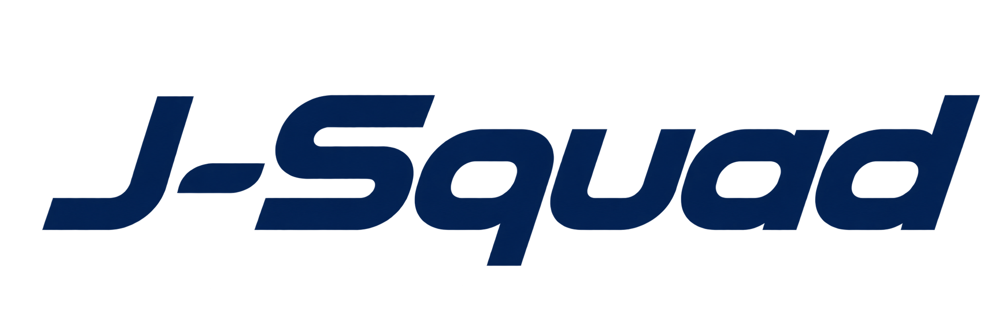

<!doctype html>
<html lang="fr">
<head>
<meta charset="utf-8">
<meta name="viewport" content="width=device-width, initial-scale=1, viewport-fit=cover">
<title>J-Squad</title>
<meta name="description" content="Dossier de vol de poche : programme, temps de service, tests, checklists.">
<meta name="theme-color" content="#0b1120">
<meta name="apple-mobile-web-app-capable" content="yes">
<meta name="mobile-web-app-capable" content="yes">
<meta name="apple-mobile-web-app-status-bar-style" content="black-translucent">
<meta name="apple-mobile-web-app-title" content="J-Squad">
<meta name="format-detection" content="telephone=no">
<meta name="robots" content="noindex, nofollow">
<link rel="manifest" href="manifest.webmanifest">
<link rel="icon" href="icon.svg" type="image/svg+xml">
<link rel="apple-touch-icon" href="apple-touch-icon.png">
<style>/* J-Squad — feuille de style. Thème nuit par défaut (poste de pilotage), thème jour sur demande. */
:root {
  --bg: #070b14;
  --bg-2: #0b1120;
  --surface: #111a2e;
  --surface-2: #16223a;
  --surface-3: #1d2b47;
  --line: rgba(148, 170, 214, .14);
  --line-2: rgba(148, 170, 214, .24);
  --text: #e8eef9;
  --muted: #9aa8c2;
  --faint: #6b7a96;
  --gold: #f2b544;
  --gold-2: #ffd27a;
  --gold-soft: rgba(242, 181, 68, .14);
  --blue: #5aa2f0;
  --blue-soft: rgba(90, 162, 240, .15);
  --green: #3fcf8e;
  --green-soft: rgba(63, 207, 142, .14);
  --orange: #ff9f43;
  --orange-soft: rgba(255, 159, 67, .15);
  --red: #ff5d6c;
  --red-soft: rgba(255, 93, 108, .15);
  --yellow: #ffd23f;
  --yellow-soft: rgba(255, 210, 63, .13);
  --violet: #b48cff;
  --shadow: 0 1px 0 rgba(255, 255, 255, .03) inset, 0 10px 30px -12px rgba(0, 0, 0, .6);
  --radius: 18px;
  --radius-s: 12px;
  --font: -apple-system, BlinkMacSystemFont, "SF Pro Text", "Segoe UI", Roboto, Inter, system-ui, sans-serif;
  --display: -apple-system, BlinkMacSystemFont, "SF Pro Display", "Segoe UI", Roboto, Inter, system-ui, sans-serif;
  --mono: ui-monospace, "SF Mono", SFMono-Regular, Menlo, Consolas, monospace;
  --side: 272px;
  --safe-t: env(safe-area-inset-top, 0px);
  --safe-b: env(safe-area-inset-bottom, 0px);
  --safe-l: env(safe-area-inset-left, 0px);
  --safe-r: env(safe-area-inset-right, 0px);
  color-scheme: dark;
}
:root[data-theme="light"] {
  --bg: #eef2f8;
  --bg-2: #e6ecf5;
  --surface: #ffffff;
  --surface-2: #f4f7fc;
  --surface-3: #e9eef7;
  --line: rgba(20, 40, 80, .10);
  --line-2: rgba(20, 40, 80, .18);
  --text: #0f1a2e;
  --muted: #55627a;
  --faint: #8592a8;
  --gold: #c98a12;
  --gold-2: #a86f06;
  --gold-soft: rgba(201, 138, 18, .12);
  --blue: #1f6fd1;
  --blue-soft: rgba(31, 111, 209, .10);
  --green: #13945c;
  --green-soft: rgba(19, 148, 92, .11);
  --orange: #d9700f;
  --orange-soft: rgba(217, 112, 15, .12);
  --red: #d42f45;
  --red-soft: rgba(212, 47, 69, .10);
  --yellow: #b88a00;
  --yellow-soft: rgba(184, 138, 0, .12);
  --violet: #7a4fd6;
  --shadow: 0 1px 2px rgba(15, 26, 46, .05), 0 8px 24px -14px rgba(15, 26, 46, .25);
  color-scheme: light;
}

* { box-sizing: border-box; -webkit-tap-highlight-color: transparent; }
html { -webkit-text-size-adjust: 100%; text-size-adjust: 100%; }
html, body { margin: 0; height: 100%; }
body {
  background: var(--bg);
  color: var(--text);
  font: 16px/1.5 var(--font);
  font-feature-settings: "tnum" 1, "cv11" 1;
  -webkit-font-smoothing: antialiased;
  overscroll-behavior-y: none;
}
button, input, textarea, select { font: inherit; color: inherit; }
button { cursor: pointer; border: 0; background: none; padding: 0; }
a { color: var(--blue); text-decoration: none; }
svg.i { width: 22px; height: 22px; flex: none; stroke: currentColor; fill: none; stroke-width: 1.8; stroke-linecap: round; stroke-linejoin: round; }
svg.i.s { width: 17px; height: 17px; }
.mono { font-family: var(--mono); font-feature-settings: "tnum" 1; letter-spacing: -.01em; }
.muted { color: var(--muted); }
.faint { color: var(--faint); }
.hidden { display: none !important; }

/* ---------- Structure ---------- */
.app { min-height: 100%; }
.side {
  position: fixed; inset: 0 auto 0 0; width: calc(var(--side) + var(--safe-l));
  padding: calc(18px + var(--safe-t)) 14px calc(14px + var(--safe-b)) calc(14px + var(--safe-l));
  background: linear-gradient(180deg, var(--bg-2), var(--bg));
  border-right: 1px solid var(--line);
  display: flex; flex-direction: column; gap: 6px; overflow-y: auto; z-index: 20;
}
.main {
  margin-left: calc(var(--side) + var(--safe-l));
  min-height: 100vh;
  padding: calc(14px + var(--safe-t)) calc(28px + var(--safe-r)) calc(40px + var(--safe-b)) 28px;
}
.brand { display: flex; align-items: center; gap: 12px; padding: 4px 8px 14px; color: var(--text); }
.brand .brand-icon { width: 40px; height: 40px; border-radius: 11px; box-shadow: 0 6px 18px -8px rgba(90, 162, 240, .45); flex: none; }
.brand .brand-wordmark { display: block; width: 150px; height: 34px; object-fit: contain; object-position: left center; filter: brightness(0) invert(1); }
:root[data-theme="light"] .brand .brand-wordmark { filter: none; }
.brand .brand-text { display: block; font-size: 19px; font-weight: 600; letter-spacing: .28em; line-height: 34px; color: var(--text); }
.brand small { color: var(--muted); font-size: 12px; letter-spacing: .04em; }

.mswitch {
  display: flex; align-items: center; gap: 10px; width: 100%; text-align: left;
  padding: 12px; border-radius: 14px; background: var(--surface); border: 1px solid var(--line);
  margin-bottom: 10px;
}
.mswitch .dot { width: 9px; height: 9px; border-radius: 50%; background: var(--gold); box-shadow: 0 0 0 4px var(--gold-soft); flex: none; }
.mswitch b { display: block; font-size: 15px; line-height: 1.2; }
.mswitch small { color: var(--muted); font-size: 12.5px; }
.mswitch svg { margin-left: auto; color: var(--faint); }

.nav-t { font-size: 11px; font-weight: 700; letter-spacing: .12em; text-transform: uppercase; color: var(--faint); padding: 14px 10px 6px; }
.nav a {
  display: flex; align-items: center; gap: 12px; padding: 11px 12px; border-radius: 12px;
  color: var(--muted); font-weight: 560; font-size: 15.5px; position: relative;
}
.nav a:hover { background: var(--surface); color: var(--text); }
.nav a.on { background: var(--surface-2); color: var(--text); }
.nav a.on::before { content: ""; position: absolute; left: -14px; top: 10px; bottom: 10px; width: 3px; border-radius: 3px; background: var(--gold); }
.nav a.on svg { color: var(--gold); }
.nav a .badge { margin-left: auto; }
.nav a .cdot { width: 9px; height: 9px; border-radius: 50%; flex: none; margin: 0 6px; }
.side-foot { margin-top: auto; padding-top: 14px; display: flex; flex-direction: column; gap: 2px; }

.tabbar { display: none; }

/* ---------- En-tête de page ---------- */
.top {
  position: sticky; top: 0; z-index: 10;
  margin: calc(-14px - var(--safe-t)) -28px 18px; padding: calc(14px + var(--safe-t)) 28px 14px;
  background: color-mix(in srgb, var(--bg) 82%, transparent);
  -webkit-backdrop-filter: saturate(1.4) blur(18px); backdrop-filter: saturate(1.4) blur(18px);
  border-bottom: 1px solid var(--line);
  display: flex; align-items: center; gap: 16px;
}
.top h1 { margin: 0; font: 750 26px/1.15 var(--display); letter-spacing: -.02em; }
.top .sub { color: var(--muted); font-size: 13.5px; margin-top: 2px; }
.top .back { width: 40px; height: 40px; border-radius: 12px; display: grid; place-items: center; background: var(--surface); border: 1px solid var(--line); color: var(--text); flex: none; }
.top-r { margin-left: auto; display: flex; align-items: center; gap: 10px; }
.clocks { display: flex; gap: 6px; }
.clock { padding: 6px 11px; border-radius: 11px; background: var(--surface); border: 1px solid var(--line); text-align: right; min-width: 74px; }
.clock b { display: block; font: 650 16px/1.1 var(--mono); }
.clock small { display: block; font-size: 10.5px; color: var(--muted); letter-spacing: .06em; text-transform: uppercase; }
.clock.z b { color: var(--gold); }
.iconbtn { width: 42px; height: 42px; border-radius: 12px; display: grid; place-items: center; background: var(--surface); border: 1px solid var(--line); color: var(--text); flex: none; }
.iconbtn:active { transform: scale(.96); }

/* ---------- Briques ---------- */
.grid { display: grid; gap: 16px; }
.g2 { grid-template-columns: repeat(2, minmax(0, 1fr)); }
.g3 { grid-template-columns: repeat(3, minmax(0, 1fr)); }
.span2 { grid-column: span 2; }
.card {
  background: var(--surface); border: 1px solid var(--line); border-radius: var(--radius);
  padding: 18px 20px; box-shadow: var(--shadow); min-width: 0;
}
.card.pad0 { padding: 0; overflow: hidden; }
.card-h { display: flex; align-items: center; gap: 10px; margin-bottom: 12px; }
.card-h h2, .card-h h3 { margin: 0; font: 700 13px/1.2 var(--font); letter-spacing: .09em; text-transform: uppercase; color: var(--muted); }
.card-h .r { margin-left: auto; display: flex; gap: 8px; align-items: center; }
.sec-t { display: flex; align-items: baseline; gap: 10px; margin: 26px 2px 12px; }
.sec-t h2 { margin: 0; font: 720 19px/1.2 var(--display); letter-spacing: -.01em; }
.sec-t .r { margin-left: auto; }
.sec-t:first-child { margin-top: 4px; }

.pill {
  display: inline-flex; align-items: center; gap: 6px; height: 26px; padding: 0 10px; border-radius: 99px;
  font-size: 12.5px; font-weight: 650; white-space: nowrap; background: var(--surface-3); color: var(--muted);
}
.pill.gold { background: var(--gold-soft); color: var(--gold); }
.pill.blue { background: var(--blue-soft); color: var(--blue); }
.pill.green { background: var(--green-soft); color: var(--green); }
.pill.orange { background: var(--orange-soft); color: var(--orange); }
.pill.red { background: var(--red-soft); color: var(--red); }
.pill.yellow { background: var(--yellow-soft); color: var(--yellow); }
.pill .d { width: 7px; height: 7px; border-radius: 50%; background: currentColor; }
.badge { min-width: 22px; height: 22px; padding: 0 7px; border-radius: 99px; display: inline-grid; place-items: center; font-size: 12px; font-weight: 700; background: var(--surface-3); color: var(--muted); }
.badge.gold { background: var(--gold); color: #1b1300; }
.badge.red { background: var(--red); color: #fff; }

.btn {
  display: inline-flex; align-items: center; justify-content: center; gap: 8px; min-height: 44px; padding: 0 16px;
  border-radius: 12px; background: var(--surface-2); border: 1px solid var(--line-2); font-weight: 650; font-size: 15px; color: var(--text);
}
.btn:active { transform: scale(.98); }
.btn.primary { background: var(--gold); border-color: var(--gold); color: #1b1300; }
.btn.ghost { background: transparent; }
.btn.danger { color: var(--red); }
.btn.sm { min-height: 36px; padding: 0 12px; font-size: 14px; border-radius: 10px; }
.btns { display: flex; flex-wrap: wrap; gap: 8px; }

.seg { display: inline-flex; padding: 3px; border-radius: 12px; background: var(--surface-2); border: 1px solid var(--line); gap: 2px; flex-wrap: wrap; }
.seg button { min-height: 36px; padding: 0 14px; border-radius: 9px; font-weight: 620; font-size: 14px; color: var(--muted); }
.seg button.on { background: var(--surface); color: var(--text); box-shadow: 0 1px 3px rgba(0, 0, 0, .25); }
:root[data-theme="light"] .seg button.on { box-shadow: 0 1px 3px rgba(15, 26, 46, .14); }

.empty { padding: 30px; text-align: center; color: var(--muted); }
.kv { display: grid; grid-template-columns: auto 1fr; gap: 6px 16px; font-size: 15px; }
.kv dt { color: var(--muted); }
.kv dd { margin: 0; font-weight: 560; }

/* ---------- Héros « aujourd'hui » ---------- */
.hero {
  position: relative; overflow: hidden; border-radius: 24px; padding: 24px 26px;
  background:
    radial-gradient(120% 140% at 100% 0%, rgba(242, 181, 68, .22), transparent 55%),
    radial-gradient(90% 120% at 0% 100%, rgba(90, 162, 240, .18), transparent 60%),
    linear-gradient(135deg, #15213b, #0b1222);
  border: 1px solid rgba(242, 181, 68, .22); color: #eef3fc;
  box-shadow: 0 30px 60px -30px rgba(0, 0, 0, .8);
}
:root[data-theme="light"] .hero { color: #eef3fc; }
.hero { --gold: #f2b544; --gold-2: #ffd27a; }
.hero .kick { font-size: 12px; letter-spacing: .14em; text-transform: uppercase; color: var(--gold-2); font-weight: 700; display: flex; gap: 10px; align-items: center; }
.hero .route { display: flex; align-items: center; gap: 18px; margin: 14px 0 6px; flex-wrap: wrap; }
.hero .ap { font: 800 48px/1 var(--display); letter-spacing: -.02em; }
.hero .ap small { display: block; font: 500 13px/1.3 var(--font); color: #a9b6cf; letter-spacing: 0; margin-top: 6px; }
.hero .arrow-l { flex: 1; min-width: 80px; height: 2px; background: linear-gradient(90deg, rgba(255, 255, 255, .15), var(--gold-2), rgba(255, 255, 255, .15)); position: relative; }
.hero .arrow-l svg { position: absolute; left: 50%; top: 50%; transform: translate(-50%, -50%) rotate(90deg); width: 26px; height: 26px; color: var(--gold-2); fill: currentColor; stroke: none; }
.hero .times { display: flex; gap: 26px; flex-wrap: wrap; margin-top: 16px; }
.hero .t small { display: block; font-size: 11px; letter-spacing: .1em; text-transform: uppercase; color: #93a2bf; }
.hero .t b { font: 700 22px/1.2 var(--mono); }
.hero .t i { font-style: normal; color: #93a2bf; font-size: 13px; margin-left: 6px; font-family: var(--mono); }
.hero .kick span:first-child { display: inline-flex; align-items: center; gap: 8px; }
.hero .count { margin-left: auto; text-align: right; letter-spacing: 0; text-transform: none; }
.hero .count b { display: block; font: 800 34px/1 var(--mono); color: var(--gold-2); }
.hero .kick { align-items: flex-start; }
.hero .count small { color: #a9b6cf; font-size: 12.5px; }
.hero .chips { display: flex; gap: 8px; flex-wrap: wrap; margin-top: 16px; }
.hero .pill { background: rgba(255, 255, 255, .08); color: #dbe4f5; }
.hero .warn { margin-top: 14px; padding: 10px 14px; border-radius: 12px; background: rgba(255, 93, 108, .14); border: 1px solid rgba(255, 93, 108, .35); color: #ffd0d5; font-size: 14.5px; display: flex; gap: 10px; align-items: flex-start; }

/* ---------- Jauge FDP ---------- */
.gauge { display: flex; align-items: center; gap: 18px; }
.gauge svg { width: 132px; height: 132px; flex: none; }
.gauge .ring-bg { stroke: var(--surface-3); }
.gauge .lab b { display: block; font: 750 30px/1 var(--mono); letter-spacing: -.02em; }
.gauge .lab small { color: var(--muted); font-size: 13px; }
.gauge .lab .line { margin-top: 8px; font-size: 14px; color: var(--muted); }
.gauge .lab .line b { display: inline; font: 650 14px var(--mono); color: var(--text); }

/* ---------- Frise du jour / FDP ---------- */
.tl { position: relative; height: 54px; border-radius: 12px; background: var(--surface-2); border: 1px solid var(--line); overflow: hidden; }
.tl .seg-b { position: absolute; top: 9px; bottom: 9px; border-radius: 7px; display: grid; place-items: center; font-size: 12px; font-weight: 700; color: #08101f; overflow: hidden; white-space: nowrap; }
.tl .pre, .tl .post { background: repeating-linear-gradient(135deg, rgba(154, 168, 194, .28) 0 6px, rgba(154, 168, 194, .12) 6px 12px); color: var(--muted); }
.tl .gnd { background: rgba(154, 168, 194, .16); color: var(--muted); top: 16px; bottom: 16px; }
.tl .fly { background: linear-gradient(180deg, var(--gold-2), var(--gold)); }
.tl .fly.lmr { background: linear-gradient(180deg, #8cc1ff, var(--blue)); }
.tl .fly.cdb { background: linear-gradient(180deg, var(--gold-2), var(--gold)); }
.tl .mark { position: absolute; top: 0; bottom: 0; width: 2px; }
.tl .mark.max { background: var(--red); }
.tl .mark.base { background: var(--faint); opacity: .7; }
.tl .mark.ext { background: var(--orange); }
.tl .mark.now { background: var(--text); width: 2px; box-shadow: 0 0 0 3px color-mix(in srgb, var(--text) 20%, transparent); z-index: 3; }
.tl .mark.now::after { content: ""; position: absolute; top: -4px; left: -4px; width: 10px; height: 10px; border-radius: 50%; background: var(--text); }
.tl-scale { position: relative; height: 18px; margin-top: 4px; font: 11px var(--mono); color: var(--faint); }
.tl-scale span { position: absolute; transform: translateX(-50%); }
.tl-legend { display: flex; gap: 14px; flex-wrap: wrap; font-size: 12.5px; color: var(--muted); margin-top: 8px; }
.tl-legend i { display: inline-block; width: 12px; height: 12px; border-radius: 3px; vertical-align: -1px; margin-right: 5px; }

.num { padding: 10px 12px; border-radius: 12px; background: var(--surface-2); border: 1px solid var(--line); }
.num small { display: block; font-size: 11px; letter-spacing: .08em; text-transform: uppercase; color: var(--muted); }
.num b { font: 700 19px/1.3 var(--mono); }
.num i { font-style: normal; color: var(--faint); font-size: 12px; margin-left: 4px; }
.num.ok b { color: var(--green); }
.num.warn b { color: var(--orange); }
.num.bad b { color: var(--red); }

/* ---------- Legs ---------- */
.day-h { display: flex; align-items: center; gap: 12px; margin: 26px 2px 12px; }
.day-h h2 { margin: 0; font: 720 19px/1.2 var(--display); text-transform: capitalize; }
.day-h .today { background: var(--gold); color: #1b1300; }
.legs { display: grid; grid-template-columns: repeat(auto-fill, minmax(330px, 1fr)); gap: 14px; }
.leg {
  display: block; color: var(--text); background: var(--surface); border: 1px solid var(--line); border-radius: var(--radius);
  padding: 16px 18px; box-shadow: var(--shadow); position: relative; overflow: hidden;
}
.leg::before { content: ""; position: absolute; left: 0; top: 0; bottom: 0; width: 4px; background: var(--c, var(--gold)); }
.leg.now { border-color: color-mix(in srgb, var(--gold) 55%, transparent); box-shadow: 0 0 0 1px color-mix(in srgb, var(--gold) 40%, transparent), var(--shadow); }
.leg.done { opacity: .62; }
.leg-top { display: flex; align-items: center; gap: 10px; }
.leg-n { font: 700 12.5px var(--mono); color: var(--muted); background: var(--surface-2); border-radius: 8px; padding: 3px 8px; }
.leg-route { display: flex; align-items: baseline; gap: 10px; margin: 10px 0 2px; }
.leg-route b { font: 780 26px/1 var(--display); letter-spacing: -.01em; }
.leg-route svg { color: var(--faint); align-self: center; }
.leg-names { color: var(--muted); font-size: 13px; }
.leg-times { display: flex; gap: 18px; margin-top: 12px; flex-wrap: wrap; }
.leg-times div small { display: block; font-size: 10.5px; letter-spacing: .09em; text-transform: uppercase; color: var(--faint); }
.leg-times div b { font: 650 17px var(--mono); }
.leg-times div i { font-style: normal; color: var(--faint); font: 12.5px var(--mono); margin-left: 4px; }
.leg-meta { display: flex; gap: 6px; flex-wrap: wrap; margin-top: 12px; }
.leg-alert { margin-top: 10px; font-size: 13.5px; color: var(--orange); display: flex; gap: 8px; }
.leg-note { margin-top: 8px; font-size: 13.5px; color: var(--muted); display: flex; gap: 8px; }
.restcard { background: var(--surface); border: 1px dashed var(--line-2); border-radius: var(--radius); padding: 18px; color: var(--muted); display: flex; gap: 12px; align-items: center; }

/* ---------- Points à lever ---------- */
.pts { display: flex; flex-direction: column; gap: 10px; }
.pt { border-radius: 14px; background: var(--surface-2); border: 1px solid var(--line); overflow: hidden; }
.pt summary { list-style: none; display: flex; align-items: center; gap: 12px; padding: 13px 16px; cursor: pointer; font-weight: 620; }
.pt summary::-webkit-details-marker { display: none; }
.pt summary .sev { width: 10px; height: 10px; border-radius: 50%; flex: none; }
.pt summary .chev { margin-left: auto; color: var(--faint); transition: transform .2s; }
.pt[open] summary .chev { transform: rotate(90deg); }
.pt .body { padding: 0 18px 14px 38px; }
.sev-red { background: var(--red); box-shadow: 0 0 0 4px var(--red-soft); }
.sev-orange { background: var(--orange); box-shadow: 0 0 0 4px var(--orange-soft); }
.sev-yellow { background: var(--yellow); box-shadow: 0 0 0 4px var(--yellow-soft); }
.sev-green { background: var(--green); box-shadow: 0 0 0 4px var(--green-soft); }
.sev-info { background: var(--blue); box-shadow: 0 0 0 4px var(--blue-soft); }

/* ---------- Cases à cocher ---------- */
.checks { display: flex; flex-direction: column; }
.ck { display: flex; gap: 14px; align-items: flex-start; padding: 12px 4px; border-bottom: 1px solid var(--line); cursor: pointer; }
.ck:last-child { border-bottom: 0; }
.ck .box {
  width: 26px; height: 26px; border-radius: 8px; border: 2px solid var(--line-2); flex: none; display: grid; place-items: center;
  transition: background .15s, border-color .15s; margin-top: 1px;
}
.ck .box svg { width: 16px; height: 16px; stroke: #08101f; stroke-width: 3; opacity: 0; transform: scale(.6); transition: .15s; }
.ck.on .box { background: var(--green); border-color: var(--green); }
.ck.on .box svg { opacity: 1; transform: none; }
.ck.on .txt { color: var(--muted); }
.ck.on .txt > :first-child { text-decoration: line-through; text-decoration-color: color-mix(in srgb, var(--muted) 60%, transparent); }
.ck .txt { flex: 1; min-width: 0; font-size: 15.5px; }
.ck .txt .det { margin-top: 6px; font-size: 14px; color: var(--muted); }
.ck .txt .det ul { margin: 4px 0; padding-left: 18px; }
.ck .txt em { color: var(--faint); font-style: normal; font-size: 13px; }
.prog { height: 6px; border-radius: 6px; background: var(--surface-3); overflow: hidden; }
.prog i { display: block; height: 100%; background: linear-gradient(90deg, var(--green), #7ee2b0); border-radius: 6px; transition: width .3s; }
.phase { margin-bottom: 14px; }
.phase .card-h { margin-bottom: 4px; }
.phase .card-h h3 { color: var(--text); letter-spacing: 0; text-transform: none; font-size: 17px; }
.phase .count { font: 650 13px var(--mono); color: var(--muted); }

/* ---------- Tests ---------- */
.cand { display: flex; gap: 18px; align-items: center; }
.avatar { width: 54px; height: 54px; border-radius: 16px; display: grid; place-items: center; font: 800 19px var(--display); color: #08101f; background: var(--c, var(--gold)); flex: none; }
.cand h3 { margin: 0; font: 720 20px/1.2 var(--display); }
.cand .sub { color: var(--muted); font-size: 14px; }
.ring { width: 64px; height: 64px; margin-left: auto; position: relative; flex: none; }
.ring svg { width: 64px; height: 64px; transform: rotate(-90deg); }
.ring b { position: absolute; inset: 0; display: grid; place-items: center; font: 750 15px var(--mono); }
.stats { display: grid; grid-template-columns: repeat(4, minmax(0, 1fr)); gap: 8px; margin-top: 16px; }
.stat { padding: 10px; border-radius: 12px; background: var(--surface-2); text-align: center; }
.stat b { display: block; font: 750 22px/1.1 var(--mono); }
.stat small { color: var(--muted); font-size: 12px; }
.stat.ok b { color: var(--green); }
.stat.mid b { color: var(--orange); }
.stat.ko b { color: var(--red); }

.md-split { display: grid; grid-template-columns: minmax(320px, 400px) minmax(0, 1fr); gap: 18px; align-items: start; }
.qlist { position: sticky; top: 92px; max-height: calc(100vh - 110px); overflow-y: auto; padding-right: 4px; }
.qtheme { font-size: 11.5px; font-weight: 750; letter-spacing: .1em; text-transform: uppercase; color: var(--faint); margin: 16px 6px 6px; }
.qrow {
  display: flex; gap: 12px; align-items: flex-start; padding: 11px 12px; border-radius: 13px; color: var(--text);
  border: 1px solid transparent; margin-bottom: 2px;
}
.qrow:hover { background: var(--surface); }
.qrow.on { background: var(--surface-2); border-color: var(--line-2); }
.qid { font: 750 12.5px var(--mono); min-width: 44px; height: 26px; border-radius: 8px; display: grid; place-items: center; flex: none; }
.lv-M { background: var(--red-soft); color: var(--red); }
.lv-R { background: var(--blue-soft); color: var(--blue); }
.lv-J { background: var(--gold-soft); color: var(--gold); }
.qrow .qt { flex: 1; font-size: 14.5px; line-height: 1.35; min-width: 0; }
.qrow .st { width: 12px; height: 12px; border-radius: 50%; border: 2px solid var(--line-2); flex: none; margin-top: 6px; }
.st-ok { background: var(--green); border-color: var(--green) !important; }
.st-mid { background: var(--orange); border-color: var(--orange) !important; }
.st-ko { background: var(--red); border-color: var(--red) !important; }
.st-asked { background: var(--blue); border-color: var(--blue) !important; }

.qdetail .qhead2 { display: flex; gap: 14px; align-items: flex-start; }
.qdetail .qhead2 .qid { min-width: 56px; height: 34px; font-size: 15px; border-radius: 10px; }
.qdetail h2 { margin: 0; font: 700 22px/1.3 var(--display); letter-spacing: -.01em; }
.qdetail .meta { display: flex; gap: 6px; flex-wrap: wrap; margin-top: 10px; }
.block { margin-top: 16px; border-radius: 14px; padding: 14px 16px; background: var(--surface-2); border: 1px solid var(--line); }
.block > .lab { font-size: 11.5px; font-weight: 750; letter-spacing: .1em; text-transform: uppercase; margin-bottom: 6px; display: flex; align-items: center; gap: 8px; }
.block.answer > .lab { color: var(--green); }
.block.ref > .lab { color: var(--blue); }
.block.alert > .lab { color: var(--red); }
.block.note > .lab { color: var(--violet); }
.block.answer { border-left: 3px solid var(--green); }
.block.alert { border-left: 3px solid var(--red); }
.block.ref { border-left: 3px solid var(--blue); }
.block.note { border-left: 3px solid var(--violet); }
.veil { position: relative; }
.veil.hide > :not(.unveil) { filter: blur(9px); user-select: none; pointer-events: none; }
.veil .unveil { display: none; }
.veil.hide .unveil { display: flex; position: absolute; inset: 0; align-items: center; justify-content: center; z-index: 2; }
.score {
  display: grid; grid-template-columns: repeat(4, minmax(0, 1fr)); gap: 8px; margin: 18px -8px 0; padding: 8px;
  position: sticky; bottom: calc(12px + var(--safe-b)); z-index: 5; border-radius: 18px;
  background: color-mix(in srgb, var(--surface) 88%, transparent); -webkit-backdrop-filter: blur(14px); backdrop-filter: blur(14px);
  border: 1px solid var(--line); box-shadow: 0 12px 30px -16px rgba(0, 0, 0, .7);
}
.score button { min-height: 54px; border-radius: 14px; background: var(--surface-2); border: 1.5px solid var(--line-2); font-weight: 700; font-size: 15px; display: flex; flex-direction: column; align-items: center; justify-content: center; gap: 2px; }
.score button small { font-weight: 500; font-size: 11.5px; color: var(--muted); }
.score button.on.ok { background: var(--green-soft); border-color: var(--green); color: var(--green); }
.score button.on.mid { background: var(--orange-soft); border-color: var(--orange); color: var(--orange); }
.score button.on.ko { background: var(--red-soft); border-color: var(--red); color: var(--red); }
.score button.on.asked { background: var(--blue-soft); border-color: var(--blue); color: var(--blue); }
textarea.note {
  width: 100%; min-height: 96px; margin-top: 12px; padding: 12px 14px; border-radius: 14px; resize: vertical;
  background: var(--surface-2); border: 1px solid var(--line-2); font-size: 15.5px; line-height: 1.45; outline: none;
}
textarea.note:focus, input.inp:focus, select.inp:focus { border-color: var(--gold); box-shadow: 0 0 0 3px var(--gold-soft); }
.qnav { display: flex; justify-content: space-between; gap: 10px; margin-top: 16px; }

.compgrid { display: grid; gap: 8px; }
.compgrid { grid-template-columns: repeat(auto-fill, minmax(min(100%, 470px), 1fr)); }
.comp { display: grid; grid-template-columns: 34px 1fr auto; gap: 12px; align-items: center; padding: 10px 12px; border-radius: 13px; background: var(--surface-2); }
.comp .k { font: 800 16px var(--mono); width: 34px; height: 34px; border-radius: 10px; display: grid; place-items: center; background: var(--surface-3); }
.comp .n b { display: block; font-size: 15px; }
.comp .n small { color: var(--muted); font-size: 12.5px; }
.dots5 { display: flex; gap: 5px; }
.dots5 button { width: 38px; height: 38px; border-radius: 10px; background: var(--surface); border: 1px solid var(--line-2); font: 700 15px var(--mono); color: var(--muted); }
.dots5 button.on { color: #08101f; border-color: transparent; }
.dots5 button.on.v1 { background: var(--red); }
.dots5 button.on.v2 { background: var(--orange); }
.dots5 button.on.v3 { background: var(--yellow); }
.dots5 button.on.v4 { background: var(--green); }
.dots5 button.on.v5 { background: #6be0ff; }
.verdict { display: flex; gap: 10px; }
.verdict button { flex: 1; min-height: 56px; border-radius: 14px; font: 800 18px var(--display); letter-spacing: .04em; background: var(--surface-2); border: 1.5px solid var(--line-2); color: var(--muted); }
.verdict button.on.pass { background: var(--green-soft); border-color: var(--green); color: var(--green); }
.verdict button.on.fail { background: var(--red-soft); border-color: var(--red); color: var(--red); }

/* ---------- Escales ---------- */
.ap-card h3 { margin: 0; font: 760 24px/1 var(--display); display: flex; align-items: baseline; gap: 10px; }
.ap-card h3 small { font: 500 14px var(--font); color: var(--muted); }
.ap-card .lt { margin-left: auto; text-align: right; }
.ap-card .lt b { font: 700 20px var(--mono); }
.ap-card .lt small { display: block; color: var(--muted); font-size: 11.5px; }
.ap-card dl { margin: 14px 0 0; }
.tel { font-family: var(--mono); color: var(--blue); }

/* ---------- Notes ---------- */
.composer { display: flex; flex-direction: column; gap: 10px; }
.chips { display: flex; gap: 6px; flex-wrap: wrap; }
.chip { min-height: 36px; padding: 0 14px; border-radius: 99px; background: var(--surface-2); border: 1px solid var(--line-2); font-weight: 620; font-size: 14px; color: var(--muted); display: inline-flex; align-items: center; gap: 8px; }
.chip.on { background: var(--gold-soft); border-color: var(--gold); color: var(--gold); }
.chip .cdot { width: 8px; height: 8px; border-radius: 50%; }
.note-item { display: flex; gap: 14px; padding: 14px 4px; border-bottom: 1px solid var(--line); }
.note-item:last-child { border-bottom: 0; }
.note-item time { font: 650 13px var(--mono); color: var(--muted); min-width: 64px; }
.note-item .tx { flex: 1; white-space: pre-wrap; font-size: 15.5px; }
.note-item .who { margin-top: 6px; display: flex; gap: 6px; }
.note-item .del { color: var(--faint); align-self: flex-start; padding: 4px; }
.note-actions { display: flex; flex-wrap: wrap; gap: 4px; align-self: flex-start; }

/* ---------- Documents (rendu Markdown) ---------- */
.prose { font-size: 16px; line-height: 1.6; max-width: 860px; }
.prose h2 { font: 720 21px/1.3 var(--display); margin: 30px 0 10px; letter-spacing: -.01em; }
.prose h2, .prose h3 { scroll-margin-top: 96px; }
.prose h3 { font: 700 17px/1.35 var(--display); margin: 22px 0 8px; }
.prose p { margin: 8px 0; }
.prose ul, .prose ol { padding-left: 22px; margin: 6px 0; }
.prose li { margin: 4px 0; }
.prose li > p { margin: 2px 0; }
.prose strong { color: var(--text); font-weight: 700; }
.prose code { font: 13.5px var(--mono); background: var(--surface-3); border-radius: 6px; padding: 1px 6px; }
.prose a { color: var(--blue); font-weight: 560; }
.prose .deadlink { color: var(--muted); border-bottom: 1px dotted var(--faint); }
.prose hr { border: 0; border-top: 1px solid var(--line); margin: 22px 0; }
.prose .callout { margin: 12px 0; padding: 12px 16px; border-radius: 14px; background: var(--gold-soft); border-left: 3px solid var(--gold); }
.prose .callout p { margin: 4px 0; }
.prose .table-wrap { overflow-x: auto; margin: 12px 0; border: 1px solid var(--line); border-radius: 14px; -webkit-overflow-scrolling: touch; }
.prose table { border-collapse: collapse; width: 100%; font-size: 14.5px; }
.prose th, .prose td { text-align: left; padding: 9px 12px; border-bottom: 1px solid var(--line); vertical-align: top; }
.prose th { background: var(--surface-2); font-size: 12.5px; letter-spacing: .04em; text-transform: uppercase; color: var(--muted); white-space: nowrap; }
.prose tr:last-child td { border-bottom: 0; }
.prose .lvl { display: inline-grid; place-items: center; min-width: 22px; height: 20px; border-radius: 6px; font: 750 11.5px var(--mono); padding: 0 5px; }
.prose .lvl-M { background: var(--red-soft); color: var(--red); }
.prose .lvl-R { background: var(--blue-soft); color: var(--blue); }
.prose .lvl-J { background: var(--gold-soft); color: var(--gold); }
.prose .qhead { display: flex; flex-wrap: wrap; gap: 8px; align-items: baseline; }
.prose .qhead .qid { background: var(--surface-3); }
.prose .qhead .qmeta { font-size: 13px; color: var(--muted); font-family: var(--mono); }
.prose .qhead .qtext { flex-basis: 100%; }
.prose li.lbl { list-style: none; margin-left: -22px; padding: 10px 14px; border-radius: 12px; background: var(--surface-2); margin-top: 8px; }
.prose li.lbl-answer { border-left: 3px solid var(--green); }
.prose li.lbl-alert { border-left: 3px solid var(--red); }
.prose li.lbl-ref { border-left: 3px solid var(--blue); }
.prose li.lbl-note { border-left: 3px solid var(--violet); }
.prose li.task { list-style: none; position: relative; }
.prose li.task > .taskbox { position: absolute; left: -24px; top: 5px; width: 15px; height: 15px; border: 2px solid var(--faint); border-radius: 4px; }
.prose .arrow { color: var(--gold); }
.block .prose, .pt .prose, .ck .prose { font-size: 15px; }
.block .prose > :first-child, .pt .body > :first-child { margin-top: 0; }
.doc-layout { display: grid; grid-template-columns: minmax(0, 1fr) 240px; gap: 28px; align-items: start; }
.toc { position: sticky; top: 96px; font-size: 13.5px; border-left: 1px solid var(--line); padding-left: 14px; max-height: calc(100vh - 120px); overflow-y: auto; }
.toc .t { font-size: 11px; font-weight: 750; letter-spacing: .12em; text-transform: uppercase; color: var(--faint); margin-bottom: 8px; }
.toc a { display: block; color: var(--muted); padding: 4px 0; line-height: 1.35; }
.toc a.l3 { padding-left: 12px; font-size: 13px; }
.doclist a { display: flex; align-items: center; gap: 14px; padding: 14px 16px; border-radius: 14px; color: var(--text); border: 1px solid var(--line); background: var(--surface); margin-bottom: 8px; }
.doclist a svg { color: var(--gold); }
.doclist a small { display: block; color: var(--muted); font-size: 13px; }
.doclist a .chev { margin-left: auto; color: var(--faint); }

/* ---------- Recherche, feuilles, toasts ---------- */
.overlay { position: fixed; inset: 0; z-index: 60; background: rgba(3, 6, 12, .55); -webkit-backdrop-filter: blur(6px); backdrop-filter: blur(6px); display: flex; align-items: flex-start; justify-content: center; padding: calc(60px + var(--safe-t)) 16px 16px; animation: fade .15s; }
.sheet { width: min(720px, 100%); max-height: 80vh; display: flex; flex-direction: column; background: var(--surface); border: 1px solid var(--line-2); border-radius: 22px; box-shadow: 0 40px 80px -30px rgba(0, 0, 0, .7); overflow: hidden; animation: pop .18s ease-out; }
.sheet .sh { display: flex; align-items: center; gap: 10px; padding: 14px 16px; border-bottom: 1px solid var(--line); }
.sheet .sh input { flex: 1; border: 0; outline: 0; background: transparent; font-size: 18px; }
.sheet .sb { overflow-y: auto; padding: 8px; }
.res { display: block; padding: 11px 12px; border-radius: 12px; color: var(--text); }
.res:hover, .res.sel { background: var(--surface-2); }
.res small { display: block; color: var(--muted); font-size: 12.5px; }
.res mark { background: var(--gold-soft); color: var(--gold); border-radius: 4px; padding: 0 2px; }
.sheet.form .sb { padding: 16px; }
input.inp, select.inp { width: 100%; min-height: 46px; padding: 0 14px; border-radius: 12px; background: var(--surface-2); border: 1px solid var(--line-2); font-size: 16px; outline: none; }
input.inp.time { font-family: var(--mono); font-size: 20px; text-align: center; letter-spacing: .04em; }
.field { display: flex; flex-direction: column; gap: 6px; margin-bottom: 14px; }
.field label { font-size: 12.5px; font-weight: 700; letter-spacing: .06em; text-transform: uppercase; color: var(--muted); }
.fab {
  position: fixed; right: calc(24px + var(--safe-r)); bottom: calc(24px + var(--safe-b)); z-index: 30;
  height: 58px; padding: 0 22px 0 18px; border-radius: 29px; display: flex; align-items: center; gap: 10px;
  background: linear-gradient(180deg, var(--gold-2), var(--gold)); color: #1b1300; font-weight: 750; font-size: 16px;
  box-shadow: 0 16px 36px -12px rgba(242, 181, 68, .7), 0 2px 0 rgba(255, 255, 255, .35) inset;
}
.fab:active { transform: scale(.97); }
.toast { position: fixed; left: 50%; bottom: calc(28px + var(--safe-b)); transform: translateX(-50%); z-index: 70; background: var(--surface-3); border: 1px solid var(--line-2); color: var(--text); border-radius: 14px; padding: 12px 16px; display: flex; gap: 12px; align-items: center; box-shadow: 0 20px 40px -18px rgba(0, 0, 0, .7); animation: pop .2s; font-weight: 560; }
@keyframes fade { from { opacity: 0; } }
@keyframes pop { from { opacity: 0; transform: translateY(8px) scale(.98); } }
.toast.center { transform: translateX(-50%); }

/* ---------- Accueil (liste des missions) ---------- */
.mcard { display: block; color: var(--text); border-radius: 22px; padding: 22px; background: var(--surface); border: 1px solid var(--line); box-shadow: var(--shadow); position: relative; overflow: hidden; }
.mcard.active { background: radial-gradient(120% 140% at 100% 0%, rgba(242, 181, 68, .16), transparent 55%), var(--surface); border-color: color-mix(in srgb, var(--gold) 40%, transparent); }
.mcard h3 { margin: 10px 0 4px; font: 760 24px/1.2 var(--display); }
.mcard p { margin: 0; color: var(--muted); }
.mcard .route-mini { margin-top: 14px; font: 600 13.5px var(--mono); color: var(--muted); display: flex; flex-wrap: wrap; gap: 4px 6px; align-items: center; }

/* ---------- Méthodes ---------- */
.mhero {
  border-radius: 24px; padding: 24px 26px; margin-bottom: 8px;
  background: radial-gradient(120% 160% at 0% 0%, rgba(90, 162, 240, .16), transparent 55%), radial-gradient(120% 160% at 100% 100%, rgba(242, 181, 68, .14), transparent 55%), var(--surface);
  border: 1px solid var(--line); box-shadow: var(--shadow);
}
.mchap { margin: 0 0 20px; font: 560 19px/1.5 var(--display); letter-spacing: -.005em; max-width: 920px; }
.mchap strong { color: var(--gold); }
.mflow { list-style: none; margin: 0; padding: 0; display: grid; grid-auto-flow: column; grid-auto-columns: minmax(0, 1fr); gap: 10px; position: relative; }
.mflow::before { content: ""; position: absolute; left: 22px; right: 22px; top: 22px; height: 2px; background: linear-gradient(90deg, var(--blue), var(--gold)); opacity: .45; }
.mflow li { position: relative; }
.mflow a { display: flex; flex-direction: column; align-items: flex-start; gap: 8px; color: var(--text); padding: 0 4px 4px 0; }
.mf-n { width: 44px; height: 44px; border-radius: 50%; display: grid; place-items: center; font: 800 17px var(--mono); color: #08101f; background: linear-gradient(180deg, var(--gold-2), var(--gold)); box-shadow: 0 0 0 5px var(--surface), 0 8px 18px -8px rgba(242, 181, 68, .7); position: relative; z-index: 1; }
.mf-i { display: none; }
.mf-t { font-size: 13.5px; font-weight: 620; line-height: 1.3; color: var(--muted); }
.mflow a:hover .mf-t { color: var(--text); }
.msteps { margin-top: 18px; }
.mstep { display: grid; grid-template-columns: 56px minmax(0, 1fr); gap: 16px; position: relative; padding-bottom: 22px; scroll-margin-top: 96px; }
.mrail { position: relative; display: flex; justify-content: center; }
.mrail::after { content: ""; position: absolute; top: 50px; bottom: -22px; width: 2px; background: linear-gradient(180deg, var(--line-2), transparent); }
.mstep:last-child .mrail::after { display: none; }
.mnum { width: 48px; height: 48px; border-radius: 15px; display: grid; place-items: center; font: 800 20px var(--mono); color: var(--gold); background: var(--gold-soft); border: 1.5px solid color-mix(in srgb, var(--gold) 55%, transparent); }
.mbody { background: var(--surface); border: 1px solid var(--line); border-radius: var(--radius); padding: 18px 22px 20px; box-shadow: var(--shadow); min-width: 0; }
.mq { display: flex; align-items: center; gap: 12px; margin-bottom: 8px; }
.mq h2 { margin: 0; font: 740 22px/1.25 var(--display); letter-spacing: -.015em; }
.mq-i { width: 38px; height: 38px; border-radius: 11px; display: grid; place-items: center; background: var(--blue-soft); color: var(--blue); flex: none; }
.messential { font-size: 17px; line-height: 1.6; max-width: 860px; }
.messential strong { color: var(--gold-2); }
:root[data-theme="light"] .messential strong { color: var(--gold); }
.encarts { display: grid; grid-template-columns: repeat(auto-fill, minmax(min(100%, 300px), 1fr)); gap: 10px; margin-top: 16px; align-items: start; }
.enc { border-radius: 14px; background: var(--surface-2); border: 1px solid var(--line); border-top: 3px solid var(--c); overflow: hidden; }
.enc[open] { grid-column: 1 / -1; box-shadow: 0 14px 30px -18px rgba(0, 0, 0, .6); }
.enc summary { list-style: none; display: flex; align-items: center; gap: 9px; padding: 12px 14px; cursor: pointer; min-height: 48px; }
.enc summary::-webkit-details-marker { display: none; }
.enc summary > svg:first-child { color: var(--c); }
.enc .et { font-size: 11px; font-weight: 800; letter-spacing: .1em; text-transform: uppercase; color: var(--c); }
.enc .en { font-weight: 620; font-size: 14.5px; line-height: 1.3; flex: 1; min-width: 0; }
.enc .chev { color: var(--faint); transition: transform .2s; }
.enc[open] .chev { transform: rotate(90deg); }
.enc .prose { padding: 0 16px 14px; font-size: 15px; max-width: none; }
.enc .prose > :first-child { margin-top: 0; }
.enc .prose code { white-space: pre-wrap; word-break: break-word; display: inline-block; padding: 6px 10px; font-size: 13px; line-height: 1.5; }
.enc-rule { --c: var(--green); }
.enc-detail { --c: var(--blue); }
.enc-ex { --c: var(--gold); }
.enc-trap { --c: var(--red); }
.enc-annex { --c: var(--violet); }
.enc-src { --c: var(--faint); }
.enc-contact { --c: var(--orange); }
.methlink.panne { border-color: color-mix(in srgb, var(--orange) 40%, transparent); background: radial-gradient(120% 200% at 0% 0%, var(--orange-soft), transparent 60%), var(--surface); }
.methlink.panne > svg:first-child { color: var(--orange); }
.methlink { display: flex; align-items: center; gap: 14px; color: var(--text); border-color: color-mix(in srgb, var(--blue) 40%, transparent); background: radial-gradient(120% 200% at 0% 0%, var(--blue-soft), transparent 60%), var(--surface); }
.methlink > svg:first-child { width: 30px; height: 30px; color: var(--blue); }
.methlink b { display: block; font-size: 16px; }
.methlink small { color: var(--muted); font-size: 13px; }
.methlink .chev { margin-left: auto; color: var(--faint); }

/* ---------- Carburant ---------- */
.fseg { margin-bottom: 14px; border-left: 4px solid var(--line-2); }
.fseg.green { border-left-color: var(--green); }
.fseg.orange { border-left-color: var(--orange); }
.fseg.red { border-left-color: var(--red); }
.fbig { font: 800 26px/1 var(--mono); background: none; border: 0; padding: 0; color: var(--text); }
.fbig small { font-size: 15px; color: var(--muted); margin-left: 2px; }
.fbig.green { color: var(--green); } .fbig.orange { color: var(--orange); } .fbig.red { color: var(--red); }
.fline { font-size: 15px; line-height: 1.7; }
.fline small { color: var(--muted); font-size: 12.5px; }
.fline .ft { white-space: nowrap; font-family: var(--mono); }
.fline .ft small { font-family: var(--font); }
.fline .ft.o { color: var(--orange); }
.fnote { font-size: 13.5px; color: var(--blue); display: flex; gap: 6px; align-items: center; }
.fsub { font-size: 13.5px; color: var(--muted); margin-top: 4px; }
.fsub b { color: var(--text); }
.fbar { height: 8px; border-radius: 8px; background: var(--surface-3); overflow: hidden; margin: 10px 0 2px; }
.fbar i { display: block; height: 100%; border-radius: 8px; background: var(--faint); }
.fbar i.green { background: var(--green); } .fbar i.orange { background: var(--orange); } .fbar i.red { background: var(--red); }
.frows { margin-top: 12px; display: grid; gap: 8px; }
.frow { padding: 12px 14px; border-radius: 13px; background: var(--surface-2); border: 1px solid var(--line); }
.frow-h { display: flex; align-items: center; gap: 10px; flex-wrap: wrap; margin-bottom: 6px; }
.frow-h .r { margin-left: auto; display: flex; gap: 8px; align-items: center; flex-wrap: wrap; }
.fwarn { font-size: 13.5px; display: flex; gap: 8px; margin-top: 6px; }
.fwarn.orange { color: var(--orange); } .fwarn.red { color: var(--red); }
.chip.dis { opacity: .6; }
.fgrid { display: grid; grid-template-columns: repeat(auto-fill, minmax(140px, 1fr)); gap: 0 10px; }
.fgh { font-size: 12px; font-weight: 800; letter-spacing: .1em; text-transform: uppercase; color: var(--gold); margin: 4px 0 8px; }
.fhint { font-size: 11.5px; color: var(--faint); }
.cont-auto { margin-top: 5px; padding: 4px 7px; font-size: 11px; min-height: 28px; }
.fwarn.blue { color: var(--blue); }
.fhead { display: grid; grid-template-columns: repeat(4, minmax(0, 1fr)); gap: 10px; }
.fuel-mass-tabs { display: flex; gap: 8px; margin-bottom: 16px; border-bottom: 1px solid var(--line-2); padding-bottom: 10px; }
.fuel-mass-tabs a { display: flex; align-items: center; gap: 8px; padding: 10px 20px; border-radius: 12px; color: var(--muted); font-weight: 800; }
.fuel-mass-tabs a.on { color: var(--gold); background: var(--gold-soft); }
.fuel-amounts { display: grid; grid-template-columns: repeat(2, minmax(0, 1fr)); gap: 8px; margin: 12px 0; }
.fuel-amounts > * { padding: 10px; background: var(--surface); border: 1px solid var(--line-2); border-radius: 10px; text-align: left; color: var(--text); }
.fuel-amounts small, .qmc-items small { display: block; color: var(--muted); font-size: 12px; }
.fuel-amounts b, .qmc-items b { display: block; font: 700 19px var(--mono); margin-top: 5px; }
.fuel-amounts button { border-color: var(--gold); }
.fuel-amounts em { font-style: normal; font-size: 12px; color: var(--muted); }
.qmc-items { display: grid; grid-template-columns: repeat(auto-fit, minmax(125px, 1fr)); gap: 6px; }
.qmc-items button { text-align: left; padding: 8px 10px; background: var(--surface); border: 1px solid var(--line); border-radius: 9px; color: var(--text); }
.fcalc-grid { display: grid; grid-template-columns: repeat(2, minmax(0, 1fr)); gap: 8px; margin-top: 12px; }
.fcalc { text-align: left; white-space: normal; font-family: var(--font); font-size: 13px; border-left: 2px solid var(--gold); padding: 8px 10px; background: var(--surface); border-radius: 0 8px 8px 0; }
.fcalc-values { display: flex; flex-wrap: wrap; gap: 4px 12px; margin-top: 5px; }
.fcalc .fsub { font-size: 11.5px; overflow-wrap: anywhere; }
.table-note { font-size: 13px; margin: 12px 16px 14px; }
.calc-fields { margin-top: 10px; }
.fhead { grid-template-columns: repeat(2, minmax(0, 1fr)); }
@media (max-width: 680px) { .fcalc-grid { grid-template-columns: 1fr; } .fuel-amounts b { font-size: 16px; } }
.fhead .num.need { border-color: var(--gold); box-shadow: 0 0 0 3px var(--gold-soft); }
.fhead .seg button { padding: 6px 10px; font-size: 13px; }
input.minp { min-height: 38px; margin-top: 4px; font: 700 19px var(--mono); padding: 0 10px; }
.ftools { display: flex; align-items: center; gap: 12px; flex-wrap: wrap; margin: 14px 0; font-size: 13.5px; }
.mass { margin-top: 10px; padding-top: 10px; border-top: 1px dashed var(--line-2); }
.meq { display: flex; align-items: stretch; gap: 6px; flex-wrap: wrap; }
.meq > i { align-self: center; font-style: normal; font-weight: 800; color: var(--faint); }
.mchip { display: flex; flex-direction: column; align-items: flex-start; gap: 1px; min-width: 84px; padding: 6px 10px; border-radius: 11px; background: var(--surface); border: 1px solid var(--line-2); text-align: left; color: var(--text); }
button.mchip { cursor: pointer; }
button.mchip:active { transform: scale(.97); }
.mchip small { font-size: 10.5px; font-weight: 700; letter-spacing: .07em; text-transform: uppercase; color: var(--muted); }
.mchip b { font: 700 18px/1.2 var(--mono); }
.mchip em { font-style: normal; font-size: 11px; color: var(--faint); }
.mchip.chg { border-left: 4px solid var(--blue); }
.mchip.fuel { border-left: 4px solid var(--gold); }
.mchip.res { background: var(--surface-3); border-style: dashed; }
.mchip.res.warn b { color: var(--orange); }
.mrow { display: grid; grid-template-columns: 92px minmax(0, 1fr) auto; gap: 4px 10px; align-items: center; margin-top: 8px; }
.mlab { font-size: 13px; font-weight: 700; color: var(--muted); }
.mbar { position: relative; height: 14px; border-radius: 7px; background: var(--surface-3); display: flex; overflow: visible; }
.mbar i { display: block; height: 100%; }
.mbar i:first-child { border-radius: 7px 0 0 7px; }
.mbar i.moe { background: var(--faint); }
.mbar i.chg { background: var(--blue); }
.mbar i.fuel { background: var(--gold); }
.mbar s { position: absolute; top: -4px; bottom: -4px; width: 3px; margin-left: -1px; border-radius: 2px; background: var(--red); }
.mval { font: 800 18px var(--mono); text-align: right; }
.mlim { grid-column: 2 / 4; font-size: 12.5px; color: var(--muted); margin-top: -2px; }
.mval.ok, .mlim .ok { color: var(--green); }
.mval.warn, .mlim .warn { color: var(--orange); }
.mval.bad, .mlim .bad, .msum .bad, b.bad { color: var(--red); }
.msum { margin-top: 8px; font-size: 14px; }
.msum b { font-family: var(--mono); }
.mtabw { overflow-x: auto; -webkit-overflow-scrolling: touch; }
.mtab { width: 100%; border-collapse: collapse; font-size: 13.5px; white-space: nowrap; }
.mtab th { font-size: 11px; letter-spacing: .07em; text-transform: uppercase; color: var(--muted); text-align: right; padding: 10px 7px; border-bottom: 1px solid var(--line-2); }
.mtab td { text-align: right; padding: 9px 7px; border-bottom: 1px solid var(--line); font-family: var(--mono); vertical-align: top; }
.mtab .tl { text-align: left; font-family: var(--font); }
.mtab td small { display: block; font-size: 11px; color: var(--faint); }
.mtab tr { cursor: pointer; }
.mtab tbody tr:hover { background: var(--surface-2); }
.mtab tr.pl td:first-child { box-shadow: inset 3px 0 0 var(--gold); }
.mtab td.warn, .mtab td.warn small { color: var(--orange); }
.mtab td.bad, .mtab td.bad small { color: var(--red); }
.mtab td.ok { color: var(--green); }
.compact-table { table-layout: fixed; white-space: normal; }
.compact-table .route-col { width: 34%; }
.mass-table .route-col { width: 28%; }
.compact-table th, .compact-table td { min-width: 0; padding: 12px 8px; overflow-wrap: anywhere; }
.compact-table td { vertical-align: middle; }
.table-leg { display: block; width: 100%; border: 0; background: none; color: var(--text); padding: 0; text-align: left; font-family: var(--font); cursor: pointer; }
.table-leg b { display: flex; align-items: center; gap: 6px; }
.table-leg svg { color: var(--gold); flex: none; }
.table-leg span { display: block; margin-top: 4px; font-size: 12px; color: var(--muted); overflow-wrap: anywhere; }
.table-leg:focus-visible { outline: 2px solid var(--gold); outline-offset: 3px; border-radius: 4px; }
/* Carburant : les pleins et les sept postes QMC restent visibles dans la largeur disponible.
   Aucune largeur intrinsèque de table, ni conteneur de défilement horizontal. */
.fuel-overview { width: 100%; max-width: 100%; min-width: 0; font-size: 12px; }
.fuel-grid-row { display: grid; grid-template-columns: minmax(0, 1.7fr) minmax(0, 1.35fr) repeat(8, minmax(0, 1fr)); width: 100%; min-width: 0; align-items: stretch; cursor: pointer; }
.fuel-grid-row > * { min-width: 0; padding: 9px 3px; white-space: normal; overflow-wrap: anywhere; word-break: break-word; border-bottom: 1px solid var(--line); display: flex; flex-direction: column; justify-content: center; text-align: right; font-family: var(--mono); }
.fuel-grid-row > :first-child { text-align: left; font-family: var(--font); }
.fuel-grid-head { cursor: default; }
.fuel-grid-head > * { min-height: 36px; font: 700 10px var(--font); letter-spacing: .02em; text-transform: uppercase; color: var(--muted); border-bottom-color: var(--line-2); }
.fuel-grid-row small { display: block; margin-top: 3px; font-size: 9px; color: var(--faint); }
.fuel-overview .table-leg b { font-size: 11px; gap: 2px; }
.fuel-overview .table-leg span { margin-top: 3px; font-size: 10px; }
.fuel-overview .table-leg svg { width: 12px; height: 12px; }
.fuel-component { color: var(--muted); }
.fuel-total { background: var(--gold-soft); }
.fuel-grid-row small.warn { color: var(--orange); }
.fuel-grid-row.pl > :first-child { box-shadow: inset 3px 0 0 var(--gold); }
.fuel-grid-row:not(.fuel-grid-head):hover { background: var(--surface-2); }
.fuel-filled { color: var(--gold); background: var(--gold-soft); }
.fuel-carried { color: var(--blue); }
.fuel-fill-value { color: inherit; font: inherit; text-align: right; width: 100%; border-radius: 5px; padding: 4px 1px; }
.fuel-fill-value:focus-visible { outline: 2px solid var(--gold); }
.fuel-status { align-self: flex-start; color: var(--muted); font: 700 9px var(--font); margin-top: 4px; padding: 3px 5px; border: 1px solid var(--line-2); border-radius: 5px; }
.fuel-status.on { color: var(--gold); background: var(--gold-soft); border-color: var(--gold); }
.fuel-carry { display: flex; gap: 7px; color: var(--blue); font-size: 13px; line-height: 1.5; padding: 8px 0; }
.fuel-chain { font-size: 13px; margin-bottom: 14px; }
.fuel-chain > div { display: grid; grid-template-columns: 1fr auto 84px; gap: 8px; padding: 7px 0; border-bottom: 1px solid var(--line); }
.fuel-chain > div > b { font-family: var(--mono); }
.fuel-chain small { text-align: right; color: var(--muted); }
.fuel-fill-input { font: 800 26px var(--mono); min-height: 58px; }
.fuel-sequence-row { display: grid; grid-template-columns: minmax(0, 1fr) 74px; width: 100%; min-width: 0; background: var(--gold-soft); border-top: 1px solid var(--gold); border-bottom: 1px solid var(--line-2); }
.fuel-sequence-row > * { min-width: 0; padding: 10px 8px; overflow-wrap: anywhere; }
.fuel-sequence-formula { font-size: 12px; line-height: 1.7; }
.fuel-sequence-formula > b { color: var(--gold); }
.fuel-sequence-formula small { font: 600 11px var(--mono); color: var(--muted); }
.fuel-sequence-total { display: flex; flex-direction: column; align-items: flex-end; justify-content: center; color: var(--gold); text-align: right; }
.fuel-sequence-total b { font: 800 15px var(--mono); }
.fuel-sequence-total b.incomplete { font: 700 11px var(--font); }
.fuel-sequence-total small { margin-top: 3px; font-size: 9px; color: var(--muted); }
.fuel-sequence-note { font-size: 11px; line-height: 1.5; color: var(--muted); margin-top: 4px; }
.fuel-sequence-note.warn { color: var(--orange); }
@media (max-width: 600px) {
  /* Deux lignes alignées par leg sur téléphone : pleins puis les sept postes et la QMC. */
  .fuel-grid-row { grid-template-columns: repeat(8, minmax(0, 1fr)); }
  .fuel-grid-row > :first-child, .fuel-grid-row > :nth-child(2) { grid-column: span 4; }
  .fuel-grid-row > * { padding: 8px 2px; }
}
@media (max-width: 560px) {
  .fuel-overview { font-size: 11px; }
  .fuel-grid-head > * { font-size: 9px; letter-spacing: .02em; }
  .fuel-grid-row small { font-size: 10px; }
  .compact-table { font-size: 12px; }
  .compact-table th { font-size: 9px; letter-spacing: .02em; }
  .compact-table th, .compact-table td { padding: 10px 5px; }
  .compact-table td small, .table-leg span { font-size: 10px; }
}
.pfuel { color: var(--gold); display: inline-flex; align-items: center; gap: 4px; }
.pfuel.bad { color: var(--red); }
.fhead .num b.sm { font-size: 15.5px; }
@media (max-width: 960px) { .fhead { grid-template-columns: repeat(2, minmax(0, 1fr)); } }
@media (max-width: 560px) { .mrow { grid-template-columns: 80px minmax(0, 1fr) auto; } .mchip { min-width: 72px; } }

/* ---------- Adaptation à l'écran ---------- */
@media (max-width: 560px) {
  .top { flex-wrap: wrap; }
  .top > div:first-of-type { flex: 1 1 calc(100% - 56px); }
  .top-r { flex: 1 1 100%; justify-content: flex-end; }
}
@media (max-width: 1180px) {
  .md-split { grid-template-columns: minmax(280px, 340px) minmax(0, 1fr); }
  .doc-layout { grid-template-columns: minmax(0, 1fr); }
  .toc { display: none; }
  .fdp-nums { grid-template-columns: repeat(3, minmax(0, 1fr)); }
}
@media (max-width: 960px) {
  :root { --side: 0px; }
  .side { display: none; }
  .main { margin-left: 0; padding: calc(10px + var(--safe-t)) calc(16px + var(--safe-r)) calc(96px + var(--safe-b)) calc(16px + var(--safe-l)); }
  .top { margin: calc(-10px - var(--safe-t)) calc(-16px - var(--safe-r)) 14px calc(-16px - var(--safe-l)); padding: calc(10px + var(--safe-t)) calc(16px + var(--safe-r)) 12px calc(16px + var(--safe-l)); }
  .top h1 { font-size: 22px; }
  .clock.loc { display: none; }
  .tabbar {
    display: grid; grid-template-columns: repeat(5, 1fr); position: fixed; left: 0; right: 0; bottom: 0; z-index: 40;
    padding: 6px calc(6px + var(--safe-r)) calc(6px + var(--safe-b)) calc(6px + var(--safe-l));
    background: color-mix(in srgb, var(--bg-2) 86%, transparent); -webkit-backdrop-filter: saturate(1.4) blur(18px); backdrop-filter: saturate(1.4) blur(18px);
    border-top: 1px solid var(--line);
  }
  .tabbar a { display: flex; flex-direction: column; align-items: center; gap: 3px; padding: 6px 0; font-size: 11px; font-weight: 650; color: var(--faint); }
  .tabbar a.on { color: var(--gold); }
  .fab { bottom: calc(84px + var(--safe-b)); right: calc(16px + var(--safe-r)); height: 54px; }
  .score { bottom: calc(82px + var(--safe-b)); }
  .g2, .g3 { grid-template-columns: minmax(0, 1fr); }
  .span2 { grid-column: auto; }
  .md-split { grid-template-columns: minmax(0, 1fr); }
  .md-split.has-detail .qlist { display: none; }
  .md-split:not(.has-detail) .qdetail { display: none; }
  .qlist { position: static; max-height: none; }
  .hero .ap { font-size: 38px; }
}

@media (max-width: 960px) {
  .mflow { grid-auto-flow: row; grid-template-columns: 1fr; gap: 12px; }
  .mflow::before { left: 21px; right: auto; top: 22px; bottom: 22px; width: 2px; height: auto; background: linear-gradient(180deg, var(--blue), var(--gold)); }
  .mflow a { flex-direction: row; align-items: center; gap: 14px; }
  .mf-t { font-size: 15px; color: var(--text); }
}
@media (max-width: 560px) {
  .mstep { grid-template-columns: 1fr; gap: 8px; }
  .mrail { justify-content: flex-start; }
  .mrail::after { display: none; }
  .mflow { grid-template-columns: 1fr; }
  .mflow::before { left: 21px; right: auto; top: 22px; bottom: 22px; width: 2px; height: auto; background: linear-gradient(180deg, var(--blue), var(--gold)); }
  .mflow a { flex-direction: row; align-items: center; }
  .clocks .clock:not(.z) { display: none; }
  .fdp-nums { grid-template-columns: repeat(2, minmax(0, 1fr)); }
  .stats { grid-template-columns: repeat(2, minmax(0, 1fr)); }
  .score { grid-template-columns: repeat(2, minmax(0, 1fr)); }
  .legs { grid-template-columns: minmax(0, 1fr); }
  .gauge svg { width: 104px; height: 104px; }
  .dots5 button { width: 32px; height: 34px; }
}
@media print {
  .side, .tabbar, .fab, .top-r { display: none !important; }
  .main { margin: 0; padding: 0; }
  body { background: #fff; color: #000; }
}

/* Chronologie détaillée d'une journée (touche sur la frise) */
.tl.tap { cursor: pointer; -webkit-tap-highlight-color: transparent; transition: border-color .15s; }
.tl.tap:active { border-color: var(--gold); }
.tl-hint { display: inline-flex; align-items: center; gap: 6px; margin-top: 4px; padding: 6px 2px; background: none; border: 0; color: var(--gold); font-size: 13.5px; font-weight: 650; cursor: pointer; }
.sheet.chrono { max-height: 86vh; }
.sheet.chrono .sb { padding: 14px 16px 18px; }
.ct-sum { display: grid; grid-template-columns: repeat(5, minmax(0, 1fr)); gap: 8px; margin-bottom: 14px; }
.ct-sum div { padding: 8px 10px; border-radius: 12px; background: var(--surface-2); border: 1px solid var(--line); }
.ct-sum small { display: block; font-size: 11.5px; color: var(--muted); }
.ct-sum b { font: 700 17px/1.3 var(--mono); }
.ct-sum .green b { color: var(--green); } .ct-sum .orange b { color: var(--orange); } .ct-sum .red b { color: var(--red); }
.ct-now { display: flex; gap: 8px; align-items: center; padding: 10px 12px; margin-bottom: 12px; border-radius: 12px; background: var(--gold-soft); color: var(--text); font-size: 14.5px; }
.ct-now .i { color: var(--gold); flex: none; }
.ct-line { --col: 82px; --dot: 26px; position: relative; }
.ct-node, .ct-ph, .ct-lim { display: grid; grid-template-columns: var(--col) var(--dot) 1fr; align-items: stretch; }
.ct-t { text-align: right; padding-right: 8px; font-family: var(--mono); }
.ct-t b { display: block; font: 750 18px/1.15 var(--mono); letter-spacing: -.02em; }
.ct-t b small { font-size: 11px; color: var(--muted); margin-left: 1px; }
.ct-t i { display: block; font-style: normal; font-size: 12px; color: var(--faint); }
.ct-t s { display: block; font-size: 11.5px; color: var(--faint); }
.ct-dot { position: relative; }
.ct-dot::before { content: ""; position: absolute; left: 50%; top: 0; bottom: 0; width: 2px; margin-left: -1px; background: var(--line-2); }
.ct-dot::after { content: ""; position: absolute; left: 50%; top: 6px; width: 12px; height: 12px; margin-left: -6px; border-radius: 50%; background: var(--surface); border: 2.5px solid var(--muted); }
.ct-node.start .ct-dot::before { top: 10px; } .ct-node.end .ct-dot::before { bottom: calc(100% - 10px); }
.ct-node.dep .ct-dot::after, .ct-node.arr .ct-dot::after { border-color: var(--gold); }
.ct-node.fdp .ct-dot::after { border-color: var(--gold); background: var(--gold); }
.ct-node.start .ct-dot::after, .ct-node.end .ct-dot::after { width: 14px; height: 14px; margin-left: -7px; top: 5px; border-color: var(--text); background: var(--text); }
.ct-node.done .ct-dot::after { background: var(--muted); border-color: var(--muted); }
.ct-node .ct-c { padding: 2px 0 12px 6px; }
.ct-c b { font-size: 15.5px; }
.ct-c small { display: block; font-size: 13px; color: var(--muted); margin-top: 1px; }
.ct-c small a { color: var(--gold); font-weight: 650; display: inline-flex; align-items: center; }
.ct-c .pill.sm { height: 19px; font-size: 11px; padding: 1px 7px; vertical-align: 2px; margin-left: 4px; }
.ct-c .cdot { display: inline-block; width: 8px; height: 8px; border-radius: 50%; margin-right: 5px; vertical-align: 0; }
.ct-ph .ct-bar { position: relative; }
.ct-ph .ct-bar::before { content: ""; position: absolute; left: 50%; top: 0; bottom: 0; width: 8px; margin-left: -4px; border-radius: 4px; }
.ct-ph.fly .ct-bar::before { background: var(--leg, var(--gold)); }
.ct-ph.gnd .ct-bar::before { background: var(--gnd, rgba(154, 168, 194, .35)); width: 4px; margin-left: -2px; }
.ct-ph.pre .ct-bar::before, .ct-ph.post .ct-bar::before { background: repeating-linear-gradient(180deg, rgba(154, 168, 194, .45) 0 4px, transparent 4px 8px); width: 4px; margin-left: -2px; }
.ct-ph .ct-c { margin: 2px 0 14px 8px; padding: 10px 12px; border-radius: 12px; background: var(--surface-2); border: 1px solid var(--line); transition: box-shadow .3s, border-color .3s; }
.ct-ph.fly .ct-c { border-left: 3px solid var(--leg, var(--gold)); }
.ct-ph.done .ct-c { opacity: .62; }
.ct-ph.cur .ct-c { border-color: var(--gold); box-shadow: 0 0 0 3px var(--gold-soft); }
.ct-ph.flash .ct-c { border-color: var(--gold); box-shadow: 0 0 0 4px var(--gold-soft); animation: ctflash 1.6s ease-out; }
@keyframes ctflash { 0%, 40% { background: var(--gold-soft); } }
.ct-pt { display: flex; align-items: baseline; gap: 10px; }
.ct-pt b { flex: 1; }
.ct-dur { font-weight: 750; font-size: 16px; padding: 1px 8px; border-radius: 8px; background: var(--surface-3); }
.ct-prog { height: 5px; border-radius: 3px; background: var(--surface-3); margin-top: 8px; overflow: hidden; }
.ct-prog span { display: block; height: 100%; background: var(--gold); }
.ct-left { margin-top: 4px; }
.ct-h { margin: 6px 0 8px; font-size: 13px; text-transform: uppercase; letter-spacing: .06em; color: var(--muted); }
.ct-lim .ct-c { padding: 2px 0 10px 6px; }
.ct-lim .ct-dot::before { background: none; }
.ct-lim .ct-dot::after { border-radius: 2px; width: 14px; height: 3px; top: 11px; margin-left: -7px; border: 0; background: var(--faint); }
.ct-lim.max .ct-dot::after { background: var(--red); } .ct-lim.max .ct-t b { color: var(--red); }
.ct-lim.ext .ct-dot::after { background: var(--orange); } .ct-lim.ext .ct-t b { color: var(--orange); }
.ct-foot { font-size: 12.5px; margin: 6px 0 12px; }
@media (max-width: 560px) {
  .ct-sum { grid-template-columns: repeat(2, minmax(0, 1fr)); }
  .ct-sum div:last-child { grid-column: span 2; }
  .ct-line { --col: 70px; }
  .ct-t b { font-size: 16px; }
}
/* Parcours de croisière. */
.cr-launch{display:block;color:var(--text);text-decoration:none;margin-bottom:22px;padding:24px;border:1px solid var(--line);border-radius:18px;background:linear-gradient(115deg,var(--surface-2),var(--surface));}
.cr-launch h2{margin:12px 0 8px}.cr-launch p{color:var(--muted);line-height:1.65}
.cr-banner{padding:32px;border-radius:22px;margin-bottom:20px;background:linear-gradient(125deg,var(--surface-2),var(--gold-soft));border:1px solid var(--line)}
.cr-banner h2{font-size:clamp(24px,3vw,36px);max-width:680px;line-height:1.18;margin:18px 0}.cr-banner p{line-height:1.7;color:var(--muted)}
.cr-topic{position:relative;overflow:hidden;padding:28px}.cr-topic h2{font-size:27px;line-height:1.2;margin:24px 0 16px;max-width:340px}.cr-topic p{line-height:1.65;max-width:460px}.cr-number{position:absolute;right:22px;top:16px;font-size:66px;font-weight:800;opacity:.06;pointer-events:none}.cr-progress{height:5px;border-radius:4px;background:var(--surface-3);margin-top:24px;overflow:hidden}.cr-progress span{display:block;height:100%;background:var(--gold)}.cr-core{display:block;font-size:10px;font-weight:700;letter-spacing:.09em;color:var(--gold);margin-top:6px}
@media(max-width:600px){.cr-banner,.cr-topic,.cr-launch{padding:20px}.cr-topic h2{font-size:24px}.cr-banner .btns{align-items:stretch}.cr-banner .btn{white-space:normal}}
.cr-question .veil.hide > :not(.unveil){display:none}
.cr-question .veil.hide .unveil{position:static;padding:28px 0;min-height:100px}
@media(max-width:960px){.cr-question [data-narrow]{display:inline-flex!important}}

/* Briefings et do-lists (MMH) · carte « Maintenant » · compte rendu OPCON */
.brief-mission { margin-bottom: 16px; }
.brief-catalog { align-items: start; }
.brief-category { min-width: 0; }
.brief-when { margin: 0 0 14px; font-size: 14px; }
.brief-day { --day-accent: var(--blue); margin-top: 16px; }
.brief-day[data-tone="1"] { --day-accent: var(--violet); }
.brief-day[data-tone="2"] { --day-accent: var(--gold); }
.brief-day[data-tone="3"] { --day-accent: var(--green); }
.brief-day-h { display: flex; align-items: center; justify-content: space-between; gap: 8px; padding: 8px 10px; margin-bottom: 6px; border-radius: 8px; background: color-mix(in srgb, var(--day-accent) 9%, var(--surface)); border-left: 3px solid var(--day-accent); }
.brief-day-h h4 { display: flex; align-items: center; gap: 7px; margin: 0; font: 650 13px/1.4 var(--font); }
.brief-day-h .i { color: var(--day-accent); }
.brief-today { flex: none; color: var(--text); font-size: 11px; font-weight: 700; }
.brief-day.is-today .brief-day-h { outline: 1px solid var(--day-accent); }
.brief-leg-list { display: grid; gap: 6px; }
.brief-leg { display: block; padding: 10px 12px 12px; border: 1px solid var(--line); border-radius: 12px; background: var(--surface-2); color: var(--text); transition: border-color .15s, background .15s; }
.brief-leg:hover { border-color: var(--day-accent); background: color-mix(in srgb, var(--day-accent) 7%, var(--surface)); }
.brief-leg:focus-visible, .brief-nav:focus-visible { outline: 2px solid var(--gold); outline-offset: 3px; }
.brief-leg-top { display: flex; align-items: center; gap: 8px; margin-bottom: 8px; }
.brief-leg-number { font: 750 11px/1.4 var(--font); letter-spacing: .07em; text-transform: uppercase; color: var(--muted); }
.brief-progress { display: inline-flex; align-items: center; gap: 4px; margin-left: auto; color: var(--muted); font: 600 11px/1.4 var(--mono); }
.brief-leg-top > .i { width: 14px; height: 14px; color: var(--muted); }
.brief-leg.is-done .brief-progress { color: var(--green); }
.brief-route { display: grid; grid-template-columns: minmax(0, 1fr) 22px minmax(0, 1fr); gap: 8px; align-items: start; }
.brief-airfield { display: flex; flex-direction: column; min-width: 0; }
.brief-airfield-label { color: var(--muted); font-size: 10px; letter-spacing: .06em; text-transform: uppercase; }
.brief-airfield b { font: 750 16px/1.4 var(--mono); overflow-wrap: anywhere; }
.brief-airfield small { margin-top: 2px; color: var(--muted); font-size: 12px; line-height: 1.4; overflow-wrap: anywhere; }
.brief-arrow { padding-top: 15px; color: var(--day-accent, var(--blue)); font-size: 19px; text-align: center; }
.brief-context { margin-bottom: 12px; border-color: var(--line-2); background: linear-gradient(120deg, var(--blue-soft), var(--surface) 75%); }
.brief-context-h { display: flex; align-items: center; flex-wrap: wrap; gap: 8px 14px; margin-bottom: 12px; color: var(--muted); font-size: 13px; }
.brief-context .brief-airfield b { font-size: 22px; }
.brief-context .brief-airfield small { font-size: 14px; }
.brief-nav { min-width: 0; white-space: normal; }
.brief-nav span { min-width: 0; }
.brief-nav b { display: block; font-size: 13px; }
.brief-nav small { display: block; margin-top: 3px; color: var(--muted); font-size: 11px; overflow-wrap: anywhere; }
.brief-empty { margin: 0; font-size: 13px; }
@media (max-width: 480px) {
  .brief-day-h { align-items: flex-start; flex-wrap: wrap; }
  .brief-route { gap: 6px; grid-template-columns: minmax(0, 1fr) 16px minmax(0, 1fr); }
  .brief-leg { padding: 9px 10px; }
  .brief-airfield b { font-size: 14px; }
  .brief-nav { padding: 8px; gap: 5px; }
}
.nowcard { margin-bottom: 16px; border-color: color-mix(in srgb, var(--gold) 45%, var(--line)); }
.now-h { display: flex; align-items: center; gap: 10px; flex-wrap: wrap; }
.now-h h2 { margin: 0; font: 750 19px/1.25 var(--font); }
.now-sub { margin: 6px 0 12px; color: var(--muted); font-size: 14.5px; }
.bcount { margin-left: 8px; font: 600 12px/1 var(--mono); opacity: .7; }
.bitem { cursor: default; }
.bitem .box, .bitem .prose { cursor: pointer; }
.bitem .prose p { margin: 0; }
.bdata { margin-top: 8px; padding: 8px 12px; border-radius: 10px; background: var(--blue-soft); border-left: 3px solid var(--blue); font-size: 14px; line-height: 1.5; color: var(--text); }
.bdata > div + div { margin-top: 3px; }
.bdata .btn { margin-top: 6px; }
.ck.on .bdata { opacity: .6; }
.bhead { margin-bottom: 12px; }
.bhead .prose p { margin: 0 0 6px; }
.actrow { display: grid; grid-template-columns: repeat(4, minmax(0, 1fr)); gap: 10px; }
@media (max-width: 700px) { .actrow { grid-template-columns: repeat(2, minmax(0, 1fr)); } }
.crprev { margin: 0 0 14px; padding: 12px 14px; border-radius: 12px; background: var(--surface-2); border: 1px solid var(--line); font: 500 14px/1.5 var(--mono); white-space: pre-wrap; }
.bhead { position: relative; }
.langsw { position: absolute; top: 12px; right: 12px; display: inline-flex; padding: 2px; border-radius: 99px; border: 1px solid var(--line-2); background: var(--surface-2); }
.langsw button { min-width: 34px; height: 26px; padding: 0 9px; border: 0; border-radius: 99px; background: transparent; color: var(--muted); font: 700 11.5px/1 var(--font); letter-spacing: .06em; cursor: pointer; }
.langsw button.on { background: var(--gold-soft); color: var(--gold); }
.bhead .prose { padding-right: 86px; }
/* Trace de vol : profil altitude GPS et vitesse sol */
.tprofile { width: 100%; height: 130px; display: block; margin: 6px 0 4px; border-radius: 10px; background: var(--surface-2); border: 1px solid var(--line); }
.tp-alt { fill: none; stroke: var(--gold); stroke-width: 2; vector-effect: non-scaling-stroke; }
.tp-gs { fill: none; stroke: var(--blue); stroke-width: 1.4; stroke-dasharray: 4 3; opacity: .8; vector-effect: non-scaling-stroke; }
.tp-mk { stroke: var(--muted); stroke-width: 1; stroke-dasharray: 2 3; vector-effect: non-scaling-stroke; }
.tp-lab { fill: var(--muted); font: 600 10px var(--font); }
.tp-leg { display: flex; gap: 16px; font-size: 12.5px; color: var(--muted); margin-bottom: 8px; }
.tp-leg i { display: inline-block; width: 16px; height: 0; border-top: 2px solid var(--gold); vertical-align: middle; margin-right: 6px; }
.tp-leg i.tp-gs-k { border-top: 2px dashed var(--blue); }
.leg-dn { display: flex; align-items: center; gap: 6px; margin-top: 6px; font-size: 13px; color: var(--muted); }
.ffinvite { border-style: dashed; }
/* ATMO / ForeFlight */
table.ffh { width: 100%; border-collapse: collapse; font-size: 14.5px; }
table.ffh th, table.ffh td { padding: 7px 8px; border-bottom: 1px solid var(--line); text-align: left; }
table.ffh thead th { font: 700 11.5px/1.2 var(--font); letter-spacing: .06em; text-transform: uppercase; color: var(--muted); }
table.ffh tbody th { font-weight: 600; color: var(--muted); }
.ffh-roul { display: flex; align-items: center; gap: 14px; flex-wrap: wrap; margin: 10px 0 4px; font-size: 14px; }
.ffh-roul .field { display: flex; align-items: center; gap: 6px; margin: 0; }
.ffh-roul .field label { margin: 0; font-size: 13px; color: var(--muted); text-transform: none; letter-spacing: 0; }
.ffh-roul input { width: 64px; min-height: 36px; text-align: center; padding: 0 6px; }

/* Journée écoulée, repliée sur une ligne (Programme, Temps de service, Carburant) */
details.past { margin: 10px 0; border: 1px solid var(--line); border-radius: 14px; background: var(--surface); }
details.past > summary { list-style: none; display: flex; align-items: center; gap: 10px; padding: 11px 14px; cursor: pointer; min-height: 44px; }
details.past > summary::-webkit-details-marker { display: none; }
details.past > summary > .i { flex: none; color: var(--muted); transition: transform .15s; }
details.past[open] > summary > .i { transform: rotate(90deg); }
details.past .past-s { flex: 1; min-width: 0; display: flex; flex-wrap: wrap; gap: 4px 10px; align-items: baseline; }
details.past .past-s .muted { font-size: 13.5px; }
details.past > summary > .pill { flex: none; opacity: .75; }
details.past > .past-b { padding: 0 12px 12px; }
details.past > .past-b > .day-h:first-child { margin-top: 4px; }
.card.pad0 > details.past { margin: 0; border: 0; border-radius: 0; background: none; }
.card.pad0 > details.past + * , .card.pad0 > * + details.past { border-top: 1px solid var(--line); }

/* ---------- Temps de service : vue d'ensemble ATMO / Réel ---------- */
.ov-axis { display: grid; grid-template-columns: 44px minmax(0, 1fr); gap: 8px; margin: 6px 0 2px; }
.ov-ticks { position: relative; height: 16px; font: 11px var(--mono); color: var(--faint); }
.ov-ticks span { position: absolute; transform: translateX(-50%); }
.ov-lanes { display: grid; grid-template-columns: 44px minmax(0, 1fr); gap: 6px 8px; align-items: center; }
.ov-lab { font: 700 11px var(--mono); letter-spacing: .06em; text-transform: uppercase; color: var(--muted); }
.ov-track { position: relative; height: 34px; border-radius: 10px; background-color: var(--surface-2); border: 1px solid var(--line); overflow: hidden; }
.ov-win { position: absolute; top: 0; bottom: 0; background: color-mix(in srgb, var(--green) 10%, transparent); border-right: 0; }
.ov-b { position: absolute; top: 7px; bottom: 7px; border-radius: 6px; display: grid; place-items: center; font-size: 11px; font-weight: 700; color: #08101f; overflow: hidden; white-space: nowrap; }
.ov-b.pre, .ov-b.post { background: repeating-linear-gradient(135deg, rgba(154, 168, 194, .32) 0 5px, rgba(154, 168, 194, .12) 5px 10px); }
.ov-b.gnd { background: rgba(154, 168, 194, .2); top: 13px; bottom: 13px; }
.ov-b.fly { background: linear-gradient(180deg, var(--gold-2), var(--gold)); }
.ov-b.fly.lmr { background: linear-gradient(180deg, #8cc1ff, var(--blue)); }
/* Horaires à la demande : aucun changement de taille des pistes ou des blocs. */
[data-a="duty-tip"] { cursor: pointer; touch-action: manipulation; }
[data-a="duty-tip"]:hover, [data-a="duty-tip"][aria-expanded="true"] { box-shadow: inset 0 0 0 1.5px var(--text); filter: brightness(1.1); }
[data-a="duty-tip"]:focus-visible { outline: 2px solid var(--text); outline-offset: -2px; }
.ov-b.gnd { overflow: visible; }
.ov-b.gnd::after { content: ""; position: absolute; inset: -6px 0; }
.ov-max, .ov-over, .ov-now, .tl .mark { pointer-events: none; }
.duty-tip { position: fixed; z-index: 110; width: min(340px, calc(100vw - 24px)); max-height: calc(100dvh - 24px); overflow-y: auto; padding: 14px 16px 12px; border: 1px solid var(--line-2); border-radius: 18px; background: var(--surface); color: var(--text); box-shadow: 0 16px 50px -12px rgba(0, 0, 0, .5), 0 0 0 1px var(--line); animation: duty-tip-in .15s ease-out; }
.duty-tip::before { content: ""; position: absolute; left: var(--tip-arrow); bottom: 0; width: 24px; height: 3px; transform: translateX(-50%); border-radius: 3px; background: var(--gold); }
.duty-tip.below::before { top: 0; bottom: auto; }
.duty-tip-head { display: flex; align-items: center; gap: 10px; }
.duty-tip-source { border-radius: 6px; padding: 3px 7px; background: var(--gold-soft); color: var(--gold); font: 750 10px/1.4 var(--font); letter-spacing: .06em; text-transform: uppercase; }
.duty-tip-source.real { background: var(--blue-soft); color: var(--blue); }
.duty-tip-zone { font: 650 10px var(--mono); color: var(--muted); letter-spacing: .06em; }
.duty-tip-close { margin: -6px -8px -6px auto; width: 36px; height: 36px; display: grid; place-items: center; border-radius: 10px; color: var(--muted); }
.duty-tip-close:hover, .duty-tip-close:focus-visible { background: var(--surface-3); color: var(--text); }
.duty-tip h3 { font: 730 16px/1.35 var(--display); margin: 10px 0 14px; }
.duty-tip-times { display: grid; grid-template-columns: 1fr 22px 1fr; gap: 8px; align-items: center; }
.duty-tip-times > div { display: flex; flex-direction: column; min-width: 0; }
.duty-tip-times small { font: 650 10px var(--font); color: var(--muted); text-transform: uppercase; letter-spacing: .1em; }
.duty-tip-times b { font: 750 28px/1.45 var(--mono); letter-spacing: -.04em; }
.duty-tip-times em { font: normal 11px var(--mono); color: var(--gold); margin-left: 4px; }
.duty-tip-times span { font: 550 11px/1.4 var(--font); color: var(--muted); }
.duty-tip-times i { font: normal 11px/1.5 var(--font); color: var(--faint); margin-top: 2px; }
.duty-tip-arrow { color: var(--faint); text-align: center; }
.duty-tip-duration { display: flex; align-items: center; gap: 7px; border-top: 1px solid var(--line); margin-top: 12px; padding-top: 10px; color: var(--muted); font-size: 12px; }
.duty-tip-duration b { margin-left: auto; color: var(--text); font: 700 14px var(--mono); }
.duty-tip-note { margin: 8px 0 0; font: 11px/1.45 var(--font); color: var(--muted); }
@keyframes duty-tip-in { from { opacity: 0; transform: translateY(4px); } to { opacity: 1; transform: translateY(0); } }
@media (prefers-reduced-motion: reduce) { .duty-tip { animation: none; } }
.ov-max { position: absolute; top: 0; bottom: 0; width: 3px; margin-left: -1px; background: var(--red); z-index: 2; }
.ov-over { position: absolute; top: 0; bottom: 0; background: repeating-linear-gradient(135deg, color-mix(in srgb, var(--red) 55%, transparent) 0 4px, transparent 4px 8px); z-index: 1; }
.ov-now { position: absolute; top: 0; bottom: 0; width: 2px; background: var(--text); z-index: 3; box-shadow: 0 0 0 3px color-mix(in srgb, var(--text) 20%, transparent); }
.ov-nums { display: grid; grid-template-columns: repeat(auto-fit, minmax(128px, 1fr)); gap: 8px; }
.ov-nums > div { padding: 8px 10px; border-radius: 10px; background: var(--surface-2); border: 1px solid var(--line); }
.ov-nums small { display: block; font-size: 10.5px; letter-spacing: .08em; text-transform: uppercase; color: var(--muted); }
.ov-nums b { font: 700 17px/1.3 var(--mono); }
.ov-nums i { font: normal 12px var(--mono); color: var(--faint); margin-left: 5px; }
.ov-nums i.o { color: var(--orange); }
.ov-nums .green b { color: var(--green); } .ov-nums .orange b { color: var(--orange); } .ov-nums .red b { color: var(--red); }
.ov-rest { margin: 22px 0 0; padding: 10px 14px 12px; border-radius: 12px; background: color-mix(in srgb, var(--violet) 9%, var(--surface-2)); border: 1px solid var(--line); }
.ov-rest-h { display: flex; align-items: center; gap: 10px; flex-wrap: wrap; font-size: 14px; }
.ov-rest-h svg { color: var(--violet); }
.ov-rbar { position: relative; height: 8px; margin-top: 8px; border-radius: 6px; background: var(--surface-3); }
.ov-rbar i { display: block; height: 100%; border-radius: 6px; background: var(--violet); }
.ov-rbar i.green { background: var(--green); } .ov-rbar i.orange { background: var(--orange); } .ov-rbar i.red { background: var(--red); }
.ov-rbar s { position: absolute; top: -3px; bottom: -3px; width: 2px; background: var(--text); }
.ov-leg { display: flex; gap: 14px; flex-wrap: wrap; font-size: 12.5px; color: var(--muted); padding-top: 12px; border-top: 1px solid var(--line); }
.ov-leg .k { display: inline-block; width: 12px; height: 12px; border-radius: 3px; vertical-align: -1px; margin-right: 5px; }
.ov-leg .k.pre { background: repeating-linear-gradient(135deg, rgba(154, 168, 194, .5) 0 3px, rgba(154, 168, 194, .2) 3px 6px); }
.ov-leg .k.fly { background: var(--gold); } .ov-leg .k.gnd { background: rgba(154, 168, 194, .3); }
.ov-leg .k.win { background: color-mix(in srgb, var(--green) 25%, transparent); } .ov-leg .k.max { background: var(--red); width: 4px; }
.ov-leg .k.over { background: repeating-linear-gradient(135deg, var(--red) 0 3px, transparent 3px 6px); } .ov-leg .k.rest { background: var(--violet); }
@media (max-width: 700px) { .card.dtday { padding: 10px 12px 10px; } .ov-lanes, .ov-axis { grid-template-columns: 38px minmax(0, 1fr); } }
.mtab td.freel.est { color: var(--faint); }
.mtab td.freel.set { color: var(--gold); font-weight: 800; }
.mtab td.freel small.bad { color: var(--red); } .mtab td.freel small.ok { color: var(--green); }

/* Sources des horaires : demande du 15/10/2026. */
.ov-track.lane-atmo .ov-b.fly { background: var(--orange); color: #17110a; }
.ov-track.lane-ff .ov-b.fly { background: var(--blue); color: #09111c; }
.ov-track.lane-real .ov-b.fly { background: var(--green); color: #08170e; }

/* ---------- Frise des briefings et coche rapide (17/10/2026) ---------- */
.fz-catch { display: flex; align-items: center; gap: 12px; flex-wrap: wrap; margin-bottom: 14px; border-color: color-mix(in srgb, var(--orange) 55%, var(--line)); background: var(--orange-soft); }
.fz-catch > .i { width: 24px; height: 24px; color: var(--orange); flex: none; }
.fz-catch > div { flex: 1; min-width: 220px; }
.fz-now { display: flex; align-items: center; gap: 12px; flex-wrap: wrap; margin-bottom: 12px; }
.fz-now h2 { margin: 6px 0 0; font: 700 18px/1.3 var(--font); }
.fz-legend { display: flex; flex-wrap: wrap; gap: 6px 16px; margin: 0 0 12px; color: var(--muted); font-size: 12.5px; align-items: center; }
.fz-legend .i { width: 14px; height: 14px; vertical-align: -2px; }
.fz-dot { display: inline-block; width: 10px; height: 10px; border-radius: 50%; margin-right: 6px; background: var(--fz); }
.fz-days { display: grid; gap: 14px; }
.fz-day { margin-top: 0; }
.fz-legs { display: grid; gap: 10px; grid-template-columns: repeat(auto-fill, minmax(min(100%, 430px), 1fr)); }
.fz-leg { padding: 12px; border: 1px solid var(--line); border-radius: 14px; background: var(--surface); min-width: 0; }
.fz-leg-h { display: flex; align-items: center; gap: 10px; margin-bottom: 10px; }
.fz-leg-h .iconbtn { margin-left: auto; width: 44px; height: 44px; }
.fz-route { font: 700 15px/1.3 var(--mono); min-width: 0; overflow-wrap: anywhere; }
.fz-glob { display: flex; align-items: center; gap: 12px; flex-wrap: wrap; padding: 10px 12px; margin: 0 0 14px; border: 1px dashed var(--line-2); border-radius: 14px; }
.fz-days + .fz-glob { margin: 14px 0 0; }
.fz-chips { display: flex; flex-wrap: wrap; gap: 8px; align-items: center; }
.fz-fly { color: var(--faint); display: inline-flex; }
.fz-fly .i { width: 18px; height: 18px; transform: rotate(90deg); }
.fz-chip { --fz: var(--faint); display: inline-flex; align-items: center; gap: 8px; min-height: 46px; padding: 5px 14px 5px 7px; border-radius: 99px; border: 1px solid var(--line-2); background: var(--surface-2); color: var(--text); }
.fz-chip:active { transform: scale(.97); }
.fz-ring { --p: 0; width: 32px; height: 32px; border-radius: 50%; flex: none; display: grid; place-items: center; background: conic-gradient(var(--fz) calc(var(--p) * 1%), var(--line-2) 0); }
.fz-ring > span { width: 24px; height: 24px; border-radius: 50%; background: var(--surface-2); display: grid; place-items: center; }
.fz-ring .i { width: 15px; height: 15px; color: var(--fz); stroke-width: 3; }
.fz-t b { display: block; font: 650 14px/1.15 var(--font); }
.fz-t small { display: block; margin-top: 2px; font: 600 11.5px/1.1 var(--mono); color: var(--muted); }
.st-empty { --fz: var(--faint); }
.st-part { --fz: var(--blue); }
.st-done { --fz: var(--green); border-color: color-mix(in srgb, var(--green) 45%, var(--line)); background: var(--green-soft); }
.st-late { --fz: var(--orange); border-color: var(--orange); background: var(--orange-soft); }
.st-now { --fz: var(--gold); border-color: var(--gold); box-shadow: 0 0 0 3px var(--gold-soft); }
.fz-chip.st-done .fz-ring > span { background: var(--surface); }
.fz-menu { display: grid; gap: 8px; }
.fz-opt { display: flex; flex-direction: column; align-items: flex-start; gap: 3px; width: 100%; text-align: left; min-height: 58px; padding: 12px 14px; border-radius: 12px; border: 1px solid var(--line-2); background: var(--surface-2); color: var(--text); }
.fz-opt b { font-size: 15px; }
.fz-opt small { color: var(--muted); font-size: 12.5px; }
.fz-opt:disabled { opacity: .45; }
.bbar { position: sticky; top: calc(var(--toph, 70px) + 8px); z-index: 9; display: flex; flex-wrap: wrap; align-items: center; gap: 8px 12px; margin-bottom: 12px; padding: 8px 10px; border: 1px solid var(--line-2); border-radius: 16px; background: color-mix(in srgb, var(--bg) 86%, transparent); -webkit-backdrop-filter: saturate(1.4) blur(16px); backdrop-filter: saturate(1.4) blur(16px); }
.bbar-steps { display: flex; flex-wrap: wrap; gap: 6px; flex: 1 1 280px; min-width: 0; }
.bbar-r { display: flex; align-items: center; gap: 8px; margin-left: auto; }
.bcnt { font: 700 15px/1 var(--mono); color: var(--muted); }
.bcnt.ok { color: var(--green); }
.fz-chip.mini { min-height: 40px; padding: 3px 11px 3px 5px; gap: 6px; }
.fz-chip.mini .fz-ring { width: 26px; height: 26px; }
.fz-chip.mini .fz-ring > span { width: 18px; height: 18px; }
.fz-chip.mini .fz-ring .i { width: 12px; height: 12px; }
.fz-chip.mini .fz-t b { display: inline; font-size: 13px; }
.fz-chip.mini .fz-t small { display: inline; margin-left: 5px; }
.fz-chip.is-cur { outline: 2px solid var(--text); outline-offset: 1px; }
.bhint { margin: 8px 0 0; color: var(--muted); font-size: 12.5px; }
.bhint .i { width: 14px; height: 14px; vertical-align: -2px; margin-right: 6px; color: var(--green); }
.bic { width: 32px; height: 32px; border-radius: 10px; display: grid; place-items: center; flex: none; background: var(--blue-soft); color: var(--blue); }
.bic .i { width: 18px; height: 18px; }
.ck.on .bic { opacity: .45; }
.checks.lp .ck .box { position: relative; -webkit-touch-callout: none; -webkit-user-select: none; user-select: none; touch-action: manipulation; }
.checks.lp .ck .box::after { content: ""; position: absolute; inset: -12px; }
.checks.lp .ck { padding-top: 14px; padding-bottom: 14px; }
@media (max-width: 560px) { .bbar-r { margin-left: 0; width: 100%; justify-content: space-between; } .fz-chip { min-height: 44px; } }
.fz-dot { background: var(--fz) !important; border: 0 !important; box-shadow: none !important; }
.bbar .langsw { position: static; }
.bdet { padding: 0; margin-bottom: 8px; }
.bdet > summary { display: flex; align-items: center; gap: 8px; min-height: 44px; padding: 0 14px; cursor: pointer; list-style: none; font: 650 14px/1.3 var(--font); }
.bdet > summary::-webkit-details-marker { display: none; }
.bdet > summary .muted { flex: 1; min-width: 0; overflow: hidden; text-overflow: ellipsis; white-space: nowrap; font-weight: 400; font-size: 13px; }
.bdet > summary .chev { margin-left: auto; transition: transform .15s; }
.bdet[open] > summary .chev { transform: rotate(90deg); }
.bdet > .brief-context, .bdet > .bhead { margin: 0 12px 12px; padding: 12px; border: 1px solid var(--line); border-radius: 12px; }
.bdet .brief-context-h { margin-bottom: 8px; }
.bhint { margin: 0 4px 10px; }
@media (max-width: 560px) {
  .bbar-steps { flex-wrap: nowrap; overflow-x: auto; flex: 1 1 100%; padding-bottom: 2px; scrollbar-width: none; }
  .bbar-steps::-webkit-scrollbar { display: none; }
  .bbar-steps .fz-chip { flex: none; }
  .bdet > summary .muted { display: none; }
}
.bbar .seg { flex-wrap: nowrap; flex: none; }
.bbar .seg button, .bbar .btn { white-space: nowrap; }
@media (max-width: 560px) { .bbar .seg button { padding: 0 10px; } .bbar-r { gap: 6px; } }
@media (max-width: 560px) { .bbar .btn.sm { padding: 0 9px; } .bbar .langsw button { padding: 6px 8px; } .bbar-r { flex-wrap: wrap; } }

/* ---------- Import / Export (17/10/2026) ---------- */
.tabbar { grid-template-columns: repeat(7, minmax(0, 1fr)); }
.tabbar a { min-width: 0; overflow: hidden; font-size: 10.5px; }
.tabbar a > :not(svg) { white-space: nowrap; }
.imp-main { margin-bottom: 4px; border-color: color-mix(in srgb, var(--gold) 45%, var(--line)); }
.imp-main-t { display: flex; gap: 14px; align-items: flex-start; margin-bottom: 14px; }
.imp-main-t > .i { width: 34px; height: 34px; color: var(--gold); flex: none; }
.imp-main-t h2 { margin: 0 0 4px; font: 720 19px/1.25 var(--display); }
.imp-main-t p { margin: 0; color: var(--muted); font-size: 14.5px; }
.imp-sec { margin-top: 22px; }
.imp-sec .muted { font-size: 13.5px; }
.imp-card .imp-what { margin: 0 0 10px; font-size: 14.5px; }
.imp-kv { grid-template-columns: 130px 1fr; font-size: 13.5px; margin-bottom: 14px; }
.imp-kv dd { font-weight: 450; color: var(--muted); }
.imp-card .btns { margin-top: auto; }
.imp-card { display: flex; flex-direction: column; }
.imp-docs .imp-doc { display: flex; align-items: center; gap: 12px; padding: 10px 2px; border-bottom: 1px solid var(--line); }
.imp-docs .imp-doc:last-child { border-bottom: 0; }
.imp-doc .box-i { width: 38px; height: 38px; border-radius: 11px; display: grid; place-items: center; background: var(--blue-soft); color: var(--blue); flex: none; }
.imp-doc .txt { flex: 1; min-width: 0; }
.imp-doc .txt b { display: block; overflow: hidden; text-overflow: ellipsis; white-space: nowrap; font-size: 15px; }
.imp-doc .txt small { color: var(--muted); font-size: 12.5px; }
.imp-row { align-items: flex-start; }
.imp-row.on .txt { color: var(--text); }
.imp-row.on .txt > :first-child { text-decoration: none; }
.imp-row .txt b { font-size: 14.5px; }
.imp-diff { display: flex; flex-wrap: wrap; gap: 4px 10px; align-items: baseline; margin-top: 4px; font-size: 13.5px; overflow-wrap: anywhere; }
.imp-diff i { font-style: normal; color: var(--faint); }
.imp-diff .muted { text-decoration: line-through; text-decoration-color: color-mix(in srgb, var(--muted) 50%, transparent); }
.imp-row.imp-red .box { border-color: var(--red); }
.imp-row.imp-orange .box { border-color: var(--orange); }
.imp-info { display: flex; gap: 10px; align-items: flex-start; padding: 9px 12px; margin: 6px 0; border-radius: 10px; background: var(--blue-soft); font-size: 14px; }
.imp-info.imp-orange { background: var(--orange-soft); }
.imp-info.imp-red { background: var(--red-soft); }
.imp-info .i { flex: none; margin-top: 2px; }
.imp-crew { display: flex; flex-wrap: wrap; gap: 6px; }
@media (max-width: 560px) { .imp-kv { grid-template-columns: 1fr; gap: 0; } .imp-kv dt { margin-top: 6px; font-weight: 600; color: var(--text); } }
@media (max-width: 420px) { .tabbar a { font-size: 9.5px; } .tabbar { padding-left: 2px; padding-right: 2px; } }

/* ----- Équipage et partage (édition BATS, journal d'opérations) ----- */
.co-banner { display: flex; flex-wrap: wrap; gap: 8px; margin: 0 0 14px; }
.co-chip { display: inline-flex; align-items: center; gap: 6px; padding: 6px 12px; border-radius: 99px; background: var(--surface-2); border: 1px solid var(--line); color: var(--text); font-size: 13.5px; text-decoration: none; }
.co-chip.warn { border-color: var(--orange); background: var(--orange-soft); }
.co-chip.ro { border-color: var(--blue); background: var(--blue-soft); color: var(--blue); }
.pill.co-r { font-weight: 700; }
.pill.co-cdb { background: var(--gold-soft); color: var(--gold); }
.pill.co-cp { background: var(--blue-soft); color: var(--blue); }
.pill.co-lm { background: var(--green-soft); color: var(--green); }
.pill.co-invite { background: var(--surface-3); color: var(--muted); }
.co-row { align-items: center; gap: 8px; }
.co-conf .co-val { display: flex; align-items: center; gap: 10px; padding: 10px 12px; border-radius: var(--radius-s); border: 1px solid var(--line); margin-top: 8px; }
.co-conf .co-val .txt { flex: 1; min-width: 0; }
.co-conf .co-val.win { border-color: var(--gold); background: var(--gold-soft); }
.co-v { font-size: 15px; word-break: break-word; }
table.co-dom { width: 100%; border-collapse: collapse; font-size: 14px; }
table.co-dom th, table.co-dom td { padding: 7px 6px; border-bottom: 1px solid var(--line); text-align: center; }
table.co-dom th:first-child, table.co-dom td:first-child { text-align: left; }
.co-tick { width: 30px; height: 30px; border-radius: 8px; border: 1.5px solid var(--line-2); background: var(--surface); color: var(--gold); display: inline-grid; place-items: center; cursor: pointer; }
.co-tick.on { border-color: var(--gold); background: var(--gold-soft); }
.co-qr { background: #fff; border-radius: 12px; padding: 10px; max-width: 360px; margin: 0 auto 12px; }
.co-qr svg { display: block; width: 100%; height: auto; }
.co-code { min-height: 64px; font-size: 12px; word-break: break-all; }
.co-cam { position: relative; background: #000; border-radius: 12px; overflow: hidden; aspect-ratio: 4 / 3; max-width: 480px; margin: 0 auto; }
.co-cam video { width: 100%; height: 100%; object-fit: cover; display: block; }
.co-cam-msg { position: absolute; inset: auto 0 10px; text-align: center; color: #fff; font-size: 13.5px; padding: 0 12px; }
.co-wait .card-h .pill { margin-left: auto; }
/* Accueil : bouton « Partager » posé au pied de la carte de mission (hors du lien, pour ne pas l'ouvrir) */
.mwrap { position: relative; }
.mwrap > .mcard { height: 100%; }
.mcard.has-share { padding-bottom: 74px; }
.mshare { position: absolute; left: 22px; right: 22px; bottom: 20px; display: flex; flex-wrap: wrap; gap: 8px; align-items: center; }
.mshare .btn { min-height: 40px; }
/* Invité : lecture seule, les champs de la mission sont grisés (toute modification serait de toute façon refusée) */
body.ro .main input:not([type="file"]), body.ro .main select, body.ro .main textarea { pointer-events: none; opacity: 0.65; }

/* Onglet Équipage (Odysseus, 17/10/2026) : moi, une carte par personne (détail dépliable), encarts repliés */
.eq-me { display: flex; align-items: center; gap: 14px; flex-wrap: wrap; padding: 16px 18px; margin-bottom: 14px; border-radius: var(--radius); border: 1px solid var(--line); box-shadow: var(--shadow);
  background: radial-gradient(120% 170% at 0% 0%, color-mix(in srgb, var(--c) 15%, transparent), transparent 58%), var(--surface); }
.eq-me .who { flex: 1; min-width: 220px; }
.eq-me .who > div { display: flex; align-items: center; gap: 8px; flex-wrap: wrap; }
.eq-me .who b { font: 740 19px/1.25 var(--display); }
.eq-me .who p { margin: 5px 0 0; color: var(--muted); font-size: 14px; line-height: 1.45; }
.eq-me .btns { margin: 0; }
.eq-grid { display: grid; grid-template-columns: repeat(auto-fill, minmax(min(100%, 330px), 1fr)); gap: 12px; align-items: start; }
.eq-p { position: relative; border-radius: 18px; background: var(--surface); border: 1px solid var(--line); box-shadow: var(--shadow); overflow: hidden; }
.eq-p::before { content: ""; position: absolute; inset: 0 auto 0 0; width: 3px; background: var(--c); opacity: .85; }
.eq-p[open] { border-color: color-mix(in srgb, var(--c) 40%, var(--line)); }
.eq-p > summary { list-style: none; display: flex; align-items: center; gap: 12px; padding: 14px 12px 14px 16px; cursor: pointer; min-height: 72px; }
.eq-p > summary::-webkit-details-marker { display: none; }
.eq-av { position: relative; flex: none; width: 46px; height: 46px; border-radius: 14px; display: grid; place-items: center; font: 800 15px var(--display); letter-spacing: .02em;
  color: var(--c); background: color-mix(in srgb, var(--c) 15%, transparent); border: 1px solid color-mix(in srgb, var(--c) 38%, transparent); }
.eq-av .dot { position: absolute; right: -3px; bottom: -3px; width: 12px; height: 12px; border-radius: 50%; background: var(--surface-3); border: 2px solid var(--surface); }
.eq-av .dot.on { background: var(--green); }
.eq-id { flex: 1; min-width: 0; }
.eq-id b { font: 700 16px/1.25 var(--display); }
.eq-id small { display: block; margin-top: 3px; color: var(--muted); font-size: 13px; line-height: 1.35; }
.eq-tag { margin-left: 7px; font-size: 10.5px; font-weight: 800; letter-spacing: .1em; text-transform: uppercase; color: var(--gold); vertical-align: 2px; }
.eq-r { flex: none; display: flex; flex-direction: column; align-items: flex-end; gap: 5px; text-align: right; }
.eq-r small { font-size: 12px; color: var(--faint); white-space: nowrap; }
.eq-p .chev, .eq-enc .chev { flex: none; color: var(--faint); transition: transform .2s; }
.eq-p[open] .chev { transform: rotate(90deg); }
.eq-body { padding: 2px 16px 16px 19px; border-top: 1px solid var(--line); }
.eq-body h4, .eq-h { margin: 14px 0 7px; font-size: 11px; font-weight: 800; letter-spacing: .1em; text-transform: uppercase; color: var(--faint); }
.eq-list { list-style: none; margin: 0; padding: 0; display: grid; gap: 6px; font-size: 14px; line-height: 1.4; }
.eq-list li { display: flex; gap: 8px; align-items: flex-start; }
.eq-list li .i { flex: none; margin-top: 1px; color: var(--c); }
.eq-legs { display: flex; flex-wrap: wrap; gap: 6px; }
.eq-leg { min-width: 28px; height: 28px; padding: 0 8px; border-radius: 8px; display: inline-grid; place-items: center; font: 700 12.5px var(--mono); color: var(--muted); background: var(--surface-2); border: 1px solid var(--line); }
.eq-leg.c { color: var(--gold); background: var(--gold-soft); border-color: color-mix(in srgb, var(--gold) 45%, transparent); }
.eq-note { font-size: 13px; margin: 10px 0 0; line-height: 1.45; }
.eq-encs { display: grid; gap: 10px; margin-top: 22px; }
.eq-enc { border-top: 1px solid var(--line); border-left: 3px solid var(--c); background: var(--surface); }
.eq-enc[open] { box-shadow: var(--shadow); }
.eq-enc summary .pill { flex: none; }
.eq-sum { flex: none; font-size: 12.5px; color: var(--faint); white-space: nowrap; overflow: hidden; text-overflow: ellipsis; max-width: 46%; }
.eq-enc .eq-in { padding: 2px 14px 14px; }
.eq-enc .eq-in > .card, .eq-enc .eq-in > section { margin-top: 10px; box-shadow: none; background: var(--surface); }
button.co-chip { font: inherit; cursor: pointer; }
@media (max-width: 520px) { .eq-sum { display: none; } .eq-r small { display: none; } }

/* ---------- Temps de service fondu dans le Programme (17/10/2026) ---------- */
.dsum { display: flex; gap: 8px; flex-wrap: wrap; margin: 0 0 12px; }
.dsum-c { display: inline-flex; align-items: center; gap: 8px; padding: 8px 12px; border-radius: 12px; background: var(--surface-2); border: 1px solid var(--line); font-size: 13.5px; }
.dsum-c b { font: 700 15px var(--mono); }
.dsum-c small { color: var(--muted); font-size: 12px; }
.dsum-c.green b { color: var(--green); } .dsum-c.orange b { color: var(--orange); } .dsum-c.red b { color: var(--red); }
.dsum-c.orange { border-color: color-mix(in srgb, var(--orange) 50%, var(--line)); } .dsum-c.red { border-color: color-mix(in srgb, var(--red) 55%, var(--line)); }
.dtday { padding: 12px 16px 12px; margin-bottom: 14px; }
.dls { display: flex; gap: 8px; flex-wrap: wrap; margin-top: 10px; }
.dl { padding: 6px 10px; border-radius: 10px; background: var(--surface-2); border: 1px solid var(--line); min-width: 0; }
.dl small { display: block; font-size: 10.5px; letter-spacing: .05em; text-transform: uppercase; color: var(--muted); }
.dl b { font: 700 14px var(--mono); }
.dl i { font: normal 12.5px var(--mono); color: var(--faint); margin-left: 6px; }
.dl.o { border-color: color-mix(in srgb, var(--orange) 45%, var(--line)); } .dl.o i { color: var(--orange); } .dl.g i { color: var(--green); }
.dtday .enc { margin-top: 12px; }
.enc-b { padding: 0 16px 14px; }
.day-h { flex-wrap: wrap; scroll-margin-top: calc(var(--toph, 0px) + 12px); } .day-h .r { margin-left: auto; }
@media (max-width: 700px) { .day-h .r .lbl { display: none; } .day-h .r { padding: 0 12px; } }
.ov-nums .red small, .ov-nums .red i { color: var(--red); }

/* ---------- Carburant : ton tableau QMC, saisie directe, détail rétractable (17/10/2026) ---------- */
.fq { --fqcols: minmax(0, 1.7fr) minmax(0, 1.35fr) repeat(8, minmax(0, 1fr)); border: 1px solid var(--line); border-radius: var(--radius); background: var(--surface); }
.fq .fq-w { display: none; }
@media (min-width: 1100px) { .fq { --fqcols: minmax(0, 1.7fr) minmax(0, 1.35fr) repeat(10, minmax(0, 1fr)); } .fq .fq-w { display: flex; } }
@media (max-width: 700px) { .fq { --fqcols: repeat(8, minmax(0, 1fr)); } .fq-head > :nth-child(-n+2), .fq-row > summary > :nth-child(-n+2) { grid-column: span 4; } }
.fq-head, .fq-row > summary { display: grid; grid-template-columns: var(--fqcols); align-items: stretch; }
.fq-head { position: sticky; top: var(--toph, 0px); z-index: 4; background: var(--surface-2); border-bottom: 1px solid var(--line-2); border-radius: var(--radius) var(--radius) 0 0; }
.fq-head > div, .fq-row > summary > div { padding: 8px 3px; display: flex; flex-direction: column; justify-content: center; align-items: flex-end; text-align: right; font: 600 13px var(--mono); min-width: 0; }
.fq-head > div { min-height: 34px; font: 700 10px var(--font); letter-spacing: .02em; text-transform: uppercase; color: var(--muted); }
.fq-head > :first-child, .fq-row > summary > :first-child { align-items: flex-start; text-align: left; padding-left: 10px; font-family: var(--font); }
.fq-row > summary { list-style: none; cursor: pointer; min-height: 62px; border-top: 1px solid var(--line); }
.fq-row:first-of-type > summary { border-top: 0; }
.fq-row > summary::-webkit-details-marker { display: none; }
.fq-row > summary:hover { background: var(--surface-2); }
.fq-row[open] > summary { background: var(--surface-2); }
.fq-row.pl > summary > :first-child { box-shadow: inset 3px 0 0 var(--gold); }
.fq-leg { flex-direction: row !important; align-items: center !important; gap: 4px; }
.fq-leg > .chev { color: var(--faint); transition: transform .15s; flex: none; }
.fq-row[open] .fq-leg > .chev { transform: rotate(90deg); color: var(--gold); }
.fq-leg > span { display: flex; flex-direction: column; align-items: flex-start; min-width: 0; }
.fq-leg b { font-size: 13.5px; display: flex; align-items: center; gap: 6px; }
.fq-leg small { font-size: 11px; color: var(--muted); margin-top: 2px; overflow-wrap: anywhere; }
.fq-dot { display: inline-block; width: 9px; height: 9px; border-radius: 50%; background: var(--orange); }
.fq-dot.red { background: var(--red); }
.fq-row summary small { font-size: 9.5px; color: var(--faint); margin-top: 2px; font-family: var(--font); }
.fq-row summary .fuel-status { font-size: 10px; margin-top: 5px; padding: 4px 8px; min-height: 26px; }
.fq-in { width: 100%; min-width: 0; min-height: 40px; padding: 4px 2px; border: 0; border-bottom: 1px dotted var(--line-2); border-radius: 6px 6px 0 0; background: transparent; color: var(--text); font: 600 13px var(--mono); text-align: right; }
.fq-in::placeholder { color: var(--faint); font-weight: 400; }
.fq-in.auto { color: var(--faint); font-style: italic; font-weight: 500; }
.fq-in:hover { background: var(--surface-3); }
.fq-in:focus { outline: 2px solid var(--gold); outline-offset: -1px; background: var(--surface-3); color: var(--text); font-style: normal; }
.fq-in.bad { outline: 2px solid var(--red); }
.fq-row .fuel-filled .fq-in:not(.auto) { color: var(--gold); }
.fq-w { text-align: right; }
.fq-ldg { color: var(--muted); }
.fq-mg.ok b { color: var(--green); } .fq-mg.bad b { color: var(--red); }
.fq-detail { padding: 8px 14px 16px 14px; background: var(--surface-2); border-top: 1px dashed var(--line-2); }
.fq-detail .fline { margin-top: 4px; }
.fq-detail .mono.bad { color: var(--red); }
.fq-calc { display: grid; grid-template-columns: repeat(auto-fit, minmax(120px, 1fr)); gap: 8px 10px; margin-top: 8px; }
.fq-f { display: flex; flex-direction: column; gap: 2px; min-width: 0; }
.fq-f > span { font-size: 10.5px; letter-spacing: .04em; text-transform: uppercase; color: var(--muted); }
.fq-f .fq-in { text-align: left; font-family: var(--font); font-weight: 500; border: 1px solid var(--line-2); border-radius: 8px; padding: 6px 8px; min-height: 40px; background: var(--surface); }
.fq-f .fq-in.set { border-color: var(--gold); }
.fq .fuel-sequence-row { border-top: 1px solid var(--gold); }
.enc-b { padding: 0 16px 14px; }
.dl.r { border-color: color-mix(in srgb, var(--red) 55%, var(--line)); } .dl.r b { color: var(--red); }
@media (max-width: 700px) { .dsum { display: grid; grid-template-columns: 1fr 1fr; gap: 6px; } .dsum-c { flex-wrap: wrap; gap: 2px 6px; padding: 7px 9px; font-size: 12.5px; } .dsum-c > svg { display: none; } .dsum-c > span { flex: 1 0 100%; color: var(--muted); font-size: 11.5px; } .dsum-c b { font-size: 15px; } .fq-head > div { font-size: 9px; } .fq-in { font-size: 12.5px; padding: 4px 1px; } }
.fq-row .fuel-total b { color: var(--gold); font: 800 15px var(--mono); }
.fq-row .fuel-total small { color: var(--gold); }

/* ---------- Masse et fiche du leg : même tableau à saisie directe (18/10/2026) ---------- */
.fq.mqt { --fqcols: minmax(0, 1.7fr) repeat(7, minmax(0, 1fr)); }
@media (min-width: 1100px) { .fq.mqt { --fqcols: minmax(0, 1.7fr) repeat(8, minmax(0, 1fr)); } }
@media (max-width: 700px) {
  .fq.mqt { --fqcols: repeat(6, minmax(0, 1fr)); }
  .mqt .fq-head > *, .mqt .fq-row > summary > * { grid-column: auto; grid-row: auto; }
  .mqt .fq-head > :nth-child(1), .mqt .fq-row > summary > :nth-child(1) { grid-column: 1 / 5; grid-row: 1; }
  .mqt .fq-head > :nth-child(8), .mqt .fq-row > summary > :nth-child(8) { grid-column: 5 / 7; grid-row: 1; }
}
.mqt .fq-row > summary > div > b { font: 700 13px var(--mono); }
.mqt .fq-row > summary > div > small { font-size: 9.5px; }
.mqt .fq-row > summary .bad b { color: var(--red); } .mqt .fq-row > summary .warn b { color: var(--orange); } .mqt .fq-row > summary .ok b { color: var(--green); }
.mqt .fq-row > summary .bad small { color: var(--red); } .mqt .fq-row > summary .warn small { color: var(--orange); }
.fq-link { display: flex; flex-direction: column; align-items: flex-end; width: 100%; background: none; border: 0; border-bottom: 1px dotted var(--line-2); color: var(--text); padding: 4px 2px; min-height: 40px; justify-content: center; cursor: pointer; font: inherit; }
.fq-link b { font: 600 13px var(--mono); } .fq-link small { color: var(--blue); }
.fq-link:hover { background: var(--surface-3); }
.fleg .fq .fq-head { position: static; }
a.mchip.lnk { cursor: pointer; text-decoration: none; }
a.mchip.lnk:hover { border-color: var(--gold); }
a.mchip.lnk:active { transform: scale(.97); }
@keyframes fqflash { 0% { background: var(--gold-soft); box-shadow: inset 0 0 0 2px var(--gold); } 100% { background: transparent; box-shadow: none; } }
.fq-row.flash > summary { animation: fqflash 2.2s ease-out; }
@media (prefers-reduced-motion: reduce) { .fq-row.flash > summary { animation: none; box-shadow: inset 0 0 0 2px var(--gold); } }
.fq-row { scroll-margin-top: calc(var(--toph, 0px) + 46px); }

/* Missions C-130J — mémos « cours et interro » (memo.js). Reprend les jetons de couleur d'app.css. */

/* ---------- En-tête ---------- */
.lhero {
  display: grid; grid-template-columns: minmax(0, 1fr) auto; gap: 24px; align-items: center;
  border-radius: 24px; padding: 24px 26px; margin-bottom: 14px;
  background: radial-gradient(110% 160% at 0% 0%, rgba(242, 181, 68, .18), transparent 55%), radial-gradient(120% 160% at 100% 100%, rgba(90, 162, 240, .14), transparent 55%), var(--surface);
  border: 1px solid var(--line); box-shadow: var(--shadow); position: relative; overflow: hidden;
}
.lhero::after { content: ""; position: absolute; right: -60px; top: -60px; width: 240px; height: 240px; border-radius: 50%; border: 1px dashed color-mix(in srgb, var(--gold) 30%, transparent); pointer-events: none; }
.lhero.interro { background: radial-gradient(110% 160% at 0% 0%, rgba(180, 140, 255, .18), transparent 55%), radial-gradient(120% 160% at 100% 100%, rgba(255, 93, 108, .10), transparent 55%), var(--surface); }
.lhero .mchap { margin-bottom: 16px; }
.lctrl { display: flex; flex-wrap: wrap; gap: 12px; align-items: center; }
.lmode button { display: inline-flex; align-items: center; gap: 7px; min-height: 42px; padding: 0 18px; font-size: 15px; }
.ldraw { min-height: 46px; padding: 0 20px; font-size: 15.5px; border-radius: 14px; box-shadow: 0 10px 24px -12px rgba(242, 181, 68, .8); }
.lfil { margin-top: 14px; display: flex; flex-wrap: wrap; gap: 8px; }
.lfil .chip { cursor: pointer; }
.lfil .badge { margin-left: 2px; }
.lring { position: relative; width: 132px; display: grid; justify-items: center; gap: 4px; z-index: 1; }
.lring svg { width: 112px; height: 112px; transform: rotate(-90deg); }
.lring circle { fill: none; stroke-width: 7; }
.lring .bg { stroke: var(--surface-3); }
.lring .fg { stroke: var(--green); stroke-linecap: round; transition: stroke-dashoffset .5s ease; }
.lring b { position: absolute; top: 39px; font: 800 30px/1 var(--mono); letter-spacing: -.03em; }
.lring b small { font-size: 14px; color: var(--muted); }
.lring span { font-size: 12.5px; color: var(--muted); font-weight: 600; }

/* ---------- Navigation des thèmes ---------- */
.lnav {
  position: sticky; top: 72px; z-index: 9; display: flex; gap: 8px; overflow-x: auto; scrollbar-width: none;
  margin: 0 -28px 8px; padding: 10px 28px;
  background: color-mix(in srgb, var(--bg) 86%, transparent);
  -webkit-backdrop-filter: saturate(1.4) blur(16px); backdrop-filter: saturate(1.4) blur(16px);
  border-bottom: 1px solid var(--line);
}
.lnav::-webkit-scrollbar { display: none; }
.lnav a { flex: none; display: inline-flex; align-items: center; gap: 7px; min-height: 38px; padding: 0 14px; border-radius: 99px; background: var(--surface); border: 1px solid var(--line-2); color: var(--muted); font-size: 14px; font-weight: 620; white-space: nowrap; }
.lnav a:hover { color: var(--text); border-color: var(--gold); }
.lnav a svg { color: var(--gold); }

/* ---------- Thèmes ---------- */
.lth { margin-top: 18px; padding: 20px 22px 22px; border-radius: 22px; background: var(--surface); border: 1px solid var(--line); box-shadow: var(--shadow); scroll-margin-top: 130px; }
.lth-h { display: flex; align-items: center; gap: 14px; }
.lth-i { width: 50px; height: 50px; border-radius: 15px; display: grid; place-items: center; flex: none; color: #1b1300; background: linear-gradient(160deg, var(--gold-2), var(--gold)); box-shadow: 0 10px 22px -10px rgba(242, 181, 68, .75); }
.lth-i svg { width: 26px; height: 26px; }
.lth-tt { min-width: 0; flex: 1; }
.lth-tt small { display: block; font: 700 11.5px var(--font); letter-spacing: .12em; text-transform: uppercase; color: var(--faint); }
.lth-tt h2 { margin: 2px 0 0; font: 760 24px/1.15 var(--display); letter-spacing: -.02em; }
.lth-c { font: 700 13px var(--mono); color: var(--muted); background: var(--surface-2); border: 1px solid var(--line); border-radius: 99px; padding: 5px 11px; }
.lacc { margin: 16px 0 4px; padding: 12px 16px; border-left: 3px solid var(--gold); border-radius: 0 12px 12px 0; background: var(--gold-soft); font: 620 17.5px/1.45 var(--display); color: var(--text); }
.lacc strong { color: var(--gold-2); }
:root[data-theme="light"] .lacc strong { color: var(--gold); }
.lprose { margin-top: 10px; font-size: 15.5px; color: var(--muted); max-width: 920px; }
.lprose strong { color: var(--text); }

/* ---------- Tuiles de valeurs ---------- */
.ltiles { display: grid; grid-template-columns: repeat(auto-fill, minmax(min(100%, 210px), 1fr)); gap: 10px; margin-top: 16px; }
.lt {
  position: relative; display: flex; flex-direction: column; gap: 6px; text-align: left;
  padding: 14px 14px 12px; border-radius: 16px; background: var(--surface-2); border: 1px solid var(--line);
  min-height: 118px; color: var(--text); overflow: hidden;
}
.lt.lv-M { border-color: color-mix(in srgb, var(--gold) 45%, transparent); background: radial-gradient(120% 120% at 100% 0%, var(--gold-soft), transparent 60%), var(--surface-2); }
.lt.lv-M::before { content: ""; position: absolute; left: 0; top: 12px; bottom: 12px; width: 3px; border-radius: 0 3px 3px 0; background: var(--gold); }
.lt-m { position: absolute; right: 10px; top: 10px; font: 800 9.5px var(--font); letter-spacing: .12em; text-transform: uppercase; color: var(--gold); background: var(--gold-soft); border-radius: 99px; padding: 3px 7px; }
.lt-v { display: flex; align-items: baseline; gap: 6px; flex-wrap: wrap; padding-right: 64px; }
.lt-v b { font: 800 30px/1.05 var(--mono); letter-spacing: -.03em; color: var(--text); }
.lt.lv-M .lt-v b { color: var(--gold-2); }
:root[data-theme="light"] .lt.lv-M .lt-v b { color: var(--gold); }
.lt-v i { font-style: normal; font: 700 13px var(--mono); color: var(--muted); }
.lt-l { font-size: 14px; line-height: 1.35; color: var(--muted); }
.lt-l strong { color: var(--text); }
.lt-s { margin-top: auto; font: 600 11.5px var(--mono); color: var(--faint); }
.lt.hid { cursor: pointer; border-style: dashed; }
.lt.hid .lt-v b.q { color: var(--violet); font-size: 34px; }
.lt.hid:hover { border-color: var(--violet); }
.lt.hid .lt-l { color: var(--text); font-weight: 560; }
.lt.sc-ok { box-shadow: inset 0 0 0 1.5px var(--green); }
.lt.sc-ko { box-shadow: inset 0 0 0 1.5px var(--red); }
.lt .lsc { margin-top: 4px; }

/* ---------- Boutons acquis / à revoir ---------- */
.lsc { display: inline-flex; gap: 6px; }
.lsc button { display: inline-flex; align-items: center; gap: 6px; min-height: 38px; padding: 0 14px; border-radius: 10px; border: 1px solid var(--line-2); background: var(--surface); font-weight: 650; font-size: 14px; color: var(--muted); cursor: pointer; }
.lsc.sm button { min-height: 32px; padding: 0 10px; }
.lsc button:first-child:hover, .lsc button.ok { color: var(--green); border-color: var(--green); }
.lsc button:last-child:hover, .lsc button.ko { color: var(--red); border-color: var(--red); }
.lsc button.on.ok { background: var(--green-soft); }
.lsc button.on.ko { background: var(--red-soft); }

/* ---------- Schémas ---------- */
.sch { margin: 18px 0 0; padding: 16px; border-radius: 18px; background: var(--surface-2); border: 1px solid var(--line); }
.sch svg { display: block; width: 100%; height: auto; margin: 0 auto; }
.sch figcaption { margin-top: 10px; font-size: 13px; color: var(--muted); display: flex; flex-wrap: wrap; gap: 6px 16px; justify-content: center; }
.sch-row { display: grid; grid-template-columns: minmax(0, 340px) minmax(0, 1fr); gap: 20px; align-items: center; }
.sch-row .fc-side { display: block; text-align: left; font-size: 14px; line-height: 1.6; }
.sch-bande { max-width: 780px; font-family: var(--font); }
.sch-bande .tk { font: 600 11px var(--mono); fill: var(--faint); }
.sch-bande .hd { font: 800 11px var(--font); letter-spacing: .12em; fill: var(--faint); }
.sch-bande .lb { font-size: 13.5px; fill: var(--text); }
.sch-bande .lb .v { font: 800 14px var(--mono); }
.sch-tanks { max-width: 780px; }
.sch-tanks .fus { fill: var(--surface-3); stroke: var(--line-2); }
.sch-tanks .wing { fill: color-mix(in srgb, var(--surface-3) 70%, transparent); stroke: var(--line-2); }
.sch-tanks .tk-main rect { fill: color-mix(in srgb, var(--gold) 26%, var(--surface)); stroke: var(--gold); }
.sch-tanks .tk-aux rect { fill: color-mix(in srgb, var(--blue) 24%, var(--surface)); stroke: var(--blue); }
.sch-tanks .tk-ext rect { fill: color-mix(in srgb, var(--violet) 20%, var(--surface)); stroke: var(--violet); stroke-dasharray: 4 3; }
.sch-tanks .pyl { stroke: var(--line-2); stroke-width: 3; }
.sch-tanks .tn { font: 700 11.5px var(--font); fill: var(--muted); letter-spacing: .03em; }
.sch-tanks .tv { font: 800 15px var(--mono); fill: var(--text); }
.sch-tanks .eng rect { fill: var(--surface); stroke: var(--line-2); }
.sch-tanks .eng text { font: 800 13px var(--mono); fill: var(--faint); }
.sch .tot { display: inline-flex; align-items: center; gap: 6px; }
.sch .tot i { width: 9px; height: 9px; border-radius: 3px; }
.sch .tot b { font-family: var(--mono); color: var(--text); }
.sch-wind .z-ok { fill: var(--green-soft); stroke: var(--green); }
.sch-wind .z-mid { fill: var(--orange-soft); stroke: var(--orange); }
.sch-wind .z-bad { fill: var(--red-soft); stroke: var(--red); }
.sch-wind .ring { fill: none; stroke: var(--line-2); }
.sch-wind .hub { fill: var(--surface); stroke: var(--line-2); }
.sch-wind .plane { fill: var(--text); }
.sch-wind text { font: 800 13px var(--mono); }
.sch-wind .t-ok { fill: var(--green); font-size: 11px; letter-spacing: .08em; }
.sch-wind .t-mid { fill: var(--orange); font-size: 11px; }
.sch-wind .t-bad { fill: var(--red); }
.sch-wind .deg { font: 600 10.5px var(--mono); fill: var(--faint); }
.gauges { display: grid; gap: 22px; padding: 6px 6px 14px; }
.gg { display: grid; grid-template-columns: 130px minmax(0, 1fr); gap: 14px; align-items: center; }
.gg-l { font-weight: 680; font-size: 14px; }
.gg-b { position: relative; height: 14px; border-radius: 99px; background: linear-gradient(90deg, var(--green) 0 var(--w), var(--yellow) var(--w) var(--r), var(--red) var(--r) 100%); opacity: .9; }
.gg-m { position: absolute; top: -5px; width: 2px; height: 24px; background: var(--text); border-radius: 2px; }
.gg-m i { position: absolute; top: 26px; left: 50%; transform: translateX(-50%); font: 700 11.5px var(--mono); font-style: normal; color: var(--yellow); white-space: nowrap; }
.gg-m.red i { color: var(--red); top: -18px; }
.bars { display: grid; gap: 8px; }
.br { display: grid; grid-template-columns: minmax(0, 220px) minmax(0, 1fr) 40px; gap: 12px; align-items: center; font-size: 14px; }
.br-l { color: var(--muted); }
.br-b { height: 12px; border-radius: 99px; background: var(--surface-3); overflow: hidden; }
.br-b i { display: block; height: 100%; border-radius: 99px; background: hsl(calc(var(--h) * 1deg) 70% 50%); }
.br-v { font: 800 16px var(--mono); text-align: right; }

/* ---------- Questions ---------- */
.lqs { margin-top: 18px; display: grid; gap: 8px; }
.lqs-t { display: flex; align-items: center; gap: 8px; font: 700 12px var(--font); letter-spacing: .1em; text-transform: uppercase; color: var(--muted); margin-bottom: 2px; }
.lq { border-radius: 14px; background: var(--surface-2); border: 1px solid var(--line); overflow: hidden; }
.lq summary, .lq-h { list-style: none; display: flex; align-items: center; gap: 10px; padding: 12px 14px; cursor: pointer; min-height: 52px; }
.lq-h { cursor: default; align-items: flex-start; }
.lq summary::-webkit-details-marker { display: none; }
.lq .chev { color: var(--faint); margin-left: auto; flex: none; transition: transform .2s; }
.lq[open] .chev { transform: rotate(90deg); }
.lq-t { font-weight: 640; font-size: 15.5px; line-height: 1.35; flex: 1; min-width: 0; }
.lq-b { flex: none; width: 26px; height: 26px; border-radius: 8px; display: grid; place-items: center; font: 800 13px var(--mono); }
.lq-b.lv-M { background: var(--gold-soft); color: var(--gold); }
.lq-b.lv-R { background: var(--blue-soft); color: var(--blue); }
.lq-b.lv-J { background: rgba(180, 140, 255, .16); color: var(--violet); }
.lq-q { flex: none; font: 700 11px var(--font); letter-spacing: .06em; text-transform: uppercase; color: var(--faint); border: 1px solid var(--line-2); border-radius: 99px; padding: 3px 8px; }
.lq .prose { padding: 0 16px 14px 50px; font-size: 15px; max-width: none; }
.lq .prose > :first-child { margin-top: 0; }
.lq-f { display: flex; flex-wrap: wrap; gap: 10px; align-items: center; padding: 0 14px 14px 50px; }
.lq.sc-ok { border-color: color-mix(in srgb, var(--green) 50%, transparent); }
.lq.sc-ko { border-color: color-mix(in srgb, var(--red) 50%, transparent); }
.memocard { background: radial-gradient(120% 140% at 100% 0%, rgba(242, 181, 68, .14), transparent 55%), var(--surface); }

/* ---------- Tirage au sort ---------- */
.drawsheet { width: min(760px, 100%); }
.drawsheet .sh b { font-size: 16px; }
.dr-i { width: 40px; height: 40px; border-radius: 12px; display: grid; place-items: center; flex: none; color: #1b1300; background: linear-gradient(160deg, var(--gold-2), var(--gold)); }
.dr { padding: 22px 24px 8px !important; }
.dr-tags { display: flex; gap: 8px; align-items: center; margin-bottom: 14px; }
.dr-q { font: 700 24px/1.3 var(--display); letter-spacing: -.015em; }
.dr-ask { display: block; margin-top: 8px; font: 650 15px var(--font); color: var(--violet); }
.dr-a { margin-top: 22px; display: flex; align-items: baseline; gap: 10px; padding: 18px 20px; border-radius: 16px; background: var(--gold-soft); border: 1px solid color-mix(in srgb, var(--gold) 40%, transparent); animation: pop .2s ease-out; }
.dr-a b { font: 800 48px/1 var(--mono); letter-spacing: -.03em; color: var(--gold-2); }
:root[data-theme="light"] .dr-a b { color: var(--gold); }
.dr-a i { font: 700 18px var(--mono); font-style: normal; color: var(--muted); }
.dr-src { margin-top: 8px; font: 600 12.5px var(--mono); color: var(--faint); }
.dr-ans { margin-top: 18px; padding: 16px 18px; border-radius: 16px; background: var(--surface-2); border: 1px solid var(--line); max-width: none; animation: pop .2s ease-out; }
.dr-f { display: flex; flex-wrap: wrap; gap: 10px; align-items: center; justify-content: flex-end; padding: 14px 18px 18px; border-top: 1px solid var(--line); }
.dr-f .lsc { margin-right: auto; }

/* ---------- Écrans étroits ---------- */
@media (max-width: 960px) {
  .lnav { margin: 0 -16px 8px; padding: 10px 16px; top: 60px; }
  .lhero { grid-template-columns: 1fr; padding: 20px; }
  .lring { position: absolute; right: 14px; top: 14px; width: 92px; }
  .lring svg { width: 76px; height: 76px; }
  .lring b { top: 25px; font-size: 21px; }
  .lring span { display: none; }
  .lhero .mchap { padding-right: 90px; font-size: 17px; }
  .lth { padding: 16px 16px 18px; }
  .sch-row { grid-template-columns: 1fr; }
}
@media (max-width: 560px) {
  .ltiles { grid-template-columns: repeat(2, minmax(0, 1fr)); gap: 8px; }
  .lt { min-height: 104px; padding: 12px 11px 10px; }
  .lt-v { padding-right: 0; margin-top: 12px; }
  .lt-v b { font-size: 24px; }
  .lt-l { font-size: 13px; }
  .gg { grid-template-columns: 1fr; gap: 6px; }
  .br { grid-template-columns: minmax(0, 1fr) 90px 30px; }
  .lq .prose, .lq-f { padding-left: 14px; }
  .dr-q { font-size: 20px; }
  .dr-a b { font-size: 38px; }
}
@media print {
  .lnav, .lctrl, .lfil, .lring, .lsc { display: none !important; }
  .lth { break-inside: avoid-page; box-shadow: none; }
}

/* J-Squad — onglet MRF : reproduction du Mission Reporting Form (papier) et vue par leg.
   Le formulaire garde ses couleurs de papier dans les deux thèmes : c'est un document, comme sur la feuille. */
.mrf-wrap, .mrf-canvas, .mrf-paper {
  --paper: #e6e3db; --paper-2: #f3f1ea; --cell: #dcd9d0; --cell-2: #e9e6de; --hd: #3a3e43; --hd-2: #4a4f55; --hd-t: #f2f1ee;
  --rule: #2d3035; --ink: #14226b; --ink-2: #26398f; --red: #b7261f; --pen: #8a5a00;
  --tmp-a: rgba(214, 150, 22, .34); --tmp-b: rgba(214, 150, 22, .12);
  --hand: "Bradley Hand", "Segoe Print", "Chalkboard SE", "Noteworthy", "Comic Sans MS", cursive;
  --clear: ui-monospace, "SF Mono", Menlo, Consolas, monospace;
}

/* Barre d'outils */
.mrf-bar { display: flex; flex-wrap: wrap; gap: 10px 16px; align-items: center; justify-content: space-between; margin-bottom: 10px; }
.mrf-bar-r { display: flex; flex-wrap: wrap; gap: 8px; align-items: center; }
.mrf-bar .seg button small { font-weight: 500; opacity: .7; }
.mrf-bar .zoom { display: inline-flex; gap: 4px; }
.mrf-bar .btn.ghost.on { color: var(--gold); border-color: var(--gold); }
.mrf-legend { display: flex; flex-wrap: wrap; gap: 6px 16px; font-size: 12.5px; color: var(--muted); margin-bottom: 10px; align-items: center; }
.mrf-legend span { display: inline-flex; align-items: center; gap: 6px; }
.mrf-legend i { width: 12px; height: 12px; border-radius: 3px; background: var(--faint); display: inline-block; }
.mrf-legend i.tmp { background: repeating-linear-gradient(135deg, var(--tmp-a) 0 3px, var(--tmp-b) 3px 6px); border: 1px solid #c58a10; }
.mrf-legend .lg-t b { color: var(--orange); }
.mrf-legend .s-tr { background: #2b7de0; border-radius: 50%; }
.mrf-legend .s-lg { background: #8a56d6; border-radius: 50%; }
.mrf-legend .s-re { background: #0e8f8f; border-radius: 50%; }
.mrf-legend .s-ca { background: #1e9d63; border-radius: 50%; }
.mrf-legend .s-sa { background: var(--ink-2, #26398f); border-radius: 50%; }

/* Zone de défilement du formulaire */
.mrf-wrap { background: color-mix(in srgb, var(--surface-2) 70%, transparent); border: 1px solid var(--line); border-radius: 16px; padding: 10px; overflow-x: auto; -webkit-overflow-scrolling: touch; }
.mrf-wrap.pg1 .p2, .mrf-wrap.pg2 .p1 { display: none; }
.mrf-sizer { position: relative; overflow: hidden; }
.mrf-canvas { position: absolute; left: 0; top: 0; width: 1790px; transform-origin: 0 0; }
.mrf-wrap.lgv.p2s { overflow-x: auto; background: color-mix(in srgb, var(--surface-2) 70%, transparent); border: 1px solid var(--line); border-radius: 14px; padding: 8px; }

/* Feuille */
.mrf-paper {
  -webkit-text-size-adjust: none; text-size-adjust: none;
  width: 1790px; padding: 14px 18px 18px; background: linear-gradient(180deg, var(--paper-2), var(--paper)); color: #1c1f23; border-radius: 6px;
  box-shadow: 0 1px 0 rgba(255, 255, 255, .6) inset, 0 18px 40px -20px rgba(0, 0, 0, .55); font-family: -apple-system, "Segoe UI", Roboto, Arial, sans-serif;
}
.mrf-title { position: relative; text-align: center; font: 800 25px/1 Arial, sans-serif; letter-spacing: .01em; padding: 6px 0 12px; }
.mrf-flags { position: absolute; right: 4px; top: 5px; display: inline-flex; gap: 3px; }
.mrf-flags i { display: inline-flex; width: 28px; height: 18px; border: 1px solid #b4b2aa; }
.mrf-flags i.fr b:nth-child(1) { flex: 1; background: #1c3f94; } .mrf-flags i.fr b:nth-child(2) { flex: 1; background: #fff; } .mrf-flags i.fr b:nth-child(3) { flex: 1; background: #d8222f; }
.mrf-flags i.de { flex-direction: column; } .mrf-flags i.de b { flex: 1; } .mrf-flags i.de b:nth-child(1) { background: #111; } .mrf-flags i.de b:nth-child(2) { background: #d11a1a; } .mrf-flags i.de b:nth-child(3) { background: #f0b800; }
.mrf-sub { margin: -4px 0 10px; text-align: center; font-size: 12px; color: #555a60; letter-spacing: .04em; }
.mrf-sub.s2 { text-align: left; margin: 10px 0 0; font-size: 11px; letter-spacing: 0; max-width: 1200px; }

/* Tableaux */
.mrf-t { border-collapse: collapse; table-layout: fixed; width: 100%; font-size: 10px; }
.mrf-t th { background: var(--hd); color: var(--hd-t); border: 1px solid var(--rule); font: 700 8.6px/1.15 Arial, sans-serif; letter-spacing: .02em; padding: 3px 2px; text-align: center; text-transform: uppercase; }
.mrf-t th.left { text-align: left; padding-left: 6px; }
.mrf-t td { border: 1px solid var(--rule); padding: 0; background: var(--cell); height: 26px; text-align: center; vertical-align: middle; }
.mrf-t tr.lo td, .mrf-t tr.empty td { background: var(--cell-2); }
.mc { position: relative; cursor: pointer; transition: background .12s, box-shadow .12s; }
.mc:hover { box-shadow: inset 0 0 0 2px #d9a21b; z-index: 2; }
.mc .v, .mrf-free.v, .mrf-route .v, .cto .v, .mrf-cause .v, .mrf-add { font-family: var(--clear); }
.mc .v { color: var(--ink); font-size: 12.5px; font-weight: 700; line-height: 1; }
.ink .mc .v, .ink .mrf-free, .ink .mrf-route .v, .ink .cto .v, .ink .mrf-cause .v { font-family: var(--hand); font-weight: 400; }
.ink .mc .v { font-size: 14.5px; letter-spacing: -.01em; }
.mc { overflow: hidden; }
.mrf-paper .mc .v, .mrf-paper .mrf-cause .v, .mrf-paper .mrf-route .v, .mrf-paper .cto .v { white-space: nowrap; }
.mrf-legs tr.up > td:nth-child(2) .v, .mrf-legs tr.lo > td:first-child .v { font-size: 12px; letter-spacing: -.04em; }
.mc.left { text-align: left; } .mc.left .v { padding-left: 6px; }
.ink .mrf-crew .mc .v { font-size: 15px; }
.mc.idc { text-align: center; }
.ink .mc.idc .v { font-size: 16px; white-space: nowrap; }
.mc.fix { cursor: default; } .mc.fix .v { font-size: 13px; letter-spacing: .02em; }
.ink .mc.fix .v { font-size: 15px; }
.mc.fix.date .v { font-size: 11px; } .ink .mc.fix.date .v { font-size: 13.5px; }
.mc.lg { background: var(--hd-2); cursor: default; } .mc.lg b { color: var(--hd-t); font: 800 12px Arial; } .mc.lg small { display: block; color: #e2b74e; font: 700 8.5px Arial; }
.mc.calc .v { color: var(--ink-2); }
.mc.gray, .mrf-t td.gray { background: #bdbab1; }
.mc.dark, td.dark { background: var(--hd); }
.mc.off { background: #c9c6bd; cursor: default; }
.mc.nil .v::after { content: "\00a0"; }
.mc.gap { box-shadow: inset 0 0 0 2px #c0392b; }
tr.done > td.mc:not(.fix):not(.lg):not(.dark):not(.gray) { background: color-mix(in srgb, var(--cell) 78%, #fff); }
tr.lo.done > td.mc:not(.fix):not(.lg):not(.dark) { background: color-mix(in srgb, var(--cell-2) 78%, #fff); }
.mrf-t tr.total td { background: var(--hd); color: var(--hd-t); height: 28px; }
.mrf-t tr.total td.lab { text-align: right; padding-right: 8px; font: 800 11px Arial; background: transparent; border: 0; color: #222; }
.mrf-t tr.total td.tot { background: #c3c0b7; }
.mrf-t tr.total td.tot .v { color: var(--ink); font-size: 13px; }
.ink .mrf-t tr.total td.tot .v { font-size: 13px; }

/* Provisoire : valeur prévue, jamais reprise dans l'export */
.tmp { background-image: repeating-linear-gradient(135deg, var(--tmp-a) 0 5px, var(--tmp-b) 5px 10px) !important; }
.mc.tmp .v, .tmp .v, .mrf-mc.tmp span { color: var(--pen) !important; font-style: italic; }
.mc.tmp::after { content: ""; position: absolute; right: 0; top: 0; border-style: solid; border-width: 0 8px 8px 0; border-color: transparent #d28a0b transparent transparent; }
.mc.tmp { outline: 1px dashed #c58a10; outline-offset: -2px; }

/* Provenance : un point discret, jamais envahissant */
.mc.s-tr::before, .mc.s-lg::before, .mc.s-ca::before, .mc.s-re::before, .tile.s-tr::before, .tile.s-lg::before, .tile.s-ca::before, .tile.s-re::before { content: ""; position: absolute; left: 2px; top: 2px; width: 5px; height: 5px; border-radius: 50%; }
.s-tr::before { background: #2b7de0; } .s-lg::before { background: #8a56d6; } .s-ca::before { background: #1e9d63; } .s-re::before { background: #0e8f8f; }

/* Rôles à bord */
.mrf-crew td[data-mrf] { user-select: none; -webkit-user-select: none; -webkit-touch-callout: none; }
.mrf-crew .mrf-selected { outline: 2px solid #f2b544; outline-offset: -2px; box-shadow: inset 0 0 0 3px #f2b54455; }
.mrf-selection-help { display: block; margin-top: 5px; font: 500 10px/1.4 Arial, sans-serif; color: #555; }
.mrf-selection-hint { position: fixed; left: 50%; bottom: 24px; transform: translateX(-50%); z-index: 190; border: 1px solid #f2b544; border-radius: 99px; padding: 9px 16px; background: #14213d; color: #fff; font: 600 13px/1.3 Arial, sans-serif; pointer-events: none; white-space: nowrap; }
@media print { .mrf-crew .mrf-selected { outline: 0 !important; box-shadow: none !important; } .mrf-selection-hint { display: none !important; } }
.mc.role .v { font-size: 12px; font-weight: 800; }
.ink .mc.role .v { font-size: 15px; }
.mc.role.tmp { background-image: repeating-linear-gradient(135deg, var(--tmp-a) 0 5px, var(--tmp-b) 5px 10px) !important; }

/* Bloc supérieur */
.mrf-top { display: grid; grid-template-columns: 566px 330px minmax(0, 1fr) 172px; gap: 14px; align-items: start; }
.mrf-col { min-width: 0; }
.mrf-ids { display: flex; align-items: center; gap: 12px; margin-bottom: 6px; }
.mrf-idf { flex: 1; display: flex; flex-direction: column; gap: 3px; }
.mrf-idf .idr { display: flex; align-items: stretch; gap: 6px; font: 700 9.5px Arial; letter-spacing: .04em; color: #333; }
.mrf-idf .idr span { align-self: center; width: 78px; text-align: right; }
.mrf-idf .idr .idc { flex: 1; border: 1px solid var(--rule); background: var(--cell); height: 24px; display: flex; align-items: center; justify-content: center; padding: 0 6px; }
.mrf-crew col.c-rank { width: 52px; } .mrf-crew col.c-name { width: 150px; } .mrf-crew col.c-unit { width: 52px; } .mrf-crew col.c-nat { width: 36px; } .mrf-crew col.c-fn { width: 70px; } .mrf-crew col.c-role { width: 34px; }
.mrf-crew td { height: 23px; }
.mrf-add { margin-top: 6px; display: inline-flex; align-items: center; gap: 6px; padding: 5px 10px; border-radius: 8px; background: rgba(58, 62, 67, .1); border: 1px dashed #8d9096; color: #3a3e43; font-size: 11.5px; font-weight: 700; cursor: pointer; }
.mrf-add svg { width: 14px; height: 14px; }
.mrf-lab { font: 800 9.5px Arial; letter-spacing: .04em; color: #222; padding: 4px 6px 0; text-transform: uppercase; }
.mrf-lab small { font-weight: 500; text-transform: none; color: #666; letter-spacing: 0; }
.mrf-mcbox { border: 1px solid var(--rule); background: var(--cell); margin-bottom: 8px; }
.mrf-mcs { display: grid; grid-template-columns: repeat(3, 1fr); }
.mrf-mc { position: relative; height: 34px; border-right: 1px solid var(--rule); border-bottom: 1px solid var(--rule); display: flex; align-items: center; justify-content: center; cursor: pointer; font: 800 11px Arial; color: #333; }
.mrf-mc:last-child { border-right: 0; }
.mrf-mc .mrf-ring { position: absolute; inset: 3px 12px; border: 2.4px solid var(--ink); border-radius: 50%; transform: rotate(-3deg); }
.mrf-mc.on.tmp .mrf-ring { border-color: #c58a10; border-style: dashed; }
.mrf-mc.on.tmp { background-image: repeating-linear-gradient(135deg, var(--tmp-a) 0 5px, var(--tmp-b) 5px 10px); }
.mrf-mc:hover { background: rgba(217, 162, 27, .2); }
.mrf-cl { font: 700 8.6px Arial; padding: 3px 6px 0; color: #444; letter-spacing: .03em; }
.mrf-causes { display: grid; grid-template-columns: repeat(3, 1fr); }
.mrf-cause { height: 30px; display: flex; align-items: center; gap: 4px; padding: 0 6px; font: 700 9px Arial; cursor: pointer; border-top: 1px solid var(--rule); color: #333; min-width: 0; }
.mrf-cause + .mrf-cause { border-left: 1px solid var(--rule); }
.mrf-cause .v { color: var(--ink); font-size: 12px; overflow: hidden; text-overflow: ellipsis; white-space: nowrap; }
.mrf-cause:hover { background: rgba(217, 162, 27, .2); }
.mrf-benef { margin-bottom: 8px; }
.mrf-benef td { height: 24px; }
.mrf-safety, .mrf-deb { border: 1px solid var(--rule); background: var(--cell-2); cursor: pointer; position: relative; }
.mrf-safety { border: 2px solid var(--red); height: 150px; overflow: hidden; }
.mrf-safety .mrf-lab { color: var(--red); text-align: center; padding-top: 5px; }
.mrf-deb { height: 322px; overflow: hidden; }
.mrf-safety:hover, .mrf-deb:hover { box-shadow: inset 0 0 0 2px #d9a21b; }
.mrf-free { padding: 6px 12px 10px; color: var(--ink); font-size: 16px; line-height: 1.3; white-space: pre-wrap; overflow-wrap: anywhere; }
.ink .mrf-free { font-size: 21px; line-height: 1.22; }
.mrf-safety .mrf-free { text-align: center; font-size: 20px; }
.ink .mrf-safety .mrf-free { font-size: 28px; }
.mrf-safety.nil .mrf-free::after, .mrf-deb.nil .mrf-free::after { content: "Touche pour saisir"; color: #8a8d92; font: italic 11px Arial; }
.ink .mrf-deb.nil .mrf-free::after { font-size: 11px; }
.mrf-sat { display: grid; grid-template-columns: 250px 1fr; border: 1px solid var(--rule); border-top: 0; }
.mrf-sat .sat, .mrf-sat .cto { display: flex; align-items: center; gap: 10px; padding: 0 10px; height: 30px; cursor: pointer; font: 700 9px Arial; letter-spacing: .02em; }
.mrf-sat .sat { background: var(--hd); color: var(--hd-t); touch-action: manipulation; }
.mrf-sat .sat .yn { background: var(--cell); color: #222; padding: 2px 8px; border: 0; border-radius: 3px; min-width: 52px; display: inline-block; text-align: left; font: inherit; letter-spacing: inherit; touch-action: manipulation; }
.mrf-sat .sat .yn.on { background: #fff; color: var(--ink); box-shadow: inset 0 0 0 2px var(--ink); font-weight: 900; }
.mrf-sat .cto { background: var(--hd); color: var(--hd-t); }
.mrf-sat .cto .v { color: #ffe9a6; font-size: 13px; }
.mrf-sat .sat:hover, .mrf-sat .cto:hover { filter: brightness(1.2); }
.mrf-sigbox { display: block; width: 100%; height: 58px; border: 1px solid var(--rule); background: var(--cell); margin-bottom: 6px; font: 800 8.2px Arial; letter-spacing: .04em; text-align: center; padding-top: 3px; color: #333; position: relative; cursor: pointer; touch-action: manipulation; }
.mrf-sigbox small { position: absolute; left: 6px; bottom: 5px; font-weight: 600; font-size: 8px; color: #555; }
.mrf-sigbox > span:first-child { position: absolute; left: 3px; right: 3px; top: 3px; }
.mrf-sig-ink { position: absolute; inset: 14px 6px 12px; display: flex; align-items: center; justify-content: center; }
.mrf-signature { display: block; width: 100%; height: 100%; }
.mrf-sign-hint { color: #666; font: 400 8px Arial; letter-spacing: 0; }
.mrf-sigbox:hover { background: var(--cell-2); }
.mrf-admin { border: 1px solid var(--rule); background: var(--cell-2); padding: 4px 6px 6px; }
.mrf-admin b { display: block; text-align: center; font: 800 8.6px Arial; letter-spacing: .06em; padding: 2px 0 4px; }
.mrf-admin .ad { display: flex; width: 100%; align-items: center; gap: 6px; font: 700 8px Arial; letter-spacing: .02em; color: #333; padding: 2px 0; cursor: pointer; text-align: left; touch-action: manipulation; }
.mrf-admin .ad i { width: 11px; height: 11px; border: 1.3px solid #444; background: #fff; border-radius: 2px; flex: none; position: relative; }
.mrf-admin .ad.on i::after { content: ""; position: absolute; left: 2px; top: -1px; width: 4px; height: 8px; border: solid var(--ink); border-width: 0 2.4px 2.4px 0; transform: rotate(40deg); }

/* Signature plein écran, hors du formulaire mis à l'échelle. */
.mrf-sign-layer { position: fixed; left: 0; top: 0; width: 100%; height: 100dvh; z-index: 200; transform-origin: 0 0; display: flex; flex-direction: column; gap: 16px; padding: max(20px, env(safe-area-inset-top)) max(20px, env(safe-area-inset-right)) max(20px, env(safe-area-inset-bottom)) max(20px, env(safe-area-inset-left)); background: var(--bg); color: var(--text); overscroll-behavior: contain; touch-action: none; }
.mrf-sign-layer header { display: flex; align-items: center; justify-content: space-between; gap: 16px; flex: none; }
.mrf-sign-layer h2 { margin: 0; font-size: 24px; }
.mrf-sign-layer p { margin: 5px 0 0; color: var(--muted); font-size: 14px; }
.mrf-sign-pad { position: relative; flex: 1; min-height: 100px; overflow: hidden; border: 1px solid #c9cbd1; border-radius: 18px; background: #fff; box-shadow: 0 10px 40px #0002; }
.mrf-sign-pad::after { content: ""; position: absolute; left: 6%; right: 6%; bottom: 20%; border-bottom: 1px dashed #b9bdc8; pointer-events: none; }
.mrf-sign-pad svg { display: block; width: 100%; height: 100%; touch-action: none; user-select: none; -webkit-user-select: none; cursor: crosshair; }
.mrf-sign-placeholder { position: absolute; inset: 0; display: flex; align-items: center; justify-content: center; font-size: 32px; color: #8a8f9c; pointer-events: none; }
.mrf-sign-placeholder[hidden] { display: none; }
.mrf-sign-layer footer { display: flex; flex-wrap: wrap; align-items: end; justify-content: space-between; gap: 12px; flex: none; }
.mrf-sign-layer label { display: grid; gap: 5px; font-size: 13px; color: var(--muted); }
.mrf-sign-layer input { width: 260px; max-width: 100%; min-height: 44px; font-size: 16px; color: var(--text); background: var(--surface); border: 1px solid var(--line); border-radius: 10px; padding: 8px 12px; }
.mrf-sign-actions { display: flex; flex-wrap: wrap; gap: 8px; }
.mrf-sign-layer .btn { min-height: 44px; touch-action: manipulation; }
.mrf-sign-layer button:disabled { opacity: .45; cursor: default; }
@media (max-width: 600px) {
  .mrf-sign-layer { padding: 12px; gap: 10px; }
  .mrf-sign-layer h2 { font-size: 19px; }
  .mrf-sign-layer p { font-size: 12px; }
  .mrf-sign-layer footer, .mrf-sign-layer label, .mrf-sign-actions { width: 100%; }
  .mrf-sign-layer input { width: 100%; }
  .mrf-sign-actions .btn { flex: 1; padding: 6px 10px; }
}
.mrf-route { display: flex; align-items: baseline; gap: 12px; margin: 12px 0 6px; padding: 4px 6px; border-bottom: 1px solid var(--rule); cursor: pointer; }
.mrf-route:hover { background: rgba(217, 162, 27, .16); }
.mrf-route .lab { font: 800 9.5px Arial; letter-spacing: .04em; color: #222; white-space: nowrap; }
.mrf-route .v { color: var(--ink); font-size: 16px; }
.ink .mrf-route .v { font-size: 24px; }
.mrf-route .v.calc { opacity: .94; }
.mrf-legs { margin-top: 4px; }
.mrf-foot { display: grid; grid-template-columns: minmax(0, 1fr) 520px; gap: 18px; margin-top: 14px; }
.mrf-codes, .mrf-notes { border: 1px solid var(--rule); background: var(--cell-2); padding: 4px 8px 8px; }
.mrf-codes .cg { display: grid; grid-template-columns: 1fr 1.4fr 1fr; gap: 6px 14px; padding: 4px 6px; }
.mrf-codes .cg > div > b { display: block; font: 800 8.6px Arial; background: var(--hd); color: var(--hd-t); padding: 2px 6px; margin-bottom: 3px; letter-spacing: .04em; }
.mrf-codes .cr { font: 600 9px/1.35 Arial; color: #333; } .mrf-codes .cr span { display: inline-block; width: 30px; font-weight: 800; color: var(--ink-2); }
.mrf-notes p { margin: 2px 6px; font: 500 9px/1.3 Arial; color: #333; }

/* Page 2 */
.mrf-p2 td { height: 30px; }
.mrf-p2 td.nm { text-align: left; } .mrf-p2 td.nm small { display: block; font: 700 8px Arial; color: #666; padding-left: 6px; margin-top: 1px; }
.mrf-p2 .mc .v { font-size: 12px; } .ink .mrf-p2 .mc .v { font-size: 15px; }

/* Vue par leg : jetons tactiles lisibles sur iPad et téléphone */
.mrf-wrap.lgv { overflow: visible; background: none; border: 0; padding: 0; }
.mrf-cards { display: grid; gap: 14px; grid-template-columns: minmax(0, 1fr); }
@media (min-width: 1180px) { .mrf-cards { grid-template-columns: repeat(2, minmax(0, 1fr)); } }
.mrf-card { background: var(--surface); border: 1px solid var(--line-2); border-radius: 16px; overflow: hidden; }
.mrf-card > header { display: flex; flex-wrap: wrap; gap: 6px 10px; align-items: center; padding: 10px 12px; background: var(--hd); color: var(--hd-t); }
.mrf-card > header b { font: 800 15px Arial; } .mrf-card > header span:not(.pill) { font: 700 14px var(--mono); color: #ffe39a; } .mrf-card > header em { font-style: normal; font-size: 12px; opacity: .75; }
.mrf-card > header .btn { margin-left: auto; }
.mrf-card.done > header { background: #25502f; }
.mrf-card .grp { padding: 8px 12px 4px; }
.mrf-card .grp h4 { margin: 0 0 6px; font-size: 11px; letter-spacing: .1em; text-transform: uppercase; color: var(--muted); font-weight: 750; display: flex; gap: 8px; align-items: center; }
.tiles { display: grid; grid-template-columns: repeat(auto-fill, minmax(86px, 1fr)); gap: 6px; }
.tile { position: relative; text-align: left; padding: 7px 9px 8px; border-radius: 11px; background: var(--paper, #e6e3db); border: 1px solid #b9b6ad; color: #1c1f23; cursor: pointer; min-height: 52px; }
.tile small { display: block; font: 700 9.5px Arial; letter-spacing: .05em; text-transform: uppercase; color: #5a5e64; }
.tile b { display: block; font: 700 18px var(--clear); color: var(--ink); margin-top: 3px; }
.ink .tile b { font: 400 22px var(--hand); }
.tile i { font: 600 10px Arial; color: #555; font-style: normal; }
.tile.nil b { color: #9a9ca0; }
.tile.tmp { background-image: repeating-linear-gradient(135deg, var(--tmp-a) 0 5px, var(--tmp-b) 5px 10px); border: 1px dashed #c58a10; }
.tile.tmp b { color: var(--pen); font-style: italic; }
.tile.calc { background: #cfd3d8; cursor: default; }
.tile:active { transform: scale(.97); }
.rpills { display: flex; flex-wrap: wrap; gap: 6px; padding-bottom: 8px; }
.rp { display: inline-flex; align-items: center; gap: 7px; padding: 6px 10px 6px 6px; border-radius: 99px; background: var(--surface-2); border: 1px solid var(--line-2); font-size: 13.5px; font-weight: 600; color: var(--text); cursor: pointer; }
.rp b { min-width: 28px; text-align: center; padding: 2px 6px; border-radius: 99px; font: 800 12px Arial; color: #fff; background: #667; }
.rp.r-PF b { background: #2f5fc4; } .rp.r-PM b { background: #a8741c; } .rp.r-A b { background: #2d8a55; }
.rp.tmp { border-style: dashed; border-color: #c58a10; } .rp.tmp b { opacity: .7; }

/* Impression : le formulaire seul, sans valeurs prévues */
@media print {
  body.mrf-printing { background: #fff !important; }
  body.mrf-printing .side, body.mrf-printing .tabbar, body.mrf-printing .fab, body.mrf-printing .top, body.mrf-printing .mrf-noprint, body.mrf-printing .mrf-add, body.mrf-printing .toast { display: none !important; }
  body.mrf-printing .main { margin: 0 !important; padding: 0 !important; }
  body.mrf-printing .mrf-wrap { overflow: visible; background: none; border: 0; padding: 0; }
  body.mrf-printing .mrf-sizer { width: auto !important; height: auto !important; overflow: visible; position: static; }
  body.mrf-printing .mrf-canvas { position: static !important; transform: none !important; zoom: .583 !important; }
  body.mrf-printing .mrf-pg { display: block !important; break-after: page; page-break-after: always; }
  body.mrf-printing .mrf-pg.p2 { break-after: auto; page-break-after: auto; }
  body.mrf-printing .mrf-paper { box-shadow: none; border-radius: 0; background: #fff; }
  body.mrf-printing .tmp, body.mrf-printing .mc.tmp, body.mrf-printing .mrf-mc.tmp { background: var(--cell) !important; background-image: none !important; outline: 0 !important; }
  body.mrf-printing tr.lo .mc.tmp { background: var(--cell-2) !important; }
  body.mrf-printing .mrf-mc.tmp { background: transparent !important; }
  body.mrf-printing .tmp .v, body.mrf-printing .mrf-mc.tmp > * { visibility: hidden !important; }
  body.mrf-printing .mc.tmp::after, body.mrf-printing .mc::before { display: none !important; }
  body.mrf-printing .mrf-safety.nil .mrf-free::after, body.mrf-printing .mrf-deb.nil .mrf-free::after { content: ""; }
  body.mrf-printing * { -webkit-print-color-adjust: exact; print-color-adjust: exact; }
}
@media (max-width: 700px) {
  .mrf-bar .seg button { padding: 0 10px; font-size: 13px; }
  .mrf-bar .seg button small { display: none; }
  .fgrid { grid-template-columns: repeat(2, minmax(0, 1fr)); }
  .tiles { grid-template-columns: repeat(auto-fill, minmax(78px, 1fr)); }
}

/* Plein écran (iPad) : le menu latéral disparaît, le formulaire gagne ~270 px de large */
body.mrf-full .side { display: none; }
body.mrf-full .main { margin-left: 0; padding-left: calc(12px + var(--safe-l)); padding-right: calc(12px + var(--safe-r)); }
body.mrf-full .mrf-wrap { padding: 6px; border-radius: 10px; }

/* Éditeur ancré en haut de l'écran visible (à l'échelle 1, même si la page est pincée) */
.mrf-dock { position: fixed; left: 0; top: 0; width: 100%; z-index: 95; background: #121c33; color: #e8eef9; border-bottom: 3px solid #f2b544; box-shadow: 0 18px 44px -10px rgba(0, 0, 0, .75); padding: calc(8px + env(safe-area-inset-top, 0px)) 0 11px; font-family: -apple-system, BlinkMacSystemFont, "SF Pro Text", "Segoe UI", Roboto, sans-serif; animation: dkin .14s ease-out; }
@keyframes dkin { from { opacity: .3; } to { opacity: 1; } }
.mrf-dock .dk-in { max-width: 1000px; margin: 0 auto; padding: 0 14px; display: flex; flex-direction: column; gap: 9px; }
.mrf-dock .dk-h { display: flex; gap: 10px; align-items: flex-start; justify-content: space-between; }
.mrf-dock .dk-t { min-width: 0; }
.mrf-dock .dk-t b { display: block; font: 750 15.5px/1.25 inherit; }
.mrf-dock .dk-t small { display: block; color: #9aa8c2; font-size: 12px; line-height: 1.3; margin-top: 1px; }
.mrf-dock .dk-t small:empty { display: none; }
.mrf-dock button { cursor: pointer; font-family: inherit; white-space: nowrap; }
.mrf-dock .dk-act { display: flex; gap: 8px; flex: none; }
.mrf-dock .dk-v { flex: none; min-height: 42px; padding: 0 20px; border-radius: 11px; border: 1.5px solid #3fcf8e; background: #3fcf8e; color: #06281a; font-weight: 800; font-size: 14.5px; }
.mrf-dock .dk-x { flex: none; min-height: 42px; padding: 0 18px; border-radius: 11px; border: 1.5px solid #ff5d6c; background: #ff5d6c; color: #2b0408; font-weight: 800; font-size: 14.5px; }
.mrf-dock .dk-r { display: flex; gap: 8px; align-items: stretch; }
.mrf-dock .dk-i { flex: 1; min-width: 0; font: 700 22px ui-monospace, "SF Mono", Menlo, Consolas, monospace; background: #fbfaf6; color: #14226b; border: 2px solid #f2b544; border-radius: 12px; padding: 9px 13px; min-height: 50px; outline: none; }
.mrf-dock textarea.dk-a { min-height: 120px; font: 500 17px/1.3 -apple-system, "Segoe UI", Roboto, sans-serif; resize: none; }
.mrf-dock.tmp .dk-i { border-style: dashed; background: #fff3d6; }
.mrf-dock .dk-ch { display: flex; flex: 1; gap: 8px; flex-wrap: wrap; }
.mrf-dock .dk-ch:empty { display: none; }
.mrf-dock .dk-ch button { flex: 1; min-width: 92px; min-height: 62px; border-radius: 12px; border: 2px solid #3b4a6b; background: #1d2b47; color: #e8eef9; padding: 6px 8px; }
.mrf-dock .dk-ch button b { display: block; font-size: 24px; }
.mrf-dock .dk-ch button small { display: block; font-size: 10.5px; color: #9aa8c2; line-height: 1.15; white-space: normal; }
.mrf-dock .dk-ch button.on { border-color: #f2b544; background: rgba(242, 181, 68, .2); }
.mrf-dock .dk-ch button.on small { color: #f2b544; }
.mrf-dock .dk-c { display: flex; gap: 6px; flex-wrap: wrap; }
.mrf-dock .dk-c:empty { display: none; }
.mrf-dock .dk-c button { min-height: 36px; padding: 0 13px; border-radius: 99px; border: 1px solid #3b4a6b; background: #1d2b47; color: #cfd9ee; font-size: 13px; font-weight: 600; white-space: normal; text-align: left; }
.mrf-dock .dk-b { display: flex; gap: 8px; align-items: center; }
.mrf-dock .dk-b span { flex: 1; }
.mrf-dock .dk-b button { min-height: 44px; padding: 0 16px; border-radius: 11px; border: 1px solid #3b4a6b; background: #1d2b47; color: #e8eef9; font-weight: 700; font-size: 14.5px; }
.mrf-dock .dk-b .dng { color: #ff8b96; border-color: rgba(255, 93, 108, .5); }
.ed-on { outline: 3px solid #f2b544 !important; outline-offset: -1px; z-index: 3; box-shadow: 0 0 0 4px rgba(242, 181, 68, .35); }
@media print { .mrf-dock { display: none !important; } .ed-on { outline: 0 !important; box-shadow: none !important; } }

/* Éditeur en bas (au-dessus du clavier) quand la case touchée serait cachée par le haut */
.mrf-dock.bottom { border-bottom: 0; border-top: 3px solid #f2b544; box-shadow: 0 -18px 44px -10px rgba(0, 0, 0, .75); padding: 11px 0 calc(8px + env(safe-area-inset-bottom, 0px)); }

/* Détail fret : actions et total restent visibles, seules les lignes défilent. */
.mrf-dock.freight { display: flex; flex-direction: column; max-height: 88dvh; }
.mrf-dock.freight .dk-in { width: 100%; min-height: 0; box-sizing: border-box; }
.mrf-dock.freight .dk-f { display: flex; flex-direction: column; min-height: 0; overflow: hidden; }
.mrf-dock .dk-f[hidden] { display: none; }
.fr-scroll { overflow-y: auto; overscroll-behavior: contain; min-height: 0; max-height: 49dvh; padding-right: 4px; }
.fr-group { background: #1b2944; border: 1px solid #354662; border-radius: 12px; padding: 10px; margin-bottom: 8px; }
.fr-heading { display: flex; justify-content: space-between; align-items: center; gap: 8px; margin-bottom: 8px; }
.fr-heading b { font-size: 13px; letter-spacing: .06em; }
.fr-heading small { color: #a6b7d3; margin-left: 5px; }
.fr-heading button { min-height: 38px; padding: 0 12px; border: 1px solid #6d83a9; background: #293d5f; color: #f1f5ff; border-radius: 8px; font-weight: 650; }
.fr-row { display: grid; grid-template-columns: minmax(140px, 1.5fr) minmax(85px, 1fr) minmax(85px, 1fr) 42px; gap: 8px; align-items: center; margin-top: 7px; }
.fr-row strong { font-size: 14px; }
.fr-row label { display: flex; align-items: center; min-width: 0; background: #faf9f5; border: 1px solid #8092af; border-radius: 8px; padding-left: 9px; color: #405170; }
.fr-row label span { font-size: 12px; font-weight: 750; }
.fr-row input { min-width: 0; width: 100%; box-sizing: border-box; min-height: 42px; padding: 7px 9px; border: 0; border-radius: 8px; background: #faf9f5; color: #152847; font: 600 16px inherit; }
.fr-row input:focus { outline: 2px solid #f2b544; outline-offset: -2px; }
.fr-row input[aria-invalid="true"] { outline: 2px solid #ff5d6c; }
.fr-row button { min-height: 42px; border: 1px solid #704457; border-radius: 8px; background: #38263b; color: #ff9eac; }
.fr-empty { color: #96a8c6; font-size: 12px; margin: 0; }
.fr-footer { padding: 10px 4px 0; display: flex; flex-wrap: wrap; align-items: baseline; gap: 4px 12px; }
.fr-footer > span { color: #afbdd4; font-size: 13px; }
.fr-footer > b { color: #f5c45b; font-size: 21px; margin-left: auto; }
.fr-footer small { flex-basis: 100%; color: #96a8c6; font-size: 12px; }
.fr-footer .fr-impact { color: #d5deed; }
@media (max-width: 600px) {
  .mrf-dock.freight { max-height: 96dvh; }
  .mrf-dock.freight .dk-h { flex-wrap: wrap; }
  .mrf-dock.freight .dk-t small { display: -webkit-box; -webkit-line-clamp: 2; -webkit-box-orient: vertical; overflow: hidden; font-size: 11px; }
  .mrf-dock.freight .dk-act { margin-left: auto; }
  .fr-row { grid-template-columns: minmax(80px, 1fr) minmax(80px, 1fr) 42px; }
  .fr-row > strong, .fr-row > .fr-label { grid-column: 1 / -1; }
  .fr-footer > b { font-size: 18px; }
  .fr-footer small:last-child { display: none; }
  .fr-scroll { max-height: 40dvh; }
}

/* PIC : souligner les cinq cellules d'identité, sans toucher aux rôles par leg. */
.mrf-crew tr.crew-pic > td:nth-child(-n+5) .v { text-decoration: underline; text-underline-offset: 3px; text-decoration-thickness: 1.5px; }
/* Unité renseignée hors BATS : identité et rôles imprimés en rouge. */
.mrf-crew tr.crew-external > td.mc .v { color: var(--red); }

.mrf-dock .dk-chip-group { width: 100%; }
.mrf-dock .dk-chip-group > small { display: block; margin: 3px 0 5px; color: #aab8cf; font-size: 12px; }
.mrf-dock .dk-chip-group > div { display: flex; gap: 6px; flex-wrap: wrap; }
/* BEN : recherche et correspondances du tableau, sans saisie de code à mémoriser. */
.mrf-dock.beneficiary { max-height: 92dvh; display: flex; flex-direction: column; }
.mrf-dock.beneficiary .dk-in { width: 100%; box-sizing: border-box; min-height: 0; display: flex; flex-direction: column; }
.mrf-dock .dk-ben[hidden] { display: none; }
.dk-ben { display: flex; flex-direction: column; min-height: 0; }
.ben-current { display: flex; flex-wrap: wrap; gap: 7px; align-items: baseline; padding: 10px 0; font-size: 13px; color: #dce5f6; }
.ben-current small { color: #a6b8d4; }
.ben-current b { border-radius: 6px; background: #3b3425; color: #ffcf75; padding: 3px 7px; font-family: ui-monospace, monospace; }
.ben-filters { display: grid; grid-template-columns: minmax(0, 1.5fr) minmax(0, 1fr); gap: 9px; }
.ben-filters input, .ben-filters select { min-width: 0; min-height: 46px; box-sizing: border-box; padding: 10px 12px; font: 500 16px -apple-system, Segoe UI, sans-serif; border: 1px solid #657694; border-radius: 10px; background: #f9fafc; color: #16233c; }
.ben-filters input:focus, .ben-filters select:focus { outline: 2px solid #f2b544; outline-offset: 1px; }
.ben-count { padding: 10px 1px 7px; color: #b9c7de; font-size: 12px; }
.ben-results { overflow-y: auto; overscroll-behavior: contain; min-height: 0; max-height: 44dvh; border: 1px solid #3b4c68; border-radius: 12px; }
.mrf-dock .ben-option { display: flex; gap: 13px; width: 100%; align-items: center; text-align: left; white-space: normal; min-height: 66px; border: 0; border-bottom: 1px solid #34445e; border-radius: 0; background: #19253c; color: #edf3ff; padding: 10px 13px; }
.ben-option:last-child { border-bottom: 0; }
.ben-option > b { font: 750 20px ui-monospace, monospace; color: #f6cb75; flex: 0 0 38px; }
.ben-option > span { min-width: 0; flex: 1; }
.ben-option strong { display: block; font-size: 15px; }
.ben-option small, .ben-option em { display: block; font-size: 12px; line-height: 1.35; color: #b4c3dc; margin-top: 3px; font-style: normal; }
.ben-option > i { font-size: 19px; color: #6be0af; }
.mrf-dock .ben-option:hover, .mrf-dock .ben-option.active { background: #283d5c; box-shadow: inset 3px 0 #f2b544; }
.mrf-dock .ben-option:focus-visible { outline: 2px solid #f2b544; outline-offset: -3px; }
.ben-empty { padding: 24px 16px; text-align: center; font-size: 14px; }
.ben-empty p { color: #afc0dc; }
.ben-empty button { background: #314566; color: white; padding: 10px 14px; border: 1px solid #62789d; border-radius: 8px; }
.ben-source { padding-top: 9px; font-size: 11px; color: #95a9c9; }
.mrf-dock.beneficiary .dk-b [data-ed="prev"], .mrf-dock.beneficiary .dk-b [data-ed="next"] { display: none !important; }
@media (max-width: 600px) {
  .ben-filters { grid-template-columns: minmax(0,1fr); }
  .mrf-dock.beneficiary .dk-h { align-items: center; }
  .mrf-dock.beneficiary .dk-t b { font-size: 14px; }
  .mrf-dock.beneficiary .dk-t small { font-size: 11px; }
  .mrf-dock.beneficiary .dk-act button { padding: 0 10px; }
  .ben-results { max-height: 37dvh; }
}

/* Fret : colis déjà à bord proposés au OUT / DROP, destination de chaque colis à l'entrée. */
.fr-cand-group { border-color: #6d83a9; }
.fr-cand-act { display: flex; gap: 6px; flex-wrap: wrap; justify-content: flex-end; }
.fr-cand-act button { min-height: 38px; padding: 0 10px; border: 1px solid #6d83a9; background: #293d5f; color: #f1f5ff; border-radius: 8px; font-weight: 650; }
.fr-hint { margin: 0 0 6px; color: #96a8c6; font-size: 12px; }
.fr-cands { display: grid; grid-template-columns: repeat(auto-fill, minmax(190px, 1fr)); gap: 7px; }
.fr-cand { display: flex; flex-direction: column; align-items: flex-start; gap: 2px; min-height: 58px; padding: 8px 10px; text-align: left; border: 1px solid #6d83a9; border-radius: 10px; background: #24365a; color: #e6edfa; }
.fr-cand b { font-size: 14px; }
.fr-cand span { font-size: 12.5px; color: #c4d1e8; }
.fr-cand em { font-style: normal; font-size: 12px; color: #a6b7d3; }
.fr-cand em.here { color: #f5c45b; font-weight: 700; }
.fr-cand.on { background: #1f6f5a; border-color: #62d1ae; color: #fff; }
.fr-cand.on span, .fr-cand.on em { color: #d8f5ea; }
.fr-dest { grid-column: 1 / -1; display: flex; align-items: center; gap: 8px; color: #c4d1e8; font-size: 12px; font-weight: 700; }
.fr-dest select { flex: 1; min-height: 38px; border-radius: 8px; border: 1px solid #8092af; background: #faf9f5; color: #152847; font: 600 15px inherit; padding: 0 8px; }
.fr-dest-ro { grid-column: 1 / -1; color: #a6b7d3; font-size: 12px; }

.circus { max-width: 1180px; margin: 0 auto; }
.circus-toolbar { display:flex; align-items:center; justify-content:space-between; gap:16px; margin-bottom:22px; flex-wrap:wrap; }
.circus-toolbar .field { flex:1; max-width:520px; }
.circus .field { display:flex; flex-direction:column; gap:7px; min-width:0; font-size:12px; color:var(--muted); }
.circus .inp { width:100%; min-width:0; }
.circus-types { display:grid; grid-template-columns:repeat(3,1fr); gap:8px; margin-bottom:22px; }
.circus-types a { border:1px solid var(--line); border-radius:14px; padding:15px 18px; display:flex; align-items:center; gap:12px; color:var(--muted); background:var(--surface); }
.circus-types small { font:12px monospace; opacity:.65; }
.circus-types a[aria-current] { color:var(--gold); border-color:var(--gold); background:color-mix(in srgb,var(--gold) 7%,var(--surface)); }
.circus-layout { display:grid; grid-template-columns:minmax(0,.85fr) minmax(0,1.15fr); gap:20px; align-items:start; }
.circus-form,.circus-preview { padding:24px; min-width:0; }
.circus-form h2 { font-size:19px; margin:0; }
.circus-form > p { font-size:12px; margin:8px 0 23px; }
.circus-fields { display:grid; grid-template-columns:repeat(2,minmax(0,1fr)); gap:16px 12px; }
.circus-fields .field:nth-child(3) { grid-column:1/-1; }
.circus-check { display:flex; align-items:center; gap:9px; font-size:13px; margin-top:20px; }
.circus-source { border-top:1px solid var(--line); margin-top:22px; padding-top:18px; }
.circus-source p { color:var(--muted); font-size:12px; line-height:1.6; margin-bottom:0; }
.circus-preview { border-top:2px solid var(--gold); }
.circus-preview-head { display:flex; align-items:center; justify-content:space-between; gap:10px; font-size:12px; }
.circus-preview pre { white-space:pre-wrap; overflow-wrap:anywhere; font-family:inherit; font-size:17px; line-height:1.95; margin:24px 0; }
#circus-alerts { border-top:1px solid var(--line); padding:18px 0; font-size:12px; color:var(--muted); }
#circus-alerts p { line-height:1.65; margin-bottom:0; }
.circus-preview > small { display:block; font-size:11px; margin-top:12px; }
.circus-frequencies > div { display:flex; justify-content:space-between; align-items:center; padding:16px 4px; border-bottom:1px solid var(--line); gap:20px; }
.circus-frequencies > div:last-child { border:0; }
.circus-frequencies b { font:600 20px ui-monospace,monospace; color:var(--gold); }
.circus-frequencies small { margin-left:8px; color:var(--muted); font:11px sans-serif; }
.circus-frequency-sheet .sh .iconbtn { margin-left:auto; }
.circus-actions { display:flex; flex-wrap:wrap; gap:10px; align-items:center; }
.circus-reply { padding:24px; margin-top:20px; max-width:760px; }
.circus-reply-head { display:flex; align-items:baseline; justify-content:space-between; gap:12px; flex-wrap:wrap; margin-bottom:18px; }
.circus-reply h2 { font-size:19px; margin:0; }
.circus-reply-head span { font-size:11px; }
.circus-reply-options { display:flex; flex-wrap:wrap; gap:8px; margin:14px 0; }
.circus-reply-options .btn[aria-pressed="true"] { border-color:var(--gold); color:var(--gold); background:color-mix(in srgb,var(--gold) 12%,var(--surface)); }
#circus-reply-summary { border-top:1px solid var(--line); padding-top:16px; margin-bottom:0; font-size:14px; line-height:1.6; }
.circus-validation .iconbtn { margin-left:auto; }
.circus-validation .circus-fields .field:nth-child(3) { grid-column:auto; }
.radio-review { white-space:pre-wrap; overflow-wrap:anywhere; font-family:inherit; font-size:13px; line-height:1.75; padding:18px; border:1px solid var(--line); border-radius:12px; margin:22px 0; }
.radio-error { color:var(--red); font-size:13px; }
.pv-paper { padding:36px; }
.pv-title > span { font-size:10px; letter-spacing:2px; color:var(--muted); }
.pv-title h2 { font-size:28px; margin:12px 0 8px; letter-spacing:-.6px; }
.pv-title p { color:var(--muted); font-size:14px; }
.pv-title > div { display:flex; justify-content:space-between; flex-wrap:wrap; gap:10px; border-top:1px solid var(--line); padding:20px 0; font-size:12px; }
.pv-title > div span { color:var(--muted); }
.pv-entry { border-top:2px solid var(--line); padding:22px 0; }
.pv-entry header { display:flex; align-items:baseline; flex-wrap:wrap; gap:10px 14px; font-size:12px; }
.pv-entry header > b { color:var(--gold); font:700 20px ui-monospace,monospace; }
.pv-entry header > strong { margin-left:auto; font-weight:600; }
.pv-entry dl { display:flex; flex-wrap:wrap; gap:14px 32px; margin:18px 0; font-size:11px; }
.pv-entry dt { color:var(--muted); margin-bottom:4px; }
.pv-entry dd { margin:0; }
.pv-entry pre { white-space:pre-wrap; overflow-wrap:anywhere; font:14px/1.85 system-ui,sans-serif; margin:20px 0; }
.pv-entry footer,.pv-end { font-size:10px; color:var(--muted); }
.pv-notes { font-size:12px; line-height:1.6; white-space:pre-wrap; }
.pv-end { border-top:1px solid var(--line); padding-top:18px; }
.pv-empty { padding:40px 0; font-size:15px; }
.pv-empty p { color:var(--muted); font-size:13px; line-height:1.7; }
@media(max-width:480px) { .pv-paper { padding:20px; } .pv-title h2 { font-size:23px; } .pv-entry header > strong { margin-left:0; width:100%; } }
@media print {
  body:has(.circus-pv) { --text:#17202a; --muted:#58616b; --line:#d4d8dc; --gold:#17202a; background:white !important; color:#17202a !important; }
  body:has(.circus-pv) .main > :not(.circus-pv), body:has(.circus-pv) .pv-controls, body:has(.circus-pv) .overlay, body:has(.circus-pv) .toast { display:none !important; }
  .circus-pv { max-width:none; margin:0; }
  .circus-pv .pv-paper { padding:0; background:white; color:#17202a; border:0; border-radius:0; box-shadow:none; }
  .pv-title h2 { font-size:24pt; }
  .pv-entry { break-inside:avoid; padding:16px 0; }
  .pv-entry header { break-after:avoid; font-size:9pt; }
  .pv-entry header > strong { margin-left:auto; width:auto; }
  .pv-entry pre { font-size:10pt; line-height:1.65; }
  .pv-entry dl { font-size:8pt; }
  .pv-title { break-after:avoid; }
}
@media(max-width:1100px) { .tabbar:has(a[href$="/circus"]) { grid-template-columns:repeat(7,minmax(0,1fr)); } }
@media(max-width:850px) { .circus-layout { grid-template-columns:1fr; } }
@media(max-width:480px) { .circus-types a { padding:13px 10px; gap:7px; font-size:13px; } .circus-form,.circus-preview { padding:18px; } .circus-preview pre { font-size:15px; } .circus-toolbar { gap:12px; } }

/* Onglet Débriefing : un onglet par candidat (pack nominatif, jamais publié) */
.deb-hero .cand { flex-wrap: wrap; }
.deb-hero .cand > div:nth-child(2) { flex: 1; min-width: 180px; }
.deb-note { margin-left: auto; display: flex; align-items: baseline; gap: 6px; padding: 8px 18px; border-radius: 16px; background: var(--gold-soft); color: var(--gold); border: 1px solid color-mix(in srgb, var(--gold) 35%, transparent); }
.deb-note b { font: 800 40px/1 var(--display); letter-spacing: -.02em; }
.deb-note span { font: 700 20px var(--display); }
.deb-meta { display: flex; flex-wrap: wrap; gap: 8px; margin: 14px 0 4px; }
.deb-etat { margin: 10px 0 0; font-size: 14px; color: var(--muted); }
.deb-hero .prose { margin-top: 12px; }
.dindex { display: flex; flex-wrap: wrap; gap: 8px; margin-top: 16px; padding-top: 14px; border-top: 1px solid var(--line); }
.dindex a { display: inline-flex; align-items: center; gap: 7px; min-height: 40px; padding: 0 13px; border-radius: 12px; background: var(--surface-2); border: 1px solid var(--line); color: var(--text); font-size: 14px; font-weight: 600; text-decoration: none; }
.dindex a span { font: 750 12px var(--mono); color: var(--gold); }
.dindex a svg { color: var(--muted); }
.dsec { margin-top: 16px; scroll-margin-top: 96px; }
.dsec .card-h h2 { font-size: 13px; }
.dsec .prose { max-width: none; }
.dsec .prose table { font-size: 14px; }
.dsec .prose blockquote { margin: 12px 0; padding: 12px 16px; border-radius: 14px; background: var(--gold-soft); border-left: 3px solid var(--gold); }
.dsec .prose blockquote p { margin: 4px 0; }
.deb-enc { margin-top: 14px; }
.deb-enc .enc .prose blockquote { margin: 10px 0; padding: 10px 14px; border-radius: 12px; background: var(--surface-3); border-left: 3px solid var(--c, var(--gold)); }
.deb-act { padding: 0 16px 14px; }
.deb-ans { padding: 0 16px 14px; }
.deb-ans textarea.note { min-height: 96px; width: 100%; }
.deb-ans .ck { padding: 10px 2px 0; border-bottom: 0; }
.deb-launch { border-color: color-mix(in srgb, var(--blue) 40%, var(--line)); background: radial-gradient(120% 200% at 0% 0%, var(--blue-soft), transparent 60%), var(--surface); }
@media (max-width: 700px) {
  .dsec .prose table { min-width: 640px; }
}
@media (max-width: 600px) {
  .deb-note { margin-left: 0; }
  .deb-note b { font-size: 34px; }
  .dindex a { min-height: 44px; }
}
@media print {
  .dindex, .deb-act, .deb-ans .ck { display: none; }
  .enc { break-inside: avoid; }
}
</style>
</head>
<body>
<div id="app" class="app"></div>
<script>window.APP_DATA={"built":"2026-10-18T10:43:06.555Z","missions":[{"id":"2026-10_Afrique-CTM1525","titre":"Afrique CTM1525","sousTitre":"Évreux · Dakar · Abidjan · Kainji · Cotonou","statut":"close","debut":"2026-10-12","fin":"2026-10-16","vol":"CTM1525","reference":"Flyops B.26.10.282.1 · confirmation V0.1 « pending » du 10/10 à 15:57Z · programme du 13/10 modifié dans les notes de David du 12/10 · saisies de l'iPad du 13/10 reportées le 14/10","avion":"C-130J-30 FRA","annexe":"FRA","annexeNote":"Équipage FRA sur avion FRA, sous annexe FRA avec l'accord de l'OPCON.","base":"LFOE","tenue":"Combinaison de vol verte (mécaniciens : treillis métropole)","equipage":[{"nom":"David (ZMR)","role":"PIC · examinateur","qual":"AC · MEP","moi":true,"prenom":"David","trigramme":"ZMR"},{"nom":"Timothy (DLY)","role":"Candidat AC LCR","qual":"CP CR (B5)","test":"cdb","prenom":"Timothy","trigramme":"DLY"},{"nom":"Antoine (LRT)","role":"Candidat CP LMR","qual":"CP ILT","test":"lmr","prenom":"Antoine","trigramme":"LRT"},{"nom":"6 autres membres","role":"TLM, LM, mécaniciens","qual":"Composition à préciser (au moins 2 LM pour le renfort FRA)"}],"tests":[{"id":"cdb","titre":"Line check AC LCR","candidat":"Timothy (DLY)","court":"Timothy","couleur":"#f2b544","questionnaire":"20_AC-LCR/productions/2026-10_Test-CDB-C130J_Afrique/2026-10_Test-CDB-C130J_Questionnaire.md","colonneSuivi":"CDB","exigences":["Une charge réelle","Un secteur PF","Un secteur PM","Une nuit à l'étranger"],"questions":[{"id":"Q01","lvl":"J","grid":"C1","comp":["F","G"],"titre":"Un officier supérieur passager te presse de partir alors que tu as un doute sérieux (cellules orageuses sur l'axe, équipage fatigué). Qui décide, et comment le gères-tu ?","titreHtml":"Un officier supérieur passager te presse de partir alors que tu as un doute sérieux (cellules orageuses sur l'axe, équipage fatigué). Qui décide, et comment le gères-tu ?","theme":"1 · Autorité et cadre du CDB","answer":"<p>Le CDB, quel que soit son grade : il est l'autorité finale sur la conduite de l'avion, et passagers comme équipage obéissent à ses ordres légitimes. Ordre des priorités : la sécurité d'abord, puis la mission, l'économie, l'horaire et le confort. Il écoute, expose son analyse, propose des options (retarder, changer de route, attendre une fenêtre) et rend compte à l'OPCON avec ses propositions. Il peut débarquer une personne ou une partie du fret jugée dangereuse.</p>","ref":"<p>OM-A §1.4.1 (p. A-55); §1.4.2, dernier alinéa (« reports to OPCON… provides his own analysis and options », p. A-56).</p>","alert":"<p>S'aligner sur le grade. À l'inverse, refuser sèchement sans proposer de solution ni rendre compte.</p>"},{"id":"Q02","lvl":"R","grid":"G1","comp":["E"],"titre":"Dès ta qualification, quel sera ton niveau CRL comme CDB, et celui de ton équipage avec un copilote CR ? Qu'est-ce que cela change pour une escale en zone où la menace n'est pas nulle ?","titreHtml":"Dès ta qualification, quel sera ton niveau CRL comme CDB, et celui de ton équipage avec un copilote CR ? Qu'est-ce que cela change pour une escale en zone où la menace n'est pas nulle ?","theme":"1 · Autorité et cadre du CDB","answer":"<p>Pour être AC CR, il faut être CP CR, détenir la qualification AC <strong>et</strong> avoir suivi l'ATC. Sans ATC, le nouveau CDB est a priori <strong>AC LCR</strong> : il a les prérogatives du CP CR et peut être PIC sur une mission utilisant des compétences tactiques en environnement non tactique. Un équipage AC LCR + CP CR est donc <strong>LCR</strong> (Table 14-13). LCR signifie des techniques en environnement non menaçant uniquement. Un vol logistique en zone d'opérations reste possible sans CR, à condition qu'aucune technique tactique ne soit nécessaire et que l'évaluation du risque opérationnel conclue à une menace suffisamment limitée. Sinon, il faut un équipage CR (le CR couvre tous les niveaux de menace; le CR+ n'est plus utilisé). Il doit faire vérifier sa situation réelle dans SPIRITS.</p>","ref":"<p>OM-A annexe FRA §14.4.1.4.7.3–4 (p. A-600); OM-D C-130J §2.1.4.1 (note 15), §2.1.4.2 et §2.2.2.1; OM-T §4.5.</p>","alert":"<p>Croire qu'il « reste CR » en passant CDB. Confondre CRL individuel et CRL d'équipage. Dire « c'est de la logistique, donc pas concerné ».</p>"},{"id":"Q03","lvl":"R","grid":"C3","comp":["G"],"titre":"En escale, le bénéficiaire te demande d'ajouter 2 passagers civils et une escale non prévue. Que peux-tu accepter seul ?","titreHtml":"En escale, le bénéficiaire te demande d'ajouter 2 passagers civils et une escale non prévue. Que peux-tu accepter seul ?","theme":"1 · Autorité et cadre du CDB","answer":"<p>Rien sans l'OPCON si le contact est possible. Toute déviation à l'ordre de vol (horaire, points d'entrée, destination ou dégagement, fret ou passagers) est rendue compte au plus tôt à MSNC (OPCON EATC) ou à CAPCODA/ALCC (OPCON nationale), puis coordonnée; un écart d'horaire de plus de 30 min est toujours à signaler. Il vérifie d'abord la couverture diplomatique de la nouvelle escale, les performances, la FDP et le carburant. Pour des passagers non-agents de l'État sans agent d'escale : formulaire 123/TM7 et manifeste, accord OPCON avant l'embarquement, noms obtenus de l'OPCON. Au BATS, au plus 2 passagers « hors ATMO », membres du ministère de la Défense FRA/DEU titulaires d'un ordre de mission; les autres relèvent de l'OPCON. Il ne décide seul que si le contact est impossible et que la poursuite s'impose, puis rend compte dès que possible et inscrit l'écart sur l'ordre de vol et le MRF.</p>","ref":"<p>OM-A §2.3.3.3 (p. A-71); annexe FRA [FRA-01-A.1.4.2] (p. A-592); annexe BATS [BATS-01-A.8.2.2.3] (p. A-722).</p>","alert":"<p>« Le client est roi. » Oublier la DIC de la nouvelle escale ou l'assurance des passagers.</p>"},{"id":"Q04","lvl":"R","grid":"G1","comp":["H"],"titre":"Pour cette mission, qui est ton OPCON, qui est ton interlocuteur 24/7, et comment le joins-tu sans réseau ?","titreHtml":"Pour cette mission, qui est ton OPCON, qui est ton interlocuteur 24/7, et comment le joins-tu sans réseau ?","theme":"1 · Autorité et cadre du CDB","answer":"<p>Il le lit dans l'ATMO. Sous OPCON EATC : EATC Mission Control (MSNC), interlocuteur unique 24/7; un TACON éventuellement délégué figure dans le document de délégation. Sous OPCON nationale française : CDAOA, via CAPCODA/ALCC à Lyon-Mont Verdun. Le TACOM est délégué au SNR du BATS. Il dispose des numéros hors ligne (annuaire Table 14-12 de l'annexe FRA, MEAT) et de moyens de secours : HF (stations CIRCUS), SATCOM, téléphone. Il a laissé ses coordonnées de nuit à l'EATC et à l'escadron.</p>","ref":"<p>OM-A §2.3.3.1–2 (p. A-70), §2.3.6 (p. A-72); annexe BATS [BATS-01-A.2.3] (p. A-707) et §14.8.1.1.2.2 (p. A-706); annexe FRA Table 14-12 (p. A-589/590).</p>","alert":"<p>« J'appellerai l'escadron. » Un seul numéro, stocké uniquement dans le téléphone.</p>"},{"id":"Q05","lvl":"R","grid":"G1-G2","comp":["E"],"titre":"Quels documents doivent être à bord ? Cite ceux qu'on oublie.","titreHtml":"Quels documents doivent être à bord ? Cite ceux qu'on oublie.","theme":"2 · Préparer une mission internationale en Afrique","answer":"<p>Ceux de la liste de l'annexe BATS : ATMO, MCFO, EFB synchronisé, <strong>cartes carburant et formulaires BMR19</strong>, formulaires de redevances, déclaration générale, GET, log technique, documents de masse et centrage, check-lists et manuels, <strong>originaux du certificat d'immatriculation et du CdN</strong>, FPL et accusé de réception, OFP, NOTAM, météo, manifestes, NOTOC, formulaire provisoire de transport et d'assurance, déclaration sanitaire. Pour l'équipage : plaque d'identité, licence et qualification IFR, aptitude médicale, ordre de mission, passeport, <strong>certificat de vaccination</strong>.</p>","ref":"<p>OM-A annexe BATS [BATS-01-A.8.1.12] (p. A-720).</p>","alert":"<p>Tout est sur l'EFB, sans solution en cas de panne. Les originaux de l'avion sont absents.</p>"},{"id":"Q06","lvl":"R","grid":"C1","comp":["E"],"titre":"Quelles précautions sanitaires pour l'Afrique, côté équipage ?","titreHtml":"Quelles précautions sanitaires pour l'Afrique, côté équipage ?","theme":"2 · Préparer une mission internationale en Afrique","answer":"<p>Vaccins « monde » à jour (fièvre jaune, méningocoque, typhoïde, etc.); <strong>pas de service en vol pendant 6 jours après le vaccin contre la fièvre jaune</strong> et 72 h après le ROR. Pour les pays à risque sanitaire ou au système de santé limité, le médecin de l'escadre est associé tôt, son briefing pré-mission est obligatoire, et il décide de l'emport d'une trousse tropicale et de la présence de personnel médical. La désinsectisation à l'arrivée se décide sur avis médical, avec l'accord de l'OPCON.</p>","ref":"<p>Annexe BATS [BATS-01-A.6.1.7] (p. A-716), §14.8.1.10.2.2 (p. A-728), [BATS-01-A.10.2.3.4.4.3]; CPMRA-T titre 2A.</p>","alert":"<p>Méconnaître le délai fièvre jaune. Ignorer le briefing médical obligatoire.</p>"},{"id":"Q07","lvl":"R","grid":"G1","comp":["H"],"titre":"Comment t'assures-tu que les autorisations diplomatiques sont réellement acquises ?","titreHtml":"Comment t'assures-tu que les autorisations diplomatiques sont réellement acquises ?","theme":"2 · Préparer une mission internationale en Afrique","answer":"<p>Il dispose des numéros de DIC accordés et en vérifie le périmètre : dates et créneaux, points d'entrée et de sortie, escales, contenu (marchandises dangereuses, armes, passagers). Une demande envoyée ou un FPL accepté ne vaut pas accord. Les préavis par pays figurent dans le catalogue jaune (6 semaines pour l'Afrique du Sud, par exemple); l'interlocuteur est la section survol du CSVA (contacts HO/HNO dans le catalogue). Un vol sans DIC relève d'une SOS de niveau OPCON. Une immunité de l'aéronef d'État suppose une DIC.</p>","ref":"<p>Catalogue jaune 2026 (CDAOA); annexe BATS SOS [BATS-01/02-A.12.2.3.2] (p. A-768) et [BATS-01-A.10.1] (p. A-727).</p>","alert":"<p>« L'ATC nous a acceptés, donc c'est autorisé. »</p>"},{"id":"Q08","lvl":"J","grid":"C3","comp":["G","H"],"titre":"Escale africaine peu soutenue, connue de personne à l'escadron. Que confirmes-tu avant le départ, et quels sont tes plans B ?","titreHtml":"Escale africaine peu soutenue, connue de personne à l'escadron. Que confirmes-tu avant le départ, et quels sont tes plans B ?","theme":"2 · Préparer une mission internationale en Afrique","answer":"<p>Ce qui peut bloquer l'avion au sol :</p><ul><li><p><strong>Carburant :</strong> terrain sur la liste SEO « sans préavis » (carte AEG); sinon demande AEG 72 h avant, 10 jours ouvrés si le terrain n'est pas référencé, 3 semaines via EMO/DSEO pour une base militaire hors OTAN.</p></li><li><p><strong>Assistance escale :</strong> FlyOps (MAE).</p></li><li><p><strong>Démarrage :</strong> APU, ou groupe de parc et air cart.</p></li><li><p><strong>RFFS :</strong> catégorie avion C-130 = 6, Table 8-4 et règle nationale ou SOS de l'annexe BATS; PPR nécessaire si le terrain est en catégorie ≤ 4.</p></li><li><p><strong>Gardiennage :</strong> toujours garder l'avion, mesures dans l'ATMO, ne rien improviser sans MSNC.</p></li><li><p><strong>Hébergement</strong>, <strong>douane</strong>, <strong>dégagements réalistes</strong>.</p></li></ul><p>Plans B : carburant d'emport pour l'aller-retour, escale de dégagement soutenue, autre moyen de paiement.</p>","ref":"<p>Mémento d'avitaillement SEO §2.1–2.3; mémento soutien des équipages CTAAE; OM-A §8.1.2.2, Tables 8-3/8-4 (p. A-154/155); annexe BATS [BATS-01-A.10.3.6] (p. A-728) et SOS [BATS-01-A.8.1.2.2] (p. A-751).</p>","alert":"<p>Ne pas penser au démarrage sans APU. Découvrir le moyen de paiement du carburant à l'arrivée.</p>"},{"id":"Q09","lvl":"J","grid":"TI9","comp":["G"],"titre":"Destination africaine isolée, et rien ne garantit qu'on pourra refaire le plein sur place pour le retour. Le bénéficiaire veut le maximum de fret. Comment arbitres-tu entre carburant et charge offerte ?","titreHtml":"Destination africaine isolée, et rien ne garantit qu'on pourra refaire le plein sur place pour le retour. Le bénéficiaire veut le maximum de fret. Comment arbitres-tu entre carburant et charge offerte ?","theme":"2 · Préparer une mission internationale en Afrique","answer":"<ul><li><p><strong>Qualifier la destination.</strong> Elle est isolée si alternate + FRF vers le dégagement adéquat le plus proche dépassent 2 h de croisière. Il faut alors la procédure PDP (point de décision = dernier point de déroutement possible vers un ERA) et des minima de planification augmentés. Au PDP, il faut au minimum trip + 5 % + 2 h de croisière; sinon, il se déroute.</p></li><li><p><strong>Traiter le retour.</strong> Si le carburant n'est pas garanti sur place (terrain absent de la liste SEO « sans préavis », pas de confirmation AEG), il emporte le carburant du retour. Cet emport est limité par la masse à l'atterrissage, les performances (piste, énergie de freinage) et la masse sans carburant maximale (wing relieve fuel). <strong>C'est la charge offerte qui baisse, jamais le carburant sous le minimum réglementaire.</strong></p></li><li><p><strong>Décider et informer.</strong> Le carburant discrétionnaire relève de lui, mais il le justifie. Il calcule la charge offerte réelle par deux méthodes. Il informe l'OPCON et le bénéficiaire de l'arbitrage : fret laissé au sol, solutions alternatives.</p></li></ul>","ref":"<p>OM-A §8.1.7.2.1.7–8 (extra et discretionary, p. A-193) et §8.3.7.3 (PDP, p. A-292); Operating Manual C-130J §5.1.5.2.7.6 (isolated airport) et §5.1.5.3 (max payload); mémento d'avitaillement SEO §2.1.2.</p>","alert":"<p>Rogner le carburant pour garder le fret. Emporter le carburant du retour sans vérifier la masse à l'atterrissage. Découvrir sur place qu'on ne peut pas refaire le plein. Ne pas prévenir l'OPCON du fret laissé au sol.</p>"},{"id":"Q10","lvl":"J","grid":"C4-G2","comp":["G","H"],"titre":"En croisière vers la destination africaine, la météo s'y dégrade sous les minima, et un NOTAM signale des brouillages GNSS dans la région. Ton unique dégagement n'a qu'une approche RNAV. Que décides-tu, et quand ?","titreHtml":"En croisière vers la destination africaine, la météo s'y dégrade sous les minima, et un NOTAM signale des brouillages GNSS dans la région. Ton unique dégagement n'a qu'une approche RNAV. Que décides-tu, et quand ?","theme":"2 · Préparer une mission internationale en Afrique","answer":"<p>Il anticipe au lieu de subir.</p><ul><li><p><strong>Réévaluer les options.</strong> Avec un GNSS brouillé, le dégagement RNAV n'est plus fiable : c'est précisément pourquoi la planification exige une approche ne dépendant pas du GNSS à destination ou au dégagement. Il cherche un terrain avec une approche conventionnelle (ILS, VOR) ou des conditions VMC garanties, quitte à replanifier en vol vers un terrain plus lointain.</p></li><li><p><strong>Fixer un point de décision carburant</strong> : le dernier moment où il peut rejoindre ce terrain en gardant la FRF. Une fois engagé, il annonce MINIMUM FUEL si nécessaire.</p></li><li><p><strong>Décider tôt</strong> : il se déroute en route plutôt que d'attendre au-dessus d'une destination sous minima. Pas d'approche « pour voir » sans critère de remise de gaz ni carburant de déroutement.</p></li><li><p><strong>Informer</strong> : l'équipage (nouvelle stratégie), l'ATC, et l'OPCON (MSNC ou ALCC) pour la suite de la mission : DIC du terrain de déroutement, assistance escale, carburant.</p></li></ul>","ref":"<p>OM-A §8.1.3.1.3 et notes de la Table 8-6 (p. A-169); §8.3.7 (gestion du carburant en vol, MIN FUEL, p. A-292); §2.3.3.3 (déviations, p. A-71).</p>","alert":"<p>S'accrocher à la destination. Découvrir trop tard que le dégagement dépend du GNSS. Se dérouter sans prévenir l'OPCON ni penser à la DIC du nouveau terrain.</p>"},{"id":"Q11","lvl":"J","grid":"C4","comp":["F","G","I"],"titre":"Décollage lourd d'un terrain africain chaud : feu moteur 3 après la vitesse de refus. Conduis la situation jusqu'à l'arrêt de l'avion, puis jusqu'au lendemain.","titreHtml":"Décollage lourd d'un terrain africain chaud : feu moteur 3 après la vitesse de refus. Conduis la situation jusqu'à l'arrêt de l'avion, puis jusqu'au lendemain.","theme":"3 · Panne en vol et décision de poursuite","answer":"<ul><li><p><strong>Dès le briefing de départ</strong> : le PF annonce le plan de délestage d'urgence. Si le plafond à 2 moteurs (SC2) est sous la MSA du terrain, il envisage un délestage pour le ramener au-dessus.</p></li><li><p><strong>Au-dessus de la vitesse de refus</strong> : on continue, le PF pilote. L'EOP d'un warning ne se traite qu'une fois le train rentré. Le PIC appelle la procédure ENGINE FIRE; la restitution des boldface est acquise depuis le CP LMR, on la vérifie au passage. Les gestes irréversibles sont confirmés par un autre membre d'équipage.</p></li><li><p><strong>Organisation</strong> : le PIC peut confier le pilotage pour garder la conduite d'ensemble.</p></li><li><p><strong>Décision (4ADI)</strong> :</p><ul><li><p>retour au terrain de départ, ou dégagement décollage;</p></li><li><p>atterrissage en surcharge, ou délestage (jamais planifié pour la performance; au-dessus de 6 000 ft AGL, en zone peu peuplée, coordonné avec l'ATC, sauf urgence);</p></li><li><p>MAYDAY et services de secours;</p></li><li><p>préparation de l'équipage et des passagers à une éventuelle évacuation.</p></li></ul></li><li><p><strong>Après l'arrêt</strong> :</p><ul><li><p>sécurisation;</p></li><li><p>comptes rendus immédiats (Current Ops, BAAP ou CAPS, EATC);</p></li><li><p>DFDR et CVR préservés;</p></li><li><p>constat dans la FIA et ABR;</p></li><li><p>prise en charge des passagers et du fret;</p></li><li><p>fatigue et repos de l'équipage.</p></li></ul><p>La suite enchaîne sur le dépannage (MS05).</p></li></ul>","ref":"<p>Operating Manual C-130J §3.1.4.1, §3.1.5.3, §3.1.7; OM-A §1.4.1 (p. A-55) et §8.3.7.7 (p. A-293); annexe BATS §14.8.1.11.2 (p. A-729).</p>","alert":"<p>Un PIC qui pilote et lit la check-list en même temps, et perd la vue d'ensemble. Un délestage improvisé. Oublier les passagers ou l'évacuation. Aucun compte rendu. Un boldface hésitant reste rédhibitoire.</p>"},{"id":"Q12","lvl":"R","grid":"C4","comp":["G","I"],"titre":"Décris la méthode de gestion d'une panne, et qui fait quoi.","titreHtml":"Décris la méthode de gestion d'une panne, et qui fait quoi.","theme":"3 · Panne en vol et décision de poursuite","answer":"<p><strong>4ADI</strong> :</p><ol><li><p><strong>Announce</strong> : See it, Say it, Silence it, Write it down.</p></li><li><p><strong>Analysis</strong>.</p></li><li><p><strong>Action</strong> : EOP appelée par le PIC pour un warning, par le PF sinon; check-list lue par le PM.</p></li><li><p><strong>Assessment</strong> : technique par le PM avec DIPEFH (De-icing, Instruments, Pneumatic, Electricity, Fuel, Hydraulic) pour classer en situation normale, dégradée, urgence (PAN) ou détresse (MAYDAY); opérationnelle par le PIC (météo, nouvelles limitations, services du terrain au regard des passagers et du fret, performances, suite de la mission).</p></li><li><p><strong>Decision</strong> du PIC, qui intègre aussi la <strong>possibilité de dépanner à destination</strong> et la <strong>MEL</strong>.</p></li><li><p><strong>Information</strong> : équipage, ATC, passagers, <strong>OPCON si la suite de la mission est affectée</strong>.</p></li></ol><p>Piloter et naviguer restent la priorité.</p>","ref":"<p>Operating Manual C-130J §3.1.1 à §3.1.3.6.</p>","alert":"<p>Deux pilotes la tête dans la panne. Une décision qui ignore la question « où pourra-t-on réparer ? ».</p>"},{"id":"Q13","lvl":"J","grid":"C4","comp":["G"],"titre":"Caution en approche, après l'IAF, puis une autre en courte finale. Que fais-tu ?","titreHtml":"Caution en approche, après l'IAF, puis une autre en courte finale. Que fais-tu ?","theme":"3 · Panne en vol et décision de poursuite","answer":"<p>Hors détresse imposant un atterrissage immédiat, la gestion complète d'une panne se fait avant l'IAF ou l'attente. Après l'IAF, le PIC peut poursuivre si la gestion est rapide et simple; au moindre doute, remise de gaz et 4ADI complète avant une nouvelle approche. Sous 200 ft AGL, on poursuit l'atterrissage et la panne se traite une fois la vitesse maîtrisée au sol.</p>","ref":"<p>Operating Manual C-130J §3.1.5.4–3.1.5.5.</p>","alert":"<p>Traiter la check-list en finale. Poursuivre une approche non maîtrisée « pour ne pas perdre de temps ».</p>"},{"id":"MS01","lvl":"J","grid":"C4","comp":["G","H"],"titre":"En croisière, une caution hydraulique apparaît 20 secondes puis disparaît. Tout semble normal. Que fais-tu en vol, puis à l'arrivée ?","titreHtml":"En croisière, une caution hydraulique apparaît 20 secondes puis disparaît. Tout semble normal. Que fais-tu en vol, puis à l'arrivée ?","theme":"3 · Panne en vol et décision de poursuite","answer":"<ul><li><p><strong>En vol :</strong> annoncer, noter le message, <strong>lire la check-list associée même si le message a disparu</strong> (certains messages imposent des actions malgré leur disparition); le LM inspecte le système, puis le surveille à l'utilisation. Évaluer la suite : redondance restante, terrain, consigne de surveillance.</p></li><li><p><strong>À l'arrivée :</strong> constat équipage écrit dans la FIA, précis et factuel (le compte rendu oral ne suffit pas).</p></li><li><p><strong>Si la panne n'est pas reproduite au sol :</strong> procédure PNR. Le chef de piste prend l'avis de la chaîne opérationnelle, le défaut est inscrit en HIL avec un nombre de vols de contrôle (usuellement 3), et une APRS est prononcée. Le CDB décide d'accepter l'avion en connaissance de la PNR. Après chaque vol, il note dans la FIA « RAS. PNR HIL n° …, contrôlée », ou un nouveau constat si la panne réapparaît.</p></li></ul>","ref":"<p>Operating Manual C-130J §3.1.3.1 (note); procédure OGMN-Air 45-62-0401-010-000 « Cas des pannes non reproduites » §2; procédure 46-01-0401-010-001 « CRM et APRS » §3.2.2.13.</p>","alert":"<p>« C'est revenu normal, on n'en parle pas. » Ne pas savoir ce qu'est une PNR, ni qui décide d'accepter l'avion.</p>"},{"id":"MS02","lvl":"R","grid":"C4","comp":["G"],"titre":"Impact aviaire en montée initiale, aucun paramètre anormal. Puis, plus tard, un impact de foudre. Que prévoit l'annexe BATS ?","titreHtml":"Impact aviaire en montée initiale, aucun paramètre anormal. Puis, plus tard, un impact de foudre. Que prévoit l'annexe BATS ?","theme":"3 · Panne en vol et décision de poursuite","answer":"<p>Il retrouve le tableau des actions après événements spécifiques. Dans les deux cas : <strong>déroutement vers le terrain adapté le plus proche</strong> et compte rendu de sécurité du PIC. Reprise des vols après inspection visuelle au sol sans trace de l'impact (oiseau), ou après CRS des techniciens selon l'événement. Si une probabilité d'accident a existé, compte rendu immédiat. En vol, il informe l'OPCON si la suite de la mission est affectée.</p>","ref":"<p>Annexe BATS §14.8.1.11.2.2 et tableau (p. A-730); annexe FRA §14.4.1.11.6.1 (renvoi CPMRA-T).</p>","alert":"<p>« Rien d'anormal, on continue vers la destination. »</p>","note":"<p>l'extraction du tableau (p. A-730) est confuse; vérifier sur le document l'action après vol propre à chaque événement.</p>"},{"id":"Q14","lvl":"R","grid":"TI9","comp":["E"],"titre":"Distingue MINIMUM FUEL et MAYDAY FUEL.","titreHtml":"Distingue MINIMUM FUEL et MAYDAY FUEL.","theme":"3 · Panne en vol et décision de poursuite","answer":"<p><strong>MINIMUM FUEL</strong> : engagé vers un terrain précis, toute modification de la clairance ou tout retard pourrait conduire à atterrir sous la FRF. Ce n'est pas une urgence et ne donne pas de priorité. <strong>MAYDAY MAYDAY MAYDAY FUEL</strong> : le carburant utilisable estimé à l'atterrissage sur le terrain le plus proche où l'on peut se poser en sécurité est inférieur à la FRF planifiée. Le critère porte sur la prévision, pas sur le carburant constaté.</p>","ref":"<p>OM-A §8.3.7.5–8.3.7.6 (p. A-292/293).</p>","alert":"<p>Attendre d'avoir consommé la FRF. Utiliser MINIMUM FUEL pour obtenir un direct.</p>"},{"id":"Q15","lvl":"R","grid":"G1","comp":["E"],"titre":"Principes de la MEL C-130J du BATS : catégories, conditions (O)/(M)/(Maprs), droit de refus.","titreHtml":"Principes de la MEL C-130J du BATS : catégories, conditions (O)/(M)/(Maprs), droit de refus.","theme":"4 · MEL : partir ou pas avec un équipement inopérant","answer":"<ul><li><p><strong>Champ :</strong> liste de ce qui peut être inopérant au <strong>début du vol</strong> (premier mouvement de l'avion par ses propres moyens). Tout équipement lié à la navigabilité qui n'y figure pas est requis. La MEL ne couvre ni les convoyages ni les FCF.</p></li><li><p><strong>Conditions :</strong> (O) procédure opérationnelle; (M) procédure de maintenance; (Maprs) procédure de maintenance avec APRS par un personnel habilité.</p></li><li><p><strong>Catégories du BATS (en heures de vol, pas en jours) :</strong> A, vol(s) pour rejoindre un moyen de réparation ou délai indiqué; B, 25 FH; C, 100 FH; D, jusqu'à la prochaine visite lettre. Prolongation unique B/C par l'OGMN (BAS); les suivantes par délégation du chef d'état-major de la BAAP.</p></li><li><p><strong>Pannes multiples :</strong> effet cumulé sur l'exploitation et la charge de travail.</p></li><li><p><strong>Droit de refus :</strong> le CDB peut refuser un avion avec HIL, ou exiger plus que le minimum.</p></li><li><p><strong>Moment de la panne :</strong> pendant le roulage, c'est le jugement du PIC, qui peut consulter la MEL; après le début du roulement au décollage, c'est une panne en vol.</p></li></ul>","ref":"<p>MEL UCD 112-01 v4.0 §2 à §5; annexe BATS [BATS-01-A.8.6.2.3] (p. A-724); OM-A §8.6.2.7 (p. A-335).</p>","alert":"<p>Raisonner en jours calendaires (catégories de l'OM-A commun). Appliquer un (Maprs) sans personnel habilité.</p>"},{"id":"Q16","lvl":"R","grid":"C3","comp":["G"],"titre":"Défaut constaté sur une escale sans soutien technique : quelles sont tes obligations avant de repartir sous MEL ?","titreHtml":"Défaut constaté sur une escale sans soutien technique : quelles sont tes obligations avant de repartir sous MEL ?","theme":"4 · MEL : partir ou pas avec un équipement inopérant","answer":"<p>Vérifier qu'une réparation avec le <strong>flyaway kit</strong> est impossible (la réparation passe avant le report en HIL). Le PIC peut reprendre la mission si l'item respecte la MEL : conditions opérationnelles, de maintenance et de navigabilité. Le contact avec la base est recommandé; analyse précise du défaut avec le personnel d'entretien de rattachement. Constat dans la FIA, placard « INOP » sur les commandes accessibles, désactivation selon la MEL si l'utilisation est dangereuse. À l'extérieur, en l'absence de chef de piste, le CDB renseigne lui-même le cadre « bon de vol » de la FIA. Compte rendu à la base support au plus tôt.</p>","ref":"<p>MEL §4.3; procédure CRM/APRS §3.2.2 (cadre « Bon de vol », cas particulier terrain extérieur) et §3.5.1.</p>","alert":"<p>Partir sans trace écrite. Ne pas connaître le flyaway kit, ni le rôle du TLM.</p>"},{"id":"MS03","lvl":"J","grid":"C3-C4","comp":["G","H"],"titre":"Départ d'une escale africaine en fin d'après-midi, saison des orages. Le radar météo (LPCR) est en panne. Tu pars ?","titreHtml":"Départ d'une escale africaine en fin d'après-midi, saison des orages. Le radar météo (LPCR) est en panne. Tu pars ?","theme":"4 · MEL : partir ou pas avec un équipement inopérant","answer":"<p>MEL 34-42-01, catégorie C 1 0 : inopérant admis seulement si <strong>aucun orage ni phénomène détectable par le radar n'est prévu ou présent sur la route</strong>, et si la mission ne l'exige pas. L'annexe BATS interdit aussi de commencer un vol avec des orages observables non évitables ou un cisaillement prévu dans la zone de départ. En convection tropicale, la réponse est donc non en l'état. Options : fenêtre en début de matinée sur prévisions sans CB sur la route et les dégagements, autre route, dépannage (pièce et technicien via la base, CAPS). Rendre compte à l'OPCON avec un nouvel horaire. La catégorie C donne 100 FH, mais la décision dépend de la météo, pas de la catégorie.</p>","ref":"<p>MEL C-130J 34-42-01; annexe BATS [BATS-01-A.8.1.6.1] (p. A-719).</p>","alert":"<p>« On contournera à vue », de nuit. Lire la catégorie C comme une autorisation.</p>"},{"id":"MS04","lvl":"J","grid":"C3","comp":["G","I"],"titre":"APU en panne sur l'escale intermédiaire. Il n'y a ni groupe de parc ni air cart. Il reste deux secteurs.","titreHtml":"APU en panne sur l'escale intermédiaire. Il n'y a ni groupe de parc ni air cart. Il reste deux secteurs.","theme":"4 · MEL : partir ou pas avec un équipement inopérant","answer":"<p>MEL 49-00-01, catégorie B 1 0 : inopérant admis si le bleed et l'électricité APU ne sont pas requis, si les 4 génératrices moteur fonctionnent, et <strong>si un air cart et un GPU (ou la batterie) sont disponibles pour démarrer</strong>. Il ne coupe pas les quatre moteurs là où il ne pourra pas redémarrer. Options : escale moteur(s) tournant(s); avitaillement moteurs tournants, qui est une SOS [BATS-01-A.8.2.1.1] (décision PIC ou SNR du BATS; conditions OM-T 8.2.1, dont l'arrêt des moteurs côté panneau de remplissage); ERO si l'équipage y est qualifié. Il vérifie les moyens de démarrage des escales suivantes, l'absence de climatisation au sol par forte chaleur, la FDP, et rend compte à l'OPCON pour faire positionner un air cart ou réorganiser. Catégorie B = 25 FH.</p>","ref":"<p>MEL C-130J 49-00-01; annexe BATS SOS [BATS-01-A.8.2.1.1] (p. A-756); OM-A §8.7.7.3; annexe FRA [FRA-01-A.8.2.1.1] (p. A-619).</p>","alert":"<p>Couper les moteurs « pour voir ». Ignorer la condition de démarrage de l'item.</p>"},{"id":"Q17","lvl":"R","grid":"G1","comp":["E"],"titre":"HF HS, TCAS HS ou enregistreur de vol (DFDR) HS : lequel t'empêche de partir sur une route africaine ?","titreHtml":"HF HS, TCAS HS ou enregistreur de vol (DFDR) HS : lequel t'empêche de partir sur une route africaine ?","theme":"4 · MEL : partir ou pas avec un équipement inopérant","answer":"<p>Aucun automatiquement; tout dépend des conditions.</p><ul><li><p><strong>HF (23-10-01)</strong> : C 2 0, admis si les exigences de la mission et de l'ATC sont satisfaites. Il faut regarder les FIR traversées et les comptes rendus OPCON; SATCOM en catégorie D.</p></li><li><p><strong>TCAS (34-45-01)</strong> : B 1 0, (M) désactivé et sécurisé, et non requis par l'ATC. De nombreux États imposent l'ACAS II, à vérifier dans l'AIP.</p></li><li><p><strong>DFDR (31-30-01)</strong> : A, 3 jours de vol si le CVR fonctionne.</p></li></ul><p>Il cumule ensuite les pannes (effet combiné).</p>","ref":"<p>MEL C-130J 23-10-01, 34-45-01, 31-30-01/02.</p>","alert":"<p>Répondre de mémoire sans ouvrir la MEL ni l'AIP.</p>"},{"id":"Q18","lvl":"R","grid":"G1","comp":["E","G"],"titre":"La panne n'est pas dans la MEL, ou ses conditions ne sont pas remplies. Quels leviers existent, et qui les actionne ?","titreHtml":"La panne n'est pas dans la MEL, ou ses conditions ne sont pas remplies. Quels leviers existent, et qui les actionne ?","theme":"4 · MEL : partir ou pas avec un équipement inopérant","answer":"<p>La gestion de l'écart est graduée :</p><ol><li><p>LME/LTTE;</p></li><li><p><strong>autorisation d'écart</strong> (avis de l'autorité technique);</p></li><li><p><strong>autorisation de vol « article 51 »</strong> : écart borné, durée limitée et restrictions (objet du vol, espace, météo, équipage, passagers); par exemple un convoyage vers un site de maintenance ou un dépassement de butée;</p></li><li><p><strong>dérogation « article 10 »</strong> : circonstances exceptionnelles ou nécessité opérationnelle urgente, décision motivée de l'autorité d'emploi appuyée sur une GRO, durée limitée; par exemple sauvetage de vies ou RESEVAC.</p></li></ol><p>Le cadre est le MGN-Air §2.9. Le CDB ne s'auto-autorise pas : il rend compte, décrit l'écart et demande.</p>","ref":"<p>MEL §2 (renvoi MGN-Air partie 2.9); support de formation « navigabilité étatique », partie « gestion de l'écart »; module Livret CDB « La navigabilité étatique ».</p>","alert":"<p>« Je prends sur moi, c'est la mission. » Confondre dérogation de navigabilité et SOS opérationnelle.</p>"},{"id":"MS05","lvl":"J","grid":"C3","comp":["F","G","H"],"titre":"Fil rouge. À l'escale africaine, l'avion est immobilisé (fuite hydraulique hors MEL). Il est 20 h locale, avec 15 passagers et du fret. Donne tes dix premières actions, dans l'ordre.","titreHtml":"Fil rouge. À l'escale africaine, l'avion est immobilisé (fuite hydraulique hors MEL). Il est 20 h locale, avec 15 passagers et du fret. Donne tes dix premières actions, dans l'ordre.","theme":"5 · Dépannage hors base : qui appeler, quoi faire","note":"<ol><li><p>Sécuriser l'avion, les passagers et le fret.</p></li><li><p>Analyse précise avec le TLM et <strong>constat dans la FIA</strong>.</p></li><li><p><strong>Contacter le personnel d'entretien de rattachement</strong> (base support) pour la marche à suivre.</p></li><li><p><strong>Aircraft Breakdown Report</strong> à MSNC ou au TACON : n° ATMO, localisation et immatriculation, contact, description, conditions et indications, poursuite possible ou dérogation nécessaire, <strong>pièces (P/N et S/N si possible)</strong>, assistance requise, moyens sol et soutien du pays hôte disponibles.</p></li><li><p>Rendre compte à l'OPCON et à l'escadron (Current Ops).</p></li><li><p>Le <strong>CAPS</strong> (quart H24) traite l'AOG : analyse, durée de dépannage, logistique de l'équipe (dédouanement, visas, matériel) hors enceinte militaire, avec FlyOps ou un correspondant local.</p></li><li><p><strong>FlyOps</strong> pour l'hébergement et le transport (cas « panne ou déroutement » du marché d'assistance en escale).</p></li><li><p><strong>Gardiennage</strong> de l'avion, décidé avec MSNC.</p></li><li><p>Réacheminement des passagers et du fret par l'OPCON.</p></li><li><p>Gestion de la FDP et du repos, information de l'équipage, traçabilité.</p></li></ol>","ref":"<p>Procédure CRM/APRS §3.5 (« aéronef hors de sa plate-forme », déroutement); OM-A §2.3.3.2 (p. A-70) et §11.7 (p. A-426); module Livret CDB « CAPS »; mémento soutien des équipages CTAAE (« en cas de déroutement ou panne, le CDB prend contact avec FlyOps »); annexe BATS [BATS-01-A.10.3.6] (p. A-728).</p>","alert":"<p>Chercher seul un mécanicien local. Ne prévenir personne avant le lendemain. Oublier l'avion la nuit.</p>"},{"id":"Q19","lvl":"R","grid":"C3","comp":["E"],"titre":"Qui peut remettre l'avion en service à l'issue du dépannage, et que signes-tu ?","titreHtml":"Qui peut remettre l'avion en service à l'issue du dépannage, et que signes-tu ?","theme":"5 · Dépannage hors base : qui appeler, quoi faire","answer":"<p>L'APRS est prononcée par du personnel de certification. Il peut appartenir à un autre site du même organisme d'entretien s'il détient l'habilitation sur l'aéronef, ou à un autre OE si le certificateur détient une LMAE avec la qualification de type et si l'OE 145 tiers est agréé sur le type. Un technicien sol (GT) embarqué peut assurer la remise en service en cours de mission. Le <strong>cadre « bon de vol »</strong> doit être signé : sans cette signature, le vol est réglementairement interdit. Le CDB signe l'<strong>acceptation</strong> en cochant « incl. items HIL/CIL ». S'il n'est pas satisfait, il signe quand même, code « ANN » et rédige un constat équipage.</p>","ref":"<p>Procédure CRM/APRS §3.2.2 (cadres « APRS en vigueur », « Bon de vol », « Acceptation Cdt de bord ») et §3.5.2–3.5.4; annexe BATS [BATS-01-A.4.1.1.5] (GT, p. A-711).</p>","alert":"<p>Ignorer ce qu'est une APRS ou qui peut la délivrer.</p>"},{"id":"MS06","lvl":"J","grid":"C3","comp":["G"],"titre":"Un mécanicien de la compagnie locale propose de « faire la réparation tout de suite », avec une pièce qu'il a en stock.","titreHtml":"Un mécanicien de la compagnie locale propose de « faire la réparation tout de suite », avec une pièce qu'il a en stock.","theme":"5 · Dépannage hors base : qui appeler, quoi faire","answer":"<p>Non en l'état. Seul un personnel de certification habilité peut délivrer une APRS; une pièce sans traçabilité (Form 1 ou équivalent) n'est pas acceptable. Sans APRS, l'avion n'est pas remis en service. Il rend compte et laisse la chaîne technique décider : envoi d'une équipe ou recours à un OE agréé. Un écart éventuel relève de l'autorité, pas du CDB.</p>","ref":"<p>Procédure CRM/APRS §3.5.4; support de formation navigabilité (APRS et documents libératoires).</p>","alert":"<p>Accepter « de bonne foi » pour sauver la mission.</p>"},{"id":"MS07","lvl":"J","grid":"C3-C4","comp":["G"],"titre":"Le moteur 3 a été mis en drapeau en vol, puis tu t'es posé sur l'escale. La chaîne propose de ramener l'avion à 3 moteurs.","titreHtml":"Le moteur 3 a été mis en drapeau en vol, puis tu t'es posé sur l'escale. La chaîne propose de ramener l'avion à 3 moteurs.","theme":"5 · Dépannage hors base : qui appeler, quoi faire","answer":"<p>La MEL ne couvre pas les convoyages. Un convoyage à navigabilité réduite se fait avec l'équipage minimal (plus éventuellement un GT si des contrôles en vol sont nécessaires), désigné selon l'expérience par l'échelon supérieur d'instruction. Il se fait sans passagers ni fret. <strong>Le convoyage à 3 moteurs est une EOS [BATS-01-A.8.7.3]</strong> : décision OPCON (FRA) ou AFFCOM COM, avis BAAP/AFFCOM, procédures AFM; l'ATCS inopérant relève de [BATS-02-A.8.7.3]. Un convoyage train sorti relève en pratique d'une autorisation de vol de type article 51. Il faut une nouvelle couverture diplomatique, des performances à 3 moteurs (décollage, MSA en route) et une analyse de risque.</p>","ref":"<p>OM-A §8.7.3 (p. A-338); annexe BATS EOS [BATS-01/02-A.8.7.3] (p. A-759); MEL §2; support navigabilité, article 51.</p>","alert":"<p>« Je le ramène demain matin avec les passagers. » Ne pas savoir que c'est une EOS.</p>"},{"id":"Q20","lvl":"R","grid":"C1","comp":["G","I"],"titre":"Le dépannage traîne. Que permet la réglementation sur la FDP et le repos, et qui décide ?","titreHtml":"Le dépannage traîne. Que permet la réglementation sur la FDP et le repos, et qui décide ?","theme":"5 · Dépannage hors base : qui appeler, quoi faire","answer":"<ul><li><p><strong>Base :</strong> FDP maximale de base 13 h (Table 7-3 selon l'heure et le nombre de secteurs); CDP maximale = FDP max + 90 min.</p></li><li><p><strong>Imprévus en cours de mission :</strong> le PIC peut <strong>augmenter la CDP de 2 h au plus</strong> et <strong>réduire le repos de 2 h</strong> (au minimum 10 h, avec 8 h d'opportunité de sommeil; jamais sur deux CDP consécutives; compensé au repos suivant), après consultation de l'équipage. Selon les annexes FRA et BATS, l'extension pour imprévu cumulée avec l'extension planifiée peut atteindre 3 h (contre 2 h dans le texte commun).</p></li><li><p><strong>Au-delà :</strong> le repos exceptionnel relève de l'OPCON.</p></li><li><p><strong>Obligations :</strong> compte rendu à l'OPCON et remarque dans le MRF.</p></li><li><p><strong>Fatigue :</strong> le PIC peut aussi <strong>réduire</strong> la FDP ou allonger le repos.</p></li></ul>","ref":"<p>OM-A §7.5.2.1.3 (p. A-123), §7.7.2 (p. A-129), §7.9 (p. A-133/134), Table 7-3 (p. A-137); annexe FRA [FRA-02-A.7.5.2.1] (p. A-605); annexe BATS [BATS-02-A.7.5.2.1] et [BATS-01-A.7.9.2] (p. A-744/747).</p>","alert":"<p>Confondre FDP et CDP. « On finit, on verra après. » Ne pas tracer.</p>"},{"id":"Q21","lvl":"R","grid":"C3","comp":["E"],"titre":"Comment paies-tu l'hôtel, le carburant et les services en panne à l'étranger ?","titreHtml":"Comment paies-tu l'hôtel, le carburant et les services en panne à l'étranger ?","theme":"5 · Dépannage hors base : qui appeler, quoi faire","answer":"<ul><li><p><strong>Hébergement</strong>, par ordre de priorité : P1 cercles ou hébergement militaire; P2 CWT si le préavis dépasse 72 h, FlyOps si la mission est urgente (moins de 72 h); P3 carte achat ou CB du CDB en dernier recours (la carte est nominative, non cessible, utilisée en présence du porteur, avec justificatifs obligatoires); P4 FlyOps sur autorisation CTAAE/SCFIN; P5 ambassade ou mission de défense.</p></li><li><p><strong>Carburant :</strong> carte AEG; US white air card sur une base américaine; sur une base OTAN, application du STANAG 3113 : le CDB contrôle et signe le <em>NATO fuel sale slip</em> (et le STANAG 2034 pour les autres services); numéraire en ultime recours.</p></li><li><p><strong>Incident d'avitaillement :</strong> plateforme AEG; sans réponse sous 30 min, EMO/DSEO; fiche de réclamation après la mission.</p></li></ul>","ref":"<p>Mémento soutien des équipages CTAAE/SCFIN (20/02/2025); mémento carte achat; mémento d'avitaillement SEO §2.3.2 et §5.1; OM-A §8.2.5 (p. A-238).</p>","alert":"<p>Utiliser sa carte personnelle, ou prêter la carte achat. Ne pas garder les facturettes.</p>"},{"id":"MS11","lvl":"R","grid":"C3","comp":["E","H"],"titre":"L'escale africaine est en bord de mer; la mission se poursuit ensuite trois jours dans le Sahel, par plus de 40 °C. Quelles contraintes de maintenance cela t'impose-t-il, et que fais-tu ?","titreHtml":"L'escale africaine est en bord de mer; la mission se poursuit ensuite trois jours dans le Sahel, par plus de 40 °C. Quelles contraintes de maintenance cela t'impose-t-il, et que fais-tu ?","theme":"5 · Dépannage hors base : qui appeler, quoi faire","answer":"<p>Il sait qu'il existe des consignes « conditions particulières » et va les chercher.</p><ul><li><p><strong>Avion FRA près de l'eau salée</strong> : rinçage moteur en fin de journée si un moteur a tourné au sol à moins de 0,5 NM de la mer, ou si l'avion a volé sous 500 ft au-dessus de l'eau salée; tous les 15 jours si l'avion est déployé à moins de 30 NM. <strong>Aucune dérogation possible.</strong> Il prévoit donc le rinçage à l'escale : eau, matériel, personnel. Le rinçage est une opération de servicing qui ne nécessite pas d'APRS.</p></li><li><p><strong>Conditions désertiques</strong> (moyenne journalière au-dessus de 35 °C, etc.) : les jours et heures de vol passés en zone désertique sont décomptés pour les visites « ZD » (60 ou 90 jours, ou 180 FH). Il les note dans la FIA et le MRF, et prévient la maintenance et les opérations au retour.</p></li><li><p>Il en tient compte dans la planification : temps au sol, choix du parking, filtres et entrées d'air (procédure sable et poussière dans l'ordre de la check-list, stand letter 1).</p></li></ul>","ref":"<p>briefing OPS du BATS « Specific conditions pilot reports » (16/08/2024); FA 49-01-0405-010-018FA (opérations sans APRS : rinçage et lavage); stand letter 1 (procédure sable et poussière).</p>","alert":"<p>Ignorer l'existence de ces contraintes. Découvrir au retour qu'un rinçage obligatoire n'a pas été fait.</p>"},{"id":"Q22","lvl":"J","grid":"C1","comp":["F"],"titre":"Le terrain africain est court, chaud, avec un obstacle dans l'axe. Qui est PF ? Et si ton copilote CR, très tactique, le demande ?","titreHtml":"Le terrain africain est court, chaud, avec un obstacle dans l'axe. Qui est PF ? Et si ton copilote CR, très tactique, le demande ?","theme":"6 · Équipage, CRM, fatigue","answer":"<p>Le PIC décide qui est PF. Il doit donner au copilote l'occasion de préparer et conduire des vols sous sa supervision, mais il <strong>envisage de faire lui-même</strong> les phases qu'il juge critiques. La décision est argumentée : expérience, marges de performance, fatigue. Le copilote garde un rôle actif de PM (calculs croisés, annonces).</p>","ref":"<p>OM-A §1.4.1, 6e alinéa (p. A-55).</p>","alert":"<p>Décider par complaisance, ou au contraire tout garder sans jamais déléguer.</p>"},{"id":"Q23","lvl":"J","grid":"C1","comp":["F","G"],"titre":"Ton copilote PM t'alerte deux fois sur une approche non stabilisée et tu ne corriges pas. Que doit-il faire ? Et toi, comment l'as-tu préparé ?","titreHtml":"Ton copilote PM t'alerte deux fois sur une approche non stabilisée et tu ne corriges pas. Que doit-il faire ? Et toi, comment l'as-tu préparé ?","theme":"6 · Équipage, CRM, fatigue","answer":"<p>Appliquer la règle des deux alertes (« ask, tell, take ») : après deux alertes sans correction, le PM prend les commandes et met l'avion en sécurité, quels que soient le grade et la fonction. Le CDB l'autorise et l'encourage explicitement au briefing : critères de stabilisation, « go-around » appelable par tous.</p>","ref":"<p>Operating Manual C-130J §0.1.4 (définition du PM); OM-A §8.4.3.4.2 (stabilisation, p. A-323).</p>","alert":"<p>Un CDB qui vit le challenge comme une remise en cause.</p>"},{"id":"MS08","lvl":"J","grid":"C1","comp":["F","G"],"titre":"Jeudi, après 2 h de retard technique, ton LM te dit à demi-mot qu'il est « cuit ». Ton copilote veut rentrer coûte que coûte.","titreHtml":"Jeudi, après 2 h de retard technique, ton LM te dit à demi-mot qu'il est « cuit ». Ton copilote veut rentrer coûte que coûte.","theme":"6 · Équipage, CRM, fatigue","answer":"<p>Le PIC est responsable de s'assurer, au mieux, de l'aptitude de chacun; il peut refuser qu'un membre tienne sa fonction sur indices observés. Il utilise sa discrétion pour <strong>réduire</strong> la FDP ou allonger le repos après consultation de l'équipage. Il évalue (questionnaire fatigue, GRO), recherche des solutions (renfort, report) et rend compte à l'OPCON. Il traite aussi la pression du copilote : « get-home-itis ».</p>","ref":"<p>OM-A §1.4.1, avant-dernier alinéa (p. A-55) et §7.9.1 (p. A-133); OM-O; questionnaire fatigue (OM-O, gestion de la fatigue).</p>","alert":"<p>Ignorer le signal faible. Décider sans consulter, ou se laisser entraîner.</p>"},{"id":"Q24","lvl":"R","grid":"C2","comp":["E"],"titre":"Un colis de marchandises dangereuses non conforme (quantité hors limites IATA) arrive avec des passagers. Tes options ?","titreHtml":"Un colis de marchandises dangereuses non conforme (quantité hors limites IATA) arrive avec des passagers. Tes options ?","theme":"7 · Passagers, fret, marchandises dangereuses, sûreté","answer":"<p>Le référentiel est l'IATA DGR. Une marchandise dangereuse hors limites sans permis spécifique est exclue; les articles interdits ne passent qu'avec une dérogation appuyée sur une ORM. Les demandes de dérogation vont à l'autorité OPCON (canevas, copie au CSOA). Sur un vol CAO, pas de passagers, sauf exceptions par catégorie (table de l'annexe BATS). Le CDB accepte ou refuse le chargement au vu de la <strong>NOTOC</strong> et des documents; la responsabilité finale de ce qui est à bord lui revient.</p>","ref":"<p>Annexe BATS [BATS-01/02-A.9.2.4.1] (p. A-725); OM-A section 9; modules Livret CDB « Marchandises dangereuses » et « Demandes d'autorisation ».</p>","alert":"<p>Accepter « parce que c'est du matériel militaire ».</p>"},{"id":"MS09","lvl":"J","grid":"C2-C3","comp":["G"],"titre":"On te confie du matériel classifié sans convoyeur. Le vol est annulé et tu passes la nuit sur un terrain civil sans autorité FRA/DEU.","titreHtml":"On te confie du matériel classifié sans convoyeur. Le vol est annulé et tu passes la nuit sur un terrain civil sans autorité FRA/DEU.","theme":"7 · Passagers, fret, marchandises dangereuses, sûreté","answer":"<p>Le PIC n'accepte d'être convoyeur que s'il a reçu des instructions écrites, un briefing de sauvegarde aux escales et une chaîne de passations documentée; sinon il refuse. Il ne délègue pas la responsabilité. Sur une escale non prévue, il <strong>ne laisse pas l'avion sans garde</strong> tant que la sécurité n'est pas assurée : coordination avec l'ambassade et les autorités locales, sinon garde par les membres d'équipage non essentiels selon un planning. En cas de doute sur l'intégrité ou d'ACSSI compromis : inspection, compte rendu immédiat à l'OPCON, CTAAE/BNUM et BAAP.</p>","ref":"<p>Annexe BATS [BATS-02-A.9.9.2.2] (p. A-726); fiche réflexe « Sécurité en escale » (procédure de gardiennage).</p>","alert":"<p>Laisser le colis dans l'avion fermé et partir à l'hôtel.</p>"},{"id":"MS10","lvl":"J","grid":"C3","comp":["G","F"],"titre":"Des policiers locaux veulent monter fouiller l'avion. Plus tard, une personne demande asile à bord.","titreHtml":"Des policiers locaux veulent monter fouiller l'avion. Plus tard, une personne demande asile à bord.","theme":"7 · Passagers, fret, marchandises dangereuses, sûreté","answer":"<p>Un aéronef d'État entré avec DIC bénéficie de l'immunité : aucun acte d'autorité à bord sans accord du commandant. Il rappelle calmement la situation juridique, <strong>informe immédiatement l'ambassade et l'EATC (ou l'OPCON)</strong>, et n'emploie jamais la force. L'immunité ne dispense pas des règles locales (douane, santé, entrée). L'asile est interdit; un refuge temporaire est possible en cas de danger immédiat pour la vie ou l'intégrité physique (troubles graves). Si l'avion décolle pendant le danger, la personne n'est pas débarquée.</p>","ref":"<p>Annexe BATS [BATS-01-A.10.1] (p. A-727).</p>","alert":"<p>Céder sans rendre compte, ou monter en tension.</p>"},{"id":"Q25","lvl":"R","grid":"C1","comp":["E"],"titre":"Un incident sérieux survient (sortie de piste à faible vitesse, sans blessé). Qui préviens-tu, et que préserves-tu ?","titreHtml":"Un incident sérieux survient (sortie de piste à faible vitesse, sans blessé). Qui préviens-tu, et que préserves-tu ?","theme":"8 · Rendre compte et clore la mission","answer":"<p>Compte rendu immédiat (formulaire du BATS) à : Current Ops de l'unité; AMC français (BAAP, ou CAPS hors heures ouvrables); DASBw/ASOC (DEU); officier de sécurité des vols; EATC si la mission est sous OPCON EATC. Il <strong>préserve DFDR et CVR</strong> (pas d'effacement ni de mise hors tension, sauf pour préserver des données). Il établit ensuite les comptes rendus écrits de la section 11.</p>","ref":"<p>Annexe BATS §14.8.1.11.1–14.8.1.11.2 (p. A-729); OM-A §1.4.3–1.4.4 (p. A-57/58).</p>","alert":"<p>« J'appellerai en rentrant. »</p>"},{"id":"Q26","lvl":"R","grid":"C1","comp":["E"],"titre":"Fin de mission : qu'est-ce qui doit être rempli et signé pour qu'elle soit « close » ?","titreHtml":"Fin de mission : qu'est-ce qui doit être rempli et signé pour qu'elle soit « close » ?","theme":"8 · Rendre compte et clore la mission","answer":"<ul><li><p><strong>Ordre de vol / MCFO</strong> signés, avec les <strong>déviations</strong> inscrites.</p></li><li><p><strong>SOS/EOS utilisées</strong>, inscrites sur le MCFO avec l'autorité de décision, par exemple « [BATS-01-A.7.5.2.1]/Leg LFOE-ETNW/PIC ».</p></li><li><p><strong>Compte rendu de mission</strong> dans MEAT.</p></li><li><p><strong>M(P)ES</strong> si un problème ou un enseignement est identifié.</p></li><li><p><strong>FIA</strong> : constats ou « RAS ».</p></li><li><p>Comptes rendus de sécurité.</p></li><li><p><strong>Certification des services aériens</strong> des ACM (Instruction 1150).</p></li><li><p>Remise du dossier transport à l'escale.</p></li><li><p>Proposition de RETEX.</p></li></ul>","ref":"<p>OM-A §2.3.2 et §2.3.4 (p. A-70/71); annexe BATS §14.8.3.1.2 (p. A-739); annexe FRA [FRA-01-A.1.4.4] (p. A-592); procédure CRM/APRS §3.2.2.</p>"}],"themes":["1 · Autorité et cadre du CDB","2 · Préparer une mission internationale en Afrique","3 · Panne en vol et décision de poursuite","4 · MEL : partir ou pas avec un équipement inopérant","5 · Dépannage hors base : qui appeler, quoi faire","6 · Équipage, CRM, fatigue","7 · Passagers, fret, marchandises dangereuses, sûreté","8 · Rendre compte et clore la mission"],"redhib":["Ne pas restituer un item boldface, ou le restituer de façon inexacte.","Céder à la pression (grade, bénéficiaire, horaire) contre une limitation ou contre sa propre analyse de sécurité.","Considérer qu'un avion est navigable sans APRS valide ou sans « bon de vol », ou accepter une réparation par du personnel non habilité.","Partir avec un item inopérant hors MEL, ou sans respecter les conditions (O)/(M) de l'item.","Laisser l'OPCON dans l'ignorance d'une déviation alors que le contact était possible.","Laisser l'avion (ou du fret classifié) sans garde ni mesure de sûreté sur une escale non militaire."],"guide":"<ul><li class=\"lbl lbl-goal\"><p><strong>Objectif.</strong> Vérifier que l'impétrant sait conduire une mission en sécurité et efficacement en tant que CDB : décider, retrouver le bon texte, déléguer, rendre compte. Le volet « pannes mineures <span class=\"arrow\">→</span> poursuite / déroutement / dépannage » est volontairement surpondéré (thèmes 3 à 5).</p></li><li><p><strong>Niveau attendu</strong>, indiqué sur chaque question : <strong><span class=\"lvl lvl-M\" title=\"Mémoire\">M</span></strong> de mémoire (procédures d'urgence) · <strong><span class=\"lvl lvl-R\" title=\"Savoir retrouver\">R</span></strong> doit retrouver la règle dans la documentation et la montrer · <strong><span class=\"lvl lvl-J\" title=\"Raisonner et décider\">J</span></strong> raisonnement et décision argumentés (pas de réponse unique).</p></li><li><p><strong>Grille.</strong> Le code renvoie à la grille d'évaluation pilote C-130J : C1 gestion d'équipage, C2 passagers/fret, C3 gestion d'escale, C4 situations inhabituelles, G1 publications, G2 préparation/performances, G7 memory items, TI9 gestion carburant. Lettres de compétence : E connaissances, F leadership, G résolution de problème et décision, H conscience de la situation, I charge de travail.</p></li><li><p><strong>Mises en situation (MS).</strong> Toujours verbales, sans action sur les systèmes, et jamais en phase critique. Au sol, ou en croisière établie (une croisière de plusieurs heures s'y prête), à l'appréciation de l'examinateur. L'OM-A §1.4.3 interdit de <em>simuler</em> des situations anormales en mission de transport; une discussion verbale sans action n'expose l'avion à aucun risque. La meilleure MS reste celle qui part d'un événement réel de la semaine : retard, MEL, escale, fatigue.</p></li><li><p><strong>Relances utiles.</strong> « Montre-moi le texte. » · « Qui appelles-tu, avec quel moyen, s'il est 2 h du matin ? » · « Qu'est-ce qui te ferait changer d'avis ? » · « Qu'écris-tu, et où ? »</p></li><li><p><strong>Line check CDB.</strong> Il doit comporter une charge réelle, un secteur PF, un secteur PM et une nuit à l'étranger. Pour un CDB, le contrôle porte sur la conduite de la mission. Toute intervention de l'examinateur pour la sécurité ou la réussite de la mission entraîne un FAIL (OM-D C-130J §1.3.6.5 et §3.7.3.3).</p></li><li><p><strong>Mercredi (repos).</strong> Toute tâche imposée après le repos ouvre une période de service (OM-A §7.7.2). Soit le mercredi reste vraiment libre, soit le travail au sol est décompté comme service.</p></li><li><p><strong>Versions utilisées.</strong> OM-A v9.0 (mars 2026), annexes FRA et BATS; MEL C-130J/KC-130J du BATS, UCD 112-01 v4.0 (mai 2024); Operating Manual C-130J du BATS (juin 2022); OM-D C-130J; procédures OGMN-Air CRM/APRS (v3.0, 2022), PNR (v3.1, 2022); mémento d'avitaillement SEO éd. 11 (2024); mémento soutien des équipages CTAAE (20/02/2025); catalogue jaune 2026. <strong>À confronter aux publications en vigueur sur le portail CIET avant le test.</strong></p></li></ul>","plan":{"head":["Jour","Fil conducteur","Questions"],"rows":[["Lundi","Préparation, départ, autorités","Q01 à Q10, et MS03 au briefing météo"],["Mardi","En vol et en escale","Q11 à Q14, MS01, MS02, MS04, Q15 à Q17"],["Mercredi","Repos (sinon, décompter le service)","—"],["Jeudi","Dépannage","MS05 (fil rouge), Q18, Q19, MS06, MS07, Q20, Q21, MS11, MS08"],["Vendredi","Passagers/fret, clôture, débriefing","Q22 à Q26, MS09, MS10, puis débriefing compétences (grille A–I)"]],"jours":["Lundi","Mardi","Mercredi","Jeudi","Vendredi"]},"reel":[{"id":"5e02072673","evenement":"FDP du 13 et du 16 au-delà du maximum en équipage simple, résolue par le renfort sous annexe FRA","html":"Q20 : « Montre-moi ton calcul; quelle annexe; qui peut te relever, et quand ? »"},{"id":"e120bfa77b","evenement":"QMC des legs 1 et 2, branche LFLX-GOBD à la limite de capacité","html":"Arbitrage carburant contre fret; plan B"},{"id":"8df7e17e13","evenement":"Kainji et Tourou sans handling","html":"Escale sans assistance : garde de l'avion, carburant, sûreté"},{"id":"451d5d4af0","evenement":"Catering en attente, allergie, repas des HA hors « 8+1 »","html":"Gestion d'escale (C3) : « Les HA mangent comment, et qui paie ? »"},{"id":"097f86652d","evenement":"HA de l'EAM d'Abidjan à bord (ACM)","html":"Statut ACM : ordre de vol, ou pax list avec attestation de vol; présentation de l'avion et briefing (OM-A §5.5); coordination par le PIC"}]},{"id":"lmr","titre":"Line check initial CP LMR","candidat":"Antoine (LRT)","court":"Antoine","couleur":"#5aa2f0","questionnaire":"10_CP-LMR/productions/2026-10_Test-CP-LMR_Afrique/2026-10_Test-CP-LMR_Questionnaire.md","colonneSuivi":"CP LMR","exigences":["Au moins une nuit à l'étranger","Un secteur PF","Un secteur PM"],"questions":[{"id":"L01","lvl":"R","grid":"G1","comp":["E"],"titre":"Avant de partir une semaine en Afrique, comment t'assures-tu que tu es apte et en règle ?","titreHtml":"Avant de partir une semaine en Afrique, comment t'assures-tu que tu es apte et en règle ?","theme":"1 · Aptitude, cadre et rôle du copilote","answer":"<ul><li><p><strong>SPIRITS :</strong> à jour, pas de « rouge » (« Don't fly if you are RED on SPIRITS ») : licence, aptitude médicale, qualifications et validités.</p></li><li><p><strong>Documents personnels :</strong> plaque d'identité, licence et qualification IFR, aptitude médicale, ordre de mission, passeport, <strong>certificat de vaccination</strong>.</p></li><li><p><strong>Santé :</strong> vaccins « monde » à jour (fièvre jaune, méningocoque, typhoïde…); <strong>pas de vol pendant 6 jours après le vaccin contre la fièvre jaune</strong>, 72 h après le ROR; briefing médical pré-mission obligatoire pour les pays à risque sanitaire.</p></li><li><p><strong>Alcool :</strong> règle commune, pas d'alcool <strong>8 h avant l'heure de prise de service</strong>, alcoolémie nulle à la prise de service. Annexe BATS : <strong>12 h avant l'heure de départ bloc prévue</strong> pour les équipages DEU et les équipages d'un avion DEU. En équipage mixte, appliquer la plus restrictive.</p></li><li><p><strong>Médicaments :</strong> pas d'automédication; avis du médecin.</p></li></ul>","ref":"<p>stand letters 2 et 3 (SPIRITS); annexe BATS [BATS-01-A.8.1.12] (documents, p. A-720) et [BATS-01-A.6.1.7] (vaccins, p. A-716); OM-A §6.1.1 (p. A-111); annexe BATS §14.8.1.6.2 [BATS-01-A.6.1.1].</p>","alert":"<p>Ignorer le délai fièvre jaune. Croire que la règle des 8 h suffit sur un avion DEU.</p>"},{"id":"L02","lvl":"R","grid":"G1","comp":["E"],"titre":"Que te permet ta qualification LMR sur cette mission, et que t'interdit-elle ?","titreHtml":"Que te permet ta qualification LMR sur cette mission, et que t'interdit-elle ?","theme":"1 · Aptitude, cadre et rôle du copilote","answer":"<p>Le CRL LMR ne permet <strong>aucune technique tactique</strong> (sauf BTTC suivi, et seulement avec un MIP ou un TLM-I). Un vol logistique en zone d'opérations reste possible <strong>sans technique tactique</strong>, si l'évaluation du risque opérationnel conclut à une menace suffisamment limitée. Le CRL de l'équipage dépend des deux pilotes (tableau de composition de l'annexe BATS, modifié par la TC A-2026-01). L'ancienne dérogation « LMR en formation considéré CR avec un instructeur » est <strong>supprimée</strong> depuis le 13/03/2026.</p>","ref":"<p>OM-D C-130J V2.0 §2.1.4.1; OM-A §4.1.3.6.8 et note 13; annexe BATS, TC A-2026-01 (13/03/2026).</p>","alert":"<p>« Je suis avec un CDB CR, donc l'équipage est CR. » Ignorer que la dérogation a disparu.</p>"},{"id":"L03","lvl":"R","grid":"G4","comp":["B","F"],"titre":"Quel est ton rôle de PM ? Que fais-tu si le PF ne corrige pas une déviation ?","titreHtml":"Quel est ton rôle de PM ? Que fais-tu si le PF ne corrige pas une déviation ?","theme":"1 · Aptitude, cadre et rôle du copilote","answer":"<p>Le PM surveille en permanence les manœuvres du PF et lui signale toute déviation; <strong>quels que soient la qualification et le grade</strong>, il alerte en cas de situation dangereuse. Après <strong>deux alertes consécutives</strong> sans réponse ni correction (règle des deux alertes, « ask, tell, take »), il prend les commandes et met l'avion en sécurité. Il assiste le PF, gère les systèmes (LPCR, carte numérique), la radio, recueille la météo en route et exécute les check-lists. Autres règles :</p><ul><li><p><strong>Tête haute / tête basse :</strong> sous 10 000 ft (hors vol automatique IFR), le PF pilote et regarde dehors; s'il doit passer tête basse, il transfère les commandes. Le PM annonce « head-down », puis « head-up ». Tout membre d'équipage qui voit les deux pilotes tête basse le signale immédiatement.</p></li><li><p><strong>Cockpit stérile</strong> au roulage, au décollage, en approche, à l'atterrissage et sous 10 000 ft AGL.</p></li><li><p><strong>Remise de gaz :</strong> tout membre d'équipage peut l'annoncer; elle est exécutée sans discussion. Le PM garde une main de secours au décollage et sous 1 000 ft.</p></li></ul>","ref":"<p>Operating Manual C-130J §0.1.4 (définition du PM) et §2.1.2.5 (CRM); stand letter 4 (12/2024).</p>","alert":"<p>« C'est le CDB, il sait ce qu'il fait. » Ne pas connaître la règle des deux alertes.</p>"},{"id":"L04","lvl":"R","grid":"G1","comp":["E"],"titre":"Quelles sont tes limites de temps de service, et que se passe-t-il si la journée s'allonge ?","titreHtml":"Quelles sont tes limites de temps de service, et que se passe-t-il si la journée s'allonge ?","theme":"1 · Aptitude, cadre et rôle du copilote","answer":"<ul><li><p><strong>Base :</strong> FDP maximale de base 13 h, à lire dans la Table 7-3 selon l'heure de prise de service et le nombre de secteurs; CDP maximale = FDP maximale + 90 min.</p></li><li><p><strong>Imprévus :</strong> le PIC peut prolonger après consultation de l'équipage (jusqu'à + 2 h; cumul avec une extension planifiée limité à 3 h selon les annexes FRA et BATS), et il en rend compte à l'OPCON.</p></li><li><p><strong>Repos minimum :</strong> 12 h, ou la durée de la période de service précédente.</p></li><li><p><strong>Toute tâche imposée après le repos</strong> ouvre une période de service : le mercredi doit rester libre.</p></li><li><p><strong>Rôle du copilote :</strong> connaître ses propres limites, <strong>dire sa fatigue</strong>, et rappeler la limite quand elle approche.</p></li></ul>","ref":"<p>OM-A §7.5.2.1.3, §7.7.2, §7.9.1, Table 7-3 (p. A-123 à A-137); annexes FRA et BATS [FRA-02/BATS-02-A.7.5.2.1].</p>","alert":"<p>Ne pas savoir où lire sa FDP. Taire sa fatigue.</p>","note":"<p>la MIF place le temps de service en RPL 1 pour le LMR; David attend au moins la connaissance de ses propres limites.</p>"},{"id":"L05","lvl":"R","grid":"TI9","comp":["E"],"titre":"Reconstruis la QMC d'un secteur et donne les repères C-130J.","titreHtml":"Reconstruis la QMC d'un secteur et donne les repères C-130J.","theme":"2 · Préparer la mission","answer":"<ul><li><p><strong>Taxi :</strong> 1 000 lb standard; APU 200 à 350 lb/h selon le prélèvement d'air.</p></li><li><p><strong>Trip</strong>, dont 700 lb pour l'approche.</p></li><li><p><strong>Contingency :</strong> le plus grand de 5 % du trip ou de 5 min d'attente à 1 500 ft (400 lb minimum); 3 % possible avec un ERA.</p></li><li><p><strong>Alternate.</strong></p></li><li><p><strong>FRF :</strong> 30 min à 1 500 ft = 2 200 lb.</p></li><li><p><strong>Additional :</strong> panne moteur ou dépressurisation au point critique, plus 15 min d'attente et une approche.</p></li><li><p><strong>Extra</strong>, puis <strong>discretionary</strong>.</p></li></ul><p>La réserve planifiée est de 6 000 lb au moins : on cale la QMC dessus, la quantité embarquée dépasse la QMC, donc on arrive avec plus de 6 000 lb (une réserve planifiée de 6 000 pile est correcte; en dessous, il faut compléter). Terrain isolé : procédure PDP. <strong>Deux méthodes de calcul croisées</strong>, chaque pilote fait la sienne. ForeFlight remplace MilPlanner, mais sa QMC doit être corrigée (approche, additional, wing relieve, givrage). Le wing relieve fuel est exclu de la QMC.</p>","ref":"<p>OM-A §8.1.7.2.1 et Table 8-31 (p. A-191 à A-193), §8.3.7.3; Operating Manual C-130J §5.1.5; stand letter 6 (09/2025).</p>","alert":"<p>Prendre 6 000 lb pour la FRF. Oublier l'additional, la consommation APU par forte chaleur, ou les corrections de ForeFlight.</p>"},{"id":"L06","lvl":"J","grid":"TI9","comp":["E","G"],"titre":"Calcule le point de non-retour et les points de continuation de la route vers l'Afrique.","titreHtml":"Calcule le point de non-retour et les points de continuation de la route vers l'Afrique.","theme":"2 · Préparer la mission","note":"<p>TAS 320 kt; vent effectif aller − 30 kt; carburant à bord au départ 30 000 lb, dont alternate + FRF = 10 000 lb; débit moyen 5 000 lb/h.</p><p>David exige que le CP soit <strong>irréprochable</strong> sur ce calcul (précision du 2026-10-10), alors que la MIF ne le mentionne pas. La procédure ALT DEST citée par la stand letter 6 est introuvable dans la documentation consultée (question n° 1 au chef pilote).</p>","answer":"<ul><li><p><strong>Point de non-retour</strong> (au-delà, impossible de revenir au terrain de départ ou au dernier terrain convenable avec alternate + FRF) : endurance E calculée avec le carburant utilisable <strong>hors réserves</strong> = (30 000 − 10 000) / 5 000 = <strong>4 h</strong>. Vitesses sol : aller GSa = 290 kt, retour GSr = 350 kt. <strong>T = E × GSr / (GSa + GSr)</strong> = 4 × 350 / 640 ≈ <strong>2 h 11 min</strong>; <strong>D = T × GSa</strong> ≈ <strong>634 NM</strong>. Vérification : retour 634 / 350 ≈ 1 h 49 min, total 4 h.</p></li><li><p><strong>Point de retour impossible :</strong> même calcul, avec la seule FRF comme marge.</p></li><li><p><strong>Points de continuation :</strong> pour continuer à 3 moteurs, ou dépressurisé (FL100 au plus), le carburant disponible à la verticale de la destination doit permettre de rejoindre le dégagement dans cette configuration et d'y passer le seuil avec 2 200 lb.</p></li><li><p><strong>Vitesse sol minimale</strong> pour arriver avec les réserves : GSmin = D × débit / carburant utilisable hors réserves. Exemple : 600 NM restants, 5 000 lb/h, 12 000 lb utilisables, donc GSmin = 250 kt; <strong>vent de face maximal admissible = TAS − GSmin = 70 kt</strong>.</p></li><li><p><strong>Organisation :</strong> l'AC briefe ses hypothèses au CP, qui fait le calcul; l'AC vérifie rapidement au FMS (page FROM/TO pour le point d'équitemps, à 4 moteurs pour l'un et à 3 moteurs pour l'autre). La page ALT DEST ne vaut que pour un déroutement immédiat.</p></li></ul>","ref":"<p>Operating Manual C-130J §5.5.4.1 à §5.5.4.5 (p. 5-226 à 5-228); stand letter 6 (09/2025).</p>","alert":"<p>Calculer l'endurance avec tout le carburant, réserves comprises. Inverser les vitesses sol dans la formule. Ne pas savoir vérifier par une seconde méthode.</p>"},{"id":"L07","lvl":"R","grid":"G2","comp":["E"],"titre":"Le seul dégagement possible n'a qu'une approche RNAV. Est-il utilisable, et avec quels minima de planification ?","titreHtml":"Le seul dégagement possible n'a qu'une approche RNAV. Est-il utilisable, et avec quels minima de planification ?","theme":"2 · Préparer la mission","answer":"<p>Les minima de planification d'un dégagement sont, à HEA ± 1 h :</p><ul><li><p>type B : DA/H + 200 ft et RVR/VIS + 800 m;</p></li><li><p>type A ou circling : + 400 ft et + 1 500 m;</p></li><li><p>sans approche publiée : 2 000 ft ou MSA + 500 ft (le plus élevé), et 5 000 m.</p></li></ul><p>En PBN, un dégagement n'est retenu que si une procédure <strong>ne dépendant pas du GNSS</strong> existe à destination ou au dégagement (brouillage GNSS réel en zone sahélienne). Si la destination est sous les minima de planification, il faut 2 dégagements.</p>","ref":"<p>OM-A §8.1.3.1.2 et §8.1.3.1.3, Table 8-6 et notes (p. A-168/169).</p>","alert":"<p>Retenir un dégagement « aux minima publiés » sans marges. Ignorer la dépendance au GNSS.</p>"},{"id":"L08","lvl":"R","grid":"G2","comp":["E","H"],"titre":"Décollage d'un terrain africain chaud et en altitude, à forte masse. Que vérifies-tu dans le TOLD, et que briefes-tu ?","titreHtml":"Décollage d'un terrain africain chaud et en altitude, à forte masse. Que vérifies-tu dans le TOLD, et que briefes-tu ?","theme":"2 · Préparer la mission","answer":"<ul><li><p><strong>Vitesses :</strong> VCEF ≤ V1 ≤ VREF (vitesse de refus); sous VCEF, interruption obligatoire en cas de panne moteur; au-dessus de VREF, on continue. Distance de refus comparée à l'ASDA, CFL comparée à la piste disponible.</p></li><li><p><strong>Entrées :</strong> vent maximal = rafale (stand letter 5); vents moyens de montée; RCR; pente.</p></li><li><p><strong>Limites :</strong> vent arrière maximal recommandé 10 kt, vent de travers 35 kt au plus (abaque); <strong>vitesse sol maximale des pneus : 174 kt (train principal), 139 kt (avant)</strong>, à vérifier par forte chaleur et en altitude.</p></li><li><p><strong>Technique :</strong> puissance de décollage affichée avant le lâcher des freins si les performances sont critiques; décollage bleed OFF possible pour gagner un peu de performance.</p></li><li><p><strong>Plafond à 2 moteurs</strong> comparé à la MSA, plan de délestage annoncé au briefing (format de la stand letter 4).</p></li></ul>","ref":"<p>Operating Manual C-130J §4.2.2.1 (VCEF, VREF, V1, CFL) et §1.2.5 (vents); CSTO FR1C-130J-1, section 1 (pneus, p. 1-11) et section 2B (temps chaud, p. 2B-22); stand letters 4 et 5.</p>","alert":"<p>Confondre VREF et VCEF. Ignorer la limite de vitesse des pneus. Entrer le vent moyen au lieu de la rafale.</p>"},{"id":"L09","lvl":"R","grid":"G2","comp":["E"],"titre":"La piste de destination est annoncée « PCN 30/F/C/X/T ». Peux-tu t'y poser à 150 000 lb ? Et si elle est mouillée ?","titreHtml":"La piste de destination est annoncée « PCN 30/F/C/X/T ». Peux-tu t'y poser à 150 000 lb ? Et si elle est mouillée ?","theme":"2 · Préparer la mission","answer":"<ul><li><p><strong>Lire le PCN :</strong> 30, chaussée souple (F), sol support faible (C), pression des pneus limitée à 217 psi (X), évaluation technique (T).</p></li><li><p><strong>Comparer à l'ACN</strong> du C-130J pour la masse et le sol support : environ 32 à 150 000 lb sur chaussée souple C (tableau de l'Operating Manual). <strong>ACN &gt; PCN : en principe, on ne se pose pas.</strong> Une surcharge jusqu'à 150 % du PCN est envisageable avec l'accord du gestionnaire du terrain. Sinon, réduire la masse (carburant ou charge).</p></li><li><p><strong>État de la piste :</strong> appliquer le RCR adapté (sèche 23, mouillée 12, contaminée 5…); éviter de décoller ou d'atterrir avec 10 mm d'eau ou plus.</p></li></ul>","ref":"<p>Operating Manual C-130J §1.2.6.1 et §1.2.7; CSTO FR1C-130J-1, section 1 (aircraft-airfield compatibility, p. 1-12/13).</p>","alert":"<p>Ignorer la résistance de la chaussée. Garder le RCR « sec » par habitude.</p>"},{"id":"L10","lvl":"R","grid":"TI7","comp":["E","H"],"titre":"Route sahélienne en octobre, arrivée en fin d'après-midi. Que cherches-tu dans le dossier météo, et quelles règles s'appliquent aux orages ?","titreHtml":"Route sahélienne en octobre, arrivée en fin d'après-midi. Que cherches-tu dans le dossier météo, et quelles règles s'appliquent aux orages ?","theme":"2 · Préparer la mission","answer":"<ul><li><p><strong>Recueil :</strong> convection (cellules en fin de journée), SIGMET, lignes de grain, poussière ou brume sèche (visibilité), températures (performances).</p></li><li><p><strong>Interdiction :</strong> l'annexe BATS interdit de commencer un vol avec des orages observables non évitables, ou un cisaillement prévu, dans la zone de départ.</p></li><li><p><strong>Radar météo :</strong> s'il est en panne, l'item MEL 34-42-01 n'admet le départ que si aucun phénomène détectable par le radar n'est prévu ni présent sur la route : en convection tropicale, la réponse est non.</p></li><li><p><strong>En vol :</strong></p><ul><li><p>en turbulence forte, vitesse de pénétration de <strong>65 kt au-dessus de la vitesse de décrochage</strong>, sans dépasser <strong>181 KIAS</strong>; pas de recherche d'altitude exacte; autothrottles désengagés;</p></li><li><p>sous forte pluie inévitable, réduire à <strong>180 KIAS</strong> en gardant <strong>plus de 700 HP</strong> (risque de baisse de puissance ou d'extinction).</p></li></ul></li></ul>","ref":"<p>annexe BATS [BATS-01-A.8.1.6.1] (p. A-719); MEL C-130J 34-42-01; CSTO FR1C-130J-1, section 2B « Turbulence and thunderstorms » et « Heavy rain » (p. 2B-10/11).</p>","alert":"<p>« On contournera à vue. » Ne pas connaître la vitesse de pénétration en turbulence.</p>"},{"id":"L11","lvl":"R","grid":"G5","comp":["E"],"titre":"Quelles règles de communication et de navigation s'appliquent en Afrique, hors couverture radar ?","titreHtml":"Quelles règles de communication et de navigation s'appliquent en Afrique, hors couverture radar ?","theme":"2 · Préparer la mission","answer":"<ul><li><p><strong>IFBP</strong> (procédure de diffusion en vol de l'IATA) en région AFI : veille permanente sur <strong>126.9 MHz</strong>, comptes rendus de position, transpondeur <strong>mode A code 2000</strong> hors zone radar (facilite l'acquisition TCAS).</p></li><li><p>Veille <strong>121.5 MHz</strong> et <strong>243.0 MHz</strong> chaque fois que possible.</p></li><li><p><strong>HF/SELCAL</strong> pour les comptes rendus; ne pas émettre en HF pendant une approche VOR ou ILS (interférences).</p></li><li><p><strong>RVSM :</strong> pas de vol manuel; le pilote automatique doit tenir l'altitude à ± 65 ft.</p></li></ul>","ref":"<p>OM-A §12.3.5.1 et §12.3.5.2 (p. A-445); CSTO FR1C-130J-1, section 1 (HF, pilote automatique, p. 1-23); stand letter 4 (pas de vol manuel en RVSM).</p>","alert":"<p>Ne pas connaître le 126.9. Émettre en HF en finale ILS.</p>"},{"id":"L12","lvl":"R","grid":"TI30","comp":["E"],"titre":"Décris le carburant du C-130J-30 : capacités, gestion primaire, limites de déséquilibre.","titreHtml":"Décris le carburant du C-130J-30 : capacités, gestion primaire, limites de déséquilibre.","theme":"3 · Connaître sa machine","answer":"<ul><li><p><strong>Capacités maximales (lb) :</strong> réservoirs principaux 1 et 4 : 8 310; 2 et 3 : 7 660; total principaux 31 940; auxiliaires 5 810 chacun; total interne <strong>43 560</strong>; externes 8 900 chacun.</p></li><li><p><strong>Gestion primaire</strong> (JP-8 à 6,8 lb/USG) : les réservoirs 1 et 4 contiennent <strong>500 à 1 000 lb de plus</strong> que 2 et 3 (sauf sous 6 000 lb au total); principaux pleins tant que les auxiliaires ou externes contiennent du carburant. Toute autre répartition est une gestion secondaire, avec des limitations de facteur de charge et de vitesse.</p></li><li><p><strong>Déséquilibre :</strong> <strong>1 000 lb</strong> entre réservoirs d'une paire symétrique; <strong>1 500 lb</strong> entre ailes; un auxiliaire plein et l'autre vide admis si le reste est symétrique.</p></li><li><p><strong>Pressions :</strong> pompe de gavage 15 à 24 psi, pompe de transfert 28 à 40 psi.</p></li><li><p><strong>Stand letter 1 :</strong> démarrer l'APU avec moins de 2 000 lb dans le réservoir principal n° 2 impose de mettre le moteur 2 sur RUN; amorçage et crossfeed en palier.</p></li></ul>","ref":"<p>CSTO FR1C-130J-1, section 1 (p. 1-4 à 1-6, p. 1-19); Operating Manual C-130J §1.2.9.1 et §1.2.9.3; stand letter 1 (11/2021).</p>","alert":"<p>Ne pas connaître les limites de déséquilibre, qu'il faut surveiller en croisière.</p>"},{"id":"L13","lvl":"R","grid":"TI30","comp":["E"],"titre":"À l'escale, on te propose du Jet A-1, ou seulement du Jet A. Conséquences ? Et que surveilles-tu pendant l'avitaillement ?","titreHtml":"À l'escale, on te propose du Jet A-1, ou seulement du Jet A. Conséquences ? Et que surveilles-tu pendant l'avitaillement ?","theme":"3 · Connaître sa machine","answer":"<ul><li><p><strong>Carburants :</strong> le JP-8/F-34 est recommandé; le <strong>Jet A-1 (F-35)</strong> est un carburant approuvé (point de congélation − 47 °C); le <strong>Jet A</strong> aussi, mais il gèle à − 40 °C. La règle : <strong>TAT au moins 3,3 °C au-dessus du point de congélation</strong>, donc − 43 °C pour le Jet A-1 et <strong>− 36,7 °C pour le Jet A</strong>, ce qui peut imposer un niveau de vol plus bas. Les mélanges sont admis : on applique les règles du carburant majoritaire. L'AVGAS 100LL est un carburant de secours (une seule utilisation, 10 h au plus, 15 000 ft au plus, puis dépose du moteur). L'essence automobile est interdite.</p></li><li><p><strong>Avitaillement hors base</strong> (membre d'équipage désigné par le PIC) : type, grade et quantité annoncés <strong>avec l'unité</strong> (litres, USG, livres); mise à la masse avant d'étendre le tuyau; additif antigel si le constructeur l'exige; <strong>contrôle grossier</strong> : quantité livrée comparée à la quantité lue sur l'avion; prélèvements pour détecter l'eau et les contaminants, surtout sur les petits terrains. Côté FRA, le mémento et la liste des stations du SEO font référence.</p></li></ul>","ref":"<p>CSTO FR1C-130J-1, section 1 (Fuel Availability Chart, p. 1-59; limitations carburant, p. 1-19); Operating Manual C-130J §1.2.4.2; OM-A §8.2.1.3 et §8.2.1.5 (p. A-217/218); annexe FRA [FRA-01-A.8.2.1.3].</p>","alert":"<p>Ne pas savoir que le Jet A limite le niveau de vol. Accepter une quantité « en litres » sans la convertir, ni la recouper avec les jauges.</p>","note":"<p>[BATS-01-A.8.2.1.3] renvoie à des SOP qui « décriront » la procédure : elles n'apparaissent pas dans les publications du BATS consultées.</p>"},{"id":"L14","lvl":"R","grid":"TI30","comp":["E"],"titre":"Quelles limitations dois-tu connaître sans ouvrir le CSTO, parce qu'on en a besoin en vol à l'instant ?","titreHtml":"Quelles limitations dois-tu connaître sans ouvrir le CSTO, parce qu'on en a besoin en vol à l'instant ?","theme":"3 · Connaître sa machine","ref":"<p>CSTO FR1C-130J-1, section 1 (p. 1-2 à 1-23); Operating Manual C-130J §1.2.9.10.</p>","alert":"<p>Ignorer la vitesse train sorti ou volets 100 %. Ignorer l'interdiction du bêta en vol.</p>"},{"id":"L15","lvl":"R","grid":"TI30","comp":["E"],"titre":"Mise en route et limitations au sol : APU, démarrage moteur, batterie, freins, vent sur hélices.","titreHtml":"Mise en route et limitations au sol : APU, démarrage moteur, batterie, freins, vent sur hélices.","theme":"3 · Connaître sa machine","answer":"<ul><li><p><strong>APU :</strong> démarreur 1 min ON / 4 min OFF; EGT maximale continue 680 °C (710 °C maximum); <strong>1 min de chauffe avant d'ouvrir le prélèvement</strong>; <strong>2 min de refroidissement sans charge avant l'arrêt</strong>; pas de prélèvement APU en vol.</p></li><li><p><strong>Moteur :</strong> MGT inférieure à 175 °C avant le démarrage; MGT maximale au démarrage 807 °C pendant 2 s; démarreur 70 s ON / 60 s OFF sur 5 cycles, puis 20 min; attendre 30 s après NG = 0 avant de redémarrer; si du carburant a été injecté sans allumage, ventiler au moins 30 s.</p></li><li><p><strong>Batterie :</strong> 24 V minimum pour décoller.</p></li><li><p><strong>Freins :</strong> pression minimale 2 250 psi pour un freinage avec freins normaux et antidérapage coupé, 2 900 psi en freins de secours.</p></li><li><p><strong>Point fixe :</strong> vent de travers ou arrière limité (par exemple 15 kt de 45 à 90° au-delà de FLT IDLE).</p></li></ul>","ref":"<p>Operating Manual C-130J §1.2.9.2 à §1.2.9.6; CSTO FR1C-130J-1, section 1 (p. 1-17, 1-18, 1-21).</p>","alert":"<p>Arrêter l'APU sans refroidissement. Redémarrer trop tôt après un démarrage avorté.</p>"},{"id":"L16","lvl":"R","grid":"TI1","comp":["E"],"titre":"42 °C et vent de sable sur l'escale. Qu'est-ce qui change dans tes procédures, du poste au roulage ?","titreHtml":"42 °C et vent de sable sur l'escale. Qu'est-ce qui change dans tes procédures, du poste au roulage ?","theme":"3 · Connaître sa machine","answer":"<ul><li><p><strong>Chaleur (au-delà de 35 °C) :</strong></p><ul><li><p>refroidir le poste et la soute (portes, trappes et fenêtres ouvertes 10 min avant de mettre sous tension, puis APU ou moteur); au-delà de 30 min sans refroidissement, la durée de vie de l'avionique est réduite;</p></li><li><p>alterner le premier moteur démarré; se mettre face au vent si possible;</p></li><li><p>freiner le moins possible au roulage;</p></li><li><p>en approche, surveiller la température d'huile (volets de refroidisseur à 30 % sous 150 KIAS environ);</p></li><li><p>attention aux freins et à l'huile après un usage prolongé des inverseurs;</p></li><li><p>se garer face au vent et ventiler l'avion.</p></li></ul></li><li><p><strong>Sable et poussière :</strong></p><ul><li><p>check-list dans l'ordre impératif (stand letter 1);</p></li><li><p>pas d'APU ni de conditionnement d'air au sol sauf nécessité (sinon, fenêtre ouverte et vanne de sortie ouverte);</p></li><li><p>LSGI; deux cycles complets des commandes de vol; virages larges;</p></li><li><p>éviter de décoller dans une tempête et monter au-dessus de la couche;</p></li><li><p>couper le conditionnement d'air avant l'atterrissage;</p></li><li><p>sur sol meuble, relâcher les freins sous 15 kt environ pour ne pas s'enliser.</p></li></ul></li></ul>","ref":"<p>CSTO FR1C-130J-1, section 2B « Hot weather procedures » et « Sandy/dusty conditions » (p. 2B-22 à 2B-25); Operating Manual C-130J §1.2.4.2; stand letter 1.</p>","alert":"<p>Laisser tourner le conditionnement d'air au sol dans le sable. Freiner à fond au roulage par forte chaleur.</p>"},{"id":"L17","lvl":"R","grid":"TI2","comp":["A","B"],"titre":"Décollage en place gauche, tu es PM. Donne tes annonces, puis ton rôle si on interrompt le décollage.","titreHtml":"Décollage en place gauche, tu es PM. Donne tes annonces, puis ton rôle si on interrompt le décollage.","theme":"4 · En vol : décollage, approche, pannes","answer":"<ul><li><p><strong>Annonces du PM :</strong> « Yoke held »; « Power checked » (puissance prévue atteinte à 200 HP près en 5 s); « <strong>Seventy knots</strong> » (écart de plus de 6 kt : « reject – reject »); « V one » (seulement si V1 &lt; VROT); « Rotate »; « Positive rate »; « Selected up », puis « Gear is up ».</p></li><li><p><strong>Interruption :</strong> chaque pilote peut annoncer « <strong>reject – reject</strong> ». Le LM annonce « cargo failure » (après 70 kt, seulement pour un problème majeur; au-dessus de VREF, il attend la fin du décollage).</p><ul><li><p>Le <strong>PF</strong> réduit à GI et freine.</p></li><li><p>Le <strong>PM</strong> vérifie les indications BETA des quatre moteurs, décrit brièvement le problème et annonce à l'ATC « <em>callsign</em>, aborting take-off, assistance required / not required / standby ». Il ne lance une procédure d'urgence que vitesse maîtrisée, sur ordre, puis consulte l'abaque de refroidissement des freins. Moyen mnémotechnique <strong>EAB</strong> : EOP, After Landing C/L, Brakes cooling.</p></li></ul></li></ul>","ref":"<p>Operating Manual C-130J §2.4 (Takeoff procedure) et §3.1.5.2 (Aborts).</p>","alert":"<p>Annonces absentes ou décalées. Le PM qui se lance dans une check-list avant l'arrêt de l'avion.</p>","note":"<p>à observer en vol plus qu'à demander.</p>"},{"id":"L18","lvl":"R","grid":"TI15-17","comp":["A","B"],"titre":"Quels sont les critères de stabilisation, et quelles annonces fais-tu en approche ?","titreHtml":"Quels sont les critères de stabilisation, et quelles annonces fais-tu en approche ?","theme":"4 · En vol : décollage, approche, pannes","answer":"<ul><li><p><strong>Hauteur de stabilisation :</strong> <strong>1 000 ft AGL en IMC, 500 ft AGL en VMC</strong>, en configuration d'atterrissage, Before Landing C/L terminée.</p></li><li><p><strong>Critères :</strong> sur la trajectoire publiée; VAPP − 5 kt ≤ IAS ≤ VAPP + 10 kt; vario ≤ 1 000 ft/min. Hauteur de stabilisation et écarts maximaux selon le type d'approche (par exemple ILS : 1 point sur le glide et le localizer).</p></li><li><p><strong>Annonces du PM :</strong> « Speed », « Localizer », « Glideslope » selon les seuils; au-dessus de la hauteur de stabilisation, l'écart est annoncé et corrigé; en dessous, un écart excessif impose la <strong>remise de gaz</strong>.</p></li><li><p>Tout membre d'équipage peut annoncer la remise de gaz, exécutée sans discussion.</p></li></ul>","ref":"<p>Operating Manual C-130J §2.4.8 (Approach, stabilized approach criteria); OM-A §8.4.3.4.2 (p. A-323); stand letter 4.</p>","alert":"<p>Ne pas oser annoncer « go-around ». Ne pas connaître la hauteur de stabilisation en VMC.</p>"},{"id":"L19","lvl":"R","grid":"TI29","comp":["G","I"],"titre":"Une caution apparaît en croisière. Déroule la méthode, en précisant ce que fait le PM.","titreHtml":"Une caution apparaît en croisière. Déroule la méthode, en précisant ce que fait le PM.","theme":"4 · En vol : décollage, approche, pannes","answer":"<p><strong>4ADI</strong> :</p><ol><li><p><strong>Announce :</strong> See it, Say it, Silence it, Write it down.</p></li><li><p><strong>Analysis</strong>.</p></li><li><p><strong>Action :</strong> EOP appelée par le PIC pour un warning, par le PF sinon; <strong>check-list lue par le PM</strong>.</p></li><li><p><strong>Assessment :</strong> bilan technique par le PM avec <strong>DIPEFH</strong> (De-icing, Instruments, Pneumatic, Electricity, Fuel, Hydraulic), pour classer en situation normale, dégradée, urgence (PAN) ou détresse (MAYDAY); bilan opérationnel par le PIC.</p></li><li><p><strong>Decision</strong> du PIC.</p></li><li><p><strong>Information :</strong> équipage, ATC, passagers, OPCON si nécessaire.</p></li></ol><p>Piloter et naviguer restent la priorité : un pilote garde l'avion. Certains messages imposent la lecture de la check-list même s'ils ont disparu.</p>","ref":"<p>Operating Manual C-130J §3.1.1 à §3.1.3.6.</p>","alert":"<p>Deux pilotes la tête dans la panne. Un bilan DIPEFH oublié ou fait de mémoire.</p>","note":"<p>la MIF place le 4ADI en RPL 1 pour le LMR, ce qui est incohérent avec le rôle du PM (voir <code>mif-pilote-bats.md</code>, incohérence n° 1).</p>"},{"id":"L20","lvl":"M","grid":"G7","comp":["E"],"titre":"Quelles procédures comportent des items boldface ? Récite-les.","titreHtml":"Quelles procédures comportent des items boldface ? Récite-les.","theme":"4 · En vol : décollage, approche, pannes","answer":"<p>ENGINE FIRE SHUTDOWN, AUXILIARY POWER UNIT FIRE (sol et vol), FIRE/SMOKE/FUMES ELIMINATION, RAPID DECOMPRESSION. Restitution exacte des items selon le CSTO -1, section 3. Les boldface sont exécutés de mémoire quand le PIC appelle la procédure; les gestes irréversibles (ENGINE START sur STOP, poignée feu, percussion d'agent) sont <strong>confirmés par un autre membre d'équipage</strong> avant exécution.</p>","ref":"<p>Operating Manual C-130J §3.1.4.1 et §3.1.3.3; CSTO FR1C-130J-1, section 3.</p>","alert":"<p>Toute hésitation ou inexactitude sur un boldface (rédhibitoire à tous les niveaux).</p>"},{"id":"L21","lvl":"R","grid":"TI29","comp":["A"],"titre":"Qui appelle quoi selon le type d'alerte ACAWS ? Quelles procédures sans boldface faut-il connaître « presque par cœur » ?","titreHtml":"Qui appelle quoi selon le type d'alerte ACAWS ? Quelles procédures sans boldface faut-il connaître « presque par cœur » ?","theme":"4 · En vol : décollage, approche, pannes","answer":"<ul><li><p><strong>Priorités :</strong> warning (boldface de mémoire, puis EOP, appelée par le <strong>PIC</strong>); vol normal (flows et check-lists, appelés par le PF); caution et advisory (EOP appelée par le <strong>PF</strong>).</p></li><li><p><strong>Au décollage, au-dessus de la vitesse de refus :</strong> on continue; l'EOP d'un warning ne commence qu'une fois le train rentré.</p></li><li><p><strong>EOP critiques sans boldface :</strong> GROUND EVACUATION; TAKEOFF EMERGENCIES / ABORT; FOUR-ENGINE FLAMEOUT; HYDRAULIC SYSTEM PRESSURE LO/LOSS/LEAK; ELEVATOR TRIM TAB SYSTEM FAILURE; INFLIGHT CREW DOOR AND RAMP WARNING; FUEL DUMPING.</p></li></ul>","ref":"<p>Operating Manual C-130J §3.1.4 et §3.1.5.3.</p>","alert":"<p>Lancer une check-list de warning train sorti au décollage.</p>"},{"id":"L22","lvl":"R","grid":"TI9","comp":["E"],"titre":"MINIMUM FUEL et MAYDAY FUEL : différence ? Et comment règles-tu le CNI-MU pour être alerté à temps ?","titreHtml":"MINIMUM FUEL et MAYDAY FUEL : différence ? Et comment règles-tu le CNI-MU pour être alerté à temps ?","theme":"4 · En vol : décollage, approche, pannes","answer":"<ul><li><p><strong>MINIMUM FUEL :</strong> engagé vers un terrain précis, tout changement de clairance ou retard ferait atterrir sous la FRF. Information, pas une urgence, pas de priorité.</p></li><li><p><strong>MAYDAY MAYDAY MAYDAY FUEL :</strong> le carburant utilisable <strong>estimé</strong> à l'atterrissage sur le terrain sûr le plus proche est inférieur à la FRF planifiée.</p></li><li><p><strong>Réglage du CNI-MU au parking</strong>, une fois le trip calculé : Fixed fuel = alternate + FRF; % VAR à 5 %; EXTRA à 1 (taxi), qui doit rester positif (sinon la QMC n'est pas atteinte); puis EXTRA à 0, pour que le CNI-MU avertisse dès que la réserve de route commence à être consommée. Le temps d'attente disponible à destination se lit en PERF INIT.</p></li></ul>","ref":"<p>OM-A §8.3.7.5 et §8.3.7.6 (p. A-292/293); Operating Manual C-130J §5.5.3.3 et §5.5.3.4 (p. 5-224/225).</p>","alert":"<p>Attendre d'avoir consommé la FRF. Ne pas savoir régler les alertes carburant du CNI-MU.</p>"},{"id":"L23","lvl":"R","grid":"G1","comp":["E"],"titre":"Au départ, le TLM signale qu'un équipement est inopérant. Comment lis-tu la MEL pour aider le CDB ?","titreHtml":"Au départ, le TLM signale qu'un équipement est inopérant. Comment lis-tu la MEL pour aider le CDB ?","theme":"4 · En vol : décollage, approche, pannes","answer":"<ul><li><p><strong>Champ :</strong> la MEL liste ce qui peut être inopérant <strong>au début du vol</strong> (premier mouvement par ses propres moyens); ce qui n'y figure pas et touche à la navigabilité est requis.</p></li><li><p><strong>Lecture d'un item :</strong> catégorie, nombre installé, nombre requis, remarques et conditions; (O) procédure opérationnelle, qui concerne l'équipage; (M) procédure de maintenance; (Maprs) maintenance avec APRS par un personnel habilité (au BATS, seuls les GT en escale).</p></li><li><p><strong>Catégories du BATS en heures de vol</strong> : B = 25 FH, C = 100 FH.</p></li><li><p><strong>Pannes multiples :</strong> évaluer l'effet cumulé.</p></li><li><p><strong>Rôle du CP :</strong> trouver l'item, lire les conditions, vérifier qu'elles sont remplies pour <strong>ce</strong> vol (météo, route, ATC), et le proposer au CDB, <strong>qui décide</strong>.</p></li></ul>","ref":"<p>MEL UCD 112-01 v4.0 §2 à §5; annexe BATS [BATS-01-A.8.6.2.3] (p. A-724).</p>","alert":"<p>Lire la catégorie comme une autorisation sans lire les conditions. Ignorer ce que signifie (O).</p>","note":"<p>la MIF n'aborde pas la MEL en LMR (incohérence n° 2); la lecture d'un item est pourtant le minimum attendu d'un CP.</p>"},{"id":"L24","lvl":"R","grid":"G6","comp":["E"],"titre":"Le CDB veut garder les passagers à bord pendant l'avitaillement. À quelles conditions ?","titreHtml":"Le CDB veut garder les passagers à bord pendant l'avitaillement. À quelles conditions ?","theme":"5 · Escale et retour","answer":"<p>Seulement là où c'est autorisé, sur décision du PIC, et :</p><ul><li><p>avec au moins un équipage de mission;</p></li><li><p><strong>jamais avec de l'AVGAS ou un carburant large coupe</strong> (Jet B), ni s'il y a un risque de mélange;</p></li><li><p>un membre d'équipage de conduite reste au poste; liaison bilatérale permanente avec le personnel au sol qui supervise;</p></li><li><p>escaliers en place, portes principales ouvertes, sol dégagé sous les sorties;</p></li><li><p><strong>ATC et pompiers informés</strong>; passagers briefés (ne pas fumer, rester assis ceinture détachée);</p></li><li><p>consignes lumineuses réglées; un membre d'équipage à la porte principale, sorties gardées;</p></li><li><p>arrêt immédiat si des vapeurs apparaissent; aucun équipement électrique manipulé pendant l'avitaillement; citerne placée pour ne pas gêner l'évacuation.</p></li></ul>","ref":"<p>OM-A §8.2.1.4 (p. A-217/218).</p>","alert":"<p>Oublier l'ATC et les pompiers. Accepter avec du carburant large coupe.</p>"},{"id":"L25","lvl":"R","grid":"G1","comp":["E"],"titre":"Décollage interrompu à grande vitesse, freins très chauds. Que se passe-t-il ensuite, et qu'est-ce qu'on écrit ?","titreHtml":"Décollage interrompu à grande vitesse, freins très chauds. Que se passe-t-il ensuite, et qu'est-ce qu'on écrit ?","theme":"5 · Escale et retour","answer":"<ul><li><p><strong>Sécurité au sol :</strong> abaque de refroidissement des freins, attente, éventuellement aire « freins chauds »; pompiers si nécessaire; personne près des roues.</p></li><li><p><strong>Traces :</strong> constat équipage dans la FIA (inspection des freins et des roues avant un nouveau départ).</p></li><li><p><strong>Sécurité des vols au BATS :</strong> un décollage interrompu et des freins en surchauffe sont des événements de <strong>gravité 2</strong>, à rendre compte au CSVA <strong>sous 24 h</strong>, avec le formulaire de sécurité des vols à la cellule du BATS. La gravité 1 (MAYDAY, feu moteur, fumée, incapacité, atterrissage sous la réserve finale…) se rend compte <strong>immédiatement</strong>.</p></li><li><p><strong>Rôle du CP :</strong> préparer les éléments (heure, vitesse, masse, annonces), aider le PIC, qui rend compte.</p></li></ul>","ref":"<p>Operating Manual C-130J §3.1.5.2; CSTO FR1C-130J-1-1, section 9 (refroidissement des freins); fiche FSO du BATS « Safety event cases »; procédure OGMN-Air CRM/APRS (constat FIA).</p>","alert":"<p>Repartir sans inspection. « On n'a rien cassé, inutile d'écrire. »</p>"},{"id":"MS01","lvl":"J","grid":"G4","comp":["B","H"],"titre":"Au tour avion, tu trouves des gouttes de liquide sous une nacelle et un pneu entaillé. Le départ est dans 40 minutes, le CDB est pris par les passagers.","titreHtml":"Au tour avion, tu trouves des gouttes de liquide sous une nacelle et un pneu entaillé. Le départ est dans 40 minutes, le CDB est pris par les passagers.","theme":"Mises en situation (MS)","answer":"<p>Il le dit tout de suite, au TLM et au CDB : il ne minimise pas et ne présume pas « c'est normal ». Le TLM évalue le défaut (nature du fluide, débit, limites d'usure du pneu) avec sa documentation. Le défaut constaté est écrit dans la FIA; c'est la chaîne technique, et non l'équipage, qui décide de la remise en service. Si c'est un item MEL, il en lit les conditions avec le CDB (L23). Il accepte le retard plutôt que de partir sur un doute.</p>","ref":"<p>Operating Manual C-130J §0.1.4 (rôle du TLM); procédure OGMN-Air 46-01-0401-010-001 « CRM et APRS » (constat équipage dans la FIA); MEL UCD 112-01 v4.0.</p>","alert":"<p>Se taire pour ne pas retarder le départ.</p>","note":"<p>la MIF place le tour avion en RPL 1 pour le LMR et en RPL 4 pour l'AC (incohérence n° 5).</p>"},{"id":"MS02","lvl":"J","grid":"TI9","comp":["B","G"],"titre":"Ta QMC ForeFlight donne 1 800 lb de moins que celle du CNI-MU. Le CDB dit : « Prends la mienne, on est pressés. »","titreHtml":"Ta QMC ForeFlight donne 1 800 lb de moins que celle du CNI-MU. Le CDB dit : « Prends la mienne, on est pressés. »","theme":"Mises en situation (MS)","answer":"<p>Il ne tranche pas au hasard : il cherche l'écart (corrections ForeFlight oubliées : approche, additional, wing relieve, givrage; vents; masse). À défaut d'explication, on retient la valeur <strong>la plus restrictive</strong>, et il le dit au CDB, calmement et factuellement. Le temps manquant n'est pas un argument contre la réserve réglementaire.</p>","ref":"<p>OM-A §8.1.7 (deux méthodes de calcul); stand letter 6 (QMC ForeFlight incomplète); Operating Manual C-130J §5.5.3.3.</p>","alert":"<p>S'aligner sans comprendre l'écart.</p>"},{"id":"MS03","lvl":"J","grid":"TI9","comp":["G","H"],"titre":"En croisière, le déséquilibre entre les réservoirs 1 et 4 atteint 1 200 lb et continue d'augmenter.","titreHtml":"En croisière, le déséquilibre entre les réservoirs 1 et 4 atteint 1 200 lb et continue d'augmenter.","theme":"Mises en situation (MS)","answer":"<ul><li><p><strong>Annoncer :</strong> la limite d'une paire symétrique (1 000 lb) est dépassée.</p></li><li><p><strong>Chercher la cause :</strong> débits carburant moteur par moteur, carburant consommé comparé au carburant restant (une fuite se trahit par un écart), et observation de l'aile par le LM (traînée de vapeur, écoulement).</p></li><li><p><strong>Si c'est une fuite externe</strong> (procédure « External fuel leaks », CSTO section 3) : déclarer l'urgence, demander les pompiers, se poser <strong>au terrain convenable le plus proche</strong>, <strong>sans inverseurs</strong> (risque de feu).</p></li><li><p><strong>Si ce n'est pas une fuite :</strong> rééquilibrer en palier selon la procédure (crossfeed, stand letter 1).</p></li><li><p><strong>Information :</strong> le CDB décide et rend compte.</p></li></ul>","ref":"<p>CSTO FR1C-130J-1, section 1 (déséquilibre, p. 1-19) et section 3 « External fuel leaks (running type) » (p. 3-45); stand letter 1.</p>","alert":"<p>Ouvrir le crossfeed sans avoir écarté la fuite. Oublier « pas d'inverseurs ».</p>"},{"id":"MS04","lvl":"J","grid":"TI8","comp":["G","I"],"titre":"La destination passe sous les minima. Le CDB te dit : « Prépare-moi le déroutement. »","titreHtml":"La destination passe sous les minima. Le CDB te dit : « Prépare-moi le déroutement. »","theme":"Mises en situation (MS)","answer":"<p>Le PM prépare; le PF garde l'avion.</p><ul><li><p>Météo du dégagement et des autres terrains, NOTAM.</p></li><li><p>Approche disponible, <strong>non dépendante du GNSS</strong> si un brouillage est signalé.</p></li><li><p>Carburant à l'arrivée au dégagement par rapport à la FRF; vitesse sol minimale (L06).</p></li><li><p>Performances d'atterrissage, nouvelle route et niveau.</p></li><li><p>Critère MINIMUM FUEL.</p></li></ul><p>Il présente une synthèse courte au CDB, qui décide et rend compte à l'OPCON.</p>","ref":"<p>OM-A §8.1.3.1.3 et notes de la Table 8-6 (p. A-169), §8.3.7 (p. A-292); Operating Manual C-130J §5.5.3.4 et §5.5.4.</p>","alert":"<p>Les deux pilotes tête basse dans le CNI-MU. Une synthèse sans chiffre de carburant.</p>","note":"<p>à jouer en même temps que la question Q10 du test CDB (le CDB décide, le CP prépare).</p>"},{"id":"MS05","lvl":"J","grid":"G4","comp":["F","B"],"titre":"En descente vers 8 000 ft, le CDB, PF, se plonge dans le CNI-MU pour reprogrammer l'arrivée, et toi tu cherches la carte.","titreHtml":"En descente vers 8 000 ft, le CDB, PF, se plonge dans le CNI-MU pour reprogrammer l'arrivée, et toi tu cherches la carte.","theme":"Mises en situation (MS)","answer":"<p>Situation « deux pilotes tête basse » : il l'annonce immédiatement. Le PF qui doit passer tête basse transfère les commandes; le PM annonce « head-down » et « head-up ». Il propose de faire la programmation lui-même pendant que le PF pilote.</p>","ref":"<p>Operating Manual C-130J §2.1.2.5 (Head-down vs head-up); stand letter 4 (sous 10 000 ft, le PF est prêt à reprendre la main).</p>","alert":"<p>Ne pas voir que personne ne regarde dehors.</p>","note":"<p>à observer en vol plutôt qu'à jouer.</p>"},{"id":"MS06","lvl":"J","grid":"TI15-17","comp":["F","G"],"titre":"(Verbal, en croisière.) VMC, 400 ft AGL en finale : VAPP + 15 kt, vario 1 300 ft/min. Le CDB dit : « Ça va, je gère. »","titreHtml":"(Verbal, en croisière.) VMC, 400 ft AGL en finale : VAPP + 15 kt, vario 1 300 ft/min. Le CDB dit : « Ça va, je gère. »","theme":"Mises en situation (MS)","answer":"<p>Sous la hauteur de stabilisation en VMC (500 ft), l'approche n'est pas stabilisée : le PM annonce « <strong>Go-around</strong> », et la remise de gaz s'exécute sans discussion (stand letter 4). Si le PF ne répond pas ou ne corrige pas après deux alertes, le PM prend les commandes (« ask, tell, take »). On discute au sol, pas en finale.</p>","ref":"<p>Operating Manual C-130J §0.1.4 et §2.4.8; stand letter 4.</p>","alert":"<p>Laisser faire par déférence. Se contenter de « tu es un peu rapide ».</p>"},{"id":"MS07","lvl":"J","grid":"TI29","comp":["A","B","I"],"titre":"(Verbal, en croisière.) Le LM annonce de la fumée en soute avant.","titreHtml":"(Verbal, en croisière.) Le LM annonce de la fumée en soute avant.","theme":"Mises en situation (MS)","answer":"<ul><li><p>Le <strong>PIC</strong> appelle FIRE/SMOKE/FUMES ELIMINATION : boldface de mémoire (masques à oxygène, communication), puis l'EOP lue par le PM.</p></li><li><p>Un pilote garde l'avion.</p></li><li><p><strong>MAYDAY</strong>; descente et <strong>atterrissage au plus tôt</strong>; passagers et LM protégés.</p></li><li><p><strong>Délestage éventuel :</strong> coordonné avec l'ATC, au-dessus de 6 000 ft AGL (OM-A) — le CSTO dit 5 000 ft au-dessus du relief —, jamais en circuit fermé, sans leurres, et seulement si la situation le permet.</p></li></ul>","ref":"<p>Operating Manual C-130J §3.1.4.1 et §3.2.5; CSTO FR1C-130J-1, section 3 (boldface; « Fuel dumping », p. 3-45); OM-A §8.3.7.7.</p>","alert":"<p>Boldface inexact. Les deux pilotes occupés par la check-list.</p>"},{"id":"MS08","lvl":"J","grid":"G2","comp":["E"],"titre":"Le pétrolier parle en litres. Le CDB veut 10 000 lb de plus.","titreHtml":"Le pétrolier parle en litres. Le CDB veut 10 000 lb de plus.","theme":"Mises en situation (MS)","answer":"<p>À la densité standard du JP-8 (6,8 lb/USG), 10 000 lb ≈ 1 470 USG ≈ <strong>5 600 litres</strong>. Il demande la densité réelle et annonce la quantité <strong>avec l'unité</strong>. Après l'avitaillement, il fait le contrôle grossier : quantité livrée comparée à l'augmentation lue sur les jauges.</p>","ref":"<p>OM-A §8.2.1.3 (p. A-217); Operating Manual C-130J §0.2 (facteurs de conversion); CSTO FR1C-130J-1, section 1 (6,8 lb/USG).</p>","alert":"<p>Demander « 10 000 » sans unité. Ne pas recouper.</p>"},{"id":"MS09","lvl":"J","grid":"G1","comp":["E","F"],"titre":"Lundi soir, à l'escale : un équipier DEU propose un dernier verre à 22 h. Décollage prévu le lendemain à 8 h, sur un avion DEU.","titreHtml":"Lundi soir, à l'escale : un équipier DEU propose un dernier verre à 22 h. Décollage prévu le lendemain à 8 h, sur un avion DEU.","theme":"Mises en situation (MS)","answer":"<p>Avion DEU : la règle de l'annexe BATS s'applique, soit <strong>12 h entre le dernier verre et l'heure de départ bloc prévue</strong>, avec une alcoolémie nulle à la prise de service. Pour un départ bloc vers 7 h 40, le dernier verre doit être pris avant 19 h 40 : la réponse est non. La règle commune (8 h avant la prise de service, vers 6 h) serait déjà à la limite. Il refuse simplement, et le dit si l'équipier insiste.</p>","ref":"<p>OM-A §6.1.1 (p. A-111); annexe BATS §14.8.1.6.2 [BATS-01-A.6.1.1]; Operating Manual C-130J §5.5.1 (chronologie avant départ).</p>","alert":"<p>Appliquer la règle des 8 h sur un avion DEU. « Un verre, ça ne compte pas. »</p>"},{"id":"MS10","lvl":"J","grid":"TI29","comp":["F","G","H"],"titre":"(Verbal, en croisière.) Le CDB ne répond plus normalement : il répond à côté à deux questions et ne réagit pas à une alerte.","titreHtml":"(Verbal, en croisière.) Le CDB ne répond plus normalement : il répond à côté à deux questions et ne réagit pas à une alerte.","theme":"Mises en situation (MS)","answer":"<ul><li><p><strong>Détection :</strong> comportement anormal, pas de réponse correcte après deux sollicitations (règle des deux alertes) : incapacité présumée.</p></li><li><p><strong>Actions :</strong></p><ul><li><p>piloter, avec le pilote automatique;</p></li><li><p>s'occuper du pilote (harnais verrouillé, siège reculé et incliné; le LM aide);</p></li><li><p>chercher un passager ayant des compétences médicales;</p></li><li><p><strong>MAYDAY</strong>; se poser <strong>au plus tôt</strong>.</p></li></ul></li><li><p><strong>Contraintes :</strong> un changement de siège ne s'envisage qu'en croisière, pilote automatique engagé; en place droite, pas de direction de roue avant (prévoir de ne pas dégager seul la piste).</p></li></ul>","ref":"<p>Operating Manual C-130J §3.2.14 (Incapacitation of a crew member); OM-A section 8.</p>","alert":"<p>Attendre « que ça passe ». Oublier la direction de roue avant en place droite.</p>"}],"themes":["1 · Aptitude, cadre et rôle du copilote","2 · Préparer la mission","3 · Connaître sa machine","4 · En vol : décollage, approche, pannes","5 · Escale et retour","Mises en situation (MS)"],"redhib":["Ne pas restituer un item boldface, ou le restituer de façon inexacte.","PM passif : ne pas annoncer une déviation, ne pas appeler la remise de gaz sur une approche non stabilisée sous la hauteur de stabilisation, ou ne pas appliquer la règle des deux alertes.","Erreur grossière de carburant ou de performances non détectée, faute de vérification croisée.","Minimiser ou taire une anomalie constatée (tour avion, système, erreur de calcul, doute sur son aptitude).","Prendre son service sans être apte (alcool, médicaments, SPIRITS « rouge »)."],"guide":"<ul><li class=\"lbl lbl-goal\"><p><strong>Objectif.</strong> Vérifier que l'impétrant est un copilote fiable, en PF comme en PM : il prépare juste (carburant, performances, minima), il connaît sa machine et ses limites, il tient son rôle de PM (annonces, check-lists, challenge), il applique la méthode de gestion de panne côté PM et il sait <strong>dire ce qu'il voit</strong>. Le line check initial LMR est <strong>un test en vol, sans écrit</strong> : les questions se posent oralement, dans le fil de la mission, et beaucoup de réponses s'observent plutôt qu'elles ne se demandent.</p></li><li><p><strong>Niveau attendu</strong>, indiqué sur chaque question : <strong><span class=\"lvl lvl-M\" title=\"Mémoire\">M</span></strong> de mémoire (boldface, procédures d'urgence) · <strong><span class=\"lvl lvl-R\" title=\"Savoir retrouver\">R</span></strong> doit retrouver la règle et la montrer · <strong><span class=\"lvl lvl-J\" title=\"Raisonner et décider\">J</span></strong> raisonnement argumenté. Les quelques limitations à connaître <strong>sans ouvrir le CSTO</strong> (celles dont on a besoin en vol, à l'instant) sont signalées dans la réponse attendue.</p></li><li><p><strong>Grille.</strong> Le code renvoie à la grille d'évaluation pilote C-130J : G1 publications, G2 préparation/performances, G3 briefings, G4 check-lists et SOP, G5 communications, G6 équipements de sécurité, G7 memory items, TI1 sol/roulage, TI2 décollage, TI7 radar/météo, TI8 croisière IFR, TI9 carburant, TI15–17 approches, TI29 procédures d'urgence, TI30 systèmes et limitations. Lettres de compétence : A procédures, B communication, D pilotage manuel, E connaissances, F leadership et travail en équipe, G résolution de problème et décision, H conscience de la situation, I charge de travail.</p></li><li><p><strong>Calibrage.</strong> Ce questionnaire exige davantage que la MIF du syllabus sur plusieurs items (4ADI, temps de service, composition d'équipage, MEL, point de non-retour) : c'est voulu (règle de David : « connaître ou calculer une règle » relève du CP LMR). Voir la section « Calibrage MIF » en fin de document.</p></li><li><p><strong>Mises en situation (MS).</strong> Toujours verbales, sans action sur les systèmes, jamais en phase critique : au sol, ou en croisière établie, pilote automatique engagé, <strong>et jamais quand les deux pilotes seraient occupés en même temps</strong> (un pilote reste en charge du vol). La meilleure MS part d'un événement réel de la semaine.</p></li><li><p><strong>Relances utiles.</strong> « Montre-moi le texte. » · « Qu'est-ce que tu annonces, et à qui ? » · « Et si le CDB ne réagit pas ? » · « Refais le calcul par une autre méthode. »</p></li><li><p><strong>Minimum réglementaire du line check.</strong> Briefing de mission, un secteur PF, un secteur PM, débriefing; pour un line check initial, <strong>au moins une nuit à l'extérieur (RON)</strong>. Toute intervention de l'examinateur pour la sécurité ou la réussite de la mission entraîne un FAIL (OM-D C-130J V2.0 §1.3.4 et §3.7.3.3).</p></li><li><p><strong>Mercredi (repos).</strong> Toute tâche imposée après le repos ouvre une période de service (OM-A §7.7.2) : pas de questions le mercredi.</p></li><li><p><strong>Versions utilisées.</strong> OM-A v9.0 (mars 2026), annexes FRA et BATS, TC A-2026-01; OM-D C-130J V2.0; Operating Manual C-130J du BATS (juin 2022); CSTO FR1C-130J-1 (sections 1, 2B, 3); MEL C-130J/KC-130J du BATS UCD 112-01 v4.0 (mai 2024); stand letters 1 à 6 du BATS; syllabus pilote BATS v1.0 (2023). <strong>À confronter aux publications en vigueur sur le portail CIET avant le test.</strong></p></li></ul>","plan":{"head":["Jour","Fil conducteur","CP LMR","En équipage avec le test CDB"],"rows":[["Lundi","Aptitude, préparation, départ","L01 à L11; MS02 au calcul de la QMC; MS09 le soir","Le CP calcule (L05, L06, L08) pendant que le candidat CDB arbitre (Q08, Q09)"],["Mardi","En vol et en escale","Observation de L17, L18, MS05; en croisière : L12, L14, L19 à L22, MS03, MS06, MS07, MS10; à l'escale : L13, L15, L16, L24, MS08","MS04 (CP) avec Q10 (CDB); L20 (boldface) avec Q11 (CDB); L23 (MEL) avec MS03 et MS04 (CDB)"],["Mercredi","Repos (sinon, décompter le service)","—","—"],["Jeudi","Retour d'escale, dépannage","L09, L10 (météo du retour), L23, L25, MS01 au tour avion","Le CP lit la MEL et rédige le constat pendant que le CDB conduit le dépannage (MS05 du test CDB)"],["Vendredi","Clôture et débriefing","Questions restantes, puis débriefing compétences (grille A–I) et retour sur les erreurs typiques","Débriefings séparés"]],"jours":["Lundi","Mardi","Mercredi","Jeudi","Vendredi"]},"reel":[{"id":"e7d0a4cff7","evenement":"FDP du 13 et du 16 au-delà du maximum en équipage simple, résolue par le renfort sous annexe FRA","html":"L04 : sa propre FDP, et où la lire"},{"id":"ec457d8d88","evenement":"QMC des legs 1 et 2, branche LFLX-GOBD à la limite de capacité","html":"L05 et L06 : refaire la QMC, point de non-retour"},{"id":"bf16d99671","evenement":"Kainji et Tourou sans handling","html":"L09 : PCN et performances"}]}],"escales":{"LFOE":{"nom":"Évreux-Fauville","pays":"France","utc":2,"role":"base","lat":49.0287,"lon":1.2198,"coordSource":"coordonnées approchées (mémoire), à vérifier dans l'AIP"},"LFLX":{"nom":"Châteauroux-Centre","pays":"France","utc":2,"handler":"Aéroport Châteauroux Centre","vhf":"125.87","services":"Handling, GPU 90 kVA, carburant (carte AEG ou fuel release), PPR/slot, parking nez dehors, keyloader ou chariot","lat":46.8597,"lon":1.7217,"coordSource":"trace ForeFlight du 12/10 (point de départ)"},"GOBD":{"nom":"Dakar Blaise-Diagne","pays":"Sénégal","utc":0,"handler":"African Open Sky (superviseur)","services":"Handling, GPU, carburant, PPR/slot, parking nez dehors · catering Servair 8+1 confirmé (13/10 08:20Z)","note":"Nuit du 12 au 13","lat":14.67,"lon":-17.0733,"coordSource":"log ForeFlight du 13/10 (navlog)"},"DIAP":{"nom":"Abidjan Félix-Houphouët-Boigny","pays":"Côte d'Ivoire","utc":0,"handler":"African Open Sky, côté militaire (superviseur)","services":"Handling, GPU, carburant, PPR/slot · catering Servair 15 et 16/10 en attente","note":"Nuits du 13 au 16 · EAM d'Abidjan","lat":5.255,"lon":-3.9283,"coordSource":"log ForeFlight du 13/10 (navlog)"},"KAINJI":{"nom":"Kainji","pays":"Nigeria","utc":1,"handler":"Aucun : HA de l'EAM d'Abidjan à bord","services":"Aucun service Flyops (« ZZZZ ») · pas de carburant","note":"Identification, piste, PCN, nature du terrain et DIC à confirmer","carburant":false,"lat":9.9,"lon":4.4833,"coordSource":"log ForeFlight du 14/10 (0954N00429E / NG02)"},"TOUROU":{"nom":"Tourou (Parakou)","pays":"Bénin","utc":1,"handler":"Aucun : HA de l'EAM d'Abidjan à bord","services":"Aucun service Flyops (« ZZZZ ») · pas de carburant","note":"Identification, piste, PCN, nature du terrain et DIC à confirmer","carburant":false,"lat":9.3567,"lon":2.61,"coordSource":"trace ForeFlight du 15/10 (DBBP / 0923N00230E)"},"LFBP":{"nom":"Pau-Pyrénées","pays":"France","utc":2,"handler":"CCI Pau Béarn","vhf":"131.54","services":"Handling, GPU, carburant, PPR/slot, parking nez dehors, keyloader","lat":43.38,"lon":-0.4186,"coordSource":"coordonnées approchées (mémoire), à vérifier dans l'AIP"},"GOOY":{"nom":"Dakar Yoff","pays":"Sénégal","utc":0,"role":"dégagement","lat":14.7397,"lon":-17.4902,"coordSource":"coordonnées approchées (mémoire), à vérifier dans l'AIP"},"DIYO":{"nom":"Yamoussoukro","pays":"Côte d'Ivoire","utc":0,"role":"dégagement","lat":6.905,"lon":-5.3633,"coordSource":"log ForeFlight du 13/10 (navlog)"},"LFBC":{"nom":"Cazaux","pays":"France","utc":2,"role":"dégagement","lat":44.5333,"lon":-1.125,"coordSource":"coordonnées approchées (mémoire), à vérifier dans l'AIP"},"LFRN":{"nom":"Rennes","pays":"France","utc":2,"role":"dégagement","lat":48.0695,"lon":-1.7348,"coordSource":"coordonnées approchées (mémoire), à vérifier dans l'AIP"},"DBBB":{"nom":"Cotonou Bernardin-Gantin","pays":"Bénin","utc":1,"handler":"À confirmer","services":"Handling, avitaillement, autorisations et fret à confirmer","note":"OACI vérifié : AIP ASECNA AD 2.DBBB, édition du 01/10/2026. Aucun plein à Cotonou retenu dans le calcul tant que non confirmé.","carburant":false,"carburantNonConfirme":true,"lat":6.3573,"lon":2.3844,"coordSource":"coordonnées approchées (mémoire), à vérifier dans l'AIP"}},"contacts":[],"legs":[{"n":1,"date":"2026-10-12","de":"LFOE","vers":"LFLX","deg":"LFOE","etd":"07:00","eta":"08:00","fret":"10 371 kg · 24 m³","qmc":"41k (legs 1+2)","alerte":"QMC incohérente : plein à LFLX à confirmer","test":"lmr","role":"PM","reel":{"off":"07:13","to":"07:19","ldg":"07:57","on":"08:03","source":"Sauvegarde iPad du 15/10/2026; MRF prioritaire, puis heures réelles"}},{"n":2,"date":"2026-10-12","de":"LFLX","vers":"GOBD","deg":"GOOY","etd":"10:00","eta":"17:40","fret":"13 898 kg · 83 m³","qmc":"35,7k (saisie iPad)","reel":{"off":"10:06","to":"10:13","ldg":"16:57","on":"17:06","source":"Sauvegarde iPad du 15/10/2026; MRF prioritaire, puis heures réelles"},"alerte":"Résolu : trip réel 28,7 et chargement 13,2 (saisies de l'iPad), loin des 44k estimés au départ.","test":"lmr","role":"PF","carbu":{"taxi":1,"trip":28.7,"cont":1.4,"frf":2.2,"alt":1.5,"add":0.9}},{"n":3,"date":"2026-10-13","de":"GOBD","vers":"DIAP","deg":"DIYO","etd":"09:20","eta":"13:05","fret":"13 898 kg · 83 m³","qmc":"23,0k embarqués (ForeFlight du 13/10 08:33Z, QMC 21,1k + extra 1,9k)","carbu":{"taxi":1,"trip":14.013,"cont":0.701,"alt":3.184,"frf":2.2,"extra":1.902},"test":"cdb","role":"PF","note":"ForeFlight (13/10 08:33Z) : NURAS A601 TD DIRNO UR979 ARLIX LITED LITED1S, FL270, 320 KTAS, vent moyen 4 kt arrière, ISA + 15; ETE 3:16, ETA 12:36Z; DIYO en LRC au FL190, 0:38; POB 9; PIC Timothy DLY. ETA 13:05Z : programme modifié sur l'iPad.","alerte":"Demi-tour avant le leg 4 réduit à 1:00 (standard 1:15) avec l'arrivée à 13:05Z. Masse : ForeFlight compte BEW 95,0 + payload 14,8 = ZFW 109,8, le dossier MOE 93,8 + chargement 12,8 = 106,6 : log plus lourd de 3,2k, donc conservatif.","reel":{"off":"09:41","to":"09:49","ldg":"13:04","on":"13:11","source":"Sauvegarde iPad du 15/10/2026; MRF prioritaire, puis heures réelles"}},{"n":4,"date":"2026-10-13","de":"DIAP","vers":"KAINJI","deg":"DIAP","etd":"14:05","eta":"16:05","fret":"3 527 kg · 59 m³","qmc":"22,6k (saisie iPad) · plein DIAP 29,2k pour 4+5+6","note":"HA de l'EAM à bord : briefing avant le départ. Décollage de Kainji (leg suivant) de nuit : timings mal préparés (note de David).","test":"cdb","role":"PM","carbu":{"taxi":1,"trip":9.5,"cont":0.5,"frf":2.2,"alt":9.4},"reel":{"off":"14:32","to":"14:37","ldg":"16:55","on":"17:02","source":"Sauvegarde iPad du 15/10/2026; MRF prioritaire, puis heures réelles"}},{"n":5,"date":"2026-10-13","de":"KAINJI","vers":"DBBB","deg":"À confirmer","etd":"18:05","eta":"19:20","fret":"—","qmc":"14,4k (saisie iPad)","test":"cdb","role":"PF","carbu":{"taxi":1.5,"trip":3.5,"cont":0.4,"frf":2.2,"alt":6.8},"reel":{"off":"19:06","to":"19:17","ldg":"20:17","on":"20:21","source":"Sauvegarde iPad du 15/10/2026; MRF prioritaire, puis heures réelles"}},{"n":12,"date":"2026-10-13","de":"DBBB","vers":"DIAP","deg":"À confirmer","etd":"20:35","eta":"22:05","fret":"À confirmer","qmc":"13,7k (saisie iPad)","note":"Étape ajoutée le 12/10 après Kainji → Cotonou; affichée leg 6 (numérotation dans l'ordre), identifiant interne 12 conservé pour les données de l'iPad.","alerte":"Dégagement non renseigné.","carbu":{"taxi":1,"trip":6.7,"cont":0.4,"frf":2.2,"alt":3.2,"add":0.2},"reel":{"off":"20:53","to":"20:58","ldg":"22:21","on":"22:28","source":"Sauvegarde iPad du 15/10/2026; MRF prioritaire, puis heures réelles"}},{"n":6,"date":"2026-10-15","de":"DIAP","vers":"KAINJI","deg":"DIAP","etd":"08:00","eta":"10:30","fret":"—","qmc":"33k (legs 6 à 8)","test":"lmr","role":"PF","reel":{"off":"08:25","to":"08:33","ldg":"10:44","on":"10:50","source":"Sauvegarde iPad du 15/10/2026; MRF prioritaire, puis heures réelles"}},{"n":7,"date":"2026-10-15","de":"KAINJI","vers":"TOUROU","deg":"DIAP","etd":"12:30","eta":"13:10","fret":"—","qmc":"↑","test":"lmr","role":"PM","reel":{"off":"11:47","to":"12:00","ldg":"12:35","on":"12:37","source":"Sauvegarde iPad du 15/10/2026; MRF prioritaire, puis heures réelles"}},{"n":8,"date":"2026-10-15","de":"TOUROU","vers":"DIAP","deg":"DIYO","etd":"15:10","eta":"17:20","fret":"—","qmc":"↑","test":"lmr","role":"PF","reel":{"off":"13:39","to":"13:41","source":"Sauvegarde iPad du 15/10/2026; MRF prioritaire, puis heures réelles"}},{"n":9,"date":"2026-10-16","de":"DIAP","vers":"GOBD","deg":"GOOY","etd":"08:00","eta":"11:20","fret":"10 802 kg · 29 m³","qmc":"21,9k","test":"cdb","role":"PM"},{"n":10,"date":"2026-10-16","de":"GOBD","vers":"LFBP","deg":"LFOE ou LFBC","etd":"12:35","eta":"19:00","fret":"10 802 kg · 29 m³","qmc":"42k (LFOE) ou 38,8k (LFBC)","note":"Ton repos en croisière : Timothy à gauche (B5 déclaré apte), Antoine à droite","test":"cdb","role":"PF"},{"n":11,"date":"2026-10-16","de":"LFBP","vers":"LFOE","deg":"LFRN","etd":"20:15","eta":"21:45","fret":"10 802 kg · 29 m³","qmc":"13,7k","note":"« LFPB » dans le message des QMC : lire LFBP","test":"lmr","role":"PM"}],"repos":[{"date":"2026-10-14","titre":"Repos à Abidjan","note":"Toute tâche imposée ouvre une période de service (OM-A §7.7.2)"}],"fdp":{"pre":90,"tat":75,"post":60,"renfort":true,"renfortNote":"Sous annexe FRA : 3 pilotes et au moins 2 LM [FRA-01-A.4.1.5.6]; relève du PIC en croisière par un B5 déclaré apte [FRA-01-A.4.1.3.4.1]; repos à bord admis pour le C-130 FRA (Table 7-5).","extensions":{},"extensionsConseillees":{"2026-10-16":60},"acclimatation":"depart","roulage":{"depart":10,"arrivee":5},"reel":{"2026-10-12":{"rep":"05:30","crp":"18:30"},"2026-10-13":{"rep":"08:30","crp":"23:30"},"2026-10-15":{"rep":"07:00"}}},"carburant":{"note":"QMC détaillée dans l'appli (page Carburant). Unité : 1 = 1 000 lb. OM-A v9.0 §8.1.7.2 et Table 8-31 (p. A-193); capacités CSTO p. 1-4.","taxi":1,"frf":2.2,"contMin":0.4,"contPct":5,"reserveMin":6,"capInt":43.56,"capExt":61.36,"pleins":[1,3,4,6,9,10,11],"pleinsNote":"Pleins par défaut d'après le message des QMC (legs 1+2, 4+5, 6 à 8 enchaînés); pas de carburant à Kainji ni à Tourou. Le plein à LFLX reste à confirmer. Modification du 13/10 : chaîne 4+5+12 à recalculer; avitaillement DBBB non confirmé, donc non retenu. Saisies de l'iPad du 13/10 : sans plein à Kainji ni à Cotonou, le plein d'Abidjan pour 4+5+6 est dimensionné par le dernier leg (13,7 + 10,5 + 5,0 = 29,2k).","moe":93.8,"mtow":164,"mlw":162.286,"mzfw":129,"massesNote":"Masses en milliers de lb. MOE = OPER WT (CNI-MU › WT & BAL) : 93 800 lb (saisie iPad du 13/10; 93 000 lb annoncés le 12/10). Limites : CSTO FR1C-130J-1 p. 1-2 (164 000 roulage et décollage; atterrissage recommandé 162 286); ZFW max 129 000 (Operating Manual §5.1.5.2.7.5). Chargement par défaut = fret Flyops, sans pax ni HA."},"docs":[{"id":"2026-10-16-mise-en-situation-inu1","fichier":"2026-10-16_Mise-en-situation-INU1.md","titre":"Mise en situation du 16/10 : panne de l'INU 1 (« IRU 1 »), conduite en 4ADI","interne":true,"html":"<p>Scénario du dossier de vol · version expurgée pour J-Squad.</p><h2 id=\"2026-10-16-mise-en-situation-inu1--0-a-lire-d-abord-cinq-points-qui-changent-la-facon-de-faire\">0. À lire d'abord : cinq points qui changent la façon de faire</h2><p><strong>1. Le mot.</strong> « IRU » n'existe pas dans les textes C-130J. L'avion a <strong>deux EGI</strong> (Embedded GPS/INS), chacun avec une partie GPS et une partie inertielle, l'<strong>INU</strong> (Inertial Navigation Unit). Ta panne s'appelle <strong>INU 1 FAIL (C)</strong> à l'ACAWS. « IRU » n'apparaît qu'au plan de vol : codes PBN C4 et D4 « DME/DME/IRU » (OM-B juin 2022, §5, p. 5-222/223). J'écris INU 1 partout.</p><p><strong>2. Le droit.</strong> Tu n'as pas le droit de couper l'INU 1 en vol sur cette mission.</p><ul><li><p>Texte : « abnormal or emergency situations, requiring the application of part or all of the abnormal or emergency procedures are not simulated during tasked air transportation flights (airlift missions) » (OM-A v9.0 §1.4.3, p. A-57). Aucune variante FRA n'existe pour ce paragraphe (seule la balise ESP est présente, vérifié par recherche des balises).</p></li><li><p>CTM1525 est un vol d'aérotransport tâché (Flyops, fret, passagers). Une coupure est donc hors cadre.</p></li><li><p>Ta pratique des situations <strong>verbales</strong> en croisière établie reste ta lecture du texte, déjà actée. À la lettre, le paragraphe ne distingue pas verbal et action : le niveau 0 ci-dessous est défendable, le niveau 3 ne l'est pas.</p></li></ul><p><strong>3. Le coût d'une vraie coupure.</strong> Même si tu passais outre, tu fabriquerais ce que tu veux seulement décrire :</p><ul><li><p>la seule coupure propre est le recyclage de l'EGI (AMU › NAV SELECT › EGI POWER › EGI 1 RECYCLE › VERIFY). <strong>Le pilote automatique et l'auto-manette se déconnectent</strong> à la validation (CSTO FR1C-130J-1 §5, p. 5-19);</p></li><li><p>il faut ensuite un <strong>alignement en vol (IFA)</strong> : GPS FOM ≤ 4, 4 satellites en état 5, 10 minutes (jusqu'à 20 sans variables crypto), vol rectiligne en palier;</p></li><li><p>si l'IFA ne se termine pas, tu es <strong>réellement</strong> à un EGI pour le reste du vol, donc sous la MEL (§3.5) avec « VMC uniquement » pour Pau et Évreux <strong>de nuit</strong>, et 15 minutes de marge de FDP (README, point 2);</p></li><li><p>tu deviens PIC d'une vraie panne avec le fret à bord, au lieu d'instruire.</p></li></ul><p><strong>4. Les textes ne disent pas tous la même chose.</strong> La CSTO FRA actuelle (manuel du 01/12/2025 modifié le 01/06/2026, check-list du 01/12/2025) donne <strong>une seule</strong> conduite à tenir pour INU 1 FAIL : basculement automatique de la référence d'assiette. L'OM-B (juin 2022) et l'EOP PIL MCD122-02-FR (reprise de la check-list « Change 7 ») distinguent encore « Without 8.1.1 » (bloc 6.0 : sélection manuelle, perte de l'AAIM, procédure « Loss of RNAV capability ») et « With 8.1.1 ». Les indices (approche LPV disponible à Abidjan, procédure UNABLE RNP dans la check-list actuelle) disent que l'avion est en 8.1.1, mais <strong>je ne l'ai pas vérifié sur l'immatriculation du vol</strong>. Je construis sur la version actuelle et je garde l'ancienne comme contraste.</p><p><strong>5. Ce que je n'ai pas.</strong> Pas de log ForeFlight du leg 11 : je ne connais ni la route, ni les espaces traversés, ni les niveaux de vol. Tout ce qui en dépend est une question à régler avec le log (§9).</p><h2 id=\"2026-10-16-mise-en-situation-inu1--1-quatre-niveaux-de-realisation-du-plus-sur-au-plus-risque\">1. Quatre niveaux de réalisation, du plus sûr au plus risqué</h2><div class=\"table-wrap\"><table><thead><tr><th>Niveau</th><th>Principe</th><th>Ce que les candidats voient</th><th>Cadre OM-A §1.4.3</th></tr></thead><tbody><tr><td><strong>0 · Verbal avec cartes</strong></td><td>Tu annonces la panne à voix haute, avec une carte d'injection (§5). Aucune action sur l'avion.</td><td>Rien sur l'avion; le raisonnement est complet.</td><td>Ta lecture actée (croisière établie, jour)</td></tr><tr><td><strong>1 · Visite guidée des vraies pages</strong></td><td>Même scénario, mais chacun <strong>ouvre et lit</strong> les pages CNI-MU et AMU réelles, sans rien sélectionner : POS REF 3/4, NAV CONTROL 1/3, INAV CTRL SOLN 1/3, menu ATT REF de l'AMU PFD, DEVICE COMMUNICATION RESET.</td><td>Les vraies valeurs : positions et FOM de EGI 1, EGI 2, INS 1, INS 2; l'état d'avant la panne. Ils montrent du doigt ce qui changerait.</td><td>Navigation de pages normale, aucune panne simulée</td></tr><tr><td><strong>2 · Sélections normales</strong></td><td><strong>Écarté le 15/10 (passagers à bord du leg 11).</strong> Le PM sélectionne l'ATT REF INU 2 <strong>des deux côtés</strong> (menu AMU PFD). INS SRC = 2 est seulement <strong>préparée sans EXEC, puis CANCEL</strong> (voir les précautions ci-dessous).</td><td>L'état d'après la panne côté attitude : « PFD ATTITUDE SAME », plus de recoupement indépendant entre PFD. Réversible en deux gestes. <strong>Ne montre pas</strong> la perte de la navigation INU 1, ni le message INU 1 FAIL.</td><td><strong>Zone grise.</strong> Ce sont des sélections prévues par la procédure IFA, mais elles reproduisent par action l'état d'une panne. Décision assumée par toi; passagers : voir les précautions.</td></tr></tbody></table></div><h3 id=\"2026-10-16-mise-en-situation-inu1--precautions-du-niveau-2-non-retenu-pour-le-leg-11-a-garder-p\">Précautions du niveau 2 (non retenu pour le leg 11 : à garder pour un vol sans passagers)</h3><p><strong>Ce que le texte permet de dire.</strong></p><ul><li><p>L'ATT REF INU 2 des deux côtés est <strong>exactement la sélection que la procédure IFA demande</strong> (CSTO FR1C-130J-1-5 §10, procédure IFA, étape 1 : « Expect the PFD ATTITUDE SAME (C) ACAWS message to appear »). Le message est donc attendu et sans danger en soi.</p></li><li><p>Le manuel précise que l'IFA « peut aussi être faite à l'entraînement, avec précaution » (CSTO -1 §5, p. 5-19). Cela ne lève pas l'OM-A §1.4.3 mais montre que la sélection n'est pas anormale pour le constructeur.</p></li><li><p><strong>INS SRC</strong> (NAV CONTROL 1/3, ligne R3) choisit la source de la solution <strong>INS</strong>, et seulement quand l'espace aérien est en <strong>MISSION</strong> (CSTO -1-5 §10, p. 10-20). En CIVIL, le réglage n'a pas d'effet de navigation attendu. De plus, <strong>toute modification de cette page ne s'applique qu'avec EXEC</strong>; R6 devient CANCEL et efface la saisie. La check-list demande de garder INS SRC en AUTO.</p></li><li><p>Conséquence : <strong>ne valide jamais INS SRC.</strong> Sélectionne 2, regarde ce que la page affiche, puis CANCEL (R6) sans appuyer sur EXEC. Tu montres l'effet sans rien changer sur l'avion.</p></li></ul><p><strong>Avant de commencer (go / no-go).</strong></p><ol><li><p><strong>Jour, VMC, croisière stabilisée</strong>, AP engagé avec maintien d'altitude, hors orages, hors turbulence, hors point de transition d'espace aérien et hors zone de trafic dense. Pas dans la première ni la dernière heure du leg.</p></li><li><p><strong>Concordance préalable :</strong> assiette de l'INU 1, de l'INU 2 et de l'horizon de secours d'accord, caps INU 1 et INU 2 d'accord avec le compas magnétique (écart inférieur à 2°). Sinon <strong>on ne fait rien</strong> : tu ne pourrais plus distinguer l'exercice d'une vraie anomalie.</p></li><li><p><strong>Aucun message ACAWS actif.</strong> Ligne de base relevée et notée (§5).</p></li><li><p><strong>Passagers :</strong> je te recommande de ne pas faire le niveau 2 si des passagers sont à bord. Le fret seul est un moindre problème. Je ne sais pas qui est à bord sur le leg 11 : à toi de trancher.</p></li><li><p><strong>Hors périmètre absolu :</strong> l'AMU › NAV SELECT › <strong>EGI POWER</strong> (RECYCLE, VERIFY) est à côté dans les menus : tu l'interdis à voix haute avant de commencer. Un appui sur VERIFY coupe l'AP et l'A/T et lance une vraie perte d'EGI.</p></li></ol><p><strong>Pendant.</strong></p><ol><li><p><strong>Un seul geste à la fois</strong>, annoncé par le PM, vérifié par le PF avant le suivant. Ordre : ATT REF copilote déjà sur 2; ATT REF pilote sur 2; lecture du message; ensuite seulement la page NAV CONTROL (préparation sans EXEC).</p></li><li><p><strong>PF mains prêtes sur le manche</strong>, AP engagé, œil sur l'<strong>horizon de secours</strong>. Si l'assiette, l'AP ou le HUD réagissent de façon inattendue : tu dis « stop exercice » et le PM <strong>restaure immédiatement</strong> (pilote INU 1, copilote INU 2).</p></li><li><p><strong>Toi, tu observes ce que la documentation ne dit pas :</strong> le comportement de l'AP, du directeur de vol, du HUD pilote, du radar (RADAR STAB LOST ?), du TCAS et du GCAS à la bascule. Note-le : c'est la réponse aux trois points « V » du §4.1 et au sas.</p></li><li><p><strong>Durée maximale : 10 minutes</strong> dans l'état dégradé. Le temps de faire le 4ADI jusqu'à la décision, pas l'IFA.</p></li><li><p><strong>Si « INU ATT MISCOMPARE » apparaît</strong> (écart de plus de 2°) : stop, restauration, on traite comme réel jusqu'à preuve du contraire (recoupement avec l'horizon de secours et le compas).</p></li><li><p><strong>Rien de réel ne sort :</strong> pas de message radio, pas de compte rendu OPCON (§2). Le LM et le TLM savent que c'est un exercice.</p></li></ol><p><strong>Restauration (obligatoire, à la fin ou au « stop exercice »).</strong></p><ol><li><p>ATT REF <strong>pilote INU 1, copilote INU 2</strong> (le choix habituel, CSTO -1, menu AMU).</p></li><li><p>« PFD ATTITUDE SAME » <strong>a disparu</strong>; plus aucun message.</p></li><li><p>NAV CONTROL 1/3 : INS SRC et EGI SRC en <strong>AUTO</strong>; rien en attente d'EXEC.</p></li><li><p>Assiette et caps recoupés de nouveau (INU 1, INU 2, horizon de secours, compas); AP toujours engagé.</p></li><li><p>Tu dis « fin d'exercice » à voix haute. Tu traces dans le journal l'heure, les sélections faites et ce qui a été observé.</p></li></ol><p><strong>Trace et responsabilité.</strong> Le niveau 2 reste une action sur l'avion en vol d'aérotransport : c'est ton choix de PIC, il n'est pas couvert par une dérogation. Écris-le dans le journal le soir même, avec l'heure et les sélections, pour pouvoir l'expliquer si on te le demande.</p><div class=\"table-wrap\"><table><thead><tr><th><strong>3 · Coupure réelle</strong></th><th>Recyclage de l'EGI 1.</th><th>Une vraie perte, avec ses vraies suites (§0, point 3).</th><th><strong>Interdit</strong> (§1.4.3)</th></tr></thead><tbody></tbody></table></div><p><strong>Ma recommandation : niveaux 0 et 1 ensemble</strong> (retenus par David; le niveau 2 a été envisagé puis écarté à cause des passagers). Avant l'injection, tu fais relever <strong>la ligne de base</strong> (valeurs des quatre solutions et FOM sur POS REF 3/4, sources ATT REF des deux côtés, caps INU contre compas magnétique). Après l'injection verbale, ils reviennent sur ces pages et disent ce qui changerait, valeur par valeur. C'est le plus près possible de « voir les conséquences exactes » sans toucher à l'avion.</p><p>Pour « voir pour de vrai » : refaire l'exercice <strong>au simulateur</strong> et y couper l'INU 1. Le simulateur est d'ailleurs le moyen que l'OM-A retient pour réentraîner aux procédures anormales et d'urgence après une longue interruption (§5.2.2, au-delà de 120 jours sans vol).</p><h2 id=\"2026-10-16-mise-en-situation-inu1--2-cadre-de-la-seance\">2. Cadre de la séance</h2><p><strong>Quand.</strong> Recommandé : <strong>leg 11 (GOBD › LFBP, 6 h 25)</strong>, en croisière de jour, environ 1 h à 1 h 30 après le TOC, avant ton repos (ou en le décalant). Le repos de croisière n'est pas évalué; la séance l'est. Repli : leg 10 (3 h 20, croisière plus courte). Les deux legs sont de jour en croisière; Pau (19:00Z) puis Évreux sont de nuit, ce qui pèse sur la décision (§4.5).</p><p><strong>À ne pas faire si :</strong> orages ou turbulence sur la route, trafic dense ou espace sensible, RVSM sans marge de coordination, vrai défaut technique, fatigue ou FDP déjà tendue (marge de 15 minutes).</p><p><strong>Sièges et rôles</strong> (tu restes PIC sur l'ordre de vol) :</p><div class=\"table-wrap\"><table><thead><tr><th>Place</th><th>Qui</th><th>Rôle dans le 4ADI</th></tr></thead><tbody><tr><td>Gauche</td><td>Timothy</td><td>PF, et <strong>« CDB pour l'exercice »</strong> : appel des EOP de caution, évaluation opérationnelle, décision, information</td></tr><tr><td>Droite</td><td>Antoine</td><td>PM : lecture des check-lists, <strong>évaluation technique (DIPEFH)</strong>, manipulation du CNI-MU et de l'AMU</td></tr><tr><td>Strapontin</td><td>Toi</td><td>Observation, injection, aide graduée</td></tr><tr><td>LM / TLM</td><td>Équipage</td><td>Briefés : ils n'agissent sur aucun système; le TLM conseille si on le lui demande (OM-B §3.1.3)</td></tr></tbody></table></div><p>Antoine reste supervisé (CP ILT, OM-D C-130J §1.3.2.1) : tu es dans le poste.</p><p><strong>Règles de l'exercice.</strong></p><ul><li><p>Tu annonces « mise en situation » au début et « fin d'exercice » à la fin. Une vraie anomalie, un trafic ou un avis ATC coupe tout : « stop exercice ».</p></li><li><p><strong>Tout est fictif :</strong> aucune transmission radio réelle, aucun compte rendu réel à l'OPCON. L'information à l'ATC et à l'OPCON se dit à voix haute, à toi.</p></li><li><p>L'avion est sain : le PF garde le pilote automatique engagé et reste sur la trajectoire.</p></li><li><p>Aide graduée, notée : (1) relance neutre, (2) indice, (3) tu donnes l'élément. Tu notes le niveau d'aide, comme dans le mode candidat de l'appli.</p></li><li><p><strong>Passagers à bord :</strong> la cabine n'est pas informée, rien n'est dit ni fait qui puisse s'entendre ou se voir en cabine. Aucune sélection sur l'avion (niveau 1 : on ouvre et on lit les pages, on ne valide rien). Le PF garde l'AP engagé et la trajectoire. Le LM ne quitte pas son poste pour l'exercice.</p></li><li><p>Annonce préalable aux candidats : « il y aura une mise en situation en croisière ». Pas la nature.</p></li></ul><h2 id=\"2026-10-16-mise-en-situation-inu1--3-la-panne-ce-que-disent-les-textes\">3. La panne, ce que disent les textes</h2><h3 id=\"2026-10-16-mise-en-situation-inu1--3-1-architecture-utile\">3.1 Architecture utile</h3><ul><li><p>Deux EGI. Chaque INU fournit l'assiette, le cap, le vecteur vitesse (flight path) et les accélérations : PFD, HUD, HSI, radar (stabilisation), AP.</p></li><li><p>Sélection de la référence d'assiette : menu <strong>ATT REF INU 1/2</strong> de l'AMU PFD (le pilote prend 1, le copilote 2). Si les deux prennent la même source, un message ACAWS le signale (CSTO FR1C-130J-1, partie AMU : « advisory »; note de la procédure IFA : « (C) » : <strong>petite incohérence</strong>).</p></li><li><p>Le CNI-MU affiche quatre solutions par EGI (blended, GPS, INS/RAD, INS pur) avec leur FOM. La solution EGI « blended » de référence est l'EGI 1, sauf s'il est invalide (CSTO -1 §2D p. 2D-65, note IPRA).</p></li><li><p><strong>INS SRC</strong> (NAV CONTROL 1/3) : AUTO, 1 ou 2. À laisser en AUTO.</p></li></ul><h3 id=\"2026-10-16-mise-en-situation-inu1--3-2-le-message-et-la-conduite-a-tenir-texte-actuel\">3.2 Le message et la conduite à tenir (texte actuel)</h3><p><strong>INU 1 (or 2) FAIL (C)</strong> : « The respective INU has failed. The BIT has detected a failure or MC communication over the Avionics bus is lost with the respective EGI. » (CSTO FR1C-130J-1CL-1 du 01/12/2025, p. 4-77/4-78; CSTO FR1C-130J-1 modifiée, §3 Cautions, p. 3-194.)</p><div class=\"table-wrap\"><table><thead><tr><th>Étape</th><th>Texte</th></tr></thead><tbody><tr><td>Action</td><td>Accéder au CNI-MU pour <strong>déterminer le mode de l'INS</strong>. <strong>Envisager une IFA.</strong></td></tr><tr><td>Si l'INS n'est pas récupérée</td><td>1. La source d'assiette de l'AMU PFD <strong>bascule automatiquement</strong>. 2. <strong>Espace CIVIL</strong> : aucun impact sur les capacités de navigation. 3. <strong>Mode MISSION</strong> : aucun impact, <strong>à condition que INS SRC reste en AUTO</strong>.</td></tr><tr><td>Cause possible</td><td>Défaillance transitoire qui a laissé l'INS en OFF ou STBY (condition de l'ancienne version de l'EOP PIL, §3.3).</td></tr></tbody></table></div><p><strong>INU ATT MISCOMPARE (C)</strong> : les assiettes (tangage ou roulis) des deux INU diffèrent de plus de <strong>2°</strong> : comparer les affichages pilote et copilote avec l'<strong>horizon de secours</strong>, puis choisir l'autre référence sur l'AMU. Cap : écart de plus de 2° entre INU 1 et INU 2 <span class=\"arrow\">→</span> recouper avec le <strong>compas magnétique</strong>, choisir l'INU correct (CSTO -1 §3, p. 3-192).</p><h3 id=\"2026-10-16-mise-en-situation-inu1--3-3-l-ancienne-conduite-a-tenir-bloc-6-0-pour-memoire-et-pou\">3.3 L'ancienne conduite à tenir (bloc 6.0), pour mémoire et pour le contraste</h3><p>EOP PIL MCD122-02-FR (Change 7), figure 4-3, p. 4-94/4-95, « Without 8.1.1 » :</p><ol><li><p>Choisir une <strong>nouvelle source d'assiette</strong> côté panne (AMU PFD).</p></li><li><p>Les solutions EGIn, INSn, INSn/RAD de ce côté <strong>ne sont plus valides</strong>.</p></li><li><p>En espace RNAV civil, si la position GPS du côté en panne reste disponible : choisir en SHIP SOLN l'INAV qui n'a que le GPS.</p></li><li><p>Configurer l'INAV du côté valide en <strong>MAN, INSn/RAD</strong> pour rétablir l'AAIM.</p></li><li><p>Si le GPS du côté en panne est perdu aussi : INAV invalide, AAIM perdu; régler l'INAV restant en INSn/RAD et les TACAN en AUTOTUNE.</p></li><li><p>Suivre « Loss of RNAV capability » (p. 3-193/194) : limites <strong>sans mise à jour</strong> : RNAV 10 : 10,5 h; RNAV 5 : 2,4 h; RNAV 2 et 1 : interdit (moins 0,2 h si INSn/RAD; chronomètre à l'entrée de l'INS en mode NAV).</p></li></ol><p>Utile pour l'instruction : la conduite a <strong>changé</strong>. Un candidat qui cite la version 6.0 montre qu'il connaît l'ancien texte et n'a pas lu le nouveau.</p><h3 id=\"2026-10-16-mise-en-situation-inu1--3-4-ifa-alignement-en-vol-csto-fr1c-130j-1-5-p-5-19\">3.4 IFA : alignement en vol (CSTO FR1C-130J-1 §5, p. 5-19)</h3><ol><li><p>NAV CONTROL 1/3 : INS SRC et EGI SRC en <strong>AUTO</strong>.</p></li><li><p>AMU NAV SELECT › EGI POWER › EGI x RECYCLE › VERIFY. <strong>AP et A/T se déconnectent.</strong> Message « PFD ATTITUDE SAME » attendu.</p></li><li><p>AMU PFD : les deux pilotes prennent l'ATT REF <strong>de l'INU qui n'est pas alignée</strong>.</p></li><li><p>CNI-MU › INS ALIGN 2/2 : <strong>AA</strong> (Air Align), disponible seulement avec 4 satellites en état 5 et un GPS FOM ≤ 4. Palier rectiligne jusqu'à DEGRADED NAV RDY (des virages de 15° à gauche et à droite accélèrent), puis NAV RDY. Sélectionner NAV (LSK 3), CONFIRM (LSK 5).</p></li><li><p>POS REF 3/4 : vérifier position et FOM de l'EGI x et de l'INS x; INS SRC et EGI SRC en AUTO; ATT REF au choix.</p></li><li><p>Durée : 10 minutes, jusqu'à 20 si l'EGI n'a pas ses variables crypto. Une seule EGI à la fois.</p></li></ol><p>Pendant l'IFA, ne pas faire de mise à jour de position radar, de Doppler beam sharpening, de windshear ni de skin paint si l'EGI en cours fournit la stabilisation (CSTO -1 §18B, note LPCR).</p><h3 id=\"2026-10-16-mise-en-situation-inu1--3-5-mel-du-bats-ucd-112-01-v4-0-p-70-34-41-01-egi-nombre-ins\">3.5 MEL du BATS (UCD 112-01 v4.0, p. 70) : 34-41-01 EGI, nombre installé 2, requis 1, catégorie B, (O)</h3><p>Un EGI peut être inopérant si <strong>toutes</strong> les conditions suivantes sont remplies : a. l'EGI restant est opérant et utilisé pour <strong>les deux HDD et les deux HUD</strong>; b. vols <strong>en VMC uniquement</strong>; c. recoupements <strong>fréquents</strong> avec les instruments de secours (assiette et cap); d. <strong>compas magnétique</strong> de secours opérant; e. <strong>horizon de secours</strong> opérant; f. <strong>vol en espace océanique ou isolé interdit</strong>.</p><p>La MEL ne vaut qu'au départ (au premier mouvement de l'avion par ses propres moyens); en vol, c'est le jugement du PIC et la CSTO. Catégorie B du BATS : 25 FH. La MEL BATS est celle de mon corpus; une éventuelle MEL FRA n'y figure pas.</p><h2 id=\"2026-10-16-mise-en-situation-inu1--4-les-consequences-horizon-par-horizon\">4. Les conséquences, horizon par horizon</h2><p>Légende : <strong>D</strong> documenté dans un texte cité · <strong>I</strong> déduit par moi, à confirmer · <strong>V</strong> à vérifier sur l'avion.</p><h3 id=\"2026-10-16-mise-en-situation-inu1--4-1-de-0-a-2-minutes-l-avion\">4.1 De 0 à 2 minutes : l'avion</h3><div class=\"table-wrap\"><table><thead><tr><th>Conséquence</th><th>Statut</th></tr></thead><tbody><tr><td>ACAWS : INU 1 FAIL (C), alarme caution.</td><td>D</td></tr><tr><td>La référence d'assiette du pilote bascule sur l'INU 2. <strong>Les deux PFD sont alors sur la même INU</strong> : plus de recoupement indépendant, sauf l'horizon de secours et le compas magnétique. « PFD ATTITUDE SAME » peut s'afficher.</td><td>D (basculement) · D/I (message)</td></tr><tr><td>Cap du HSI : issu de l'INU. Même remarque.</td><td>D</td></tr><tr><td><strong>HUD pilote</strong> : attitude et vecteur vitesse viennent de l'EGI. La MEL impose de mettre HDD et HUD sur l'EGI restant. Le HUD pilote suit-il la bascule ?</td><td>D (EGI) · <strong>V</strong></td></tr><tr><td><strong>Pilote automatique</strong> : dans la panne ECBU 6 (qui contient INU 1 FAIL), l'AP pilote est perdu et revient après resélection de la source. Pour une INU 1 FAIL isolée, rien de documenté.</td><td>I · <strong>V</strong></td></tr><tr><td><strong>Radar</strong> : sans stabilisation complète, « RADAR STAB LOST », puis carte au sol « real beam ». La stabilisation vient de l'INU. Quelle INU : non trouvé.</td><td>D (effet) · <strong>V</strong> (source)</td></tr><tr><td>TCAS et GCAS : dépendent des sources pilote (ATT REF, radio-altimètre); dans une panne de bus, resélectionner « recovers TCAS and GCAS ».</td><td>I · <strong>V</strong></td></tr></tbody></table></div><h3 id=\"2026-10-16-mise-en-situation-inu1--4-2-de-2-a-15-minutes-la-navigation\">4.2 De 2 à 15 minutes : la navigation</h3><div class=\"table-wrap\"><table><thead><tr><th>Conséquence</th><th>Statut</th></tr></thead><tbody><tr><td>Solutions EGI 1, INS 1 et INS 1/RAD invalides. La solution de référence passe à l'EGI 2.</td><td>D</td></tr><tr><td>Avec INS SRC en AUTO : <strong>aucun impact</strong> sur la navigation, en CIVIL comme en MISSION.</td><td>D</td></tr><tr><td><strong>Une seule source inertielle</strong> : plus de contrôle croisé INU contre INU. En cas de dérive de l'INU 2, tu ne l'apprendrais que par le GPS ou les radionavigations.</td><td>D (« single source for inertial navigation »)</td></tr><tr><td>Mode d'espace aérien : en MISSION, « NO RNP IN MSN AIRSPACE » est toujours affiché. En espace RNAV ou RNP, vérifier CIVIL (NAV CONTROL 1/3, L1).</td><td>D</td></tr><tr><td>Risque d'« UNABLE RNP (C) » si la précision se dégrade : conduite dans la check-list actuelle, p. 3-202/204 (vérifier l'espace aérien, la valeur RNP, passer en HDG puis NAV, solution GPS, cycle de CGPS SRC).</td><td>D</td></tr><tr><td><strong>IFA</strong> (§3.4) : possible en croisière, interdite si GPS FOM &gt; 4. Pendant l'IFA : AP et A/T déconnectés, ATT REF obligatoirement sur l'autre INU des deux côtés (donc un seul horizon indépendant), radar limité, et TAWS peut devenir indisponible (« verify that both EGI are aligned »).</td><td>D/I</td></tr><tr><td><strong>RVSM</strong> : l'équipement requis comprend les deux PFD et <strong>un pilote automatique avec maintien d'altitude</strong>. L'IFA coupe l'AP : en RVSM, prévenir l'ATC et se tenir prêt à sortir de l'espace (CSTO -1 §2A p. 2A-55, « Operations in RVSM airspace », et §3 p. 3-139). Faire l'IFA <strong>sous FL290</strong>, hors RVSM ou avec l'accord de l'ATC.</td><td>D + I</td></tr></tbody></table></div><h3 id=\"2026-10-16-mise-en-situation-inu1--4-3-jusqu-a-la-fin-du-leg\">4.3 Jusqu'à la fin du leg</h3><ul><li><p>Rien sur les moteurs, le carburant, la pressurisation, l'hydraulique ni les performances. <strong>La panne ne justifie ni PAN ni déroutement par elle-même</strong> : état « dégradé » au sens de l'OM-B §3.1.3.4.</p></li><li><p>Seule vraie question d'ici la fin : l'approche. Avec une INU, le texte actuel ne limite pas les approches. Je recommande néanmoins un <strong>plan B conventionnel</strong> briefé (ILS ou VOR/DME quand ils existent) : horizon unique, HUD à vérifier, nuit à Pau (19:00Z) [jugement, non sourcé].</p></li></ul><h3 id=\"2026-10-16-mise-en-situation-inu1--4-4-a-l-escale-pau-1-h-15-prevue\">4.4 À l'escale (Pau, 1 h 15 prévue)</h3><ul><li><p><strong>Constat écrit au FIA</strong> : faits précis, heure, message, actions, résultat de l'IFA. « L'oral ne suffit pas » (fiche pannes-mel). HIL si l'item reste ouvert.</p></li><li><p><strong>IFA réussie, panne disparue :</strong> défaut devenu « non reproduit ». La procédure PNR prévoit usuellement 3 vols de contrôle, et le CDB décide de l'aptitude de l'avion. Qui décide d'engager le leg 12 : toi, après constat et avis du TLM.</p></li><li><p><strong>IFA ratée ou panne persistante :</strong> MEL 34-41-01 (§3.5), vérifiée <strong>item par item</strong> avant le leg 12.</p></li><li><p>Soutien : Pau (CCI Pau Béarn) assure handling, GPU, carburant, <strong>keyloader</strong> (utile si l'EGI a perdu ses variables crypto). Une réparation sur place avec le flyaway kit est à tester (MEL BATS §4.3); le TLM embarqué dit ce qu'il peut faire. Appel de la base support avant de revoler (OM-A, FIA/CRM).</p></li></ul><h3 id=\"2026-10-16-mise-en-situation-inu1--4-5-le-reste-de-la-journee-leg-12-et-fdp\">4.5 Le reste de la journée : leg 12 et FDP</h3><ul><li><p>Le FDP prévu est de 15 h 15 pour un maximum renforcé de 15 h 30 : <strong>15 minutes de marge</strong> (README, point 2). Tout temps de dépannage la consomme. Option : l'<strong>extension d'1 h</strong> de l'OPCON (OM-A §7.5.2.1.2, p. A-123), à demander <strong>avant</strong> de dépasser. Sinon : repos à Pau.</p></li><li><p>Leg 12 (1 h 30, de nuit, en France, avec radar) : en MEL, <strong>VMC uniquement</strong>. À vérifier avec la météo de Pau, de la route et d'Évreux. Si la météo l'interdit, l'avion ne fait pas le leg.</p></li><li><p>Évreux est la base : réparer là-bas est le plan naturel si le leg 12 est possible.</p></li></ul><h3 id=\"2026-10-16-mise-en-situation-inu1--4-6-au-dela-de-la-mission\">4.6 Au-delà de la mission</h3><ul><li><p>L'avion est « catégorie B » : 25 FH pour réparer, prolongation unique par l'OGMN (fiche pannes-mel). Il peut manquer à la mission suivante.</p></li><li><p>Pièce : EGI à remplacer ? stock ? C'est une question à poser à la CAMO; je n'ai pas la réponse.</p></li><li><p>RETEX à écrire : conditions exactes de la panne, comportement de l'AP et du HUD (les trois points « V » du §4.1) : la documentation actuelle ne les donne pas.</p></li></ul><h2 id=\"2026-10-16-mise-en-situation-inu1--5-deroule-4adi-le-script-de-la-seance\">5. Déroulé 4ADI : le script de la séance</h2><p><em>T0 = moment choisi pour l'injection. Durée prévue : 35 à 45 minutes, débriefing à chaud compris.</em></p><h3 id=\"2026-10-16-mise-en-situation-inu1--avant-l-injection-t-10-min-la-ligne-de-base\">Avant l'injection (T − 10 min) : la ligne de base</h3><p>Demande à Antoine de relever, sur l'avion : POS REF 3/4 (position et FOM de EGI 1, EGI 2, INS 1, INS 2), ATT REF des deux côtés, caps INU 1 et INU 2 contre le compas magnétique, état de l'AP. Timothy note la route, le prochain point de rapport et la météo des dégagements. Tu consignes les valeurs.</p><h3 id=\"2026-10-16-mise-en-situation-inu1--a-announce-t0-a-t-1-min\">A · Announce (T0 à T + 1 min)</h3><ul><li><p><strong>Injection :</strong> tu dis, d'une voix neutre : « Mise en situation. Alarme caution. Message : INU 1 FAIL. L'horizon du copilote est inchangé; l'horizon du pilote clignote puis bascule. » (Texte à adapter à ce que tu veux montrer.)</p></li><li><p><strong>Attendu :</strong> le premier qui voit <strong>dit</strong> (« See it, Say it »), <strong>silence</strong> l'alarme, <strong>écrit</strong> l'heure et le message (OM-B §3.1.3.1). L'annonce est précise : « Caution INU 1 FAIL. »</p></li><li><p><strong>Pièges :</strong> annoncer « panne de nav » sans le message; ne pas noter l'heure; ne pas dire qui a la main.</p></li></ul><h3 id=\"2026-10-16-mise-en-situation-inu1--a-analysis-t-1-a-t-4-min\">A · Analysis (T + 1 à T + 4 min)</h3><p>Le moment le plus critique (OM-B §3.1.3.2). Questions que tu poses si elles ne viennent pas :</p><ol><li><p><strong>Seule ou en cascade ?</strong> Autres messages ? La signature de l'ECBU 6 (INU 1 FAIL avec CP AUTOPILOT FAIL, CP HUD FAIL, GEN 4 FAIL, RADAR FAIL, HF 2, CNI-SP 2, RADALT 2, TCAS FAULT, VOR/ILS 2 FAIL) ne doit pas passer inaperçue.</p></li><li><p><strong>Qu'est-ce qui dépend de l'INU 1 ?</strong> PFD pilote, HUD, AP, radar, solutions de navigation.</p></li><li><p><strong>Quel est le mode de l'INS 1 ?</strong> (CNI-MU : OFF, STBY, ALIGN ?) Transitoire ou perdue ?</p></li><li><p><strong>Que me reste-t-il d'indépendant ?</strong> Horizon de secours, compas magnétique, INU 2, GPS 1 et 2, radionavigations.</p></li><li><p><strong>Qu'est-ce qui est faux, maintenant, dans mes affichages ?</strong> (Dernier point : le HUD pilote.)</p></li></ol><p>Fil rouge repris de tes observations du 12/10 (suivi-tests) : <strong>analyser avant de se lancer dans l'évaluation technique</strong>; penser aux causes voisines (ici : cascade ECBU 6, bus de données, perte d'alimentation).</p><h3 id=\"2026-10-16-mise-en-situation-inu1--a-action-t-4-a-t-10-min\">A · Action (T + 4 à T + 10 min)</h3><ul><li><p><strong>Qui appelle quoi :</strong> une caution : l'EOP est appelée par le <strong>PF</strong> (Timothy). Les check-lists standard passent avant l'EOP d'une caution (OM-B §3.1.3). Le <strong>PM</strong> (Antoine) lit. Aucun élément « boldface ». Aucun geste irréversible à confirmer.</p></li><li><p><strong>Attendu, dans l'ordre :</strong> PF : « INU 1 FAIL check-list. » PM lit : CNI-MU, mode de l'INS, « envisager une IFA »; vérification de la bascule d'assiette sur l'AMU PFD; INS SRC en AUTO; vérification que le HUD suit la source valide. PM annonce à voix haute ce qu'il fait.</p></li><li><p><strong>Fil rouge du 12/10 :</strong> <strong>demander la check-list avant de lancer le 4ADI</strong> (l'action vient avant l'évaluation).</p></li><li><p><strong>Mode N1 :</strong> Antoine ouvre réellement les pages, sans valider. Il compare avec la ligne de base et dit ce qui changerait.</p></li><li><p><strong>Pièges :</strong> sélectionner INS SRC 2 « pour bien faire » (la check-list dit AUTO); lancer l'IFA sans la décider; couper l'EGI; oublier le compas magnétique; le PF qui plonge dans le CNI-MU.</p></li></ul><h3 id=\"2026-10-16-mise-en-situation-inu1--a-assessment-t-10-a-t-20-min\">A · Assessment (T + 10 à T + 20 min)</h3><p><strong>Technique (PM : Antoine, avec DIPEFH).</strong></p><div class=\"table-wrap\"><table><thead><tr><th>Lettre</th><th>Attendu pour cette panne</th></tr></thead><tbody><tr><td>D · De-icing</td><td>Rien. <strong>« Rien » est une réponse valable.</strong></td></tr><tr><td>I · Instruments</td><td>Le cœur : PFD pilote, HUD, horizon et compas de secours, cap des INU, radar (stabilisation), AMU, TCAS/GCAS à surveiller.</td></tr><tr><td>P · Pneumatic</td><td>Rien. (Avec la cascade ECBU 6 : « CAB ALT HIGH » est <strong>faux</strong>; surveiller l'altitude cabine au panneau, ne pas descendre par réflexe.)</td></tr><tr><td>E · Electricity</td><td>Rien pour l'INU seule. Avec la cascade : GEN 4 FAIL, redondance réduite.</td></tr><tr><td>F · Fuel</td><td>Rien; le FMS reste valide.</td></tr><tr><td>H · Hydraulic</td><td>Rien (cascade ECBU 6 : freinage normal permanent, antidérapage à vérifier).</td></tr></tbody></table></div><p>Verdict technique : <strong>dégradé</strong> (le vol continue avec des limitations). Ni PAN, ni MAYDAY.</p><p><strong>Opérationnelle (PIC : Timothy).</strong> Météo; nouvelles limitations (MEL, VMC); services du terrain au regard du fret et des passagers; performances; <strong>conséquences pour le reste de la mission</strong> (OM-B §3.1.3.4). Il doit sortir de lui-même :</p><ul><li><p>l'IFA : <strong>quand, où, à quel niveau</strong> (hors RVSM, hors espace RNAV exigeant, loin des orages, palier rectiligne de 10 à 20 minutes, AP et A/T déconnectés);</p></li><li><p>le plan d'approche conventionnel;</p></li><li><p>la MEL du leg suivant;</p></li><li><p>la marge de FDP (15 minutes).</p></li></ul><h3 id=\"2026-10-16-mise-en-situation-inu1--d-decision-t-20-a-t-25-min\">D · Decision (T + 20 à T + 25 min)</h3><p>Le PIC décide, intègre « la possibilité de réparer à destination et la MEL » (OM-B §3.1.3.5). Les options attendues :</p><ol><li><p><strong>Continuer</strong> vers Pau, IFA tentée en croisière (le plus probable).</p></li><li><p>Continuer sans IFA (si le contexte l'interdit).</p></li><li><p>Se poser plus tôt (aucune justification technique; à discuter en cas de météo ou de FDP).</p></li></ol><ul><li><p><strong>Trois questions de commandement</strong> : « Qu'est-ce qui te ferait changer d'avis ? » · « Si l'IFA échoue ? » · « Si Pau est en IMC ce soir ? »</p></li><li><p>L'équipage applique la décision du PIC, quelles que soient les opinions exprimées.</p></li></ul><h3 id=\"2026-10-16-mise-en-situation-inu1--i-information-t-25-a-t-30-min-tout-a-voix-haute\">I · Information (T + 25 à T + 30 min), tout à voix haute</h3><div class=\"table-wrap\"><table><thead><tr><th>À qui</th><th>Quoi</th><th>Attendu</th></tr></thead><tbody><tr><td>Équipage (LM, TLM, tes repos)</td><td>Statut, intentions, rôles</td><td>Qui surveille quoi pendant l'IFA</td></tr><tr><td>ATC</td><td>Seulement si besoin : IFA avec AP coupé en RVSM, perte de capacité RNAV ou RNP, changement de niveau</td><td>Phraséologie claire, sans PAN</td></tr><tr><td>Passagers</td><td>Rien, sauf changement d'itinéraire</td><td>À décider</td></tr><tr><td>OPCON (CDAOA, TACOM délégué à l'EATC)</td><td>La panne <strong>touche la suite de la mission</strong> (leg 12 sous MEL, FDP) : oui</td><td>Format ABR (OM-A §11.7, p. A-426) : date, lieu, immatriculation, contact, description, conditions de vol, indications, poursuite possible ou dérogation nécessaire, pièces, assistance requise, moyens sol</td></tr></tbody></table></div><h2 id=\"2026-10-16-mise-en-situation-inu1--6-variantes-pour-monter-ou-descendre-le-niveau\">6. Variantes (pour monter ou descendre le niveau)</h2><div class=\"table-wrap\"><table><thead><tr><th>Variante</th><th>Injection</th><th>Ce qu'elle teste</th></tr></thead><tbody><tr><td><strong>V1 · Base</strong></td><td>INU 1 FAIL isolée</td><td>Tout le 4ADI, MEL, FDP</td></tr><tr><td><strong>V2 · Divergence</strong></td><td>INU ATT MISCOMPARE sans INU FAIL : l'assiette de l'INU 1 dérive de 4°</td><td>« Qui a raison ? » Horizon de secours, compas, HUD. Aucun message ne dit laquelle est fausse</td></tr><tr><td><strong>V3 · Cascade ECBU 6</strong></td><td>INU 1 FAIL, CP AUTOPILOT FAIL, CP HUD FAIL, GEN 4 FAIL, RADAR FAIL, HF 2, CNI-SP 2, RADALT 2, TCAS FAULT, VOR/ILS 2 FAIL, CAB ALT HIGH (faux)</td><td>Analyse (cause commune), tri de l'important, HF en Afrique, radar sans orages ?, freinage sans antidérapage à l'atterrissage (conduite : CSTO -1 p. 3-71, check-list actuelle « ECBU #6 FAIL »)</td></tr><tr><td><strong>V4 · Tard</strong></td><td>La panne arrive en descente vers Pau, de nuit</td><td>Phases critiques (OM-B §3.1.5 : gestion complète avant l'IAF, après l'IAF on poursuit seulement si c'est simple, sous 200 ft on se pose); plan B conventionnel; HUD</td></tr><tr><td><strong>V5 · IFA ratée</strong></td><td>Après 20 minutes, l'INS 1 ne passe pas en NAV RDY; GPS FOM &gt; 4</td><td>MEL 34-41-01 appliquée <strong>pour de vrai</strong>, VMC et FDP, décision sur Pau ou Évreux</td></tr></tbody></table></div><p>Je recommande : V1 pour les deux, puis V2 en rafale (5 minutes) pour Antoine, V5 en question orale pour Timothy. V3 seulement si tu veux un niveau « CDB ».</p><h2 id=\"2026-10-16-mise-en-situation-inu1--7-grille-d-observation\">7. Grille d'observation</h2><p>Compétences A à I de la grille C-130J pilote (EVALUATION_C130J_PILOT) et lignes TI28 « Instruments / HUD Failure », TI29 « Emergency procedures », TI10 « Use of NAVAIDs / CNI MU », TI8 « En route IFR », G4 « Use of checklist and SOPs »; zone CAPTAIN : C1 « Crew management », C3 « Stopover management », C4 « Unusual situations ».</p><div class=\"table-wrap\"><table><thead><tr><th>Étape</th><th>Compétences</th><th>Ce que tu cherches chez <strong>Antoine</strong> (niveau CP LMR)</th><th>Ce que tu cherches chez <strong>Timothy</strong> (niveau AC LCR)</th></tr></thead><tbody><tr><td>Announce</td><td>B, H</td><td>Annonce précise, silence, notation</td><td>Prise en main du poste de PIC, rôles dits</td></tr><tr><td>Analysis</td><td>E, G, H</td><td>Sait ce que fait l'INU; trouve les autres messages; propose de regarder le mode de l'INS</td><td>Pose la question « cascade ? »; hiérarchise; ne se précipite pas</td></tr><tr><td>Action</td><td>A, C, I</td><td>Lit la check-list sans sauter; manipule le CNI-MU proprement; <strong>ne sélectionne rien de non demandé</strong></td><td>Appelle la bonne EOP, demande la check-list <strong>avant</strong> l'évaluation; garde la trajectoire</td></tr><tr><td>Assessment</td><td>E, G, H</td><td>DIPEFH complet, « rien » assumé pour D, P, F, H; dit « dégradé »</td><td>Évaluation opérationnelle : IFA (où, quand), RVSM, approche conventionnelle, MEL, FDP</td></tr><tr><td>Decision</td><td>F, G</td><td>Soutient sans imposer; dit ce qu'il voit de contraire</td><td>Décide, <strong>annonce ses options perdues si le plan échoue</strong> (IFA ratée); assume</td></tr><tr><td>Information</td><td>B, F</td><td>Prévient l'équipage de ses actions; prépare la phraséologie ATC</td><td>Contenu OPCON complet; décide de ce qui part et quand</td></tr></tbody></table></div><p><strong>Hors périmètre de Antoine</strong> (à ne pas lui reprocher) : arbitrage de MEL, FDP, extension, OPCON. À son niveau, on attend qu'il <strong>voie</strong> la question et la pose à son PIC. Aide donnée : _ 0 / 1 / 2 / 3 _ (à noter par étape). <strong>Aucun verdict automatique</strong> : tu notes, tu décides.</p><h2 id=\"2026-10-16-mise-en-situation-inu1--8-questions-de-debriefing\">8. Questions de débriefing</h2><p>Niveau : <strong><span class=\"lvl lvl-R\" title=\"Savoir retrouver\">R</span></strong> retrouver · <strong><span class=\"lvl lvl-J\" title=\"Raisonner et décider\">J</span></strong> raisonner. Population : <strong>LMR</strong> (Antoine) ou <strong>AC</strong> (Timothy).</p><div class=\"table-wrap\"><table><thead><tr><th>#</th><th>Question</th><th>Niveau</th><th>Réponse attendue et source</th></tr></thead><tbody><tr><td>1</td><td>Pourquoi « IRU » n'est-il pas dans la CSTO ? Où retrouves-tu ce mot ?</td><td><span class=\"lvl lvl-R\" title=\"Savoir retrouver\">R</span> LMR</td><td>EGI = GPS + INU; « IRU » est le terme OACI du plan de vol (codes PBN C4/D4), OM-B p. 5-222/223</td></tr><tr><td>2</td><td>Cite le message et la première chose à faire.</td><td><span class=\"lvl lvl-R\" title=\"Savoir retrouver\">R</span> LMR</td><td>INU 1 FAIL (C); accéder au CNI-MU, déterminer le mode de l'INS, envisager l'IFA (CL-1, p. 4-77)</td></tr><tr><td>3</td><td>Que devient ton horizon ? Que te reste-t-il d'indépendant ?</td><td><span class=\"lvl lvl-R\" title=\"Savoir retrouver\">R</span> LMR</td><td>Basculement automatique; les deux PFD sur la même INU; horizon de secours, compas</td></tr><tr><td>4</td><td>INS SRC : sur quelle position et pourquoi ?</td><td><span class=\"lvl lvl-R\" title=\"Savoir retrouver\">R</span> LMR</td><td>AUTO : « aucun impact » à cette condition (CL-1, p. 4-77/78)</td></tr><tr><td>5</td><td>INU ATT MISCOMPARE : à partir de combien et que fais-tu ?</td><td><span class=\"lvl lvl-R\" title=\"Savoir retrouver\">R</span> LMR</td><td>Plus de 2°; comparer avec l'horizon de secours, resélectionner l'ATT REF</td></tr><tr><td>6</td><td>Que fait l'IFA, à quelles conditions, que perds-tu pendant ?</td><td><span class=\"lvl lvl-R\" title=\"Savoir retrouver\">R</span> LMR</td><td>§3.4; AP et A/T coupés; FOM ≤ 4; 10 à 20 minutes</td></tr><tr><td>7</td><td>Tu es à FL290 en RVSM : peux-tu faire l'IFA ?</td><td><span class=\"lvl lvl-J\" title=\"Raisonner et décider\">J</span> AC</td><td>Non sans coordination : il faut un AP avec maintien d'altitude (CSTO -1 §2A); sortir de l'espace ou obtenir l'accord ATC, ou descendre</td></tr><tr><td>8</td><td>Qu'est-ce que la panne <strong>ne change pas</strong> ?</td><td><span class=\"lvl lvl-J\" title=\"Raisonner et décider\">J</span> LMR</td><td>Moteurs, carburant, pression, hydraulique, performances; état dégradé, pas de PAN</td></tr><tr><td>9</td><td>Par quoi reconnais-tu une panne <strong>plus large</strong> ?</td><td><span class=\"lvl lvl-J\" title=\"Raisonner et décider\">J</span> AC</td><td>La signature de l'ECBU 6 : CP AUTOPILOT FAIL, CP HUD FAIL, GEN 4 FAIL, RADAR FAIL… (CSTO -1, p. 3-71)</td></tr><tr><td>10</td><td>CAB ALT HIGH apparaît avec INU 1 FAIL : que fais-tu ?</td><td><span class=\"lvl lvl-J\" title=\"Raisonner et décider\">J</span> AC</td><td>Message faux dans l'ECBU 6; vérifier l'altitude cabine au panneau; pas de boldface par réflexe</td></tr><tr><td>11</td><td>Peux-tu repartir pour le leg 12 avec un seul EGI ?</td><td><span class=\"lvl lvl-J\" title=\"Raisonner et décider\">J</span> AC</td><td>MEL 34-41-01 : conditions a à f; VMC uniquement; pas d'océanique; horizon et compas de secours opérants</td></tr><tr><td>12</td><td>Que met la MEL à ta charge <strong>avant</strong> de repartir ?</td><td><span class=\"lvl lvl-R\" title=\"Savoir retrouver\">R</span> AC</td><td>Évaluation de l'effet cumulé (MEL §4.1), constat FIA, placard, appel de la base support; le PIC peut refuser l'avion (§4.2 note 2)</td></tr><tr><td>13</td><td>Ta marge de FDP est de 15 minutes. Quelle décision ?</td><td><span class=\"lvl lvl-J\" title=\"Raisonner et décider\">J</span> AC</td><td>Extension d'1 h par l'OPCON (A-123) ou repos à Pau; décider <strong>avant</strong></td></tr><tr><td>14</td><td>À qui rends-tu compte, et avec quoi ?</td><td><span class=\"lvl lvl-R\" title=\"Savoir retrouver\">R</span> AC</td><td>OPCON (CDAOA, TACOM EATC); ABR (OM-A §11.7, p. A-426); FlyOps/CAPS si besoin d'aide</td></tr><tr><td>15</td><td>L'ancienne conduite (bloc 6.0) et la nouvelle diffèrent : en quoi ?</td><td><span class=\"lvl lvl-J\" title=\"Raisonner et décider\">J</span> AC</td><td>Perte de l'AAIM, resélections manuelles, limites de temps RNAV, contre basculement automatique (§3.3)</td></tr><tr><td>16</td><td>Pourquoi n'ai-je pas coupé l'INU 1 pour de vrai ?</td><td><span class=\"lvl lvl-R\" title=\"Savoir retrouver\">R</span> AC</td><td>OM-A §1.4.3, p. A-57 : pas d'anormal simulé en aérotransport</td></tr></tbody></table></div><h2 id=\"2026-10-16-mise-en-situation-inu1--9-incoherences-trous-et-points-a-verifier-avant-de-partir\">9. Incohérences, trous et points à vérifier avant de partir</h2><ol><li><p><strong>Terme « IRU ».</strong> Absent de la CSTO; présent seulement au plan de vol. Cohérent avec « INU/EGI ».</p></li><li><p><strong>Deux conduites à tenir</strong> pour INU 1 FAIL : check-list FRA du 01/12/2025 (basculement automatique) contre OM-B 2022 et EOP PIL (Change 7) qui distinguent 6.0 et 8.1.1. <strong>À faire à bord :</strong> relever la configuration (bloc) de l'avion du vol, et à terme faire corriger l'OM-B (« le système n'est pas RNP capable » est périmé si l'avion est en 8.1.1).</p></li><li><p><strong>Message « PFD ATTITUDE SAME »</strong> : « advisory » dans la description de l'AMU, « (C) » dans la procédure IFA.</p></li><li><p><strong>Comportement de l'AP, du HUD et du radar</strong> sur une INU 1 FAIL isolée : non documenté dans ce que j'ai lu (statut <strong>V</strong>). À regarder dans les pages d'AFCS et de radar de la CSTO -1, ou à demander au chef pilote.</p></li><li><p><strong>Pages CNI-MU</strong> citées d'après la CSTO -1 et -1CL-1 (« POS REF 3/4 », « INAV CTRL SOLN 1/3 », « NAV CONTROL 1/3 », « DEVICE COMMUNICATION RESET »). Je n'ai pas lu la CSTO FR1C-130J-1-5 qui décrit les pages : les noms sont à confirmer sur l'avion.</p></li><li><p><strong>Route du leg 11</strong> : espaces traversés (RNAV 5 ou 10, océanique, ASECNA, RVSM), niveaux, dégagements. À lire sur le log ForeFlight avant le vol, avec la <strong>liste des terrains de repli</strong> (Casablanca, Canaries…) selon la route réelle : je n'invente rien.</p></li><li><p><strong>MEL.</strong> Seule la MEL du BATS (UCD 112-01 v4.0) est dans mon corpus. Si l'avion et l'équipage relèvent d'une MEL FRA, elle prime.</p></li><li><p><strong>§1.4.3 de l'OM-A :</strong> à la lettre, il vise aussi la simulation verbale. Ta pratique en croisière établie est une interprétation que tu assumes. Si tu veux la faire tenir par écrit : question au chef pilote (sas, ligne 29).</p></li></ol><h2 id=\"2026-10-16-mise-en-situation-inu1--10-ce-que-tu-dois-decider-ce-soir\">10. Ce que tu dois décider ce soir</h2><ol><li><p>✅ <strong>Niveau :</strong> <strong>0 + 1</strong> (décision finale du 15/10 au soir : des passagers sont à bord du leg 11, donc pas de sélection sur l'avion). Le niveau 2 reste décrit au §1 pour un vol sans passagers.</p></li><li><p><strong>Quel leg et quel moment ?</strong> Leg 11 (décidé); moment : 1 h à 1 h 30 après le TOC.</p></li><li><p><strong>Quelle variante ?</strong> Mon choix : V1, puis V2 courte pour Antoine, V5 orale pour Timothy.</p></li><li><p><strong>Qui est PIC pour l'exercice ?</strong> Mon choix : Timothy à gauche, toi au strapontin.</p></li><li><p><strong>Voulez-vous annoncer la séance aux candidats ?</strong> Mon choix : oui, sans en donner la nature.</p></li><li><p><strong>Peux-tu me donner l'immatriculation du vol ?</strong> (F-RAPO ou F-RAPP) pour fermer le point 2 du §9.</p></li></ol><h2 id=\"2026-10-16-mise-en-situation-inu1--11-fiche-de-poche-une-page-a-garder-devant-toi\">11. Fiche de poche (une page à garder devant toi)</h2><ul><li><p><strong>INU 1 FAIL (C)</strong> <span class=\"arrow\">→</span> annoncer, noter l'heure <span class=\"arrow\">→</span> CNI-MU : mode INS <span class=\"arrow\">→</span> « envisager l'IFA » <span class=\"arrow\">→</span> INS SRC <strong>AUTO</strong> <span class=\"arrow\">→</span> ATT REF basculé ?</p></li><li><p><strong>Indépendants restants :</strong> horizon de secours, compas, INU 2, GPS, radionav.</p></li><li><p><strong>IFA :</strong> FOM ≤ 4 · 4 satellites état 5 · 10 à 20 min · <strong>AP/A-T coupés</strong> · <strong>pas en RVSM</strong> sans ATC.</p></li><li><p><strong>MEL 34-41-01 :</strong> a (EGI restant sur HDD et HUD) · b VMC · c recoupements · d compas · e horizon · f pas d'océanique.</p></li><li><p><strong>Marges :</strong> FDP 15 min · extension d'1 h (A-123).</p></li><li><p><strong>Dire :</strong> état <strong>dégradé</strong>; ni PAN ni MAYDAY.</p></li><li><p><strong>Interdit :</strong> couper l'INU (OM-A A-57), et tout appui sur <strong>EGI POWER › RECYCLE / VERIFY</strong>.</p></li><li><p><strong>Niveau 2 (non retenu le 16/10, passagers) :</strong> ATT REF INU 2 des deux côtés <span class=\"arrow\">→</span> « PFD ATTITUDE SAME » attendu. INS SRC : <strong>jamais EXEC</strong>, CANCEL (R6). 10 minutes maximum. Restauration : pilote INU 1, copilote INU 2, INS SRC et EGI SRC AUTO, plus aucun message.</p></li><li><p><strong>Stop exercice si :</strong> INU ATT MISCOMPARE, réaction inattendue de l'AP, du HUD ou de l'assiette, vrai message, ATC, turbulence.</p></li></ul><h2 id=\"2026-10-16-mise-en-situation-inu1--sources\">Sources</h2><ul><li><p>OM-A v9.0 (mars 2026) : §1.4.3 p. A-57; §5.2.2; §7.5.2.1.2 p. A-123; §11.7 p. A-426. Texte extrait avec <code>pdftotext</code>, pages du pied de page imprimé.</p></li><li><p>OM-B C-130J (juin 2022) : §2.3.7 pp. 2-51/52; §3.1.3 pp. 3-116 à 3-120; §3.2.12.6 p. 3-152; §5 pp. 5-222/223.</p></li><li><p>CSTO FR1C-130J-1 (01/12/2025, modifiée le 01/06/2026) : §3 p. 3-194 (INU 1 FAIL), p. 3-71 (ECBU #6), p. 3-139 (RVSM); §5 p. 5-19 (IFA); §18B pp. 18B-60 à 62 (EGI); §2A (RVSM).</p></li><li><p>CSTO FR1C-130J-1CL-1 (01/12/2025) : p. 4-77/4-78 (INU 1 FAIL, INU ATT MISCOMPARE); pp. 3-202 à 3-204 (UNABLE RNP).</p></li><li><p>EOP PIL MCD122-02-FR (reprise de la CL-1 Change 7) : fig. 4-3 pp. 4-94/4-95; pp. 3-193/194 (Loss of RNAV capability); ECBU #6.</p></li><li><p>MEL du BATS UCD 112-01 v4.0, p. 70 (34-41-01 EGI); fiche <a href=\"#/biblio/pannes-mel-navigabilite-depannage\">pannes-mel-navigabilite-depannage</a> pour les catégories, le PNR, le FIA et l'ABR.</p></li><li><p>Grille EVALUATION_C130J_PILOT; <a href=\"#/m/2026-10_Afrique-CTM1525/doc/suivi-tests\">suivi-tests</a> (observations du 12 et du 13/10); <a href=\"#/m/2026-10_Afrique-CTM1525/doc/readme\">README</a> (FDP du 16/10).</p></li></ul>","headings":[{"level":2,"text":"0. À lire d'abord : cinq points qui changent la façon de faire","id":"2026-10-16-mise-en-situation-inu1--0-a-lire-d-abord-cinq-points-qui-changent-la-facon-de-faire"},{"level":2,"text":"1. Quatre niveaux de réalisation, du plus sûr au plus risqué","id":"2026-10-16-mise-en-situation-inu1--1-quatre-niveaux-de-realisation-du-plus-sur-au-plus-risque"},{"level":3,"text":"Précautions du niveau 2 (non retenu pour le leg 11 : à garder pour un vol sans passagers)","id":"2026-10-16-mise-en-situation-inu1--precautions-du-niveau-2-non-retenu-pour-le-leg-11-a-garder-p"},{"level":2,"text":"2. Cadre de la séance","id":"2026-10-16-mise-en-situation-inu1--2-cadre-de-la-seance"},{"level":2,"text":"3. La panne, ce que disent les textes","id":"2026-10-16-mise-en-situation-inu1--3-la-panne-ce-que-disent-les-textes"},{"level":3,"text":"3.1 Architecture utile","id":"2026-10-16-mise-en-situation-inu1--3-1-architecture-utile"},{"level":3,"text":"3.2 Le message et la conduite à tenir (texte actuel)","id":"2026-10-16-mise-en-situation-inu1--3-2-le-message-et-la-conduite-a-tenir-texte-actuel"},{"level":3,"text":"3.3 L'ancienne conduite à tenir (bloc 6.0), pour mémoire et pour le contraste","id":"2026-10-16-mise-en-situation-inu1--3-3-l-ancienne-conduite-a-tenir-bloc-6-0-pour-memoire-et-pou"},{"level":3,"text":"3.4 IFA : alignement en vol (CSTO FR1C-130J-1 §5, p. 5-19)","id":"2026-10-16-mise-en-situation-inu1--3-4-ifa-alignement-en-vol-csto-fr1c-130j-1-5-p-5-19"},{"level":3,"text":"3.5 MEL du BATS (UCD 112-01 v4.0, p. 70) : 34-41-01 EGI, nombre installé 2, requis 1, catégorie B, (O)","id":"2026-10-16-mise-en-situation-inu1--3-5-mel-du-bats-ucd-112-01-v4-0-p-70-34-41-01-egi-nombre-ins"},{"level":2,"text":"4. Les conséquences, horizon par horizon","id":"2026-10-16-mise-en-situation-inu1--4-les-consequences-horizon-par-horizon"},{"level":3,"text":"4.1 De 0 à 2 minutes : l'avion","id":"2026-10-16-mise-en-situation-inu1--4-1-de-0-a-2-minutes-l-avion"},{"level":3,"text":"4.2 De 2 à 15 minutes : la navigation","id":"2026-10-16-mise-en-situation-inu1--4-2-de-2-a-15-minutes-la-navigation"},{"level":3,"text":"4.3 Jusqu'à la fin du leg","id":"2026-10-16-mise-en-situation-inu1--4-3-jusqu-a-la-fin-du-leg"},{"level":3,"text":"4.4 À l'escale (Pau, 1 h 15 prévue)","id":"2026-10-16-mise-en-situation-inu1--4-4-a-l-escale-pau-1-h-15-prevue"},{"level":3,"text":"4.5 Le reste de la journée : leg 12 et FDP","id":"2026-10-16-mise-en-situation-inu1--4-5-le-reste-de-la-journee-leg-12-et-fdp"},{"level":3,"text":"4.6 Au-delà de la mission","id":"2026-10-16-mise-en-situation-inu1--4-6-au-dela-de-la-mission"},{"level":2,"text":"5. Déroulé 4ADI : le script de la séance","id":"2026-10-16-mise-en-situation-inu1--5-deroule-4adi-le-script-de-la-seance"},{"level":3,"text":"Avant l'injection (T − 10 min) : la ligne de base","id":"2026-10-16-mise-en-situation-inu1--avant-l-injection-t-10-min-la-ligne-de-base"},{"level":3,"text":"A · Announce (T0 à T + 1 min)","id":"2026-10-16-mise-en-situation-inu1--a-announce-t0-a-t-1-min"},{"level":3,"text":"A · Analysis (T + 1 à T + 4 min)","id":"2026-10-16-mise-en-situation-inu1--a-analysis-t-1-a-t-4-min"},{"level":3,"text":"A · Action (T + 4 à T + 10 min)","id":"2026-10-16-mise-en-situation-inu1--a-action-t-4-a-t-10-min"},{"level":3,"text":"A · Assessment (T + 10 à T + 20 min)","id":"2026-10-16-mise-en-situation-inu1--a-assessment-t-10-a-t-20-min"},{"level":3,"text":"D · Decision (T + 20 à T + 25 min)","id":"2026-10-16-mise-en-situation-inu1--d-decision-t-20-a-t-25-min"},{"level":3,"text":"I · Information (T + 25 à T + 30 min), tout à voix haute","id":"2026-10-16-mise-en-situation-inu1--i-information-t-25-a-t-30-min-tout-a-voix-haute"},{"level":2,"text":"6. Variantes (pour monter ou descendre le niveau)","id":"2026-10-16-mise-en-situation-inu1--6-variantes-pour-monter-ou-descendre-le-niveau"},{"level":2,"text":"7. Grille d'observation","id":"2026-10-16-mise-en-situation-inu1--7-grille-d-observation"},{"level":2,"text":"8. Questions de débriefing","id":"2026-10-16-mise-en-situation-inu1--8-questions-de-debriefing"},{"level":2,"text":"9. Incohérences, trous et points à vérifier avant de partir","id":"2026-10-16-mise-en-situation-inu1--9-incoherences-trous-et-points-a-verifier-avant-de-partir"},{"level":2,"text":"10. Ce que tu dois décider ce soir","id":"2026-10-16-mise-en-situation-inu1--10-ce-que-tu-dois-decider-ce-soir"},{"level":2,"text":"11. Fiche de poche (une page à garder devant toi)","id":"2026-10-16-mise-en-situation-inu1--11-fiche-de-poche-une-page-a-garder-devant-toi"},{"level":2,"text":"Sources","id":"2026-10-16-mise-en-situation-inu1--sources"}]},{"id":"readme","fichier":"README.md","titre":"Mission Afrique CTM1525 : 12 au 16 octobre 2026","interne":false,"html":"<aside class=\"callout\"><p><strong>Dossier de vol.</strong> Ce qui est ici ne vaut que pour ce vol. Rien n'entre dans la base de connaissances sans passer par <a href=\"#/m/2026-10_Afrique-CTM1525/doc/retex\">retex.md</a> et ta validation (<a href=\"#/biblio/process-missions\">process</a>).</p></aside><p><strong>Statut :</strong> <strong>Close</strong> (17/10/2026). Clôturée telle quelle sur décision de David : sas injecté dans la base le 17/10/2026 (<a href=\"#/m/2026-10_Afrique-CTM1525/doc/retex\">retex.md</a>, journal RETEX). Non intégrés : récits du soir des 15 et 16/10, constat de la mise en situation INU 1, RETEX des deux tests. Dossier en archive : plus aucune écriture.</p><p><strong>Numérotation des legs dans l'ordre</strong> depuis le 14/10 (ta demande) : Cotonou <span class=\"arrow\">→</span> Abidjan est le <strong>leg 6</strong>, les legs suivants passent de 6-11 à <strong>7-12</strong>. Dans <code>mission.json</code>, les identifiants internes ne changent pas (12 pour Cotonou <span class=\"arrow\">→</span> Abidjan, 6 à 11 pour la suite) : les données de l'iPad restent attachées.</p><h2 id=\"readme--l-essentiel\">L'essentiel</h2><ul><li><p><strong>Vol CTM1525</strong> (Flyops, book B.26.10.282.1, confirmation <strong>V0.1 « pending »</strong> du 10/10 à 15h57Z) : 12 legs, 9 membres d'équipage, catering « 8+1 ».</p></li><li><p><strong>Horaires en UTC.</strong> Evreux = UTC+2 (heure d'été jusqu'au 25/10); Dakar et Abidjan = UTC.</p></li><li><p><strong>Avion FRA</strong> : l'annexe FRA s'applique. Pour l'alcool, c'est la règle commune : rien dans les 8 h avant la prise de service, et 0 g/l au moment de la prise (OM-A §6.1.1, p. A-111). La règle des 12 h ne vise que les équipages DEU et les avions DEU [BATS-01-A.6.1.1].</p></li><li><p><strong>Équipage renforcé, 3 pilotes :</strong></p><ul><li><p><strong>toi</strong>, PIC et examinateur;</p></li><li><p><strong>Timothy</strong>, CP CR, qui passe son line check AC LCR;</p></li><li><p><strong>Antoine</strong>, CP ILT, qui passe son line check initial pour devenir LMR.</p></li></ul><p>Questionnaires : <a href=\"#/m/2026-10_Afrique-CTM1525/test/cdb\">test CDB</a> et <a href=\"#/m/2026-10_Afrique-CTM1525/test/lmr\">test CP LMR</a>. Organisation et observations : <a href=\"#/m/2026-10_Afrique-CTM1525/doc/suivi-tests\">suivi-tests.md</a>.</p></li><li><p><strong>Tenue :</strong> combinaison de vol verte (pour les mécaniciens : treillis métropole).</p></li><li><p><strong>Retour</strong> vendredi 16/10 à Evreux, à 21h45Z (23h45 locales).</p></li></ul><h2 id=\"readme--points-a-lever-avant-le-depart\">Points à lever avant le départ</h2><p>Le détail des calculs est dans <a href=\"#/m/2026-10_Afrique-CTM1525/doc/preparation\">preparation.md</a>.</p><ol><li><p>✅ <strong>Équipage renforcé sous annexe FRA : ça tient</strong>, sous 4 conditions (vérification dans l'OM-A le 11/10, détail dans <a href=\"#/m/2026-10_Afrique-CTM1525/doc/preparation?a=equipage-renforce-sous-annexe-fra\">preparation.md</a>).</p><ul><li><p><strong>Le cadre :</strong></p><ul><li><p>équipage FRA, avion FRA et accord de l'OPCON pour l'annexe FRA;</p></li><li><p>l'annexe BATS reste la référence par défaut, mais des règles nationales peuvent s'appliquer sous OPCON nationale (§14.8.1.0.1, p. A-703);</p></li><li><p>ses restrictions ne s'appliquent donc pas, dont celle du MEP qui ne doit ni participer à la conduite de l'avion ni être PIC du line check d'un AC (p. A-713);</p></li><li><p>la Table 14-13, qui n'associe le CP ILT qu'à un IP, ne vise que les vols tactiques [FRA-01-A.4.1.3.6.8].</p></li></ul></li><li><p><strong>Condition 1, composition FRA :</strong> 3 pilotes et <strong>au moins 2 LM</strong> [FRA-01-A.4.1.5.6] (p. A-602). Il faut vérifier les 2 LM parmi les 9.</p></li><li><p><strong>Condition 2, repos à bord :</strong> il est admis pour le C-130 FRA (Table 7-5, p. A-139).</p></li><li><p><strong>Condition 3, ta relève par Timothy</strong> (CP CR, c'est-à-dire « B5 ») :</p><ul><li><p>seulement en croisière, au-dessus du FL200, du TOC jusqu'à 30 min avant le TOD (OM-A §4.1.3.4.1, p. A-85);</p></li><li><p>et à condition qu'il ait été <strong>déclaré apte à cette relève</strong> lors d'une formation dédiée ou d'un line check [FRA-01-A.4.1.3.4.1] (p. A-598).</p></li></ul><p><strong>L'est-il ?</strong> Sinon, son line check AC en cours peut servir, si tu le déclares apte avant de te reposer.</p></li><li><p><strong>Condition 4, Antoine :</strong></p><ul><li><p>quand tu te reposes, il est en place droite avec Timothy;</p></li><li><p>or un CP ILT « ne vole pas sans supervision » avant son line check initial (OM-D C-130J §1.3.2.1). Pour les qualifications C-130J, c'est l'OM-D binational qui s'applique, y compris aux Français (CPIPN-T 2025 §013);</p></li><li><p>le plus propre est de <strong>conclure son line check avant le 16</strong> : il est alors CP LMR et la question disparaît. Pour le 13, tu n'as pas besoin de te reposer.</p></li></ul></li></ul></li><li><p>🟢 <strong>FDP du vendredi 16/10 :</strong></p><ul><li><p><strong>Prévu :</strong> 15 h 15.</p></li><li><p><strong>Maximum renforcé :</strong> 12 h 30 + 3 h = <strong>15 h 30</strong>, soit 15 min de marge.</p></li><li><p><strong>Marge supplémentaire :</strong> l'extension d'1 h de l'OPCON peut s'ajouter au renfort (OM-A §7.5.2.1.2, p. A-123), ce qui donne 16 h 30. Je recommande de la demander dès maintenant : 15 min, c'est le moindre retard.</p></li></ul></li><li><p>🟢 <strong>FDP du mardi 13/10 :</strong></p><ul><li><p><strong>Prise de service réelle : 08:00Z</strong> (iPad). Avec l'arrivée prévue à 22:05Z : <strong>14 h 05 pour un maximum de 15 h 00</strong>, soit 55 min de marge. Les heures bloc réelles des 4 legs manquent : donne-les-moi (ou saisis-les dans l'appli, Temps de service › Réel) pour clore le calcul.</p></li><li><p><strong>Prévu au départ :</strong> 14 h 15 (4 secteurs, retour via Cotonou à 22:05Z).</p></li><li><p><strong>Maximum renforcé calculé par l’appli :</strong> 15 h 00, soit 45 min de marge, sous les hypothèses du dossier; le quatrième secteur diminue le maximum de 30 min.</p></li><li><p><strong>Repos du 12 au 13 : marge de 1 h 14 avec les heures réelles du leg 2</strong> (trace ForeFlight : on block à 17:03Z au lieu de 17:40Z, soit 13 h 47 de repos disponible pour 12 h 33 exigées). La prise de service du 12 est supposée conforme au prévu (05:30Z) : donne-moi l'heure réelle si elle a différé. Le renfort ne change pas le repos.</p></li></ul></li><li><p>✅ <strong>Carburant des legs 1 et 2 : clos</strong> (sauvegarde du 13/10). Trip réel de 28,7 sur LFLX-GOBD (QMC 2 de 35,7) et chargement de 13,2, loin des hypothèses ci-dessous (trip de 37,5, fret Flyops de 30,6k). L'analyse d'origine est conservée :</p><ul><li><p>La QMC « 41k pour LFOE-LFLX-GOBD » est incompatible avec 8 h 40 de vol.</p></li><li><p>Au débit implicite de ses propres QMC, la branche Châteauroux-Dakar (7 h 40) demande à elle seule environ 44 000 lb, c'est-à-dire <strong>au niveau, ou au-delà, de la capacité interne (43 560 lb)</strong>.</p></li><li><p>Il faut faire confirmer le <strong>plein à LFLX</strong>, faire chiffrer ce leg avec les vents réels, et prévoir un plan B.</p></li><li><p><strong>Dans l'appli, page Carburant :</strong> saisis taxi, trip et alternate de chaque leg; touche « Plein / Pas de plein à LFLX » pour comparer QMC 1+2 et QMC 2 seule, face à la capacité interne. La règle de la réserve planifiée (&gt; 6 000 lb, OM-A Table 8-31) est contrôlée automatiquement. MOE de l'avion : <strong>93 000 lb</strong> (David, 12/10), déjà dans l'appli.</p></li><li><p><strong>Masse : la branche LFLX-GOBD est aussi limitée par la masse.</strong> Avec 13 898 kg de fret (30 640 lb), la ZFW est de 123 640 lb. Le carburant au départ de LFLX ne peut donc pas dépasser <strong>40 360 lb</strong> (164 000 lb au roulage), contre environ 44 000 lb estimés. Il manque environ 3 600 lb, soit <strong>environ 1,6 t de fret à retirer</strong>, sans compter les passagers. Sinon : escale technique ou trip plus court (vents réels). Les autres legs passent en masse avec les QMC du message.</p></li></ul></li><li><p>🟠 <strong>Kainji et Tourou</strong> (« ZZZZ » chez Flyops) :</p><ul><li><p>Flyops ne prévoit <strong>aucun service</strong> sur ces terrains, ni handling ni carburant.</p></li><li><p><strong>Handling :</strong> ce sont les <strong>HA de l'EAM d'Abidjan</strong> qui le couvrent.</p><ul><li><p>Les HA (Handling Agents) sont des ACM, du personnel spécialisé désigné lorsqu'aucune assistance n'existe à l'escale ([FRA-01-A.4.1.1.5], p. A-597). L'autorisation CPA est acquise.</p></li><li><p><strong>À vérifier :</strong> que le Nemo (message officiel) est bien reçu avant le 13; que les HA figurent sur l'ordre de vol, ou sur une <strong>pax list avec une attestation de vol</strong> à côté (piste de David, à confirmer); qu'ils reçoivent la présentation de l'avion (issues, équipements de secours) et le briefing (OM-A §5.5, p. A-109).</p></li><li><p>Ils ne relèvent pas de la réglementation FDR, sauf s'ils tiennent une fonction de sécurité cargo. C'est toi, le PIC, qui coordonnes leurs tâches (OM-A §4.1.1.5, p. A-83).</p></li></ul></li><li><p><strong>Il manque encore :</strong></p><ul><li><p>l'identification des terrains (indicatif OACI, coordonnées);</p></li><li><p>les données de piste et le PCN;</p></li><li><p>leur nature (aérodrome ou terrain sommaire);</p></li><li><p>les autorisations diplomatiques (Nigeria et pays survolés);</p></li><li><p>la garde de l'avion au sol.</p></li></ul></li></ul></li><li><p>🟡 <strong>Leg 12 :</strong> « LFPB » dans le message des QMC, qui désigne sans doute LFBP (Pau).</p><ul><li><p>Leg 11 : choisir le dégagement, LFOE (42k) ou LFBC (38,8k).</p></li><li><p>Le « retour direct à Evreux » annoncé le 07/10 passe en fait par Pau selon Flyops, avec une escale de 1 h 15.</p></li></ul></li><li><p>🟡 <strong>Catering</strong> Servair à Abidjan les 15 et 16/10 : « pending ». Ton allergie aux crevettes doit être transmise au traiteur. Les repas des HA (non prévus dans le « 8+1 ») : <strong>question à poser à Timothy</strong> (gestion d'escale).</p></li><li><p>🟡 <strong>Leg 3, log ForeFlight refait à 08:33Z</strong> : POB corrigé à 9; 23,0k embarqués (QMC 21,1 + extra 1,9). La masse est réglée : le log compte une ZFW de 109,8, contre 106,6 réellement (MOE 93,8 + chargement 12,8), ce qui est conservatif. <strong>Reste le PIC du plan de vol (Timothy)</strong> face à l'ordre de vol (toi) : à aligner pour la suite, ou à assumer. Analyse du log de 05:05Z, pour mémoire :</p><p><strong>Log de 05:05Z</strong> (<span class=\"deadlink\" title=\"sources/2026-10-13_ForeFlight-leg3-GOBD-DIAP.pdf\">PDF</span>) : QMC de <strong>21 352 lb</strong> (taxi 1 000, trip 13 829, contingency 5 % 691, DIYO 3 632, FRF 2 200). La réserve planifiée, 6 523 lb, dépasse bien 6 000 lb (OM-A Table 8-31). Trois écarts à lever avant 09:20Z :</p><ul><li><p><strong>Masse :</strong> le log est calculé avec une BEW de 95 000 lb et une payload de 14 640 lb, soit 130 000 lb au décollage. Avec la MOE de 93 000 lb et le fret Flyops (13 898 kg = 30 640 lb), la ZFW est de 123 640 lb : <strong>14 000 lb de plus</strong>. Il faut savoir ce qui est réellement à bord (fret débarqué à Dakar ?), corriger la BEW du profil ForeFlight et refaire le log : le trip et la QMC vont augmenter.</p></li><li><p><strong>POB 8</strong> dans le plan de vol, pour <strong>9 membres d'équipage</strong> selon Flyops (catering « 8+1 ») : à vérifier, c'est l'information transmise aux secours.</p></li><li><p><strong>PIC dans le plan de vol : Timothy.</strong> C'est cohérent pour son line check AC, mais c'est toi qui es PIC sur l'ordre de vol : à aligner, ou à assumer et annoncer.</p></li><li><p>Horaires : ETE 3:09 (FL270, vent moyen 3 kt arrière, ISA + 16), ETA 12:29Z, contre 12:50Z bloc à l'ATMO; marge FDP inchangée.</p></li></ul></li><li><p>🟡 <strong>Vols de nuit</strong> (nuit au sens de l'OM-A v9.0 : soleil à plus de 6° sous l'horizon) :</p><ul><li><p><strong>13/10, fait :</strong> décollage de Kainji (leg 5) <strong>de nuit</strong>, ce que la préparation n'avait pas vu (note de David). Estimation avec une position approchée de Kainji, non vérifiée : fin du crépuscule civil vers 17:47Z, pour un départ prévu à 18:05Z. Leg 6, Cotonou <span class=\"arrow\">→</span> Abidjan, entièrement de nuit;</p></li><li><p><strong>16/10 :</strong> atterrissages <strong>de nuit</strong> à Pau puis à Évreux (legs 11 et 12).</p></li></ul><p><strong>Kainji et Tourou n'ont toujours pas de coordonnées</strong> : l'appli ne peut rien calculer pour eux. Donne-moi leur indicatif OACI et leur position (un log ForeFlight suffit). Le 15/10, les horaires prévus (dernier départ de Tourou à 15:10Z, arrivée à Abidjan à 17:20Z) restent a priori de jour.</p></li></ol><h2 id=\"readme--programme\">Programme</h2><div class=\"table-wrap\"><table><thead><tr><th>Jour</th><th>Leg</th><th>Trajet (dégagement)</th><th>UTC</th><th>Durée</th><th>Fret</th><th>QMC (Timothy)</th></tr></thead><tbody><tr><td>Lun 12/10</td><td>1</td><td>LFOE <span class=\"arrow\">→</span> LFLX</td><td>07:00–08:00</td><td>1:00</td><td>10 371 kg · 24 m³</td><td>41k (legs 1+2); 42,0 embarqués</td></tr><tr><td></td><td>2</td><td>LFLX <span class=\"arrow\">→</span> GOBD (GOOY)</td><td>10:00–17:40 (réel 10:06–17:03)</td><td>7:40</td><td>13 898 kg · 83 m³</td><td>35,7k (iPad)</td></tr><tr><td>Mar 13/10</td><td>3</td><td>GOBD <span class=\"arrow\">→</span> DIAP (DIYO)</td><td>09:20–13:05</td><td>3:45</td><td>13 898 kg · 83 m³</td><td>23,0k embarqués (ForeFlight 08:33Z)</td></tr><tr><td></td><td>4</td><td>DIAP <span class=\"arrow\">→</span> Kainji (DIAP)</td><td>14:05–16:05</td><td>2:00</td><td>3 527 kg · 59 m³</td><td>22,6k (iPad) · plein DIAP 29,2k pour 4 à 6</td></tr><tr><td></td><td>5</td><td>Kainji <span class=\"arrow\">→</span> DBBB (à confirmer)</td><td>18:05–19:20</td><td>1:15</td><td>—</td><td>14,4k (iPad)</td></tr><tr><td></td><td>6</td><td>DBBB <span class=\"arrow\">→</span> DIAP (à confirmer)</td><td>20:35–22:05</td><td>1:30</td><td>À confirmer</td><td>13,7k (iPad)</td></tr><tr><td>Mer 14/10</td><td>—</td><td>Repos à Abidjan</td><td></td><td></td><td></td><td></td></tr><tr><td>Jeu 15/10</td><td>7</td><td>DIAP <span class=\"arrow\">→</span> Kainji (DIAP)</td><td>08:00–10:30</td><td>2:30</td><td>—</td><td>33k (legs 7 à 9)</td></tr><tr><td></td><td>8</td><td>Kainji <span class=\"arrow\">→</span> Tourou (DIAP)</td><td>12:30–13:10</td><td>0:40</td><td>—</td><td>↑</td></tr><tr><td></td><td>9</td><td>Tourou <span class=\"arrow\">→</span> DIAP (DIYO)</td><td>15:10–17:20</td><td>2:10</td><td>—</td><td>↑</td></tr><tr><td>Ven 16/10</td><td>10</td><td>DIAP <span class=\"arrow\">→</span> GOBD (GOOY)</td><td>08:00–11:20</td><td>3:20</td><td>10 802 kg · 29 m³</td><td>21,9k</td></tr><tr><td></td><td>11</td><td>GOBD <span class=\"arrow\">→</span> LFBP (LFOE ou LFBC)</td><td>12:35–19:00</td><td>6:25</td><td>10 802 kg · 29 m³</td><td>42k ou 38,8k</td></tr><tr><td></td><td>12</td><td>LFBP <span class=\"arrow\">→</span> LFOE (LFRN)</td><td>20:15–21:45</td><td>1:30</td><td>10 802 kg · 29 m³</td><td>13,7k</td></tr></tbody></table></div><p>Les noms Kainji et Tourou viennent du message de Timothy; Flyops indique « ZZZZ ». <strong>Source des legs : <code>mission.json</code></strong> (qui alimente l'application iPad) : ce tableau doit rester identique. Le fret est celui de Flyops; le chargement réel saisi sur l'iPad est de 13,2 (leg 2) et 12,8 (legs 3 et 4) milliers de lb. Arrivée du leg 3 à 13:05Z : modifiée sur l'iPad (prévision ou réel, à confirmer); le demi-tour avant le leg 4 tombe à 1:00 pour un standard de 1:15.</p><p><strong>Modification du 13/10 :</strong> durées transmises dans la note <code>194z044</code>, interprétées comme durées bloc pour rester cohérent avec le programme; même premier départ à 09:20Z. Escales 1:15 / 2:00 / 1:15. Le leg ajouté (Cotonou <span class=\"arrow\">→</span> Abidjan) est affiché leg 6, avec l'identifiant interne 12. OACI Cotonou : <strong>DBBB</strong>, <a href=\"https://aim.asecna.aero/html/eAIP/FR-_01AD-2.DBBB-fr-FR.html\" target=\"_blank\" rel=\"noopener\">AIP ASECNA AD 2.DBBB</a>.</p><h2 id=\"readme--ce-que-tu-as-a-faire\">Ce que tu as à faire</h2><h3 id=\"readme--ce-soir-dimanche-11-10\">Ce soir (dimanche 11/10)</h3><ul><li class=\"task\"><span class=\"taskbox\"></span><p><strong>Renfort (point 1) :</strong></p><ul><li><p>y a-t-il au moins 2 LM parmi les 9 ?</p></li><li><p>Timothy a-t-il déjà été déclaré apte à relever le PIC en croisière ?</p></li><li><p>l'accord de l'OPCON pour l'annexe FRA est-il écrit (ordre de vol, ATMO) ?</p></li><li><p>faut-il demander l'extension d'1 h pour le 16, en marge ?</p></li></ul><p>C'est aussi une excellente question de test : demande à Timothy de te montrer son calcul de FDP et de te dire sous quelle annexe on vole (Q20 du test CDB).</p></li><li class=\"task\"><span class=\"taskbox\"></span><p><strong>Antipaludique et répulsif :</strong> récupérés ? Le message « Yes c'est fait » du 11/10 semble le confirmer. Commencer la prise selon la prescription du service médical.</p></li><li class=\"task\"><span class=\"taskbox\"></span><p><strong>Papiers :</strong></p><ul><li><p>passeport;</p></li><li><p>certificat de vaccination internationale, dont la fièvre jaune;</p></li><li><p>plaque d'identité;</p></li><li><p>licence et aptitude médicale;</p></li><li><p>ordre de mission.</p></li></ul></li><li class=\"task\"><span class=\"taskbox\"></span><p><strong>Matériel d'examinateur :</strong> les deux questionnaires (imprimés ou sur tablette), la grille d'évaluation et les formulaires de contrôle.</p></li><li class=\"task\"><span class=\"taskbox\"></span><p><strong>Décisions d'organisation des tests</strong> à prendre avant le briefing; voir <a href=\"#/m/2026-10_Afrique-CTM1525/doc/suivi-tests\">suivi-tests.md</a>.</p></li></ul><h3 id=\"readme--au-briefing-lundi-12-10\">Au briefing (lundi 12/10)</h3><ul><li class=\"task\"><span class=\"taskbox\"></span><p>Annoncer la règle d'intervention à deux candidats, le PIC inscrit sur l'ordre de vol (toi) et la répartition des sièges et des rôles PF/PM par leg.</p></li><li class=\"task\"><span class=\"taskbox\"></span><p>Prévoir le briefing des HA de l'EAM d'Abidjan avant le leg 4 : présentation de l'avion, issues et équipements de secours.</p></li><li class=\"task\"><span class=\"taskbox\"></span><p>Vérifier les QMC (deux méthodes croisées) et le complément à LFLX; saisir le détail dans l'appli (page Carburant) et y choisir les pleins.</p></li><li class=\"task\"><span class=\"taskbox\"></span><p>Vérifier que la carte carburant AEG et les formulaires BMR19 sont à bord : Flyops indique que le carburant est payé par l'équipage.</p></li></ul><h3 id=\"readme--avant-la-mise-en-situation-du-16-10-inu-1\">Avant la mise en situation du 16/10 (INU 1)</h3><ul><li class=\"task\"><span class=\"taskbox\"></span><p>Trancher les points du §10 de la <a href=\"#/m/2026-10_Afrique-CTM1525/doc/2026-10-16-mise-en-situation-inu1\">mise en situation</a> : niveau (0 + 1 recommandé), leg et moment (leg 11, 1 h à 1 h 30 après le TOC), variante, qui est PIC pour l'exercice.</p></li><li class=\"task\"><span class=\"taskbox\"></span><p>Relever l'immatriculation du vol et le bloc de l'avion (6.0 ou 8.1.1); lire la route du leg 11 sur ForeFlight (espaces RNAV, océanique, RVSM, terrains de repli).</p></li><li class=\"task\"><span class=\"taskbox\"></span><p>Relever la ligne de base avant l'injection (POS REF 3/4, ATT REF, caps INU contre compas).</p></li></ul><h3 id=\"readme--chaque-soir-de-la-mission\">Chaque soir de la mission</h3><ul><li class=\"task\"><span class=\"taskbox\"></span><p>Me dicter la journée (faits, décisions, observations sur les impétrants). Je range et je prépare le lendemain.</p></li></ul><h2 id=\"readme--contenu-du-dossier\">Contenu du dossier</h2><ul><li><p><a href=\"#/m/2026-10_Afrique-CTM1525/doc/preparation\">preparation.md</a> : calculs (temps de service, carburant), escales et contacts.</p></li><li><p><a href=\"#/m/2026-10_Afrique-CTM1525/doc/journal\">journal.md</a> : chronologie.</p></li><li><p><a href=\"#/m/2026-10_Afrique-CTM1525/doc/suivi-tests\">suivi-tests.md</a> : organisation et observations des deux contrôles (nominatif).</p></li><li><p><a href=\"#/m/2026-10_Afrique-CTM1525/doc/2026-10-16-mise-en-situation-inu1\">2026-10-16_Mise-en-situation-INU1.md</a> : mise en situation du 16/10, panne de l'INU 1 conduite en 4ADI pour les deux candidats. Dans J-Squad : <strong>Afrique CTM1525 <span class=\"arrow\">→</span> Plus <span class=\"arrow\">→</span> Documents</strong>, premier document (version expurgée hébergée à la demande de David le 16/10; original nominatif interne). Leg 11 avec passagers : niveaux 0 et 1. Version <span class=\"deadlink\" title=\"2026-10-16_Mise-en-situation-INU1.pdf\">PDF</span> à côté, lisible sur l'iPad via Drive.</p></li><li><p><a href=\"#/m/2026-10_Afrique-CTM1525/doc/retex\">retex.md</a> : le sas des enseignements candidats à la base.</p></li><li><p><span class=\"deadlink\" title=\"debriefing/README.md\">debriefing/</span> : les deux débriefings (Timothy 14/A, Antoine 13/B+ envisagées), onglet <strong>Débriefing</strong> de l'appli. Nominatif, jamais publié; pack à importer sur l'iPad.</p></li><li><p><code>sources/</code> : confirmation Flyops V0.1, sauvegardes de l'appli du 12/10 et du 13/10, log ForeFlight du leg 3 (13/10; mention ITAR : usage interne, jamais dans la version publique), trace de vol ForeFlight du leg 2 (KML, 12/10).</p></li></ul><h3 id=\"readme--suite-a-l-export-du-12-10\">Suite à l’export du 12/10</h3><ul><li class=\"task\"><span class=\"taskbox\"></span><p>Confirmer handling, autorisations, fret, dégagements et possibilité de carburant à DBBB.</p></li><li class=\"task\"><span class=\"taskbox done\"></span><p>Recalculer les QMC des legs 4, 5 et 6 (fait sur l'iPad le 13/10). Leg 3 : log refait à 08:33Z.</p></li><li class=\"task\"><span class=\"taskbox\"></span><p>Confirmer que les durées transmises sont des durées bloc; ajuster si ce sont des temps de vol.</p></li><li class=\"task\"><span class=\"taskbox\"></span><p>Dire qui était en place, et dans quel rôle, sur les legs 4, 5 et 6 (voir ci-dessous).</p></li><li class=\"task\"><span class=\"taskbox\"></span><p>Clarifier les quatre mentions abrégées conservées dans le débriefing privé.</p></li><li class=\"task\"><span class=\"taskbox\"></span><p>Vérifier le constat sur l’entraînement CDB aux semaines para dans l’OM-D avant remontée au chef pilote.</p></li></ul><p>Traitement complet : <a href=\"#/m/2026-10_Afrique-CTM1525/doc/2026-10-12-notes-traitees\">notes du 12/10</a>.</p><h3 id=\"readme--suite-a-l-export-du-13-10-repos-du-14-10\">Suite à l'export du 13/10 (repos du 14/10)</h3><ul><li class=\"task\"><span class=\"taskbox\"></span><p><strong>Publier la nouvelle version de l'appli</strong> (numérotation, journées repliées, notes après l'atterrissage), depuis PowerShell : <code>&amp; &quot;C:\\Program Files\\Git\\bin\\bash.exe&quot; 99_OUTILS/deploy-app.sh</code>. Puis, sur l'iPad, accepter « Mettre à jour ».</p></li><li class=\"task\"><span class=\"taskbox\"></span><p><strong>Nom J-Squad et nouveau logo sur l'iPad.</strong> iOS fige le nom et l'icône au moment de l'ajout à l'écran d'accueil, et l'appli de l'écran d'accueil a <strong>son propre stockage</strong> : supprimer l'icône efface les notes. Dans cet ordre :</p><ol><li><p>dans l'appli actuelle, Réglages › Sauvegarder (Partager › Enregistrer dans Fichiers);</p></li><li><p>ouvrir le site dans Safari, puis Partager › Sur l'écran d'accueil : la nouvelle icône J-Squad apparaît à côté de l'ancienne;</p></li><li><p>ouvrir J-Squad, Réglages › Importer, choisir la sauvegarde;</p></li><li><p>vérifier le nombre de notes et d'évaluations (25 notes, 9 évaluations au 13/10);</p></li><li><p><strong>seulement ensuite</strong>, supprimer l'ancienne icône « Missions ».</p></li></ol><p>Si tu ne le fais pas avant le retour, ce n'est pas grave : seule l'apparence change.</p></li><li class=\"task\"><span class=\"taskbox\"></span><p><strong>En suspens (décision de David du 14/10)</strong> : heures réelles du 13/10 (off block, take-off, landing, on block des legs 3 à 6), pour clore la FDP et le compte rendu; heure du leg 3 à 13:05Z (réelle ou nouvelle prévision).</p></li><li class=\"task\"><span class=\"taskbox\"></span><p><strong>En suspens : sièges et rôles sur les legs 4, 5 et 6.</strong> La note sur l'approche de Cotonou vise Antoine, alors que Timothy était prévu PF; celle sur l'approche d'Abidjan dit « vous ». Timothy et Antoine étaient-ils seuls aux commandes ? Si oui, la supervision du CP ILT doit être tracée (OM-D C-130J §1.3.2.1).</p></li><li class=\"task\"><span class=\"taskbox\"></span><p><strong>Corriger le leg de deux notes</strong> sur l'iPad (Notes › crayon) : l'approche de Cotonou va au leg 5, celle d'Abidjan au leg 6. Elles s'étaient rangées par défaut sous le leg suivant; c'est corrigé dans l'appli.</p></li><li class=\"task\"><span class=\"taskbox\"></span><p><strong>En suspens : Kainji et Tourou,</strong> indicatif OACI et position (un log ForeFlight suffit), pour le calcul jour et nuit du 15/10.</p></li><li class=\"task\"><span class=\"taskbox done\"></span><p><strong>Antoine, exigence « secteur PM » :</strong> décision de David du 14/10, le leg 1 ne compte pas. L'exigence reste non cochée.</p></li><li class=\"task\"><span class=\"taskbox\"></span><p>Note <code>d46hl</code> (carburant de Antoine) : texte à relire en entier avec David (« tout le monde », « les », « recueils » semblent des mots dictés de travers).</p></li></ul><p>Traitement complet : <a href=\"#/m/2026-10_Afrique-CTM1525/doc/journal\">journal du 13/10</a>.</p><h2 id=\"readme--utilisation-de-l-application\">Utilisation de l’application</h2><h3 id=\"readme--numerotation-et-journees-ecoulees-14-10\">Numérotation et journées écoulées (14/10)</h3><ul><li><p>Les legs sont <strong>numérotés dans l'ordre du programme</strong>, quels que soient les ajouts : un leg inséré sur l'iPad prend sa place, et les suivants se renumérotent. Tes données (cases, carburant, notes, logs) restent attachées à chaque leg. L'export du soir donne la correspondance avec les identifiants de <code>mission.json</code>.</p></li><li><p>Dans Programme, Temps de service et Carburant, <strong>les journées écoulées sont repliées</strong> sur une ligne de résumé. Touche-la pour la déplier.</p></li><li><p><strong>Une note prise dans l'heure qui suit l'arrivée bloc</strong> se range par défaut sous le leg qui vient de se poser. Chaque bouton de leg affiche son trajet.</p></li></ul><h3 id=\"readme--pf-pm-et-chargement-13-10\">PF/PM et chargement (13/10)</h3><ul><li><p>Dans chaque fiche de leg, choisis le <strong>PF</strong> et le <strong>PM</strong> en haut de page. Le choix est enregistré immédiatement; sélectionner le pilote déjà dans l’autre rôle échange les rôles. Les choix figurent dans le programme, la page du jour et les exports.</p></li><li><p>La <strong>MOE de mission</strong> est commune à tous les legs. Modifie-la dans Carburant et masses ou dans le formulaire d’un leg. Les anciennes MOE individuelles ne prennent plus le dessus.</p></li><li><p>Le <strong>chargement au départ</strong> reprend celui qui reste à l’arrivée du leg précédent, dans l’ordre du programme (y compris 5 <span class=\"arrow\">→</span> 6 <span class=\"arrow\">→</span> 7). Une charge saisie explicitement reste prioritaire pour un nouvel embarquement. Efface cette saisie pour retrouver la reprise automatique. Au premier leg, défaut = fret Flyops.</p></li><li><p><strong>Largué pendant ce leg</strong> : saisis la quantité larguée (en milliers de lb, lb ou kg). Elle est déduite de la masse d’atterrissage de ce leg et du chargement des suivants. Vide = aucun largage. Un poids supérieur au chargement est refusé; un chargement inconnu reste inconnu.</p></li><li><p>Les anciennes charges saisies sont conservées; aucun largage n’est inventé à partir d’une différence de fret Flyops. Les choix restent personnels sur l’appareil et sont inclus dans la sauvegarde JSON.</p></li></ul><h2 id=\"readme--mise-a-jour-du-15-octobre-sauvegarde-de-16-50z\">Mise à jour du 15 octobre — sauvegarde de 16:50Z</h2><p><span class=\"deadlink\" title=\"2026-10-15_Notes-traitees.md\">Notes traitées et heures réelles</span> : 34 notes archivées, heures MRF prioritaires reprises dans le dossier. La mention antérieure d’heures manquantes pour le 13 est dépassée : présentation 08:30Z, dernier bloc 22:28Z, FDP 13:58 (MRF). La journée du 15 reste partielle. Conserver et corriger sur l’iPad les incohérences pax signalées; aucun verdict de contrôle déduit. Option de demande d’assistance gardée à prévoir.</p><h2 id=\"readme--mise-a-jour-du-17-octobre-sauvegarde-du-16-10-21-27z\">Mise à jour du 17 octobre — sauvegarde du 16/10 21:27Z</h2><p><span class=\"deadlink\" title=\"2026-10-17_Notes-traitees.md\">Notes traitées</span> : une seule note nouvelle (<code>10kd105</code>, fret MRF), livrée dans l’appli : colis à bord proposés au OUT et au DROP, destination de chaque colis choisie parmi les escales restantes, OUT proposé à l’escale concernée. Heures du 16/10 lues dans la sauvegarde, non reportées dans le dossier; FDP du 16/10 et récit du soir à relire avec David avant la clôture.</p>","headings":[{"level":2,"text":"L'essentiel","id":"readme--l-essentiel"},{"level":2,"text":"Points à lever avant le départ","id":"readme--points-a-lever-avant-le-depart"},{"level":2,"text":"Programme","id":"readme--programme"},{"level":2,"text":"Ce que tu as à faire","id":"readme--ce-que-tu-as-a-faire"},{"level":3,"text":"Ce soir (dimanche 11/10)","id":"readme--ce-soir-dimanche-11-10"},{"level":3,"text":"Au briefing (lundi 12/10)","id":"readme--au-briefing-lundi-12-10"},{"level":3,"text":"Avant la mise en situation du 16/10 (INU 1)","id":"readme--avant-la-mise-en-situation-du-16-10-inu-1"},{"level":3,"text":"Chaque soir de la mission","id":"readme--chaque-soir-de-la-mission"},{"level":2,"text":"Contenu du dossier","id":"readme--contenu-du-dossier"},{"level":3,"text":"Suite à l’export du 12/10","id":"readme--suite-a-l-export-du-12-10"},{"level":3,"text":"Suite à l'export du 13/10 (repos du 14/10)","id":"readme--suite-a-l-export-du-13-10-repos-du-14-10"},{"level":2,"text":"Utilisation de l’application","id":"readme--utilisation-de-l-application"},{"level":3,"text":"Numérotation et journées écoulées (14/10)","id":"readme--numerotation-et-journees-ecoulees-14-10"},{"level":3,"text":"PF/PM et chargement (13/10)","id":"readme--pf-pm-et-chargement-13-10"},{"level":2,"text":"Mise à jour du 15 octobre — sauvegarde de 16:50Z","id":"readme--mise-a-jour-du-15-octobre-sauvegarde-de-16-50z"},{"level":2,"text":"Mise à jour du 17 octobre — sauvegarde du 16/10 21:27Z","id":"readme--mise-a-jour-du-17-octobre-sauvegarde-du-16-10-21-27z"}]},{"id":"preparation","fichier":"preparation.md","titre":"Préparation : calculs et escales","interne":false,"html":"<aside class=\"callout\"><p>Dossier de vol <a href=\"#/m/2026-10_Afrique-CTM1525/doc/readme\">CTM1525</a>. Ces calculs reposent sur le programme Flyops V0.1, sa modification du 13/10 transmise par David le 12/10 et sur les QMC de Timothy : ils sont à refaire à chaque nouvelle version.</p></aside><h2 id=\"preparation--temps-de-service-fdp\">Temps de service (FDP)</h2><p><strong>Hypothèses</strong>, toutes tirées de l'OM-A v9.0 :</p><ul><li><p><strong>Avant et après vol :</strong> 1 h 30 avant le vol, 1 h 15 de demi-tour, 1 h après le vol, pour le C-130H/J (Table 7-2, p. A-136). Avec 2 h avant le vol (chargement complexe ou vol tactique), chaque journée s'allonge de 30 min.</p></li><li><p><strong>FDP maximale :</strong> pour une prise de service entre 06:00 et 13:29 en heure acclimatée, 13 h 00 pour 1 ou 2 secteurs et 12 h 30 pour 3 secteurs (Table 7-3, p. A-137).</p></li><li><p><strong>Acclimatation :</strong> le décalage horaire est de 2 h, ce qui ne change rien à l'acclimatation (Table 7-4, p. A-138).</p></li></ul><div class=\"table-wrap\"><table><thead><tr><th>Jour</th><th>Prise de service</th><th>Secteurs</th><th>Fin de FDP (sur cales)</th><th>FDP prévue</th><th>FDP max</th><th>Bilan</th></tr></thead><tbody><tr><td>Lun 12/10</td><td>05:30Z (07:30 à Evreux)</td><td>2</td><td>17:40Z</td><td>12:10</td><td>13:00</td><td>✅ marge 0:50</td></tr><tr><td>Mar 13/10</td><td>07:50Z</td><td>4</td><td>22:05Z</td><td><strong>14:15</strong></td><td>12:00</td><td>❌ <strong>− 2:15</strong></td></tr><tr><td>Jeu 15/10</td><td>06:30Z</td><td>3</td><td>17:20Z</td><td>10:50</td><td>12:30</td><td>✅ marge 1:40</td></tr><tr><td>Ven 16/10</td><td>06:30Z</td><td>3</td><td>21:45Z</td><td><strong>15:15</strong></td><td>12:30</td><td>❌ <strong>− 2:45</strong></td></tr></tbody></table></div><p><strong>Repos</strong> (au moins 12 h ou la durée du service précédent, si elle est plus longue) :</p><ul><li><p><strong>Du 12 au 13 :</strong> fin de service à 18:40Z, reprise à 07:50Z, soit <strong>13 h 10 disponibles pour 13 h 10 exigées. Marge nulle.</strong></p></li><li><p><strong>Du 15 au 16 :</strong> 12 h 10 disponibles pour 12 h exigées. Marge de 10 min.</p></li><li><p><strong>Cumul :</strong> 56 h 30 de service sur la semaine, pour une limite de 60 h entre deux repos prolongés (le mercredi, avec 31 h 25, n'est pas un repos prolongé de 36 h).</p></li></ul><h3 id=\"preparation--equipage-renforce-sous-annexe-fra\">Équipage renforcé sous annexe FRA</h3><p><strong>Le cadre.</strong> Équipage FRA, avion FRA, accord de l'OPCON pour voler sous annexe FRA (précision de David, le 11/10).</p><ul><li><p>L'annexe BATS reste la première référence par défaut. Des règles nationales peuvent toutefois s'appliquer aux missions sous OPCON nationale (§14.8.1.0.1, p. A-703).</p></li><li><p><strong>Ma première analyse,</strong> qui concluait que le PIC ne pouvait jamais être relevé, ne vaut donc que <strong>sous annexe BATS</strong>.</p></li></ul><p><strong>Avec le renfort, la FDP passe en règle :</strong></p><div class=\"table-wrap\"><table><thead><tr><th>Jour</th><th>FDP prévue</th><th>Maximum, équipage simple</th><th>Maximum renforcé (+ 3 h, OM-A §7.5.2.1.2, p. A-122)</th><th>Avec, en plus, l'extension de l'OPCON (+ 1 h, cumulable, p. A-123)</th></tr></thead><tbody><tr><td>Mar 13/10</td><td>14:15</td><td>12:00</td><td><strong>15:00, marge 0:45</strong></td><td>16:00 si accordée; non présumée</td></tr><tr><td>Ven 16/10</td><td>15:15</td><td>12:30</td><td><strong>15:30, marge 0:15</strong></td><td>16:30, marge 1:15 : <strong>à demander</strong></td></tr></tbody></table></div><p><strong>Les conditions, vérifiées dans l'OM-A v9.0 :</strong></p><div class=\"table-wrap\"><table><thead><tr><th>#</th><th>Condition</th><th>Texte</th><th>État</th></tr></thead><tbody><tr><td>1</td><td>Renfort FRA du C-130J : 3 pilotes et <strong>au moins 2 LM</strong> (le plus exigeant entre la sécurité cargo avec passagers, le devis de masse et la procédure tactique)</td><td>[FRA-01-A.4.1.5.6], p. A-602</td><td>Vérifier 2 LM parmi les 9</td></tr><tr><td>2</td><td>Repos convenable à bord : renfort admis pour le C-130 FRA</td><td>OM-A §7.5.2.1.2 et Table 7-5, p. A-139</td><td>✅</td></tr><tr><td>3</td><td>Chaque membre en fonction peut être relevé par un membre « appropriately qualified »</td><td>Définition, OM-A §0.1.7.2, p. A-22</td><td>Voir 4 et 5</td></tr><tr><td>4</td><td><strong>Relève du PIC</strong> (toi) : par un autre AC à toutes les phases; ou par un copilote « B5 » seulement en croisière, au-dessus du FL200, du TOC jusqu'à 30 min avant le TOD. Sur avion BAAP, ce B5 doit avoir été <strong>déclaré apte à cette relève</strong> lors d'une formation dédiée ou d'un line check. Si les secteurs sont trop courts pour se reposer en croisière, le renfort doit être un AC (D-PIC)</td><td>OM-A §4.1.3.4.1, p. A-85; [FRA-01-A.4.1.3.4.1], p. A-598</td><td>Timothy = CP CR = B5 (CPIPN-T §0101). <strong>Déjà déclaré apte ?</strong> Sinon, son line check AC en cours peut servir</td></tr><tr><td>5</td><td><strong>Antoine quand tu te reposes :</strong> il est seul en place droite avec Timothy. Un CP ILT « ne vole pas sans supervision » avant son line check initial. L'OM-D binational régit les qualifications C-130J, y compris pour les Français</td><td>OM-D C-130J §1.3.2.1, p. D-1-20; CPIPN-T 2025 §013</td><td>Conclure son line check <strong>avant le 16</strong>. Le 13, ne pas te reposer : la marge de 45 min n'en dépend pas</td></tr></tbody></table></div><p><strong>Ce qui ne bloque plus sous annexe FRA :</strong></p><ul><li><p><strong>La Table 14-13,</strong> qui n'associe un CP ILT qu'à un IP : elle relève de la composition des équipages pour les <strong>vols tactiques</strong> [FRA-01-A.4.1.3.6.8] (p. A-600). Ce vol est logistique.</p></li><li><p><strong>L'annexe BATS sur le MEP</strong> : il « ne devrait pas » participer à la conduite de l'avion et ne pas être PIC du line check d'un AC (§14.8.1.5.2, p. A-713). Sous annexe FRA, tu peux être à la fois PIC, membre du renfort et examinateur.</p></li></ul><p><strong>Toujours valable :</strong></p><ul><li><p>le repos du 12 au 13 est à marge nulle, car le renfort ne change rien au repos;</p></li><li><p>si les legs vers Kainji sont des vols tactiques au sens français, la FDP maximale baisse d'1 h et l'extension opérationnelle devient impossible.</p></li></ul><h2 id=\"preparation--carburant-coherence-des-qmc\">Carburant : cohérence des QMC</h2><p>Ces chiffres sont des <strong>ordres de grandeur</strong>, à ne pas confondre avec un calcul ForeFlight ou CSTO.</p><p><strong>Le débit implicite des QMC de Timothy</strong> est d'environ <strong>4 900 à 5 000 lb/h</strong>. Je l'ai obtenu à partir des legs 10, 11 et 12 (numérotation dans l'ordre depuis le 14/10) :</p><ul><li><p>en retranchant le taxi (1 000 lb), la FRF (2 200 lb), le dégagement estimé et 5 % de contingency;</p></li><li><p>d'après les repères de la fiche <a href=\"#/biblio/reperes-chiffres-carburant-ftl\">carburant</a>.</p></li></ul><div class=\"table-wrap\"><table><thead><tr><th>Leg</th><th>Constat</th><th>À faire</th></tr></thead><tbody><tr><td>1 + 2</td><td>41k pour 8 h 40 de vol, c'est impossible. Au débit implicite, la branche LFLX-GOBD seule (7 h 40) demande déjà environ 37 500 lb de trip, puis environ <strong>44 000 lb</strong> avec la contingency, GOOY et la FRF (et la réserve planifiée doit dépasser 6 000 lb, OM-A Table 8-31). C'est <strong>au niveau, ou au-delà, de la capacité interne (43 560 lb)</strong>, avec 13,9 t de fret</td><td>Faire préciser si 41k est la QMC au départ d'Evreux ou de LFLX. Calcul ForeFlight et CSTO de la branche LFLX-GOBD avec les vents réels. Prévoir le plein complet à LFLX et un plan B : escale technique, par exemple aux Canaries ou au Maroc, ce qui suppose les autorisations diplomatiques</td></tr><tr><td>4 + 5 + 6 et 7 à 9</td><td>Programme du 13/10 via Cotonou : ancienne QMC 28k périmée; pas de carburant confirmé à Kainji/DBBB. Les 33k des legs 7 à 9 restent une estimation antérieure</td><td><strong>4 à 6 fait sur l'iPad le 13/10</strong> : plein d'Abidjan de 29,2k (voir le <a href=\"#/m/2026-10_Afrique-CTM1525/doc/journal\">journal</a>). Reste 7 à 9 : vérifier fret, performances et PCN</td></tr><tr><td>11</td><td>42k avec LFOE en dégagement, contre 38,8k avec LFBC. Avec 42k, on est à 96 % de la capacité interne</td><td>Choisir le dégagement selon la météo. LFBC laisse 3 200 lb de marge en plus</td></tr><tr><td>12</td><td>Le message indique « LFPB »</td><td>Lire LFBP (Pau)</td></tr></tbody></table></div><p><strong>À vérifier aussi :</strong> les masses avec la masse de base réelle de l'avion, et la ZFW maximale de 129 000 lb (au-delà, le carburant de soulagement d'aile est inutilisable). Ces calculs se font désormais dans l'appli (page Carburant et masses), dès que la MOE est saisie.</p><h2 id=\"preparation--escales\">Escales</h2><div class=\"table-wrap\"><table><thead><tr><th>Escale</th><th>Handler</th><th>VHF</th><th>Services prévus (Flyops)</th><th>Remarques</th></tr></thead><tbody><tr><td>LFLX Châteauroux</td><td>Aéroport Châteauroux Centre</td><td>125.87</td><td>Handling, GPU 90 kVA, carburant, PPR/slot, parking nez dehors, keyloader ou chariot</td><td>Escale de 2 h</td></tr><tr><td>GOBD Dakar-Diass</td><td>African Open Sky</td><td>—</td><td>Handling, GPU, carburant, PPR/slot, parking nez dehors; catering Servair 8+1 <strong>confirmé</strong> (livré le 13/10 à 08:20Z)</td><td>Nuit du 12 au 13</td></tr><tr><td>DIAP Abidjan (Félix Houphouët-Boigny)</td><td>African Open Sky, <strong>côté militaire</strong></td><td>—</td><td>Handling, GPU, carburant, PPR/slot; catering Servair les 15 et 16/10 <strong>en attente</strong></td><td>Nuits du 13 au 16; EAM d'Abidjan</td></tr><tr><td>Kainji, Tourou (« ZZZZ »)</td><td>Aucun handler. Les <strong>HA de l'EAM d'Abidjan</strong> sont emportés (ACM, autorisation CPA, Nemo en cours)</td><td>—</td><td>Pas de carburant</td><td>Voir les points à lever</td></tr><tr><td>LFBP Pau</td><td>CCI Pau Béarn</td><td>131.54</td><td>Handling, GPU, carburant, PPR/slot, parking nez dehors, keyloader</td><td>Escale de 1 h 15</td></tr></tbody></table></div><ul><li><p><strong>Carburant :</strong> payé par l'équipage avec la carte AEG ou un fuel release, à toutes les escales.</p></li><li><p><strong>Contacts :</strong> Flyops, 24 h/24. Les numéros des handlers et des traiteurs figurent dans <code>sources/2026-10-10_Flyops-confirmation-V0.1.pdf</code>.</p></li></ul><h2 id=\"preparation--revision-du-13-10-apres-export-du-12-10\">Révision du 13/10 après export du 12/10</h2><p>Départ 09:20Z; arrivées DIAP 12:50Z, Kainji 16:05Z, DBBB 19:20Z, DIAP 22:05Z. Vol/bloc total transmis : 8:15; escales : 4:30. FDP prévue 14:15, service 15:15 avec 1 h après vol. Sous les paramètres actuels de l’appli (Table 7-3 et renfort +3 h), maximum 15:00, marge 0:45. Ce calcul ne confirme ni les conditions du renfort ni les heures réelles. Repos du 13 au 15 : 31:25 (23:05Z <span class=\"arrow\">→</span> 06:30Z), insuffisant pour constituer 36 h de repos prolongé.</p><h3 id=\"preparation--saisies-carburant-importees-milliers-de-lb\">Saisies carburant importées (milliers de lb)</h3><ul><li><p>Leg 2 : taxi 1, trip 28,7, contingency 1,4, final 2,2, alternate 1,5, additional 0,9; réserve saisie 6,0 et somme 35,7. Ce sont les données de l’export, pas une nouvelle QMC validée. L’appli signale la contingency de 1,4 sous son calcul à 5 % (1,44). La réserve à 6,0 est conforme (règle de David du 14/10). MOE saisie 93,8 et charge 13,2 : ZFW 107,0; somme ZFW + 35,7 = 142,7 avant consommation au roulage; arrivée arithmétique après taxi et trip 113,0. Carburant embarqué et heures réelles absents : aucune masse réelle n’est certifiée.</p></li><li><p>Leg 3 : taxi 1, trip 15, contingency 0,8, final 2,2, alternate 3,5; somme 22,5, réserve 6,5. Durée désormais 3:30 : refaire le calcul avec le dossier de vol actualisé.</p></li><li><p>La MOE 93,8 saisie au leg 2 reste locale à ce leg; le défaut de mission 93,0 n’est pas remplacé pour tout l’avion sans confirmation.</p></li></ul>","headings":[{"level":2,"text":"Temps de service (FDP)","id":"preparation--temps-de-service-fdp"},{"level":3,"text":"Équipage renforcé sous annexe FRA","id":"preparation--equipage-renforce-sous-annexe-fra"},{"level":2,"text":"Carburant : cohérence des QMC","id":"preparation--carburant-coherence-des-qmc"},{"level":2,"text":"Escales","id":"preparation--escales"},{"level":2,"text":"Révision du 13/10 après export du 12/10","id":"preparation--revision-du-13-10-apres-export-du-12-10"},{"level":3,"text":"Saisies carburant importées (milliers de lb)","id":"preparation--saisies-carburant-importees-milliers-de-lb"}]},{"id":"retex","fichier":"retex.md","titre":"RETEX à capitaliser (sas)","interne":false,"html":"<aside class=\"callout\"><p>Dossier de vol <a href=\"#/m/2026-10_Afrique-CTM1525/doc/readme\">CTM1525</a>. <strong>Sas trié et injecté dans la base le 17/10/2026</strong> sur décision de David (« injecte tout »). Chaque ligne porte sa destination réelle; les points encore à sourcer ou à constater sont signalés. Tout est anonymisé.</p></aside><div class=\"table-wrap\"><table><thead><tr><th>#</th><th>Constat</th><th>Destination proposée</th><th>Décision</th></tr></thead><tbody><tr><td>1</td><td>Un programme commercial (Flyops) peut être planifié au-delà de la FDP maximale. Le contrôle de la FDP, jour par jour, doit se faire dès réception du programme, avant même les QMC</td><td>Fiche <a href=\"#/biblio/reperes-chiffres-carburant-ftl\">repères chiffrés FTL</a> : méthode de vérification rapide; question Q20 du test CDB</td><td>✅ injecté le 17/10/2026</td></tr><tr><td>2</td><td>Temps standard du C-130J : 1 h 30 avant le vol, 1 h 15 de demi-tour, 1 h après le vol (Table 7-2). Extrait de la Table 7-3 : de 06:00 à 13:29, 13 h 00 pour 1 ou 2 secteurs et 12 h 30 pour 3. Équipage renforcé : 3 pilotes et 2 TLM, + 3 h, cumulables avec l'extension opérationnelle (§4.1.5.6, §7.5.2.1.2)</td><td>Fiche repères chiffrés FTL</td><td>✅ injecté le 17/10/2026</td></tr><tr><td>3</td><td>On peut déduire le débit horaire implicite des QMC d'un camarade pour tester leur cohérence entre legs. C'est un bon contrôle croisé de CDB, ou d'examinateur</td><td>Fiche repères chiffrés carburant; README du CP LMR (erreurs typiques)</td><td>✅ injecté le 17/10/2026</td></tr><tr><td>4</td><td>Les terrains sans assistance (« ZZZZ » chez Flyops) n'ont ni handling ni carburant : le CDB doit monter lui-même le dossier du terrain</td><td>Fiche <a href=\"#/biblio/escale-international-afrique\">escale internationale Afrique</a></td><td>✅ injecté le 17/10/2026</td></tr><tr><td>5</td><td>Équipage renforcé avec un examinateur PIC et deux candidats, dont un CP ILT. <strong>Sous annexe BATS,</strong> le PIC n'est jamais relevé : le MEP ne doit pas participer à la conduite de l'avion (p. A-713), et aucun binôme légal n'existe sans lui. <strong>Sous annexe FRA,</strong> le renfort tient : 3 pilotes et au moins 2 LM [FRA-01-A.4.1.5.6]; relève du PIC en croisière par un B5 déclaré apte [FRA-01-A.4.1.3.4.1]; la Table 14-13 ne vise que les vols tactiques. Reste la supervision du CP ILT (OM-D §1.3.2.1). Méthode générale : trancher d'abord la question de l'annexe</td><td>Fiche repères FTL; README du MEP (organiser un contrôle en équipage renforcé). La fiche BATS est déjà corrigée sur l'annexe applicable</td><td>✅ injecté le 17/10/2026</td></tr><tr><td>6</td><td>HA = Handling Agent : ACM désigné quand une escale n'a pas d'assistance ([FRA-01-A.4.1.1.5], p. A-597; annexe BATS p. A-711). Statut ACM : présentation de l'avion et briefing, pas de FDR sauf fonction de sécurité cargo (§5.5, §4.1.1.5). Nemo = message officiel</td><td>Glossaire; fiche escale internationale Afrique</td><td>✅ injecté le 17/10/2026</td></tr><tr><td>7</td><td>Deux candidats sur un même vol, mais jamais ensemble dans le poste : chacun vole avec l'examinateur, et la question de l'intervention disparaît</td><td>README du MEP; question n° 14 au chef pilote (complément)</td><td>✅ injecté le 17/10/2026</td></tr><tr><td>8</td><td>Table 8-31 (OM-A v9.0, p. A-193) : la réserve planifiée du C-130J (contingency + alternate + FRF + additional) doit laisser <strong>plus de 6 000 lb à l'arrivée</strong> (« more than »). <strong>Règle de David (14/10) :</strong> on cale la QMC sur 6 000 lb planifiés; la quantité embarquée dépasse la QMC, donc la règle est tenue. Une réserve planifiée de 6,0 pile est correcte. Contingency (§8.1.7.2.1.3) : <strong>le plus grand</strong> de 5 min d'attente à 1 500 ft et de 5 % du trip; 3 % seulement avec la variation approuvée [FRA-01-A.8.1.7.2.2] et un fuel ERA (§8.1.7.2.2.1). La fiche actuelle (« le plus petit de 5 % / 3 % avec un ERA ») est ambiguë</td><td>Fiche <a href=\"#/biblio/reperes-chiffres-carburant-ftl\">repères chiffrés carburant</a> : corriger la ligne contingency; question CP LMR (QMC détaillée)</td><td>✅ injecté le 17/10/2026</td></tr><tr><td>9</td><td>QMC enchaînée sans plein intermédiaire : plein = max sur les legs k de (QMC k + taxi et trip des legs précédents). En général c'est le dernier leg qui dimensionne, mais pas toujours (dégagement lointain sur un leg intermédiaire)</td><td>Fiche repères chiffrés carburant; README du CP LMR</td><td>✅ injecté le 17/10/2026</td></tr><tr><td>10</td><td>Limites de masse C-130J-30 pour arbitrer fret et carburant : roulage et décollage 164 000 lb; atterrissage recommandé 162 286 lb (maximum normal 164 000); ZFW max 129 000 lb, au-delà du wing relieve fuel inutilisable et hors QMC (abaque CSTO fig. 1-1); plus de 38 000 lb de carburant à l'atterrissage : taux de chute limité à 300 ft/min (CSTO p. 1-2 à 1-4; Operating Manual §5.1.5). La fiche des limitations ne cite ni la ZFW ni la règle des 38 000 lb</td><td>Fiche <a href=\"#/biblio/limitations-systemes-c130j\">limitations C-130J</a>; question CDB (arbitrage)</td><td>✅ fiche limitations (autorisation CSTO de David du 17/10/2026)</td></tr></tbody></table></div><div class=\"table-wrap\"><table><thead><tr><th>11</th><th>Anticiper l’arbitrage carburant/atterrissage et terminer les documents au fil du vol</th><th>Débriefing CDB; après validation seulement</th><th>✅ généralisé dans le README AC LCR (documents au fil du vol); le détail reste dans le débriefing du candidat</th></tr></thead><tbody><tr><td>12</td><td>Une saisie FMS concurrente à une gestion carburant peut dégrader le suivi de configuration; reprendre priorités et contrôle croisé</td><td>Débriefing CP LMR; procédures à vérifier</td><td>✅ README CP LMR, marqué « procédure à sourcer »</td></tr><tr><td>13</td><td>Bonne surveillance de consommation sur un défaut de jauge; étendre le raisonnement à la fuite et au plan d’avitaillement</td><td>Mise en situation CDB; checklist et jaugeage à sourcer</td><td>✅ README AC LCR, marqué « jaugeage à sourcer »</td></tr><tr><td>14</td><td>Constat rapporté : entraînement CDB aux semaines para absent de l’OM-D, alors qu’un AC LCR peut en effectuer. <strong>Vérification ciblée</strong> OM-D v2.0 §1.3.6.4 p. D-1-27 : pas de semaine para explicitement nommée dans les minima AC; §2.2.3.8/.9 p. D-2-51/52 prévoit toutefois des formations AD-Pers. Catalogue AC et syllabus à vérifier avant de conclure à un manque</td><td>Question au chef pilote après vérification documentaire</td><td>✅ question n° 18 au chef pilote</td></tr><tr><td>15</td><td>Besoin d’éditer une note déjà enregistrée : correction locale ajoutée, horodatage et identifiant initiaux conservés</td><td>Application Missions; contrôle local et hors ligne</td><td>Corrigé localement; iPad à vérifier</td></tr><tr><td>16</td><td>Un log ForeFlight se contrôle contre le dossier avant de signer : masse de base (BEW face à la MOE), payload face au chargement réel, POB face à l'équipage, PIC du plan de vol face à l'ordre de vol, dégagement. Sur le leg 3, trois écarts (14 000 lb de ZFW, POB 8 pour 9, PIC Timothy) : le trip et la QMC étaient calculés trop légers</td><td>Fiche repères chiffrés carburant; question CDB (contrôle croisé d'un log); l'appli les relève maintenant toute seule</td><td>✅ injecté le 17/10/2026</td></tr><tr><td>17</td><td>Le compte rendu à l'OPCON n'a pas de format imposé, mais il lui faut off block, take-off, landing et on block</td><td>Déjà consigné (correction de David) dans la fiche <a href=\"#/biblio/cdb-autorite-cadre-opcon\">CDB, autorité, OPCON</a></td><td>✅</td></tr><tr><td>19</td><td>Décollage de nuit non anticipé sur un terrain sans assistance (Kainji, 13/10) : le CDB doit calculer le coucher du soleil et la fin du crépuscule civil <strong>de chaque terrain</strong> en préparation, surtout quand l'outil n'a pas les coordonnées. Un départ décalé de 20 min fait basculer un décollage de jour en décollage de nuit</td><td>Fiche <a href=\"#/biblio/escale-international-afrique\">escale internationale Afrique</a>; checklist de préparation CDB</td><td>✅ injecté le 17/10/2026</td></tr><tr><td>21</td><td>Approche RNAV : l'approche sélectionnée au FMS (LPV) diffère de celle briefée (LNAV/VNAV), d'où l'APPR mode impossible et une descente ratée. Vérifier au FMS, contre le briefing, le type d'approche et les minima <strong>avant</strong> le TOD. Corollaire : ne pas engager le VNAV hors du plan</td><td>README du CP LMR (erreurs typiques); question CP LMR</td><td>✅ injecté le 17/10/2026</td></tr><tr><td>22</td><td>Une note d'observation prise après l'atterrissage doit viser le leg qui vient de se poser (débriefing). L'appli la rangeait sous le leg suivant; c'est corrigé le 14/10</td><td>Application; déjà fait</td><td>✅</td></tr><tr><td>18</td><td>Définition de la nuit (OM-A v9.0, 03/2026, définitions, « Night time », p. 31 du PDF) : de la fin du crépuscule civil du soir au début de celui du matin, centre du soleil à plus de 6° sous l'horizon. Le 12/10 à Dakar : coucher 18:52Z, nuit à 19:14Z. Rien de différent trouvé dans l'annexe FRA; le décompte national des heures de nuit reste à confirmer</td><td>Fiche <a href=\"#/biblio/reperes-chiffres-carburant-ftl\">repères chiffrés</a> ou glossaire; utilisée par l'appli (trace de vol)</td><td>✅ injecté le 17/10/2026</td></tr><tr><td>23</td><td><strong>MRF v2.4, usage réel (feuilles Touraco et CTM1525, 14/10).</strong> Une feuille porte 6 legs au plus. Les heures de vol y sont en <strong>temps bloc</strong> (off block <span class=\"arrow\">→</span> on block), pas en temps de vol. Le « début de CRP » s'écrit sur le dernier leg du jour : on block + 1 h (post-vol), et la présentation sur le premier leg. Total des atterrissages = T/G + LDG (note 4), <strong>les G/A ne comptent pas</strong> (précision de David). SAÉ (3) : 22 = vol sur avion à hélices de combat. Rôle à bord : <strong>PF = Pilot in Function, PM = Pilot Monitoring, A = Augmented (augmented seat), C = Cargo uniquement</strong> (correction de David du 14/10; la note (1) de la feuille v2.0 et de la photo dit « A = CMD, C = CARGO or BUNK » : <strong>incohérence entre la note imprimée et l'usage</strong>). Carburant en milliers de lb : avitaillé, initial, consommé, final. <strong>Règle de David : une valeur prévue ne figure jamais dans la MRF exportée</strong>, elle reste visiblement provisoire dans l'appli. Sources : feuille v2.0 (05/2025, 5-OPS); photos de David</td><td>Fiche ou méthode « Remplir la MRF » (à créer); README du MEP et du CDB (compte rendu de mission)</td><td>✅ injecté le 17/10/2026</td></tr><tr><td>24</td><td><strong>Incohérence documentaire :</strong> la MRF vierge du dossier (v2.0, 05/2025) porte des codes périmés (bénéficiaire « CFA BAAP », Barkhane, « 3F ORG - CR + »), alors que les feuilles v2.4 en service utilisent d'autres codes bénéficiaire (B7, CG). La v2.4 vierge n'est pas dans la documentation (cherché : <code>5-OPS</code>, <code>1-OPS Briefings</code>, Téléchargements, QWI, INTRADEF). Bloc IMC / G/A / T/G / LDG : sens du « 1 » en haut à gauche non établi</td><td>Fiche MRF; <a href=\"#/biblio/questions-ouvertes-chef-pilote\">questions au chef pilote</a> (ajout après vérification); <span class=\"deadlink\" title=\"../../00_CONNAISSANCES/sources-et-versions.md\">sources et versions</span></td><td>✅ injecté le 17/10/2026</td></tr><tr><td>25</td><td>Leçon d'outil : une classe CSS générique (<code>.legs</code>) réutilisée pour une vue de l'onglet MRF a hérité de la grille du Programme et réduit les cartes de moitié. Nommer les classes d'un module avec un préfixe propre et contrôler le rendu à 820 px</td><td>Application; déjà fait (classe renommée <code>lgv</code>)</td><td>✅</td></tr><tr><td>26</td><td><strong>Flotte du BATS : immatriculations et numéros de série</strong> (cherché dans la MRF électronique v2.0 puis dans tous les projets, 14/10). F-RAPO 5836 et F-RAPP 5847 (C-130J-30), F-RAPQ 5874 et F-RAPR 5890 (KC-130J) : CSTO FR1C-130J-1, page d'effectivité. 55+01 5930, 55+02 5938, 55+03 5944 (C-130J-30), 55+04 5962, 55+05 5971, 55+06 5979 (KC-130J) : CSTO GY1C-130J-6CF-1, page d'effectivité. Écriture « 55+01 » (avec un plus). <strong>Incohérences :</strong> la MRF électronique ne liste que 7 numéros sur 10 avions; la MEL C-130J BATS v4.0 écrit « FRAPO – 5863 » (le CSTO et la feuille de David donnent 5836); le PCSTO-FR1C-130J-6CF-1 écrit 5847 pour F-RAPQ (c'est 5874)</td><td>Fiche flotte ou glossaire; <span class=\"deadlink\" title=\"../../00_CONNAISSANCES/sources-et-versions.md\">sources et versions</span>; question au chef pilote (liste « N° » de la MRF)</td><td>✅ injecté le 17/10/2026</td></tr><tr><td>27</td><td><strong>MRF : temps de vol et avion (règles de David, 14/10).</strong> Temps bloc (on block − off block) entièrement en <strong>IFR jour</strong>; IFR nuit, VFR jour et VFR nuit saisis à la main se retranchent de l'IFR jour. Un avion choisi sur un leg est repris par les legs suivants tant que le pilote n'en change pas</td><td>Fiche ou méthode « Remplir la MRF » (à créer, avec le sas n° 23)</td><td>✅ injecté le 17/10/2026</td></tr></tbody></table></div><h2 id=\"retex--complement-du-15-10-2026-sas\">Complément du 15/10/2026 — sas</h2><ul><li><p>Préserver les identifiants de legs et les textes bruts; seul le numéro présenté suit la chronologie.</p></li><li><p>Montrer les QMC restantes à chaque départ jusqu’au prochain plein, et les trois sources d’horaires distinctes.</p></li><li><p>MRF : à bord = restant précédent + IN; restant = à bord − OUT − DROP. Saisie manuelle prioritaire, incohérence signalée; retour au calcul avec Auto.</p></li><li><p>Codes BEN : B7 = DET14, B9 = DETM SOMALIE. Correction de David intégrée immédiatement; toutes les colonnes de la sélection relues par position dans le PDF.</p></li><li><p>À prévoir : option de demande d’assistance, sans développement ni envoi à ce stade.</p></li><li><p>Préparation, catering et surveillance de trajectoire : observations dans le suivi, à analyser avec David à la clôture, sans généralisation automatique dans la base.</p></li></ul><h2 id=\"retex--complement-du-15-10-2026-au-soir-mise-en-situation-inu-1-sas\">Complément du 15/10/2026 au soir — mise en situation INU 1 (sas n° 28 à 32)</h2><div class=\"table-wrap\"><table><thead><tr><th>#</th><th>Constat</th><th>Destination proposée</th><th>Décision</th></tr></thead><tbody><tr><td>28</td><td><strong>« IRU » n'existe pas dans la documentation C-130J.</strong> L'avion a deux EGI (GPS + INS); la partie inertielle est l'INU; le message est INU 1 FAIL (C). « IRU » n'apparaît qu'au plan de vol (codes PBN C4/D4 « DME/DME/IRU », OM-B juin 2022, p. 5-222/223)</td><td>Glossaire (entrée INU/EGI/IRU)</td><td>✅ injecté le 17/10/2026</td></tr><tr><td>29</td><td><strong>OM-A v9.0 §1.4.3, p. A-57 : aucun anormal ou urgence simulé en vol d'aérotransport tâché</strong>, simulation d'IMC par moyen artificiel comprise. Pas de variante FRA. Le texte ne distingue pas verbal et action : la pratique des situations verbales en croisière établie est une interprétation de David. Quatre niveaux de réalisation proposés (verbal, pages ouvertes, sélections normales, coupure réelle interdite)</td><td>Méthode « mettre en situation en vol » (à créer); question au chef pilote : le verbal en croisière établie est-il admis ?</td><td>✅ injecté le 17/10/2026</td></tr><tr><td>30</td><td><strong>Une IFA coupe l'AP et l'A/T</strong> (recyclage de l'EGI, CSTO -1 p. 5-19), alors que le RVSM exige un AP avec maintien d'altitude (CSTO -1 p. 2A-55, p. 3-139) : faire l'IFA hors RVSM ou avec l'accord de l'ATC. Conditions : GPS FOM ≤ 4, 4 satellites en état 5, 10 à 20 minutes</td><td>Fiche « INU/EGI, panne et IFA » (à créer)</td><td>✅ injecté le 17/10/2026</td></tr><tr><td>31</td><td><strong>Incohérence documentaire :</strong> la CSTO FRA du 01/12/2025 donne une seule conduite à tenir pour INU 1 FAIL (basculement automatique); l'OM-B 2022 et l'EOP PIL (Change 7) distinguent encore « Without 8.1.1 » (AAIM, resélections manuelles, « Loss of RNAV capability ») et « With 8.1.1 ». L'OM-B écrit que le système n'est pas RNP capable, ce qui semble périmé en 8.1.1. Bloc de l'avion du vol non vérifié</td><td>Question au chef pilote; correction de l'OM-B à demander; <span class=\"deadlink\" title=\"../../00_CONNAISSANCES/sources-et-versions.md\">sources et versions</span></td><td>✅ injecté le 17/10/2026</td></tr><tr><td>32</td><td><strong>MEL du BATS 34-41-01 EGI (p. 70) :</strong> un EGI inopérant est toléré si l'EGI restant alimente HDD et HUD, <strong>VMC uniquement</strong>, recoupements fréquents, compas et horizon de secours opérants, <strong>pas d'espace océanique ou isolé</strong>. Combiné à la FDP (15 minutes de marge le 16/10) et aux atterrissages de nuit, la panne devient un problème de décision, pas de pilotage</td><td>Fiche <a href=\"#/biblio/pannes-mel-navigabilite-depannage\">pannes-mel</a> (item utile en mise en situation)</td><td>✅ injecté le 17/10/2026</td></tr></tbody></table></div><h2 id=\"retex--complement-du-15-10-2026-soir-debriefing-sas\">Complément du 15/10/2026 (soir) : débriefing — sas</h2><ul><li><p><strong>Gabarit de débriefing de line check (candidat à la base, après ta validation) :</strong> 12 sections (en bref, cadre, faits cités, compétences A à I, items, forts, axes avec « ce qui aide », conversation, texte de fiche, questions pour l'examinateur, hypothèses, sources). Construit sur les fiches de 2021 (Krieger, Carayol, Hoinville). Destination possible : <code>20_AC-LCR/README.md</code> (« À produire : une fiche de débriefing CDB C-130J dédiée ») et <code>10_CP-LMR/README.md</code>. ✅ injecté le 17/10/2026.</p></li><li><p><strong>Aides proposées, à sourcer avant toute injection :</strong> règle 3° ≈ 300 ft/NM et TOD (pratique classique, pas une source BATS); TDODAR (modèle CRM, pas un standard du BATS); « descent now » et briefing de reverse taxi (non trouvés dans la base); T/O alternate (OM-A §8.1.3.1, non revérifié). ✅ injecté le 17/10/2026.</p></li><li><p><strong>Incohérences documentaires à trancher :</strong> numérotation de la grille d'évaluation (TR/IR et G8 = memory items sur les fiches de 2021; TI et G7 = memory items dans le questionnaire et la fiche CRL); règle « aucune compétence &lt; 3 » du prototype PRO2 contre la pratique (Carayol 14/A avec un 2). ✅ injecté le 17/10/2026.</p></li><li><p><strong>Pratique d'examinateur à retenir :</strong> noter les faits <strong>positifs</strong> pendant le vol, pas seulement les axes (les notes du 12 au 15/10 sont presque toutes correctives); noter si une remarque a été faite en vol (OM-D §3.7.3.3, intervention = FAIL). ✅ injecté le 17/10/2026.</p></li></ul><div class=\"table-wrap\"><table><thead><tr><th>33</th><th><strong>INS SRC (NAV CONTROL 1/3, R3) ne joue que dans l'espace aérien MISSION et ne s'applique qu'avec EXEC</strong> (CSTO FR1C-130J-1-5 §10, p. 10-20) : on peut la préparer puis CANCEL sans effet sur l'avion. L'ATT REF INU 2 des deux côtés est la sélection que demande la procédure IFA, avec « PFD ATTITUDE SAME » attendu. À constater en vol le 16/10 : comportement de l'AP, du HUD et du radar à la bascule (non documenté)</th><th>Fiche « INU/EGI, panne et IFA » (à créer); à compléter avec le constat du 16/10</th><th>✅ fiche INU / EGI; <strong>constat du vol du 16/10 non reçu</strong>, section marquée « à constater »</th></tr></thead><tbody></tbody></table></div><h2 id=\"retex--complement-du-17-10-2026-sas-note-10kd105\">Complément du 17/10/2026 — sas (note <code>10kd105</code>)</h2><div class=\"table-wrap\"><table><thead><tr><th>#</th><th>Constat</th><th>Destination proposée</th><th>Décision</th></tr></thead><tbody><tr><td>34</td><td><strong>Fret de la MRF : le OUT se choisit parmi ce qui est à bord, et chaque colis porte sa destination</strong> (demande de David du 16/10, livrée le 17/10). Principe d'ergonomie à retenir pour tout formulaire à reports entre legs : proposer les valeurs déjà connues à choisir d'un toucher plutôt que les ressaisir, et rattacher la donnée à son échéance (escale d'arrivée).</td><td><code>feuille-de-route-appli.md</code> (fait); à reprendre dans la vision « appli pour tous les CDB »</td><td>✅ feuille de route (fait); principe repris dans la méthode « Remplir la MRF »</td></tr><tr><td>35</td><td><strong>Leçon d'outil :</strong> reconstituer des détails depuis des totaux arrondis à la livre exige une tolérance de 1 lb (trois arrondis cumulés), pas de 0,5.</td><td><code>test-freight.js</code> (fait)</td><td>Appliqué</td></tr></tbody></table></div>","headings":[{"level":2,"text":"Complément du 15/10/2026 — sas","id":"retex--complement-du-15-10-2026-sas"},{"level":2,"text":"Complément du 15/10/2026 au soir — mise en situation INU 1 (sas n° 28 à 32)","id":"retex--complement-du-15-10-2026-au-soir-mise-en-situation-inu-1-sas"},{"level":2,"text":"Complément du 15/10/2026 (soir) : débriefing — sas","id":"retex--complement-du-15-10-2026-soir-debriefing-sas"},{"level":2,"text":"Complément du 17/10/2026 — sas (note 10kd105)","id":"retex--complement-du-17-10-2026-sas-note-10kd105"}]}],"mrf":{"note":"Mission Reporting Form v2.4. Valeurs par défaut des cases (modifiables sur l'iPad); grades, noms et unités de la feuille papier de David (photo du 14/10/2026). Le bloc equipage n'est jamais publié.","benef":"B7","nat":"2O","sae":"22"},"croisiere":{"kind":"missions-croisiere","version":1,"interne":true,"missionId":"2026-10_Afrique-CTM1525","prepared":"2026-10-13","audit":"<p>Diffusion : interne</p><p>Préparation du 13 octobre 2026. Corpus local BAAP/BATS synchronisé; état de synchronisation du 12 octobre 2026 à 08:02 +02 : succès, aucun écart signalé. Ce constat concerne la copie locale, pas une validation officielle de l'ensemble de la documentation.</p><h2 id=\"croisiere-sources--ce-qui-a-ete-verifie\">Ce qui a été vérifié</h2><p>Inventaire récursif des deux dossiers <code>DOCUMENTATION/01_BAAP</code> et <code>DOCUMENTATION/BATS</code> : <strong>2 004 fichiers</strong>. Recherche thématique dans le texte extractible des PDF et documents Office : surveillance PM, approche, stabilisation, remise de gaz, carburant, déroutement, décision et ORM. Les autres flottes, maintenance, archives et versions DEU ont été distinguées des sources applicables au C-130J FRA.</p><p>L'indexation rapporte 1 580 extractions nouvelles, 315 documents issus du cache, 37 documents sans texte extractible, 70 fichiers binaires/anciens formats non exploités et 2 erreurs. Les documents mixtes peuvent contenir des pages image non recherchables; aucun OCR exhaustif n'a été réalisé. Les pièces jointes PDF ont été inventoriées lorsqu'accessibles, mais leur couverture par les recherches n'est pas garantie. <strong>Ce travail n'est pas une lecture humaine ligne par ligne de chaque document.</strong> Les passages retenus dans les 48 cartes ont été confrontés aux sources principales ci-dessous.</p><p>Les deux erreurs sont un guide G1000 TBM700 (objet PDF invalide), hors type, et un fichier macOS <code>._...</code> associé à une note de test TLM, qui n'est pas le PDF principal. Ces erreurs ne portent pas sur les manuels principaux cités. La liste détaillée de couverture est conservée dans <code>inventaire-documentaire.json</code>.</p><h2 id=\"croisiere-sources--pourquoi-ces-deux-themes\">Pourquoi ces deux thèmes</h2><p>Les 15 notes de la sauvegarde servent à orienter le travail; elles ne comportent ni réponses formelles aux nouvelles questions ni verdicts. Une note décrit une observation avec son contexte incomplet : elle ne permet pas de reconstruire une sélection réelle ni d'affirmer une faute. Le choix du thème PM répond au besoin de rendre les limites, les annonces et l'intervention robustes. Le thème AC travaille la transformation d'informations dispersées en une décision sûre, coordonnée et anticipée.</p><p>Le questionnaire existant est conservé. Les cartes <strong>L26–L49</strong> et <strong>Q28–Q51</strong> sont des approfondissements distincts avec leurs propres observations. Il peut exister des recouvrements de connaissances avec les anciens questionnaires; « sans preuve enregistrée de test » ne signifie pas « jamais abordé ».</p><p>Les supports sont indépendants du programme de legs : le programme actuellement enregistré indique un repos le 14 octobre. Aucune journée ni qualification n'a été modifiée pour créer ces discussions.</p><h2 id=\"croisiere-sources--references-principales-et-usage\">Références principales et usage</h2><div class=\"table-wrap\"><table><thead><tr><th>Source</th><th>Version / date</th><th>Passages utilisés</th></tr></thead><tbody><tr><td>OM-A BAAP, avec comparaison de la copie BATS</td><td>v9.0, mars 2026</td><td>A54/55 PIC; A70/71 coordination; A153–156 aérodromes; A188/189 météo; A279/280 RNP; A289/290 TCAS; A291–293 carburant; A322/323 approche; annexe FRA A598/A614</td></tr><tr><td>Operating Manual C-130J/KC-130J</td><td>juin 2022</td><td>0-3 fonctions; 2-37 à 2-43 cockpit; 2-84 à 2-89 approche; 3-126 panne en approche; 3-157/158 alertes/incapacité; 5-226 à 5-228 fuel/ETP/NRP</td></tr><tr><td>CSTO FR1C-130J-1</td><td>1 décembre 2025, change 1 du 1 juin 2026</td><td>1-9 limites; 1-21 indications train; 2A-76 GO-AROUND. Page PDF 25/37/166, respectivement. Les procédures complètes restent dans ce manuel.</td></tr><tr><td>OM-D C130J</td><td>v2.0, 1 février 2026</td><td>Qualification et formation, notamment D-1-28, §1.3.6.5 : exigences de line check AC</td></tr><tr><td>OM-O</td><td>v3.1, juillet 2025</td><td>O-2-15 à 23 : processus, revue temps réel, gestion/acceptation du risque et supervision</td></tr><tr><td>BATS Stand Letters 1 à 6</td><td>2021 à 2025</td><td>Recherche des compléments; SL4 décembre 2024 PDF 7/8/18; SL5 avril 2025 PDF 10/11; SL6 couverture septembre 2025, fichier du 10 octobre, PDF 6/7</td></tr><tr><td>TC A-2026-01 BATS Annex</td><td>effectif le 13 mars 2026</td><td>PDF 1/2, §14.8.1.4.6.1–.5 : rôles CP/AC, environnement, composition et CRL; décisions COM/DCOM selon notes</td></tr><tr><td>C-130J Logistical PIL Syllabus</td><td>v1, 24 janvier 2023, validation FRA 6 mars 2023</td><td>PDF 8–12 : niveaux de maîtrise et MIF; lecture conjointe avec OM-D actuel, pas équivalence automatique des anciennes dénominations</td></tr><tr><td>C-130J Logistical PIL Training Manual</td><td>v1, 20 janvier 2023</td><td>Objectifs CP LMR/AC, line checks et situations fictives; contexte pédagogique, à confronter à OM-D 2026</td></tr><tr><td>Mission Management Handbook</td><td>v1.1, 2022, validation 6 mars 2023</td><td>PDF 6/17/18/19/20/28 : briefing et gestion mission/sol; partie ORM ancienne identifiée</td></tr><tr><td>Guide surveillance des vols BAAP</td><td>v1.0, octobre 2024</td><td>PDF 4/5/9 : surveillance et coordination, avec vérification des conditions actuelles annexe FRA</td></tr><tr><td>Guide pilote check BAAP</td><td>fiche d'une page</td><td>Repères de notation; aucune transformation automatique d'une réponse orale en verdict</td></tr><tr><td>Présentations BATS Block 8.1</td><td>date non garantie par les diapositives</td><td>Alternates and Holding, diapositives 14–16/21; GPS Approches, 5–7/15/31/33/35 : compléments système, non source unique d'autorisation</td></tr><tr><td>OM-A v9.0 changes overview</td><td>1 mars 2026</td><td>Repérage des sections modifiées, notamment annexe FRA et BATS; le résumé ne remplace pas le texte opératoire</td></tr></tbody></table></div><p>Les références de carte donnent <strong>les pages imprimées</strong> (A…, O…, 2-…, etc.); « PDF » désigne la page physique à partir de 1. Les alias de manuel ne constituent pas une checklist de substitution. La copie BATS de l'OM-A comporte 769 pages contre 768 pour la copie BAAP : vérifier les changements temporaires séparés, pas le seul nombre de pages.</p><h2 id=\"croisiere-sources--differences-a-discuter-sans-piege\">Différences à discuter sans piège</h2><ol><li><p><strong>Panneau PF en vol manuel.</strong> OB §2.1.2.3 répartit généralement les commandes au PM sur instruction PF; SL4 PDF 8 autorise le PF à ajuster REF/MODE et AFCS. Retrouver le standard actuel applicable; aucune interdiction absolue inventée dans la carte L28.</p></li><li><p><strong>VVI de stabilisation.</strong> OB p.2-86 : VVI strictement inférieur à 1 000 ft/min. OM-A A323 : ne pas dépasser 1 000. La carte L38 expose l'écart et la doctrine type plus stricte, sans traiter le cas frontière comme une question piège.</p></li><li><p><strong>Approach ban et gate.</strong> OM-A A322/323 utilise 1 000 ft au-dessus de l'élévation aérodrome pour la règle de poursuite; les gates type IMC/VMC sont 1 000/500 ft AGL. Les deux décisions et leurs références ne sont pas interchangeables.</p></li><li><p><strong>Panne sous 200 ft.</strong> OB 3-126 traite l'organisation du traitement d'une panne. Ce texte ne donne pas licence de continuer une approche instable, sans visuel requis ou malgré une remise de gaz appelée. Les contradictions de cas précis restent à soumettre à standardisation.</p></li><li><p><strong>Surveillance et variantes FRA.</strong> Le guide BAAP 2024 ne doit pas assouplir les conditions actuelles de l'OM-A v9.0 A614. Lire la variation choisie et ses notes; une seule variation par vol.</p></li><li><p><strong>CRL et anciennes dénominations.</strong> Syllabus/Training Manual 2023 et OM-D/TC BATS 2026 sont de générations différentes. Le TC précise des droits et compositions BATS; l'annexe déclarée pour cette mission est FRA. Vérifier applicability, titres et décisions d'autorité, sans transférer automatiquement un droit entre cadres.</p></li><li><p><strong>Support Block 8.1 et autorisations.</strong> Une capacité technique du système n'est pas une autorisation d'approche. La présentation GPS précise notamment que Block 8.1 ne certifie pas à lui seul les approches RNP AR. Confronter configuration réelle, manuel actuel, qualifications et approbation opérateur.</p></li></ol><h2 id=\"croisiere-sources--conduite-et-restitution\">Conduite et restitution</h2><p>Commencer par le parcours essentiel, candidat seul à répondre. Demander une décision, la phrase qu'il dirait, la source qu'il ouvre et l'hypothèse qui ferait changer cette décision. Reprendre seulement les points nécessaires, puis choisir un approfondissement. Pour AC, utiliser les valeurs carburant fictives de Q32 : aucune valeur n'est proposée pour le vol réel.</p><p>À la fin, retenir deux comportements observables lors d'un prochain secteur : une annonce anticipée/protection de la configuration pour CP; une limite de décision partagée/protection d'une option sûre pour AC. Conserver dans la note les faits, citations, aide et références. Ni succès de discussion ni score de carte ne délivre LMR/LCR/AC ou PASS.</p><p>Le pack technique demeure interne : la version GitHub Pages reçoit uniquement le lecteur. Son import ajoute les questions à l'état local sans remplacer notes, fuel ou rôles PF/PM; le pack fait ensuite partie des sauvegardes personnelles. Préparer/importer avant départ, vérifier le mode hors ligne et garder les manuels applicables disponibles.</p>","topics":[{"id":"lmr","title":"CP LMR · Le PM protège l’approche","core":["L26","L27","L29","L30","L34","L38","L40","L49"],"questions":[{"id":"L26","lvl":"J","grid":"Discussion CP LMR","comp":["A","B","F","H","I"],"titre":"« Le CDB est PF : je le laisse gérer ? »","titreHtml":"« Le CDB est PF : je le laisse gérer ? »","theme":"1 · Contrat PM et préparation","answer":"<p>Non. Le PIC conserve la responsabilité du vol; le PF conduit l’avion et le PM surveille constamment, signale et intervient, indépendamment du grade ou de la qualification. En cas d’absence de réponse ou de correction à deux challenges, le PM prend les commandes pour assurer la sécurité. Cela ne retarde pas une remise de gaz déjà requise ou annoncée.</p>","ref":"<p>Operating Manual C-130J/KC-130J, juin 2022, §0.1.4, p.0-3 (PDF 6).</p>","alert":"<p>Retrait devant le grade; surveillance seulement administrative; attendre deux challenges avant toute annonce de remise de gaz.</p>","note":"<p><strong>ESSENTIEL.</strong> Faire formuler le challenge, puis une prise de commandes explicite. Distinguer une divergence discutée d’une absence de réaction qui compromet la sécurité.</p>"},{"id":"L27","lvl":"J","grid":"Discussion CP LMR","comp":["A","B","F","H","I"],"titre":"À 8 000 ft, les deux pilotes regardent le CNI","titreHtml":"À 8 000 ft, les deux pilotes regardent le CNI","theme":"1 · Contrat PM et préparation","answer":"<p>Identifier la perte de surveillance et restaurer immédiatement un pilote disponible pour le pilotage et la veille. Annoncer head down/head up; transférer clairement les tâches si nécessaire. Les entrées CNI ne justifient pas deux pilotes absorbés. Distinguer le seuil de répartition head-up du manuel, exprimé en MSL, du cockpit stérile, exprimé en AGL.</p>","ref":"<p>Operating Manual C-130J/KC-130J, juin 2022, §2.1.2.2–2.1.2.5, p.2-38 à 2-43.</p>","alert":"<p>Confusion MSL/AGL; chacun suppose que l’autre surveille; traitement du CNI prioritaire sur le vol.</p>","note":"<p><strong>ESSENTIEL.</strong> Demander qui pilote, qui surveille dehors/instruments et qui entre la modification. Montrer dans le manuel l’exception IFR automatisé/OATI au-dessus de 10 000 ft MSL.</p>"},{"id":"L28","lvl":"R","grid":"Discussion CP LMR","comp":["A","B","F","H","I"],"titre":"Une modification CNI change le profil : qui valide ?","titreHtml":"Une modification CNI change le profil : qui valide ?","theme":"1 · Contrat PM et préparation","answer":"<p>Le PM entre normalement les données; le PF vérifie les changements qui affectent le profil avant exécution. Vérifier ensuite la réaction réelle de l’avion et annoncer les modifications de systèmes. Une entrée autorisée n’est pas une autorisation implicite d’EXEC. Pour les panneaux REF/MODE et AFCS en pilotage manuel, signaler la différence OB/Stand Letter 4 et retrouver le standard applicable.</p>","ref":"<p>Operating Manual C-130J/KC-130J, juin 2022, §2.1.2.2/.3, p.2-38/39; BATS Stand Letter 4, décembre 2024, PDF 8, PILOT point 3.</p>","alert":"<p>EXEC sans accord; double tête basse; prohibition absolue du panneau PF en ignorant la lettre ultérieure.</p>","note":"<p>Trouver les deux textes : OB répartit généralement les commandes manuelles au PM sur instruction PF; SL4 autorise le PF à ajuster ces panneaux. Ne pas transformer cette divergence en faute du candidat.</p>"},{"id":"L29","lvl":"J","grid":"Discussion CP LMR","comp":["A","B","F","H","I"],"titre":"Fais un briefing arrivée utile en 90 secondes","titreHtml":"Fais un briefing arrivée utile en 90 secondes","theme":"1 · Contrat PM et préparation","answer":"<p>Avant Approach checklist, annoncer la situation, les menaces, la météo/NOTAM, la procédure et les minima, la configuration et l’énergie, puis les conditions de remise de gaz et sa trajectoire. Inclure terrain, performance et alternative si une aide devient indisponible. Le PM reformule le risque principal et son déclencheur d’intervention : le briefing doit fournir un modèle partagé, pas lire une carte entière.</p>","ref":"<p>Operating Manual C-130J/KC-130J, juin 2022, §2.1.2.4.2, p.2-42/43; BATS Mission Management Handbook v1.1, 2022, validation 6 mars 2023, PDF 18.</p>","alert":"<p>Brief après engagement; aucune trajectoire de remise de gaz; minima sans unités ni référence de hauteur.</p>","note":"<p><strong>ESSENTIEL.</strong> Changer tardivement de piste. Faire rebriefer les seuls éléments modifiés, puis demander au PM ce qu’il surveillera en premier.</p>"},{"id":"L30","lvl":"R","grid":"Discussion CP LMR","comp":["A","B","F","H","I"],"titre":"Minima de préparation, minima d’approche et approach ban : trois décisions","titreHtml":"Minima de préparation, minima d’approche et approach ban : trois décisions","theme":"2 · Minima et autorisations","answer":"<p>Retrouver séparément les critères d’éligibilité/préparation, les minima opérationnels de l’approche et l’interdiction de poursuivre sous le seuil approach ban. Un aérodrome planifiable ne garantit pas que l’approche est réalisable maintenant. Une approche peut commencer avec une visibilité rapportée insuffisante, mais le passage du seuil réglementaire reste conditionné. Les conditions de référence visuelle à DA/MDA demeurent distinctes.</p>","ref":"<p>OM-A v9.0, mars 2026, §8.1.3; §8.4.3.4.1, p.A322/323.</p>","alert":"<p>Appliquer la marge de planning à la décision DA; considérer la clairance ATC comme dérogation aux minima.</p>","note":"<p><strong>ESSENTIEL.</strong> Faire pointer trois passages dans le document, puis citer leur effet concret sur le vol. Ne pas inventer un minimum chiffré sans la carte applicable.</p>"},{"id":"L31","lvl":"J","grid":"Discussion CP LMR","comp":["A","B","F","H","I"],"titre":"Exercice : minimum RVR 550 m, rapport 400 m à 1 200 ft","titreHtml":"Exercice : minimum RVR 550 m, rapport 400 m à 1 200 ft","theme":"2 · Minima et autorisations","answer":"<p>Le minimum 550 m est une donnée fictive de l’exercice. Si la RVR déterminante est 400 m avant le seuil, ne pas poursuivre sous 1 000 ft au-dessus de l’élévation aérodrome, ou dans le segment final si DH/MDH est supérieure à 1 000 ft. Une dégradation reçue après franchissement n’impose pas à elle seule une interruption automatique; les conditions visuelles à DA/MDA et ensuite restent obligatoires.</p>","ref":"<p>OM-A v9.0, mars 2026, §8.4.3.4.1, p.A322/323.</p>","alert":"<p>Utiliser 1 000 ft AGL de stabilisation comme unique règle; oublier la RVR déterminante; croire pouvoir descendre sans visuel.</p>","note":"<p>Variante : le rapport 400 m arrive à 900 ft. Faire expliquer ce qui change et ce qui ne change pas. Retrouver la règle RVR touchdown/midpoint et les conditions éventuelles de CMV.</p>"},{"id":"L32","lvl":"J","grid":"Discussion CP LMR","comp":["A","B","F","H","I"],"titre":"À DA : « encore deux secondes, je vais la voir »","titreHtml":"À DA : « encore deux secondes, je vais la voir »","theme":"2 · Minima et autorisations","answer":"<p>Sans les références visuelles requises à DA/MDA, appliquer la remise de gaz selon la procédure en vigueur. Après acquisition, elles doivent rester suffisantes et maintenues. Annoncer clairement la décision, surveiller son exécution et répartir pilotage/configuration/trajectoire. Ni la proximité de la piste ni la pression mission ne créent une marge supplémentaire.</p>","ref":"<p>OM-A v9.0, mars 2026, §8.4.3.4.1, p.A322/323; BATS Stand Letter 4, décembre 2024, PDF 18; CSTO FR1C-130J-1, 1 décembre 2025, change 1 du 1 juin 2026, GO-AROUND p.2A-76 (PDF 166).</p>","alert":"<p>Tolérance inventée sous DA; attendre une réponse de l’ATC; débat au lieu d’exécuter.</p>","note":"<p>Variante : visuel acquis puis perdu. Faire donner l’annonce et la première surveillance PM; ouvrir ensuite la procédure exacte.</p>"},{"id":"L33","lvl":"R","grid":"Discussion CP LMR","comp":["A","B","F","H","I"],"titre":"Le FAR check annonce une altitude : que vérifies-tu ?","titreHtml":"Le FAR check annonce une altitude : que vérifies-tu ?","theme":"2 · Minima et autorisations","answer":"<p>Croiser sélection FD, CDI, altitude avec QNH annoncé, hauteur/altitude et unités. Distinguer altitude MSL, hauteur au-dessus de l’aérodrome et hauteur AGL : leurs seuils ne se substituent pas. Vérifier sur la carte et les documents applicables les contraintes de température, notamment baro-VNAV, plutôt que corriger universellement toute approche.</p>","ref":"<p>Operating Manual C-130J/KC-130J, juin 2022, §2.4.8.2.4, p.2-85 à 2-87; OM-A v9.0, mars 2026, §8.3.2.8.14.8/.9, p.A279.</p>","alert":"<p>Simple lecture de la fenêtre; QNH non partagé; appliquer une correction sans vérifier méthode et limites.</p>","note":"<p>Donner deux valeurs contradictoires carte/CNI. Faire expliquer quelle information est contrôlée et où se trouve la restriction de température.</p>"},{"id":"L34","lvl":"J","grid":"Discussion CP LMR","comp":["A","B","F","H","I"],"titre":"Flaps 100 demandés à 150 kt : ton annonce ?","titreHtml":"Flaps 100 demandés à 150 kt : ton annonce ?","theme":"3 · Configuration et énergie","answer":"<p>Ne pas actionner au-dessus de la limite. Annoncer le dépassement, obtenir la réduction de vitesse et vérifier les conditions avant sélection. Le CSTO donne 145 KIAS pour flaps 100, 183 KIAS pour flaps 50 et 168 KIAS pour le train. Le PM contrôle avant l’action, puis le déplacement et la position obtenue. Une demande rapportée dans une note ne prouve pas une sélection effective.</p>","ref":"<p>CSTO FR1C-130J-1, 1 décembre 2025, change 1 du 1 juin 2026, p.1-9 (PDF 25); Operating Manual C-130J/KC-130J, juin 2022, §2.1.2.4.1, p.2-42.</p>","alert":"<p>Exécuter puis vérifier; « le PF sait ce qu’il fait »; confondre vitesse cible et limite.</p>","note":"<p><strong>ESSENTIEL.</strong> Faire prononcer une réponse courte et utilisable. Variante : vitesse oscille près de la limite. Retrouver la limitation avant de juger le cas.</p>"},{"id":"L35","lvl":"R","grid":"Discussion CP LMR","comp":["A","B","F","H","I"],"titre":"« Gear down » : demandé, sélectionné ou verrouillé ?","titreHtml":"« Gear down » : demandé, sélectionné ou verrouillé ?","theme":"3 · Configuration et énergie","answer":"<p>Vérifier d’abord les limites et la vitesse avant actuation. Surveiller ensuite le déplacement et confirmer l’état obtenu : sélection n’est pas verrouillage. Retrouver les indications de train sorti/verrouillé et l’extinction attendue du voyant rouge; en cas d’anomalie, appliquer la procédure correspondante. Une transcription de note ambiguë ne suffit pas à qualifier la configuration réelle.</p>","ref":"<p>Operating Manual C-130J/KC-130J, juin 2022, §2.1.2.4.1, p.2-42; CSTO FR1C-130J-1, 1 décembre 2025, change 1 du 1 juin 2026, p.1-9 et 1-21 (PDF 25/37).</p>","alert":"<p>Confirmer immédiatement à la sélection; ignorer une indication incomplète; diagnostic à partir d’un mot isolé.</p>","note":"<p>Demander les annonces aux trois moments, puis où chercher la conduite à tenir si une indication reste anormale.</p>"},{"id":"L36","lvl":"J","grid":"Discussion CP LMR","comp":["A","B","F","H","I"],"titre":"ATC demande high speed alors que l’énergie devient difficile","titreHtml":"ATC demande high speed alors que l’énergie devient difficile","theme":"3 · Configuration et énergie","answer":"<p>Accepter seulement si la réussite de l’approche et les critères de stabilisation restent assurés. Anticiper la décélération, les distances de configuration et la checklist; si ce n’est plus réaliste, annoncer unable et demander une solution. Le high-speed ILS ne constitue pas une dispense de stabilisation, particulièrement en météo marginale.</p>","ref":"<p>Operating Manual C-130J/KC-130J, juin 2022, §2.4.8.2.4, p.2-84 à 2-86.</p>","alert":"<p>Clairance assimilée à obligation; rattrapage brutal; repousser le bilan d’énergie au dernier instant.</p>","note":"<p>Faire estimer verbalement la marge de préparation et la demande radio. Rechercher les jalons du manuel plutôt que mémoriser une recette hors contexte.</p>"},{"id":"L37","lvl":"J","grid":"Discussion CP LMR","comp":["A","B","F","H","I"],"titre":"À 1 100 ft IMC, Before Landing checklist n’est pas terminée","titreHtml":"À 1 100 ft IMC, Before Landing checklist n’est pas terminée","theme":"3 · Configuration et énergie","answer":"<p>Évaluer immédiatement si la configuration, la checklist et tous les critères seront réellement satisfaits au gate. Annoncer le risque, répartir les dernières tâches sans perdre la surveillance, préparer la remise de gaz. Ne pas cocher une checklist fictivement pour franchir le seuil. Au gate IMC de 1 000 ft AGL, une approche non stabilisée appelle la décision prévue par le standard applicable.</p>","ref":"<p>Operating Manual C-130J/KC-130J, juin 2022, §2.4.8.2.4, p.2-86/87; OM-A v9.0, mars 2026, §8.4.3.4.2, p.A323.</p>","alert":"<p>Checklist déclarée faite sans contrôle; fixation sur un seul paramètre; pression à continuer.</p>","note":"<p>Donner une configuration toujours incomplète au gate. Demander l’annonce PM et les paramètres à surveiller pendant la transition.</p>"},{"id":"L38","lvl":"R","grid":"Discussion CP LMR","comp":["A","B","F","H","I"],"titre":"Retrouve les critères de stabilisation et explique les différences","titreHtml":"Retrouve les critères de stabilisation et explique les différences","theme":"4 · Surveillance et intervention","answer":"<p>Le manuel type donne 1 000 ft AGL IMC / 500 ft AGL VMC, configuration et Before Landing checklist, trajectoire, IAS entre VAPP−5 et VAPP+10 et VVI &lt;1 000 ft/min. L’OM-A dit « ne pas dépasser 1 000 » et comporte son cadre propre. Les tolérances instrumentales selon la hauteur ne remplacent pas les gates. Identifier la formulation type plus stricte et les éventuelles conditions de procédure; ne pas inventer une exemption.</p>","ref":"<p>Operating Manual C-130J/KC-130J, juin 2022, §2.4.8.2.4, p.2-86/87; OM-A v9.0, mars 2026, §8.4.3.4.2, p.A323, note 40.</p>","alert":"<p>Mélanger gate et tolérance ILS; citer ≤ au lieu du &lt; type sans vérifier; généraliser une exception CDFA.</p>","note":"<p><strong>ESSENTIEL.</strong> Cas frontière VVI exactement 1 000 : comparer les textes, confirmer la doctrine avec standardisation. Ne pas sanctionner la seule ambiguïté documentaire.</p>"},{"id":"L39","lvl":"J","grid":"Discussion CP LMR","comp":["A","B","F","H","I"],"titre":"400 ft VMC, VAPP+15, VVI 1 300 : « je gère »","titreHtml":"400 ft VMC, VAPP+15, VVI 1 300 : « je gère »","theme":"4 · Surveillance et intervention","answer":"<p>L’approche ne satisfait plus les critères type; annoncer la remise de gaz et surveiller son engagement sans débat. Le mécanisme de deux challenges concerne une absence de réponse/correction compromettant la sécurité, il n’est pas un délai obligatoire avant d’appeler la remise de gaz. Si le PF ne réagit pas, le PM doit assurer la sécurité selon le cadre de prise de commandes.</p>","ref":"<p>Operating Manual C-130J/KC-130J, juin 2022, §0.1.4, p.0-3; §2.4.8.2.4, p.2-86; BATS Stand Letter 4, décembre 2024, PDF 18.</p>","alert":"<p>Discussion sur le grade; poursuivre parce que la piste est visible; attendre deux challenges pour annoncer.</p>","note":"<p>Demander une séquence de paroles brèves, puis le point où l’absence de réaction impose l’intervention.</p>"},{"id":"L40","lvl":"J","grid":"Discussion CP LMR","comp":["A","B","F","H","I"],"titre":"Le LM annonce GO-AROUND : le PF demande pourquoi","titreHtml":"Le LM annonce GO-AROUND : le PF demande pourquoi","theme":"4 · Surveillance et intervention","answer":"<p>Tout membre d’équipage peut appeler la remise de gaz. Le PF la commence sans retard ni interrogation; l’explication vient ensuite, au sol. Le PM confirme et accompagne la manœuvre, surveille pilotage, configuration et trajectoire. Le droit d’alerte du LM n’est pas conditionné à sa capacité d’expliquer immédiatement le danger.</p>","ref":"<p>BATS Stand Letter 4, décembre 2024, PDF 18, GENERAL; Operating Manual C-130J/KC-130J, juin 2022, §0.1.4, p.0-3; CSTO FR1C-130J-1, 1 décembre 2025, change 1 du 1 juin 2026, p.2A-76.</p>","alert":"<p>Demander une justification avant d’agir; remettre le LM à sa place; poursuivre sur simple absence d’explication.</p>","note":"<p><strong>ESSENTIEL.</strong> Faire jouer l’échange en trois annonces maximum. Puis préparer le débrief factuel sans blâme.</p>"},{"id":"L41","lvl":"R","grid":"Discussion CP LMR","comp":["A","B","F","H","I"],"titre":"Speed, Localizer, Glideslope : quand et pourquoi ?","titreHtml":"Speed, Localizer, Glideslope : quand et pourquoi ?","theme":"4 · Surveillance et intervention","answer":"<p>Retrouver les calls et tolérances type avec leur hauteur et référence exacte. Annoncer une dérive permet une correction précoce; l’annonce n’autorise pas une approche non stabilisée au gate. Vérifier quelle indication est pertinente selon la procédure et la source de navigation, puis la réaction obtenue. Ne pas appliquer une tolérance unique à toutes les phases ou à tous les types d’approche.</p>","ref":"<p>Operating Manual C-130J/KC-130J, juin 2022, §2.4.8.2.4, p.2-86/87; OM-A v9.0, mars 2026, §8.4.3.4.2, p.A323.</p>","alert":"<p>Réciter des calls sans surveiller l’effet; tolérance universelle; fenêtre instrumentale confondue avec permission de continuer.</p>","note":"<p>Faire retrouver la ligne ILS au-dessus de 500 ft et entre 300–500 ft, puis demander son articulation avec les gates.</p>"},{"id":"L42","lvl":"R","grid":"Discussion CP LMR","comp":["A","B","F","H","I"],"titre":"Pendant la remise de gaz, que protège le PM ?","titreHtml":"Pendant la remise de gaz, que protège le PM ?","theme":"5 · Remise de gaz et priorités","answer":"<p>Retrouver GO-AROUND : surveiller l’établissement de la manœuvre, puissance, énergie et trajectoire; exécuter la configuration sur commande, vérifier montée positive avant le train, puis accompagner le nettoyage normal. Le guidage nominal de remise de gaz n’est pas une garantie de rester dans toutes les limites à toute masse. La radio et la reprogrammation viennent après la maîtrise du vol.</p>","ref":"<p>CSTO FR1C-130J-1, 1 décembre 2025, change 1 du 1 juin 2026, GO-AROUND, p.2A-76 (PDF 166); Operating Manual C-130J/KC-130J, juin 2022, §2.1.2.4.1, p.2-42.</p>","alert":"<p>Train sans montée positive; focalisation radio/CNI; suivre le FD sans surveiller vitesse et trajectoire.</p>","note":"<p>Faire retrouver la procédure exacte puis hiérarchiser cinq tâches. Aucun geste simulé sur les commandes en croisière.</p>"},{"id":"L43","lvl":"J","grid":"Discussion CP LMR","comp":["A","B","F","H","I"],"titre":"La remise de gaz publiée dépend du GNSS : quel plan B ?","titreHtml":"La remise de gaz publiée dépend du GNSS : quel plan B ?","theme":"5 · Remise de gaz et priorités","answer":"<p>Avant l’approche, préparer une stratégie qui protège le final et la remise de gaz en cas de perte GNSS. Définir une trajectoire et une altitude sûres avec obstacles, performance et moyens réellement disponibles : aides conventionnelles ou assistance radar utilisable. « On demandera à l’ATC » sans solution préparée ne garantit pas la protection immédiate.</p>","ref":"<p>BATS Stand Letter 5, avril 2025, PDF 10/11; OM-A v9.0, mars 2026, §8.3.2.8.14.10–.13, p.A280; BATS Mission Management Handbook v1.1, 2022, validation 6 mars 2023, PDF 18.</p>","alert":"<p>Plan B qui dépend du même capteur; cap/altitude inventés; obstacles ignorés.</p>","note":"<p>Demander les informations indispensables avant de choisir le repli. Ne jamais proposer un cap réel universel sans carte, position et performance.</p>"},{"id":"L44","lvl":"J","grid":"Discussion CP LMR","comp":["A","B","F","H","I"],"titre":"Une panne après IAF, puis un autre cas à 150 ft : continuer ?","titreHtml":"Une panne après IAF, puis un autre cas à 150 ft : continuer ?","theme":"5 · Remise de gaz et priorités","answer":"<p>Le manuel distingue le défaut simple après IAF que le PIC peut gérer en continuant, le doute qui conduit à remettre les gaz puis traiter en 4ADI, et le cas sous 200 ft avec traitement au sol après maîtrise de la vitesse. Ce passage concerne la gestion d’une panne; il ne dispense pas des critères de stabilité, du visuel ou d’une remise de gaz appelée. Clarifier le scénario exact et toute contradiction avant de juger.</p>","ref":"<p>Operating Manual C-130J/KC-130J, juin 2022, §3.1.5.4/.5, p.3-126 (PDF 129); OM-A v9.0, mars 2026, p.A322/323; BATS Stand Letter 4, décembre 2024, PDF 18.</p>","alert":"<p>« Sous 200 ft on continue toujours »; défaut non caractérisé; maintien malgré perte de visuel.</p>","note":"<p>Faire comparer panne simple, défaut imposant action immédiate et approche instable. Si la doctrine reste ambiguë, consigner la question pour standardisation.</p>"},{"id":"L45","lvl":"M","grid":"Discussion CP LMR","comp":["A","B","F","H","I"],"titre":"TA, RA et TAWS : même réaction ?","titreHtml":"TA, RA et TAWS : même réaction ?","theme":"5 · Remise de gaz et priorités","answer":"<p>Non. Le TA seul n’appelle pas une manœuvre d’évitement. Une RA appelle la réponse prévue, sauf si elle met elle-même l’avion en danger selon le cadre applicable. Une alerte GCAS/TAWS prime sur la RA dans le manuel type. Connaître les priorités et retrouver la procédure actuelle; le support ne remplace pas les actions immédiates du CSTO.</p>","ref":"<p>BATS Stand Letter 4, décembre 2024, PDF 8, PILOT point 4; Operating Manual C-130J/KC-130J, juin 2022, §3.2.13, p.3-157; OM-A v9.0, mars 2026, §8.3.6.3–.6, p.A289/290.</p>","alert":"<p>Évitement sur TA seul; arbitrage par intuition; confondre advisory et warning.</p>","note":"<p>Faire nommer la priorité et ouvrir la procédure de l’alerte précise. Vérifier le titre/effet de l’alerte avant d’évaluer les gestes mémoire.</p>"},{"id":"L46","lvl":"J","grid":"Discussion CP LMR","comp":["A","B","F","H","I"],"titre":"Avant FAF, perte d’intégrité RNP : la carte est encore affichée","titreHtml":"Avant FAF, perte d’intégrité RNP : la carte est encore affichée","theme":"6 · Approfondissements et synthèse","answer":"<p>L’affichage d’une carte ne démontre pas la capacité RNP. Retrouver les critères de discontinuation : validité, intégrité, erreur de suivi et disponibilité. L’exception d’un système multisenseur démontrant la capacité requise sans GNSS ne se présume pas. Protéger immédiatement une alternative et annoncer unable à l’ATS avec le projet d’action.</p>","ref":"<p>OM-A v9.0, mars 2026, §8.3.2.8.14.8–.13, p.A279/280; BATS Stand Letter 5, avril 2025, PDF 10/11.</p>","alert":"<p>Confondre carte et navigation valide; exception multisenseur supposée; direct FAF improvisé.</p>","note":"<p>Demander pourquoi un direct FAF ou une modification FAF–MAP n’est pas un correctif librement disponible. Retrouver la règle dans l’OM-A.</p>"},{"id":"L47","lvl":"J","grid":"Discussion CP LMR","comp":["A","B","F","H","I"],"titre":"En circling, tu perds la référence visuelle","titreHtml":"En circling, tu perds la référence visuelle","theme":"6 · Approfondissements et synthèse","answer":"<p>Le briefing doit couvrir la perte de visuel selon les positions possibles. Avant de descendre sous MDA, réunir les conditions type : identification du seuil, position permettant l’atterrissage et protection obstacles, avec visuel maintenu. La conduite à tenir dépend de la géométrie et de la procédure; ne pas créer une trajectoire universelle valable pour tout circling.</p>","ref":"<p>Operating Manual C-130J/KC-130J, juin 2022, §2.4.8.2.5, p.2-88/89; OM-A v9.0, mars 2026, §8.4.3.4.1, p.A322/323.</p>","alert":"<p>Descente parce que le terrain est aperçu; retour arbitraire vers la piste; aucune stratégie de perte de visuel.</p>","note":"<p>Faire dessiner trois positions sur une carte fictive et indiquer quelles données permettraient de préparer la trajectoire protégée.</p>"},{"id":"L48","lvl":"J","grid":"Discussion CP LMR","comp":["A","B","F","H","I"],"titre":"PF silencieux et incohérent : saturation ou incapacité ?","titreHtml":"PF silencieux et incohérent : saturation ou incapacité ?","theme":"6 · Approfondissements et synthèse","answer":"<p>Identifier une déviation de comportement et l’absence de réponse appropriée; assurer d’abord le vol, avec automatisation si adaptée. Organiser l’aide du LM, la sécurisation et l’assistance médicale, l’alerte et l’atterrissage dès que possible selon le manuel. Un changement de siège pilote gauche se prévoit seulement en croisière avec AP; le pilotage depuis la droite impose d’anticiper l’absence de NWS.</p>","ref":"<p>Operating Manual C-130J/KC-130J, juin 2022, §0.1.4, p.0-3; §3.2.14, p.3-157/158.</p>","alert":"<p>Diagnostic médical avant pilotage; transfert de siège improvisé; oublier les contraintes de roulage.</p>","note":"<p>Faire répartir PF/LM/radio dans l’ordre. Retrouver les conditions exactes, sans simuler une incapacité en vol.</p>"},{"id":"L49","lvl":"J","grid":"Discussion CP LMR","comp":["A","B","F","H","I"],"titre":"Synthèse : changement de piste, flaps 100 à 150 kt, approche instable","titreHtml":"Synthèse : changement de piste, flaps 100 à 150 kt, approche instable","theme":"6 · Approfondissements et synthèse","answer":"<p>Construire une séquence : reprendre un modèle partagé après le changement, empêcher une sélection hors limite, protéger la surveillance pendant les entrées, contrôler les critères au gate et appeler la remise de gaz si nécessaire. Décrire ensuite le rôle PM pendant la manœuvre. Le résultat attendu est une suite d’annonces/actions décidées assez tôt, pas une récitation générale de CRM.</p>","ref":"<p>Operating Manual C-130J/KC-130J, juin 2022, p.0-3, 2-38 à 2-43, 2-86/87; CSTO FR1C-130J-1, 1 décembre 2025, change 1 du 1 juin 2026, p.1-9 et 2A-76; BATS Stand Letter 4, décembre 2024, PDF 18.</p>","alert":"<p>Aucune phrase utilisable; problème corrigé trop tard; confusion responsabilité PIC et devoir PM.</p>","note":"<p><strong>ESSENTIEL.</strong> Noter les paroles exactes, les limites retrouvées et l’aide donnée. Conclure par un comportement à observer sur un prochain secteur réel, sans verdict automatique.</p>"}],"themes":["1 · Contrat PM et préparation","2 · Minima et autorisations","3 · Configuration et énergie","4 · Surveillance et intervention","5 · Remise de gaz et priorités","6 · Approfondissements et synthèse"],"redhib":[],"guide":"<p>Objectif : préparer une approche robuste, surveiller réellement le PF et intervenir assez tôt. Le CP garde son rôle de barrière même face à un pilote plus expérimenté. Les notes disponibles motivent un travail sur la configuration, les limites et les annonces; elles ne suffisent pas à reconstituer une manœuvre ni à conclure à une faute.</p><p><span class=\"lvl lvl-M\" title=\"Mémoire\">M</span> : mémoire pour les gestes immédiats; <span class=\"lvl lvl-R\" title=\"Savoir retrouver\">R</span> : retrouver et appliquer le document; <span class=\"lvl lvl-J\" title=\"Raisonner et décider\">J</span> : jugement. Les procédures d'urgence restent celles du CSTO en vigueur. Le support ne remplace pas une checklist.</p><p><strong>Parcours essentiel :</strong> L26, L27, L29, L30, L34, L38, L40, L49. Prévoir 35–45 minutes, fractionnables. Les 24 cartes constituent une réserve pour plusieurs vols. Interrompre la discussion dès que les besoins du vol le demandent; aucun défaut ni geste simulé aux commandes.</p><p>Faire répondre avant d'ouvrir le corrigé. Demander une phrase concrète, une action et une source. Tracer la réponse exacte, le document retrouvé et l'aide nécessaire. Une bonne réponse orale ne prouve pas une compétence démontrée en vol et ne délivre aucune qualification.</p><p>Les observations disponibles ne comportent pas de résultats formels sur ce thème : il s'agit d'une priorité proposée, pas de la certitude que le sujet n'a jamais été abordé. Ne pas noter défavorablement une divergence documentaire non résolue.</p>","plan":null},{"id":"cdb","title":"AC LCR · Décider avant de perdre ses options","core":["Q28","Q31","Q32","Q35","Q38","Q41","Q45","Q51"],"questions":[{"id":"Q28","lvl":"J","grid":"Discussion AC LCR","comp":["A","B","F","H","I"],"titre":"Destination incertaine : donne un point de situation en une minute","titreHtml":"Destination incertaine : donne un point de situation en une minute","theme":"1 · Construire des options réelles","answer":"<p>Séparer faits confirmés, hypothèses et données manquantes. Donner position/temps, carburant utilisable et prévisions, météo/capacités, options réellement accessibles et limite temporelle de décision. Répartir les recherches au CP/LM sans abandonner pilotage et veille; annoncer la décision provisoire, ses conditions de maintien et le prochain point de contrôle.</p>","ref":"<p>OM-A v9.0, mars 2026, §1.3.2.4, p.A54/55; §8.3.7.1/.2, p.A291; OM-O v3.1, juillet 2025, §2.1/.2, p.O-2-15 à 17.</p>","alert":"<p>Narration sans décision; hypothèse présentée comme fait; aucune échéance.</p>","note":"<p><strong>ESSENTIEL.</strong> Demander une phrase qui commence par « Nous faisons… jusqu’à… à condition que… ». Puis supprimer une donnée pour voir comment il traite l’incertitude.</p>"},{"id":"Q29","lvl":"R","grid":"Discussion AC LCR","comp":["A","B","F","H","I"],"titre":"Le terrain le plus proche est-il le meilleur dégagement ?","titreHtml":"Le terrain le plus proche est-il le meilleur dégagement ?","theme":"1 · Construire des options réelles","answer":"<p>Comparer le temps pour atteindre une option sûre, pas uniquement la distance. Vérifier météo et minima, procédures/aides disponibles, performance et obstacles, piste utilisable/LDA, limitations sol, horaires/nuit, secours, assistance et situation politico-militaire. Une option doit permettre approche, remise de gaz, atterrissage et traitement au sol dans le contexte réel. Retrouver les conditions particulières applicables.</p>","ref":"<p>OM-A v9.0, mars 2026, §8.1.2.1/.2, p.A153–156; §8.3.7.2, p.A291.</p>","alert":"<p>Distance seule; piste connue mais NOTAM ignorés; PPR pris pour garantie de sécurité.</p>","note":"<p>Comparer un terrain proche avec seule approche RNP et un terrain plus éloigné disposant d’aides conventionnelles. Nommer les données à obtenir avant de trancher.</p>"},{"id":"Q30","lvl":"J","grid":"Discussion AC LCR","comp":["A","B","F","H","I"],"titre":"Ton dégagement planifié devient indisponible","titreHtml":"Ton dégagement planifié devient indisponible","theme":"1 · Construire des options réelles","answer":"<p>Recalculer une alternative utilisable avec les conditions actuelles, carburant et réserves, capacités de l’avion et limites équipage. Mettre à jour le point où cette option cesse d’être atteignable et la décision associée. Un terrain dans le plan de vol n’est pas une option sûre s’il n’est plus accessible. Communiquer tôt avec ATS/C2 et maintenir la surveillance des hypothèses.</p>","ref":"<p>OM-A v9.0, mars 2026, §8.1.2.1, p.A153; §8.3.7.1/.2, p.A291; §8.3.2.8.14, p.A279/280.</p>","alert":"<p>Continuer avec un alternate devenu théorique; repousser le recalcul après une première approche.</p>","note":"<p>Variante : le terrain secondaire ferme dans 35 minutes. Faire préciser si l’horaire concerne arrivée, approche ou disponibilité de la piste.</p>"},{"id":"Q31","lvl":"J","grid":"Discussion AC LCR","comp":["A","B","F","H","I"],"titre":"Quelles conditions mets-tu à la poursuite vers destination ?","titreHtml":"Quelles conditions mets-tu à la poursuite vers destination ?","theme":"1 · Construire des options réelles","answer":"<p>Énoncer des conditions mesurables : information attendue et fiabilité, heure limite, fuel à ce point, météo/capacité d’approche et remise de gaz, option sûre restante et état équipage. Définir qui vérifie quoi et quelle action sera déclenchée sans nouveau débat. Le briefing CP doit partager les hypothèses et réserves utilisées dans les calculs, pas seulement annoncer un cap.</p>","ref":"<p>BATS Mission Management Handbook v1.1, 2022, validation 6 mars 2023, PDF 18; BATS Stand Letter 6, couverture septembre 2025, fichier daté 10 octobre 2025, PDF 6/7; Operating Manual C-130J/KC-130J, juin 2022, §5.5.3/.4, p.5-226 à 5-228.</p>","alert":"<p>« On verra en arrivant »; seuil sans réserve; CP ignore le calcul du CDB.</p>","note":"<p><strong>ESSENTIEL.</strong> Faire préparer un point de décision écrit en quatre lignes. Changer le vent et demander ce qui doit être recalculé.</p>"},{"id":"Q32","lvl":"J","grid":"Discussion AC LCR","comp":["A","B","F","H","I"],"titre":"Exercice fictif : 8 000 lb, B coûte 3 800, FRF 2 200, marge pédagogique 800","titreHtml":"Exercice fictif : 8 000 lb, B coûte 3 800, FRF 2 200, marge pédagogique 800","theme":"2 · Chiffrer la limite de décision","answer":"<p>Disponible pour attente : 8 000−3 800−2 200−800 = 1 200 lb. À 4 000 lb/h, cela représente 18 minutes théoriques avec hypothèses constantes; la décision doit précéder ce maximum et tenir compte des incertitudes/temps d’action. Après 20 minutes, l’atterrissage à B serait prévu vers 2 867 lb : au-dessus de FRF, mais sous FRF+800. La marge 800 est un choix pédagogique, pas une réserve réglementaire nouvelle.</p>","ref":"<p>OM-A v9.0, mars 2026, §8.3.7.1/.2/.6, p.A291/293; Operating Manual C-130J/KC-130J, juin 2022, §5.5.3/.4, p.5-226 à 5-228.</p>","alert":"<p>Utiliser toute la réserve comme attente; confondre masse présente et masse prévue à l’atterrissage; MAYDAY automatique sous marge pédagogique.</p>","note":"<p><strong>ESSENTIEL.</strong> Faire calculer à haute voix puis annoncer une limite prudente motivée. Ajouter 10 minutes de trajectoire : la réponse change, les hypothèses doivent être mises à jour.</p>"},{"id":"Q33","lvl":"J","grid":"Discussion AC LCR","comp":["A","B","F","H","I"],"titre":"« Attendez, peut-être 20 minutes » : que réponds-tu ?","titreHtml":"« Attendez, peut-être 20 minutes » : que réponds-tu ?","theme":"2 · Chiffrer la limite de décision","answer":"<p>Demander une estimation utilisable et sa fiabilité, les alternatives et les conséquences d’une attente supplémentaire. Comparer avec la limite de décision fondée sur l’option sûre, sans transformer une hypothèse ATC en garantie. Annoncer la contrainte opérationnelle et le projet d’action; maintenir une personne au vol pendant les échanges et calculs.</p>","ref":"<p>OM-A v9.0, mars 2026, §8.3.7.1/.2/.5, p.A291/292; Operating Manual C-130J/KC-130J, juin 2022, §2.1.2.3, p.2-39; BATS Stand Letter 4, décembre 2024, PDF 7.</p>","alert":"<p>Optimisme sans échéance; attente acceptée sans calcul; toutes les ressources occupées par la radio.</p>","note":"<p>Faire donner une demande radio courte, puis une décision si aucun EAT fiable n’arrive. La formule de carburant dépend du statut réel, pas du souhait d’obtenir la priorité.</p>"},{"id":"Q34","lvl":"R","grid":"Discussion AC LCR","comp":["A","B","F","H","I"],"titre":"Le chiffre ALT DEST suffit-il pour une déroutement futur ?","titreHtml":"Le chiffre ALT DEST suffit-il pour une déroutement futur ?","theme":"2 · Chiffrer la limite de décision","answer":"<p>Non. Vérifier position, paramètres, vent, profil, trajectoire et réserves employés. La Stand Letter 6 rappelle que ALT DEST utilise les paramètres de la page actuelle pour un déroutement direct immédiat : ce n’est pas une prévision à un futur point sans méthode adaptée. Comparer carburant réel/prévu et estimation à l’atterrissage; l’OM-A demande les contrôles horaires, avec au moins un intermédiaire sur vol court lorsque la charge le permet.</p>","ref":"<p>BATS Stand Letter 6, couverture septembre 2025, fichier daté 10 octobre 2025, PDF 6/7; OM-A v9.0, mars 2026, §8.3.7.1/.2, p.A291; Operating Manual C-130J/KC-130J, juin 2022, p.5-226/227.</p>","alert":"<p>Copier ALT DEST comme valeur future; paramètres inconnus; contrôle carburant purement rituel.</p>","note":"<p>Faire expliquer le calcul à partir d’un point futur fictif et citer les hypothèses qui rendent la valeur utilisable.</p>"},{"id":"Q35","lvl":"R","grid":"Discussion AC LCR","comp":["A","B","F","H","I"],"titre":"MINIMUM FUEL ou MAYDAY FUEL ?","titreHtml":"MINIMUM FUEL ou MAYDAY FUEL ?","theme":"2 · Chiffrer la limite de décision","answer":"<p>MINIMUM FUEL : engagé vers un aérodrome précis, tout changement de clairance ou retard peut conduire sous FRF; ce n’est pas une urgence et ne donne pas automatiquement priorité. Déclarer MAYDAY, MAYDAY, MAYDAY, FUEL si le carburant utilisable prévu à l’atterrissage au terrain le plus proche où un atterrissage sûr est possible est inférieur à la FRF planifiée. Le seuil porte sur la prévision, pas uniquement les réservoirs présents.</p>","ref":"<p>OM-A v9.0, mars 2026, §8.3.7.5/.6, p.A292/293; Operating Manual C-130J/KC-130J, juin 2022, §5.5.4, p.5-226.</p>","alert":"<p>MINIMUM FUEL assimilé à priorité; attendre d’avoir réellement moins de FRF en réservoir; comparer avec un terrain inutilisable.</p>","note":"<p><strong>ESSENTIEL.</strong> Trois cas successifs : marge réduite, délai menaçant FRF, prévision sous FRF à la meilleure option sûre. Faire choisir message et action pour chacun.</p>"},{"id":"Q36","lvl":"R","grid":"Discussion AC LCR","comp":["A","B","F","H","I"],"titre":"Que demandes-tu pour réactualiser la météo ?","titreHtml":"Que demandes-tu pour réactualiser la météo ?","theme":"3 · Confronter météo et capacités","answer":"<p>Exiger des informations datées, valides aux heures utiles et adaptées à destination et options : observations/tendances/prévisions, phénomènes et leur évolution, minima/capacités, NOTAM corrélés. Distinguer les marges de planning des conditions à l’heure de l’approche. La surveillance BAAP et les services météo fournissent des données; le PIC garde la décision et contrôle l’applicabilité.</p>","ref":"<p>OM-A v9.0, mars 2026, §8.1.6.1/.5, p.A188/189; §8.4.3.4.1, p.A322/323; Guide surveillance des vols BAAP v1.0, octobre 2024, PDF 9.</p>","alert":"<p>TAF ancien sans période; météo destination seule; interprétation de planning utilisée comme minima d’approche.</p>","note":"<p>Faire préciser heure émission, validité et heure estimée de chaque option. Retirer la tendance et discuter la marge d’incertitude.</p>"},{"id":"Q37","lvl":"J","grid":"Discussion AC LCR","comp":["A","B","F","H","I"],"titre":"Bonne météo, mais piste fermée sans heure fiable de réouverture","titreHtml":"Bonne météo, mais piste fermée sans heure fiable de réouverture","theme":"3 · Confronter météo et capacités","answer":"<p>Une bonne météo ne rend pas une piste fermée utilisable. Obtenir une information fiable de disponibilité et la nature de la fermeture, tout en protégeant l’alternative. Fixer une attente maximale avant perte d’option, avec suivi et déclencheur. Si aucune réouverture crédible n’est compatible avec ces limites, décider du déroutement plutôt que consommer la réserve sur une promesse.</p>","ref":"<p>OM-A v9.0, mars 2026, §8.1.2.1, p.A153; §8.3.7.1/.2/.5, p.A291/292.</p>","alert":"<p>Croire la météo suffisante; attendre « encore cinq minutes » sans limite cumulative.</p>","note":"<p>Faire traiter trois reports successifs. À quel moment la décision annoncée au début s’exécute-t-elle ?</p>"},{"id":"Q38","lvl":"J","grid":"Discussion AC LCR","comp":["A","B","F","H","I"],"titre":"C est plus proche, mais seule approche RNP et GNSS douteux","titreHtml":"C est plus proche, mais seule approche RNP et GNSS douteux","theme":"3 · Confronter météo et capacités","answer":"<p>L’option exige une capacité démontrée et une remise de gaz sûre. Vérifier intégrité/disponibilité, base de données, moyens et éventuelle capacité multisenseur réellement applicable. Sans approche et repli protégés, la proximité ne rend pas C sûre. Préserver B si B reste accessible et compatible avec le carburant, plutôt que découvrir l’impossibilité à l’arrivée.</p>","ref":"<p>OM-A v9.0, mars 2026, §8.3.2.8.14.8–.13, p.A279/280; §8.3.7.2, p.A291; BATS Stand Letter 5, avril 2025, PDF 10/11.</p>","alert":"<p>RNP supposée disponible parce que la carte s’affiche; réserve calculée pour une option non sûre.</p>","note":"<p><strong>ESSENTIEL.</strong> Variante : VMC possible à C mais non garantie. Identifier ce qui constitue une option robuste et la limite d’attente d’une amélioration.</p>"},{"id":"Q39","lvl":"R","grid":"Discussion AC LCR","comp":["A","B","F","H","I"],"titre":"Annexe FRA : 3 % de contingency et minima de planning réduits ensemble ?","titreHtml":"Annexe FRA : 3 % de contingency et minima de planning réduits ensemble ?","theme":"3 · Confronter météo et capacités","answer":"<p>Retrouver Table 14-19 : une seule variation par vol; ne pas cumuler 3 % avec RCF, isolated aerodrome ou réduction des minima de planning. Vérifier les conditions exactes : plan informatisé approuvé, vents de moins de 24 h, communications/surveillance selon la variation. Les conditions SATCOM/HF et CIRCUS ne se généralisent pas. Le guide BAAP 2024, plus ancien, ne remplace pas les conditions de l’annexe FRA 2026.</p>","ref":"<p>OM-A v9.0, mars 2026, annexe FRA §14.4.1.8.3, Table 14-19, p.A614; Guide surveillance des vols BAAP v1.0, PDF 4/5.</p>","alert":"<p>Mélanger les variantes avantageuses; ignorer les notes de tableau; utiliser l’ancien guide pour assouplir l’annexe actuelle.</p>","note":"<p>Faire ouvrir le tableau et vérifier une ligne choisie, ses notes et conditions. Aucun fuel réglementaire ne doit être calculé sur cette seule carte pédagogique.</p>"},{"id":"Q40","lvl":"R","grid":"Discussion AC LCR","comp":["A","B","F","H","I"],"titre":"PIC, ATC, OPCON, bénéficiaire : qui décide quoi ?","titreHtml":"PIC, ATC, OPCON, bénéficiaire : qui décide quoi ?","theme":"4 · Commander et coordonner","answer":"<p>Le PIC assure la sécurité et la conduite légale, indépendamment du grade. L’ATS fournit les clairances dans son champ; le bénéficiaire exprime un besoin sans pouvoir imposer une conduite dangereuse. Identifier l’OPCON et le circuit effectifs de cette mission. Pour un vol taské EATC, MSNC est le point de coordination prévu; ne pas supposer que toute mission utilise exactement la même chaîne.</p>","ref":"<p>OM-A v9.0, mars 2026, §1.3.2.4, p.A54/55; §2.3.3.1–.3 et §2.3.5, p.A70/71; dossier mission, annexe FRA.</p>","alert":"<p>ATC ou client traité comme décideur de sécurité; EATC présumé sans ordre; chaîne réelle introuvable.</p>","note":"<p>Faire retrouver dans le dossier l’autorité/contact et le moyen de repli. Une information de chaîne manquante doit être obtenue, pas devenir un piège de mémoire.</p>"},{"id":"Q41","lvl":"J","grid":"Discussion AC LCR","comp":["A","B","F","H","I"],"titre":"MSNC ne répond pas et tu dois décider maintenant","titreHtml":"MSNC ne répond pas et tu dois décider maintenant","theme":"4 · Commander et coordonner","answer":"<p>Si la communication est impossible et que la situation impose de poursuivre la décision, le PIC peut décider, la sécurité étant primordiale; il informe à la première occasion. Tracer motifs, données et modification de l’ordre de vol selon le cadre. Cela n’est pas une dérogation générale : les exemptions suivent l’autorité compétente, sauf nécessité d’urgence dans les conditions prévues.</p>","ref":"<p>OM-A v9.0, mars 2026, §2.3.3.3 et §2.3.5, p.A71; §1.3.2.4, p.A55.</p>","alert":"<p>Attendre une autorisation en consommant la dernière option; considérer absence de réponse comme libre modification sans compte rendu.</p>","note":"<p><strong>ESSENTIEL.</strong> Demander la décision, les tentatives de contact proportionnées et le compte rendu différé. Faire distinguer modification mission et exemption réglementaire.</p>"},{"id":"Q42","lvl":"R","grid":"Discussion AC LCR","comp":["A","B","F","H","I"],"titre":"Faut-il attendre 30 minutes de retard pour prévenir ?","titreHtml":"Faut-il attendre 30 minutes de retard pour prévenir ?","theme":"4 · Commander et coordonner","answer":"<p>Non. Informer au plus tôt d’une déviation et de sa justification : destination, alternates, cargo/PAX, retard supérieur à 30 minutes ou événement mettant en péril la mission. Le seuil explicite de retard ne commande pas d’attendre si l’objectif est déjà menacé. Donner un nouvel estimé crédible et les conséquences opérationnelles, puis réactualiser si les hypothèses changent.</p>","ref":"<p>OM-A v9.0, mars 2026, §2.3.3.1–.3, p.A70/71.</p>","alert":"<p>Aucune information avant +30; retard annoncé sans effet sur mission; nouvelle destination non signalée.</p>","note":"<p>Variante : seulement dix minutes de retard, mais fermeture de terrain avant arrivée. Faire expliquer pourquoi la notification doit être immédiate.</p>"},{"id":"Q43","lvl":"J","grid":"Discussion AC LCR","comp":["A","B","F","H","I"],"titre":"Construis un message opérationnel de 30 secondes","titreHtml":"Construis un message opérationnel de 30 secondes","theme":"4 · Commander et coordonner","answer":"<p>Donner identification, position/heure, fait déclencheur, état utile et carburant prévisionnel, option décidée avec motif, conséquence sur destination/PAX/fret/horaires, besoin de coordination et prochain point d’information. Adapter le destinataire : ne pas saturer l’ATC avec des détails logistiques ni cacher à l’OPCON les impacts mission. Garder un pilote à la conduite du vol.</p>","ref":"<p>OM-A v9.0, mars 2026, §2.3.3, p.A70/71; Operating Manual C-130J/KC-130J, juin 2022, §0.1.4 et §2.1.2.3, p.0-3/2-39.</p>","alert":"<p>Message long sans décision; données fuel sans unité/point d’application; personne ne surveille le vol.</p>","note":"<p>Faire deux versions, ATS puis C2. Noter les phrases exactes et vérifier que le destinataire peut agir sans demander tout le contexte.</p>"},{"id":"Q44","lvl":"J","grid":"Discussion AC LCR","comp":["A","B","F","H","I"],"titre":"L’ORM initial était vert : pourquoi le refaire en vol ?","titreHtml":"L’ORM initial était vert : pourquoi le refaire en vol ?","theme":"5 · Équipage, ORM et marges","answer":"<p>Parce que risques, exposition et barrières changent. Le processus identifie dangers, évalue, choisit les mesures, fait accepter le risque au niveau approprié, met en œuvre et supervise/réévalue. En exécution, une revue verbale/mentale en temps réel est prévue; elle ne nécessite pas d’abord un formulaire. Le handbook 2022 fournit du contexte, mais l’OM-O 2025 régit la méthode actuelle.</p>","ref":"<p>OM-O v3.1, juillet 2025, §2.1/.2, p.O-2-15 à 17; §2.6–2.9, p.O-2-22/23; BATS Mission Management Handbook v1.1, 2022, validation 6 mars 2023, partie ORM ancienne.</p>","alert":"<p>Signature initiale assimilée à autorisation définitive; moyenne des risques pour rester vert.</p>","note":"<p>Faire une revue de 60 secondes : nouveau danger, conséquence, barrière, risque restant, autorité, prochain contrôle.</p>"},{"id":"Q45","lvl":"J","grid":"Discussion AC LCR","comp":["A","B","F","H","I"],"titre":"Météo dégradée, retard et CP saturé : quelle barrière supplémentaire ?","titreHtml":"Météo dégradée, retard et CP saturé : quelle barrière supplémentaire ?","theme":"5 · Équipage, ORM et marges","answer":"<p>Traiter l’accumulation et les interactions : répartir/reprioriser, supprimer les tâches non essentielles, simplifier l’option et annoncer les seuils. L’ORM considère notamment le niveau de risque le plus élevé pour le niveau de gestion, pas une moyenne rassurante. Vérifier les limites d’aptitude/repos et l’efficacité des mesures. Une option plus courte mais plus exigeante peut être moins sûre qu’un déroutement robuste.</p>","ref":"<p>OM-O v3.1, juillet 2025, §2.1–2.5.4, p.O-2-15 à 21; OM-A v9.0, mars 2026, §1.3.2.4, p.A55; Operating Manual C-130J/KC-130J, juin 2022, §2.1.2.5, p.2-43.</p>","alert":"<p>CRM réduit à « reste calme »; plus de tâches au CP déjà saturé; risque accepté à un niveau inapproprié.</p>","note":"<p><strong>ESSENTIEL.</strong> Demander une redistribution nominative des tâches et un signe observable montrant que la charge a réellement baissé.</p>"},{"id":"Q46","lvl":"R","grid":"Discussion AC LCR","comp":["A","B","F","H","I"],"titre":"Choisir PF/PM dans Missions autorise-t-il n’importe quelle répartition ?","titreHtml":"Choisir PF/PM dans Missions autorise-t-il n’importe quelle répartition ?","theme":"5 · Équipage, ORM et marges","answer":"<p>Le sélecteur trace les rôles, il ne crée aucune qualification. Vérifier titres, currency, restrictions, annexe opérationnelle et CRL résultant. Le TC BATS effectif le 13 mars 2026 distingue AC LCR, AC CR, CP et composition cockpit; AC LCR peut être PIC sur mission utilisant des compétences tactiques en environnement non tactique, dans ce cadre. Le CRL individuel ne devient pas automatiquement le CRL équipage. Vérifier l’applicabilité au vol FRA et les éventuelles décisions COM/DCOM; ne pas inventer un droit à partir du champ logiciel.</p>","ref":"<p>Operating Manual C-130J/KC-130J, juin 2022, §0.1.4, p.0-3; OM-A v9.0, mars 2026, §4.1.3.4.1, p.A85 et annexe FRA p.A598; OM-D C130J v2.0, 1 février 2026, §1.3.6.5, p.D-1-28; TC A-2026-01 BATS Annex, effectif 13 mars 2026, PDF 1/2 (§14.8.1.4.6.1–.5).</p>","alert":"<p>Rôle logiciel pris pour habilitation; candidat réputé qualifié par réussite orale; conditions de relève oubliées.</p>","note":"<p>Faire retrouver le tableau CP/PIC du TC, le CRL du LM/cargo crew et les notes COM/DCOM. Comparer logistique et mission tactique; identifier le changement qui dépasse le cadre AC LCR. Pour la relève PIC, retrouver séparément A85/A598.</p>"},{"id":"Q47","lvl":"R","grid":"Discussion AC LCR","comp":["A","B","F","H","I"],"titre":"Secours incendie réduits : utilisable ou non ?","titreHtml":"Secours incendie réduits : utilisable ou non ?","theme":"5 · Équipage, ORM et marges","answer":"<p>Identifier le rôle du vol et la catégorie exigée, puis les conditions et notes du tableau : all cargo, réduction temporaire annoncée NOTAM, durée et éventuelles exigences nationales. En présence de plusieurs rôles, appliquer le niveau requis selon les notes. Ne pas inventer une catégorie C-130J ou déduire la sécurité d’un accord PPR. Retrouver la ligne applicable avant décision.</p>","ref":"<p>OM-A v9.0, mars 2026, §8.1.2.2.2, Table 8-4, p.A155, notes et annexe nationale applicable.</p>","alert":"<p>Catégorie récitée sans rôle; NOTAM sans durée; catégorie des secours confondue avec accord administratif.</p>","note":"<p>Comparer cargo seul et transport mixte, puis une réduction temporaire au-delà de la durée autorisée. Demander une décision sourcée.</p>"},{"id":"Q48","lvl":"J","grid":"Discussion AC LCR","comp":["A","B","F","H","I"],"titre":"ETP, NRP, continuing flight : quel outil pour quelle décision ?","titreHtml":"ETP, NRP, continuing flight : quel outil pour quelle décision ?","theme":"6 · Options particulières et synthèse","answer":"<p>L’ETP compare des temps selon un scénario et ses vents; le NRP marque la limite de retour avec carburant/réserves et hypothèses; le continuing flight traite les capacités après dégradation selon le cas type. Retrouver et expliciter les conditions 3 moteurs/dépressurisation et les réserves avant calcul. Ces points ne sont pas décoratifs et doivent être réactualisés. ALT DEST immédiat ne fournit pas automatiquement un NRP futur.</p>","ref":"<p>Operating Manual C-130J/KC-130J, juin 2022, §5.5.4.1–.3, p.5-226 à 5-228; BATS Stand Letter 6, couverture septembre 2025, fichier daté 10 octobre 2025, PDF 6/7; OM-A v9.0, mars 2026, §8.1.1.4, p.A153.</p>","alert":"<p>ETP confondu avec fuel point de non-retour; endurance totale sans réserve; calcul prévu pour un autre scénario.</p>","note":"<p>Faire nommer l’hypothèse dominante de chaque outil, puis choisir lequel permet de décider dans un cas d’allongement de route.</p>"},{"id":"Q49","lvl":"J","grid":"Discussion AC LCR","comp":["A","B","F","H","I"],"titre":"Le bénéficiaire demande une étape supplémentaire","titreHtml":"Le bénéficiaire demande une étape supplémentaire","theme":"6 · Options particulières et synthèse","answer":"<p>Revoir l’ensemble de la mission : accessibilité et autorisations, performance/chargement, fuel et ravitaillement, équipage/repos, météo, horaires, accueil au sol et capacité de repartir. Coordonner la modification dans la chaîne réelle avec impact sur l’ordre de vol. Une étape faisable isolément peut rendre les suivantes irréalisables; annoncer ce qui est confirmé, ce qui manque et la condition d’acceptation.</p>","ref":"<p>OM-A v9.0, mars 2026, §8.1.2.1, p.A153; §2.3.3.3, p.A71; BATS Mission Management Handbook v1.1, 2022, validation 6 mars 2023, PDF 6/17.</p>","alert":"<p>Oui immédiat sur distance seule; pas de carburant de départ suivant; demande client remplace coordination.</p>","note":"<p>Faire un mini-tableau arrivée/départ/risque/donnée manquante. Comparer acceptation conditionnelle et refus motivé.</p>"},{"id":"Q50","lvl":"J","grid":"Discussion AC LCR","comp":["A","B","F","H","I"],"titre":"Après déroutement : que commandes-tu au sol ?","titreHtml":"Après déroutement : que commandes-tu au sol ?","theme":"6 · Options particulières et synthèse","answer":"<p>Faire un briefing court avec tâches, responsables et échéances : état avion, personnes/fret, carburant, assistance, sécurité, moyens de communication, compte rendu et repos. Revalider toute continuation; le fait d’avoir atterri ne clôt pas les risques ni les obligations de coordination. Conserver les faits utiles et un débrief séparé de l’urgence logistique.</p>","ref":"<p>BATS Mission Management Handbook v1.1, 2022, validation 6 mars 2023, PDF 17, 19/20 et 28; OM-A v9.0, mars 2026, §1.3.2.4 et §2.3.3, p.A55/70/71.</p>","alert":"<p>Tout le monde agit sans responsable; départ suivant avant nouveau bilan; compte rendu oublié.</p>","note":"<p>Faire attribuer cinq tâches avec un résultat attendu et une heure. Puis demander les conditions de reprise.</p>"},{"id":"Q51","lvl":"J","grid":"Discussion AC LCR","comp":["A","B","F","H","I"],"titre":"Synthèse : destination fermée, B sûr, C proche mais GNSS indisponible","titreHtml":"Synthèse : destination fermée, B sûr, C proche mais GNSS indisponible","theme":"6 · Options particulières et synthèse","answer":"<p>Maintenir le vol et un équipage disponible. Écarter toute option dont approche/remise de gaz ne sont pas assurées; calculer la limite permettant B avec réserves, choisir assez tôt, informer ATS et C2 selon le contexte et préparer l’arrivée puis le sol. Si le statut fuel l’exige, employer la déclaration correcte. Annoncer clairement qui vérifie les données et quand la décision sera exécutée.</p>","ref":"<p>OM-A v9.0, mars 2026, p.A153, A279/280, A291–293 et A70/71; OM-O v3.1, juillet 2025, chapitre 2; BATS Stand Letter 5, avril 2025, PDF 10/11.</p>","alert":"<p>Attente sans limite; choix C pour gagner du temps malgré absence de capacité; communication avant pilotage.</p>","note":"<p><strong>ESSENTIEL.</strong> Injecter une nouvelle météo puis un délai radio. Tracer le raisonnement, les hypothèses recalculées et les paroles. Conclure par deux comportements à observer en vol, sans délivrer une qualification.</p>"}],"themes":["1 · Construire des options réelles","2 · Chiffrer la limite de décision","3 · Confronter météo et capacités","4 · Commander et coordonner","5 · Équipage, ORM et marges","6 · Options particulières et synthèse"],"redhib":[],"guide":"<p>Objectif : transformer météo, carburant, capacités et pression mission en une décision commandée et traçable. L’AC doit préserver une option sûre, donner un cadre de travail à l’équipage et coordonner l’OPCON sans lui déléguer la sécurité. Ce thème complète les points techniques par la conduite réelle de la mission.</p><p><span class=\"lvl lvl-M\" title=\"Mémoire\">M</span> : mémoire pour les gestes immédiats; <span class=\"lvl lvl-R\" title=\"Savoir retrouver\">R</span> : retrouver et appliquer le document; <span class=\"lvl lvl-J\" title=\"Raisonner et décider\">J</span> : jugement. Les procédures d'urgence restent celles du CSTO en vigueur. Le support ne remplace pas une checklist.</p><p><strong>Parcours essentiel :</strong> Q28, Q31, Q32, Q35, Q38, Q41, Q45, Q51. Prévoir 35–45 minutes, fractionnables. Les 24 cartes constituent une réserve pour plusieurs vols. Interrompre la discussion dès que les besoins du vol le demandent; aucun défaut ni geste simulé aux commandes.</p><p>Faire répondre avant d'ouvrir le corrigé. Demander une phrase concrète, une action et une source. Tracer la réponse exacte, le document retrouvé et l'aide nécessaire. Une bonne réponse orale ne prouve pas une compétence démontrée en vol et ne délivre aucune qualification.</p><p>Les observations disponibles ne comportent pas de résultats formels sur ce thème : il s'agit d'une priorité proposée, pas de la certitude que le sujet n'a jamais été abordé. Ne pas noter défavorablement une divergence documentaire non résolue.</p>","plan":null}]},"debrief":{"kind":"missions-debrief","version":1,"interne":true,"missionId":"2026-10_Afrique-CTM1525","prepared":"2026-10-15","candidats":[{"id":"cdb","nom":"Timothy","court":"Timothy","qualification":"CP CR (B5) · line check AC LCR","note":"14","lettre":"A","mention":"Note envisagée par David (15/10/2026)","etat":"Brouillon construit sur les notes et la MRF jusqu'à la sauvegarde du 15/10 à 16:50Z. À compléter avec le récit du soir et le vol du 16/10.","chapeau":"<p><strong>Comment lire cette page.</strong> Les <strong>faits</strong> viennent de tes notes, de la MRF et du suivi de l'appli. Les <strong>lectures</strong> (ce que ça veut dire) et les <strong>hypothèses</strong> sont les miennes : elles sont signalées et tu les corriges. La page est faite pour trois usages : préparer ce que tu lui dis, remplir la fiche d'évaluation, et te faire réfléchir (section 10).</p>","sections":[{"n":1,"id":"s1","titre":"En bref","icon":"today","encarts":[{"type":"Fait","titre":"Pourquoi 14 et pas 13 ou 15","html":"<ul><li><p><strong>Ce qui tient le 14 :</strong> aucune compétence sous le niveau attendu, un point fort net (F, commandement), des connaissances acquises sur les quatre questions posées, et des écarts qui relèvent du <em>style</em> de décision plus que de la sécurité.</p></li><li><p><strong>Ce qui l'empêche d'aller à 15 (A+) :</strong> deux axes encore ouverts (analyse avant décision, ouverture d'esprit) et une anticipation inégale. Aucun fait noté ne montre encore qu'il corrige seul ses écarts d'un jour à l'autre.</p></li><li><p><strong>Ce qui le ferait descendre :</strong> une intervention de ta part pour la sécurité ou la réussite de la mission (OM-D C-130J §1.3.6.5 et §3.7.3.3 : FAIL). Rien dans les notes ne l'indique : vérifie (question 8, section 10).</p></li><li><p><strong>Précédent :</strong> Carayol (10/02/2021, simulateur) a eu 14/A avec une compétence à 2 (automatisation); un 14 peut donc coexister avec un axe d'effort. Les grilles d'origine ne disent pas autre chose (voir « Sources et limites »).</p></li></ul>"}],"html":"<p><strong>Le message en une phrase.</strong> <em>Un commandant de bord naturel : il tient l'équipage, connaît ses règles et surveille ce qui compte. Ce qu'il lui reste à apprendre, c'est de ralentir : analyser avant de décider, et garder plusieurs options ouvertes avant de choisir.</em></p><table><thead><tr><th></th><th>Points forts (2)</th><th>Axes de progrès (2)</th></tr></thead><tbody><tr><td>1</td><td><strong>Commandement naturel</strong> : gestion de l'équipage et de la mission, autorité tranquille</td><td><strong>Analyser avant de décider</strong> : prendre le temps de la panne (jauge TK 2)</td></tr><tr><td>2</td><td><strong>Connaissances solides</strong> et surveillance utile : MEL, carburant, météo, escale (Q14, Q15, Q16, MS03)</td><td><strong>Rester ouvert</strong> : explorer les options avant de choisir (catering à Abidjan)</td></tr></tbody></table><ul><li><p><strong>Note envisagée : 14 · A</strong> (corrélation BAAP : A = 14, « bonne mission »). Les quatre exigences du line check sont cochées (charge réelle, PF, PM, nuit à l'étranger).</p></li><li><p><strong>À garder en réserve :</strong> l'<strong>anticipation</strong> (FTA, timings de Kainji, 38 000 lb, MRF). Elle revient cinq fois dans tes notes, mais ce n'est pas dans tes gros points : c'est ta décision (question 4, section 10).</p></li><li><p><strong>Ce qui manque encore pour être complet :</strong> quatre questions du test seulement sont notées (Q14, Q15, Q16, MS03) sur 37. La croisière de demain (GOBD → LFBP, 6 h 25) est le bon moment pour couvrir les questions qui testent tes deux axes (section 2).</p></li></ul>"},{"n":2,"id":"s2","titre":"Le cadre du contrôle","icon":"plane","encarts":[{"type":"Fait","titre":"Sièges et rôles (MRF, sauvegarde du 15/10 16:50Z)","html":"<table><thead><tr><th>Leg</th><th>Jour</th><th>Trajet</th><th>Timothy</th><th>Repères</th></tr></thead><tbody><tr><td>1</td><td>12/10</td><td>LFOE → LFLX</td><td><strong>PM</strong></td><td>Slot probable à 07:10 (note « Slow 0710 »); off block 07:13 (prévu 07:00)</td></tr><tr><td>2</td><td>12/10</td><td>LFLX → GOBD</td><td>A (renfort)</td><td>7:00 de bloc (MRF); mise en situation verbale TK 2 FQG à 13:51Z</td></tr><tr><td>3</td><td>13/10</td><td>GOBD → DIAP</td><td><strong>PF</strong></td><td>Off 09:41; Q14, Q15, Q16, MS03 en croisière (12:01 à 12:16Z)</td></tr><tr><td>4</td><td>13/10</td><td>DIAP → Kainji</td><td><strong>PM</strong></td><td>14:32 → 17:02; timings de Kainji</td></tr><tr><td>5</td><td>13/10</td><td>Kainji → DBBB</td><td><strong>PF</strong></td><td>Départ <strong>de nuit</strong> (off 19:06, take-off 19:17)</td></tr><tr><td>6</td><td>13/10</td><td>DBBB → DIAP</td><td>A</td><td>Arrivée 22:28; repos à Abidjan le 14</td></tr><tr><td>7</td><td>15/10</td><td>DIAP → Kainji</td><td>A</td><td>Catering d'Abidjan; off 08:25 pour 08:00 prévu</td></tr><tr><td>8</td><td>15/10</td><td>Kainji → Tourou</td><td><strong>PF</strong></td><td>11:47 → 12:37</td></tr><tr><td>9</td><td>15/10</td><td>Tourou → DIAP</td><td>A</td><td>Off 13:39</td></tr><tr><td>10</td><td>16/10</td><td>DIAP → GOBD</td><td>PM (prévu)</td><td>À voler</td></tr><tr><td>11</td><td>16/10</td><td>GOBD → LFBP</td><td>PF (prévu)</td><td>À voler : 6 h 25, repos du PIC en croisière</td></tr><tr><td>12</td><td>16/10</td><td>LFBP → LFOE</td><td>—</td><td>Atterrissage de nuit à Pau et à Évreux</td></tr></tbody></table><p><strong>Exigences :</strong> charge réelle ✅ · secteur PF ✅ (legs 3, 5, 8) · secteur PM ✅ (legs 1, 4) · nuit à l'étranger ✅.</p>"},{"type":"Hypothèse","titre":"Sur les rôles","html":"<p>Les rôles viennent de la MRF, qui est la référence. La répartition prévue le 11/10 donnait à Timothy les legs 3, 4 et 5 : la MRF la confirme. Les legs 6 à 9 diffèrent du plan d'origine (qui donnait le 15/10 à Antoine) : à confirmer, surtout le leg 8 (Timothy PF) et le leg 6, où les notes disent « vous ».</p>"},{"type":"Fait","titre":"Ce qui a été posé, et ce qui ne l'a pas été","html":"<table><thead><tr><th>Question</th><th>Résultat</th><th>Quand</th></tr></thead><tbody><tr><td>Q14 MINIMUM FUEL / MAYDAY FUEL</td><td>✅ acquis</td><td>13/10 12:01Z (croisière leg 3)</td></tr><tr><td>Q15 Principes de la MEL</td><td>✅ acquis</td><td>13/10 12:13Z</td></tr><tr><td>Q16 Défaut sur escale sans soutien</td><td>✅ acquis</td><td>13/10 12:15Z</td></tr><tr><td>MS03 Radar météo en panne, saison des orages</td><td>✅ acquis</td><td>13/10 12:16Z</td></tr><tr><td>TK 2 FQG DEGR puis FAIL (hors banque)</td><td>à débriefer</td><td>12/10 13:51Z (verbale, croisière leg 2)</td></tr></tbody></table><p><strong>Non posées à ce jour :</strong> Q01 à Q13 (Q03 ouverte sans évaluation), Q17 à Q26, et les MS01, MS02, MS04 à MS11, dont le <strong>fil rouge MS05</strong> (dépannage) et la <strong>MS08</strong> (fatigue et pression du copilote).</p>"},{"type":"Aide","titre":"À couvrir demain en croisière (GOBD → LFBP, 6 h 25)","html":"<p>Les questions qui testent tes deux axes, dans cet ordre :</p><ol><li><p><strong>MS05</strong> (fil rouge : avion immobilisé, 20 h, 15 passagers). <em>Analyse avant décision</em> : fais-lui lister, avant toute action, ce qu'il sait, ce qu'il ignore, et le temps dont il dispose.</p></li><li><p><strong>Q12</strong> (méthode 4ADI) puis <strong>Q13</strong> (caution après l'IAF puis en courte finale) : le moment où l'on décide et ce qui doit être traité avant.</p></li><li><p><strong>Q09</strong> (arbitrage carburant contre fret) : <em>options</em>; combien d'options avant de trancher ?</p></li><li><p><strong>Q20</strong> avec le <strong>calcul réel de la FDP du 16/10</strong> (15 h 15 prévues pour 15 h 30 renforcées) : il montre son calcul et dit sous quelle annexe on vole.</p></li><li><p><strong>MS08</strong> (équipier « cuit », copilote qui veut rentrer) puis <strong>Q22 et Q23</strong> (qui est PF, règle des deux alertes) : la fonction CRM de l'AC.</p></li><li><p>Si le temps le permet : <strong>MS06</strong> (mécanicien local) et <strong>Q25 et Q26</strong> (compte rendu, clôture de mission).</p></li></ol>"},{"type":"Piège","titre":"Intervenir pendant la mise en situation","html":"<p>Les mises en situation sont <strong>verbales</strong> (OM-A §1.4.3 vise la simulation par action sur l'avion). Si tu corriges en cours de réponse, note-le : l'OM-D traite une intervention de l'examinateur pour la sécurité ou la réussite de la mission comme un FAIL. Pour une question de style de décision, laisse-le aller au bout, puis débriefe.</p>"}],"html":""},{"n":3,"id":"s3","titre":"Ce que j'ai vu et ce que tu as noté","icon":"note","encarts":[{"type":"Hypothèse","titre":"Ce que montrent ces notes","html":"<ul><li><p><strong>Presque toutes sont des axes de progrès</strong> : il manque les faits positifs de commandement (le cœur de ton constat). Voir la section 6 et la question 1.</p></li><li><p><strong>Deux motifs reviennent :</strong> <em>aller trop vite vers l'action</em> (TK 2, catering) et <em>préparer trop tard</em> (FTA, Kainji, DIGIMAP, 38 000 lb, MRF). Les deux ont la même racine : le temps est subi au lieu d'être géré.</p></li></ul>"}],"html":"<p>Les textes sont <strong>repris tels que tu les as saisis</strong> (identifiant de la note entre parenthèses). La colonne « Lecture » est la mienne : ✅ acquis · ➕ point positif · ➡ à travailler · ❓ à préciser.</p><table><thead><tr><th>Quand (Z)</th><th>Leg</th><th>Ce que tu as noté</th><th>Lecture</th></tr></thead><tbody><tr><td>12/10 06:23</td><td>1</td><td>« Slow 0710 et tu briefes en tant que CB au parking BATS alors que tu pourrais faire ça tranquille à l'escale » (1llfly1)</td><td>➡ Gestion du temps et du lieu du briefing. ❓ « Slow » est sans doute « slot » (slot à 07:10, off block 07:13) : à confirmer</td></tr><tr><td>12/10 06:45</td><td>1</td><td>« NAC 1 SIV NIT CLOSED » (l2irlz)</td><td>❓ Conservé sans interprétation</td></tr><tr><td>12/10 07:28</td><td>1</td><td>« Affiche DIGIMAP après decollage » (1kq7x8q)</td><td>➡ Anticipation (moment attendu à préciser)</td></tr><tr><td>12/10 07:31</td><td>1</td><td>« Propose des solutions pour arriver sous les 38 000 les, par exemple prendre un niveau plus bas pour consommer plus » (w07r7m)</td><td>➡ Anticipation de l'arbitrage carburant à l'atterrissage (au-delà de 38 000 lb, taux de chute limité à 300 ft/min). Réalisé : 37,8 à l'arrivée (MRF)</td></tr><tr><td>12/10 07:33</td><td>1</td><td>Antoine : « C’est finalement Antoine qui fait penser aux 38 000 les sur cette etape » (1bpe3fv)</td><td>➡ Le point a été soulevé par le copilote et non par le candidat CDB</td></tr><tr><td>12/10 09:14</td><td>1</td><td>« Fais ton MRF au fur et à mesure du vol pour ne pas être en retard sur la paperasse » (jcua63)</td><td>➡ Gestion documentaire</td></tr><tr><td>12/10 13:51</td><td>2</td><td>« TK 2 FQG DEGR : commence par demander la check-list avant de lancer le 4ADI TK 2 FQG FAIL : monitor la conso très bien. Il faut analyser davantage la situation avant de se lancer dans le technical assessment. Penser à la fuite. À la manière de faire le plein pour le reste de la mission. À la manière de faire le gauge au sol dans le réservoir (monter sur l’aile? Safe?) » (s4pd5u)</td><td>➕ Surveillance de la consommation « très bien ». ➡ Analyse avant le technical assessment : fuite, avitaillement, jaugeage manuel et sécurité d'accès</td></tr><tr><td>13/10 09:09</td><td>3</td><td>« Prépare tes FTA à l'avance, tu te mets dans le jus dans la navette terminal - avion alors que tu avais tout le temps de préparer ça avant et alors qu'on est à 10 minutes de l'off block time prévu » (1vvr4hu)</td><td>➡ Anticipation. ❓ Sigle FTA à préciser</td></tr><tr><td>13/10 12:01 à 12:16</td><td>3</td><td>Q14, Q15, Q16, MS03</td><td>✅ Quatre questions acquises</td></tr><tr><td>13/10 15:34</td><td>4</td><td>« Mauvaise préparation des timings mission pour le décollage à Kainji : décollage de nuit » (1uvo05)</td><td>➡ Anticipation : le coucher du soleil se calcule pour chaque terrain en préparation (off block 19:06 et take-off 19:17, pour 18:05 prévu)</td></tr><tr><td>15/10 07:36</td><td>7</td><td>« Problème avec l’assistance à Abidjan pour le Catering qu’ils n’ont pas prévu. Tu mets un bon 30 minutes à demander à l'escale des repas alors que cela devrai être ta priorité plutôt que d’accepter d’entrée 1h de retard pour attendre les repas de l’assistance. Samy te propose une option pour la bouffe à Kaindji que tu n’explores pas. Ne t’enfermes pas dans un schéma de pensée. Explore toutes les solutions, surtout celles qui te font gagner du temps! » (1oz4kha)</td><td>➡ <strong>Ouverture</strong> : une seule voie explorée, option de l'équipage non explorée. ➕ Le retard finalement subi est de 25 min (off block 08:25 pour 08:00), et non 1 h</td></tr></tbody></table>"},{"n":4,"id":"s4","titre":"Compétences A à I","icon":"grid","encarts":[{"type":"Aide","titre":"Lecture rapide","html":"<p>Deux 4 (E, F), sept 3, aucun 2 : c'est la signature d'un 14/A. Les deux colonnes « ● » (G et I) sont ce que tu lui diras de travailler. Si tu veux qu'on voie le 15 (A+) dans la fiche, il manque un 4 ou un 5 sur G ou H : ce sont les compétences que tu juges encore ouvertes.</p>"}],"html":"<p>Proposition de cotation sur l'échelle de la grille pilote (1 = insuffisant, constitue un point de vigilance · 2 = axe d'effort · <strong>3 = conforme aux attendus</strong> · 4 = au-delà des attendus · 5 = particulièrement remarquable), <strong>à ce niveau de qualification</strong> (futur AC LCR). Les « RAS » sont des cotes par défaut : aucune remarque notée.</p><table><thead><tr><th></th><th>Compétence</th><th>Cote</th><th>Appui factuel</th><th>Pour progresser</th></tr></thead><tbody><tr><td>A</td><td>Application des procédures</td><td><strong>3</strong></td><td>Check-list demandée dans le mauvais ordre par rapport au 4ADI (TK 2)</td><td>Check-list d'abord, puis le 4ADI cadencé</td></tr><tr><td>B</td><td>Communication</td><td><strong>3</strong></td><td>Demandes au catering menées seul pendant 30 min; pas de remarque sur les annonces</td><td>Associer l'équipage à la recherche de solutions</td></tr><tr><td>C</td><td>Trajectoire, automatismes</td><td><strong>3</strong></td><td>RAS (PF des legs 3, 5 et 8)</td><td>—</td></tr><tr><td>D</td><td>Trajectoire, pilotage manuel</td><td><strong>3</strong></td><td>RAS</td><td>—</td></tr><tr><td>E</td><td>Connaissances</td><td><strong>4</strong></td><td>Q14, Q15, Q16, MS03 acquises; hypothèse de fuite et surveillance du débit</td><td>Maintenir; couvrir les questions restantes</td></tr><tr><td>F</td><td>Leadership et travail en équipage</td><td><strong>4</strong></td><td>Constat de David : commandement naturel, gestion d'équipage très bonne</td><td>Ouvrir la discussion avant de trancher</td></tr><tr><td>G</td><td>Résolution de problème et décision</td><td><strong>3</strong></td><td>Décision rapide, analyse écourtée (TK 2); une seule voie (catering)</td><td>Analyse avant décision; trois options avant de choisir (● axe d'effort)</td></tr><tr><td>H</td><td>Conscience de la situation</td><td><strong>3</strong></td><td>38 000 lb soulevé par le copilote; nuit à Kainji non vue; surveillance de la consommation « très bien »</td><td>Anticiper à l'échelle de la journée</td></tr><tr><td>I</td><td>Gestion de la charge de travail</td><td><strong>3</strong></td><td>FTA dans la navette, MRF en retard, timings de Kainji</td><td>Préparer avant la contrainte de temps (● point d'attention)</td></tr></tbody></table>"},{"n":5,"id":"s5","titre":"Items de la grille","icon":"check","encarts":[],"html":"<p>Cotation proposée <strong>Q</strong> (niveau attendu atteint) · <strong>Q-</strong> (qualifié, à débriefer ou à entraîner) · <strong>U</strong> (insatisfaisant). <em>Non observé = à évaluer verbalement</em> (pied de la grille).</p><table><thead><tr><th>Item</th><th>Cote</th><th>Appui</th></tr></thead><tbody><tr><td>C1 Crew management</td><td><strong>Q</strong></td><td>Constat d'ensemble; à étayer par des faits (question 1)</td></tr><tr><td>C2 Pax / fret</td><td>non observé</td><td>À couvrir : Q24, MS09 (verbal); HA et passagers d'Abidjan à regarder avec la MRF</td></tr><tr><td>C3 Gestion d'escale</td><td><strong>Q-</strong></td><td>Catering d'Abidjan; Kainji de nuit sans anticipation</td></tr><tr><td>C4 Situations inhabituelles</td><td><strong>Q-</strong></td><td>TK 2 FQG : bon monitoring, analyse écourtée; Q16 et MS03 acquises</td></tr><tr><td>G1 Directives et publications</td><td><strong>Q</strong></td><td>Q15 (MEL), Q16 acquises</td></tr><tr><td>G2 Préparation, planification, performances</td><td><strong>Q-</strong></td><td>FTA, timings de Kainji, 38 000 lb</td></tr><tr><td>G3 Briefings</td><td><strong>Q-</strong></td><td>Briefing du CDB au parking sous pression du slot (à confirmer)</td></tr><tr><td>G4 Check-lists et SOP</td><td><strong>Q-</strong></td><td>Ordre check-list / 4ADI (TK 2)</td></tr><tr><td>G6 Documents et formulaires</td><td><strong>Q-</strong></td><td>MRF tenue en retard le 12/10</td></tr><tr><td>TR6 Gestion du carburant</td><td><strong>Q</strong></td><td>Q14 acquise; surveillance de la consommation « très bien »</td></tr></tbody></table>"},{"n":6,"id":"s6","titre":"Points forts","icon":"tick","encarts":[{"type":"Aide","titre":"Fort n° 1 : un commandement naturel","html":"<ul><li><p><strong>Ce que tu as dit :</strong> « très bonne gestion de commandement de bord, aptitudes au commandement assez naturelles. »</p></li><li><p><strong>Ce qui manque pour le dire en face :</strong> des faits. Aucune de tes notes n'en consigne un. Avant le débriefing, trouve 2 ou 3 moments précis (une décision prise, une parole à l'équipage, une tension apaisée). Un point fort cité avec un fait se retient; un compliment général s'oublie.</p></li><li><p><strong>Pistes à vérifier de mémoire :</strong></p><ul><li><p>le repos du 14 à Abidjan et la gestion des horaires de l'équipage;</p></li><li><p>le départ de nuit de Kainji (19:17) : conduite de l'équipage, annonces;</p></li><li><p>la relation avec les six autres membres d'équipage au sol (repas, handling, passagers);</p></li><li><p>l'ambiance dans le cockpit à trois pilotes.</p></li></ul></li><li><p><strong>Pour que ça serve :</strong> « Garde cette posture. C'est ce qui fait un AC : l'équipage sait où il va. »</p></li></ul>"},{"type":"Aide","titre":"Fort n° 2 : des connaissances solides et une surveillance utile","html":"<ul><li><p><strong>Faits :</strong> Q14 (MINIMUM et MAYDAY FUEL), Q15 (MEL), Q16 (défaut sans soutien) et MS03 (radar en panne, orages) acquises; hypothèse de fuite évoquée sur TK 2; bon monitoring de la consommation.</p></li><li><p><strong>Pourquoi c'est un fort au niveau AC :</strong> la MEL, le carburant et la météo sont le cœur des décisions de départ. Il sait où chercher.</p></li><li><p><strong>Pour que ça serve :</strong> « Tu connais tes règles : donne-toi le temps de les appliquer. »</p></li></ul>"}],"html":""},{"n":7,"id":"s7","titre":"Axes de progrès et ce qui aide","icon":"flow","encarts":[{"type":"Aide","titre":"Axe n° 1 : analyser avant de décider","html":"<ul><li><p><strong>Le constat (TK 2 FQG, 12/10) :</strong></p><ul><li><p>il lance le 4ADI avant de demander la check-list;</p></li><li><p>il va vers le technical assessment sans élargir l'analyse : fuite, plan d'avitaillement pour la suite de la mission, jaugeage manuel au sol (monter sur l'aile ? sécurité ?), comparaison quantité contre débit FMS;</p></li><li><p>son <strong>monitoring</strong> reste bon : le fond est là, c'est le rythme qui est à régler.</p></li></ul></li><li><p><strong>Pourquoi ça compte pour un CDB :</strong> une panne mineure se transforme en décision de mission (poursuivre, dépanner, dérouter). Les décisions irréversibles se prennent après l'évaluation, pas pendant l'annonce. En croisière, à plusieurs heures du terrain, <strong>le temps est une ressource</strong> : il faut le dépenser.</p></li><li><p><strong>Ce qui aide :</strong></p><ol><li><p><strong>Un temps d'arrêt balisé.</strong> Après l'annonce et la check-list : « Je prends deux minutes. Ce que je sais, ce que je ne sais pas, ce qui me ferait changer d'avis. » Ce sont tes relances habituelles, reprises par le candidat lui-même.</p></li><li><p><strong>La question du temps.</strong> « De combien de temps je dispose, et quel est mon butoir ? » (point de décision carburant, dernier déroutement possible, coucher du soleil). Si le butoir est loin, la décision attend.</p></li><li><p><strong>Le 4ADI jusqu'au bout.</strong> Announce, Analysis, Action (check-list), Assessment (technique par le PM avec DIPEFH, puis opérationnelle par le PIC), <strong>Decision</strong>, Information. La décision est la cinquième lettre : il en est à la quatrième. Source : Operating Manual C-130J §3.1.1 à §3.1.3.6.</p></li><li><p><strong>Une grille d'analyse pour une jauge dégradée</strong> (à faire verbaliser) : quantité contre débit FMS; hypothèse de fuite (variation brutale ou régulière); ce que l'équipage peut vérifier en vol (équilibrage, crossfeed, consommation par moteur); ce qu'il faut vérifier au sol (jaugeage manuel, accès à l'aile sécurisé, plein maximal); conséquence sur les legs suivants. <em>Procédures et accès à l'aile à vérifier dans les textes applicables (déjà noté au suivi des tests).</em></p></li><li><p><strong>Un outil classique, au besoin :</strong> <strong>TDODAR</strong> (Time, Diagnosis, Options, Decision, Assign, Review), modèle de décision courant en CRM. Ce n'est pas un standard du BATS : à proposer, pas à imposer.</p></li><li><p><strong>Le garde-fou inverse.</strong> Une analyse longue n'est pas une excuse pour ne pas trancher. Tu l'avais noté en 2018 pour un autre commandant : « Analyse : bien. Décision : TRANCHER ! » et « n'appeler l'OPCON que quand on a un plan à vendre ». Le bon rythme : analyser autant que le butoir le permet, puis décider et dire pourquoi.</p></li></ol></li><li><p><strong>Comment tu le vérifies :</strong> MS05 demain (avion immobilisé) : « Pendant cinq minutes, tu n'as le droit de ne rien décider. Qu'est-ce que tu te demandes ? » Tu cherches la liste avant le choix.</p></li><li><p><strong>Source :</strong> Operating Manual C-130J §3.1.1 à §3.1.3.6 (méthode 4ADI), tel que repris dans la Q12 du test CDB.</p></li></ul>"},{"type":"Aide","titre":"Axe n° 2 : rester ouvert, explorer avant de choisir","html":"<ul><li><p><strong>Le constat (catering d'Abidjan, 15/10) :</strong></p><ul><li><p>une seule voie : demander le repas à l'escale pendant environ 30 minutes;</p></li><li><p><strong>1 h de retard acceptée d'entrée</strong> pour attendre les repas de l'assistance;</p></li><li><p>l'option de l'équipage pour Kainji (proposée par Samy) n'est pas explorée;</p></li><li><p><strong>bon point :</strong> le retard réel est finalement de 25 min (off block 08:25 pour 08:00), donc la situation a été rattrapée.</p></li></ul></li><li><p><strong>Pourquoi ça compte :</strong> chaque heure de retard consomme de la FDP, repousse les départs vers la nuit sur des terrains sans assistance (Kainji le 13/10 : décollage à 19:17), et réduit la marge des legs suivants. Un CDB qui s'enferme dans un schéma perd les solutions qui font gagner du temps.</p></li><li><p><strong>Ce qui aide :</strong></p><ol><li><p><strong>La règle des trois options, triées par temps gagné.</strong> Avant d'accepter la première option : en lister trois, chiffrer chacune en minutes, puis choisir. Ici : attendre les repas du handling (+ 1 h) · repas froids ou achetés par l'équipage · repas pris à Kainji ou à Tourou (option de l'équipage) · départ sans repas chaud, avec en-cas · demande à l'EAM d'Abidjan.</p></li><li><p><strong>Distinguer le problème du créneau.</strong> Le repas n'est pas la mission : la mission, c'est de partir à l'heure. On dissocie : le repas se règle en parallèle, le créneau se protège.</p></li><li><p><strong>Demander à l'équipage.</strong> « Qui a une idée ? » Dans un équipage renforcé de neuf personnes, les ressources existent (ce qu'a proposé Samy). C'est de la gestion d'équipage, son point fort.</p></li><li><p><strong>Un chronomètre sur chaque problème.</strong> 10 minutes, puis on réévalue. Fixer un point de bascule : « Si pas de solution à H − 30, je pars avec la solution B. »</p></li><li><p><strong>Anticiper ce qui était connu.</strong> Le catering d'Abidjan est « pending » depuis la confirmation Flyops V0.1 du 10/10; il figurait au tableau de bord (point 7). C'est la partie « préparation » du même axe (voir axe n° 3).</p></li></ol></li><li><p><strong>Comment tu le vérifies :</strong> Q09 demain (arbitrage carburant et fret) et MS05 : « Combien d'options avais-tu quand tu as décidé ? »</p></li></ul>"},{"type":"Aide","titre":"Axe n° 3 (en réserve) : anticiper","html":"<ul><li><p><strong>Les faits :</strong> slot à 07:10 et briefing au parking (12/10); DIGIMAP après le décollage; 38 000 lb soulevé par le copilote; MRF en retard; FTA dans la navette (13/10); timings de Kainji et décollage de nuit (13/10); catering « pending » connu de longue date.</p></li><li><p><strong>Pourquoi c'est un fil rouge :</strong> ce sont des cas où l'information existait avant la contrainte de temps.</p></li><li><p><strong>Ce qui aide :</strong></p><ol><li><p><strong>Planification en remontant le temps.</strong> À partir de l'heure de décollage voulue : roulage, mise en route, briefing, FTA, présentation. Et en aval : coucher du soleil et fin du crépuscule civil <strong>du terrain d'arrivée et du terrain de départ</strong> (le sas de la mission, ligne 19).</p></li><li><p><strong>Trois points de contrôle</strong> avant chaque leg : T − 60 (préparation faite), T − 30 (briefing prêt), T − 10 (rien à produire).</p></li><li><p><strong>Le leg suivant commence deux legs avant.</strong> Quand on est en croisière, on prépare l'escale.</p></li><li><p><strong>MRF au fil de l'eau :</strong> remplir les quatre heures dès le on block du leg, sans attendre le soir.</p></li><li><p><strong>Question de départ :</strong> « Qu'est-ce qui peut me bloquer dans l'heure qui vient ? »</p></li></ol></li><li><p><strong>Statut :</strong> réserve, à ta décision (question 4).</p></li></ul>"}],"html":""},{"n":8,"id":"s8","titre":"La conversation de débriefing","icon":"users","encarts":[{"type":"Question","titre":"À lui poser avant de dire quoi que ce soit","html":"<ol><li><p>« Si je te redonne la panne de la jauge, qu'est-ce que tu fais dans les dix premières minutes ? » <em>(vérifie l'axe 1)</em></p></li><li><p>« À Abidjan, quand tu as accepté 1 h pour les repas, combien d'autres options avais-tu en tête ? » <em>(vérifie l'axe 2)</em></p></li><li><p>« Qu'est-ce que tu referais autrement sur la préparation de Kainji ? » <em>(ouvre l'anticipation)</em></p></li></ol>"},{"type":"Piège","titre":"Ce qu'il pourrait répondre, et comment réagir","html":"<ul><li><p><strong>« J'ai décidé vite pour protéger la mission. »</strong> C'est le bon réflexe d'un CDB, à condition d'avoir le temps : « Combien de temps avais-tu avant le point où tu devais décider ? »</p></li><li><p><strong>« Le catering ne dépendait pas de moi. »</strong> Vrai pour le service, pas pour le choix : « La priorité du CDB, c'est le temps, pas le repas. Qu'est-ce que tu pouvais déclencher en parallèle ? »</p></li><li><p><strong>« Je n'avais pas toutes les informations. »</strong> Exact, c'est précisément ce que l'analyse sert à dire : « Qu'est-ce qui te manquait, et qui pouvait te le donner ? »</p></li></ul>"},{"type":"Aide","titre":"Phrases utiles (tutoiement)","html":"<ul><li><p><em>Ouvrir :</em> « Je commence par ton ressenti. »</p></li><li><p><em>Faire dire :</em> « Qu'est-ce qui t'aurait fait changer d'avis ? »</p></li><li><p><em>Valoriser :</em> « Ce que tu fais bien, c'est… » puis un fait.</p></li><li><p><em>Dire un axe :</em> « Ce que je te propose de travailler : … Voilà comment. »</p></li><li><p><em>Fermer :</em> « Qu'est-ce que tu retiens ? »</p></li></ul>"}],"html":"<p><strong>Durée visée : 25 à 30 minutes</strong>, au sol, calme. Faire parler le candidat d'abord, dire ensuite.</p><table><thead><tr><th>#</th><th>Étape</th><th>Ce que tu fais</th><th>Durée</th></tr></thead><tbody><tr><td>1</td><td>Ouvrir</td><td>Dire la note envisagée (14), le sens (bonne mission) et l'ordre du débriefing. Demander : « Comment tu l'as vécue ? »</td><td>3 min</td></tr><tr><td>2</td><td>Auto-évaluation</td><td>Trois questions ouvertes (ci-dessous) avant tout jugement</td><td>5 min</td></tr><tr><td>3</td><td>Les forces</td><td>Deux forces, chacune avec un fait précis</td><td>5 min</td></tr><tr><td>4</td><td>Les axes</td><td>Deux axes, chacun avec le constat, le pourquoi, et l'aide</td><td>10 min</td></tr><tr><td>5</td><td>Le plan</td><td>Ce qu'il fera au prochain vol; ce que tu lui proposes</td><td>3 min</td></tr><tr><td>6</td><td>Clore</td><td>Note, mention et suite (fiche, signature)</td><td>2 min</td></tr></tbody></table>"},{"n":9,"id":"s9","titre":"Texte de la fiche d'évaluation","icon":"edit","encarts":[{"type":"Texte","titre":"Mission, vol, éléments réalisés","html":"<p>Mission logistique CTM1525, Évreux · Châteauroux · Dakar · Abidjan · Kainji · Cotonou · Tourou, du 12 au 16/10/2026 (équipage renforcé, annexe FRA). Line check AC LCR. Charge réelle, secteurs PF et PM, nuit à l'étranger. Questions : Q14, Q15, Q16, MS03; mise en situation verbale TK 2 FQG DEGR puis FAIL en croisière.</p>"},{"type":"Texte","titre":"Remarques par compétence","html":"<ul><li><p><strong>A :</strong> Appelez la check-list avant de lancer le 4ADI, puis menez la méthode jusqu'à la décision.</p></li><li><p><strong>E :</strong> Très bonnes connaissances (MEL, carburant, météo). Continuez.</p></li><li><p><strong>F :</strong> Commandement naturel et gestion d'équipage de qualité. Ouvrez la discussion avant de trancher.</p></li><li><p><strong>G :</strong> Prenez le temps d'analyser les pannes avant de décider : hypothèse de fuite, plan d'avitaillement, jaugeage. Explorez au moins trois options avant de choisir (catering à Abidjan).</p></li><li><p><strong>I :</strong> Préparez ce qui peut l'être avant la contrainte de temps (FTA, timings de Kainji, MRF au fil du vol).</p></li></ul>"},{"type":"Texte","titre":"Remarques sur les items","html":"<ul><li><p><strong>C3 :</strong> Catering d'Abidjan : explorez toutes les solutions, en particulier celles qui font gagner du temps; sollicitez l'équipage.</p></li><li><p><strong>C4 :</strong> Bon monitoring de la consommation. Analysez davantage la situation avant le technical assessment.</p></li><li><p><strong>G2 :</strong> Calculez le coucher du soleil de chaque terrain à la préparation (décollage de nuit à Kainji).</p></li></ul>"},{"type":"Texte","titre":"Commentaires additionnels","html":"<p>Votre commandement est naturel et votre connaissance des règles solide. Continuez à gérer l'équipage avec cette autorité tranquille. Votre axe de progrès est le rythme de la décision : prenez le temps d'analyser vos pannes et gardez plusieurs options ouvertes avant de choisir. Préparez en amont ce qui peut l'être.</p>"},{"type":"Texte","titre":"Mention","html":"<p>Bonne mission · <strong>14 / A</strong> · Date : à compléter.</p>"}],"html":"<p>Brouillon au format des fiches de 2021 (grille pilote C-130J), en <strong>vous</strong> comme sur les fiches d'origine. À copier, à corriger, à signer.</p>"},{"n":10,"id":"s10","titre":"Questions pour toi","icon":"users","encarts":[{"type":"Question","titre":"1. Quels faits illustrent le « commandement naturel » ?","html":"<p>Aucune de tes notes n'en consigne. Cite deux ou trois moments précis (une décision, une parole, une tension apaisée). Sans eux, le fort n° 1 reste une impression.</p>"},{"type":"Question","titre":"2. Combien de temps a-t-il pris sur la jauge TK 2, et qu'a-t-il décidé ?","html":"<p>Pour écrire « décision rapide » avec un chiffre : combien de minutes entre l'annonce et la décision, et quelle était cette décision ? Avait-il un butoir (carburant, terrain) qui justifiait la rapidité ?</p>"},{"type":"Question","titre":"3. Le catering d'Abidjan : le point était « pending » depuis le 10/10. L'avait-il relancé avant le 15 ?","html":"<p>Si non, l'axe n° 2 est aussi un axe de préparation, et ça change la phrase à lui dire. Si oui, le blocage venait de l'assistance, et l'axe porte seulement sur la recherche d'options.</p>"},{"type":"Question","titre":"4. L'anticipation : axe n° 3 ou réserve ?","html":"<p>Elle revient cinq fois dans tes notes. Un 14 tient-il avec cet axe en réserve ? Que dirais-tu s'il te demandait « pourquoi tu ne m'en as pas parlé » ?</p>"},{"type":"Question","titre":"5. Qu'est-ce qui, demain, te ferait monter vers 15 ou descendre vers 13 ?","html":"<p>Fixe un critère avant le vol : par exemple « s'il demande les options avant d'agir sur MS05, je monte », ou « si je dois intervenir, je descends ». Ainsi la note vient du vol, pas d'une impression.</p>"},{"type":"Question","titre":"6. Le plan de vol ForeFlight indique Timothy comme PIC, l'ordre de vol toi. Tu l'assumes ou tu fais aligner ?","html":"<p>Le point reste au tableau de bord (point 8). Pour un AC candidat, c'est aussi une question à lui poser : « Qui est PIC ? Qu'est-ce que ça change ? ».</p>"},{"type":"Question","titre":"7. « Slow 0710 » : que voulais-tu lui dire ?","html":"<p>Que le briefing de CDB aurait pu se faire à l'escale plutôt qu'au parking, ou que le slot imposait de le raccourcir ? Le débriefing dit la même chose dans les deux cas, mais avec des mots différents.</p>"},{"type":"Question","titre":"8. Aucune de tes remarques n'a été faite en vol pour corriger le déroulé ?","html":"<p>L'OM-D traite une intervention de l'examinateur pour la sécurité ou la réussite de la mission comme un FAIL. Ta remarque sur les 38 000 lb, par exemple, est-elle venue après le vol, ou a-t-elle changé sa décision ?</p>"},{"type":"Question","titre":"9. Les semaines para : en parles-tu à Timothy maintenant ?","html":"<p>Tu as noté (spp1i6) que l'OM-D ne prévoit pas d'entraînement CDB pour les semaines para, alors qu'un AC LCR peut en faire. À remonter au chef pilote : l'abordes-tu avec lui en lien avec sa qualification, ou séparément ?</p>"},{"type":"Question","titre":"10. Quelle suite recommandes-tu ?","html":"<p>Prochain point d'étape après ce line check (suivi à 3 mois ? passage à l'ATC pour devenir AC CR ? vol avec un autre MEP ?). Une recommandation claire donne un sens à la note.</p>"}],"html":"<p>Une réponse écrite ici s'enregistre sur l'appareil et part dans les sauvegardes. Réponds quand tu veux : ces questions sont là pour <strong>te faire trancher avant de débriefer</strong>.</p>"},{"n":11,"id":"s11","titre":"Hypothèses retenues","icon":"info","encarts":[],"html":"<p>Ce que j'ai supposé pour terminer sans te poser de questions. À corriger.</p><ol><li><p><strong>Note 14 = A</strong>, et un 14 est cohérent avec la corrélation BAAP du guide instructeur et examinateur (A = 14).</p></li><li><p><strong>Cotes de compétence</strong> : les 3 par défaut valent « RAS »; E = 4 et F = 4 d'après ton résumé et les questions acquises.</p></li><li><p><strong>Rôles PF / PM / A</strong> repris de la MRF du 15/10 16:50Z; ils diffèrent du plan d'origine pour les legs 6 à 9.</p></li><li><p><strong>« Slow 0710 »</strong> lu comme « slot 07:10 »; <strong>« FTA »</strong> laissé tel quel (sigle non défini dans le dossier); <strong>« TK 2 FQG »</strong> lu comme la jauge de quantité du réservoir 2 (lecture probable, non vérifiée).</p></li><li><p><strong>La mise en situation TK 2</strong> était <strong>verbale, en croisière</strong> (les notes de 13:51Z tombent pendant la croisière du leg 2).</p></li><li><p><strong>Les remarques</strong> ont été faites après les événements ou à titre de rappel, pas en cours de manœuvre : voir question 8.</p></li><li><p><strong>L'issue</strong> (favorable) se déduit de la note; la mention officielle reste ta décision.</p></li><li><p><strong>Aucun fait positif</strong> n'est inventé : la section 6 renvoie à ta mémoire (question 1).</p></li></ol>"},{"n":12,"id":"s12","titre":"Sources et limites","icon":"doc","encarts":[],"html":"<ul><li><p><strong>Notes :</strong> sauvegarde de l'appli du 15/10/2026 à 16:50Z (34 notes), reprises dans <code>2026-10-15_Notes-traitees.md</code>. <strong>Rien après 16:50Z le 15/10</strong> : leg 9 de Tourou, soirée du 15/10 et vol du 16/10 non pris en compte.</p></li><li><p><strong>Rôles, heures, FDP :</strong> MRF de la sauvegarde (heures fermes), <code>mission.json</code>.</p></li><li><p><strong>Modèle de forme :</strong> fiches de ton ancien dossier de débriefings (BAJ Krieger 22/01/2021 : 14/A, compétences cotées de 1 à 5, remarques item par item, commentaire additionnel; simulateur Carayol 10/02/2021 : 14/A; contrôle Hoinville 15/02/2021 : narratif en quatre blocs). Recoupé avec <code>qualifications-crl-evaluation.md</code> pour la corrélation note / compétences.</p></li><li><p><strong>Règles citées :</strong> OM-D C-130J §1.3.6.5 et §3.7.3.3 (intervention de l'examinateur); Operating Manual C-130J §3.1.1 à §3.1.3.6 (4ADI); limitation 38 000 lb à l'atterrissage (CSTO FR1C-130J-1 p. 1-2 à 1-4, Operating Manual §5.1.5); test CDB Q09, Q12, Q14 à Q16, Q20, MS03, MS05, MS08.</p></li><li><p><strong>Incohérences relevées :</strong> (1) le prototype PRO2 écrit « aucune compétence &lt; 3 pour une mission satisfaisante (B ou mieux) », alors que la fiche Carayol de 2021 porte un 2 pour un 14/A : tu tranches la règle, j'ai suivi la pratique observée. (2) <strong>Numérotation de la grille :</strong> les fiches de 2021 portent G6 = formulaires, G7 = équipements de sécurité, G8 = memory items, et TR6 = carburant; le questionnaire et la fiche <code>qualifications-crl-evaluation</code> portent G6 = équipements de sécurité, G7 = memory items (pas d'item « formulaires ») et TI9 = carburant. J'ai pris la numérotation des fiches de 2021, les seules que j'ai vues remplies, et j'écris le nom de chaque item : à convertir si la grille en vigueur est la plus récente.</p></li><li><p><strong>Non vérifié ici :</strong> le TDODAR n'est pas un standard du BATS; les procédures de jaugeage manuel et d'accès à l'aile ne sont pas retrouvées dans la base.</p></li></ul>"}],"interne":true},{"id":"lmr","nom":"Antoine","court":"Antoine","qualification":"CP ILT · line check initial CP LMR","note":"13","lettre":"B+","mention":"Entre 12 et 13 : 12,5 avec encouragement, arrondi à 13 (note envisagée par David, 15/10/2026)","etat":"Brouillon construit sur les notes et la MRF jusqu'à la sauvegarde du 15/10 à 16:50Z. À compléter avec le récit du soir et le vol du 16/10.","chapeau":"<p><strong>Comment lire cette page.</strong> Les <strong>faits</strong> viennent de tes notes, de la MRF et du suivi de l'appli. Les <strong>lectures</strong> et les <strong>hypothèses</strong> sont les miennes : elles sont signalées et tu les corriges. La page sert à préparer ce que tu lui dis, à remplir la fiche d'évaluation, et à te faire réfléchir (section 10).</p>","sections":[{"n":1,"id":"s1","titre":"En bref","icon":"today","encarts":[{"type":"Fait","titre":"Pourquoi 13 et pas 12 ou 14","html":"<ul><li><p><strong>Ce qui tient le 13 :</strong> une conscience de la situation « largement au-delà de la moyenne », des connaissances acquises sur les questions posées, des calculs justes (carburant), aucune remarque de sécurité.</p></li><li><p><strong>Ce qui l'empêche d'aller à 14 :</strong> l'approche reste à polir sur trois vols consécutifs (profil vertical, modes), un oubli de gestion carburant sous charge de travail (crossship), et des connaissances de détail à reprendre (T/O alternate, SELCAL check, reverse taxi).</p></li><li><p><strong>Ce qui le ferait descendre :</strong> une approche non stabilisée à 1 000 ou 500 ft sans remise de gaz, ou une intervention de ta part pour la sécurité (OM-D C-130J §3.7.3.3 : FAIL). Rien dans les notes ne l'indique : vérifie (question 7, section 10).</p></li><li><p><strong>La bonne mesure :</strong> pour un copilote qui passe son line check initial, un 13 est un bon résultat, avec une marge de progression claire.</p></li></ul>"}],"html":"<p><strong>Le message en une phrase.</strong> <em>Une bonne base de connaissances et une conscience de la situation bien au-dessus de la moyenne. Le savoir-faire reste à peaufiner, d'abord la maîtrise du plan de descente et des modes automatiques en approche. Tu as le niveau pour passer LMR : la note dit « presque B+, avec encouragement ».</em></p><table><thead><tr><th></th><th>Points forts (2)</th><th>Axes de progrès (2)</th></tr></thead><tbody><tr><td>1</td><td><strong>Conscience de la situation</strong> nettement au-dessus de la moyenne (les 38 000 lb du leg 1)</td><td><strong>Le plan de descente et les modes d'approche</strong> : VNAV, LPV contre LNAV/VNAV, autothrottles</td></tr><tr><td>2</td><td><strong>Bonnes connaissances</strong> et calculs justes : L07, L12, L14, L15 acquises; carburant « bonnes idées »</td><td><strong>Préparer et séquencer</strong> : routes FMS en avance, synthèse carburant, une tâche à la fois</td></tr></tbody></table><ul><li><p><strong>Note envisagée : 13 · B+.</strong> Tu hésites entre 12 et 13 : « 12,5 avec encouragement ». Le 13 se justifie par la conscience de la situation et la base de connaissances; l'<strong>encouragement</strong> dit qu'on lui fait confiance et qu'on sait où il doit travailler.</p></li><li><p><strong>Un fait à garder en tête :</strong> sur les approches notées (Cotonou, Abidjan, Kainji), <strong>chacune porte un écart de profil vertical ou de mode</strong>. C'est le cœur de l'axe n° 1 (voir section 3).</p></li><li><p><strong>Reste à valider :</strong> l'exigence « secteur PM » n'est pas encore cochée; le leg 9 (Tourou → DIAP, 15/10) le porte d'après la MRF.</p></li></ul>"},{"n":2,"id":"s2","titre":"Le cadre du contrôle","icon":"plane","encarts":[{"type":"Fait","titre":"Sièges et rôles (MRF, sauvegarde du 15/10 16:50Z)","html":"<table><thead><tr><th>Leg</th><th>Jour</th><th>Trajet</th><th>Antoine</th><th>Repères</th></tr></thead><tbody><tr><td>1</td><td>12/10</td><td>LFOE → LFLX</td><td>A (renfort)</td><td>C'est lui qui fait penser aux 38 000 lb (note de 07:33Z)</td></tr><tr><td>2</td><td>12/10</td><td>LFLX → GOBD</td><td><strong>PF</strong></td><td>7:00 de bloc (MRF); crossfeed, FMS, flaps 100</td></tr><tr><td>3</td><td>13/10</td><td>GOBD → DIAP</td><td>A</td><td>Anticipation avant le départ; questions L07, L11 en croisière</td></tr><tr><td>4</td><td>13/10</td><td>DIAP → Kainji</td><td>A</td><td>—</td></tr><tr><td>5</td><td>13/10</td><td>Kainji → DBBB</td><td>A</td><td><strong>Approche de Cotonou</strong> : note de 20:04Z adressée à Antoine (voir ci-dessous)</td></tr><tr><td>6</td><td>13/10</td><td>DBBB → DIAP</td><td><strong>PF</strong></td><td>Approche de DIAP, 22:21</td></tr><tr><td>7</td><td>15/10</td><td>DIAP → Kainji</td><td><strong>PF</strong></td><td>Reverse taxi; descente vers Kainji (note de 10:30Z)</td></tr><tr><td>8</td><td>15/10</td><td>Kainji → Tourou</td><td>A</td><td>—</td></tr><tr><td>9</td><td>15/10</td><td>Tourou → DIAP</td><td><strong>PM</strong></td><td>Off block 13:39 : secteur PM à cocher</td></tr><tr><td>10</td><td>16/10</td><td>DIAP → GOBD</td><td>—</td><td>—</td></tr><tr><td>11</td><td>16/10</td><td>GOBD → LFBP</td><td>—</td><td>Repos du PIC en croisière, Timothy à gauche et Antoine à droite</td></tr><tr><td>12</td><td>16/10</td><td>LFBP → LFOE</td><td>PM (prévu)</td><td>Atterrissage de nuit à Pau et à Évreux</td></tr></tbody></table><p><strong>Exigences :</strong> nuit à l'étranger ✅ · secteur PF ✅ (legs 2, 6, 7) · <strong>secteur PM</strong> à cocher (leg 9; le leg 1, prévu PM, ne compte pas : décision du 14/10).</p>"},{"type":"Hypothèse","titre":"Un écart à lever sur le leg 5","html":"<p>La MRF porte Antoine « A » sur le leg 5 (Kainji → DBBB), mais ta note de 20:04Z sur l'approche de Cotonou lui est adressée (« tu passes trop haut puis trop bas »). Soit il a volé l'approche (changement de poste en cours de leg), soit la note vise un autre poste. <strong>À clarifier avant de lui en parler</strong> (question 3, section 10) : dis-lui ce que tu as vu, pas ce que tu supposes.</p>"},{"type":"Fait","titre":"Ce qui a été posé, et ce qui ne l'a pas été","html":"<table><thead><tr><th>Question</th><th>Résultat</th><th>Quand</th></tr></thead><tbody><tr><td>L12 Carburant du C-130J-30 (capacités, gestion, limites)</td><td>✅ acquis</td><td>13/10 05:50Z</td></tr><tr><td>L14 Limitations à connaître sans document</td><td>✅ acquis</td><td>13/10 06:26Z</td></tr><tr><td>L15 Mise en route et limitations au sol</td><td>✅ acquis</td><td>13/10 06:27Z</td></tr><tr><td>L07 Dégagement avec approche RNAV seule</td><td>✅ acquis</td><td>13/10 11:48Z</td></tr><tr><td>L11 Règles de communication et de navigation en Afrique</td><td>⚠ partiel : « SELCAL check pas connu »</td><td>13/10 11:58Z</td></tr></tbody></table><p><strong>Non posées à ce jour :</strong> L01 à L06, L08 à L10, L13, L16 à L25, et les dix MS (dont MS01, la caution hydraulique, et MS05). <strong>L20 (boldface)</strong> est un item mémoire (G8) : il faut absolument le poser avant la note.</p>"},{"type":"Aide","titre":"À couvrir demain en croisière (GOBD → LFBP, 6 h 25)","html":"<p>Les questions qui testent tes deux axes et les points « mémoire », dans cet ordre :</p><ol><li><p><strong>L20 (boldface)</strong> et <strong>L19</strong> (méthode 4ADI côté PM) : rédhibitoire si inexact.</p></li><li><p><strong>L05, L06 et MS02</strong> (QMC refaite, point de non-retour, QMC ForeFlight contre CNI-MU) : <em>il doit être irréprochable</em> (consigne de David). Fais-lui poser le <strong>détail leg par leg</strong>, sans arrondir, avec les sous-séquences. C'est ton axe n° 2.</p></li><li><p><strong>L18, MS05 et MS06</strong> (critères de stabilisation et annonces; CDB le nez dans le CNI-MU en descente; finale non stabilisée avec « ça va, je gère ») : ton axe n° 1, côté PM, à l'oral.</p></li><li><p><strong>MS03</strong> (déséquilibre 1 et 4 qui augmente : le crossfeed, en vrai), puis <strong>L22 et L23</strong> (MIN FUEL, MEL côté CP).</p></li><li><p><strong>Approche de Pau ou d'Évreux</strong> (de nuit) : demande-lui, avant le TOD, le <strong>type d'approche, les minima et le mode FMS attendu</strong> (axe n° 1 en situation réelle).</p></li></ol>"},{"type":"Piège","titre":"Intervenir pendant l'approche","html":"<p>Pour un copilote en ligne : si tu reprends les commandes ou si tu interviens, l'OM-D traite cette intervention comme un FAIL (§3.7.3.3). Pour un écart de profil sans danger, laisse l'approche aller jusqu'aux critères de stabilisation (1 000 ft IMC, 500 ft VMC) puis débriefe.</p>"}],"html":""},{"n":3,"id":"s3","titre":"Ce que j'ai vu et ce que tu as noté","icon":"note","encarts":[{"type":"Hypothèse","titre":"Ce que montrent ces notes","html":"<ul><li><p><strong>Les trois approches documentées</strong> (Cotonou, DIAP le 13, Kainji le 15) <strong>portent chacune un écart</strong> de profil vertical ou de mode. Les autres approches (Dakar le 12/10 par exemple, Tourou) ne portent aucune note : à confirmer qu'elles étaient conformes, sinon l'axe est « systématique ».</p></li><li><p><strong>Le défaut latéral</strong> (gauche de l'axe) est noté le 13/10 mais plus le 15/10 : tendance à confirmer, peut-être déjà corrigée.</p></li><li><p><strong>Deux profils d'erreurs différents</strong> : l'approche relève du <em>savoir-faire</em> (technique, gestion du profil); le crossship et les routes FMS relèvent de la <em>charge de travail</em> (trop de tâches en même temps). Le débriefing les sépare.</p></li><li><p><strong>Un point positif de fond</strong> : la conscience de la situation n'a failli sur aucune note (il voit les 38 000 lb, il revient sur le carburant). Le problème n'est pas de percevoir mais de <strong>piloter le profil</strong>.</p></li></ul>"}],"html":"<p>Les textes sont <strong>repris tels que tu les as saisis</strong> (identifiant entre parenthèses). Colonne « Lecture » : ✅ acquis · ➕ point positif · ➡ à travailler · ❓ à préciser.</p><table><thead><tr><th>Quand (Z)</th><th>Leg</th><th>Ce que tu as noté</th><th>Lecture</th></tr></thead><tbody><tr><td>12/10 07:33</td><td>1</td><td>« C’est finalement Antoine qui fait penser aux 38 000 les sur cette etape » (1bpe3fv)</td><td>➕ <strong>Conscience de la situation</strong> : il voit ce que le candidat CDB n'a pas anticipé</td></tr><tr><td>12/10 09:15</td><td>1</td><td>« Revoir conditions T/O alternate » (1k7u5gz)</td><td>➡ Connaissance à reprendre</td></tr><tr><td>12/10 10:57</td><td>2</td><td>« Prolongation : valeur de chute de pression non connue » (igu91c)</td><td>➡ Connaissance de détail. ❓ « Prolongation » et la pression concernée à préciser</td></tr><tr><td>12/10 11:06</td><td>2</td><td>« Oubli de closer la crossship pendant le cross feed management + difficulté à équilibrer les réservoirs (multitasking car insertion vents dans le FMS) » (qhm9je)</td><td>➡ Une tâche à la fois : l'oubli vient de la surcharge, pas de l'ignorance</td></tr><tr><td>12/10 16:51</td><td>2</td><td>« Landing gear down » (1mor8ec)</td><td>❓ Trop bref pour conclure à un oubli ou à une erreur</td></tr><tr><td>12/10 16:53</td><td>2</td><td>« Demande flaps 100 at 150kt » (1c0sq81)</td><td>❓➡ Écart apparent à la limitation : volets 100 % = 145 KIAS (L14). À confirmer : demande ou action ?</td></tr><tr><td>13/10 08:33</td><td>3</td><td>« Anticipe un peu plus : routes dans les FMS, préparation dans les plans de vol » (lh8s7)</td><td>➡ Préparation en avance</td></tr><tr><td>13/10 09:08</td><td>3</td><td>« Pour le carburant, tu as de bonnes idées et tu calcules bien mais : 1) n'arrondis pas, tout le monde 2) fais un sum up avec le détail par les et QMC entre les recueils » (d46hl)</td><td>➕ Idées et calculs justes. ➡ Ne pas arrondir; synthèse leg par leg avec la QMC entre les pleins. ❓ « tout le monde » et « recueils » à relire avec toi</td></tr><tr><td>13/10 11:48</td><td>3</td><td>L07 (dégagement RNAV)</td><td>✅ acquis</td></tr><tr><td>13/10 11:58</td><td>3</td><td>L11 : « SELCAL check pas connu »</td><td>➡ Partiel : règles de communication en Afrique</td></tr><tr><td>13/10 20:04</td><td>5</td><td>« Attention au plan de descente sur l'approche à Cotonou. Tu passes trop haut puis trop bas. Tu veux passer le VNAV alors que tu n'es pas sur le plan » (1p9rw2g)</td><td>➡ <strong>Plan de descente</strong> : trop haut puis trop bas; VNAV engagé hors plan. ❓ Qui volait ? (voir section 2)</td></tr><tr><td>13/10 22:48</td><td>6</td><td>« Approche LNAV/VNAV à DIAP : Vous tunellisez sur une LPV alors que vous avez briefé une LNAV/VNAV. Du coup vous ne comprenez pas pourquoi vous n'arrivez pas à passer en APPR mode. Vous ratez donc le début de descente et mettez du temps à le rattraper et à vous configurer correctement. Une tendance générale également à finir vos approches à gauche de l'axe : regardez plus la piste dans son ensemble et ne focalisez pas sur le point d'aboutissement » (3xgcz3)</td><td>➡ <strong>Mode sélectionné différent du mode briefé</strong>, descente ratée, configuration tardive, tendance à finir à gauche de l'axe</td></tr><tr><td>15/10 08:12</td><td>7</td><td>« SI LEG 1+2+3+4 par exemple, Il faut aussi les QMC 2+3+4 et QMC 3+4 en dessous de QMC 1+2+3+4 » (10vhjmq)</td><td>➡ Synthèse carburant par sous-séquences. ❓ Consigne donnée à Antoine ou demande pour l'appli ? Le tri l'a rangée côté appli</td></tr><tr><td>15/10 08:17</td><td>7</td><td>« Un seul reverse taxi, pas connaissance du briefing de reverse taxi » (1jqttsi)</td><td>➡ Connaissance : briefing de reverse taxi. ❓ Contexte et standard à préciser</td></tr><tr><td>15/10 10:30</td><td>7</td><td>« Tu n’utilises pas le mode descent now. Tu passes au dessus du plan sans t’en rendre compte. Tu utilises les autothrottles alors qu’elles passent au dessus de MCP : déconnecte les » (aum1rb)</td><td>➡ <strong>Plan de descente</strong> : mode non utilisé, plan dépassé sans le voir; autothrottles à déconnecter</td></tr></tbody></table>"},{"n":4,"id":"s4","titre":"Compétences A à I","icon":"grid","encarts":[{"type":"Aide","titre":"Lecture rapide","html":"<p>Un 4 (H), un 2 (C), sept 3 : la signature d'un 13/B+ avec un axe d'effort net. <strong>H à 5 ?</strong> « Largement au-delà de la moyenne » est entre le 4 (au-delà des attendus) et le 5 (particulièrement remarquable). J'ai gardé 4 faute d'un deuxième fait; si tu en as, le 5 se défend (question 2). Si C reste à 2 : la MIF exige le niveau 4 sur l'approche dès le CP LMR (voir « Sources et limites »), donc l'écart est réel pour ce niveau; l'encouragement s'appuie sur H et E, pas sur une minoration de C.</p>"}],"html":"<p>Proposition de cotation sur l'échelle de la grille pilote (1 = point de vigilance · 2 = axe d'effort · <strong>3 = conforme aux attendus</strong> · 4 = au-delà · 5 = particulièrement remarquable), <strong>à ce niveau de qualification</strong> (copilote au line check initial). Les « RAS » sont des cotes par défaut.</p><table><thead><tr><th></th><th>Compétence</th><th>Cote</th><th>Appui factuel</th><th>Pour progresser</th></tr></thead><tbody><tr><td>A</td><td>Application des procédures</td><td><strong>3</strong></td><td>Crossship oubliée sous charge; reverse taxi à reprendre</td><td>Annoncer et vérifier avant de basculer de tâche</td></tr><tr><td>B</td><td>Communication</td><td><strong>3</strong></td><td>RAS (L11 partielle : SELCAL check)</td><td>Reprendre les règles de communication en Afrique</td></tr><tr><td>C</td><td>Trajectoire, automatismes</td><td><strong>2</strong></td><td>VNAV engagé hors plan; LPV contre LNAV/VNAV; mode descent now non utilisé; autothrottles au-dessus de MCP</td><td>Contrôler le mode au FMS contre le briefing avant le TOD (● axe d'effort)</td></tr><tr><td>D</td><td>Trajectoire, pilotage manuel</td><td><strong>3</strong></td><td>Tendance à finir à gauche de l'axe (notée le 13/10)</td><td>Regarder la piste dans son ensemble; bug de cap sur l'axe</td></tr><tr><td>E</td><td>Connaissances</td><td><strong>3</strong></td><td>L07, L12, L14, L15 acquises; L11 partielle; T/O alternate, pression, reverse taxi à reprendre</td><td>Cinq points de lecture ciblée (section 7)</td></tr><tr><td>F</td><td>Leadership et travail en équipage</td><td><strong>3</strong></td><td>Remarque pertinente sur les 38 000 lb; RAS</td><td>—</td></tr><tr><td>G</td><td>Résolution de problème et décision</td><td><strong>3</strong></td><td>Bonnes idées carburant; RAS</td><td>—</td></tr><tr><td>H</td><td>Conscience de la situation</td><td><strong>4</strong></td><td>Les 38 000 lb avant le candidat CDB; <strong>constat de David : au-delà, voire largement au-delà de la moyenne</strong></td><td>Garder; la mettre au service du profil vertical</td></tr><tr><td>I</td><td>Gestion de la charge de travail</td><td><strong>3</strong></td><td>Multitasking : crossship oubliée pendant l'insertion des vents</td><td>Une tâche à la fois; préparer en avance (● point d'attention)</td></tr></tbody></table>"},{"n":5,"id":"s5","titre":"Items de la grille","icon":"check","encarts":[{"type":"Aide","titre":"Pourquoi autant de Q-","html":"<p>Neuf cotes <strong>Q-</strong> sur dix items cotés, c'est beaucoup : elles viennent toutes des <strong>mêmes trois causes</strong> (profil vertical, mode, charge de travail). Dans le débriefing, ne les passe pas une à une : regroupe-les sous deux axes. Pour la fiche, tu peux n'en retenir que <strong>IR6, IR8 et IR9</strong> (le cœur) si tu veux alléger. À ta décision (question 6).</p>"}],"html":"<p>Cotation proposée <strong>Q</strong> · <strong>Q-</strong> (à débriefer ou à entraîner) · <strong>U</strong>. <em>Non observé = à évaluer verbalement.</em></p><table><thead><tr><th>Item</th><th>Cote</th><th>Appui</th></tr></thead><tbody><tr><td>G2 Préparation, planification, performances</td><td><strong>Q-</strong></td><td>Routes FMS et plans de vol à préparer en avance (13/10)</td></tr><tr><td>G5 Communications</td><td><strong>Q-</strong></td><td>L11 : SELCAL check non connu</td></tr><tr><td>G8 Memory items</td><td>non observé</td><td><strong>L20 à poser avant la note</strong></td></tr><tr><td>TR1 Roulage</td><td><strong>Q-</strong></td><td>Reverse taxi : briefing non connu</td></tr><tr><td>TR6 Gestion du carburant</td><td><strong>Q</strong></td><td>Bonnes idées, calculs justes; L12 acquise. Synthèse à structurer</td></tr><tr><td>TR7 Tolérances de vitesse, d'altitude et de cap</td><td><strong>Q-</strong></td><td>Trop haut puis trop bas; à gauche de l'axe</td></tr><tr><td>TR19 Systèmes, connaissances, limitations</td><td><strong>Q-</strong></td><td>Crossship oubliée; pression; volets 100 % à 150 kt (à confirmer)</td></tr><tr><td>IR6 Utilisation du CNI-MU</td><td><strong>Q-</strong></td><td>Approche sélectionnée différente de celle briefée; routes en avance</td></tr><tr><td>IR7 Préparation de l'approche</td><td><strong>Q-</strong></td><td>LNAV/VNAV briefée, LPV sélectionnée</td></tr><tr><td>IR8 Descente et arrivée</td><td><strong>Q-</strong></td><td>Plan de descente (Cotonou, DIAP, Kainji)</td></tr><tr><td>IR9 Approche contrôlée, FD et pilote automatique</td><td><strong>Q-</strong></td><td>APPR mode non obtenu; autothrottles au-dessus de MCP; mode descent now</td></tr></tbody></table>"},{"n":6,"id":"s6","titre":"Points forts","icon":"tick","encarts":[{"type":"Aide","titre":"Fort n° 1 : une conscience de la situation au-dessus de la moyenne","html":"<ul><li><p><strong>Ce que tu as dit :</strong> « situation awareness au-delà, voire largement au-delà de la moyenne. »</p></li><li><p><strong>Le fait qui l'étaye :</strong> le 12/10, leg 1, il fait penser aux <strong>38 000 lb</strong> (au-delà, le taux de chute à l'atterrissage est limité à 300 ft/min) alors que le candidat CDB n'y pense pas. Source de la limitation : CSTO FR1C-130J-1 p. 1-2 à 1-4.</p></li><li><p><strong>Ce qui manque :</strong> un ou deux autres faits (trafic, météo, carburant, équipage, un écart qu'il signale avant toi). Cherche-les de mémoire (question 2).</p></li><li><p><strong>Pour que ça serve :</strong> « Tu vois avant les autres. Mets cette qualité au service de ton profil de descente : c'est la même qualité, appliquée à la trajectoire. »</p></li></ul>"},{"type":"Aide","titre":"Fort n° 2 : de bonnes connaissances et des calculs justes","html":"<ul><li><p><strong>Faits :</strong> L07 (dégagement RNAV), L12 (carburant), L14 (limitations), L15 (mise en route) acquises; « tu calcules bien » (13/10); « bonnes idées » sur le carburant.</p></li><li><p><strong>Au niveau LMR :</strong> ce sont des items de la MIF exigibles dès le CP (L12, L14, L15 sont des questions R, « à retrouver »).</p></li><li><p><strong>Pour que ça serve :</strong> « Tu as la matière. Ce qui reste, c'est la forme : ne pas arrondir, présenter leg par leg. »</p></li></ul>"}],"html":""},{"n":7,"id":"s7","titre":"Axes de progrès et ce qui aide","icon":"flow","encarts":[{"type":"Aide","titre":"Axe n° 1 : le plan de descente et les modes d'approche","html":"<ul><li><p><strong>Le constat (trois approches, 13/10 et 15/10) :</strong></p><ul><li><p><strong>Cotonou</strong> : trop haut puis trop bas; il veut engager le VNAV alors qu'il n'est pas sur le plan.</p></li><li><p><strong>DIAP, 13/10</strong> : briefing LNAV/VNAV, mais LPV sélectionnée; l'APPR mode ne s'engage pas, il ne comprend pas pourquoi, rate le début de descente, se configure tard; tendance à finir à gauche de l'axe.</p></li><li><p><strong>Kainji, 15/10</strong> : le mode « descent now » n'est pas utilisé; il passe au-dessus du plan sans le voir; autothrottles au-dessus de MCP, non déconnectées.</p></li></ul></li><li><p><strong>Pourquoi ça compte :</strong> une approche qui se rattrape tard sort des critères de stabilisation (1 000 ft IMC, 500 ft VMC, Before Landing C/L terminée, VAPP − 5 / + 10 kt, vario ≤ 1 000 ft/min) et finit en remise de gaz. Le PM et le PF doivent voir le plan, pas le subir.</p></li><li><p><strong>Ce qui aide :</strong></p><ol><li><p><strong>« Brief = FMS » avant le TOD.</strong> Au CNI-MU, comparer le type d'approche sélectionné avec le briefing et la carte : LNAV/VNAV ou LPV, minima, mode attendu. Le PM le challenge à voix haute. C'est exactement le constat de ta note : <em>l'approche sélectionnée diffère de celle briefée</em>. (Sas de mission, ligne 21.)</p></li><li><p><strong>Un modèle mental simple du plan :</strong> 3° ≈ 300 ft par NM. À 15, 10, 5 et 3 NM du seuil, on est à 4 500, 3 000, 1 500 et 900 ft au-dessus du seuil. Écrire ces quatre chiffres au TOLD ou sur la carte avant la descente, et les contrôler à chaque point. <em>Règle de pratique classique, non issue d'un document du BATS.</em></p></li><li><p><strong>Pour calculer le TOD :</strong> altitude à perdre en milliers de pieds × 3, en NM, plus la distance de décélération. Idem, règle classique.</p></li><li><p><strong>Hors plan : je le dis et je choisis.</strong> Annoncer « au-dessus du plan », puis choisir : stabiliser la vitesse et rejoindre le plan par le dessous, ou demander un cheminement plus long. <strong>Ne pas engager le VNAV hors plan</strong> : tu as noté exactement cela à Cotonou.</p></li><li><p><strong>Automatismes : je déconnecte quand ils ne font pas ce que je veux.</strong> Autothrottles au-dessus de MCP : déconnexion, annonce « autothrottle off ». Tu l'as dit le 15/10.</p></li><li><p><strong>« Descent now » :</strong> ce mode n'est <strong>pas décrit dans les fiches de la base</strong>. Avant de le faire apprendre, il faut une référence (Operating Manual C-130J ou manuel du CNI-MU) : voir « Sources et limites ». En attendant, demande-lui de te montrer où le mode est décrit et quand on l'utilise.</p></li><li><p><strong>Contre le défaut latéral :</strong> regarder la piste dans son ensemble (axe, deux bords, seuil) plutôt que le point d'aboutissement; <strong>mode HDG avec le bug de cap sur l'axe de piste</strong> pour tenir l'axe (remarque que tu avais faite à un élève en 2021, simulateur Carayol). La remise de gaz se déclenche sans discussion (stand letter 4).</p></li><li><p><strong>La règle de stabilisation comme juge de paix.</strong> Au-dessus de 1 000 ft (IMC) ou 500 ft (VMC), l'écart est annoncé et corrigé; en dessous, un écart excessif impose la remise de gaz. Source : Operating Manual C-130J §2.4.8; OM-A §8.4.3.4.2 (p. A-323).</p></li><li><p><strong>Un entraînement ciblé :</strong> une séance d'approches RNAV au simulateur avec un MIP, centrée sur la bascule LPV / LNAV/VNAV et la capture du plan. La séance « IFR2 » est citée dans la fiche PRO2 comme mission d'entraînement; son contenu n'est pas vérifié ici. Voir « Sources et limites ».</p></li></ol></li><li><p><strong>Comment tu le vérifies :</strong> demain, approche de nuit à Pau ou à Évreux : à T − 10 min avant le TOD, tu lui demandes le type d'approche, le mode attendu et l'altitude à 10 NM.</p></li></ul>"},{"type":"Aide","titre":"Axe n° 2 : préparer et séquencer","html":"<ul><li><p><strong>Le constat :</strong></p><ul><li><p>routes dans les FMS et plans de vol à préparer plus tôt (13/10);</p></li><li><p>carburant : il calcule bien mais <strong>arrondit</strong>, et manque d'une <strong>synthèse leg par leg avec la QMC entre deux pleins</strong>; consigne du 15/10 : les sous-séquences (1+2+3+4, 2+3+4, 3+4);</p></li><li><p>crossship oubliée pendant la gestion du crossfeed, tank mal équilibré, <strong>insertion des vents dans le FMS en même temps</strong>;</p></li><li><p>reverse taxi : briefing non connu; T/O alternate à revoir; SELCAL check non connu; pression à connaître.</p></li></ul></li><li><p><strong>Pourquoi ça compte :</strong> au niveau CP LMR, ces points sont l'essentiel du rôle (préparer, vérifier, signaler). Le point de non-retour et la QMC doivent être irréprochables (ta consigne, README CP LMR).</p></li><li><p><strong>Ce qui aide :</strong></p><ol><li><p><strong>Pré-charger la veille.</strong> Routes dans les FMS, plans de vol et QMC préparés au parking ou à l'hôtel, vérifiés au PM avant la présentation.</p></li><li><p><strong>Un tableau de QMC en six colonnes</strong> : taxi, trip, contingency, dégagement, FRF, QMC. Il garde les <strong>décimales</strong> (pas d'arrondi) et ajoute les <strong>sous-séquences</strong> (QMC 1+2+3+4, 2+3+4, 3+4, ligne par ligne). La page <strong>Carburant</strong> de l'appli fait déjà ce calcul : qu'il vérifie son tableau avec elle, pas l'inverse.</p></li><li><p><strong>Une tâche à la fois, avec un geste de fin.</strong> Quand il gère le crossfeed, il annonce « crossfeed ouvert », puis, à la fin, « crossfeed fermé » et vérifie (PM ou CDB). L'insertion des vents attend. <em>Procédure exacte à vérifier dans le CSTO et l'Operating Manual (limites de déséquilibre : 1 000 lb entre réservoirs d'une paire, 1 500 lb entre ailes, cf. L12).</em></p></li><li><p><strong>Cinq points de lecture ciblée</strong> (une page chacun, avec la source) : T/O alternate (OM-A §8.1.3.1, p. A-168/169, <strong>non revérifié ici</strong>) · pressions de gavage 15 à 24 psi et de transfert 28 à 40 psi (CSTO p. 1-4 à 1-6) · SELCAL, IFBP et HF en Afrique (OM-A §12.3.5.1–2, p. A-445) · limitations volets : 50 % = 183 KIAS, 100 % = 145 KIAS, train sorti 168 KIAS (L14) · briefing de reverse taxi (<strong>standard non trouvé dans la base</strong>).</p></li><li><p><strong>Le point sur les volets.</strong> « Demande flaps 100 à 150 kt » alors que la limite est 145 KIAS : ce n'est une erreur que s'il y avait un risque de sélection au-dessus de 145. Demande-lui la séquence exacte : c'est une bonne question de savoir.</p></li></ol></li><li><p><strong>Comment tu le vérifies :</strong> L05, L06 et MS03 demain, avec le détail par leg; et une gestion carburant en croisière sans autre tâche concurrente.</p></li></ul>"}],"html":""},{"n":8,"id":"s8","titre":"La conversation de débriefing","icon":"users","encarts":[{"type":"Question","titre":"À lui poser avant de dire quoi que ce soit","html":"<ol><li><p>« Quand tu regardes tes approches de ces trois jours, qu'est-ce qui se répète ? » <em>(vérifie l'axe 1; s'il le voit seul, c'est un très bon signe)</em></p></li><li><p>« Sur l'approche de DIAP, à quel moment tu as compris que le mode n'était pas celui du briefing ? » <em>(vérifie la boucle brief → FMS)</em></p></li><li><p>« Quand tu gères le carburant, qu'est-ce que tu fais de ton FMS ? » <em>(ouvre le multitasking)</em></p></li></ol>"},{"type":"Piège","titre":"Ce qu'il pourrait répondre, et comment réagir","html":"<ul><li><p><strong>« Je regardais déjà la piste. »</strong> : « Tu as raison de la regarder, mais le plan se contrôle avant la finale : qu'est-ce que tu vérifies à 10 NM ? »</p></li><li><p><strong>« Je pensais que la LPV était mieux. »</strong> : « Peut-être, mais ce n'est pas ce qu'on a briefé. Qui décide du changement, et à quel moment le dit-on ? »</p></li><li><p><strong>« C'était du multitâche. »</strong> : vrai; « Qu'est-ce que tu peux reporter, et qu'est-ce qui doit se terminer avant ? »</p></li></ul>"},{"type":"Aide","titre":"Phrases utiles (tutoiement)","html":"<ul><li><p><em>Encourager :</em> « Tu as le niveau. Ce que je te propose de travailler : … »</p></li><li><p><em>Valoriser une qualité :</em> « Tu vois avant les autres : garde-le. »</p></li><li><p><em>Faire dire :</em> « Qu'est-ce qui te dit que tu es au-dessus du plan ? »</p></li><li><p><em>Fermer :</em> « Qu'est-ce que tu fais différemment sur la prochaine approche ? »</p></li></ul>"}],"html":"<p><strong>Durée visée : 25 à 30 minutes</strong>, au sol, calme. Il parle d'abord. Avec un copilote qui passe son line check initial, garde un ton d'<strong>encouragement net</strong> : on lui dit où il en est et on lui donne quoi faire.</p><table><thead><tr><th>#</th><th>Étape</th><th>Ce que tu fais</th><th>Durée</th></tr></thead><tbody><tr><td>1</td><td>Ouvrir</td><td>Dire la note envisagée (13, avec encouragement) et l'ordre. Demander : « Comment tu l'as vécu ? »</td><td>3 min</td></tr><tr><td>2</td><td>Auto-évaluation</td><td>Trois questions ouvertes (ci-dessous)</td><td>5 min</td></tr><tr><td>3</td><td>Les forces</td><td>Deux forces, chacune avec un fait précis</td><td>5 min</td></tr><tr><td>4</td><td>Les axes</td><td>Deux axes, chacun avec le constat, le pourquoi et l'aide</td><td>10 min</td></tr><tr><td>5</td><td>Le plan</td><td>Ce qu'il fait au prochain vol et ce que tu lui proposes</td><td>3 min</td></tr><tr><td>6</td><td>Clore</td><td>Note, mention, suite (fiche, signature)</td><td>2 min</td></tr></tbody></table>"},{"n":9,"id":"s9","titre":"Texte de la fiche d'évaluation","icon":"edit","encarts":[{"type":"Texte","titre":"Mission, vol, éléments réalisés","html":"<p>Mission logistique CTM1525, Évreux · Châteauroux · Dakar · Abidjan · Kainji · Cotonou · Tourou, du 12 au 16/10/2026 (équipage renforcé, annexe FRA). Line check initial CP LMR. Nuit à l'étranger, secteurs PF et PM. Questions : L07, L11, L12, L14, L15.</p>"},{"type":"Texte","titre":"Remarques par compétence","html":"<ul><li><p><strong>C :</strong> Contrôlez au FMS, avant le TOD, que l'approche sélectionnée est celle du briefing (LNAV/VNAV ou LPV). N'engagez pas le VNAV hors du plan. Déconnectez les autothrottles lorsqu'elles dépassent MCP.</p></li><li><p><strong>D :</strong> Regardez la piste dans son ensemble et ne focalisez pas sur le point d'aboutissement; vous avez tendance à finir à gauche de l'axe.</p></li><li><p><strong>E :</strong> Bonnes connaissances. Reprenez les conditions T/O alternate, le SELCAL check et le briefing de reverse taxi.</p></li><li><p><strong>H :</strong> Conscience de la situation très au-dessus de la moyenne (38 000 lb au leg 1). Continuez.</p></li><li><p><strong>I :</strong> Une tâche à la fois : fermeture de la crossship oubliée pendant l'insertion des vents au FMS.</p></li></ul>"},{"type":"Texte","titre":"Remarques sur les items","html":"<ul><li><p><strong>G2 :</strong> Anticipez : routes dans les FMS et préparation des plans de vol en avance.</p></li><li><p><strong>TR6 :</strong> De bonnes idées et des calculs justes. N'arrondissez pas; faites une synthèse leg par leg avec la QMC entre les pleins, y compris les sous-séquences.</p></li><li><p><strong>IR7 et IR9 :</strong> Vérifiez le type d'approche au FMS contre le briefing; mode APPR et mode descent now.</p></li><li><p><strong>IR8 :</strong> Plan de descente : trop haut puis trop bas à Cotonou, plan dépassé à Kainji.</p></li></ul>"},{"type":"Texte","titre":"Commentaires additionnels","html":"<p>Votre conscience de la situation est très au-dessus de la moyenne et vos connaissances sont de bon niveau. Le savoir-faire est à peaufiner, en premier lieu le plan de descente et la gestion des modes d'approche. Vérifiez au FMS l'approche selon le briefing avant la descente, déconnectez les automatismes quand ils ne font pas ce que vous voulez, et préparez les routes en avance. Vous avez le niveau : continuez.</p>"},{"type":"Texte","titre":"Mention","html":"<p>Mission satisfaisante · <strong>13 / B+</strong> (entre 12 et 13, avec encouragement) · Date : à compléter.</p>"}],"html":"<p>Brouillon au format des fiches de 2021 (grille pilote C-130J), en <strong>vous</strong> comme sur les fiches d'origine. À copier, à corriger, à signer.</p>"},{"n":10,"id":"s10","titre":"Questions pour toi","icon":"users","encarts":[{"type":"Question","titre":"1. 12,5 avec encouragement : qu'est-ce qui fait basculer sur 13 plutôt que 12 ?","html":"<p>Fixe le critère avant de signer. Par exemple : « la conscience de la situation compense l'axe d'effort sur le profil ». Ou : « je donne 13 parce que le défaut latéral n'est pas revenu le 15/10 ». Le critère, c'est ce que tu pourras défendre devant un StanEval.</p>"},{"type":"Question","titre":"2. Quels autres faits illustrent la conscience de la situation (H) ?","html":"<p>Je n'en ai trouvé qu'un (les 38 000 lb). Le 5 se défend avec un deuxième fait; sinon, 4. Cherche de mémoire : une alerte précoce, une anticipation de météo ou de trafic, un écart qu'il a signalé avant toi.</p>"},{"type":"Question","titre":"3. Qui volait l'approche de Cotonou, leg 5 ?","html":"<p>La MRF porte Antoine « A »; ta note lui est adressée. Dis-moi ce qui s'est passé (changement de poste en cours de leg ?). Ça change la façon de lui en parler.</p>"},{"type":"Question","titre":"4. L'axe n° 1 est-il « systématique » ou « une approche sur trois » ?","html":"<p>Je ne vois aucune note sur l'approche de Dakar (12/10) ni sur celle de Tourou. Étaient-elles conformes ? Si oui, le défaut est plus circonscrit que ma lecture (3 sur 3 notées).</p>"},{"type":"Question","titre":"5. Quelle part est du savoir-faire, quelle part est de la formation ?","html":"<p>Un copilote LMR est-il censé maîtriser LPV / LNAV/VNAV et le mode descent now sans jamais avoir été formé ? Si le syllabus ne le couvre pas, l'axe est aussi un point à remonter, pas seulement à reprocher. À toi de dire ce qui relève de lui et ce qui relève du cursus.</p>"},{"type":"Question","titre":"6. Fiche complète ou allégée ?","html":"<p>Neuf Q- sur dix items cotés : je propose de n'en garder que IR6, IR8 et IR9 sur la fiche, et de regrouper le reste dans le commentaire. Ça te va ?</p>"},{"type":"Question","titre":"7. Aucune intervention de ta part sur les approches ?","html":"<p>Si tu as repris les commandes ou dicté une correction, l'OM-D traite cela comme un FAIL. Sur Kainji (« déconnecte-les »), l'indication a-t-elle été donnée avant ou après l'approche ?</p>"},{"type":"Question","titre":"8. « Demande flaps 100 à 150 kt » : demande ou action ?","html":"<p>La limitation est 145 KIAS. A-t-il demandé à 150 kt (le PM refuse) ou sélectionné ? Sans cela, la remarque reste ambiguë.</p>"},{"type":"Question","titre":"9. Tes deux notes du 15/10 (QMC, reverse taxi) : consignes à lui ou demandes pour l'appli ?","html":"<p>« Il faut aussi les QMC 2+3+4 et 3+4 » a été rangée comme demande pour l'appli. Si c'est aussi un conseil à Antoine, je l'inscris dans la fiche. Et le reverse taxi : où ? Que doit-on briefer ?</p>"},{"type":"Question","titre":"10. Quelle suite recommandes-tu ?","html":"<p>Prochain point d'étape (séance simulateur approches RNAV, vol avec un MIP, suivi à trois mois) et date de passage CP LCR. Une recommandation claire donne un sens à l'encouragement.</p>"}],"html":"<p>Une réponse écrite ici s'enregistre sur l'appareil et part dans les sauvegardes. Ces questions sont là pour <strong>te faire trancher avant de débriefer</strong>.</p>"},{"n":11,"id":"s11","titre":"Hypothèses retenues","icon":"info","encarts":[],"html":"<p>Ce que j'ai supposé pour terminer sans te poser de questions. À corriger.</p><ol><li><p><strong>Note 13 = B+</strong> (corrélation BAAP : B+ = 13, satisfaisant); ton « 12,5 avec encouragement » est arrondi à 13 pour la fiche.</p></li><li><p><strong>Cotes de compétence :</strong> les 3 par défaut valent « RAS »; H = 4 faute d'un deuxième fait; C = 2 d'après tes trois notes d'approche.</p></li><li><p><strong>Rôles PF / PM / A</strong> repris de la MRF du 15/10 16:50Z; le leg 5 (Cotonou) pose un écart à lever.</p></li><li><p><strong>« Prolongation »</strong> laissé tel quel, contexte inconnu; <strong>« descent now »</strong> conservé tel quel, mode non décrit dans la base; <strong>« reverse taxi »</strong> pris au sens courant (roulage arrière), non vérifié.</p></li><li><p><strong>Note 10vhjmq</strong> (sous-séquences de QMC) classée comme consigne à Antoine, avec réserve (question 9).</p></li><li><p><strong>« Flaps 100 at 150kt »</strong> lu comme un écart apparent à la limitation de 145 KIAS, à confirmer (question 8).</p></li><li><p><strong>L'issue</strong> (favorable) se déduit de la note; la mention officielle reste ta décision.</p></li><li><p><strong>Aucun fait positif</strong> n'est inventé au-delà des 38 000 lb et des questions acquises.</p></li></ol>"},{"n":12,"id":"s12","titre":"Sources et limites","icon":"doc","encarts":[],"html":"<ul><li><p><strong>Notes :</strong> sauvegarde de l'appli du 15/10/2026 à 16:50Z (34 notes). <strong>Rien après 16:50Z le 15/10</strong> : le leg 9 (Tourou) ne figure pas dans les notes, la soirée du 15/10 et le vol du 16/10 non plus.</p></li><li><p><strong>Rôles, heures :</strong> MRF de la sauvegarde (heures fermes), <code>mission.json</code>.</p></li><li><p><strong>Modèle de forme :</strong> fiches de ton ancien dossier de débriefings (BAJ Krieger 22/01/2021 : 14/A; simulateur Carayol 10/02/2021 : 14/A, avec l'automatisation à 2; contrôle Hoinville 15/02/2021). Corrélation note / compétences : <code>qualifications-crl-evaluation.md</code>.</p></li><li><p><strong>Règles citées :</strong> OM-D C-130J §3.7.3.3; Operating Manual C-130J §2.4.8 (approche stabilisée); OM-A §8.4.3.4.2 (p. A-323), §12.3.5.1–2 (p. A-445), §8.1.3.1 (p. A-168/169, non revérifié); CSTO FR1C-130J-1 p. 1-2 à 1-6; stand letter 4; test CP LMR L05, L06, L07, L11, L12, L14, L15, L19 à L23.</p></li><li><p><strong>Niveau d'exigence :</strong> la MIF place l'approche RNAV, ILS et VOR au niveau 4 en LMR comme en AC (<code>mif-pilote-bats.md</code>, « En vol ») : une approche non maîtrisée n'est pas un attendu « AC »; elle est exigible dès le CP LMR, à utiliser de façon critique.</p></li><li><p><strong>Incohérences relevées :</strong> (1) le prototype PRO2 écrit « aucune compétence &lt; 3 pour une mission satisfaisante (B ou mieux) »; la fiche Carayol de 2021 porte un 2 pour un 14/A : j'ai suivi la pratique observée. (2) <strong>Numérotation de la grille :</strong> les fiches de 2021 portent TR et IR (TR6 carburant, IR8 descente), G7 = équipements de sécurité, G8 = memory items; le questionnaire et la fiche PRO2 portent TI (TI9 carburant, TI30 systèmes) et G7 = memory items. J'ai pris la numérotation des fiches de 2021, les seules que j'ai vues remplies, et j'écris le nom de chaque item : à convertir si la grille en vigueur est la plus récente.</p></li><li><p><strong>Non vérifié ici :</strong> « descent now »; le standard de briefing du reverse taxi; le §8.1.3.1 de l'OM-A pour le T/O alternate; la règle « 3° ≈ 300 ft/NM » est une règle de pratique, pas une source du BATS.</p></li></ul>"}],"interne":true}]},"statutTexte":"**Close** (17/10/2026). Clôturée telle quelle sur décision de David : sas injecté dans la base le 17/10/2026 ([retex.md](retex.md), journal RETEX). Non intégrés : récits du soir des 15 et 16/10, constat de la mise en situation INU 1, RETEX des deux tests. Dossier en archive : plus aucune écriture.","points":[{"id":"53be9ec47a","sev":"green","titre":"Équipage renforcé sous annexe FRA : ça tient","html":"<p>sous 4 conditions (vérification dans l'OM-A le 11/10, détail dans <a href=\"#/m/2026-10_Afrique-CTM1525/doc/preparation?a=equipage-renforce-sous-annexe-fra\">preparation.md</a>).</p><ul><li><p><strong>Le cadre :</strong></p><ul><li><p>équipage FRA, avion FRA et accord de l'OPCON pour l'annexe FRA;</p></li><li><p>l'annexe BATS reste la référence par défaut, mais des règles nationales peuvent s'appliquer sous OPCON nationale (§14.8.1.0.1, p. A-703);</p></li><li><p>ses restrictions ne s'appliquent donc pas, dont celle du MEP qui ne doit ni participer à la conduite de l'avion ni être PIC du line check d'un AC (p. A-713);</p></li><li><p>la Table 14-13, qui n'associe le CP ILT qu'à un IP, ne vise que les vols tactiques [FRA-01-A.4.1.3.6.8].</p></li></ul></li><li><p><strong>Condition 1, composition FRA :</strong> 3 pilotes et <strong>au moins 2 LM</strong> [FRA-01-A.4.1.5.6] (p. A-602). Il faut vérifier les 2 LM parmi les 9.</p></li><li><p><strong>Condition 2, repos à bord :</strong> il est admis pour le C-130 FRA (Table 7-5, p. A-139).</p></li><li><p><strong>Condition 3, ta relève par Timothy</strong> (CP CR, c'est-à-dire « B5 ») :</p><ul><li><p>seulement en croisière, au-dessus du FL200, du TOC jusqu'à 30 min avant le TOD (OM-A §4.1.3.4.1, p. A-85);</p></li><li><p>et à condition qu'il ait été <strong>déclaré apte à cette relève</strong> lors d'une formation dédiée ou d'un line check [FRA-01-A.4.1.3.4.1] (p. A-598).</p></li></ul><p><strong>L'est-il ?</strong> Sinon, son line check AC en cours peut servir, si tu le déclares apte avant de te reposer.</p></li><li><p><strong>Condition 4, Antoine :</strong></p><ul><li><p>quand tu te reposes, il est en place droite avec Timothy;</p></li><li><p>or un CP ILT « ne vole pas sans supervision » avant son line check initial (OM-D C-130J §1.3.2.1). Pour les qualifications C-130J, c'est l'OM-D binational qui s'applique, y compris aux Français (CPIPN-T 2025 §013);</p></li><li><p>le plus propre est de <strong>conclure son line check avant le 16</strong> : il est alors CP LMR et la question disparaît. Pour le 13, tu n'as pas besoin de te reposer.</p></li></ul></li></ul>"},{"id":"9cf722aa0f","sev":"green","titre":"FDP du vendredi 16/10","html":"<ul><li><p><strong>Prévu :</strong> 15 h 15.</p></li><li><p><strong>Maximum renforcé :</strong> 12 h 30 + 3 h = <strong>15 h 30</strong>, soit 15 min de marge.</p></li><li><p><strong>Marge supplémentaire :</strong> l'extension d'1 h de l'OPCON peut s'ajouter au renfort (OM-A §7.5.2.1.2, p. A-123), ce qui donne 16 h 30. Je recommande de la demander dès maintenant : 15 min, c'est le moindre retard.</p></li></ul>"},{"id":"33377e6d4f","sev":"green","titre":"FDP du mardi 13/10","html":"<ul><li><p><strong>Prise de service réelle : 08:00Z</strong> (iPad). Avec l'arrivée prévue à 22:05Z : <strong>14 h 05 pour un maximum de 15 h 00</strong>, soit 55 min de marge. Les heures bloc réelles des 4 legs manquent : donne-les-moi (ou saisis-les dans l'appli, Temps de service › Réel) pour clore le calcul.</p></li><li><p><strong>Prévu au départ :</strong> 14 h 15 (4 secteurs, retour via Cotonou à 22:05Z).</p></li><li><p><strong>Maximum renforcé calculé par l’appli :</strong> 15 h 00, soit 45 min de marge, sous les hypothèses du dossier; le quatrième secteur diminue le maximum de 30 min.</p></li><li><p><strong>Repos du 12 au 13 : marge de 1 h 14 avec les heures réelles du leg 2</strong> (trace ForeFlight : on block à 17:03Z au lieu de 17:40Z, soit 13 h 47 de repos disponible pour 12 h 33 exigées). La prise de service du 12 est supposée conforme au prévu (05:30Z) : donne-moi l'heure réelle si elle a différé. Le renfort ne change pas le repos.</p></li></ul>"},{"id":"89c00397e8","sev":"green","titre":"Carburant des legs 1 et 2 : clos","html":"<p>(sauvegarde du 13/10). Trip réel de 28,7 sur LFLX-GOBD (QMC 2 de 35,7) et chargement de 13,2, loin des hypothèses ci-dessous (trip de 37,5, fret Flyops de 30,6k). L'analyse d'origine est conservée :</p><ul><li><p>La QMC « 41k pour LFOE-LFLX-GOBD » est incompatible avec 8 h 40 de vol.</p></li><li><p>Au débit implicite de ses propres QMC, la branche Châteauroux-Dakar (7 h 40) demande à elle seule environ 44 000 lb, c'est-à-dire <strong>au niveau, ou au-delà, de la capacité interne (43 560 lb)</strong>.</p></li><li><p>Il faut faire confirmer le <strong>plein à LFLX</strong>, faire chiffrer ce leg avec les vents réels, et prévoir un plan B.</p></li><li><p><strong>Dans l'appli, page Carburant :</strong> saisis taxi, trip et alternate de chaque leg; touche « Plein / Pas de plein à LFLX » pour comparer QMC 1+2 et QMC 2 seule, face à la capacité interne. La règle de la réserve planifiée (&gt; 6 000 lb, OM-A Table 8-31) est contrôlée automatiquement. MOE de l'avion : <strong>93 000 lb</strong> (David, 12/10), déjà dans l'appli.</p></li><li><p><strong>Masse : la branche LFLX-GOBD est aussi limitée par la masse.</strong> Avec 13 898 kg de fret (30 640 lb), la ZFW est de 123 640 lb. Le carburant au départ de LFLX ne peut donc pas dépasser <strong>40 360 lb</strong> (164 000 lb au roulage), contre environ 44 000 lb estimés. Il manque environ 3 600 lb, soit <strong>environ 1,6 t de fret à retirer</strong>, sans compter les passagers. Sinon : escale technique ou trip plus court (vents réels). Les autres legs passent en masse avec les QMC du message.</p></li></ul>"},{"id":"8113ace9b1","sev":"orange","titre":"Kainji et Tourou","html":"<p>(« ZZZZ » chez Flyops) :</p><ul><li><p>Flyops ne prévoit <strong>aucun service</strong> sur ces terrains, ni handling ni carburant.</p></li><li><p><strong>Handling :</strong> ce sont les <strong>HA de l'EAM d'Abidjan</strong> qui le couvrent.</p><ul><li><p>Les HA (Handling Agents) sont des ACM, du personnel spécialisé désigné lorsqu'aucune assistance n'existe à l'escale ([FRA-01-A.4.1.1.5], p. A-597). L'autorisation CPA est acquise.</p></li><li><p><strong>À vérifier :</strong> que le Nemo (message officiel) est bien reçu avant le 13; que les HA figurent sur l'ordre de vol, ou sur une <strong>pax list avec une attestation de vol</strong> à côté (piste de David, à confirmer); qu'ils reçoivent la présentation de l'avion (issues, équipements de secours) et le briefing (OM-A §5.5, p. A-109).</p></li><li><p>Ils ne relèvent pas de la réglementation FDR, sauf s'ils tiennent une fonction de sécurité cargo. C'est toi, le PIC, qui coordonnes leurs tâches (OM-A §4.1.1.5, p. A-83).</p></li></ul></li><li><p><strong>Il manque encore :</strong></p><ul><li><p>l'identification des terrains (indicatif OACI, coordonnées);</p></li><li><p>les données de piste et le PCN;</p></li><li><p>leur nature (aérodrome ou terrain sommaire);</p></li><li><p>les autorisations diplomatiques (Nigeria et pays survolés);</p></li><li><p>la garde de l'avion au sol.</p></li></ul></li></ul>"},{"id":"1185110bb6","sev":"yellow","titre":"Leg 12","html":"<p>« LFPB » dans le message des QMC, qui désigne sans doute LFBP (Pau).</p><ul><li><p>Leg 11 : choisir le dégagement, LFOE (42k) ou LFBC (38,8k).</p></li><li><p>Le « retour direct à Evreux » annoncé le 07/10 passe en fait par Pau selon Flyops, avec une escale de 1 h 15.</p></li></ul>"},{"id":"bfb74e3ed5","sev":"yellow","titre":"Catering","html":"<p>Servair à Abidjan les 15 et 16/10 : « pending ». Ton allergie aux crevettes doit être transmise au traiteur. Les repas des HA (non prévus dans le « 8+1 ») : <strong>question à poser à Timothy</strong> (gestion d'escale).</p>"},{"id":"665fa09e4b","sev":"yellow","titre":"Leg 3, log ForeFlight refait à 08:33Z","html":"<p>POB corrigé à 9; 23,0k embarqués (QMC 21,1 + extra 1,9). La masse est réglée : le log compte une ZFW de 109,8, contre 106,6 réellement (MOE 93,8 + chargement 12,8), ce qui est conservatif. <strong>Reste le PIC du plan de vol (Timothy)</strong> face à l'ordre de vol (toi) : à aligner pour la suite, ou à assumer. Analyse du log de 05:05Z, pour mémoire :</p><p><strong>Log de 05:05Z</strong> (<span class=\"deadlink\" title=\"sources/2026-10-13_ForeFlight-leg3-GOBD-DIAP.pdf\">PDF</span>) : QMC de <strong>21 352 lb</strong> (taxi 1 000, trip 13 829, contingency 5 % 691, DIYO 3 632, FRF 2 200). La réserve planifiée, 6 523 lb, dépasse bien 6 000 lb (OM-A Table 8-31). Trois écarts à lever avant 09:20Z :</p><ul><li><p><strong>Masse :</strong> le log est calculé avec une BEW de 95 000 lb et une payload de 14 640 lb, soit 130 000 lb au décollage. Avec la MOE de 93 000 lb et le fret Flyops (13 898 kg = 30 640 lb), la ZFW est de 123 640 lb : <strong>14 000 lb de plus</strong>. Il faut savoir ce qui est réellement à bord (fret débarqué à Dakar ?), corriger la BEW du profil ForeFlight et refaire le log : le trip et la QMC vont augmenter.</p></li><li><p><strong>POB 8</strong> dans le plan de vol, pour <strong>9 membres d'équipage</strong> selon Flyops (catering « 8+1 ») : à vérifier, c'est l'information transmise aux secours.</p></li><li><p><strong>PIC dans le plan de vol : Timothy.</strong> C'est cohérent pour son line check AC, mais c'est toi qui es PIC sur l'ordre de vol : à aligner, ou à assumer et annoncer.</p></li><li><p>Horaires : ETE 3:09 (FL270, vent moyen 3 kt arrière, ISA + 16), ETA 12:29Z, contre 12:50Z bloc à l'ATMO; marge FDP inchangée.</p></li></ul>"},{"id":"341f8c80f9","sev":"yellow","titre":"Vols de nuit","html":"<p>(nuit au sens de l'OM-A v9.0 : soleil à plus de 6° sous l'horizon) :</p><ul><li><p><strong>13/10, fait :</strong> décollage de Kainji (leg 5) <strong>de nuit</strong>, ce que la préparation n'avait pas vu (note de David). Estimation avec une position approchée de Kainji, non vérifiée : fin du crépuscule civil vers 17:47Z, pour un départ prévu à 18:05Z. Leg 6, Cotonou <span class=\"arrow\">→</span> Abidjan, entièrement de nuit;</p></li><li><p><strong>16/10 :</strong> atterrissages <strong>de nuit</strong> à Pau puis à Évreux (legs 11 et 12).</p></li></ul><p><strong>Kainji et Tourou n'ont toujours pas de coordonnées</strong> : l'appli ne peut rien calculer pour eux. Donne-moi leur indicatif OACI et leur position (un log ForeFlight suffit). Le 15/10, les horaires prévus (dernier départ de Tourou à 15:10Z, arrivée à Abidjan à 17:20Z) restent a priori de jour.</p>"}],"todo":[{"titre":"Ce soir (dimanche 11/10)","items":[{"id":"176835cdcb","html":"<strong>Renfort (point 1) :</strong>","detail":"<ul><li><p>y a-t-il au moins 2 LM parmi les 9 ?</p></li><li><p>Timothy a-t-il déjà été déclaré apte à relever le PIC en croisière ?</p></li><li><p>l'accord de l'OPCON pour l'annexe FRA est-il écrit (ordre de vol, ATMO) ?</p></li><li><p>faut-il demander l'extension d'1 h pour le 16, en marge ?</p></li></ul><p>C'est aussi une excellente question de test : demande à Timothy de te montrer son calcul de FDP et de te dire sous quelle annexe on vole (Q20 du test CDB).</p>"},{"id":"f60ab51047","html":"<strong>Antipaludique et répulsif :</strong> récupérés ? Le message « Yes c'est fait » du 11/10 semble le confirmer. Commencer la prise selon la prescription du service médical.","detail":""},{"id":"3389bce9bd","html":"<strong>Papiers :</strong>","detail":"<ul><li><p>passeport;</p></li><li><p>certificat de vaccination internationale, dont la fièvre jaune;</p></li><li><p>plaque d'identité;</p></li><li><p>licence et aptitude médicale;</p></li><li><p>ordre de mission.</p></li></ul>"},{"id":"ab640a6e43","html":"<strong>Matériel d'examinateur :</strong> les deux questionnaires (imprimés ou sur tablette), la grille d'évaluation et les formulaires de contrôle.","detail":""},{"id":"f4a798fc07","html":"<strong>Décisions d'organisation des tests</strong> à prendre avant le briefing; voir <a href=\"#/m/2026-10_Afrique-CTM1525/doc/suivi-tests\">suivi-tests.md</a>.","detail":""}]},{"titre":"Au briefing (lundi 12/10)","items":[{"id":"2beb2bf563","html":"Annoncer la règle d'intervention à deux candidats, le PIC inscrit sur l'ordre de vol (toi) et la répartition des sièges et des rôles PF/PM par leg.","detail":""},{"id":"5c4d403809","html":"Prévoir le briefing des HA de l'EAM d'Abidjan avant le leg 4 : présentation de l'avion, issues et équipements de secours.","detail":""},{"id":"5bf43381f7","html":"Vérifier les QMC (deux méthodes croisées) et le complément à LFLX; saisir le détail dans l'appli (page Carburant) et y choisir les pleins.","detail":""},{"id":"75bce5187a","html":"Vérifier que la carte carburant AEG et les formulaires BMR19 sont à bord : Flyops indique que le carburant est payé par l'équipage.","detail":""}]},{"titre":"Avant la mise en situation du 16/10 (INU 1)","items":[{"id":"aefee46449","html":"Trancher les points du §10 de la <a href=\"#/m/2026-10_Afrique-CTM1525/doc/2026-10-16-mise-en-situation-inu1\">mise en situation</a> : niveau (0 + 1 recommandé), leg et moment (leg 11, 1 h à 1 h 30 après le TOC), variante, qui est PIC pour l'exercice.","detail":""},{"id":"8a07368742","html":"Relever l'immatriculation du vol et le bloc de l'avion (6.0 ou 8.1.1); lire la route du leg 11 sur ForeFlight (espaces RNAV, océanique, RVSM, terrains de repli).","detail":""},{"id":"a9ad2e95aa","html":"Relever la ligne de base avant l'injection (POS REF 3/4, ATT REF, caps INU contre compas).","detail":""}]},{"titre":"Chaque soir de la mission","items":[{"id":"0c0156995e","html":"Me dicter la journée (faits, décisions, observations sur les impétrants). Je range et je prépare le lendemain.","detail":""}]}],"decisions":"<p>Le vol se fait <strong>sous annexe FRA</strong>, avec l'accord de l'OPCON (voir <a href=\"#/m/2026-10_Afrique-CTM1525/doc/preparation?a=equipage-renforce-sous-annexe-fra\">preparation.md</a>).</p><ol><li><p><strong>PIC sur l'ordre de vol :</strong> c'est toi. Timothy est encore CP CR. Sous annexe FRA, rien ne t'empêche d'être PIC tout en examinant un futur AC; seule l'annexe BATS le déconseille (p. A-713).</p></li><li><p><strong>Sièges et repos :</strong></p><ul><li><p><strong>Hors croisière,</strong> tu es toujours en place, avec Timothy ou avec Antoine.</p></li><li><p><strong>Tes repos,</strong> en croisière seulement (au-dessus du FL200, du TOC jusqu'à 30 min avant le TOD) : Timothy prend ta place, à condition d'avoir été déclaré apte à relever le PIC, et Antoine est en place droite. Ces périodes ne sont pas évaluées.</p></li><li><p><strong>Le plus simple pour Antoine :</strong> conclure son line check initial avant le 16. Il n'est alors plus ILT quand le poste reste aux deux copilotes.</p></li></ul></li><li><p><strong>Règle d'intervention à deux candidats :</strong></p><ul><li><p>pendant les phases évaluées, chacun vole avec toi, et une intervention ne concerne que le candidat en place;</p></li><li><p>la question revient seulement si tu évalues Timothy et Antoine ensemble en croisière : il faut alors annoncer la règle au briefing (question n° 14 au chef pilote).</p></li></ul></li><li><p><strong>CRL :</strong> la Table 14-13 ne concerne que les vols tactiques. Ce vol est logistique, mais il faut vérifier l'ORM de Kainji et de Tourou : la menace y est-elle suffisamment faible pour un vol sans technique tactique ?</p></li><li><p><strong>Exigences des line checks :</strong></p><ul><li><p>pour le CDB : une charge réelle, un secteur PF, un secteur PM et une nuit à l'étranger;</p></li><li><p>pour le CP LMR : au moins une nuit à l'étranger.</p></li></ul><p><strong>Répartition proposée, à valider.</strong> Elle donne à Timothy les legs où le CDB décide (escales sans assistance, retour long), et à Antoine ceux où le copilote calcule et prépare :</p><p>Numérotation dans l'ordre depuis le 14/10 : Cotonou <span class=\"arrow\">→</span> Abidjan est le leg 6, les suivants passent à 7-12.</p><div class=\"table-wrap\"><table><thead><tr><th>Leg</th><th>Trajet</th><th>En place avec toi</th><th>Rôle du candidat</th></tr></thead><tbody><tr><td>1</td><td>LFOE <span class=\"arrow\">→</span> LFLX</td><td>Antoine</td><td>PM</td></tr><tr><td>2</td><td>LFLX <span class=\"arrow\">→</span> GOBD (7 h 40)</td><td>Antoine</td><td>PF</td></tr><tr><td>3</td><td>GOBD <span class=\"arrow\">→</span> DIAP</td><td>Timothy</td><td>PF</td></tr><tr><td>4 et 5</td><td>DIAP <span class=\"arrow\">→</span> Kainji <span class=\"arrow\">→</span> DBBB</td><td>Timothy</td><td>PM puis PF (prévu; la note sur l'approche de Cotonou vise Antoine : à confirmer)</td></tr><tr><td>6</td><td>DBBB <span class=\"arrow\">→</span> DIAP</td><td>À confirmer (la note sur l'approche d'Abidjan dit « vous »)</td><td>À confirmer</td></tr><tr><td>7 à 9</td><td>DIAP <span class=\"arrow\">→</span> Kainji <span class=\"arrow\">→</span> Tourou <span class=\"arrow\">→</span> DIAP</td><td>Antoine</td><td>PF et PM en alternance</td></tr><tr><td>10</td><td>DIAP <span class=\"arrow\">→</span> GOBD</td><td>Timothy</td><td>PM</td></tr><tr><td>11</td><td>GOBD <span class=\"arrow\">→</span> LFBP (6 h 25)</td><td>Timothy</td><td>PF; ton repos en croisière, Timothy à gauche et Antoine à droite</td></tr><tr><td>12</td><td>LFBP <span class=\"arrow\">→</span> LFOE</td><td>Antoine</td><td>PM</td></tr></tbody></table></div><p>Le candidat qui n'est pas en place se repose ou observe depuis le jump seat. Chacun est évalué sur sa préparation au sol.</p></li><li><p><strong>Questions qui citent l'annexe BATS :</strong> sous annexe FRA, la bonne réponse peut changer.</p><ul><li><p><strong>Test CDB :</strong> Q03 à Q08, Q15, Q19, Q20, Q24, Q26 et les MS03, 04, 05, 07, 09 et 10.</p></li><li><p><strong>Test CP LMR :</strong> L01, L04, L10, L13, L23, MS09 et MS10.</p></li><li><p><strong>Ce qu'on attend :</strong> que le candidat sache <strong>quelle annexe s'applique et pourquoi</strong>. C'est une excellente question supplémentaire pour Timothy.</p></li></ul></li></ol>"}],"checklists":[{"public":"CDB","phase":"Préparer (J-7 à J-1)","items":[{"id":"bbabbadeac","html":"<strong>Annexe applicable :</strong> sous quelle annexe vole-t-on (BATS, FRA, DEU) ? Avion FRA ou DEU ? Accord de l'OPCON écrit. <em>(fiche <a href=\"#/biblio/bats-unite-standards\">BATS</a>)</em>"},{"id":"b79a8717cc","html":"<strong>Ordre de mission (ATMO) :</strong> OPCON, TACON délégué éventuel, interlocuteur 24/7 et moyens de secours (HF, SATCOM, téléphone); coordonnées de nuit laissées. <em>(Q04; fiche <a href=\"#/biblio/cdb-autorite-cadre-opcon\">CDB</a>)</em>"},{"id":"f64b7d7ee6","html":"<strong>Autorisations diplomatiques :</strong> numéros accordés et périmètre (dates, créneaux, points d'entrée et de sortie, escales, contenu). Une demande n'est pas un accord. <em>(Q07; fiche <a href=\"#/biblio/escale-international-afrique\">escales</a>)</em>"},{"id":"b1d4d6f70e","html":"<strong>Temps de service jour par jour</strong> dès réception du programme : avant le vol 1 h 30, demi-tour 1 h 15, après le vol 1 h (C-130J); Table 7-3; repos; extensions; renfort. <em>(fiche <a href=\"#/biblio/reperes-chiffres-carburant-ftl\">FTL</a>)</em>"},{"id":"06c785cdbb","html":"<strong>QMC :</strong> deux méthodes croisées; capacité interne de 43 560 lb; point de non-retour (PDP) si le terrain est isolé; cohérence entre les legs. <em>(L05, L06, Q09; fiche <a href=\"#/biblio/reperes-chiffres-carburant-ftl\">carburant</a>)</em>"},{"id":"596d4fbf56","html":"<strong>Escales :</strong> handler, carburant (carte AEG, BMR19, préavis de 72 h si le terrain est référencé), PPR, garde de l'avion. Sans assistance : HA (ACM). <em>(Q08; fiche <a href=\"#/biblio/escale-international-afrique\">escales</a>)</em>"},{"id":"e81436d514","html":"<strong>Terrains :</strong> dimensions, PCN, performances par forte chaleur et en altitude, RFFS, minima et approche hors GNSS. <em>(L07 à L09; fiche <a href=\"#/biblio/limitations-systemes-c130j\">limitations</a>)</em>"},{"id":"98eff25435","html":"<strong>Jour et nuit de chaque terrain :</strong> coucher du soleil et fin du crépuscule civil de <strong>chaque</strong> terrain (surtout sans assistance, ou si l'outil n'a pas ses coordonnées) : un départ décalé de 20 min peut faire basculer un décollage de jour en décollage de nuit. <em>(fiche <a href=\"#/biblio/escale-international-afrique\">escales</a>; définition de la nuit : fiche <a href=\"#/biblio/reperes-chiffres-carburant-ftl\">repères chiffrés</a>)</em>"},{"id":"75dcfc19e9","html":"<strong>Santé :</strong> vaccins (fièvre jaune au moins 6 jours avant), antipaludique, briefing médical si le pays est à risque. <em>(Q06, L01)</em>"},{"id":"df8743825e","html":"<strong>Équipage :</strong> composition (renfort ?), CRL de l'équipage et ORM, régimes alimentaires, rôles et sièges. <em>(Q02; fiche <a href=\"#/biblio/qualifications-crl-evaluation\">qualifications</a>)</em>"}]},{"public":"CDB","phase":"Jour J, avant la prise de service","items":[{"id":"993ce489ba","html":"<strong>Aptitude :</strong> alcool (8 h avant la prise de service, 0 g/l; 12 h sur avion DEU), SPIRITS, médicaments, fatigue. <em>(L01)</em>"},{"id":"9b459b1140","html":"<strong>Papiers personnels :</strong> plaque d'identité, licence et IR, aptitude médicale, ordre de mission, passeport, certificat de vaccination. <em>(L01)</em>"},{"id":"4f84b774dc","html":"<strong>Documents de bord :</strong> ATMO, cartes carburant et BMR19, originaux du certificat d'immatriculation et du CdN, log technique, manifestes. <em>(Q05; fiche <a href=\"#/biblio/escale-international-afrique\">escales</a>)</em>"},{"id":"fa60c17b91","html":"<strong>Étape :</strong> FPL accepté, OFP, NOTAM, météo (y compris celle des dégagements). <em>(fiche <a href=\"#/biblio/cdb-autorite-cadre-opcon\">CDB</a>)</em>"}]},{"public":"CDB","phase":"Briefing équipage","items":[{"id":"360e5bc173","html":"<strong>Rôles :</strong> PF et PM par leg, sièges, repos en vol (renfort), règle des deux alertes. <em>(fiche <a href=\"#/biblio/standards-pm-c130j\">standards PM</a>)</em>"},{"id":"f43767ad69","html":"<strong>Départ :</strong> TOLD, limitations, actions d'urgence, plan de délestage. <em>(stand letter 4; fiche <a href=\"#/biblio/standards-pm-c130j\">standards PM</a>)</em>"},{"id":"d6a44fbea6","html":"<strong>Menace et sûreté :</strong> ORM, garde de l'avion, comportement à l'escale."},{"id":"9dd2ecbadd","html":"<strong>ACM et passagers :</strong> présentation de l'avion (issues, équipements de secours) et briefing. <em>(OM-A §5.5)</em>"}]},{"public":"CDB","phase":"Le soir","items":[{"id":"e8b48ae551","html":"<strong>Débriefing équipage,</strong> et point sur la fatigue de chacun. <em>(Q22, MS08)</em>"},{"id":"602e16f845","html":"<strong>Préparer le lendemain :</strong> météo, NOTAM, QMC, FDP, heure de prise de service."},{"id":"a30e248ee1","html":"<strong>Rendre compte</strong> à l'OPCON et à l'escadron."}]},{"public":"Examinateur","phase":"Avant le contrôle","items":[{"id":"d034ccc4b8","html":"<strong>Matériel :</strong> questionnaire, grille pilote C-130J (compétences A à I, G1 à G7, TI), formulaire de contrôle. <em>(fiche <a href=\"#/biblio/qualifications-crl-evaluation\">qualifications</a>)</em>"},{"id":"baebdc01dd","html":"<strong>Exigences du line check :</strong> charge réelle, un secteur PF, un secteur PM, une nuit à l'étranger. <em>(OM-D C-130J §3.7.3.3)</em>"},{"id":"7721b61fca","html":"<strong>Annoncer les règles :</strong> toute intervention de l'examinateur pour la sécurité ou la réussite de la mission entraîne un FAIL; qui fait quoi s'il y a deux candidats. <em>(OM-D C-130J §3.7.3.3)</em>"},{"id":"81ebee16cf","html":"<strong>PIC désigné</strong> sur l'ordre de vol, et annexe applicable."}]},{"public":"Examinateur","phase":"Pendant le contrôle","items":[{"id":"840052a65c","html":"<strong>Mises en situation</strong> verbales seulement, au sol ou en croisière établie, jamais en phase critique. <em>(OM-A §1.4.3)</em>"},{"id":"846893f80c","html":"<strong>Noter des faits observés</strong> (heure, leg, ce qui a été dit ou fait), pas des impressions."},{"id":"b244d327b5","html":"<strong>Relances :</strong> « Montre-moi le texte. » « Qui appelles-tu, avec quel moyen ? » « Qu'est-ce qui te ferait changer d'avis ? »"}]},{"public":"Examinateur","phase":"Après le contrôle","items":[{"id":"786665ea79","html":"<strong>Débriefings séparés :</strong> auto-évaluation d'abord, puis faits, compétences A à I, et axes de progrès. <em>(fiche <a href=\"#/biblio/principes-instruction\">principes</a>)</em>"},{"id":"fdaac7b3f9","html":"<strong>Décision</strong> PASS ou FAIL, formulaire, mise à jour de SPIRITS."},{"id":"a367b7d387","html":"<strong>RETEX</strong> du contrôle (questionnaire, organisation)."}]}],"briefings":[{"id":"revue","titre":"Revue de mission à l'escadron","quand":"la veille de la mission, au plus tard au step time.","source":"MMH v1.1 §A.1 « Logistical mission do-list », p. 6; tactique : « Additional items », p. 7.","note":"le PIC ne part que lorsque tout est au vert; chaque point se coordonne avec l'équipage et les cellules de l'escadron (pilotes, LM, renseignement, informatique, administration).","items":[{"id":"c1848bde08","keys":[],"html":"<strong>ATMO</strong> : vérifié et signé par l'OTC.","html_en":"<strong>ATMO</strong>: checked and signed by the OTC."},{"id":"8482d8fd65","keys":[],"html":"<strong>ORM</strong> : fiche <strong>papier</strong> remplie et signée par l'OPCON, l'OTC puis le PIC avant la première mission du jour. Elle n'est pas tenue dans l'appli. <em>(MMH §A.2, p. 11; méthode actuelle : OM-O v3.1 §2)</em>","html_en":"<strong>ORM</strong>: <strong>paper</strong> sheet filled in and signed by the OPCON, the OTC, then the PIC before the first mission of the day. Not kept in the app. <em>(MMH §A.2, p. 11; current method: OM-O v3.1 §2)</em>"},{"id":"029bb72231","keys":[],"html":"<strong>Dossier de mission</strong> (serveur EFB du BATS) : dossier météo, NOTAM, logs, FPL et accusés de réception, formulaires PPR, fiche de configuration avion, demandes de catering, d'hébergement et de handling.","html_en":"<strong>Mission folder</strong> (BATS EFB server): weather folder, NOTAMs, logs, FPLs and ACKs, PPR forms, aircraft configuration form, catering, accommodation and handling requests."},{"id":"b28dcb5a63","keys":[],"html":"<strong>Passeports et visas</strong>; ordres de mission militaires; déclarations générales (GD).","html_en":"<strong>Passports and visas</strong>; military mission orders; general declarations (GD)."},{"id":"e276ed8c0a","keys":[],"html":"<strong>Cartes militaires et plaques d'identité</strong>; carnets médicaux à jour; médicaments si besoin (par le PIC FR seulement).","html_en":"<strong>Military IDs and dog tags</strong>; personal medical records up to date; drugs if needed (FR PIC only)."},{"id":"3a03492064","keys":[],"html":"<strong>Cartes personnelles</strong> : carte Convention de Genève, permis de conduire.","html_en":"<strong>Personal official cards</strong>: Geneva Convention card, driving licence."},{"id":"e3906a6e5b","keys":[],"html":"<strong>Téléphone de mission et chargeur</strong>; <strong>carte de crédit de mission</strong>.","html_en":"<strong>Mission cellphone and charger</strong>; <strong>mission credit card</strong>."},{"id":"3e9fa8cf33","keys":[],"html":"<strong>Formulaires vierges</strong> : MRF, plans de vol OACI, comptes rendus de contact radio, confirmations de handling, redevances d'atterrissage, manifestes EATC (passagers, fret, chiens).","html_en":"<strong>Blank forms</strong>: MRF, ICAO flight plans, radio contact reporting forms, handling confirmation forms, landing fees forms, EATC manifests (passengers, cargo, dogs)."},{"id":"a5d4a05828","keys":[],"html":"<strong>PCMCIA</strong> carte numérique; <strong>EFB</strong>; <strong>GET</strong>.","html_en":"<strong>PCMCIA</strong> digital map; <strong>EFBs</strong>; <strong>GET</strong>."},{"id":"a17d74e9e4","keys":[],"html":"<strong>SPIRITS</strong> : CIF « What's new », TTS face aux exigences de la mission.","html_en":"<strong>SPIRITS</strong>: CIFs “What's new”, TTS versus mission requirements."},{"id":"959e3669fa","keys":[],"html":"<strong>Mission tactique, en plus</strong> : briefing renseignement, dossier de coordination du largage, FRAGO, datacard, ATO/ATM, ACO/ACM, SPINS, COMMPLAN, relevés de DZ et de LZ, log JMPS, feuille d'obstacles de nuit, CAT 6-box, fichier CASPER, PCMCIA mission et carte tactique, cartes (1/1 000 000 à 1/100 000, GARS), MRF des parachutistes, équipements individuels (armes, gilet de survie avec PRC-112G, casque, NVG), valise JMPS. <em>(MMH p. 7)</em>","html_en":"<strong>Tactical mission, additional items</strong>: intelligence briefing, airdrop coordination folder, FRAGO, datacard, ATO/ATM, ACO/ACM, SPINS, COMMPLAN, DZ and LZ surveys, JMPS log, night obstacle sheet, CAT 6-box sheet, CASPER file, PCMCIA mission file and tactical map, charts (1/1,000,000 to 1/100,000, GARS), paratroopers MRF, personal equipment (weapons, survival vest with PRC-112G, helmet, NVG), JMPS mission box. <em>(MMH p. 7)</em>"}],"titre_en":"Mission review at the squadron","quand_en":"the day before the mission, at the latest at step time.","note_en":"the PIC only goes once everything is green; each item is coordinated with the crew and the squadron cells (pilots, LMs, intel, IT, admin).","source_en":"MMH v1.1 §A.1 “Logistical mission do-list”, p. 6; tactical: “Additional items”, p. 7."},{"id":"leg","titre":"Leg briefing (CP)","quand":"avant le premier vol de la journée; c'est le CP qui le fait.","source":"MMH v1.1 « Leg briefing », p. 10.","note":"","items":[{"id":"0e2265346d","keys":["equipage"],"html":"<strong>Équipage</strong> : PIC, CP, LM; PF et PM.","html_en":"<strong>Crew</strong>: PIC, CP, LM; PF and PM."},{"id":"448d41b085","keys":["horaires"],"html":"<strong>Horaires</strong> : step time, EOBT, ETA.","html_en":"<strong>Flight schedule</strong>: step time, EOBT, ETA."},{"id":"8249525acd","keys":[],"html":"<strong>NOTAM et SUP AIP</strong> : départ, route, destination, dégagements.","html_en":"<strong>NOTAMs and AIP SUP</strong>: departure, en route, destination, alternates."},{"id":"1daf6c62f1","keys":[],"html":"<strong>Couloirs basse altitude</strong> : s'ils comptent.","html_en":"<strong>Low level corridors</strong>: if a factor."},{"id":"f69276f8c2","keys":["meteo"],"html":"<strong>Météo</strong> : situation générale, vents en altitude, cartes, METAR et TAF.","html_en":"<strong>Weather</strong>: general situation, winds aloft, charts, METAR and TAF."},{"id":"16b11ac13a","keys":[],"html":"<strong>Plan de vol et PPR</strong> : OAT ou GAT; déposé et accusé si nécessaire.","html_en":"<strong>Flight plan and PPR</strong>: OAT or GAT; filed and acknowledged if needed."},{"id":"41e93a47fd","keys":[],"html":"<strong>Profil</strong> : route prévue, approche particulière éventuelle.","html_en":"<strong>Mission profile</strong>: expected routing, particular approach if any."},{"id":"9100ec9ffe","keys":[],"html":"<strong>Limitations</strong> : celles qui comptent pour ce vol.","html_en":"<strong>Limitations</strong>: if a factor."},{"id":"a89def956a","keys":[],"html":"<strong>Performances</strong> : celles qui comptent pour ce vol.","html_en":"<strong>Performance</strong>: if a factor."},{"id":"92921fac81","keys":["carbu"],"html":"<strong>Carburant minimum</strong> : face au FOB requis.","html_en":"<strong>Minimum fuel quantity</strong>: versus FOB required."},{"id":"ac106ec6ed","keys":[],"html":"<strong>Sécurité</strong> : ORM (fiche papier signée), CIF SPIRITS « What's new », TTS, A-W-A-R-E.","html_en":"<strong>Safety</strong>: ORM (signed paper sheet), SPIRITS CIFs “What's new”, TTS, A-W-A-R-E."}],"titre_en":"Leg briefing (CP)","quand_en":"before the first flight of the day; given by the CP.","source_en":"MMH v1.1 “Leg briefing”, p. 10."},{"id":"depart","titre":"Briefing PIC de départ (mission logistique)","quand":"à l'avion, avant la mise en route.","source":"MMH v1.1 §A.3 « PIC logistical mission departure briefing », p. 13. Les éléments de pilotage relèvent du briefing PF de départ (TOLD), p. 15.","note":"","items":[{"id":"34394ae4da","keys":[],"html":"<strong>But de la mission</strong> : OPS ou entraînement, profil.","html_en":"<strong>Mission purpose</strong>: OPS or training, profile."},{"id":"5f51bab06a","keys":["avion"],"html":"<strong>État de l'avion</strong> : HIL, CIL.","html_en":"<strong>Aircraft maintenance status</strong>: HIL, CIL."},{"id":"efbb9b4fdf","keys":[],"html":"<strong>Indicatif</strong> : OAT ou GAT.","html_en":"<strong>Callsign</strong>: OAT or GAT."},{"id":"aa5baa4064","keys":["horaires"],"html":"<strong>Séquence et horaires</strong> : station, roulage, ETA.","html_en":"<strong>Sequence of events and times</strong>: station, taxi, ETA."},{"id":"a6e0c13a87","keys":["fret"],"html":"<strong>Chargement</strong> : fret, passagers, masse et centrage, position des marchandises dangereuses.","html_en":"<strong>Load information</strong>: cargo, passengers, mass and balance, dangerous goods position in the cargo."},{"id":"a6346862f8","keys":["meteo"],"html":"<strong>Météo</strong> : départ, route (turbulence, givrage), destination.","html_en":"<strong>Weather</strong>: departure, en route (turbulence, icing), destination."},{"id":"49563f0abb","keys":[],"html":"<strong>NOTAM</strong> : ceux qui comptent pour la mission.","html_en":"<strong>NOTAMs</strong>: factor for the mission."},{"id":"86a28ac7dd","keys":[],"html":"<strong>Performances</strong> : limites éventuelles.","html_en":"<strong>Performance</strong>: limits, if any."},{"id":"166eedae86","keys":["carbu"],"html":"<strong>Carburant</strong> : face au FOB, carburant additionnel éventuel.","html_en":"<strong>Fuel requirements</strong>: versus FOB, additional fuel if any."},{"id":"e8df7cf48d","keys":[],"html":"<strong>Coordination équipage</strong> : interphone et NET, radios, LM1, ACM (présentation de l'avion, issues et équipements de secours, briefing). <em>(OM-A §5.5)</em>","html_en":"<strong>Crew coordination</strong>: interphone and NET in use, radios in use, LM1, ACMs (aircraft presentation, exits and emergency equipment, briefing). <em>(OM-A §5.5)</em>"},{"id":"7618aad2a2","keys":[],"html":"<strong>Divers</strong> : catering à bord, démonstration des gilets de sauvetage, désinsectisation, autres points particuliers.","html_en":"<strong>Additional topics</strong>: catering on board, life jacket demo, disinsectization, other particular points."},{"id":"53db6c8e66","keys":[],"html":"<strong>Sécurité</strong> : A-W-A-R-E, autres points de sécurité, plan d'évacuation au sol.","html_en":"<strong>Safety</strong>: A-W-A-R-E, other safety points, ground evacuation plan."}],"titre_en":"PIC logistical mission departure briefing","quand_en":"at the aircraft, before engine start.","source_en":"MMH v1.1 §A.3 “PIC logistical mission departure briefing”, p. 13. Flying items belong to the PF departure briefing (TOLD), p. 15."},{"id":"escale","titre":"Briefing PIC d'escale","quand":"avant la descente vers une escale, pour l'équipage et les passagers.","source":"MMH v1.1 §B.1 « PIC intermediate stop briefing », p. 17. Les rubriques marquées ✱ font aussi le briefing de fin de mission (p. 27).","note":"","items":[{"id":"176d2d7660","keys":["avion"],"html":"<strong>Avion</strong> ✱ : limitations pour le prochain leg et pour la mission; débriefing du compte rendu technique (log).","html_en":"<strong>Aircraft status</strong> ✱: any limitation for the next leg and for the overall mission; aircraft technical logbook debriefing."},{"id":"03cdb20f8e","keys":["escale"],"html":"<strong>Opérations sol</strong> ✱ : parking attendu (militaire ou civil), handling prévu, opérations particulières (GPU, APU…).","html_en":"<strong>Ground operations</strong> ✱: expected parking (military or civilian), handling arrangement expected, specific ground operations (GPU, APU…)."},{"id":"cf92850bd8","keys":["fret"],"html":"<strong>Fret</strong> ✱ : quoi, où, comment.","html_en":"<strong>Cargo operations</strong> ✱: what, where, how."},{"id":"a683788546","keys":["taches"],"html":"<strong>Répartition des tâches</strong> ✱ : PIC (manifestes, formulaires, GD, compte rendu OPCON); CP (FPL, dossier météo, casier, rangement du poste, motoring si besoin, PCMCIA rangée); LM (fret, catering, rangement de la soute); GT (débriefing DTADS, servicing de l'avion, engine flush si besoin).","html_en":"<strong>Task sharing</strong> ✱: PIC (manifests, forms, GD, OPCON report); CP (FPL, weather folder, locker, cockpit clean-up, engine motoring if needed, PCMCIA stored); LM (cargo operations, catering, cargo clean-up); GT (DTADS debriefing, aircraft servicing, engine flush if needed)."},{"id":"838162c244","keys":["carbu"],"html":"<strong>Avitaillement</strong> : quantité, compagnie, moyen de paiement.","html_en":"<strong>Refuelling</strong>: quantity, company, means of payment."},{"id":"36015166cc","keys":["horaires"],"html":"<strong>Horaires</strong> : temps de demi-tour prévu, heure de présence à l'avion, prochain ETD.","html_en":"<strong>Time table</strong>: expected turn-around time, next station time, next ETD."},{"id":"f7fb202b54","keys":[],"html":"<strong>Divers</strong> : tenue hors de l'avion, poches vidées, données mobiles personnelles coupées.","html_en":"<strong>Others</strong>: dress code out of the aircraft, empty pockets, personal mobile data OFF."}],"titre_en":"PIC intermediate stop briefing","quand_en":"before the descent into a stop-over, for the crew and the passengers.","source_en":"MMH v1.1 §B.1 “PIC intermediate stop briefing”, p. 17. Items marked ✱ also make the end of mission briefing (p. 27)."},{"id":"escale-do","titre":"Do-list d'escale","quand":"au bloc, à chaque escale.","source":"MMH v1.1 §B.1 « PIC intermediate stop do list », p. 19, complétée par les <a href=\"#/biblio/checklists-cdb\">checklists du CDB</a>.","note":"","items":[{"id":"3c06f53c26","keys":[],"html":"<strong>Tour avion</strong> : à faire.","html_en":"<strong>Aircraft walk-around</strong>: perform."},{"id":"d1993ee39d","keys":[],"html":"<strong>Handling</strong> : confirmation et frais de handling, redevances d'atterrissage (formulaires remplis et signés si nécessaire); contact (POC) du handling noté.","html_en":"<strong>Handling</strong>: handling confirmation and fees report, airport landing fees report (fill in and sign if required); handling unit POC noted."},{"id":"a0e2049fe2","keys":["carbu"],"html":"<strong>Avitaillement</strong> : un membre d'équipage désigné y assiste (type, quantité, échantillon); Jet A, donc TAT au-dessus de − 36,7 °C; passagers à bord seulement sous conditions. <em>(L13, L24; fiche <a href=\"#/biblio/escale-international-afrique\">escales</a>)</em>","html_en":"<strong>Refuelling</strong>: a designated crew member attends (type, quantity, sample); Jet A, so TAT above −36.7 °C; passengers on board only under conditions. <em>(L13, L24)</em>"},{"id":"96675c46b3","keys":[],"html":"<strong>Passeports de l'équipage</strong> : rangés et en sécurité; GD faite.","html_en":"<strong>Crew passports</strong>: stored and secured; GD done."},{"id":"24db10017e","keys":["fret"],"html":"<strong>Fret et passagers</strong> : dossier fret et passagers, manifestes, NOTOC; ACM sur l'ordre de vol ou sur une pax list. <em>(Q24)</em>","html_en":"<strong>Cargo and passengers</strong>: cargo/PAX folder, manifests, NOTOC; ACMs on the flight order or on a pax list. <em>(Q24)</em>"},{"id":"8d8191a31e","keys":[],"html":"<strong>Départ suivant</strong> : FPL, dossier météo, catering; servicing de l'avion (toilettes, dégivrage); navette de l'équipage; badges d'accès au terrain si besoin.","html_en":"<strong>Next departure</strong>: FPL, weather folder, catering; aircraft servicing (toilet flushing, de-icing); crew shuttle; airport or airbase access cards if any."},{"id":"9f7b801015","keys":[],"html":"<strong>Matériels sensibles ou classifiés</strong> : armes, NVG, GET, JMPS.","html_en":"<strong>Sensitive or classified materials</strong>: weapons, NVGs, GET, JMPS."},{"id":"2c9ce74c24","keys":[],"html":"<strong>Garde de l'avion</strong> et sûreté du fret classifié. <em>(point rédhibitoire 6 du test CDB)</em>","html_en":"<strong>Aircraft guarding</strong> and security of classified cargo."},{"id":"2b5f190758","keys":[],"html":"<strong>Débriefings techniques</strong> : fiche d'information d'activité, DTADS, procédures après vol (GT, LM), carnet de cross-servicing.","html_en":"<strong>Technical debriefings</strong>: activity information sheet, DTADS, post-flight procedures (GT, LM), cross-servicing booklet."},{"id":"148b255992","keys":[],"html":"<strong>Équipage</strong> : sacs et poches; FDP restante, repos, hôtel, paiement; FlyOps en cas de déroutement ou de panne. <em>(Q20, Q21)</em>","html_en":"<strong>Crew</strong>: bags and pockets; remaining FDP, rest, hotel, payment; FlyOps in case of diversion or breakdown. <em>(Q20, Q21)</em>"},{"id":"f6dd2bbfd0","keys":["cr"],"html":"<strong>Compte rendu à l'OPCON</strong> : off block, take-off, landing, on block; tout écart à l'ordre de vol et tout retard de plus de 30 min. <em>(Q03)</em>","html_en":"<strong>OPCON report</strong>: off block, take-off, landing, on block; any deviation from the flight order and any delay over 30 min. <em>(Q03)</em>"}],"titre_en":"PIC intermediate stop do-list","quand_en":"on blocks, at every stop.","source_en":"MMH v1.1 §B.1 “PIC intermediate stop do list”, p. 19, completed with the CDB checklists."},{"id":"hotel","titre":"Do-list hôtel","quand":"à l'arrivée à l'hôtel, puis au départ.","source":"MMH v1.1 §B.1 « Hotel do list », p. 20.","note":"","items":[{"id":"3c1ca7dde4","keys":[],"html":"<strong>Trajet aéroport-hôtel</strong> : durée vérifiée.","html_en":"<strong>Airport to hotel</strong>: timing checked."},{"id":"795141fa99","keys":[],"html":"<strong>Chambres</strong> : liste faite; accord de paiement confirmé si besoin.","html_en":"<strong>Rooms</strong>: rooms listing done; payment agreement confirmed if any."},{"id":"3006c59431","keys":["hotel"],"html":"<strong>Brief à l'équipage</strong> : heure du petit-déjeuner, accès Wi-Fi, prochaine réunion, heure de ramassage pour le vol suivant.","html_en":"<strong>Crew brief</strong>: breakfast time, Wi-Fi access, next meeting, next pick-up time for the next flight."},{"id":"e3fbc89271","keys":[],"html":"<strong>Au ramassage</strong> : passeports de l'équipage emportés; chambres réglées si nécessaire.","html_en":"<strong>At pick-up time</strong>: crew passports carried; rooms billing if required."}],"titre_en":"Hotel do-list","quand_en":"on arrival at the hotel, then at departure.","source_en":"MMH v1.1 §B.1 “Hotel do list”, p. 20."},{"id":"fin","titre":"Briefing de fin de mission","quand":"avant la descente vers la base, au dernier leg.","source":"MMH v1.1 §C « PIC end of mission briefing », p. 27 : il reprend les rubriques ✱ du briefing d'escale.","note":"","items":[{"id":"825fb6e4da","keys":["avion"],"html":"<strong>Avion</strong> : pannes, limitations, compte rendu technique.","html_en":"<strong>Aircraft status</strong>: failures, limitations, technical logbook."},{"id":"8048742ebf","keys":["escale"],"html":"<strong>Opérations sol</strong> : parking, accueil.","html_en":"<strong>Ground operations</strong>: parking, reception."},{"id":"00a90e83ee","keys":["fret"],"html":"<strong>Fret</strong> : déchargement.","html_en":"<strong>Cargo operations</strong>: unloading."},{"id":"3b425c7bec","keys":["taches"],"html":"<strong>Répartition des tâches</strong> : qui fait quoi jusqu'au retour à l'escadron.","html_en":"<strong>Task sharing</strong>: who does what until back at the squadron."}],"titre_en":"PIC end of mission briefing","quand_en":"before the descent into home base, on the last leg.","source_en":"MMH v1.1 §C “PIC end of mission briefing”, p. 27: it repeats the ✱ items of the intermediate stop briefing."},{"id":"retour","titre":"Retour à l'escadron","quand":"au retour de mission.","source":"MMH v1.1 §C « Back to squadron do list », p. 28, complétée par les <a href=\"#/biblio/checklists-cdb\">checklists du CDB</a>.","note":"","items":[{"id":"d6fb7c697a","keys":[],"html":"<strong>Compte rendu technique (log)</strong> : débriefé.","html_en":"<strong>Aircraft technical logbook</strong>: debriefed."},{"id":"fc242cff8e","keys":[],"html":"<strong>MRF et TTS</strong> : remplis et débriefés; ordre de vol signé; compte rendu de mission. <em>(Q26)</em>","html_en":"<strong>MRF and TTS</strong>: filled in and debriefed; flight order signed; mission report. <em>(Q26)</em>"},{"id":"c23571323a","keys":[],"html":"<strong>Ordres de mission personnels</strong> : traités.","html_en":"<strong>Personal mission orders</strong>: processed."},{"id":"c69cde8060","keys":[],"html":"<strong>Dossier de mission</strong> : débriefé.","html_en":"<strong>Mission folder</strong>: debriefed."},{"id":"7daaf89a52","keys":[],"html":"<strong>Téléphone de mission</strong> : débriefé et rangé.","html_en":"<strong>Mission phone</strong>: debriefed and stored."},{"id":"2f3774b5b2","keys":["cr"],"html":"<strong>Compte rendu à l'OPCON</strong> : fait.","html_en":"<strong>OPCON report</strong>: done."},{"id":"d0ed57e0ca","keys":[],"html":"<strong>Repos de l'équipage</strong> : calculé.","html_en":"<strong>Crew rest period</strong>: computed."},{"id":"77bba37422","keys":[],"html":"<strong>Sécurité des vols</strong> : incident, ASR, RETEX. <em>(Q25)</em>","html_en":"<strong>Flight safety</strong>: incident, ASR, lessons learned. <em>(Q25)</em>"},{"id":"5d3f88c50e","keys":[],"html":"<strong>Matériels sensibles ou classifiés</strong> : armes, NVG, GET, JMPS, rangés et en sécurité.","html_en":"<strong>Sensitive or classified materials</strong>: weapons, NVGs, GET, JMPS, stored and secured."},{"id":"df6b234ffd","keys":[],"html":"<strong>Frais de l'équipage</strong> : partage fait.","html_en":"<strong>Crew fees</strong>: sharing done."}],"titre_en":"Back to squadron do-list","quand_en":"on return from mission.","source_en":"MMH v1.1 §C “Back to squadron do list”, p. 28, completed with the CDB checklists."}],"biblio":[{"id":"process-missions","groupe":"Référentiels","titre":"Process des dossiers de vol","html":"<aside class=\"callout\"><p>Un dossier par vol réel, à côté de la base de connaissances mais séparé d'elle. Le dossier de vol se remplit librement pendant la mission. La base ne reçoit que ce que tu as validé, à la clôture.</p></aside><h2 id=\"process-missions--deux-mondes-separes\">Deux mondes séparés</h2><div class=\"table-wrap\"><table><thead><tr><th></th><th>Dossier de vol <code>50_MISSIONS/AAAA-MM_Sujet/</code></th><th>Base de connaissances (<code>00_</code> à <code>42_</code>)</th></tr></thead><tbody><tr><td>Contenu</td><td>Ce qui ne vaut que pour ce vol : programme, calculs, contacts, décisions, observations sur les impétrants</td><td>Ce qui vaut pour tous les vols : règles sourcées, questions, méthodes</td></tr><tr><td>Durée de vie</td><td>Le temps de la mission, puis archive figée</td><td>Permanente</td></tr><tr><td>Qui écrit, et quand</td><td>Moi, au fil de l'eau, sans te demander</td><td>Moi, <strong>à la clôture et après ta validation</strong>, ligne par ligne. Exception : une correction de ta part sur une règle est consignée tout de suite</td></tr><tr><td>Données nominatives</td><td>Oui, et elles y restent</td><td>Jamais : le RETEX est anonymisé</td></tr></tbody></table></div><h2 id=\"process-missions--comment-on-sait-de-quoi-on-parle\">Comment on sait de quoi on parle</h2><ul><li><p><strong>Mission active :</strong> elle est indiquée dans <code>CLAUDE.md</code> (section « Missions réelles »). Tout ce que tu me dis sur ce vol (legs, escales, équipage, impétrants, QMC, horaires) va dans son dossier, sans que tu aies à le préciser.</p></li><li><p><strong>En cas de doute,</strong> je te pose la question. Tu peux aussi forcer le rangement en commençant ton message par « <strong>vol :</strong> » ou par « <strong>base :</strong> ».</p></li><li><p><strong>Mes réponses portent une étiquette :</strong></p><ul><li><p><code>✈️ Vol</code> : j'ai écrit uniquement dans le dossier de vol;</p></li><li><p><code>📚 Base</code> : j'ai modifié la base de connaissances, et je dis quoi.</p></li></ul><p>Pendant une mission, aucune modification de la base ne se fait sans l'étiquette 📚.</p></li></ul><h2 id=\"process-missions--contenu-d-un-dossier-de-vol-gabarit\">Contenu d'un dossier de vol (gabarit)</h2><div class=\"table-wrap\"><table><thead><tr><th>Fichier</th><th>Rôle</th></tr></thead><tbody><tr><td><code>mission.json</code></td><td><strong>Données structurées</strong>, source de l'application iPad : legs (horaires UTC, dégagement, QMC, fret, candidat en place), équipage, escales (fuseau, handler, téléphone, VHF), paramètres de temps de service (renfort, extensions), paramètres carburant et masses (<code>carburant</code> : pleins par défaut, capacités, MOE, limites de masse; <code>carburant: false</code> sur une escale sans carburant), contrôles et questionnaires</td></tr><tr><td><a href=\"#/biblio/process-missions\"><code>README.md</code></a></td><td>Tableau de bord : statut, points à lever, programme, ce que tu as à faire (cases <code>- [ ]</code>, reprises dans l'application)</td></tr><tr><td><code>preparation.md</code></td><td>Calculs et vérifications (temps de service, carburant), escales, contacts</td></tr><tr><td><code>journal.md</code></td><td>Chronologie : informations reçues, décisions, événements, jour par jour</td></tr><tr><td><code>suivi-tests.md</code></td><td>Seulement s'il y a un contrôle : organisation, observations par impétrant (<strong>nominatif</strong>)</td></tr><tr><td><code>retex.md</code></td><td>Le <strong>sas</strong> : les enseignements candidats à la base, en attente de ta décision</td></tr><tr><td><code>sources/</code></td><td>Documents bruts (Flyops, ATMO, OFP, photos, export WhatsApp), renommés <code>AAAA-MM-JJ_Origine-objet.ext</code></td></tr></tbody></table></div><h2 id=\"process-missions--cycle-d-une-mission\">Cycle d'une mission</h2><ol><li><p><strong>Ouverture.</strong> Tu me donnes les premiers éléments. Je crée le dossier à partir du gabarit, je le déclare comme mission active dans <code>CLAUDE.md</code>, puis je fais une première analyse critique (temps de service, carburant, escales, incohérences).</p></li><li><p><strong>Préparation.</strong> Je mets à jour le tableau de bord, et en particulier les « points à lever », à chaque information nouvelle.</p></li><li><p><strong>Exécution.</strong> Chaque soir, tu me dictes la journée (faits, décisions, observations). Je la range dans le journal et je prépare la liste du lendemain.</p></li><li><p><strong>Clôture</strong>, au retour :</p><ul><li><p>débriefing;</p></li><li><p>tri du sas : pour chaque ligne de <code>retex.md</code>, je propose une destination (fiche, question, README) et tu réponds ✅ injecter, ❌ écarter ou ✏️ modifier;</p></li><li><p>injection dans la base et entrée dans <code>01_RETEX/journal.md</code>;</p></li><li><p>le statut du dossier passe à « Close » et la mission active est retirée de <code>CLAUDE.md</code>.</p></li></ul><p>Le dossier reste dans <code>50_MISSIONS/</code> comme archive. On n'y écrit plus.</p></li></ol><h2 id=\"process-missions--l-application-de-mission-ipad-hors-ligne\">L'application de mission (iPad, hors ligne)</h2><ul><li><p><strong>Ce qu'elle contient :</strong></p><ul><li><p>pour chaque mission : programme, temps de service calculé (Table 7-3, renfort, repos, heures réelles; toucher la frise d'une journée ouvre sa chronologie heure par heure, en Z et en heure locale), carburant et masses (QMC détaillée par leg, choix des pleins, QMC enchaînées, capacité, réserve planifiée &gt; 6 000 lb; bilan MOE + chargement = ZFW, masses au décollage et à l'atterrissage, charge offerte restante; vue détail ou tableau), points à lever, cases à cocher, contrôles (questions, évaluations, grille A–I, verdict), escales et contacts, notes, documents;</p></li><li><p>en commun : checklists du CDB et de l'examinateur, bibliothèque de fiches.</p></li></ul></li><li><p><strong>Génération :</strong> <code>node 99_OUTILS/build-app.js</code> (sortie dans <code>99_OUTILS/app/dist/</code>), à relancer après toute modification d'une mission, d'un questionnaire, des checklists ou des fiches.</p></li><li><p><strong>Hébergement :</strong> GitHub Pages, version expurgée (prénoms et trigrammes, sans téléphone ni e-mail), publiée par <code>bash 99_OUTILS/deploy-app.sh</code>. Sur l'iPad : Safari › Partager › Sur l'écran d'accueil, puis un premier lancement connecté. Ensuite, elle fonctionne sans réseau.</p></li><li><p><strong>Tes données :</strong></p><ul><li><p>enregistrées à chaque geste, en double;</p></li><li><p>des copies de secours restaurables dans Réglages;</p></li><li><p>un rappel de sauvegarde quotidien (un geste : Fichiers ou AirDrop).</p></li></ul><p><strong>Ne supprime jamais l'icône de l'écran d'accueil :</strong> iOS effacerait avec elle les données de l'appli. Utilise toujours l'icône, et non un onglet Safari, qui a son propre stockage.</p></li><li><p><strong>Ce qui reste sur l'iPad :</strong> tes cases, notes, évaluations et heures réelles, stockées dans l'appareil. Le soir, « Notes › Récit du jour » les exporte pour me les transmettre, et je les range dans le journal.</p></li></ul><h2 id=\"process-missions--faire-remonter-l-information-pendant-la-mission\">Faire remonter l'information pendant la mission</h2><ul><li><p><strong>Documents et photos :</strong> dépose-les dans <code>sources/</code> depuis l'application Google Drive du téléphone (le dossier est synchronisé). Je les renomme et les range.</p></li><li><p><strong>WhatsApp :</strong> il n'existe pas de connecteur pour lire tes discussions. Deux solutions :</p><ul><li><p>exporter la discussion (menu ⋮ › Plus › Exporter la discussion › Sans médias) vers <code>sources/</code>;</p></li><li><p>copier-coller les messages utiles dans la conversation.</p></li></ul></li><li><p><strong>Gmail et Google Agenda</strong> sont connectés. Sur ta demande, je peux chercher les nouvelles versions Flyops dans ta messagerie, ou inscrire les legs dans ton agenda.</p></li></ul>","headings":[{"level":2,"text":"Deux mondes séparés","id":"process-missions--deux-mondes-separes"},{"level":2,"text":"Comment on sait de quoi on parle","id":"process-missions--comment-on-sait-de-quoi-on-parle"},{"level":2,"text":"Contenu d'un dossier de vol (gabarit)","id":"process-missions--contenu-d-un-dossier-de-vol-gabarit"},{"level":2,"text":"Cycle d'une mission","id":"process-missions--cycle-d-une-mission"},{"level":2,"text":"L'application de mission (iPad, hors ligne)","id":"process-missions--l-application-de-mission-ipad-hors-ligne"},{"level":2,"text":"Faire remonter l'information pendant la mission","id":"process-missions--faire-remonter-l-information-pendant-la-mission"}]},{"id":"bats-unite-standards","groupe":"Fiches","titre":"Le BATS : organisation, standards et culture d'escadron","html":"<p>Sources : <code>A - DOC AERO\\DOCUMENTATION\\BATS\\BATS PUBLICATIONS\\</code> (lu le 2026-10-10). Voir <code>sources-et-versions.md</code>.</p><h2 id=\"bats-unite-standards--identite-et-organisation-des-cp-lmr\">Identité et organisation (dès CP LMR)</h2><ul><li><p><strong>BATS</strong> (Binational Air Transport Squadron) « Rhin/Rhein », « First of a kind in Europe », BA 105 Évreux. Équipages mixtes FRA/DEU; avions immatriculés FRA (C-130J-30 FRA-PO/PP, KC-130J FRA-PQ/PR) ou DEU. Commandant FRA (SNR FRA), adjoint DEU (SNR DEU).</p></li><li><p><strong>Cellules</strong> (arborescence des publications) : <strong>StanEval</strong> (autrefois « QM », Quality Management : stand letters, syllabus, manuels de formation, simulateur), <strong>TTP</strong> (manuel de chargement, suppléments CSTO, TTP privés L16, phonie sécurisée, autoprotection, CASPER), ATT (tactique), <strong>FSO</strong> (sécurité des vols), OPS, INTEL.</p></li><li><p><strong>Documentation :</strong> documentation commune « EFB/BAAP » (OM approuvés, mis à jour par le CIET) et documentation interne « EFB/BATS » (publications du BATS validées par QM ou TTP), plus un serveur BATS.</p></li><li><p><strong>SPIRITS :</strong> « Don't fly if you are RED on SPIRITS » (stand letters 2 et 3).</p></li></ul><h2 id=\"bats-unite-standards--stand-letters-staneval-principes-et-points-marquants\">Stand letters (StanEval) — principes et points marquants</h2><p>Le but d'une stand letter est de lever les ambiguïtés entre publications. C'est souvent la 1re étape avant une mise à jour, et un rappel quand des écarts sont constatés.</p><ul><li><p><strong>SL1 (11/2021)</strong> : ordre impératif de la check-list sable/poussière (vannes actionnées par la pression de prélèvement); amorçage et crossfeed en vol en palier (en cas de contradiction entre CSTO et OM-B, on retient le plus restrictif); APU avec moins de 2 000 lb dans le réservoir principal n° 2; ELF dans la page LIMITS du CNI-MU (ne pas laisser 2 200 lb : risque de surcharge à l'atterrissage); sangles FAMH9; capacité des radeaux (46 normal / 69 max); facteurs d'arrimage (personnel devant ou à côté du fret : 9 g / 3 g).</p></li><li><p><strong>SL2 (09/2022)</strong> : OM-A v6.0, OM-B 06/2022 (Block 8.1.1, décollage place gauche / place droite, EFB); suivi de la documentation BATS; feuille de masse et centrage conservée 3 mois dans le dossier de mission; sacs EPOS (22 EPOS pour 20 passagers).</p></li><li><p><strong>SL4 (12/2024)</strong> : discontinuités de route (ne pas relier la limite de clairance à l'IAF); <strong>phraséologie directive</strong>; <strong>pas de réaction au TCAS TA, seulement au RA</strong>; suivre le FD ou le couper; <strong>pas de vol manuel en RVSM</strong>; after landing C/L après dégagement de la piste; <strong>briefing de départ type</strong> (TOLD, limitations, actions d'urgence, plan de délestage); pas d'AP avant configuration lisse et avion trimé; sous 10 000 ft, le PF est prêt à reprendre la main; le PM « main de secours » au décollage et sous 1 000 ft; briefing RNAV (LEGS contre carte); <strong>tout membre d'équipage peut annoncer une remise de gaz, exécutée sans discussion</strong>.</p></li><li><p><strong>SL5 (04/2025)</strong> : vent « max » = rafale pour le TOLD; vents de montée moyens dans le TOLD INIT; vérification des performances TOLD MC non requise (Lockheed Martin); <strong>stratégie de secours en approche GPS</strong> (procédure d'extraction préparée, OM-A §8.3.2.8.14); IPRA (SOS); cours sur les vols tactiques en Allemagne (briefing par un MIP DEU en attendant); <strong>réseau HF (DHM/Circus) : arbitrer entre compte rendu et OPSEC</strong>; FRA : reconnaissance de DZ/LZ obligatoire pour tout largage ou terrain sommaire; EPOS; SOS « largeur de piste » : main prête sur la direction de roue avant.</p></li><li><p><strong>SL6 (09/2025)</strong> : la check-list officielle 3 moteurs est la 3-13, le CCDSTARGo est un aide-mémoire (un MIP ou MEP peut ne garder que le CCDSTARGo, à condition de revoir la C/L au sol); <strong>point de continuation / point de non-retour : l'AC briefe ses hypothèses au CP</strong>; page ALT DEST valable seulement pour un déroutement immédiat; nouvelle datacard ETAC (ETTP v9); la QMC ForeFlight est incomplète (approche, additional, wing relieve, givrage); index de traînée EO/IR +7; LM : introduction obligatoire aux procédures FRA ou DEU de largage de personnel; W&amp;B v1.5 ou FORM-F dans le dossier de mission.</p></li></ul><h2 id=\"bats-unite-standards--om-d-v2-0-et-transition-des-cp-lmr\">OM-D V2.0 et transition (dès CP LMR)</h2><ul><li><p>OM-D C-130J V2.0, en application depuis le 01/02/2025. <strong>Phase de transition jusqu'au 31/12/2026</strong> (note BAAP / LwTrKdo du 10/03/2026) : <strong>AC CR v1.0 = AC LCR v2.0</strong>; CR+ v1.0 donne automatiquement CR v2.0. Équipages mixtes v1/v2 autorisés si le niveau de menace reste ≤ 1 pendant toute la mission.</p></li><li><p><strong>TC A-2026-01 de l'annexe BATS (13/03/2026)</strong> : CRL BATS : pilotes et cargo <strong>LCR et CR</strong>; le CR couvre CR et CR+. Rôles CP LCR / CP CR / AC LCR / AC CR / IP CR (le PIC est généralement PM en tactique). Un CP LCR avec un IP CR peut opérer à tout niveau de menace jugé approprié par le commandant d'unité. <strong>La dérogation permanente [BATS-01-A.4.1.3.6.8.1] (LMR en formation considéré CR avec un instructeur) est supprimée.</strong> Nouveau tableau de composition du poste et de CRL (à confirmer avec David).</p></li></ul><h2 id=\"bats-unite-standards--formation-pilote-syllabus-et-manuel-bats-v1-0-2023\">Formation pilote (syllabus et manuel BATS, v1.0, 2023)</h2><ul><li><p><strong>MIF (Maneuver Item File)</strong> : pour chaque item, un niveau de maîtrise requis (RPL 1 à 4 : très limité / partiellement / compétent / très compétent) <strong>en LMR et en AC</strong>. C'est l'outil de référence pour calibrer une question par qualification. Extraction du tableau douteuse : à relire sur le PDF.</p></li><li><p>Test théorique de fin de phase : <strong>85 % minimum</strong> avant le line training.</p></li><li><p>Manuel de formation : objectifs « line trained » et « mastered » (CP LMR, puis AC); <strong>situations fictives AC</strong> (avant le vol, au départ); line check LMR (test écrit + vol); line check AC.</p></li><li><p><strong>Standard Training Missions v1.1</strong> : PRO1, PRO2 (avec MIP), PROTAC, GHF (avec MIP), NVGPRO, LLDAY, LLTAC, NVGLL, TTS1/TTS2, IFR1, IFR2 (avec MIP). Un MIP est obligatoire si un membre d'équipage n'est pas à jour d'un label.</p></li><li><p><strong>Grille d'évaluation BATS (projet)</strong> : notes A+ 15 à D- 8; un check est réussi de C à B+ (« Check : Pass ») et échoué à partir de C- 10 (au moins une compétence &lt; 3).</p></li></ul><h2 id=\"bats-unite-standards--tlm-pour-comprendre-l-equipage\">TLM (pour comprendre l'équipage)</h2><ul><li><p><strong>Tests théoriques LM (note 533, 15/11/2024)</strong> : boldface en livre fermé (6 min, exactitude au mot près); limitations générales en livre fermé; connaissances générales en livre ouvert (EFB et IATA uniquement); <strong>chaque réponse comporte la réponse et la référence, notées un demi-point chacune</strong>; réussite à 100 % pour le boldface et 75 % par sous-domaine; 2e chance sous 3 mois, avec au moins une nuit de repos entre les deux; licence suspendue entre-temps. Modèle transposable aux tests pilotes.</p></li><li><p><strong>Opérations sans APRS (FA 49-01-0405-010-018FA)</strong> : servicing (préprévol, transit, après-vol), tractage, mise sous tension, pneus, fluides et oxygène, dégivrage, avitaillement, configuration de soute, extraction DTADS/DFDR, leurres; tâches simples : clés crypto, IBIT sans outillage, inspection visuelle sans outillage, <strong>report MEL sans action de maintenance</strong>, mise à jour des bases CNI-MU et TAWS.</p></li><li><p><strong>TSCQ PN/PNT (APRS limitée)</strong> : suivi des compétences de maintenance des navigants (formation MEL, servicing, etc.).</p></li></ul><h2 id=\"bats-unite-standards--securite-des-vols-au-bats-fso\">Sécurité des vols au BATS (FSO)</h2><ul><li><p><strong>Gravité 1 : compte rendu immédiat au CSVA</strong> (H24). Exemples : MAYDAY, incapacité d'un membre d'équipage, feu moteur, fumée, performances réelles inférieures aux prévisions, <strong>atterrissage sous la réserve finale</strong>, piste fermée ou taxiway utilisé, incident marchandises dangereuses, utilisation d'oxygène, impact aviaire imposant un atterrissage immédiat, etc.</p></li><li><p><strong>Gravité 2 : sous 24 h</strong> (PAN-PAN, blessé, risque de collision, <strong>décollage interrompu, freins en surchauffe</strong>, FOD).</p></li><li><p><strong>Gravité 3 :</strong> tout autre événement ayant affecté la mission.</p></li><li><p>Dans tous les cas : formulaire de sécurité des vols à la cellule sécurité des vols du BATS.</p></li></ul><h2 id=\"bats-unite-standards--vie-en-mission\">Vie en mission</h2><ul><li><p><strong>Hébergement (07/2023)</strong> : prise en charge directe sur base; sinon billetterie (ex-CFA, aujourd'hui CTAAE), puis cercles, CWT; la carte de crédit AC FRA ne paie que pour les équipages FRA (<strong>dépassé</strong> : la note CTAAE/CFAS n° 214 du 25/09/2025 autorise un paiement unique pour un équipage mixte, en indiquant la répartition FRA/DEU avec les justificatifs); FlyOps sur accord BFIN, surtout en déroutement. Hors heures ouvrables : CAPS, si une réservation existe déjà. Hôtel 3 étoiles minimum, chambre individuelle pour les pilotes et le LM1.</p></li><li><p><strong>MRF v2.0 (05/2025)</strong> : codes bénéficiaire et nature (dont ORG-LMR / AC / MIP / CR / MC), qualifications MC/MPC/MNC, <strong>tableau de suivi des currencies TTS</strong> (réel / simulé, en mois : ALZ 18/12, ROS 12, MOS 24, ERO 3/6…).</p></li><li><p><strong>Conditions particulières de maintenance</strong> : proximité d'eau salée (avions FRA : rinçage moteur en fin de journée si moteur tourné au sol à moins de 0,5 NM ou vol sous 500 ft au-dessus de l'eau salée; tous les 15 jours si déployé à moins de 30 NM; <strong>pas de dérogation</strong>); <strong>conditions désertiques</strong> (moyenne journalière &gt; 35 °C…) : visites « ZD » à 60 ou 90 jours, ou 180 FH. À intégrer aux questions Afrique.</p></li></ul><h2 id=\"bats-unite-standards--precisions-de-david-2026-10-10-elles-priment-sur-les-documen\">Précisions de David (2026-10-10) — elles priment sur les documents</h2><ul><li><p><strong>Flotte :</strong> 4 avions FRA et <strong>6 avions DEU</strong>, tous à Évreux (BA 105, ET 1/63).</p></li><li><p><strong>Annexe applicable :</strong> par défaut, l'annexe BATS est la première référence. Sous OPCON nationale, des règles nationales peuvent s'appliquer à tout l'équipage (OM-A §14.8.1.0.1, p. A-703). <strong>Un équipage FRA sur avion FRA peut voler sous annexe FRA avec l'accord de son OPCON</strong> (précision de David du 2026-10-11). Cela change par exemple :</p><ul><li><p>la composition du renfort : [FRA-01-A.4.1.5.6], 3 pilotes et au moins 2 LM;</p></li><li><p>la relève du PIC en croisière par un B5 déclaré apte [FRA-01-A.4.1.3.4.1];</p></li><li><p>le rôle du MEP : l'annexe BATS (§14.8.1.5.2, p. A-713) veut qu'il ne participe pas à la conduite de l'avion et ne soit pas PIC du line check d'un AC.</p></li></ul><p>Première question à se poser : <strong>sous quelle annexe vole-t-on ?</strong></p></li><li><p><strong>Commandement :</strong> environ 90 % des missions sont sous contrôle EATC, 10 % sous OPCON nationale. <strong>Pour les avions FRA, l'OPCON reste au CDAOA, qui délègue le TACOM à l'EATC</strong> dans ces 90 % de cas : la nuance sémantique compte. Le sujet sera approfondi avec le cours sur les grands commandements.</p></li><li><p><strong>QM est devenue la StanEval</strong>, qui publie les stand letters.</p></li><li><p><strong>Valeur des stand letters :</strong> réglementaire quand elles rappellent un texte existant; sinon, elles annoncent en général une règle qui sera bientôt intégrée à la documentation. Elles sont citables. Pas de SL7 connue (si elle n'est pas dans le dossier, elle n'existe pas).</p></li><li><p><strong>OM-D V2.0 :</strong> plus de transition pour un nouveau CDB, qualifié <strong>AC LCR v2.0 d'emblée</strong>. Tableau de composition du poste de la TC A-2026-01 <strong>confirmé</strong> : MIP CR + CP CR = CR; MIP CR + CP LCR = CR (décision COM/DCOM); MIP CR + CP LMR = LCR; AC CR + CP LCR = LCR (décision COM/DCOM); AC LCR = au plus LCR. La décision « CP LCR + IP CR, menace jugée appropriée » se matérialise par la <strong>signature des ordres de vol</strong>.</p></li><li><p><strong>Syllabus et manuel pilote v1.0 :</strong> toujours en vigueur, mais anciens, et à lire avec un esprit critique (incohérences probables avec l'OM-D V2.0). La phase AC est « en développement ». <strong>Il n'existe pas de catalogue de line training AC FRA.</strong></p></li><li><p><strong>Line check initial CP LMR :</strong> test <strong>en vol uniquement</strong>, sans écrit.</p></li><li><p><strong>Missions d'entraînement standard :</strong> ce sont des scénarios types pour aider les instructeurs à couvrir tous les domaines, pas des checks.</p></li><li><p><strong>MRF</strong> (Mission Report Form) : sert à reporter au sol ce qui a été fait, pour alimenter le TTS. <strong>La note TTS du BATS fait foi</strong> pour les currencies. <strong>Le remplissage du MRF est une prérogative de l'AC.</strong></p></li><li><p><strong>Briefing de départ :</strong> le format de la stand letter 4 est le standard attendu en test.</p></li><li><p><strong>Point de continuation / point de non-retour :</strong> le <strong>CP</strong> doit être irréprochable sur le calcul; l'<strong>AC</strong> fait une vérification rapide au FMS.</p></li><li><p><strong>3 moteurs :</strong> si la check-list 3-13 a été lue dans la journée (briefing ou vol), le CCDSTARGo suffit; sinon, lecture de la 3-13 (règle orale, à écrire).</p></li><li><p><strong>QMC :</strong> <strong>MilPlanner n'existe plus; ForeFlight le remplace</strong>, ce qui est accepté au BATS même si l'Operating Manual ne l'écrit pas encore. Le calcul ForeFlight doit être corrigé (stand letter 6).</p></li><li><p><strong>APRS limitée pour les navigants :</strong> pas encore (projet). <strong>Seuls les GT</strong> peuvent lever un item (Maprs) en escale.</p></li><li><p><strong>CFA <span class=\"arrow\">→</span> CTAAE.</strong> Le CTAAE a été créé en septembre 2023 à Mérignac (réforme ALTAÏR) et a repris la coordination technico-logistique et l'appui au déploiement du CFA. Les documents antérieurs qui citent le CFA (billetterie, OE CFA, BFIN) sont à lire avec cette équivalence.</p></li><li><p><strong>Alcool :</strong> la règle des 12 h DEU (annexe BATS [BATS-01-A.6.1.1]) <strong>s'applique à l'AC FRA dès qu'il vole sur un avion DEU ou avec des équipiers DEU</strong>.</p></li><li><p><strong>Simulations en vol :</strong> David accepte des situations fictives anormales <strong>verbales en croisière établie</strong> (l'OM-A §1.4.3 vise la simulation par action sur l'avion). Jamais en phase critique.</p></li><li><p><strong>Langue des supports :</strong> français pour le moment.</p></li><li><p><strong>Confidentialité :</strong> tous les documents du dossier BATS peuvent être utilisés dans les supports d'instruction.</p></li></ul><h2 id=\"bats-unite-standards--vigilance\">Vigilance</h2><p>Le manuel de préparation tactique JMPS contient des identifiants de connexion : ne jamais les recopier.</p><p>Méthode complète et usage réel (heures en temps bloc, rôles, fret, règle du prévu) : <a href=\"#/methode/remplir-la-mrf\">Remplir la MRF</a>.</p><h2 id=\"bats-unite-standards--codes-beneficiaires-mrf-des-cp-lmr\">Codes bénéficiaires MRF (dès CP LMR)</h2><p><span class=\"lvl lvl-R\" title=\"Savoir retrouver\">R</span> Le champ BEN reste un choix manuel par leg. Dans la Grille des codes bénéficiaires 2026 (19/03/2026, p. 1, document administratif CODES_BENEFICIAIRES.pdf), <strong>B7 = DET14</strong> et <strong>B9 = DETM SOMALIE</strong> (libellé de David, confirmé le 15/10/2026; la grille porte EUTM SOMALIE sous la colonne 9). Ne pas déduire le bénéficiaire du terrain de destination; ne pas confondre les colonnes voisines de cette grille. L’application propose une aide partielle sourcée; un code absent reste à rechercher.</p><p><strong>Aide dans l’application (15/10/2026)</strong> : toucher BEN ouvre désormais les 340 codes renseignés, filtrables par libellé, code et unité, avec les correspondances de la grille. Les libellés imprimés sont conservés : B7 « DET 14 », B9 « EUTM SOMALIE »; les alias de David « DET14 » et « DETM SOMALIE » restent affichés et recherchables.</p>","headings":[{"level":2,"text":"Identité et organisation (dès CP LMR)","id":"bats-unite-standards--identite-et-organisation-des-cp-lmr"},{"level":2,"text":"Stand letters (StanEval) — principes et points marquants","id":"bats-unite-standards--stand-letters-staneval-principes-et-points-marquants"},{"level":2,"text":"OM-D V2.0 et transition (dès CP LMR)","id":"bats-unite-standards--om-d-v2-0-et-transition-des-cp-lmr"},{"level":2,"text":"Formation pilote (syllabus et manuel BATS, v1.0, 2023)","id":"bats-unite-standards--formation-pilote-syllabus-et-manuel-bats-v1-0-2023"},{"level":2,"text":"TLM (pour comprendre l'équipage)","id":"bats-unite-standards--tlm-pour-comprendre-l-equipage"},{"level":2,"text":"Sécurité des vols au BATS (FSO)","id":"bats-unite-standards--securite-des-vols-au-bats-fso"},{"level":2,"text":"Vie en mission","id":"bats-unite-standards--vie-en-mission"},{"level":2,"text":"Précisions de David (2026-10-10) — elles priment sur les documents","id":"bats-unite-standards--precisions-de-david-2026-10-10-elles-priment-sur-les-documen"},{"level":2,"text":"Vigilance","id":"bats-unite-standards--vigilance"},{"level":2,"text":"Codes bénéficiaires MRF (dès CP LMR)","id":"bats-unite-standards--codes-beneficiaires-mrf-des-cp-lmr"}],"interne":false},{"id":"cdb-autorite-cadre-opcon","groupe":"Fiches","titre":"CDB : autorité, cadre, OPCON","html":"<h2 id=\"cdb-autorite-cadre-opcon--autorite-du-pic-om-a-1-4-1-p-a-54-55\">Autorité du PIC — OM-A §1.4.1 (p. A-54/55)</h2><ul><li><p>Désigné pour un vol ou une série de vols. Autorité de la prise de service à la fin de service. <strong>Indépendante du grade.</strong></p></li><li><p>Ordre des priorités : <strong>sécurité</strong>, puis mission, économie, horaire, confort des passagers.</p></li><li><p>Peut imposer des mesures, y compris la contention; débarquer une personne ou du fret dangereux; refuser une personne sous l'emprise d'alcool ou de drogues.</p></li><li><p>En urgence, peut s'écarter des règles et procédures dans le seul but de la sécurité.</p></li><li><p>Délègue, mais coordonne, supervise et vérifie. Laisse le copilote préparer et conduire sous supervision; <strong>envisage de prendre lui-même les phases qu'il juge critiques</strong>.</p></li><li><p>Peut refuser un membre d'équipage inapte sur indices observés.</p></li><li><p>En cas d'incident ou d'accident, évalue si le vol peut continuer jusqu'à destination et rend compte.</p></li><li><p>Coopère avec l'OPCON : la sécurité d'abord, la mission ensuite.</p></li></ul><h2 id=\"cdb-autorite-cadre-opcon--devoirs-par-phase-om-a-1-4-2-1-4-4-p-a-56-a-58\">Devoirs par phase — OM-A §1.4.2–1.4.4 (p. A-56 à 58)</h2><ul><li><p><strong>Avant le vol :</strong> documents, moyens sol, NOTAM et météo, EFB à jour, briefing équipage, navigabilité et conformité MEL/CDL, manifestes signés, masse et centrage, signature de l'ordre de vol. Il <strong>rend compte à l'OPCON de tout ce qui menace la mission, avec son analyse et ses options</strong>. Copies laissées au sol : log technique, masse et centrage, manifeste, NOTOC.</p></li><li><p><strong>En vol :</strong> comptes rendus OPCON (§2.3.3.2); <strong>interdiction de simuler</strong> des situations anormales ou d'urgence en mission de transport; carburant suffisant pour se poser avec la FRF; DFDR/CVR préservés.</p></li><li><p><strong>Après le vol :</strong> compte rendu de mission, comptes rendus techniques, signature de l'ordre de vol, formalités d'arrivée. Sur un terrain sans assistance, il est <strong>responsable des passagers, du fret et de la sûreté de l'avion</strong>. Il remet l'avion ou le parque et le verrouille.</p></li><li><p>Annexe FRA : formulaire 123/TM7 et accord OPCON pour des passagers non-agents de l'État sans agent d'escale [FRA-01-A.1.4.2]; certification des services aériens des ACM [FRA-01-A.1.4.4] (p. A-592).</p></li></ul><h2 id=\"cdb-autorite-cadre-opcon--chaine-c2\">Chaîne C2</h2><aside class=\"callout callout-david\"><p><strong>Précision de David (2026-10-10) :</strong> pour les avions FRA du BATS, l'<strong>OPCON reste au CDAOA, qui délègue le TACOM à l'EATC</strong> (environ 90 % des missions); le reste est sous OPCON nationale pure. L'expression courante « OPCON EATC » est donc un raccourci. À approfondir avec le cours sur les grands commandements.</p></aside><aside class=\"callout\"><p>Niveau à consolider : David doit fournir de la documentation sur les grands commandements et OPCOM/OPCON/TACOM/TACON. Définitions de base (module SCDB) : l'OPCOM fixe missions et cadre d'engagement; l'OPCON planifie et conduit au niveau opératif; le TACOM/TACON coordonne en détail l'emploi des moyens. Commandements organiques (BAAP, CTAAE), opérationnels (CDAOA) et mixtes (CFAS).</p></aside><ul><li><p><strong>OPCON EATC :</strong> MSNC (Mission Control), interlocuteur unique 24/7. Les comptes rendus passent par ACARS/radio, à défaut par téléphone ou courriel après l'atterrissage. Pannes signalées via l'<strong>Aircraft Breakdown Report</strong> (§11.7) à MSNC ou au TACON (OM-A §2.3.3, p. A-70).</p></li><li><p><strong>OPCON nationale FRA :</strong> CDAOA via CAPCODA/ALCC (Lyon-Mont Verdun). L'ALCC assure l'interface avec l'EATC en dehors des heures ouvrables (annexe FRA §14.4.1.2.2).</p></li><li><p><strong>Au BATS :</strong> le TACOM est délégué au SNR du BATS (FRA : commandant d'escadron; DEU : son adjoint). Les SNR délivrent les ordres de vol et accordent les SOS de leur niveau (annexe BATS §14.8.1.1.2.2 et §14.8.3.1.1.2).</p></li><li><p>Annuaire FRA à retenir : Table 14-12 (p. A-589/590) : CAPS, FlyOps, billetterie, EMO-Santé, EATC Mission Control, CAPCODA Airlift BWC, hotline EFB.</p></li></ul><h2 id=\"cdb-autorite-cadre-opcon--deviations-om-a-2-3-3-3-p-a-71\">Déviations — OM-A §2.3.3.3 (p. A-71)</h2><ul><li><p>Toute déviation à l'ordre de vol (horaire, points d'entrée, destination ou dégagement, fret ou passagers) est rendue compte au plus tôt à MSNC; un écart d'horaire de plus de 30 min est toujours signalé. Le PIC décide seul <strong>seulement si le contact est impossible</strong>, puis rend compte. L'écart est inscrit sur l'ordre de vol et dans le compte rendu de mission.</p></li><li><p><strong>Compte rendu à l'OPCON après chaque leg</strong> (précision de David du 13/10/2026) : pas de format imposé, mais l'OPCON a besoin des <strong>quatre heures : off block, take-off, landing, on block</strong> (UTC), en plus de l'état de l'avion et de la suite. Le MMH du BATS v1.1 l'inscrit dans la do-list d'escale et dans celle du retour (« OPCON report », p. 19 et 28), sans en donner le contenu. Dans l'appli : bouton « Compte rendu OPCON ».</p></li><li><p>Le PIC qui a besoin d'une exemption en cours de mission passe par MSNC. Il n'agit sans accord préalable qu'en situation de contingence (§2.3.5).</p></li></ul><h2 id=\"cdb-autorite-cadre-opcon--normes-d-execution-2-3-5-et-annexes\">Normes d'exécution — §2.3.5 et annexes</h2><ul><li><p><strong>Permanent deviation</strong> : n'apparaît pas sur l'ATMO.</p></li><li><p><strong>UD</strong> (unrestricted deviation) : norme standard au sens de la PAA 03.330, à porter sur l'ATMO.</p></li><li><p><strong>SOS</strong> : norme particulière, au cas par cas.</p></li><li><p><strong>EOS</strong> : norme exceptionnelle (risque plus élevé), <strong>interdite en entraînement</strong>. Plusieurs SOS combinées peuvent constituer une EOS.</p></li><li><p>Au BATS : une étude de risque (planification) ou une évaluation de risque (exécution) est obligatoire ou optionnelle selon la SOS, « même sous forte pression temporelle ». Le <strong>PIC peut être l'autorité d'avis</strong> en cours de mission. Toute SOS utilisée est inscrite sur le MCFO avec l'autorité de décision, par exemple « [BATS-01-A.7.5.2.1]/Leg LFOE-ETNW/PIC » (p. A-738/739).</p></li></ul>","headings":[{"level":2,"text":"Autorité du PIC — OM-A §1.4.1 (p. A-54/55)","id":"cdb-autorite-cadre-opcon--autorite-du-pic-om-a-1-4-1-p-a-54-55"},{"level":2,"text":"Devoirs par phase — OM-A §1.4.2–1.4.4 (p. A-56 à 58)","id":"cdb-autorite-cadre-opcon--devoirs-par-phase-om-a-1-4-2-1-4-4-p-a-56-a-58"},{"level":2,"text":"Chaîne C2","id":"cdb-autorite-cadre-opcon--chaine-c2"},{"level":2,"text":"Déviations — OM-A §2.3.3.3 (p. A-71)","id":"cdb-autorite-cadre-opcon--deviations-om-a-2-3-3-3-p-a-71"},{"level":2,"text":"Normes d'exécution — §2.3.5 et annexes","id":"cdb-autorite-cadre-opcon--normes-d-execution-2-3-5-et-annexes"}],"interne":false},{"id":"escale-international-afrique","groupe":"Fiches","titre":"Escales, missions internationales, Afrique","html":"<h2 id=\"escale-international-afrique--documents-a-bord-annexe-bats-bats-01-a-8-1-12-p-a-720\">Documents à bord — annexe BATS [BATS-01-A.8.1.12] (p. A-720)</h2><ul><li><p><strong>Mission :</strong> ATMO, MCFO, EFB synchronisé, <strong>cartes carburant et formulaires BMR19</strong>, formulaires de redevances, déclaration générale, comptes rendus HF, GET.</p></li><li><p><strong>Avion :</strong> log technique, masse et centrage, check-lists et manuels, <strong>originaux du certificat d'immatriculation et du CdN</strong>, licence radio, certificat acoustique.</p></li><li><p><strong>Étape :</strong> FPL et accusé de réception, OFP, NOTAM, météo.</p></li><li><p><strong>Fret :</strong> manifestes, documents d'accompagnement, formulaire provisoire de transport et d'assurance, NOTOC, déclaration sanitaire.</p></li><li><p><strong>Équipage :</strong> plaque d'identité, licence et IR, aptitude médicale, ordre de mission, passeport ou carte, certificat de vaccination.</p></li></ul><h2 id=\"escale-international-afrique--diplomatie-et-souverainete\">Diplomatie et souveraineté</h2><ul><li><p><strong>DIC :</strong> catalogue jaune CDAOA (préavis par pays; contacts section survol CSVA HO/HNO). Une demande n'est pas un accord. Vol sans DIC : SOS [BATS-01/02-A.12.2.3.2], niveau OPCON (p. A-768).</p></li><li><p><strong>Immunité de l'aéronef d'État</strong> entré avec DIC : aucun acte d'autorité à bord sans accord du commandant. Elle couvre l'équipage travaillant directement sur l'avion, pas l'aérogare. Elle ne dispense pas des règles locales (douane, santé, entrée). En cas de violation : rappeler le droit, informer immédiatement l'ambassade et l'EATC, <strong>jamais de force</strong>. <strong>Asile interdit</strong>; refuge temporaire seulement en cas de danger immédiat pour la vie (annexe BATS §14.8.1.10.1, p. A-727).</p></li><li><p><strong>Tenue :</strong> pas d'uniforme hors emprise, sauf trajet hôtel-aéroport (sans écussons nominatifs) et cérémonies (p. A-728).</p></li></ul><h2 id=\"escale-international-afrique--sante-annexe-bats\">Santé — annexe BATS</h2><ul><li><p>Vaccins de base, plus vaccins « monde » hors Europe (méningocoque, typhoïde, fièvre jaune; rage et encéphalite japonaise selon le médecin). <strong>Pas de service en vol 6 jours après le vaccin contre la fièvre jaune</strong>, 72 h après le ROR (p. A-716).</p></li><li><p>Pays à risque : médecin associé tôt, <strong>briefing médical pré-mission obligatoire</strong>, trousse tropicale ou personnel médical sur décision du médecin (p. A-728). Désinsectisation sur avis médical et accord OPCON.</p></li><li><p>Eau : 1,5 L par membre d'équipage et par tranche de 5 h de vol (avions tactiques, p. A-722). Survie : 1 ration et 3 L d'eau par personne quand l'équipement additionnel est requis.</p></li></ul><h2 id=\"escale-international-afrique--carburant-memento-d-avitaillement-seo-ed-11-2024\">Carburant — mémento d'avitaillement SEO éd. 11 (2024)</h2><ul><li><p><strong>AEG Fuels</strong>, titulaire du marché mondial : plateforme.</p></li><li><p><strong>Délais :</strong> terrain sur la liste « sans préavis » : carte AEG; terrain référencé AEG : demande <strong>72 h</strong> avant; terrain non référencé : <strong>10 jours ouvrés</strong>; base militaire hors OTAN : <strong>3 semaines</strong> via EMO/DSEO (accord bilatéral); base OTAN : STANAG 2034 annexe A, le CDB contrôle et signe le <em>NATO fuel sale slip</em> (STANAG 3113, OM-A §8.2.5); base US : white air card (DODAAC AAE 2AFD1G); numéraire en ultime recours.</p></li><li><p><strong>Incident :</strong> plateforme AEG; sans réponse sous 30 min, EMO/DSEO; fiche de réclamation après la mission. L'astreinte SEO hors heures ouvrables n'existe plus : en cas de défaillance avérée, l'officier d'intervention DSEO.</p></li><li><p>L'équipage prévient l'assistance escale du fournisseur choisi.</p></li><li><p><strong>Avitaillement hors base (OM-A §8.2.1.3 et §8.2.1.5, p. A-217/218) :</strong> un membre d'équipage désigné par le PIC y assiste : type, grade et quantité annoncés <strong>avec l'unité</strong>; mise à la masse avant le tuyau; additif si le constructeur l'exige; <strong>contrôle grossier</strong> (quantité livrée contre jauges); prélèvements (eau, contaminants). Repère : 10 000 lb ≈ 1 470 USG ≈ 5 600 L à 6,8 lb/USG. Types de carburant admis et limite de congélation du Jet A : fiche <a href=\"#/biblio/limitations-systemes-c130j\"><code>limitations-systemes-c130j.md</code></a>. [BATS-01-A.8.2.1.3] renvoie à des SOP du BATS introuvables (question n° 15 au chef pilote).</p></li><li><p><strong>Passagers à bord pendant l'avitaillement (OM-A §8.2.1.4) :</strong> décision PIC, là où c'est autorisé; jamais avec AVGAS ou carburant large coupe; un pilote au poste; liaison avec le sol; escaliers en place et sorties gardées; ATC et pompiers informés; passagers briefés.</p></li><li><p><strong>Avitaillement moteurs tournants :</strong> BATS SOS [BATS-01-A.8.2.1.1], décision PIC ou SNR du BATS, conditions OM-T 8.2.1. FRA : conditions [FRA-01-A.8.2.1.1], RFFS déployé.</p></li></ul><h2 id=\"escale-international-afrique--hebergement-et-paiement-memento-soutien-des-equipages-ctaae-\">Hébergement et paiement — mémento soutien des équipages CTAAE/SCFIN (20/02/2025)</h2><ul><li><p>Priorités : <strong>P1</strong> cercles ou hébergement militaire; <strong>P2</strong> CWT (mission planifiée au-delà de 72 h) ou FlyOps (urgente, moins de 72 h); <strong>P3</strong> carte achat ou CB du CDB, dernier recours n° 1; <strong>P4</strong> FlyOps sur autorisation CTAAE/SCFIN; <strong>P5</strong> ambassade ou mission de défense (crise).</p></li><li><p><strong>Déroutement ou panne : le CDB appelle FlyOps.</strong> Le MAE couvre aussi les passagers en cas de déroutement ou de panne.</p></li><li><p><strong>Carte achat :</strong> nominative, non cessible, utilisée en présence du porteur, sous sa responsabilité (administrative, voire pénale en cas de faute); justificatifs obligatoires; retrait au 3e avertissement.</p></li><li><p>Contacts : billetterie CTAAE, quart CAPS, FlyOps (), CTAAE/SCFIN/DA en cas de difficulté avec FlyOps.</p></li></ul><h2 id=\"escale-international-afrique--terrains\">Terrains</h2><ul><li><p><strong>RFFS :</strong> catégorie C-130 = 6 (Table 8-3, à confirmer). Table 8-4 : départ et destination à la catégorie avion; réduction temporaire par NOTAM; dégagements à une catégorie en dessous (deux en tout-cargo), minimum 1. PPR si le terrain est en catégorie ≤ 4. Annexe FRA (flotte BAAP) : avec passagers, deux catégories en dessous; tout-cargo, catégorie 4 ou trois en dessous, minimum 1, avec PPR. Annexe BATS : SOS [BATS-01-A.8.1.2.2] (OPCON).</p></li><li><p><strong>Dimensions de piste (annexe BATS) :</strong> piste visible : longueur selon les performances, largeur standard 23 m (18 m ultime avec SOS); piste invisible : 1 000 m × 30 m (p. A-719).</p></li><li><p><strong>Météo interdisant le départ (annexe BATS) :</strong> givrage ou turbulence sévères, cisaillement prévu jusqu'à 1 600 ft, orages observables impossibles à éviter dans la zone de départ (p. A-719).</p></li></ul><h2 id=\"escale-international-afrique--surete-et-garde\">Sûreté et garde</h2><ul><li><p><strong>Au BATS :</strong> avion parqué = <strong>gardé</strong> (militaires ou civils); personnel de garde emporté si nécessaire (mention dans l'ATMO, ordre OPCON), cadre juridique défini à l'avance; dans les cas imprévus, le CDB décide avec MSNC (p. A-728).</p></li><li><p><strong>Fiche réflexe (A400M, transposable) :</strong> garde armée en configuration GE opérationnelle; sinon patrouille, armée selon la menace; personnel français si menace cyber ou espionnage significative. Scellés, ports RJ45 neutralisés, ACSSI en malle forte, Tactical Data Erasure, traçabilité dans le log avion. Doute sur l'intégrité : inspection, compte rendu ACSSI, OPCON + CTAAE-BNUM + BAAP, intervention technique, puis décision de poursuivre.</p></li><li><p><strong>Matériel classifié sans convoyeur :</strong> le PIC n'accepte qu'avec instructions écrites, briefing de sauvegarde et chaîne de passations; il ne délègue pas la responsabilité. Sur une escale non prévue, il ne laisse pas l'avion sans garde; il coordonne avec l'ambassade et les autorités, sinon il organise une garde par l'équipage non essentiel (p. A-726).</p></li></ul><h2 id=\"escale-international-afrique--retours-de-la-mission-ctm1525-12-au-16-10-2026\">Retours de la mission CTM1525 (12 au 16/10/2026)</h2><h3 id=\"escale-international-afrique--terrains-sans-assistance-zzzz-chez-flyops-des-ac-lcr\">Terrains sans assistance : « ZZZZ » chez Flyops (dès AC LCR)</h3><p>Un terrain sans assistance n'a <strong>ni handling ni carburant</strong> : le CDB monte lui-même le dossier du terrain. Le repérer dès la réception du programme; l'assistance de l'escale est alors tenue par un ACM désigné (HA, voir ci-dessous).</p><h3 id=\"escale-international-afrique--ha-handling-agent-des-cp-lmr\">HA, Handling Agent (dès CP LMR)</h3><p>ACM désigné quand une escale n'a pas d'assistance ([FRA-01-A.4.1.1.5], p. A-597; annexe BATS p. A-711). <strong>Statut ACM :</strong> présentation de l'avion et briefing; pas de FDR sauf fonction de sécurité cargo (OM-A §5.5 et §4.1.1.5). Un <em>Nemo</em> est un message officiel.</p><h3 id=\"escale-international-afrique--decollage-de-nuit-non-anticipe-des-ac-lcr\">Décollage de nuit non anticipé (dès AC LCR)</h3><p>Le CDB calcule <strong>le coucher du soleil et la fin du crépuscule civil de chaque terrain</strong> en préparation, surtout quand l'outil de planification n'a pas ses coordonnées. Un départ décalé de 20 minutes (avitaillement, attente de l'assistance, restauration) fait basculer un décollage de jour en décollage de nuit, (cas vécu à Kainji le 13/10). Définition de la nuit : fiche <a href=\"#/biblio/reperes-chiffres-carburant-ftl\">repères chiffrés</a>.</p><h3 id=\"escale-international-afrique--explorer-toutes-les-solutions-d-abord-celles-qui-font-gagner\">Explorer toutes les solutions, d'abord celles qui font gagner du temps (dès AC LCR)</h3><p>Cas vécu à Abidjan (15/10) : repas non prévus par l'assistance. Demander à l'escale ses solutions de restauration dès l'arrivée, <strong>sans accepter d'entrée une heure de retard</strong> pour attendre ceux de l'assistance; examiner aussi les options proposées par l'équipage (par exemple pour l'escale suivante). Ne pas s'enfermer dans un schéma de pensée.</p>","headings":[{"level":2,"text":"Documents à bord — annexe BATS [BATS-01-A.8.1.12] (p. A-720)","id":"escale-international-afrique--documents-a-bord-annexe-bats-bats-01-a-8-1-12-p-a-720"},{"level":2,"text":"Diplomatie et souveraineté","id":"escale-international-afrique--diplomatie-et-souverainete"},{"level":2,"text":"Santé — annexe BATS","id":"escale-international-afrique--sante-annexe-bats"},{"level":2,"text":"Carburant — mémento d'avitaillement SEO éd. 11 (2024)","id":"escale-international-afrique--carburant-memento-d-avitaillement-seo-ed-11-2024"},{"level":2,"text":"Hébergement et paiement — mémento soutien des équipages CTAAE/SCFIN (20/02/2025)","id":"escale-international-afrique--hebergement-et-paiement-memento-soutien-des-equipages-ctaae-"},{"level":2,"text":"Terrains","id":"escale-international-afrique--terrains"},{"level":2,"text":"Sûreté et garde","id":"escale-international-afrique--surete-et-garde"},{"level":2,"text":"Retours de la mission CTM1525 (12 au 16/10/2026)","id":"escale-international-afrique--retours-de-la-mission-ctm1525-12-au-16-10-2026"},{"level":3,"text":"Terrains sans assistance : « ZZZZ » chez Flyops (dès AC LCR)","id":"escale-international-afrique--terrains-sans-assistance-zzzz-chez-flyops-des-ac-lcr"},{"level":3,"text":"HA, Handling Agent (dès CP LMR)","id":"escale-international-afrique--ha-handling-agent-des-cp-lmr"},{"level":3,"text":"Décollage de nuit non anticipé (dès AC LCR)","id":"escale-international-afrique--decollage-de-nuit-non-anticipe-des-ac-lcr"},{"level":3,"text":"Explorer toutes les solutions, d'abord celles qui font gagner du temps (dès AC LCR)","id":"escale-international-afrique--explorer-toutes-les-solutions-d-abord-celles-qui-font-gagner"}],"interne":false},{"id":"pannes-mel-navigabilite-depannage","groupe":"Fiches","titre":"Pannes, MEL, navigabilité, dépannage hors base","html":"<h2 id=\"pannes-mel-navigabilite-depannage--gestion-d-une-panne-en-vol-operating-manual-c-130j-du-bats-2\">Gestion d'une panne en vol — Operating Manual C-130J du BATS (2022) ch. 3</h2><ul><li><p><strong>4ADI :</strong></p><ol><li><p><strong>Announce</strong> : See it, Say it, Silence it, Write it down.</p></li><li><p><strong>Analysis</strong>.</p></li><li><p><strong>Action</strong> : EOP d'un warning appelée par le PIC, des autres alertes par le PF; check-list lue par le PM; gestes irréversibles confirmés.</p></li><li><p><strong>Assessment</strong> : technique par le PM avec <strong>DIPEFH</strong> (De-icing, Instruments, Pneumatic, Electricity, Fuel, Hydraulic), aboutissant à normal, dégradé, urgence (PAN) ou détresse (MAYDAY); opérationnelle par le PIC (météo, limitations, services du terrain au regard des passagers et du fret, performances, suite de la mission).</p></li><li><p><strong>Decision</strong> du PIC, intégrant la possibilité de réparer à destination et la MEL.</p></li><li><p><strong>Information</strong> : équipage, ATC, passagers, OPCON (§3.1.3).</p></li></ol></li><li><p><strong>Message transitoire :</strong> lire la check-list même si le message a disparu; le LM inspecte et surveille (§3.1.3.1).</p></li><li><p><strong>Boldface (4 procédures)</strong> : ENGINE FIRE SHUTDOWN, APU FIRE, FIRE/SMOKE/FUMES ELIMINATION, RAPID DECOMPRESSION (§3.1.4.1, CSTO -1 sect. 3). EOP « critiques » sans boldface : ground evacuation, takeoff emergencies/abort, four-engine flameout, hydraulic LO/LOSS/LEAK, elevator trim tab failure, crew door/ramp warning in flight, fuel dumping.</p></li><li><p><strong>Phases critiques (§3.1.5) :</strong> au-delà de la vitesse de refus, on continue, et l'EOP d'un warning n'est traitée qu'une fois le train rentré. En approche, gestion complète avant l'IAF; après l'IAF, on poursuit seulement si c'est simple, sinon remise de gaz. <strong>Sous 200 ft, on se pose.</strong> Abort : « reject – reject »; mnémonique EAB (EOP, After landing C/L, Brakes cooling).</p></li><li><p><strong>Délestage :</strong> jamais planifié pour améliorer les performances. Délestage rapide jusqu'à 2 180 lb par réservoir principal (8 700 lb au total), crossfeed fermé (§3.1.7). OM-A : au-dessus de 6 000 ft AGL, zones peu peuplées, coordination ATC (§8.3.7.7).</p></li><li><p><strong>Rôles :</strong> le PM met en œuvre la règle des deux alertes (« ask, tell, take », §0.1.4). Le TLM fait les visites pré- et post-vol hors détachement technique, conseille le PIC et répare selon ses compétences et ses moyens.</p></li></ul><h2 id=\"pannes-mel-navigabilite-depannage--mel-c-130j-kc-130j-du-bats-ucd-112-01-v4-0\">MEL C-130J/KC-130J du BATS (UCD 112-01 v4.0)</h2><ul><li><p>Réservée aux équipages ET 1/63 et à la CAMO. Ne couvre ni les convoyages ni les FCF. Elle ne peut aller à l'encontre d'une consigne de navigabilité (AD) ni des limitations. Tout ce qui n'y figure pas et touche à la navigabilité est requis. Ce qui est hors MEL se traite selon le MGN-Air partie 2.9.</p></li><li><p><strong>(O)</strong> procédure opérationnelle; <strong>(M)</strong> procédure de maintenance; <strong>(Maprs)</strong> procédure de maintenance avec APRS par un APRSeur (éventuellement limité) de l'OE.</p></li><li><p><strong>Catégories du BATS :</strong> A (vol(s) vers un moyen de réparation, ou délai indiqué); <strong>B 25 FH; C 100 FH</strong>; D jusqu'à la prochaine visite lettre. Différent de l'OM-A commun (3 / 10 / 120 jours). Prolongation unique B/C par l'OGMN (BAS); les suivantes par délégation du chef d'état-major de la BAAP.</p></li><li><p><strong>§4.1 :</strong> évaluer l'effet cumulé de plusieurs items. <strong>§4.2 Note 2 :</strong> le PIC peut refuser un avion avec HIL, ou exiger plus que le minimum.</p></li><li><p><strong>§4.3 Base sans soutien technique :</strong> vérifier qu'une réparation avec le <strong>flyaway kit</strong> est impossible; reprise possible si conforme MEL; contacter la base recommandé; FIA; placard INOP; désactivation si dangereux.</p></li><li><p><strong>Dispatch :</strong> le vol commence au premier mouvement de l'avion par ses propres moyens. Une panne pendant le roulage relève du jugement du PIC (MEL consultable); une panne après le début du roulement au décollage est traitée comme une panne en vol (OM-A §8.6.2.7).</p></li><li><p><strong>Items utiles en mise en situation :</strong></p><ul><li><p><strong>34-42-01 Radar LPCR</strong>, C 1 0 : seulement si aucun orage ni phénomène détectable n'est prévu ou présent sur la route.</p></li><li><p><strong>49-00-01 APU</strong>, B 1 0 : bleed et électricité APU non requis, 4 génératrices moteur opérationnelles, <strong>air cart + GPU (ou batterie) disponibles pour le démarrage</strong>.</p></li><li><p><strong>34-45-01 TCAS</strong>, B 1 0 : (M) désactivé et non requis par l'ATC.</p></li><li><p><strong>23-10-01 HF</strong>, C 2 0 : si les exigences mission et ATC sont satisfaites; SATCOM en D.</p></li><li><p><strong>DFDR / CVR</strong>, A : 3 jours de vol si l'autre fonctionne.</p></li><li><p><strong>Get Home Control</strong> : requis.</p></li></ul></li></ul><h2 id=\"pannes-mel-navigabilite-depannage--compte-rendu-materiel-crm-procedure-ogmn-air-46-01-0401-010-\">Compte rendu matériel (CRM) — procédure OGMN-Air 46-01-0401-010-001 v3.0</h2><ul><li><p>Le CRM se compose de la <strong>FIA</strong> (une par préparation au vol), de la <strong>HIL</strong> (reports LME/LTTE/CDL/écarts) et de la <strong>CIL/FRAM</strong> (anomalies mineures reportées). Encre noire, sans correcteur.</p></li><li><p>Cadres clés de la FIA :</p><ul><li><p><strong>« APRS en vigueur »</strong> : invalidée (trait rouge) dès qu'une intervention soumise à APRS est commandée.</p></li><li><p><strong>« Bon de vol / Chef de piste »</strong> : <strong>sans signature, le vol est réglementairement interdit</strong>. Sur un terrain extérieur sans chef de piste, <strong>le CDB le renseigne</strong>.</p></li><li><p><strong>« Acceptation Cdt de bord »</strong> : nom, heure, case « incl. items HIL/CIL », visa; s'il refuse l'avion, code mission « ANN » et constat équipage.</p></li><li><p><strong>Constats :</strong> le CDB écrit « RAS » ou un constat précis et factuel; <strong>l'oral ne suffit pas</strong>.</p></li></ul></li><li><p><strong>Hors plate-forme (§3.5) :</strong> copies FIA/HIL/CIL à bord; l'équipage trace sur le CRM ou un formulaire. Sur une escale sans personnel habilité : analyse précise et contact avec le personnel d'entretien de rattachement. <strong>Déroutement : rendre compte à la base support pour la marche à suivre.</strong> APRS possible par un autre site du même OE habilité, ou par un autre OE (LMAE avec qualification de type, et OE 145 agréé sur le type). Le GT embarqué peut assurer la remise en service en cours de mission (annexe BATS [BATS-01-A.4.1.1.5]).</p></li></ul><h2 id=\"pannes-mel-navigabilite-depannage--pannes-non-reproduites-pnr-procedure-45-62-0401-010-000-v3-1\">Pannes non reproduites (PNR) — procédure 45-62-0401-010-000 v3.1</h2><p>Le chef de piste prend l'avis de la chaîne opérationnelle, inscrit le défaut en HIL avec un nombre de vols de contrôle (<strong>usuellement 3</strong>), et une APRS est prononcée. Le CDB décide de l'aptitude de l'avion à la mission au vu de la PNR. Après chaque vol : « RAS. PNR HIL n° …, contrôlée » ou nouveau constat. La procédure ne s'applique pas si la sécurité des vols est engagée.</p><h2 id=\"pannes-mel-navigabilite-depannage--gestion-de-l-ecart-navigabilite-etatique-support-de-formatio\">Gestion de l'écart (navigabilité étatique) — support de formation navigabilité</h2><p>Quatre niveaux :</p><ol><li><p><strong>LME/LTTE</strong> : le CDB décide de faire la mission sans avion intègre.</p></li><li><p><strong>Autorisation d'écart.</strong></p></li><li><p><strong>Autorisation de vol art. 51</strong> : écart borné et contrôlé, durée limitée, restrictions (objet, espace, météo, équipage, passagers). Exemples : <strong>convoyage d'un avion en panne vers un site de maintenance</strong>, dépassement de butée.</p></li><li><p><strong>Dérogation art. 10</strong> : circonstances exceptionnelles ou nécessité opérationnelle urgente, décision motivée de l'autorité d'emploi avec GRO, durée limitée. Exemples : sauvetage de vies, RESEVAC.</p></li></ol><h2 id=\"pannes-mel-navigabilite-depannage--vols-particuliers-om-a-8-7\">Vols particuliers — OM-A §8.7</h2><ul><li><p><strong>Convoyage à navigabilité réduite :</strong> équipage minimal (avec un GT si contrôles en vol), désigné par l'échelon supérieur d'instruction. <strong>3 moteurs : EOS [BATS-01-A.8.7.3]</strong>; ATCS inopérant : [BATS-02-A.8.7.3]; décision OPCON (FRA) ou AFFCOM COM, avis BAAP/AFFCOM (p. A-759).</p></li><li><p><strong>Check in Flight :</strong> CRS préalable, possible en mission avec passagers après évaluation du risque, la mission devant rester faisable sous MEL si le système est trouvé défaillant.</p></li><li><p><strong>FCF :</strong> équipage minimal, de jour, ni passagers ni fret. Annexe BATS : équipage CR minimum, AC en place gauche PF, plafond 1 200 ft et visibilité 4 000 m, manœuvre hors nuages.</p></li></ul><h2 id=\"pannes-mel-navigabilite-depannage--depannage-qui-fait-quoi\">Dépannage : qui fait quoi</h2><ul><li><p><strong>CDB :</strong> sécurise, analyse avec le TLM, constat FIA, contacte la base support, <strong>ABR</strong> à MSNC ou au TACON, rend compte à l'OPCON et au Current Ops, gère la FDP et le repos, la garde de l'avion, les passagers et le fret.</p></li><li><p><strong>ABR (OM-A §11.7, p. A-426) :</strong> ATMO, date, lieu et immatriculation, contact, description, conditions de vol, indications, poursuite possible ou dérogation nécessaire, <strong>pièces (P/N et S/N)</strong>, assistance requise, moyens sol et soutien du pays hôte, informations complémentaires. Adresse de MSNC : trois variantes selon les documents (OM-A §11.7 <code></code>, Table 14-12 <code></code>, formulaire BAAP <code>…@eatc-mil.com</code>) : prendre l'annuaire MEAT et doubler par téléphone.</p></li><li><p><strong>CAPS (CDAOA, quart H24) :</strong> traite les AOG; hors enceinte militaire, gère dédouanement, matériel et visas avec FlyOps ou un correspondant local; analyse, estimation de la durée, logistique de l'équipe (module SCDB « CAPS »).</p></li><li><p><strong>FlyOps (MAE) :</strong> hébergement et transport de l'équipage; <strong>le CDB l'appelle en cas de déroutement ou de panne</strong> (mémento soutien des équipages CTAAE 2025).</p></li><li><p><strong>Événements spécifiques (annexe BATS §14.8.1.11.2.2, p. A-730, lu sur le PDF le 2026-10-12) :</strong> en vol, déroutement vers le terrain adapté le plus proche (laser : seulement en cas de gêne visuelle). Avant de revoler : impact aviaire <span class=\"arrow\">→</span> inspection visuelle au sol sans trace; foudre <span class=\"arrow\">→</span> CRS des GT et visite médicale (yeux); dépassement structural <span class=\"arrow\">→</span> CRS et compte rendu au chef OPS; objet tombé <span class=\"arrow\">→</span> CRS; panne de train <span class=\"arrow\">→</span> CRS, sauf convoyage train sorti possible; collision ou contact avec un obstacle <span class=\"arrow\">→</span> compte rendu du PIC seulement (oubli probable, question ouverte n° 17); laser <span class=\"arrow\">→</span> plainte et visite médicale. Compte rendu de sécurité du PIC dans tous les cas. Annexe FRA : renvoi à la CPMRA-T.</p></li><li><p><strong>Méthode pas à pas :</strong> <a href=\"#/methode/panne-en-escale\">panne en escale</a> (constat, MEL, appels, dépannage, attente, remise en service, écart, traçabilité), avec les numéros utiles.</p></li><li><p><strong>Ressources complémentaires (lues le 2026-10-12) :</strong> présentation CAPS (01/2023) : analyse avec l'unité de soutien, ABR « le plus renseigné possible », attaché de défense (douane, visas), accueil de l'équipe; SOP du BATS V2 : le COD-T est le point de contact 24/7, la maintenance « participe aux missions de réparation à la demande »; note CTAAE/CFAS du 25/09/2025 : le MAE couvre les aléas après décollage (panne, déroutement), paiement unique possible pour un équipage mixte avec répartition FRA/DEU; qui instruit et valide un écart (cours CIET navigabilité 2020) : autorisation d'écart RMN/RGMN <span class=\"arrow\">→</span> DMAé, art. 51 RMN/RGMN <span class=\"arrow\">→</span> CEMAAE, art. 10 unité/OPCON <span class=\"arrow\">→</span> CEMAAE ou CEMA.</p></li></ul><h2 id=\"pannes-mel-navigabilite-depannage--un-egi-inoperant-mel-du-bats-34-41-01-p-70\">Un EGI inopérant : MEL du BATS 34-41-01 (p. 70)</h2><p>Tolérance sous conditions (EGI restant sur HDD et HUD, <strong>VMC uniquement</strong>, recoupements fréquents, compas et horizon de secours, pas d'espace océanique ou isolé). Détail, IFA et vocabulaire : fiche <a href=\"#/biblio/inu-egi-panne-ifa\">INU / EGI</a>. Item utile en mise en situation : la panne devient une décision quand la FDP et la nuit s'ajoutent.</p>","headings":[{"level":2,"text":"Gestion d'une panne en vol — Operating Manual C-130J du BATS (2022) ch. 3","id":"pannes-mel-navigabilite-depannage--gestion-d-une-panne-en-vol-operating-manual-c-130j-du-bats-2"},{"level":2,"text":"MEL C-130J/KC-130J du BATS (UCD 112-01 v4.0)","id":"pannes-mel-navigabilite-depannage--mel-c-130j-kc-130j-du-bats-ucd-112-01-v4-0"},{"level":2,"text":"Compte rendu matériel (CRM) — procédure OGMN-Air 46-01-0401-010-001 v3.0","id":"pannes-mel-navigabilite-depannage--compte-rendu-materiel-crm-procedure-ogmn-air-46-01-0401-010-"},{"level":2,"text":"Pannes non reproduites (PNR) — procédure 45-62-0401-010-000 v3.1","id":"pannes-mel-navigabilite-depannage--pannes-non-reproduites-pnr-procedure-45-62-0401-010-000-v3-1"},{"level":2,"text":"Gestion de l'écart (navigabilité étatique) — support de formation navigabilité","id":"pannes-mel-navigabilite-depannage--gestion-de-l-ecart-navigabilite-etatique-support-de-formatio"},{"level":2,"text":"Vols particuliers — OM-A §8.7","id":"pannes-mel-navigabilite-depannage--vols-particuliers-om-a-8-7"},{"level":2,"text":"Dépannage : qui fait quoi","id":"pannes-mel-navigabilite-depannage--depannage-qui-fait-quoi"},{"level":2,"text":"Un EGI inopérant : MEL du BATS 34-41-01 (p. 70)","id":"pannes-mel-navigabilite-depannage--un-egi-inoperant-mel-du-bats-34-41-01-p-70"}],"interne":false},{"id":"qualifications-crl-evaluation","groupe":"Fiches","titre":"Qualifications, CRL, évaluation","html":"<h2 id=\"qualifications-crl-evaluation--niveaux-crl-om-d-c-130j-2-1-4-annexe-fra-14-4-1-4-7-p-a-600-\">Niveaux CRL — OM-D C-130J §2.1.4; annexe FRA §14.4.1.4.7 (p. A-600); OM-T §4.5</h2><ul><li><p><strong>LMR :</strong> après le line check initial. Aucune technique tactique (sauf avec BTTC, accompagné d'un MIP/TLM-I). Vols logistiques en zone d'opérations seulement <strong>sans technique tactique nécessaire</strong> et si l'<strong>ORM conclut à une menace suffisamment limitée</strong> (note 15).</p></li><li><p><strong>LCR :</strong> techniques OM-T en environnement <strong>non menaçant</strong> (cursus BTC).</p></li><li><p><strong>CR :</strong> toutes menaces (cursus ITC pour le copilote, ATC pour le CDB; TPC). Revalidation par TPR tous les 2 ans; CBT semestriels, faute de quoi le niveau retombe à LCR. <strong>Le CR+ n'est plus utilisé :</strong> le CR français couvre l'ancien CR+ de l'OM-A, qui distingue encore CR (niveau de menace I) et CR+ (niveau II). En pratique, un équipage CR est apte à tous les niveaux de menace.</p></li><li><p><strong>Rôles FRA :</strong> le CP CR est surtout PF en tactique; l'<strong>AC LCR</strong> a les prérogatives du CP CR et est PIC sur une mission utilisant des compétences tactiques en environnement non tactique; l'AC CR est responsable de tous les aspects tactiques et conduit en PM dans toutes les menaces.</p></li><li><p><strong>Prérequis AC CR :</strong> CP CR valide, qualification AC <strong>et ATC</strong>. Un CDB fraîchement qualifié sans ATC est donc a priori <strong>AC LCR</strong>.</p></li><li><p><strong>CRL d'équipage (Table 14-13) :</strong> AC CR + CP CR = CR; <strong>AC LCR + CP CR = LCR</strong>; présence d'un LMR = LMR.</p></li><li><p><strong>Niveaux de menace (OM-T) :</strong> I (armes légères, AAA optique, MANPADS peu intégrés); II (SAM radar ancienne génération ou modernes, intégration modérée); III (SAM avancés, armes laser ou à énergie dirigée, C2 intégré).</p></li><li><p><strong>Évaluation de la menace :</strong> négligeable, faible, moyenne, significative, élevée, très élevée (intention × capacité).</p></li></ul><h2 id=\"qualifications-crl-evaluation--cursus-cdb-om-d-c-130j-1-3-5-1-3-6\">Cursus CDB — OM-D C-130J §1.3.5–1.3.6</h2><ol><li><p><strong>Phase d'évaluation AC :</strong> proposition du chief pilot, validée par StanEval et les SNR; chaque mission documentée (grade sheet, partie Performance/Recommendations).</p></li><li><p><strong>Cours AC :</strong> théorique (FRA : validé par le CIET; prérequis <strong>ECAG C2</strong>), phase FFS, <strong>check FFS</strong> (LOFT longue distance puis PF place droite avec urgence), <strong>line training</strong> (au minimum : 1 vol place droite, 1 mission EATC avec nuit dehors, 1 vol avec SNR, chief ops ou chief pilot; catalogue d'items).</p></li><li><p><strong>Line check AC (MEP, FRA : désigné par le CIET) :</strong> <strong>charge réelle, 1 secteur PF, 1 secteur PM, 1 nuit à l'étranger.</strong></p></li></ol><ul><li><p><strong>Line check (§3.7.3) :</strong> briefing, PF, PM, débriefing; secteur d'au moins 15 min de croisière; pour un AC, il <strong>évalue la conduite de la mission</strong>; <strong>toute intervention de l'examinateur entraîne un FAIL</strong>.</p></li><li><p><strong>Interdiction de simuler des pannes en mission de transport</strong> (OM-A §1.4.3) : les mises en situation se font au sol, verbalement.</p></li></ul><h2 id=\"qualifications-crl-evaluation--grille-d-evaluation-pilote-c-130j-evaluation-c130j-pilot\">Grille d'évaluation pilote C-130J (EVALUATION_C130J_PILOT)</h2><ul><li><p><strong>Compétences :</strong> A Procedures application, B Communication, C Flight path (automation), D Flight path (manual), E Knowledge, F Leadership &amp; teamwork, G Problem solving &amp; decision making, H Situational awareness, I Workload management.</p></li><li><p><strong>Zone CAPTAIN :</strong> C1 Crew management, C2 Pax/Fret management, C3 Stopover management, C4 Unusual situations.</p></li><li><p><strong>Zone GENERAL :</strong> G1 Directives/publications, G2 Prep/planning/performance, G3 Briefings, G4 Checklists/SOP, G5 Comm/IFF, G6 Équipements de sécurité et évacuation, G7 Memory items.</p></li><li><p><strong>Cotation :</strong> Q, Q- (débriefing ou entraînement complémentaire), U.</p></li><li><p><strong>Corrélation note/compétences (guide instructeur et examinateur BAAP) :</strong> A+ 15; A 14; B+ 13 / B 12 satisfaisant; C 11 / C- 10 faiblesses; D 9 / D- 8 insuffisant. Toute compétence à 1 (sécurité engagée) ou tout item ou objectif noté U fait basculer en D.</p></li><li><p><strong>Échec à un test d'accession (ECHEC_A_UN_TEST_V2) :</strong> fiche RETEX du testeur en plus du débriefing. 1er échec : programme de réentraînement rédigé par le chef EIE (ou le C1 unité) avec le testeur, NEMO de signature. 2e échec : décision BAAP (CEP).</p></li></ul>","headings":[{"level":2,"text":"Niveaux CRL — OM-D C-130J §2.1.4; annexe FRA §14.4.1.4.7 (p. A-600); OM-T §4.5","id":"qualifications-crl-evaluation--niveaux-crl-om-d-c-130j-2-1-4-annexe-fra-14-4-1-4-7-p-a-600-"},{"level":2,"text":"Cursus CDB — OM-D C-130J §1.3.5–1.3.6","id":"qualifications-crl-evaluation--cursus-cdb-om-d-c-130j-1-3-5-1-3-6"},{"level":2,"text":"Grille d'évaluation pilote C-130J (EVALUATION_C130J_PILOT)","id":"qualifications-crl-evaluation--grille-d-evaluation-pilote-c-130j-evaluation-c130j-pilot"}],"interne":false},{"id":"reperes-chiffres-carburant-ftl","groupe":"Fiches","titre":"Repères chiffrés : carburant, minima, FTL","html":"<h2 id=\"reperes-chiffres-carburant-ftl--carburant-c-130j\">Carburant C-130J</h2><ul><li><p><strong>Taxi :</strong> 1 000 lb (APU 200 lb/h bleed OFF, 350 lb/h bleed ON). <strong>Approche et atterrissage :</strong> 700 lb (Operating Manual §5.1.5).</p></li><li><p><strong>Contingency (OM-A §8.1.7.2.1.3) :</strong> le <strong>plus grand</strong> de 5 min d'attente à 1 500 ft (minimum 400 lb) et de 5 % du trip. <strong>3 % seulement</strong> avec la variation approuvée [FRA-01-A.8.1.7.2.2] et un fuel ERA (§8.1.7.2.2.1). <em>Correction du 17/10/2026 : l'ancienne rédaction (« le plus petit de 5 % / 3 % avec un ERA ») était ambiguë.</em></p></li><li><p><strong>FRF :</strong> 30 min à 1 500 ft en ISA = <strong>2 200 lb</strong>. <strong>Réserve planifiée (contingency + alternate + FRF + additional) : plus de 6 000 lb à l'arrivée</strong> (OM-A Table 8-31, p. A-193, « more than »). <strong>Pratique retenue par David (14/10/2026) :</strong> on cale la QMC sur <strong>6 000 lb planifiés</strong>. La quantité embarquée dépasse la QMC, donc on arrive avec plus de 6 000 lb et la règle est tenue. Une réserve planifiée de 6,0 pile n'est <strong>pas</strong> une erreur; seule une réserve planifiée inférieure à 6 000 lb en est une (il faut alors compléter jusqu'à 6 000).</p></li><li><p><strong>Additional :</strong> panne moteur ou dépressurisation au point critique, plus 15 min d'attente (1 100 lb) et une approche (700 lb). Sans dégagement : 15 min d'attente.</p></li><li><p><strong>Givrage :</strong> ALL BLEED, débit +15 % au-dessus de 190 KIAS, +11 % en dessous (estimation : 1 000 lb/h).</p></li><li><p><strong>Wing relieve fuel :</strong> au-delà de la ZFW max de 129 000 lb, carburant non utilisable, exclu de la QMC.</p></li><li><p><strong>Terrain isolé :</strong> alternate + FRF &gt; 2 h de croisière, donc procédure PDP. Au PDP : trip + 5 % (3 % possible) + 2 h de croisière (OM-A §8.3.7.3).</p></li><li><p><strong>Deux méthodes de calcul croisées</strong> (CSTO, ForeFlight — qui remplace MilPlanner, supprimé, à condition de corriger son calcul : stand letter 6 —, JMPS, CNI-MU); chaque pilote fait son calcul; on retient le plus restrictif.</p></li><li><p><strong>MINIMUM FUEL :</strong> engagé vers un terrain, tout retard ferait atterrir sous la FRF; pas une urgence. <strong>MAYDAY FUEL :</strong> carburant estimé à l'atterrissage sur le terrain sûr le plus proche inférieur à la FRF (OM-A §8.3.7.5–6).</p></li></ul><h2 id=\"reperes-chiffres-carburant-ftl--point-de-non-retour-et-points-de-continuation-operating-manu\">Point de non-retour et points de continuation — Operating Manual §5.5.4 (p. 5-226 à 5-228)</h2><ul><li><p><strong>Point de non-retour :</strong> au-delà, impossible de revenir au départ (ou au dernier terrain convenable) avec alternate + FRF. Endurance E = carburant restant <strong>hors alternate + FRF</strong> / débit moyen. <strong>T = E × GSr / (GSa + GSr)</strong>; <strong>D = T × GSa</strong> (GSa vitesse sol aller, GSr retour). <strong>Point de retour impossible :</strong> même calcul avec la seule FRF.</p></li><li><p><strong>Points de continuation :</strong> à 3 moteurs, ou dépressurisé (FL100 au plus), le carburant à la verticale de la destination doit permettre de rejoindre le dégagement dans cette configuration et d'y passer le seuil avec 2 200 lb.</p></li><li><p><strong>Vitesse sol minimale :</strong> GSmin = distance restante × débit / carburant utilisable hors réserves; vent de face maximal admissible = TAS − GSmin.</p></li><li><p><strong>Point d'équitemps :</strong> page FROM/TO du CNI-MU (PF à 4 moteurs, environ 320 KTAS; PM à 3 moteurs, environ 260 KTAS, en vitesses sol).</p></li><li><p><strong>Rôles :</strong> le CP doit être irréprochable sur le calcul (David); l'AC briefe ses hypothèses et vérifie au FMS (stand letter 6). La page ALT DEST ne vaut que pour un déroutement immédiat.</p></li><li><p><strong>Alertes carburant du CNI-MU</strong> (§5.5.3.3) : Fixed fuel = alternate + FRF; % VAR 5 %; EXTRA 1, qui doit rester positif; puis EXTRA 0 pour être alerté dès l'entame de la réserve de route.</p></li></ul><h2 id=\"reperes-chiffres-carburant-ftl--minima-de-planification-om-a-8-1-3-1-table-8-6-p-a-168-169\">Minima de planification — OM-A §8.1.3.1, Table 8-6 (p. A-168/169)</h2><ul><li><p><strong>Destination :</strong> minima d'atterrissage à HEA ± 1 h; en dessous, 2 dégagements. Sans approche : plafond ≥ MSA et visibilité de circling (catégorie C : 2 400 m).</p></li><li><p><strong>Dégagement, ERA ou terrain isolé :</strong> type B DA/H + 200 ft et RVR + 800 m; type A ou circling + 400 ft et + 1 500 m; sans approche : 2 000 ft ou MSA + 500 ft, et 5 000 m.</p></li><li><p><strong>PBN :</strong> une approche ne dépendant pas du GNSS doit exister à destination ou au dégagement.</p></li><li><p>BAAP : minima de dégagement réduits autorisés en norme standard (guide de surveillance des vols, oct. 2024).</p></li></ul><h2 id=\"reperes-chiffres-carburant-ftl--ftl-om-a-section-7\">FTL — OM-A section 7</h2><ul><li><p><strong>FDP de base maximale :</strong> 13 h (Table 7-3 selon l'heure de prise de service acclimatée et le nombre de secteurs; 9 h à partir de 6 secteurs la nuit). <strong>CDP max = FDP max + 90 min</strong> (§7.7.2).</p></li><li><p><strong>Extensions :</strong> besoin opérationnel par l'OPCON avant la prise de service, + 1 h (2 fois sur 7 jours, ≤ 5 secteurs, interdit en vol tactique). Équipage renforcé + 3 h; double équipage + 7 h (couchettes).</p></li><li><p><strong>Imprévu, décidé par le PIC :</strong> jusqu'à + 2 h. Texte commun : cumul opérationnel + imprévu ≤ 2 h; <strong>annexes FRA et BATS : ≤ 3 h</strong> [FRA-02 / BATS-02-A.7.5.2.1].</p></li><li><p><strong>Discrétion du PIC (§7.9.1, p. A-133) :</strong> + 2 h de CDP au plus; repos réduit de 2 h au plus (≥ 10 h, dont 8 h d'opportunité de sommeil; jamais sur deux CDP consécutives; compensé au repos suivant). Consultation de l'équipage, compte rendu à l'OPCON, remarque au MRF. Il peut aussi <strong>réduire</strong> la FDP en cas de fatigue.</p></li><li><p><strong>Repos exceptionnel (OPCON) :</strong> 10 h minimum, une fois sur 5 jours. SOS de l'annexe BATS [BATS-01-A.7.9.2] : CRP ≥ 8 h dont 6 h de sommeil, décalage horaire &lt; 4 h, FDP suivante ≤ 8 h.</p></li><li><p><strong>Repos minimum :</strong> 12 h ou durée du DP précédent; à la base, avec une nuit locale.</p></li><li><p><strong>Cumuls :</strong> 190 h de service sur 28 jours; 60 h entre deux repos prolongés (36 h); 100 h de bloc sur 28 jours; 900 h sur 12 mois.</p></li><li><p><strong>Toute tâche imposée après le repos ouvre la CDP</strong> (§7.7.2).</p></li><li><p><strong>Simulateur :</strong> il ouvre une CDP. Annexe BATS : délai avant un vol réel (p. A-716).</p></li><li><p><strong>Alcool (DEU et avions DEU) :</strong> 12 h avant le départ prévu, alcoolémie nulle.</p></li></ul><h2 id=\"reperes-chiffres-carburant-ftl--methodes-de-verification-issues-de-la-mission-ctm1525-12-au-\">Méthodes de vérification issues de la mission CTM1525 (12 au 16/10/2026, clôturée le 17/10/2026)</h2><h3 id=\"reperes-chiffres-carburant-ftl--controler-la-fdp-des-reception-du-programme-des-ac-lcr\">Contrôler la FDP dès réception du programme (dès AC LCR)</h3><p>Un programme commercial (Flyops) peut être planifié <strong>au-delà de la FDP maximale</strong>. Le contrôle jour par jour (présentation, FDP prévue, marge, repos suivant) se fait <strong>dès la réception du programme, avant même les QMC</strong> : une journée hors limites change la mission (renfort, extension, découpage), alors qu'une QMC se refait en dix minutes.</p><ul><li><p><strong>Temps standard C-130J (OM-A, Table 7-2) :</strong> 1 h 30 avant le vol, 1 h 15 de demi-tour, 1 h après le vol.</p></li><li><p><strong>Table 7-3 (extrait) :</strong> de 06:00 à 13:29 de présentation acclimatée, <strong>13 h 00 pour 1 ou 2 secteurs et 12 h 30 pour 3 secteurs</strong>.</p></li><li><p><strong>Équipage renforcé :</strong> 3 pilotes et 2 TLM, <strong>+ 3 h</strong>, cumulables avec l'extension opérationnelle (OM-A §4.1.5.6 et §7.5.2.1.2).</p></li></ul><h3 id=\"reperes-chiffres-carburant-ftl--equipage-renforce-avec-un-examinateur-trancher-d-abord-l-ann\">Équipage renforcé avec un examinateur : trancher d'abord l'annexe (dès MEP)</h3><p>Cas vécu : examinateur PIC, deux candidats (dont un CP ILT) sur un vol en équipage renforcé.</p><ul><li><p><strong>Sous annexe BATS :</strong> le PIC n'est <strong>jamais relevé</strong>; le MEP ne doit pas participer à la conduite de l'avion (annexe BATS §14.8.1.5.2, p. A-713), donc aucun binôme légal n'existe sans lui.</p></li><li><p><strong>Sous annexe FRA :</strong> le renfort tient : 3 pilotes et au moins 2 LM [FRA-01-A.4.1.5.6]; relève du PIC en croisière par un B5 déclaré apte [FRA-01-A.4.1.3.4.1]; la Table 14-13 ne vise que les vols tactiques. Reste la supervision du CP ILT (OM-D §1.3.2.1).</p></li><li><p><strong>Méthode :</strong> commencer par établir sous quelle annexe on vole (avion FRA ou DEU, accord de l'OPCON), puis composer le poste.</p></li></ul><h3 id=\"reperes-chiffres-carburant-ftl--tester-la-coherence-des-qmc-d-un-camarade-des-cp-lmr\">Tester la cohérence des QMC d'un camarade (dès CP LMR)</h3><p>Le <strong>débit horaire implicite</strong> (carburant du trip divisé par la durée du leg) se compare d'un leg à l'autre : un écart sans raison (vent, niveau, masse) signale une erreur de saisie ou de calcul. Contrôle croisé de CDB comme d'examinateur.</p><h3 id=\"reperes-chiffres-carburant-ftl--qmc-enchainee-sans-plein-intermediaire-des-cp-lmr\">QMC enchaînée sans plein intermédiaire (dès CP LMR)</h3><p>Plein à l'escale = <strong>maximum, sur les legs k, de (QMC k + taxi et trip des legs précédents)</strong>. En général le dernier leg dimensionne, mais pas toujours : un dégagement lointain sur un leg intermédiaire peut l'emporter. Présenter la QMC de chaque sous-séquence (par exemple 1+2+3+4, puis 2+3+4, puis 3+4) montre le plein à chaque départ jusqu'au prochain plein; le détail par leg et la QMC se donnent <strong>sans arrondir</strong>.</p><h3 id=\"reperes-chiffres-carburant-ftl--reserve-planifiee-lecture-de-la-table-8-31-om-a-v9-0-p-a-193\">Réserve planifiée, lecture de la Table 8-31 (OM-A v9.0, p. A-193)</h3><p>La réserve (contingency + alternate + FRF + additional) doit laisser <strong>plus de 6 000 lb à l'arrivée</strong> (« more than »). Pratique de David (14/10) : on cale la QMC sur 6 000 lb planifiés, la quantité embarquée dépasse la QMC, la règle est tenue (voir le premier encadré de la section Carburant).</p><h3 id=\"reperes-chiffres-carburant-ftl--controler-un-log-foreflight-avant-de-signer-des-ac-lcr\">Contrôler un log ForeFlight avant de signer (dès AC LCR)</h3><p>Contre le dossier : masse de base (BEW face à la MOE), payload face au chargement réel, POB face à l'équipage, PIC du plan de vol face à l'ordre de vol, dégagement. Cas vécu (leg 3) : trois écarts (14 000 lb de ZFW, POB 8 pour 9, mauvais PIC) rendaient trip et QMC trop légers.</p><h3 id=\"reperes-chiffres-carburant-ftl--definition-de-la-nuit-des-cp-lmr\">Définition de la nuit (dès CP LMR)</h3><p>OM-A v9.0 (03/2026), définitions, « Night time » (p. 31 du PDF) : de la fin du crépuscule civil du soir au début de celui du matin, centre du soleil à plus de 6° sous l'horizon. Exemple : Dakar le 12/10, coucher 18:52Z, nuit à 19:14Z. Rien de différent trouvé dans l'annexe FRA; le <strong>décompte national des heures de nuit reste à confirmer</strong> (question n° 23 au chef pilote).</p>","headings":[{"level":2,"text":"Carburant C-130J","id":"reperes-chiffres-carburant-ftl--carburant-c-130j"},{"level":2,"text":"Point de non-retour et points de continuation — Operating Manual §5.5.4 (p. 5-226 à 5-228)","id":"reperes-chiffres-carburant-ftl--point-de-non-retour-et-points-de-continuation-operating-manu"},{"level":2,"text":"Minima de planification — OM-A §8.1.3.1, Table 8-6 (p. A-168/169)","id":"reperes-chiffres-carburant-ftl--minima-de-planification-om-a-8-1-3-1-table-8-6-p-a-168-169"},{"level":2,"text":"FTL — OM-A section 7","id":"reperes-chiffres-carburant-ftl--ftl-om-a-section-7"},{"level":2,"text":"Méthodes de vérification issues de la mission CTM1525 (12 au 16/10/2026, clôturée le 17/10/2026)","id":"reperes-chiffres-carburant-ftl--methodes-de-verification-issues-de-la-mission-ctm1525-12-au-"},{"level":3,"text":"Contrôler la FDP dès réception du programme (dès AC LCR)","id":"reperes-chiffres-carburant-ftl--controler-la-fdp-des-reception-du-programme-des-ac-lcr"},{"level":3,"text":"Équipage renforcé avec un examinateur : trancher d'abord l'annexe (dès MEP)","id":"reperes-chiffres-carburant-ftl--equipage-renforce-avec-un-examinateur-trancher-d-abord-l-ann"},{"level":3,"text":"Tester la cohérence des QMC d'un camarade (dès CP LMR)","id":"reperes-chiffres-carburant-ftl--tester-la-coherence-des-qmc-d-un-camarade-des-cp-lmr"},{"level":3,"text":"QMC enchaînée sans plein intermédiaire (dès CP LMR)","id":"reperes-chiffres-carburant-ftl--qmc-enchainee-sans-plein-intermediaire-des-cp-lmr"},{"level":3,"text":"Réserve planifiée, lecture de la Table 8-31 (OM-A v9.0, p. A-193)","id":"reperes-chiffres-carburant-ftl--reserve-planifiee-lecture-de-la-table-8-31-om-a-v9-0-p-a-193"},{"level":3,"text":"Contrôler un log ForeFlight avant de signer (dès AC LCR)","id":"reperes-chiffres-carburant-ftl--controler-un-log-foreflight-avant-de-signer-des-ac-lcr"},{"level":3,"text":"Définition de la nuit (dès CP LMR)","id":"reperes-chiffres-carburant-ftl--definition-de-la-nuit-des-cp-lmr"}],"interne":false},{"id":"standards-pm-c130j","groupe":"Fiches","titre":"Standards équipage C-130J : rôle du PM, annonces, stabilisation (dès CP LMR)","html":"<p>Sources : Operating Manual C-130J du BATS (06/2022); stand letters 4 (12/2024) et 6 (09/2025); OM-A v9.0.</p><h2 id=\"standards-pm-c130j--roles-operating-manual-0-1-4\">Rôles — Operating Manual §0.1.4</h2><ul><li><p><strong>PM :</strong> surveille en permanence les manœuvres du PF et lui signale toute déviation, <strong>quels que soient la qualification et le grade</strong>. Après deux alertes consécutives sans réponse ni correction (<strong>règle des deux alertes, « ask, tell, take »</strong>), il prend les commandes et met l'avion en sécurité. Il gère les systèmes (LPCR, carte), la radio, la météo en route, et exécute les check-lists.</p></li><li><p><strong>TLM :</strong> visite pré- et post-vol (hors détachement technique), état technique de l'avion, conseil au PIC, réparations selon ses compétences et ses moyens.</p></li></ul><h2 id=\"standards-pm-c130j--crm-operating-manual-2-1-2-5-stand-letter-4\">CRM — Operating Manual §2.1.2.5; stand letter 4</h2><ul><li><p><strong>Tête haute / tête basse :</strong> sauf vol automatique IFR au-dessus de 10 000 ft, le PF pilote et regarde dehors; s'il doit passer tête basse, il transfère les commandes. Le PM annonce « head-down », puis « head-up ». Quiconque voit les deux pilotes tête basse le signale.</p></li><li><p><strong>Cockpit stérile :</strong> roulage, décollage, approche, atterrissage, et sous 10 000 ft AGL.</p></li><li><p><strong>Stand letter 4 :</strong> tout membre d'équipage peut annoncer une remise de gaz, exécutée sans discussion; le PM garde une main de secours au décollage et sous 1 000 ft; pas de vol manuel en RVSM; réaction au TCAS RA seulement; briefing de départ type (TOLD, limitations, actions d'urgence, plan de délestage).</p></li></ul><h2 id=\"standards-pm-c130j--decollage-en-place-gauche-annonces-du-pm-operating-manual-2-\">Décollage en place gauche, annonces du PM — Operating Manual §2.4</h2><p>« Yoke held » <span class=\"arrow\">→</span> « Power checked » (puissance prévue à 200 HP près en 5 s) <span class=\"arrow\">→</span> « <strong>Seventy knots</strong> » (écart &gt; 6 kt : « reject – reject ») <span class=\"arrow\">→</span> « V one » (seulement si V1 &lt; VROT) <span class=\"arrow\">→</span> « Rotate » <span class=\"arrow\">→</span> « Positive rate » <span class=\"arrow\">→</span> « Selected up » <span class=\"arrow\">→</span> « Gear is up ».</p><h2 id=\"standards-pm-c130j--interruption-du-decollage-operating-manual-3-1-5-2\">Interruption du décollage — Operating Manual §3.1.5.2</h2><ul><li><p>Chaque pilote peut annoncer « reject – reject ». Le LM : « cargo failure »; après 70 kt, seulement pour un problème majeur; au-dessus de VREF, il attend la fin du décollage.</p></li><li><p><strong>PF :</strong> GI et freinage. <strong>PM :</strong> indications BETA, description du problème, ATC (« aborting take-off, assistance required / not required / standby »), EOP seulement vitesse maîtrisée et sur ordre, abaque de refroidissement des freins (CSTO -1-1 section 9). Moyen mnémotechnique <strong>EAB</strong> : EOP, After Landing C/L, Brakes cooling.</p></li><li><p>Au-dessus de la vitesse de refus, on continue; l'EOP d'un warning commence train rentré (§3.1.5.3).</p></li><li><p><strong>Vitesses (§4.2.2.1) :</strong> VCEF ≤ V1 ≤ VREF; distance de refus comparée à l'ASDA, CFL comparée à la piste. Le CNI-MU n'affiche que VREF. VOBS + 25 kt (minimum 135 KIAS) approche la FUSS.</p></li></ul><h2 id=\"standards-pm-c130j--approche-stabilisee-operating-manual-2-4-8-om-a-8-4-3-4-2\">Approche stabilisée — Operating Manual §2.4.8; OM-A §8.4.3.4.2</h2><ul><li><p><strong>Hauteur de stabilisation :</strong> <strong>1 000 ft AGL en IMC, 500 ft AGL en VMC</strong>, en configuration d'atterrissage, Before Landing C/L terminée.</p></li><li><p><strong>Critères :</strong> trajectoire publiée; VAPP − 5 kt ≤ IAS ≤ VAPP + 10 kt; vario ≤ 1 000 ft/min. Écarts maximaux selon le type d'approche (par exemple ILS : 1 point).</p></li><li><p><strong>Annonces du PM :</strong> « Speed », « Localizer », « Glideslope ». Au-dessus de la hauteur de stabilisation, l'écart est annoncé et corrigé; en dessous, un écart excessif impose la remise de gaz.</p></li></ul><h2 id=\"standards-pm-c130j--priorites-des-procedures-operating-manual-3-1-4\">Priorités des procédures — Operating Manual §3.1.4</h2><ul><li><p>Warning : boldface de mémoire puis EOP, appelée par le <strong>PIC</strong>; vol normal : flows et check-lists, par le PF; caution et advisory : EOP appelée par le <strong>PF</strong>.</p></li><li><p><strong>EOP critiques sans boldface :</strong> GROUND EVACUATION; TAKEOFF EMERGENCIES / ABORT; FOUR-ENGINE FLAMEOUT; HYDRAULIC SYSTEM PRESSURE LO/LOSS/LEAK; ELEVATOR TRIM TAB SYSTEM FAILURE; INFLIGHT CREW DOOR AND RAMP WARNING; FUEL DUMPING.</p></li></ul><h2 id=\"standards-pm-c130j--incapacite-d-un-membre-d-equipage-operating-manual-3-2-14\">Incapacité d'un membre d'équipage — Operating Manual §3.2.14</h2><ul><li><p><strong>Détection :</strong> écarts aux procédures ou au profil, comportement anormal, pas de réponse correcte après deux sollicitations.</p></li><li><p><strong>Actions :</strong> piloter (pilote automatique); s'occuper du membre d'équipage; aide médicale à bord; MAYDAY; se poser au plus tôt.</p></li><li><p><strong>Contraintes :</strong> changement de siège seulement en croisière, pilote automatique engagé; en place droite, pas de direction de roue avant.</p></li></ul><h2 id=\"standards-pm-c130j--communications-en-afrique-om-a-12-3-5-p-a-445\">Communications en Afrique — OM-A §12.3.5 (p. A-445)</h2><ul><li><p><strong>IFBP</strong> en région AFI : veille 126.9 MHz, comptes rendus de position, transpondeur mode A code 2000 hors zone radar.</p></li><li><p>Veille 121.5 et 243.0 MHz chaque fois que possible.</p></li><li><p><strong>Pas d'émission HF pendant une approche VOR ou ILS</strong> (CSTO -1, p. 1-23).</p></li></ul>","headings":[{"level":2,"text":"Rôles — Operating Manual §0.1.4","id":"standards-pm-c130j--roles-operating-manual-0-1-4"},{"level":2,"text":"CRM — Operating Manual §2.1.2.5; stand letter 4","id":"standards-pm-c130j--crm-operating-manual-2-1-2-5-stand-letter-4"},{"level":2,"text":"Décollage en place gauche, annonces du PM — Operating Manual §2.4","id":"standards-pm-c130j--decollage-en-place-gauche-annonces-du-pm-operating-manual-2-"},{"level":2,"text":"Interruption du décollage — Operating Manual §3.1.5.2","id":"standards-pm-c130j--interruption-du-decollage-operating-manual-3-1-5-2"},{"level":2,"text":"Approche stabilisée — Operating Manual §2.4.8; OM-A §8.4.3.4.2","id":"standards-pm-c130j--approche-stabilisee-operating-manual-2-4-8-om-a-8-4-3-4-2"},{"level":2,"text":"Priorités des procédures — Operating Manual §3.1.4","id":"standards-pm-c130j--priorites-des-procedures-operating-manual-3-1-4"},{"level":2,"text":"Incapacité d'un membre d'équipage — Operating Manual §3.2.14","id":"standards-pm-c130j--incapacite-d-un-membre-d-equipage-operating-manual-3-2-14"},{"level":2,"text":"Communications en Afrique — OM-A §12.3.5 (p. A-445)","id":"standards-pm-c130j--communications-en-afrique-om-a-12-3-5-p-a-445"}],"interne":false},{"id":"checklists-cdb","groupe":"Référentiels","titre":"Checklists CDB et examinateur","html":"<aside class=\"callout\"><p>Aide-mémoire chronologique pour toute mission, réutilisé par l'application de mission (<code>99_OUTILS/build-app.js</code>). Chaque ligne renvoie à sa source : une fiche, ou une question des questionnaires de test, où la règle est détaillée. Format : une section <code>## Public — Phase</code>, puis des cases <code>- [ ]</code>. Les cases cochées dans l'application restent propres à chaque mission.</p><p><strong>Escales et retour :</strong> les listes « À chaque escale » et « Retour et clôture » ont été fusionnées le 13/10/2026 avec les do-lists du Mission Management Handbook du BATS, dans <a href=\"#/biblio/briefings-cdb\">briefings-cdb.md</a> (briefings de départ, d'escale et de fin de mission; do-lists d'escale, d'hôtel et de retour).</p></aside><h2 id=\"checklists-cdb--cdb-preparer-j-7-a-j-1\">CDB — Préparer (J-7 à J-1)</h2><ul><li class=\"task\"><span class=\"taskbox\"></span><p><strong>Annexe applicable :</strong> sous quelle annexe vole-t-on (BATS, FRA, DEU) ? Avion FRA ou DEU ? Accord de l'OPCON écrit. <em>(fiche <a href=\"#/biblio/bats-unite-standards\">BATS</a>)</em></p></li><li class=\"task\"><span class=\"taskbox\"></span><p><strong>Ordre de mission (ATMO) :</strong> OPCON, TACON délégué éventuel, interlocuteur 24/7 et moyens de secours (HF, SATCOM, téléphone); coordonnées de nuit laissées. <em>(Q04; fiche <a href=\"#/biblio/cdb-autorite-cadre-opcon\">CDB</a>)</em></p></li><li class=\"task\"><span class=\"taskbox\"></span><p><strong>Autorisations diplomatiques :</strong> numéros accordés et périmètre (dates, créneaux, points d'entrée et de sortie, escales, contenu). Une demande n'est pas un accord. <em>(Q07; fiche <a href=\"#/biblio/escale-international-afrique\">escales</a>)</em></p></li><li class=\"task\"><span class=\"taskbox\"></span><p><strong>Temps de service jour par jour</strong> dès réception du programme : avant le vol 1 h 30, demi-tour 1 h 15, après le vol 1 h (C-130J); Table 7-3; repos; extensions; renfort. <em>(fiche <a href=\"#/biblio/reperes-chiffres-carburant-ftl\">FTL</a>)</em></p></li><li class=\"task\"><span class=\"taskbox\"></span><p><strong>QMC :</strong> deux méthodes croisées; capacité interne de 43 560 lb; point de non-retour (PDP) si le terrain est isolé; cohérence entre les legs. <em>(L05, L06, Q09; fiche <a href=\"#/biblio/reperes-chiffres-carburant-ftl\">carburant</a>)</em></p></li><li class=\"task\"><span class=\"taskbox\"></span><p><strong>Escales :</strong> handler, carburant (carte AEG, BMR19, préavis de 72 h si le terrain est référencé), PPR, garde de l'avion. Sans assistance : HA (ACM). <em>(Q08; fiche <a href=\"#/biblio/escale-international-afrique\">escales</a>)</em></p></li><li class=\"task\"><span class=\"taskbox\"></span><p><strong>Terrains :</strong> dimensions, PCN, performances par forte chaleur et en altitude, RFFS, minima et approche hors GNSS. <em>(L07 à L09; fiche <a href=\"#/biblio/limitations-systemes-c130j\">limitations</a>)</em></p></li><li class=\"task\"><span class=\"taskbox\"></span><p><strong>Jour et nuit de chaque terrain :</strong> coucher du soleil et fin du crépuscule civil de <strong>chaque</strong> terrain (surtout sans assistance, ou si l'outil n'a pas ses coordonnées) : un départ décalé de 20 min peut faire basculer un décollage de jour en décollage de nuit. <em>(fiche <a href=\"#/biblio/escale-international-afrique\">escales</a>; définition de la nuit : fiche <a href=\"#/biblio/reperes-chiffres-carburant-ftl\">repères chiffrés</a>)</em></p></li><li class=\"task\"><span class=\"taskbox\"></span><p><strong>Santé :</strong> vaccins (fièvre jaune au moins 6 jours avant), antipaludique, briefing médical si le pays est à risque. <em>(Q06, L01)</em></p></li><li class=\"task\"><span class=\"taskbox\"></span><p><strong>Équipage :</strong> composition (renfort ?), CRL de l'équipage et ORM, régimes alimentaires, rôles et sièges. <em>(Q02; fiche <a href=\"#/biblio/qualifications-crl-evaluation\">qualifications</a>)</em></p></li></ul><h2 id=\"checklists-cdb--cdb-jour-j-avant-la-prise-de-service\">CDB — Jour J, avant la prise de service</h2><ul><li class=\"task\"><span class=\"taskbox\"></span><p><strong>Aptitude :</strong> alcool (8 h avant la prise de service, 0 g/l; 12 h sur avion DEU), SPIRITS, médicaments, fatigue. <em>(L01)</em></p></li><li class=\"task\"><span class=\"taskbox\"></span><p><strong>Papiers personnels :</strong> plaque d'identité, licence et IR, aptitude médicale, ordre de mission, passeport, certificat de vaccination. <em>(L01)</em></p></li><li class=\"task\"><span class=\"taskbox\"></span><p><strong>Documents de bord :</strong> ATMO, cartes carburant et BMR19, originaux du certificat d'immatriculation et du CdN, log technique, manifestes. <em>(Q05; fiche <a href=\"#/biblio/escale-international-afrique\">escales</a>)</em></p></li><li class=\"task\"><span class=\"taskbox\"></span><p><strong>Étape :</strong> FPL accepté, OFP, NOTAM, météo (y compris celle des dégagements). <em>(fiche <a href=\"#/biblio/cdb-autorite-cadre-opcon\">CDB</a>)</em></p></li></ul><h2 id=\"checklists-cdb--cdb-briefing-equipage\">CDB — Briefing équipage</h2><ul><li class=\"task\"><span class=\"taskbox\"></span><p><strong>Rôles :</strong> PF et PM par leg, sièges, repos en vol (renfort), règle des deux alertes. <em>(fiche <a href=\"#/biblio/standards-pm-c130j\">standards PM</a>)</em></p></li><li class=\"task\"><span class=\"taskbox\"></span><p><strong>Départ :</strong> TOLD, limitations, actions d'urgence, plan de délestage. <em>(stand letter 4; fiche <a href=\"#/biblio/standards-pm-c130j\">standards PM</a>)</em></p></li><li class=\"task\"><span class=\"taskbox\"></span><p><strong>Menace et sûreté :</strong> ORM, garde de l'avion, comportement à l'escale.</p></li><li class=\"task\"><span class=\"taskbox\"></span><p><strong>ACM et passagers :</strong> présentation de l'avion (issues, équipements de secours) et briefing. <em>(OM-A §5.5)</em></p></li></ul><h2 id=\"checklists-cdb--cdb-le-soir\">CDB — Le soir</h2><ul><li class=\"task\"><span class=\"taskbox\"></span><p><strong>Débriefing équipage,</strong> et point sur la fatigue de chacun. <em>(Q22, MS08)</em></p></li><li class=\"task\"><span class=\"taskbox\"></span><p><strong>Préparer le lendemain :</strong> météo, NOTAM, QMC, FDP, heure de prise de service.</p></li><li class=\"task\"><span class=\"taskbox\"></span><p><strong>Rendre compte</strong> à l'OPCON et à l'escadron.</p></li></ul><h2 id=\"checklists-cdb--examinateur-avant-le-controle\">Examinateur — Avant le contrôle</h2><ul><li class=\"task\"><span class=\"taskbox\"></span><p><strong>Matériel :</strong> questionnaire, grille pilote C-130J (compétences A à I, G1 à G7, TI), formulaire de contrôle. <em>(fiche <a href=\"#/biblio/qualifications-crl-evaluation\">qualifications</a>)</em></p></li><li class=\"task\"><span class=\"taskbox\"></span><p><strong>Exigences du line check :</strong> charge réelle, un secteur PF, un secteur PM, une nuit à l'étranger. <em>(OM-D C-130J §3.7.3.3)</em></p></li><li class=\"task\"><span class=\"taskbox\"></span><p><strong>Annoncer les règles :</strong> toute intervention de l'examinateur pour la sécurité ou la réussite de la mission entraîne un FAIL; qui fait quoi s'il y a deux candidats. <em>(OM-D C-130J §3.7.3.3)</em></p></li><li class=\"task\"><span class=\"taskbox\"></span><p><strong>PIC désigné</strong> sur l'ordre de vol, et annexe applicable.</p></li></ul><h2 id=\"checklists-cdb--examinateur-pendant-le-controle\">Examinateur — Pendant le contrôle</h2><ul><li class=\"task\"><span class=\"taskbox\"></span><p><strong>Mises en situation</strong> verbales seulement, au sol ou en croisière établie, jamais en phase critique. <em>(OM-A §1.4.3)</em></p></li><li class=\"task\"><span class=\"taskbox\"></span><p><strong>Noter des faits observés</strong> (heure, leg, ce qui a été dit ou fait), pas des impressions.</p></li><li class=\"lbl lbl-note task\"><span class=\"taskbox\"></span><p><strong>Relances :</strong> « Montre-moi le texte. » « Qui appelles-tu, avec quel moyen ? » « Qu'est-ce qui te ferait changer d'avis ? »</p></li></ul><h2 id=\"checklists-cdb--examinateur-apres-le-controle\">Examinateur — Après le contrôle</h2><ul><li class=\"task\"><span class=\"taskbox\"></span><p><strong>Débriefings séparés :</strong> auto-évaluation d'abord, puis faits, compétences A à I, et axes de progrès. <em>(fiche <a href=\"#/biblio/principes-instruction\">principes</a>)</em></p></li><li class=\"task\"><span class=\"taskbox\"></span><p><strong>Décision</strong> PASS ou FAIL, formulaire, mise à jour de SPIRITS.</p></li><li class=\"task\"><span class=\"taskbox\"></span><p><strong>RETEX</strong> du contrôle (questionnaire, organisation).</p></li></ul>","headings":[{"level":2,"text":"CDB — Préparer (J-7 à J-1)","id":"checklists-cdb--cdb-preparer-j-7-a-j-1"},{"level":2,"text":"CDB — Jour J, avant la prise de service","id":"checklists-cdb--cdb-jour-j-avant-la-prise-de-service"},{"level":2,"text":"CDB — Briefing équipage","id":"checklists-cdb--cdb-briefing-equipage"},{"level":2,"text":"CDB — Le soir","id":"checklists-cdb--cdb-le-soir"},{"level":2,"text":"Examinateur — Avant le contrôle","id":"checklists-cdb--examinateur-avant-le-controle"},{"level":2,"text":"Examinateur — Pendant le contrôle","id":"checklists-cdb--examinateur-pendant-le-controle"},{"level":2,"text":"Examinateur — Après le contrôle","id":"checklists-cdb--examinateur-apres-le-controle"}],"interne":false},{"id":"briefings-cdb","groupe":"Référentiels","titre":"Briefings et do-lists du CDB (MMH)","html":"<aside class=\"callout\"><p>Trame : <strong>C-130J Mission Management Handbook du BATS (MMH), v1.1</strong> (édition 2022, validé le 06/03/2023), fusionné avec les <a href=\"#/biblio/checklists-cdb\">checklists du CDB</a> (décision de David du 13/10/2026). Traduction en français; les termes du métier restent en anglais quand c'est l'usage. CFA remplacé par CTAAE. Les éléments datés du MMH (PCMCIA, JMPS) sont conservés pour l'instant.</p><p><strong>Usage dans l'appli de mission :</strong> la carte « Maintenant » de la page Aujourd'hui propose la bonne liste au bon moment (avant la prise de service, au parking, avant la descente, à l'escale, le soir). Les cases sont cochées <strong>par leg</strong> : chaque escale repart d'une liste vierge.</p><p><strong>Format :</strong> <code>## id · Titre</code>, puis des lignes <code>&gt; Quand :</code>, <code>&gt; Source :</code>, <code>&gt; Note :</code> et leur version anglaise (<code>&gt; Title :</code>, <code>&gt; When :</code>, <code>&gt; Note (en) :</code>, <code>&gt; Source (en) :</code>), puis une case <code>- [ ]</code> par rubrique, suivie de sa traduction (<code>  - EN: …</code>, reprise du texte original du MMH; bouton FR | EN dans l'appli). Une clé entre accolades (<code>{escale}</code>) demande à l'appli d'afficher sous la rubrique les données de la mission : <code>{equipage}</code>, <code>{horaires}</code>, <code>{meteo}</code>, <code>{carbu}</code>, <code>{fret}</code>, <code>{avion}</code>, <code>{escale}</code>, <code>{taches}</code>, <code>{cr}</code> (compte rendu OPCON), <code>{hotel}</code>.</p><p><strong>Ce que le MMH ne couvre pas :</strong> ses pages Flight safety issue, A/C breakdown report, Diversion, Accommodation-catering-handling, Mission change guidelines, MRF debriefing et TTS debriefing sont vides (« RESERVED »). Voir les méthodes (panne en escale) en attendant.</p></aside><h2 id=\"briefings-cdb--revue-revue-de-mission-a-l-escadron\">revue · Revue de mission à l'escadron</h2><aside class=\"callout\"><p>Quand : la veille de la mission, au plus tard au step time. Source : MMH v1.1 §A.1 « Logistical mission do-list », p. 6; tactique : « Additional items », p. 7. Note : le PIC ne part que lorsque tout est au vert; chaque point se coordonne avec l'équipage et les cellules de l'escadron (pilotes, LM, renseignement, informatique, administration). Title : Mission review at the squadron When : the day before the mission, at the latest at step time. Note (en) : the PIC only goes once everything is green; each item is coordinated with the crew and the squadron cells (pilots, LMs, intel, IT, admin). Source (en) : MMH v1.1 §A.1 “Logistical mission do-list”, p. 6; tactical: “Additional items”, p. 7.</p></aside><ul><li class=\"task\"><span class=\"taskbox\"></span><p><strong>ATMO</strong> : vérifié et signé par l'OTC.</p><ul><li><p>EN: <strong>ATMO</strong>: checked and signed by the OTC.</p></li></ul></li><li class=\"task\"><span class=\"taskbox\"></span><p><strong>ORM</strong> : fiche <strong>papier</strong> remplie et signée par l'OPCON, l'OTC puis le PIC avant la première mission du jour. Elle n'est pas tenue dans l'appli. <em>(MMH §A.2, p. 11; méthode actuelle : OM-O v3.1 §2)</em></p><ul><li><p>EN: <strong>ORM</strong>: <strong>paper</strong> sheet filled in and signed by the OPCON, the OTC, then the PIC before the first mission of the day. Not kept in the app. <em>(MMH §A.2, p. 11; current method: OM-O v3.1 §2)</em></p></li></ul></li><li class=\"task\"><span class=\"taskbox\"></span><p><strong>Dossier de mission</strong> (serveur EFB du BATS) : dossier météo, NOTAM, logs, FPL et accusés de réception, formulaires PPR, fiche de configuration avion, demandes de catering, d'hébergement et de handling.</p><ul><li><p>EN: <strong>Mission folder</strong> (BATS EFB server): weather folder, NOTAMs, logs, FPLs and ACKs, PPR forms, aircraft configuration form, catering, accommodation and handling requests.</p></li></ul></li><li class=\"task\"><span class=\"taskbox\"></span><p><strong>Passeports et visas</strong>; ordres de mission militaires; déclarations générales (GD).</p><ul><li><p>EN: <strong>Passports and visas</strong>; military mission orders; general declarations (GD).</p></li></ul></li><li class=\"task\"><span class=\"taskbox\"></span><p><strong>Cartes militaires et plaques d'identité</strong>; carnets médicaux à jour; médicaments si besoin (par le PIC FR seulement).</p><ul><li><p>EN: <strong>Military IDs and dog tags</strong>; personal medical records up to date; drugs if needed (FR PIC only).</p></li></ul></li><li class=\"task\"><span class=\"taskbox\"></span><p><strong>Cartes personnelles</strong> : carte Convention de Genève, permis de conduire.</p><ul><li><p>EN: <strong>Personal official cards</strong>: Geneva Convention card, driving licence.</p></li></ul></li><li class=\"task\"><span class=\"taskbox\"></span><p><strong>Téléphone de mission et chargeur</strong>; <strong>carte de crédit de mission</strong>.</p><ul><li><p>EN: <strong>Mission cellphone and charger</strong>; <strong>mission credit card</strong>.</p></li></ul></li><li class=\"task\"><span class=\"taskbox\"></span><p><strong>Formulaires vierges</strong> : MRF, plans de vol OACI, comptes rendus de contact radio, confirmations de handling, redevances d'atterrissage, manifestes EATC (passagers, fret, chiens).</p><ul><li><p>EN: <strong>Blank forms</strong>: MRF, ICAO flight plans, radio contact reporting forms, handling confirmation forms, landing fees forms, EATC manifests (passengers, cargo, dogs).</p></li></ul></li><li class=\"task\"><span class=\"taskbox\"></span><p><strong>PCMCIA</strong> carte numérique; <strong>EFB</strong>; <strong>GET</strong>.</p><ul><li><p>EN: <strong>PCMCIA</strong> digital map; <strong>EFBs</strong>; <strong>GET</strong>.</p></li></ul></li><li class=\"task\"><span class=\"taskbox\"></span><p><strong>SPIRITS</strong> : CIF « What's new », TTS face aux exigences de la mission.</p><ul><li><p>EN: <strong>SPIRITS</strong>: CIFs “What's new”, TTS versus mission requirements.</p></li></ul></li><li class=\"task\"><span class=\"taskbox\"></span><p><strong>Mission tactique, en plus</strong> : briefing renseignement, dossier de coordination du largage, FRAGO, datacard, ATO/ATM, ACO/ACM, SPINS, COMMPLAN, relevés de DZ et de LZ, log JMPS, feuille d'obstacles de nuit, CAT 6-box, fichier CASPER, PCMCIA mission et carte tactique, cartes (1/1 000 000 à 1/100 000, GARS), MRF des parachutistes, équipements individuels (armes, gilet de survie avec PRC-112G, casque, NVG), valise JMPS. <em>(MMH p. 7)</em></p><ul><li><p>EN: <strong>Tactical mission, additional items</strong>: intelligence briefing, airdrop coordination folder, FRAGO, datacard, ATO/ATM, ACO/ACM, SPINS, COMMPLAN, DZ and LZ surveys, JMPS log, night obstacle sheet, CAT 6-box sheet, CASPER file, PCMCIA mission file and tactical map, charts (1/1,000,000 to 1/100,000, GARS), paratroopers MRF, personal equipment (weapons, survival vest with PRC-112G, helmet, NVG), JMPS mission box. <em>(MMH p. 7)</em></p></li></ul></li></ul><h2 id=\"briefings-cdb--leg-leg-briefing-cp\">leg · Leg briefing (CP)</h2><aside class=\"callout\"><p>Quand : avant le premier vol de la journée; c'est le CP qui le fait. Source : MMH v1.1 « Leg briefing », p. 10. Title : Leg briefing (CP) When : before the first flight of the day; given by the CP. Source (en) : MMH v1.1 “Leg briefing”, p. 10.</p></aside><ul><li class=\"task\"><span class=\"taskbox\"></span><p><strong>Équipage</strong> {equipage} : PIC, CP, LM; PF et PM.</p><ul><li><p>EN: <strong>Crew</strong> {equipage}: PIC, CP, LM; PF and PM.</p></li></ul></li><li class=\"task\"><span class=\"taskbox\"></span><p><strong>Horaires</strong> {horaires} : step time, EOBT, ETA.</p><ul><li><p>EN: <strong>Flight schedule</strong> {horaires}: step time, EOBT, ETA.</p></li></ul></li><li class=\"task\"><span class=\"taskbox\"></span><p><strong>NOTAM et SUP AIP</strong> : départ, route, destination, dégagements.</p><ul><li><p>EN: <strong>NOTAMs and AIP SUP</strong>: departure, en route, destination, alternates.</p></li></ul></li><li class=\"task\"><span class=\"taskbox\"></span><p><strong>Couloirs basse altitude</strong> : s'ils comptent.</p><ul><li><p>EN: <strong>Low level corridors</strong>: if a factor.</p></li></ul></li><li class=\"task\"><span class=\"taskbox\"></span><p><strong>Météo</strong> {meteo} : situation générale, vents en altitude, cartes, METAR et TAF.</p><ul><li><p>EN: <strong>Weather</strong> {meteo}: general situation, winds aloft, charts, METAR and TAF.</p></li></ul></li><li class=\"task\"><span class=\"taskbox\"></span><p><strong>Plan de vol et PPR</strong> : OAT ou GAT; déposé et accusé si nécessaire.</p><ul><li><p>EN: <strong>Flight plan and PPR</strong>: OAT or GAT; filed and acknowledged if needed.</p></li></ul></li><li class=\"task\"><span class=\"taskbox\"></span><p><strong>Profil</strong> : route prévue, approche particulière éventuelle.</p><ul><li><p>EN: <strong>Mission profile</strong>: expected routing, particular approach if any.</p></li></ul></li><li class=\"task\"><span class=\"taskbox\"></span><p><strong>Limitations</strong> : celles qui comptent pour ce vol.</p><ul><li><p>EN: <strong>Limitations</strong>: if a factor.</p></li></ul></li><li class=\"task\"><span class=\"taskbox\"></span><p><strong>Performances</strong> : celles qui comptent pour ce vol.</p><ul><li><p>EN: <strong>Performance</strong>: if a factor.</p></li></ul></li><li class=\"task\"><span class=\"taskbox\"></span><p><strong>Carburant minimum</strong> {carbu} : face au FOB requis.</p><ul><li><p>EN: <strong>Minimum fuel quantity</strong> {carbu}: versus FOB required.</p></li></ul></li><li class=\"task\"><span class=\"taskbox\"></span><p><strong>Sécurité</strong> : ORM (fiche papier signée), CIF SPIRITS « What's new », TTS, A-W-A-R-E.</p><ul><li><p>EN: <strong>Safety</strong>: ORM (signed paper sheet), SPIRITS CIFs “What's new”, TTS, A-W-A-R-E.</p></li></ul></li></ul><h2 id=\"briefings-cdb--depart-briefing-pic-de-depart-mission-logistique\">depart · Briefing PIC de départ (mission logistique)</h2><aside class=\"callout\"><p>Quand : à l'avion, avant la mise en route. Source : MMH v1.1 §A.3 « PIC logistical mission departure briefing », p. 13. Les éléments de pilotage relèvent du briefing PF de départ (TOLD), p. 15. Title : PIC logistical mission departure briefing When : at the aircraft, before engine start. Source (en) : MMH v1.1 §A.3 “PIC logistical mission departure briefing”, p. 13. Flying items belong to the PF departure briefing (TOLD), p. 15.</p></aside><ul><li class=\"task\"><span class=\"taskbox\"></span><p><strong>But de la mission</strong> : OPS ou entraînement, profil.</p><ul><li><p>EN: <strong>Mission purpose</strong>: OPS or training, profile.</p></li></ul></li><li class=\"task\"><span class=\"taskbox\"></span><p><strong>État de l'avion</strong> {avion} : HIL, CIL.</p><ul><li><p>EN: <strong>Aircraft maintenance status</strong> {avion}: HIL, CIL.</p></li></ul></li><li class=\"task\"><span class=\"taskbox\"></span><p><strong>Indicatif</strong> : OAT ou GAT.</p><ul><li><p>EN: <strong>Callsign</strong>: OAT or GAT.</p></li></ul></li><li class=\"task\"><span class=\"taskbox\"></span><p><strong>Séquence et horaires</strong> {horaires} : station, roulage, ETA.</p><ul><li><p>EN: <strong>Sequence of events and times</strong> {horaires}: station, taxi, ETA.</p></li></ul></li><li class=\"task\"><span class=\"taskbox\"></span><p><strong>Chargement</strong> {fret} : fret, passagers, masse et centrage, position des marchandises dangereuses.</p><ul><li><p>EN: <strong>Load information</strong> {fret}: cargo, passengers, mass and balance, dangerous goods position in the cargo.</p></li></ul></li><li class=\"task\"><span class=\"taskbox\"></span><p><strong>Météo</strong> {meteo} : départ, route (turbulence, givrage), destination.</p><ul><li><p>EN: <strong>Weather</strong> {meteo}: departure, en route (turbulence, icing), destination.</p></li></ul></li><li class=\"task\"><span class=\"taskbox\"></span><p><strong>NOTAM</strong> : ceux qui comptent pour la mission.</p><ul><li><p>EN: <strong>NOTAMs</strong>: factor for the mission.</p></li></ul></li><li class=\"task\"><span class=\"taskbox\"></span><p><strong>Performances</strong> : limites éventuelles.</p><ul><li><p>EN: <strong>Performance</strong>: limits, if any.</p></li></ul></li><li class=\"task\"><span class=\"taskbox\"></span><p><strong>Carburant</strong> {carbu} : face au FOB, carburant additionnel éventuel.</p><ul><li><p>EN: <strong>Fuel requirements</strong> {carbu}: versus FOB, additional fuel if any.</p></li></ul></li><li class=\"task\"><span class=\"taskbox\"></span><p><strong>Coordination équipage</strong> : interphone et NET, radios, LM1, ACM (présentation de l'avion, issues et équipements de secours, briefing). <em>(OM-A §5.5)</em></p><ul><li><p>EN: <strong>Crew coordination</strong>: interphone and NET in use, radios in use, LM1, ACMs (aircraft presentation, exits and emergency equipment, briefing). <em>(OM-A §5.5)</em></p></li></ul></li><li class=\"task\"><span class=\"taskbox\"></span><p><strong>Divers</strong> : catering à bord, démonstration des gilets de sauvetage, désinsectisation, autres points particuliers.</p><ul><li><p>EN: <strong>Additional topics</strong>: catering on board, life jacket demo, disinsectization, other particular points.</p></li></ul></li><li class=\"task\"><span class=\"taskbox\"></span><p><strong>Sécurité</strong> : A-W-A-R-E, autres points de sécurité, plan d'évacuation au sol.</p><ul><li><p>EN: <strong>Safety</strong>: A-W-A-R-E, other safety points, ground evacuation plan.</p></li></ul></li></ul><h2 id=\"briefings-cdb--escale-briefing-pic-d-escale\">escale · Briefing PIC d'escale</h2><aside class=\"callout\"><p>Quand : avant la descente vers une escale, pour l'équipage et les passagers. Source : MMH v1.1 §B.1 « PIC intermediate stop briefing », p. 17. Les rubriques marquées ✱ font aussi le briefing de fin de mission (p. 27). Title : PIC intermediate stop briefing When : before the descent into a stop-over, for the crew and the passengers. Source (en) : MMH v1.1 §B.1 “PIC intermediate stop briefing”, p. 17. Items marked ✱ also make the end of mission briefing (p. 27).</p></aside><ul><li class=\"task\"><span class=\"taskbox\"></span><p><strong>Avion</strong> ✱ {avion} : limitations pour le prochain leg et pour la mission; débriefing du compte rendu technique (log).</p><ul><li><p>EN: <strong>Aircraft status</strong> ✱ {avion}: any limitation for the next leg and for the overall mission; aircraft technical logbook debriefing.</p></li></ul></li><li class=\"task\"><span class=\"taskbox\"></span><p><strong>Opérations sol</strong> ✱ {escale} : parking attendu (militaire ou civil), handling prévu, opérations particulières (GPU, APU…).</p><ul><li><p>EN: <strong>Ground operations</strong> ✱ {escale}: expected parking (military or civilian), handling arrangement expected, specific ground operations (GPU, APU…).</p></li></ul></li><li class=\"task\"><span class=\"taskbox\"></span><p><strong>Fret</strong> ✱ {fret} : quoi, où, comment.</p><ul><li><p>EN: <strong>Cargo operations</strong> ✱ {fret}: what, where, how.</p></li></ul></li><li class=\"task\"><span class=\"taskbox\"></span><p><strong>Répartition des tâches</strong> ✱ {taches} : PIC (manifestes, formulaires, GD, compte rendu OPCON); CP (FPL, dossier météo, casier, rangement du poste, motoring si besoin, PCMCIA rangée); LM (fret, catering, rangement de la soute); GT (débriefing DTADS, servicing de l'avion, engine flush si besoin).</p><ul><li><p>EN: <strong>Task sharing</strong> ✱ {taches}: PIC (manifests, forms, GD, OPCON report); CP (FPL, weather folder, locker, cockpit clean-up, engine motoring if needed, PCMCIA stored); LM (cargo operations, catering, cargo clean-up); GT (DTADS debriefing, aircraft servicing, engine flush if needed).</p></li></ul></li><li class=\"task\"><span class=\"taskbox\"></span><p><strong>Avitaillement</strong> {carbu} : quantité, compagnie, moyen de paiement.</p><ul><li><p>EN: <strong>Refuelling</strong> {carbu}: quantity, company, means of payment.</p></li></ul></li><li class=\"task\"><span class=\"taskbox\"></span><p><strong>Horaires</strong> {horaires} : temps de demi-tour prévu, heure de présence à l'avion, prochain ETD.</p><ul><li><p>EN: <strong>Time table</strong> {horaires}: expected turn-around time, next station time, next ETD.</p></li></ul></li><li class=\"task\"><span class=\"taskbox\"></span><p><strong>Divers</strong> : tenue hors de l'avion, poches vidées, données mobiles personnelles coupées.</p><ul><li><p>EN: <strong>Others</strong>: dress code out of the aircraft, empty pockets, personal mobile data OFF.</p></li></ul></li></ul><h2 id=\"briefings-cdb--escale-do-do-list-d-escale\">escale-do · Do-list d'escale</h2><aside class=\"callout\"><p>Quand : au bloc, à chaque escale. Source : MMH v1.1 §B.1 « PIC intermediate stop do list », p. 19, complétée par les <a href=\"#/biblio/checklists-cdb\">checklists du CDB</a>. Title : PIC intermediate stop do-list When : on blocks, at every stop. Source (en) : MMH v1.1 §B.1 “PIC intermediate stop do list”, p. 19, completed with the CDB checklists.</p></aside><ul><li class=\"task\"><span class=\"taskbox\"></span><p><strong>Tour avion</strong> : à faire.</p><ul><li><p>EN: <strong>Aircraft walk-around</strong>: perform.</p></li></ul></li><li class=\"task\"><span class=\"taskbox\"></span><p><strong>Handling</strong> : confirmation et frais de handling, redevances d'atterrissage (formulaires remplis et signés si nécessaire); contact (POC) du handling noté.</p><ul><li><p>EN: <strong>Handling</strong>: handling confirmation and fees report, airport landing fees report (fill in and sign if required); handling unit POC noted.</p></li></ul></li><li class=\"task\"><span class=\"taskbox\"></span><p><strong>Avitaillement</strong> {carbu} : un membre d'équipage désigné y assiste (type, quantité, échantillon); Jet A, donc TAT au-dessus de − 36,7 °C; passagers à bord seulement sous conditions. <em>(L13, L24; fiche <a href=\"#/biblio/escale-international-afrique\">escales</a>)</em></p><ul><li><p>EN: <strong>Refuelling</strong> {carbu}: a designated crew member attends (type, quantity, sample); Jet A, so TAT above −36.7 °C; passengers on board only under conditions. <em>(L13, L24)</em></p></li></ul></li><li class=\"task\"><span class=\"taskbox\"></span><p><strong>Passeports de l'équipage</strong> : rangés et en sécurité; GD faite.</p><ul><li><p>EN: <strong>Crew passports</strong>: stored and secured; GD done.</p></li></ul></li><li class=\"task\"><span class=\"taskbox\"></span><p><strong>Fret et passagers</strong> {fret} : dossier fret et passagers, manifestes, NOTOC; ACM sur l'ordre de vol ou sur une pax list. <em>(Q24)</em></p><ul><li><p>EN: <strong>Cargo and passengers</strong> {fret}: cargo/PAX folder, manifests, NOTOC; ACMs on the flight order or on a pax list. <em>(Q24)</em></p></li></ul></li><li class=\"task\"><span class=\"taskbox\"></span><p><strong>Départ suivant</strong> : FPL, dossier météo, catering; servicing de l'avion (toilettes, dégivrage); navette de l'équipage; badges d'accès au terrain si besoin.</p><ul><li><p>EN: <strong>Next departure</strong>: FPL, weather folder, catering; aircraft servicing (toilet flushing, de-icing); crew shuttle; airport or airbase access cards if any.</p></li></ul></li><li class=\"task\"><span class=\"taskbox\"></span><p><strong>Matériels sensibles ou classifiés</strong> : armes, NVG, GET, JMPS.</p><ul><li><p>EN: <strong>Sensitive or classified materials</strong>: weapons, NVGs, GET, JMPS.</p></li></ul></li><li class=\"task\"><span class=\"taskbox\"></span><p><strong>Garde de l'avion</strong> et sûreté du fret classifié. <em>(point rédhibitoire 6 du test CDB)</em></p><ul><li><p>EN: <strong>Aircraft guarding</strong> and security of classified cargo.</p></li></ul></li><li class=\"task\"><span class=\"taskbox\"></span><p><strong>Débriefings techniques</strong> : fiche d'information d'activité, DTADS, procédures après vol (GT, LM), carnet de cross-servicing.</p><ul><li><p>EN: <strong>Technical debriefings</strong>: activity information sheet, DTADS, post-flight procedures (GT, LM), cross-servicing booklet.</p></li></ul></li><li class=\"task\"><span class=\"taskbox\"></span><p><strong>Équipage</strong> : sacs et poches; FDP restante, repos, hôtel, paiement; FlyOps en cas de déroutement ou de panne. <em>(Q20, Q21)</em></p><ul><li><p>EN: <strong>Crew</strong>: bags and pockets; remaining FDP, rest, hotel, payment; FlyOps in case of diversion or breakdown. <em>(Q20, Q21)</em></p></li></ul></li><li class=\"task\"><span class=\"taskbox\"></span><p><strong>Compte rendu à l'OPCON</strong> {cr} : off block, take-off, landing, on block; tout écart à l'ordre de vol et tout retard de plus de 30 min. <em>(Q03)</em></p><ul><li><p>EN: <strong>OPCON report</strong> {cr}: off block, take-off, landing, on block; any deviation from the flight order and any delay over 30 min. <em>(Q03)</em></p></li></ul></li></ul><h2 id=\"briefings-cdb--hotel-do-list-hotel\">hotel · Do-list hôtel</h2><aside class=\"callout\"><p>Quand : à l'arrivée à l'hôtel, puis au départ. Source : MMH v1.1 §B.1 « Hotel do list », p. 20. Title : Hotel do-list When : on arrival at the hotel, then at departure. Source (en) : MMH v1.1 §B.1 “Hotel do list”, p. 20.</p></aside><ul><li class=\"task\"><span class=\"taskbox\"></span><p><strong>Trajet aéroport-hôtel</strong> : durée vérifiée.</p><ul><li><p>EN: <strong>Airport to hotel</strong>: timing checked.</p></li></ul></li><li class=\"task\"><span class=\"taskbox\"></span><p><strong>Chambres</strong> : liste faite; accord de paiement confirmé si besoin.</p><ul><li><p>EN: <strong>Rooms</strong>: rooms listing done; payment agreement confirmed if any.</p></li></ul></li><li class=\"task\"><span class=\"taskbox\"></span><p><strong>Brief à l'équipage</strong> {hotel} : heure du petit-déjeuner, accès Wi-Fi, prochaine réunion, heure de ramassage pour le vol suivant.</p><ul><li><p>EN: <strong>Crew brief</strong> {hotel}: breakfast time, Wi-Fi access, next meeting, next pick-up time for the next flight.</p></li></ul></li><li class=\"task\"><span class=\"taskbox\"></span><p><strong>Au ramassage</strong> : passeports de l'équipage emportés; chambres réglées si nécessaire.</p><ul><li><p>EN: <strong>At pick-up time</strong>: crew passports carried; rooms billing if required.</p></li></ul></li></ul><h2 id=\"briefings-cdb--fin-briefing-de-fin-de-mission\">fin · Briefing de fin de mission</h2><aside class=\"callout\"><p>Quand : avant la descente vers la base, au dernier leg. Source : MMH v1.1 §C « PIC end of mission briefing », p. 27 : il reprend les rubriques ✱ du briefing d'escale. Title : PIC end of mission briefing When : before the descent into home base, on the last leg. Source (en) : MMH v1.1 §C “PIC end of mission briefing”, p. 27: it repeats the ✱ items of the intermediate stop briefing.</p></aside><ul><li class=\"task\"><span class=\"taskbox\"></span><p><strong>Avion</strong> {avion} : pannes, limitations, compte rendu technique.</p><ul><li><p>EN: <strong>Aircraft status</strong> {avion}: failures, limitations, technical logbook.</p></li></ul></li><li class=\"task\"><span class=\"taskbox\"></span><p><strong>Opérations sol</strong> {escale} : parking, accueil.</p><ul><li><p>EN: <strong>Ground operations</strong> {escale}: parking, reception.</p></li></ul></li><li class=\"task\"><span class=\"taskbox\"></span><p><strong>Fret</strong> {fret} : déchargement.</p><ul><li><p>EN: <strong>Cargo operations</strong> {fret}: unloading.</p></li></ul></li><li class=\"task\"><span class=\"taskbox\"></span><p><strong>Répartition des tâches</strong> {taches} : qui fait quoi jusqu'au retour à l'escadron.</p><ul><li><p>EN: <strong>Task sharing</strong> {taches}: who does what until back at the squadron.</p></li></ul></li></ul><h2 id=\"briefings-cdb--retour-retour-a-l-escadron\">retour · Retour à l'escadron</h2><aside class=\"callout\"><p>Quand : au retour de mission. Source : MMH v1.1 §C « Back to squadron do list », p. 28, complétée par les <a href=\"#/biblio/checklists-cdb\">checklists du CDB</a>. Title : Back to squadron do-list When : on return from mission. Source (en) : MMH v1.1 §C “Back to squadron do list”, p. 28, completed with the CDB checklists.</p></aside><ul><li class=\"task\"><span class=\"taskbox\"></span><p><strong>Compte rendu technique (log)</strong> : débriefé.</p><ul><li><p>EN: <strong>Aircraft technical logbook</strong>: debriefed.</p></li></ul></li><li class=\"task\"><span class=\"taskbox\"></span><p><strong>MRF et TTS</strong> : remplis et débriefés; ordre de vol signé; compte rendu de mission. <em>(Q26)</em></p><ul><li><p>EN: <strong>MRF and TTS</strong>: filled in and debriefed; flight order signed; mission report. <em>(Q26)</em></p></li></ul></li><li class=\"task\"><span class=\"taskbox\"></span><p><strong>Ordres de mission personnels</strong> : traités.</p><ul><li><p>EN: <strong>Personal mission orders</strong>: processed.</p></li></ul></li><li class=\"task\"><span class=\"taskbox\"></span><p><strong>Dossier de mission</strong> : débriefé.</p><ul><li><p>EN: <strong>Mission folder</strong>: debriefed.</p></li></ul></li><li class=\"task\"><span class=\"taskbox\"></span><p><strong>Téléphone de mission</strong> : débriefé et rangé.</p><ul><li><p>EN: <strong>Mission phone</strong>: debriefed and stored.</p></li></ul></li><li class=\"task\"><span class=\"taskbox\"></span><p><strong>Compte rendu à l'OPCON</strong> {cr} : fait.</p><ul><li><p>EN: <strong>OPCON report</strong> {cr}: done.</p></li></ul></li><li class=\"task\"><span class=\"taskbox\"></span><p><strong>Repos de l'équipage</strong> : calculé.</p><ul><li><p>EN: <strong>Crew rest period</strong>: computed.</p></li></ul></li><li class=\"task\"><span class=\"taskbox\"></span><p><strong>Sécurité des vols</strong> : incident, ASR, RETEX. <em>(Q25)</em></p><ul><li><p>EN: <strong>Flight safety</strong>: incident, ASR, lessons learned. <em>(Q25)</em></p></li></ul></li><li class=\"task\"><span class=\"taskbox\"></span><p><strong>Matériels sensibles ou classifiés</strong> : armes, NVG, GET, JMPS, rangés et en sécurité.</p><ul><li><p>EN: <strong>Sensitive or classified materials</strong>: weapons, NVGs, GET, JMPS, stored and secured.</p></li></ul></li><li class=\"task\"><span class=\"taskbox\"></span><p><strong>Frais de l'équipage</strong> : partage fait.</p><ul><li><p>EN: <strong>Crew fees</strong>: sharing done.</p></li></ul></li></ul>","headings":[{"level":2,"text":"revue · Revue de mission à l'escadron","id":"briefings-cdb--revue-revue-de-mission-a-l-escadron"},{"level":2,"text":"leg · Leg briefing (CP)","id":"briefings-cdb--leg-leg-briefing-cp"},{"level":2,"text":"depart · Briefing PIC de départ (mission logistique)","id":"briefings-cdb--depart-briefing-pic-de-depart-mission-logistique"},{"level":2,"text":"escale · Briefing PIC d'escale","id":"briefings-cdb--escale-briefing-pic-d-escale"},{"level":2,"text":"escale-do · Do-list d'escale","id":"briefings-cdb--escale-do-do-list-d-escale"},{"level":2,"text":"hotel · Do-list hôtel","id":"briefings-cdb--hotel-do-list-hotel"},{"level":2,"text":"fin · Briefing de fin de mission","id":"briefings-cdb--fin-briefing-de-fin-de-mission"},{"level":2,"text":"retour · Retour à l'escadron","id":"briefings-cdb--retour-retour-a-l-escadron"}],"interne":false},{"id":"mif-pilote-bats","groupe":"Référentiels","titre":"MIF pilote du BATS","html":"<p>Source : <em>C-130J Logistical PIL Syllabus v1.0</em> (BATS QM, 24/01/2023), §2.3 « Maneuver Item File », p. 9 à 12. Extraction par détection de tableau (PyMuPDF) le 2026-10-10.</p><p><strong>Usage :</strong> c'est la référence pour <strong>calibrer une question selon la qualification</strong> (règle de David : on peut s'appuyer dessus, mais avec un esprit critique, car le document est ancien).</p><p><strong>RPL</strong> (Required Proficiency Level, §2.2) : 1 = très limité (sait faire après explication ou démonstration); 2 = partiellement compétent (introduction théorique); 3 = compétent (bonne connaissance théorique); 4 = très compétent (très bonne connaissance théorique, exécution au standard). Case vide = non abordé dans ce cursus. Les acquis du cursus précédent sont des prérequis du suivant.</p><div class=\"table-wrap\"><table class=\"rpl-table\"><thead><tr><th>Domaine</th><th>Item (référence)</th><th>LMR</th><th>AC</th></tr></thead><tbody><tr><td>Réglementation</td><td>BATS SOP</td><td class=\"rpl\"><span class=\"rpl-2\">2</span></td><td class=\"rpl\"><span class=\"rpl-3\">3</span></td></tr><tr><td></td><td>CIF / SPIRITS</td><td class=\"rpl\"><span class=\"rpl-3\">3</span></td><td class=\"rpl\"><span class=\"rpl-4\">4</span></td></tr><tr><td></td><td>EFB / réseaux partagés / ForeFlight</td><td class=\"rpl\"><span class=\"rpl-3\">3</span></td><td class=\"rpl\"><span class=\"rpl-4\">4</span></td></tr><tr><td></td><td>OM-A section 1 (organisation et responsabilités)</td><td>—</td><td class=\"rpl\"><span class=\"rpl-3\">3</span></td></tr><tr><td></td><td>OM-A section 6 (santé de l'équipage)</td><td class=\"rpl\"><span class=\"rpl-3\">3</span></td><td class=\"rpl\"><span class=\"rpl-4\">4</span></td></tr><tr><td></td><td>OM-A section 4 (composition d'équipage)</td><td class=\"rpl\"><span class=\"rpl-1\">1</span></td><td class=\"rpl\"><span class=\"rpl-4\">4</span></td></tr><tr><td></td><td>OM-A sections 14.2 et 14.4 (annexes nationales)</td><td class=\"rpl\"><span class=\"rpl-2\">2</span></td><td class=\"rpl\"><span class=\"rpl-3\">3</span></td></tr><tr><td></td><td>OM-A section 14.8 (annexe BATS)</td><td class=\"rpl\"><span class=\"rpl-2\">2</span></td><td class=\"rpl\"><span class=\"rpl-3\">3</span></td></tr><tr><td></td><td>Operating Manual C-130J / KC-130J</td><td class=\"rpl\"><span class=\"rpl-4\">4</span></td><td class=\"rpl\"><span class=\"rpl-4\">4</span></td></tr><tr><td></td><td>CSTO FR/GY1C-130J-1 et -1-1</td><td class=\"rpl\"><span class=\"rpl-3\">3</span></td><td class=\"rpl\"><span class=\"rpl-3\">3</span></td></tr><tr><td></td><td>OM-D</td><td class=\"rpl\"><span class=\"rpl-1\">1</span></td><td class=\"rpl\"><span class=\"rpl-2\">2</span></td></tr><tr><td></td><td>OM-H</td><td class=\"rpl\"><span class=\"rpl-1\">1</span></td><td class=\"rpl\"><span class=\"rpl-3\">3</span></td></tr><tr><td></td><td>OM-T et TOM</td><td class=\"rpl\"><span class=\"rpl-1\">1</span></td><td class=\"rpl\"><span class=\"rpl-3\">3</span></td></tr><tr><td></td><td>OM-O</td><td class=\"rpl\"><span class=\"rpl-2\">2</span></td><td class=\"rpl\"><span class=\"rpl-3\">3</span></td></tr><tr><td>Préparation du vol</td><td>Calcul de performances (OM-B section 4)</td><td class=\"rpl\"><span class=\"rpl-4\">4</span></td><td class=\"rpl\"><span class=\"rpl-4\">4</span></td></tr><tr><td></td><td>Utilisation des aérodromes (OM-A §8.1.2)</td><td class=\"rpl\"><span class=\"rpl-3\">3</span></td><td class=\"rpl\"><span class=\"rpl-4\">4</span></td></tr><tr><td></td><td>Minima opérationnels (OM-A §8.1.3)</td><td class=\"rpl\"><span class=\"rpl-4\">4</span></td><td class=\"rpl\"><span class=\"rpl-4\">4</span></td></tr><tr><td></td><td>Interprétation météo (OM-A §8.1.6)</td><td class=\"rpl\"><span class=\"rpl-4\">4</span></td><td class=\"rpl\"><span class=\"rpl-4\">4</span></td></tr><tr><td></td><td>SIGMET / PIREP</td><td class=\"rpl\"><span class=\"rpl-2\">2</span></td><td class=\"rpl\"><span class=\"rpl-3\">3</span></td></tr><tr><td></td><td>Carburant (OM-A §8.1.7, OM-B section 5)</td><td class=\"rpl\"><span class=\"rpl-4\">4</span></td><td class=\"rpl\"><span class=\"rpl-4\">4</span></td></tr><tr><td></td><td>Contingency réduite RCF (OM-A §8.1.7.4 / 8.3.7.4)</td><td class=\"rpl\"><span class=\"rpl-2\">2</span></td><td class=\"rpl\"><span class=\"rpl-3\">3</span></td></tr><tr><td></td><td>Temps de service (OM-A section 7)</td><td class=\"rpl\"><span class=\"rpl-1\">1</span></td><td class=\"rpl\"><span class=\"rpl-3\">3</span></td></tr><tr><td></td><td>Oxygène (OM-A §8.8, OM-B)</td><td class=\"rpl\"><span class=\"rpl-2\">2</span></td><td class=\"rpl\"><span class=\"rpl-3\">3</span></td></tr><tr><td></td><td>Plan de vol ATS / CTOT</td><td class=\"rpl\"><span class=\"rpl-4\">4</span></td><td class=\"rpl\"><span class=\"rpl-4\">4</span></td></tr><tr><td>Systèmes</td><td>Équipements de secours et de sécurité</td><td class=\"rpl\"><span class=\"rpl-4\">4</span></td><td class=\"rpl\"><span class=\"rpl-4\">4</span></td></tr><tr><td></td><td>Oxygène; feu et surchauffe</td><td class=\"rpl\"><span class=\"rpl-3\">3</span></td><td class=\"rpl\"><span class=\"rpl-4\">4</span></td></tr><tr><td></td><td>Avionique; CNI-MU; carburant; train; prélèvement d'air; conditionnement d'air et pressurisation; dégivrage; électricité; freins; APU; éclairage poste et extérieur</td><td class=\"rpl\"><span class=\"rpl-3\">3</span></td><td class=\"rpl\"><span class=\"rpl-3\">3</span></td></tr><tr><td></td><td>Communications</td><td class=\"rpl\"><span class=\"rpl-2\">2</span></td><td class=\"rpl\"><span class=\"rpl-3\">3</span></td></tr><tr><td></td><td>Éclairage soute; équipements divers</td><td class=\"rpl\"><span class=\"rpl-1\">1</span></td><td class=\"rpl\"><span class=\"rpl-3\">3</span></td></tr><tr><td></td><td>Porte cargo et rampe</td><td class=\"rpl\"><span class=\"rpl-2\">2</span></td><td class=\"rpl\"><span class=\"rpl-3\">3</span></td></tr><tr><td>Sol</td><td>Tour avion (walk around)</td><td class=\"rpl\"><span class=\"rpl-1\">1</span></td><td class=\"rpl\"><span class=\"rpl-4\">4</span></td></tr><tr><td></td><td>Utilisation du GPU</td><td class=\"rpl\"><span class=\"rpl-1\">1</span></td><td class=\"rpl\"><span class=\"rpl-2\">2</span></td></tr><tr><td></td><td>Avitaillement (OM-A §8.2.1.2–3)</td><td class=\"rpl\"><span class=\"rpl-3\">3</span></td><td class=\"rpl\"><span class=\"rpl-3\">3</span></td></tr><tr><td></td><td>Dégivrage</td><td class=\"rpl\"><span class=\"rpl-2\">2</span></td><td class=\"rpl\"><span class=\"rpl-3\">3</span></td></tr><tr><td>En vol</td><td>GCA, ILS/VOR, RNAV (RNP), approche à vue, circling</td><td class=\"rpl\"><span class=\"rpl-4\">4</span></td><td class=\"rpl\"><span class=\"rpl-4\">4</span></td></tr><tr><td></td><td>Radar météo</td><td class=\"rpl\"><span class=\"rpl-2\">2</span></td><td class=\"rpl\"><span class=\"rpl-3\">3</span></td></tr><tr><td></td><td>Vent de travers; nuit; piste mouillée ou contaminée; temps chaud</td><td class=\"rpl\"><span class=\"rpl-3\">3</span></td><td class=\"rpl\"><span class=\"rpl-4\">4</span></td></tr><tr><td></td><td>Haute altitude; temps froid; météo sévère; perte des communications; interception</td><td class=\"rpl\"><span class=\"rpl-2\">2</span></td><td class=\"rpl\"><span class=\"rpl-3\">3</span></td></tr><tr><td></td><td>Turbulence; givrage</td><td class=\"rpl\"><span class=\"rpl-3\">3</span></td><td class=\"rpl\"><span class=\"rpl-3\">3</span></td></tr><tr><td>Communications</td><td>VHF/UHF/Guard; HF/SELCAL; SATCOM; CPDLC/ACARS</td><td class=\"rpl\"><span class=\"rpl-3\">3</span></td><td class=\"rpl\"><span class=\"rpl-3\">3</span></td></tr><tr><td></td><td>Minimum fuel / low fuel (OM-A §8.3.7.5–6)</td><td class=\"rpl\"><span class=\"rpl-3\">3</span></td><td class=\"rpl\"><span class=\"rpl-4\">4</span></td></tr><tr><td></td><td>RVSM</td><td class=\"rpl\"><span class=\"rpl-2\">2</span></td><td class=\"rpl\"><span class=\"rpl-3\">3</span></td></tr><tr><td></td><td>Opérations dans le monde (Jeppesen, OM-C, Afrique…)</td><td class=\"rpl\"><span class=\"rpl-3\">3</span></td><td class=\"rpl\"><span class=\"rpl-3\">3</span></td></tr><tr><td>Basse visibilité</td><td>LVO; LVTO</td><td class=\"rpl\"><span class=\"rpl-3\">3</span></td><td class=\"rpl\"><span class=\"rpl-4\">4</span></td></tr><tr><td></td><td>CAT II</td><td class=\"rpl\"><span class=\"rpl-4\">4</span></td><td class=\"rpl\"><span class=\"rpl-4\">4</span></td></tr><tr><td>Gestion de mission</td><td><strong>4ADI</strong></td><td class=\"rpl\"><span class=\"rpl-1\">1</span></td><td class=\"rpl\"><span class=\"rpl-4\">4</span></td></tr><tr><td></td><td>Règles financières (nationales / BATS)</td><td class=\"rpl\"><span class=\"rpl-1\">1</span></td><td class=\"rpl\"><span class=\"rpl-3\">3</span></td></tr><tr><td></td><td>Handling (FlyOps, CWT…); priorités d'avitaillement (SEO/AEG)</td><td>—</td><td class=\"rpl\"><span class=\"rpl-3\">3</span></td></tr><tr><td></td><td>Documents de mission ATMO / ORM / TTS</td><td class=\"rpl\"><span class=\"rpl-2\">2</span></td><td class=\"rpl\"><span class=\"rpl-4\">4</span></td></tr><tr><td></td><td>Douane et émigration (OM-A §10.2.2)</td><td class=\"rpl\"><span class=\"rpl-1\">1</span></td><td class=\"rpl\"><span class=\"rpl-3\">3</span></td></tr><tr><td></td><td>Nuit à l'extérieur (OM-A §10.2/10.3, note CDAOA)</td><td class=\"rpl\"><span class=\"rpl-2\">2</span></td><td class=\"rpl\"><span class=\"rpl-3\">3</span></td></tr><tr><td></td><td>Marchandises dangereuses / NOTOC (IATA DGR, OM-A §9.8)</td><td class=\"rpl\"><span class=\"rpl-2\">2</span></td><td class=\"rpl\"><span class=\"rpl-3\">3</span></td></tr><tr><td></td><td>Configuration form; manifestes, papiers d'escale, redevances; AIS / servicing note; <strong>MEL</strong>; dérogations; <strong>EATC breakdown (OM-A §11.7)</strong></td><td>—</td><td class=\"rpl\"><span class=\"rpl-3\">3</span></td></tr><tr><td>Procédures particulières</td><td>Changement de route en vol (OM-A §2.3.3.3)</td><td class=\"rpl\"><span class=\"rpl-2\">2</span></td><td class=\"rpl\"><span class=\"rpl-3\">3</span></td></tr><tr><td></td><td>Avitaillement avec passagers à bord (OM-A §8.2.1.4)</td><td class=\"rpl\"><span class=\"rpl-2\">2</span></td><td class=\"rpl\"><span class=\"rpl-4\">4</span></td></tr><tr><td></td><td>Armes et munitions; vols VIP; matériel classifié; passager indiscipliné; maladie infectieuse; alerte à la bombe</td><td class=\"rpl\"><span class=\"rpl-1\">1</span></td><td class=\"rpl\"><span class=\"rpl-3\">3</span></td></tr><tr><td></td><td>Asile</td><td>—</td><td class=\"rpl\"><span class=\"rpl-3\">3</span></td></tr></tbody></table></div><h2 id=\"mif-pilote-bats--incoherences-relevees-a-signaler-la-documentation-de-l-escad\">Incohérences relevées (à signaler, la documentation de l'escadron est jeune)</h2><ol><li><p><strong>4ADI : RPL 1 en LMR</strong>, alors que l'Operating Manual (§3.1.3) confie au PM le bilan technique DIPEFH, la lecture des check-lists et le PF appelle les EOP de caution. Un CP LMR ne peut pas être « très limité » sur la méthode qu'il applique à chaque panne. Proposition : RPL 3 en LMR.</p></li><li><p><strong>MEL : non abordée en LMR.</strong> Or un CP doit savoir lire une MEL (catégories, (O)/(M)) pour assister le CDB et faire les vérifications avant vol. Proposition : RPL 2 en LMR.</p></li><li><p><strong>Composition d'équipage : RPL 1 en LMR</strong>, alors qu'un CP doit savoir s'il est apte à un vol (CRL, currency, SPIRITS « red »). À rapprocher de l'item SPIRITS (3).</p></li><li><p><strong>Temps de service : RPL 1 en LMR</strong> : le CP doit au moins connaître ses propres limites et le principe des extensions.</p></li><li><p><strong>Tour avion : RPL 1 en LMR, 4 en AC</strong> : surprenant si le CP fait la visite extérieure en pratique.</p></li><li><p><strong>Points de continuation et de non-retour</strong> : absents de la MIF, alors que David considère que le CP doit y être irréprochable et l'AC capable de vérifier rapidement au FMS (stand letter 6). Item à créer : RPL 4 en LMR, 4 en AC (vérification).</p></li><li><p><strong>Références périmées</strong> : asile « OM-A 14.2.1.10.1.3 » (annexe DEU), à remplacer par l'annexe BATS §14.8.1.10.1.3; « OM-A.3.1.3.8 » pour le circling (coquille); MilPlanner (supprimé, remplacé par ForeFlight) cité dans l'OM-B section 5.</p></li><li><p><strong>Syllabus antérieur à l'OM-D V2.0</strong> : il ne couvre que le volet logistique (LMR, AC) et ignore les CRL LCR et CR. Le cours théorique AC et la phase AC du manuel de formation sont encore « en développement ».</p></li><li><p><strong>Rédaction de la MRF</strong> : prérogative de l'AC (David), mais l'item « Tasking documentation ATMO/ORM/TTS » ne cite pas le MRF.</p></li></ol>","headings":[{"level":2,"text":"Incohérences relevées (à signaler, la documentation de l'escadron est jeune)","id":"mif-pilote-bats--incoherences-relevees-a-signaler-la-documentation-de-l-escad"}],"interne":false},{"id":"glossaire","groupe":"Référentiels","titre":"Glossaire","html":"<div class=\"table-wrap\"><table><thead><tr><th>Sigle</th><th>Sens</th></tr></thead><tbody><tr><td>ABR</td><td>Aircraft Breakdown Report (OM-A §11.7)</td></tr><tr><td>AC / PIC / D-PIC</td><td>Aircraft Commander (qualification) / Pilot In Command (fonction) / Deputy PIC</td></tr><tr><td>ACM / GT / EP</td><td>Additional Crew Member / Ground Technician / Escort Personnel</td></tr><tr><td>AEG Fuels</td><td>Titulaire du marché mondial d'avitaillement du SEO</td></tr><tr><td>ALCC / CAPCODA</td><td>Airlift Coordination Centre du CAPCODA (Lyon-Mont Verdun), contrôle des missions sous OPCON CDAOA</td></tr><tr><td>APRS</td><td>Approbation pour remise en service</td></tr><tr><td>ATC (cursus)</td><td>Advanced Tactical Course (pour un AC), à ne pas confondre avec l'ATC contrôle aérien</td></tr><tr><td>ATMO</td><td>Air Transport Mission Order (EATC, MEAT)</td></tr><tr><td>BATS</td><td>Binational Air Transport Squadron (C-130J FRA/DEU, ET 1/63 « Rhin-Rhein », Évreux)</td></tr><tr><td>BEN</td><td>Code bénéficiaire de la MRF (Grille des codes bénéficiaires 2026, 19/03/2026) : B7 = DET14, B9 = DETM SOMALIE</td></tr><tr><td>CAPS</td><td>Centre Air de la Permanence du Soutien (CDAOA), quart H24, AOG</td></tr><tr><td>CIL / FRAM</td><td>Liste des anomalies mineures à traitement reporté</td></tr><tr><td>CRL</td><td>Combat Readiness Level : LMR, LCR, CR (le CR+ n'est plus utilisé)</td></tr><tr><td>CRM (matériel)</td><td>Compte rendu matériel : FIA + HIL + CIL (à ne pas confondre avec le CRM facteurs humains)</td></tr><tr><td>DIPEFH</td><td>De-icing, Instruments, Pneumatic, Electricity, Fuel, Hydraulic (bilan technique)</td></tr><tr><td>EGI / INU</td><td>Embedded GPS/INS (deux par avion) / Inertial Navigation Unit, sa partie inertielle. Message : INU 1 FAIL (C). Fiche <a href=\"#/biblio/inu-egi-panne-ifa\">INU / EGI</a></td></tr><tr><td>EOS / SOS / UD</td><td>Exceptional / Special Operational Standard / Unrestricted Deviation</td></tr><tr><td>FIA</td><td>Fiche d'information activité (une par préparation au vol)</td></tr><tr><td>FlyOps / MAE</td><td>Prestataire du marché d'assistance en escale</td></tr><tr><td>HA</td><td>Handling Agent : ACM désigné quand une escale n'a pas d'assistance ([FRA-01-A.4.1.1.5], p. A-597; annexe BATS p. A-711)</td></tr><tr><td>HIL</td><td>Hold Item List (reports LME/LTTE/CDL/écarts)</td></tr><tr><td>IFA</td><td>In-Flight Alignment : alignement de l'EGI en vol (recyclage EGI, coupe l'AP et l'A/T; CSTO -1 p. 5-19)</td></tr><tr><td>IRU</td><td>Inertial Reference Unit : n'existe pas dans la documentation C-130J; n'apparaît qu'au plan de vol (codes PBN C4/D4 « DME/DME/IRU »). Dire INU</td></tr><tr><td>LME / LMER / LTTE</td><td>MEL / MMEL / liste des tolérances techniques d'exploitation</td></tr><tr><td>MCFO</td><td>Mission Card Flight Order (au BATS)</td></tr><tr><td>MRF</td><td>Mission Reporting Form (v2.4 en service) : reporte au sol ce qui a été fait, remplie par l'AC. Méthode <a href=\"#/methode/remplir-la-mrf\">Remplir la MRF</a></td></tr><tr><td>MSNC</td><td>EATC Mission Control (SPOC 24/7)</td></tr><tr><td>Nuit (Night time)</td><td>De la fin du crépuscule civil du soir au début de celui du matin, centre du soleil à plus de 6° sous l'horizon (OM-A v9.0, définitions, p. 31 du PDF)</td></tr><tr><td>Nemo</td><td>Message officiel (cité à propos du statut ACM, OM-A §5.5)</td></tr><tr><td>OGMN-Air</td><td>Organisme de gestion du maintien de la navigabilité de l'AAE (MGN-Air)</td></tr><tr><td>PNR</td><td>Panne non reproduite</td></tr><tr><td>SEO</td><td>Service de l'énergie opérationnelle (ex-SEA)</td></tr><tr><td>SNR</td><td>Senior National Representative (EATC ou du BATS)</td></tr><tr><td>4ADI</td><td>Announce, Analysis, Action, Assessment, Decision, Information</td></tr></tbody></table></div>","headings":[],"interne":false},{"id":"questions-ouvertes-chef-pilote","groupe":"Référentiels","titre":"Questions au chef pilote","html":"<aside class=\"callout\"><p>Préparées le 2026-10-10 (23 questions au 2026-10-17). Pour chaque question, j'indique où la réponse a été cherchée sans succès, afin de montrer que la recherche a été faite. Documentation consultée : OM-A v9.0 (texte commun, annexes FRA et BATS, TC A-2026-01), OM-D C-130J V2.0 et sa note de transition, Operating Manual C-130J (06/2022), MEL du BATS v4.0, stand letters 1 à 6, syllabus et manuel de formation pilote v1.0, publications du BATS (<code>BATS PUBLICATIONS\\1-STANEVAL</code> à <code>5-OPS</code>), procédures OGMN-Air (CRM/APRS, PNR), mementos du CTAAE et du SEO. Une fois les réponses obtenues : les intégrer dans les fiches, puis retirer la question ou la marquer « réglée ».</p></aside><h2 id=\"questions-ouvertes-chef-pilote--procedures-et-standards-pilotes\">Procédures et standards pilotes</h2><ol><li><p><strong>Procédure ALT DEST (point de continuation / point de non-retour).</strong> La stand letter 6 (09/2025) renvoie à une procédure rangée sur le serveur du BATS (<code>\\\\inf31exf---wi01\\BATS\\1.COMMAND\\3.QUALITY MANAGEMENT\\0.PUBLIC\\2 - Flight publications</code>). Où est-elle, quelle est sa version, et peut-on l'intégrer à l'Operating Manual (section 5) ? <em>Cherché sans succès dans :</em> Operating Manual §5.1 à §5.5, OM-A §8.1.7 et §8.3.7, <code>BATS PUBLICATIONS</code>.</p></li><li><p><strong>Comptes rendus HF (DHM/Circus) contre OPSEC.</strong> La stand letter 5 demande au PIC d'arbitrer entre le compte rendu de mission et l'OPSEC, et de penser aux autres sources d'exposition (ADS, FPL, handling). Existe-t-il une règle écrite : critères, autorité qui décide, mode dégradé du compte rendu (SATCOM, téléphone après atterrissage) ? <em>Cherché sans succès dans :</em> OM-A §2.3.3.2 et §2.6 (renvoi vers une annexe restreinte sur MEAT), annexe BATS §14.8.1.2.4 (messages HF des avions DEU), OM-T (l'OPSEC n'y apparaît qu'en planification).</p></li><li><p><strong>Stratégie de secours en approche GPS (procédure d'extraction).</strong> La stand letter 5 rappelle que c'est une obligation de l'exploitant (OM-A §8.3.2.8.14). L'Operating Manual §3.2.12.6 (« Loss of RNAV capability ») ne traite que de la reconfiguration de la navigation, pas de l'extraction en finale ou en remise de gaz. Faut-il un format type dans l'Operating Manual ?</p></li><li><p><strong>Check-list 3 moteurs : 3-13 ou CCDSTARGo ?</strong> La stand letter 6 fait de la 3-13 la check-list officielle et du CCDSTARGo un aide-mémoire, avec une latitude laissée au MIP/MEP. La « bonne parole » orale serait : check-list lue dans la journée (briefing ou vol) <span class=\"arrow\">→</span> CCDSTARGo suffit; sinon, lecture de la check-list. Peut-on l'écrire (stand letter 7 ou Operating Manual) ?</p></li><li><p><strong>ForeFlight pour le calcul de la QMC.</strong> L'Operating Manual §5.1.5.2 et §5.2.1 désigne MilPlanner comme méthode principale. MilPlanner n'existe plus et ForeFlight le remplace dans les faits; la stand letter 6 précise que la QMC ForeFlight doit être corrigée (approche, additional, wing relieve, givrage). Mise à jour de l'Operating Manual prévue ? Quelle est la deuxième méthode de vérification croisée exigée ?</p></li><li><p><strong>Simulation d'une panne moteur en entraînement</strong> (profils PRO2, GHF, IFR2). Méthode standard au BATS (réduction de puissance, hauteur minimale, annonces, critères d'arrêt de l'exercice) ? <em>Cherché sans succès dans :</em> Operating Manual (ch. 2.5 « Specific and training procedures », ch. 3.2.3), missions d'entraînement standard v1.1, OM-A §8.7.1.</p></li></ol><h2 id=\"questions-ouvertes-chef-pilote--formation-et-controles\">Formation et contrôles</h2><ol start=\"7\"><li><p><strong>Test théorique de fin de phase (85 %).</strong> Le syllabus pilote v1.0 (§1.2.6) l'impose avant le line training. Qui le rédige (StanEval, CIET ?), existe-t-il une banque de questions, et a-t-il bien été passé par les CP en cours de formation ?</p></li><li><p><strong>Note TTS du BATS.</strong> L'OM-D V2.0 (§2.1.4.5 et §3) y renvoie pour le recyclage et le renouvellement des techniques tactiques. Elle ne figure pas dans <code>BATS PUBLICATIONS</code>. Où est la version en vigueur ?</p></li><li><p><strong>Syllabus et manuel de formation pilote v1.0 (2023).</strong> Une mise à jour est-elle prévue pour les aligner sur l'OM-D V2.0 ? Incohérences relevées dans la MIF (voir <a href=\"#/biblio/mif-pilote-bats\"><code>mif-pilote-bats.md</code></a>) : 4ADI en RPL 1 pour le LMR, MEL non abordée en LMR, références périmées (asile, MilPlanner). Où en sont le cours théorique AC et le catalogue de line training AC FRA, tous deux « en développement » ?</p></li></ol><h2 id=\"questions-ouvertes-chef-pilote--navigabilite-et-depannage\">Navigabilité et dépannage</h2><ol start=\"10\"><li><p><strong>Dépannage d'un avion DEU hors base.</strong> Côté FRA : rapport de panne (ABR) à MSNC ou au TACON (OM-A §11.7), puis CAPS H24 (annexe FRA, Table 14-12), FlyOps pour la logistique. Pour un avion DEU, qui appelle-t-on : CAPS également, ou une chaîne Luftwaffe (laquelle, et avec quel point de contact) ? Qui envoie l'équipe et les pièces ? <em>Cherché sans succès dans :</em> annexe BATS (la partie E « Continuing airworthiness » est marquée <em>RESERVED</em>), annexe DEU §14.2, MEL DEU v3.1.</p></li><li><p><strong>Organisme d'entretien des avions FRA.</strong> Les procédures OGMN-Air en ma possession (2021–2022) citent l'OE CFA. Le CFA a été remplacé par le CTAAE (septembre 2023). Quel est aujourd'hui l'OE de rattachement des C-130J FRA, et les fiches analytiques (opérations sans APRS, TSCQ) ont-elles été mises à jour ?</p></li><li><p><strong>APRS limitée pour les navigants (TLM).</strong> Le TSCQ PN/PNT existe (FA 30-00-0000-010-044FA). Le projet de donner une APRS limitée aux TLM est-il daté ? En attendant, je considère que seuls les GT peuvent lever un item (Maprs) en escale : est-ce correct ?</p></li><li><p><strong>Premier appel en cas de panne en escale (ajout du 2026-10-12).</strong> La SOP du BATS V2 (§3.2.2.2.2.3) fait du COD-T le point de contact unique 24/7 (CODO en heures ouvrables, OTC hors heures ouvrables), et §3.2.3.3.1 désigne l'officier de maintenance de permanence pour un avion indisponible hors heures ouvrables. Qui le CDB appelle-t-il en premier pour une panne technique : l'OTC, qui mobilise la maintenance, ou directement l'officier de maintenance de permanence ? Le Mission Management Handbook v1.1 prévoit les fiches « A/C breakdown report », « Diversion » et « Flight safety issue », toutes marquées <em>RESERVED</em> : une rédaction est-elle prévue ? <em>Cherché sans succès dans :</em> SOP du BATS V2 (30/09/2022), Mission Management Handbook v1.1, annexe BATS, Operating Manual (06/2022).</p></li><li><p><strong>Remise en service après un événement spécifique (ajout du 2026-10-12).</strong> Le tableau de l'annexe BATS (§14.8.1.11.2.2, p. A-730) exige un CRS des GT après une foudre, un dépassement structural, un objet tombé ou une panne de train, mais <strong>pas après une collision en vol ou un contact avec un obstacle</strong> (seulement le compte rendu du PIC). Oubli ? Et après un impact aviaire, qui fait l'« inspection visuelle au sol » sans GT à bord : le TLM, le CDB ? <em>Cherché sans succès dans :</em> annexe BATS §14.8.1.11, annexe FRA §14.4.1.11.6.1 (renvoi à la CPMRA-T), fiche FSO du BATS.</p></li></ol><h2 id=\"questions-ouvertes-chef-pilote--controles-ajout-du-2026-10-10-test-cp-lmr\">Contrôles (ajout du 2026-10-10, test CP LMR)</h2><ol start=\"14\"><li><p><strong>Line check à deux candidats.</strong> L'OM-D V2.0 §3.7.3.3 admet « un autre candidat » comme second pilote, et dit que toute intervention de l'examinateur entraîne un FAIL. Avec deux candidats (un line check CDB et un line check initial LMR sur le même vol), l'intervention provoquée par l'erreur de l'un fait-elle échouer l'autre ? Existe-t-il une règle du BATS ou de la StanEval ? <em>Cherché sans succès dans :</em> OM-D V2.0 §1.3.4, §1.3.6.5, §3.7.3 (la règle « les deux pilotes réussissent ou échouent ensemble » ne vise que le LPC); stand letters 1 à 6. <em>Complément du 17/10/2026 (vol CTM1525) :</em> en pratique, chaque candidat a volé avec l'examinateur, jamais ensemble dans le poste, ce qui évite la question; la règle écrite reste à obtenir.</p></li><li><p><strong>Avitaillement hors base au BATS.</strong> [BATS-01-A.8.2.1.3] annonce que la procédure « sera décrite » dans des SOP, selon le SEA (FRA) et le guide carburant allemand. Ces SOP existent-elles ? Sinon, faut-il renvoyer explicitement au mémento SEO (FRA) et au guide DEU ? <em>Cherché sans succès dans :</em> <code>BATS PUBLICATIONS</code> (1-STANEVAL à 5-OPS), Operating Manual C-130J (06/2022).</p></li></ol><h2 id=\"questions-ouvertes-chef-pilote--securite-des-vols\">Sécurité des vols</h2><ol start=\"13\"><li><p><strong>Double circuit de compte rendu.</strong> La fiche FSO du BATS (« Safety event cases ») impose un compte rendu au <strong>CSVA</strong> (immédiat en gravité 1, sous 24 h en gravité 2). L'annexe BATS (§14.8.1.11.2.1) prévoit un compte rendu immédiat à : Current Ops, AMC français (BAAP ou CAPS), DASBw/ASOC, FSO de l'unité, EATC. Les deux circuits s'additionnent-ils ? Qui appelle le CSVA : le PIC, ou le Current Ops / FSO ?</p></li></ol><h2 id=\"questions-ouvertes-chef-pilote--ajouts-du-2026-10-17-cloture-de-la-mission-ctm1525\">Ajouts du 2026-10-17 (clôture de la mission CTM1525)</h2><ol start=\"18\"><li><p><strong>Entraînement CDB aux semaines para.</strong> L'OM-D n'en prévoit pas pour un CDB, alors qu'un AC LCR peut être amené à en faire. Quel cursus s'applique, et quelle qualification ? <em>Cherché sans succès dans :</em> OM-D V2.0 §1.3.6.4 p. D-1-27 (pas de semaine para explicitement nommée dans les minima AC); §2.2.3.8 et §2.2.3.9 p. D-2-51/52 (formations AD-Pers, qui pourraient s'y rattacher). Catalogue AC et syllabus à vérifier avant de conclure à un manque.</p></li><li><p><strong>Situations anormales verbales en croisière établie.</strong> L'OM-A §1.4.3 (p. A-57) interdit les anormaux ou urgences simulés en vol d'aérotransport tâché, sans distinguer verbal et action. La pratique verbale en croisière établie est-elle admise, et sous quelles conditions ? <em>Cherché :</em> OM-A §1.4.3 (aucune variante FRA); le texte ne distingue pas verbal et action.</p></li><li><p><strong>INU 1 FAIL : quelle conduite à tenir et quel bloc ?</strong> La CSTO FRA du 01/12/2025 donne une seule conduite (basculement automatique); l'OM-B (2022) et l'EOP PIL (Change 7) distinguent encore « Without 8.1.1 » et « With 8.1.1 », et l'OM-B écrit que le système n'est pas RNP capable. Correction de l'OM-B prévue ? Quel bloc équipe chaque avion du BATS ? <em>Comparé :</em> CSTO FRA du 01/12/2025, OM-B 06/2022 §5, EOP PIL MCD122-02-FR (Change 7). Bloc de l'avion du vol non vérifié.</p></li><li><p><strong>Grille d'évaluation et pratique de notation.</strong> Numérotation des memory items : TR/IR et G8 sur les fiches de 2021, mais TI et G7 dans le questionnaire et la fiche CRL. Et la règle « aucune compétence inférieure à 3 » du prototype PRO2 contredit la pratique (une note 14/A avec une compétence à 2). Quelle est la règle en vigueur ? <em>Incohérence relevée entre :</em> les fiches de débriefing de 2021, le questionnaire CP LMR et la fiche CRL; le prototype PRO2 et la fiche d'un contrôle de 2021.</p></li><li><p><strong>MRF v2.4 vierge, codes bénéficiaire et numéros de série.</strong> Où est la v2.4 vierge ? Quel est le sens du « 1 » en haut à gauche du bloc IMC / G/A / T/G / LDG ? Pourquoi la liste « N° » de la MRF électronique ne porte-t-elle que 7 numéros pour 10 avions ? La MEL v4.0 (« FRAPO – 5863 ») et le PCSTO (5847 pour F-RAPQ) comportent-ils des coquilles ? <em>Cherché sans succès dans :</em> <code>5-OPS</code>, <code>1-OPS Briefings</code>, Téléchargements, QWI, INTRADEF, CSTO FR1C-130J-1 et GY1C-130J-6CF-1.</p></li><li><p><strong>Décompte national des heures de nuit.</strong> L'OM-A définit la nuit (centre du soleil à plus de 6° sous l'horizon); l'annexe FRA ne dit rien de différent. Le décompte national des heures de nuit de la MRF suit-il cette définition ? <em>Cherché sans succès dans :</em> OM-A v9.0 définitions (p. 31 du PDF), annexe FRA.</p></li></ol>","headings":[{"level":2,"text":"Procédures et standards pilotes","id":"questions-ouvertes-chef-pilote--procedures-et-standards-pilotes"},{"level":2,"text":"Formation et contrôles","id":"questions-ouvertes-chef-pilote--formation-et-controles"},{"level":2,"text":"Navigabilité et dépannage","id":"questions-ouvertes-chef-pilote--navigabilite-et-depannage"},{"level":2,"text":"Contrôles (ajout du 2026-10-10, test CP LMR)","id":"questions-ouvertes-chef-pilote--controles-ajout-du-2026-10-10-test-cp-lmr"},{"level":2,"text":"Sécurité des vols","id":"questions-ouvertes-chef-pilote--securite-des-vols"},{"level":2,"text":"Ajouts du 2026-10-17 (clôture de la mission CTM1525)","id":"questions-ouvertes-chef-pilote--ajouts-du-2026-10-17-cloture-de-la-mission-ctm1525"}],"interne":false},{"id":"principes-instruction","groupe":"Pédagogie","titre":"Principes d'instruction et d'évaluation","html":"<h2 id=\"principes-instruction--questionner-un-futur-cdb\">Questionner un futur CDB</h2><ul><li><p><strong>Partir du réel.</strong> La meilleure question naît d'un événement de la mission : MEL au départ, retard, escale mal connue, fatigue. Les questions préparées servent de réserve.</p></li><li><p><strong>Trois niveaux :</strong> <span class=\"lvl lvl-M\" title=\"Mémoire\">M</span> restitution immédiate (boldface, urgences); <span class=\"lvl lvl-R\" title=\"Savoir retrouver\">R</span> « montre-moi le texte » (il doit savoir où chercher, et dans quel ordre : annexe BATS, puis OM-A commun, puis annexe FRA ou DEU selon l'immatriculation et l'OPCON); <span class=\"lvl lvl-J\" title=\"Raisonner et décider\">J</span> décision argumentée, avec options, critères de renoncement et compte rendu.</p></li><li><p><strong>Relances efficaces :</strong> « Qui appelles-tu, comment, à 2 h du matin ? » · « Qu'écris-tu, et où ? » · « Qu'est-ce qui te ferait changer d'avis ? » · « Et si l'OPCON ne répond pas ? »</p></li><li><p><strong>Ce qui distingue un CDB d'un bon copilote :</strong> anticipation (ce qui peut bloquer l'avion au sol), compte rendu spontané à l'OPCON avec des options, délégation explicite, traçabilité (FIA, MCFO, MRF), protection de l'équipage (fatigue, pression).</p></li></ul><h2 id=\"principes-instruction--evaluer\">Évaluer</h2><ul><li><p>Coter sur la grille C-130J : compétences A–I, zone CAPTAIN C1–C4. Les notes suivent la corrélation note/compétences du guide BAAP.</p></li><li><p><strong>Hésiter puis trouver la bonne référence vaut mieux qu'une assurance fausse.</strong></p></li><li><p>Rédhibitoire : boldface inexact, céder à la pression contre la sécurité, avion sans APRS ou hors MEL, absence de compte rendu alors que le contact était possible.</p></li><li><p>En cas d'échec : fiche RETEX du testeur en plus du débriefing (processus « échec à un test »).</p></li></ul><h2 id=\"principes-instruction--debriefing\">Débriefing</h2><p><strong>Gabarit de débriefing de line check (12 sections, candidat à la base) :</strong> <a href=\"#/biblio/gabarit-debriefing-line-check\">gabarit-debriefing-line-check.md</a>. <strong>Pratique d'examinateur :</strong> noter les faits <strong>positifs</strong> pendant le vol, pas seulement les axes, et noter si une remarque a été faite en vol (une intervention entraîne un FAIL, OM-D §3.7.3.3).</p><p>Structure suggérée : faits, puis analyse par compétence, puis 2 points forts et 2 axes de progrès maximum, puis plan d'action. Toujours lier un axe de progrès à une référence ou à un exercice concret.</p><h2 id=\"principes-instruction--a-developper\">À développer</h2><ul><li><p>Lien avec le format AAR / Debrief Primer de la Weapons School (<code>../../RETEX TACTIQUE/</code>, <code>DOC\\T_THEATRE_OPERATIONS\\...\\DEBRIEF_PRIMER.pdf</code>).</p></li><li><p>Banque de mises en situation par compétence.</p></li></ul>","headings":[{"level":2,"text":"Questionner un futur CDB","id":"principes-instruction--questionner-un-futur-cdb"},{"level":2,"text":"Évaluer","id":"principes-instruction--evaluer"},{"level":2,"text":"Débriefing","id":"principes-instruction--debriefing"},{"level":2,"text":"À développer","id":"principes-instruction--a-developper"}],"interne":false},{"id":"gabarit-debriefing-line-check","groupe":"Pédagogie","titre":"Gabarit de débriefing de line check","html":"<p><strong>Référence de style depuis le 17/10/2026 :</strong> les <span class=\"deadlink\" title=\"style-fiches-debriefing.md\">fiches rédigées par David et leurs repères de style</span> priment pour la fiche d'évaluation concise. Les 12 sections ci-dessous restent une aide de préparation.</p><aside class=\"callout\"><p>Construit pendant la mission CTM1525 (15 au 16/10/2026) pour deux candidats, sur le modèle des fiches de 2021 (BAJ 22/01/2021, simulateur 10/02/2021, contrôle 15/02/2021; emplacements dans <code>00_CONNAISSANCES/sources-et-versions.md</code>). <strong>Statut : à valider par David à l'usage</strong>; il comble la lacune « aucune fiche de débriefing CDB C-130J à jour ». Les débriefings nominatifs restent dans le dossier de vol.</p></aside><h2 id=\"gabarit-debriefing-line-check--les-12-sections\">Les 12 sections</h2><ol><li><p><strong>En bref :</strong> le message, 2 forces, 2 axes, pourquoi cette note.</p></li><li><p><strong>Le cadre :</strong> sièges et rôles (MRF), exigences, questions posées et à couvrir.</p></li><li><p><strong>Ce que j'ai vu et ce que tu as noté :</strong> les notes de l'examinateur, <strong>citées telles que saisies</strong>, avec une lecture séparée.</p></li><li><p><strong>Compétences A à I :</strong> cotation proposée.</p></li><li><p><strong>Items de la grille :</strong> Q / Q- / U proposés.</p></li><li><p><strong>Points forts.</strong></p></li><li><p><strong>Axes de progrès et « ce qui aide » :</strong> méthode, référence, exercice, vérification, pour chaque axe.</p></li><li><p><strong>La conversation de débriefing :</strong> déroulé, questions à poser, réponses possibles.</p></li><li><p><strong>Texte de la fiche d'évaluation :</strong> au format des fiches de 2021, copiable.</p></li><li><p><strong>Questions pour l'examinateur :</strong> à trancher avant de débriefer.</p></li><li><p><strong>Hypothèses retenues :</strong> à corriger (rien d'inventé : une hypothèse est écrite comme telle).</p></li><li><p><strong>Sources et limites.</strong></p></li></ol><h2 id=\"gabarit-debriefing-line-check--pratiques-d-examinateur-a-retenir\">Pratiques d'examinateur à retenir</h2><ul><li><p><strong>Noter les faits positifs pendant le vol</strong>, pas seulement les axes : les notes d'un vol sont presque toutes correctives si on n'y veille pas.</p></li><li><p><strong>Noter si une remarque a été faite en vol</strong> : une intervention de l'examinateur pour la sécurité ou la réussite de la mission entraîne un FAIL (OM-D §3.7.3.3).</p></li><li><p><strong>Ne pas déduire de verdict</strong> d'une note brute : conserver le texte original, ajouter une lecture à part.</p></li></ul><h2 id=\"gabarit-debriefing-line-check--aides-utilisees-dans-les-debriefings-a-sourcer-avant-de-les-\">Aides utilisées dans les débriefings, à sourcer avant de les ériger en règle</h2><ul><li><p><strong>Règle des 3° (environ 300 ft par NM) et TOD</strong> : pratique classique, <strong>pas une source BATS</strong>.</p></li><li><p><strong>TDODAR</strong> : modèle de CRM, <strong>pas un standard du BATS</strong>.</p></li><li><p><strong>« Descent now »</strong> et <strong>briefing de reverse taxi</strong> : non trouvés dans la base documentaire.</p></li><li><p><strong>T/O alternate</strong> : OM-A §8.1.3.1, non revérifié.</p></li></ul><h2 id=\"gabarit-debriefing-line-check--incoherences-a-trancher-questions-n-21-au-chef-pilote\">Incohérences à trancher (questions n° 21 au chef pilote)</h2><ul><li><p>Numérotation de la grille : TR/IR et G8 = memory items sur les fiches de 2021; TI et G7 = memory items dans le questionnaire et la fiche CRL.</p></li><li><p>Règle « aucune compétence inférieure à 3 » du prototype PRO2 contre la pratique (une note 14/A avec une compétence à 2).</p></li></ul>","headings":[{"level":2,"text":"Les 12 sections","id":"gabarit-debriefing-line-check--les-12-sections"},{"level":2,"text":"Pratiques d'examinateur à retenir","id":"gabarit-debriefing-line-check--pratiques-d-examinateur-a-retenir"},{"level":2,"text":"Aides utilisées dans les débriefings, à sourcer avant de les ériger en règle","id":"gabarit-debriefing-line-check--aides-utilisees-dans-les-debriefings-a-sourcer-avant-de-les-"},{"level":2,"text":"Incohérences à trancher (questions n° 21 au chef pilote)","id":"gabarit-debriefing-line-check--incoherences-a-trancher-questions-n-21-au-chef-pilote"}],"interne":false}],"methodes":[{"id":"accessibilite-meteo-terrains","titre":"Accessibilité météo des terrains","interne":false,"chapeau":"Un terrain est accessible si la météo prévue sur <strong>ETA ± 1 h</strong> atteint <strong>les minima qui correspondent à son rôle</strong>, vent compris. Le raisonnement tient en sept questions, toujours dans le même ordre.","sources":"OM-A v9.0 §0.1.7.2 (types A et B, p. A-35), §8.1.2.3.11 à 13 (p. A-166/167), §8.1.3.1 et Table 8-6 (p. A-168/169), §8.1.6 (p. A-188 à A-190), appendice §8.9 (p. A-346); Operating Manual C-130J du BATS §1.2.5.","steps":[{"n":1,"titre":"Quels terrains, et dans quel rôle ?","icon":"pin","html":"<p>Pour chaque leg, je liste les terrains et je donne un <strong>rôle</strong> à chacun : départ, dégagement au décollage, destination, dégagement(s) de destination, ERA carburant, terrain isolé. <strong>C'est le rôle qui fixe les minima</strong> à appliquer ensuite.</p>","encarts":[{"type":"Règle","titre":"Dégagement au décollage","html":"<p>Obligatoire si le retour au terrain de départ est impossible, pour raison météo ou de performances. Pour un quadrimoteur, il doit se trouver à moins de <strong>2 h de vol tous moteurs</strong> (vitesse de croisière, ISA, air calme, masse réelle au décollage). OM-A §8.1.2.3.11.</p>"},{"type":"Règle","titre":"Dégagement de destination","html":"<p>Au moins un par leg IFR, inscrit sur l'OFP. Le PIC peut s'en passer seulement :</p><ul><li><p>si le vol dure <strong>6 h au plus</strong>, et si la destination a <strong>deux pistes séparées utilisables</strong> avec, à ETA ± 1 h, un plafond d'au moins <strong>2 000 ft</strong> (ou hauteur de circling + 500 ft, la plus grande des deux) et une visibilité d'au moins <strong>5 km</strong>;</p></li><li><p>ou si la destination est un <strong>terrain isolé</strong>.</p></li></ul><p>OM-A §8.1.2.3.12.</p>"},{"type":"Règle","titre":"Deux dégagements","html":"<p>Si la destination est <strong>sous ses minima de planification</strong> à ETA ± 1 h, ou si <strong>aucune information météo</strong> n'est disponible pour elle. OM-A §8.1.2.3.13.</p>"},{"type":"Détail","titre":"Terrain isolé","html":"<p>Si le carburant de dégagement + FRF vers le dégagement le plus proche dépasse <strong>2 h de croisière</strong>, le terrain est isolé : procédure du point de décision (PDP), voir la fiche <a href=\"#/biblio/reperes-chiffres-carburant-ftl\">carburant</a>.</p>"}]},{"n":2,"titre":"Sur quelle fenêtre de temps ?","icon":"clock","html":"<p>Chaque terrain a <strong>sa propre ETA</strong>. Je regarde la météo prévue sur toute la fenêtre <strong>de ETA − 1 h à ETA + 1 h</strong>, et pas seulement à l'heure pile.</p>","encarts":[{"type":"Exemple","titre":"Leg 3 GOBD → DIAP, dégagement DIYO","html":"<ul><li><p>Arrivée bloc prévue à DIAP : 13:05Z, donc fenêtre DIAP de <strong>12:05 à 14:05Z</strong>.</p></li><li><p>DIYO : son ETA est celle d'une arrivée <strong>après</strong> une approche interrompue à DIAP et le transit, donc une fenêtre décalée, à calculer à part.</p></li></ul>"},{"type":"Piège","titre":"La fenêtre bouge avec l'horaire","html":"<p>Un retard au départ décale toutes les fenêtres : l'analyse se refait. Autre erreur classique : prendre l'ETA de la destination pour juger le dégagement.</p>"}]},{"n":3,"titre":"Avec quelles informations ?","icon":"doc","html":"<p>Pour planifier : le <strong>TAF</strong>, et le <strong>TREND</strong> s'il existe. Pour l'état réel : le <strong>METAR</strong> et les SPECI. Sans prévision exploitable pour la destination, il faut <strong>deux dégagements</strong>.</p>","encarts":[{"type":"Détail","titre":"Codes couleur OTAN","html":"<p>Repère rapide sur les bases militaires, état le plus défavorable entre plafond et visibilité :</p><div class=\"table-wrap\"><table><thead><tr><th>Couleur</th><th>Plafond ≥</th><th>Visibilité ≥</th></tr></thead><tbody><tr><td>BLU</td><td>2 500 ft</td><td>8 km</td></tr><tr><td>WHT</td><td>1 500 ft</td><td>5 km</td></tr><tr><td>GRN</td><td>700 ft</td><td>3,7 km</td></tr><tr><td>YLO</td><td>300 ft</td><td>1,6 km</td></tr><tr><td>AMB</td><td>200 ft</td><td>0,8 km</td></tr><tr><td>RED</td><td>moins</td><td>moins</td></tr></tbody></table></div><p>FRA : le plafond est remplacé par la plus basse couche SCT, BKN ou OVC, et le suffixe <strong>HOTEL</strong> signale des conditions sous les minima de la meilleure approche disponible. OM-A §8.1.6.5.2, Table 8-30.</p>"},{"type":"Piège","titre":"Le code couleur ne suffit pas","html":"<p>Il ne dispense jamais de demander METAR et TAF, et l'ATC ne peut pas refuser de les fournir (§8.1.6.5.2). Vérifier aussi la <strong>période de validité</strong> du TAF.</p>"},{"type":"Annexe","titre":"Terrain isolé en théâtre sans prévision","html":"<p>SOS [BATS-01-A.8.1.3.1.3], décidée par l'OPCON : vol possible sans prévision à destination, en théâtre seulement, avec deux observations dans l'heure précédant le décollage et au PDP. <strong>Annexe BATS uniquement.</strong></p>"}]},{"n":4,"titre":"Comment lire le TAF ?","icon":"search","html":"<p>La <strong>partie initiale</strong> s'applique jusqu'au premier FM ou BECMG. Ensuite, une logique simple :</p><ul><li><p><strong>une dégradation compte dès qu'elle commence</strong>;</p></li><li><p><strong>une amélioration ne compte qu'une fois acquise</strong>;</p></li><li><p>un TEMPO ou un PROB <strong>passager</strong> (orage, averse) ne compte pas, alors qu'un TEMPO <strong>persistant</strong> (brume, brouillard, sable, pluie continue) compte.</p></li></ul>","encarts":[{"type":"Règle","titre":"FM et BECMG AT","html":"<p>Applicables dès le début du changement, dans les deux sens.</p>"},{"type":"Règle","titre":"BECMG, BECMG FM, BECMG TL","html":"<p>Une dégradation s'applique dès le <strong>début</strong> du changement, une amélioration seulement à partir de sa <strong>fin</strong>.</p>"},{"type":"Règle","titre":"TEMPO et PROB30/40 seuls","html":"<ul><li><p><strong>Dégradation passagère</strong> (orages, averses) : non applicable.</p></li><li><p><strong>Dégradation persistante</strong> (brume, brouillard, poussière ou sable, précipitations continues) : applicable.</p></li><li><p><strong>Amélioration</strong> : toujours ignorée.</p></li></ul>"},{"type":"Règle","titre":"PROB TEMPO","html":"<p>La dégradation peut être ignorée. L'amélioration est ignorée, vent compris.</p>"},{"type":"Exemple","titre":"Lecture d'un TAF fictif, ETA 13:05Z, dégagement à juger","html":"<p><code>TAF DIAP 130500Z 1306/1412 20008KT 9999 SCT015 BECMG 1310/1312 3000 BR BKN005 TEMPO 1312/1318 4000 TSRA BKN012CB</code></p><ul><li><p><strong>BECMG 1310/1312 3000 BR BKN005 :</strong> dégradation, applicable dès 10:00Z, donc présente sur toute la fenêtre 12:05 à 14:05Z. Je retiens 3 000 m et un plafond de 500 ft.</p></li><li><p><strong>TEMPO TSRA :</strong> orage, donc passager : non applicable.</p></li><li><p><strong>Verdict en dégagement</strong> sur un ILS à DA 200 ft et RVR 550 m : il faut 400 ft et 1 350 m (étape 5). 500 ft et 3 000 m, <strong>ça passe</strong>.</p></li></ul>"},{"type":"Source","titre":"Le tableau d'origine","html":"<p>OM-A §8.9 (AMC3 CAT.OP.MPA.182), p. A-346. Le tableau est dense : à relire sur la page en cas de doute.</p>"}]},{"n":5,"titre":"Avec quels minima ?","icon":"check","html":"<p>Ça dépend du rôle :</p><ul><li><p><strong>destination et dégagement au décollage :</strong> les <strong>minima d'atterrissage</strong> de l'approche prévue;</p></li><li><p><strong>dégagement, ERA carburant, terrain isolé :</strong> des <strong>minima majorés</strong> (Table 8-6).</p></li></ul><p>La visibilité ou la RVR se vérifie toujours. Le plafond se vérifie pour une approche de type A ou un circling, et pour toute la Table 8-6.</p>","encarts":[{"type":"Règle","titre":"Table 8-6, les majorations","html":"<div class=\"table-wrap\"><table><thead><tr><th>Approche prévue</th><th>Plafond</th><th>RVR / VIS</th></tr></thead><tbody><tr><td>Type B (DH &lt; 250 ft)</td><td>DA/H + 200 ft</td><td>+ 800 m</td></tr><tr><td>Type A (MDH ou DH ≥ 250 ft)</td><td>DA/H ou MDA/H + 400 ft</td><td>+ 1 500 m</td></tr><tr><td>Circling</td><td>MDA/H + 400 ft</td><td>VIS + 1 500 m</td></tr><tr><td>Pas d'approche publiée</td><td>2 000 ft ou MSA + 500 ft, le plus élevé</td><td>≥ 5 000 m</td></tr></tbody></table></div><p>OM-A §8.1.3.1.3, p. A-169.</p>"},{"type":"Règle","titre":"Destination sans approche publiée","html":"<p>Plafond au moins égal à la <strong>MSA</strong>, et visibilité de <strong>circling</strong> de la catégorie (C : 2 400 m). OM-A §8.1.3.1.2.</p>"},{"type":"Exemple","titre":"ILS en dégagement","html":"<p>DA 200 ft et RVR 550 m publiées : pour retenir ce terrain en dégagement, il faut <strong>400 ft</strong> de plafond et <strong>1 350 m</strong> de visibilité sur ETA ± 1 h.</p>"},{"type":"Piège","titre":"GNSS et crédits opérationnels","html":"<p>Si on compte sur une approche PBN, il faut qu'une approche <strong>ne dépendant pas du GNSS</strong> existe au dégagement <strong>ou</strong> à destination. Même logique pour un crédit opérationnel (EFVS, SA CAT I). Notes de la Table 8-6.</p>"},{"type":"Piège","titre":"Moteur en panne","html":"<p>Les limitations avec un moteur en panne s'appliquent aussi, par exemple la perte d'une capacité CAT II (notes de la Table 8-6).</p>"},{"type":"Annexe","titre":"Minima de dégagement réduits (BAAP)","html":"<p>Le guide de surveillance des vols de la BAAP (oct. 2024) autorise des minima de dégagement réduits en norme standard : <strong>relire le texte avant de s'en servir</strong>.</p>"}]},{"n":6,"titre":"Et le vent ?","icon":"radio","html":"<p>Le <strong>vent moyen</strong> doit rester dans les limites de l'avion. Les <strong>rafales</strong> qui dépassent la limite de vent de travers comptent <strong>en entier</strong>. L'état de la piste (sèche, mouillée, contaminée) réduit la limite.</p>","encarts":[{"type":"Règle","titre":"Quand le vent rend un terrain inaccessible","html":"<p>Un terrain est « sous les minima » si la visibilité, le plafond <strong>ou le vent</strong> (lu selon §8.9) sont hors limites. OM-A §8.1.6.1. Les limites sont celles de l'avion (subpart B).</p>"},{"type":"Détail","titre":"Limites C-130J","html":"<ul><li><p>Vent de travers maximal : <strong>35 kt</strong> (abaque, à réduire selon l'état de la piste).</p></li><li><p>Vent arrière maximal recommandé : <strong>10 kt</strong>.</p></li><li><p>Roulage : 60 kt au plus.</p></li></ul><p>Operating Manual C-130J du BATS §1.2.5; fiche <a href=\"#/biblio/limitations-systemes-c130j\">limitations</a>.</p>"},{"type":"Règle","titre":"Exception du TEMPO passager","html":"<p>Dans un TEMPO passager (orage, averse), le vent moyen et les rafales hors limites peuvent être ignorés (§8.9).</p>"}]},{"n":7,"titre":"Décider et tracer","icon":"tick","html":"<ul><li><p><strong>Tout est au-dessus des minima :</strong> le terrain est retenu.</p></li><li><p><strong>La destination est en dessous :</strong> deux dégagements.</p></li><li><p><strong>Un dégagement est en dessous :</strong> j'en cherche un autre, et je refais la QMC.</p></li></ul><p>J'écris les dégagements sur l'OFP, puis <strong>je refais le point</strong> avant le départ et en vol.</p>","encarts":[{"type":"Règle","titre":"En vol, au point de décision","html":"<p>On ne poursuit vers la destination que si la dernière information prévoit, à l'arrivée, une météo au moins égale aux <strong>minima d'utilisation</strong> à destination et au(x) dégagement(s), avec le carburant requis (§8.1.7, re-planification).</p>"},{"type":"Annexe","titre":"Météo interdisant le départ (BATS)","html":"<p>Givrage ou turbulence sévères, cisaillement prévu jusqu'à 1 600 ft, orages impossibles à éviter dans la zone de départ (p. A-719). <strong>Sous annexe BATS.</strong></p>"},{"type":"Piège","titre":"Décider une fois pour toutes","html":"<p>La météo du briefing du matin n'est plus celle de l'arrivée. On refait le point à chaque nouvelle information (SPECI, TAF amendé, retard), et le PM suit la météo en route.</p>"}]}]},{"id":"changement-de-mission","titre":"Changement de mission en cours de route","interne":false,"chapeau":"En escale ou en vol, un organisme extérieur, un détachement ou le contrôleur de mission demande de modifier l'itinéraire, l'horaire, le nombre d'étapes, la liste de passagers ou le fret. Cette méthode suit la séquence de vérification du commandant de bord avant d'accepter : <strong>identifier qui a autorité</strong>, <strong>vérifier l'équipage et la FDP</strong>, <strong>vérifier le carburant et la charge (PAX/fret/MD)</strong>, <strong>vérifier les terrains et les autorisations (<code>DIC</code>/<code>PPR</code>/soutien)</strong>, puis <strong>informer et tracer par écrit</strong>.  <strong>Avant toute lecture</strong> : savoir sous quelle annexe de l'OM-A on vole. Au BATS, l'<strong>annexe BATS</strong> (<code>OM-A v9.0 §14.8</code>) fait référence en première intention, même sous OPCON national; exception : un équipage FRA sur <strong>avion FRA</strong> sous OPCON national peut appliquer l'<strong>annexe FRA</strong> (<code>OM-A v9.0 §14.4</code>) avec l'accord de son OPCON (<code>OM-A v9.0 §14.8.1.0.1, p. A-703</code>). Pour un <strong>avion FRA</strong> confié à l'EATC, le cadre exact est <strong>OPCON CDAOA avec TACOM délégué à l'EATC</strong> (<code>OM-A v9.0 §2.3.3.1, p. A-70</code>). <strong>Relecture du 17/10/2026 (Claude, sur le texte de l'OM-A v9.0) :</strong> brouillon rédigé par une autre IA, corrigé sur 8 points (FDP par nombre d'étapes, temps de demi-tour, repos après extension, EOS, demande de dérogation, codes de retard MRF, masses, évacuation sanitaire). Les numéros de téléphone n'ont pas tous été recoupés : les vérifier dans la Table 14-12 et l'ATMO avant usage. Les mentions « à vérifier » restent à confirmer par David.","sources":"EATC OM-A v9.0 (01/03/2026) · OM-B C-130J/KC-130J (juin 2022) · OM-D (K)C-130J v2.0 (01/02/2026) · MMH BATS v1.1 (éd. 2022, validé 06/03/2023) · Mémento assistance en escale CTAAE/SCFIN/DA (20/02/2025) · Note n° 214/ARM/CTAAE et n° 1384/ARM/CFAS (25/09/2025) · Guide de surveillance des vols BAAP v1.0 (oct. 2024) · MRF BATS v2.0 · Livret Chef de Bord SCDB.","steps":[{"n":1,"titre":"Qui a autorité pour demander un changement de mission ?","icon":"phone","html":"<p><strong>Seule l'autorité détenant l'<code>OPCON</code> / <code>TACOM</code></strong> (via sa cellule <em>Mission Control</em> : <strong><code>EATC MSNC</code></strong>, <strong><code>CDAOA / ALCC</code></strong> ou <strong><code>AFFCOM</code></strong>) et le <strong><code>BATS SNR</code></strong> (ou officier Ops délégué) peuvent modifier un ordre de mission (<code>ATMO</code> / <code>MCFO</code>). <strong>Aucun passager (même VIP ou général), chef de détachement local ou transitaire</strong> n'a autorité pour modifier l'itinéraire, la charge ou les horaires sans validation de l'OPCON (<code>OM-A v9.0 §1.4.1, p. A-56</code>; <code>§2.3.3.4, p. A-71</code>; <code>§8.2.2.4, p. A-223</code>).</p>","encarts":[{"type":"Règle","titre":"Chaîne d'autorité sur l'`ATMO` et ordres verbaux en cours de route","html":"<ul><li><p><strong>Modification de l'ordre de mission (<code>Texte commun EATC + Annexe BATS</code>)</strong> :</p><ul><li><p>Tout vol au BATS requiert un ordre de vol autorisé (<strong><code>MCFO</code></strong> signé par le <code>BATS SNR</code> ou le commandant d'escadrille/détachement par délégation, <code>OM-A v9.0 §14.8.1.2.1, p. A-707</code>).</p></li><li><p>En cours d'exécution, la cellule <strong><code>MSNC</code></strong> (<em>Mission Control</em>) de l'autorité de tâche (<code>EATC</code> ou <code>OPCON national</code>) assure le suivi H24 et peut amender l'<code>ATMO</code> dans le cadre de sa délégation (<code>OM-A v9.0 §2.3.3.2, p. A-70</code>). Si le changement exige une dérogation nationale (<code>SOS</code>) ou dépasse le cadre délégué à l'EATC, l'accord du <strong>représentant national (<code>EATC SNR</code> FRA ou DEU)</strong> ou de l'<strong><code>OPCON national</code></strong> est obligatoire (<code>OM-A v9.0 §2.3.3.2, p. A-70</code>; <code>§14.8.3.1.1.3, p. A-739</code>).</p></li></ul></li><li><p><strong>Validité d'un ordre de vol verbal hors base principale (<code>Annexe BATS</code>)</strong> : à partir d'un aérodrome autre que la base mère (<code>ETAR</code>/<code>LFOJ</code>), un <strong>ordre de vol verbal est autorisé</strong> lorsqu'il est impossible d'émettre un ordre écrit en raison des circonstances extérieures (urgence en vol, <code>SAR</code>, secours humanitaire/catastrophe, <code>QRA</code>). Il <strong>doit obligatoirement être retranscrit par écrit a posteriori</strong> (<code>OM-A v9.0 §14.8.1.2.2.2 [BATS-01-A.2.3.2], p. A-707</code>).</p></li><li><p><strong>Authentification d'un changement ou rappel reçu en vol (<code>Texte commun EATC + Annexe FRA</code>)</strong> : si un changement de mission ou un ordre de rappel (<em>mission recall</em>) est transmis par radio (<code>HF</code> ou <code>SATCOM</code>), le CDB peut exiger son <strong>authentification</strong> au moyen de la table d'authentification figurant dans l'<code>ATMO</code> (<code>OM-A v9.0 §2.6, p. A-73</code>; <code>Annexe FRA §14.4.1.2.3 [FRA-01-A.2.6], p. A-594</code>).</p></li><li><p><em>Retiré à la relecture : une « exception d'évacuation sanitaire P1 sans accord du CPCO / CM15 » citée en <code>[FRA-01-A.9.4.1]</code>, référence introuvable dans l'OM-A v9.0.</em></p></li></ul>"},{"type":"Détail","titre":"Qui valide quoi selon l'avion et la composition d'équipage","html":"<div class=\"table-wrap\"><table><thead><tr><th>Configuration de la mission</th><th>Qui ordonne le changement de tâche (<code>ATMO</code>)</th><th>Qui autorise une <code>SOS</code> rendue nécessaire par le changement</th><th>Référence</th></tr></thead><tbody><tr><td><strong>Avion FRA</strong> sous TACOM délégué à l'EATC (équipage FRA)</td><td><strong><code>EATC MSNC</code></strong> (<code></code>); réversion possible vers <code>CDAOA / ALCC</code> si besoin national</td><td>Selon la <code>SOS</code> : <strong><code>BATS SNR</code></strong>, <strong><code>EATC FRA SNR</code></strong> ou <strong><code>OPCON FRA</code> (<code>CDAOA</code>)</strong> (<code></code> / <code></code>).</td><td><code>OM-A v9.0 §2.3.3.1, p. A-70</code> · <code>§14.8.3.1.1.3, p. A-739</code></td></tr><tr><td><strong>Avion DEU</strong> sous TACOM délégué à l'EATC (équipage DEU)</td><td><strong><code>EATC MSNC</code></strong> (<code></code>)</td><td>Selon la <code>SOS</code> : <strong><code>BATS SNR</code></strong>, <strong><code>EATC DEU SNR</code></strong> ou <strong><code>AFFCOM COM Fly Units</code></strong> (<code></code>).</td><td><code>OM-A v9.0 §14.8.3.1.1.3, p. A-739</code></td></tr><tr><td><strong>Équipage binational</strong> ou <strong>équipage d'une nation sur l'avion de l'autre nation</strong></td><td><strong><code>EATC MSNC</code></strong> ou <strong><code>OPCON national</code></strong> de la mission</td><td>Autorité selon le niveau de risque de la <code>SOS</code> (BATS, EATC ou national; certaines <code>SOS</code> avec participation DEU relèvent du commandant des unités volantes de l'AFFCOM). <em>À vérifier : le brouillon exigeait l'accord des deux nations et interdisait toute <code>EOS</code> en citant la TC A-2026-01, qui ne traite que de la composition d'équipage et des niveaux CRL : affirmation retirée.</em></td><td><code>OM-A v9.0 §14.8.3.1.1, p. A-739</code></td></tr></tbody></table></div>"},{"type":"Piège","titre":"Page « Mission Change Guidelines » du MMH BATS vide et sigle obsolète","html":"<p>Dans le <em>C-130J Mission Management Handbook</em> v1.1 (éd. 2022, validé le 06/03/2023), la page <strong>B.2 <code>MISSION CHANGE GUIDELINES (CFA, FLYOPS)</code></strong> (<code>p. 25</code>) est entièrement vide (mention <code>RESERVED</code>) et son titre utilise encore l'ancien sigle <code>CFA</code> (aujourd'hui <strong><code>CTAAE</code></strong>). De même, la grille <code>ORM</code> du <code>MMH v1.1 p. 12</code> renvoie encore à l'<code>OM.A v1.3</code> (aujourd'hui <strong><code>OM-A v9.0</code></strong> et <strong><code>OM-O v3.1</code></strong>).</p><hr>"}]},{"n":2,"titre":"Que vérifier sur l'équipage et la FDP avant d'accepter ?","icon":"clock","html":"<p><strong>Avant de dire oui</strong>, recalculer la <strong>FDP maximale</strong> avec le <strong>nouveau nombre d'étapes</strong> (<code>sectors</code>), vérifier l'impact sur le <strong>prochain repos (<code>CRP</code>)</strong>, contrôler les <strong>qualifications spécifiques</strong> de l'équipage (<code>CRL</code>) pour le nouveau terrain, et <strong>réévaluer le score <code>ORM</code></strong>.</p>","encarts":[{"type":"Règle","titre":"Impact d'une étape supplémentaire sur la `FDP` et extensions possibles","html":"<ul><li><p><strong>Réduction de la <code>FDP</code> par étape supplémentaire (<code>Texte commun EATC</code>)</strong> : la <code>FDP</code> maximale de base est de <strong><code>13:00</code></strong> (<code>OM-A v9.0 §7.5.1</code>), réduite selon l'heure de prise de service (<code>Table 7-3, p. A-137</code>) puis de <strong><code>30 min</code> par étape à partir de la 3e</strong>, avec <strong><code>2:00</code> de réduction au plus</strong> (<code>§7.5.2</code>, renvoi à la Table 7-3). Exemple du texte : prise de service entre 06:00 et 13:29, 5 étapes = <code>11:30</code>, 6 étapes = <code>11:00</code>.</p></li><li><p><strong>Temps de demi-tour (<code>TAT</code>) C-130J (<code>Texte commun EATC</code>)</strong> : compter <strong><code>1:15</code></strong> entre deux étapes en planification (avant vol <code>1:30</code>, après vol <code>1:00</code>), ou le temps sol réellement requis par la nouvelle tâche (<code>OM-A v9.0 Table 7-2, p. A-136</code>, ligne « C130H/J (FRA, ITA, BATS) »).</p></li><li><p><strong>Qualifications et composition d'équipage (<code>Texte commun EATC + Annexe BATS + OM-D</code>)</strong> :</p><ul><li><p>Vérifier que l'équipage détient le statut (<code>LMR</code> vs <code>LCR</code> / <code>CR</code>) et les qualifications requis par la nouvelle tâche (terrain sommaire / <em>substandard airfield</em>, <code>NVG</code>, montagne, <code>AAR</code>, <code>OM-D v2.0 Ch. 1 §1.2, p. D-1-1</code>; <code>OM-A v9.0 §14.8.1.4.2, p. A-711</code>).</p></li><li><p><strong>Seuil passagers / Loadmasters (<code>Annexe BATS</code>)</strong> : au-delà de <strong><code>50 PAX</code></strong>, <strong>2 Loadmasters (<code>LM</code>)</strong> sont obligatoires à bord, sauf obtention de la <strong><code>SOS</code> <code>[BATS-01-A.4.1.3.3.2]</code></strong> accordée par le <strong><code>BATS SNR</code></strong> après avis du <code>PIC</code> (le CDB doit alors désigner et briefer un passager apte par issue de secours pour assister le <code>LM</code> unique, <code>OM-A v9.0 §14.8.3.3.1, p. A-742</code>).</p></li></ul></li><li><p><strong>Réévaluation <code>ORM</code> (<code>MMH BATS v1.1 + OM-O</code>)</strong> : un changement de mission pendant la période de service pré-vol ou pendant le repos précédant le vol ajoute <strong>+1 point</strong> au score <code>ORM</code> (<em>item 18</em>, <code>MMH v1.1 Section A.2, p. 12</code>) et oblige à recalculer le niveau de risque (Vert / Jaune / Orange / Rouge) et l'autorité d'acceptation.</p></li></ul>"},{"type":"Annexe","titre":"Quelle extension de `FDP` demander selon le moment du changement ?","html":"<p>Le cadre réglementaire distingue un changement <strong>replanifié avant l'étape</strong> (<em>planning phase</em>) d'un aléa <strong>en cours de mission</strong> (<em>ongoing mission</em>) :</p><div class=\"table-wrap\"><table><thead><tr><th>Mode d'extension de la <code>FDP</code></th><th>Plafond</th><th>Sous <strong>Annexe BATS</strong> (<code>OM-A v9.0 §14.8</code>)</th><th>Sous <strong>Annexe FRA</strong> (<code>OM-A v9.0 §14.4</code>)</th></tr></thead><tbody><tr><td><strong>Extension planifiée pour besoin opérationnel</strong> (<code>OM-A v9.0 §7.5.2.1.1, p. A-122</code>)</td><td><strong><code>+1 h</code></strong> max</td><td>Règle commune (<code>EA</code> / <code>MSNC</code>), 2 fois au plus sur 7 jours, pas en vol tactique; repos supplémentaire de <code>2 h</code> (tableau de synthèse du §7.5.2, ligne « Operational need »). <em>Le brouillon indiquait <code>+4 h</code> de repos : non retrouvé, corrigé.</em></td><td>Règle commune identique (<code>§7.5.2.1.1, p. A-122</code>).</td></tr><tr><td><strong>Extension planifiée portée à <code>+2 h</code></strong></td><td><strong><code>+2 h</code></strong> max</td><td><strong><code>SOS</code> <code>[BATS-01-A.7.5.2.1]</code></strong> (<code>p. A-744</code>) — Décision : <strong><code>OPCON</code></strong> (conseil obligatoire : <code>PIC</code>, optionnel : <code>BAAP/AFFCOM</code>).</td><td><strong><code>SOS</code> <code>[FRA-01-A.7.5.2.1]</code></strong> (<code>p. A-637</code>) — Décision : <strong><code>OPCON / OSE</code></strong> (conseil obligatoire : <code>PIC</code>).</td></tr><tr><td><strong>Discrétion CDB en mission en cours</strong> (<code>OM-A v9.0 §7.5.2.1.3</code>; <code>§7.9.1, p. A-132</code>)</td><td><strong><code>+2 h</code></strong> max, <strong>non cumulable</strong> avec l'extension planifiée dans le texte commun</td><td>Décision : <strong><code>PIC</code></strong> après consultation de l'équipage; compte rendu à l'OPCON et remarque sur la MRF (raison, durée).</td><td>Idem.</td></tr><tr><td><strong>Cumul <code>+1 h</code> planifiée + <code>+2 h</code> en cours de mission</strong></td><td><strong><code>+3 h</code></strong> max</td><td><strong><code>SOS</code> <code>[BATS-02-A.7.5.2.1]</code></strong> (<code>p. A-744</code>) — Décision : <strong><code>PIC</code></strong> après consultation de l'équipage et de l'<code>EA</code> ou du <code>MSNC</code>.</td><td><strong>Déviation permanente <code>[FRA-02-A.7.5.2.1]</code></strong> (<code>p. A-605</code>) — Décision : <strong><code>PIC</code></strong> après consultation de l'équipage.</td></tr><tr><td><strong>Augmentation du plafond de <code>FDP</code> journalier</strong> (transport logistique pur)</td><td><strong><code>12 h</code></strong> (base) / <strong><code>15 h</code></strong> (renforcé)</td><td><strong><code>SOS</code> <code>[BATS-03-A.7.5.2.1]</code></strong> (<code>p. A-744</code>) — Décision : <strong><code>BATS SNR</code></strong> (conseil obligatoire : <code>PIC</code>).</td><td>Utiliser l'extension <code>+2 h</code> <code>[FRA-01-A.7.5.2.1]</code> ou le régime d'équipage renforcé (<code>§14.4.3.2.2, p. A-637</code>).</td></tr><tr><td><strong>Augmentation supérieure du plafond de <code>FDP</code> journalier</strong></td><td><strong><code>14 h</code></strong> (base) / <strong><code>17 h</code></strong> (renforcé)</td><td><strong><code>SOS</code> <code>[BATS-04-A.7.5.2.1]</code></strong> (<code>p. A-745</code>) — Décision : <strong><code>OPCON</code></strong> (conseil obligatoire : <code>PIC</code>, optionnel : <code>BAAP/AFFCOM</code>).</td><td>Non prévu en <code>SOS</code> standard FRA (relève d'une <code>EOS</code> sous <code>OPCON</code> national, <code>§14.4.3.2, p. A-637</code>).</td></tr></tbody></table></div><hr>"}]},{"n":3,"titre":"Que vérifier sur le carburant, la charge, les passagers et les MD ?","icon":"mass","html":"<p><strong>Ne jamais embarquer un passager ou un colis non inscrit à l'<code>ATMO</code></strong> sans l'accord préalable du <strong><code>MSNC</code> / <code>OPCON</code></strong> (<code>OM-A v9.0 §8.2.2.4, p. A-223</code>). Pour toute modification de route ou de charge, refaire le <strong>bilan carburant par deux méthodes</strong>, le <strong>centrage (<code>Form F</code>)</strong>, et contrôler la conformité des <strong>marchandises dangereuses (<code>NOTOC</code> / <code>IATA</code>)</strong>.</p>","encarts":[{"type":"Règle","titre":"Carburant, performances et acceptation de nouveaux PAX ou fret","html":"<ul><li><p><strong>Carburant et performances sur le nouveau tronçon (<code>Texte commun EATC + OM-B</code>)</strong> :</p><ul><li><p>Recalculer la <code>MFQ</code> par <strong>deux méthodes indépendantes</strong> (<code>ForeFlight</code>, <code>JMPS</code>, abaques <code>CSTO 1-1</code> ou <code>CNI-MU PERF INIT 1/4</code>, <code>OM-B Ch. 5 §5.1.5.2, p. 5-212</code>).</p></li><li><p>Vérifier les masses limites : <strong><code>MTOW</code> <code>164 000 lb</code></strong>, <strong><code>MLW</code> <code>162 286 lb</code></strong>, <strong><code>MZFW</code> <code>129 000 lb</code></strong>, au-delà de laquelle du <em>wing relieve fuel</em> est nécessaire (valeurs par défaut de l'onglet Masse de l'appli; sources : CSTO FR1C-130J-1 p. 1-2 à 1-4, <code>OM-B §5.1.5.2.7.5</code>). <em>Le brouillon présentait 164 000 lb comme une MLW « en surcharge » : corrigé.</em> la distance d'atterrissage (<code>LD ≤ 0,7 × LDA</code>, <code>OM-B Ch. 4 §4.2.5.2.1, p. 4-200</code>), les pentes de montée <code>N-1</code> (<code>3,0 %</code> au décollage, <code>3,5 %</code> en remise de gaz IMC, <code>OM-B Ch. 4 §4.2.5.3.2, p. 4-202</code>) et le franchissement d'obstacles en route (<code>SC3</code>/<code>SC2</code>, <code>OM-B Ch. 4 §4.2.4.2.2, p. 4-194</code>).</p></li></ul></li><li><p><strong>Passagers ou fret non prévus à l'<code>ATMO</code> (<code>Texte commun EATC + Annexes FRA et BATS</code>)</strong> :</p><ul><li><p>Interdiction d'embarquer des PAX ou du fret non listés dans l'<code>ATMO</code> (ou non validés par <code>CSOA</code> / <code>LogZBw</code> / <code>NMTCC</code>) sans <strong>accord préalable de l'<code>EATC MSNC</code> ou de l'<code>OPCON</code></strong> (<code>OM-A v9.0 §8.2.2.4, p. A-223</code>).</p></li><li><p>Si l'<code>OPCON</code> autorise l'embarquement sur un terrain sans transit militaire, le CDB (ou le <code>LM</code> par délégation) établit ou met à jour le <strong>manifeste PAX / fret</strong>, refait la <strong><code>Form F</code></strong> (<code>OM-B Ch. 6 §6.3, p. 6-239</code>), et, pour tout passager ou fret <strong>n'appartenant pas au ministère des Armées</strong>, fait remplir le <strong>formulaire provisoire de transport et d'assurance (<code>123 / TM7</code>)</strong> dont un exemplaire est laissé au sol ou transmis électroniquement à l'OPCON avant le décollage (<code>OM-A v9.0 §14.4.1.1.3 [FRA-01-A.1.4.2], p. A-592</code>; <code>§14.8.1.8.1.11, p. A-720</code>; <em>Livret Chef de Bord SCDB – Module Passagers</em>).</p></li></ul></li><li><p><strong>Facteurs d'arrimage en cas d'ajout de PAX devant le fret (<code>Annexe BATS</code>)</strong> : si des passagers de catégorie <code>2F</code> à <code>2I</code> sont assis devant du fret hors zone d'opérations (<code>AOO</code>), le fret doit être arrimé à <strong><code>9 g</code> vers l'avant et <code>3 g</code> en latéral</strong> (<code>OM-A v9.0 §14.8.1.8.2.5 [BATS-01-A.8.2.2.4.2], p. A-724</code>).</p></li></ul>"},{"type":"Détail","titre":"Marchandises dangereuses (`DG` / `TMD`) et documents incomplets","html":"<div class=\"table-wrap\"><table><thead><tr><th>Cas rencontré lors du changement de mission</th><th>Condition d'acceptation et dérogation requise</th><th>Référence</th></tr></thead><tbody><tr><td><strong>Fret <code>DG</code> conforme <code>IATA DGR</code></strong></td><td>Vérifier la déclaration d'expéditeur (<code>DGD</code>), la liste de contrôle et signer la <strong><code>NOTOC</code></strong> (obligatoire à chaque escale modifiant le chargement, <em>Livret Chef de Bord SCDB – Le fret</em>).</td><td><code>OM-A v9.0 §9.2, p. A-393</code> · <code>§14.8.1.9.1, p. A-725</code></td></tr><tr><td>**Fret <code>CAO</code> (<em>Cargo Aircraft Only</em>) avec passagers à bord**</td><td>Seuls les passagers de <strong>catégorie <code>1A</code>, <code>1B</code> et <code>1C</code></strong> sont autorisés à bord avec du fret <code>CAO</code> sous <strong>Annexe BATS</strong> (<code>[BATS-02-A.9.2.4.1]</code>, <code>p. A-725</code>). Tout passager de catégorie 2 est interdit sans dérogation.</td><td><code>OM-A v9.0 §14.8.1.9.2, p. A-725</code> · <code>Annexe FRA §14.4.1.9.1.4, p. A-629</code></td></tr><tr><td>**Fret <code>FBI</code> (<em>Forbidden by IATA</em> : munitions Cl. 1, <code>LOX</code>, liquides inflammables Cl. 3)**</td><td>Interdit en standard. Exige une <strong><code>SOS</code> <code>[BATS-01-A.9.8.1]</code></strong> (<code>LOX</code>), <strong><code>[BATS-02-A.9.8.2]</code></strong> ou <strong><code>[BATS-02-A.9.8.4]</code></strong> (<code>p. A-763-764</code>) décidée par l'<strong><code>OPCON</code></strong> après avis de <strong><code>CITIA</code></strong>, <strong><code>LogZBw</code></strong> ou <strong><code>CSOA/TMD</code></strong>, <strong>ET</strong> une autorisation diplomatique <code>HAZMAT</code> pour tous les pays survolés et de destination.</td><td><code>OM-A v9.0 §14.8.3.6.1, p. A-763-764</code> · <em>Livret Chef de Bord SCDB - Les demandes d'autorisation</em></td></tr><tr><td><strong>Liste passagers absente ou documents fret incomplets en urgence opérationnelle</strong></td><td>Interdit en standard. Exige la <strong><code>SOS</code> <code>[BATS-03-A.8.2.2.2]</code></strong> (liste PAX manquante) ou <strong><code>[BATS-02-A.8.2.2.4]</code></strong> (documents fret incomplets, pesée sur balance certifiée obligatoire, <code>p. A-756</code>), décidée par <strong><code>OPCON (FRA)</code></strong> / <strong><code>AFFCOM COM Fly Units (DEU)</code></strong>.</td><td><code>OM-A v9.0 §14.8.3.5.2.3 et.5, p. A-756</code></td></tr></tbody></table></div><hr>"}]},{"n":4,"titre":"Que vérifier sur les terrains, les DIC, le PPR et le soutien sol ?","icon":"pin","html":"<p>Un nouveau terrain ou un nouvel itinéraire impose de vérifier <strong>quatre verrous avant le décollage</strong> : les <strong>autorisations diplomatiques (<code>DIC</code>)</strong> sur toute la route (y compris les eaux territoriales à <code>12 NM</code>), le <strong><code>PPR</code> et l'ouverture douanes (<code>AOE</code>)</strong>, l'<strong>adéquation piste / <code>PCN</code> / <code>RFFS</code></strong>, et le <strong>préavis de handling (<code>6 h</code> chez <code>FlyOps</code>)</strong>.</p>","encarts":[{"type":"Règle","titre":"Autorisations diplomatiques (`DIC`) et `PPR`","html":"<ul><li><p><strong>Au sein des 7 nations EATC (<code>BEL</code>, <code>DEU</code>, <code>ESP</code>, <code>FRA</code>, <code>ITA</code>, <code>LUX</code>, <code>NLD</code>) (<code>Texte commun EATC</code>)</strong> : autorisation diplomatique permanente de survol et d'atterrissage pour les missions sous contrôle opérationnel/tactique EATC, <strong>sauf</strong> en cas de vol <strong>VIP</strong> (préavis 1 jour), de <strong>marchandises radioactives</strong> (préavis 3 jours) ou de <strong>marchandises dangereuses hors normes <code>IATA</code></strong> (<code>OM-A v9.0 §12.2.3.1, p. A-436</code>).</p></li><li><p><strong>Hors espace EATC (<code>Texte commun EATC + OM-B</code>)</strong> : une <code>DIC</code> valide est obligatoire pour <strong>chaque État survolé</strong> (attention : le survol des <strong>eaux territoriales jusqu'à <code>12 NM</code> des côtes</strong> requiert une <code>DIC</code> selon la convention de Montego Bay, <code>OM-B Ch. 5 §5.1.4.2, p. 5-210</code>) et pour le terrain de destination. Vérifier que la <code>DIC</code> couvre :</p><ol><li><p>Le <strong>numéro de queue (<code>tail number</code>)</strong> et l'<strong>indicatif radio (<code>callsign</code>)</strong> exacts;</p></li><li><p>Les <strong>points d'entrée/sortie FIR</strong> et la <strong>fenêtre de validité temporelle</strong>;</p></li><li><p>La <strong>nature exacte du chargement</strong> (armes, munitions, <code>HAZMAT</code>, passagers militaires).</p></li></ol></li></ul>"},{"type":"Annexe","titre":"Comparaison Annexe BATS vs Annexe FRA sur les terrains (`PCN`, largeur, `RFFS`, `DIC`)","html":"<div class=\"table-wrap\"><table><thead><tr><th>Point à vérifier sur le nouveau terrain</th><th>Sous <strong>Annexe BATS</strong> (<code>OM-A v9.0 §14.8</code>)</th><th>Sous <strong>Annexe FRA</strong> (<code>OM-A v9.0 §14.4</code>)</th></tr></thead><tbody><tr><td><strong>Largeur minimale de piste</strong></td><td>Standard <strong><code>23 m</code></strong> (<code>§14.8.1.8.1.4 [BATS-01-A.8.1.2.1], p. A-719</code>). Descendre jusqu'à <strong><code>18 m</code></strong> exige la <strong><code>SOS</code> <code>[BATS-02-A.8.1.2.1]</code></strong> (<code>p. A-749</code>, décision <strong><code>BATS SNR</code></strong>).</td><td>Standard <strong><code>23 m</code></strong> (<code>§14.4.1.8.2.1 [FRA-01-A.8.1.2.1], p. A-612</code>). Descendre jusqu'à <strong><code>18 m</code></strong> exige la <strong><code>SOS</code> <code>[FRA-01-A.8.1.2.1]</code></strong> (<code>p. A-640</code>, décision <strong><code>OPCON / OSE</code></strong>).</td></tr><tr><td><strong>Surcharge chaussée (<code>ACN &gt; PCN</code>)</strong></td><td><strong>Aucune tolérance permanente écrite</strong> dans <code>§14.8.1.8</code> (non trouvé dans <code>OM-A v9.0 §14.8</code>; cherché dans <code>§14.8.1.8.1</code> et <code>§14.8.3.5</code>). Obtenir impérativement le <code>PPR</code> surcharge de l'exploitant et la validation OPCON.</td><td><strong>Déviation permanente <code>[FRA-02-A.8.1.2.1]</code></strong> (<code>§14.4.1.8.2.2, p. A-612</code>) : tolérance <code>ACN/PCN ≤ 1,05</code> (piste rigide) ou <code>≤ 1,10</code> (piste souple), et jusqu'à <code>1,5</code> après expertise du <code>25e RGA</code>, avec accord (<code>PPR</code>) de l'exploitant.</td></tr><tr><td><strong>Niveau <code>RFFS</code> inférieur au standard</strong> (Cat 6 PAX / Cat 5 cargo)</td><td><strong>Aucune déviation permanente</strong> dans <code>§14.8.1.8</code> : exige la <strong><code>SOS</code> <code>[BATS-01-A.8.1.2.2]</code></strong> (<code>p. A-751</code>, décision <strong><code>OPCON</code></strong> + accord préalable de l'exploitant d'aérodrome).</td><td><strong>Déviation permanente <code>[FRA-01-A.8.1.2.2]</code></strong> (<code>p. A-613</code>) jusqu'à <strong>Cat 4</strong> (PAX/cargo) ou <strong>Cat 3</strong> (cargo) avec accord de l'exploitant; en dessous, <strong><code>SOS</code> <code>[FRA-02-A.8.1.2.2]</code></strong> (<code>p. A-641</code>).</td></tr><tr><td><strong>Vol sans <code>DIC</code>/<code>PPR</code> valide ou avec <code>HAZMAT</code> sur <code>DIC</code> logistique simple</strong></td><td>- <strong><code>SOS</code> <code>[BATS-01-A.12.2.3.2]</code></strong> (<code>HAZMAT</code> sous <code>DIC</code> logistique normale) : <strong>réservée aux équipages et avions DEU uniquement</strong> (<code>p. A-768</code>).&lt;br&gt;- <strong><code>SOS</code> <code>[BATS-02-A.12.2.3.2]</code></strong> (vol sans <code>DIC</code>/<code>PPR</code>) : décision <strong><code>OPCON (FRA)</code></strong> / <strong><code>AFFCOM COM Fly Units (DEU)</code></strong> (<code>p. A-768</code>).</td><td><strong><code>SOS</code> <code>[FRA-01-A.12.2.3.2]</code></strong> (décollage avant obtention formelle de la <code>DIC</code> ou du <code>PPR</code>, <code>p. A-646</code>) — Décision : <strong><code>OPCON / OSE</code></strong> (conseil : <code>CAPS</code>).</td></tr></tbody></table></div>"},{"type":"Piège","titre":"Délai contractuel de `6 h` pour activer un handling `FlyOps`","html":"<p>Sur un <strong>avion FRA</strong>, si le changement de mission ajoute une escale sur un aéroport civil ou étranger couvert par le contrat <code>MAE</code>, <strong>FlyOps (<code></code>) a besoin d'un préavis contractuel allant jusqu'à <code>6 h</code> avant l'arrivée</strong> pour garantir la mise en place du prestataire de handling, du transport et de l'hébergement (<em>Mémento assistance en escale CTAAE/SCFIN/DA du 20/02/2025, p. 7</em>). En dessous de <code>6 h</code>, le service fonctionne en mode <em>best effort</em> : vérifier avant de décoller que le ravitaillement carburant (<code>SEO</code>) et l'accueil au sol sont effectivement confirmés.</p><hr>"}]},{"n":5,"titre":"Qui informer et qu'écrire (MCFO, MRF, manifestes, CR) ?","icon":"doc","html":"<p><strong>Dès le changement validé</strong>, informer l'<strong><code>OPCON</code> / <code>MSNC</code></strong>, l'<strong><code>ATC</code></strong> (nouveau plan de vol <code>FPL</code> ou modification en vol), <strong><code>BATS Current OPS</code></strong> et les cellules de soutien (<strong><code>FlyOps</code></strong>, <strong><code>CAPS</code></strong>, <strong><code>SEO</code></strong>). <strong>Tracer systématiquement</strong> la modification sur le <strong><code>MCFO</code></strong>, les <strong>manifestes / <code>Form F</code></strong> et la <strong>MRF</strong>.</p>","encarts":[{"type":"Règle","titre":"Demande de dérogation en cours de mission","html":"<p>Si le changement de mission sort des normes (butée <code>FDP</code>, <code>RFFS</code>, <code>PCN</code>, largeur de piste, <code>DG</code>), une <strong>demande de dérogation</strong> part vers l'autorité compétente : en planification, c'est la <em>Mission Generation Branch</em> de l'EATC qui l'initie; pour la France, le SNR FRA accorde au nom du CPCO (<code>OM-A v9.0 §2.3.5</code>). Au BATS, l'autorité dépend du niveau de la <code>SOS</code> (<code>§14.8.3.1.1</code>). Toute <code>UD</code> ou <code>SOS</code> utilisée doit figurer sur l'<code>ATMO</code> (<code>§2.3.5</code>). <em>À vérifier : le canevas en 11 points ci-dessous et sa référence « §2.7, p. A-75 » viennent du brouillon et n'ont pas été retrouvés dans l'OM-A v9.0; un formulaire « Request for Deviation » existe dans <code>Y_FORMS_REPORTS</code> (voir <code>sources-et-versions.md</code>).</em></p><ol><li><p>Numéro de mission (<code>Mission number</code>) et indicatif;</p></li><li><p>Type d'avion et immatriculation (<code>FRA</code> ou <code>DEU</code>);</p></li><li><p>Aéroport et heure de départ;</p></li><li><p>Référence exacte de la règle / <code>SOS</code> concernée (ex. <code>[BATS-01-A.8.1.2.2]</code>);</p></li><li><p>Motif opérationnel de la demande;</p></li><li><p>Conséquences en cas de refus (retard, annulation de la nouvelle tâche);</p></li><li><p>Dangers identifiés;</p></li><li><p>Niveau de risque évalué par le CDB (<code>ORM</code>);</p></li><li><p>Mesures d'atténuation proposées par l'équipage;</p></li><li><p>Éléments complémentaires d'appréciation;</p></li><li><p>Avis explicite du CDB (<code>PIC recommendation</code>).</p></li></ol>"},{"type":"Détail","titre":"Ce que le CDB écrit et où lors d'un changement de mission","html":"<div class=\"table-wrap\"><table><thead><tr><th>Document</th><th>Ce que le CDB doit rédiger ou mettre à jour</th><th>Quand et à qui le transmettre</th><th>Référence</th></tr></thead><tbody><tr><td><strong>Ordre de vol (<code>MCFO</code> / Cahier d'ordres)</strong></td><td>- Retranscrire par écrit tout ordre de vol ou changement reçu verbalement hors base principale (<code>[BATS-01-A.2.3.2]</code>);&lt;br&gt;- Inscrire toute <code>UD</code>, <code>SOS</code>, <code>EOS</code> ou discrétion CDB décidée après le départ sous la forme :&lt;br&gt;<code>[BATS-XX-A.Y.Z] / Leg OOOO-OOOO / Authority (réf. msg)</code> (ou <code>[FRA-XX-...]</code> sous annexe FRA).</td><td>Dès la réception de l'accord (avant décollage si au sol, ou au posé si reçu en vol). Conservé dans le dossier de mission.</td><td><code>OM-A v9.0 §14.8.1.2.2.2, p. A-707</code> · <code>§14.8.3.1.2, p. A-739</code> · <code>Annexe FRA §14.4.3.0.2, p. A-635</code> · <em>Livret Chef de Bord SCDB - Le cahier d'ordres</em></td></tr><tr><td><strong><code>Form F</code>, Manifestes PAX/Fret, <code>NOTOC</code> et <code>123/TM7</code></strong></td><td>- Éditer et signer une nouvelle <strong><code>Form F</code></strong> (<code>WT &amp; BAL</code>) intégrant le nouveau carburant et la nouvelle charge;&lt;br&gt;- Mettre à jour et signer les <strong>manifestes PAX et fret</strong> (et la <strong><code>NOTOC</code></strong> si ajout/retrait de <code>DG</code>);&lt;br&gt;- Faire signer le formulaire <strong><code>123 / TM7</code></strong> pour tout PAX ou fret hors MINARM.</td><td>Avant la fermeture des portes / le décollage; laisser une copie des manifestes, de la <code>Form F</code>, de la <code>NOTOC</code> et du <code>123/TM7</code> au sol (ou envoi mail à l'<code>OPCON</code>).</td><td><code>OM-A v9.0 §8.2.2.4, p. A-223</code> · <code>§14.4.1.1.3, p. A-592</code> · <code>OM-B Ch. 6 §6.3, p. 6-239</code> · <em>Livret Chef de Bord SCDB – Le dossier transport</em></td></tr><tr><td><strong>MRF du BATS</strong> (modèle v2.0 de 05/2025; feuilles en usage : v2.4)</td><td>- Renseigner les étapes réellement effectuées (départ, arrivée, heures bloc, carburant, PAX et fret chargés ou déchargés par étape);&lt;br&gt;- Expliquer en case <strong><code>Remarks</code></strong> le changement demandé, l'autorité qui l'a ordonné, les dérogations utilisées et toute extension de FDP ou réduction de repos décidée par le CDB (<code>OM-A v9.0 §7.9.1</code>). <em>La MRF ne comporte pas de codes de retard : ceux du brouillon (16, 15, 22) ont été retirés.</em></td><td>Selon la procédure de l'escadron. <em>Délai de 24 h et §2.3.4.1 cités par le brouillon : non trouvés, à vérifier.</em></td><td><code>OM-A v9.0 §7.9.1</code> · <code>MRF v2.0 (05/2025)</code></td></tr><tr><td><strong><code>M(P)ES</code></strong> (<em>Mission Planning/Execution Evaluation Sheet</em>)</td><td>Signaler toute difficulté de coordination liée au changement de mission (retard d'<code>ATMO</code>, problème de handling, <code>DIC</code> erronée, charge non conforme).</td><td>Par le portail <code>MEAT</code> (onglet <em>Mission Evaluation Tool</em>, <code>OM-A v9.0 §2.6</code>); <em>délai de 24 h et §2.3.4.2 non vérifiés</em>.</td><td><code>OM-A v9.0 §11.8, p. A-427</code></td></tr></tbody></table></div>"},{"type":"Piège","titre":"Changement de CDB (`PIC`) en cours de mission = nouvelle `MRF`","html":"<p>Si le changement de mission s'accompagne d'une relève ou d'une permutation de commandant de bord (<code>PIC</code>) en cours de route (ou entre deux journées de la même mission), <strong>chaque changement de <code>PIC</code> impose de clôturer la <code>MRF</code> en cours et d'ouvrir une nouvelle <code>MRF</code></strong> (<code>OM-A v9.0 §14.8.1.5.1, Table 14-31 Note 2, p. A-714</code>).</p>"}]}]},{"id":"deroutement","titre":"Déroutement en mission logistique","interne":false,"chapeau":"Un C-130J ne peut plus rejoindre sa destination planifiée en mission logistique (météo sous les minima, carburant, problème technique ou médical, fermeture de piste). Cette méthode suit l'ordre réel des décisions du commandant de bord : <strong>décider et choisir le terrain</strong>, <strong>informer en vol et au posé</strong>, <strong>gérer la FDP et le repos</strong>, <strong>organiser le carburant et le soutien d'escale</strong>, <strong>gérer l'hébergement et les passagers</strong>, <strong>sécuriser l'avion et tracer le déroutement</strong>.  <strong>Avant toute lecture</strong> : savoir sous quelle annexe de l'OM-A on vole. Au BATS, l'<strong>annexe BATS</strong> (<code>OM-A v9.0 §14.8</code>) fait référence en première intention, même sous OPCON national; exception : un équipage FRA sur <strong>avion FRA</strong> sous OPCON national peut appliquer l'<strong>annexe FRA</strong> (<code>OM-A v9.0 §14.4</code>) avec l'accord de son OPCON (<code>OM-A v9.0 §14.8.1.0.1, p. A-703</code>). Pour un <strong>avion FRA</strong> confié à l'EATC, le cadre exact est <strong>OPCON CDAOA avec TACOM délégué à l'EATC</strong> (<code>OM-A v9.0 §2.3.3.1, p. A-70</code>). <strong>Relecture du 17/10/2026 (Claude, sur le texte de l'OM-A v9.0 et de l'OM-B 06/2022) :</strong> brouillon rédigé par une autre IA, corrigé sur 10 points (FRF, phraséologie carburant, repos en escale, temps standard, réduction du repos, EOS, codes de retard MRF, tenue, import en Allemagne, liste des déroutements obligatoires). Les numéros de téléphone et les adresses n'ont pas tous été recoupés : les vérifier dans la Table 14-12 et l'ATMO avant usage. Les mentions « à vérifier » restent à confirmer par David.","sources":"EATC OM-A v9.0 (01/03/2026) · OM-B C-130J/KC-130J (juin 2022) · MMH BATS v1.1 (éd. 2022, validé 06/03/2023) · Mémento assistance en escale CTAAE/SCFIN/DA (20/02/2025) · Note n° 214/ARM/CTAAE et n° 1384/ARM/CFAS (25/09/2025) · Mémento avitaillement mondial SEO (éd. 11, 2024) · Guide de surveillance des vols BAAP v1.0 (oct. 2024) · MRF BATS v2.0 · Livret Chef de Bord SCDB.","steps":[{"n":1,"titre":"Décider le déroutement et choisir le terrain","icon":"plane","html":"<p><strong>Assurer la trajectoire</strong> (<code>Fly the aircraft</code>), figer le point de décision carburant (<code>PDP</code>/<code>PRI</code>) et dérouler la méthode <strong><code>4ADI</code></strong> (<code>OM-B Ch. 3 §3.1.3, p. 3-117</code>). Choisir un aérodrome <strong>accessible</strong> (météo, piste, <code>PCN</code>, <code>RFFS</code>, sûreté) et <strong>compatible avec le pétrole restant</strong> (<code>OM-A v9.0 §8.3.2.9.2, p. A-281</code>).</p>","encarts":[{"type":"Règle","titre":"Autorité du CDB et cas de déroutement obligatoire","html":"<ul><li><p><strong>Autorité finale du CDB (<code>Texte commun EATC</code>)</strong> : le CDB (<code>PIC</code>) détient l'autorité finale pour déroger aux règles, procédures et ordres lorsque la sécurité du vol l'exige (<code>OM-A v9.0 §1.4.1, p. A-56</code>; <code>OM-B Ch. 0 §0.1.3, p. 0-3</code>).</p></li><li><p><strong>Suivi carburant et décision en route (<code>Texte commun EATC + OM-B + Annexe FRA</code>)</strong> :</p><ul><li><p>Pointage pétrole toutes les <strong>30 min</strong> (recommandé <code>OM-B Ch. 5 §5.5.3.1, p. 5-225</code>) et au moins toutes les <strong>60 min</strong> (<code>OM-A v9.0 §8.3.7.1.1, p. A-291</code>).</p></li><li><p>Si la réserve calculée à destination devient négative (impossibilité de se poser avec <code>Alternate + FRF</code>), rechercher des directs, un dégagement plus proche ou un niveau/vitesse optimal (+4 KIAS par tranche de 10 kt de vent de face au-delà de 70 kt, <code>OM-B Ch. 5 §5.5.3.4, p. 5-225</code>). Si le déficit persiste, <strong>décider le déroutement avant de franchir le point de décision</strong> (<code>PDP</code> ou <code>PRI</code> / <code>NRP</code>, <code>OM-A v9.0 §8.3.7.1.3, p. A-291</code>; <code>Annexe FRA §14.4.1.8.17 [FRA-01-A.8.3.7.3], p. A-626</code>; <code>OM-B Ch. 5 §5.5.4.4, p. 5-228</code>).</p></li></ul></li><li><p><strong>Déroutement vers le terrain approprié le plus proche après certains événements (<code>Annexe BATS</code>)</strong> : tableau « Actions to be taken after specific occurrences » (<code>OM-A v9.0 §14.8.1.11.2.2, p. A-730</code>). Il liste : impact d'oiseau; foudroiement; dépassement d'une limite structurale de l'AFM; objet tombé ou détaché de l'avion (tenter de le localiser, déroutement s'il s'est détaché); collision en vol (par exemple en ravitaillement) ou contact avec un obstacle; panne de train d'atterrissage; illumination laser (vitesse d'approche augmentée si la piste le permet, visite médicale des yeux après vol). Après vol : compte rendu de sécurité du PIC et, selon le cas, CRS des mécaniciens avant de revoler. <em>Le texte extrait du PDF mélange les colonnes : relire la page A-730 pour l'action exacte de chaque ligne.</em></p></li></ul>"},{"type":"Détail","titre":"Séquence `4ADI` et critères d'évaluation du terrain (`In-flight re-planning`)","html":"<p>En cas d'aléa en vol, structurer la gestion d'équipage selon <code>OM-B Ch. 3 §3.1.3, p. 3-117 à 3-120</code> et vérifier les critères de replanification en vol (<code>OM-A v9.0 §8.3.2.9.2, p. A-281</code>) :</p><div class=\"table-wrap\"><table><thead><tr><th>Étape</th><th>Contenu concret au poste</th><th>Référence</th></tr></thead><tbody><tr><td><strong>1. Announce</strong></td><td>Annoncer clairement le problème à l'équipage, transférer le pilotage (<code>PF</code>/<code>PM</code>), stabiliser une trajectoire sûre (<code>MSA</code>/<code>MORA</code>).</td><td><code>OM-B Ch. 3 §3.1.3.1, p. 3-118</code></td></tr><tr><td><strong>2. Analysis</strong></td><td>Croiser les symptômes (<code>ACAWS</code>, paramètres moteurs/systèmes, évolution météo/pétrole) et confirmer le diagnostic.</td><td><code>OM-B Ch. 3 §3.1.3.2, p. 3-118</code></td></tr><tr><td><strong>3. Action</strong></td><td>Exécuter les checklists d'urgence ou anormales (<code>OM-B</code> / QRH).</td><td><code>OM-B Ch. 3 §3.1.3.3, p. 3-118</code></td></tr><tr><td><strong>4. Assessment</strong></td><td>Évaluer l'état de l'avion avec <strong><code>DIPEFH</code></strong> (<em>Drag / Fuel consumption, Icing, Pressurization, Electrical, Flight Controls, Hydraulics</em>) puis comparer les terrains disponibles.</td><td><code>OM-B Ch. 3 §3.1.3.4, p. 3-118-119</code></td></tr><tr><td><strong>5. Decision</strong></td><td>Choisir le terrain de déroutement : performance en route (<code>SC3</code> / <code>SC2</code> sur 3 ou 2 moteurs, <code>OM-B Ch. 4 §4.2.4.2.2, p. 4-194</code>), piste (<code>LD ≤ 0,7 × LDA</code>, largeur <code>≥ 23 m</code>), <code>PCN</code>, météo <code>≥</code> minima applicables, aides radio, carburant (<code>Trip + 5 %</code> ou <code>400 lb</code> + <code>FRF 2 200 lb</code>), <code>RFFS</code> et sûreté pays.</td><td><code>OM-A v9.0 §8.3.2.9.2, p. A-281</code> · <code>OM-B Ch. 3 §3.1.3.5, p. 3-119</code></td></tr><tr><td><strong>6. Information</strong></td><td>Informer dans l'ordre : <strong>équipage</strong> (cockpit + soute), <strong>ATC</strong>, <strong>OPCON / MSNC</strong>, <strong>passagers</strong>.</td><td><code>OM-B Ch. 3 §3.1.3.6, p. 3-120</code></td></tr></tbody></table></div>"},{"type":"Annexe","titre":"Décès à bord ou urgence médicale en cours de route","html":"<ul><li><p><strong>Décès à bord (<code>Annexe FRA</code>)</strong> : un décès à bord <strong>n'impose pas automatiquement un déroutement</strong>, mais le transport du corps doit s'achever dans les <strong>24 h</strong> en l'absence d'embaumement (<code>OM-A v9.0 §14.4.1.8.20.1, p. A-626</code>). Si le prochain atterrissage a lieu dans un <strong>pays étranger</strong>, le CDB <strong>doit demander l'accord de l'OPCON avant de déclarer le décès à l'ATC</strong>; l'OPCON peut alors ordonner un déroutement vers un autre terrain (<code>OM-A v9.0 §14.4.1.8.20.3 [FRA-01-A.8.3.20.2], p. A-627</code>).</p></li><li><p><strong>Comparaison <code>Annexe BATS</code></strong> : aucune règle équivalente n'est écrite dans l'annexe BATS (non trouvé dans <code>OM-A v9.0 §14.8</code>; cherché dans <code>§14.8.1.8</code> et <code>§14.8.1.9</code>).</p></li></ul>"},{"type":"Piège","titre":"Pages « Diversion » du MMH BATS vides et écart sur la `FRF`","html":"<ul><li><p><strong>MMH BATS v1.1 incomplet</strong> : dans le <em>C-130J Mission Management Handbook</em> v1.1 (éd. 2022, validé le 06/03/2023), la page <strong>B.2 <code>DIVERSION</code></strong> (<code>p. 23</code>) et la page <strong>B.2 <code>ACCOMMODATION, CATERING &amp; HANDLING DURING ONGOING MISSION</code></strong> (<code>p. 24</code>) sont entièrement vides (mention <code>RESERVED</code>). Ne pas compter sur le MMH en vol pour cette procédure.</p></li><li><p><strong>Deux valeurs à ne pas confondre (pas d'incohérence entre OM-A et OM-B)</strong> : <code>OM-A v9.0 Table 8-31, p. A-193</code> donne pour le C-130J une <strong><code>FRF</code> de <code>2 200 lb</code></strong> et une <strong>réserve planifiée (contingency + alternate + final + additional) supérieure à <code>6 000 lb</code></strong>; l'<code>OM-B (06/2022) §5.1.5.2.6, p. 5-215</code> donne la même <code>FRF</code> standard de <code>2 200 lb</code> (30 min d'attente à 1 500 ft, 4 400 lb/h). Au dégagement, c'est la <code>FRF</code> (<code>2 200 lb</code>) qui fonde <code>MINIMUM FUEL</code> et <code>MAYDAY FUEL</code>; les <code>6 000 lb</code> sont une règle de <strong>planification</strong>. <em>(Une « Minimum Fuel Policy de 4 000 lb » citée dans le brouillon n'a pas été trouvée dans l'OM-B : retirée.)</em></p></li></ul><hr>"}]},{"n":2,"titre":"Informer qui et par quel moyen (ATC, OPCON, EATC, FlyOps)","icon":"phone","html":"<p><strong>En vol</strong> : prévenir l'<strong>ATC</strong> en premier (avec la phraséologie carburant ou d'urgence exacte), puis contacter le contrôleur de mission (<strong>EATC MSNC</strong> ou <strong>OPCON national</strong>) par <strong>SATCOM</strong> ou <strong>HF</strong>. <strong>Au posé</strong> : confirmer par téléphone au <strong>MSNC/OPCON</strong>, à <strong>BATS Current OPS / BATS SNR</strong>, et activer <strong>FlyOps</strong>, le <strong>CAPS</strong> et le <strong>SEO</strong> selon le besoin.</p>","encarts":[{"type":"Règle","titre":"Annonces obligatoires à l'ATC (urgence et carburant)","html":"<p>Le CDB déclare sans délai sa situation à l'ATC (<code>OM-A v9.0 §8.3.7.2, p. A-292-293</code>; <code>§12.3.2, p. A-440-442</code>; <code>OM-B Ch. 5 §5.5.4.5, p. 5-228-229</code>) :</p><div class=\"table-wrap\"><table><thead><tr><th>Situation</th><th>Message radio obligatoire</th><th>Effet opérationnel</th><th>Référence</th></tr></thead><tbody><tr><td>Déroutement pour aléa ou sécurité nécessitant priorité sans détresse immédiate</td><td><strong><code>PAN PAN, PAN PAN, PAN PAN</code></strong> + motif et terrain choisi</td><td>Priorité ATC sur le trafic standard</td><td><code>OM-A v9.0 §12.3.2.2, p. A-440</code></td></tr><tr><td>Engagement sur un terrain où <strong>tout retard supplémentaire</strong> entamerait la <code>FRF</code> (<code>2 200 lb</code>)</td><td><strong><code>MINIMUM FUEL</code></strong></td><td>Informe l'ATC qu'aucun délai additionnel n'est acceptable; aucune priorité à en attendre</td><td><code>OM-A v9.0 §8.3.7.5, p. A-292</code> · <code>OM-B Ch. 5 §5.5.4.5.1, p. 5-228</code></td></tr><tr><td>Carburant utilisable estimé à l'atterrissage <strong>inférieur à la <code>FRF</code> (<code>&lt; 2 200 lb</code>)</strong> ou détresse grave</td><td><strong><code>MAYDAY MAYDAY MAYDAY FUEL</code></strong> (ou <code>MAYDAY</code>) + transpondeur <strong><code>7700</code></strong></td><td>Détresse absolue, priorité immédiate d'approche et d'atterrissage</td><td><code>OM-A v9.0 §8.3.7.5, p. A-292</code> · <code>OM-B Ch. 5 §5.5.4.5.2, p. 5-229</code></td></tr></tbody></table></div>"},{"type":"Détail","titre":"Qui appeler et par quel moyen selon le cadre de vol","html":"<p>L'OM-A prévoit le compte rendu à l'EATC par radio, ACARS ou téléphone (<code>OM-A v9.0 §2.6</code>). <em>À vérifier : le brouillon affirme que le C-130J du BATS n'a pas d'<code>ACARS</code> (Guide de surveillance des vols BAAP v1.0, p. 5); non recoupé.</em> Les moyens de contact en vol sont le <strong>SATCOM</strong>, la <strong>VHF/UHF</strong> et la <strong>HF</strong>, puis le <strong>téléphone</strong> une fois au sol (<code>OM-A v9.0 §2.6, p. A-73</code>; <code>§14.8.1.2.4, p. A-708</code>).</p><div class=\"table-wrap\"><table><thead><tr><th>Destinataire</th><th>Quand l'appeler</th><th>Moyen et coordonnées concrètes</th><th>Rôle dans le déroutement</th></tr></thead><tbody><tr><td><strong>EATC MSNC</strong> (<em>Mission Control</em>)</td><td>Dès la décision en vol, puis au posé (si TACOM délégué à l'EATC ou OPCON EATC)</td><td><strong>SATCOM / Tél.</strong> : <code></code> ou <code>032</code>&lt;br&gt;<strong>Mail</strong> : <code></code>&lt;br&gt;(<code>OM-A v9.0 §2.3.3.2, p. A-70</code>; <code>Table 14-12, p. A-590</code>)</td><td>Suit la mission H24, coordonne le nouveau routage, les <code>DIC</code>/<code>PPR</code> en zone EATC, et saisit l'EATC SNR si une <code>SOS</code> est requise.</td></tr><tr><td><strong>OPCON national FRA</strong> (<code>CDAOA / CAPCODA / ALCC</code>)</td><td>En vol ou au posé (mission sous OPCON national FRA, ou besoin de <code>SOS</code>/<code>EOS</code> ou d'escale hors cadre EATC)</td><td><strong>HF</strong> : réseau <code>CIRCUS VERT</code> (veille H24, <em>Guide surveillance vols BAAP v1.0, p. 11</em>)&lt;br&gt;<strong>Tél. Battlewatch Captain</strong> : <code></code> (<code>Table 14-12, p. A-590</code>) ou <code></code> (<code>§14.8.3.1.1.3, p. A-739</code>)</td><td>Autorité d'emploi sur <strong>avion FRA</strong>; décide la suite de mission, les <code>SOS</code>/<code>EOS</code> de niveau OPCON et les dérogations de sûreté.</td></tr><tr><td><strong>OPCON national DEU</strong> (<code>AFFCOM FlyOps III AT</code>)</td><td>En vol et au posé sur <strong>avion DEU</strong> (messages HF de départ, <code>OPS NORMAL</code> /3 h et arrivée obligatoires)</td><td><strong>HF</strong> : station sol HF DEU (<code>OM-A v9.0 §14.8.1.2.4, p. A-708</code>)&lt;br&gt;<strong>Tél.</strong> : <code></code> ou <code>3695</code> (<code>§14.8.3.1.1.3, p. A-739</code>)</td><td>Assure le suivi national des <strong>avions DEU</strong> et valide les <code>SOS</code> côté allemand.</td></tr><tr><td><strong>BATS Current OPS &amp; BATS SNR</strong></td><td>Dès que possible après l'atterrissage (et en vol si besoin d'arbitrage unité)</td><td>Par téléphone via la permanence ops de l'escadron (<code>OM-A v9.0 §14.8.1.11.2.1, p. A-729</code>)</td><td>Informe le commandement du BATS, gère la relève ou la FDP (certaines <code>SOS</code> relèvent du <code>BATS SNR</code>).</td></tr><tr><td><strong>FlyOps</strong> (<code>CTAAE</code>)</td><td>Dès le déroutement confirmé vers un terrain civil ou étranger (<strong>avion FRA</strong>)</td><td><strong>Tél. H24</strong> : <code></code>&lt;br&gt;<strong>Mail</strong> : <code></code>&lt;br&gt;(<code>OM-A v9.0 Table 14-12, p. A-589</code>)</td><td>Active le prestataire de handling sous contrat <code>MAE</code>, réserve les hôtels, le transport et le catering équipage.</td></tr><tr><td><strong>CDAOA / CAPS</strong></td><td>Si besoin urgent de <code>DIC</code>/<code>PPR</code> hors EATC, dépannage (<code>AOG</code>) ou billetterie hors heures ouvrables (<strong>avion FRA</strong>)</td><td><strong>Tél. H24</strong> : <code></code> · <strong>Mob.</strong> : <code></code>&lt;br&gt;<strong>Mail</strong> : <code></code>&lt;br&gt;(<code>OM-A v9.0 Table 14-12, p. A-589</code> · <em>Livret Chef de Bord SCDB - CAPS</em>)</td><td>Coordonne les autorisations diplomatiques d'urgence (<code>DIC</code>/<code>PPR</code>) et la logistique de dépannage.</td></tr></tbody></table></div>"},{"type":"Piège","titre":"Deux adresses différentes pour l'`EATC MSNC`","html":"<p>L'<code>OM-A v9.0</code> écrit <code></code> dans le texte commun et <code></code> dans la Table 14-12. L'ATMO de mars 2026 porte <code></code>, et les formulaires du dossier <code>Y_FORMS_REPORTS</code> une adresse en <code>.com</code> (voir <code>sources-et-versions.md</code>). Prendre celle de l'ATMO en cours.</p>"},{"type":"Piège","titre":"Deux numéros différents pour l'`OPCON FRA` dans l'OM-A v9.0","html":"<p>L'<code>OM-A v9.0</code> contient deux numéros de téléphone distincts pour joindre le <em>Battlewatch Captain</em> du CDAOA :</p><ul><li><p><strong>Annexe FRA (<code>Table 14-12, p. A-590</code>)</strong> : <code></code> (avec le numéro de secours <code>CDAOA/CJ35</code> <code></code>);</p></li><li><p><strong>Annexe BATS (<code>§14.8.3.1.1.3, p. A-739</code>)</strong> : <code></code>. Conserver les deux numéros dans le dossier de vol et doubler par le <code>CAPS</code> (<code></code>) ou l'<code>EATC MSNC</code> (<code></code>) si la ligne ne répond pas.</p></li></ul><hr>"}]},{"n":3,"titre":"Gérer la FDP et le repos après déroutement","icon":"clock","html":"<p><strong>Calculer immédiatement la butée FDP</strong> pour savoir si l'équipage peut repartir le jour même après avitaillement/météo ou s'il doit passer en arrêt nuit (<em>night-stop</em>). En mission en cours, la <strong>discrétion du CDB</strong> permet jusqu'à <strong><code>+2 h</code></strong> d'extension pour circonstances imprévues (<code>OM-A v9.0 §7.5.2.1.3, p. A-123</code>).</p>","encarts":[{"type":"Règle","titre":"Extension de FDP en cours de mission et repos en escale","html":"<ul><li><p><strong>Discrétion CDB pour circonstances imprévues (<code>Texte commun EATC</code>)</strong> : une fois la mission engagée, le CDB peut prolonger les limites de <strong><code>2 h</code> au plus</strong> (<code>OM-A v9.0 §7.5.2.1.3</code>). Dans le texte commun, cette extension <strong>ne s'ajoute pas</strong> à l'extension planifiée pour besoin opérationnel : <code>2 h</code> au plus en tout dans une même CDP (même §). Le CDB consulte l'équipage, <strong>rend compte à l'OPCON à la première occasion</strong> et <strong>l'inscrit en remarque de la MRF</strong>, avec la raison et la durée (<code>OM-A v9.0 §7.9.1, p. A-132</code>).</p></li><li><p><strong>Temps standard au sol du C-130J (<code>Texte commun EATC</code>)</strong> : <code>OM-A v9.0 Table 7-2, p. A-136</code>, ligne « C130H/J (FRA, ITA, BATS) » : <strong>avant vol <code>1:30</code></strong> (<code>2:00</code> en vol tactique, chargement complexe ou givrage au sol prévu), <strong>demi-tour <code>1:15</code></strong>, <strong>après vol <code>1:00</code></strong>. Valeurs de planification, adaptables à la situation (même page).</p></li><li><p><strong>Repos standard en escale (<code>Outstation CRP</code>, <code>Texte commun EATC</code>)</strong> : si le vol s'arrête au terrain de déroutement :</p><ul><li><p>cas général : <strong>au moins <code>12 h</code>, ou la durée du service précédent si elle est plus longue</strong> (<code>OM-A v9.0 §7.8.2.2.1</code>), avec une opportunité de <strong><code>8 h</code> de sommeil ininterrompu</strong> (<code>§7.8.3</code>);</p></li><li><p><code>TZD ≥ 4 h</code> entre le début et la fin de la FDP : <strong>au moins <code>14 h</code></strong>, ou la durée du service précédent si elle est plus longue (<code>OM-A v9.0 §7.8.4.1</code>).</p></li></ul></li><li><p><strong>Réduction du repos pour circonstances imprévues (<code>Texte commun EATC</code>)</strong> : en escale, le <strong>CDB</strong> peut réduire le repos (de <code>2 h</code>, d'après le §7.9.2); seule l'<strong>OPCON</strong> peut aller plus loin (<code>OM-A v9.0 §7.8.2.3</code>).</p></li><li><p><strong>Repos exceptionnel par l'OPCON (<code>Texte commun EATC</code>)</strong> : quand le CDB a déjà réduit le repos de <code>2 h</code>, l'OPCON peut, à titre exceptionnel, le ramener à <strong><code>10 h</code> au minimum, trajets compris</strong>; les <code>8 h</code> de sommeil ne sont alors plus obligatoires (<code>OM-A v9.0 §7.9.2, p. A-133</code>). Conditions : un seul repos exceptionnel par période de 5 jours consécutifs, jamais combiné avec un service fractionné (<em>split duty</em>), au cas par cas; aucune réduction supplémentaire ensuite; le repos qui suit la FDP concernée est <strong>augmenté de 2 fois</strong> la réduction obtenue au-delà des <code>2 h</code> du CDB. Décision finale : EATC ou OPCON (<code>§7.9.2</code>, p. A-133 et suivante).</p></li></ul>"},{"type":"Annexe","titre":"Comparaison stricte des dérogations `FDP` et `CRP` (Annexe BATS vs Annexe FRA)","html":"<div class=\"table-wrap\"><table><thead><tr><th>Situation après déroutement</th><th>Sous <strong>Annexe BATS</strong> (<code>OM-A v9.0 §14.8</code>)</th><th>Sous <strong>Annexe FRA</strong> (<code>OM-A v9.0 §14.4</code>)</th></tr></thead><tbody><tr><td><strong>Cumul <code>+1 h</code> planifiée + <code>+2 h</code> discrétion CDB</strong> (total max <strong><code>+3 h</code></strong>)</td><td>Classé <strong><code>SOS</code> <code>[BATS-02-A.7.5.2.1]</code></strong> (<code>§14.8.3.4.2, p. A-744</code>) — Décision : <strong><code>PIC</code></strong>, après consultation obligatoire de l'équipage et de l'<code>EA</code> ou du <code>MSNC</code>.</td><td><strong>Déviation permanente <code>[FRA-02-A.7.5.2.1]</code></strong> (<code>§14.4.1.7.2.1, p. A-605</code>) — Décision : <strong><code>PIC</code></strong> après consultation de l'équipage.</td></tr><tr><td><strong>Absence de chambre/hôtel adapté au terrain de déroutement</strong> (<em>no suitable sleep facility</em>)</td><td><strong>Pas de déviation permanente</strong> dans <code>§14.8.1.7</code> : relève de la <strong><code>SOS</code> <code>[BATS-01-A.7.8.2.2]</code></strong> (<code>§14.8.3.4.3, p. A-746</code>) — Décision : <strong><code>BATS SNR</code></strong> (conseil obligatoire : <code>PIC</code>, optionnel : <code>AME</code>).</td><td><strong>Déviation permanente <code>[FRA-01-A.7.8.2.2]</code></strong> (<code>§14.4.1.7.4.2, p. A-606</code>) si aucune chambre n'est disponible pour circonstances imprévues.</td></tr><tr><td><strong>Réduction ultime du repos en escale jusqu'à <code>8 h</code></strong> (dont <code>6 h</code> de sommeil ininterrompu, <code>TZD &lt; 4 h</code>, <code>FDP</code> suivante <code>≤ 8 h</code>)</td><td><strong><code>SOS</code> <code>[BATS-01-A.7.9.2]</code></strong> (<code>§14.8.3.4.4, p. A-747</code>) — Décision : <strong><code>OPCON</code></strong> (conseil obligatoire : <code>PIC</code>, optionnel : <code>BAAP/AFFCOM</code>).</td><td><strong><code>SOS</code> <code>[FRA-01-A.7.9.2]</code></strong> (<code>§14.4.3.2.3, p. A-638</code>) — Décision : <strong><code>OPCON / OSE</code></strong> (conseil obligatoire : <code>PIC</code>).</td></tr></tbody></table></div>"},{"type":"Piège","titre":"Qui accorde une `SOS` ou une `EOS` au BATS","html":"<p>Les <code>EOS</code> (<em>Exceptional Operational Standards</em>) ont un niveau de risque plus élevé que les <code>SOS</code>; elles sont <strong>interdites</strong> pour les vols d'entraînement, techniques, de démonstration ou de défilé (<code>OM-A v9.0 §14.8.3.1</code>). L'autorité qui les accorde dépend du niveau de risque (BATS, EATC ou commandement national); pour une mission exécutée par <strong>une seule nation</strong> (équipage et immatriculation), c'est le <strong>SNR de la nation pilote</strong> (<code>§14.8.3.1.1.3, p. A-739</code>). <em>Correction : le brouillon attribuait à la TC A-2026-01 une interdiction des EOS pour les équipages binationaux; la TC A-2026-01 ne traite que de la composition des équipages et des niveaux CRL.</em></p><hr>"}]},{"n":4,"titre":"Gérer le carburant, le RFFS et le handling sur le terrain de déroutement","icon":"fuel","html":"<p><strong>Avant de couper les moteurs ou de repartir</strong>, sécuriser trois points : l'<strong>avitaillement</strong> (qualité carburant et moyen de paiement), le <strong>niveau <code>RFFS</code></strong> pour le redécollage (l'urgence autorise l'atterrissage, pas le redécollage hors normes), et l'<strong>activation du handling</strong> (<code>FlyOps</code> sur <strong>avion FRA</strong>, <code>MSNC</code> / accords <code>STANAG</code> sur <strong>avion DEU</strong>).</p>","encarts":[{"type":"Règle","titre":"Carburant pour repartir, contrôle qualité et paiement","html":"<ul><li><p><strong>Quantité minimale pour repartir (<code>Texte commun EATC + OM-B</code>)</strong> : recalculer la <code>MFQ</code> vers la nouvelle destination avec la formule <code>Trip + Contingency (5 % ou 400 lb min) + Alternate + FRF (2 200 lb) + Additional + Extra</code> (<code>OM-A v9.0 §8.1.7.2.1, p. A-191</code>; <code>§8.3.2.9.3, p. A-281</code>; <code>OM-B Ch. 5 §5.1.5.2, p. 5-213 à 5-215</code>), recoupée par <strong>deux méthodes indépendantes</strong> (<code>ForeFlight</code>, <code>JMPS</code>, abaques papier <code>CSTO 1-1</code> ou <code>CNI-MU PERF INIT 1/4</code>, <code>OM-B Ch. 5 §5.1.5.2, p. 5-212</code>).</p></li><li><p><strong>Contrôle de contamination à l'eau (<code>Texte commun EATC + Annexes FRA et BATS</code>)</strong> : sur un terrain de déroutement hors bases OTAN et hors aéroports internationaux majeurs, l'équipage doit <strong>exiger ou réaliser un test de détection d'eau</strong> avant ou pendant l'avitaillement (<code>OM-A v9.0 §8.2.1.1.3, p. A-216</code>; <code>Annexe FRA §14.4.1.8.14, p. A-620</code>; <code>Annexe BATS §14.8.1.8.2.2, p. A-722</code>; <em>Mémento avitaillement mondial SEO éd. 11, 2024, p. 12</em>).</p></li><li><p><strong>Moyens de paiement du carburant (<code>Annexe BATS + Mémento SEO</code>)</strong> :</p><ul><li><p><strong>Base OTAN / UE (<code>Cross-servicing STANAG 3113</code>)</strong> : formulaire militaire <strong><code>BMR19</code></strong> (délivré dans la sacoche de bord avec la carte carburant, <code>OM-A v9.0 §14.8.1.8.1.11, p. A-720</code>).</p></li><li><p><strong>Terrain civil ou étranger (<code>Avion FRA</code>)</strong> : <strong>carte Total / AirTotal</strong>, <strong>carte Guevara</strong> (adossée au contrat <code>AEG Fuels</code> du SEO) ou prise en charge via le prestataire <code>FlyOps</code> / <code>AirCard</code> (<em>Mémento avitaillement mondial SEO éd. 11, 2024, p. 4-9</em>). En cas de blocage H24, appeler la permanence <strong>SEO</strong> au <strong><code></code></strong> (<code>OM-A v9.0 Table 14-12, p. A-589</code>).</p></li></ul></li></ul>"},{"type":"Détail","titre":"Activer le handling en escale imprévue (`FlyOps` vs hors contrat)","html":"<p>Sur un <strong>avion FRA</strong>, la procédure dépend de la couverture du terrain par le Marché d'Assistance en Escale (<code>MAE</code>, <em>Mémento assistance en escale CTAAE/SCFIN/DA du 20/02/2025, p. 2 à 14</em>) :</p><div class=\"table-wrap\"><table><thead><tr><th>Cas de figure</th><th>Marche à suivre concrète pour le CDB</th><th>Référence</th></tr></thead><tbody><tr><td><strong>Terrain couvert par le contrat <code>FlyOps</code></strong> (~90 % des escales)</td><td>Appeler <strong>FlyOps H24 (<code></code>)</strong>. En préavis court / escale imprévue, le prestataire dispose d'un délai contractuel de <strong>jusqu'à 6 h</strong> pour mettre en place l'assistance. Avant le départ, <strong>contrôler et signer le Bon de commande</strong> du handler (seules les prestations réellement fournies doivent y figurer).</td><td><em>Mémento assistance en escale CTAAE 02/2025, p. 5, 7 et 10</em></td></tr><tr><td><strong>Terrain hors contrat <code>FlyOps</code></strong></td><td>1. Payer les prestations aéroportuaires avec la <strong>carte <code>AirCard</code></strong> (acceptée par ~70 % des handlers mondiaux);&lt;br&gt;2. À défaut, solliciter l'<strong>ambassade de France / attaché de défense</strong> (<code>mission administrative SGA</code>);&lt;br&gt;3. En dernier recours, utiliser la <strong>carte affaire</strong> du CDB ou une avance de trésorerie (<code>CTAAE/SCFIN/DA</code>, permanences : <code></code> postes <code>29257</code> / <code>28459</code>).</td><td><em>Mémento assistance en escale CTAAE 02/2025, p. 11-14</em> · <code>OM-A v9.0 Table 14-12, p. A-589</code></td></tr><tr><td><strong>Sur <code>avion DEU</code></strong></td><td>Coordonner via <strong><code>EATC MSNC</code></strong> (<code></code>) et <strong><code>AFFCOM</code></strong> (<code></code>), en s'appuyant sur les accords <strong><code>STANAG 2034 / 3113</code></strong> ou le contrat de handling national allemand (<code>OM-A v9.0 §8.2.5, p. A-238</code>).</td><td><code>OM-A v9.0 §8.2.5, p. A-238</code></td></tr></tbody></table></div>"},{"type":"Piège","titre":"Le piège du `RFFS` pour redécoller du terrain de déroutement","html":"<p>En vol, l'autorité d'urgence du CDB (<code>OM-A v9.0 §1.4.1, p. A-56</code>) permet de se poser sur un terrain dont le <code>RFFS</code> est inférieur aux normes. <strong>Mais une fois au sol, pour redécoller</strong>, les règles normales de départ s'appliquent (<code>OM-A v9.0 §8.1.2.2, Tables 8-3 et 8-4, p. A-155-156</code> : C-130J = catégorie OACI <strong>6</strong>; standard <strong>Cat 6</strong> avec PAX / <strong>Cat 5</strong> cargo; minimum <strong>Cat 4</strong> avec PAX / <strong>Cat 3</strong> cargo) :</p><ul><li><p><strong>Sous <code>Annexe FRA</code> (<code>§14.4.1.8.2.3 [FRA-01-A.8.1.2.2], p. A-613</code>)</strong> : déclassement permanent autorisé jusqu'à <strong>Cat 4</strong> (avec PAX ou cargo) ou <strong>Cat 3</strong> (cargo sans PAX) avec l'accord de l'exploitant d'aérodrome; en dessous, demander la <strong><code>SOS</code> <code>[FRA-02-A.8.1.2.2]</code></strong> (<code>p. A-641</code>, décision <code>OPCON/OSE</code>).</p></li><li><p><strong>Sous <code>Annexe BATS</code> (<code>§14.8</code>)</strong> : <strong>aucune déviation permanente n'existe</strong> dans <code>§14.8.1.8</code>. Tout redécollage sous le standard (même en Cat 4 avec PAX) exige une <strong><code>SOS</code> <code>[BATS-01-A.8.1.2.2]</code></strong> validée par l'<strong><code>OPCON</code></strong> ET l'accord préalable de l'exploitant d'aérodrome (<code>OM-A v9.0 §14.8.3.5.1.2, p. A-751</code>).</p></li></ul><hr>"}]},{"n":5,"titre":"Gérer l'hébergement, les repas et les passagers","icon":"bed","html":"<p><strong>Distinguer immédiatement l'équipage et les passagers</strong> : lors d'un déroutement ou d'un aléa en escale, <strong><code>FlyOps</code> réserve et règle l'hôtel de l'équipage, mais ne réserve jamais d'hébergement pour les passagers</strong> (<em>Note n° 214/ARM/CTAAE du 25/09/2025, §2.2, p. 3</em>).</p>","encarts":[{"type":"Règle","titre":"Qui paie quoi pour l'équipage et les passagers en escale imprévue","html":"<p>Sur <strong>avion FRA</strong>, la <em>Note n° 214/ARM/CTAAE/EM/SCFIN/DA/NP et n° 1384/ARM/CFAS/NP du 25/09/2025</em> (<code>p. 2 à 6</code>) fixe la répartition financière en cas d'<strong>aléa opérationnel ou technique</strong> (déroutement, météo, panne, interdiction de survol) :</p><div class=\"table-wrap\"><table><thead><tr><th>Poste de dépense en aléa</th><th><strong>Équipage</strong></th><th><strong>Passagers (PAX)</strong></th><th>Référence</th></tr></thead><tbody><tr><td><strong>Rafraîchissements / repas d'attente à l'aéroport</strong></td><td>Pris en charge par le contrat <strong><code>FlyOps</code></strong> (<code>CTAAE</code>).</td><td>Pris en charge par le prestataire <strong><code>FlyOps</code></strong> sur <strong>facture séparée</strong> (mentionnant le nombre de PAX et l'aléa).</td><td><em>Note n° 214/CTAAE du 25/09/2025, Annexe I, p. 4-5</em></td></tr><tr><td><strong>Hôtel et petits-déjeuners (arrêt nuit imprévu)</strong></td><td>Réservés et pris en charge par <strong><code>FlyOps</code></strong> (<code>CTAAE</code>), ou avancés par carte affaire CDB hors contrat <code>FlyOps</code>.</td><td><strong>NON gérés par <code>FlyOps</code></strong> (<em>« le prestataire d'assistance en escale ne réserve pas d'hébergement pour les passagers »</em>). Prise en charge par la <strong>représentation militaire locale</strong> (<code>COMSUP</code>, <code>COMFOR</code>, <strong>attaché de défense</strong>) ou par l'administration d'appartenance des PAX.</td><td><em>Note n° 214/CTAAE du 25/09/2025, §2.2 p. 3 et Annexe I p. 5</em></td></tr><tr><td><strong>Repas pris à l'hôtel ou à l'extérieur</strong></td><td>À la charge de chaque membre d'équipage (remboursés au retour sur frais de mission / <code>IJSE</code>).</td><td>À la charge de chaque passager ou de l'autorité locale d'accueil (<code>COMSUP</code> / attaché de défense).</td><td><em>Note n° 214/CTAAE du 25/09/2025, §2.1, p. 2-3</em></td></tr></tbody></table></div><p><em>(Sur <strong>avion DEU</strong>, les modalités financières précises d'hébergement des passagers en cas de déroutement ne sont pas détaillées dans l'<code>OM-A v9.0</code> ni dans le <code>MMH v1.1</code> — non trouvé dans <code>OM-A v9.0 §14.8</code>; cherché dans <code>§8.2.5</code>, <code>§14.8.1.8</code> et <code>MMH v1.1 p. 23-24</code>. Coordonner directement avec <code>EATC MSNC</code> et <code>AFFCOM</code>).</em></p>"},{"type":"Détail","titre":"Consignes équipage et passagers à l'escale (douanes, tenue)","html":"<ul><li><p><strong>Tenue de l'équipage hors de l'avion</strong> : suivre l'<code>ATMO</code>, les <code>SPINS</code> et le briefing pays (do-list hôtel du MMH : « tenue hors de l'avion »). <em>Retiré à la relecture : deux règles du brouillon (interdiction d'importer viande et lait en Allemagne, uniforme interdit hors base) citaient des références <code>[BATS-01-A.10.2.2]</code>, <code>[BATS-01-A.10.2.9]</code> et <code>[FRA-01-A.10.2.9]</code> introuvables dans l'OM-A v9.0.</em></p></li></ul><hr>"}]},{"n":6,"titre":"Sécuriser l'avion et tracer le déroutement (gardiennage, MRF, CR)","icon":"doc","html":"<p><strong>Ne jamais quitter l'avion</strong> sans avoir vérifié son <strong>gardiennage</strong> et la protection des équipements classifiés (<code>ACSSI</code>). Documenter le déroutement, les éventuelles <code>SOS</code> et les discrétions CDB sur le <strong><code>MCFO</code></strong> et en remarque de la <strong>MRF</strong> (<code>OM-A v9.0 §7.9.1, p. A-132</code> pour la discrétion CDB).</p>","encarts":[{"type":"Règle","titre":"Immunité souveraine, gardiennage avion et matériel classifié","html":"<ul><li><p><strong>Immunité d'aéronef d'État (<code>Texte commun EATC + Annexes FRA et BATS</code>)</strong> : le C-130J jouit de l'immunité souveraine; <strong>aucune autorité étrangère ne peut monter à bord ni inspecter l'avion sans l'autorisation expresse du CDB</strong>, qui doit en référer à l'OPCON ou à l'ambassade (<code>OM-A v9.0 §10.2.1, p. A-405</code>; <code>Annexe FRA §14.4.1.10.1, p. A-632</code>; <code>Annexe BATS §14.8.1.10.1, p. A-727</code>).</p></li><li><p><strong>Gardiennage de l'avion au sol (<code>Annexe BATS + Annexe FRA</code>)</strong> :</p><ul><li><p>Sur une base militaire <strong>OTAN ou UE</strong> : le périmètre militaire suffit (sauf fret classifié ou armes/munitions sensibles).</p></li><li><p>Sur un <strong>terrain civil ou hors OTAN/UE</strong> : l'avion doit faire l'objet d'une surveillance dédiée (garde locale, handler mandaté ou tour de garde équipage) selon les consignes de sûreté de l'OPCON (<code>OM-A v9.0 §14.8.1.10.4 [BATS-01-A.10.3.6], p. A-728</code>; <code>Annexe FRA §14.4.1.10.4, p. A-632</code>; <em>Livret Chef de Bord SCDB – Garde Avion</em>).</p></li></ul></li><li><p><strong>Sauvegarde du matériel classifié (<code>CLASS</code> / <code>ACSSI</code>) sur escale non programmée (<code>Annexe BATS</code>)</strong> : en cas d'escale imprévue sans personnel d'escorte (<code>EP</code>), le CDB est personnellement responsable du stockage sécurisé des éléments classifiés (auprès d'une ambassade FRA/DEU ou d'une unité militaire alliée sur place) ou de l'organisation d'une <strong>garde permanente à bord par l'équipage</strong> (<code>OM-A v9.0 §14.8.1.9.5.2 [BATS-02-A.9.9.2.2], p. A-726</code>; <em>Livret Chef de Bord SCDB – ACSSI</em>).</p></li></ul>"},{"type":"Détail","titre":"Ce que le CDB écrit et où après le déroutement","html":"<div class=\"table-wrap\"><table><thead><tr><th>Support</th><th>Ce que le CDB doit inscrire</th><th>Délai et destinataire</th><th>Référence</th></tr></thead><tbody><tr><td><strong>Ordre de vol (<code>MCFO</code> / Cahier d'ordres)</strong></td><td>Toute <code>UD</code>, <code>SOS</code>, <code>EOS</code> ou <strong>discrétion CDB</strong> utilisée après le départ, au format exact :&lt;br&gt;<code>[BATS-XX-A.Y.Z] / Leg OOOO-OOOO / Authority (réf. msg)</code> (ex. <code>[BATS-02-A.7.5.2.1] / Leg LFOJ-DIAP / PIC</code>). Signer le <code>MCFO</code> après vol.</td><td>Avant de clôturer le vol; archivé dans le dossier de mission BATS.</td><td><code>OM-A v9.0 §14.8.1.2.1, p. A-707</code> · <code>§14.8.3.1.2, p. A-739</code> · <code>Annexe FRA §14.4.3.0.2, p. A-635</code></td></tr><tr><td><strong>MRF du BATS</strong> (modèle v2.0 de 05/2025; feuilles en usage : v2.4)</td><td>- Porter l'étape réellement volée vers le terrain de déroutement (départ, arrivée, heures bloc, carburant, charge);&lt;br&gt;- Expliquer en case <strong><code>Remarks</code></strong> le motif du déroutement, toute extension de FDP ou réduction de repos décidée par le CDB (raison et durée, <code>OM-A v9.0 §7.9.1</code>) et les prestations. <em>La MRF ne comporte pas de codes de retard : ceux du brouillon (71, 72, 41…) ont été retirés.</em></td><td>Selon la procédure de l'escadron. <em>Délai de 24 h et §2.3.4.1 cités par le brouillon : non trouvés dans l'OM-A v9.0, à vérifier.</em></td><td><code>OM-A v9.0 §7.9.1</code> · <code>§14.8.1.5.1, Table 14-31, Note 2 : une nouvelle MRF à chaque changement de PIC</code> · <code>MRF v2.0 (05/2025)</code></td></tr><tr><td><strong><code>M(P)ES</code></strong> (<em>Mission Planning/Execution Evaluation Sheet</em>)</td><td>Tout dysfonctionnement non lié à la sécurité des vols (problème de handling, retard <code>FlyOps</code>, difficulté carburant/douanes/hôtel sur le terrain de déroutement).</td><td>Par le portail <code>MEAT</code> (onglet <em>Mission Evaluation Tool</em>, <code>OM-A v9.0 §2.6</code>); <em>délai de 24 h et §2.3.4.2 non vérifiés</em>.</td><td><code>OM-A v9.0 §11.8, p. A-427</code></td></tr><tr><td><strong>Compte rendu d'événement sécurité (<code>ASR</code> / <code>Notification</code>)</strong></td><td>Obligatoire si le déroutement résulte d'un événement de sécurité aérienne (météo sévère, <code>MAYDAY FUEL</code>, panne, bird strike, laser).</td><td>Notification immédiate à <strong><code>Current OPS</code></strong> et <strong><code>BATS SNR</code></strong>, et compte rendu sous <strong>48 h</strong> à <code>BAAP / CAPS</code> et <code>DASBw / ASOC</code>.</td><td><code>OM-A v9.0 §11.3, p. A-423</code> · <code>§14.8.1.11.2.1, p. A-729</code></td></tr></tbody></table></div>"}]}]},{"id":"panne-en-escale","titre":"Panne en escale","interne":false,"chapeau":"Une panne découverte en escale se traite en huit temps, toujours dans le même ordre : constater, juger si l'avion peut repartir, prévenir, faire venir le dépannage, tenir pendant l'attente, remettre en service, sortir par l'écart si on ne peut pas réparer, tracer. <strong>Le CDB décide.</strong> La base support, l'OPCON, le CAPS et FlyOps lui donnent les moyens. Exigible dès AC LCR; les principes MEL et FIA dès CP LMR.","sources":"OM-A v9.0 §1.1.5.3 (CAPS, p. A-47), §1.5.2 (TLM, p. A-59), §1.4.4 (p. A-57), §2.3.3 à 2.3.5 (p. A-70/71), §8.2.5 (p. A-238 à 240), §8.6 (p. A-333 à 335), §8.7.2 et 8.7.3 (p. A-337/338), §9.2.5 et 9.2.7, §11.1 et 11.7 (p. A-426), annexe FRA Table 14-12 (p. A-589/590) et EOS [FRA-01-A.8.7.3], annexe BATS §14.8.1.8.4 (MEL, p. A-724), §14.8.1.8.5 (FCF), §14.8.1.10.4 (garde, p. A-728), §14.8.1.11 (p. A-729/730), EOS [BATS-01/02-A.8.7.3] (p. A-759); MEL C-130J du BATS UCD 112-01 v4.0 (§2 à 4) et MEL DEU v3.0; Operating Manual C-130J (06/2022) §0 et ch. 3; procédures OGMN-Air 46-01-0401-010-001 v3.0 (CRM et APRS), 46-01-0402-010-001 v2.0 (HIL), 45-62-0401-010-000 v3.1 (PNR); fiches analytiques 49-01-0405-010-018FA (opérations sans APRS) et 30-00-0000-010-044FA (TSCQ); support de formation navigabilité et cours CIET navigabilité (2020); présentation CAPS du CDAOA (01/2023); mémento CTAAE soutien des équipages (20/02/2025) et note CTAAE/CFAS n° 214 du 25/09/2025; SOP du BATS V2 (30/09/2022); C-130J Mission Management Handbook v1.1 du BATS; fiche FSO « Safety event cases » du BATS; formulaire ABR « toutes machines » de la BAAP.","steps":[{"n":1,"titre":"Qu'est-ce que j'ai, exactement ?","icon":"warn","html":"<p>Avant d'appeler qui que ce soit, je <strong>sécurise</strong> (avion, personnes, fret), puis je <strong>constate</strong> avec le TLM ou les GT : message ACAWS et FAULT LOG, conditions d'apparition, panne reproductible ou non, check-list appliquée. Je sais ensuite dire <strong>en deux phrases</strong> ce qui ne marche pas, depuis quand, et ce que ça empêche.</p>","encarts":[{"type":"Règle","titre":"Le constat s'écrit sur la FIA","html":"<p>Le CDB coche « Équipage » et décrit le défaut de façon <strong>explicite, factuelle et détaillée</strong>, pour que le mécanicien sache quoi faire. <strong>Le rapport oral ne suffit pas.</strong> Sans défaut : « RAS », nom et visa. Procédure OGMN-Air 46-01-0401-010-001 v3.0, constat « Équipage ».</p>"},{"type":"Détail","titre":"Qui fait quoi dans l'équipage","html":"<ul><li><p><strong>TLM :</strong> visite pré-vol et état technique; visite après vol s'il n'y a pas de détachement technique; <strong>conseille le PIC</strong> et répare selon ses compétences et ses moyens (OM-A §1.5.2, Operating Manual §0).</p></li><li><p><strong>GT embarqués :</strong> analyse, servicing, réparation; s'ils sont <strong>APRSeurs</strong> sur le type, ils peuvent remettre l'avion en service (étape 6).</p></li><li><p><strong>CDB :</strong> gestion de la panne et décisions; « la décision du PIC s'applique, quels que soient les avis » (Operating Manual §3.1.3.5).</p></li></ul>"},{"type":"Exemple","titre":"Un constat utile, un constat inutile","html":"<ul><li><p>Inutile : « Problème APU. »</p></li><li><p>Utile : « APU arrêté seul au sol, 12:40Z, roulage à Abidjan, sans message ACAWS. Pas de tentative de redémarrage. Moteurs 1 à 4 normaux. »</p></li></ul><p>Ce constat déclenche aussi une règle : un APU qui s'arrête <strong>sans ACAWS</strong> exige une intervention de maintenance avant tout redémarrage, et une recherche de feu si l'ICS n'était pas écouté (Operating Manual §3, p. 3-127).</p>"},{"type":"Piège","titre":"Le message disparu","html":"<p>Un message transitoire se traite quand même : check-list lue, LM qui inspecte et surveille (Operating Manual §3.1.3.1). Un message « stocké » pour nettoyer la page ENGINE/ACAWS reste dans le FAULT LOG.</p>"},{"type":"Piège","titre":"La panne non reproduite","html":"<p>La procédure PNR (inscription en HIL, en général <strong>3 vols de contrôle</strong>, APRS) passe par le chef de piste et l'avis de la chaîne opérationnelle : en escale sans GT, on ne l'applique pas seul. Elle ne s'applique jamais si la sécurité des vols est engagée. Procédure 45-62-0401-010-000 v3.1.</p>"},{"type":"Annexe","titre":"Est-ce aussi un événement de sécurité des vols ?","html":"<p>Impact aviaire, foudre, dépassement de limite structurale, objet tombé, collision, panne de train, laser : tableau des actions de l'annexe BATS (étape 6). Feu moteur, interruption de décollage, freins en surchauffe, MAYDAY ou PAN : compte rendu au CSVA, <strong>immédiat en gravité 1, sous 24 h en gravité 2</strong> (fiche FSO du BATS). Voir la fiche <a href=\"#/biblio/bats-unite-standards\">BATS</a>.</p>"}]},{"n":2,"titre":"L'avion peut-il repartir ?","icon":"check","html":"<p>Dans cet ordre :</p><ol><li><p><strong>Réparer d'abord</strong> : flyaway kit, compétences du TLM et des GT. La MEL ne vient qu'ensuite.</p></li><li><p>Si c'est impossible, <strong>la MEL</strong> : l'item y figure-t-il, avec quelle catégorie et quelles procédures (O), (M), (Maprs) ?</p></li><li><p>Un item absent de la MEL et lié à la navigabilité est <strong>requis</strong> : l'avion ne part pas (étape 7).</p></li></ol><p>Le CDB peut toujours refuser un avion conforme à la MEL, ou exiger plus que le minimum.</p>","encarts":[{"type":"Règle","titre":"Base sans soutien technique (MEL §4.3)","html":"<ul><li><p>Vérifier qu'une réparation avec le <strong>flyaway kit</strong> est impossible; la réparation passe avant la HIL.</p></li><li><p>Le PIC peut reprendre sa mission si l'item respecte la MEL (règles opérationnelles, de maintenance et de navigabilité).</p></li><li><p><strong>Contacter la base est recommandé.</strong></p></li><li><p>Reporter le système inopérant sur la FIA si possible; placard « INOP » sur les commandes accessibles.</p></li><li><p>Si l'utilisation du système est dangereuse, le désactiver selon la MEL : <strong>obligatoire</strong>.</p></li></ul><p>MEL du BATS UCD 112-01 v4.0 §4.3; même texte dans la MEL DEU v3.0 §3.3, sans la mention du flyaway kit. Placard temporaire par l'équipage hors base : OM-A §8.6.2.6.</p>"},{"type":"Règle","titre":"Catégories de la MEL au BATS","html":"<div class=\"table-wrap\"><table><thead><tr><th>Cat.</th><th>Délai</th></tr></thead><tbody><tr><td>A</td><td>un vol, ou une suite de vols, <strong>uniquement pour rejoindre un moyen de réparation</strong> (ou délai indiqué en remarque)</td></tr><tr><td>B</td><td>25 heures de vol</td></tr><tr><td>C</td><td>100 heures de vol</td></tr><tr><td>D</td><td>jusqu'à la prochaine visite lettre</td></tr></tbody></table></div><p>Annexe BATS [BATS-01-A.8.6.2.3], p. A-724, et MEL §3. <strong>Différent du texte commun</strong> de l'OM-A (3, 10 et 120 jours calendaires, §8.6.2.3) : au BATS, c'est l'annexe qui s'applique.</p>"},{"type":"Règle","titre":"(O), (M), (Maprs) : qui peut lever l'item ?","html":"<ul><li><p><strong>(O)</strong> procédure opérationnelle : l'équipage.</p></li><li><p><strong>(M)</strong> procédure de maintenance : la maintenance, ou un membre d'équipage <strong>avec une formation technique à jour</strong> sur la tâche.</p></li><li><p><strong>(Maprs)</strong> : uniquement sous la responsabilité d'un <strong>personnel de certification</strong> de l'organisme d'entretien, avec <strong>APRS</strong> à l'issue.</p></li></ul><p>MEL §3 et procédure HIL 46-01-0402-010-001 v2.0. Au BATS, les navigants n'ont pas encore d'APRS limitée : <strong>seuls les GT</strong> lèvent un item (Maprs) en escale (question ouverte n° 12 au chef pilote).</p>"},{"type":"Détail","titre":"Ce que l'on peut faire sans APRS","html":"<p>Les visites (pré-vol, transit, après vol), et le servicing : tractage, mise sous tension (batteries, GPU, APU), <strong>pression des pneus</strong>, <strong>niveaux d'huile, d'hydraulique et d'oxygène</strong>, dégivrage, avitaillement, vidange des toilettes, configuration de la soute, lecture DTADS et DFDR. Fiche analytique 49-01-0405-010-018FA v1.0 (13/12/2021), flotte C-130J du BATS.</p>"},{"type":"Règle","titre":"Plusieurs items","html":"<p>Évaluer l'effet <strong>cumulé</strong> sur l'avion et sur la charge de travail (MEL §4.1). Deux items acceptables séparément peuvent ne pas l'être ensemble : en cas de doute, avis d'un personnel de certification (procédure HIL, étape 2).</p>"},{"type":"Exemple","titre":"APU en panne, item 49-00-01 (catégorie B)","html":"<p>Accepté si l'air et l'électricité de l'APU ne sont pas nécessaires, si les <strong>quatre génératrices</strong> moteur fonctionnent, et si un <strong>groupe de démarrage pneumatique et un GPU</strong> (ou la batterie) sont disponibles pour démarrer. Le vrai sujet du CDB : <strong>chaque escale suivante</strong> a-t-elle ces moyens ? Sur un terrain sans service, sans démarreur pneumatique, l'item ne passe plus dès qu'on y arrête les moteurs.</p>"},{"type":"Exemple","titre":"Radar LPCR en panne, item 34-42-01 (catégorie C)","html":"<p>Accepté seulement si <strong>aucun orage</strong> ni phénomène détectable au radar n'est prévu ou présent sur la route, et si la mission n'en a pas besoin. En Afrique de l'Ouest en saison humide, c'est rarement le cas : l'item existe, mais il ne s'applique pas.</p>"},{"type":"Piège","titre":"La MEL ne couvre pas tout","html":"<p>Ni le <strong>convoyage</strong> ni le <strong>vol de contrôle (FCF)</strong> n'entrent dans la MEL. Elle ne déroge jamais à une consigne de navigabilité, aux limitations ni aux procédures d'urgence. Hors MEL : manuel de l'OGMN-Air, partie 2.9 (MEL §2).</p>"},{"type":"Règle","titre":"Panne au roulage ou au décollage","html":"<p>Le vol commence au premier mouvement de l'avion par ses propres moyens. Panne au roulage : jugement du PIC, MEL consultable. Panne <strong>après le début du roulement au décollage</strong> : on la traite comme une panne en vol (OM-A §8.6.2.7).</p>"}]},{"n":3,"titre":"Qui j'appelle, dans quel ordre ?","icon":"phone","html":"<ol><li><p><strong>La base support technique</strong>, pour la marche à suivre : au BATS, le <strong>Current Ops</strong> (CODO en heures ouvrables, <strong>OTC</strong> et son téléphone de permanence en dehors), qui mobilise la maintenance.</p></li><li><p><strong>L'OPCON</strong>, par l'<strong>ABR</strong> (Aircraft Breakdown Report) envoyé <strong>au plus tôt</strong> : MSNC si l'OPCON est l'EATC, sinon le TACON ou le CAPCODA (OPCON CDAOA). Tout retard de plus de 30 min est signalé.</p></li><li><p><strong>Le CAPS</strong> (avion FRA), quart 24/7 : il traite les demandes AOG et organise le dépannage.</p></li><li><p><strong>FlyOps</strong> : hébergement et transport de l'équipage, et des passagers s'il y en a.</p></li></ol><p>Si personne n'est joignable et qu'il faut agir, <strong>le PIC décide seul</strong>, puis rend compte dès que possible (OM-A §2.3.3.3).</p>","encarts":[{"type":"Règle","titre":"Les textes qui imposent ces appels","html":"<ul><li><p><strong>Base support :</strong> « rendre compte des actions menées à sa base support dans les meilleurs délais »; en déroutement, « rendre compte à sa base support pour obtenir la marche à suivre » (procédure CRM, hors plate-forme).</p></li><li><p><strong>COD-T du BATS :</strong> point de contact unique 24/7 des équipages en mission; tout retard ou écart nécessitant un soutien de la base lui est signalé <strong>immédiatement</strong>, et il coordonne le soutien (SOP du BATS V2 §3.2.2.2.2.3).</p></li><li><p><strong>ABR :</strong> toute panne hors base fait l'objet d'un ABR envoyé à MSNC au plus tôt (OM-A §11.1), par courriel à MSNC ou au TACON (§2.3.3.2).</p></li><li><p><strong>CAPS :</strong> à la demande de l'OPCON ou de l'équipage, en cas de panne d'aéronef (OM-A §1.1.5.3, p. A-47).</p></li></ul>"},{"type":"Contact","titre":"Les numéros","html":"<div class=\"table-wrap\"><table><thead><tr><th>Qui</th><th>Quand</th><th>Téléphone</th><th>Courriel</th></tr></thead><tbody><tr><td>EATC MSNC (Mission Control)</td><td>24/7, OPCON EATC</td><td></td><td> (OM-A §11.7)</td></tr><tr><td>CAPS (CDAOA)</td><td>24/7, avion FRA</td><td> · </td><td></td></tr><tr><td>FlyOps</td><td>24/7</td><td></td><td> · </td></tr><tr><td>CTAAE/SCFIN/DA</td><td>difficulté avec FlyOps</td><td></td><td></td></tr><tr><td>CSVA</td><td>sécurité des vols, 24/7</td><td></td><td></td></tr></tbody></table></div><p>AFTN de MSNC : ETCCEATC. Sources : OM-A Table 14-12 et §11.7, mémento CTAAE (02/2025), annuaire FlyOps, fiche FSO du BATS. Le Current Ops et l'OTC du BATS : numéros dans les contacts de la mission. Ces numéros sont masqués dans la version publique de l'appli : les avoir dans le téléphone de mission.</p>"},{"type":"Exemple","titre":"Un ABR prêt à envoyer (fictif)","html":"<p>Les 12 rubriques du modèle (OM-A §11.7; le modèle à jour est sur MEAT) :</p><ol><li><p><strong>ATMO :</strong> n° de l'ATMO. 2. <strong>Date :</strong> 14/10, 12:55Z.</p></li><li><p><strong>Lieu et immatriculation :</strong> DIAP (Abidjan), avion FRA, parking militaire.</p></li><li><p><strong>Contact :</strong> CDB, téléphone de mission, hôtel.</p></li><li><p><strong>Description :</strong> pas de rotation du moteur 3 à la mise en route; vanne de démarrage suspectée (constat des GT).</p></li><li><p><strong>Conditions :</strong> au sol, mise en route, 32 °C.</p></li><li><p><strong>Indications :</strong> NG reste à zéro, pas de message associé.</p></li><li><p><strong>Poursuite du vol :</strong> impossible en l'état; pas d'item MEL applicable.</p></li><li><p><strong>Pièces :</strong> vanne de démarrage, <strong>P/N et S/N</strong> relevés par les GT.</p></li><li><p><strong>Assistance :</strong> un mécanicien et la pièce, ou la pièce seule (GT APRSeur à bord).</p></li><li><p><strong>Moyens sur place :</strong> GPU et démarreur pneumatique de l'escale militaire.</p></li><li><p><strong>Divers :</strong> FDP, passagers à réacheminer, garde de l'avion assurée par l'EAM.</p></li></ol>"},{"type":"Piège","titre":"Trois adresses pour MSNC","html":"<p>L'OM-A §11.7 donne, la Table 14-12, le formulaire ABR de la BAAP, et les annuaires de la BAAP d'autres variantes encore. <strong>Envoyer à l'adresse de l'annuaire MEAT</strong> du jour, et doubler par téléphone.</p>"},{"type":"Piège","titre":"ABR et compte rendu de sécurité ne se remplacent pas","html":"<p>L'ABR est un message technique et logistique pour MSNC. S'il y a eu un événement de sécurité, le compte rendu suit son propre circuit (Current Ops, BAAP ou CAPS en heures non ouvrables, DASBw/ASOC, FSO, EATC : annexe BATS §14.8.1.11.2.1; CSVA : fiche FSO). Les problèmes sans lien avec la sécurité se débriefent sur la M(P)ES (OM-A §11.1).</p>"},{"type":"Détail","titre":"Avant le départ : ce qu'il faut avoir sur soi","html":"<ul><li><p>Les numéros ci-dessus, plus le Current Ops et l'OTC du BATS, dans le téléphone de mission.</p></li><li><p>Le modèle d'ABR et le formulaire de demande de dérogation (Request for Deviation).</p></li><li><p>Les <strong>copies de la FIA, de la HIL et de la CIL</strong> à bord (procédure CRM, hors plate-forme), la MEL sur l'EFB.</p></li><li><p>Le <strong>flyaway kit</strong> et son inventaire.</p></li><li><p>La carte achat ou la carte bancaire du CDB.</p></li><li><p>Qui, parmi les GT, est <strong>APRSeur</strong> sur le C-130J.</p></li></ul>"},{"type":"Annexe","titre":"Avion DEU","html":"<p>La navigabilité suit les règles allemandes (MEL DEU v3.0). La chaîne de dépannage d'un avion DEU (équivalent du CAPS) n'est décrite dans aucun document consulté : passer par le Current Ops du BATS. Question ouverte n° 10 au chef pilote.</p>"}]},{"n":4,"titre":"Comment s'organise le dépannage ?","icon":"gear","html":"<p>Le dépannage se construit avec la base support, puis le CAPS l'exécute :</p><ul><li><p><strong>analyse</strong> : besoins en personnel, matériel et moyens de servitude; <strong>durée estimée</strong>; contraintes (préréglages, contrôle de la pièce, assemblage, emballage IATA);</p></li><li><p><strong>demande de dépannage</strong> : l'ABR, OPCON, unité et unité de soutien, <strong>le plus renseigné possible</strong>;</p></li><li><p><strong>attaché de défense</strong> : dédouanement, conditionnement, <strong>visas</strong> de l'équipe;</p></li><li><p><strong>accueil de l'équipe</strong> (CWT, FlyOps) et liaison avec l'aéroport (FlyOps ou correspondant local).</p></li></ul><p>Présentation CAPS du CDAOA (01/2023), « Dépannage aéronef en mission ».</p>","encarts":[{"type":"Détail","titre":"Quatre cas, quatre délais","html":"<ul><li><p><strong>Base militaire, compétences sur place :</strong> le plus court.</p></li><li><p><strong>Base militaire, sans les compétences :</strong> il faut une équipe.</p></li><li><p><strong>Hors enceinte militaire, avec le matériel :</strong> douane, accès à l'avion, servitudes.</p></li><li><p><strong>Hors enceinte militaire, sans le matériel :</strong> le plus long; le chemin critique est souvent la douane et les visas, pas la réparation.</p></li></ul>"},{"type":"Règle","titre":"Qui peut remettre l'avion en service ?","html":"<ul><li><p>Un personnel de certification de la <strong>base support</strong> ou d'un autre site du <strong>même organisme d'entretien</strong> habilité sur le type.</p></li><li><p>Un personnel d'un <strong>autre organisme d'entretien</strong>, s'il détient une <strong>LMAE avec la qualification de type</strong> et si cet organisme est agréé (145) sur le type.</p></li><li><p>Sinon, personne sur place : l'équipe vient de la base.</p></li></ul><p>Procédure CRM, cas hors plate-forme.</p>"},{"type":"Détail","titre":"Le BATS envoie une équipe","html":"<p>Les cellules mécanique, avionique et matériel de servitude de la section maintenance « participent aux missions de réparation à la demande »; la cellule logistique sécurise l'approvisionnement. Hors heures ouvrables, l'officier de maintenance de permanence est le point de contact pour un avion indisponible. SOP du BATS V2 §3.2.3.</p>"},{"type":"Annexe","titre":"Soutien OTAN (STANAG 2034 et 3113)","html":"<p>Dans un pays de l'OTAN, le pays hôte peut fournir hangar, matériel, main-d'œuvre, pièces en prêt. Le PIC certifie les services reçus et peut avoir à signer le bon de carburant (annexe B du STANAG 3113) et l'accusé de réception du formulaire OTAN (annexe A du STANAG 2034). Main-d'œuvre de maintenance et pièces : remboursement ou accord particulier. Demande à anticiper : <strong>au moins un jour ouvré</strong>. OM-A §8.2.5, Tables 8-48 et 8-49.</p>"},{"type":"Piège","titre":"Les pièces peuvent être des marchandises dangereuses","html":"<p>Pièces de rechange et équipements d'avion figurent parmi les marchandises dangereuses <strong>cachées</strong> (OM-A §9.2.5) : batteries, extincteurs, bouteilles. Seules les pièces de l'<strong>équipement permanent</strong> de l'avion échappent aux règles (§9.2.7). Une pièce qui arrive par la soute se contrôle comme du fret.</p>"}]},{"n":5,"titre":"Que gérer pendant l'attente ?","icon":"bed","html":"<p>Quatre sujets à tenir en parallèle :</p><ul><li><p><strong>L'équipage</strong> : FlyOps pour l'hôtel et le transport, FDP et repos recalculés, équipage <strong>joignable</strong> (téléphone et hôtel communiqués).</p></li><li><p><strong>Les passagers</strong> : informés, pris en charge (le marché FlyOps les couvre en cas de panne); leur réacheminement se décide avec l'OPCON.</p></li><li><p><strong>Le fret</strong> : sûreté, marchandises dangereuses, fret classifié sous garde.</p></li><li><p><strong>L'avion</strong> : gardé, ACSSI protégés.</p></li></ul>","encarts":[{"type":"Règle","titre":"Qui paie quoi","html":"<ul><li><p><strong>FlyOps (MAE)</strong> couvre les prestations imprévues après le décollage : <strong>déroutement, panne</strong>, météo. Tout y passe, y compris pour du personnel non navigant (note CTAAE/CFAS n° 214 du 25/09/2025, §3.2). En panne, <strong>le CDB appelle FlyOps</strong> (mémento CTAAE).</p></li><li><p><strong>Passagers :</strong> hôtel et repas pris en charge en cas de déroutement ou de panne (pas en vol normal).</p></li><li><p><strong>Carte achat ou carte bancaire du CDB :</strong> dernier recours (priorité 3). Justificatifs obligatoires, sinon remboursement bloqué.</p></li><li><p><strong>Ambassade (mission de défense) :</strong> en cas de crise majeure seulement.</p></li></ul>"},{"type":"Piège","titre":"La carte du CDB et l'équipage mixte","html":"<p>Les règles d'hébergement du BATS (07/2023) disent que la carte du CDB FRA ne paie que pour les FRA. La note CTAAE/CFAS du 25/09/2025 autorise un <strong>paiement unique</strong> pour un équipage mixte, à condition d'indiquer la <strong>répartition FRA/DEU</strong> avec les justificatifs. Le texte le plus récent prime.</p>"},{"type":"Règle","titre":"Garde de l'avion (annexe BATS)","html":"<p>Un avion parqué est <strong>gardé</strong>, par des militaires ou des civils. Dans les cas imprévus, le CDB décide des mesures <strong>après consultation de MSNC</strong>. Annexe BATS [BATS-01-A.10.3.6], p. A-728. Avec du fret classifié, on ne laisse pas l'avion sans garde : ambassade et autorités, sinon garde par l'équipage non essentiel (p. A-726). Voir la fiche <a href=\"#/biblio/escale-international-afrique\">escales</a>.</p>"},{"type":"Détail","titre":"Fiche réflexe gardiennage (A400M, transposable)","html":"<p>Garde armée si la configuration de guerre électronique est opérationnelle; sinon patrouille, armée selon la menace; personnel français si la menace cyber ou d'espionnage est significative. Scellés, ports RJ45 neutralisés, ACSSI en malle forte, effacement des données tactiques, trace dans le log avion. En cas de doute sur l'intégrité : inspection, compte rendu ACSSI, OPCON et BAAP, intervention technique.</p>"},{"type":"Piège","titre":"La FDP court pendant l'attente","html":"<p>L'équipage qui attend la pièce <strong>en service</strong> consomme sa FDP. Si la réparation glisse, il vaut mieux libérer l'équipage tôt et poser un repos que découvrir à la fin qu'on ne peut plus décoller. Calculs : fiche <a href=\"#/biblio/reperes-chiffres-carburant-ftl\">carburant et FTL</a>.</p>"}]},{"n":6,"titre":"Réparé : puis-je repartir ?","icon":"tick","html":"<p>Je vérifie trois choses sur la FIA :</p><ul><li><p>l'<strong>APRS</strong> est inscrite par le personnel de certification (toute intervention soumise à APRS a invalidé la précédente : trait rouge);</p></li><li><p>le cadre « <strong>Bon de vol / chef de piste</strong> » est signé : <strong>sans signature, le vol est interdit</strong>. Sur un terrain extérieur sans chef de piste, <strong>c'est le CDB qui le renseigne</strong>;</p></li><li><p>j'ai signé l'« <strong>Acceptation du CDB</strong> », case « items HIL/CIL » cochée.</p></li></ul><p>Puis je regarde si un <strong>vol de contrôle</strong> est exigé.</p>","encarts":[{"type":"Règle","titre":"Vol de contrôle : CiF ou FCF ?","html":"<ul><li><p><strong>Check in Flight (CiF) :</strong> vérifier une fonction après des essais au sol réussis. <strong>APRS préalable.</strong> Possible sur une mission normale avec passagers et fret, après évaluation du risque, <strong>si la mission reste faisable sous MEL</strong> quand le système est trouvé défaillant (OM-A §8.7.2.2).</p></li><li><p><strong>FCF :</strong> exigé par le programme d'entretien ou après une réparation impossible à vérifier au sol. Équipage minimal, de jour, <strong>ni passagers ni fret</strong> (OM-A §8.7.2.3). Annexe BATS : <strong>équipage CR</strong> minimum (AC en place gauche PF), contrôle écrit sur le MCFO, plafond <strong>1 200 ft</strong> et visibilité <strong>4 000 m</strong>, manœuvres hors des nuages, vol interrompu au premier signe de panne majeure.</p></li></ul>"},{"type":"Règle","titre":"Après certains événements (annexe BATS)","html":"<div class=\"table-wrap\"><table><thead><tr><th>Événement</th><th>Avant de revoler</th></tr></thead><tbody><tr><td>Impact aviaire</td><td>inspection visuelle au sol sans trace d'impact ni atteinte à la navigabilité</td></tr><tr><td>Foudre</td><td><strong>CRS des GT</strong>; visite au médecin (yeux)</td></tr><tr><td>Dépassement d'une limite structurale</td><td><strong>CRS des GT</strong>; compte rendu au chef OPS</td></tr><tr><td>Objet tombé de l'avion</td><td><strong>CRS des GT</strong></td></tr><tr><td>Collision en vol, contact avec un obstacle</td><td>compte rendu du PIC (pas de CRS mentionné)</td></tr><tr><td>Panne de train</td><td><strong>CRS des GT</strong>, sauf convoyage train sorti possible (train verrouillé bas, performances suffisantes)</td></tr><tr><td>Laser</td><td>plainte à la gendarmerie; visite au médecin (yeux)</td></tr></tbody></table></div><p>Compte rendu de sécurité du PIC dans tous les cas. Annexe BATS §14.8.1.11.2.2, p. A-730.</p>"},{"type":"Piège","titre":"Collision sans CRS ?","html":"<p>Le tableau n'exige pas de CRS après une collision en vol ou un contact avec un obstacle, alors qu'il en exige après la chute d'un objet. Probable oubli : <strong>ne pas revoler sans l'avis des GT.</strong> L'annexe ne dit pas non plus qui fait l'inspection visuelle après un impact aviaire. À poser au chef pilote.</p>"},{"type":"Piège","titre":"Valider à l'oral","html":"<p>« C'est réparé » au téléphone ne remet pas l'avion en service. Sans APRS inscrite et sans bon de vol, le vol est réglementairement interdit (procédure CRM).</p>"}]},{"n":7,"titre":"Irréparable sur place ?","icon":"plane","html":"<p>On remonte l'échelle de l'<strong>écart</strong>, du plus simple au plus exceptionnel :</p><ol><li><p><strong>MEL / HIL</strong> : le CDB décide de partir avec un avion non intègre, dans le cadre de la MEL;</p></li><li><p><strong>autorisation d'écart</strong> : au-delà d'une tolérance approuvée (exemple cité : convoyage retour d'OPEX);</p></li><li><p><strong>autorisation de vol (art. 51)</strong> : écart borné et contrôlé, durée limitée, restrictions; c'est le cadre du <strong>convoyage d'un avion en panne vers un site de maintenance</strong>;</p></li><li><p><strong>dérogation (art. 10)</strong> : circonstances exceptionnelles ou nécessité opérationnelle urgente (sauvetage de vies, évacuation de ressortissants), sur décision motivée appuyée par une GRO.</p></li></ol>","encarts":[{"type":"Règle","titre":"Qui instruit, qui valide","html":"<div class=\"table-wrap\"><table><thead><tr><th>Niveau</th><th>Instruit</th><th>Valide</th></tr></thead><tbody><tr><td>MEL, CIL, prélèvement</td><td>unité ou BAS</td><td>unité, BAS ou autorité d'emploi</td></tr><tr><td>Autorisation d'écart</td><td>RMN et RGMN</td><td>DMAé</td></tr><tr><td>Autorisation de vol (art. 51)</td><td>RMN et RGMN</td><td>CEMAAE et délégataires</td></tr><tr><td>Dérogation (art. 10)</td><td>unité, OPCON</td><td>CEMAAE ou CEMA</td></tr></tbody></table></div><p>Cours CIET navigabilité (2020) et support de formation navigabilité. Le CDB <strong>n'instruit pas</strong> : il fournit les éléments (ABR, constat) et applique les restrictions écrites.</p>"},{"type":"Règle","titre":"Le convoyage (OM-A §8.7.3)","html":"<p>Vol pour amener l'avion en maintenance. S'il se fait à navigabilité réduite : <strong>équipage minimal</strong> (avec un GT si des contrôles en vol sont nécessaires), désigné par l'échelon supérieur d'instruction selon son expérience et la nature de la panne. Avion confié à l'industrie ou à une unité de réparation : effacement des données sensibles et dépose des équipements sensibles (Mode 4, guerre électronique) avant le transfert.</p>"},{"type":"Annexe","titre":"Trois moteurs, ATCS en panne","html":"<ul><li><p><strong>Annexe BATS :</strong> convoyage à 3 moteurs (EOS [BATS-01-A.8.7.3]) ou ATCS inopérant (EOS [BATS-02-A.8.7.3]) : approbation spécifique; avis BAAP et AFFCOM; décision <strong>OPCON</strong> (avion FRA) ou AFFCOM COM, Fly Units (avion DEU); procédures du manuel de vol. P. A-759.</p></li><li><p><strong>Annexe FRA :</strong> EOS [FRA-01-A.8.7.3], avis BAAP, décision OPCON.</p></li></ul>"},{"type":"Piège","titre":"SOS ou EOS ?","html":"<p>Le texte commun (§8.7.3) annonce « SOS [BATS-01-A.8.7.3] [BATS-02-A.8.7.3] », mais le tableau de l'annexe BATS (p. A-759) les range en <strong>standard opérationnel exceptionnel (EOS)</strong>. Retenir l'annexe : EOS, décision OPCON.</p>"},{"type":"Règle","titre":"Prolonger le délai d'un item MEL","html":"<p>Une seule prolongation des catégories <strong>B et C</strong> (la procédure HIL cite aussi la D), accordée par l'OGMN (BAS); les suivantes par délégation du chef d'état-major (MEL §3). Seulement pour des causes <strong>indépendantes de l'exploitant</strong> : pièce indisponible, acheminement impossible, environnement défavorable (personnel, matériel, géographie). Aucun avion ne vole avec un délai dépassé. Procédure HIL 46-01-0402-010-001 v2.0, §2.5. La catégorie A ne se prolonge pas.</p>"},{"type":"Piège","titre":"L'article 10 n'est pas un raccourci","html":"<p>Il sert aux circonstances exceptionnelles, avec une GRO et une signature au plus haut niveau. Au retour, l'avion doit retrouver toutes ses exigences de navigabilité, ce qui passe par un nouvel examen de navigabilité.</p>"}]},{"n":8,"titre":"Tracer et rendre compte","icon":"doc","html":"<ul><li><p><strong>Sur place :</strong> FIA (constat, actions, APRS), HIL si un item est reporté, CIL pour les défauts mineurs. Sans CRM à bord, sur un formulaire vierge, à reporter au retour (procédure CRM).</p></li><li><p><strong>Vers l'OPCON :</strong> ABR, puis l'écart à l'ordre de vol (horaire, route, passagers) reporté à MSNC dès que possible.</p></li><li><p><strong>Au retour :</strong> débriefing technique au chef de ligne et débriefing opérationnel au CODO (SOP du BATS); MRF (code <strong>5C TECH – REPAIRS</strong>, ou <strong>5A TECH – FERRY FLIGHT</strong> pour un convoyage); écart noté sur l'ordre de vol; M(P)ES pour les difficultés sans lien avec la sécurité; compte rendu de sécurité s'il y a eu un événement.</p></li></ul>","encarts":[{"type":"Règle","titre":"Les devoirs du PIC après le vol","html":"<p>Rendre compte à l'OPCON de tout événement qui compromet la mission <strong>et proposer des solutions</strong>; s'assurer que le compte rendu de mission et les comptes rendus techniques sont remplis; interdire l'effacement des enregistreurs après un accident ou un incident à déclarer. OM-A §1.4.4, p. A-57.</p>"},{"type":"Exemple","titre":"Le récit à faire au CODO","html":"<p>« Avion FRA à Abidjan depuis 12:40Z. Moteur 3, vanne de démarrage. Pas d'item MEL. ABR envoyé à 13:10Z, CAPS informé, pièce demandée. GT APRSeur à bord. Équipage à l'hôtel par FlyOps, repos à partir de 15:00Z. Avion gardé par l'EAM. Prochain point à 18:00Z. »</p>"},{"type":"Annexe","titre":"Documentation à compléter","html":"<p>Le Mission Management Handbook du BATS (v1.1) prévoit des fiches « A/C breakdown report », « Diversion » et « Flight safety issue », mais elles sont <strong>vides</strong> (« RESERVED »). Cette méthode en tient lieu en attendant.</p>"},{"type":"Source","titre":"Où relire","html":"<ul><li><p>MEL du BATS UCD 112-01 v4.0, §2 à 4 (préambule).</p></li><li><p>Procédure OGMN-Air 46-01-0401-010-001 v3.0, chapitre « Utilisation du CRM d'un aéronef hors de sa plate-forme de départ ».</p></li><li><p>OM-A v9.0 §2.3.3 (p. A-70), §8.6 (p. A-333), §8.7 (p. A-337), §11.7 (p. A-426), annexe BATS p. A-724 à 730 et 759.</p></li><li><p>Fiche <a href=\"#/biblio/pannes-mel-navigabilite-depannage\">pannes, MEL, navigabilité</a>.</p></li></ul>"}]}]},{"id":"remplir-la-mrf","titre":"Remplir la MRF (Mission Reporting Form)","interne":false,"chapeau":"La MRF se remplit leg par leg, au fil du vol, par le commandant de bord. Six questions : qui et quand, quelles heures, quels rôles, quels codes, quel fret, que n'exporte-t-on jamais.","sources":"MRF v2.0 (05/2025, 5-OPS) et feuilles v2.4 remplies en usage réel (CTM1525 et une feuille d'un autre vol, 14/10/2026); Grille des codes bénéficiaires 2026 (19/03/2026, p. 1); CSTO FR1C-130J-1 et GY1C-130J-6CF-1 (pages d'effectivité). Le remplissage de la MRF est une prérogative de l'AC (fiche <a href=\"#/biblio/bats-unite-standards\">BATS</a>). La v2.4 vierge n'est pas dans la documentation (question n° 22 au chef pilote).","steps":[{"n":1,"titre":"Quand et par qui ?","icon":"doc","html":"<p>Par l'<strong>AC</strong>, <strong>au fur et à mesure du vol</strong> : ne pas se laisser rattraper par la paperasse (remarque d'examinateur du 12/10). Une feuille porte <strong>6 legs au plus</strong> : un vol de 12 legs en demande deux.</p>","encarts":[]},{"n":2,"titre":"Quelles heures ?","icon":"clock","html":"<ul><li><p><strong>Temps bloc</strong> (off block <span class=\"arrow\">→</span> on block), pas temps de vol. Tout le temps bloc est en <strong>IFR jour</strong>; IFR nuit, VFR jour et VFR nuit saisis à la main <strong>se retranchent</strong> de l'IFR jour.</p></li><li><p>Le <strong>début de CRP</strong> s'écrit sur le <strong>dernier leg du jour</strong> : on block + 1 h (post-vol); la <strong>présentation</strong> sur le premier leg.</p></li><li><p><strong>La MRF est la référence des temps de service</strong> (décision de David du 14/10) : elle alimente FDP, marges et repos.</p></li><li><p><strong>Atterrissages :</strong> total = T/G + LDG; <strong>les G/A ne comptent pas</strong> (précision de David).</p></li><li><p><strong>Nuit :</strong> définition dans la fiche <a href=\"#/biblio/reperes-chiffres-carburant-ftl\">repères chiffrés</a>.</p></li></ul>","encarts":[]},{"n":3,"titre":"Quels rôles à bord ?","icon":"check","html":"<p><strong>PF</strong> = Pilot in Function, <strong>PM</strong> = Pilot Monitoring, <strong>A</strong> = Augmented (augmented seat), <strong>C</strong> = Cargo uniquement (correction de David du 14/10). Un pilote à bord qui n'est ni PF ni PM est <strong>A</strong>.</p>","encarts":[{"type":"Piège","titre":"La note imprimée dit autre chose","html":"<p>La note (1) de la feuille v2.0 et de la photo écrit « A = CMD, C = CARGO or BUNK » : <strong>incohérence entre la note imprimée et l'usage</strong>. On suit l'usage de David.</p>"}]},{"n":4,"titre":"Quels codes ?","icon":"pin","html":"<ul><li><p><strong>Bénéficiaire (BEN) :</strong> choix manuel par leg. Grille 2026 (p. 1) : <strong>B7 = DET14</strong>, <strong>B9 = DETM SOMALIE</strong> (libellé de David, 15/10/2026; la grille écrit « EUTM SOMALIE »). Les feuilles v2.4 en service portent B7 et CG; la MRF v2.0 vierge porte d'anciens codes périmés (« CFA BAAP », Barkhane, « 3F ORG - CR + »).</p></li><li><p><strong>Nature :</strong> 2O dans la mission étudiée. <strong>SAÉ (3) :</strong> 22 = vol sur avion à hélices de combat.</p></li><li><p><strong>Avion :</strong> immatriculation et numéro de série. F-RAPO 5836 et F-RAPP 5847 (C-130J-30), F-RAPQ 5874 et F-RAPR 5890 (KC-130J) : CSTO FR1C-130J-1. 55+01 5930, 55+02 5938, 55+03 5944 (C-130J-30), 55+04 5962, 55+05 5971, 55+06 5979 (KC-130J) : CSTO GY1C-130J-6CF-1. Écriture « 55+01 », avec un plus. Un avion choisi sur un leg est repris par les suivants.</p></li></ul>","encarts":[{"type":"Piège","titre":"Incohérences de numéros de série","html":"<p>La liste « N° » de la MRF électronique ne porte que 7 numéros pour 10 avions; la MEL C-130J BATS v4.0 écrit « FRAPO – 5863 » (le CSTO donne 5836); le PCSTO-FR1C-130J-6CF-1 écrit 5847 pour F-RAPQ (c'est 5874). Question n° 22.</p>"}]},{"n":5,"titre":"Et le fret ?","icon":"plane","html":"<p><strong>À bord = restant du leg précédent + IN; restant = à bord − OUT − DROP.</strong> Le DROP (largage) réduit la masse à l'atterrissage; le OUT est débarqué après l'atterrissage. Pour chaque colis, noter sa <strong>destination</strong> : le OUT s'en déduit à l'escale concernée. La saisie manuelle reste prioritaire sur le calcul, et l'incohérence est signalée.</p>","encarts":[]},{"n":6,"titre":"Que n'exporte-t-on jamais ?","icon":"warn","html":"<p><strong>Règle de David : une valeur prévue ne figure jamais dans la MRF exportée.</strong> Seules les valeurs fermes (saisies, issues de la trace, heures réelles, calculées) y entrent; dans l'appli, une valeur prévue reste visiblement provisoire (hachurée). Carburant en milliers de lb : avitaillé, initial, consommé, final.</p>","encarts":[]}]}],"memos":[],"competences":[{"k":"A","nom":"Application des procédures"},{"k":"B","nom":"Communication"},{"k":"C","nom":"Trajectoire, automatismes"},{"k":"D","nom":"Trajectoire, pilotage manuel"},{"k":"E","nom":"Connaissances"},{"k":"F","nom":"Leadership et travail en équipage"},{"k":"G","nom":"Résolution de problème et décision"},{"k":"H","nom":"Conscience de la situation"},{"k":"I","nom":"Gestion de la charge de travail"}],"version":"dece6d868d","public":true};</script>
<script>/* J-Squad — dictionnaire anglais de l'interface (lu par i18n.js), 17/10/2026.
   exact : texte français affiché (espaces réduits) → anglais.
   patterns : [motif sans ^ ni $, remplacement avec $1…] pour les textes qui portent une valeur ; chaque valeur capturée est traduite à son tour.
   Pour compléter : passer l'appli en anglais, parcourir les pages, puis I18N.missing() dans la console. */
window.I18N_EN = {
  exact: {
    // ----- Navigation et coquille -----
    "Accueil": "Home",
    "Aujourd'hui": "Today",
    "Programme": "Schedule",
    "Temps de service": "Duty time",
    "Carburant": "Fuel",
    "Masse": "Mass",
    "Briefings et do-lists": "Briefings and do-lists",
    "Briefings": "Briefings",
    "Import / Export": "Import / Export",
    "Import": "Import",
    "Checklists": "Checklists",
    "Mission": "Mission",
    "mission": "mission",
    "Missions": "Missions",
    "Escales et contacts": "Stops and contacts",
    "Notes": "Notes",
    "Note": "Note",
    "Documents": "Documents",
    "Rechercher": "Search",
    "Chercher": "Search",
    "Méthodes": "Methods",
    "Bibliothèque": "Library",
    "Biblio": "Library",
    "Réglages": "Settings",
    "Plus": "More",
    "Retour": "Back",
    "Toutes les missions": "All missions",
    "Changer de mission": "Switch mission",
    "Active": "Active",
    "Terminée": "Completed",
    "terminée": "completed",
    "Vue d'ensemble": "Overview",
    "Limitations": "Limitations",
    "Mémos": "Memos",
    "C-130J · BATS": "C-130J · BATS",
    "UTC · sim": "UTC · sim",
    "Chargement…": "Loading…",

    // ----- Accueil -----
    "Créer une mission depuis un ATMO · Import / Export": "Create a mission from an ATMO · Import / Export",
    "Aucune mission. Importe un ATMO, ou crée la mission à la main (boutons ci-dessus), pour ouvrir le dossier de vol sur l'iPad.": "No mission yet. Import an ATMO, or create the mission by hand (buttons above), to open the mission file on the iPad.",
    "Bienvenue": "Welcome",
    "Mission terminée": "Mission completed",
    "Pense à la clôture : MRF, notes à exporter, sauvegarde.": "Closing the mission: MRF, notes to export, backup.",
    "Exporter les notes": "Export notes",

    // ----- Aujourd'hui -----
    "Maintenant": "Now",
    "À faire maintenant": "To do now",
    "En vol": "Airborne",
    "Posé": "Landed",
    "Au sol": "On the ground",
    "avant l'arrivée prévue": "before planned arrival",
    "avant le départ bloc": "before off block",
    "Prochain leg": "Next leg",
    "Premier leg": "First leg",
    "Départ suivant": "Next departure",
    "Points à lever": "Open points",
    "À faire": "To do",
    "à faire.": "to do.",
    "Toutes les checklists": "All checklists",
    "Toutes les listes": "All lists",
    "Équipage": "Crew",
    "Cadre": "Framework",
    "Vol": "Flight",
    "vol": "flight",
    "Référence": "Reference",
    "Avion": "Aircraft",
    "Annexe": "Annex",
    "Annexe FRA": "FRA annex",
    "Renfort": "Augmented crew",
    "Tenue": "Dress",
    "Sauvegarde du jour": "Today's backup",
    "Sauvegarder": "Back up",
    "Détail": "Detail",
    "pas commencée": "not started",
    "en cours": "in progress",
    "faite": "done",
    "fait.": "done.",
    "passée, non cochée": "past, not ticked",
    "prochaine": "next",
    "Pour une partie de la mission faite sans l'appli : coche d'un geste, avec « Annuler » pendant 8 secondes.": "For part of the mission done without the app: tick in one gesture, with “Undo” for 8 seconds.",
    "Touche la frise : heure par heure": "Tap the timeline: hour by hour",
    "Blocs de service : toucher pour les horaires": "Duty blocks: tap for times",
    "heures Z · ATMO orange · ForeFlight bleu · Réel vert": "Z times · ATMO orange · ForeFlight blue · Actual green",
    "Tout cocher": "Tick all",
    "Tout": "All",
    "Toutes": "All",
    "Appui long sur une case : tout est coché jusqu'à celle-ci.": "Long press on a box: everything up to it is ticked.",
    "Rattrapage": "Catch-up",
    "Rattrapage du leg": "Leg catch-up",
    "sur un leg : rattrapage": "on a leg: catch-up",
    "Avion, remarques": "Aircraft, remarks",
    "Message": "Message",
    "Enregistrer": "Save",
    "Annuler": "Cancel",
    "Effacer": "Clear",
    "Fermer": "Close",
    "Valider": "Confirm",
    "Supprimer": "Delete",
    "Modifier": "Edit",
    "Ouvrir": "Open",
    "Partager": "Share",
    "Copier / partager": "Copy / share",
    "Appliquer": "Apply",
    "Ajuster": "Adjust",
    "Joindre": "Attach",
    "Restaurer": "Restore",
    "Saisir": "Enter",
    "Saisi": "Entered",
    "Non": "No",
    "Oui": "Yes",
    "Jamais": "Never",
    "jamais": "never",
    "disponible": "available",
    "papier": "paper",
    "vers": "to",
    "Revue": "Review",
    "Bouton": "Button",
    "Rappelez": "Call back",

    // ----- Programme et legs -----
    "Ajouter un leg": "Add a leg",
    "Insérer un leg après": "Insert a leg after",
    "Modifier le leg": "Edit the leg",
    "Ajouter un membre d'équipage": "Add a crew member",
    "Pour changer un terrain ou une heure : ouvre le leg, puis « Modifier le leg ».": "To change an airfield or a time: open the leg, then “Edit the leg”.",
    "Leg de la mission": "Mission leg",
    "Départ": "Departure",
    "Arrivée": "Arrival",
    "Départ bloc": "Off block",
    "Arrivée bloc": "On block",
    "Départ bloc prévu": "Planned off block",
    "Arrivée bloc prévue": "Planned on block",
    "Départ bloc réel": "Actual off block",
    "Arrivée bloc réelle": "Actual on block",
    "départ bloc": "off block",
    "arrivée bloc": "on block",
    "Temps de vol": "Flight time",
    "Temps de vol prévu": "Planned flight time",
    "Temps bloc": "Block time",
    "Dégagement": "Alternate",
    "dégagement": "alternate",
    "Escale": "Stop",
    "escales": "stops",
    "Fret": "Cargo",
    "Fret et passagers": "Cargo and passengers",
    "Indicatif": "Call sign",
    "Horaires": "Times",
    "Heure réelle": "Actual time",
    "Heures réelles": "Actual times",
    "Saisir le réel": "Enter actuals",
    "Saisir les heures réelles": "Enter actual times",
    "Réel": "Actual",
    "réel": "actual",
    "Calculé": "Calculated",
    "calculé.": "calculated.",
    "Prévu": "Planned",
    "prévu": "planned",
    "Imprévu": "Unforeseen",
    "Notes de ce leg": "Notes for this leg",
    "Aucune note pour ce leg.": "No note for this leg.",
    "Aucun document joint à ce leg. PPR, fuel release, manifeste, météo, photo du log technique…": "No document attached to this leg. PPR, fuel release, manifest, weather, photo of the tech log…",
    "Leg brief": "Leg brief",
    "Legs": "Legs",
    "Jour": "Day",
    "Nuit": "Night",
    "En route": "En route",
    "Hôtel": "Hotel",
    "Repos": "Rest",
    "Repos de l'équipage": "Crew rest",
    "Éphémérides": "Ephemeris",
    "Jour, nuit (OM-A −6°)": "Day, night (OM-A −6°)",
    "heure locale": "local time",
    "Heure locale en direct · touche un numéro pour appeler": "Live local time · tap a number to call",
    "Handlers, téléphones, VHF, heure locale": "Handlers, phones, VHF, local time",
    "Handling": "Handling",
    "Chambres": "Rooms",
    "Avitaillement": "Refuelling",
    "Tour avion": "Walk-around",
    "Performances": "Performance",
    "Limites": "Limits",
    "Marge": "Margin",
    "Max": "Max",
    "Destination": "Destination",
    "Destinataires": "Recipients",
    "Divers": "Miscellaneous",

    // ----- Temps de service -----
    "Prise de service": "Report time",
    "Prise de service :": "Report time:",
    "Fin de service": "End of duty",
    "Fin de FDP max": "Max FDP end",
    "Dernier bloc prévu": "Last planned on block",
    "Max de base": "Basic max",
    "FDP max de base": "Basic max FDP",
    "Avec extension OPCON": "With OPCON extension",
    "Extension OPCON": "OPCON extension",
    "FDP max": "Max FDP",
    "FDP du jour": "Today's FDP",
    "FDP prévue": "Planned FDP",
    "FDP réelle": "Actual FDP",
    "Fenêtre de FDP max": "Max FDP window",
    "FDP jour par jour, repos, marges": "FDP day by day, rest, margins",
    "Détail jour par jour": "Day-by-day detail",
    "Dans les limites": "Within limits",
    "Dépassement": "Exceedance",
    "Cumul de service (CDP)": "Cumulative duty (CDP)",
    "limite 60:00 entre repos prolongés": "60:00 limit between extended rests",
    "Règles appliquées": "Rules applied",
    "Début": "Start",
    "Fin": "End",
    "Durée": "Duration",
    "Avant et après vol": "Pre- and post-flight",
    "Avant / après vol": "Pre- / post-flight",
    "Avant / demi-tour / après vol": "Pre-flight / turnaround / post-flight",
    "Avant et après chaque vol": "Before and after each flight",
    "Avant vol": "Pre-flight",
    "de marge sur la FDP max": "margin on max FDP",
    "dont nuit": "of which night",
    "pour un demi-tour standard de 1:15": "for a standard 1:15 turnaround",
    "Valeur par défaut (modifiable)": "Default value (editable)",
    "Au ramassage": "At pick-up",
    "Trajet aéroport-hôtel": "Airport–hotel transfer",
    "Ramassage à l'hôtel = prise de service − trajet (à vérifier sur place).": "Hotel pick-up = report time − transfer (check on site).",
    "Heure acclimatée : heure locale du terrain de départ du jour (décalage ≤ 2 h).": "Acclimatised time: local time at the day's departure airfield (offset ≤ 2 h).",
    "Programme − roulages prévus.": "Schedule − planned taxi times.",
    "Prise de service = premier départ bloc − 1:30 (Table 7-2), sauf heure réelle saisie.": "Report time = first off block − 1:30 (Table 7-2), unless an actual time is entered.",
    "Fin de FDP = dernier arrivée bloc ; fin de service = + 1:00, ou le début de CRP saisi dans la MRF.": "FDP end = last on block; end of duty = + 1:00, or the CRP start entered in the MRF.",
    "Les heures saisies dans la MRF (présentation, off et on block, début de CRP) font référence": "Times entered in the MRF (report, off and on block, CRP start) are the reference",
    "et remplacent les heures réelles de cet onglet.": "and replace the actual times of this tab.",
    "OM-A v9.0 section 7 · annexe FRA · calcul automatique, recalculé avec les heures réelles": "OM-A v9.0 section 7 · FRA annex · automatic calculation, updated with actual times",
    "Un vol tactique (définition française) retirerait 1:00 : non pris en compte.": "A tactical flight (French definition) would remove 1:00: not taken into account.",
    "(12 h ou le service précédent)": "(12 h or the previous duty period)",
    "(Table 7-3) : selon l'heure de prise de service acclimatée ; 13:00 de 06:00 à 13:29 pour 1 ou 2 secteurs, − 0:30 par secteur à partir du 3e (− 2:00 au plus).": "(Table 7-3): according to the acclimatised report time; 13:00 from 06:00 to 13:29 for 1 or 2 sectors, − 0:30 per sector from the 3rd (− 2:00 at most).",
    ": + 1:00 décidée avant la prise de service, 5 secteurs au plus, 2 fois sur 7 jours, interdite en vol tactique (§7.5.2.1.1).": ": + 1:00 decided before report time, 5 sectors at most, twice in 7 days, not allowed on tactical flights (§7.5.2.1.1).",
    ": + 3:00 avec un repos convenable à bord (§7.5.2.1.2) ; l'extension OPCON d'1 h peut s'y ajouter.": ": + 3:00 with suitable in-flight rest (§7.5.2.1.2); the 1 h OPCON extension may be added.",
    ": au moins 12 h, ou la durée du service précédent si elle est plus longue.": ": at least 12 h, or the length of the previous duty period if longer.",
    ": décision du PIC ; cumul opérationnel et imprévu ≤ 3:00 selon les annexes FRA et BATS.": ": PIC decision; operational and unforeseen extensions combined ≤ 3:00 under the FRA and BATS annexes.",
    "et remplacent les heures réelles saisies ici.": "and replace the actual times entered here.",
    "Marge FDP mini": "Min FDP margin",
    "Repos mini": "Min rest",
    "Règles": "Rules",
    "Paramètres, cumul de service et règles appliquées": "Settings, cumulative duty and rules applied",
    "Heure par heure": "Hour by hour",
    "FDP, ATMO → réelle": "FDP, ATMO → actual",
    "Fin de service, ATMO → réelle": "End of duty, ATMO → actual",
    "Arrivée, ATMO → ForeFlight": "Arrival, ATMO → ForeFlight",
    "Arrivée, ForeFlight → réelle": "Arrival, ForeFlight → actual",
    "Référence MRF": "MRF reference",
    "Présentation, heures bloc et début de CRP saisis dans la MRF : ils font référence": "Report, block times and CRP start entered in the MRF: they are the reference",
    "FDP prévue / FDP max · marge": "Planned FDP / max FDP · margin",
    "FDP réelle / FDP max · marge": "Actual FDP / max FDP · margin",
    "Cumul CDP prévu": "Planned CDP total",
    "dépassé": "exceeded",
    "+ Plein": "+ Refuel",
    "Carburant par leg": "Fuel by leg",
    "Carburant à bord au-delà de la QMC": "Fuel on board above the QMC",
    "Carburant à l'atterrissage": "Fuel at landing",
    "Ajoutable mini": "Min fuel to add",
    "Alertes": "Alerts",
    "aucune": "none",
    "Marge QMC mini": "Min QMC margin",
    "Marge capacité mini": "Min capacity margin",
    "interne": "internal",
    "Capacité": "Capacity",
    "la capacité": "the capacity",
    "Tout déplier": "Expand all",
    "Tout replier": "Collapse all",
    "Fiche du leg": "Leg sheet",
    "Ajouter un plein à cette escale": "Add a refuel at this stop",
    "Retirer le plein et utiliser le report automatique": "Remove the refuel and use the automatic carry-over",
    "QMC par leg · 1 = 1 000 lb · tape dans les cellules, touche un leg pour son détail": "QMC per leg · 1 = 1,000 lb · type in the cells, tap a leg for details",
    "Réserve planifiée, lecture du tableau et sources": "Planned reserve, reading the table, and sources",
    "1 = 1 000 lb : 5,7 · 5700 (livres) · 13898 kg. Cellule vide = valeur automatique ou par défaut (en italique grisé).": "1 = 1,000 lb: 5.7 · 5700 (pounds) · 13898 kg. Empty cell = automatic or default value (greyed italics).",
    "Doré = plein": "Gold = refuel",
    ": tape la quantité totale à bord avant taxi ; vide = QMC auto.": ": enter the total fuel on board before taxi; empty = automatic QMC.",
    "= à bord du leg précédent − son taxi − son trip, jusqu'au prochain plein ; « + Plein » démarre une nouvelle quantité. Les lignes dorées « QMC 1+2+3 » cumulent les QMC d'un plein sur plusieurs legs.": "= on board at the previous leg − its taxi − its trip, up to the next refuel; “+ Refuel” starts a new quantity. The gold “QMC 1+2+3” lines add up the QMCs of one refuel over several legs.",
    "= carburant à bord moins la QMC du leg (wing relieve fuel compris). Plein = total à bord avant taxi ; sans quantité saisie, il reprend le besoin calculé jusqu'au prochain plein (QMC complète + wing relieve fuel). Un trip manquant laisse le report inconnu. Cont. = contingency · FRF = final reserve · Alt. = alternate · Add. = additional. Source QMC : OM-A v9.0 §8.1.7.2 et Table 8-31.": "= fuel on board minus the leg's QMC (wing relieve fuel included). Refuel = total on board before taxi; without an entered quantity, it takes the calculated need up to the next refuel (full QMC + wing relieve fuel). A missing trip leaves the carry-over unknown. Cont. = contingency · FRF = final reserve · Alt. = alternate · Add. = additional. QMC source: OM-A v9.0 §8.1.7.2 and Table 8-31.",
    "1 000 lb": "1,000 lb",
    "(à compléter)": "(to complete)",
    "au départ de ce leg.": "at the start of this leg.",
    "À l'arrivée": "At landing",
    "Vent (kt, + arrière)": "Wind (kt, + tailwind)",
    "Terrain": "Airfield",
    "Chargement, ZFW, décollage et atterrissage · 1 = 1 000 lb · tape dans les cellules, touche un leg pour son détail": "Load, ZFW, take-off and landing · 1 = 1,000 lb · type in the cells, tap a leg for details",
    "Fret au départ": "Cargo at departure",
    "Fret largué pendant le leg": "Cargo dropped during the leg",
    "Largué": "Dropped",
    "Charge offerte mini": "Min offered load",
    "Marge décollage mini": "Min take-off margin",
    "Marge atterrissage mini": "Min landing margin",
    "Masse par passager (1 = 1 000 lb)": "Mass per passenger (1 = 1,000 lb)",
    "Max décollage": "Max take-off",
    "Max atterrissage": "Max landing",
    "Charge encore possible sur ce leg": "Load still possible on this leg",
    "Nombre de passagers": "Number of passengers",
    "Détail du fret, partagé avec la MRF": "Cargo detail, shared with the MRF",
    "Voir ce leg dans Carburant": "See this leg in Fuel",
    "Carburant, ligne de ce leg": "Fuel, this leg's row",
    ". Valeurs grisées = valeur par défaut ou reprise du leg précédent ; vide = retour à cette valeur.": ". Greyed values = default or carried over from the previous leg; empty = back to that value.",
    "MOE commune à tous les legs. Le chargement reprend celui du leg précédent après largage. Au premier leg : fret Flyops (1 kg = 2,2046 lb). Passagers à ajouter (200 lb chacun par défaut, modifiable dans le détail du leg), repris d'un leg au suivant. Sous chaque masse : marge à la limite. « Offert » : charge encore possible sur ce leg. Les pleins et la QMC se saisissent dans l'onglet Carburant. Sources : CSTO FR1C-130J-1 p. 1-2 à 1-4 ; Operating Manual C-130J §5.1.5.2.7.5 et Form F §6.3.": "MOE is common to all legs. The load carries over from the previous leg after drops. On the first leg: Flyops cargo (1 kg = 2.2046 lb). Passengers to add (200 lb each by default, editable in the leg detail), carried over from one leg to the next. Under each mass: margin to the limit. “Offered”: load still possible on this leg. Refuels and QMC are entered in the Fuel tab. Sources: CSTO FR1C-130J-1 p. 1-2 to 1-4; Operating Manual C-130J §5.1.5.2.7.5 and Form F §6.3.",
    "MOE commune à tous les legs. Le détail fret est partagé avec la MRF : restant du leg précédent + IN = à bord ; DROP réduit la masse à l'atterrissage, OUT est débarqué après l'atterrissage. Les propositions restent à confirmer. Touche le fret ou le largué pour l'éditer dans la MRF. Passagers à ajouter (200 lb chacun par défaut, modifiable dans le détail du leg), repris d'un leg au suivant. Sous chaque masse : marge à la limite. « Offert » : charge encore possible sur ce leg. Les pleins et la QMC se saisissent dans l'onglet Carburant. Sources : CSTO FR1C-130J-1 p. 1-2 à 1-4 ; Operating Manual C-130J §5.1.5.2.7.5 et Form F §6.3.": "MOE is common to all legs. The cargo detail is shared with the MRF: remaining from the previous leg + IN = on board; DROP reduces the landing mass, OUT is offloaded after landing. Proposals remain to be confirmed. Tap the cargo or dropped value to edit it in the MRF. Passengers to add (200 lb each by default, editable in the leg detail), carried over from one leg to the next. Under each mass: margin to the limit. “Offered”: load still possible on this leg. Refuels and QMC are entered in the Fuel tab. Sources: CSTO FR1C-130J-1 p. 1-2 to 1-4; Operating Manual C-130J §5.1.5.2.7.5 and Form F §6.3.",
    "Pour compléter les masses, saisis le plein précédent et les consommations des legs enchaînés, le trip pour l’atterrissage.": "To complete the masses, enter the previous refuel and the consumption of the chained legs, and the trip for landing.",
    "Pour compléter les masses, saisis le plein précédent et les consommations des legs enchaînés.": "To complete the masses, enter the previous refuel and the consumption of the chained legs.",
    "1 secteur": "1 sector",
    "Journée": "Duty day",

    // ----- Carburant -----
    "Carburant minimum": "Minimum fuel",
    "Carburant minimum · QMC": "Minimum fuel · QMC",
    "Carburant au départ": "Departure fuel",
    "Carburant et masse": "Fuel and mass",
    "Carburant et masses": "Fuel and masses",
    "Capacité carburant": "Fuel capacity",
    "Carb. initial": "Initial fuel",
    "Plein": "Refuel",
    "Plein · départ": "Refuel · departure",
    "Plein à bord": "Fuel on board",
    "Plein à bord avant taxi": "Fuel on board before taxi",
    "Plein unique, reports automatiques, QMC détaillée et hypothèses": "Single refuel, automatic carry-over, detailed QMC and assumptions",
    "Plein à bord et reports automatiques · QMC par leg · 1 = 1 000 lb": "Fuel on board and automatic carry-over · QMC per leg · 1 = 1,000 lb",
    "Plein = total à bord avant taxi. Sans quantité saisie, le plein reprend le besoin calculé jusqu’au prochain plein (QMC complète + wing relieve fuel). Un trip manquant laisse le report inconnu. Les hypothèses documentent le calcul ForeFlight ; leur modification demande un nouveau calcul du carburant. Source QMC : OM-A v9.0 §8.1.7.2 et Table 8-31.": "Refuel = total on board before taxi. Without an entered quantity, the refuel takes the calculated requirement up to the next refuel (full QMC + wing relieve fuel). A missing trip leaves the carry-over unknown. The assumptions document the ForeFlight calculation; changing them requires a new fuel calculation. QMC source: OM-A v9.0 §8.1.7.2 and Table 8-31.",
    "« Plein / Pas de plein » choisit les escales d’avitaillement.": "“Refuel / No refuel” selects the refuelling stops.",
    "Modifier le plein": "Edit the refuel",
    "Sans plein": "No refuel",
    "automatique, sans plein": "automatic, no refuel",
    "Report auto": "Auto carry-over",
    "report calculé": "calculated carry-over",
    "À bord · report calculé": "On board · calculated carry-over",
    "À bord": "On board",
    "À bord au départ": "On board at departure",
    "à l'arrivée": "at arrival",
    "À l’arrivée calculé": "Calculated at arrival",
    "à bord − taxi − trip": "on board − taxi − trip",
    "à bord −": "on board −",
    "taxi −": "taxi −",
    "QMC auto": "Auto QMC",
    "QMC auto · modifiable": "Auto QMC · editable",
    "plein = QMC auto": "refuel = auto QMC",
    "QMC (message)": "QMC (message)",
    "Réserve planifiée": "Planned reserve",
    "Complément de réserve planifiée :": "Planned reserve top-up:",
    "Complète les QMC des legs précédents pour confirmer le besoin de la séquence.": "Complete the QMCs of the previous legs to confirm the requirement for the sequence.",
    "Wing relieve fuel hors QMC :": "Wing relieve fuel outside QMC:",
    "Jusqu’au prochain plein": "Until the next refuel",
    "Leg / trajet": "Leg / route",
    "compl.": "top-up",
    "À vérifier": "To check",
    ": touche la quantité à bord pour la modifier.": ": tap the quantity on board to edit it.",
    "Sans plein : la quantité à bord est calculée automatiquement. Active « + Plein » dans le tableau pour saisir une nouvelle quantité.": "No refuel: the quantity on board is calculated automatically. Turn on “+ Refuel” in the table to enter a new quantity.",
    "Onglet Carburant": "Fuel tab",
    "Ces hypothèses documentent le calcul ForeFlight. Pour recalculer le carburant après leur modification, importe un nouveau log ou saisis la quantité recalculée.": "These assumptions document the ForeFlight calculation. To recalculate fuel after changing them, import a new log or enter the recalculated quantity.",
    "Hypothèses": "Assumptions",
    "Hypothèses saisies ou à compléter": "Assumptions entered or to complete",
    "Hypothèses trip": "Trip assumptions",
    "ISA à renseigner": "ISA to enter",
    "Vent moyen à renseigner": "Mean wind to enter",
    "Durée à renseigner": "Duration to enter",
    "à compléter": "to complete",
    "à compléter (trip et alternate de chaque leg)": "to complete (trip and alternate for each leg)",
    "à saisir (trip, alternate)": "to enter (trip, alternate)",
    "Consommé": "Consumed",
    "Tableau": "Table",
    "Interne": "Internal",
    "cont. + alt. + FRF + add.": "cont. + alt. + FRF + add.",

    // ----- Masse -----
    "Chargement": "Load",
    "Chargement, ZFW, décollage et atterrissage · 1 = 1 000 lb": "Load, ZFW, take-off and landing · 1 = 1,000 lb",
    "Chargement, ZFW, masses au décollage et à l'atterrissage": "Load, ZFW, take-off and landing masses",
    "décollage · atterrissage · ZFW": "take-off · landing · ZFW",
    "Décollage": "Take-off",
    "Décol.": "T/O",
    "Atterr.": "Ldg",
    "Offert": "Available",
    "Écoulé": "Elapsed",
    "Touche une masse pour modifier le chargement ou les limites.": "Tap a mass to edit the load or the limits.",
    "Touche un leg pour le chargement, la MOE et les limites. Sous chaque masse : marge à la limite. « Offert » : charge encore possible sur ce leg.": "Tap a leg for the load, the MOE and the limits. Under each mass: margin to the limit. “Available”: load still possible on this leg.",
    "Pour compléter les masses, saisis la MOE (CNI-MU › WT & BAL › OPR WT), le plein précédent et les consommations des legs enchaînés, le trip pour l’atterrissage.": "To complete the masses, enter the MOE (CNI-MU › WT & BAL › OPR WT), the previous refuel and the consumption of chained legs, and the trip for landing.",
    "Fret largué pendant le leg :": "Cargo dropped during the leg:",
    "· chargement à l’atterrissage et pour le leg suivant :": "· load at landing and for the next leg:",
    "Masses ForeFlight : MOE": "ForeFlight masses: MOE",
    "+ chargement": "+ load",
    "+ carburant départ": "+ departure fuel",
    "MOE commune à tous les legs. Le chargement reprend celui du leg précédent après largage. Au premier leg : fret Flyops (1 kg = 2,2046 lb). Passagers à ajouter (200 lb chacun par défaut, modifiable), repris d’un leg au suivant. Les pleins et la QMC se saisissent dans l’onglet Carburant. Sources : CSTO FR1C-130J-1 p. 1-2 à 1-4 ; Operating Manual C-130J §5.1.5.2.7.5 et Form F §6.3.": "MOE common to all legs. The load carries over from the previous leg after drops. First leg: FlyOps cargo (1 kg = 2.2046 lb). Passengers to add (200 lb each by default, editable), carried from one leg to the next. Refuels and QMC are entered in the Fuel tab. Sources: CSTO FR1C-130J-1 p. 1-2 to 1-4; Operating Manual C-130J §5.1.5.2.7.5 and Form F §6.3.",

    // ----- MRF -----
    "Compléter la MRF": "Complete the MRF",
    "Mission Reporting Form remplie depuis les autres onglets : heures, jour et nuit, carburant, fret": "Mission Reporting Form filled from the other tabs: times, day and night, fuel, cargo",
    "alimentée par les autres onglets": "fed by the other tabs",
    "MRF et TTS": "MRF and TTS",
    "Page 2 · équipage": "Page 2 · crew",
    "PDF · imprimer": "PDF · print",
    "Texte": "Text",
    "Toucher pour signer": "Tap to sign",
    "Plein écran": "Full screen",
    "Ouvrir la feuille": "Open the sheet",
    "Prévu : provisoire,": "Planned: provisional,",
    "absent de l'export": "not in the export",
    "Prévu : valeur provisoire, à confirmer (non reprise dans l'export)": "Planned: provisional value, to be confirmed (not in the export)",
    "Temps bloc − IFR nuit − VFR jour − VFR nuit (automatique)": "Block time − IFR night − VFR day − VFR night (automatic)",
    "Estimée = décollage MRF + 2 h 45.": "Estimated = MRF take-off + 2 h 45.",
    "Confirmer le prévu": "Confirm planned",
    "Écriture manuscrite ou police claire": "Handwriting or clear font",
    "Manuscrit": "Handwritten",
    "(liste de la v2.0 ; autres codes : saisie libre)": "(v2.0 list; other codes: free entry)",
    "Colonnes calculées d'après les legs, les rôles à bord (PF, PM, A) et la trace ForeFlight : temps IFR et VFR de jour et de nuit en PF et en PM, atterrissages de jour et de nuit (PF), altitude maximale et temps de croisière (trace), temps LFB des ALM et TLM. Approches, legs, NVG et TTS se saisissent ; le temps d'instructeur ou d'examinateur est proposé d'après les legs de contrôle.": "Columns calculated from the legs, the roles on board (PF, PM, A) and the ForeFlight track: IFR and VFR day and night time as PF and PM, day and night landings (PF), maximum altitude and cruise time (track), LFB time of ALMs and TLMs. Approaches, legs, NVG and TTS are entered manually; instructor or examiner time is proposed from the check legs.",
    "valeur(s) prévue(s), hachurées : elles passent en ferme avec la trace ForeFlight, tes heures réelles ou « Confirmer ». Alimentée par les heures réelles, Carburant, Masse et l'import ForeFlight. Fret saisi manuellement dans la MRF.": "planned value(s), hatched: they become firm with the ForeFlight track, your actual times or “Confirm”. Fed by actual times, Fuel, Mass and the ForeFlight import. Cargo entered manually in the MRF.",
    "reprises dans l'impression ni dans le texte tant que tu ne les as pas confirmées ou que le vol ne les a pas rendues réelles. Intitulés : Mission Report Form v2.0 (05/2025) et feuilles remplies ; BEN : toucher une case pour rechercher dans les 340 codes de la Grille 2026 (19/03/2026, p. 1).": "included in the print or the text until you have confirmed them or the flight has made them actual. Labels: Mission Report Form v2.0 (05/2025) and completed sheets; BEN: tap a box to search the 340 codes of the 2026 grid (19/03/2026, p. 1).",
    "Touche une case : l'éditeur s'ancre en haut de l'écran (jamais sous le clavier), le zoom et la page restent ; Entrée ou « Suivant » enchaîne, « Annuler » rend la case comme avant ; une case laissée vide suit les autres onglets, sauf RULES & TYPE (haut : I / V / A ; bas : M / V / T), les codes bénéficiaire BEN et nature NAT / NAT 2, renseignés uniquement à la main. IFR NIGHT est calculé par défaut d'après la nuit aéronautique (−6° OM-A) sur le trajet jusqu'au on block (arrondi à 5 min près) ; saisir VFR NIGHT s'en retranche automatiquement ; IFR DAY reçoit le reste du temps bloc (temps bloc − IFR NIGHT − VFR DAY − VFR NIGHT). Les valeurs « prévues » viennent de l'ATMO, du plan carburant et du chargement ; elles ne sont": "Tap a box: the editor docks at the top of the screen (never under the keyboard), zoom and page stay put; Enter or “Next” moves on, “Cancel” restores the box; a box left empty follows the other tabs, except RULES & TYPE (top: I / V / A; bottom: M / V / T), beneficiary codes BEN and nature NAT / NAT 2, entered by hand only. IFR NIGHT is calculated by default from aeronautical night (−6° OM-A) along the route up to on block (rounded to 5 min); entering VFR NIGHT is subtracted automatically; IFR DAY gets the rest of the block time (block time − IFR NIGHT − VFR DAY − VFR NIGHT). “Planned” values come from the ATMO, the fuel plan and the load; they are not",
    "Appui long puis glisser : remplir plusieurs cases. Rôles : sélection en rectangle.": "Long press then drag: fill several boxes. Roles: rectangle selection.",
    "Enregistré dès le choix. Choisir le pilote déjà dans l’autre rôle échange les rôles.": "Saved as soon as chosen. Picking the pilot already in the other role swaps the roles.",
    "À choisir": "To choose",
    "Signer PIC": "PIC signature",
    "Signer OPS ADMIN": "OPS ADMIN signature",
    "Signer CHIEF OPS": "CHIEF OPS signature",
    "Formulaires vierges": "Blank forms",
    "Roulage MRF": "MRF taxi",
    "Décollage MRF": "MRF take-off",
    "Estimée : décollage MRF et temps de vol prévu": "Estimated: MRF take-off and planned flight time",
    "Fret MRF confirmé": "MRF cargo confirmed",
    "Équipage et rôles MRF": "MRF crew and roles",
    "Passagers MRF confirmés": "MRF passengers confirmed",
    "Date et heure QRX": "QRX date and time",

    // ----- Circus -----
    "Fréquence Circus": "Circus frequency",
    "Réponse Circus": "Circus reply",
    "Réponse au message": "Reply to the message",
    "Type de message": "Message type",
    "N° du message": "Message no.",
    "Message de départ": "Departure message",
    "Brouillon conservé pour ce leg et ce type de message.": "Draft kept for this leg and this message type.",
    "Après transmission, valide pour inscrire ce message au PV et passer au numéro suivant. Le numéro reste libre pour une reprise en cours de mission.": "After transmission, confirm to log this message and move to the next number. The number remains free for a restart during the mission.",
    "Valider comme transmis": "Confirm as transmitted",
    "PV d’exploitation radio": "Radio log",
    "Accusé de réception": "Acknowledgement",
    "Bien reçu": "Received",
    "Reçu": "Received",
    "Date du prochain contact (UTC)": "Next contact date (UTC)",
    "Prochain contact (Z)": "Next contact (Z)",
    "Prochain contact depuis maintenant": "Next contact from now",
    "Station(s) du prochain contact · plusieurs choix possibles": "Next contact station(s) · several choices possible",
    "Stations du prochain contact": "Next contact stations",
    "Heure QRX (Z)": "QRX time (Z)",
    "Heure TUR (Z)": "TUR time (Z)",
    "Date QRX (UTC)": "QRX date (UTC)",
    "Date TUR (UTC)": "TUR date (UTC)",
    "Demander un SELCAL check": "Request a SELCAL check",
    "Choisis les consignes reçues · enregistrement automatique.": "Choose the instructions received · saved automatically.",
    "Autre consigne (facultatif)": "Other instruction (optional)",
    "Autorité origine": "Originating authority",
    "Cartes personnelles": "Personal cards",
    "Couloirs basse altitude": "Low-level corridors",

    // ----- Briefings et do-lists (trame du MMH) -----
    "Langue du briefing": "Briefing language",
    "Do-list": "Do-list",
    "Do-list d'escale": "Stopover do-list",
    "Do-list hôtel": "Hotel do-list",
    "Briefing PIC d'escale": "PIC stopover briefing",
    "Briefing PIC de départ": "PIC departure briefing",
    "Briefing PIC de départ (mission logistique)": "PIC departure briefing (logistic mission)",
    "Briefing d'escale": "Stopover briefing",
    "Briefing de départ": "Departure briefing",
    "Briefing de fin de mission": "End-of-mission briefing",
    "Brief à l'équipage": "Crew brief",
    "Leg briefing (CP)": "Leg briefing (CP)",
    "Retour à l'escadron": "Back to squadron",
    "Revue de mission à l'escadron": "Mission review at the squadron",
    "Fin de mission": "End of mission",
    "Avant la mission": "Before the mission",
    "Avant la prise de service": "Before report time",
    "Jour J : aptitude, papiers": "Day D: fitness, papers",
    "Départ, escale, hôtel, retour · trame du Mission Management Handbook": "Departure, stopover, hotel, return · Mission Management Handbook framework",
    "Trame du Mission Management Handbook du BATS (v1.1) · cases propres à chaque leg": "BATS Mission Management Handbook framework (v1.1) · boxes specific to each leg",
    "Contexte, quand, source": "Context, when, source",
    "Quand :": "When:",
    "Où le trouver": "Where to find it",
    "Ce que ça remplit": "What it fills",
    "But de la mission": "Mission purpose",
    "Séquence et horaires": "Sequence and times",
    "Météo": "Weather",
    "NOTAM et SUP AIP": "NOTAM and AIP SUP",
    "Plan de vol et PPR": "Flight plan and PPR",
    "Sécurité": "Safety",
    "Sécurité des vols": "Flight safety",
    "Coordination équipage": "Crew coordination",
    "Répartition des tâches": "Task sharing",
    "Opérations sol": "Ground operations",
    "État de l'avion": "Aircraft status",
    "Garde de l'avion": "Aircraft guarding",
    "Matériels sensibles ou classifiés": "Sensitive or classified equipment",
    "et sûreté du fret classifié.": "and security of classified cargo.",
    "Passeports de l'équipage": "Crew passports",
    "Passeports et visas": "Passports and visas",
    "Cartes militaires et plaques d'identité": "Military ID cards and dog tags",
    "Ordres de mission personnels": "Personal travel orders",
    "Téléphone de mission": "Mission phone",
    "Téléphone de mission et chargeur": "Mission phone and charger",
    "Frais de l'équipage": "Crew expenses",
    "carte de crédit de mission": "mission credit card",
    "carte numérique ;": "digital map;",
    "Mission tactique, en plus": "Tactical mission, in addition",
    "Débriefings techniques": "Technical debriefs",
    "Compte rendu à l'OPCON": "Report to OPCON",
    "Compte rendu OPCON": "OPCON report",
    "Compte rendu technique (log)": "Technical log",
    "Rédiger et envoyer le compte rendu": "Write and send the report",
    "Préparer le compte rendu de ta mission · toutes les heures en Z": "Prepare your mission report · all times in Z",
    "Dossier de mission": "Mission file",
    "checklists du CDB": "PIC checklists",
    "le cadre : programme, équipage, avion": "the framework: schedule, crew, aircraft",
    "(MMH §A.2, p. 11 ; méthode actuelle : OM-O v3.1 §2)": "(MMH §A.2, p. 11; current method: OM-O v3.1 §2)",
    "(point rédhibitoire 6 du test CDB)": "(PIC check disqualifying item 6)",
    "(serveur EFB du BATS) : dossier météo, NOTAM, logs, FPL et accusés de réception, formulaires PPR, fiche de configuration avion, demandes de catering, d'hébergement et de handling.": "(BATS EFB server): weather package, NOTAM, logs, FPL and acknowledgements, PPR forms, aircraft configuration sheet, catering, accommodation and handling requests.",
    "; carnets médicaux à jour ; médicaments si besoin (par le PIC FR seulement).": "; medical records up to date; medication if needed (by the FR PIC only).",
    "; ordres de mission militaires ; déclarations générales (GD).": "; military travel orders; general declarations (GD).",
    ", puis": ", then",
    ": A-W-A-R-E, autres points de sécurité, plan d'évacuation au sol.": ": A-W-A-R-E, other safety items, ground evacuation plan.",
    ": CIF « What's new », TTS face aux exigences de la mission.": ": CIF “What's new”, TTS against the mission requirements.",
    ": FPL, dossier météo, catering ; servicing de l'avion (toilettes, dégivrage) ; navette de l'équipage ; badges d'accès au terrain si besoin.": ": FPL, weather package, catering; aircraft servicing (toilets, de-icing); crew transport; airfield access badges if needed.",
    ": MRF, plans de vol OACI, comptes rendus de contact radio, confirmations de handling, redevances d'atterrissage, manifestes EATC (passagers, fret, chiens).": ": MRF, ICAO flight plans, radio contact reports, handling confirmations, landing fees, EATC manifests (passengers, cargo, dogs).",
    ": OAT ou GAT ; déposé et accusé si nécessaire.": ": OAT or GAT; filed and acknowledged if necessary.",
    ": OAT ou GAT.": ": OAT or GAT.",
    ": OPS ou entraînement, profil.": ": OPS or training, profile.",
    ": ORM (fiche papier signée), CIF SPIRITS « What's new », TTS, A-W-A-R-E.": ": ORM (signed paper form), CIF SPIRITS “What's new”, TTS, A-W-A-R-E.",
    ": PIC, CP, LM ; PF et PM.": ": PIC, CP, LM; PF and PM.",
    ": armes, NVG, GET, JMPS, rangés et en sécurité.": ": weapons, NVG, GET, JMPS, stowed and secured.",
    ": armes, NVG, GET, JMPS.": ": weapons, NVG, GET, JMPS.",
    ": briefing renseignement, dossier de coordination du largage, FRAGO, datacard, ATO/ATM, ACO/ACM, SPINS, COMMPLAN, relevés de DZ et de LZ, log JMPS, feuille d'obstacles de nuit, CAT 6-box, fichier CASPER, PCMCIA mission et carte tactique, cartes (1/1 000 000 à 1/100 000, GARS), MRF des parachutistes, équipements individuels (armes, gilet de survie avec PRC-112G, casque, NVG), valise JMPS.": ": intelligence briefing, airdrop coordination file, FRAGO, datacard, ATO/ATM, ACO/ACM, SPINS, COMMPLAN, DZ and LZ surveys, JMPS log, night obstacle sheet, CAT 6-box, CASPER file, mission PCMCIA and tactical map, charts (1/1,000,000 to 1/100,000, GARS), paratroopers' MRF, individual equipment (weapons, survival vest with PRC-112G, helmet, NVG), JMPS case.",
    ": calculé.": ": calculated.",
    ": carte Convention de Genève, permis de conduire.": ": Geneva Convention card, driving licence.",
    ": catering à bord, démonstration des gilets de sauvetage, désinsectisation, autres points particuliers.": ": catering on board, life-jacket demonstration, disinsection, other specific items.",
    ": celles qui comptent pour ce vol.": ": those that matter for this flight.",
    ": ceux qui comptent pour la mission.": ": those that matter for the mission.",
    ": confirmation et frais de handling, redevances d'atterrissage (formulaires remplis et signés si nécessaire) ; contact (POC) du handling noté.": ": handling confirmation and fees, landing fees (forms completed and signed if necessary); handling POC noted.",
    ": dossier fret et passagers, manifestes, NOTOC ; ACM sur l'ordre de vol ou sur une pax list.": ": cargo and passenger file, manifests, NOTOC; ACM on the flight order or on a pax list.",
    ": durée vérifiée.": ": duration checked.",
    ": débriefé et rangé.": ": debriefed and stowed.",
    ": débriefé.": ": debriefed.",
    ": déchargement.": ": unloading.",
    ": départ, route (turbulence, givrage), destination.": ": departure, route (turbulence, icing), destination.",
    ": départ, route, destination, dégagements.": ": departure, route, destination, alternates.",
    ": face au FOB requis.": ": against the required FOB.",
    ": face au FOB, carburant additionnel éventuel.": ": against the FOB, any additional fuel.",
    ": fiche d'information d'activité, DTADS, procédures après vol (GT, LM), carnet de cross-servicing.": ": activity information sheet, DTADS, post-flight procedures (GT, LM), cross-servicing logbook.",
    ": fret, passagers, masse et centrage, position des marchandises dangereuses.": ": cargo, passengers, weight and balance, dangerous goods location.",
    ": heure du petit-déjeuner, accès Wi-Fi, prochaine réunion, heure de ramassage pour le vol suivant.": ": breakfast time, Wi-Fi access, next meeting, pick-up time for the next flight.",
    ": interphone et NET, radios, LM1, ACM (présentation de l'avion, issues et équipements de secours, briefing).": ": interphone and NET, radios, LM1, ACM (aircraft presentation, exits and emergency equipment, briefing).",
    ": limites éventuelles.": ": any limits.",
    ": liste faite ; accord de paiement confirmé si besoin.": ": list done; payment agreement confirmed if needed.",
    ": off block, take-off, landing, on block ; tout écart à l'ordre de vol et tout retard de plus de 30 min.": ": off block, take-off, landing, on block; any deviation from the flight order and any delay over 30 min.",
    ": passeports de l'équipage emportés ; chambres réglées si nécessaire.": ": crew passports taken; rooms paid if necessary.",
    ": quantité, compagnie, moyen de paiement.": ": quantity, company, means of payment.",
    ": qui fait quoi jusqu'au retour à l'escadron.": ": who does what until back at the squadron.",
    ": rangés et en sécurité ; GD faite.": ": stowed and secured; GD done.",
    ": remplis et débriefés ; ordre de vol signé ; compte rendu de mission.": ": completed and debriefed; flight order signed; mission report.",
    ": route prévue, approche particulière éventuelle.": ": planned route, any specific approach.",
    ": s'ils comptent.": ": if they matter.",
    ": sacs et poches ; FDP restante, repos, hôtel, paiement ; FlyOps en cas de déroutement ou de panne.": ": bags and pockets; remaining FDP, rest, hotel, payment; FlyOps in case of diversion or breakdown.",
    ": situation générale, vents en altitude, cartes, METAR et TAF.": ": general situation, winds aloft, charts, METAR and TAF.",
    ": temps de demi-tour prévu, heure de présence à l'avion, prochain ETD.": ": planned turnaround time, time at the aircraft, next ETD.",
    ": tenue hors de l'avion, poches vidées, données mobiles personnelles coupées.": ": dress outside the aircraft, pockets emptied, personal mobile data off.",
    ": traités.": ": dealt with.",
    ": un membre d'équipage désigné y assiste (type, quantité, échantillon) ; Jet A, donc TAT au-dessus de − 36,7 °C ; passagers à bord seulement sous conditions.": ": a designated crew member attends (type, quantity, sample); Jet A, so TAT above − 36.7 °C; passengers on board only under conditions.",
    ": vérifié et signé par l'OTC.": ": checked and signed by the OTC.",
    ": HIL, CIL.": ": HIL, CIL.",
    ": incident, ASR, RETEX.": ": incident, ASR, lessons learned.",
    ": pannes, limitations, compte rendu technique.": ": failures, limitations, technical log.",
    ": parking, accueil.": ": parking, reception.",
    ": partage fait.": ": shared.",
    ": station, roulage, ETA.": ": station, taxi, ETA.",
    ": step time, EOBT, ETA.": ": step time, EOBT, ETA.",
    ": fiche": ": sheet",
    "au bloc, à chaque escale.": "on block, at each stop.",
    "au retour de mission.": "on return from the mission.",
    "avant la descente vers la base, au dernier leg.": "before the descent to base, on the last leg.",
    "avant la descente vers une escale, pour l'équipage et les passagers.": "before the descent to a stop, for crew and passengers.",
    "avant le premier vol de la journée ; c'est le CP qui le fait.": "before the first flight of the day; the CP does it.",
    "la veille de la mission, au plus tard au step time.": "the day before the mission, at the latest at step time.",
    "le PIC ne part que lorsque tout est au vert ; chaque point se coordonne avec l'équipage et les cellules de l'escadron (pilotes, LM, renseignement, informatique, administration).": "the PIC only departs when everything is green; each item is coordinated with the crew and the squadron cells (pilots, LM, intelligence, IT, administration).",
    "remplie et signée par l'OPCON, l'OTC puis le PIC avant la première mission du jour. Elle n'est pas tenue dans l'appli.": "completed and signed by OPCON, the OTC then the PIC before the first mission of the day. It is not kept in the app.",
    "à l'arrivée à l'hôtel, puis au départ.": "on arrival at the hotel, then on departure.",
    "à l'avion, avant la mise en route.": "at the aircraft, before engine start.",
    "✱ : PIC (manifestes, formulaires, GD, compte rendu OPCON) ; CP (FPL, dossier météo, casier, rangement du poste, motoring si besoin, PCMCIA rangée) ; LM (fret, catering, rangement de la soute) ; GT (débriefing DTADS, servicing de l'avion, engine flush si besoin).": "✱: PIC (manifests, forms, GD, OPCON report); CP (FPL, weather package, locker, flight deck tidy, motoring if needed, PCMCIA stowed); LM (cargo, catering, cargo hold tidy); GT (DTADS debrief, aircraft servicing, engine flush if needed).",
    "✱ : limitations pour le prochain leg et pour la mission ; débriefing du compte rendu technique (log).": "✱: limitations for the next leg and for the mission; technical log debrief.",
    "✱ : parking attendu (militaire ou civil), handling prévu, opérations particulières (GPU, APU…).": "✱: expected parking (military or civil), planned handling, specific operations (GPU, APU…).",
    "✱ : quoi, où, comment.": "✱: what, where, how.",
    "Source : MMH v1.1 §A.1 « Logistical mission do-list », p. 6 ; tactique : « Additional items », p. 7.": "Source: MMH v1.1 §A.1 “Logistical mission do-list”, p. 6; tactical: “Additional items”, p. 7.",
    "Source : MMH v1.1 §A.3 « PIC logistical mission departure briefing », p. 13. Les éléments de pilotage relèvent du briefing PF de départ (TOLD), p. 15.": "Source: MMH v1.1 §A.3 “PIC logistical mission departure briefing”, p. 13. Flying items belong to the PF departure briefing (TOLD), p. 15.",
    "Source : MMH v1.1 §B.1 « Hotel do list », p. 20.": "Source: MMH v1.1 §B.1 “Hotel do list”, p. 20.",
    "Source : MMH v1.1 §B.1 « PIC intermediate stop briefing », p. 17. Les rubriques marquées ✱ font aussi le briefing de fin de mission (p. 27).": "Source: MMH v1.1 §B.1 “PIC intermediate stop briefing”, p. 17. Items marked ✱ also form the end-of-mission briefing (p. 27).",
    "Source : MMH v1.1 §B.1 « PIC intermediate stop do list », p. 19, complétée par les": "Source: MMH v1.1 §B.1 “PIC intermediate stop do list”, p. 19, supplemented by the",
    "Source : MMH v1.1 §C « Back to squadron do list », p. 28, complétée par les": "Source: MMH v1.1 §C “Back to squadron do list”, p. 28, supplemented by the",
    "Source : MMH v1.1 §C « PIC end of mission briefing », p. 27 : il reprend les rubriques ✱ du briefing d'escale.": "Source: MMH v1.1 §C “PIC end of mission briefing”, p. 27: it repeats the ✱ items of the stopover briefing.",
    "Source : MMH v1.1 « Leg briefing », p. 10.": "Source: MMH v1.1 “Leg briefing”, p. 10.",
    "ATTEST SAÉ": "ATTEST SAÉ",
    "SAÉ (3)": "SAÉ (3)",

    // ----- Import / Export -----
    "Importer": "Import",
    "Importer un fichier": "Import a file",
    "Importer un ATMO": "Import an ATMO",
    "Importer une confirmation": "Import a confirmation",
    "Importer un log": "Import a log",
    "Importer un log ForeFlight": "Import a ForeFlight log",
    "Importer une trace": "Import a track",
    "Importer ForeFlight": "Import ForeFlight",
    "Importer depuis ForeFlight": "Import from ForeFlight",
    "Importer une sauvegarde": "Import a backup",
    "Importer une sauvegarde ou un pack": "Import a backup or a pack",
    "Choisir un fichier": "Choose a file",
    "Joindre un document": "Attach a document",
    "Documents joints": "Attached documents",
    "Exporter": "Export",
    "Tout exporter": "Export everything",
    "Tout exporter (Markdown)": "Export everything (Markdown)",
    "Récit du jour": "Day report",
    "Rapport Markdown": "Markdown report",
    "Exporter vers Odysseus (JSON)": "Export to Odysseus (JSON)",
    "Aucune mission à exporter.": "No mission to export.",
    "Sauvegarde": "Backup",
    "Sauvegarde automatique": "Automatic backup",
    "Sauvegarder (Fichiers, AirDrop, mail)": "Back up (Files, AirDrop, mail)",
    "jamais sauvegardé": "never backed up",
    "Données de l'appareil": "Device data",
    "sauvegardes": "backups",
    "Une sauvegarde JSON de l'appli (la tienne, ou celle d'un autre membre de l'équipage).": "A JSON backup of the app (yours, or another crew member's).",
    "Fichier .json exporté par l'appli (Fichiers, AirDrop).": "A .json file exported by the app (Files, AirDrop).",
    "Remplace les données de l'appareil (copie de secours conservée).": "Replaces the device data (a safety copy is kept).",
    "Ce qui sort de l'appli : à faire chaque soir de mission.": "What leaves the app: to do every mission evening.",
    "Choisis n'importe quel document : l'appli reconnaît son type (ATMO, Flight Confirmation, log ForeFlight, trace de vol, sauvegarde, photo ou PDF à joindre), te montre ce qu'elle va faire et n'applique rien sans ton accord. Tout est lu sur l'iPad, hors ligne.": "Choose any document: the app recognises its type (ATMO, Flight Confirmation, ForeFlight log, flight track, backup, photo or PDF to attach), shows you what it will do and applies nothing without your approval. Everything is read on the iPad, offline.",
    "tout ce qui entre dans l'appli et tout ce qui en sort": "everything that comes into the app and everything that leaves it",
    "L'ordre de mission EATC : numéro et révision, indicatifs et avion, équipage, programme de vol, terrains et dégagements, charge, PPR, autorisations diplomatiques.": "The EATC mission order: number and revision, call signs and aircraft, crew, flight schedule, airfields and alternates, load, PPR, diplomatic clearances.",
    "PDF du MEAT (EATC), reçu de la cellule des opérations. Une nouvelle révision se compare à la précédente.": "MEAT PDF (EATC), received from the operations cell. A new revision is compared with the previous one.",
    "Crée la mission si elle n'existe pas ; sinon propose les écarts de programme à appliquer. Équipage, MRF et fret au départ de chaque leg.": "Creates the mission if it does not exist; otherwise proposes the schedule differences to apply. Crew, MRF and cargo at the start of each leg.",
    "La confirmation de handling : programme par leg, puis par escale le handler, le téléphone, la VHF, les services et le catering avec leur statut.": "The handling confirmation: schedule per leg, then per stop the handler, phone, VHF, services and catering with their status.",
    "PDF envoyé par FlyOps (message de confirmation de handling). Chaque nouvelle version (V0.1, V1…) se compare à la précédente.": "PDF sent by FlyOps (handling confirmation message). Each new version (V0.1, V1…) is compared with the previous one.",
    "Horaires confirmés, équipage affecté au leg et chargement : MRF.": "Confirmed times, crew assigned to the leg and load: MRF.",
    "Horaires et fret des legs, handler, téléphone, VHF et services des escales : écarts à cocher ligne à ligne ; le PDF rejoint les documents joints.": "Leg times and cargo, handler, phone, VHF and stop services: differences to tick line by line; the PDF joins the attached documents.",
    "Flight Confirmation FlyOps": "FlyOps Flight Confirmation",
    "Log ForeFlight": "ForeFlight log",
    "Log ForeFlight (avant le vol)": "ForeFlight log (before the flight)",
    "Trace ForeFlight": "ForeFlight track",
    "Trace de vol (après le vol)": "Flight track (after the flight)",
    "Les « Flight Documents » ou le « Briefing » PDF : navlog, carburant, plan de vol OACI.": "The “Flight Documents” or “Briefing” PDF: navlog, fuel, ICAO flight plan.",
    "QMC et hypothèses carburant, écarts avec le dossier, coordonnées des terrains, route.": "QMC and fuel assumptions, differences with the file, airfield coordinates, route.",
    "ForeFlight : Partager le log, puis « Envoyer à Missions » (raccourci) ou Enregistrer dans Fichiers.": "ForeFlight: Share the log, then “Send to Missions” (shortcut) or Save to Files.",
    "La trace KML ou GPX du vol : off block, décollage, atterrissage, on block, jour et nuit, profil.": "The KML or GPX track of the flight: off block, take-off, landing, on block, day and night, profile.",
    "ForeFlight : Track Logs › le vol › Partager › KML › Fichiers.": "ForeFlight: Track Logs › the flight › Share › KML › Files.",
    "Heures réelles, FDP, MRF (heures et temps de nuit), fiche du leg.": "Actual times, FDP, MRF (times and night time), leg sheet.",
    "Log PDF avant le vol (QMC, écarts) · trace KML après (4 heures, jour et nuit, profil)": "PDF log before the flight (QMC, differences) · KML track after (4 times, day and night, profile)",
    "Coller (raccourci « Envoyer à Missions »)": "Paste (“Send to Missions” shortcut)",
    "Avant le vol": "Before the flight",
    "Avant le vol, le": "Before the flight, the",
    "Après le vol": "After the flight",
    ": les « Flight Documents » ou le « Briefing » PDF ForeFlight contenant le navlog, le carburant et le plan de vol OACI. Les départs et arrivées par coordonnées sont acceptés : vérifie le leg dans l'aperçu.": ": the ForeFlight “Flight Documents” or “Briefing” PDF containing the navlog, fuel and ICAO flight plan. Departures and arrivals by coordinates are accepted: check the leg in the preview.",
    "(« Flight Documents » ou « Briefing ») : QMC détaillée et écarts avec le dossier. Après le vol, la": "(“Flight Documents” or “Briefing”): detailed QMC and differences with the file. After the flight, the",
    "(Track Logs) : les 4 heures, le jour et la nuit, le profil.": "(Track Logs): the 4 times, day and night, the profile.",
    "log PDF": "PDF log",
    "trace KML": "KML track",
    "pas importé": "not imported",
    "pas importée": "not imported",
    "Raccourcis": "Shortcuts",
    "Aucun document joint pour cette mission.": "No document attached to this mission.",
    "PDF ou photo ; stockés sur cet appareil seulement, hors sauvegarde JSON.": "PDF or photo; stored on this device only, outside the JSON backup.",
    "PPR, fuel release, manifestes, météo, photos : lisibles hors ligne": "PPR, fuel release, manifests, weather, photos: readable offline",
    "PPR, fuel release, manifestes, météo, photos": "PPR, fuel release, manifests, weather, photos",
    "Le dossier de vol, lisible hors ligne": "The mission file, readable offline",
    "Supprimer cette mission créée sur l'iPad": "Delete this mission created on the iPad",
    "toute la mission": "whole mission",
    "Cette mission": "This mission",

    // ----- Notes -----
    "Nouvelle note": "New note",
    "Observations et export du récit": "Observations and report export",
    "Aucune note. Le bouton « Note » est toujours là, en bas à droite.": "No notes yet. The “Note” button is always there, bottom right.",
    "Aucune exportation pour l'instant. Un geste suffit pour mettre tes notes et évaluations à l'abri, hors de l'appli.": "No export yet. One gesture is enough to keep your notes safe outside the app.",
    "Aucune exportation pour l'instant. Un geste suffit pour mettre tes données à l'abri, hors de l'appli.": "No export yet. One gesture is enough to keep your data safe outside the app.",

    // ----- Escales -----
    "Cases propres à cette mission · checklists du CDB": "Boxes specific to this mission · PIC checklists",

    // ----- Réglages -----
    "Ces réglages et toutes tes données restent sur cet appareil": "These settings and all your data stay on this device",
    "Affichage": "Display",
    "Thème": "Theme",
    "Auto": "Auto",
    "Profil": "Profile",
    "Langue, thème, sauvegarde": "Language, theme, backup",
    "Sécurité de tes données": "Your data safety",
    "Enregistrement": "Saving",
    "À chaque geste, en double (stockage principal et copie IndexedDB)": "At every gesture, twice (main storage and IndexedDB copy)",
    "Stockage persistant": "Persistent storage",
    "Accordé par le système": "Granted by the system",
    "Non accordé : installe l’appli sur l’écran d’accueil": "Not granted: install the app on the home screen",
    "Vérification…": "Checking…",
    "Dernière exportation": "Last export",
    "Copies de secours automatiques": "Automatic safety copies",
    "Une copie par demi-heure d'activité, les 30 dernières, sur cet appareil. En cas de fausse manœuvre, reviens à une copie.": "One copy per half-hour of activity, the last 30, on this device. If something goes wrong, go back to a copy.",
    "Heure simulée": "Simulated time",
    "Pour rejouer une journée ou préparer le briefing : l'appli se comporte comme s'il était cette heure-là (UTC).": "To replay a day or prepare the briefing: the app behaves as if it were that time (UTC).",
    "Installer sur l'iPad": "Install on the iPad",
    "Ouvre l'adresse de l'appli dans": "Open the app address in",
    "Sur l'écran d'accueil": "On the home screen",
    "Lance-la une fois connecté : elle fonctionne ensuite": "Launch it once while online: it then works",
    "sans réseau": "without network",
    "Copies de secours indisponibles": "Safety copies unavailable",
    "Copies indisponibles dans ce navigateur.": "Copies unavailable in this browser.",

    // ----- Messages (toasts, confirmations) -----
    "Stockage principal indisponible : la copie de secours prend le relais.": "Main storage unavailable: the safety copy takes over.",
    "Données restaurées depuis la copie de secours": "Data restored from the safety copy",
    "Heure invalide : HHMM ou HH:MM, en UTC.": "Invalid time: HHMM or HH:MM, in UTC.",
    "Décompression…": "Unzipping…",
    "Lecture du PDF…": "Reading the PDF…",
    "Document non reconnu : choisis les « Flight Documents » ou un « Briefing » PDF ForeFlight contenant le navlog et le carburant.": "Document not recognised: choose the ForeFlight “Flight Documents” or a “Briefing” PDF containing the navlog and fuel.",
    "Trace illisible": "Track unreadable",
    "Trace non reconnue : il faut une trace de vol ForeFlight (KML) avec décollage et atterrissage.": "Track not recognised: a ForeFlight flight track (KML) with take-off and landing is required.",
    "Ouvre ou crée d'abord une mission pour y joindre un document.": "Open or create a mission first to attach a document to it.",
    "Document introuvable": "Document not found",
    "Lecture du document impossible": "Cannot read the document",
    "Ouvre d'abord une mission : la trace se rattache à un leg.": "Open a mission first: the track is linked to a leg.",
    "Lecture de la trace…": "Reading the track…",
    "Ouvre d'abord une mission.": "Open a mission first.",
    "Lecture du document…": "Reading the document…",
    "Ouvre d'abord une mission : le log ForeFlight se rattache à un leg.": "Open a mission first: the ForeFlight log is linked to a leg.",
    "Aucune mission à compléter : importe d'abord l'ATMO, crée la mission à la main, ou ouvre la mission. La confirmation complète un programme, elle ne le crée pas.": "No mission to complete: import the ATMO first, create the mission by hand, or open the mission. The confirmation completes a schedule, it does not create one.",
    "Aucun ATMO lu pour cette mission.": "No ATMO read for this mission.",
    "Sauvegarde exportée": "Backup exported",
    "Petit incident d'affichage : tes données sont intactes.": "Minor display glitch: your data is intact.",
    "Presse-papiers indisponible : choisis le fichier à la place.": "Clipboard unavailable: choose the file instead.",
    "Presse-papiers vide : lance d'abord le raccourci « Envoyer à Missions ».": "Clipboard empty: run the “Send to Missions” shortcut first.",
    "Accès au presse-papiers refusé : choisis le fichier à la place.": "Clipboard access denied: choose the file instead.",
    "Rien à joindre.": "Nothing to attach.",
    "Stockage impossible sur cet appareil.": "Storage not possible on this device.",
    "Retirer ce document du dossier de la mission ?": "Remove this document from the mission file?",
    "Document retiré": "Document removed",
    "Suppression impossible": "Cannot delete",
    "Supprimer cette mission créée sur l'iPad, avec ses cases, notes et heures ? Une copie de secours est gardée dans Réglages.": "Delete this mission created on the iPad, with its boxes, notes and times? A safety copy is kept in Settings.",
    "Mission supprimée · copie de secours conservée": "Mission deleted · safety copy kept",
    "Note introuvable": "Note not found",
    "Supprimer cette note ?": "Delete this note?",
    "Colle le contenu dans le champ ci-dessous.": "Paste the content into the field below.",
    "Presse-papiers vide : lance d'abord le raccourci depuis ForeFlight.": "Clipboard empty: run the shortcut from ForeFlight first.",
    "Accès au presse-papiers refusé : colle le contenu dans le champ.": "Clipboard access denied: paste the content into the field.",
    "Rien à lire.": "Nothing to read.",
    "Retirer cette trace de la fiche ? (Les heures réelles saisies sont conservées.)": "Remove this track from the sheet? (Entered actual times are kept.)",
    "Roulage : de 0 à 180 minutes entières.": "Taxi: whole minutes from 0 to 180.",
    "Retirer ce log ForeFlight de la fiche ? (La QMC saisie est conservée.)": "Remove this ForeFlight log from the sheet? (The entered QMC is kept.)",
    "Leg revenu au dossier": "Leg reset to the file",
    "Annuler toutes les modifications du programme faites sur cet iPad ? Une copie de secours est gardée.": "Undo all schedule changes made on this iPad? A safety copy is kept.",
    "Programme du dossier rétabli": "File schedule restored",
    "Heures enregistrées, FDP recalculée": "Times saved, FDP recalculated",
    "Valeur invalide : carburant en milliers de lb ; hypothèses en NM, °C, kt et minutes (vent + arrière / − face).": "Invalid value: fuel in thousands of lb; assumptions in NM, °C, kt and minutes (wind + tail / − head).",
    "Valeurs enregistrées": "Values saved",
    "Effacer toutes tes cases, notes, évaluations et heures réelles de cette mission ? Une copie de secours est gardée dans Réglages.": "Erase all your boxes, notes and actual times for this mission? A safety copy is kept in Settings.",
    "Données effacées · copie de secours conservée": "Data erased · safety copy kept",
    "Heure simulée active": "Simulated time active",
    "Retour à l'heure réelle": "Back to real time",
    "Remplacer les données de cet appareil par celles du fichier ? Les données actuelles sont gardées en copie de secours.": "Replace this device's data with the file's? Current data is kept as a safety copy.",
    "Sauvegarde importée": "Backup imported",
    "Fichier non reconnu": "File not recognised",
    "PF / PM enregistrés": "PF / PM saved",
    "MOE invalide : par exemple 82,5 ou 82500": "Invalid MOE: for example 82.5 or 82500",
    "Roulage : un nombre de minutes, de 0 à 60": "Taxi: a number of minutes, from 0 to 60",
    "Fichier illisible": "File unreadable",
    "Copie introuvable": "Copy not found",
    "Copie restaurée": "Copy restored",
    "Nouvelle version disponible": "New version available",
    "Recharger": "Reload",
    "Impression indisponible dans ce navigateur": "Printing unavailable in this browser",
    "Impression indisponible dans ce navigateur.": "Printing unavailable in this browser.",
    "Renseigne un poids valide sur chaque ligne, ou supprime la ligne vide": "Enter a valid weight on each line, or delete the empty line",
    "Valeur invalide": "Invalid value",
    "Case calculée : on modifie IFR / VFR": "Calculated box: edit IFR / VFR",
    "IFR DAY automatique = temps bloc − IFR NIGHT − VFR DAY − VFR NIGHT": "Automatic IFR DAY = block time − IFR NIGHT − VFR DAY − VFR NIGHT",
    "Dernière saisie annulée": "Last entry undone",
    "Complète les points signalés avant de valider le message.": "Complete the flagged items before confirming the message.",
    "Ce numéro figure déjà dans le PV.": "This number is already in the log.",
    "Copié dans le presse-papiers : colle-le dans la conversation.": "Copied to the clipboard: paste it into the conversation.",
    "Rien trouvé.": "Nothing found.",
    "Tape au moins deux lettres.": "Type at least two letters.",

    // ----- Divers -----
    "à renseigner": "to enter",
    "Exigé": "Required",
    "exigé": "required",
    "Avant vol": "Pre-flight",
    "Après vol": "Post-flight",
    "Inter-vol": "Turnaround",
    "Précédent": "Previous",
    "Suivant": "Next",
    "Brouillon": "Draft",
    "Retour à l'escadron et clôture": "Back to squadron and closing",
    "MRF : à remplir et à signer": "MRF: to fill in and sign",
    // Fenêtres de saisie (leg, plein, ForeFlight, raccourci iOS)
    "(avant le vol) et pour le": "(before the flight) and for the",
    "(détails) › active": "(details) › turn on",
    "(entrée :": "(input:",
    "(format :": "(format:",
    "(pour le KML de la trace ; si le KML n'est pas proposé, laisse « Tous les types »).": "(for the track KML; if KML is not offered, leave “All types”).",
    ") : un KML de 16 Mo passe de cette façon en quelques Mo. Sans cette étape, une trace entière est trop lourde pour le presse-papiers iOS.": "): a 16 MB KML shrinks to a few MB this way. Without this step, a whole track is too heavy for the iOS clipboard.",
    "1 = 1 000 lb. Total à bord, pas la quantité ajoutée. Prévu ou réalisé : modifie ce même champ. Vide = QMC auto.": "1 = 1,000 lb. Total on board, not the quantity added. Planned or actual: edit this same field. Empty = auto QMC.",
    ": la trace (Track Logs › le vol › Partager ›": ": the track (Track Logs › the flight › Share ›",
    "; entrée :": "; input:",
    "; retours à la ligne :": "; line breaks:",
    "; types acceptés :": "; accepted types:",
    "Afficher dans la feuille de partage": "Show in Share Sheet",
    "Afficher la notification": "Show Notification",
    "Ajoute l'action": "Add the action",
    "Archive": "Archive",
    "Arrivée bloc (Z)": "On block (Z)",
    "Départ bloc (Z)": "Off block (Z)",
    "Aucun": "None",
    "Calcul alternate fuel": "Alternate fuel calculation",
    "Calcul trip fuel": "Trip fuel calculation",
    "Choisir un fichier (log PDF ou trace KML)": "Choose a file (PDF log or KML track)",
    "Copier dans le presse-papiers": "Copy to Clipboard",
    "Créer le raccourci « Envoyer à Missions » (une fois)": "Create the “Send to Missions” shortcut (once)",
    "Créer une archive": "Make Archive",
    "Encoder en base64": "Base64 Encode",
    "Date": "Date",
    "Distance (NM)": "Distance (NM)",
    "Durée (min)": "Duration (min)",
    "Début de CRP (fin de service)": "CRP start (end of duty)",
    "Enregistrer et partager": "Save and share",
    "Enregistrer le plein": "Save the refuel",
    "Entrée du raccourci": "Shortcut input",
    "Facultatif :": "Optional:",
    "Fermer les horaires": "Close times",
    "Fichiers": "Files",
    "Heures UTC (HHMM ou HH:MM). Laisse vide pour garder le prévu. La FDP, les marges et le repos suivant sont recalculés.": "UTC times (HHMM or HH:MM). Leave empty to keep the planned time. FDP, margins and the following rest are recalculated.",
    "Heures bloc UTC (HHMM). Terrains en OACI, ou un nom court pour un terrain sans indicatif (KAINJI). La modification reste sur cet iPad jusqu'à son report dans le dossier.": "UTC block times (HHMM). Airfields as ICAO codes, or a short name for an airfield without a code (KAINJI). The change stays on this iPad until it is carried into the file.",
    "Horaires du programme ATMO.": "ATMO schedule times.",
    "ISA moyenne (°C)": "Mean ISA (°C)",
    "KML de la trace": "Track KML",
    "Le même raccourci sert pour le": "The same shortcut works for the",
    "Lire le contenu collé": "Read the pasted content",
    "Off et on block recalculent la FDP ; take-off et landing servent au compte rendu OPCON et au MRF.": "Off and on block recalculate the FDP; take-off and landing feed the OPCON report and the MRF.",
    "Ou colle ici le contenu copié": "Or paste the copied content here",
    "PDF du log": "Log PDF",
    "Plein = QMC auto": "Refuel = auto QMC",
    "Pleins": "Refuels",
    "Profil / niveau": "Profile / level",
    "Revenir au prévu": "Back to planned",
    "Route retenue": "Selected route",
    "Sans leg": "No leg",
    "Tape au moins deux lettres. Exemples : « fièvre jaune », « Kainji », « boldface », « FDP ».": "Type at least two letters. Examples: “yellow fever”, “Kainji”, “boldface”, “FDP”.",
    "Terrain de dégagement": "Alternate airfield",
    "Total à bord avant taxi, prévu ou réellement embarqué : modifie la même quantité. Les legs sans plein se recalculent automatiquement. Vide = QMC de la séquence + wing relieve fuel.": "Total on board before taxi, planned or actually loaded: edit the same quantity. Legs without refuel are recalculated automatically. Empty = sequence QMC + wing relieve fuel.",
    "Touche": "Tap",
    "Vent moyen (kt, + arrière / − face)": "Mean wind (kt, + tail / − head)",
    "et": "and",
    "« Log copié : ouvre Missions › Importer ForeFlight › Coller ».": "“Log copied: open Missions › Import ForeFlight › Paste”.",
    "› Enregistrer dans Fichiers) : elle donne off block, take-off, landing, on block et le profil. Lecture sur l'iPad, hors ligne ; rien ne sort de l'appareil.": "› Save to Files): it gives off block, take-off, landing, on block and the profile. Read on the iPad, offline; nothing leaves the device.",
    "› nomme-le « Envoyer à Missions ».": "› name it “Send to Missions”.",
    "› « Envoyer à Missions », puis dans l'appli « Coller ». iPadOS n'ouvre pas une web app depuis la feuille de partage : ce raccourci fait le pont.": "› “Send to Missions”, then in the app “Paste”. iPadOS does not open a web app from the share sheet: this shortcut bridges the gap.",
    "annexe FRA": "FRA annex",
    "annexe BATS": "BATS annex",
    "annexe DEU": "DEU annex",
    "(L13, L24 ; fiche": "(L13, L24; sheet",
    // Pays (escales créées depuis l'ATMO)
    "France": "France", "Pologne": "Poland", "Suède": "Sweden", "Allemagne": "Germany", "Espagne": "Spain", "Italie": "Italy",
    "Belgique": "Belgium", "Pays-Bas": "Netherlands", "Royaume-Uni": "United Kingdom", "Norvège": "Norway", "Finlande": "Finland",
    "Danemark": "Denmark", "Grèce": "Greece", "Roumanie": "Romania", "Lituanie": "Lithuania", "Estonie": "Estonia", "Lettonie": "Latvia",
    "Tchéquie": "Czechia", "Hongrie": "Hungary", "Portugal": "Portugal", "Chypre": "Cyprus", "Jordanie": "Jordan", "Sénégal": "Senegal",
    "Côte d'Ivoire": "Côte d'Ivoire", "Niger": "Niger", "Tchad": "Chad", "Mali": "Mali", "Djibouti": "Djibouti", "Gabon": "Gabon",
    "Bénin": "Benin", "Égypte": "Egypt", "Émirats arabes unis": "United Arab Emirates", "Islande": "Iceland", "Irlande": "Ireland",
    // ----- Équipage et partage (édition BATS, phase 2 : journal d'opérations) -----
    "Équipage et partage": "Crew and sharing",
    "Rôles, domaines, échange AirDrop, invitation QR, conflits": "Roles, domains, AirDrop exchange, QR invitation, conflicts",
    "rôles, domaines, échange hors ligne": "roles, domains, offline exchange",
    "Rejoindre une mission (QR)": "Join a mission (QR)",
    "Rejoindre une mission": "Join a mission",
    "Ailleurs : sa saisie part en proposition au CDB": "Elsewhere: their entries go to the PIC as proposals",
    "Aucun conflit : deux écritures faites sans se voir sur le même champ s'afficheraient ici.": "No conflict: two unsynchronised entries on the same field would show here.",
    "Aucune proposition. Une saisie faite hors de son domaine par le CP ou le LM arrive ici, pour validation par le CDB.": "No proposal. An entry made by the CP or LM outside their domain arrives here for the PIC to approve.",
    "Ce qu'il voit": "What they see",
    "Changer mon rôle": "Change my role",
    "Consulte sans rien modifier": "Views without changing anything",
    "Hors ligne (AirDrop)": "Offline (AirDrop)",
    "Invite l'équipage, clôture et purge le mode en ligne": "Invites the crew, closes and purges online mode",
    "Journal des modifications": "Change log",
    "Le fichier d'équipage contient tout ce que ton iPad connaît de la mission ; celui qui le reçoit l'ouvre dans Odysseus. La fusion se fait champ par champ : rien n'est écrasé en silence.": "The crew file holds everything your iPad knows about the mission; the recipient opens it in Odysseus. Merging is field by field: nothing is silently overwritten.",
    "Modifie tout": "Edits everything",
    "Modifie toute la mission": "Edits the whole mission",
    "Partager et échanger": "Share and exchange",
    "Peut modifier": "Can edit",
    "QR hors ligne · invité": "Offline QR · guest",
    "QR hors ligne · équipage": "Offline QR · crew",
    "Qui peut modifier quoi": "Who can edit what",
    "Règle les droits de chacun": "Sets everyone's rights",
    "Seules les rubriques cochées partent chez l'invité. Le socle part toujours (mission, legs prévus, paramètres de FDP, nom et fuseau des escales).": "Only the ticked sections go to the guest. The core always goes (mission, planned legs, FDP settings, stop names and time zones).",
    "Toi": "You",
    "Règle de base : touche une case pour donner ou retirer un domaine à tous les CP ou à tous les LM. Pour une seule personne, ouvre sa carte plus haut. Le CDB modifie tout ; l'invité ne modifie rien ; une saisie hors domaine part en proposition au CDB.": "Base rule: tap a box to grant or remove a domain for all CPs or all LMs. For one person only, open their card above. The PIC edits everything; the guest edits nothing; an entry outside one's domain goes to the PIC as a proposal.",
    "Tous les CP": "All CPs",
    "Tous les LM": "All LMs",
    "CP : règle par défaut": "CPs: default rule",
    "LM : règle par défaut": "LMs: default rule",
    "Revenir à la règle de base": "Back to the base rule",
    "Réglé par le CDB. Le CDB modifie tout ; l'invité ne modifie rien ; une saisie hors domaine part en proposition au CDB.": "Set by the PIC. The PIC edits everything; the guest edits nothing; an entry outside one's domain goes to the PIC as a proposal.",
    "Tu modifies tout, tu règles les droits, tu valides les propositions et tu tranches les conflits.": "You edit everything, set the rights, approve proposals and settle conflicts.",
    "Valide les propositions, tranche les conflits": "Approves proposals, settles conflicts",
    "Toi · cet iPad": "You · this iPad",
    "Pas encore sur Odysseus": "Not on Odysseus yet",
    "Lecture seule": "Read only",
    "Ton rôle fixe ce que tu peux modifier. En attendant, la mission est en lecture seule.": "Your role sets what you can edit. Until then, the mission is read only.",
    "Équipage non lu : importe l'ATMO ou complète la mission.": "Crew not read: import the ATMO or complete the mission.",
    "Rien pour l'instant.": "Nothing yet.",
    "Plus d'options : ce que voit l'invité, droits, clôture": "More options: what the guest sees, rights, closure",
    "Voir l'équipage": "See the crew",
    "Qui est qui, droits de chacun, partage, conflits": "Who is who, everyone's rights, sharing, conflicts",
    "ATMO, Flight Confirmation, log ForeFlight, documents à joindre": "ATMO, Flight Confirmation, ForeFlight log, documents to attach",
    "Commandant de bord sur ce leg": "Aircraft commander on this leg",
    "le socle de la mission seulement": "the mission core only",
    "L'invité voit :": "The guest sees:",
    "Celui qui reçoit l'ouvre depuis l'accueil : Rejoindre une mission › Ouvrir un fichier reçu.": "The recipient opens it from the home screen: Join a mission › Open a received file.",
    "Coller le lien reçu": "Paste the received link",
    "Copier": "Copy",
    "Envoyer le lien (Messages, WhatsApp, AirDrop…)": "Send the link (Messages, WhatsApp, AirDrop…)",
    "Envoyer mes modifications": "Send my changes",
    "Invité (lecture seule)": "Guest (read only)",
    "Équipage (CP, LM)": "Crew (CP, LM)",
    "L'invité ouvre Odysseus, touche": "The guest opens Odysseus, taps",
    "Le CP ou le LM ouvre Odysseus, touche": "The CP or LM opens Odysseus, taps",
    "sur l'accueil et vise ce code. Ou envoie-lui le lien.": "on the home screen and points at this code. Or send them the link.",
    "Le lien contient la clé de la mission : à l'équipage seulement.": "The link contains the mission key: crew only.",
    "Le lien contient la clé de la mission : à l'invité seulement.": "The link contains the mission key: for the guest only.",
    "Le membre d'équipage ouvre Odysseus, touche « Rejoindre une mission » sur l'accueil et vise ton écran. Envoie-lui ensuite le fichier d'équipage.": "The crew member opens Odysseus, taps “Join a mission” on the home screen and points at your screen. Then send them the crew file.",
    "Mission en ligne : tes modifications partent toutes seules.": "Mission online: your changes are sent automatically.",
    "Ouvrir un fichier reçu (AirDrop)": "Open a received file (AirDrop)",
    "Partager la mission (QR, lien, AirDrop)": "Share the mission (QR, link, AirDrop)",
    "Plus d'options : ce que voit l'invité, domaines, clôture": "More options: what the guest sees, domains, closure",
    "Sans réseau ou mission sensible": "No network or sensitive mission",
    "Par AirDrop": "By AirDrop",
    "Vise le QR code affiché par le CDB (accueil › Partager).": "Point at the QR code shown by the aircraft commander (home › Share).",
    "Partager en ligne · mission non sensible": "Share online · non-sensitive mission",
    "En ligne, tout l'équipage voit la même mission en direct, par le relais chiffré. Sans réseau, rien ne bloque : tout part au retour du réseau.": "Online, the whole crew sees the same mission live, through the encrypted relay. Without network nothing blocks: everything is sent when the network is back.",
    "Passage en ligne…": "Going online…",
    "Clôturée": "Closed",
    "Le presse-papiers ne contient pas de lien d'invitation : copie le lien reçu, puis recommence.": "The clipboard holds no invitation link: copy the received link, then try again.",
    "Colle le lien dans le champ ci-dessous.": "Paste the link in the field below.",
    "Moi sur cette mission": "Me on this mission",
    "Rôle": "Role",
    "Nom": "Name",
    "Trigramme": "Trigram",
    "Appareil": "Device",
    "CDB": "PIC",
    "Invité": "Guest",
    "Changer": "Change",
    "Choisir mon rôle": "Choose my role",
    "invitation lecture seule": "read-only invitation",
    "invitation équipage": "crew invitation",
    "Tu modifies tout, tu règles les domaines, tu valides les propositions et tu tranches les conflits.": "You can edit everything, set the domains, approve proposals and settle conflicts.",
    "Tu modifies ton domaine ; ailleurs, ta saisie part en proposition au CDB.": "You edit your own domain; elsewhere, your entry is sent to the PIC as a proposal.",
    "Tu consultes la mission sans rien modifier. Tes notes restent sur ton iPad.": "You can view the mission without changing anything. Your notes stay on your iPad.",
    "Choisis qui tu es : ton rôle fixe ce que tu peux modifier. En attendant, la mission est en lecture seule.": "Choose who you are: your role sets what you can edit. Until then, the mission is read-only.",
    "Échanger hors ligne": "Exchange offline",
    "Le fichier d'équipage contient tout ce que ton iPad connaît de la mission. Envoie-le par AirDrop ; celui qui le reçoit l'ouvre dans Odysseus. La fusion se fait champ par champ : rien n'est écrasé en silence, les conflits s'affichent ci-dessous.": "The crew file holds everything your iPad knows about the mission. Send it by AirDrop; the recipient opens it in Odysseus. Merging is field by field: nothing is silently overwritten, conflicts are shown below.",
    "Envoyer le fichier d'équipage (AirDrop)": "Send the crew file (AirDrop)",
    "Envoyer le fichier d'équipage": "Send the crew file",
    "Ouvrir un fichier reçu": "Open a received file",
    "Ouvrir le fichier reçu": "Open the received file",
    "Dernier envoi": "Last sent",
    "Reçu de": "Received from",
    "Inviter": "Invite",
    "Le membre d'équipage ouvre Odysseus, touche « Rejoindre une mission (QR) » et vise ton écran. Envoie-lui ensuite le fichier d'équipage.": "The crew member opens Odysseus, taps “Join a mission (QR)” and points at your screen. Then send them the crew file.",
    "QR Équipage (CP, LM)": "Crew QR (CP, LM)",
    "QR Invité (lecture seule)": "Guest QR (read-only)",
    "Conflits": "Conflicts",
    "deux écritures faites sans se voir sur le même champ": "two entries made on the same field without seeing each other",
    "affichée": "shown",
    "Garder": "Keep",
    "Reprendre": "Use this one",
    "À trancher par le CDB ou par le titulaire du domaine.": "To be settled by the PIC or the domain holder.",
    "À trancher par le CDB ou le titulaire du domaine.": "To be settled by the PIC or the domain holder.",
    "Aucun conflit.": "No conflict.",
    "Propositions": "Proposals",
    "saisies hors du domaine, en attente du CDB": "entries outside the domain, awaiting the PIC",
    "en attente": "pending",
    "validée": "approved",
    "refusée": "rejected",
    "Refuser": "Reject",
    "Aucune proposition.": "No proposal.",
    "Domaines": "Domains",
    "Domaine": "Domain",
    "touche une case pour attribuer ou retirer un domaine": "tap a box to grant or remove a domain",
    "réglés par le CDB": "set by the PIC",
    "Le CDB modifie tout. L'invité ne modifie rien. Une saisie hors domaine part en proposition au CDB.": "The PIC edits everything. The guest edits nothing. An entry outside one's domain goes to the PIC as a proposal.",
    "Plein et QMC retenue": "Refuelling and retained minimum fuel",
    "FDP et extension": "FDP and extension",
    "Validation de la MRF (en-tête, signatures)": "MRF validation (header, signatures)",
    "Compte rendu OPCON et Circus": "OPCON report and Circus",
    "Programme, PF / PM, ATMO": "Schedule, PF / PM, ATMO",
    "MRF : équipage, codes, page 2": "MRF: crew, codes, page 2",
    "ForeFlight : logs, traces, roulage": "ForeFlight: logs, tracks, taxi",
    "Carburant : QMC des legs": "Fuel: leg minimum fuel",
    "Météo et NOTAM": "Weather and NOTAM",
    "Heures réelles et heures de la MRF": "Actual times and MRF times",
    "Masse : MOE, fret, pax, largage": "Mass: MOE, cargo, pax, airdrop",
    "Fret et pax de la MRF": "MRF cargo and pax",
    "Contacts et handling des escales": "Stop contacts and handling",
    "FlyOps": "FlyOps",
    "Cases des do-lists et checklists": "Do-list and checklist boxes",
    "d'après l'ATMO, et iPads connus": "from the ATMO, and known iPads",
    "« C » de l'ATMO": "ATMO “C”",
    "cet iPad": "this iPad",
    "Équipage non lu.": "Crew not read.",
    "Aucun iPad connu pour l'instant : chacun apparaît ici dès que son fichier est reçu.": "No iPad known yet: each one appears here as soon as its file is received.",
    "Journal": "Log",
    "Case cochée": "Box ticked",
    "ATMO lu": "ATMO read",
    "Programme modifié": "Schedule changed",
    "Coordonnées": "Coordinates",
    "Roulage": "Taxi",
    "Legs de la mission": "Mission legs",
    "Contacts": "Contacts",
    "supprimé": "deleted",
    "Cette mission n'est pas dans le journal d'équipage.": "This mission is not in the crew log.",
    "Qui es-tu sur cette mission ?": "Who are you on this mission?",
    "Qui es-tu sur cette mission ? Choisis ton rôle": "Who are you on this mission? Choose your role",
    "Je suis": "I am",
    "Le CDB est le « C » de l'ATMO. CP et LM modifient leur domaine ; ailleurs, leur saisie part en proposition au CDB.": "The PIC is the ATMO “C”. CP and LM edit their domain; elsewhere, their entry goes to the PIC as a proposal.",
    "Invitation en lecture seule : rôle Invité.": "Read-only invitation: Guest role.",
    "ex. ZMR": "e.g. ZMR",
    "Tu n'es pas le « C » de l'ATMO. Te déclarer CDB sur cet iPad quand même ?": "You are not the ATMO “C”. Declare yourself PIC on this iPad anyway?",
    "Invitation · équipage": "Invitation · crew",
    "Invitation · lecture seule": "Invitation · read-only",
    "L'invité (par exemple le GT) consulte la mission sans rien modifier. Vise ce code avec Odysseus (Missions › Rejoindre une mission), puis envoie le fichier invité par AirDrop.": "The guest (for example the GT) views the mission without changing anything. Scan this code with Odysseus (Missions › Join a mission), then send the guest file by AirDrop.",
    "Le CP ou le LM choisit son rôle après avoir rejoint la mission. Vise ce code avec Odysseus (Missions › Rejoindre une mission), puis envoie le fichier d'équipage par AirDrop.": "The CP or LM chooses their role after joining the mission. Scan this code with Odysseus (Missions › Join a mission), then send the crew file by AirDrop.",
    "Code (si la caméra n'est pas disponible)": "Code (if the camera is not available)",
    "Copier le code": "Copy the code",
    "QR indisponible : transmets le code ci-dessous.": "QR unavailable: pass on the code below.",
    "Vise le QR code affiché par le CDB (Équipage et partage › Inviter).": "Point at the QR code shown by the PIC (Crew and sharing › Invite).",
    "Ouverture de la caméra…": "Opening the camera…",
    "Photo du QR": "Photo of the QR",
    "Ou colle le code reçu": "Or paste the code received",
    "Valider le code": "Confirm the code",
    "Caméra indisponible ici : prends une photo du QR ou colle le code.": "Camera unavailable here: take a photo of the QR or paste the code.",
    "Caméra refusée ou indisponible : prends une photo du QR ou colle le code.": "Camera denied or unavailable: take a photo of the QR or paste the code.",
    "en attente du fichier": "waiting for the file",
    "Invitation lue. Demande au CDB le fichier d'équipage (AirDrop), puis ouvre-le ici : la mission se crée sur cet iPad.": "Invitation read. Ask the PIC for the crew file (AirDrop), then open it here: the mission is created on this iPad.",
    "Oublier": "Forget",
    "Oublier cette invitation sur cet iPad ?": "Forget this invitation on this iPad?",
    "Invité : lecture seule": "Guest: read-only",
    "conflits à trancher": "conflicts to settle",
    "conflit à trancher": "conflict to settle",
    "propositions à valider": "proposals to approve",
    "proposition à valider": "proposal to approve",
    "Code copié": "Code copied",
    "Aucun QR d'invitation lisible sur la photo.": "No readable invitation QR on the photo.",
    "Photo illisible.": "Unreadable photo.",
    "Code d'invitation non reconnu.": "Invitation code not recognised.",
    "Conflit tranché": "Conflict settled",
    "Proposition validée": "Proposal approved",
    "Proposition refusée": "Proposal rejected",
    "Rôle enregistré": "Role saved",
    "Lecture seule : un invité ne modifie pas la mission.": "Read-only: a guest cannot change the mission.",
    "Hors de ton domaine : proposition envoyée au CDB (Équipage et partage).": "Outside your domain: proposal sent to the PIC (Crew and sharing).",
    "Fichier d'équipage illisible : rien n'a changé.": "Unreadable crew file: nothing has changed.",
    // ----- Décisions de David du 17/10/2026 : notes partagées, ce que voit l'invité, météo et NOTAM -----
    "Météo et NOTAM (cases des briefings et do-lists)": "Weather and NOTAM (briefing and do-list boxes)",
    "Joindre les documents (": "Attach the documents (",
    "PDF et photos de la mission, ajoutés chez celui qui reçoit s'ils lui manquent": "Mission PDFs and photos, added on the recipient's iPad if missing",
    "Ce que voit l'invité": "What the guest sees",
    "Le fichier invité ne contient que les rubriques cochées : l'iPad de l'invité ne reçoit jamais le reste. Le socle part toujours (mission, legs prévus, paramètres de FDP, nom et fuseau des escales). Décocher une rubrique la retire de son iPad au fichier suivant.": "The guest file only holds the ticked sections: the guest's iPad never receives the rest. The core always goes (mission, planned legs, FDP settings, stop names and time zones). Unticking a section removes it from their iPad with the next file.",
    "Programme et horaires": "Schedule and times",
    "Téléphones et e-mails de l'équipage": "Crew phone numbers and e-mails",
    "Masse et fret": "Mass and cargo",
    "Envoyer le fichier invité (AirDrop)": "Send the guest file (AirDrop)",
    "Envoyer le fichier invité": "Send the guest file",
    "Ce que le CDB t'a ouvert": "What the PIC has opened to you",
    "Le socle de la mission seulement.": "The mission core only.",
    "Partager cette note": "Share this note",
    "Modifier la note": "Edit the note",
    "Ne plus partager": "Stop sharing",
    "Partagée": "Shared",
    "Note partagée": "Shared note",
    "Note partagée avec l'équipage": "Note shared with the crew",
    "Note retirée du partage": "Note no longer shared",
    "Notes partagées par l'équipage": "Notes shared by the crew",
    "reçues avec les fichiers d'équipage": "received with the crew files",
    // ----- Mode en ligne (relais chiffré, phase 3) -----
    "En ligne": "Online",
    "réseau": "network",
    "hors ligne": "offline",
    "Hors ligne, l'équipage échange par AirDrop ou QR. En ligne, chaque modification passe par le relais chiffré : envoi groupé toutes les 4 s, réception toutes les 15 s, rien ne bloque sans réseau.": "Offline, the crew exchanges by AirDrop or QR. Online, every change goes through the encrypted relay: batched sending every 4 s, receiving every 15 s, nothing blocks without network.",
    "Mission non sensible uniquement.": "Non-sensitive missions only.",
    "Passer en ligne": "Go online",
    "Retirer": "Remove",
    "Le CDB peut passer la mission en ligne ; il t'envoie alors une invitation (QR ou lien) à ouvrir ici.": "The PIC can take the mission online; you then receive an invitation (QR or link) to open here.",
    "Rejoindre en ligne (QR ou lien)": "Join online (QR or link)",
    "Flux d'équipage": "Crew stream",
    "Flux invité": "Guest stream",
    "Flux invité (publié par toi)": "Guest stream (published by you)",
    "Rubriques publiées pour l'invité": "Sections published to the guest",
    "Synchroniser maintenant": "Sync now",
    "Suspendre": "Pause",
    "Réactiver": "Resume",
    "Inviter en ligne": "Invite online",
    "QR Équipage en ligne": "Online crew QR",
    "QR Invité en ligne": "Online guest QR",
    "Clôturer": "Close",
    "Purger le relais": "Purge the relay",
    "Mission clôturée : plus aucune écriture. La purge efface tout sur le relais (vérifié par un 404) ; les iPads gardent leur copie.": "Mission closed: no more writes. Purging erases everything on the relay (verified by a 404); the iPads keep their copy.",
    "Clôturer arrête les écritures sur le relais ; purger efface ensuite la mission (effacement automatique sinon : 7 jours après la clôture, 30 jours sans activité, 45 jours au plus).": "Closing stops writes on the relay; purging then erases the mission (otherwise automatic erasure: 7 days after closing, 30 days without activity, 45 days at most).",
    "Quitter le mode en ligne": "Leave online mode",
    "Documents joints : par AirDrop seulement (fichier d'équipage, case « Joindre les documents »).": "Attached documents: by AirDrop only (crew file, “Attach the documents” box).",
    "Rien envoyé": "Nothing sent",
    "Rien reçu": "Nothing received",
    "Mission absente du relais (purgée ou expirée)": "Mission no longer on the relay (purged or expired)",
    "Invitation invité refusée : tu es membre de l'équipage de cette mission": "Guest invitation refused: you are a crew member of this mission",
    "Suspendu": "Paused",
    "Hors ligne": "Offline",
    "1 lot en attente": "1 batch pending",
    "Clôturée : lecture seule": "Closed: read only",
    "Envoi en cours": "Sending",
    "À jour": "Up to date",
    "Connexion…": "Connecting…",
    "Invitation en ligne · lecture seule": "Online invitation · read only",
    "Invitation en ligne · équipage": "Online invitation · crew",
    "Invitation en ligne": "Online invitation",
    "QR indisponible : transmets le lien ci-dessous.": "QR unavailable: pass on the link below.",
    "L'invité reçoit seulement les rubriques cochées dans « Ce que voit l'invité » : son flux est séparé, avec sa propre clé, et ton iPad le republie à chaque changement.": "The guest only receives the sections ticked in “What the guest sees”: the guest stream is separate, with its own key, and your iPad republishes it at every change.",
    "Le CP ou le LM vise ce code avec l'appareil photo ou avec Odysseus (Missions › Rejoindre une mission), puis choisit son rôle.": "The CP or LM points the camera or Odysseus (Missions › Join a mission) at this code, then chooses a role.",
    "Le lien contient la clé de la mission : transmets-le seulement à l'équipage (QR, AirDrop, en main propre). Documents joints : par AirDrop seulement.": "The link holds the mission key: give it to the crew only (QR, AirDrop, in person). Attached documents: by AirDrop only.",
    "Lien d'invitation": "Invitation link",
    "Copier le lien": "Copy the link",
    "Partager le lien": "Share the link",
    "Invitation enregistrée. La mission arrive par le relais chiffré dès que l'iPad est en ligne et que le CDB a envoyé ses données.": "Invitation saved. The mission arrives through the encrypted relay as soon as the iPad is online and the PIC has sent its data.",
    "Pas de réseau : réessaie quand l'iPad est connecté.": "No network: try again when the iPad is connected.",
    "Relais injoignable : la mission reste hors ligne.": "Relay unreachable: the mission stays offline.",
    "Mission en ligne : invite l'équipage (QR ou lien).": "Mission online: invite the crew (QR or link).",
    "Relais injoignable : réessaie plus tard.": "Relay unreachable: try again later.",
    "Invitation en ligne illisible.": "Online invitation unreadable.",
    "Relais inconnu : invitation refusée.": "Unknown relay: invitation refused.",
    "Invitation déjà enregistrée sur cet iPad.": "Invitation already saved on this iPad.",
    "Mission en ligne rejointe : réception en cours…": "Online mission joined: receiving…",
    "Invitation en ligne (lecture seule) : réception en cours…": "Online invitation (read only): receiving…",
    "Hors ligne : les modifications partiront au retour du réseau.": "Offline: changes will be sent when the network is back.",
    "Synchronisation faite": "Sync done",
    "Mode en ligne suspendu : rien ne part ni n'arrive.": "Online mode paused: nothing is sent or received.",
    "Mode en ligne repris": "Online mode resumed",
    "Mission clôturée sur le relais. Purge-la quand l'équipage a reçu le dernier état.": "Mission closed on the relay. Purge it once the crew has received the final state.",
    "Clôture impossible pour l'instant : vérifie le réseau puis recommence.": "Cannot close for now: check the network and try again.",
    "Relais purgé : effacement vérifié (404), secrets effacés.": "Relay purged: erasure verified (404), secrets erased.",
    "Purge non confirmée : réessaie avec du réseau. Les secrets restent sur l'iPad tant que l'effacement n'est pas vérifié.": "Purge not confirmed: try again with network. The secrets stay on the iPad until erasure is verified.",
    "Mode en ligne arrêté sur cet iPad": "Online mode stopped on this iPad",
    "Lien copié": "Link copied",
    "Partage indisponible : copie le lien.": "Sharing unavailable: copy the link.",
    "Mission non sensible uniquement. En ligne, les modifications passent par le relais chiffré : le relais ne voit que du chiffré, la clé reste dans les invitations. Passer cette mission en ligne ?": "Non-sensitive missions only. Online, changes go through the encrypted relay: the relay only sees encrypted data, the key stays in the invitations. Take this mission online?",
    "Clôturer la mission en ligne ? Plus personne ne pourra envoyer de modification par le relais ; chacun garde sa copie et peut encore lire le dernier état. Ensuite, purge le relais.": "Close the online mission? Nobody will be able to send changes through the relay any more; everyone keeps their copy and can still read the final state. Then purge the relay.",
    "Effacer la mission du relais ? Les iPads gardent leur copie : garde une archive (sauvegarde ou fichier d'équipage) avant. Cette action est définitive.": "Erase the mission from the relay? The iPads keep their copy: keep an archive (backup or crew file) first. This cannot be undone.",
    "Quitter le mode en ligne sur cet iPad ? La mission reste sur l'iPad ; tu pourras la rejoindre à nouveau avec une invitation.": "Leave online mode on this iPad? The mission stays on the iPad; you can join again with an invitation.",
    "Oublier cette invitation en ligne sur cet iPad ?": "Forget this online invitation on this iPad?",
    "Supprimer cette mission créée sur l'iPad, avec ses cases, notes et heures ? Une copie de secours est gardée dans Réglages. La mission reste sur le relais chiffré jusqu'à son effacement automatique (30 jours sans activité) : pour l'effacer tout de suite, clôture-la puis purge-la d'abord (Équipage et partage › En ligne).": "Delete this mission created on the iPad, with its boxes, notes and times? A backup copy is kept in Settings. The mission stays on the encrypted relay until its automatic erasure (30 days without activity): to erase it now, close and then purge it first (Crew and sharing › Online).",
    "Supprimer cette mission créée sur l'iPad, avec ses cases, notes et heures ? Une copie de secours est gardée dans Réglages. Le mode en ligne de cette mission s'arrête sur cet iPad.": "Delete this mission created on the iPad, with its boxes, notes and times? A backup copy is kept in Settings. Online mode for this mission stops on this iPad.",
    "Ou colle le code ou le lien reçu": "Or paste the code or link received",
    "Vise le QR code affiché par le CDB (Équipage et partage › Inviter, ou En ligne).": "Point at the QR code shown by the PIC (Crew and sharing › Invite, or Online).",
    // ----- Mission créée à la main (17/10/2026) -----
    "Créer une mission à la main": "Create a mission by hand",
    "Pas d'ATMO ? Créer la mission à la main": "No ATMO? Create the mission by hand",
    "Crée une mission depuis un ATMO ou à la main, ou ouvre un dossier": "Create a mission from an ATMO or by hand, or open a mission file",
    "Nouvelle mission à la main": "New mission by hand",
    "Sans ATMO : saisis le minimum pour ouvrir le dossier de vol sur l'iPad. Tout se complète ensuite (Programme › Modifier le leg, Masse, MRF) et un ATMO ou une Flight Confirmation importés plus tard se comparent à cette mission.": "Without an ATMO: enter the minimum to open the mission file on the iPad. Everything can be completed afterwards (Schedule › Edit the leg, Mass, MRF), and an ATMO or Flight Confirmation imported later is compared with this mission.",
    "Titre (facultatif)": "Title (optional)",
    "Nationalité de l'avion": "Aircraft nationality",
    "À préciser": "To be confirmed",
    "Prénom": "First name",
    "Fonction": "Function",
    "Autre": "Other",
    "Reste de l'équipage (facultatif, une personne par ligne)": "Rest of the crew (optional, one person per line)",
    "Fonction en tête si tu la connais : CDB, CP, LM, GT… Le premier CP est proposé en PF/PM.": "Function first if you know it: PIC (CDB), CP, LM, GT… The first CP is offered as PF/PM.",
    "Heures bloc UTC (HHMM). Terrain en OACI, ou un nom court pour un terrain sans indicatif (KAINJI).": "UTC block times (HHMM). Airfield as an ICAO code, or a short name for an airfield without a code (KAINJI).",
    "Terrains (facultatif)": "Airfields (optional)",
    "Nom affiché et fuseau. Sans fuseau, l'heure locale reste « à préciser ».": "Displayed name and time zone. Without a time zone, local time stays “to be confirmed”.",
    "Retirer ce leg": "Remove this leg",
    "Créer la mission": "Create the mission",
    "ex. CTM1234": "e.g. CTM1234",
    "par défaut : indicatif · escales": "default: call sign · stops",
    "OACI (facultatif)": "ICAO (optional)",
    "OACI": "ICAO",
    "ex. Évreux Fauville": "e.g. Évreux Fauville",
    "ex. 2": "e.g. 2",
    "Indicatif : 2 à 12 lettres ou chiffres (ex. CTM1234)": "Call sign: 2 to 12 letters or digits (e.g. CTM1234)",
    "Ton nom est nécessaire (« Je suis »)": "Your name is required (“I am”)",
    "Il faut au moins un leg": "At least one leg is required",
  },
  patterns: [
    ["Leg (\\d+)", "Leg $1"],
    ["Leg (\\d+) : date invalide", "Leg $1: invalid date"],
    ["Leg (\\d+) : terrain de départ \\(OACI, ou nom court sans espace\\)", "Leg $1: departure airfield (ICAO, or a short name without spaces)"],
    ["Leg (\\d+) : terrain d'arrivée \\(OACI, ou nom court sans espace\\)", "Leg $1: arrival airfield (ICAO, or a short name without spaces)"],
    ["Leg (\\d+) : dégagement \\(OACI\\)", "Leg $1: alternate (ICAO)"],
    ["Leg (\\d+) : heure de départ bloc invalide \\(HHMM, en UTC\\)", "Leg $1: invalid off-block time (HHMM, UTC)"],
    ["Leg (\\d+) : heure d'arrivée bloc invalide \\(HHMM, en UTC\\)", "Leg $1: invalid on-block time (HHMM, UTC)"],
    ["(.+) \\(et (\\d+) autres? points?\\)", "$1 (and $2 more)"],
    ["(\\S+) · nom", "$1 · name"],
    ["(\\S+) · heure locale = UTC \\+", "$1 · local time = UTC +"],
    ["Mission « (.+) » créée · (\\d+) legs?, (\\d+) personnes?", "Mission “$1” created · $2 leg(s), $3 person(s)"],
    ["(\\d+) dossiers? de vol · version (\\S+)", "$1 mission file(s) · version $2"],
    ["(\\d+) legs · horaires UTC, heure locale en petit", "$1 legs · UTC times, local time in small print"],
    ["(\\d+) points? à compléter", "$1 item(s) to complete"],
    ["(\\d+) notes? · stockées sur cet appareil · exporte-les le soir", "$1 note(s) · stored on this device · export them in the evening"],
    ["(\\d+) notes · (\\d+) cases", "$1 notes · $2 boxes"],
    ["(\\d+) secteurs", "$1 sectors"],
    ["Version (\\S+) · générée le (.+)\\. Mise à jour : rouvre l'appli connecté et accepte « Recharger »\\.", "Version $1 · built $2. To update: reopen the app while online and accept “Reload”."],
    ["Effacer mes données de « (.+) »", "Erase my data for “$1”"],
    ["Leg (\\S+) du programme", "Schedule leg $1"],
    ["(Avant vol|Après vol|Inter-vol) · (\\S+) · ATMO · (\\S+) à (\\S+) UTC", "$1 · $2 · ATMO · $3 to $4 UTC"],
    ["Leg (\\S+) · (.+) · ATMO · (\\S+) à (\\S+) UTC", "Leg $1 · $2 · ATMO · $3 to $4 UTC"],
    ["Leg (\\S+) · (.+) · arrivée bloc (\\S+)", "Leg $1 · $2 · on block $3"],
    ["Leg (\\S+) · (.+) · départ bloc (\\S+)", "Leg $1 · $2 · off block $3"],
    ["(Départ|Arrivée) \\(leg (\\S+)\\) : (.*)", "$1 (leg $2): $3"],
    ["Rattrapage du leg (\\S+)", "Leg $1 catch-up"],
    ["QMC du leg (\\S+) incomplète :", "Leg $1 QMC incomplete:"],
    ["QMC (\\d+) à (\\d+)", "QMC $1 to $2"],
    ["Report à compléter : renseigne le plein et le trip du leg (\\S+)\\.", "Carry-over to complete: enter the refuel and trip of leg $1."],
    ["(Précédent|Suivant) · leg (\\S+)", "$1 · leg $2"],
    ["Pas de plein à (\\S+)", "No refuel at $1"],
    ["Plein à (\\S+)", "Refuel at $1"],
    ["legs (\\S+) à (\\S+)", "legs $1 to $2"],
    ["Capacité ([\\d.]+)", "Capacity $1"],
    ["Plein complet ([\\d.]+)", "Full tanks $1"],
    ["Durée bloc ([\\d:]+)", "Block time $1"],
    ["Modifier le leg (\\S+)", "Edit leg $1"],
    ["Nouveau leg après le leg (\\S+)", "New leg after leg $1"],
    ["(.+) · heures UTC \\(HHMM\\)\\. Elles alimentent aussi la FDP \\(off et on block\\)\\.", "$1 · UTC times (HHMM). They also feed the FDP (off and on block)."],
    ["1 = 1 000 lb : (.+)\\. Vide = valeur grisée\\. (.+)", "1 = 1,000 lb: $1. Empty = greyed value. $2"],
    ["message QMC (.+)", "QMC message $1"],
    ["feuille (\\d+)", "sheet $1"],
    ["Dég\\. (\\S+)", "Alt. $1"],
    ["dég\\. (\\S+)", "alt. $1"],
    ["Dégagement (\\S+)", "Alternate $1"],
    ["Nuit à (\\S+) · prise de service", "Night at $1 · report time"],
    ["Briefing d'escale · (\\S+)", "Stopover briefing · $1"],
    ["Jour et nuit : position de (.+) inconnue \\(un log ForeFlight la donne\\)", "Day and night: position of $1 unknown (a ForeFlight log provides it)"],
    ["Fin de FDP max (\\S+)", "Max FDP end $1"],
    ["fin (\\S+)", "end $1"],
    ["marge ([+−-]?[\\d:]+)( \\(ATMO\\))?", "margin $1$2"],
    ["prise (\\S+) · (\\S+) acclimaté", "report $1 · $2 acclimatised"],
    ["prise de service (\\S+) · départ bloc (\\S+), dans (.+)", "report $1 · off block $2, in $3"],
    ["prise de service (\\S+)", "report $1"],
    ["Carburant au départ (\\S+) : il se règle dans", "Fuel at departure $1: set it in"],
    [", limitée par la masse au roulage \\((\\S+), taxi compris\\)", ", limited by the ramp mass ($1, taxi included)"],
    ["Leg (\\S+) (.+) : détail de la masse", "Leg $1 $2: mass details"],
    ["Pas de carburant à (\\S+)", "No fuel at $1"],
    ["Avitaillement à confirmer à (\\S+)", "Refuelling to be confirmed at $1"],
    ["Interne ([\\d,.]+)", "Internal $1"],
    ["plein (\\S+)", "refuel $1"],
    ["le décollage du leg (\\S+)", "take-off of leg $1"],
    ["l'atterrissage du leg (\\S+)", "landing of leg $1"],
    ["Leg (\\S+) :", "Leg $1:"],
    ["Leg (\\S+) (.+) : détail du carburant", "Leg $1 $2: fuel details"],
    ["QMC cumulée des legs (\\S+)", "Cumulative QMC for legs $1"],
    ["Message QMC : (.+)", "QMC message: $1"],
    ["\\(extra ForeFlight (\\S+) hors QMC\\)", "(ForeFlight extra $1, outside QMC)"],
    ["(\\d+) legs · horaires UTC, heure locale en petit · temps de service jour par jour", "$1 legs · UTC times, local time in small print · duty time day by day"],
    ["FDP max ([\\d:]+) · fin de FDP max (\\S+)", "Max FDP $1 · max FDP end $2"],
    ["FDP ([\\d:]+) / ([\\d:]+) · ([+−-][\\d:]+)", "FDP $1 / $2 · $3"],
    ["(\\S+) acclimaté", "$1 acclimatised"],
    ["([\\d:]+) base( \\+ [\\d:]+)*", "$1 basic$2"],
    ["prise (\\S+)", "report $1"],
    ["Extension OPCON de (.+) conseillée \\(cumulable avec le renfort, OM-A p\\. A-123\\) : FDP max ([\\d:]+), marge ([\\d:]+)\\.", "OPCON extension of $1 recommended (can be combined with augmented crew, OM-A p. A-123): max FDP $2, margin $3."],
    ["Repos ([\\d:]+) pour ([\\d:]+) exigées :", "Rest $1 for $2 required:"],
    ["Repos précédent : ([\\d:]+) pour ([\\d:]+) exigées,", "Previous rest: $1 for $2 required,"],
    ["Exigé ([\\d:]+)", "Required $1"],
    ["· (.+)", "· $1"],
    ["fenêtre ± 1 h : (.+)", "window ± 1 h: $1"],
    ["heure locale · UTC([+−-][\\d.]+)", "local time · UTC$1"],
    ["aube (\\S+) · lever (\\S+) · coucher (\\S+) · nuit aéro (\\S+)", "dawn $1 · sunrise $2 · sunset $3 · aero night $4"],
    ["Prochain leg · (\\S+) · (.+)", "Next leg · $1 · $2"],
    ["Prochain départ bloc · leg (\\S+) vers (\\S+) :", "Next off block · leg $1 to $2:"],
    ["MRF · feuille (\\d+), leg (\\S+)", "MRF · sheet $1, leg $2"],
    ["Dans (\\d+) (h|min)", "In $1 $2"],
    ["dans (.+)", "in $1"],
    ["Leg (\\S+) ajouté", "Leg $1 added"],
    ["Leg (\\S+) supprimé", "Leg $1 deleted"],
    ["Leg modifié : FDP et carburant recalculés", "Leg updated: FDP and fuel recalculated"],
    ["fret ([\\d.]+) \\+ (\\d+) pax ([\\d.]+)", "cargo $1 + $2 pax $3"],
    ["Confirmer le prévu \\((\\d+)\\)", "Confirm planned ($1)"],
    ["Interne ([\\d.]+)", "Internal $1"],
    ["(\\d+:\\d+) bloc", "$1 block"],
    ["Brouillon · PM(\\d+)", "Draft · PM$1"],
    ["prévu / ([\\d:]+)", "planned / $1"],
    ["dernière sauvegarde (.+)", "last backup $1"],
    ["Temps de service · (.+)", "Duty time · $1"],
    ["Dernière exportation il y a (\\d+) h\\. Un geste suffit pour mettre tes (?:notes et évaluations|données) à l'abri, hors de l'appli\\.","Last export $1 h ago. One gesture is enough to keep your data safe outside the app."],
    ["(\\d+) opérations · les 30 dernières", "$1 operations · last 30"],
    ["Dernier envoi : (.+)", "Last sent: $1"],
    ["1 opération reçue de (.+)", "1 operation received from $1"],
    ["(\\d+) opérations reçues de (.+)", "$1 operations received from $2"],
    ["1 opération reçue", "1 operation received"],
    ["(\\d+) opérations reçues", "$1 operations received"],
    ["1 conflit", "1 conflict"],
    ["(\\d+) conflits", "$1 conflicts"],
    ["(\\d+) refusées?", "$1 rejected"],
    ["Fichier d'équipage prêt : (\\d+) opérations", "Crew file ready: $1 operations"],
    ["Hors de ton domaine : (\\d+) propositions envoyées au CDB \\(Équipage et partage\\)\\.", "Outside your domain: $1 proposals sent to the PIC (Crew and sharing)."],
    ["Invitation lue : (.+)\\. Ouvre maintenant le fichier d'équipage reçu du CDB\\.", "Invitation read: $1. Now open the crew file received from the PIC."],
    ["Invitation lue : (.+)", "Invitation read: $1"],
    ["Tu as rejoint cette mission comme (.+)\\. Demande au CDB le fichier d'équipage \\(AirDrop\\), puis ouvre-le ici\\.", "You joined this mission as $1. Ask the PIC for the crew file (AirDrop), then open it here."],
    ["Tu as rejoint cette mission\\. Demande au CDB le fichier d'équipage \\(AirDrop\\), puis ouvre-le ici\\.", "You joined this mission. Ask the PIC for the crew file (AirDrop), then open it here."],
    ["Fichier invité prêt : (\\d+) opérations", "Guest file ready: $1 operations"],
    ["1 document", "1 document"],
    ["(\\d+) documents", "$1 documents"],
    ["Effacée du relais le (.+) \\(vérifié : 404\\)", "Erased from the relay on $1 (verified: 404)"],
    ["(.+)\\. La mission continue hors ligne sur cet iPad\\.", "$1. The mission continues offline on this iPad."],
    ["Accès refusé par le relais \\((\\d+)\\)", "Access refused by the relay ($1)"],
    ["(\\d+) lots en attente", "$1 batches pending"],
    ["Relais injoignable \\((.+)\\)", "Relay unreachable ($1)"],
    ["nouvel essai à (.+)", "retry at $1"],
    ["Dernière réception : (.+)", "Last received: $1"],
    ["(\\d+) lot\\(s\\) illisible\\(s\\) ignoré\\(s\\)", "$1 unreadable batch(es) skipped"],
    ["Mission reçue en ligne : (.+)", "Mission received online: $1"],
    ["Envoyée le (.+)", "Sent $1"],
    ["(\\d+) domaines?", "$1 domain(s)"],
    ["(\\d+) personnes?", "$1 people"],
    ["(\\d+) iPads? reliés?", "$1 linked iPad(s)"],
    ["iPad relié · (.+)", "iPad linked · $1"],
    ["iPad relié", "iPad linked"],
    ["(\\d+) opérations", "$1 operations"],
    ["CDB tout · CP (\\d+) · LM (\\d+) · invité lecture", "PIC all · CP $1 · LM $2 · guest read-only"],
    ["Rôle prévu d'après sa fonction\\. Il sera confirmé quand (.+) rejoindra la mission sur son iPad\\.", "Role planned from their function. It will be confirmed when $1 joins the mission on their iPad."],
    ["Dernières données reçues de son iPad : (.+)", "Latest data received from their iPad: $1"],
    ["AirDrop · (.+)", "AirDrop · $1"],
    ["(\d+) iPads?", "$1 iPad(s)"],
    ["L'invité voit : (.+)\.", "The guest sees: $1."],
  ],
};

/* J-Squad — interface FRA / EN (décision de David du 17/10/2026, édition BATS).
   L'appli est écrite en français. En anglais, chaque texte affiché est traduit au moment où il entre dans la page :
   dictionnaire exact (i18n-en.js), puis motifs avec valeurs (heures, numéros de leg…), puis segment par segment autour de « · ».
   Les contenus ont leur propre version anglaise (briefings « EN: ») et ne passent pas par ici ; les saisies (champs, notes) jamais.
   Une zone marquée data-noi18n n'est pas traduite. I18N.missing() liste les textes vus sans traduction (pour compléter le dictionnaire). */
(function () {
  "use strict";
  let LANG = "fr";
  const EN = window.I18N_EN || { exact: {}, patterns: [] };
  const RX = (EN.patterns || []).map(([re, to]) => [new RegExp(`^${re}$`, "u"), to]);
  const SKIP = new Set(["SCRIPT", "STYLE", "TEXTAREA", "INPUT", "SELECT", "CODE", "PRE"]);
  const ATTRS = ["placeholder", "title", "aria-label"];
  const seen = new Set();
  const DONE = new Set(Object.values(EN.exact)); // texte déjà en anglais (nœud repassé par l'observateur) : pas « manquant »
  const ws = (s) => s.replace(/\s+/g, " ").trim();
  const frenchy = (s) => /[A-Za-zÀ-ÿ]{2}/.test(s) && !/^[A-Z0-9 .:/+−-]+$/.test(s);

  const has = (k) => Object.prototype.hasOwnProperty.call(EN.exact, k);
  function one(k, depth) {
    if (has(k)) return EN.exact[k];
    for (const [re, to] of RX) if (re.test(k)) return k.replace(re, (...a) => to.replace(/\$(\d)/g, (_, i) => {
      const v = a[+i] || "";
      // valeur elle-même traduisible (statut, libellé, « · détail »…) : traduite aussi, sans boucler
      return depth < 3 && v.length < k.length ? (find(v, depth + 1) ?? v) : v;
    }));
    return null;
  }
  function find(k, depth = 0) {
    let o = one(k, depth);
    if (o == null && /[·:]/.test(k)) {
      // « Titre · détail » ou « Libellé : valeur » : chaque morceau traduit séparément
      let changed = false;
      o = k.split(/( · | : |: )/).map((p) => {
        if (/^( · | : |: )$/.test(p) || !p) return p;
        const t = one(p, depth);
        if (t != null) { changed = true; return t; }
        return p;
      }).join("");
      if (!changed) o = null;
    }
    return o;
  }
  function tr(s) {
    const k = ws(String(s == null ? "" : s));
    if (!k) return null;
    const o = find(k);
    if (o == null && frenchy(k) && !DONE.has(k)) seen.add(k);
    return o;
  }
  const t = (s) => (LANG === "en" ? (tr(s) ?? s) : s);

  function text(node) {
    const v = node.nodeValue;
    const o = tr(v);
    if (o == null) return;
    const lead = v.match(/^\s*/)[0], trail = v.match(/\s*$/)[0];
    node.nodeValue = lead + o + trail;
  }
  function skipped(el) {
    for (let e = el; e && e.nodeType === 1; e = e.parentElement) {
      if (SKIP.has(e.tagName) || e.hasAttribute("data-noi18n") || e.isContentEditable) return true;
    }
    return false;
  }
  function apply(root) {
    if (LANG !== "en" || !root) return;
    if (root.nodeType === 3) { if (!skipped(root.parentElement)) text(root); return; }
    if (root.nodeType !== 1 || skipped(root)) return;
    const w = document.createTreeWalker(root, NodeFilter.SHOW_TEXT | NodeFilter.SHOW_ELEMENT, {
      acceptNode: (n) => (n.nodeType === 1 && (SKIP.has(n.tagName) || n.hasAttribute("data-noi18n")) ? NodeFilter.FILTER_REJECT : NodeFilter.FILTER_ACCEPT),
    });
    const els = [root];
    for (let n = w.nextNode(); n; n = w.nextNode()) {
      if (n.nodeType === 3) text(n); else els.push(n);
    }
    for (const el of els) for (const a of ATTRS) {
      if (!el.hasAttribute(a)) continue;
      const o = tr(el.getAttribute(a));
      if (o != null) el.setAttribute(a, o);
    }
  }
  const mo = new MutationObserver((list) => {
    if (LANG !== "en") return;
    for (const m of list) for (const n of m.addedNodes) apply(n);
  });

  // Boîtes de dialogue du système (confirmation de suppression…)
  for (const k of ["alert", "confirm", "prompt"]) {
    const orig = window[k] && window[k].bind(window);
    if (orig) window[k] = (msg, ...rest) => orig(t(msg), ...rest);
  }

  window.I18N = {
    lang: () => LANG,
    set(l) {
      LANG = l === "en" ? "en" : "fr";
      document.documentElement.lang = LANG;
      if (LANG === "en") { mo.observe(document.body || document.documentElement, { childList: true, subtree: true }); apply(document.body); }
      else mo.disconnect();
    },
    t,
    apply,
    missing: () => [...seen].sort(),
  };
})();

/* Lecture d'un log ForeFlight (PDF « Flight Documents » ou « Briefing » : navlog et plan de vol OACI).
   Le PDF est lu sur l'appareil, hors ligne, par pdf.js (Mozilla, Apache 2.0) ; ce module reconstruit les lignes de texte
   à partir des positions, puis extrait les données utiles au CDB. Il accepte aussi un texte déjà extrait (lecture au mieux).
   Format calé sur le log GOBD-DIAP du 13/10/2026 (50_MISSIONS/2026-10_Afrique-CTM1525/sources/). */
(function (root) {
  "use strict";
  const MON = { Jan: 1, Feb: 2, Mar: 3, Apr: 4, May: 5, Jun: 6, Jul: 7, Aug: 8, Sep: 9, Oct: 10, Nov: 11, Dec: 12 };
  const pad = (n) => String(n).padStart(2, "0");
  const dateOf = (mon, d, y) => (MON[mon] ? `${y}-${pad(MON[mon])}-${pad(d)}` : null);

  // items : [{ s, x, y, w, p }] (texte, position, largeur, page) → lignes, page par page, de haut en bas
  function linesFromItems(items) {
    const rows = [];
    for (const it of items) {
      if (!it.s || !it.s.trim()) continue;
      let r = rows.find((q) => q.p === it.p && Math.abs(q.y - it.y) < 3);
      if (!r) rows.push((r = { p: it.p, y: it.y, its: [] }));
      r.its.push(it);
    }
    rows.sort((a, b) => a.p - b.p || b.y - a.y);
    return rows.map((r) => {
      r.its.sort((a, b) => a.x - b.x);
      let line = "", end = null;
      for (const it of r.its) {
        const gap = end == null ? 0 : it.x - end;
        line += (end == null ? "" : gap > 12 ? "   " : gap > 1 ? " " : "") + it.s;
        end = it.x + (it.w || 0);
      }
      return line.replace(/ /g, " ").trim();
    });
  }

  // Lecture d'un PDF avec pdf.js (lib = module pdf.js déjà chargé)
  async function linesFromPdf(lib, bytes) {
    const doc = await lib.getDocument({ data: bytes, isEvalSupported: false, disableFontFace: true }).promise;
    const items = [];
    for (let p = 1; p <= Math.min(doc.numPages, 8); p++) {
      const tc = await (await doc.getPage(p)).getTextContent();
      for (const it of tc.items) if (it.str) items.push({ s: it.str, x: it.transform[4], y: it.transform[5], w: it.width, p });
    }
    return linesFromItems(items);
  }

  function parse(lines) {
    const T = lines.join("\n");
    const o = { warns: [] };
    const find = (re) => { for (const l of lines) { const r = l.match(re); if (r) return r; } return null; };
    const n = (s) => (s == null ? null : +String(s).replace(/[^\d.]/g, ""));
    const hmin = (s) => { const r = String(s || "").match(/(\d+):(\d{2})/); return r ? +r[1] * 60 + +r[2] : null; };
    let r;
    // En-tête : « GOBD — DIAP (Oct 13, 2026) in FRAPO as CTM1525 (C30J - C-130J-30) IFR »
    if ((r = T.match(/\b([A-Z0-9]{3,4}|\d{4}[NS]\d{5}[EW])\s*[—–-]+\s*([A-Z0-9]{3,4}|\d{4}[NS]\d{5}[EW])\s*\(([A-Z][a-z]{2}) (\d{1,2}), (\d{4})\)\s*in\s+(\S+)(?:\s+as\s+(\S+))?/))) {
      Object.assign(o, { de: r[1], vers: r[2], date: dateOf(r[3], r[4], r[5]), reg: r[6] });
      if (r[7]) o.callsign = r[7];
    }
    if ((r = T.match(/(\d{2,3})\s*KTAS\s*@\s*FL\s*(\d{2,3})/))) { o.tas = +r[1]; o.fl = +r[2]; }
    else if ((r = T.match(/(\d{2,3})\s*KTAS\s*@\s*(\d{3,5})\s*['’]/))) { o.tas = +r[1]; o.altitudeFt = +r[2]; }
    if ((r = T.match(/Created\s+([A-Z][a-z]{2}) (\d{1,2}) (\d{4}) (\d{2})(\d{2})Z/))) o.created = `${dateOf(r[1], r[2], r[3])}T${r[4]}:${r[5]}Z`;
    if ((r = T.match(/Winds\s+([A-Z][a-z]{2}) (\d{1,2}) (\d{4}) (\d{2})(\d{2})Z/))) o.winds = `${dateOf(r[1], r[2], r[3])}T${r[4]}:${r[5]}Z`;
    if ((r = T.match(/(\d{1,2})h(\d{2})m\s+(\d+)\s*NM/))) { o.ete = +r[1] * 60 + +r[2]; o.dist = +r[3]; }
    if ((r = T.match(/(\d+)\s*kts?\s+(tail|head)/i))) o.vent = (/tail/i.test(r[2]) ? 1 : -1) * +r[1];
    // Le fuseau local varie (GMT, WAT...) : seule la valeur suffixée Z est UTC.
    if ((r = T.match(/\d{2}:\d{2}\s+[A-Z]{2,5}\s*\/\s*(\d{2})(\d{2})Z\s+\d{2}:\d{2}\s+[A-Z]{2,5}\s*\/\s*(\d{2})(\d{2})Z/))) { o.etd = `${r[1]}:${r[2]}`; o.eta = `${r[3]}:${r[4]}`; }
    const iR = lines.findIndex((l) => /^Route$/.test(l));
    if (iR >= 0 && lines[iR + 1] && !/^FUEL/.test(lines[iR + 1])) o.route = lines[iR + 1];
    // Carburant (lb)
    const F = {};
    if ((r = find(/^Taxi\s+(\d+)/))) F.taxi = n(r[1]);
    if ((r = find(/^Destination\s+(\d+)\s+(\d+:\d{2})/))) { F.trip = n(r[1]); o.tripTime = hmin(r[2]); }
    if ((r = find(/^Contingency(?:,\s*([\d.,]+)\s*%)?(?:\s+Min:\s*\d+\s*lbs)?\s+(\d+)\s+(\d+:\d{2})/))) { F.cont = n(r[2]); if (r[1]) o.contPct = +r[1].replace(",", "."); }
    if ((r = find(/^Alternate Fuel\s*([A-Z0-9]{3,4})?\s+(\d+)\s+(\d+:\d{2})/))) { F.alt = n(r[2]); if (r[1]) o.altn = r[1]; o.altTime = hmin(r[3]); }
    if ((r = find(/^Final Reserve(?:\s+Min:\s*\d+\s*lbs)?\s+(\d+)/))) F.frf = n(r[1]);
    if ((r = find(/^Additional\s+(\d+)/))) F.add = n(r[1]);
    if ((r = find(/^Min required\s+(\d+)/))) F.minReq = n(r[1]);
    if ((r = find(/^Extra\s+(\d+)/))) F.extra = n(r[1]);
    if ((r = find(/^Total\s+(\d+)\s+(\d+:\d{2})/))) { F.total = n(r[1]); o.endTotal = hmin(r[2]); }
    if ((r = find(/^Landing\s+(\d+)/))) F.landing = n(r[1]);
    o.fuel = F;
    // Masses (lb) et équipage
    for (const [k, re] of [["bew", /\bBEW\s+(\d{4,6})/], ["payload", /\bPayload\s+(\d{1,6})/], ["zfw", /\bZFW\s+(\d{4,6})/], ["tow", /\bTOW\s+(\d{4,6})/], ["elw", /\bELW\s+(\d{4,6})/]]) if ((r = T.match(re))) o[k] = +r[1];
    if ((r = find(/\bPIC\s+([A-Za-zÀ-ÿ'’. -]{2,40})$/))) o.pic = r[1].trim();
    if ((r = find(/\bSIC\s+([A-Za-zÀ-ÿ'’. -]{2,40})$/))) o.sic = r[1].trim();
    if ((r = T.match(/Souls on board\s+(\d{1,3})/))) o.pob = +r[1];
    // Plan de vol OACI : « (FPL-CTM1525-IM », « -GOBD0920 », « -N0320F270 DCT … », « -DIAP0309 DIYO », « -STS/… DOF/261013 … »
    const i0 = lines.findIndex((l) => /^\(FPL-/.test(l));
    if (i0 >= 0) {
      const fields = [];
      for (let i = i0; i < lines.length && i < i0 + 14; i++) {
        const l = lines[i];
        if (i > i0 && /^(Export|ICAO FLIGHT PLAN|PRIORITY)/.test(l)) break;
        if (/^[(-]/.test(l) || !fields.length) fields.push(l.replace(/^-/, "")); else fields[fields.length - 1] += " " + l;
        if (/\)\s*$/.test(l)) break;
      }
      const fpl = fields.join("\n");
      o.fpl = "(" + fields.join("\n-").replace(/^\(/, "");
      if ((r = fpl.match(/^\(FPL-([A-Z0-9]+)-/))) o.callsign = o.callsign || r[1];
      const dep = fields.find((f) => /^[A-Z0-9]{4}\d{4}$/.test(f.trim()));
      if (dep) { o.eobt = `${dep.trim().slice(4, 6)}:${dep.trim().slice(6, 8)}`; o.de = o.de || dep.trim().slice(0, 4); }
      const rte = fields.find((f) => /^[NKM]\d{3,4}[FAVS]\d{3,4}\s/.test(f.trim()));
      if (rte) { o.routeFpl = rte.trim().replace(/\s+/g, " "); o.route = o.route || o.routeFpl.replace(/^\S+\s+/, ""); }
      const dest = fields.find((f) => /^[A-Z0-9]{4}\d{4}(\s+[A-Z0-9]{4})*$/.test(f.trim()) && f !== dep);
      if (dest) { const p = dest.trim().split(/\s+/); o.vers = o.vers || p[0].slice(0, 4); o.eet = +p[0].slice(4, 6) * 60 + +p[0].slice(6, 8); o.altnFpl = p.slice(1); o.altn = o.altn || p[1]; }
      if ((r = fpl.match(/DOF\/(\d{2})(\d{2})(\d{2})/))) o.dof = `20${r[1]}-${r[2]}-${r[3]}`;
      if ((r = fpl.match(/REG\/([A-Z0-9]+)/))) o.reg = o.reg || r[1];
      for (const [key, field] of [["de", "DEP"], ["vers", "DEST"]]) {
        if ((!o[key] || o[key] === "ZZZZ") && (r = fpl.match(new RegExp(`\\b${field}/(\\d{4}[NS]\\d{5}[EW])\\b`)))) o[key] = r[1];
      }
    }
    if ((r = T.match(/\bE\s*\/\s*(\d)\s*(\d)\s*(\d)\s*(\d)/))) o.endurance = (+r[1] * 10 + +r[2]) * 60 + +r[3] * 10 + +r[4];
    if (o.pob == null && (r = T.match(/\bP\s*\/\s*(\d)\s*(\d)\s*(\d)/))) o.pob = +(r[1] + r[2] + r[3]);
    if (!o.pic && (r = T.match(/\bC\s*\/\s*([A-Za-zÀ-ÿ'’. -]{2,40}?)\s+[A-Z]{4}\s*$/m))) o.pic = r[1].trim();
    // Dégagement : profil de croisière ; écart ISA au niveau prévu
    if ((r = T.match(/CRUISE PROFILE:\s*([^\n]+)/))) o.altProfile = r[1].trim();
    const level = o.fl || (o.altitudeFt != null ? o.altitudeFt / 100 : null);
    if (level && (r = T.match(new RegExp(`FL\\s*${level}\\s*\\(ISA:\\s*([+-]?\\d+)`)))) o.isa = +r[1];
    // Hypothèses du trip : résumé et ligne du niveau retenu, jamais un autre niveau.
    o.tripCalc = { distance: o.dist, isa: o.isa, wind: o.vent, time: o.tripTime || o.ete,
      profile: `${o.tas || "?"} KTAS @ ${o.altitudeFt != null ? o.altitudeFt + " ft" : "FL" + (o.fl || "?")}`, route: o.route,
      // Masses prises par ForeFlight (milliers de lb) : MOE (BEW) + chargement (payload) + carburant au départ (total, taxi compris)
      moe: o.bew != null ? o.bew / 1000 : undefined, charge: o.payload != null ? o.payload / 1000 : undefined, fuel: F.total != null ? F.total / 1000 : undefined };
    if ((r = T.match(/Avg Wind[^\n]*\n[^\n]*?\((\d{1,3})°\/(\d{1,3})\)/))) {
      o.tripCalc.windDir = +r[1]; o.tripCalc.windSpeed = +r[2];
    }
    // Le dégagement a son propre navlog. Les moyennes sont pondérées par le temps
    // de CHAQUE tronçon (montée et descente comprises). Pas de moyenne partielle.
    const ai = lines.findIndex((l) => /^ALTERNATE #1\b/.test(l));
    if (ai >= 0) {
      let end = lines.findIndex((l, i) => i > ai && /^(ALTERNATE #\d|Arrival ATIS|320 KTAS|ALTITUDE\s+AVG WIND|FLIGHT INFORMATION REGION|ICAO FPL)/.test(l));
      if (end < 0) end = lines.length;
      const altLines = lines.slice(ai, end), points = [];
      const ar = altLines[0].match(/^ALTERNATE #1\s+(\S+)\s*\/\s*ROUTE:\s*(.*)/);
      const c = o.altCalc = { airport: ar ? ar[1] : o.altn, route: ar ? ar[2] : undefined,
        profile: o.altProfile, time: o.altTime, method: "Moyennes pondérées par le temps des tronçons du navlog (montée, croisière, descente)." };
      for (let i = 0; i < altLines.length; i++) {
        const p = altLines[i].match(/^(\S+)\s+\S+\s+([TH])(\d+)\s+.*?\s+(\d+:\d{2})\s+(\d+:\d{2})$/);
        if (!p) continue;
        let oat;
        for (let j = i + 1; j < altLines.length && j < i + 6; j++) {
          if (/^\S+\s+\S+\s+[TH]\d+\s/.test(altLines[j])) break;
          const match = altLines[j].match(/\s([+-]?\d+)\/([+-]?\d+)$/);
          if (match) { oat = match; break; }
        }
        points.push({ time: hmin(p[4]), elapsed: hmin(p[5]), wind: (p[2] === "T" ? 1 : -1) * +p[3], isa: oat ? +oat[2] : null });
      }
      // Distance totale = distance restante au départ du navlog de dégagement.
      const coord = altLines.find((l) => /^[NS]\d{4}\.\d+\/[EW]\d{5}\.\d+\s+.*\s\d+\s+\d+:\d{2}$/.test(l));
      if (coord && (r = coord.match(/\s(\d+)\s+\d+:\d{2}$/))) c.distance = +r[1];
      const duration = points.reduce((s, p) => s + p.time, 0);
      if (duration > 0 && c.time != null && duration === c.time && points.every((p, i) => p.elapsed === points.slice(0, i + 1).reduce((s, q) => s + q.time, 0))) {
        const avg = (k) => Math.round(points.reduce((s, p) => s + p[k] * p.time, 0) / duration * 10) / 10;
        c.wind = avg("wind");
        if (points.every((p) => p.isa != null)) c.isa = avg("isa");
      }
    }
    // Coordonnées des terrains et points tournants du navlog principal (« N1440.2/W01704.4 » sous l'indicatif)
    o.coords = {};
    const navEnd = ai >= 0 ? ai : lines.findIndex((l) => /^(ALTERNATE #\d|Arrival ATIS|320 KTAS|ALTITUDE\s+AVG WIND|FLIGHT INFORMATION REGION|ICAO FPL)/.test(l));
    const mainEnd = navEnd >= 0 ? navEnd : lines.length, navpts = [];
    for (let i = 0; i < lines.length - 1; i++) {
      const c = lines[i + 1].match(/^([NS])(\d{2})(\d{2}\.\d+)\/([EW])(\d{3})(\d{2}\.\d+)/);
      if (!c) continue;
      const pt = [(c[1] === "S" ? -1 : 1) * (+c[2] + +c[3] / 60), (c[4] === "W" ? -1 : 1) * (+c[5] + +c[6] / 60)].map((x) => Math.round(x * 10000) / 10000);
      const id = (lines[i].match(/^([A-Z0-9]{4}|\d{4}[NS]\d{5}[EW])\b/) || [])[1];
      if (id && !o.coords[id]) o.coords[id] = pt;
      if (i < mainEnd) {
        const wid = (lines[i].match(/^(-TOC-|-TOD-|[A-Z0-9]{2,5}|\d{4}[NS]\d{5}[EW])\b/) || [])[1];
        if (wid) {
          const tm = lines[i].match(/(\d+:\d{2})\s+(\d+:\d{2})$/);
          const min = tm ? hmin(tm[2]) : !navpts.length ? 0 : wid === o.vers ? (o.tripTime || o.ete || null) : null;
          navpts.push({ id: wid, lat: pt[0], lon: pt[1], min });
        }
      }
    }
    if (navpts.length >= 2) o.navlog = navpts;
    // Contrôles internes du log
    const sum = ["taxi", "trip", "cont", "alt", "frf", "add"].reduce((s, k) => s + (F[k] || 0), 0);
    if (F.minReq != null && Math.abs(sum - F.minReq) > 2) o.warns.push(`Somme des éléments (${sum} lb) différente du « Min required » (${F.minReq} lb) : lecture à vérifier.`);
    if (F.trip == null || F.alt == null) o.warns.push("Trip ou alternate introuvable dans ce document : vérifie qu'il s'agit bien des « Flight Documents » ForeFlight.");
    if ([o.de, o.vers].some((id) => /^\d{4}[NS]\d{5}[EW]$/.test(id || ""))) o.warns.push("Départ ou arrivée désigné par des coordonnées : choisis et vérifie le leg du dossier avant d'appliquer ce briefing.");
    o.ok = !!(o.de && o.vers && F.trip != null);
    return o;
  }

  // Texte collé : base64 d'un PDF (raccourci iOS « Envoyer à Missions ») ou texte brut
  function decodeBase64Pdf(txt) {
    const clean = String(txt || "").replace(/^data:[^,]*,/, "").replace(/\s+/g, "");
    if (!/^JVBER/.test(clean)) return null; // « %PDF » en base64
    const bin = atob(clean);
    const out = new Uint8Array(bin.length);
    for (let i = 0; i < bin.length; i++) out[i] = bin.charCodeAt(i);
    return out;
  }

  // Texte collé, forme générale : PDF en base64 → { bytes } ; trace KML/GPX en base64 ou en clair → { text } ; sinon null.
  // Le raccourci iOS « Envoyer à Missions » encode en base64 tout fichier reçu (PDF du log ou KML de la trace).
  function decodeBase64Any(txt) {
    const s = String(txt || "");
    const pdf = decodeBase64Pdf(s);
    if (pdf) return { bytes: pdf };
    if (/<(kml|gpx)\b/.test(s.slice(0, 4000))) return { text: s };
    const clean = s.replace(/^data:[^,]*,/, "").replace(/\s+/g, "");
    if (/^UEsD/.test(clean)) { // « PK\x03\x04 » en base64 : archive zip (raccourci avec « Créer une archive »)
      try { const bin = atob(clean), u = new Uint8Array(bin.length); for (let i = 0; i < bin.length; i++) u[i] = bin.charCodeAt(i); return { zip: u }; } catch (e) { return null; }
    }
    if (clean.length < 40 || !/^[A-Za-z0-9+/]+={0,2}$/.test(clean)) return null;
    try {
      const bin = atob(clean), u = new Uint8Array(bin.length);
      for (let i = 0; i < bin.length; i++) u[i] = bin.charCodeAt(i);
      const text = new TextDecoder("utf-8").decode(u);
      return /<(kml|gpx)\b/.test(text.slice(0, 4000)) ? { text } : null;
    } catch (e) { return null; }
  }

  // Décompression d'une archive zip (premier fichier, méthode stockée ou deflate) avec DecompressionStream, hors ligne.
  // Le raccourci iOS compresse le fichier avant le base64 : un KML de 16 Mo tient alors en quelques Mo de presse-papiers.
  async function unzipFirst(u8) {
    const dv = new DataView(u8.buffer, u8.byteOffset, u8.byteLength);
    let e = -1;
    for (let i = u8.length - 22; i >= Math.max(0, u8.length - 65600); i--) if (dv.getUint32(i, true) === 0x06054b50) { e = i; break; }
    if (e < 0) throw new Error("archive zip illisible");
    let p = dv.getUint32(e + 16, true);
    if (dv.getUint32(p, true) !== 0x02014b50) throw new Error("archive zip illisible");
    const method = dv.getUint16(p + 10, true), csize = dv.getUint32(p + 20, true), nl = dv.getUint16(p + 28, true), loc = dv.getUint32(p + 42, true);
    const name = new TextDecoder().decode(u8.subarray(p + 46, p + 46 + nl));
    const start = loc + 30 + dv.getUint16(loc + 26, true) + dv.getUint16(loc + 28, true);
    const data = u8.subarray(start, start + csize);
    if (method === 0) return { name, data };
    if (method !== 8) throw new Error("compression zip non prise en charge");
    if (typeof DecompressionStream === "undefined") throw new Error("décompression indisponible sur cet appareil");
    const out = new Response(new Blob([data]).stream().pipeThrough(new DecompressionStream("deflate-raw")));
    return { name, data: new Uint8Array(await out.arrayBuffer()) };
  }

  // Trace de vol ForeFlight (KML : gx:Track, une position par seconde, avec speed_kts et altitude en pieds ;
  // GPX accepté, la vitesse est alors calculée). Repères retenus :
  //   off block = premier mouvement soutenu (> 2 kt pendant 10 s) ; on block = dernier mouvement (> 2 kt) ;
  //   take-off = premier point à plus de 60 kt et 50 ft au-dessus du terrain de départ ; landing = dernier point à plus
  //   de 60 kt et 50 ft au-dessus du terrain d'arrivée (altitude GPS ; précision de quelques secondes).
  //   Croisière = palier au-dessus de 10 000 ft (variation d'altitude < 300 ft/min, moyenne glissante sur 60 s).
  //   Altitudes GPS (géométriques) : par ISA chaude, elles dépassent nettement le niveau de vol (≈ + 1 500 ft à ISA + 15 au FL280).
  function parseTrack(txt) {
    const T = String(txt || "");
    const when = [], lat = [], lon = [], altM = [];
    let r;
    const reW = /<when>([^<]+)<\/when>\s*<gx:coord>([^<]+)<\/gx:coord>/g;
    while ((r = reW.exec(T))) { const c = r[2].trim().split(/\s+/).map(Number); when.push(Date.parse(r[1])); lon.push(c[0]); lat.push(c[1]); altM.push(c[2]); }
    if (!when.length) { // GPX
      const reP = /<trkpt[^>]*lat="([-\d.]+)"[^>]*lon="([-\d.]+)"[^>]*>([\s\S]*?)<\/trkpt>/g;
      while ((r = reP.exec(T))) { const e = r[3].match(/<ele>([-\d.]+)<\/ele>/), t = r[3].match(/<time>([^<]+)<\/time>/); if (!t) continue; when.push(Date.parse(t[1])); lat.push(+r[1]); lon.push(+r[2]); altM.push(e ? +e[1] : 0); }
    }
    const N = when.length;
    if (N < 30) return { ok: false };
    const arr = (name) => { const m = T.match(new RegExp(`<gx:SimpleArrayData name="${name}">([\\s\\S]*?)</gx:SimpleArrayData>`)); if (!m) return null; const v = []; const re = /<gx:value>([^<]*)<\/gx:value>/g; let x; while ((x = re.exec(m[1]))) v.push(parseFloat(x[1])); return v.length === N ? v : null; };
    const nm = (i, j) => { const R = 3440.065, p = Math.PI / 180, dl = (lat[j] - lat[i]) * p, dg = (lon[j] - lon[i]) * p; const a = Math.sin(dl / 2) ** 2 + Math.cos(lat[i] * p) * Math.cos(lat[j] * p) * Math.sin(dg / 2) ** 2; return 2 * R * Math.asin(Math.sqrt(a)); };
    let sp = arr("speed_kts");
    if (!sp) { sp = [0]; for (let i = 1; i < N; i++) { const dt = (when[i] - when[i - 1]) / 3600000; sp.push(dt > 0 ? nm(i - 1, i) / dt : sp[i - 1]); } }
    const altFt = arr("altitude") || altM.map((a) => a * 3.28084);
    const bank = arr("bank");
    const med = (a) => { const s = a.slice().sort((x, y) => x - y); return s[Math.floor(s.length / 2)]; };
    const g0 = med(altM.slice(0, 60)), g1 = med(altM.slice(-60));
    const find = (from, to, step, ok) => { for (let i = from; step > 0 ? i < to : i > to; i += step) if (ok(i)) return i; return -1; };
    const iOff = find(0, N, 1, (i) => { for (let j = i; j < Math.min(i + 10, N); j++) if (!(sp[j] > 2)) return false; return true; });
    const iTo = find(Math.max(0, iOff), N, 1, (i) => sp[i] > 60 && altM[i] > g0 + 15);
    const iLd = find(N - 1, -1, -1, (i) => sp[i] > 60 && altM[i] > g1 + 15);
    const iOn = find(N - 1, -1, -1, (i) => sp[i] > 2);
    const hhmm = (i) => (i < 0 ? null : new Date(when[i]).toISOString().slice(11, 16));
    const o = { ok: iTo > 0 && iLd > iTo, debut: new Date(when[0]).toISOString(), fin: new Date(when[N - 1]).toISOString(), points: N };
    Object.assign(o, { off: hhmm(iOff), to: hhmm(iTo), ldg: hhmm(iLd), on: hhmm(iOn), date: new Date(when[Math.max(0, iOff)]).toISOString().slice(0, 10) });
    if (!o.ok) return o;
    o.bloc = Math.round((when[iOn] - when[iOff]) / 60000);
    o.vol = Math.round((when[iLd] - when[iTo]) / 60000);
    o.altMax = Math.round(altFt.slice(iTo, iLd + 1).reduce((a, b) => Math.max(a, b), -Infinity)); // pas de Math.max(...) : traces longues
    let dist = 0; for (let i = iTo + 1; i <= iLd; i++) dist += nm(i - 1, i);
    o.distNm = Math.round(dist);
    // Paliers : variation d'altitude sur 60 s < 300 ft au-dessus du FL100
    let cruise = 0, gsSum = 0, gsN = 0;
    const lv = [];
    for (let i = iTo + 30; i <= iLd - 30; i++) {
      const vs = (altFt[i + 30] - altFt[i - 30]) / ((when[i + 30] - when[i - 30]) / 60000);
      if (altFt[i] > 10000 && Math.abs(vs) < 300) {
        cruise += (when[i] - when[i - 1]) / 60000; gsSum += sp[i]; gsN++;
        const ft = Math.round(altFt[i] / 500) * 500; // altitude GPS (géométrique), pas un niveau de vol
        const last = lv[lv.length - 1];
        if (last && last.ft === ft) last.min += (when[i] - when[i - 1]) / 60000; else lv.push({ ft, min: (when[i] - when[i - 1]) / 60000 });
      }
    }
    o.croisiere = Math.round(cruise);
    o.gsCroisiere = gsN ? Math.round(gsSum / gsN) : null;
    o.paliers = lv.filter((x) => x.min >= 10).reduce((a, x) => { if (a.length && a[a.length - 1].ft === x.ft) a[a.length - 1].min += x.min; else a.push({ ft: x.ft, min: x.min }); return a; }, []).map((x) => ({ ft: x.ft, min: Math.round(x.min) }));
    if (bank) { const b = Math.round(bank.slice(iTo, iLd + 1).reduce((a, x) => Math.max(a, Math.abs(x)), 0)); if (b > 0) o.inclinaisonMax = b; } // 0 partout : capteur absent (iPad)
    // Jour et nuit (MRF : heures DAY / NIGHT, atterrissages de jour ou de nuit). OM-A v9.0 (03/2026), définitions,
    // « Night time » (p. 31 du PDF) : de la fin du crépuscule civil du soir au début de celui du matin, soit le centre
    // du soleil à plus de 6° sous l'horizon. Hauteur du soleil calculée à la position de l'avion, toutes les 10 s.
    const NUIT = -6;
    const split = (a, b) => {
      let jour = 0, nuit = 0;
      for (let i = a; i < b; i += 10) {
        const j = Math.min(i + 10, b), dt = (when[j] - when[i]) / 60000;
        if (sunElev(when[i], lat[i], lon[i]) < NUIT) nuit += dt; else jour += dt;
      }
      return { jour: Math.round(jour), nuit: Math.round(nuit) };
    };
    o.volJN = split(iTo, iLd);
    o.blocJN = split(iOff, iOn);
    o.toNuit = sunElev(when[iTo], lat[iTo], lon[iTo]) < NUIT;
    o.ldgNuit = sunElev(when[iLd], lat[iLd], lon[iLd]) < NUIT;
    // Passages jour ↔ nuit pendant le vol
    o.bascules = [];
    let prev = sunElev(when[iTo], lat[iTo], lon[iTo]) < NUIT;
    for (let i = iTo + 10; i <= iLd; i += 10) {
      const cur = sunElev(when[i], lat[i], lon[i]) < NUIT;
      if (cur !== prev) o.bascules.push({ t: new Date(when[i]).toISOString().slice(11, 16), nuit: cur });
      prev = cur;
    }
    // Profil allégé pour le graphique : ~300 points (minutes depuis le premier point, altitude en ft, vitesse sol en kt)
    const step = Math.max(1, Math.floor(N / 300));
    o.profil = [];
    for (let i = 0; i < N; i += step) o.profil.push([Math.round((when[i] - when[0]) / 6000) / 10, Math.round(altFt[i]), Math.round(sp[i])]);
    o.reperes = { off: (when[iOff] - when[0]) / 60000, to: (when[iTo] - when[0]) / 60000, ldg: (when[iLd] - when[0]) / 60000, on: (when[iOn] - when[0]) / 60000 };
    const title = (T.match(/<Data name="flightTitle">\s*<value>([^<]*)<\/value>/) || [])[1] || "";
    const m2 = title.match(/([A-Z0-9]{3,4})\s*-\s*([A-Z0-9]{3,4})/);
    if (m2) { o.de = m2[1]; o.vers = m2[2]; }
    o.coords = {};
    const pt = (i) => [Math.round(lat[i] * 10000) / 10000, Math.round(lon[i] * 10000) / 10000];
    if (o.de) o.coords[o.de] = pt(Math.max(0, iOff));
    if (o.vers) o.coords[o.vers] = pt(iOn);
    o.titre = title;
    o.reg = (T.match(/<Data name="tailNumber">\s*<value>([^<]*)<\/value>/) || [])[1] || "";
    o.route = (T.match(/<Data name="routeWaypoints">[\s\S]*?<value>([^<]*)<\/value>/) || [])[1] || "";
    return o;
  }

  // Hauteur du soleil (degrés) à l'instant ms (UTC), latitude et longitude en degrés.
  // Formules simplifiées de l'Astronomical Almanac (précision de l'ordre de 0,1° : quelques dizaines de secondes sur l'heure du crépuscule).
  function sunElev(ms, lat, lon) {
    const rad = Math.PI / 180, d = ms / 86400000 - 10957.5; // jours depuis J2000.0
    const g = (357.529 + 0.98560028 * d) * rad, q = 280.459 + 0.98564736 * d;
    const L = (q + 1.915 * Math.sin(g) + 0.02 * Math.sin(2 * g)) * rad, e = (23.439 - 0.00000036 * d) * rad;
    const ra = Math.atan2(Math.cos(e) * Math.sin(L), Math.cos(L)), dec = Math.asin(Math.sin(e) * Math.sin(L));
    const gmst = ((18.697374558 + 24.06570982441908 * d) % 24 + 24) % 24;
    const H = (gmst * 15 + lon) * rad - ra;
    return Math.asin(Math.sin(lat * rad) * Math.sin(dec) + Math.cos(lat * rad) * Math.cos(dec) * Math.cos(H)) / rad;
  }

  root.FF = { linesFromItems, linesFromPdf, parse, decodeBase64Pdf, decodeBase64Any, unzipFirst, parseTrack, sunElev };
})(typeof window !== "undefined" ? window : globalThis);

/* Lecture d'un ATMO (EATC Air Transport Mission Order, PDF). Lu sur l'appareil, hors ligne, avec pdf.js.
   Le PDF est en paysage : les positions sont lues dans le repère d'affichage (rotation de page comprise), puis regroupées
   en lignes et en cellules ; chaque section numérotée (1. Mission … 21. Signature) a son analyseur.
   Calé sur quatre ATMO : 11273-21/00 (2021), 06604-24/00 (2024), 20039-25/37 (2025), 00808-26/10 (2026).
   Règle de sécurité : la « EATC Mission Authentication Table » (page 1) n'est NI lue NI conservée. */
(function (root) {
  "use strict";
  const MIN = 60000;
  const pad = (n) => String(n).padStart(2, "0");
  const iso = (dmy) => { const r = String(dmy || "").match(/^(\d{2})\/(\d{2})\/(\d{4})$/); return r ? `${r[3]}-${r[2]}-${r[1]}` : null; };
  const addDay = (d, k) => { const t = new Date(`${d}T12:00:00Z`); t.setUTCDate(t.getUTCDate() + k); return t.toISOString().slice(0, 10); };
  const hm = (s) => { const r = String(s || "").match(/^(\d{2}):(\d{2})$/); return r ? +r[1] * 60 + +r[2] : null; };
  const num = (s) => { const v = parseFloat(String(s || "").replace(/[^\d.\-]/g, "")); return Number.isFinite(v) ? v : null; };
  const titleCase = (s) => String(s || "").toLowerCase().replace(/(^|[\s'’-])(\p{L})/gu, (m, a, b) => a + b.toUpperCase());

  // ----- Lecture des pages : lignes de cellules, en coordonnées d'affichage -----
  async function pagesFromPdf(lib, bytes) {
    const doc = await lib.getDocument({ data: bytes, isEvalSupported: false, disableFontFace: true, verbosity: 0 }).promise;
    const pages = [];
    for (let i = 1; i <= Math.min(doc.numPages, 40); i++) {
      const pg = await doc.getPage(i), vp = pg.getViewport({ scale: 1 }), tc = await pg.getTextContent();
      const items = [];
      for (const it of tc.items) {
        const s = String(it.str || "").trim();
        if (!s) continue;
        const t = lib.Util.transform(vp.transform, it.transform);
        items.push({ s, x: t[4], y: t[5] });
      }
      pages.push({ n: i, h: vp.height, rows: rowsFromItems(items) });
    }
    return pages;
  }
  function rowsFromItems(items) {
    const rows = [];
    for (const it of items) {
      let r = rows.find((q) => Math.abs(q.y - it.y) < 2.5);
      if (!r) rows.push((r = { y: it.y, c: [] }));
      r.c.push({ x: it.x, s: it.s });
    }
    rows.sort((a, b) => a.y - b.y);
    rows.forEach((r) => r.c.sort((a, b) => a.x - b.x));
    return rows;
  }
  const isAtmoPages = (pages) => !!pages[0] && pages[0].rows.some((r) => r.c.some((c) => /EATC AIR TRANSPORT MISSION ORDER/i.test(c.s)));

  // ----- Outils de lecture de tableau -----
  const inx = (r, a, b) => r.c.filter((c) => c.x >= a && c.x < b).map((c) => c.s).join(" ").trim();
  const txt = (r) => r.c.map((c) => c.s).join(" ");
  const first = (r) => r.c[0];
  // Numéro de leg en tête de ligne (cellule étroite, à gauche)
  const legCell = (r, max = 55) => { const c = first(r); return c && c.x < max && /^\d{1,2}$/.test(c.s) ? +c.s : null; };

  function parse(pages) {
    const o = { ok: false, kind: "atmo", warns: [] };
    if (!isAtmoPages(pages)) return o;
    const HEAD = 45, FOOT = 555;
    const rows = [];
    for (const p of pages) for (const r of p.rows) {
      if (r.y < HEAD || r.y > FOOT) {
        if (r.y < HEAD && !o.numero) { const c = r.c.find((q) => /^\d{5}-\d{2}\/\d{2}$/.test(q.s)); if (c) { o.numero = c.s.split("/")[0]; o.revision = +c.s.split("/")[1]; } }
        if (r.y > FOOT) { const c = r.c.find((q) => /^\d{2}\/\d{2}\/\d{2} \d{2}:\d{2}$/.test(q.s)); if (c && !o.imprime) { const m = c.s.match(/^(\d{2})\/(\d{2})\/(\d{2}) (\d{2}:\d{2})$/); o.imprime = `20${m[3]}-${m[2]}-${m[1]}T${m[4]}:00Z`; } }
        if (r.c.some((q) => q.s === "DRAFT")) o.brouillon = true;
        continue;
      }
      if (r.c.length === 1 && r.c[0].s === "DRAFT") { o.brouillon = true; continue; }
      rows.push(Object.assign({ p: p.n }, r));
    }
    o.brouillon = !!o.brouillon;
    // Découpage en sections ; la table d'authentification EATC est écartée ici et nulle part ailleurs.
    const sec = {}; let cur = null, sub = null;
    for (const r of rows) {
      const c0 = first(r);
      const m = c0 && c0.x < 40 ? c0.s.match(/^(\d{1,2})\.(\d)?\s*(.*)$/) : null;
      if (m && /^[A-Z]/.test(m[3] || "") && (!m[2] || r.c.some((c) => /Load|Supplements|EA Order/i.test(c.s)))) {
        if (m[2]) { sub = `${m[1]}.${m[2]}`; sec[sub] = sec[sub] || []; sec[sub].push(r); continue; }
        cur = m[1]; sub = null; sec[cur] = sec[cur] || []; continue;
      }
      if (/AUTHENTICATION TABLE/i.test(txt(r))) { cur = "auth"; sub = null; continue; }
      if (cur === "auth" || cur == null) continue;
      (sec[sub || cur] = sec[sub || cur] || []).push(r);
      if (sub && !sec[cur]) sec[cur] = [];
    }
    // Les rangées de la sous-section 6.x vont avec la section 6 ; 18.x avec 18
    for (const k of Object.keys(sec)) if (/^\d+\.\d$/.test(k)) { const p = k.split(".")[0]; sec[p] = (sec[p] || []).concat(sec[k]); }
    // L'ordre des cellules « authentification » ayant été écarté, plus rien d'elle ne subsiste dans rows.

    mission(o, sec["1"] || []);
    equipage(o, sec["2"] || []);
    planning(o, sec["3"] || []);
    terrains(o, sec["4"] || []);
    degagements(o, sec["5"] || []);
    charge(o, sec["6"] || [], sec["6.1"] || [], sec["6.2"] || []);
    ppr(o, sec["10"] || []);
    diplo(o, sec["11"] || []);
    for (const [k, nom] of [["12", "renseignement"], ["13", "handling"], ["14", "catering"], ["15", "hebergement"]]) o[nom] = lignes(sec[k] || []);
    configuration(o, sec["16"] || []);
    remarques(o, sec["17"] || [], sec["18"] || []);
    contactsEATC(o, sec["19"] || []);
    changements(o, sec["20"] || []);

    o.ok = !!(o.numero && o.legs && o.legs.length);
    if (!o.ok) o.warns.push("ATMO non reconnu : numéro de mission ou programme de vol introuvable.");
    return o;
  }

  // Lignes de texte d'une section libre, sans en-tête de tableau répété
  function lignes(rs) { return rs.map((r) => r.c.map((c) => c.s).join(" ")).filter((s) => s && !/^(LEG|Func)\b.*(Name|Country|Type|ICAO)/.test(s)); }

  // 1. Mission : étiquettes à gauche (x≈20) et à droite (x≈360), valeurs à leur droite
  function mission(o, rs) {
    const left = {}, right = {}; let lastLeft = null;
    const LB = { "MISSION NUMBER": "numero", "UNIT / NATIONALITY": "unite", "AIRCRAFT TYPE": "type", "OPERATION": "operation", "SUPP. OPERATIONS": "supp" };
    const RB = { "CALLSIGNS": "indicatifs", "AIRCRAFT": "avions", "MISSION TYPE": "typeMission", "ATARES": "atares", "KEYWORD": "motCle" };
    const rlabels = [];
    for (const r of rs) {
      const l = r.c.find((c) => c.x < 100 && LB[c.s]);
      if (l) { lastLeft = LB[l.s]; left[lastLeft] = [inx(r, 100, 340)].filter(Boolean); }
      else if (lastLeft && inx(r, 100, 340) && !r.c.some((c) => c.x < 100)) left[lastLeft].push(inx(r, 100, 340));
      const rl = r.c.find((c) => c.x >= 340 && c.x < 440 && RB[c.s]);
      if (rl) rlabels.push({ k: RB[rl.s], y: r.y });
      if (r.c.some((c) => c.x < 100 && /^BENEFICIARIES/.test(c.s))) break; // la suite est le tableau des bénéficiaires
    }
    for (const r of rs) {
      if (r.c.some((c) => c.x < 100 && /^BENEFICIARIES/.test(c.s))) break;
      const v = inx(r, 450, 900);
      if (!v || !rlabels.length) continue;
      const best = rlabels.reduce((a, b) => (Math.abs(b.y - r.y) < Math.abs(a.y - r.y) ? b : a));
      (right[best.k] = right[best.k] || []).push(v);
    }
    const v0 = (k) => (left[k] || [])[0] || "";
    o.unite = v0("unite"); o.typeAvion = v0("type"); o.operation = v0("operation");
    const det = (left.type || [])[1] || "";
    o.avionDetail = det;
    const nx = det.match(/Next Mission:\s*(\S+)\s+(\d{2}\/\d{2}\/\d{4})\s+(\d{2}:\d{2})\s+([A-Z]{4})/);
    if (nx) o.prochaineMission = { numero: nx[1], date: iso(nx[2]), heure: nx[3], icao: nx[4] };
    o.typeMission = ((right.typeMission || []).join(" ").match(/\[(.*)\]/) || [, ""])[1].split(",").map((s) => s.trim()).filter(Boolean);
    o.motCle = (right.motCle || []).join(" ").replace(/\s+/g, " ").trim();
    o.indicatifs = parLeg(right.indicatifs || [], (t) => ({ callsign: t.trim() }));
    o.avions = parLeg(right.avions || [], (t) => {
      const tx = t.trim(), reg = (tx.match(/\(([A-Z]-[A-Z]{4})\)/) || tx.match(/\b(\d{2}\+\d{2})\b/) || [])[1] || null;
      return { texte: tx, immat: reg, nation: /^[A-Z]-/.test(reg || "") ? (reg[0] === "F" ? "FRA" : null) : /^\d{2}\+\d{2}$/.test(reg || "") ? "DEU" : null };
    });
    // Bénéficiaires
    const hdr = rs.findIndex((r) => r.c.some((c) => /^BENEFICIARIES/.test(c.s)));
    o.beneficiaires = [];
    if (hdr >= 0) for (const r of rs.slice(hdr + 1)) {
      if (/AUTHENTICATION/i.test(txt(r))) break;
      const nom = inx(r, 20, 300), code = inx(r, 300, 360), credit = inx(r, 360, 430), atr = inx(r, 430, 630), op = inx(r, 630, 900);
      if (nom && (code || credit)) o.beneficiaires.push({ nom, code, credit, atr, operation: op });
    }
  }
  // « Leg 1 to 3: X » ou « Leg 2: Y » → { 1: X, 2: X, 3: X }
  function parLeg(lines, mk) {
    const out = {};
    for (const l of lines) {
      const m = l.match(/Leg\s+(\d+)(?:\s+to\s+(\d+))?\s*:\s*(.*)$/i);
      if (!m) continue;
      for (let n = +m[1]; n <= +(m[2] || m[1]); n++) out[n] = mk(m[3]);
    }
    return out;
  }

  // 2. Équipage
  function equipage(o, rs) {
    o.equipage = []; o.commandant = null;
    const hi = rs.findIndex((r) => r.c.some((c) => c.s === "Last Name") && r.c.some((c) => c.s === "First Name"));
    if (hi < 0) { o.warns.push("Équipage non lu."); return; }
    const head = rs[hi], legCols = head.c.filter((c) => c.x > 400 && /^\d{1,2}$/.test(c.s)).map((c) => ({ x: c.x, n: +c.s }));
    let func = "";
    for (const r of rs.slice(hi + 1)) {
      if (r.c.some((c) => c.s === "Last Name")) continue;
      if (/^(X =|C =)/.test(first(r).s) || /^A\/C Commander/.test(first(r).s)) break;
      const nom = inx(r, 215, 318), prenom = inx(r, 318, 420), grade = inx(r, 130, 175);
      if (!nom || !prenom) continue;
      const f = inx(r, 30, 75); if (f) func = f;
      const legs = {};
      for (const c of r.c) if (c.x > 400 && /^[XC]$/.test(c.s)) { const lc = legCols.reduce((a, b) => (Math.abs(b.x - c.x) < Math.abs(a.x - c.x) ? b : a), legCols[0]); if (lc) legs[lc.n] = c.s; }
      o.equipage.push({ func, grade, genre: inx(r, 178, 212), nom, prenom, legs });
    }
    const get = (lab) => { const r = rs.find((q) => first(q).s === lab); return r ? inx(r, 55, 300) : ""; };
    const nm = get("Name:");
    if (nm) o.commandant = { nom: nm, tel: get("Phone:"), mail: get("Email:") };
  }

  // 3. Programme de vol et route
  function planning(o, rs) {
    o.legs = [];
    const hi = rs.findIndex((r) => r.c.some((c) => c.s === "EOBT (UTC)"));
    if (hi < 0) { o.warns.push("Programme de vol non lu."); return; }
    const H = {}; for (const c of rs[hi].c) H[c.s] = c.x;
    const hU = H["EOBT (UTC)"], hL = H["EOBT (LT)"], hF = H.FROM, hT = H.TO, hIU = H["EIBT (UTC)"], hIL = H["EIBT (LT)"], hN = H.NavlogRefId || 505;
    const d = (r, a, b) => iso(inx(r, a, b)), t = (r, a, b) => { const v = inx(r, a, b); return /^\d{2}:\d{2}$/.test(v) ? v : null; };
    let i = hi + 1;
    for (; i < rs.length; i++) {
      const r = rs[i], n = legCell(r);
      if (n == null) { if (/^Routing/.test(first(r).s)) break; continue; }
      const date = d(r, hU - 8, hU + 45), etd = t(r, hU + 45, hL - 8), ltD = t(r, hL + 45, hF - 8);
      const eDate = d(r, hIU - 8, hIU + 45), eta = t(r, hIU + 45, hIL - 8), ltA = t(r, hIL + 45, hN - 8);
      const de = inx(r, hF - 8, hT - 8), vers = inx(r, hT - 8, hIU - 8);
      const leg = { n, de, vers, date, etd, eta };
      leg.etaDate = eDate || (date && eta && etd && hm(eta) < hm(etd) ? addDay(date, 1) : date);
      if (etd && ltD) leg.utcDe = offset(etd, ltD);
      if (eta && ltA) leg.utcVers = offset(eta, ltA);
      leg.navlog = inx(r, hN - 8, 760); leg.cao = r.c.some((c) => c.x > 760 && c.x < 790 && c.s === "✓"); leg.fbi = r.c.some((c) => c.x >= 790 && c.s === "✓");
      if (!date) o.warns.push(`Leg ${n} : date de départ absente.`);
      o.legs.push(leg);
    }
    // Route : un bloc par leg, lignes de continuation comprises
    const ri = rs.findIndex((r) => r.c.some((c) => c.s === "Route ID"));
    if (ri >= 0) {
      let curLeg = null;
      for (const r of rs.slice(ri + 1)) {
        const n = legCell(r, 45);
        if (n != null) curLeg = o.legs.find((l) => l.n === n) || null;
        else if (!curLeg) continue;
        if (curLeg) curLeg.route = ((curLeg.route ? curLeg.route + " " : "") + inx(r, 175, 900)).trim();
      }
    }
  }
  const offset = (utc, lt) => { const a = hm(utc), b = hm(lt); if (a == null || b == null) return null; let d = b - a; d = ((d + 1440 + 720) % 1440) - 720; return d / 60; };

  // 4. Terrains
  function terrains(o, rs) {
    o.terrains = {};
    for (const r of rs) {
      const icao = inx(r, 60, 120);
      if (!/^[A-Z0-9]{4}$/.test(icao) || icao === "ICAO") continue;
      const nm = inx(r, 135, 470), pays = inx(r, 470, 900), pm = nm.match(/^(.*?)\s+-\s+(.*)$/), pp = pays.match(/^([A-Z]{3})\s+-\s+(.*)$/);
      o.terrains[icao] = { ville: pm ? pm[1] : nm, terrain: pm ? pm[2] : nm, paysCode: pp ? pp[1] : "", pays: pp ? pp[2] : pays };
    }
  }
  // 5. Dégagements
  function degagements(o, rs) {
    o.degagements = []; let n = null;
    for (const r of rs) {
      const l = legCell(r, 45); if (l != null) n = l;
      const icao = inx(r, 110, 200), nom = inx(r, 300, 900);
      if (/^[A-Z0-9]{4}$/.test(icao) && n != null) o.degagements.push({ leg: n, icao, nom });
    }
  }
  // 6. Charge : par code crédit, avec les lignes « Total » ; récapitulatif en kg
  function charge(o, all, s61, s62) {
    o.charge = [];
    const hr = s61.find((r) => r.c.some((c) => c.s === "Pax IN"));
    if (hr) {
      const cols = hr.c.filter((c) => /^(Pax|Luggage|Cargo) (IN|Total|OUT)$/.test(c.s)).map((c) => ({ x: c.x, k: c.s }));
      const val = (r) => { const out = {}; for (const c of r.c) if (c.x > 270 && /^-?[\d.]+$/.test(c.s)) { let col = null; for (const h of cols) if (h.x <= c.x + 2) col = h; if (col) out[col.k] = num(c.s); } return out; };
      const shape = (v) => ({ pax: { in: v["Pax IN"], total: v["Pax Total"], out: v["Pax OUT"] }, bagagesLb: { in: v["Luggage IN"], total: v["Luggage Total"], out: v["Luggage OUT"] }, fretLb: { in: v["Cargo IN"], total: v["Cargo Total"], out: v["Cargo OUT"] } });
      let cur = null;
      for (const r of s61.slice(s61.indexOf(hr) + 1)) {
        const n = legCell(r, 45);
        if (n != null) { const ic = r.c.filter((c) => c.x >= 50 && c.x < 140 && /^[A-Z0-9]{4}$/.test(c.s)).map((c) => c.s); cur = { leg: n, de: ic[0] || "", vers: ic[1] || "", nation: inx(r, 135, 170), beneficiaire: inx(r, 170, 220), credit: inx(r, 220, 275), lignes: [] }; o.charge.push(cur); cur.lignes.push(shape(val(r))); }
        else if (cur && /^Total/.test(inx(r, 240, 280))) cur.total = shape(val(r));
        else if (cur && !r.c.some((c) => c.x < 240) && Object.keys(val(r)).length) cur.lignes.push(shape(val(r))); // autre code crédit du même leg
      }
      for (const c of o.charge) { if (!c.total) c.total = c.lignes[0]; delete c.lignes; }
    }
    const hs = s62.find((r) => r.c.some((c) => c.s === "Total Weight"));
    if (hs) for (const r of s62.slice(s62.indexOf(hs) + 1)) {
      const n = legCell(r, 45), w = inx(r, 45, 140).match(/([\d.]+)\s*Kg\s*\/\s*([\d.]+)\s*Lbs/);
      if (n != null && w) { const c = o.charge.find((x) => x.leg === n) || (o.charge[o.charge.push({ leg: n }) - 1]); c.poidsKg = Math.round(+w[1]); c.poidsLb = Math.round(+w[2]); c.remarque = inx(r, 140, 700); }
    }
  }
  // 10. PPR / slots : le type (PPR/SLOT, FUEL PPR, HANDLING PPR) peut être coupé sur deux lignes autour de la rangée
  function ppr(o, rs) {
    o.ppr = [];
    const hi = rs.findIndex((r) => r.c.some((c) => c.s === "Airfield Name"));
    const body = hi >= 0 ? rs.slice(hi + 1) : rs;
    const anchors = body.filter((r) => /^[A-Z0-9]{4}$/.test(inx(r, 55, 95)) && !r.c.some((c) => c.s === "Airfield Name"));
    let n = null;
    const seenAnchor = new Set();
    for (const a of body) {
      const l = legCell(a, 45); if (l != null) n = l;
      if (!anchors.includes(a)) continue;
      const frag = body.filter((r) => !anchors.includes(r) && Math.abs(r.y - a.y) <= 11 && !r.c.some((c) => c.x < 260) ).concat(a);
      frag.sort((p, q) => p.y - q.y);
      const type = frag.map((r) => inx(r, 262, 308)).filter(Boolean).join(" ").replace(/\s+/g, " ");
      const ref = frag.map((r) => inx(r, 388, 528)).filter(Boolean).join(" ");
      const key = `${n}|${a.y}`; if (seenAnchor.has(key)) continue; seenAnchor.add(key);
      o.ppr.push({ leg: n, icao: inx(a, 55, 95), nom: inx(a, 95, 262), type, demande: a.c.some((c) => c.x >= 310 && c.x < 345 && c.s === "✓"), confirme: a.c.some((c) => c.x >= 345 && c.x < 385 && c.s === "✓"), ref, remarque: inx(a, 528, 900) });
    }
  }
  // 11. Autorisations diplomatiques
  function diplo(o, rs) {
    o.diplo = []; let n = null;
    for (const r of rs) {
      const l = legCell(r, 45); if (l != null) n = l;
      const pc = inx(r, 45, 195), m = pc.match(/^([A-Z]{3})\s+-\s+(.*)$/);
      if (!m) continue;
      o.diplo.push({ leg: n, paysCode: m[1], pays: m[2], ref: inx(r, 195, 350), debut: inx(r, 350, 452), periode: inx(r, 452, 533), dg: inx(r, 533, 553), remarque: inx(r, 553, 900) });
    }
  }
  // 16. Configuration demandée (dont le carburant demandé)
  function configuration(o, rs) {
    o.configuration = [];
    const hi = rs.findIndex((r) => r.c.some((c) => c.s === "Cargo Configuration"));
    if (hi < 0) return;
    for (const r of rs.slice(hi + 1)) {
      const n = legCell(r, 45); if (n == null) continue;
      const fuel = inx(r, 660, 900).match(/([\d.]+)\s*Lbs/i);
      o.configuration.push({ leg: n, cargo: inx(r, 45, 200), items: inx(r, 200, 355), ops: inx(r, 355, 510), exigences: inx(r, 510, 660), carburantLb: fuel ? Math.round(+fuel[1]) : null });
    }
  }
  // 17 et 18 : remarques de mission (étiquette : valeur), FDR et durées de pré/post-vol hors standard par leg
  function remarques(o, r17, r18) {
    o.remarques = {}; o.prevol = {}; o.postvol = {}; o.extensionFdp = {}; o.fdr = [];
    let lab = null, legN = null;
    const legFromLine = (r) => { const m = txt(r).match(/^(\d+)\s+(\d{2}\/\d{2})\s+([A-Z]{4})\s+-\s+([A-Z]{4})/); return m ? +m[1] : null; };
    for (const r of r17) {
      const t = txt(r), c0 = first(r);
      const ln = legFromLine(r);
      if (ln != null) { legN = ln; continue; }
      if (/^FDR Remarks/.test(t)) { lab = "__fdr"; legN = null; continue; }
      if (/^FDR Deviations/.test(t)) { lab = null; continue; }
      let m;
      if ((m = t.match(/^Non standard Pre-flight \(min\.\)\s*:\s*(\d+)/))) { if (legN != null) o.prevol[legN] = +m[1]; continue; }
      if ((m = t.match(/^Non standard Post-flight \(min\.\)\s*:\s*(\d+)/))) { if (legN != null) o.postvol[legN] = +m[1]; continue; }
      if (/FDP Extension/i.test(t) && legN != null) { o.extensionFdp[legN] = t; continue; }
      if (c0.x < 40 && /:\s*$/.test(c0.s) && r.c.length >= 1 && !/^(Non standard)/.test(c0.s)) { lab = c0.s.replace(/\s*:\s*$/, ""); const v = inx(r, 100, 900); o.remarques[lab] = v; continue; }
      if (lab === "__fdr") { o.fdr.push(t); continue; }
      if (lab && legN == null) o.remarques[lab] = ((o.remarques[lab] || "") + " " + t).trim();
    }
    o.remarquesEA = lignes(r18).filter((s) => !/^(CIPAP|18\.|Misson Remark|EA FDR Remark)/.test(s) || /^Misson/.test(s)).join(" | ");
    const eaIdx = r18.findIndex((r) => /Misson Remark/.test(txt(r)));
    if (eaIdx >= 0) { const t = []; for (const r of r18.slice(eaIdx + 1)) { if (/EA FDR Remark/.test(txt(r))) break; t.push(txt(r)); } o.remarqueMission = t.join(" ").replace(/\s+-\s*$/, "").trim(); }
  }
  // 19. Contacts EATC
  function contactsEATC(o, rs) {
    o.contactsEATC = {};
    for (const r of rs) {
      const t = txt(r);
      let m;
      if ((m = t.match(/^TASKER\s+(.*)$/))) o.contactsEATC.tasker = m[1];
      else if ((m = t.match(/^FLIGHT CONTROLLER:\s*(.*)$/))) o.contactsEATC.flightController = m[1];
      else if ((m = t.match(/^Email:\s*(\S+)/))) o.contactsEATC.email = m[1];
      else if ((m = t.match(/^CIV:\s*(.*)$/))) o.contactsEATC.tel = m[1];
    }
  }
  // 20. Historique des révisions
  function changements(o, rs) {
    o.changements = [];
    let cur = null;
    for (const r of rs) {
      if (r.c.some((c) => c.s === "Revision")) continue;
      const c0 = first(r), rev = c0 && c0.x < 90 && /^\d{1,3}$/.test(c0.s) ? +c0.s : null;
      if (rev != null) { cur = { rev, date: inx(r, 95, 215), qui: inx(r, 215, 385), quoi: [inx(r, 385, 900)].filter(Boolean) }; o.changements.push(cur); }
      else if (cur && inx(r, 385, 900)) cur.quoi.push(inx(r, 385, 900));
    }
  }

  // Résumé court d'un ATMO, pour l'aperçu et le tableau des imports
  function resume(o) {
    return { numero: `${o.numero}/${pad(o.revision)}`, legs: (o.legs || []).length, equipage: (o.equipage || []).length, brouillon: o.brouillon, imprime: o.imprime };
  }

  root.ATMO = { pagesFromPdf, rowsFromItems, isAtmoPages, parse, resume, offset, titleCase };
})(typeof window !== "undefined" ? window : globalThis);

/* Lecture d'une Flight Confirmation FlyOps (PDF) : programme des legs (DOF, ETD, ETA, équipage, passagers, fret) puis, escale par escale,
   handling, catering et services demandés avec leur statut. Lecture sur l'appareil, hors ligne (pdf.js), via le lecteur de lignes de atmo.js.
   Calé sur la confirmation B.26.10.282.1 V0.1 « pending » du 10/10/2026 (50_MISSIONS/2026-10_Afrique-CTM1525/sources/). */
(function (root) {
  "use strict";
  const pad = (n) => String(n).padStart(2, "0");
  const dmy = (d, m, y) => `20${y}-${m}-${d}`;
  const inx = (r, a, b) => r.c.filter((c) => c.x >= a && c.x < b).map((c) => c.s).join(" ").trim();
  const txt = (r) => r.c.map((c) => c.s).join(" ");
  // pdf.js coupe « Confirmed » en « Con fi rmed » (ligature) : on recolle
  const lig = (s) => String(s || "").replace(/(\p{L}) (fi|fl|ff) (?=\p{L})/gu, "$1$2").replace(/(\p{L})(fi|fl) (\p{L})/gu, "$1$2$3").replace(/@\s*fl\s*yops/i, "@flyops").replace(/\s+/g, " ").trim();

  const isFlyopsPages = (pages) => !!pages[0] && pages[0].rows.some((r) => /FLIGHT CONFIRMATION/i.test(txt(r))) && pages[0].rows.some((r) => /Book number/i.test(txt(r)));

  const KV = /^(Handler|Caterer|Phone|VHF|Status|Note|Hotel|Contact|Email|E-mail|Address|Remarks?|Transport|Supplier)\s*:\s*(.*)$/i;
  const SEC = /^(HANDLING|CATERING|ACCOMMODATION|HOTEL|TRANSPORT|FUEL|SECURITY|DE-ICING)$/;

  function parse(pages) {
    const o = { ok: false, kind: "flyops", warns: [], legs: [], stations: [] };
    if (!isFlyopsPages(pages)) return o;
    const rows = [];
    for (const p of pages) for (const r of p.rows) {
      const t = txt(r);
      if (r.y < 60) { const m = t.match(/(\d{2})-(\d{2})-(\d{2}) (\d{2}:\d{2}) UTC/); if (m && !o.genere) o.genere = `${dmy(m[1], m[2], m[3])}T${m[4]}:00Z`; continue; }
      if (r.y > 800) { const m = lig(t).match(/FLYOPS CONTACTS\s*:\s*([+\d ]+?)\s*-\s*(\S+@\S+)/i); if (m && !o.contact) o.contact = { tel: m[1].trim(), mail: m[2] }; continue; }
      rows.push(Object.assign({ p: p.n }, r));
    }
    let i = 0;
    // En-tête
    for (; i < rows.length; i++) {
      const t = lig(txt(rows[i])); let m;
      if ((m = t.match(/^FLIGHT CONFIRMATION\s*\((.*)\)/i))) o.statut = m[1].trim();
      else if ((m = t.match(/^Book number:\s*(\S+)/i))) o.reservation = m[1];
      else if ((m = t.match(/^Flight:\s*(\S+)/i))) o.vol = m[1];
      else if ((m = t.match(/^Version:\s*(\S+)/i))) o.version = m[1];
      else if (/^SCHEDULE/i.test(t)) { i++; break; }
    }
    const fm = (o.vol || "").match(/^([A-Z0-9]+)-([A-Z0-9]+)-([A-Z])-([A-Z0-9]+)-(\d{2})-(\d{2})-(\d{2})$/);
    if (fm) o.volInfo = { callsign: fm[1], type: fm[2], nat: fm[3], immat: `${fm[3]}-${fm[4]}`, date: dmy(fm[5], fm[6], fm[7]) };
    // Programme : une rangée par leg ; la date se lit sur deux lignes (« 12-10- » puis « 26 »)
    let last = null;
    for (; i < rows.length; i++) {
      const r = rows[i], t = txt(r);
      if (/^REQUESTED SERVICES/i.test(t)) { i++; break; }
      const frag = r.c.filter((c) => /^\d{2}-\d{2}-$/.test(c.s));
      if (frag.length) { r.__d = frag.map((c) => ({ x: c.x, v: c.s })); last = { pend: r.__d }; continue; }
      const yr = r.c.filter((c) => /^\d{2}$/.test(c.s) && c.x < 330);
      if (yr.length && last && !r.c.some((c) => /^[A-Z0-9]{4}$/.test(c.s))) { if (last.leg) for (const c of yr) { const f = last.pend.reduce((a, b) => (Math.abs(b.x - c.x) < Math.abs(a.x - c.x) ? b : a)); const [d, mo] = f.v.split("-"); if (f.x < 200) last.leg.date = dmy(d, mo, c.s); else last.leg.arrDate = dmy(d, mo, c.s); } continue; }
      const dep = inx(r, 90, 135), arr = inx(r, 215, 300);
      if (/^[A-Z0-9]{4}$/.test(dep) && /^[A-Z0-9]{4}$/.test(arr)) {
        const cargo = inx(r, 460, 530), frt = inx(r, 530, 700);
        const leg = { n: o.legs.length + 1, de: dep, vers: arr, etd: inx(r, 135, 175), eta: inx(r, 175, 215), tof: inx(r, 300, 370), equipage: +inx(r, 370, 410) || 0, pax: /^\d+$/.test(inx(r, 410, 460)) ? +inx(r, 410, 460) : 0, fretKg: /^\d+$/.test(cargo) ? +cargo : 0, fretM3: (frt.match(/^([\d.]+)\s*m3$/i) || [])[1] ? +frt.match(/^([\d.]+)/)[1] : 0 };
        o.legs.push(leg); if (last) { last.leg = leg; } else last = { pend: [], leg };
        last.leg = leg;
      }
    }
    if (!o.legs.length) o.warns.push("Programme des legs non lu.");
    for (const l of o.legs) if (!l.date) o.warns.push(`Leg ${l.n} : date absente.`);
    // Escales : une « visite » par titre « ICAO - NOM », dans l'ordre du vol
    let st = null, sec = null, kv = null, svc = [], page = null;
    const flushServices = () => {
      if (!st || !sec || !svc.length) { svc = []; return; }
      const groups = []; let g = null;
      for (const s of svc.filter((x) => x.text)) { if (g && g.p === s.p && s.y - g.y1 < 16) { g.text += " " + s.text; g.y1 = s.y; } else groups.push((g = { p: s.p, y0: s.y, y1: s.y, text: s.text })); }
      for (const gr of groups) {
        const del = svc.filter((x) => x.del && x.p === gr.p && x.y >= gr.y0 - 9 && x.y <= gr.y1 + 9).map((x) => x.del).join(" ").replace(/\s+/g, " ").trim();
        (sec.services = sec.services || []).push({ nom: gr.text, livraison: del });
      }
      svc = [];
    };
    const newStation = (icao, nom) => { flushServices(); st = { icao, nom, arrivee: null, depart: null, nil: false }; o.stations.push(st); sec = null; kv = null; };
    for (; i < rows.length; i++) {
      const r = rows[i], t = lig(txt(r)), c0 = r.c[0] || {};
      if (r.p !== page) { page = r.p; }
      let m;
      if (c0.x < 48 && (m = t.match(/^([A-Z0-9]{4}) - (.+)$/)) && r.c.length === 1) { newStation(m[1], m[2]); continue; }
      if (!st) continue;
      if (c0.x < 48 && t === "NIL" && !sec) { st.nil = true; continue; }
      if (c0.x < 48 && (m = t.match(/^Arrival\s*:\s*(\d{2})-(\d{2})-(\d{2}) (\d{2}:\d{2})/))) { st.arrivee = { date: dmy(m[1], m[2], m[3]), heure: m[4] }; continue; }
      if (c0.x < 48 && (m = t.match(/^Departure\s*:\s*(\d{2})-(\d{2})-(\d{2}) (\d{2}:\d{2})/))) { st.depart = { date: dmy(m[1], m[2], m[3]), heure: m[4] }; continue; }
      if (c0.x < 48 && SEC.test(t) && r.c.length === 1) { flushServices(); sec = { type: t }; (st.blocs = st.blocs || []).push(sec); kv = null; continue; }
      if (!sec) continue;
      if (c0.x < 48 && (m = t.match(KV))) { const k = m[1].toLowerCase().replace("-", ""); kv = k === "handler" || k === "caterer" || k === "supplier" || k === "hotel" ? "nom" : k === "phone" ? "tel" : k === "status" ? "statut" : k === "email" ? "mail" : k; sec[kv] = m[2].trim(); continue; }
      if (/^PRESTATION/.test(t)) { svc = []; kv = null; sec.services = sec.services || []; continue; }
      if (/^MENU OR SERVICE/.test(t)) { kv = null; sec.menu = sec.menu || []; sec.__menu = true; continue; }
      if (sec.__menu && c0.x >= 48 && c0.x < 60 && (m = t.match(/^(.+?)\s+(\S+)\s+(\d+(?:\+\d+)?)\s+(\d{2})-(\d{2})-(\d{2}) (\d{2}:\d{2})$/))) { sec.menu.push({ nom: m[1], groupe: m[2], quantite: m[3], livraison: `${dmy(m[4], m[5], m[6])}T${m[7]}Z` }); continue; }
      if (sec.services && !sec.__menu && (c0.x >= 48 && c0.x < 480 || r.c.some((c) => c.x >= 480))) {
        svc.push({ p: r.p, y: r.y, text: lig(inx(r, 45, 480)), del: lig(inx(r, 480, 700)) });
        continue;
      }
      if (kv && c0.x < 48) { sec[kv] = lig(`${sec[kv]} ${t}`); continue; } // suite d'une valeur longue (téléphones, note)
    }
    flushServices();
    for (const s of o.stations) for (const b of s.blocs || []) { delete b.__menu; if (b.statut) b.statut = b.statut.replace(/^:?\s*/, ""); if (b.tel) b.tel = b.tel.replace(/\s*\/\s*$/, ""); }
    // Chaque leg arrive à l'escale de même rang (l'escale 0 est le terrain de départ du leg 1) ; contrôle par l'ICAO quand il est connu
    o.legs.forEach((l, k) => {
      const s = o.stations[k + 1];
      if (s && (s.icao === l.vers || s.icao === "ZZZZ" || l.vers === "ZZZZ")) l.station = k + 1; else if (s) o.warns.push(`Leg ${l.n} : l'escale n° ${k + 2} (${s.icao}) ne correspond pas à l'arrivée ${l.vers}.`);
    });
    o.ok = !!(o.reservation && o.legs.length);
    if (!o.ok) o.warns.push("Flight Confirmation non reconnue.");
    return o;
  }

  root.FLYOPS = { isFlyopsPages, parse };
})(typeof window !== "undefined" ? window : globalThis);

/* Logique d'import : reconnaissance du document, création d'une mission depuis un ATMO (+ Flight Confirmation FlyOps),
   comparaison d'un ATMO ou d'une Flight Confirmation avec une mission existante. Cœur pur : aucune dépendance à l'interface.
   Les écarts sont des lignes cochables (« appliquer ligne à ligne ») ; rien n'est écrasé sans que l'utilisateur l'ait choisi. */
(function (root) {
  "use strict";
  const pad = (n) => String(n).padStart(2, "0");
  const hmin = (t) => { const r = String(t || "").match(/^(\d{1,2}):(\d{2})$/); return r ? +r[1] * 60 + +r[2] : null; };
  const nfr = (n) => String(Math.round(n)).replace(/\B(?=(\d{3})+(?!\d))/g, " ");
  const cap = (s) => String(s || "").toLowerCase().replace(/(^|[\s'’-])(\p{L})/gu, (m, a, b) => a + b.toUpperCase());
  const LB = 0.45359237;
  const dayDiff = (a, b) => Math.round((new Date(`${a}T12:00:00Z`) - new Date(`${b}T12:00:00Z`)) / 86400000);
  const nice = (s) => (/[a-z]/.test(s) ? s : cap(s));
  const isIcao = (x) => /^[A-Z]{4}$/.test(x || "") && x !== "ZZZZ";

  // Type de document d'après son contenu (pages lues par ATMO.pagesFromPdf)
  function detect(pages) {
    if (root.ATMO && root.ATMO.isAtmoPages(pages)) return "atmo";
    if (root.FLYOPS && root.FLYOPS.isFlyopsPages(pages)) return "flyops";
    return null;
  }

  const PAYS_FR = { France: "France", Germany: "Allemagne", Poland: "Pologne", Sweden: "Suède", Iceland: "Islande", Canada: "Canada", Senegal: "Sénégal", "Ivory Coast": "Côte d'Ivoire", "Cote d'Ivoire": "Côte d'Ivoire", Spain: "Espagne", Portugal: "Portugal", Norway: "Norvège", Denmark: "Danemark", Belgium: "Belgique", Netherlands: "Pays-Bas", Italy: "Italie", Benin: "Bénin", Nigeria: "Nigeria", Niger: "Niger", Mali: "Mali", Mauritania: "Mauritanie", Chad: "Tchad", Gabon: "Gabon", Djibouti: "Djibouti", "United Kingdom": "Royaume-Uni", Greece: "Grèce", Romania: "Roumanie", Lithuania: "Lituanie", Latvia: "Lettonie", Estonia: "Estonie", Finland: "Finlande", Morocco: "Maroc", Tunisia: "Tunisie", Egypt: "Égypte", Turkey: "Turquie", "United States": "États-Unis" };

  // Valeurs par défaut communes aux missions créées sur l'appareil (ATMO ou saisie à la main)
  const FDP_DEF = () => ({ pre: 90, tat: 75, post: 60, renfort: false, extensions: {}, extensionsConseillees: {}, acclimatation: "depart", roulage: { depart: 10, arrivee: 5 } });
  const FUEL_DEF = (n) => ({ taxi: 1, frf: 2.2, contMin: 0.4, contPct: 5, reserveMin: 6, capInt: 43.56, capExt: 61.36, pleins: [n], mtow: 164, mlw: 162.286, mzfw: 129, note: "Valeurs par défaut du C-130J-30 ; MOE à saisir sur la page Masse." });

  // ----- Création d'une mission à la main, sans ATMO (demande de David du 17/10/2026) -----
  // f = { vol, titre?, typeAvion?, nation: "FRA"|"DEU"|"", moi: { prenom, nom, func }, equipage?: [{ prenom, nom, func }],
  //       legs: [{ date, de, vers, etd, eta, deg? }], escales?: { OACI: { nom?, utc? } }, today? (AAAA-MM-JJ) }
  // Rend { m, errs } : m est null tant qu'une erreur bloque. Même forme qu'une mission créée depuis l'ATMO.
  const FUNC = (x) => { const f = String(x || "").trim().toUpperCase(); return /^(PIC|CDB|C)$/.test(f) ? "PIC" : /^(CP|CO-?PILOT)$/.test(f) ? "CP" : /^(LM|TLM|ALM|LOADMASTER)$/.test(f) ? "LM" : !f || f === "AUTRE" ? "Autre" : f; };
  // « CP Jean DUPONT » ou « Jean DUPONT » (une personne par ligne) ; la fonction en tête est facultative
  function parseCrew(txt) {
    const out = [];
    for (const raw of String(txt || "").split(/\n|;/)) {
      const t = raw.trim().replace(/\s+/g, " "); if (!t) continue;
      const r = t.match(/^(PIC|CDB|CP|LM|TLM|ALM|GT|ACM|MECH|FE|NAV|PAX)\b[\s:·-]*(.*)$/i);
      const nomc = (r ? r[2] : t).trim(), func = r ? FUNC(r[1]) : "Autre";
      if (!nomc) continue;
      const parts = nomc.split(" "), nom = parts.length > 1 ? parts.pop() : parts[0], prenom = parts.length ? parts.join(" ") : "";
      out.push({ prenom, nom, func });
    }
    return out;
  }
  function missionManual(f) {
    const errs = [], where = []; // where[i] : champ en cause ({ k } ou { leg, k }), pour le marquer en rouge
    const bad = (msg, w) => { errs.push(msg); where.push(w); };
    const vol = String(f.vol || "").trim().toUpperCase().replace(/\s+/g, "");
    if (!/^[A-Z0-9-]{2,12}$/.test(vol)) bad("Indicatif : 2 à 12 lettres ou chiffres (ex. CTM1234)", { k: "vol" });
    const moi = f.moi || {};
    if (!String(moi.nom || "").trim()) bad("Ton nom est nécessaire (« Je suis »)", { k: "nom" });
    const legs = (f.legs || []).map((l) => ({ date: String(l.date || "").trim(), de: String(l.de || "").trim().toUpperCase(), vers: String(l.vers || "").trim().toUpperCase(), deg: String(l.deg || "").trim().toUpperCase(), etd: String(l.etd || "").trim(), eta: String(l.eta || "").trim() }));
    if (!legs.length) bad("Il faut au moins un leg", {});
    legs.forEach((l, i) => {
      const k = `Leg ${i + 1}`;
      if (!/^\d{4}-\d{2}-\d{2}$/.test(l.date)) bad(`${k} : date invalide`, { leg: i, k: "date" });
      for (const x of ["de", "vers"]) if (!/^[A-Z0-9]{3,8}$/.test(l[x])) bad(`${k} : terrain ${x === "de" ? "de départ" : "d'arrivée"} (OACI, ou nom court sans espace)`, { leg: i, k: x });
      if (l.deg && !/^[A-Z0-9 ,/]{3,30}$/.test(l.deg)) bad(`${k} : dégagement (OACI)`, { leg: i, k: "deg" });
      for (const x of ["etd", "eta"]) if (hmin(l[x]) == null || hmin(l[x]) >= 1440) bad(`${k} : heure ${x === "etd" ? "de départ" : "d'arrivée"} bloc invalide (HHMM, en UTC)`, { leg: i, k: x });
    });
    if (errs.length) return { m: null, errs, where };
    legs.sort((a, b) => (a.date + a.etd).localeCompare(b.date + b.etd));
    legs.forEach((l, i) => { l.n = i + 1; });
    const f0 = legs[0], fN = legs[legs.length - 1];
    const finN = hmin(fN.eta) < hmin(fN.etd) ? new Date(new Date(`${fN.date}T12:00:00Z`).getTime() + 86400000).toISOString().slice(0, 10) : fN.date;
    const nation = f.nation === "DEU" || f.nation === "FRA" ? f.nation : null;
    const esc0 = f.escales || {};
    const route = []; for (const icao of [f0.de, ...legs.map((l) => l.vers)]) if (route[route.length - 1] !== icao) route.push(icao);
    const all = [...new Set(legs.flatMap((l) => [l.de, l.vers]))];
    const nomOf = (icao) => String((esc0[icao] || {}).nom || "").trim() || (isIcao(icao) ? icao : cap(icao));
    const villes = [...new Set(route.map(nomOf))];
    const titre = String(f.titre || "").trim() || `${vol} · ${villes.slice(1, 4).join(" · ") || villes.join(" · ")}`;
    const today = f.today || new Date().toISOString().slice(0, 10);
    const m = {
      id: `${f0.date.slice(0, 7)}_${vol.replace(/[^A-Z0-9]+/g, "-")}`, titre, sousTitre: villes.join(" · "), statut: "active", userMission: true, manuelle: true,
      debut: f0.date, fin: finN, vol,
      reference: `Créée à la main sur l'appareil le ${today.slice(8, 10)}/${today.slice(5, 7)}/${today.slice(0, 4)} (sans ATMO)`,
      avion: `${String(f.typeAvion || "C-130J").trim() || "C-130J"}${nation ? " " + nation : ""}`,
      annexe: nation === "DEU" ? "DEU" : "FRA",
      annexeNote: nation ? `Avion ${nation} : annexe ${nation === "DEU" ? "DEU" : "FRA"} (à confirmer selon l'OPCON).` : "Nationalité de l'avion à préciser.",
      base: f0.de, tenue: "",
      equipage: [], tests: [], escales: {}, contacts: [], legs: [], repos: [], docs: [],
      fdp: FDP_DEF(), carburant: FUEL_DEF(f0.n), mrf: { equipage: [] },
    };
    const crew = [{ prenom: String(moi.prenom || "").trim(), nom: String(moi.nom || "").trim(), func: FUNC(moi.func || "PIC"), moi: true }].concat(f.equipage || []);
    const cdb = FUNC(moi.func || "PIC") === "PIC";
    let cpPris = false;
    for (const c of crew) {
      const func = FUNC(c.func), prenom = cap(c.prenom || ""), nomU = String(c.nom || "").trim();
      if (!nomU) continue;
      const p = { nom: `${prenom} ${cap(nomU)}`.trim(), prenom, role: func, qual: "", trigramme: "" };
      if (c.moi) { p.moi = true; if (cdb) p.role = "PIC"; }
      // PF/PM : « moi » et un pilote de plus (le CP, ou le CDB quand je suis CP)
      else if (!cpPris && (func === "CP" || (!cdb && func === "PIC"))) { p.cp = true; cpPris = true; }
      m.equipage.push(p);
      m.mrf.equipage.push({ trigramme: "", nom: nomU.toUpperCase(), rank: "", unit: "BATS", nat: nation === "DEU" ? "D" : "F", fn: func === "Autre" ? "" : func });
    }
    for (const icao of all) {
      const e = esc0[icao] || {}, utc = e.utc === "" || e.utc == null ? null : Number(String(e.utc).replace(",", "."));
      m.escales[icao] = { nom: nomOf(icao), pays: String(e.pays || "").trim() };
      if (utc != null && !isNaN(utc) && Math.abs(utc) <= 14) m.escales[icao].utc = utc;
      if (icao === m.base) m.escales[icao].role = "base";
    }
    for (const l of legs) m.legs.push({ n: l.n, date: l.date, de: l.de, vers: l.vers, deg: l.deg, etd: l.etd, eta: l.eta, fret: "", note: "" });
    return { m, errs: [], where: [] };
  }

  // ----- Création d'une mission depuis un ATMO (et, si fourni, une Flight Confirmation) -----
  function missionFromAtmo(a, o = {}) {
    const legs = a.legs.slice().sort((x, y) => x.n - y.n);
    const f0 = legs[0], fN = legs[legs.length - 1];
    const cs = (a.indicatifs[f0.n] || {}).callsign || (o.flyops && o.flyops.volInfo && o.flyops.volInfo.callsign) || `ATMO ${a.numero}`;
    const nation = (a.avions[f0.n] || {}).nation || (o.flyops && o.flyops.volInfo && (o.flyops.volInfo.nat === "F" ? "FRA" : o.flyops.volInfo.nat === "D" ? "DEU" : null)) || null;
    const ville = (icao) => { const t = (a.terrains || {})[icao]; return t ? cap(t.ville) : icao; };
    const route = []; for (const icao of [f0.de, ...legs.map((l) => l.vers)]) if (route[route.length - 1] !== icao) route.push(icao);
    const villes = [...new Set(route.map(ville))];
    const id = `${f0.date.slice(0, 7)}_${String(cs).replace(/[^A-Za-z0-9]+/g, "-")}`;
    const m = {
      id, titre: `${cs} · ${villes.filter((v) => v !== ville(f0.de)).slice(0, 3).join(" · ") || villes.join(" · ")}`, sousTitre: villes.join(" · "), statut: "active", userMission: true,
      debut: f0.date, fin: fN.etaDate || fN.date, vol: cs,
      reference: `ATMO ${a.numero}/${pad(a.revision)} du ${a.imprime ? `${a.imprime.slice(8, 10)}/${a.imprime.slice(5, 7)}/${a.imprime.slice(0, 4)} ${a.imprime.slice(11, 16)}Z` : "?"}${a.brouillon ? " (brouillon)" : ""}${o.flyops ? ` · Flyops ${o.flyops.reservation} ${o.flyops.version} « ${String(o.flyops.statut || "").toLowerCase()} »` : ""}${a.motCle ? ` · ${a.motCle}` : ""}`,
      avion: `${a.typeAvion || "C-130J"}${nation ? " " + nation : ""}`,
      annexe: nation === "DEU" ? "DEU" : "FRA",
      annexeNote: nation ? `Avion ${nation} : annexe ${nation === "DEU" ? "DEU" : "FRA"} (à confirmer selon l'OPCON).` : "Nationalité de l'avion à préciser.",
      base: f0.de, tenue: "",
      equipage: [], tests: [], escales: {}, contacts: [], legs: [], repos: [], docs: [],
      fdp: FDP_DEF(), carburant: FUEL_DEF(f0.n), mrf: { equipage: [] },
      atmo: { numero: a.numero, revision: a.revision },
    };
    // Équipage : le commandant de bord (C au 1er leg) est « moi » par défaut
    const meIdx = o.moi != null ? o.moi : Math.max(0, a.equipage.findIndex((c) => (c.legs || {})[f0.n] === "C"));
    a.equipage.forEach((c, i) => {
      const nom = `${cap(c.prenom)} ${cap(c.nom)}`;
      m.equipage.push(Object.assign({ nom, prenom: cap(c.prenom), role: c.func === "Co-pilot" ? "CP" : c.func, qual: c.grade, trigramme: "" }, i === meIdx ? { moi: true, role: "PIC" } : c.func === "Co-pilot" ? { cp: true } : {}));
      m.mrf.equipage.push({ trigramme: "", nom: String(c.nom).toUpperCase(), rank: c.grade, unit: String(a.unite || "BATS").split("/")[0].trim(), nat: nation === "DEU" ? "D" : "F", fn: c.func === "Co-pilot" ? "CP" : c.func });
    });
    // Escales
    const utcOf = {}; for (const l of legs) { if (l.utcDe != null) utcOf[l.de] = l.utcDe; if (l.utcVers != null) utcOf[l.vers] = l.utcVers; }
    for (const icao of route) {
      const t = (a.terrains || {})[icao] || {};
      m.escales[icao] = { nom: t.ville ? (cap(t.ville) === cap(t.terrain || "") || !t.terrain ? cap(t.ville) : `${cap(t.ville)} ${cap(t.terrain)}`) : icao, pays: PAYS_FR[t.pays] || t.pays || "", utc: utcOf[icao] != null ? utcOf[icao] : null };
      if (icao === m.base) m.escales[icao].role = "base";
      if (m.escales[icao].utc == null) delete m.escales[icao].utc;
    }
    // Legs
    for (const l of legs) {
      const ch = (a.charge || []).find((c) => c.leg === l.n) || {};
      const bits = [];
      if (ch.total && ch.total.pax && ch.total.pax.total) bits.push(`${ch.total.pax.total} pax`);
      const kg = ch.total && ch.total.fretLb && ch.total.fretLb.total ? ch.total.fretLb.total * LB : 0;
      if (kg) bits.push(`${nfr(kg)} kg`);
      const leg = { n: l.n, date: l.date, de: l.de, vers: l.vers, deg: l.de, etd: l.etd, eta: l.eta, fret: bits.join(" · "), note: "" };
      const notes = [];
      if (a.prevol && a.prevol[l.n] && a.prevol[l.n] !== 90) notes.push(`Présentation à l'avion hors standard : ${a.prevol[l.n]} min (ATMO).`);
      if (a.postvol && a.postvol[l.n] && a.postvol[l.n] !== 60) notes.push(`Post-vol hors standard : ${a.postvol[l.n]} min (ATMO).`);
      if (a.extensionFdp && a.extensionFdp[l.n]) notes.push("Extension de FDP pour raison opérationnelle (ATMO).");
      leg.note = notes.join(" ");
      if (l.etaDate && l.date && l.etaDate !== l.date && dayDiff(l.etaDate, l.date) > 1) m.legs.push(Object.assign(leg, { note: `${leg.note} Arrivée le ${l.etaDate}.`.trim() })); else m.legs.push(leg);
    }
    const fdr = String((a.remarques || {})["FDR/ FDP"] || (a.remarques || {})["FDR/FDP"] || "");
    if (/augment|renfor|3 pilot/i.test(fdr)) m.fdp.renfort = true;
    // Contacts : EATC MICON (si lu)
    if (a.contactsEATC && (a.contactsEATC.tel || a.contactsEATC.email)) m.contacts.push({ nom: "EATC MICON 24/7", tel: a.contactsEATC.tel || "", mail: a.contactsEATC.email || "" });
    if (o.flyops) {
      if (o.flyops.contact) m.contacts.push({ nom: "Flyops (handling, 24/7)", tel: o.flyops.contact.tel, mail: o.flyops.contact.mail });
      const d = diffFlyops(m, o.flyops, { all: true });
      applyRows(m, d.rows.filter((r) => r.apply && r.apply.t !== "addleg"), null);
    }
    return m;
  }

  // Application directe des lignes cochées à un objet mission (création) ; l'appli sait aussi les écrire en « programme modifié »
  function applyRows(m, rows, sel) {
    for (const r of rows) {
      if (sel && !sel.has(r.id)) continue;
      const a = r.apply; if (!a) continue;
      if (a.t === "leg") Object.assign(m.legs.find((l) => l.n === a.n) || {}, a.f);
      else if (a.t === "esc") m.escales[a.key] = Object.assign(m.escales[a.key] || {}, a.f);
      else if (a.t === "addleg") m.legs.push(Object.assign({ n: Math.max(0, ...m.legs.map((l) => l.n)) + 1 }, a.leg));
    }
  }

  // ----- Rapprochement des legs d'un document externe avec ceux de la mission -----
  // Score : même jour, mêmes terrains (inconnus ou « ZZZZ » neutres), horaires voisins. Affectation ordonnée, sans doublon.
  function matchLegs(mLegs, ext) {
    const used = new Set(), out = [];
    for (const e of ext) {
      let best = null;
      for (const l of mLegs) {
        if (used.has(l.n)) continue;
        let s = 0;
        if (e.date && l.date === e.date) s += 3; else if (e.date && Math.abs(dayDiff(l.date, e.date)) > 0) continue;
        const dOk = e.de === l.de, vOk = e.vers === l.vers, dUn = !isIcao(e.de) || !isIcao(l.de), vUn = !isIcao(e.vers) || !isIcao(l.vers);
        if (dOk) s += 2; else if (dUn) s += 1; else s -= 3;
        if (vOk) s += 2; else if (vUn) s += 1; else s -= 3;
        const d1 = Math.abs((hmin(e.etd) ?? 9999) - (hmin(l.etd) ?? -9999));
        if (d1 <= 30) s += 2; else if (d1 <= 120) s += 1;
        if (!best || s > best.s) best = { l, s };
      }
      if (best && best.s >= 5) { used.add(best.l.n); out.push({ e, l: best.l }); } else out.push({ e, l: null });
    }
    return out;
  }

  // ----- Flight Confirmation FlyOps ↔ mission -----
  const SVC = [[/^BASIC HANDLING/i, "Handling"], [/^GPU\s*90/i, "GPU 90 kVA"], [/^FUEL PAID BY CREW/i, "carburant (carte AEG ou fuel release)"], [/^PPR\/SLOT/i, "PPR/slot"], [/^NOSE OUT/i, "parking nez dehors"], [/^KEYLOADER/i, "keyloader ou chariot"]];
  const svcName = (s) => { const t = SVC.find(([re]) => re.test(s.nom)); const mil = /MILITARY SIDE/i.test(s.nom) ? " (côté militaire)" : ""; return (t ? t[1] : cap(s.nom)) + (t && t[1] === "PPR/slot" ? mil : ""); };
  const flat = (x) => String(x || "").normalize("NFD").replace(/[̀-ͯ]/g, "").toLowerCase().replace(/[^a-z0-9]+/g, " ").trim();
  const digitsOf = (x) => String(x || "").replace(/\D/g, "");
  const firstNum = (x) => digitsOf((String(x || "").match(/\+?\s*\d[\d\s]{7,}/) || [""])[0]);
  // La valeur de la mission « couvre » celle du document : même texte à la casse, aux accents et à la ponctuation près, ou téléphone déjà présent
  const covers = (k, cur, nw) => {
    if (!cur) return false;
    if (k === "tel") { const f = firstNum(nw); return !!f && digitsOf(cur).includes(f); }
    if (k === "services") return SVC.every(([re, nm]) => { const used = String(nw).split(", ").some((x) => flat(x) === flat(nm)); return !used || flat(cur).includes(flat(nm).split(" ")[0]); }) && (!/catering/.test(nw) || /catering/.test(cur) || true);
    return flat(cur).includes(flat(nw)) || flat(nw).includes(flat(cur));
  };
  const kgOf = (txt) => { const r = String(txt || "").replace(/\s/g, "").match(/([\d]+)kg/i); return r ? +r[1] : null; };

  function diffFlyops(m, fo, opt = {}) {
    const rows = []; let seq = 0; const ln = opt.ln || ((n) => n);
    const add = (r) => { r.id = `f${++seq}`; rows.push(r); return r; };
    const pairs = matchLegs(m.legs, fo.legs);
    const keyOfStation = {}; // index d'escale FlyOps → clé d'escale de la mission
    pairs.forEach(({ e, l }, k) => {
      if (!l) { add({ kind: "info", sev: "orange", titre: `Leg FlyOps ${e.n} (${e.de} → ${e.vers}, ${e.date} ${e.etd}Z) : aucun leg correspondant dans la mission`, detail: "Itinéraire différent de l'ATMO ou du programme ?", apply: opt.all ? null : null }); return; }
      const lab = `Leg ${ln(l.n)} · ${l.de} → ${l.vers}`;
      if (e.station != null) keyOfStation[e.station] = l.vers;
      if (k === 0) keyOfStation[0] = l.de;
      if (isIcao(e.de) && e.de !== l.de) add({ kind: "leg", sev: "red", titre: `${lab} : départ ${e.de} chez FlyOps`, avant: l.de, apres: e.de, apply: { t: "leg", n: l.n, f: { de: e.de } } });
      if (isIcao(e.vers) && e.vers !== l.vers) add({ kind: "leg", sev: "red", titre: `${lab} : arrivée ${e.vers} chez FlyOps`, avant: l.vers, apres: e.vers, apply: { t: "leg", n: l.n, f: { vers: e.vers } } });
      if (e.date && e.date !== l.date) add({ kind: "leg", sev: "orange", titre: `${lab} : date`, avant: l.date, apres: e.date, apply: { t: "leg", n: l.n, f: { date: e.date } } });
      if (e.etd && e.etd !== l.etd) add({ kind: "leg", sev: "orange", titre: `${lab} : départ bloc prévu`, avant: `${l.etd}Z`, apres: `${e.etd}Z`, apply: { t: "leg", n: l.n, f: { etd: e.etd } } });
      if (e.eta && e.eta !== l.eta) add({ kind: "leg", sev: "orange", titre: `${lab} : arrivée bloc prévue`, avant: `${l.eta}Z`, apres: `${e.eta}Z`, apply: { t: "leg", n: l.n, f: { eta: e.eta } } });
      const kg = kgOf(l.fret), want = e.fretKg || 0;
      if ((kg || 0) !== want && !(kg == null && !want)) {
        const txt = want ? `${nfr(want)} kg${e.fretM3 ? ` · ${Math.round(e.fretM3)} m³` : ""}` : "";
        add({ kind: "leg", sev: "blue", titre: `${lab} : fret`, avant: l.fret || "—", apres: txt || "aucun", apply: { t: "leg", n: l.n, f: { fret: txt } } });
      }
    });
    // Escales : handling, téléphone, VHF et services d'après les blocs « HANDLING » et « CATERING »
    const seen = new Set();
    fo.stations.forEach((s, idx) => {
      const key = keyOfStation[idx];
      if (!key || s.nil || !s.blocs || !s.blocs.length) return;
      const cur = m.escales[key] || {}, f = {};
      const h = s.blocs.find((b) => b.type === "HANDLING"), c = s.blocs.find((b) => b.type === "CATERING");
      if (h) {
        if (h.nom) f.handler = nice(h.nom);
        if (h.tel) f.tel = h.tel;
        if (h.vhf) f.vhf = h.vhf;
        const sv = (h.services || []).map(svcName);
        if (c) sv.push(`catering ${nice(c.nom)} (${c.statut || "?"})`);
        if (sv.length) f.services = sv.join(", ");
      } else if (c) f.services = `${cur.services ? cur.services + " · " : ""}catering ${nice(c.nom)} (${c.statut || "?"})`;
      const changed = Object.entries(f).filter(([k, v]) => !covers(k, cur[k], v) && !seen.has(key + "|" + k) && seen.add(key + "|" + k));
      const nm = `${key} (${cur.nom || s.nom})`;
      for (const [k, v] of changed) add({ kind: "escale", sev: cur[k] ? "orange" : "blue", titre: `${nm} : ${({ handler: "handler", tel: "téléphone", vhf: "VHF", services: "services demandés" })[k]}`, avant: cur[k] || "—", apres: v, apply: { t: "esc", key, f: { [k]: v } } });
      const pend = s.blocs.filter((b) => /pending/i.test(b.statut || ""));
      for (const b of pend.filter((b) => !seen.has(key + "|p|" + b.type + b.nom + b.statut) && seen.add(key + "|p|" + b.type + b.nom + b.statut))) add({ kind: "info", sev: "orange", titre: `${nm} : ${b.type.toLowerCase()} ${cap(b.nom || "")} en attente de confirmation FlyOps`, detail: "Statut « Pending » dans cette version de la confirmation." });
    });
    return { rows, pairs };
  }

  // ----- ATMO ↔ mission existante -----
  function diffAtmo(m, a, prev, opt = {}) {
    const rows = []; let seq = 0; const ln = opt.ln || ((n) => n);
    const add = (r) => { r.id = `a${++seq}`; rows.push(r); return r; };
    const ext = a.legs.map((l) => ({ n: l.n, date: l.date, de: l.de, vers: l.vers, etd: l.etd, eta: l.eta }));
    const pairs = matchLegs(m.legs, ext);
    const used = new Set();
    for (const { e, l } of pairs) {
      if (!l) { add({ kind: "leg", sev: "blue", titre: `Leg ATMO ${e.n} (${e.de} → ${e.vers}, ${e.date} ${e.etd}Z) absent de la mission`, avant: "—", apres: `${e.de} → ${e.vers} ${e.etd}Z–${e.eta}Z`, apply: { t: "addleg", leg: { date: e.date, de: e.de, vers: e.vers, deg: e.de, etd: e.etd, eta: e.eta, fret: "", qmc: "", note: `Ajouté depuis l'ATMO ${a.numero}/${pad(a.revision)}.` } } }); continue; }
      used.add(l.n);
      const lab = `Leg ${ln(l.n)} · ${l.de} → ${l.vers}`;
      if (e.de !== l.de) add({ kind: "leg", sev: "red", titre: `${lab} : départ ${e.de} dans l'ATMO`, avant: l.de, apres: e.de, apply: { t: "leg", n: l.n, f: { de: e.de } } });
      if (e.vers !== l.vers) add({ kind: "leg", sev: "red", titre: `${lab} : arrivée ${e.vers} dans l'ATMO`, avant: l.vers, apres: e.vers, apply: { t: "leg", n: l.n, f: { vers: e.vers } } });
      if (e.date !== l.date) add({ kind: "leg", sev: "orange", titre: `${lab} : date`, avant: l.date, apres: e.date, apply: { t: "leg", n: l.n, f: { date: e.date } } });
      if (e.etd !== l.etd) add({ kind: "leg", sev: "orange", titre: `${lab} : EOBT (UTC)`, avant: `${l.etd}Z`, apres: `${e.etd}Z`, apply: { t: "leg", n: l.n, f: { etd: e.etd } } });
      if (e.eta !== l.eta) add({ kind: "leg", sev: "orange", titre: `${lab} : EIBT (UTC)`, avant: `${l.eta}Z`, apres: `${e.eta}Z`, apply: { t: "leg", n: l.n, f: { eta: e.eta } } });
    }
    for (const l of m.legs) if (!used.has(l.n)) add({ kind: "info", sev: "orange", titre: `Leg ${ln(l.n)} · ${l.de} → ${l.vers} (${l.date} ${l.etd}Z) : absent de l'ATMO`, detail: "Leg ajouté ou conservé d'un programme précédent ?" });
    if (prev && prev.revision != null && a.revision > prev.revision) {
      const nouv = (a.changements || []).filter((c) => c.rev > prev.revision);
      if (nouv.length) add({ kind: "info", sev: "blue", titre: `Révisions ${nouv[nouv.length - 1].rev}–${nouv[0].rev} depuis ta dernière lecture (${pad(prev.revision)})`, detail: nouv.slice().reverse().map((c) => `${pad(c.rev)} · ${c.date} · ${c.quoi.join(", ")}`).join("\n") });
    }
    return { rows, pairs };
  }


  // ----- Deux versions d'une Flight Confirmation : ce qui a changé depuis la dernière lecture -----
  function diffFlyopsVersions(a, b) {
    const rows = [], tag = `${a.version || "?"} → ${b.version || "?"}`;
    const info = (titre, detail) => rows.push({ kind: "info", sev: "blue", titre: `${tag} : ${titre}`, detail });
    if (a.statut !== b.statut) info(`statut ${a.statut || "?"} → ${b.statut || "?"}`);
    const n = Math.max(a.legs.length, b.legs.length);
    for (let i = 0; i < n; i++) {
      const x = a.legs[i], y = b.legs[i];
      if (!x || !y) { info(`leg ${i + 1} ${x ? "retiré" : "ajouté"} (${(x || y).de} → ${(x || y).vers}, ${(x || y).date} ${(x || y).etd}Z)`); continue; }
      const ch = [];
      for (const [k, lab] of [["date", "date"], ["de", "départ"], ["vers", "arrivée"], ["etd", "ETD"], ["eta", "ETA"], ["fretKg", "fret (kg)"], ["pax", "passagers"], ["equipage", "équipage"]]) if (x[k] !== y[k]) ch.push(`${lab} ${x[k]} → ${y[k]}`);
      if (ch.length) info(`leg ${i + 1} ${y.de} → ${y.vers} : ${ch.join(", ")}`);
    }
    const m = Math.max(a.stations.length, b.stations.length);
    for (let i = 0; i < m; i++) {
      const x = a.stations[i], y = b.stations[i];
      if (!x || !y) continue;
      const bx = (st, t) => (st.blocs || []).find((q) => q.type === t) || {};
      for (const t of ["HANDLING", "CATERING"]) {
        const p = bx(x, t), q = bx(y, t), ch = [];
        for (const [k, lab] of [["nom", "prestataire"], ["tel", "téléphone"], ["vhf", "VHF"], ["statut", "statut"]]) if ((p[k] || "") !== (q[k] || "")) ch.push(`${lab} « ${p[k] || "—"} » → « ${q[k] || "—"} »`);
        const sv = (z) => (z.services || []).map((v) => `${v.nom} ${v.livraison}`).join("|") + (z.menu || []).map((v) => `${v.nom}${v.quantite}${v.livraison}`).join("|");
        if (sv(p) !== sv(q)) ch.push("services ou menu modifiés");
        if (ch.length) info(`escale ${y.icao} (${t.toLowerCase()}) : ${ch.join(", ")}`);
      }
    }
    if (!rows.length) info("aucune différence détectée entre les deux versions");
    return rows;
  }

  root.IMP = { detect, diffFlyopsVersions, missionFromAtmo, missionManual, parseCrew, applyRows, matchLegs, diffFlyops, diffAtmo, cap, nfr };
})(typeof window !== "undefined" ? window : globalThis);

/* Journal d'opérations de l'édition BATS (phase 2) : cœur pur, sans DOM, testé par 99_OUTILS/test-oplog.js.
   Chaque geste devient une opération { mission, champ, valeur, auteur (rôle, trigramme), appareil, horloge logique hybride }.
   Fusion champ par champ : registre multi-valeurs à contexte causal. Une écriture qui a vu la précédente la remplace ;
   deux écritures concurrentes restent côte à côte : la plus récente (horloge) s'affiche, l'autre est montrée comme conflit
   avec son auteur et son heure, jamais effacée en silence. Fusion commutative, idempotente : l'ordre des échanges est indifférent.
   Le même format servira au relais chiffré (phase 3) : un paquet = une liste d'opérations. */
(function (root) {
  "use strict";
  const VERSION = 1;

  // ---------------------------------------------------------------------------
  // Horloge logique hybride : heure murale (ms) + compteur + appareil, triable comme une chaîne.
  // ---------------------------------------------------------------------------
  const HW = 9, HC = 4; // base 36 : 9 chiffres pour l'heure (jusqu'en 5188), 4 pour le compteur
  const enc = (wall, cnt, dev) => wall.toString(36).padStart(HW, "0") + cnt.toString(36).padStart(HC, "0") + dev;
  const dec = (h) => (h ? { wall: parseInt(h.slice(0, HW), 36) || 0, cnt: parseInt(h.slice(HW, HW + HC), 36) || 0, dev: h.slice(HW + HC) } : { wall: 0, cnt: 0, dev: "" });
  function tick(prev, wall, dev) {
    const p = dec(prev), w = Math.max(p.wall, wall);
    return enc(w, w === p.wall ? p.cnt + 1 : 0, dev);
  }
  function recv(prev, remote, wall, dev) {
    const p = dec(prev), r = dec(remote), w = Math.max(p.wall, r.wall, wall);
    const c = w === p.wall && w === r.wall ? Math.max(p.cnt, r.cnt) + 1 : w === p.wall ? p.cnt + 1 : w === r.wall ? r.cnt + 1 : 0;
    return enc(w, c, dev);
  }
  const heure = (h) => dec(h).wall; // heure murale d'une opération (ms)
  const newDevice = () => "d" + Math.random().toString(36).slice(2, 10).padEnd(8, "0");

  // ---------------------------------------------------------------------------
  // Champs : chemin JSON (["st","fuel","legs","3","trip"]), valeur JSON
  // ---------------------------------------------------------------------------
  const key = (segs) => JSON.stringify(segs.map(String));
  const segs = (k) => { try { const s = JSON.parse(k); return Array.isArray(s) ? s : null; } catch (e) { return null; } };
  const isObj = (v) => !!v && typeof v === "object" && !Array.isArray(v);
  // Données propres à l'appareil, jamais échangées : notes personnelles, couche examinateur (absente de l'édition BATS)
  const LOCAL = ["notes", "q", "comp", "redhib", "exig", "verdict", "synth", "dnote", "debriefPack", "training"];
  // Blocs échangés d'un seul tenant (gros objets lus dans un fichier) : un log ForeFlight, une trace, un ATMO lu, une confirmation FlyOps
  const atomic = (s) => s[0] === "st" && ((["ff", "trace"].includes(s[1]) && s.length === 3) || (["atmo", "flyops"].includes(s[1]) && s.length === 2));
  function flatten(obj, base, out) {
    for (const [k, v] of Object.entries(obj || {})) {
      if (v === undefined || typeof v === "function") continue;
      const s = base.concat(k);
      if (isObj(v) && !atomic(s)) { flatten(v, s, out); continue; }
      if ((Array.isArray(v) && !v.length) || (isObj(v) && !Object.keys(v).length)) continue; // conteneur vide : recréé à l'ouverture (ms())
      out.set(key(s), JSON.stringify(v));
    }
    return out;
  }
  // Partie partagée d'une mission : sa définition (S.userMissions[id], créée depuis l'ATMO) et son état (S.missions[id] sans les clés locales)
  function flattenMission(st, def) {
    const out = new Map();
    if (def) flatten(def, ["def"], out);
    if (st) { const sh = {}; for (const k of Object.keys(st)) if (!LOCAL.includes(k)) sh[k] = st[k]; flatten(sh, ["st"], out); }
    return out;
  }
  function diff(a, b) {
    const out = [];
    for (const [k, j] of b) if (a.get(k) !== j) out.push({ k, j });
    for (const k of a.keys()) if (!b.has(k)) out.push({ k, j: null });
    return out;
  }

  // ---------------------------------------------------------------------------
  // Journal
  // ---------------------------------------------------------------------------
  const journal = (dev) => ({ v: VERSION, dev, seq: 0, hlc: "", mis: {} });
  const mission = (J, id) => J.mis[id] || (J.mis[id] = { reg: {}, moi: null, pairs: {} });
  // Remet le journal d'aplomb au chargement (copie restaurée, appareil changé) : le compteur ne repart jamais en arrière.
  function repair(J, dev) {
    J = J && typeof J === "object" && J.mis && typeof J.mis === "object" ? J : journal(dev);
    J.v = VERSION; J.dev = dev || J.dev || newDevice(); J.seq = +J.seq || 0; J.hlc = typeof J.hlc === "string" ? J.hlc : "";
    for (const M of Object.values(J.mis)) {
      M.reg = isObj(M.reg) ? M.reg : {}; M.pairs = isObj(M.pairs) ? M.pairs : {};
      for (const sibs of Object.values(M.reg)) for (const o of sibs) {
        if (o.d === J.dev && o.s > J.seq) J.seq = o.s;
        if (o.h > J.hlc) J.hlc = o.h;
      }
    }
    return J;
  }
  // Écriture locale : le contexte est tout ce que l'appareil a vu sur ce champ, donc elle remplace ce qui y était.
  function write(J, id, k, j, author, wall) {
    const M = mission(J, id), sibs = M.reg[k] || [], c = {};
    for (const o of sibs) {
      for (const [d, s] of Object.entries(o.c || {})) if (!(c[d] >= s)) c[d] = s;
      if (!(c[o.d] >= o.s)) c[o.d] = o.s;
    }
    J.seq += 1; J.hlc = tick(J.hlc, wall, J.dev);
    const op = { d: J.dev, s: J.seq, h: J.hlc, c, a: author };
    const o = sibs.reduce((m, x) => (orig(x) < m ? orig(x) : m), J.hlc); // date de création du champ : garde l'ordre d'origine des clés
    if (o !== op.h) op.o = o;
    if (j == null) op.x = 1; else op.j = j;
    M.reg[k] = [op];
    return op;
  }
  const orig = (op) => op.o || op.h;
  function mergeOne(M, k, op) {
    const sibs = M.reg[k] || [];
    if (sibs.some((o) => (o.d === op.d && o.s === op.s) || (o.c && o.c[op.d] >= op.s))) return false; // déjà connue, ou déjà remplacée
    M.reg[k] = sibs.filter((o) => !(op.c[o.d] >= o.s)).concat(op);
    return true;
  }
  const ROOTS = ["st", "def", "cfg", "prop", "pst"];
  function valid(op) {
    const s = op && typeof op.k === "string" ? segs(op.k) : null;
    return !!s && s.length >= 2 && ROOTS.includes(s[0]) && s.every((x) => typeof x === "string") &&
      typeof op.d === "string" && /^[\w-]{1,40}$/.test(op.d) && Number.isInteger(op.s) && op.s > 0 && typeof op.h === "string" && op.h.length > HW + HC &&
      isObj(op.c) && Object.values(op.c).every((n) => Number.isInteger(n)) && Array.isArray(op.a) &&
      (op.o === undefined || typeof op.o === "string") && (op.x === 1 ? op.j === undefined : typeof op.j === "string");
  }
  // Fusion d'opérations reçues (fichier AirDrop, plus tard relais) : un invité n'écrit jamais, ses éventuelles opérations sont refusées.
  function merge(J, id, ops, wall) {
    const M = mission(J, id), r = { ajoutees: 0, connues: 0, refusees: 0 };
    let maxH = "";
    for (const raw of ops || []) {
      if (!valid(raw)) { r.refusees++; continue; }
      if (raw.a[0] === "invite") { r.refusees++; continue; }
      const op = { d: raw.d, s: raw.s, h: raw.h, c: Object.assign({}, raw.c), a: raw.a.slice(0, 3).map(String) };
      if (raw.x === 1) op.x = 1; else op.j = raw.j;
      if (raw.o) op.o = raw.o;
      if (mergeOne(M, raw.k, op)) r.ajoutees++; else r.connues++;
      if (op.d === J.dev && op.s > J.seq) J.seq = op.s;
      if (op.h > maxH) maxH = op.h;
    }
    if (maxH) J.hlc = recv(J.hlc, maxH, wall || 0, J.dev);
    return r;
  }
  const winner = (sibs) => sibs.reduce((a, b) => (b.h > a.h ? b : a));
  const valueOf = (J, id, k) => { const M = J.mis[id], sibs = M && M.reg[k]; if (!sibs || !sibs.length) return undefined; const w = winner(sibs); return w.x ? undefined : JSON.parse(w.j); };
  function conflicts(J, id) {
    const M = J.mis[id], out = [];
    if (!M) return out;
    for (const [k, sibs] of Object.entries(M.reg)) {
      if (sibs.length < 2 || new Set(sibs.map((o) => (o.x ? "\u0000" : o.j))).size < 2) continue;
      const w = winner(sibs);
      out.push({ k, win: w, autres: sibs.filter((o) => o !== w).sort((a, b) => (a.h < b.h ? 1 : -1)) });
    }
    return out.sort((a, b) => (a.win.h < b.win.h ? 1 : -1));
  }
  // Reconstruit la mission (définition et état partagé) depuis le journal. Une valeur plus profonde l'emporte sur une valeur simple
  // au même endroit (cas rare de deux écritures concurrentes de forme différente) : le résultat ne dépend pas de l'ordre.
  function materialize(J, id) {
    const M = J.mis[id], out = { st: {}, def: null };
    if (!M) return out;
    // Ordre des clés : celui de leur création (stable quel que soit l'ordre des échanges)
    const first = (sibs) => sibs.reduce((m, x) => (orig(x) < m ? orig(x) : m), "￿");
    const entries = Object.entries(M.reg).filter(([, sibs]) => sibs.length).map(([k, sibs]) => [k, sibs, first(sibs)]).sort((a, b) => (a[2] < b[2] ? -1 : a[2] > b[2] ? 1 : a[0] < b[0] ? -1 : 1));
    for (const [k, sibs] of entries) {
      const s = segs(k);
      if (!s || (s[0] !== "st" && s[0] !== "def")) continue;
      const w = winner(sibs);
      if (w.x) continue;
      let o = s[0] === "def" ? (out.def = out.def || {}) : out.st;
      for (let i = 1; i < s.length - 1; i++) { if (!isObj(o[s[i]])) o[s[i]] = {}; o = o[s[i]]; }
      const last = s[s.length - 1];
      if (isObj(o[last]) && Object.keys(o[last]).length && !isObj(JSON.parse(w.j))) continue;
      const v = JSON.parse(w.j);
      o[last] = isObj(v) && isObj(o[last]) ? Object.assign(o[last], v) : v;
    }
    return out;
  }
  // Première écriture d'une mission dans le journal (création depuis l'ATMO, ou migration d'un état enregistré avant la phase 2)
  function genese(J, id, st, def, auteur, wall) {
    const M = mission(J, id);
    for (const [k, j] of flattenMission(st, def)) if (!M.reg[k]) write(J, id, k, j, auteur, wall);
    return M;
  }

  // ---------------------------------------------------------------------------
  // État enregistré (localStorage, miroir IndexedDB, copies de secours, sauvegarde JSON) :
  // pour une mission du journal, seul le journal porte la mission ; S.missions[id] ne garde que les clés locales (notes).
  // ---------------------------------------------------------------------------
  function alleger(S) {
    const J = S && S.journal;
    if (!J || !J.mis) return S;
    const o = Object.assign({}, S, { missions: {}, userMissions: {} });
    for (const [id, st] of Object.entries(S.missions || {})) {
      if (!J.mis[id]) { o.missions[id] = st; continue; }
      const loc = {};
      for (const k of LOCAL) if (st && st[k] !== undefined) loc[k] = st[k];
      o.missions[id] = loc;
    }
    for (const [id, d] of Object.entries(S.userMissions || {})) if (!J.mis[id]) o.userMissions[id] = d;
    return o;
  }
  function hydrater(o) {
    const J = o.journal;
    for (const id of Object.keys((J && J.mis) || {})) {
      const r = materialize(J, id), loc = o.missions[id] || {};
      for (const k of LOCAL) if (loc[k] !== undefined) r.st[k] = loc[k];
      o.missions[id] = r.st;
      if (r.def) o.userMissions[id] = r.def; else delete o.userMissions[id];
    }
    return o;
  }
  // Migration sans perte : un état sans journal (phase 1, ancienne sauvegarde) entre dans le journal tel quel.
  function migrer(o, dev, ids, auteurDe, wall) {
    const J = o.journal = repair(o.journal, dev);
    for (const id of ids) {
      if (J.mis[id]) continue;
      const a = auteurDe(id);
      const M = genese(J, id, o.missions[id], o.userMissions[id], [a.role, a.label || ""], wall);
      M.moi = { role: a.role, label: a.label || "", nom: a.nom || "" };
    }
    return J;
  }

  // ---------------------------------------------------------------------------
  // Fusion d'un paquet reçu (fichier AirDrop ou lot du relais), synchrone et sans DOM : app.js l'appelle (importOps, fusionEnLigne)
  // puis reconstruit la mission. opts.flux : « invite » pour un lot du flux invité du relais ; opts.reset : l'invité repart de zéro.
  // ---------------------------------------------------------------------------
  function fusionner(J, id, p, opts) {
    opts = opts || {};
    J.inv = J.inv && typeof J.inv === "object" ? J.inv : {};
    const M0 = J.mis[id];
    // Flux invité reçu sur un iPad où l'on est CDB, CP ou LM de cette mission : refusé (il ferait de cet iPad un invité)
    if (opts.flux === "invite" && M0 && M0.moi && M0.moi.role !== "invite") return { ajoutees: 0, connues: 0, refusees: (p.ops || []).length, ignore: true, nouvelle: false, guest: false, rub: null };
    const known = !!M0, M = mission(J, id);
    if (!M.moi && J.inv[id] && J.inv[id].type === "invite") M.moi = { role: "invite", label: "", nom: "", invite: true }; // invitation lue avant le fichier
    // Paquet préparé pour un invité : cet iPad devient invité (sauf le CDB) et ne garde que les rubriques envoyées.
    // Un iPad d'invité filtre aussi tout autre paquet reçu : il ne garde jamais ce que le CDB ne lui a pas ouvert.
    if (p.pour === "invite" && (!M.moi || M.moi.role !== "cdb")) { M.moi = Object.assign({}, M.moi || {}, { role: "invite", invite: true, label: (M.moi && M.moi.label) || "", nom: (M.moi && M.moi.nom) || "" }); M.rubriques = Array.isArray(p.rubriques) ? p.rubriques.map(String) : RUB_TOUT; }
    const guest = !!(M.moi && M.moi.role === "invite");
    const rub = guest ? (M.rubriques || RUB_TOUT) : null;
    if (guest && opts.reset) M.reg = {}; // flux invité republié par le CDB (rubriques changées) : on repart de zéro
    const r = merge(J, id, guest ? pourInvite(p.ops, rub) : p.ops, opts.wall || Date.now());
    if (guest) purgeInvite(J, id, rub);
    if (p.de && p.de.dev && p.de.dev !== J.dev) M.pairs[p.de.dev] = { role: String(p.de.role || ""), label: String(p.de.label || ""), nom: String(p.de.nom || ""), recu: opts.wall || Date.now(), cree: String(p.cree || "") };
    return Object.assign(r, { nouvelle: !known, guest, rub });
  }
  // Lot du relais (sync.js : { t: "ops", m, de, ops, pour?, rubriques?, reset? }) → paquet à fusionner.
  // Flux d'équipage : « pour », « rubriques » et « reset » sont retirés (un lot d'équipage ne fait jamais d'un iPad un invité).
  // Flux invité : tout lot vaut paquet invité ; sans rubriques lisibles, le socle seul.
  function depuisLot(lot, flux) {
    if (!lot || lot.t !== "ops" || !isObj(lot.m) || typeof lot.m.id !== "string" || !lot.m.id || !Array.isArray(lot.ops)) return null;
    const de = isObj(lot.de) ? { dev: String(lot.de.dev || ""), role: String(lot.de.role || ""), label: String(lot.de.label || ""), nom: String(lot.de.nom || "") } : null;
    const p = { kind: "jsquad-ops", v: VERSION, mission: lot.m, de, ops: lot.ops };
    if (flux !== "invite") return { p, reset: false };
    p.pour = "invite";
    p.rubriques = Array.isArray(lot.rubriques) ? lot.rubriques.map(String).filter((x) => RUB_TOUT.includes(x)) : [];
    return { p, reset: lot.reset === true };
  }

  // Toutes les opérations connues d'une mission, prêtes à partir (fichier ou relais)
  const ops = (J, id) => Object.entries((J.mis[id] || { reg: {} }).reg).flatMap(([k, sibs]) => sibs.map((o) => Object.assign({ k }, o)));
  // Paquet d'équipage (tout), ou paquet invité (opts.invite = rubriques cochées : filtré ici, à l'émission)
  function paquet(J, id, meta, de, opts) {
    const p = { kind: "jsquad-ops", v: VERSION, mission: meta, de, cree: new Date().toISOString(), ops: ops(J, id) };
    if (opts && opts.invite) { p.pour = "invite"; p.rubriques = opts.invite.slice(); p.ops = pourInvite(p.ops, opts.invite); }
    return p;
  }
  // Export d'une mission d'une appli sans journal (J-Squad) vers Odysseus. J est le journal d'export, gardé d'un export à l'autre :
  // seuls les écarts avec le dernier export deviennent des opérations, sur le même identifiant d'appareil et avec des numéros qui
  // continuent. Odysseus reconnaît ainsi les opérations déjà reçues et applique les nouvelles, sans conflit.
  // Retourne le nombre d'écarts écrits.
  function exporter(J, id, st, def, auteur, wall) {
    const prev = J.mis[id] ? materialize(J, id) : { st: {}, def: null };
    mission(J, id);
    const ch = diff(flattenMission(prev.st, prev.def), flattenMission(st, def));
    for (const c of ch) write(J, id, c.k, c.j, auteur, wall);
    return ch.length;
  }
  function lirePaquet(o) {
    if (!o || o.kind !== "jsquad-ops" || o.v !== VERSION || !o.mission || typeof o.mission.id !== "string" || !o.mission.id || !Array.isArray(o.ops)) return null;
    return o;
  }

  // ---------------------------------------------------------------------------
  // Profils et domaines
  // ---------------------------------------------------------------------------
  const ROLES = { cdb: "CDB", cp: "CP", lm: "LM", invite: "Invité" };
  const DOMAINES = [
    { id: "plein", label: "Plein et QMC retenue", role: "cdb" },
    { id: "fdp", label: "FDP et extension", role: "cdb" },
    { id: "mrf-valid", label: "Validation de la MRF (en-tête, signatures)", role: "cdb" },
    { id: "opcon", label: "Compte rendu OPCON et Circus", role: "cdb" },
    { id: "programme", label: "Programme, PF / PM, ATMO", role: "cdb" },
    { id: "mrf", label: "MRF : équipage, codes, page 2", role: "cdb" },
    { id: "foreflight", label: "ForeFlight : logs, traces, roulage", role: "cp" },
    { id: "carburant", label: "Carburant : QMC des legs", role: "cp" },
    { id: "meteo", label: "Météo et NOTAM (cases des briefings et do-lists)", role: "cp" },
    { id: "heures", label: "Heures réelles et heures de la MRF", role: "cp" },
    { id: "masse", label: "Masse : MOE, fret, pax, largage", role: "lm" },
    { id: "fretpax", label: "Fret et pax de la MRF", role: "lm" },
    { id: "escales", label: "Contacts et handling des escales", role: "lm" },
    { id: "flyops", label: "FlyOps", role: "lm" },
    { id: "cases", label: "Cases des do-lists et checklists", role: "tous" },
  ];
  const DEFAUT = { cp: ["foreflight", "carburant", "meteo", "heures", "cases"], lm: ["masse", "fretpax", "escales", "flyops", "cases"] };
  const MASSE_F = ["charge", "pax", "paxw", "drop", "wrf", "mtow", "mlw"];
  const HEURES_F = ["rep", "off", "atd", "ata", "on", "crp", "sae", "ifrD", "ifrN", "vfrD", "vfrN", "imc", "ga", "tg", "ldg"];
  // ctx.meteo : identifiants des cases « Météo » et « NOTAM » des briefings et do-lists (domaine du CP, décision de David du 17/10/2026)
  function domaineDe(s, ctx) {
    const [r, a, b, , d] = s;
    if (r === "def") return a === "fdp" ? "fdp" : a === "escales" || a === "contacts" ? "escales" : "programme";
    if (r !== "st") return null;
    switch (a) {
      case "checks": return ctx && ctx.meteo && ctx.meteo.has(String(b || "").split(":").pop()) ? "meteo" : "cases";
      case "notesPartagees": return "notes";
      case "fuel": return b === "pleins" || b === "cap" ? "plein" : b === "moe" ? "masse" : b === "legs" && MASSE_F.includes(d) ? "masse" : "carburant";
      case "act": return "heures";
      case "ff": case "trace": case "coords": case "roul": return "foreflight";
      case "flyops": return "flyops";
      case "circus": return "opcon";
      case "prog": return b === "esc" ? "escales" : "programme";
      case "mrf":
        if (b === "legs") return HEURES_F.includes(d) ? "heures" : /^(pax|fr)/.test(d || "") ? "fretpax" : /^fuel/.test(d || "") ? "carburant" : "mrf";
        if (b === "freight") return "fretpax";
        if (b === "head" || b === "sheets" || b === "signatureDrafts") return "mrf-valid";
        return "mrf";
      default: return "programme";
    }
  }
  // « oui » : écriture ; « proposer » : hors du domaine, la valeur part au CDB comme proposition ; « non » : lecture seule
  function droit(role, domaines, s, ctx) {
    if (role === "cdb") return "oui";
    if (role !== "cp" && role !== "lm") return "non";
    if (s[0] !== "st" && s[0] !== "def") return "non";
    const d = domaineDe(s, ctx);
    if (d === "notes") return "oui"; // une note partagée : chaque membre d'équipage partage les siennes
    return d && (domaines || []).includes(d) ? "oui" : "proposer";
  }
  // ---------------------------------------------------------------------------
  // Ce que voit l'invité (décision de David du 17/10/2026) : le CDB coche des rubriques ; le fichier envoyé à l'invité
  // ne contient que celles-ci (filtrage à l'émission), et l'iPad de l'invité filtre aussi ce qu'il reçoit d'ailleurs.
  // Le socle (identité de la mission, legs prévus, paramètres de FDP, nom et fuseau des escales) part toujours : sans lui, rien ne s'affiche.
  // ---------------------------------------------------------------------------
  const RUBRIQUES = [
    { id: "programme", label: "Programme et horaires" },
    { id: "escales", label: "Escales et contacts" },
    { id: "equipage", label: "Équipage" },
    { id: "telephones", label: "Téléphones et e-mails de l'équipage" },
    { id: "carburant", label: "Carburant" },
    { id: "masse", label: "Masse et fret" },
    { id: "mrf", label: "MRF" },
    { id: "briefings", label: "Briefings et do-lists" },
    { id: "documents", label: "Documents joints" },
  ];
  const RUB_TOUT = RUBRIQUES.map((r) => r.id);
  const CONTACT_F = /^(handler|tel|telephone|phone|vhf|services|note|notes|mail|email|contacts?|hotel|catering|freq|frequence|adresse)$/i;
  const TEL_F = /^(tel|telephone|phone|mobile|portable|gsm|mail|email)$/i;
  // Rubrique(s) exigée(s) pour un champ : « socle », un identifiant, une liste (toutes exigées) ou null (jamais envoyé à l'invité)
  function rubriqueDe(s) {
    const [r, a, b, c, d] = s;
    if (r === "def") {
      if (a === "escales") return CONTACT_F.test(c || "") ? "escales" : "socle";
      if (a === "contacts") return "escales";
      if (a === "equipage" || a === "mrf") return "equipage";
      if (a === "carburant") return "carburant";
      if (a === "fdp") return "socle"; // paramètres de FDP (pré et post-vol, renfort) : sans eux, Aujourd'hui et Temps de service ne s'affichent pas
      return "socle";
    }
    if (r !== "st") return null; // réglages d'équipage, propositions : jamais
    switch (a) {
      case "checks": return "briefings";
      case "fuel": return b === "moe" || (b === "legs" && MASSE_F.includes(d)) ? "masse" : "carburant";
      case "ff": return "carburant";
      case "act": case "trace": case "coords": case "roul": case "circus": return "programme";
      case "prog": return b === "esc" ? (CONTACT_F.test(d || "") ? "escales" : "socle") : "programme";
      case "flyops": return "escales";
      case "crew": return "equipage";
      case "mrf":
        if (b === "freight" || (b === "legs" && /^(pax|fr)/.test(d || ""))) return ["mrf", "masse"];
        if (b === "crew" || b === "roles" || b === "p2") return ["mrf", "equipage"];
        return "mrf";
      default: return null; // ATMO brut (téléphones, e-mails), notes partagées, clé inconnue : jamais
    }
  }
  const sansTel = (v) => (Array.isArray(v) ? v.map(sansTel) : isObj(v) ? Object.fromEntries(Object.entries(v).filter(([k]) => !TEL_F.test(k)).map(([k, x]) => [k, sansTel(x)])) : v);
  const visible = (rub, s) => { const need = rubriqueDe(s); return !!need && (need === "socle" || [].concat(need).every((x) => rub.has(x))); };
  function pourInvite(list, rubriques) {
    const rub = new Set(Array.isArray(rubriques) ? rubriques : RUB_TOUT), out = [];
    for (const o of list || []) {
      const s = segs(o.k);
      if (!s || !visible(rub, s)) continue;
      const op = Object.assign({}, o);
      if (!rub.has("telephones") && !o.x && [].concat(rubriqueDe(s)).includes("equipage")) op.j = JSON.stringify(sansTel(JSON.parse(o.j)));
      out.push(op);
    }
    return out;
  }
  // Sur l'iPad de l'invité : retire ce qui n'est plus dans ses rubriques (le CDB en a décoché depuis le dernier fichier)
  function purgeInvite(J, id, rubriques) {
    const M = J.mis[id], rub = new Set(Array.isArray(rubriques) ? rubriques : RUB_TOUT);
    let n = 0;
    if (M) for (const k of Object.keys(M.reg)) { const s = segs(k); if (!s || !visible(rub, s)) { delete M.reg[k]; n++; } }
    return n;
  }

  // Rôle par défaut d'après l'ATMO : le « C » est le CDB ; pilotes CP ; loadmasters LM ; les autres en lecture seule
  function roleDeFonction(func, estC) {
    if (estC) return "cdb";
    const f = String(func || "").trim();
    if (/^(PIC|Co-?pilot|Pilot|CP|P)$/i.test(f)) return "cp";
    if (/^(T|A)?LM$|load/i.test(f)) return "lm";
    return "invite";
  }

  // ---------------------------------------------------------------------------
  // Invitation (QR) : texte ASCII court, « JSQ1. » + JSON en base64url
  // ---------------------------------------------------------------------------
  const b64e = (s) => { const b = typeof TextEncoder !== "undefined" ? new TextEncoder().encode(s) : Buffer.from(s, "utf8"); let t = ""; for (const x of b) t += String.fromCharCode(x); return (typeof btoa !== "undefined" ? btoa(t) : Buffer.from(t, "binary").toString("base64")).replace(/\+/g, "-").replace(/\//g, "_").replace(/=+$/, ""); };
  const b64d = (s) => { const t = s.replace(/-/g, "+").replace(/_/g, "/"); const bin = typeof atob !== "undefined" ? atob(t) : Buffer.from(t, "base64").toString("binary"); const b = Uint8Array.from(bin, (c) => c.charCodeAt(0)); return typeof TextDecoder !== "undefined" ? new TextDecoder().decode(b) : Buffer.from(b).toString("utf8"); };
  function invitation(o) {
    return "JSQ1." + b64e(JSON.stringify({ i: o.id, t: o.titre || "", v: o.vol || "", d: o.debut || "", r: o.type === "invite" ? "invite" : "equipage", c: o.cdb || "", n: o.nonce || "" }));
  }
  function lireInvitation(txt) {
    const m = /JSQ1\.([A-Za-z0-9_-]+)/.exec(String(txt || ""));
    if (!m) return null;
    try {
      const o = JSON.parse(b64d(m[1]));
      if (!o || typeof o.i !== "string" || !o.i || !["invite", "equipage"].includes(o.r)) return null;
      return { id: o.i, titre: String(o.t || ""), vol: String(o.v || ""), debut: String(o.d || ""), type: o.r, cdb: String(o.c || ""), nonce: String(o.n || "") };
    } catch (e) { return null; }
  }

  // ---------------------------------------------------------------------------
  // Libellés (affichage des conflits, propositions et du journal)
  // ---------------------------------------------------------------------------
  const ROOT_L = {
    "st.checks": "Case cochée", "st.fuel": "Carburant", "st.act": "Heures réelles", "st.mrf": "MRF", "st.ff": "Log ForeFlight", "st.trace": "Trace ForeFlight",
    "st.coords": "Coordonnées", "st.roul": "Roulage", "st.flyops": "FlyOps", "st.circus": "Circus", "st.prog": "Programme modifié", "st.crew": "PF / PM",
    "st.atmo": "ATMO lu", "st.notesPartagees": "Note partagée", "def.fdp": "FDP", "def.escales": "Escale", "def.contacts": "Contacts", "def.legs": "Legs de la mission", "def.equipage": "Équipage",
  };
  const FIELD_L = { legs: "", pleins: "plein", moe: "MOE", cap: "capacité", esc: "escale", patch: "leg", head: "en-tête", sheets: "feuille", freight: "détail fret", rep: "présentation" };
  function libelle(k, ln) {
    const s = Array.isArray(k) ? k : segs(k) || [];
    const head = s[1] === "fuel" && domaineDe(s) === "masse" ? "Masse" : ROOT_L[`${s[0]}.${s[1]}`] || (s[0] === "def" ? `Mission · ${s[1]}` : s.slice(0, 2).join(" · "));
    const rest = [];
    for (let i = 2; i < s.length; i++) {
      const x = s[i], prev = s[i - 1];
      if ((prev === "legs" || prev === "pleins" || prev === "patch" || (s[1] === "ff" || s[1] === "trace") && i === 2) && /^\d+$/.test(x)) rest.push(`leg ${ln ? ln(+x) : x}`);
      else if (FIELD_L[x] !== undefined) { if (FIELD_L[x]) rest.push(FIELD_L[x]); }
      else rest.push(x);
    }
    return [head].concat(rest).join(" · ");
  }
  function apercu(j, max) {
    if (j == null) return "supprimé";
    let v; try { v = JSON.parse(j); } catch (e) { return String(j); }
    max = max || 60;
    if (v === true) return "oui";
    if (v === false) return "non";
    if (v === null) return "vide";
    if (typeof v === "string" || typeof v === "number") { const t = String(v); return t.length > max ? t.slice(0, max - 1) + "…" : t; }
    const t = JSON.stringify(v);
    return t.length > max ? t.slice(0, max - 1) + "…" : t;
  }

  const api = {
    VERSION, tick, recv, heure, newDevice, key, segs, LOCAL, atomic, flattenMission, diff, journal, mission, repair, write, merge, winner, valueOf,
    RUBRIQUES, RUB_TOUT, rubriqueDe, pourInvite, purgeInvite, sansTel,
    conflicts, materialize, genese, alleger, hydrater, migrer, fusionner, depuisLot, ops, paquet, exporter, lirePaquet, ROLES, DOMAINES, DEFAUT, domaineDe, droit, roleDeFonction, invitation, lireInvitation, libelle, apercu,
  };
  if (typeof module === "object" && module.exports) module.exports = api;
  root.OPLOG = api;
})(typeof window !== "undefined" ? window : globalThis);

/* J-Squad — application de mission hors ligne.
   Données : window.APP_DATA (générées par 99_OUTILS/build-app.js depuis le dossier).
   État personnel (cases, notes, évaluations, heures réelles) : localStorage de l'appareil, exportable. */
(function () {
  "use strict";

  const D = window.APP_DATA || { missions: [], checklists: [], biblio: [], competences: [] };
  // Édition BATS (pour tous les équipages) : sans couche examinateur, avec ses propres clés de stockage
  // pour ne jamais croiser les données de l'appli de David sur une même origine.
  const BATS = D.edition === "bats";
  const APPNAME = BATS ? "Odysseus" : "J-Squad"; // nom de l'édition BATS choisi par David le 17/10/2026
  // Journal d'opérations (phase 2, app/oplog.js) : l'état partagé des missions vit dans un journal fusionnable entre iPads.
  // Édition BATS seulement ; l'appli de David garde son état par appareil.
  const COLLAB = BATS && !!window.OPLOG;
  const LOC = () => (window.I18N && I18N.lang() === "en" ? "en-GB" : "fr-FR");
  const app = document.getElementById("app");

  // ===========================================================================
  // Outils
  // ===========================================================================
  const esc = (s) => String(s == null ? "" : s).replace(/&/g, "&amp;").replace(/</g, "&lt;").replace(/>/g, "&gt;").replace(/"/g, "&quot;");
  const pad = (n) => String(n).padStart(2, "0");
  const strip = (html) => String(html || "").replace(/<[^>]+>/g, " ").replace(/&nbsp;/g, " ").replace(/&amp;/g, "&").replace(/&lt;/g, "<").replace(/&gt;/g, ">").replace(/&quot;/g, '"').replace(/\s+/g, " ").trim();
  const norm = (s) => String(s || "").normalize("NFD").replace(/[̀-ͯ]/g, "").toLowerCase();
  const MIN = 60000;
  const hm = (min) => {
    const neg = min < 0;
    const a = Math.round(Math.abs(min));
    return `${neg ? "− " : ""}${Math.floor(a / 60)}:${pad(a % 60)}`;
  };
  const hmTxt = (min) => {
    const a = Math.round(Math.abs(min));
    const h = Math.floor(a / 60), m = a % 60;
    return h ? `${h} h${m ? " " + pad(m) : ""}` : `${m} min`;
  };
  const zt = (d) => `${pad(d.getUTCHours())}:${pad(d.getUTCMinutes())}`;
  const lt = (d, off) => (off == null ? "—" : zt(new Date(d.getTime() + off * 3600000)));
  const parseZ = (date, t) => new Date(`${date}T${t}:00Z`);
  const dayName = (date, opts) => new Date(`${date}T12:00:00Z`).toLocaleDateString(LOC(), { timeZone: "UTC", ...(opts || { weekday: "long", day: "numeric", month: "long" }) });
  const cap = (s) => s.charAt(0).toUpperCase() + s.slice(1);
  const initials = (n) => n.split(/\s+/).map((w) => w[0]).join("").slice(0, 2).toUpperCase();
  const hash = (s) => { let h = 5381; for (let i = 0; i < s.length; i++) h = ((h << 5) + h + s.charCodeAt(i)) | 0; return (h >>> 0).toString(36); };

  const I = {
    today: '<circle cx="12" cy="12" r="4"/><path d="M12 2v2M12 20v2M4.9 4.9l1.4 1.4M17.7 17.7l1.4 1.4M2 12h2M20 12h2M4.9 19.1l1.4-1.4M17.7 6.3l1.4-1.4"/>',
    plane: '<path d="M10.5 3.5c0-.8.7-1.5 1.5-1.5s1.5.7 1.5 1.5V9l7.5 4.5v2l-7.5-2.2v4.9l2.5 1.8v1.5L12 20.6l-4 .9V20l2.5-1.8v-4.9L3 15.5v-2L10.5 9V3.5Z"/>',
    clock: '<circle cx="12" cy="12" r="9"/><path d="M12 7v5l3.2 2"/>',
    test: '<path d="M9 3h6M10 3v5.5L5.2 17a2.6 2.6 0 0 0 2.3 4h9a2.6 2.6 0 0 0 2.3-4L14 8.5V3"/><path d="M7.5 14h9"/>',
    check: '<rect x="3.5" y="3.5" width="17" height="17" rx="4"/><path d="m8 12 3 3 5-6"/>',
    pin: '<path d="M12 21s-7-6.2-7-11.2A7 7 0 0 1 19 9.8C19 14.8 12 21 12 21Z"/><circle cx="12" cy="10" r="2.6"/>',
    note: '<path d="M4 20h4L19 9l-4-4L4 16v4Z"/><path d="m13.5 6.5 4 4"/>',
    doc: '<path d="M7 3h7l5 5v13H7z"/><path d="M14 3v5h5M10 13h6M10 17h6"/>',
    book: '<path d="M4 5.5A2.5 2.5 0 0 1 6.5 3H20v15H6.5A2.5 2.5 0 0 0 4 20.5v-15Z"/><path d="M4 20.5A2.5 2.5 0 0 1 6.5 18H20v3H6.5"/>',
    gear: '<circle cx="12" cy="12" r="3"/><path d="M19.4 15a1.7 1.7 0 0 0 .3 1.8l.1.1a2 2 0 1 1-2.8 2.8l-.1-.1a1.7 1.7 0 0 0-1.8-.3 1.7 1.7 0 0 0-1 1.5V21a2 2 0 1 1-4 0v-.1a1.7 1.7 0 0 0-1.1-1.5 1.7 1.7 0 0 0-1.8.3l-.1.1a2 2 0 1 1-2.8-2.8l.1-.1a1.7 1.7 0 0 0 .3-1.8 1.7 1.7 0 0 0-1.5-1H3a2 2 0 1 1 0-4h.1a1.7 1.7 0 0 0 1.5-1.1 1.7 1.7 0 0 0-.3-1.8l-.1-.1a2 2 0 1 1 2.8-2.8l.1.1a1.7 1.7 0 0 0 1.8.3H9a1.7 1.7 0 0 0 1-1.5V3a2 2 0 1 1 4 0v.1a1.7 1.7 0 0 0 1 1.5 1.7 1.7 0 0 0 1.8-.3l.1-.1a2 2 0 1 1 2.8 2.8l-.1.1a1.7 1.7 0 0 0-.3 1.8V9a1.7 1.7 0 0 0 1.5 1H21a2 2 0 1 1 0 4h-.1a1.7 1.7 0 0 0-1.5 1Z"/>',
    search: '<circle cx="11" cy="11" r="7"/><path d="m20 20-3.5-3.5"/>',
    moon: '<path d="M20 14.5A8 8 0 0 1 9.5 4 8 8 0 1 0 20 14.5Z"/>',
    sun: '<circle cx="12" cy="12" r="4"/><path d="M12 2v2M12 20v2M2 12h2M20 12h2M4.9 4.9l1.4 1.4M17.7 17.7l1.4 1.4M4.9 19.1l1.4-1.4M17.7 6.3l1.4-1.4"/>',
    chevR: '<path d="m9 6 6 6-6 6"/>',
    chevL: '<path d="m15 6-6 6 6 6"/>',
    arrow: '<path d="M5 12h14M13 6l6 6-6 6"/>',
    plus: '<path d="M12 5v14M5 12h14"/>',
    more: '<circle cx="5" cy="12" r="1.6"/><circle cx="12" cy="12" r="1.6"/><circle cx="19" cy="12" r="1.6"/>',
    warn: '<path d="M10.3 4.3 2.6 18a2 2 0 0 0 1.7 3h15.4a2 2 0 0 0 1.7-3L13.7 4.3a2 2 0 0 0-3.4 0Z"/><path d="M12 10v4M12 17.5v.01"/>',
    info: '<circle cx="12" cy="12" r="9"/><path d="M12 11v6M12 7.5v.01"/>',
    bed: '<path d="M3 18V7M3 14h18v4M21 14v-2a3 3 0 0 0-3-3h-7v5"/><circle cx="7" cy="11" r="2"/>',
    phone: '<path d="M5 4h4l2 5-2.5 1.5a11 11 0 0 0 5 5L15 13l5 2v4a2 2 0 0 1-2 2A16 16 0 0 1 3 6a2 2 0 0 1 2-2Z"/>',
    radio: '<circle cx="12" cy="12" r="2"/><path d="M16.2 7.8a6 6 0 0 1 0 8.4M7.8 16.2a6 6 0 0 1 0-8.4M19 5a10 10 0 0 1 0 14M5 19A10 10 0 0 1 5 5"/>',
    tick: '<path d="m5 12.5 4.5 4.5L19 7.5"/>',
    x: '<path d="M6 6l12 12M18 6 6 18"/>',
    trash: '<path d="M4 7h16M10 11v6M14 11v6M6 7l1 13h10l1-13M9 7V4h6v3"/>',
    share: '<path d="M12 3v12M7 8l5-5 5 5"/><path d="M5 13v6a2 2 0 0 0 2 2h10a2 2 0 0 0 2-2v-6"/>',
    eye: '<path d="M2 12s3.6-7 10-7 10 7 10 7-3.6 7-10 7S2 12 2 12Z"/><circle cx="12" cy="12" r="3"/>',
    grid: '<rect x="3.5" y="3.5" width="7" height="7" rx="2"/><rect x="13.5" y="3.5" width="7" height="7" rx="2"/><rect x="3.5" y="13.5" width="7" height="7" rx="2"/><rect x="13.5" y="13.5" width="7" height="7" rx="2"/>',
    home: '<path d="m3 11 9-7 9 7"/><path d="M5 10v10h14V10"/>',
    edit: '<path d="M4 20h4L19 9l-4-4L4 16v4Z"/>',
    fuel: '<path d="M4 21V5a2 2 0 0 1 2-2h7a2 2 0 0 1 2 2v16M3 21h13M15 10h2a2 2 0 0 1 2 2v5a1.5 1.5 0 0 0 3 0V8l-3-3"/><path d="M7 8h5"/>',
    form: '<rect x="3.5" y="4" width="17" height="16" rx="2.5"/><path d="M3.5 9h17M9 9v11M14.5 13h3.5M14.5 16.5h3.5"/>',
    mass: '<path d="M5 21h14l-2-13H7z"/><circle cx="12" cy="5" r="3"/><path d="M9 14h6"/>',
    flow: '<circle cx="6" cy="5" r="2.4"/><circle cx="18" cy="19" r="2.4"/><path d="M8.4 5H15a3.5 3.5 0 0 1 0 7H9a3.5 3.5 0 0 0 0 7h6.6"/>',
    cloud: '<path d="M7 18h10a4 4 0 0 0 .6-7.96A6 6 0 0 0 6.1 9.5 4.3 4.3 0 0 0 7 18Z"/>',
    clip: '<rect x="5" y="4" width="14" height="17" rx="2"/><path d="M9 4V2.8h6V4M8.5 10h7M8.5 14h7M8.5 18h4"/>',
    inbox: '<path d="M4 13l2-8h12l2 8M4 13v6h16v-6M4 13h5l1 2h4l1-2h5"/><path d="M12 3v7M9 8l3 3 3-3"/>',
    undo: '<path d="M9 14 4 9l5-5"/><path d="M4 9h10a6 6 0 0 1 0 12h-3"/>',
    users: '<circle cx="9" cy="8" r="3.2"/><path d="M3 20c0-3.3 2.7-6 6-6s6 2.7 6 6"/><path d="M16 4.5a3 3 0 0 1 0 6M18 14c2 .7 3 2.6 3 6"/>',
  };
  const icon = (n, cls = "i") => `<svg class="${cls}" viewBox="0 0 24 24" aria-hidden="true">${I[n] || ""}</svg>`;

  // ===========================================================================
  // État local (par appareil)
  // ===========================================================================
  // Trois niveaux de protection :
  //   1. localStorage (lecture immédiate au démarrage) ;
  //   2. miroir IndexedDB (si localStorage est vidé ou corrompu, l'appli s'y recharge) ;
  //   3. copies de secours horodatées dans IndexedDB (une par demi-heure d'activité, les 30 dernières), restaurables dans Réglages.
  // Chaque action est écrite tout de suite, et à nouveau quand l'appli passe en arrière-plan.
  const KEY = BATS ? "jsquad-bats:v1" : "missions-app:v1";
  const DEF_SETTINGS = { theme: "auto", discret: false, simNow: null, qfilter: "all", qlvl: "", lang: "fr" };
  // Profil : « cdb » (par défaut) ou « exam » (couche examinateur : contrôles, grilles, croisière).
  // Un appareil qui a déjà des évaluations ou des notes de candidat reste en profil examinateur.
  const examData = (o) => Object.values(o.missions || {}).some((x) => x && (Object.keys(x.q || {}).length || Object.keys(x.comp || {}).length ||
    Object.keys(x.verdict || {}).length || (Array.isArray(x.notes) && x.notes.some((n) => n && n.cible && n.cible !== "mission"))));
  const normalize = (o) => {
    o = o && typeof o === "object" ? o : {};
    o.missions = o.missions && typeof o.missions === "object" ? o.missions : {};
    o.userMissions = o.userMissions && typeof o.userMissions === "object" && !Array.isArray(o.userMissions) ? o.userMissions : {}; // missions créées sur l'appareil depuis un ATMO
    o.settings = Object.assign({}, DEF_SETTINGS, o.settings || {});
    if (o.settings.profil !== "cdb" && o.settings.profil !== "exam") o.settings.profil = examData(o) ? "exam" : "cdb";
    if (BATS) o.settings.profil = "cdb";
    if (o.settings.lang !== "en") o.settings.lang = "fr";
    if (COLLAB) journalOf(o);
    return o;
  };
  // ----- Journal : identité de l'appareil, migration sans perte, reconstruction des missions -----
  // L'identifiant d'appareil et son compteur sont gardés à part : importer la sauvegarde d'un autre iPad ne les change pas,
  // et revenir à une copie de secours ne fait jamais repartir le compteur en arrière (deux opérations ne portent jamais le même numéro).
  const DEVKEY = `${KEY}:appareil`;
  function device(o) {
    let d = null, hw = 0;
    try { const x = JSON.parse(localStorage.getItem(DEVKEY) || "null"); if (x && x.dev) { d = x.dev; hw = +x.seq || 0; } } catch (e) { /* stockage indisponible */ }
    d = d || (o && o.journal && o.journal.dev) || OPLOG.newDevice();
    try { localStorage.setItem(DEVKEY, JSON.stringify({ dev: d, seq: hw })); } catch (e) { /* idem */ }
    return { dev: d, hw };
  }
  function keepSeq(J) { try { localStorage.setItem(DEVKEY, JSON.stringify({ dev: J.dev, seq: J.seq })); } catch (e) { /* idem */ } }
  // Identité par défaut sur une mission : la personne choisie à la création (« Je suis »), son rôle d'après l'ATMO (le « C » est le CDB).
  // Sans ATMO lisible, l'appareil qui a créé la mission en est le CDB (rien ne lui est retiré à la migration).
  function identiteDefaut(o, id) {
    const a = ((o.missions[id] || {}).atmo || {}).data, def = o.userMissions[id] || {}, moi = String((o.settings || {}).moi || "").toLowerCase();
    const crew = (a && a.equipage) || [], first = a && a.legs && a.legs[0] ? a.legs[0].n : 1;
    const c = crew.find((x) => `${x.prenom} ${x.nom}`.toLowerCase() === moi);
    const me = (def.equipage || []).find((x) => x.moi);
    // Mission créée à la main : « nom » contient déjà le prénom (« Jean Test ») ; ne pas le doubler
    const nom = c ? `${cap(String(c.prenom).toLowerCase())} ${String(c.nom).toUpperCase()}` : me ? (me.prenom && !String(me.nom || "").toLowerCase().startsWith(String(me.prenom).toLowerCase()) ? `${me.prenom} ${me.nom}` : String(me.nom || "")).trim() : "";
    const role = c ? OPLOG.roleDeFonction(c.func, (c.legs || {})[first] === "C") : "cdb";
    return { role, label: ((o.settings || {}).tri || "").toUpperCase() || (nom.split(" ").pop() || "").toUpperCase(), nom };
  }
  let migrated = false;
  function journalOf(o) {
    const { dev, hw } = device(o);
    o.journal = OPLOG.repair(o.journal, dev);
    if (o.journal.seq < hw) o.journal.seq = hw;
    o.journal.inv = o.journal.inv && typeof o.journal.inv === "object" ? o.journal.inv : {}; // invitations lues (QR), par mission
    const ids = Object.keys(o.userMissions).filter((id) => !o.journal.mis[id]);
    if (ids.length) { OPLOG.migrer(o, dev, ids, (id) => identiteDefaut(o, id), o._saved || Date.now()); migrated = true; }
    if (o._recapture) { // état complet enregistré après une capture manquée : les écarts avec le journal deviennent des opérations
      for (const id of Object.keys(o.journal.mis)) {
        const me = o.journal.mis[id].moi; if (!me || !o.userMissions[id]) continue;
        const r = OPLOG.materialize(o.journal, id), perso = OPLOG.valueOf(o.journal, id, OPLOG.key(["cfg", "domp", [...new Set(String(me.nom || "").toLowerCase().split(/\s+/).filter(Boolean))].sort().join(" ")]));
        const dom = (Array.isArray(perso) && (me.role === "cp" || me.role === "lm") && perso) || OPLOG.valueOf(o.journal, id, OPLOG.key(["cfg", "dom", me.role])) || OPLOG.DEFAUT[me.role] || [];
        for (const ch of OPLOG.diff(OPLOG.flattenMission(r.st, r.def), OPLOG.flattenMission(o.missions[id], o.userMissions[id])))
          if (OPLOG.droit(me.role, dom, OPLOG.segs(ch.k), { meteo: new Set() }) === "oui") OPLOG.write(o.journal, id, ch.k, ch.j, [me.role, me.label || me.nom || ""], o._saved || Date.now());
      }
      delete o._recapture; migrated = true;
    }
    OPLOG.hydrater(o);
    return o.journal;
  }
  const stateJson = () => JSON.stringify(COLLAB ? OPLOG.alleger(S) : S);
  let S;
  try { S = normalize(JSON.parse(localStorage.getItem(KEY))); } catch (e) { S = normalize({}); }

  const IDB = (() => {
    let dbp = null;
    const open = () => dbp || (dbp = new Promise((res, rej) => {
      try {
        const r = indexedDB.open(BATS ? "jsquad-bats" : "missions-app", 2);
        r.onupgradeneeded = () => {
          const names = r.result.objectStoreNames;
          if (!names.contains("kv")) r.result.createObjectStore("kv");
          if (!names.contains("snap")) r.result.createObjectStore("snap", { keyPath: "t" });
          if (!names.contains("doc")) r.result.createObjectStore("doc", { keyPath: "id" }); // documents joints (PPR, manifestes, photos…)
        };
        r.onsuccess = () => res(r.result);
        r.onerror = () => rej(r.error);
      } catch (e) { rej(e); }
    }));
    const run = (store, mode, fn) => open().then((db) => new Promise((res, rej) => {
      const t = db.transaction(store, mode);
      const req = fn(t.objectStore(store));
      t.oncomplete = () => res(req ? req.result : undefined);
      t.onerror = () => rej(t.error);
      t.onabort = () => rej(t.error);
    }));
    return {
      get: (k) => run("kv", "readonly", (s) => s.get(k)),
      put: (k, v) => run("kv", "readwrite", (s) => s.put(v, k)),
      snaps: () => run("snap", "readonly", (s) => s.getAll()),
      addSnap: (o) => run("snap", "readwrite", (s) => s.put(o)),
      delSnap: (t) => run("snap", "readwrite", (s) => s.delete(t)),
      docs: () => run("doc", "readonly", (s) => s.getAll()),
      getDoc: (id) => run("doc", "readonly", (s) => s.get(id)),
      putDoc: (o) => run("doc", "readwrite", (s) => s.put(o)),
      delDoc: (id) => run("doc", "readwrite", (s) => s.delete(id)),
    };
  })();

  // MRF : seulement les saisies de l'utilisateur comptent (l'objet vide initial n'est pas une donnée)
  const mrfData = (x) => !!x && ((x.crew || []).length || ['head', 'sheets', 'roles', 'legs', 'p2'].some((k) => Object.keys(x[k] || {}).length));
  const hasData = (o) => Object.keys((o || {}).userMissions || {}).length > 0 || Object.keys(((o || {}).journal || {}).mis || {}).length > 0 || Object.values((o || {}).missions || {}).some((m) =>
    (m.notes || []).length || Object.keys(m.checks || {}).length || Object.keys(m.q || {}).length ||
    Object.keys(m.comp || {}).length || Object.keys((m.act || {}).legs || {}).length || Object.keys(m.verdict || {}).length ||
    Object.keys((m.fuel || {}).legs || {}).length || Object.keys((m.fuel || {}).pleins || {}).length || (m.fuel || {}).moe != null ||
    Object.keys((m.prog || {}).patch || {}).length || ((m.prog || {}).add || []).length || ((m.prog || {}).del || []).length || Object.keys(m.ff || {}).length || Object.keys(m.trace || {}).length || Object.keys(m.circus || {}).length || mrfData(m.mrf));
  const summarize = (o) => {
    let notes = 0, evals = 0, checks = 0;
    for (const m of Object.values((o || {}).missions || {})) {
      notes += (m.notes || []).length;
      checks += Object.values(m.checks || {}).filter(Boolean).length;
      for (const t of Object.values(m.q || {})) evals += Object.values(t).filter((q) => q && (q.s || q.n)).length;
    }
    return { notes, evals, checks };
  };
  let lastSnap = 0;
  let storageOk = true;
  function snapshot(json, force) {
    const now_ = Date.now();
    if (!force && now_ - lastSnap < 30 * 60000) return Promise.resolve();
    lastSnap = now_;
    const o = COLLAB ? normalize(JSON.parse(json)) : JSON.parse(json);
    if (!hasData(o)) return Promise.resolve();
    // Une base IndexedDB qui ne répond pas (connexion restée ouverte, stockage bloqué) ne doit jamais bloquer ce qui suit
    // (import d'un fichier, restauration) : la copie de secours est abandonnée après 4 s.
    const garde = new Promise((res) => setTimeout(res, 4000));
    return Promise.race([IDB.addSnap({ t: now_, json, sum: summarize(o) })
      .then(() => IDB.snaps())
      .then((all) => Promise.all(all.sort((a, b) => b.t - a.t).slice(30).map((x) => IDB.delSnap(x.t))))
      .catch(() => {}), garde]);
  }
  // Points d'accroche du mode en ligne (relais.js) : après une modification, après une restauration, à la suppression d'une mission
  const HOOKS = { change: [], restore: [], delete: [] };
  const emit = (e, x) => { for (const f of HOOKS[e] || []) { try { f(x); } catch (err) { console.error(err); } } };
  function persistNow() {
    S._saved = Date.now();
    // Filet de sécurité : si la capture échouait, l'état complet est enregistré tel quel et repris dans le journal au prochain lancement.
    if (COLLAB) { try { capture(); delete S._recapture; } catch (e) { console.error(e); S._recapture = true; } keepSeq(S.journal); }
    const json = COLLAB && S._recapture ? JSON.stringify(S) : stateJson();
    try { localStorage.setItem(KEY, json); storageOk = true; }
    catch (e) { if (storageOk) toast("Stockage principal indisponible : la copie de secours prend le relais."); storageOk = false; }
    IDB.put("state", json).catch(() => {});
    snapshot(json);
    if (COLLAB) emit("change");
  }
  let saveTimer = null;
  const save = () => { clearTimeout(saveTimer); saveTimer = setTimeout(persistNow, 60); };
  const flush = () => { if (saveTimer) { clearTimeout(saveTimer); saveTimer = null; persistNow(); } };
  document.addEventListener("visibilitychange", () => { if (document.visibilityState === "hidden") flush(); });
  window.addEventListener("pagehide", flush);

  // Au démarrage : si la copie IndexedDB est plus récente (ou si localStorage a été vidé), on la reprend.
  IDB.get("state").then((json) => {
    if (!json) { if (hasData(S)) persistNow(); return; }
    const o = normalize(JSON.parse(json));
    if ((o._saved || 0) > (S._saved || 0) && hasData(o)) {
      S = o; resync();
      try { localStorage.setItem(KEY, json); } catch (e) { /* le miroir suffit */ }
      toast("Données restaurées depuis la copie de secours");
      setTimeout(() => render(true), 0);
    }
  }).catch(() => {});
  IDB.snaps().then((all) => { lastSnap = all.reduce((m, x) => Math.max(m, x.t), 0); }).catch(() => {});

  // Stockage persistant : demande au système de ne pas effacer les données de l'appli.
  let persisted = null;
  if (navigator.storage && navigator.storage.persist) {
    navigator.storage.persisted().then((p) => p || navigator.storage.persist()).then((p) => { persisted = !!p; }).catch(() => { persisted = false; });
  }
  const ms = (id) => {
    const o = S.missions[id] = S.missions[id] || {};
    o.checks = o.checks || {}; o.q = o.q || {}; o.comp = o.comp || {}; o.redhib = o.redhib || {}; o.exig = o.exig || {};
    o.verdict = o.verdict || {}; o.synth = o.synth || {}; o.notes = o.notes || []; o.act = o.act || { legs: {}, rep: {} };
    if (!Array.isArray(o.notes)) o.notes = [];
    for (const k of ["checks", "q", "comp", "redhib", "exig", "verdict", "synth", "act"]) if (!o[k] || typeof o[k] !== "object" || Array.isArray(o[k])) o[k] = k === "act" ? { legs: {}, rep: {} } : {};
    o.act.legs = o.act.legs || {}; o.act.rep = o.act.rep || {};
    o.crew = o.crew && typeof o.crew === "object" && !Array.isArray(o.crew) ? o.crew : {};
    if (!o.fuel || typeof o.fuel !== "object" || Array.isArray(o.fuel)) o.fuel = {};
    o.fuel.legs = o.fuel.legs && typeof o.fuel.legs === "object" ? o.fuel.legs : {};
    o.fuel.pleins = o.fuel.pleins && typeof o.fuel.pleins === "object" ? o.fuel.pleins : {};
    // Programme modifié sur l'appareil : correctifs par leg, legs ajoutés, legs supprimés, escales nouvelles
    if (!o.prog || typeof o.prog !== "object" || Array.isArray(o.prog)) o.prog = {};
    o.prog.patch = o.prog.patch && typeof o.prog.patch === "object" ? o.prog.patch : {};
    o.prog.add = Array.isArray(o.prog.add) ? o.prog.add : [];
    o.prog.del = Array.isArray(o.prog.del) ? o.prog.del : [];
    o.prog.esc = o.prog.esc && typeof o.prog.esc === "object" ? o.prog.esc : {};
    if (!o.ff || typeof o.ff !== "object" || Array.isArray(o.ff)) o.ff = {}; // logs ForeFlight importés, par leg
    if (!o.trace || typeof o.trace !== "object" || Array.isArray(o.trace)) o.trace = {}; // traces de vol ForeFlight (KML), par leg
    if (!o.coords || typeof o.coords !== "object" || Array.isArray(o.coords)) o.coords = {}; // coordonnées des terrains lues dans les imports ForeFlight
    if (!o.roul || typeof o.roul !== "object" || Array.isArray(o.roul)) o.roul = {}; // roulage départ / arrivée réglé sur l'appareil (min)
    if (!o.dnote || typeof o.dnote !== "object" || Array.isArray(o.dnote)) o.dnote = {}; // réponses de David aux questions du débriefing, par « candidat|question »
    if (o.debriefPack && (typeof o.debriefPack !== "object" || !Array.isArray(o.debriefPack.candidats))) delete o.debriefPack; // pack de débriefing importé sur l'appareil
    return o;
  };
  const revealed = new Set(); // réponses dévoilées en mode discret (session)

  // ===========================================================================
  // Journal d'opérations (édition BATS) : chaque geste devient une opération signée (rôle, trigramme, appareil, horloge)
  // ===========================================================================
  // Les pages modifient S comme avant ; à chaque enregistrement, l'écart avec le dernier état connu devient des opérations.
  // Une écriture hors du domaine d'un CP ou d'un LM part en proposition au CDB ; un invité n'écrit rien. Dans ces deux cas,
  // la valeur affichée revient à celle du journal (rien ne change en silence chez les autres).
  const FLAT = {}; // dernier état partagé connu, par mission : Map clé -> JSON
  const flatOf = (id) => OPLOG.flattenMission(S.missions[id], S.userMissions[id]);
  function resync() { if (!COLLAB) return; for (const k of Object.keys(FLAT)) delete FLAT[k]; for (const id of Object.keys(S.journal.mis)) FLAT[id] = flatOf(id); IDX = null; }
  const moiDe = (id) => (S.journal.mis[id] && S.journal.mis[id].moi) || { role: "invite", label: "", nom: "" };
  const auteur = (me) => [me.role, me.label || me.nom || ""];
  // Cases « Météo » et « NOTAM » des briefings et des do-lists : domaine météo du CP (repérées par leur intitulé, donc à jour à chaque build)
  const METEO_RX = /^\s*(m[ée]t[ée]o|notam)(?![a-z])/i;
  const DCTX = { meteo: new Set([...(D.briefings || []).flatMap((b) => b.items || []), ...(D.checklists || []).flatMap((c) => c.items || [])].filter((it) => METEO_RX.test(strip(it.html))).map((it) => it.id)) };
  // Domaines d'écriture : règle de base du rôle (cfg/dom/<rôle>), sauf droits personnalisés par le CDB pour cette personne (cfg/domp/<nom normalisé>)
  const cleNom = (s) => [...new Set(String(s || "").toLowerCase().split(/\s+/).filter(Boolean))].sort().join(" ");
  const domainesRole = (id, role) => { const v = OPLOG.valueOf(S.journal, id, OPLOG.key(["cfg", "dom", role])); return Array.isArray(v) ? v : (OPLOG.DEFAUT[role] || []); };
  const domainesPerso = (id, nom) => { const k = cleNom(nom); if (!k) return null; const v = OPLOG.valueOf(S.journal, id, OPLOG.key(["cfg", "domp", k])); return Array.isArray(v) ? v : null; };
  const domainesDe = (id, role, nom) => (role === "cp" || role === "lm") && domainesPerso(id, nom) || domainesRole(id, role);
  const ROLE = () => { const m = R && R.parts && R.parts[0] === "m" ? R.parts[1] : S.lastMission; return COLLAB && m && S.journal.mis[m] ? moiDe(m).role : "cdb"; };
  // Remet la mission dans l'état du journal, en place (les pages qui tiennent la mission la voient à jour)
  function rehydrate(id) {
    const r = OPLOG.materialize(S.journal, id), st = S.missions[id] || (S.missions[id] = {});
    for (const k of Object.keys(st)) if (!OPLOG.LOCAL.includes(k)) delete st[k];
    Object.assign(st, r.st);
    if (r.def) { const d = S.userMissions[id] || (S.userMissions[id] = {}); for (const k of Object.keys(d)) delete d[k]; Object.assign(d, r.def); }
    else delete S.userMissions[id];
    FLAT[id] = flatOf(id); IDX = null; modelCache.clear();
  }
  // Écriture directe dans le journal (réglages d'équipage, propositions, résolution de conflit)
  function jwrite(id, segs, value, me) {
    const op = OPLOG.write(S.journal, id, OPLOG.key(segs), value === undefined ? null : JSON.stringify(value), auteur(me || moiDe(id)), Date.now());
    if (segs[0] === "st" || segs[0] === "def") rehydrate(id);
    save();
    return op;
  }
  let lastWarn = 0;
  function capture() {
    const J = S.journal, wall = Date.now();
    let props = 0, refus = 0;
    for (const id of Object.keys(S.userMissions)) if (!J.mis[id]) { // mission créée sur l'appareil (ATMO) : entre dans le journal
      const a = identiteDefaut(S, id);
      OPLOG.genese(J, id, S.missions[id], S.userMissions[id], [a.role, a.label], wall).moi = a;
      FLAT[id] = flatOf(id);
    }
    for (const id of Object.keys(J.mis)) {
      const cur = flatOf(id), d = OPLOG.diff(FLAT[id] || new Map(), cur);
      if (!d.length) continue;
      const me = moiDe(id), dom = domainesDe(id, me.role, me.nom);
      let back = false;
      for (const ch of d) {
        const r = OPLOG.droit(me.role, dom, OPLOG.segs(ch.k), DCTX);
        if (r === "oui") { OPLOG.write(J, id, ch.k, ch.j, auteur(me), wall); continue; }
        back = true;
        if (r === "proposer") {
          const pid = hash(J.dev + ch.k);
          OPLOG.write(J, id, OPLOG.key(["prop", pid]), JSON.stringify({ k: ch.k, j: ch.j, t: wall }), auteur(me), wall);
          if (OPLOG.valueOf(J, id, OPLOG.key(["pst", pid])) !== undefined) OPLOG.write(J, id, OPLOG.key(["pst", pid]), null, auteur(me), wall);
          props++;
        } else refus++;
      }
      if (back) rehydrate(id); else FLAT[id] = cur;
    }
    if ((props || refus) && Date.now() - lastWarn > 3000) {
      lastWarn = Date.now();
      setTimeout(() => { rerender(); toast(refus ? "Lecture seule : un invité ne modifie pas la mission." : `Hors de ton domaine : ${props > 1 ? `${props} propositions envoyées` : "proposition envoyée"} au CDB (onglet Équipage).`); }, 0);
    } else if (props || refus) setTimeout(rerender, 0);
  }
  // Paquet reçu (fichier AirDrop) : copie de secours, fusion, reconstruction ; rien n'est écrasé sans trace (conflits affichés)
  // Fusion synchrone d'un paquet (fichier AirDrop ou lot du relais) : journal, puis mission reconstruite (OPLOG.fusionner).
  function fusionPaquet(p, opts) {
    const id = p.mission.id, J = S.journal;
    const r = OPLOG.fusionner(J, id, p, Object.assign({ wall: Date.now() }, opts || {}));
    if (!r.ignore) rehydrate(id);
    const M = J.mis[id];
    return Object.assign(r, { id, conflits: OPLOG.conflicts(J, id).length, identite: !!(M && M.moi) });
  }
  function importOps(p) {
    return snapshot(stateJson(), true).then(() => {
      const r = fusionPaquet(p);
      persistNow();
      return importDocs(r.id, p, r.rub).then((nd) => { r.docs = nd; return r; });
    });
  }
  // Lot reçu du relais chiffré (relais.js) : saisie en cours enregistrée d'abord, sans copie de secours forcée ni documents
  // (les documents joints ne voyagent que par AirDrop). opts.flux : « equipage » ou « invite ».
  function fusionEnLigne(lot, opts) {
    flush();
    const x = OPLOG.depuisLot(lot, opts && opts.flux);
    if (!x) return null;
    const r = fusionPaquet(x.p, { flux: opts && opts.flux, reset: x.reset });
    if (!r.ignore) persistNow();
    return r;
  }

  // ===========================================================================
  // Temps et temps de service
  // ===========================================================================
  const now = () => {
    const q = new URLSearchParams(location.search).get("now");
    if (q) return new Date(q);
    if (S.settings.simNow) return new Date(S.settings.simNow);
    return new Date();
  };

  // OM-A v9.0 Table 7-3 : FDP maximale de base (minutes), selon l'heure de prise de service acclimatée et le nombre de secteurs.
  const T73 = [[0, 660], [300, 720], [315, 735], [330, 750], [345, 765], [360, 780], [810, 765], [840, 750], [870, 735], [900, 720], [930, 705], [960, 690], [990, 675], [1020, 660]];
  function table73(localMin, sectors) {
    let base = T73[0][1];
    for (const [from, v] of T73) if (localMin >= from) base = v;
    const red = sectors <= 2 ? 0 : Math.min(sectors - 2, 4) * 30;
    return base - red;
  }

  // La MRF est la référence des temps de service (décision de David, 14/10/2026) : ce qui y est saisi (présentation, off block, ATD,
  // ATA, on block, début de CRP) l'emporte sur les heures réelles de l'onglet Temps de service et alimente FDP, marges et repos.
  const MRF_TIMES = { off: "off", to: "atd", ldg: "ata", on: "on" }; // clé « heures réelles » -> clé MRF
  const mrfLegs = (st) => ((st.mrf && st.mrf.legs) || {});
  function realOf(id, n) {
    const st = ms(id), a = st.act.legs[n] || {}, v = mrfLegs(st)[n];
    if (!v) return a;
    const o = Object.assign({}, a);
    for (const [k, mk] of Object.entries(MRF_TIMES)) if (v[mk]) o[k] = v[mk];
    return o;
  }
  // Une saisie faite ailleurs (heures réelles, compte rendu OPCON, trace) met aussi à jour la MRF quand elle y est déjà renseignée
  function syncMrf(id, n, kind, v) {
    const mk = MRF_TIMES[kind], l = mrfLegs(ms(id))[n];
    if (!mk || !l || !l[mk]) return;
    if (v) l[mk] = v; else delete l[mk];
  }
  const modelCache = new Map();
  function model(m) {
    const st = ms(m.id);
    const sig = JSON.stringify(st.act) + JSON.stringify(mrfLegs(st)) + (m.id) + JSON.stringify(m.legs) + JSON.stringify(m.fdp);
    if (modelCache.has(sig)) return modelCache.get(sig);
    const f = m.fdp || { pre: 90, tat: 75, post: 60 };
    const legs = m.legs.map((l) => {
      const off = parseZ(l.date, l.etd);
      let on = parseZ(l.date, l.eta);
      if (on < off) on = new Date(on.getTime() + 86400000);
      const mv = mrfLegs(st)[l.n] || {};
      const a = Object.assign({}, st.act.legs[l.n] || l.reel || {}, mv.off ? { off: mv.off } : {}, mv.atd ? { to: mv.atd } : {}, mv.ata ? { ldg: mv.ata } : {}, mv.on ? { on: mv.on } : {});
      const fromMrf = !!(mv.off || mv.atd || mv.ata || mv.on);
      const aoff = a.off ? parseZ(l.date, a.off) : null;
      let aon = a.on ? parseZ(l.date, a.on) : null;
      if (aon && aon < (aoff || off)) aon = new Date(aon.getTime() + 86400000);
      return Object.assign({}, l, { off, on, aoff, aon, offE: aoff || off, onE: aon || on, dur: (on - off) / MIN, fromMrf });
    });
    const dates = [...new Set(legs.map((l) => l.date))].sort();
    const days = dates.map((date) => {
      const dl = legs.filter((l) => l.date === date).sort((a, b) => a.off - b.off);
      const first = dl[0], last = dl[dl.length - 1];
      const repPlanned = new Date(first.off.getTime() - f.pre * MIN);
      const dutySaved = ((m.fdp || {}).reel || {})[date] || {};
      const mrfRep = (mrfLegs(st)[first.n] || {}).rep, mrfCrp = (mrfLegs(st)[last.n] || {}).crp || dutySaved.crp;
      const repValue = mrfRep || st.act.rep[date] || dutySaved.rep;
      const repAct = repValue ? parseZ(date, repValue) : null;
      const report = repAct || repPlanned;
      const end = last.onE;
      const fdpMin = (end - report) / MIN;
      const acc = typeof f.acclimatation === "number" ? f.acclimatation : ((m.escales[first.de] || {}).utc || 0);
      const repLocal = (((report.getUTCHours() * 60 + report.getUTCMinutes() + acc * 60) % 1440) + 1440) % 1440;
      const base = table73(repLocal, dl.length);
      const renfort = f.renfort ? 180 : 0;
      const ext = (f.extensions || {})[date] || 0;
      const conseil = (f.extensionsConseillees || {})[date] || 0;
      const max = base + renfort + ext;
      let cdpEnd = new Date(end.getTime() + f.post * MIN);
      if (mrfCrp) { // début de CRP de la MRF : fin de service de référence
        let c = parseZ(end.toISOString().slice(0, 10), mrfCrp);
        if (c.getTime() < end.getTime() - 3600000) c = new Date(c.getTime() + 86400000);
        cdpEnd = c;
      }
      // Même jour, mais avec les seules heures du programme (ATMO) : sert à comparer le prévu et le réel
      const planEnd = last.on, planCdpEnd = new Date(planEnd.getTime() + f.post * MIN);
      const planLocal = (((repPlanned.getUTCHours() * 60 + repPlanned.getUTCMinutes() + acc * 60) % 1440) + 1440) % 1440;
      const planMax = table73(planLocal, dl.length) + renfort + ext;
      const plan = { report: repPlanned, end: planEnd, cdpEnd: planCdpEnd, fdpMin: (planEnd - repPlanned) / MIN, cdpMin: (planCdpEnd - repPlanned) / MIN, max: planMax, maxEnd: new Date(repPlanned.getTime() + planMax * MIN) };
      plan.margin = plan.max - plan.fdpMin;
      return {
        plan, date, legs: dl, report, repPlanned, repAct, end, fdpMin, base, renfort, ext, conseil, max, acc, repLocal,
        margin: max - fdpMin, maxEnd: new Date(report.getTime() + max * MIN), cdpEnd, cdpMin: (cdpEnd - report) / MIN,
        sectors: dl.length, actual: !!(repAct || dl.some((l) => l.aoff || l.aon)), mrf: !!(mrfRep || mrfCrp || dl.some((l) => l.fromMrf)), mrfCrp: !!mrfCrp,
      };
    });
    days.forEach((d, i) => {
      if (!i) return;
      const p = days[i - 1];
      const avail = (d.report - p.cdpEnd) / MIN;
      const req = Math.max(720, p.cdpMin);
      d.rest = { avail, req, margin: avail - req, from: p.cdpEnd, to: d.report };
      const pAvail = (d.plan.report - p.plan.cdpEnd) / MIN, pReq = Math.max(720, p.plan.cdpMin);
      d.rest.plan = { avail: pAvail, req: pReq, margin: pAvail - pReq, from: p.plan.cdpEnd, to: d.plan.report };
    });
    const res = { legs, days, f, cumul: days.reduce((s, d) => s + d.cdpMin, 0) };
    modelCache.clear();
    modelCache.set(sig, res);
    return res;
  }

  // Situation à l'instant : jour en cours, leg en cours ou prochain.
  function situation(m) {
    const t = now();
    const M = model(m);
    const first = M.days[0], last = M.days[M.days.length - 1];
    const s = { t, M };
    if (!first) return s;
    s.flying = M.legs.find((l) => l.offE <= t && t < l.onE) || null;
    s.next = M.legs.find((l) => l.offE > t) || null;
    s.day = M.days.find((d) => t >= new Date(d.report.getTime() - 3 * 3600000) && t <= new Date(d.cdpEnd.getTime() + 2 * 3600000)) || null;
    s.nextDay = M.days.find((d) => d.report > t) || null;
    s.before = t < first.report;
    s.after = t > last.cdpEnd;
    const startD = new Date(`${m.debut}T00:00:00Z`), endD = new Date(`${m.fin}T23:59:59Z`);
    s.dayIndex = Math.floor((Date.UTC(t.getUTCFullYear(), t.getUTCMonth(), t.getUTCDate()) - startD.getTime()) / 86400000) + 1;
    s.nbDays = Math.round((endD - startD) / 86400000);
    s.todayStr = t.toISOString().slice(0, 10);
    return s;
  }
  function countdown(ms_) {
    const min = Math.round(ms_ / MIN);
    if (Math.abs(min) < 1) return "maintenant";
    if (min > 0) return min >= 2880 ? `dans ${Math.round(min / 1440)} jours` : `dans ${hmTxt(min)}`;
    return `il y a ${hmTxt(-min)}`;
  }

  // ===========================================================================
  // Accès aux données
  // ===========================================================================
  const EXAM = () => !BATS && S.settings.profil === "exam";
  // Programme de l'appareil appliqué au dossier : l'iPad fait foi pendant la mission (décision de David du 13/10/2026).
  // Les correctifs se superposent à mission.json : un champ non modifié suit les mises à jour du dossier.
  function progOf(m) { return ms(m.id).prog; }
  // Numéro affiché d'un leg = son rang dans le programme (demande de David du 13/10/2026) : un leg ajouté s'intercale,
  // les suivants se renumérotent. L'identifiant interne (l.n) ne change jamais : cases, carburant, notes et logs restent attachés.
  const legOrder = (a, b) => (a.date + a.etd).localeCompare(b.date + b.etd) || a.n - b.n;
  const rankCache = new WeakMap();
  function LN(m, n) {
    if (!m || !m.legs || n == null || n === "") return n;
    let r = rankCache.get(m.legs);
    if (!r) { r = new Map(m.legs.slice().sort(legOrder).map((l, i) => [l.n, i + 1])); rankCache.set(m.legs, r); }
    return r.get(+n) || n;
  }
  const progCount = (p) => Object.keys(p.patch).length + p.add.length + p.del.length + Object.keys(p.esc).length;
  function applyProg(m) {
    const p = progOf(m);
    if (!progCount(p)) return { ...m, legs: m.legs.slice().sort(legOrder) };
    const del = new Set(p.del);
    const base = new Set(m.legs.map((l) => l.n));
    const legs = m.legs.concat(p.add.filter((l) => !base.has(l.n))) // un leg ajouté puis reporté dans le dossier n'est pas doublé
      .filter((l) => !del.has(l.n))
      .map((l) => (p.patch[l.n] || !base.has(l.n) ? { ...l, ...(p.patch[l.n] || {}), ipad: base.has(l.n) ? "modifié" : "ajouté" } : l))
      .sort(legOrder);
    const escales = { ...(m.escales || {}) };
    for (const [k, v] of Object.entries(p.esc)) escales[k] = { ...(escales[k] || {}), ...v };
    return { ...m, legs, escales, progModifie: progCount(p) };
  }
  function enrichMission(m) {
    if (!m) return m;
    m = applyProg(m);
    if (!EXAM()) return { ...m, tests: [], debrief: null };
    const deb = ms(m.id).debriefPack || m.debrief || null; // débriefings : dans la version complète, ou importés (jamais publiés)
    const pack = ms(m.id).training || m.croisiere;
    if (!pack) return deb === m.debrief ? m : { ...m, debrief: deb };
    return { ...m, debrief: deb, croisiere: pack, tests: (m.tests || []).map((t) => {
      const topic = pack.topics.find((x) => x.id === t.id);
      if (!topic) return t;
      const ids = new Set(t.questions.map((q) => q.id));
      return { ...t, questions: [...t.questions, ...topic.questions.filter((q) => !ids.has(q.id))], themes: [...t.themes, ...topic.themes] };
    }) };
  }
  // Missions du dossier (générées avec l'appli) puis missions créées sur l'appareil depuis un ATMO
  const allMissions = () => D.missions.concat(Object.values(S.userMissions || {}));
  const missionById = (id) => enrichMission(allMissions().find((m) => m.id === id));
  const activeMission = () => { const all = allMissions(); return enrichMission(all.find((m) => m.statut === "active") || all[0]); };
  const testById = (m, tid) => (m.tests || []).find((t) => t.id === tid);
  // Stable pilot keys are shared by the complete and public builds.
  const pilots = (m) => (m.equipage || []).filter((p) => p.moi || p.test || p.cp).map((p) => ({ id: p.test || (p.moi ? "pic" : "cp"), name: p.nom }));
  function legCrew(m, l) {
    const list = pilots(m), valid = (id) => list.some((p) => p.id === id);
    const saved = ms(m.id).crew[l.n];
    const initial = l.role === "PF" ? { pf: l.test, pm: "pic" } : l.role === "PM" ? { pf: "pic", pm: l.test } : {};
    const pair = saved || (l.test ? initial : {});
    const pf = valid(pair.pf) ? pair.pf : "", pm = valid(pair.pm) && pair.pm !== pf ? pair.pm : "";
    return { pf, pm };
  }
  const pilotName = (m, id) => (pilots(m).find((p) => p.id === id) || {}).name || "À choisir";
  function crewPills(m, l) {
    const pair = legCrew(m, l);
    return ["pf", "pm"].map((role) => `<span class="pill">${role.toUpperCase()} · ${esc(pilotName(m, pair[role]))}</span>`).join(" ");
  }
  function crewCard(m, l) {
    const pair = legCrew(m, l);
    const picker = (role) => `<div class="field"><label for="crew-${l.n}-${role}">${role.toUpperCase()}</label><select class="inp" id="crew-${l.n}-${role}" data-crew-n="${l.n}" data-crew-role="${role}"><option value="">À choisir</option>${pilots(m).map((p) => `<option value="${esc(p.id)}" ${pair[role] === p.id ? "selected" : ""}>${esc(p.name)}</option>`).join("")}</select></div>`;
    return `<section class="card span2"><div class="card-h">${icon("test", "i s")}<h2>PF / PM</h2></div><div class="grid g2">${picker("pf")}${picker("pm")}</div><p class="muted" style="margin-bottom:0">Enregistré dès le choix. Choisir le pilote déjà dans l’autre rôle échange les rôles.</p></section>`;
  }
  function noteTarget(m, l) {
    if (!l) return "mission";
    const pair = legCrew(m, l), ids = [pair.pf, pair.pm].filter((id) => testById(m, id));
    return ids.length === 1 ? ids[0] : "mission";
  }

  const qState = (m, tid, qid) => { const o = ms(m.id).q; o[tid] = o[tid] || {}; return o[tid][qid] = o[tid][qid] || {}; };
  const testStats = (m, t) => {
    const o = (ms(m.id).q[t.id]) || {};
    const r = { total: t.questions.length, ok: 0, mid: 0, ko: 0, asked: 0 };
    for (const q of t.questions) { const s = (o[q.id] || {}).s; if (s) { r[s] = (r[s] || 0) + 1; } }
    r.done = r.ok + r.mid + r.ko + r.asked;
    return r;
  };
  const apName = (m, icao) => ((m.escales || {})[icao] || {}).nom || icao;
  const apLabel = (icao) => (icao.length > 4 ? cap(icao.toLowerCase()) : icao);

  // ===========================================================================
  // Carburant et masses : QMC détaillée, plan des pleins, bilan de masse par leg
  // QMC : OM-A v9.0 §8.1.7.2 (p. A-191 à A-193) ; Table 8-31, C-130J : FRF 2 200 lb, réserve planifiée
  //   (contingency + alternate + FRF + additional) > 6 000 lb à l'arrivée. Règle de planification de David (14/10/2026) :
  //   la QMC est calée sur 6 000 lb planifiés ; la quantité réellement embarquée dépasse la QMC, donc on arrive avec plus de 6 000 lb.
  // Masses : Operating Manual C-130J (06/2022) §5.1.5.1 (limitations retenues), §5.1.5.2.7.5 (ZFW max 129 000 lb ;
  //   au-delà, wing relieve fuel inutilisable, hors QMC), §6.3 (Form F : ZFW = OPER WT + charge ; décollage = ZFW +
  //   carburant décollage ; atterrissage = ZFW + ELF). CSTO FR1C-130J-1 p. 1-2 à 1-4 : roulage et décollage 164 000 lb ;
  //   atterrissage recommandé 162 286 lb (-30), maximum normal 164 000 lb ; plus de 38 000 lb de carburant à
  //   l'atterrissage : taux de chute limité à 300 ft/min.
  // Unité : 1 = 1 000 lb. Saisie libre : 5,7 · 5700 (livres) · 13898 kg.
  // ===========================================================================
  const FK = [["taxi", "Taxi fuel"], ["trip", "Trip fuel"], ["cont", "Contingency fuel"], ["frf", "Final reserve"], ["alt", "Alternate fuel"], ["add", "Additional fuel"], ["extra", "Extra fuel"]];
  const MK = [["charge", "Fret au départ"], ["pax", "Passagers (nombre)"], ["paxw", "Masse par passager"], ["drop", "Largué pendant ce leg"], ["moe", "MOE de mission (OPER WT)"], ["wrf", "Wing relieve fuel"], ["mtow", "Max décollage"], ["mlw", "Max atterrissage"]];
  const KG = 2.20462;
  const kf = (x) => (x == null || isNaN(x) ? "?" : (Math.round(x * 100) / 100).toLocaleString(LOC(), { minimumFractionDigits: 1, maximumFractionDigits: 2 }));
  const k1 = (x) => (x == null || isNaN(x) ? "?" : (Math.round(x * 10) / 10).toLocaleString(LOC(), { minimumFractionDigits: 1, maximumFractionDigits: 1 }));
  const sgn = (x) => (x >= 0 ? "+ " : "− ") + k1(Math.abs(x));
  const parseK = (s) => {
    const v = String(s == null ? "" : s).replace(/\s/g, "").replace(",", ".").toLowerCase();
    if (!v) return null;
    const r = v.match(/^(\d*\.?\d+)(kg|lbs?)?$/);
    if (!r) return undefined;
    const n = parseFloat(r[1]);
    if (r[2] === "kg") return (n * KG) / 1000;
    if (r[2]) return n / 1000;
    return n >= 100 ? n / 1000 : n;
  };
  // Fret annoncé dans mission.json (« 13 898 kg · 83 m³ ») converti en milliers de livres ; « — » = pas de fret
  const fretK = (s) => {
    const r = String(s || "").replace(/[\s  ]/g, "").match(/(\d+(?:[.,]\d+)?)kg/i);
    if (r) return (parseFloat(r[1].replace(",", ".")) * KG) / 1000;
    return /^\s*[—-]?\s*$/.test(s || "") ? 0 : null;
  };
  const fuelCfg = (m) => Object.assign({
    taxi: 1, frf: 2.2, contMin: 0.4, contPct: 5, reserveMin: 6, paxLb: 0.2, capInt: 43.56, capExt: 61.36, pleins: null,
    moe: null, mtaxi: 164, mtow: 164, mlw: 162.286, mlwMax: 164, mzfw: 129, ldgFuelMax: 38,
  }, m.carburant || {});
  const fuelUnavailable = (m, icao) => ((m.escales || {})[icao] || {}).carburantNonConfirme ? `Avitaillement à confirmer à ${apLabel(icao)}` : `Pas de carburant à ${apLabel(icao)}`;
  const canFuel = (m, icao) => ((m.escales || {})[icao] || {}).carburant !== false;
  // Compatibilité des sauvegardes : l'ancien réel prime sur l'ancien prévu.
  const fuelFill = (v) => v.block != null ? v.block : v.planned != null ? v.planned : null;
  // Unités internes : milliers de lb. Proposition arrondie à la livre supérieure.
  const contingencyAuto = (trip, cfg) => trip == null ? cfg.contMin : Math.max(cfg.contMin, Math.ceil(trip * cfg.contPct * 10 - 1e-7) / 1000);
  function fuelLeg(v, cfg) {
    const g = (k) => (v[k] != null ? v[k] : null);
    const trip = g("trip"), alt = g("alt");
    const taxi = g("taxi") != null ? v.taxi : cfg.taxi;
    const frf = g("frf") != null ? v.frf : cfg.frf;
    const extra = g("extra") || 0; // extra fuel ForeFlight : affiché, jamais compté dans la QMC
    const contAuto = contingencyAuto(trip, cfg);
    const cont = g("cont") != null ? v.cont : contAuto;
    const complete = trip != null && alt != null;
    // Additional : proposé pour porter la réserve planifiée (cont + alt + FRF + add) à reserveMin, 0 si déjà atteint
    const addAuto = Math.max(0, Math.round((cfg.reserveMin - (cont + (alt || 0) + frf)) * 100) / 100);
    const addSet = g("add") != null;
    const add = addSet ? v.add : addAuto;
    const reserve = cont + (alt || 0) + frf + add;
    const compl = complete ? Math.max(0, Math.round((cfg.reserveMin - reserve) * 100) / 100) : 0;
    const qmc = complete ? taxi + trip + reserve + compl : null;
    const warns = [];
    if (complete && compl > 0) warns.push(["orange", `Réserve planifiée ${kf(reserve)} < ${kf(cfg.reserveMin)} : complément de ${kf(compl)} ajouté (OM-A Table 8-31)`]);
    if (frf < cfg.frf) warns.push(["red", `FRF sous ${kf(cfg.frf)} : minimum C-130J (Table 8-31)`]);
    const contRequired = trip != null ? Math.max(cfg.contMin, trip * cfg.contPct / 100) : cfg.contMin;
    if (g("cont") != null && trip != null && v.cont < contRequired - 0.051) warns.push(["orange", `Contingency sous ${kf(contRequired)} (le plus grand de ${kf(cfg.contMin)} et ${cfg.contPct} % du trip, §8.1.7.2.1.3). 3 % seulement avec un fuel ERA (§8.1.7.2.2.1)`]);
    return { taxi, trip, cont, contAuto, contSet: g("cont") != null, alt, frf, add, addAuto, addSet, extra, reserve, compl, qmc, complete, warns, set: Object.keys(v).length > 0 };
  }
  // ov = { n, v } : valeurs provisoires d'un leg (aperçu pendant la saisie)
  function fuelModel(m, ov) {
    const st = ms(m.id), cfg = fuelCfg(m);
    const defP = cfg.pleins || m.legs.map((l) => l.n);
    const moe = ov && ov.v.moe != null ? ov.v.moe : st.fuel.moe != null ? st.fuel.moe : cfg.moe;
    let inheritedCharge = null, inheritedPax = { n: 0, w: cfg.paxLb };
    const legs = m.legs.map((l, i) => {
      // Valeurs saisies sur l'appareil, sinon celles du dossier (mission.json, legs[].carbu : log ForeFlight…)
      const v = ov && ov.n === l.n ? ov.v : st.fuel.legs[l.n] || l.carbu || {};
      const x = fuelLeg(v, cfg);
      Object.assign(x, { v, l, n: l.n, canFuel: canFuel(m, l.de), first: i === 0 });
      x.plein = i === 0 || (x.canFuel && (st.fuel.pleins[l.n] != null ? !!st.fuel.pleins[l.n] : defP.includes(l.n)));
      x.chargeDef = i ? inheritedCharge : fretK(l.fret);
      x.plannedCargo = fretK(l.fret);
      x.chargeFrom = i ? m.legs[i - 1].n : null;
      x.chargeSet = v.charge != null;
      x.cargo = x.chargeSet ? v.charge : x.chargeDef; // fret (le largage ne concerne que lui)
      x.paxSet = v.pax != null;
      x.pax = x.paxSet ? v.pax : inheritedPax.n;
      x.paxw = v.paxw != null ? v.paxw : inheritedPax.w; // milliers de lb par passager (défaut 200 lb)
      inheritedPax = { n: x.pax, w: x.paxw };
      x.paxMass = x.pax * x.paxw;
      x.charge = x.cargo == null ? null : x.cargo + x.paxMass;
      x.drop = v.drop || 0;
      x.dropInvalid = x.drop > 0 && (x.cargo == null || x.drop > x.cargo);
      x.cargoArrival = x.cargo == null || x.dropInvalid ? null : Math.max(0, x.cargo - x.drop);
      x.chargeArrival = x.cargoArrival == null ? null : x.cargoArrival + x.paxMass;
      inheritedCharge = x.cargoArrival;
      x.moe = moe;
      x.moeSet = false;
      x.wrf = v.wrf || 0;
      x.mtow = v.mtow != null ? v.mtow : cfg.mtow;
      x.mlw = v.mlw != null ? v.mlw : cfg.mlw;
      return x;
    });
    // Le détail MRF est la source commune du fret ; aucun total recopié dans les sauvegardes Masse.
    const freight = typeof window !== "undefined" && window.MRF_CORE ? window.MRF_CORE.freightModel(m, st) : null;
    if (freight) legs.forEach((x) => {
      const q = freight[x.n];
      x.freight = q;
      x.cargo = q.frBoard.v == null ? null : q.frBoard.v / 1000;
      x.drop = q.frDrop.v / 1000;
      x.dropInvalid = x.cargo == null && x.drop > 0 || x.cargo != null && x.drop > x.cargo;
      x.charge = x.cargo == null ? null : x.cargo + x.paxMass;
      x.cargoArrival = x.cargo == null || x.dropInvalid ? null : x.cargo - x.drop;
      x.chargeArrival = x.cargoArrival == null ? null : x.cargoArrival + x.paxMass;
      x.chargeSet = q.frBoard.src === "saisi";
      if (q.issue) x.warns.push(["red", q.issue]);
    });
    legs.forEach((x) => { if (x.dropInvalid) x.warns.push(["red", x.cargo == null ? "Renseigne le fret avant de prévoir un largage." : "Le largage dépasse le fret au départ."]); });
    const cap = st.fuel.cap === "ext" ? cfg.capExt : cfg.capInt;
    const segs = [];
    legs.forEach((x) => { if (x.plein || !segs.length) segs.push({ legs: [] }); segs[segs.length - 1].legs.push(x); });
    segs.forEach((sg) => {
      let burn = 0, req = 0, drv = null;
      sg.complete = sg.legs.every((x) => x.complete);
      sg.legs.forEach((x) => {
        x.burnBefore = burn;
        if (x.complete && x.qmc + burn > req) { req = x.qmc + burn; drv = x; }
        burn += x.taxi + (x.trip || 0);
      });
      sg.from = sg.legs[0];
      const last = sg.legs[sg.legs.length - 1], prior = sg.legs.slice(0, -1);
      // Somme demandée pour la dernière QMC + consommations des legs précédents.
      // Le besoin dimensionnant (req) reste le maximum de toutes les QMC reportées.
      sg.lastReq = last.complete && prior.every((x) => x.trip != null)
        ? last.qmc + prior.reduce((sum, x) => sum + x.taxi + x.trip, 0) : null;
      sg.wrf = Math.max(0, ...sg.legs.map((x) => x.wrf));
      sg.need = req + sg.wrf;
      sg.blockSet = fuelFill(sg.from.v) != null;
      sg.block = sg.blockSet ? fuelFill(sg.from.v) : sg.complete ? sg.need : null;
      if (sg.block != null && sg.complete && sg.block < sg.need - 0.005) sg.from.warns.push(["red", `Plein ${kf(sg.block)} sous le besoin de la séquence ${kf(sg.need)}`]);
      if (sg.block != null && sg.block > cap + 0.005) sg.from.warns.push(["red", `Plein ${kf(sg.block)} au-dessus de la capacité ${kf(cap)}`]);
      Object.assign(sg, { req, drv, cap, over: sg.block > cap + 0.005, under: sg.complete && sg.block < sg.need - 0.005, marge: cap - sg.block });
      let remaining = sg.block;
      sg.legs.forEach((x, i) => {
        x.seg = sg;
        x.previous = i ? sg.legs[i - 1] : null;
        x.fob = remaining;
        x.fobSet = x.plein && sg.blockSet;
        x.ldg = x.fob != null && x.trip != null ? x.fob - x.taxi - x.trip : null;
        remaining = x.ldg;
        if (x.fob != null && x.fob < 0) x.warns.push(["red", `Carburant à bord négatif (${kf(x.fob)}) : revois le plein précédent ou prévois un nouveau plein.`]);
        x.zfw = x.moe != null && x.charge != null ? x.moe + x.charge : null;
        x.ramp = x.zfw != null && x.fob != null ? x.zfw + x.fob : null;
        x.tow = x.ramp != null ? x.ramp - x.taxi : null;
        x.mass = null;
        x.mwarns = [];
        if (x.zfw > cfg.mzfw + 0.005 && !x.wrf) x.mwarns.push(["orange", `ZFW ${k1(x.zfw)} > ${k1(cfg.mzfw)} : wing relieve fuel obligatoire (abaque CSTO fig. 1-1, feuille 2 ou 4), inutilisable et hors QMC (Operating Manual §5.1.5.2.7.5). À saisir`]);
        if (x.fob != null && x.fob > cap + 0.005) x.mwarns.push(["red", `Carburant au départ ${kf(x.fob)} > capacité ${kf(cap)}`]);
        if (x.complete && x.fob != null && x.fob < x.qmc + x.wrf - 0.005) x.mwarns.push(["red", `Carburant au départ ${kf(x.fob)} sous le besoin de ${kf(x.qmc + x.wrf)}`]);
        if (x.ramp != null && x.ramp > cfg.mtaxi + 0.005) x.mwarns.push(["red", `Masse au roulage ${k1(x.ramp)} > ${k1(cfg.mtaxi)} (CSTO p. 1-2)`]);
        if (x.tow != null && x.tow > x.mtow + 0.005) x.mwarns.push(["red", `Décollage ${k1(x.tow)} > ${k1(x.mtow)}${x.mtow < cfg.mtow ? " (masse limitée retenue)" : ""}`]);
        if (x.moe == null || x.charge == null || x.fob == null || x.trip == null || x.dropInvalid) return;
        const zfw = x.moe + x.charge, ramp = zfw + x.fob, tow = ramp - x.taxi, lw = tow - x.trip - x.drop;
        const mR = cfg.mtaxi - ramp, mT = x.mtow - tow, mLD = x.mlw - lw, mTO = Math.min(mR, mT);
        const lim = [[mR, `la masse au roulage (${k1(cfg.mtaxi)}, taxi compris)`], [mT, "le décollage"], [mLD, "l'atterrissage"]].sort((a, b) => a[0] - b[0])[0][1];
        x.mass = { zfw, ramp, tow, lw, mR, mT, mTO, mLD, mFret: Math.min(mTO, mLD), lim };
        if (lw > x.mlw + 0.005) x.mwarns.push(x.mlw === cfg.mlw && lw <= cfg.mlwMax + 0.005
          ? ["orange", `Atterrissage ${k1(lw)} au-dessus de la masse recommandée ${kf(cfg.mlw)} : admis jusqu'à ${k1(cfg.mlwMax)} (CSTO p. 1-2, taux de chute réduit)`]
          : ["red", `Atterrissage ${k1(lw)} > ${k1(x.mlw)}`]);
        if (x.ldg > cfg.ldgFuelMax + 0.005) x.mwarns.push(["blue", `${k1(x.ldg)} de carburant à l'atterrissage : au-delà de ${k1(cfg.ldgFuelMax)}, taux de chute limité à 300 ft/min (CSTO p. 1-3)`]);
      });
      const ms_ = sg.legs.map((x) => x.mass);
      sg.massOk = ms_.every(Boolean);
      if (sg.complete) {
        const c = [[cap - sg.block, "la capacité"]];
        if (sg.massOk) sg.legs.forEach((x) => c.push([x.mass.mTO, `le décollage du leg ${LN(m, x.n)}`], [x.mass.mLD, `l'atterrissage du leg ${LN(m, x.n)}`]));
        c.sort((a, b) => a[0] - b[0]);
        sg.room = c[0][0]; sg.roomLim = c[0][1];
      }
    });
    return { legs, segs, cap, cfg, moe, freight, ext: st.fuel.cap === "ext" };
  }
  // « QMC 1 = 1 (taxi) + 5,7 (trip) + 0,4 (contingency) + 2,2 (final) + 3,4 (alternate) = 12,7 »
  function qmcLine(m, x) {
    const t = (v, lab, cls = "") => `<span class="ft ${cls}">${v == null ? "?" : kf(v)} <small>(${lab})</small></span>`;
    const parts = [t(x.taxi, "taxi"), t(x.trip, "trip"), t(x.cont, x.contSet ? "contingency" : "contingency auto"), t(x.frf, "final"), t(x.alt, "alternate")];
    if (x.add) parts.push(t(x.add, x.addSet ? "additional" : "additional auto"));
    if (x.compl) parts.push(t(x.compl, "complément 6 000", "o"));
    return `<div class="fline"><b>QMC ${LN(m, x.n)}</b> = ${parts.join(" + ")} = <b class="${x.complete ? "" : "faint"}">${x.complete ? kf(x.qmc) : "à compléter"}</b>${x.extra ? ` <small class="faint">(extra ForeFlight ${kf(x.extra)} hors QMC)</small>` : ""}</div>`;
  }
  const segCls = (sg) => (!sg.complete ? "" : sg.over || sg.under || sg.legs.some((x) => x.mwarns.some((w) => w[0] === "red")) ? "red" : sg.marge < 2 || sg.legs.some((x) => x.mwarns.some((w) => w[0] === "orange")) ? "orange" : "green");
  // Pastille « plein » pour les cartes de leg (seulement quand la QMC est calculée)
  function fuelPill(m, n) {
    const x = fuelModel(m).legs.find((y) => y.n === n);
    if (!x || x.fob == null) return "";
    return `<span class="pill ${x.plein ? "gold" : segCls(x.seg)}">${icon("fuel", "i s")}${x.plein ? "Plein" : "À bord"} ${kf(x.fob)}k${x.plein ? "" : " · auto"}</span>`;
  }
  const warnList = (ws) => ws.map(([c, w]) => `<div class="fwarn ${c}">${icon(c === "blue" ? "info" : "warn", "i s")}<span>${esc(w)}</span></div>`).join("");

  // Bilan de masse : MOE + chargement = ZFW ; + carburant = décollage ; − trip = atterrissage. Chaque valeur se touche pour être changée.
  function massBlock(m, x, F, link) {
    const cfg = F.cfg, M = x.mass;
    const inner = (lab, val, sub) => `<small>${lab}</small><b>${val}</b>${sub ? `<em>${sub}</em>` : ""}`;
    const tap = (k, cls, lab, val, sub) => k === "block" && link
      ? `<a class="mchip ${cls} lnk" href="#/m/${m.id}/carbu?a=${x.n}" title="Voir ce leg dans Carburant">${inner(lab, val, sub)}</a>`
      : `<span class="mchip ${cls}">${inner(lab, val, sub)}</span>`;
    const zc = x.zfw > cfg.mzfw + 0.005 ? "warn" : "";
    let h = `<div class="meq">
      ${tap("moe", "", "MOE", x.moe == null ? "?" : k1(x.moe), "mission")}<i>+</i>
      ${tap("charge", "chg", "Chargement", x.charge == null ? "?" : k1(x.charge), x.cargo == null ? "fret à confirmer" : `fret ${k1(x.cargo)} + ${x.pax} pax ${k1(x.paxMass)}`)}<i>=</i>
      <span class="mchip res ${zc}"><small>ZFW</small><b>${k1(x.zfw)}</b><em>max ${k1(cfg.mzfw)}</em></span><i>+</i>
      ${tap("block", "fuel", "Carburant au départ", k1(x.fob), x.fobSet ? "plein saisi" : x.plein ? "plein = QMC auto" : "report calculé")}
    </div>`;
    const transfer = x.drop ? `<div class="fsub">Fret largué pendant le leg : <b>${kf(x.drop)}</b> · chargement à l’atterrissage et pour le leg suivant : <b>${kf(x.chargeArrival)}</b>.</div>` : "";
    if (!M) {
      const miss = [x.moe == null && "la MOE (CNI-MU › WT & BAL › OPR WT)", x.charge == null && "le fret", x.fob == null && "le plein précédent et les consommations des legs enchaînés", x.trip == null && "le trip pour l’atterrissage"].filter(Boolean);
      return `<div class="mass">${h}${transfer}${x.tow != null ? `<div class="fsub">Décollage <b>${k1(x.tow)}</b> = ZFW + carburant au départ − taxi ${kf(x.taxi)} · roulage ${k1(x.ramp)}.</div>` : ""}<div class="fsub">${x.dropInvalid ? "Corrige le poids largué pour calculer la masse à l’atterrissage." : `Pour compléter les masses, saisis ${miss.join(", ")}.`}</div>${warnList(x.mwarns)}</div>`;
    }
    const SC = 180;
    const pc = (v) => `${Math.max(0, Math.min(100, (v / SC) * 100))}%`;
    const bar = (lab, tot, fuel, lim, marg, extra, charge = x.charge) => {
      const c = marg < -0.005 ? "bad" : marg < 3 ? "warn" : "ok";
      return `<div class="mrow"><span class="mlab">${lab}</span>
        <div class="mbar"><i class="moe" style="width:${pc(x.moe)}"></i><i class="chg" style="width:${pc(charge)}"></i><i class="fuel" style="width:${pc(fuel)}"></i><s style="left:${pc(lim)}" title="limite ${k1(lim)}"></s></div>
        <b class="mval ${c}">${k1(tot)}</b><small class="mlim">/ ${k1(lim)} · <span class="${c}">${sgn(marg)}</span>${extra || ""}</small></div>`;
    };
    h += bar("Décollage", M.tow, x.fob - x.taxi, x.mtow, M.mT, ` · roulage ${k1(M.ramp)}${M.mR < M.mT ? ` / ${k1(cfg.mtaxi)}` : ""}`);
    h += bar("Atterrissage", M.lw, x.ldg, x.mlw, M.mLD, ` · carburant ${k1(x.ldg)}`, x.chargeArrival);
    h += `<div class="msum">${M.mFret >= 0 ? `Charge offerte restante <b>${sgn(M.mFret)}</b>, limitée par ${M.lim}` : `<b class="bad">Trop lourd de ${k1(-M.mFret)}</b> à ${M.lim} : moins de fret ou moins de carburant (plein intermédiaire)`}</div>`;
    return `<div class="mass">${h}${transfer}${warnList(x.mwarns)}</div>`;
  }
  function fuelCalc(m, x) {
    if (x.v.calc) return x.v.calc;
    const o = ms(m.id).ff[x.n];
    return o ? { trip: o.tripCalc || { distance: o.dist, isa: o.isa, wind: o.vent, time: o.tripTime || o.ete, route: o.route },
      alt: o.altCalc || { airport: o.altn, time: o.altTime, profile: o.altProfile }, file: o.fichier } : { trip: {}, alt: { airport: x.l.deg } };
  }
  const calcNumber = (v) => v == null ? "à renseigner" : Number(v).toLocaleString(LOC(), { maximumFractionDigits: 1 });
  function calcSummary(c, kind, file) {
    c = c || {};
    const value = (k, text) => `<span>${text}${c.manual && c.manual[k] ? ' <small>(saisi)</small>' : ""}</span>`;
    return `<div class="fcalc"><b>${kind === "alt" ? `Dégagement · ${esc(c.airport || "à renseigner")}` : "Hypothèses trip"}</b>
      <div class="fcalc-values">${value("distance", `${calcNumber(c.distance)}${c.distance != null ? " NM" : " · distance"}`)}
      ${value("isa", `ISA ${c.isa != null && c.isa >= 0 ? "+" : ""}${calcNumber(c.isa)}${c.isa != null ? " °C" : ""}`)}
      ${value("wind", c.wind == null ? "Vent moyen à renseigner" : `${calcNumber(Math.abs(c.wind))} kt ${c.wind < 0 ? "de face" : "arrière"}`)}
      ${value("time", c.time != null ? hm(c.time) : "Durée à renseigner")}</div>
      ${kind === "trip" && (c.moe != null || c.charge != null || c.fuel != null) ? `<div class="fsub">Masses ForeFlight : MOE <b>${c.moe != null ? k1(c.moe) : "?"}</b> + chargement <b>${c.charge != null ? k1(c.charge) : "?"}</b> + carburant départ <b>${c.fuel != null ? k1(c.fuel) : "?"}</b>${c.moe != null && c.charge != null && c.fuel != null ? ` = <b>${k1(c.moe + c.charge + c.fuel)}</b>` : ""}</div>` : ""}
      ${c.windDir != null && c.windSpeed != null ? `<div class="fsub">Vent moyen du résumé : ${calcNumber(c.windDir)}° / ${calcNumber(c.windSpeed)} kt</div>` : ""}
      ${c.profile || c.route ? `<div class="fsub">${esc(c.profile || "")}${c.route ? ` · route ${esc(c.route)}` : ""}</div>` : ""}
      <div class="fsub">${file ? `ForeFlight · ${esc(file)}` : "Hypothèses saisies ou à compléter"}${c.method ? ` · ${esc(c.method)}` : ""}${c.manual && Object.keys(c.manual).length ? " · valeurs modifiées manuellement" : ""}</div></div>`;
  }
  function fuelCarry(m, x) {
    const p = x.previous;
    if (!p) return "";
    return `<div class="fuel-carry">${icon("flow", "i s")}<span>${x.fob == null ? `Report à compléter : renseigne le plein et le trip du leg ${LN(m, p.n)}.` : `Leg ${LN(m, p.n)} : <b>${kf(p.fob)}</b> à bord − <b>${kf(p.taxi)}</b> taxi − <b>${kf(p.trip)}</b> trip = <b>${kf(x.fob)}</b> au départ de ce leg.`}</span></div>`;
  }
  function fuelSequenceRow(m, sg) {
    const last = sg.legs[sg.legs.length - 1], prior = sg.legs.slice(0, -1);
    const name = sg.legs.map((x) => LN(m, x.n)).join("+");
    const term = (label, value) => `<span>${label} <small>(${value == null ? "à compléter" : kf(value)})</small></span>`;
    const terms = [term(`QMC ${LN(m, last.n)}`, last.qmc), ...prior.flatMap((x) => [term(`taxi leg ${LN(m, x.n)}`, x.taxi), term(`trip leg ${LN(m, x.n)}`, x.trip)])];
    const higher = sg.complete && sg.lastReq != null && sg.req > sg.lastReq + 0.005;
    return `<div class="fuel-sequence-row" role="row" aria-label="QMC cumulée des legs ${name}"><div role="cell" aria-colspan="9"><div class="fuel-sequence-formula"><b>QMC ${name}</b> = ${terms.join(" + ")} =</div>
      ${higher ? `<div class="fuel-sequence-note warn">Le leg ${LN(m, sg.drv.n)} est plus contraignant : besoin retenu <b>${kf(sg.req)}</b>.</div>` : !sg.complete && sg.lastReq != null ? '<div class="fuel-sequence-note warn">Complète les QMC des legs précédents pour confirmer le besoin de la séquence.</div>' : ""}
      ${sg.wrf ? `<div class="fuel-sequence-note">Wing relieve fuel hors QMC : <b>${kf(sg.wrf)}</b>${sg.complete ? ` · à embarquer au moins <b>${kf(sg.need)}</b>` : ""}.</div>` : ""}</div>
      <div role="cell" aria-colindex="10" class="fuel-sequence-total"><b class="${sg.lastReq == null ? "incomplete" : ""}">${sg.lastReq == null ? "à compléter" : kf(sg.lastReq)}</b><small>1 000 lb</small></div></div>`;
  }
  function fuelSequenceRows(m, sg) {
    return sg.legs.slice(0, -1).map((_, i) => {
      const legs = sg.legs.slice(i), last = legs[legs.length - 1];
      const complete = legs.every((x) => x.complete);
      let used = 0, req = 0, drv = legs[0];
      legs.forEach((x) => { if (x.qmc != null && used + x.qmc > req) { req = used + x.qmc; drv = x; } used += x.taxi + (x.trip || 0); });
      const prior = legs.slice(0, -1);
      const lastReq = last.complete && prior.every((x) => x.trip != null)
        ? last.qmc + prior.reduce((s, x) => s + x.taxi + x.trip, 0) : null;
      const wrf = Math.max(0, ...legs.map((x) => x.wrf));
      return fuelSequenceRow(m, { legs, complete, req, drv, lastReq, wrf, need: req + wrf });
    }).join("");
  }
  // Journée écoulée : repliée sur une ligne, pour tomber directement sur la journée en cours (demande de David du 13/10/2026).
  // Une journée est écoulée quand sa date UTC est passée ; un geste la déplie.
  const isPastDay = (date) => date < now().toISOString().slice(0, 10);
  const folded = (sum, body, oid) => `<details class="past"${oid ? ` data-oid="${oid}"` : ""}><summary>${icon("chevR", "i s")}<span class="past-s">${sum}</span><span class="pill">Écoulé</span></summary><div class="past-b">${body}</div></details>`;
  // ===========================================================================
  // Coquille : navigation latérale, barre d'onglets, en-tête
  // ===========================================================================
  let R = { parts: [], qs: new URLSearchParams() };

  function navLink(href, ic, label, on, extra = "") {
    return `<a href="${href}" class="${on ? "on" : ""}">${ic}${esc(label)}${extra}</a>`;
  }
  function side(m) {
    const v = R.parts[2] || "";
    const tid = R.parts[3];
    let html = `<a class="brand" href="#/accueil"><span>${BATS ? `<b class="brand-text">ODYSSEUS</b>` : ``}${BATS ? "" : `<small>C-130J · ${EXAM() ? "examinateur" : "commandant de bord"}</small>`}</span></a>`;
    if (m) {
      const s = situation(m);
      const sub = s.before ? `J−${Math.max(1, Math.ceil((s.M.days[0].report - s.t) / 86400000))}` : s.after ? "Terminée" : `Jour ${s.dayIndex}/${s.nbDays + 1}`;
      html += `<a class="mswitch" href="#/accueil"><span class="dot"></span><span><b>${esc(m.titre)}</b><small>${esc(m.vol)} · ${esc(sub)}</small></span>${icon("chevR", "i s")}</a>`;
      const base = `#/m/${m.id}`;
      const nPts = (m.points || []).filter((p) => p.sev === "red" || p.sev === "orange").length;
      html += `<nav class="nav">
        ${navLink(`${base}/jour`, icon("today"), "Aujourd'hui", v === "jour")}
        ${navLink(`${base}/programme`, icon("plane"), "Programme", v === "programme" || v === "leg")}
        ${COLLAB && window.COLLAB_UI ? navLink(`${base}/equipe`, icon("users"), "Équipage", v === "equipe", COLLAB_UI.badge(m)) : ""}
        ${navLink(`${base}/carbu`, icon("fuel"), "Carburant", v === "carbu")}
        ${navLink(`${base}/masse`, icon("mass"), "Masse", v === "masse")}
        ${navLink(`${base}/mrf`, icon("form"), "MRF", v === "mrf")}
        ${(D.briefings || []).length ? navLink(`${base}/brief`, icon("clip"), "Briefings et do-lists", v === "brief") : ""}
        ${navLink(`${base}/import`, icon("inbox"), "Import / Export", v === "import")}
        ${navLink(`${base}/check`, icon("check"), "Checklists", v === "check", nPts ? `<span class="badge red">${nPts}</span>` : "")}
        ${navLink(`${base}/circus`, icon("radio"), "Circus", v === "circus")}
        ${EXAM() ? `<div class="nav-t">Contrôles</div>
        ${navLink(`${base}/tests`, icon("test"), "Vue d'ensemble", v === "tests")}
        ${navLink(`${base}/croisiere`, icon("book"), "Croisière · deux thèmes", v === "croisiere")}
        ${navLink(`${base}/debrief`, icon("edit"), "Débriefing", v === "debrief")}` : ""}
        ${(m.tests || []).map((t) => {
          const st = testStats(m, t);
          return navLink(`${base}/test/${t.id}`, `<span class="cdot" style="background:${t.couleur}"></span>`, `${t.court} · ${t.titre.replace(/^Line check (initial )?/, "")}`, v === "test" && tid === t.id, `<span class="badge">${st.done}/${st.total}</span>`);
        }).join("")}
        <div class="nav-t">Mission</div>
        ${navLink(`${base}/escales`, icon("pin"), "Escales et contacts", v === "escales")}
        ${navLink(`${base}/notes`, icon("note"), "Notes", v === "notes", ms(m.id).notes.length ? `<span class="badge">${ms(m.id).notes.length}</span>` : "")}
        ${navLink(`${base}/docs`, icon("doc"), "Documents", v === "docs" || v === "doc")}
      </nav>`;
    }
    html += `<div class="side-foot nav">
      <a href="#" data-a="search">${icon("search")}Rechercher<span class="badge" style="margin-left:auto">/</span></a>
      ${(D.methodes || []).length ? navLink("#/methodes", icon("flow"), "Méthodes", R.parts[0] === "methodes" || R.parts[0] === "methode") : ""}
      ${(D.memos || []).length ? navLink((D.memos.length === 1 ? `#/memo/${D.memos[0].id}` : "#/memos"), icon("memo"), D.memos.length === 1 ? "Limitations" : "Mémos", R.parts[0] === "memos" || R.parts[0] === "memo") : ""}
      ${(D.biblio || []).length ? navLink("#/biblio", icon("book"), "Bibliothèque", R.parts[0] === "biblio") : ""}
      ${navLink("#/reglages", icon("gear"), "Réglages", R.parts[0] === "reglages")}
    </div>`;
    return `<aside class="side">${html}</aside>`;
  }
  function tabbar(m) {
    if (!m) return `<nav class="tabbar">
      <a href="#/accueil" class="${R.parts[0] === "accueil" ? "on" : ""}">${icon("home")}Missions</a>
      ${(D.biblio || []).length ? `<a href="#/biblio" class="${R.parts[0] === "biblio" ? "on" : ""}">${icon("book")}Biblio</a>` : ""}
      <a href="#" data-a="search">${icon("search")}Chercher</a>
      <a href="#/reglages" class="${R.parts[0] === "reglages" ? "on" : ""}">${icon("gear")}Réglages</a>
      <a href="#/accueil">${icon("grid")}Accueil</a></nav>`;
    const v = R.parts[2] || "";
    const b = `#/m/${m.id}`;
    const t = (href, ic, label, on) => `<a href="${href}" class="${on ? "on" : ""}">${icon(ic)}${label}</a>`;
    return `<nav class="tabbar">
      ${t(`${b}/jour`, "today", "Aujourd'hui", v === "jour")}
      ${t(`${b}/programme`, "plane", "Programme", v === "programme" || v === "leg")}
      ${EXAM() ? t(`${b}/tests`, "test", "Tests", v === "tests" || v === "test" || v === "croisiere" || v === "debrief") : t(`${b}/brief`, "clip", "Briefings", v === "brief")}
      ${t(`${b}/check`, "check", "Checklists", v === "check")}
      ${COLLAB && window.COLLAB_UI ? t(`${b}/equipe`, "users", "Équipage", v === "equipe") : t(`${b}/import`, "inbox", "Import", v === "import")}
      ${t(`${b}/circus`, "radio", "Circus", v === "circus")}
      ${t(`${b}/plus`, "more", "Plus", ["plus", "carbu", "masse", "mrf", "escales", "notes", "docs", "doc"].concat(COLLAB && window.COLLAB_UI ? ["import"] : ["equipe"], EXAM() ? ["brief"] : []).includes(v))}
    </nav>`;
  }
  function clocks(m) {
    const t = now();
    const s = m ? situation(m) : null;
    const baseOff = m ? ((m.escales[m.base] || {}).utc) : null;
    let loc = "";
    if (m && s) {
      const l = s.flying || s.next || s.M.legs[s.M.legs.length - 1];
      const icao = s.flying ? l.vers : (s.next && s.day && s.day.legs.includes(s.next) ? s.next.de : (s.next ? s.next.de : l.vers));
      const off = (m.escales[icao] || {}).utc;
      if (icao !== m.base && off != null) loc = `<div class="clock loc"><b data-clock="${off}">${lt(t, off)}</b><small>${esc(apLabel(icao))}</small></div>`;
    }
    return `<div class="clocks">
      <div class="clock z"><b data-clock="0">${zt(t)}</b><small>UTC${S.settings.simNow ? " · sim" : ""}</small></div>
      ${m && baseOff != null ? `<div class="clock loc"><b data-clock="${baseOff}">${lt(t, baseOff)}</b><small>${esc(m.base)}</small></div>` : ""}
      ${loc}
    </div>`;
  }
  function top(title, sub, m, back) {
    const dark = document.documentElement.getAttribute("data-theme") !== "light";
    return `<header class="top">
      ${back ? `<a class="back" href="${back}" data-a="back" aria-label="Retour">${icon("chevL")}</a>` : ""}
      <div style="min-width:0"><h1>${title}</h1>${sub ? `<div class="sub">${sub}</div>` : ""}</div>
      <div class="top-r">${clocks(m)}
        <button class="iconbtn" data-a="search" aria-label="Rechercher">${icon("search")}</button>
        <button class="iconbtn" data-a="theme-toggle" aria-label="Thème">${icon(dark ? "sun" : "moon")}</button>
      </div>
    </header>`;
  }

  // ===========================================================================
  // Pages
  // ===========================================================================
  const P = {};

  // ----- Accueil : les missions -----
  P.accueil = () => {
    const cards = allMissions().map(enrichMission).map((m) => {
      const s = situation(m);
      const route = [...new Set(m.legs.flatMap((l) => [l.de, l.vers]))];
      const status = m.statut === "active" ? `<span class="pill gold"><span class="d"></span>Active</span>` : `<span class="pill">${esc(cap(m.statut || "archivée"))}</span>`;
      const when = `${dayName(m.debut, { day: "numeric", month: "short" })} → ${dayName(m.fin, { day: "numeric", month: "short", year: "numeric" })}`;
      const nQ = (m.tests || []).reduce((n, t) => n + t.questions.length, 0);
      const share = COLLAB && window.COLLAB_UI ? COLLAB_UI.shareBtn(m) : "";
      return `${share ? `<div class="mwrap">` : ""}<a class="mcard ${m.statut === "active" ? "active" : ""} ${share ? "has-share" : ""}" href="#/m/${m.id}/jour">
        <div style="display:flex;gap:8px;align-items:center">${status}<span class="pill">${esc(m.vol)}</span><span class="pill">${esc(m.avion)}</span><span class="muted" style="margin-left:auto;font-size:13.5px">${esc(when)}</span></div>
        <h3>${esc(m.titre)}</h3><p>${esc(m.sousTitre || "")}</p>
        <div class="route-mini">${route.map((r, i) => `${i ? icon("chevR", "i s") : ""}<span>${esc(apLabel(r))}</span>`).join("")}</div>
        <div class="leg-meta" style="margin-top:14px">
          <span class="pill">${icon("plane", "i s")}${m.legs.length} legs</span>
          ${(m.tests || []).map((t) => `<span class="pill" style="color:${t.couleur}"><span class="d"></span>${esc(t.court)}</span>`).join("")}
          ${nQ ? `<span class="pill">${nQ} questions</span>` : ""}
          ${s.after ? `<span class="pill green">Terminée</span>` : ""}
        </div>
      </a>${share ? `${share}</div>` : ""}`;
    }).join("");
    const cta = `<div class="btns" style="margin-bottom:14px"><a class="btn primary" href="#/import">${icon("inbox", "i s")}Créer une mission depuis un ATMO · Import / Export</a><button class="btn" data-a="man-open">${icon("edit", "i s")}Créer une mission à la main</button>${COLLAB && window.COLLAB_UI ? `<button class="btn" data-a="co-scan">${icon("users", "i s")}Rejoindre une mission</button>` : ""}</div>` + (COLLAB && window.COLLAB_UI ? COLLAB_UI.attente() : "") + (COLLAB && window.RELAIS_UI ? RELAIS_UI.attente() : "");
    return top(APPNAME, `${allMissions().length} dossier${allMissions().length > 1 ? "s" : ""} de vol · version ${esc(D.version || "")}`, null) +
      cta + `<div class="grid g2">${cards || `<div class="card empty">Aucune mission. Importe un ATMO, ou crée la mission à la main (boutons ci-dessus), pour ouvrir le dossier de vol sur l'iPad.</div>`}</div>`;
  };

  // ----- Aujourd'hui -----
  function heroCard(m, s) {
    const l = s.flying || s.next;
    if (!l) {
      return `<section class="hero"><div class="kick">${icon("tick", "i s")}Mission terminée</div>
        <div class="route"><div class="ap">Bienvenue<small>${BATS ? "Pense à la clôture : MRF, notes à exporter, sauvegarde." : "Pense à la clôture : débriefings, tri du RETEX, notes à exporter."}</small></div></div>
        <div class="chips"><a class="pill" href="#/m/${m.id}/notes">${icon("share", "i s")}Exporter les notes</a></div></section>`;
    }
    const dep = m.escales[l.de] || {}, arr = m.escales[l.vers] || {};
    const t = (s.flying ? l.onE : l.offE) - s.t;
    const test = testById(m, l.test);
    const d = s.M.days.find((x) => x.legs.includes(l));
    return `<section class="hero">
      <div class="kick"><span>${s.flying ? `${icon("plane", "i s")} En vol · leg ${LN(m, l.n)}` : `${icon("clock", "i s")} Prochain leg · ${LN(m, l.n)} · ${esc(cap(dayName(l.date)))}`}</span>
        <span class="count"><b>${s.flying ? hm(t / MIN) : esc(countdown(t).replace("dans ", ""))}</b><small>${s.flying ? "avant l'arrivée prévue" : "avant le départ bloc"}</small></span></div>
      <div class="route">
        <div class="ap">${esc(apLabel(l.de))}<small>${esc(dep.nom || "")}</small></div>
        <div class="arrow-l"><svg viewBox="0 0 24 24">${I.plane}</svg></div>
        <div class="ap">${esc(apLabel(l.vers))}<small>${esc(arr.nom || "")}</small></div>
      </div>
      <div class="times">
        <div class="t"><small>Départ bloc</small><b>${zt(l.offE)}Z</b><i>${lt(l.offE, dep.utc)} loc</i></div>
        <div class="t"><small>Arrivée bloc</small><b>${zt(l.onE)}Z</b><i>${lt(l.onE, arr.utc)} loc</i></div>
        <div class="t"><small>Temps de vol</small><b>${hm(l.dur)}</b></div>
        ${d ? `<div class="t"><small>Prise de service</small><b>${zt(d.report)}Z</b><i>${lt(d.report, dep.utc)} loc</i></div>` : ""}
      </div>
      <div class="chips">
        ${crewPills(m, l)}
        <span class="pill">Dégagement ${esc(l.deg)}</span>${dnPill(m, l)}
        <span class="pill">${icon("fuel", "i s")}${esc(l.qmc)}</span>${fuelPill(m, l.n)}
        ${l.fret && l.fret !== "—" ? `<span class="pill">${esc(l.fret)}</span>` : ""}
        <a class="pill" href="#/m/${m.id}/leg/${l.n}">Détail ${icon("chevR", "i s")}</a>
      </div>
      ${l.alerte ? `<div class="warn">${icon("warn", "i s")}<span>${esc(l.alerte)}</span></div>` : ""}
      ${l.note ? `<div class="warn" style="background:rgba(90,162,240,.14);border-color:rgba(90,162,240,.35);color:#d6e8ff">${icon("info", "i s")}<span>${esc(l.note)}</span></div>` : ""}
    </section>`;
  }

  function gauge(d, t) {
    const R0 = 52, C = 2 * Math.PI * R0;
    const scale = Math.max(d.max, d.fdpMin) || 1;
    const planned = Math.min(1, d.fdpMin / scale);
    const elapsed = t > d.report ? Math.min(scale, (t - d.report) / MIN) : 0;
    const col = d.margin < 0 ? "var(--red)" : d.margin < 30 ? "var(--orange)" : "var(--green)";
    const live = t >= d.report && t <= d.cdpEnd;
    return `<div class="gauge">
      <svg viewBox="0 0 120 120">
        <circle class="ring-bg" cx="60" cy="60" r="${R0}" fill="none" stroke-width="10"/>
        <circle cx="60" cy="60" r="${R0}" fill="none" stroke="${col}" stroke-opacity=".35" stroke-width="10" stroke-linecap="round"
          stroke-dasharray="${C * planned} ${C}" transform="rotate(-90 60 60)"/>
        ${live ? `<circle cx="60" cy="60" r="${R0}" fill="none" stroke="${col}" stroke-width="10" stroke-linecap="round"
          stroke-dasharray="${C * (elapsed / scale)} ${C}" transform="rotate(-90 60 60)"/>` : ""}
        <text x="60" y="56" text-anchor="middle" font-family="ui-monospace,SF Mono,Menlo,monospace" font-weight="700" font-size="19" fill="currentColor">${live ? hm(elapsed) : hm(d.fdpMin)}</text>
        <text x="60" y="76" text-anchor="middle" font-size="10.5" fill="var(--muted)">${live ? "écoulé" : "prévu"} / ${hm(d.max)}</text>
      </svg>
      <div class="lab">
        <b style="color:${col}">${d.margin < 0 ? "" : "+"}${hm(d.margin)}</b><small>de marge sur la FDP max${d.actual ? " (heures réelles)" : ""}</small>
        <div class="line">Prise de service <b>${zt(d.report)}Z</b></div>
        <div class="line">Fin de FDP max <b>${zt(d.maxEnd)}Z</b></div>
        <div class="line">Dernier bloc prévu <b>${zt(d.end)}Z</b></div>
      </div>
    </div>`;
  }

  let dutyTip = null;
  function closeDutyTip(restoreFocus = false) {
    if (!dutyTip) return;
    const { anchor, tip } = dutyTip;
    dutyTip = null;
    anchor.setAttribute("aria-expanded", "false");
    anchor.removeAttribute("aria-controls");
    tip.remove();
    if (restoreFocus && anchor.isConnected) anchor.focus({ preventScroll: true });
  }
  function openDutyTip(anchor, keyboard = false) {
    if (dutyTip && dutyTip.anchor === anchor) { closeDutyTip(); return; }
    closeDutyTip();
    const data = anchor.dataset, a = new Date(data.start), b = new Date(data.end);
    const tip = document.createElement("div");
    tip.id = "duty-tip";
    tip.className = "duty-tip";
    tip.setAttribute("role", "dialog");
    tip.setAttribute("aria-labelledby", "duty-tip-title");
    const date = (dt) => esc(dayName(dt.toISOString().slice(0, 10), { day: "numeric", month: "short" }));
    tip.innerHTML = `<div class="duty-tip-head"><span class="duty-tip-source ${data.context === "Réel" ? "real" : ""}">${esc(data.context)}</span><span class="duty-tip-zone">UTC · Z</span><button type="button" class="duty-tip-close" data-a="duty-tip-close" aria-label="Fermer les horaires">${icon("x", "i s")}</button></div>
      <h3 id="duty-tip-title">${esc(data.title)}</h3>
      <div class="duty-tip-times"><div><small>Début</small><b>${zt(a)}<em>Z</em></b><span>${esc(data.startLabel)}</span><i>${date(a)}</i></div><span class="duty-tip-arrow">${icon("chevR", "i s")}</span><div><small>Fin</small><b>${zt(b)}<em>Z</em></b><span>${esc(data.endLabel)}</span><i>${date(b)}</i></div></div>
      <div class="duty-tip-duration">${icon("clock", "i s")}<span>Durée</span><b>${hm((b - a) / MIN)}</b></div>
      ${data.note ? `<p class="duty-tip-note">${esc(data.note)}</p>` : ""}`;
    document.body.appendChild(tip);
    dutyTip = { anchor, tip };
    anchor.setAttribute("aria-expanded", "true");
    anchor.setAttribute("aria-controls", tip.id);
    const r = anchor.getBoundingClientRect(), size = tip.getBoundingClientRect();
    const vp = window.visualViewport;
    const vx = vp ? vp.offsetLeft : 0, vy = vp ? vp.offsetTop : 0;
    const vw = vp ? vp.width : window.innerWidth, vh = vp ? vp.height : window.innerHeight;
    const left = Math.max(vx + 12, Math.min(r.left + r.width / 2 - size.width / 2, vx + vw - size.width - 12));
    const above = r.top - size.height - 12 >= vy + 12;
    const top = Math.max(vy + 12, Math.min(above ? r.top - size.height - 12 : r.bottom + 12, vy + vh - size.height - 12));
    tip.style.left = `${left}px`; tip.style.top = `${top}px`;
    tip.style.setProperty("--tip-arrow", `${Math.max(20, Math.min(size.width - 20, r.left + r.width / 2 - left))}px`);
    tip.classList.toggle("below", !above);
    if (keyboard) tip.querySelector("button").focus({ preventScroll: true });
  }
  window.addEventListener("resize", () => closeDutyTip());
  window.addEventListener("scroll", (e) => { if (dutyTip && !dutyTip.tip.contains(e.target)) closeDutyTip(); }, true);
  if (window.visualViewport) window.visualViewport.addEventListener("resize", () => closeDutyTip());
  document.addEventListener("focusin", (e) => { if (dutyTip && e.target !== dutyTip.anchor && !dutyTip.tip.contains(e.target)) closeDutyTip(); });

  // Les blocs gardent leur géométrie ; leurs horaires viennent du même modèle que la frise.
  function dutyAttrs(title, context, a, b, startLabel, endLabel, note = "") {
    return `data-a="duty-tip" data-title="${esc(title)}" data-context="${esc(context)}" data-start="${a.toISOString()}" data-end="${b.toISOString()}" data-start-label="${esc(startLabel)}" data-end-label="${esc(endLabel)}" data-note="${esc(note)}" aria-label="${esc(`${title} · ${context} · ${zt(a)} à ${zt(b)} UTC`)}" aria-haspopup="dialog" aria-expanded="false"`;
  }
  function frise(m, d, t, scaleMin) {
    const span = scaleMin || Math.max(d.max, d.fdpMin) + (m.fdp.post || 60) + 30;
    const x = (date) => Math.max(0, Math.min(100, ((date - d.report) / MIN) / span * 100));
    const w = (a, b) => Math.max(0.6, x(b) - x(a));
    const context = d.actual ? "Réel" : "ATMO";
    const note = d.actual ? "Heures effectives · ATMO conservé pour les horaires non saisis." : "Horaires du programme ATMO.";
    let segs = `<button type="button" class="seg-b pre" ${dutyAttrs(`Avant vol · ${apLabel(d.legs[0].de)}`, context, d.report, d.legs[0].offE, "Prise de service", "Départ bloc", note)} style="left:${x(d.report)}%;width:${w(d.report, d.legs[0].offE)}%">${(d.legs[0].offE - d.report) / MIN >= 60 ? "Avant vol" : ""}</button>`;
    d.legs.forEach((l, i) => {
      const test = testById(m, l.test);
      segs += `<button type="button" class="seg-b fly ${test ? test.id : ""}" ${dutyAttrs(`Leg ${LN(m, l.n)} · ${apLabel(l.de)} → ${apLabel(l.vers)}`, context, l.offE, l.onE, "Départ bloc", "Arrivée bloc", note)} style="left:${x(l.offE)}%;width:${w(l.offE, l.onE)}%">${w(l.offE, l.onE) > 16 ? `${esc(apLabel(l.de))}–${esc(apLabel(l.vers))}` : LN(m, l.n)}</button>`;
      const nx = d.legs[i + 1];
      if (nx) segs += `<button type="button" class="seg-b gnd" ${dutyAttrs(`Inter-vol · ${apLabel(l.vers)}`, context, l.onE, nx.offE, "Arrivée bloc", "Départ suivant", note)} style="left:${x(l.onE)}%;width:${w(l.onE, nx.offE)}%"></button>`;
    });
    segs += `<button type="button" class="seg-b post" ${dutyAttrs(`Après vol · ${apLabel(d.legs[d.legs.length - 1].vers)}`, context, d.end, d.cdpEnd, "Arrivée bloc", "Fin de service", note)} style="left:${x(d.end)}%;width:${w(d.end, d.cdpEnd)}%"></button>`;
    const marks = [
      `<div class="mark base" style="left:${x(new Date(d.report.getTime() + d.base * MIN))}%" title="FDP max de base"></div>`,
      `<div class="mark max" style="left:${x(d.maxEnd)}%" title="FDP max"></div>`,
      d.conseil && !d.ext ? `<div class="mark ext" style="left:${x(new Date(d.maxEnd.getTime() + d.conseil * MIN))}%" title="Avec l'extension OPCON conseillée"></div>` : "",
      t >= d.report && t <= new Date(d.report.getTime() + span * MIN) ? `<div class="mark now" style="left:${x(t)}%"></div>` : "",
    ].join("");
    const ticks = [];
    for (let h = 0; h * 60 <= span; h += span > 900 ? 3 : 2) ticks.push(`<span style="left:${(h * 60) / span * 100}%">${zt(new Date(d.report.getTime() + h * 3600000))}</span>`);
    return `<div class="tl tap" data-a="chrono" data-date="${d.date}" role="group" aria-label="Blocs de service : toucher pour les horaires">${segs}${marks}</div><div class="tl-scale">${ticks.join("")}</div>
      <button class="tl-hint" data-a="chrono" data-date="${d.date}">${icon("clock", "i s")}Touche la frise : heure par heure${icon("chevR", "i s")}</button>`;
  }
  const friseLegend = (m) => `<div class="tl-legend">
    <span><i style="background:repeating-linear-gradient(135deg,rgba(154,168,194,.4) 0 3px,rgba(154,168,194,.15) 3px 6px)"></i>Avant et après vol</span>
    ${(m.tests || []).map((t) => `<span><i style="background:${t.couleur}"></i>Vol, ${esc(t.court)} en place</span>`).join("")}
    <span><i style="background:var(--faint)"></i>Max de base</span><span><i style="background:var(--red)"></i>FDP max${m.fdp.renfort ? " (renfort)" : ""}</span>
    <span><i style="background:var(--orange)"></i>Avec extension OPCON</span></div>`;

  P.jour = (m) => {
    const s = situation(m);
    const st = ms(m.id);
    const d = s.day || s.nextDay || s.M.days[s.M.days.length - 1];
    const dep = d ? (m.escales[d.legs[0].de] || {}) : {};
    const title = s.before ? `J−${Math.max(1, Math.ceil((s.M.days[0].report - s.t) / 86400000))} · ${esc(m.titre)}` : s.after ? esc(m.titre) : `Jour ${s.dayIndex} · ${esc(cap(dayName(s.todayStr)))}`;
    const sub = `${esc(m.vol)} · ${esc(m.avion)} · annexe ${esc(m.annexe)} · ${esc(m.sousTitre || "")}`;

    const restToday = (m.repos || []).find((r) => r.date === s.todayStr);
    let html = top(title, sub, m);
    html += restToday ? `<div class="restcard" style="margin-bottom:16px">${icon("bed")}<div><b style="color:var(--text)">${esc(restToday.titre)}</b><div>${esc(restToday.note || "")}</div></div></div>` : "";
    const since = S.lastExport ? (Date.now() - S.lastExport) / 3600000 : Infinity;
    if (hasData(S) && since > 20) html += `<div class="restcard" style="margin-bottom:16px;border-color:var(--gold);color:var(--text)">${icon("share")}<div style="flex:1"><b>Sauvegarde du jour</b><div class="muted" style="font-size:14px">${S.lastExport ? `Dernière exportation il y a ${Math.round(since)} h.` : "Aucune exportation pour l'instant."} ${BATS ? "Un geste suffit pour mettre tes données à l'abri, hors de l'appli." : "Un geste suffit pour mettre tes notes et évaluations à l'abri, hors de l'appli."}</div></div><button class="btn primary sm" data-a="backup">Sauvegarder</button></div>`;
    html += nowCard(m, s);
    html += heroCard(m, s);

    // Temps de service du jour
    if (d) {
      html += `<div class="grid g2" style="margin-top:16px">
        <section class="card"><div class="card-h">${icon("clock", "i s")}<h2>Temps de service · ${esc(dayName(d.date, { weekday: "long", day: "numeric" }))}</h2>
          <div class="r"><a class="btn sm" href="#/m/${m.id}/programme?a=${d.date}">Détail</a></div></div>
          ${gauge(d, s.t)}
          ${d.conseil && !d.ext ? `<p class="muted" style="font-size:13.5px;margin:12px 0 0">${icon("info", "i s")} Extension OPCON de ${hmTxt(d.conseil)} conseillée : FDP max portée à ${hm(d.max + d.conseil)}.</p>` : ""}
          ${d.rest ? `<p style="font-size:13.5px;margin:8px 0 0" class="${d.rest.margin < 0 ? "" : "muted"}">${icon("bed", "i s")} Repos précédent : ${hm(d.rest.avail)} pour ${hm(d.rest.req)} exigées, <b style="color:${d.rest.margin < 0 ? "var(--red)" : d.rest.margin < 30 ? "var(--orange)" : "var(--green)"}">marge ${hm(d.rest.margin)}</b>.</p>` : ""}
        </section>
        <section class="card"><div class="card-h">${icon("plane", "i s")}<h2>Journée · ${d.sectors} secteur${d.sectors > 1 ? "s" : ""}</h2>
          <div class="r"><button class="btn sm" data-a="act-open" data-date="${d.date}">${icon("edit", "i s")}Heures réelles</button></div></div>
          ${frise(m, d, s.t)}
          <div class="checks" style="margin-top:6px">${d.legs.map((l) => {
            const test = testById(m, l.test);
            const done = s.t >= l.onE, cur = s.flying === l;
            return `<a class="ck" href="#/m/${m.id}/leg/${l.n}" style="color:inherit">
              <span class="leg-n">${LN(m, l.n)}</span>
              <span class="txt"><b>${esc(apLabel(l.de))} → ${esc(apLabel(l.vers))}</b> <span class="mono muted">${zt(l.offE)}–${zt(l.onE)}Z</span>
              ${crewPills(m, l)}
              ${cur ? `<span class="pill gold" style="height:22px">En vol</span>` : done ? `<span class="pill green" style="height:22px">Posé</span>` : ""}</span>
              ${icon("chevR", "i s")}</a>`;
          }).join("")}</div>
        </section>
      </div>`;
    }

    // Points à lever
    const pts = m.points || [];
    if (pts.length) {
      const open = pts.filter((p) => p.sev !== "green" && !st.checks[`pt:${p.id}`]).length;
      html += `<div class="sec-t"><h2>Points à lever</h2><span class="pill ${open ? "orange" : "green"}">${open ? `${open} ouvert${open > 1 ? "s" : ""}` : "Tout est levé"}</span></div>
        <div class="pts">${pts.map((p) => ptItem(m, p)).join("")}</div>`;
    }

    // Tests du jour
    const wd = cap(dayName(s.todayStr, { weekday: "long" }));
    const planToday = (m.tests || []).map((t) => {
      if (!t.plan) return "";
      const i = t.plan.jours.findIndex((j) => norm(j).startsWith(norm(wd)));
      if (i < 0) return "";
      const row = t.plan.rows[i];
      return `<div class="block" style="border-left:3px solid ${t.couleur}"><div class="lab" style="color:${t.couleur}">${esc(t.court)} · ${esc(t.titre)}</div>
        <div class="prose">${row.slice(1).map((c, k) => c && c !== "—" ? `<p><strong>${esc(strip(t.plan.head[k + 1] || ""))} :</strong> ${c}</p>` : "").join("")}</div>
        <div class="btns" style="margin-top:8px"><a class="btn sm" href="#/m/${m.id}/test/${t.id}">Questions</a><a class="btn sm ghost" href="#/m/${m.id}/test/${t.id}/grille">Grille</a></div></div>`;
    }).join("");
    if (planToday) html += `<div class="sec-t"><h2>Contrôles · plan du ${esc(wd.toLowerCase())}</h2></div><div class="grid g2">${planToday}</div>`;

    // À faire
    if ((m.todo || []).length) {
      html += `<div class="sec-t"><h2>À faire</h2><span class="r"><a class="btn sm" href="#/m/${m.id}/check">Toutes les checklists</a></span></div><div class="grid g2">${m.todo.map((g) => phaseCard(m, g.titre, g.items, "todo")).join("")}</div>`;
    }

    // Équipage
    html += `<div class="sec-t"><h2>Équipage</h2><span class="pill">${esc(m.annexe ? "Annexe " + m.annexe : "")}</span></div>
      <div class="grid g2"><section class="card"><div class="checks">${(m.equipage || []).map((p) => {
        const t = p.test ? testById(m, p.test) : null;
        return `<div class="ck" style="cursor:default"><span class="avatar" style="--c:${t ? t.couleur : p.moi ? "var(--green)" : "var(--surface-3)"};width:40px;height:40px;border-radius:12px;font-size:14px">${esc(p.moi ? "MOI" : p.nom.match(/^\d/) ? "+" : initials(p.nom))}</span>
          <span class="txt"><b>${esc(p.nom)}</b> <span class="muted">· ${esc(p.role)}</span><div class="det">${esc(p.qual || "")}</div></span></div>`;
      }).join("")}</div></section>
      <section class="card"><div class="card-h">${icon("info", "i s")}<h2>Cadre</h2></div><dl class="kv">
        <dt>Vol</dt><dd>${esc(m.vol)}</dd><dt>Référence</dt><dd>${esc(m.reference || "")}</dd><dt>Avion</dt><dd>${esc(m.avion)}</dd>
        <dt>Annexe</dt><dd>${esc(m.annexe)} <span class="muted">· ${esc(m.annexeNote || "")}</span></dd>
        <dt>Renfort</dt><dd>${m.fdp.renfort ? "Oui · + 3 h" : "Non"} <span class="muted">${esc(m.fdp.renfortNote || "")}</span></dd>
        ${m.tenue ? `<dt>Tenue</dt><dd>${esc(m.tenue)}</dd>` : ""}
      </dl></section></div>`;
    return html;
  };

  function ptItem(m, p) {
    const done = !!ms(m.id).checks[`pt:${p.id}`];
    return `<details class="pt" ${p.sev === "red" && !done ? "open" : ""}>
      <summary><span class="sev sev-${done ? "green" : p.sev}"></span><span style="${done ? "text-decoration:line-through;color:var(--muted)" : ""}">${p.titre}</span>
      ${icon("chevR", "i s chev")}</summary>
      <div class="body"><div class="prose">${p.html}</div>
      <div class="btns" style="margin-top:10px"><button class="btn sm ${done ? "" : "primary"}" data-a="ck" data-id="pt:${p.id}">${done ? "Rouvrir" : `${icon("tick", "i s")}Marquer comme levé`}</button></div></div>
    </details>`;
  }

  function phaseCard(m, titre, items, ns) {
    const st = ms(m.id).checks;
    const n = items.filter((it) => st[`${ns}:${it.id}`]).length;
    const all = items.length > 0 && n === items.length;
    return `<section class="card phase"><div class="card-h"><h3>${esc(titre)}</h3><div class="r"><span class="count">${n}/${items.length}</span>
      ${items.length ? `<button class="btn sm ghost" data-a="bk-card" data-v="${all ? 0 : 1}">${icon(all ? "x" : "tick", "i s")}${all ? "Décocher" : "Tout cocher"}</button>` : ""}</div></div>
      <div class="prog" style="margin:4px 0 6px"><i style="width:${items.length ? (n / items.length) * 100 : 0}%"></i></div>
      <div class="checks lp">${items.map((it) => {
        const on = !!st[`${ns}:${it.id}`];
        return `<div class="ck ${on ? "on" : ""}" data-a="ck" data-id="${ns}:${it.id}" role="checkbox" aria-checked="${on}">
          <span class="box"><svg viewBox="0 0 24 24">${I.tick}</svg></span>
          <span class="txt"><div class="prose">${it.html}</div>${it.detail ? `<div class="det prose">${it.detail}</div>` : ""}</span></div>`;
      }).join("")}</div></section>`;
  }

  // ===========================================================================
  // Briefings et do-lists du CDB : trame du Mission Management Handbook du BATS (00_CONNAISSANCES/briefings-cdb.md).
  // Les cases sont propres à chaque leg (clé br:<liste>:<leg>:<rubrique>). Une rubrique peut demander des données
  // de mission ({escale}, {carbu}…), calculées ici depuis mission.json, les heures réelles et la page Carburant.
  // ===========================================================================
  const brief = (id) => (D.briefings || []).find((b) => b.id === id);
  const ARRIVEE = ["escale", "escale-do", "hotel", "fin"]; // listes rattachées au leg qui arrive ; les autres, au leg qui part
  const nextLegOf = (m, n) => m.legs[m.legs.findIndex((l) => l.n === n) + 1] || null;
  function briefProgress(m, kind, n) {
    const b = brief(kind);
    if (!b) return { n: 0, total: 0 };
    const c = ms(m.id).checks;
    return { n: b.items.filter((it) => c[`br:${kind}:${n}:${it.id}`]).length, total: b.items.length };
  }
  function briefBtn(m, kind, n, label, primary) {
    const b = brief(kind);
    if (!b) return "";
    const p = briefProgress(m, kind, n);
    const done = p.total && p.n === p.total;
    return `<a class="btn ${primary && !done ? "primary" : ""}" href="#/m/${m.id}/brief/${kind}/${n}">${icon(done ? "tick" : "clip", "i s")}${esc(label || b.titre)}<span class="bcount">${p.n}/${p.total}</span></a>`;
  }
  // Contexte d'une liste : leg qui arrive (A) et leg qui part (N), en heures effectives
  function briefCtx(m, kind, n) {
    const M = model(m), L = (k) => (k == null ? null : M.legs.find((l) => l.n === k) || null);
    const arr = ARRIVEE.includes(kind);
    const A = arr ? L(n) : null;
    const N = arr ? (A ? L((nextLegOf(m, n) || {}).n) : null) : L(n);
    const here = A ? A.vers : N ? N.de : null;
    const dayOf = (l) => (l ? M.days.find((d) => d.legs.some((x) => x.n === l.n)) : null);
    return { M, A, N, here, arr, sameDay: !!(A && N && A.date === N.date), dayA: dayOf(A), dayN: dayOf(N) };
  }
  // Langue des briefings (bouton FR | EN) : au BATS, l'équipage binational briefe souvent en anglais.
  // Les libellés et les données calculées suivent la langue ; les textes du dossier (handler, notes) restent tels quels.
  const BEN = () => S.settings.blang === "en";
  const tr = (fr, en) => (BEN() ? en : fr);
  function briefData(m, key, kind, n) {
    const c = briefCtx(m, kind, n);
    const { A, N, here } = c;
    const ap = (icao) => (m.escales || {})[icao] || {};
    const at = (d, icao) => `<b class="mono">${zt(d)}Z</b> <span class="muted">${lt(d, ap(icao).utc)} ${tr("loc", "LT")}</span>`;
    const col = (mg) => (mg < 0 ? "var(--red)" : mg < 30 ? "var(--orange)" : "var(--green)");
    const fdp = (d) => (d ? `${tr("FDP du jour", "Today's FDP")} <b style="color:${col(d.margin)}">${tr("marge", "margin")} ${d.margin < 0 ? "" : "+"}${hm(d.margin)}</b> (${hm(d.fdpMin)} / ${hm(d.max)})` : "");
    const lines = [];
    switch (key) {
      case "equipage": case "taches": {
        if (N) { const p = legCrew(m, N); lines.push(`Leg ${LN(m, N.n)}: PF <b>${esc(pilotName(m, p.pf))}</b> · PM <b>${esc(pilotName(m, p.pm))}</b>`); }
        const eq = (m.equipage || []).map((x) => `${esc(x.nom)} <span class="muted">(${esc(x.role)})</span>`);
        if (eq.length) lines.push(eq.join(" · "));
        break;
      }
      case "horaires": {
        if (c.arr && A) {
          lines.push(`${tr("Arrivée bloc", "On block")} ${at(A.onE, A.vers)}${A.aon ? ` <span class="pill blue sm">${tr("réel", "actual")}</span>` : ""}`);
          if (!A.aon) lines.push(dnText(m, A, BEN()));
          if (N && c.sameDay) {
            const sol = (N.offE - A.onE) / MIN, tat = (m.fdp || {}).tat || 75;
            lines.push(tr(`Au sol <b class="mono">${hm(sol)}</b> pour un demi-tour standard de ${hm(tat)}`, `Ground time <b class="mono">${hm(sol)}</b> for a standard turn-around of ${hm(tat)}`) + (sol < tat ? ` : <b style="color:var(--orange)">${hm(tat - sol)} ${tr("de moins", "short")}</b>` : ""));
            lines.push(`${tr("Prochain départ bloc", "Next off block")} · leg ${LN(m, N.n)} ${tr("vers", "to")} ${esc(apLabel(N.vers))} : ${at(N.offE, N.de)}`);
            lines.push(fdp(c.dayA));
            lines.push(dnText(m, N, BEN()));
          } else if (N && c.dayN) {
            lines.push(`${tr("Nuit à", "Night stop at")} ${esc(apLabel(here))} · ${tr("prise de service", "report")} ${at(c.dayN.report, N.de)} · ${tr("départ bloc", "off block")} ${at(N.offE, N.de)}`);
            const r = c.dayN.rest;
            if (r) lines.push(`${tr("Repos", "Rest")} ${hm(r.avail)} ${tr("pour", "for")} ${hm(r.req)} ${tr("exigées", "required")} : <b style="color:${col(r.margin)}">${tr("marge", "margin")} ${hm(r.margin)}</b>`);
          } else lines.push(tr("Dernier leg de la mission.", "Last leg of the mission."));
        } else if (N) {
          if (c.dayN && c.dayN.legs[0].n === N.n) lines.push(`${tr("Prise de service", "Report")} ${at(c.dayN.report, N.de)}`);
          lines.push(`${tr("Départ bloc", "Off block")} ${at(N.offE, N.de)} · ${tr("arrivée bloc", "on block")} ${at(N.onE, N.vers)} · ${hm((N.onE - N.offE) / MIN)} ${tr("bloc", "block")}`);
          { const t = ffTiming(m, N.n); if (t) lines.push(`${tr("ForeFlight + roulage", "ForeFlight + taxi")} : ${tr("arrivée bloc", "on block")} <b class="mono">${zt(t.on)}Z</b> (${dSigne(t.dOn)} ${tr("sur l'ATMO", "vs ATMO")}) <button class="chip" data-a="ffh-open" data-n="${N.n}">${tr("Comparer", "Compare")}</button>`); }
          lines.push(dnText(m, N, BEN()));
          lines.push(fdp(c.dayN));
        }
        break;
      }
      case "meteo": {
        const l = N && !c.arr ? N : A;
        if (!l) break;
        lines.push(`${tr("Destination", "Destination")} <b>${esc(apLabel(l.vers))}</b> · ${tr("dégagement", "alternate")} <b>${esc(l.deg)}</b> · ${tr("fenêtre ± 1 h", "± 1 h window")} : ${zt(new Date(l.onE - 3600000))}–${zt(new Date(l.onE.getTime() + 3600000))}Z`);
        const ffo = ms(m.id).ff[l.n];
        if (ffo) lines.push(`ForeFlight : ${ffo.altitudeFt != null ? `${ffo.altitudeFt} ft` : `FL${ffo.fl || "?"}`} · ${tr("vent moyen", "average wind")} ${ffo.vent != null ? `${Math.abs(ffo.vent)} kt ${ffo.vent >= 0 ? tr("arrière", "tail") : tr("de face", "head")}` : "?"} · ISA ${ffo.isa != null ? (ffo.isa >= 0 ? "+" : "−") + Math.abs(ffo.isa) : "?"} · ETE ${ffo.ete ? hm(ffo.ete) : "?"}`);
        if (meth("accessibilite-meteo-terrains")) lines.push(`<a href="#/methode/accessibilite-meteo-terrains">${tr("Méthode : les terrains sont-ils accessibles ?", "Method: are the airfields accessible? (FR)")}</a>`);
        break;
      }
      case "carbu": {
        if (!N) { if (A) lines.push(tr("Dernier leg : pas d'avitaillement prévu.", "Last leg: no refuelling planned.")); break; }
        const F = fuelModel(m), xN = F.legs.find((x) => x.n === N.n), xA = A ? F.legs.find((x) => x.n === A.n) : null;
        if (!xN.complete) lines.push(`${tr(`QMC du leg ${LN(m, N.n)} incomplète`, `Leg ${LN(m, N.n)} minimum fuel incomplete`)} : <a href="#/m/${m.id}/carbu">${tr("à saisir (trip, alternate)", "enter trip and alternate")}</a>${N.qmc ? ` · ${tr("message", "message")} : ${esc(N.qmc)}` : ""}`);
        else lines.push(`${tr("QMC leg", "Min fuel leg")} ${LN(m, N.n)} <b class="mono">${kf(xN.qmc)}</b> (taxi ${kf(xN.taxi)} · trip ${kf(xN.trip)} · cont. ${kf(xN.cont)} · alt. ${kf(xN.alt)} · FRF ${kf(xN.frf)})`);
        if (c.arr && !canFuel(m, here)) lines.push(`<b style="color:var(--orange)">${BEN() ? `${(ap(here) || {}).carburantNonConfirme ? "Refuelling not confirmed at" : "No fuel at"} ${esc(apLabel(here))}` : esc(fuelUnavailable(m, here))}</b> : ${tr("on repart avec le carburant restant.", "departure with remaining fuel.")}`);
        if (xN.plein && xN.seg.complete) {
          lines.push(`${tr("Plein ici : embarquer", "Refuel here to")} <b class="mono">${kf(xN.seg.block)}</b>${xN.seg.legs.length > 1 ? ` (legs ${xN.seg.legs.map((x) => x.n).join("+")})` : ""} · ${tr("capacité", "capacity")} ${kf(xN.seg.cap)}`);
          if (xA && xA.ldg != null && c.arr) lines.push(`${tr("Restant estimé à l'arrivée", "Estimated fuel on arrival")} ≈ <b class="mono">${kf(xA.ldg)}</b> → ${tr("à ajouter", "uplift")} ≈ <b class="mono">${kf(Math.max(0, xN.seg.block - xA.ldg))}</b>`);
        } else if (!xN.plein && xN.fob != null) lines.push(`${tr("Pas de plein ici : FOB au départ", "No refuelling here: departure FOB")} ≈ <b class="mono">${kf(xN.fob)}</b>, ${tr("du plein de", "from the refuelling at")} ${esc(apLabel(xN.seg.from.l.de))}`);
        if (xN.mass) lines.push(`${tr("Masses leg", "Weights leg")} ${LN(m, N.n)} : ${tr("décollage", "take-off")} <b class="mono">${k1(xN.mass.tow)}</b> · ${tr("atterrissage", "landing")} <b class="mono">${k1(xN.mass.lw)}</b> · ${tr("charge offerte", "payload margin")} ${sgn(xN.mass.mFret)}`);
        break;
      }
      case "fret": {
        if (c.arr && A) lines.push(`${tr("Arrivée", "Arrival")} (leg ${LN(m, A.n)}) : ${esc(A.fret || "—")}`);
        if (N) lines.push(`${tr("Départ", "Departure")} (leg ${LN(m, N.n)}) : ${esc(N.fret || "—")}`);
        for (const l of [A, N]) if (l && l.note && /\bHA\b|fret|pax|passag|charg|larg/i.test(l.note)) lines.push(`<span class="muted">Leg ${LN(m, l.n)} : ${esc(l.note)}</span>`);
        break;
      }
      case "avion": {
        const sev = (m.points || []).filter((p) => /panne|tech|avion|MEL/i.test(strip(p.titre)) && !ms(m.id).checks[`pt:${p.id}`]);
        sev.forEach((p) => lines.push(`${icon("warn", "i s")} ${p.titre}`));
        if (meth("panne-en-escale")) lines.push(tr(`En cas de panne : <a href="#/methode/panne-en-escale">méthode Panne en escale</a> (MEL, ABR, CAPS, FlyOps).`, `In case of breakdown: <a href="#/methode/panne-en-escale">breakdown method</a> (MEL, ABR, CAPS, FlyOps; FR).`));
        break;
      }
      case "escale": {
        if (!here) break;
        const a = ap(here);
        lines.push(`<b>${esc(apLabel(here))}</b> · ${esc(a.nom || "")}${a.pays ? ` · ${esc(a.pays)}` : ""} · ${a.utc == null ? tr("fuseau à préciser", "time zone to be confirmed") : `UTC${a.utc >= 0 ? "+" : ""}${a.utc}`}`);
        if (a.handler) lines.push(`Handling : ${esc(a.handler)}${a.tel ? ` · <a class="tel" href="tel:${esc(a.tel.replace(/[^\d+]/g, "").slice(0, 16))}">${esc(a.tel)}</a>` : ""}${a.vhf ? ` · VHF <span class="mono">${esc(a.vhf)}</span>` : ""}`);
        if (a.services) lines.push(`${tr("Services", "Services")} : ${esc(a.services)}`);
        if (a.note) lines.push(`<span class="muted">${esc(a.note)}</span>`);
        break;
      }
      case "hotel": {
        if (!N || c.sameDay || !c.dayN) { lines.push(tr("Pas de nuit à l'escale après ce leg.", "No night stop after this leg.")); break; }
        lines.push(`${tr("Prise de service", "Report")} : ${at(c.dayN.report, N.de)} · ${tr("départ bloc", "off block")} ${at(N.offE, N.de)}`);
        lines.push(tr("Ramassage à l'hôtel = prise de service − trajet (à vérifier sur place).", "Hotel pick-up = report time − transfer time (check locally)."));
        break;
      }
      case "cr": {
        const l = A || N;
        if (!l) break;
        const a = realOf(m.id, l.n);
        lines.push(`Leg ${LN(m, l.n)} : off block ${a.off || "—"} · take-off ${a.to || "—"} · landing ${a.ldg || "—"} · on block ${a.on || "—"} (Z)`);
        lines.push(`<button class="btn sm primary" data-a="cr-open" data-n="${l.n}">${icon("radio", "i s")}${tr("Rédiger et envoyer le compte rendu", "Write and send the report")}</button>`);
        break;
      }
      default: break;
    }
    const out = lines.filter(Boolean);
    return out.length ? `<div class="bdata">${out.map((x) => `<div>${x}</div>`).join("")}</div>` : "";
  }

  // Phase de la journée → la bonne liste au bon moment (carte « Maintenant »)
  function nowPhase(m, s) {
    const t = s.t, M = s.M;
    if (!M.legs.length || !(D.briefings || []).length) return null;
    const last = M.legs[M.legs.length - 1];
    const go = (kind, n, label, primary) => ({ kind, n, label, primary });
    const cr = (n) => ({ cr: n });
    const ffl = (n, label) => ({ ff: n, label });
    const ck = (pub, label) => ({ href: `#/m/${m.id}/check?t=${encodeURIComponent(pub)}`, label });
    const mrfa = (n, label) => ({ href: `#/m/${m.id}/mrf?leg=${n}`, label }); // MRF ouverte sur la feuille du leg
    if (s.after) return { titre: "Mission terminée", sub: "Retour à l'escadron et clôture", acts: [go("retour", 0, "Retour à l'escadron", true), cr(last.n), mrfa(last.n, "MRF : à remplir et à signer")] };
    const fl = s.flying;
    if (fl) {
      const fin = fl === last, desc = new Date(fl.onE.getTime() - 50 * MIN);
      const b = fin ? go("fin", fl.n, "Briefing de fin de mission", t >= desc) : go("escale", fl.n, `Briefing d'escale · ${apLabel(fl.vers)}`, t >= desc);
      return t >= desc
        ? { titre: `Avant la descente vers ${apLabel(fl.vers)}`, sub: `arrivée bloc ${zt(fl.onE)}Z · le briefing se fait avant le TOD, pour l'équipage et les passagers`, acts: [b, fin ? go("retour", 0, "Retour à l'escadron") : go("escale-do", fl.n, "Do-list d'escale")] }
        : { titre: `En vol vers ${apLabel(fl.vers)}`, sub: `briefing ${fin ? "de fin de mission" : "d'escale"} à préparer, à faire vers ${zt(desc)}Z avant la descente`, acts: [b, cr(fl.n)] };
    }
    const prev = [...M.legs].reverse().find((l) => l.onE <= t) || null;
    const nx = s.next;
    if (prev && nx && prev.date === nx.date) {
      const soon = t >= new Date(nx.offE.getTime() - 45 * MIN);
      return { titre: `Escale à ${apLabel(prev.vers)}`, sub: `départ bloc du leg ${LN(m, nx.n)} à ${zt(nx.offE)}Z, ${countdown(nx.offE - t)}`,
        acts: [go("escale-do", prev.n, "Do-list d'escale", !soon), cr(prev.n), go("depart", nx.n, `Briefing de départ · leg ${LN(m, nx.n)}`, soon), ffl(prev.n, `Trace ForeFlight · leg ${LN(m, prev.n)}`), mrfa(prev.n, `MRF · leg ${LN(m, prev.n)}`), ffl(nx.n, `Log ForeFlight · leg ${LN(m, nx.n)}`)] };
    }
    if (nx) {
      const d = M.days.find((x) => x.legs.some((l) => l.n === nx.n));
      if (d && t >= new Date(d.report.getTime() - 3 * 3600000)) {
        const pris = t >= d.report;
        return { titre: pris ? "Avant le départ" : "Avant la prise de service", sub: `prise de service ${zt(d.report)}Z · départ bloc ${zt(nx.offE)}Z, ${countdown(nx.offE - t)}`,
          acts: [go("leg", nx.n, "Leg briefing (CP)", !pris), go("depart", nx.n, "Briefing PIC de départ", pris), ffl(nx.n, `Log ForeFlight · leg ${LN(m, nx.n)}`), ck("CDB", "Jour J : aptitude, papiers")] };
      }
      if (prev) {
        const frais = t < new Date(prev.onE.getTime() + 3 * 3600000);
        return { titre: `${frais ? "Fin de journée" : "Soirée"} à ${apLabel(prev.vers)}`, sub: `prochaine prise de service ${d ? `${zt(d.report)}Z (${lt(d.report, (m.escales[nx.de] || {}).utc)} loc), ${countdown(d.report - t)}` : ""}`,
          acts: [frais ? go("escale-do", prev.n, "Do-list d'escale", true) : null, cr(prev.n), go("hotel", prev.n, "Do-list hôtel", !frais), ffl(prev.n, `Trace ForeFlight · leg ${LN(m, prev.n)}`), mrfa(prev.n, `MRF · leg ${LN(m, prev.n)}`), ck("CDB", "Le soir : débriefing, lendemain")].filter(Boolean) };
      }
      return { titre: "Avant la mission", sub: `première prise de service ${d ? `${zt(d.report)}Z, ${countdown(d.report - t)}` : ""}`, acts: [go("revue", 0, "Revue de mission à l'escadron", true), go("leg", nx.n, "Leg briefing (CP)")] };
    }
    return { titre: `Fin de mission à ${apLabel(last.vers)}`, sub: "Après vol", acts: [go("retour", 0, "Retour à l'escadron", true), cr(last.n), ffl(last.n, `Trace ForeFlight · leg ${LN(m, last.n)}`), mrfa(last.n, "MRF : à remplir et à signer")] };
  }
  function nowCard(m, s) {
    const p = nowPhase(m, s);
    if (!p) return "";
    const act = (a) => {
      if (a.cr != null) return `<button class="btn" data-a="cr-open" data-n="${a.cr}">${icon("radio", "i s")}Compte rendu OPCON</button>`;
      if (a.ff != null) return `<button class="btn" data-a="ff-open" data-n="${a.ff}">${icon("plane", "i s")}${esc(a.label)}</button>`;
      if (a.href) return `<a class="btn ghost" href="${a.href}">${icon("check", "i s")}${esc(a.label)}</a>`;
      return briefBtn(m, a.kind, a.n, a.label, a.primary);
    };
    return `<section class="card nowcard"><div class="now-h"><span class="pill gold"><span class="d"></span>Maintenant</span><h2>${esc(p.titre)}</h2></div>
      ${p.sub ? `<p class="now-sub">${esc(p.sub)}</p>` : ""}
      <div class="btns">${p.acts.map(act).join("")}<a class="btn ghost" href="#/m/${m.id}/brief">Toutes les listes${icon("chevR", "i s")}</a></div></section>`;
  }

  // ----- Coche rapide et rattrapage (demande de David du 17/10/2026) -----
  // Une « étape » = une liste pour un leg (ou pour la mission : revue, retour). L'ordre des étapes suit la mission ;
  // chacune a une échéance (heure effective) après laquelle, non cochée, elle est dite « passée ».
  const KIND_SHORT = { revue: "Revue", leg: "Leg brief", depart: "Départ", escale: "Escale", "escale-do": "Do-list", hotel: "Hôtel", fin: "Fin de mission", retour: "Retour" };
  const KIND_SHORT_EN = { revue: "Review", leg: "Leg brief", depart: "Departure", escale: "Stop", "escale-do": "Do-list", hotel: "Hotel", fin: "End of mission", retour: "Return" };
  const stepKeys = (kind, n) => ((brief(kind) || {}).items || []).map((it) => `br:${kind}:${n}:${it.id}`);
  const ckId = (row) => row.dataset.id || ((row.querySelector("[data-id]") || { dataset: {} }).dataset.id);
  // Applique un lot de cases d'un seul geste ; « Annuler » (8 s) rétablit l'état d'avant. Même coche que d'habitude.
  function bulkSet(m, keys, on, label) {
    const c = ms(m.id).checks, prev = keys.map((k) => [k, !!c[k]]);
    let n = 0;
    for (const k of keys) { if (on && !c[k]) { c[k] = true; n++; } else if (!on && c[k]) { delete c[k]; n++; } }
    if (!n) { toast(on ? "Tout était déjà coché." : "Rien à décocher."); return; }
    save(); rerender();
    toast(`${label} : ${n} case${n > 1 ? "s" : ""} ${on ? "cochée" : "décochée"}${n > 1 ? "s" : ""}`, {
      label: "Annuler", ms: 8000,
      run: () => { const cc = ms(m.id).checks; for (const [k, v] of prev) { if (v) cc[k] = true; else delete cc[k]; } save(); rerender(); },
    });
  }
  function briefSteps(m) {
    const M = model(m), has = {};
    for (const b of D.briefings || []) has[b.id] = new Set(b.id === "revue" || b.id === "retour" ? [0] : briefLegs(m, b.id).map((l) => l.n));
    const out = [], add = (kind, n, dl) => { if (has[kind] && has[kind].has(n)) out.push({ kind, n, dl }); };
    add("revue", 0, M.legs[0] ? M.legs[0].offE : null);
    M.legs.forEach((l, i) => {
      const nx = M.legs[i + 1], after = nx ? nx.offE : new Date(l.onE.getTime() + 60 * MIN);
      add("leg", l.n, l.offE); add("depart", l.n, l.offE);
      add("escale", l.n, l.onE); add("fin", l.n, l.onE);
      add("escale-do", l.n, after); add("hotel", l.n, after);
    });
    add("retour", 0, null);
    return out;
  }
  // État de chaque étape : done (tout coché), late (échéance passée, pas tout coché), now (la prochaine à faire), part, empty
  function briefBoard(m) {
    const t = now(), steps = briefSteps(m).map((s) => { const p = briefProgress(m, s.kind, s.n); return Object.assign(s, { p, done: p.total > 0 && p.n === p.total }); });
    const cur = steps.find((s) => !s.done && !(s.dl && s.dl < t)) || null;
    for (const s of steps) s.state = s.done ? "done" : s.dl && s.dl < t ? "late" : s === cur ? "now" : s.p.n ? "part" : "empty";
    return { steps, cur, late: steps.filter((s) => s.state === "late") };
  }
  // Cases visées par un rattrapage sur un leg : avant lui, jusqu'à lui (inclus), lui seul
  function fzKeys(m, n, mode) {
    const steps = briefSteps(m), mine = (s) => s.n === n && s.kind !== "revue" && s.kind !== "retour";
    const i0 = steps.findIndex(mine), i1 = steps.map(mine).lastIndexOf(true);
    if (i0 < 0) return [];
    const sel = mode === "before" ? steps.slice(0, i0) : mode === "upto" ? steps.slice(0, i1 + 1) : steps.filter(mine);
    return sel.flatMap((s) => stepKeys(s.kind, s.n));
  }
  function fzSheet(m, n) {
    const c = ms(m.id).checks;
    const cnt = (mode, on) => fzKeys(m, n, mode).filter((k) => !!c[k] !== on).length;
    const opt = (mode, on, t1, t2) => { const k = cnt(mode, on); return `<button class="fz-opt" data-a="fz-do" data-mode="${mode}" data-n="${n}" ${k ? "" : "disabled"}><b>${t1}</b><small>${t2} · ${k} case${k > 1 ? "s" : ""} ${on ? "à cocher" : "à décocher"}</small></button>`; };
    sheet(`<div class="sh">${icon("check")}<b style="font-size:17px">Rattrapage · leg ${LN(m, n)}</b><button class="iconbtn" style="margin-left:auto" data-a="close">${icon("x")}</button></div>
      <div class="sb fz-menu"><p class="muted" style="margin:0 0 4px;font-size:14px">Pour une partie de la mission faite sans l'appli : coche d'un geste, avec « Annuler » pendant 8 secondes.</p>
        ${opt("upto", true, "Tout est fait jusqu'à la fin de ce leg", "revue et tous les legs précédents, ce leg compris")}
        ${opt("before", true, "Tout est fait avant ce leg", "revue et legs précédents, sans toucher à ce leg")}
        ${opt("leg", true, "Tout ce leg est fait", "briefing, départ, escale, do-lists de ce leg")}
        ${opt("clear", false, "Vider ce leg", "décoche toutes les cases de ce leg")}</div>`, "form");
  }
  function briefChip(m, s, mini, cur, en) {
    const pct = s.p.total ? Math.round((s.p.n / s.p.total) * 100) : 0, b = brief(s.kind) || {};
    return `<a class="fz-chip ${mini ? "mini" : ""} st-${s.state} ${cur ? "is-cur" : ""}" href="#/m/${m.id}/brief/${s.kind}/${s.n}" title="${esc(b.quand || "")}" ${cur ? 'aria-current="page"' : ""}>
      <span class="fz-ring" style="--p:${pct}"><span>${s.done ? icon("tick", "i s") : ""}</span></span>
      <span class="fz-t"><b>${esc((en ? KIND_SHORT_EN : KIND_SHORT)[s.kind] || b.titre)}</b><small>${s.p.n}/${s.p.total}</small></span></a>`;
  }

  // ----- Briefings et do-lists -----
  function briefLegs(m, kind) {
    return m.legs.filter((l, i) => kind === "fin" ? i === m.legs.length - 1
      : kind === "escale" || kind === "escale-do" ? i < m.legs.length - 1
      : kind === "hotel" ? m.legs[i + 1] && m.legs[i + 1].date !== l.date
      : kind === "leg" ? i === 0 || m.legs[i - 1].date !== l.date : true);
  }
  function briefRoute(m, l, en = false) {
    const terrain = (icao, label) => `<span class="brief-airfield"><span class="brief-airfield-label">${label}</span><b>${esc(apLabel(icao))}</b>${norm(apName(m, icao)) !== norm(apLabel(icao)) ? `<small>${esc(apName(m, icao))}</small>` : ""}</span>`;
    return `<span class="brief-route">${terrain(l.de, en ? "Departure" : "Départ")}<span class="brief-arrow" aria-label="${en ? "to" : "vers"}">→</span>${terrain(l.vers, en ? "Arrival" : "Arrivée")}</span>`;
  }
  // Frise de la mission : un leg par ligne, ses listes dans l'ordre d'usage, chacune avec son état
  function briefFrise(m, board) {
    const M = model(m), dates = [...new Set(M.legs.map((l) => l.date))], by = (n) => board.steps.filter((s) => s.n === n && s.kind !== "revue" && s.kind !== "retour");
    const today = situation(m).todayStr;
    const days = dates.map((date) => {
      const rows = M.legs.filter((l) => l.date === date).map((l) => {
        const st = by(l.n), pre = st.filter((s) => s.kind === "leg" || s.kind === "depart"), post = st.filter((s) => !(s.kind === "leg" || s.kind === "depart"));
        if (!st.length) return "";
        return `<div class="fz-leg"><div class="fz-leg-h"><b class="brief-leg-number">Leg ${LN(m, l.n)}</b><span class="fz-route">${esc(apLabel(l.de))} → ${esc(apLabel(l.vers))}</span>
          <button class="iconbtn" data-a="fz-menu" data-n="${l.n}" aria-label="Rattrapage du leg ${LN(m, l.n)}" title="Rattrapage">${icon("check")}</button></div>
          <div class="fz-chips">${pre.map((s) => briefChip(m, s)).join("")}${pre.length && post.length ? `<span class="fz-fly" aria-label="vol">${icon("plane")}</span>` : ""}${post.map((s) => briefChip(m, s)).join("")}</div></div>`;
      }).join("");
      return `<section class="brief-day fz-day ${date === today ? "is-today" : ""}" data-tone="${dates.indexOf(date) % 4}">
        <div class="brief-day-h"><h4>${icon("today", "i s")}${esc(cap(dayName(date)))}</h4>${date === today ? `<span class="brief-today">Aujourd'hui</span>` : ""}</div><div class="fz-legs">${rows}</div></section>`;
    }).join("");
    const glob = (kind, titre) => { const s = board.steps.find((x) => x.kind === kind); return s ? `<section class="fz-glob"><span class="brief-leg-number">${titre}</span><div class="fz-chips">${briefChip(m, s)}</div></section>` : ""; };
    return `${glob("revue", "Avant la mission")}<div class="fz-days">${days}</div>${glob("retour", "Retour à l'escadron")}`;
  }
  // Icône d'une rubrique : d'abord la donnée de mission demandée ({meteo}…), sinon les mots du texte
  const BIC_KEY = { equipage: "users", taches: "users", horaires: "clock", meteo: "cloud", carbu: "fuel", fret: "mass", avion: "plane", escale: "pin", hotel: "bed", cr: "radio" };
  const BIC_TXT = [[/notam|sup aip|couloir/i, "warn"], [/plan de vol|ppr|fpl|formulaire/i, "form"], [/s[ée]curit|orm|a-w-a-r-e/i, "warn"], [/passeport|visa|carte|dossier|document|atmo/i, "doc"], [/t[ée]l[ée]phone|mobile|cellphone/i, "phone"], [/performance|limitation|profil|but de la mission|indicatif|s[ée]quence/i, "flow"], [/coordination|r[ée]partition/i, "users"]];
  const bicOf = (it) => { for (const k of it.keys || []) if (BIC_KEY[k]) return BIC_KEY[k]; const x = strip(it.html); for (const [re, ic] of BIC_TXT) if (re.test(x)) return ic; return "info"; };

  P.brief = (m) => {
    const kind = R.parts[3], n = R.parts[4] != null ? +R.parts[4] : null;
    if (!kind) {
      let html = top("Briefings et do-lists", "Trame du Mission Management Handbook du BATS (v1.1) · cases propres à chaque leg", m);
      const board = briefBoard(m);
      if (board.late.length) {
        const legs = [...new Set(board.late.map((s) => s.n).filter((x) => x))].map((x) => LN(m, x)).sort((a, b) => a - b);
        html += `<section class="card fz-catch">${icon("warn")}<div><b>${board.late.length} liste${board.late.length > 1 ? "s" : ""} passée${board.late.length > 1 ? "s" : ""}, pas entièrement cochée${board.late.length > 1 ? "s" : ""}</b>
          <div class="muted" style="font-size:14px">${legs.length ? `Legs ${legs.join(", ")} · ` : ""}échéance dépassée d'après les heures de la mission. Si tu les as faites sans l'appli, coche-les d'un geste.</div></div>
          <button class="btn primary" data-a="fz-catch">${icon("tick", "i s")}Tout marquer fait</button></section>`;
      }
      html += `<section class="card fz-now"><div style="flex:1;min-width:200px"><span class="pill gold"><span class="d"></span>${board.cur ? "À faire maintenant" : "Tout est coché"}</span>
        ${board.cur ? `<h2>${esc((brief(board.cur.kind) || {}).titre || "")}${board.cur.n ? ` · leg ${LN(m, board.cur.n)}` : ""}</h2>` : ""}</div>
        ${board.cur ? `<a class="btn primary" href="#/m/${m.id}/brief/${board.cur.kind}/${board.cur.n}">Ouvrir${icon("chevR", "i s")}</a>` : ""}</section>`;
      html += `<p class="fz-legend"><span><i class="fz-dot st-empty"></i>pas commencée</span><span><i class="fz-dot st-part"></i>en cours</span><span><i class="fz-dot st-done"></i>faite</span><span><i class="fz-dot st-late"></i>passée, non cochée</span><span><i class="fz-dot st-now"></i>prochaine</span><span>${icon("check", "i s")} sur un leg : rattrapage</span></p>`;
      return html + briefFrise(m, board);
    }
    const b = brief(kind);
    if (!b) return top("Liste introuvable", "", m, `#/m/${m.id}/brief`);
    const en = BEN() && !!b.titre_en;
    const T = (fr, enV) => (en && enV ? enV : fr);
    const c = briefCtx(m, kind, n);
    const l = c.A || c.N;
    const ctxTxt = !l ? esc(m.titre) : `Leg ${LN(m, l.n)} · ${esc(apLabel(l.de))} → ${esc(apLabel(l.vers))} · ${c.arr ? T("arrivée bloc", "on block") : T("départ bloc", "off block")} ${zt(c.arr ? l.onE : l.offE)}Z`;
    const p = briefProgress(m, kind, n || 0), all = p.total > 0 && p.n === p.total;
    let html = top(esc(T(b.titre, b.titre_en)), ctxTxt, m, `#/m/${m.id}/brief`);
    // Barre collante : listes de ce leg (bascule en un tap), progression, filtre, tout cocher
    const board = briefBoard(m), mine = l ? board.steps.filter((s) => s.n === l.n && s.kind !== "revue" && s.kind !== "retour") : board.steps.filter((s) => s.kind === kind);
    const filt = S.settings.bfilter === "todo" ? "todo" : "all";
    const sw = b.titre_en ? `<div class="langsw" role="group" aria-label="Langue du briefing"><button class="${en ? "" : "on"}" data-a="blang" data-v="fr" aria-pressed="${!en}">FR</button><button class="${en ? "on" : ""}" data-a="blang" data-v="en" aria-pressed="${en}">EN</button></div>` : "";
    html += `<div class="bbar"><div class="bbar-steps">${mine.map((s) => briefChip(m, s, true, s.kind === kind, en)).join("")}</div>
      <div class="bbar-r">${sw}<span class="bcnt ${all ? "ok" : ""}">${p.n}/${p.total}</span>
        <div class="seg" role="group" aria-label="Affichage"><button class="${filt === "all" ? "on" : ""}" data-a="bfilter" data-v="all">${T("Tout", "All")}</button><button class="${filt === "todo" ? "on" : ""}" data-a="bfilter" data-v="todo">${T("À faire", "To do")}</button></div>
        <button class="btn sm ${all ? "" : "primary"}" data-a="bk-list" data-kind="${kind}" data-n="${n || 0}" data-v="${all ? 0 : 1}">${icon(all ? "x" : "tick", "i s")}${all ? T("Décocher", "Clear") : T("Tout cocher", "Check all")}</button></div></div>`;
    let det = "";
    if (l) det += `<section class="brief-context brief-ctx-in"><div class="brief-context-h"><span class="brief-leg-number">Leg ${LN(m, l.n)}</span><span>${esc(cap(new Date(`${l.date}T12:00:00Z`).toLocaleDateString(en ? "en-GB" : LOC(), { timeZone: "UTC", weekday: "long", day: "numeric", month: "long" })))}</span></div>${briefRoute(m, l, en)}</section>`;
    const q = T(b.quand, b.quand_en), nt = T(b.note, b.note_en), so = T(b.source, b.source_en);
    det += `<div class="bhead"><div class="prose" style="font-size:14.5px">${q ? `<p><strong>${T("Quand :", "When:")}</strong> ${q}</p>` : ""}${nt ? `<p>${nt}</p>` : ""}${so ? `<p class="muted">Source${en ? ":" : " :"} ${so}</p>` : ""}</div></div>`;
    html += `<details class="card bdet"><summary>${icon("info", "i s")}${T("Contexte, quand, source", "Context, when, source")}<span class="muted">${esc(T(b.quand || "", b.quand_en || ""))}</span>${icon("chevR", "i s chev")}</summary>${det}</details>
      <p class="bhint">${icon("tick", "i s")}${T("Appui long sur une case : tout est coché jusqu'à celle-ci.", "Long-press a box: everything above it is ticked.")}</p>`;
    const st = ms(m.id).checks;
    const rows = b.items.map((it) => {
      const id = `br:${kind}:${n || 0}:${it.id}`, on = !!st[id];
      if (filt === "todo" && on) return "";
      return `<div class="ck bitem ${on ? "on" : ""}"><span class="box" data-a="ck" data-id="${id}" role="checkbox" aria-checked="${on}"><svg viewBox="0 0 24 24">${I.tick}</svg></span>
        <span class="bic">${icon(bicOf(it))}</span>
        <span class="txt"><span class="prose" data-a="ck" data-id="${id}">${T(it.html, it.html_en)}</span>${it.keys.map((k) => briefData(m, k, kind, n)).join("")}</span></div>`;
    }).join("");
    html += `<section class="card"><div class="checks lp bchecks">${rows || `<p class="muted" style="margin:6px 4px">${icon("tick", "i s")} ${T("Tout est coché.", "All ticked.")}</p>`}</div></section>`;
    html += `<div class="btns" style="margin-top:14px">${l ? `<button class="btn" data-a="cr-open" data-n="${l.n}">${icon("radio", "i s")}${T("Compte rendu OPCON", "OPCON report")}</button><button class="btn" data-a="fz-menu" data-n="${l.n}">${icon("check", "i s")}${T("Rattrapage du leg", "Catch-up for this leg")}</button>` : ""}</div>`;
    if (l) {
      const eligible = briefLegs(m, kind), idx = eligible.findIndex((x) => x.n === n);
      const pv = eligible[idx - 1], nv = eligible[idx + 1];
      const nav = (x, prev) => `<a class="btn brief-nav" href="#/m/${m.id}/brief/${kind}/${x.n}">${prev ? icon("chevL", "i s") : ""}<span><b>${T(prev ? "Précédent" : "Suivant", prev ? "Previous" : "Next")} · leg ${LN(m, x.n)}</b><small>${esc(apLabel(x.de))} → ${esc(apLabel(x.vers))} · ${esc(dayName(x.date, { day: "numeric", month: "short" }))}</small></span>${prev ? "" : icon("chevR", "i s")}</a>`;
      html += `<div class="qnav">${pv ? nav(pv, true) : "<span></span>"}${nv ? nav(nv, false) : ""}</div>`;
    }
    return html;
  };

  // Compte rendu OPCON d'un leg : les 4 heures (off block, take-off, landing, on block), l'état de l'avion, la suite
  function crText(m, n, v) {
    const l = m.legs.find((x) => x.n === n), nx = nextLegOf(m, n);
    const d = new Date(`${l.date}T12:00:00Z`).toLocaleDateString(LOC(), { timeZone: "UTC", day: "2-digit", month: "2-digit" });
    const L = [`${m.vol} · leg ${LN(m, l.n)} ${l.de} → ${l.vers} · ${d}`,
      `Off block time : ${v.off ? v.off + "Z" : "—"}`, `Take-off time : ${v.to ? v.to + "Z" : "—"}`,
      `Landing time : ${v.ldg ? v.ldg + "Z" : "—"}`, `On block time : ${v.on ? v.on + "Z" : "—"}`];
    if (v.rem) L.push(`Avion / remarques : ${v.rem}`);
    if (nx) L.push(`Prochain : leg ${LN(m, nx.n)} ${nx.de} → ${nx.vers}, départ bloc prévu ${nx.date === l.date ? "" : new Date(`${nx.date}T12:00:00Z`).toLocaleDateString(LOC(), { timeZone: "UTC", day: "2-digit", month: "2-digit" }) + " "}${nx.etd}Z`);
    return L.join("\n");
  }
  function crRead() {
    const o = document.querySelector(".overlay");
    const v = {}; let bad = false;
    o.querySelectorAll("input[data-cr]").forEach((inp) => {
      const x = parseHM(inp.value);
      inp.style.borderColor = x === undefined || (inp.value.trim() && x === null) ? "var(--red)" : "";
      if (x === undefined || (inp.value.trim() && x === null)) bad = true; else if (x) v[inp.dataset.cr] = x;
    });
    const rem = o.querySelector("#crrem").value.trim();
    if (rem) v.rem = rem;
    return { v, bad };
  }
  function crSheet(m, n) {
    const l = model(m).legs.find((x) => x.n === n);
    if (!l) return;
    const a = realOf(m.id, n);
    const f = (k, lab, ph) => `<div class="field"><label>${lab}</label><input class="inp time" inputmode="numeric" maxlength="5" data-cr="${k}" placeholder="${ph}" value="${esc(a[k] || "")}"></div>`;
    const o = sheet(`<div class="sh">${icon("radio")}<b style="font-size:17px">Compte rendu OPCON · leg ${LN(m, n)}</b><button class="iconbtn" style="margin-left:auto" data-a="close">${icon("x")}</button></div>
      <div class="sb"><p class="muted" style="margin-top:0;font-size:14px">${esc(apLabel(l.de))} → ${esc(apLabel(l.vers))} · heures UTC (HHMM). Elles alimentent aussi la FDP (off et on block).</p>
        <div class="grid g4 actrow">${f("off", "Off block", zt(l.off))}${f("to", "Take-off", "—")}${f("ldg", "Landing", "—")}${f("on", "On block", zt(l.on))}</div>
        <div class="field"><label for="crrem">Avion, remarques</label><textarea class="note" id="crrem" style="min-height:70px" placeholder="RAS · panne, limitation, retard et motif…">${esc(a.rem || "")}</textarea></div>
        <div class="fgh">Message</div><pre class="crprev" id="crprev"></pre>
        <div class="btns"><button class="btn primary" data-a="cr-share" data-n="${n}" style="flex:1">${icon("share", "i s")}Enregistrer et partager</button><button class="btn" data-a="cr-save" data-n="${n}">Enregistrer</button></div></div>`, "form");
    const upd = () => { const { v } = crRead(); o.querySelector("#crprev").textContent = crText(m, n, v); };
    o.addEventListener("input", upd);
    upd();
  }
  function crSave(m, n) {
    const { v, bad } = crRead();
    if (bad) { toast("Heure invalide : HHMM ou HH:MM, en UTC."); return null; }
    const st = ms(m.id);
    if (Object.keys(v).length) st.act.legs[n] = v; else delete st.act.legs[n];
    for (const k of Object.keys(MRF_TIMES)) syncMrf(m.id, n, k, v[k]);
    save();
    return v;
  }

  // ===========================================================================
  // Programme modifié sur l'appareil (hors ligne) : modifier, insérer, supprimer un leg ; décaler la suite de la journée
  // ===========================================================================
  const PROG_F = ["date", "de", "vers", "deg", "etd", "eta", "fret", "qmc", "note"];
  const hmAdd = (t, min) => { const [h, mi] = t.split(":").map(Number); const x = (((h * 60 + mi + min) % 1440) + 1440) % 1440; return `${pad(Math.floor(x / 60))}:${pad(x % 60)}`; };
  const hmMin = (t) => { const [h, mi] = String(t || "").split(":").map(Number); return h * 60 + mi; };
  const rawMission = (m) => allMissions().find((x) => x.id === m.id);
  // Enregistre des champs d'un leg : correctif minimal pour un leg du dossier, valeurs directes pour un leg ajouté
  function setLegFields(m, n, obj) {
    const p = progOf(m), raw = rawMission(m).legs.find((l) => l.n === n);
    if (!raw) { const a = p.add.find((l) => l.n === n); if (a) Object.assign(a, obj); return; }
    const pt = Object.assign(p.patch[n] || {}, obj);
    for (const f of Object.keys(pt)) if ((pt[f] || "") === (raw[f] || "")) delete pt[f];
    if (Object.keys(pt).length) p.patch[n] = pt; else delete p.patch[n];
  }
  function progSheet(m, n, mode) {
    const i = m.legs.findIndex((l) => l.n === n), ref = m.legs[i];
    if (!ref) return;
    const tat = (m.fdp || {}).tat || 75;
    const l = mode === "add" ? { date: ref.date, de: ref.vers, vers: "", deg: "", etd: hmAdd(ref.eta, tat), eta: "", fret: "", qmc: "", note: "" } : ref;
    const after = m.legs.filter((x, k) => k > i && x.date === ref.date);
    const f = (k, lab, ph, cls = "", type = "text") => `<div class="field"><label for="pg-${k}">${lab}</label><input id="pg-${k}" class="inp ${cls}" type="${type}" data-pg="${k}" placeholder="${esc(ph || "")}" value="${esc(l[k] || "")}" ${cls === "time" ? 'inputmode="numeric" maxlength="5"' : ""} ${["de", "vers", "deg"].includes(k) ? 'autocapitalize="characters" autocomplete="off"' : ""}></div>`;
    const o = sheet(`<div class="sh">${icon("edit")}<b style="font-size:17px">${mode === "add" ? `Nouveau leg après le leg ${LN(m, n)}` : `Modifier le leg ${LN(m, n)}`}</b><button class="iconbtn" style="margin-left:auto" data-a="close">${icon("x")}</button></div>
      <div class="sb"><p class="muted" style="margin-top:0;font-size:14px">Heures bloc UTC (HHMM). Terrains en OACI, ou un nom court pour un terrain sans indicatif (KAINJI). La modification reste sur cet iPad jusqu'à son report dans le dossier.</p>
        <div class="grid g2">${f("date", "Date", "", "", "date")}${f("deg", "Dégagement", "OACI")}</div>
        <div class="grid g2">${f("de", "Départ", "OACI")}${f("vers", "Arrivée", "OACI")}</div>
        <div class="grid g2">${f("etd", "Départ bloc (Z)", "HHMM", "time")}${f("eta", "Arrivée bloc (Z)", "HHMM", "time")}</div>
        <p class="muted" id="pg-dur" style="font-size:13.5px;margin:-4px 0 10px"></p>
        <div id="pg-esc"></div>
        <div class="grid g2">${f("fret", "Fret", "ex. 3 527 kg · 59 m³")}${f("qmc", "QMC (message)", "ex. 21,4k")}</div>
        ${f("note", "Note", "")}
        ${after.length ? `<div class="field"><label for="pg-shift">Décaler les legs suivants du ${esc(dayName(ref.date, { weekday: "long", day: "numeric" }))} (${after.map((x) => x.n).join(", ")})</label><input id="pg-shift" class="inp time" data-pgshift placeholder="0:00" autocomplete="off"><small class="fhint" id="pg-shift-h"></small></div>` : ""}
        <div class="btns"><button class="btn primary" data-a="prog-save" data-n="${n}" data-mode="${mode}" style="flex:1">${icon("tick", "i s")}Enregistrer</button></div></div>`, "form");
    const val = (k) => (o.querySelector(`[data-pg="${k}"]`) || {}).value || "";
    const upd = () => {
      const etd = parseHM(val("etd")), eta = parseHM(val("eta"));
      o.querySelector("#pg-dur").textContent = etd && eta ? `Durée bloc ${hm((((hmMin(eta) - hmMin(etd)) % 1440) + 1440) % 1440)}` : "";
      const v = val("vers").trim().toUpperCase(), a = (m.escales || {})[v];
      const box = o.querySelector("#pg-esc");
      if (v && !a && box.dataset.v !== v) {
        box.dataset.v = v;
        box.innerHTML = `<div class="grid g2"><div class="field"><label for="pg-nom">Nom de ${esc(v)} (terrain nouveau)</label><input id="pg-nom" class="inp" data-pgesc="nom" placeholder="ex. Cotonou Bernardin-Gantin"></div><div class="field"><label for="pg-utc">Heure locale = UTC +</label><input id="pg-utc" class="inp" data-pgesc="utc" inputmode="decimal" placeholder="ex. 1"></div></div>`;
      } else if (!v || a) { box.dataset.v = ""; box.innerHTML = ""; }
      const h = o.querySelector("#pg-shift-h");
      if (h) {
        const sug = !eta ? 0 : mode === "add" ? Math.max(0, hmMin(eta) + tat - hmMin(after[0].etd)) : ((((hmMin(eta) - hmMin(ref.eta) + 720) % 1440) + 1440) % 1440) - 720;
        h.textContent = sug ? `Suggestion : ${sug > 0 ? "+" : "−"}${hm(Math.abs(sug))}${mode === "add" ? ` (demi-tour standard de ${hm(tat)} avant le leg ${LN(m, after[0].n)})` : " (écart sur l'arrivée)"}. Vide = la suite ne bouge pas.` : "Vide = la suite ne bouge pas.";
      }
    };
    o.addEventListener("input", upd);
    upd();
  }
  function progSave(m, n, mode) {
    const o = document.querySelector(".overlay");
    const v = {}; let bad = null;
    o.querySelectorAll("[data-pg]").forEach((inp) => { v[inp.dataset.pg] = inp.value.trim(); inp.style.borderColor = ""; });
    v.de = v.de.toUpperCase(); v.vers = v.vers.toUpperCase(); v.deg = v.deg.toUpperCase();
    const mark = (k, msg) => { const i = o.querySelector(`[data-pg="${k}"]`); if (i) i.style.borderColor = "var(--red)"; bad = bad || msg; };
    if (!/^\d{4}-\d{2}-\d{2}$/.test(v.date)) mark("date", "Date invalide");
    for (const k of ["de", "vers"]) if (!/^[A-Z0-9]{3,8}$/.test(v[k])) mark(k, "Terrain : un indicatif OACI, ou un nom court sans espace");
    for (const k of ["etd", "eta"]) { const x = parseHM(v[k]); if (!x) mark(k, "Heure invalide : HHMM ou HH:MM, en UTC"); else v[k] = x; }
    if (!bad) { const dur = (((hmMin(v.eta) - hmMin(v.etd)) % 1440) + 1440) % 1440; if (!dur || dur > 16 * 60) mark("eta", `Durée bloc de ${hm(dur)} : l'arrivée est-elle bien après le départ ?`); }
    const sh = o.querySelector("[data-pgshift]");
    let shift = 0;
    if (sh && sh.value.trim()) {
      const r = sh.value.trim().replace(/\s/g, "").match(/^([+\-−]?)(\d{1,2})(?:[:h](\d{2}))?$/);
      if (!r) { sh.style.borderColor = "var(--red)"; bad = bad || "Décalage : par exemple +1:15 ou -0:20"; }
      else shift = (r[1] === "-" || r[1] === "−" ? -1 : 1) * (r[3] != null ? +r[2] * 60 + +r[3] : +r[2]);
    }
    if (bad) { toast(bad); return false; }
    const p = progOf(m);
    const i = m.legs.findIndex((l) => l.n === n), ref = m.legs[i];
    const after = m.legs.filter((x, k) => k > i && x.date === ref.date);
    const legVals = {}; for (const f of PROG_F) legVals[f] = v[f] || "";
    let target = n;
    if (mode === "add") {
      target = Math.max(...rawMission(m).legs.map((l) => l.n), ...p.add.map((l) => l.n)) + 1;
      p.add.push({ n: target, ...legVals });
    } else setLegFields(m, n, legVals);
    if (shift) for (const x of after) setLegFields(m, x.n, { etd: hmAdd(x.etd, shift), eta: hmAdd(x.eta, shift) });
    const nom = o.querySelector('[data-pgesc="nom"]'), utc = o.querySelector('[data-pgesc="utc"]');
    if (nom || utc) {
      const e = {};
      if (nom && nom.value.trim()) e.nom = nom.value.trim();
      if (utc && utc.value.trim() !== "" && !isNaN(+utc.value.replace(",", "."))) e.utc = +utc.value.replace(",", ".");
      if (Object.keys(e).length) p.esc[v.vers] = Object.assign(p.esc[v.vers] || {}, e);
    }
    save(); IDX = null;
    return target;
  }

  // ===========================================================================
  // Logs ForeFlight : import du PDF (Fichiers) ou du presse-papiers (raccourci iOS « Envoyer à Missions »),
  // lecture hors ligne par pdf.js + foreflight.js, aperçu, contrôle des écarts avec le dossier, puis report dans le leg.
  // ===========================================================================
  let pdfjsP = null, ffPending = null;
  let importFrom = null; // page d'où l'import ForeFlight a été lancé (MRF) : on y revient après « Appliquer »
  const afterImport = (m, n) => { const back = importFrom; importFrom = null; location.hash = back || `#/m/${m.id}/leg/${n}`; };
  const loadPdfjs = () => pdfjsP || (pdfjsP = import(new URL("pdf.min.js", location.href).href)
    .then((lib) => { lib.GlobalWorkerOptions.workerSrc = new URL("pdf.worker.min.js", location.href).href; return lib; })
    .catch((e) => { pdfjsP = null; throw e; }));
  const escRe = (x) => String(x).replace(/[.*+?^${}()|[\]\\]/g, "\\$&");
  const crewCount = (m) => (m.equipage || []).reduce((k, p) => k + (/^\d+/.test(p.nom) ? +p.nom.match(/^\d+/)[0] : 1), 0);
  function ffChecks(m, n, o) {
    const out = [], l = m.legs.find((x) => x.n === n);
    if (!l || !o) return out;
    const F = fuelModel(m), x = F.legs.find((y) => y.n === n);
    if (o.de !== l.de || o.vers !== l.vers) out.push(["red", `Log ${o.de} → ${o.vers}, leg ${LN(m, n)} ${l.de} → ${l.vers} au dossier`]);
    if (o.dof && o.dof !== l.date) out.push(["orange", `Date du plan de vol ${o.dof}, leg prévu le ${l.date}`]);
    const fu = o.fuel || {}, res = (fu.cont || 0) + (fu.alt || 0) + (fu.frf || 0) + (fu.add || 0);
    if (fu.trip != null && res < 6000) out.push(["red", `Réserve planifiée ${res} lb : il en faut au moins 6 000 (OM-A Table 8-31)`]);
    if (o.bew && F.moe != null && Math.abs(o.bew / 1000 - F.moe) >= 0.5) out.push(["orange", `BEW ForeFlight ${k1(o.bew / 1000)}, MOE de mission ${k1(F.moe)} : la masse du log est fausse d'autant`]);
    if (o.payload != null && x && x.charge != null && Math.abs(o.payload / 1000 - x.charge) >= 0.5) out.push(["orange", `Payload ForeFlight ${k1(o.payload / 1000)}, chargement du leg ${k1(x.charge)} : trip et QMC sont à refaire à la bonne masse`]);
    const crew = crewCount(m);
    if (o.pob != null && crew && o.pob < crew) out.push(["orange", `POB ${o.pob} dans le plan de vol, ${crew} membres d'équipage au dossier (plus passagers et ACM)`]);
    const me = (m.equipage || []).find((p) => p.moi);
    const myNames = me ? [me.nom, me.prenom, me.trigramme].filter(Boolean) : [];
    if (o.pic && myNames.length && !new RegExp(`(^|[^\\p{L}])(${myNames.map(escRe).join("|")})([^\\p{L}]|$)`, "iu").test(o.pic)) out.push(["blue", `PIC du plan de vol : ${o.pic}`]);
    if (o.callsign && m.vol && o.callsign !== m.vol) out.push(["orange", `Indicatif ${o.callsign}, vol ${m.vol} au dossier`]);
    if (o.altn && l.deg && !String(l.deg).toUpperCase().includes(o.altn)) out.push(["orange", `Dégagement ${o.altn} dans le log, ${l.deg} au dossier`]);
    if (o.eta) out.push(["blue", `ETA ForeFlight ${o.eta}Z (ETE ${hm(o.ete || 0)}) · arrivée bloc prévue ${l.eta}Z`]);
    return out;
  }
  function ffSummary(o) {
    const fu = o.fuel || {}, K = (v) => (v == null ? "?" : kf(v / 1000));
    const rows = [
      ["Route", `${esc(o.de)} → ${esc(o.vers)} · ${esc(o.route || "—")}`],
      ["Niveau, vitesse", `${o.altitudeFt != null ? `${o.altitudeFt} ft` : o.fl ? `FL${o.fl}` : "—"} · ${o.tas ? `${o.tas} KTAS` : "—"}${o.dist ? ` · ${o.dist} NM` : ""}`],
      ["Vent, température", `${o.vent != null ? `${Math.abs(o.vent)} kt ${o.vent >= 0 ? "arrière" : "de face"}` : "—"}${o.isa != null ? ` · ISA ${o.isa >= 0 ? "+" : "−"}${Math.abs(o.isa)}` : ""}`],
      ["Horaires", `ETD ${o.etd || o.eobt || "—"}Z · ETE ${o.ete ? hm(o.ete) : "—"} · ETA ${o.eta || "—"}Z`],
      ["QMC (1 = 1 000 lb)", `<b class="mono">${K(fu.minReq)}</b> = ${K(fu.taxi)} taxi + ${K(fu.trip)} trip + ${K(fu.cont)} contingency${o.contPct ? ` ${o.contPct} %` : ""} + ${K(fu.alt)} alternate + ${K(fu.frf)} final${fu.add ? ` + ${K(fu.add)} additional` : ""}${fu.extra ? ` · extra ${K(fu.extra)} (hors QMC)` : ""}`],
      ["Dégagement", `${esc(o.altn || "—")}${o.altTime ? ` · ${hm(o.altTime)}` : ""}${o.altProfile ? ` · ${esc(o.altProfile)}` : ""}`],
      ["Endurance, à l'atterrissage", `${o.endurance ? hm(o.endurance) : "—"} · ${K(fu.landing)}`],
      ["Masses (lb)", `BEW ${o.bew || "—"} · payload ${o.payload != null ? o.payload : "—"} · ZFW ${o.zfw || "—"} · TOW ${o.tow || "—"} · ELW ${o.elw || "—"}`],
      ["Équipage", `PIC ${esc(o.pic || "—")} · SIC ${esc(o.sic || "—")} · POB ${o.pob != null ? o.pob : "—"}`],
      ["Log", `créé ${o.created ? `${o.created.slice(8, 10)}/${o.created.slice(5, 7)} ${o.created.slice(11, 16)}Z` : "—"} · vents ${o.winds ? o.winds.slice(11, 16) + "Z" : "—"}${o.fichier ? ` · ${esc(o.fichier)}` : ""}`],
    ];
    return `<dl class="kv">${rows.map(([k, v]) => `<dt>${k}</dt><dd>${v}</dd>`).join("")}</dl>`;
  }
  function ffSheet(m, n) {
    ffPending = { n };
    const o = sheet(`<div class="sh">${icon("plane")}<b style="font-size:17px">Importer depuis ForeFlight</b><button class="iconbtn" style="margin-left:auto" data-a="close">${icon("x")}</button></div>
      <div class="sb"><p class="muted" style="margin-top:0;font-size:14px"><strong>Avant le vol</strong> : les « Flight Documents » ou le « Briefing » PDF ForeFlight contenant le navlog, le carburant et le plan de vol OACI. Les départs et arrivées par coordonnées sont acceptés : vérifie le leg dans l'aperçu. <strong>Après le vol</strong> : la trace (Track Logs › le vol › Partager › <strong>KML</strong> › Enregistrer dans Fichiers) : elle donne off block, take-off, landing, on block et le profil. Lecture sur l'iPad, hors ligne ; rien ne sort de l'appareil.</p>
        <div class="btns" style="margin-bottom:12px"><button class="btn primary" data-a="ff-pick" style="flex:1">${icon("doc", "i s")}Choisir un fichier (log PDF ou trace KML)</button>
          <button class="btn" data-a="ff-paste" style="flex:1">${icon("share", "i s")}Coller (raccourci « Envoyer à Missions »)</button></div>
        <details class="enc enc-detail"><summary>${icon("info", "i s")}<span class="en">Créer le raccourci « Envoyer à Missions » (une fois)</span>${icon("chevR", "i s chev")}</summary><div class="prose" style="font-size:14px">
          <ol><li>App <strong>Raccourcis</strong> › <strong>+</strong> › nomme-le « Envoyer à Missions ».</li>
          <li>Touche <strong>ⓘ</strong> (détails) › active <strong>Afficher dans la feuille de partage</strong> ; types acceptés : <strong>PDF</strong> et <strong>Fichiers</strong> (pour le KML de la trace ; si le KML n'est pas proposé, laisse « Tous les types »).</li>
          <li>Ajoute l'action <strong>Créer une archive</strong> (format : <em>zip</em> ; entrée : <em>Entrée du raccourci</em>) : un KML de 16 Mo passe de cette façon en quelques Mo. Sans cette étape, une trace entière est trop lourde pour le presse-papiers iOS.</li>
          <li>Ajoute l'action <strong>Encoder en base64</strong> (entrée : <em>Archive</em> ; retours à la ligne : <em>Aucun</em>).</li>
          <li>Ajoute l'action <strong>Copier dans le presse-papiers</strong>.</li>
          <li>Facultatif : <strong>Afficher la notification</strong> « Log copié : ouvre Missions › Importer ForeFlight › Coller ».</li></ol>
          <p>Le même raccourci sert pour le <strong>PDF du log</strong> (avant le vol) et pour le <strong>KML de la trace</strong> (après le vol) : l'appli reconnaît le contenu toute seule. Ensuite : dans ForeFlight, <strong>Partager</strong> › « Envoyer à Missions », puis dans l'appli « Coller ». iPadOS n'ouvre pas une web app depuis la feuille de partage : ce raccourci fait le pont.</p></div></details>
        <div class="field" style="margin-top:12px"><label for="fftxt">Ou colle ici le contenu copié</label><textarea class="note" id="fftxt" style="min-height:70px" placeholder="Base64 du PDF (raccourci) ou texte du log"></textarea></div>
        <div class="btns"><button class="btn" data-a="ff-text">Lire le contenu collé</button></div></div>`, "form");
    return o;
  }
  async function ffRead(m, src) {
    try {
      let lines;
      if (src.zip) { // archive du raccourci iOS : PDF du log ou trace KML/GPX à l'intérieur
        toast("Décompression…");
        const z = await FF.unzipFirst(src.zip);
        if (z.data[0] === 0x25 && z.data[1] === 0x50) src = { bytes: z.data, name: z.name };
        else src = { text: new TextDecoder("utf-8").decode(z.data), name: z.name };
      }
      if (!src.bytes && /<(kml|gpx)\b/.test(String(src.text || "").slice(0, 4000))) { trkRead(m, src.text, src.name); return; }
      if (src.bytes) {
        toast("Lecture du PDF…");
        const lib = await loadPdfjs();
        lines = await FF.linesFromPdf(lib, src.bytes);
      } else lines = String(src.text || "").split(/\r?\n/).map((x) => x.trim()).filter(Boolean);
      const o = FF.parse(lines);
      if (!o.ok) { toast("Document non reconnu : choisis les « Flight Documents » ou un « Briefing » PDF ForeFlight contenant le navlog et le carburant."); return; }
      o.fichier = src.name || "";
      o.lu = Date.now();
      const cand = m.legs.filter((l) => l.de === o.de && l.vers === o.vers);
      const n = (cand.find((l) => l.date === (o.dof || o.date)) || cand[0] || {}).n || (ffPending && ffPending.n) || m.legs[0].n;
      ffPending = { o, n };
      ffPreview(m);
    } catch (e) { console.error(e); toast(`Lecture impossible : ${(e && e.message) || e}`); }
  }
  function ffPreview(m) {
    const { o, n } = ffPending;
    const opts = m.legs.map((l) => `<option value="${l.n}" ${l.n === n ? "selected" : ""}>Leg ${LN(m, l.n)} · ${esc(apLabel(l.de))} → ${esc(apLabel(l.vers))} · ${esc(l.date.slice(8, 10))}/${esc(l.date.slice(5, 7))}</option>`).join("");
    const had = ms(m.id).fuel.legs[n];
    sheet(`<div class="sh">${icon("plane")}<b style="font-size:17px">Log ForeFlight · ${esc(o.de)} → ${esc(o.vers)}</b><button class="iconbtn" style="margin-left:auto" data-a="close">${icon("x")}</button></div>
      <div class="sb"><div class="field"><label for="ffleg">Leg du dossier</label><select class="inp" id="ffleg" data-ffleg>${opts}</select></div>
        ${o.warns.length ? warnList(o.warns.map((w) => ["red", w])) : ""}
        <div class="fgh">Écarts avec le dossier</div>${warnList(ffChecks(m, n, o)) || '<p class="muted">Aucun écart relevé.</p>'}
        <div class="fgh">Contenu du log</div>${ffSummary(o)}
        <div class="fcalc-grid">${calcSummary(o.tripCalc, "trip", o.fichier)}${calcSummary(o.altCalc, "alt", o.fichier)}</div>
        <p class="muted" style="font-size:13.5px">« Appliquer » reprend les postes carburant présents et les hypothèses trip / alternate dans la QMC du leg ${LN(m, n)}${had ? " (valeurs présentes remplacées ; pleins, masses et chargement conservés)" : ""}, et garde le log dans la fiche du leg. Les postes absents du PDF conservent leur valeur précédente.</p>
        <div class="btns"><button class="btn primary" data-a="ff-apply" style="flex:1">${icon("tick", "i s")}Appliquer au leg ${LN(m, n)}</button></div></div>`, "form");
  }
  function ffApply(m) {
    const { o, n } = ffPending || {};
    if (!o) return;
    const st = ms(m.id), fu = o.fuel, k = (v) => Math.round(v / 100) / 10; // ForeFlight arrondi à 0,1 (5,43 => 5,4)
    const v = Object.assign({}, st.fuel.legs[n] || m.legs.find((l) => l.n === n)?.carbu || {});
    for (const f of ["taxi", "trip", "cont", "alt", "frf"]) if (fu[f] != null) v[f] = k(fu[f]);
    if (fu.add != null) { if (fu.add) v.add = k(fu.add); else delete v.add; }
    if (fu.extra != null) { if (fu.extra) v.extra = k(fu.extra); else delete v.extra; }
    v.calc = { trip: o.tripCalc || {}, alt: o.altCalc || { airport: o.altn }, file: o.fichier };
    st.fuel.legs[n] = v;
    Object.assign(st.coords, o.coords || {});
    const keep = Object.assign({}, o); delete keep.warns; delete keep.ok;
    st.ff[n] = keep;
    save(); closeSheet(); ffPending = null;
    toast(`Log ForeFlight appliqué au leg ${LN(m, n)}${importFrom ? " · MRF mise à jour" : ""}`);
    afterImport(m, n); rerender();
  }
  // ----- Jour et nuit prévus par leg -----
  // OM-A v9.0 (03/2026), définitions, « Night time » : soleil à plus de 6° sous l'horizon. Décollage = départ bloc + roulage,
  // atterrissage = arrivée bloc − roulage ; en route, position interpolée entre les deux terrains (estimation).
  // Roulage au départ et à l'arrivée (min) : mission.json (fdp.roulage), sinon 10 et 5 ; réglage de l'appareil prioritaire
  function roulOf(m, n) {
    const ro = (m.fdp || {}).roulage, all = ms(m.id).roul || {}, my = { ...all, ...((all.legs || {})[n] || {}) };
    const rD = my.depart != null ? my.depart : typeof ro === "number" ? ro : (ro || {}).depart || 10;
    const rA = my.arrivee != null ? my.arrivee : typeof ro === "number" ? ro : (ro || {}).arrivee || 5;
    return { rD, rA };
  }
  // Horaires ForeFlight + roulage face à l'ATMO. Dans le log ForeFlight, ETD = EOBT et ETE = temps en vol (EET) :
  // off block = EOBT ; take-off = EOBT + roulage départ ; landing = take-off + ETE ; on block = landing + roulage arrivée.
  function ffTiming(m, n) {
    const o = ms(m.id).ff[n], l = model(m).legs.find((x) => x.n === n);
    const eobt = o && (o.eobt || o.etd);
    if (!o || !l || !eobt || !o.ete) return null;
    const { rD, rA } = roulOf(m, n);
    let off = parseZ(l.date, eobt);
    if (off - l.off > 12 * 3600000) off = new Date(off.getTime() - 86400000);
    if (l.off - off > 12 * 3600000) off = new Date(off.getTime() + 86400000);
    const to = new Date(off.getTime() + rD * MIN), ldg = new Date(to.getTime() + o.ete * MIN), on = new Date(ldg.getTime() + rA * MIN);
    return { o, l, rD, rA, off, to, ldg, on, dOff: Math.round((off - l.off) / MIN), dOn: Math.round((on - l.on) / MIN), blocFF: Math.round((on - off) / MIN), blocATMO: Math.round((l.on - l.off) / MIN) };
  }
  const dSigne = (x) => `${x > 0 ? "+" : x < 0 ? "−" : "±"}${hm(Math.abs(x))}`;
  function ffhLine(m, n, withBtn) {
    const t = ffTiming(m, n);
    if (!t) return "";
    const col = t.dOn > 10 ? "var(--orange)" : t.dOn < -10 ? "var(--green)" : "var(--muted)";
    return `<span class="mono">${zt(t.off)} → ${zt(t.on)}Z</span> · ${hm(t.blocFF)} bloc · <b style="color:${col}">${dSigne(t.dOn)}</b> ${t.l.ipad ? "sur le programme modifié (iPad)" : "sur l'ATMO"}${withBtn ? ` <button class="chip" data-a="ffh-open" data-n="${n}">Comparer, ajuster</button>` : ""}`;
  }
  function ffhSheet(m, n) {
    const t = ffTiming(m, n);
    if (!t) return;
    const { l, o } = t;
    const M = model(m), d = M.days.find((x) => x.legs.some((y) => y.n === n));
    const nx = d && d.legs[d.legs.findIndex((y) => y.n === n) + 1];
    const tat = (m.fdp || {}).tat || 75;
    const toA = new Date(l.off.getTime() + t.rD * MIN), ldgA = new Date(l.on.getTime() - t.rA * MIN);
    const row = (lab, a, f) => `<tr><th>${lab}</th><td class="mono">${zt(a)}Z</td><td class="mono">${zt(f)}Z</td><td class="mono">${dSigne(Math.round((f - a) / MIN))}</td></tr>`;
    const cons = [];
    if (nx) {
      const sol = (nx.off - t.on) / MIN;
      cons.push([sol < tat ? "orange" : "blue", `Demi-tour avant le leg ${LN(m, nx.n)} (départ bloc ATMO ${zt(nx.off)}Z) : ${hm(sol)} au sol pour un standard de ${hm(tat)}${sol < tat ? ` : il manque ${hm(tat - sol)}` : ""}`]);
    } else if (d) {
      const mg = d.max - (d.fdpMin + t.dOn);
      cons.push([mg < 0 ? "red" : mg < 30 ? "orange" : "blue", `Dernier leg du jour : marge FDP ${dSigne(Math.round(d.margin))} avec l'ATMO, ${dSigne(Math.round(mg))} avec ForeFlight`]);
    }
    if (Math.abs(t.dOff) >= 1) cons.push(["orange", `EOBT du plan de vol ${zt(t.off)}Z, départ bloc ATMO ${zt(l.off)}Z : à aligner`]);
    if (t.dOn > 30) cons.push(["orange", "Arrivée bloc plus de 30 min après l'ATMO : écart à rendre compte à l'OPCON (OM-A §2.3.3.3)"]);
    const after = d ? d.legs.filter((y) => y.off > l.off) : [];
    sheet(`<div class="sh">${icon("clock")}<b style="font-size:17px">Leg ${LN(m, n)} · ${l.ipad ? "Programme" : "ATMO"} / ForeFlight</b><button class="iconbtn" style="margin-left:auto" data-a="close">${icon("x")}</button></div>
      <div class="sb"><p class="muted" style="margin-top:0;font-size:14px">Log ForeFlight du ${o.created ? `${o.created.slice(8, 10)}/${o.created.slice(5, 7)} ${o.created.slice(11, 16)}Z` : "?"} : EOBT ${zt(t.off)}Z, ETE ${hm(o.ete)}${o.vent != null ? `, vent moyen ${Math.abs(o.vent)} kt ${o.vent >= 0 ? "arrière" : "de face"}` : ""}. Décollage et atterrissage de la colonne de gauche : même roulage.</p>
        <div class="grid g2"><label class="field">Roulage départ (min)<input class="inp" id="ff-taxi-depart" type="number" min="0" max="180" value="${t.rD}"></label><label class="field">Roulage arrivée (min)<input class="inp" id="ff-taxi-arrivee" type="number" min="0" max="180" value="${t.rA}"></label></div><button class="btn sm" data-a="ffh-taxi" data-n="${n}">Enregistrer les roulages de ce leg</button>
        <table class="ffh"><thead><tr><th></th><th>${l.ipad ? "Programme (iPad)" : "ATMO"}</th><th>ForeFlight + roulage</th><th>Écart</th></tr></thead><tbody>
          ${row("Off block", l.off, t.off)}${row("Take-off", toA, t.to)}${row("Landing", ldgA, t.ldg)}${row("On block", l.on, t.on)}
          <tr><th>Bloc</th><td class="mono">${hm(t.blocATMO)}</td><td class="mono">${hm(t.blocFF)}</td><td class="mono">${dSigne(t.blocFF - t.blocATMO)}</td></tr></tbody></table>
        <div class="ffh-roul"><span class="muted">Roulage (min)</span><div class="field"><label for="ffh-out">départ</label><input id="ffh-out" class="inp time" inputmode="numeric" data-ffh="depart" value="${t.rD}"></div>
          <div class="field"><label for="ffh-in">arrivée</label><input id="ffh-in" class="inp time" inputmode="numeric" data-ffh="arrivee" value="${t.rA}"></div></div>
        ${cons.length ? `<div class="fgh">Conséquences</div>${warnList(cons)}` : ""}
        <div class="fgh">Décider</div>
        ${after.length ? `<div class="ck" data-a="ffh-shift" style="margin-bottom:8px"><span class="box"><svg viewBox="0 0 24 24">${I.tick}</svg></span><span class="txt">Décaler aussi les legs suivants du jour (${after.map((y) => y.n).join(", ")}) de ${dSigne(t.dOn)}</span></div>` : ""}
        <div class="btns"><button class="btn primary" data-a="ffh-apply" data-n="${n}" style="flex:1">${icon("edit", "i s")}Appliquer au programme de l'iPad</button>
          <button class="btn" data-a="ffh-msg" data-n="${n}" style="flex:1">${icon("share", "i s")}Demander la modification</button></div>
        <p class="muted" style="font-size:12.5px;margin:8px 0 0">« Appliquer » met ${zt(t.off)}–${zt(t.on)}Z dans le programme de l'iPad (FDP, briefings et carte « Maintenant » suivent ; « Revenir au dossier » l'annule). « Demander » prépare le message pour l'OPCON ou FlyOps.</p></div>`, "form");
  }
  function ffhText(m, n, shift) {
    const t = ffTiming(m, n), { l, o } = t;
    const d = new Date(`${l.date}T12:00:00Z`).toLocaleDateString(LOC(), { timeZone: "UTC", day: "2-digit", month: "2-digit" });
    const L = [`${m.vol} · leg ${LN(m, l.n)} ${l.de} → ${l.vers} · ${d} · proposition d'horaires`,
      `ATMO : off block ${zt(l.off)}Z, on block ${zt(l.on)}Z (${hm(t.blocATMO)} bloc).`,
      `ForeFlight (log du ${o.created ? o.created.slice(11, 16) + "Z" : "?"}, ETE ${hm(o.ete)}, roulage ${t.rD} + ${t.rA} min) : off block ${zt(t.off)}Z, on block ${zt(t.on)}Z (${hm(t.blocFF)} bloc), soit ${dSigne(t.dOn)} à l'arrivée.`,
      `Demande : off block ${zt(t.off)}Z, on block ${zt(t.on)}Z${shift ? ` ; legs suivants du jour décalés de ${dSigne(t.dOn)}` : " ; legs suivants inchangés"}.`];
    return L.join("\n");
  }

  const KNOWN_POS = {
    LFOE: [49.0287, 1.2198], LFLX: [46.8597, 1.7217], LFBP: [43.38, -0.4186], LFBC: [44.5333, -1.125],
    LFRN: [48.0695, -1.7348], LFOJ: [47.9878, 1.7606], LFMI: [43.5237, 4.9242], LFMT: [43.5762, 3.963],
    LFBD: [44.8283, -0.7156], ETNW: [52.4573, 9.4272], GOBD: [14.67, -17.0733], GOOY: [14.7397, -17.4902],
    DIAP: [5.255, -3.9283], DIYO: [6.905, -5.3633], DBBB: [6.3573, 2.3844], DBBP: [9.3567, 2.61],
    TOUROU: [9.3567, 2.61], KAINJI: [9.9, 4.4833], NG02: [9.8936, 4.5053],
  };
  function parseCoordCode(code) {
    const m = /^(\d{2})(\d{2})([NS])(\d{3})(\d{2})([EW])$/.exec(String(code || "").trim());
    if (!m) return null;
    return [(+m[1] + +m[2] / 60) * (m[3] === "S" ? -1 : 1), (+m[4] + +m[5] / 60) * (m[6] === "W" ? -1 : 1)];
  }
  function fmtCoord(lat, lon) {
    if (lat == null || lon == null) return "";
    const dm = (v, pos, neg) => {
      const a = Math.abs(v), d = Math.floor(a), m = Math.round((a - d) * 60), d2 = m === 60 ? d + 1 : d, m2 = m === 60 ? 0 : m;
      return `${String(d2).padStart(pos === "E" ? 3 : 2, "0")}°${String(m2).padStart(2, "0")}'${v >= 0 ? pos : neg}`;
    };
    return `${dm(lat, "N", "S")} ${dm(lon, "E", "W")}`;
  }
  function apPos(m, icao, legN) {
    const k = String(icao || "").trim().toUpperCase();
    const e = (m.escales || {})[k] || (m.escales || {})[icao] || {};
    if (e.lat != null && e.lon != null) return [e.lat, e.lon];
    const st = ms(m.id), c = (st.coords || {})[k] || (st.coords || {})[icao];
    if (c) return c;
    const p = parseCoordCode(k);
    if (p) return p;
    const checkLeg = (n) => {
      const l = (m.legs || []).find((x) => x.n === +n);
      if (!l) return null;
      const side = l.de === icao ? "de" : l.vers === icao ? "vers" : null;
      if (!side) return null;
      const ff = (st.ff || {})[n];
      if (ff) {
        if (ff.coords && ff[side] && ff.coords[ff[side]]) return ff.coords[ff[side]];
        const q = parseCoordCode(ff[side]);
        if (q) return q;
        if (Array.isArray(ff.navlog) && ff.navlog.length) {
          const wp = side === "de" ? ff.navlog[0] : ff.navlog[ff.navlog.length - 1];
          if (wp && wp.lat != null && wp.lon != null) return [wp.lat, wp.lon];
        }
      }
      const tr = (st.trace || {})[n];
      if (tr && tr.coords && tr[side] && tr.coords[tr[side]]) return tr.coords[tr[side]];
      return null;
    };
    if (legN != null) { const r = checkLeg(legN); if (r) return r; }
    for (const l of m.legs || []) { const r = checkLeg(l.n); if (r) return r; }
    return KNOWN_POS[k] || null;
  }
  function sunTimes(lat, lon, date) {
    const t0 = Date.parse(`${date}T00:00:00Z`), out = {};
    let prev = FF.sunElev(t0, lat, lon);
    for (let mn = 1; mn <= 1440; mn += 1) {
      const t = t0 + mn * 60000, e = FF.sunElev(t, lat, lon);
      if (prev >= -6 && e < -6) out.nuit = new Date(t);
      if (prev < -6 && e >= -6) out.aube = new Date(t);
      if (prev >= -0.833 && e < -0.833) out.coucher = new Date(t);
      if (prev < -0.833 && e >= -0.833) out.lever = new Date(t);
      prev = e;
    }
    return out;
  }
  function ephemLine(s, en) {
    if (!s) return "";
    const z = (d) => (d ? `${zt(d)}Z` : "—");
    return en
      ? `dawn ${z(s.aube)} · sunrise ${z(s.lever)} · sunset ${z(s.coucher)} · aero night ${z(s.nuit)}`
      : `aube ${z(s.aube)} · lever ${z(s.lever)} · coucher ${z(s.coucher)} · nuit aéro ${z(s.nuit)}`;
  }
  const dnCache = new Map();
  // Calcul éphémérides + nuit aéronautique en route (OM-A v9.0, p. 31 : soleil < −6°) jusqu'au on block, arrondi à 5 min près.
  // Utilise les horaires effectifs (MRF / réel / trace / prévu) et les points de route du log ForeFlight s'ils sont présents.
  function legDN(m, l, ov) {
    if (!window.FF || !FF.sunElev || !l || !l.offE) return null;
    const st = ms(m.id), a = apPos(m, l.de, l.n), b = apPos(m, l.vers, l.n);
    const { rD, rA } = roulOf(m, l.n);
    const act = realOf(m.id, l.n), tr = (st.trace || {})[l.n], mr = (mrfLegs(st) || {})[l.n] || {}, ff = (st.ff || {})[l.n];
    const baseDay = Date.parse(`${l.date}T00:00:00Z`);
    const toMin = (v) => (v == null ? null : typeof v === "number" ? v : typeof v === "string" && /^\d{2}:\d{2}$/.test(v) ? hmMin(v) : v instanceof Date ? Math.round((v.getTime() - baseDay) / MIN) : null);
    const mOff = toMin(ov && ov.off != null ? ov.off : mr.off != null ? mr.off : act.off || (tr && tr.off) || l.offE);
    let mOn = toMin(ov && ov.on != null ? ov.on : mr.on != null ? mr.on : act.on || (tr && tr.on) || l.onE);
    if (mOff == null || mOn == null) return null;
    if (mOn <= mOff) mOn += 1440;
    let mTo = toMin(ov && ov.atd != null ? ov.atd : mr.atd != null ? mr.atd : act.to || (tr && tr.to));
    let mLdg = toMin(ov && ov.ata != null ? ov.ata : mr.ata != null ? mr.ata : act.ldg || (tr && tr.ldg));
    if (mTo != null && mTo < mOff) mTo += 1440;
    if (mLdg != null && mLdg <= (mTo != null ? mTo : mOff)) mLdg += 1440;
    if (mTo == null || mTo < mOff || mTo >= mOn) mTo = Math.min(mOn - 1, mOff + rD);
    if (mLdg == null || mLdg <= mTo || mLdg > mOn) mLdg = Math.max(mTo + 1, mOn - rA);
    const tOff = baseDay + mOff * MIN, tTo = baseDay + mTo * MIN, tLdg = baseDay + mLdg * MIN, tOn = baseDay + mOn * MIN;
    const navSig = ff && Array.isArray(ff.navlog) ? ff.navlog.length : 0;
    const key = `${m.id}|${l.n}|${tOff}|${tTo}|${tLdg}|${tOn}|${a}|${b}|${navSig}|${tr && tr.blocJN ? tr.blocJN.nuit : ""}`;
    if (dnCache.has(key)) return dnCache.get(key);
    let r;
    if (a && b && tOn > tOff) {
      const pts = [];
      if (ff && Array.isArray(ff.navlog) && ff.navlog.length >= 2) {
        const raw = ff.navlog.filter((w) => w && w.lat != null && w.lon != null && w.min != null && w.min >= 0);
        const totM = raw.length ? raw[raw.length - 1].min : 0;
        if (totM > 0) {
          if (raw[0].min > 0) pts.push({ f: 0, lat: a[0], lon: a[1], id: l.de });
          for (const w of raw) pts.push({ f: Math.min(1, Math.max(0, w.min / totM)), lat: w.lat, lon: w.lon, id: w.id });
          if (pts[pts.length - 1].f < 1) pts.push({ f: 1, lat: b[0], lon: b[1], id: l.vers });
        }
      }
      if (pts.length < 2) {
        pts.length = 0;
        pts.push({ f: 0, lat: a[0], lon: a[1], id: l.de }, { f: 1, lat: b[0], lon: b[1], id: l.vers });
      }
      const posAt = (t) => {
        if (t <= tTo) return { lat: a[0], lon: a[1], wp: l.de };
        if (t >= tLdg) return { lat: b[0], lon: b[1], wp: l.vers };
        const x = (t - tTo) / Math.max(MIN, tLdg - tTo);
        let k = 0;
        while (k < pts.length - 2 && pts[k + 1].f < x) k++;
        const p0 = pts[k], p1 = pts[k + 1], span = Math.max(1e-6, p1.f - p0.f), u = Math.min(1, Math.max(0, (x - p0.f) / span));
        const wp = u < 0.35 ? p0.id : u > 0.65 ? p1.id : `${p0.id}–${p1.id}`;
        return { lat: p0.lat + (p1.lat - p0.lat) * u, lon: p0.lon + (p1.lon - p0.lon) * u, wp };
      };
      const elevAt = (t) => { const q = posAt(t); return FF.sunElev(t, q.lat, q.lon); };
      const nightAt = (t) => elevAt(t) < -6;
      const blocMin = Math.round((tOn - tOff) / MIN), volMin = Math.max(1, Math.round((tLdg - tTo) / MIN));
      let nuitVol = 0, nuitBlocRaw = 0, prevN = nightAt(tOff), prevSun = elevAt(tOff) < -0.833, soleilRoute = null;
      const bascules = [];
      for (let mStep = 1; mStep <= blocMin; mStep++) {
        const t1 = tOff + (mStep - 0.5) * MIN, t2 = tOff + mStep * MIN;
        const isN = nightAt(t1);
        if (isN) {
          nuitBlocRaw += 1;
          if (t1 >= tTo && t1 <= tLdg) nuitVol += 1;
        }
        const e2 = elevAt(t2), n2 = e2 < -6, s2 = e2 < -0.833;
        if (s2 !== prevSun) {
          soleilRoute = { t: zt(new Date(t2)), coucher: s2 };
          prevSun = s2;
        }
        if (n2 !== prevN) {
          const q = posAt(t2), at = new Date(t2);
          const phase = t2 < tTo ? "roulage départ" : t2 > tLdg ? "roulage arrivée" : "en vol";
          const pct = Math.min(100, Math.max(0, Math.round(((t2 - tTo) / Math.max(MIN, tLdg - tTo)) * 100)));
          const elapMin = Math.max(0, Math.round((t2 - tTo) / MIN));
          const remMin = Math.max(0, Math.round((tLdg - t2) / MIN));
          const remBloc = Math.max(0, Math.round((tOn - t2) / MIN));
          bascules.push({
            nuit: n2, t: zt(at), at, lat: q.lat, lon: q.lon, coord: fmtCoord(q.lat, q.lon),
            wp: q.wp, phase, pct, elapMin, remMin, remBloc, soleil: soleilRoute ? soleilRoute.t : null,
          });
          prevN = n2;
        }
      }
      if (tr && tr.blocJN && ov == null && mr.off == null && mr.on == null && !act.off && !act.on) {
        nuitBlocRaw = tr.blocJN.nuit;
        if (tr.volJN) nuitVol = tr.volJN.nuit;
      }
      const round5 = (v) => (v <= 0 ? 0 : v >= blocMin ? blocMin : Math.min(blocMin, Math.max(5, Math.round(v / 5) * 5)));
      const nuitBloc = round5(nuitBlocRaw);
      const offDate = new Date(tOff).toISOString().slice(0, 10), onDate = new Date(tOn).toISOString().slice(0, 10);
      r = {
        off: new Date(tOff), to: new Date(tTo), ldg: new Date(tLdg), on: new Date(tOn),
        offNuit: nightAt(tOff), toNuit: nightAt(tTo), ldgNuit: nightAt(tLdg), onNuit: nightAt(tOn),
        nuit: Math.round(nuitVol), nuitBlocRaw: Math.round(nuitBlocRaw), nuitBloc, blocMin, volMin,
        dep: sunTimes(a[0], a[1], offDate), arr: sunTimes(b[0], b[1], onDate),
        bascules, soleilRoute, navPts: pts.length > 2,
      };
    } else r = { manque: [a ? null : l.de, b ? null : l.vers].filter(Boolean) };
    dnCache.set(key, r);
    return r;
  }
  function dnBasculeText(r, en) {
    if (!r || !r.bascules || !r.bascules.length) return "";
    const T = (fr, e) => (en ? e : fr);
    return r.bascules.map((b) => {
      const label = b.nuit ? T("nuit aéro (−6°)", "aero night (−6°)") : T("aube aéro (−6°)", "aero dawn (−6°)");
      const where = b.phase === "en vol"
        ? `${b.pct} % ${T("du vol", "of flight")} (${hm(b.elapMin)} ${T("après T/O", "after T/O")}, ${hm(b.remBloc)} ${T("avant on block", "before on block")})`
        : T(b.phase, b.phase === "roulage départ" ? "departure taxi" : "arrival taxi");
      const sun = b.soleil ? `${b.nuit ? T("coucher", "sunset") : T("lever", "sunrise")} ${b.soleil}Z, ` : "";
      return `${ sun }<b>${label} ${T("à", "at")} ${b.t}Z</b> · ${where} · <span class="mono">${esc(b.coord)}</span>`;
    }).join(" ; ");
  }
  function dnText(m, l, en) {
    const T = (fr, e) => (en ? e : fr);
    const r = legDN(m, l);
    if (!r) return "";
    if (r.manque) return T(`Jour et nuit : position de ${r.manque.map(apLabel).join(" et ")} inconnue (un log ForeFlight la donne)`, `Day/night: ${r.manque.map(apLabel).join(" and ")} position unknown (a ForeFlight log provides it)`);
    const z = (d) => (d ? `${zt(d)}Z` : "—");
    const parts = [`${T("décollage", "take-off")} ${r.toNuit ? `<b>${T("de nuit", "at night")}</b>` : T("de jour", "by day")}`, `${T("atterrissage", "landing")} ${r.ldgNuit ? `<b>${T("de nuit", "at night")}</b>` : T("de jour", "by day")}`];
    const basc = dnBasculeText(r, en);
    if (basc) parts.push(basc);
    if (r.nuitBloc) parts.push(`${T("nuit MRF (jusqu'au on block, arr. 5 min)", "MRF night (to on block, 5 min rnd)")} : <b class="mono">${hm(r.nuitBloc)}</b>${r.nuit !== r.nuitBloc ? ` (${hm(r.nuit)} ${T("en vol", "airborne")})` : ""}`);
    else parts.push(T("100 % jour (0:00 nuit MRF)", "100% day (0:00 MRF night)"));
    return `${icon("moon", "i s")} ${parts.join(" · ")} · ${esc(apLabel(l.vers))} : ${T("coucher", "sunset")} ${z(r.arr.coucher)}, ${T("nuit aéro", "aero night")} ${z(r.arr.nuit)}`;
  }
  const dnPill = (m, l) => { const r = legDN(m, l); return r && !r.manque && (r.ldgNuit || r.toNuit || r.nuitBloc) ? `<span class="pill">${icon("moon", "i s")}${r.ldgNuit ? "Atterrissage de nuit" : r.toNuit ? "Décollage de nuit" : `${hm(r.nuitBloc)} nuit`}</span>` : ""; };
  function ffInvite(m, n) {
    return `<section class="card span2 ffinvite"><div class="card-h">${icon("plane", "i s")}<h2>ForeFlight</h2></div>
      <p style="margin:0 0 10px">Avant le vol, le <b>log PDF</b> (« Flight Documents » ou « Briefing ») : QMC détaillée et écarts avec le dossier. Après le vol, la <b>trace KML</b> (Track Logs) : les 4 heures, le jour et la nuit, le profil.</p>
      <button class="btn primary" data-a="ff-open" data-n="${n}">${icon("plane", "i s")}Importer ForeFlight</button></section>`;
  }

  // ----- Trace de vol (KML) : les quatre heures, la croisière, le profil -----
  let trkPending = null;
  function trkRead(m, text, name) {
    let o;
    try { o = FF.parseTrack(text); } catch (e) { console.error(e); toast("Trace illisible"); return; }
    if (!o || !o.ok) { toast("Trace non reconnue : il faut une trace de vol ForeFlight (KML) avec décollage et atterrissage."); return; }
    o.fichier = name || ""; o.lu = Date.now();
    const cand = m.legs.filter((l) => l.de === o.de && l.vers === o.vers);
    const n = (cand.find((l) => l.date === o.date) || cand[0] || m.legs.find((l) => l.date === o.date) || m.legs[0]).n;
    trkPending = { o, n, act: true };
    trkPreview(m);
  }
  function trkProfile(o) {
    const P = o.profil || [];
    if (P.length < 2) return "";
    const W = 640, H = 130, tMax = P[P.length - 1][0] || 1, aMax = Math.max(1000, ...P.map((x) => x[1])), sMax = Math.max(100, ...P.map((x) => x[2]));
    const X = (t) => (t / tMax) * W, Ya = (a) => H - 6 - (a / aMax) * (H - 22), Ys = (v) => H - 6 - (v / sMax) * (H - 22);
    const line = (f) => P.map((x, i) => `${i ? "L" : "M"}${X(x[0]).toFixed(1)} ${f(x).toFixed(1)}`).join(" ");
    const mk = (t, lab) => (t == null ? "" : `<line x1="${X(t)}" x2="${X(t)}" y1="12" y2="${H - 6}" class="tp-mk"/><text x="${X(t) + 3}" y="11" class="tp-lab">${lab}</text>`);
    const r = o.reperes || {};
    return `<svg class="tprofile" viewBox="0 0 ${W} ${H}" preserveAspectRatio="none" role="img" aria-label="Profil du vol : altitude GPS et vitesse sol">
      <path d="${line((x) => Ys(x[2]))}" class="tp-gs"/><path d="${line((x) => Ya(x[1]))}" class="tp-alt"/>${mk(r.to, "T/O")}${mk(r.ldg, "LDG")}</svg>
      <div class="tp-leg"><span><i class="tp-alt-k"></i>Altitude GPS (max ${o.altMax.toLocaleString(LOC())} ft)</span><span><i class="tp-gs-k"></i>Vitesse sol</span></div>`;
  }
  function trkCompare(m, n, o) {
    const l = model(m).legs.find((x) => x.n === n), out = [];
    if (!l) return out;
    const d = (hhmm, ref) => { if (!hhmm) return null; let x = hmMin(hhmm) - (ref.getUTCHours() * 60 + ref.getUTCMinutes()); if (x > 720) x -= 1440; if (x < -720) x += 1440; return x; };
    const sg = (x) => `${x > 0 ? "+" : x < 0 ? "−" : "±"}${hm(Math.abs(x))}`;
    const dOff = d(o.off, l.off), dOn = d(o.on, l.on);
    if (o.de && (o.de !== l.de || o.vers !== l.vers)) out.push(["red", `Trace ${o.de} → ${o.vers}, leg ${LN(m, n)} ${l.de} → ${l.vers} au dossier`]);
    if (o.date !== l.date) out.push(["orange", `Trace du ${o.date}, leg prévu le ${l.date}`]);
    if (dOff != null) out.push([Math.abs(dOff) > 30 ? "orange" : "blue", `Off block ${o.off}Z, prévu ${zt(l.off)}Z (${sg(dOff)})${Math.abs(dOff) > 30 ? " : écart de plus de 30 min, à rendre compte (OM-A §2.3.3.3)" : ""}`]);
    if (dOn != null) out.push(["blue", `On block ${o.on}Z, prévu ${zt(l.on)}Z (${sg(dOn)})`]);
    const ff = ms(m.id).ff[n];
    if (ff && ff.ete) out.push(["blue", `Temps de vol ${hm(o.vol)} pour un ETE ForeFlight de ${hm(ff.ete)} (${sg(o.vol - ff.ete)})`]);
    return out;
  }
  function trkStats(o) {
    const rows = [
      ["Heures (UTC)", `<b class="mono">off ${o.off} · T/O ${o.to} · LDG ${o.ldg} · on ${o.on}</b>`],
      ["Bloc, vol", `${hm(o.bloc)} bloc · ${hm(o.vol)} de vol · ${o.distNm.toLocaleString(LOC())} NM parcourus`],
      ...(o.volJN ? [["Jour, nuit", `vol ${hm(o.volJN.jour)} de jour · <b>${hm(o.volJN.nuit)} de nuit</b> · bloc ${hm(o.blocJN.jour)} / ${hm(o.blocJN.nuit)} · décollage ${o.toNuit ? "<b>de nuit</b>" : "de jour"}, atterrissage ${o.ldgNuit ? "<b>de nuit</b>" : "de jour"}${(o.bascules || []).length ? ` · ${o.bascules.map((b) => `${b.nuit ? "nuit" : "jour"} à ${b.t}Z`).join(", ")}` : ""}`]] : []),
      ["Croisière", `${hm(o.croisiere)} en palier au-dessus de 10 000 ft${o.gsCroisiere ? ` · vitesse sol moyenne ${o.gsCroisiere} kt` : ""}`],
      ["Paliers (ft GPS)", (o.paliers || []).map((x) => `${x.ft.toLocaleString(LOC())} (${hm(x.min)})`).join(" · ") || "—"],
      ["Trace", `${esc(o.titre || "")}${o.reg ? ` · ${esc(o.reg)}` : ""} · ${o.points.toLocaleString(LOC())} points${o.fichier ? ` · ${esc(o.fichier)}` : ""}`],
    ];
    if (o.inclinaisonMax) rows.splice(3, 0, ["Inclinaison max", `${o.inclinaisonMax}°`]);
    return `<dl class="kv">${rows.map(([k, v]) => `<dt>${k}</dt><dd>${v}</dd>`).join("")}</dl>
      <p class="muted" style="font-size:12.5px;margin:8px 0 0">Altitudes GPS (géométriques) : par ISA chaude, elles dépassent le niveau de vol (≈ + 1 500 ft à ISA + 15). Take-off et landing : passage à 50 ft au-dessus du terrain, à quelques secondes près. Nuit : soleil à plus de 6° sous l'horizon à la position de l'avion (OM-A v9.0, définitions, « Night time »).</p>`;
  }
  function trkPreview(m) {
    const { o, n, act } = trkPending;
    const opts = m.legs.map((l) => `<option value="${l.n}" ${l.n === n ? "selected" : ""}>Leg ${LN(m, l.n)} · ${esc(apLabel(l.de))} → ${esc(apLabel(l.vers))} · ${esc(l.date.slice(8, 10))}/${esc(l.date.slice(5, 7))}</option>`).join("");
    sheet(`<div class="sh">${icon("plane")}<b style="font-size:17px">Trace de vol · ${esc(o.titre || "")}</b><button class="iconbtn" style="margin-left:auto" data-a="close">${icon("x")}</button></div>
      <div class="sb"><div class="field"><label for="trkleg">Leg du dossier</label><select class="inp" id="trkleg" data-trkleg>${opts}</select></div>
        <div class="fgh">Écarts avec le prévu</div>${warnList(trkCompare(m, n, o))}
        <div class="fgh">Profil</div>${trkProfile(o)}${trkStats(o)}
        <div class="ck ${act ? "on" : ""}" data-a="trk-act" style="margin-top:10px"><span class="box"><svg viewBox="0 0 24 24">${I.tick}</svg></span><span class="txt">Reporter les 4 heures dans les heures réelles du leg ${LN(m, n)} (FDP et repos recalculés, compte rendu OPCON prérempli)</span></div>
        <div class="btns" style="margin-top:12px"><button class="btn primary" data-a="trk-apply" style="flex:1">${icon("tick", "i s")}Appliquer au leg ${LN(m, n)}</button></div></div>`, "form");
  }
  function trkApply(m) {
    const { o, n, act } = trkPending || {};
    if (!o) return;
    const st = ms(m.id);
    st.trace[n] = o;
    Object.assign(st.coords, o.coords || {});
    if (act) { st.act.legs[n] = Object.assign({}, st.act.legs[n] || {}, { off: o.off, to: o.to, ldg: o.ldg, on: o.on }); for (const k of Object.keys(MRF_TIMES)) syncMrf(m.id, n, k, o[k]); }
    save(); closeSheet(); trkPending = null;
    toast(act ? `Trace appliquée : heures réelles du leg ${LN(m, n)} mises à jour${importFrom ? " · MRF mise à jour" : ""}` : `Trace gardée dans le leg ${LN(m, n)}`);
    afterImport(m, n); rerender();
  }
  // Documents joints au leg (PPR, fuel release, manifestes, photos) : liste et bouton « Joindre » ; voir Import / Export
  function docsCard(m, n) {
    if (docsCache === null && !docsLoading) loadDocs().then(() => { if (R.parts[2] === "leg") rerender(); });
    const list = docsOf(m, n);
    return `<section class="card span2"><div class="card-h">${icon("doc", "i s")}<h2>Documents joints</h2><div class="r"><button class="btn sm" data-a="imp-pick" data-leg="${n}">${icon("plus", "i s")}Joindre</button></div></div>${list.length ? list.map((d) => `<div class="imp-doc"><span class="box-i">${icon(/pdf/.test(d.mime) ? "doc" : "eye")}</span><span class="txt"><b>${esc(d.nom)}</b><small>${esc(d.type)} · ${octets(d.taille)}</small></span><button class="btn sm" data-a="doc-open" data-id="${d.id}">Ouvrir</button><button class="iconbtn" data-a="doc-del" data-id="${d.id}" aria-label="Retirer">${icon("trash")}</button></div>`).join("") : `<p class="muted" style="margin:0;font-size:14px">Aucun document joint à ce leg. PPR, fuel release, manifeste, météo, photo du log technique…</p>`}</section>`;
  }
  function trkCard(m, n) {
    const o = ms(m.id).trace[n];
    if (!o) return "";
    return `<section class="card span2"><div class="card-h">${icon("plane", "i s")}<h2>Trace de vol</h2><div class="r"><button class="btn sm" data-a="ff-open" data-n="${n}">Remplacer</button><button class="btn sm ghost" data-a="trk-del" data-n="${n}">${icon("trash", "i s")}</button></div></div>
      ${warnList(trkCompare(m, n, o))}${trkProfile(o)}${trkStats(o)}</section>`;
  }
  function ffCard(m, n) {
    const o = ms(m.id).ff[n];
    if (!o) return "";
    return `<section class="card span2"><div class="card-h">${icon("plane", "i s")}<h2>Log ForeFlight</h2><div class="r"><button class="btn sm" data-a="ff-open" data-n="${n}">Remplacer</button><button class="btn sm ghost" data-a="ff-del" data-n="${n}">${icon("trash", "i s")}</button></div></div>
      ${warnList(ffChecks(m, n, o))}${ffSummary(o)}</section>`;
  }

  // ----- Programme -----
  P.programme = (m) => {
    const s = situation(m);
    const dates = [...new Set([...s.M.days.map((d) => d.date), ...(m.repos || []).map((r) => r.date)])].sort();
    const sc = dutyScale(s.M, m);
    let html = top("Programme", `${m.legs.length} legs · horaires UTC, heure locale en petit · temps de service jour par jour`, m);
    if (m.reference) html += `<p class="muted">${esc(m.reference)}</p>`;
    const lastN = m.legs[m.legs.length - 1].n;
    html += m.progModifie
      ? `<div class="restcard progbar" style="margin-bottom:14px">${icon("edit")}<div style="flex:1"><b style="color:var(--text)">Programme modifié sur cet iPad</b><div class="muted" style="font-size:14px">${m.progModifie} changement${m.progModifie > 1 ? "s" : ""}, pris en compte partout (FDP, carburant, briefings). Ils partent avec la sauvegarde et l'export du soir, pour être reportés dans le dossier.</div></div>
        <div class="btns"><button class="btn sm" data-a="ff-open">${icon("plane", "i s")}Importer ForeFlight</button><button class="btn sm primary" data-a="prog-add" data-n="${lastN}">${icon("plus", "i s")}Ajouter un leg</button><button class="btn sm" data-a="prog-reset-all">Revenir au dossier</button></div></div>`
      : `<div class="btns" style="margin-bottom:14px"><button class="btn sm primary" data-a="ff-open">${icon("plane", "i s")}Importer ForeFlight</button><button class="btn sm" data-a="prog-add" data-n="${lastN}">${icon("plus", "i s")}Ajouter un leg</button><span class="muted" style="font-size:13.5px;align-self:center">Pour changer un terrain ou une heure : ouvre le leg, puis « Modifier le leg ».</span></div>`;
    html += dutySummary(m, s);
    for (const date of dates) {
      const d = s.M.days.find((x) => x.date === date);
      const rest = (m.repos || []).find((r) => r.date === date);
      const isToday = date === s.todayStr;
      let dh = "";
      if (d && d.rest) dh += dutyRest(d);
      dh += `<div class="day-h" id="p--${date}"><h2>${esc(dayName(date))}</h2>${isToday ? `<span class="pill today">Aujourd'hui</span>` : ""}
        ${d ? `<span class="pill ${dutyCol(d.margin)}" title="FDP ${d.actual ? "réelle" : "prévue"} / FDP max · marge">FDP ${hm(d.fdpMin)} / ${hm(d.max)} · ${dutySg(d.margin)}</span><span class="muted mono" style="font-size:13px">prise ${zt(d.report)}Z</span>${d.actual ? `<span class="pill blue">Réel</span>` : ""}<button class="btn sm r" data-a="act-open" data-date="${date}" aria-label="Saisir le réel">${icon("edit", "i s")}<span class="lbl">Saisir le réel</span></button>` : ""}</div>`;
      if (rest) dh += `<div class="restcard">${icon("bed")}<div><b style="color:var(--text)">${esc(rest.titre)}</b><div>${esc(rest.note || "")}</div></div></div>`;
      if (d) dh += `<section class="card dtday">${dutyLanes(m, s, d, sc)}${dutyDeltas(m, d)}${dutyDetail(m, s, d, R.qs.get("a") === date)}</section>`;
      if (d) dh += `<div class="legs">${d.legs.map((l) => legCard(m, l, s)).join("")}</div>`;
      html += isPastDay(date) ? folded(`<b>${esc(cap(dayName(date)))}</b><span class="muted">${d ? `${d.legs.length} leg${d.legs.length > 1 ? "s" : ""} · ${esc([apLabel(d.legs[0].de), ...d.legs.map((l) => apLabel(l.vers))].join(" → "))} · FDP ${hm(d.fdpMin)} / ${hm(d.max)} · ${dutySg(d.margin)}` : esc(rest ? rest.titre : "")}</span>`, dh, `fold-${date}`) : dh;
    }
    return html;
  };
  function legCard(m, l, s) {
    const dep = m.escales[l.de] || {}, arr = m.escales[l.vers] || {};
    const test = testById(m, l.test);
    const done = s.t >= l.onE, cur = s.flying === l;
    return `<a class="leg ${cur ? "now" : done ? "done" : ""}" href="#/m/${m.id}/leg/${l.n}" style="--c:${test ? test.couleur : "var(--gold)"}">
      <div class="leg-top"><span class="leg-n">LEG ${LN(m, l.n)}</span>
        ${crewPills(m, l)}${l.ipad ? `<span class="pill blue">${esc(l.ipad)} sur l'iPad</span>` : ""}${(() => { const t = ffTiming(m, l.n); return t && Math.abs(t.dOn) >= 5 ? `<span class="pill ${t.dOn > 10 ? "orange" : t.dOn < -10 ? "green" : ""}" title="Arrivée bloc ForeFlight + roulage face à l'ATMO">FF ${dSigne(t.dOn)}</span>` : ""; })()}
        ${cur ? `<span class="pill gold" style="margin-left:auto">En vol</span>` : done ? `<span class="pill green" style="margin-left:auto">${l.aon ? "Posé · réel" : "Posé"}</span>` : ""}</div>
      <div class="leg-route"><b>${esc(apLabel(l.de))}</b>${icon("arrow", "i s")}<b>${esc(apLabel(l.vers))}</b></div>
      <div class="leg-names">${esc(dep.nom || "")} → ${esc(arr.nom || "")}</div>
      ${(() => {
        const r = legDN(m, l);
        if (!r || r.manque || (!r.ldgNuit && !r.toNuit && !r.nuitBloc)) return "";
        const b = (r.bascules || [])[0];
        const detail = b && b.phase === "en vol" ? ` · ${b.nuit ? "nuit" : "aube"} à ${b.t}Z (${b.pct} %)` : "";
        return `<div class="leg-dn">${icon("moon", "i s")}${r.toNuit && r.ldgNuit ? "Vol de nuit" : r.ldgNuit ? "Atterrissage de nuit" : r.toNuit ? "Décollage de nuit" : "Nuit en vol"}${detail} · ${hm(r.nuitBloc)} nuit MRF</div>`;
      })()}
      <div class="leg-times">
        <div><small>Départ</small><b>${zt(l.offE)}Z</b><i>${lt(l.offE, dep.utc)}L</i></div>
        <div><small>Arrivée</small><b>${zt(l.onE)}Z</b><i>${lt(l.onE, arr.utc)}L</i></div>
        <div><small>Vol</small><b>${hm(l.dur)}</b></div>
      </div>
      <div class="leg-meta"><span class="pill">Dég. ${esc(l.deg)}</span><span class="pill">${icon("fuel", "i s")}${esc(l.qmc)}</span>${fuelPill(m, l.n)}${l.fret && l.fret !== "—" ? `<span class="pill">${esc(l.fret)}</span>` : ""}</div>
      ${l.alerte ? `<div class="leg-alert">${icon("warn", "i s")}<span>${esc(l.alerte)}</span></div>` : ""}
      ${l.note ? `<div class="leg-note">${icon("info", "i s")}<span>${esc(l.note)}</span></div>` : ""}
    </a>`;
  }

  // ----- Détail d'un leg -----
  P.leg = (m) => {
    const n = +R.parts[3];
    const s = situation(m);
    const l = s.M.legs.find((x) => x.n === n);
    if (!l) return top("Leg introuvable", "", m, `#/m/${m.id}/programme`);
    const dep = m.escales[l.de] || {}, arr = m.escales[l.vers] || {};
    const test = testById(m, l.test);
    const a = realOf(m.id, n);
    const dn = legDN(m, l);
    const notes = ms(m.id).notes.filter((x) => x.leg === n);
    const legIndex = s.M.legs.findIndex((x) => x.n === n);
    const prev = s.M.legs[legIndex - 1], next = s.M.legs[legIndex + 1];
    let html = top(`Leg ${LN(m, n)} · ${esc(apLabel(l.de))} → ${esc(apLabel(l.vers))}`, esc(cap(dayName(l.date))), m, `#/m/${m.id}/programme`);
    html += `<div class="btns" style="margin-bottom:14px">${l.ipad ? `<span class="pill blue" style="align-self:center">${esc(l.ipad)} sur l'iPad</span>` : ""}
      <button class="btn sm primary" data-a="ff-open" data-n="${n}">${icon("plane", "i s")}Importer ForeFlight</button>
      <button class="btn sm" data-a="prog-edit" data-n="${n}">${icon("edit", "i s")}Modifier le leg</button>
      <button class="btn sm" data-a="prog-add" data-n="${n}">${icon("plus", "i s")}Insérer un leg après</button>
      ${l.ipad === "modifié" ? `<button class="btn sm ghost" data-a="prog-reset-leg" data-n="${n}">Revenir au dossier</button>` : ""}
      <button class="btn sm ghost danger" data-a="prog-del" data-n="${n}">${icon("trash", "i s")}Supprimer</button></div>`;
    html += `<div class="grid g2">
      ${crewCard(m, l)}
      <section class="card"><div class="card-h">${icon("clock", "i s")}<h2>Horaires</h2><div class="r"><button class="btn sm" data-a="act-open" data-date="${l.date}">${icon("edit", "i s")}Saisir le réel</button></div></div>
        <dl class="kv">
          <dt>Départ bloc prévu</dt><dd class="mono">${zt(l.off)}Z · ${lt(l.off, dep.utc)} loc</dd>
          <dt>Arrivée bloc prévue</dt><dd class="mono">${zt(l.on)}Z · ${lt(l.on, arr.utc)} loc</dd>
          <dt>Temps de vol prévu</dt><dd class="mono">${hm(l.dur)}</dd>
          ${dn && !dn.manque && dn.dep ? `<dt>Éphémérides ${esc(apLabel(l.de))}</dt><dd class="mono" style="font-size:13px">${ephemLine(dn.dep)}</dd>` : ""}
          ${dn && !dn.manque && dn.arr ? `<dt>Éphémérides ${esc(apLabel(l.vers))}</dt><dd class="mono" style="font-size:13px">${ephemLine(dn.arr)}</dd>` : ""}
          <dt>Jour, nuit (OM-A −6°)</dt><dd>${dnText(m, l)}</dd>
          ${ffTiming(m, n) ? `<dt>ForeFlight + roulage</dt><dd>${ffhLine(m, n, true)}</dd>` : ""}
          <dt>Départ bloc réel</dt><dd class="mono">${a.off ? `${a.off}Z` : `<span class="faint">—</span>`}</dd>
          ${a.to || a.ldg ? `<dt>Décollage · atterrissage</dt><dd class="mono">${a.to ? `${a.to}Z` : "—"} · ${a.ldg ? `${a.ldg}Z` : "—"}</dd>` : ""}
          <dt>Arrivée bloc réelle</dt><dd class="mono">${a.on ? `${a.on}Z` : `<span class="faint">—</span>`}</dd>
          ${l.aoff && l.aon ? `<dt>Temps de vol réel</dt><dd class="mono">${hm((l.aon - l.aoff) / MIN)}</dd>` : ""}
        </dl></section>
      <section class="card span2"><div class="card-h">${icon("fuel", "i s")}<h2>Carburant et masses</h2><div class="r"><button class="btn sm" data-a="ff-open" data-n="${n}">${icon("plane", "i s")}ForeFlight</button></div></div>
        ${(() => {
          const F = fuelModel(m), x = F.legs.find((y) => y.n === n);
          return legFuelMassV2(m, x, F);
        })()}
        <dl class="kv"><dt>Dégagement</dt><dd>${esc(l.deg)}</dd><dt>QMC (message)</dt><dd>${esc(l.qmc)}</dd><dt>Fret</dt><dd>${esc(l.fret)}</dd>
        </dl>
        ${l.alerte ? `<div class="leg-alert">${icon("warn", "i s")}<span>${esc(l.alerte)}</span></div>` : ""}
        ${l.note ? `<div class="leg-note">${icon("info", "i s")}<span>${esc(l.note)}</span></div>` : ""}</section>
      ${!ms(m.id).ff[n] && !ms(m.id).trace[n] ? ffInvite(m, n) : ""}
      ${ffCard(m, n)}
      ${trkCard(m, n)}
      ${docsCard(m, n)}
      ${window.MRF_UI ? window.MRF_UI.legCard(m, n) : ""}
      ${(D.briefings || []).length ? `<section class="card span2"><div class="card-h">${icon("clip", "i s")}<h2>Briefings et do-lists</h2></div>
        <div class="btns">${briefBtn(m, "depart", n, "Briefing de départ")}${next ? briefBtn(m, "escale", n, `Briefing d'escale · ${apLabel(l.vers)}`) + briefBtn(m, "escale-do", n, "Do-list d'escale") : briefBtn(m, "fin", n, "Briefing de fin de mission")}
          <button class="btn" data-a="cr-open" data-n="${n}">${icon("radio", "i s")}Compte rendu OPCON</button></div></section>` : ""}
      ${meth("accessibilite-meteo-terrains") ? `<a class="card span2 methlink" href="#/methode/accessibilite-meteo-terrains">${icon("cloud")}<div><b>Météo : ${esc(apLabel(l.vers))} et ${esc(l.deg)} sont-ils accessibles ?</b><small>Méthode pas à pas · fenêtre ${zt(new Date(l.onE.getTime() - 3600000))} à ${zt(new Date(l.onE.getTime() + 3600000))}Z à destination</small></div>${icon("chevR", "i s chev")}</a>` : ""}
      ${meth("panne-en-escale") ? `<a class="card span2 methlink panne" href="#/methode/panne-en-escale">${icon("gear")}<div><b>Panne à ${esc(apLabel(l.vers))} : que faire, qui appeler ?</b><small>Méthode pas à pas · constat, MEL, ABR, CAPS, FlyOps, remise en service</small></div>${icon("chevR", "i s chev")}</a>` : ""}
      ${[l.de, l.vers].map((icao) => apCard(m, icao, s.t)).join("")}
      <section class="card span2"><div class="card-h">${icon("note", "i s")}<h2>Notes de ce leg</h2><div class="r"><button class="btn sm primary" data-a="note-open" data-leg="${n}">${icon("plus", "i s")}Note</button></div></div>
        ${notes.length ? `<div>${notes.map((x) => noteItem(m, x)).join("")}</div>` : `<div class="muted">Aucune note pour ce leg.</div>`}</section>
    </div>
    <div class="qnav">${prev ? `<a class="btn" href="#/m/${m.id}/leg/${prev.n}">${icon("chevL", "i s")}Leg ${LN(m, prev.n)}</a>` : "<span></span>"}${next ? `<a class="btn" href="#/m/${m.id}/leg/${next.n}">Leg ${LN(m, next.n)}${icon("chevR", "i s")}</a>` : ""}</div>`;
    return html;
  };

  // ----- Temps de service : fusionné dans le Programme (décision de David du 17/10/2026) -----
  // Chaque jour porte ses pistes à la même échelle (ATMO, ForeFlight, Réel, chacune seulement si elle existe), les écarts, et un encart pour le détail.
  const dutyCol = (mg) => (mg < 0 ? "red" : mg < 30 ? "orange" : "green");
  const dutySg = (x) => `${x > 0 ? "+" : x < 0 ? "−" : ""}${hm(Math.abs(x))}`;
  const dutyOrigin = (d) => Date.UTC(+d.date.slice(0, 4), +d.date.slice(5, 7) - 1, +d.date.slice(8, 10));

  // Échelle commune à tous les jours de la mission : les barres de deux jours se comparent à l'œil.
  function dutyScale(M, m) {
    let lo = Infinity, hi = -Infinity;
    M.days.forEach((d) => {
      const o = dutyOrigin(d);
      [d.report, d.plan.report].forEach((x) => { lo = Math.min(lo, (x - o) / MIN); });
      [d.cdpEnd, d.plan.cdpEnd, d.maxEnd, d.plan.maxEnd].forEach((x) => { hi = Math.max(hi, (x - o) / MIN); });
      d.legs.forEach((l) => { const ff = ffTiming(m, l.n); if (ff) { lo = Math.min(lo, (ff.off - o) / MIN); hi = Math.max(hi, (ff.on - o) / MIN); } });
    });
    if (!isFinite(lo)) { lo = 0; hi = 1440; }
    lo = Math.floor((lo - 30) / 120) * 120; hi = Math.ceil((hi + 30) / 120) * 120;
    const span = hi - lo, step = span > 840 ? 180 : 120;
    const grid = `background-image:repeating-linear-gradient(90deg,var(--line) 0 1px,transparent 1px ${(step / span) * 100}%)`;
    const ticks = []; for (let q = Math.ceil(lo / step) * step; q <= hi; q += step) ticks.push(`<span style="left:${((q - lo) / span) * 100}%">${pad(Math.floor(((q % 1440) + 1440) % 1440 / 60))}</span>`);
    return { lo, hi, span, grid, ticks: ticks.join("") };
  }

  // Les pistes d'un jour : ATMO, ForeFlight (si le log est importé), Réel (si des heures réelles existent).
  function dutyLanes(m, s, d, sc) {
    const { lo, hi, span, grid } = sc, t = s.t, o0 = dutyOrigin(d);
    const x = (dt) => ((dt - o0) / MIN - lo) / span * 100;
    const w = (a, b) => Math.max(0.5, x(b) - x(a));
    const inScale = t >= new Date(o0 + lo * MIN) && t <= new Date(o0 + hi * MIN);
    const now = (o) => (inScale && t >= o.report && t <= o.cdpEnd ? `<i class="ov-now" style="left:${x(t)}%"></i>` : "");
    const lane = (label, cls, o, legs) => {
      const note = label === "ATMO" ? "Horaires du programme ATMO." : `${d.mrf ? "Référence MRF · " : ""}heures effectives, ATMO conservé pour les horaires non saisis.`;
      let b = `<div class="ov-win" style="left:${x(o.report)}%;width:${w(o.report, o.maxEnd)}%"></div>`;
      b += `<button type="button" class="ov-b pre" ${dutyAttrs(`Avant vol · ${apLabel(legs[0].de)}`, label, o.report, legs[0].a, "Prise de service", "Départ bloc", note)} style="left:${x(o.report)}%;width:${w(o.report, legs[0].a)}%"></button>`;
      legs.forEach((l, i) => {
        const wd = w(l.a, l.b), test = testById(m, l.test);
        b += `<button type="button" class="ov-b fly ${test ? test.id : ""}" ${dutyAttrs(`Leg ${LN(m, l.n)} · ${apLabel(l.de)} → ${apLabel(l.vers)}`, label, l.a, l.b, "Départ bloc", "Arrivée bloc", l.note || note)} style="left:${x(l.a)}%;width:${wd}%">${wd > 15 ? `${esc(apLabel(l.de))}–${esc(apLabel(l.vers))}` : wd > 4 ? LN(m, l.n) : ""}</button>`;
        const nx = legs[i + 1];
        if (nx) b += `<button type="button" class="ov-b gnd" ${dutyAttrs(`Inter-vol · ${apLabel(l.vers)}`, label, l.b, nx.a, "Arrivée bloc", "Départ suivant", note)} style="left:${x(l.b)}%;width:${w(l.b, nx.a)}%"></button>`;
      });
      b += `<button type="button" class="ov-b post" ${dutyAttrs(`Après vol · ${apLabel(legs[legs.length - 1].vers)}`, label, o.end, o.cdpEnd, "Arrivée bloc", "Fin de service", note)} style="left:${x(o.end)}%;width:${w(o.end, o.cdpEnd)}%"></button>`;
      b += `<i class="ov-max" style="left:${x(o.maxEnd)}%" title="Fin de FDP max ${zt(o.maxEnd)}Z"></i>`;
      if (o.end > o.maxEnd) b += `<div class="ov-over" style="left:${x(o.maxEnd)}%;width:${w(o.maxEnd, o.end)}%"></div>`; // dernier bloc après la fin de FDP max
      return `<div class="ov-lab">${label}</div><div class="ov-track ${cls}" style="${grid}">${b}${now(o)}</div>`;
    };
    const pl = d.plan;
    const planLegs = d.legs.map((l) => ({ a: l.off, b: l.on, n: l.n, de: l.de, vers: l.vers, test: l.test }));
    const actLegs = d.legs.map((l) => ({ a: l.offE, b: l.onE, n: l.n, de: l.de, vers: l.vers, test: l.test }));
    const ffLegs = d.legs.map((l) => ({ l, ff: ffTiming(m, l.n) })).filter((y) => y.ff);
    const ffLane = ffLegs.length ? `<div class="ov-lab">FF</div><div class="ov-track lane-ff" style="${grid}">${ffLegs.map(({ l, ff }) => {
      const left = x(ff.off), width = (ff.on - ff.off) / MIN / span * 100;
      const note = `EOBT ${zt(ff.off)}Z · roulage départ ${ff.rD} min · décollage ${zt(ff.to)}Z · ETE ${hm(ff.o.ete)} · atterrissage ${zt(ff.ldg)}Z · roulage arrivée ${ff.rA} min. Réglage : Comparer, ajuster dans la fiche du leg.`;
      return `<button type="button" class="ov-b fly" ${dutyAttrs(`Leg ${LN(m, l.n)} · ${apLabel(l.de)} → ${apLabel(l.vers)}`, "ForeFlight", ff.off, ff.on, "Départ bloc", "Arrivée bloc", note)} style="left:${left}%;width:${Math.max(.5, width)}%">${width > 15 ? `${esc(apLabel(l.de))}–${esc(apLabel(l.vers))}` : LN(m, l.n)}</button>`;
    }).join("")}${now(pl)}</div>` : "";
    const real = d.actual ? lane("Réel", "lane-real", { report: d.report, end: d.end, cdpEnd: d.cdpEnd, maxEnd: d.maxEnd }, actLegs) : "";
    return `<div class="ov-axis"><div></div><div class="ov-ticks">${sc.ticks}</div></div>
      <div class="ov-lanes">${lane("ATMO", "lane-atmo", pl, planLegs)}${ffLane}${real}</div>`;
  }

  // Les écarts entre pistes, en clair : seulement ceux qui ont deux termes.
  function dutyDeltas(m, d) {
    const pl = d.plan, last = d.legs[d.legs.length - 1], ff = ffTiming(m, last.n);
    const cell = (lab, txt, dlt) => { dlt = Math.round(dlt); return `<div class="dl ${dlt > 15 ? "o" : dlt < -15 ? "g" : ""}"><small>${lab}</small><b>${txt}</b><i>${dlt === 0 ? "±0:00" : dutySg(dlt)}</i></div>`; };
    const items = [];
    if (d.actual) {
      items.push(cell("FDP, ATMO → réelle", `${hm(pl.fdpMin)} → ${hm(d.fdpMin)}`, d.fdpMin - pl.fdpMin));
      items.push(cell("Fin de service, ATMO → réelle", `${zt(pl.cdpEnd)} → ${zt(d.cdpEnd)}Z`, (d.cdpEnd - pl.cdpEnd) / MIN));
    }
    if (ff) items.push(cell("Arrivée, ATMO → ForeFlight", `${zt(last.on)} → ${zt(ff.on)}Z`, ff.dOn));
    if (ff && last.aon) items.push(cell("Arrivée, ForeFlight → réelle", `${zt(ff.on)} → ${zt(last.onE)}Z`, (last.onE - ff.on) / MIN));
    return items.length ? `<div class="dls">${items.join("")}</div>` : "";
  }

  // L'encart du jour : tout le chiffre, sans encombrer la carte.
  function dutyDetail(m, s, d, open) {
    const pl = d.plan, arr = m.escales[d.legs[d.legs.length - 1].vers] || {};
    const tile = (lab, val, sub = "", c = "") => `<div class="${c}"><small>${lab}</small><b>${val}</b>${sub ? `<i>${sub}</i>` : ""}</div>`;
    return `<details class="enc enc-detail" data-oid="det-${d.date}"${open ? " open" : ""}>
      <summary>${icon("clock", "i s")}<span class="et">Temps de service</span><span class="en">FDP max ${hm(d.max)} · fin de FDP max ${zt(d.maxEnd)}Z</span>${icon("chevR", "i s chev")}</summary>
      <div class="enc-b">
        <div class="chips" style="margin-bottom:10px"><span class="pill">${d.sectors} secteur${d.sectors > 1 ? "s" : ""}</span>${d.actual ? `<span class="pill blue">Heures réelles</span>` : ""}${d.mrf ? `<a class="pill gold" href="#/m/${m.id}/mrf" title="Présentation, heures bloc et début de CRP saisis dans la MRF : ils font référence">${icon("form", "i s")}Référence MRF</a>` : ""}</div>
        <div class="ov-nums">
          ${tile("Prise de service", `${zt(d.report)}Z`, `${pad(Math.floor(d.repLocal / 60))}:${pad(d.repLocal % 60)} acclimaté`)}
          ${tile("FDP ATMO", hm(pl.fdpMin))}
          ${d.actual ? tile("FDP réelle", hm(d.fdpMin)) : ""}
          ${tile("FDP max", hm(d.max), `${hm(d.base)} base${d.renfort ? " + 3:00" : ""}${d.ext ? ` + ${hm(d.ext)}` : ""}`)}
          ${tile("Marge", dutySg(d.margin), "", dutyCol(d.margin))}
          ${tile("Fin de FDP max", `${zt(d.maxEnd)}Z`, `${lt(d.maxEnd, arr.utc)}L`)}
          ${tile("Fin de service", `${zt(d.cdpEnd)}Z`, `CDP ${hm(d.cdpMin)}`)}
        </div>
        ${d.conseil && !d.ext ? `<p style="margin:12px 0 0;font-size:14px;color:var(--orange)">${icon("info", "i s")} Extension OPCON de ${hmTxt(d.conseil)} conseillée (cumulable avec le renfort, OM-A p. A-123) : FDP max ${hm(d.max + d.conseil)}, marge ${hm(d.margin + d.conseil)}.</p>` : ""}
        <div class="btns" style="margin-top:12px"><button class="btn sm" data-a="act-open" data-date="${d.date}">${icon("edit", "i s")}Saisir le réel</button><button class="btn sm" data-a="chrono" data-date="${d.date}">${icon("clock", "i s")}Heure par heure</button></div>
      </div></details>`;
  }

  // Le repos qui précède un jour : disponible contre exigé.
  function dutyRest(d) {
    const R0 = d.rest, scale = Math.max(R0.avail, R0.req, R0.plan.avail) * 1.12, rc = dutyCol(R0.margin);
    return `<div class="ov-rest"><div class="ov-rest-h">${icon("bed")}<b>Repos</b><span class="mono">${zt(R0.from)}Z → ${zt(R0.to)}Z</span>
      <span class="muted">ATMO <b class="mono">${hm(R0.plan.avail)}</b> · réel <b class="mono">${hm(R0.avail)}</b> · exigé <b class="mono">${hm(R0.req)}</b></span>
      <span class="pill ${rc}" style="margin-left:auto">marge ${dutySg(R0.margin)}</span></div>
      <div class="ov-rbar"><i class="${rc}" style="width:${(R0.avail / scale) * 100}%"></i><s style="left:${(R0.req / scale) * 100}%" title="Exigé ${hm(R0.req)}"></s></div></div>`;
  }

  // Bandeau de synthèse en tête du Programme : la réponse à « ça passe ? » ; le cumul CDP n'y figure que s'il est prévu dépassé.
  function dutySummary(m, s) {
    const M = s.M, f = M.f;
    if (!M.days.length) return "";
    const worst = M.days.reduce((a, d) => (d.margin < a.margin ? d : a), M.days[0]);
    const wr = M.days.filter((d) => d.rest).reduce((a, d) => (!a || d.rest.margin < a.rest.margin ? d : a), null);
    const cumulMax = Math.max(M.cumul, M.days.reduce((x, d) => x + d.plan.cdpMin, 0));
    const chip = (ic, lab, val, sub, c) => `<span class="dsum-c ${c}">${icon(ic, "i s")}<span>${lab}</span><b>${val}</b>${sub ? `<small>${sub}</small>` : ""}</span>`;
    let chips = chip("clock", "Marge FDP mini", dutySg(worst.margin), esc(dayName(worst.date, { weekday: "short", day: "numeric" })), dutyCol(worst.margin));
    if (wr) chips += chip("bed", "Repos mini", dutySg(wr.rest.margin), esc(dayName(wr.date, { weekday: "short", day: "numeric" })), dutyCol(wr.rest.margin));
    if (cumulMax > 3600) chips += chip("warn", "Cumul CDP prévu", `${hm(cumulMax)} / 60:00`, "dépassé", "red");
    return `<div class="dsum">${chips}</div>
      <details class="enc enc-rule" data-oid="dt-regles" style="margin-bottom:16px">
        <summary>${icon("book", "i s")}<span class="et">Règles</span><span class="en">Paramètres, cumul de service et règles appliquées</span>${icon("chevR", "i s chev")}</summary>
        <div class="enc-b">
          <div class="ov-nums">
            <div><small>Avant / demi-tour / après vol</small><b>${hm(f.pre)} · ${hm(f.tat)} · ${hm(f.post)}</b></div>
            <div><small>Renfort</small><b>${f.renfort ? "+ 3:00" : "Non"}</b></div>
            <div class="${cumulMax > 3600 ? "red" : ""}"><small>Cumul de service (CDP)</small><b>${hm(M.cumul)}</b><i>limite 60:00 entre repos prolongés</i></div>
          </div>
          ${f.renfortNote ? `<p class="muted" style="font-size:13.5px;margin:10px 2px 0">${icon("info", "i s")} ${esc(f.renfortNote)}</p>` : ""}
          <div class="prose" style="font-size:14.5px;max-width:none">
            <h3>Règles appliquées</h3>
            <ul><li><strong>FDP max de base</strong> (Table 7-3) : selon l'heure de prise de service acclimatée ; 13:00 de 06:00 à 13:29 pour 1 ou 2 secteurs, − 0:30 par secteur à partir du 3e (− 2:00 au plus).</li>
            <li><strong>Renfort</strong> : + 3:00 avec un repos convenable à bord (§7.5.2.1.2) ; l'extension OPCON d'1 h peut s'y ajouter.</li>
            <li><strong>Extension OPCON</strong> : + 1:00 décidée avant la prise de service, 5 secteurs au plus, 2 fois sur 7 jours, interdite en vol tactique (§7.5.2.1.1).</li>
            <li><strong>Imprévu</strong> : décision du PIC ; cumul opérationnel et imprévu ≤ 3:00 selon les annexes FRA et BATS.</li>
            <li><strong>Repos</strong> : au moins 12 h, ou la durée du service précédent si elle est plus longue.</li></ul>
            <h3>Hypothèses</h3>
            <ul><li>Prise de service = premier départ bloc − ${hm(f.pre)} (Table 7-2), sauf heure réelle saisie. <strong>Les heures saisies dans la MRF (présentation, off et on block, début de CRP) font référence</strong> et remplacent les heures réelles saisies ici.</li>
            <li>Fin de FDP = dernier arrivée bloc ; fin de service = + ${hm(f.post)}, ou le début de CRP saisi dans la MRF.</li>
            <li>Heure acclimatée : heure locale du terrain de départ du jour (décalage ≤ 2 h).</li>
            <li>Un vol tactique (définition française) retirerait 1:00 : non pris en compte.</li></ul>
          </div>
          <div class="ov-leg"><span><i class="k pre"></i>Avant / après vol</span><span><i class="k fly"></i>Vol</span><span><i class="k gnd"></i>Escale</span><span><i class="k win"></i>Fenêtre de FDP max</span><span><i class="k max"></i>Fin de FDP max</span><span><i class="k over"></i>Dépassement</span><span><i class="k rest"></i>Repos</span></div>
        </div></details>`;
  }


  // ----- Contrôles : vue d'ensemble -----
  P.tests = (m) => {
    const st = ms(m.id);
    let html = top("Contrôles", `${(m.tests || []).length} candidats · réponses ${S.settings.discret ? "masquées par défaut (mode discret)" : "visibles"}`, m);
    html += `<a class="cr-launch" href="#/m/${m.id}/croisiere"><span class="pill gold">DISCUSSION EN VOL</span><h2>Deux parcours pour la croisière</h2><p>CP LMR · protéger l’approche &nbsp; / &nbsp; AC LCR · préserver ses options</p><span class="btn primary">Ouvrir les parcours →</span></a>`;
    html += `<a class="cr-launch deb-launch" href="#/m/${m.id}/debrief"><span class="pill blue">APRÈS LE VOL</span><h2>Débriefings des deux candidats</h2><p>${m.debrief ? m.debrief.candidats.map((c) => `${esc(c.court)} · ${esc(c.note)}/${esc(c.lettre)}`).join(" &nbsp; / &nbsp; ") + " · notes envisagées, brouillon à corriger" : "Récapitulatif, cotation proposée, aides et questions pour toi"}</p><span class="btn primary">${m.debrief ? "Ouvrir les débriefings →" : "Ouvrir (import du pack)"}</span></a>`;
    html += `<div class="grid g2">${(m.tests || []).map((t) => {
      const s = testStats(m, t);
      const pct = s.total ? s.done / s.total : 0;
      const C = 2 * Math.PI * 27;
      const exig = st.exig[t.id] || {};
      const verdict = st.verdict[t.id];
      return `<section class="card">
        <div class="cand"><span class="avatar" style="--c:${t.couleur}">${esc(initials(t.candidat))}</span>
          <div><h3>${esc(t.candidat)}</h3><div class="sub">${esc(t.titre)}</div></div>
          <div class="ring"><svg viewBox="0 0 64 64"><circle cx="32" cy="32" r="27" fill="none" stroke="var(--surface-3)" stroke-width="7"/>
            <circle cx="32" cy="32" r="27" fill="none" stroke="${t.couleur}" stroke-width="7" stroke-linecap="round" stroke-dasharray="${C * pct} ${C}"/></svg><b>${Math.round(pct * 100)}%</b></div></div>
        <div class="stats">
          <div class="stat ok"><b>${s.ok}</b><small>Acquis</small></div><div class="stat mid"><b>${s.mid}</b><small>Partiels</small></div>
          <div class="stat ko"><b>${s.ko}</b><small>Non acquis</small></div><div class="stat"><b>${s.total - s.done}</b><small>À poser</small></div></div>
        <div class="btns" style="margin-top:14px"><a class="btn primary" href="#/m/${m.id}/test/${t.id}">${icon("test", "i s")}Questions</a>
          <a class="btn" href="#/m/${m.id}/test/${t.id}/grille">${icon("grid", "i s")}Grille et verdict</a>
          ${verdict ? `<span class="pill ${verdict === "PASS" ? "green" : "red"}" style="height:44px;padding:0 16px;font-size:15px">${verdict}</span>` : ""}</div>
        <div class="card-h" style="margin:18px 0 4px"><h3>Exigences du line check</h3></div>
        <div class="checks">${(t.exigences || []).map((e, i) => {
          const on = !!exig[i];
          return `<div class="ck ${on ? "on" : ""}" data-a="exig" data-t="${t.id}" data-i="${i}"><span class="box"><svg viewBox="0 0 24 24">${I.tick}</svg></span><span class="txt">${esc(e)}</span></div>`;
        }).join("")}</div>
        ${t.reel && t.reel.length ? `<div class="card-h" style="margin:18px 0 4px"><h3>Questions tirées du réel</h3></div>
          <div class="checks">${t.reel.map((r) => {
            const on = !!st.checks[`reel:${r.id}`];
            return `<div class="ck ${on ? "on" : ""}" data-a="ck" data-id="reel:${r.id}"><span class="box"><svg viewBox="0 0 24 24">${I.tick}</svg></span>
              <span class="txt"><div>${r.html}</div><div class="det">${r.evenement}</div></span></div>`;
          }).join("")}</div>` : ""}
      </section>`;
    }).join("")}</div>`;
    // Plans de la semaine
    const s = situation(m);
    const wd = norm(dayName(s.todayStr, { weekday: "long" }));
    for (const t of m.tests || []) {
      if (!t.plan) continue;
      html += `<div class="sec-t"><h2>Plan de la semaine · ${esc(t.court)}</h2></div><section class="card pad0"><div class="prose" style="max-width:none"><div class="table-wrap" style="margin:0;border:0;border-radius:0"><table>
        <thead><tr>${t.plan.head.map((h) => `<th>${esc(h)}</th>`).join("")}</tr></thead>
        <tbody>${t.plan.rows.map((r, i) => `<tr style="${norm(t.plan.jours[i]).startsWith(wd) ? "background:var(--gold-soft)" : ""}">${r.map((c) => `<td>${c}</td>`).join("")}</tr>`).join("")}</tbody></table></div></div></section>`;
    }
    if (m.decisions) html += `<div class="sec-t"><h2>Organisation des contrôles</h2></div><section class="card"><div class="prose">${m.decisions}</div></section>`;
    return html;
  };

  // Parcours de discussion privés, importables sur la PWA publique.
  P.croisiere = (m) => {
    const pack = m.croisiere;
    let html = top("La croisière, pour réfléchir", "Deux parcours · sources BAAP / BATS · discussion puis observation en vol", m, `#/m/${m.id}/tests`);
    if (!pack) return html + `<section class="card cr-launch"><span class="pill gold">PACK PRIVÉ</span><h2>Préparer la discussion</h2><p>Importe le fichier <b>missions-croisiere.json</b>. Les questions restent sur cet appareil et dans tes sauvegardes ; l’import conserve tes notes et évaluations.</p><button class="btn primary" data-a="import-json">Importer le pack de croisière</button></section>`;
    if (R.parts[3] === 'sources') return top("Sources et choix pédagogiques", "Revue BAAP / BATS · couverture et différences documentaires", m, `#/m/${m.id}/croisiere`) + `<section class="card"><div class="prose">${pack.audit || 'Revue non incluse dans ce pack.'}</div></section>`;
    const topic = pack.topics.find((t) => t.id === R.parts[3]);
    if (!topic) return html + `<div class="cr-banner"><span class="pill gold">PRÉPARÉ LE 13 OCTOBRE 2026 · INTERNE</span><h2>Une décision claire. Une barrière qui fonctionne.</h2><p>8 questions essentielles par qualification · 35–45 min, fractionnables.<br>24 cartes par thème pour approfondir sur plusieurs vols.</p><div class="btns"><button class="btn" data-a="discret">${S.settings.discret ? "Mode candidat actif · réponses masquées" : "Activer le mode candidat"}</button><span class="pill">48 cartes incluses</span></div></div><div class="grid g2">${pack.topics.map((t,i) => {
      const st = ms(m.id).q[t.id] || {}, done = t.core.filter((id) => (st[id] || {}).s).length;
      return `<section class="card cr-topic"><span class="cr-number">0${i+1}</span><span class="pill ${i ? "gold" : "blue"}">${i ? "AC LCR · COMMANDEMENT" : "CP LMR · SURVEILLANCE"}</span><h2>${esc(t.title.split(' · ')[1] || t.title)}</h2><p>${i ? "Météo, carburant, capacités, équipage : décider avant que la dernière option sûre disparaisse." : "Préparer, surveiller, annoncer et intervenir : rendre l’approche robuste jusqu’à la remise de gaz."}</p><div class="cr-progress"><span style="width:${done/8*100}%"></span></div><p class="muted">${done}/8 essentielles abordées · ${t.questions.length} cartes</p><a class="btn primary" href="#/m/${m.id}/croisiere/${t.id}">Commencer le parcours →</a></section>`;
    }).join('')}</div><section class="card" style="margin-top:18px"><a class="btn sm" href="#/m/${m.id}/croisiere/sources">Sources et choix pédagogiques</a><h3>Cadre de discussion</h3><p>Faible charge de travail, priorité au vol. Faire répondre avant de montrer le corrigé ; faire retrouver la source et noter les paroles exactes. Une réponse orale ne vaut ni démonstration en vol ni qualification. Les différences de doctrine signalées sont à clarifier, sans piège de notation.</p></section>`;
    const test = testById(m, topic.id);
    const full = R.qs.get('mode') === 'tout';
    const questions = full ? topic.questions : topic.questions.filter((q) => topic.core.includes(q.id));
    const q = questions.find((x) => x.id === R.parts[5]);
    const base = `#/m/${m.id}/croisiere/${topic.id}`;
    const mode = full ? '?mode=tout' : '';
    html = top(esc(topic.title), `${questions.length} cartes · ${full ? 'approfondissement' : 'parcours essentiel'} · ${esc(test.candidat)}`, m, `#/m/${m.id}/croisiere`);
    html += `<div class="btns" style="margin-bottom:16px"><a class="btn ${!full ? 'primary' : ''}" href="${base}">8 essentielles</a><a class="btn ${full ? 'primary' : ''}" href="${base}?mode=tout">24 cartes · approfondir</a><button class="btn" data-a="discret">${S.settings.discret ? 'Mode candidat actif' : 'Masquer les réponses'}</button></div>`;
    let stage = '';
    const list = questions.map((x) => {
      let heading = '';
      if (stage !== x.theme) { stage = x.theme; heading = `<div class="qtheme">${esc(stage)}</div>`; }
      const score = (ms(m.id).q[topic.id] || {})[x.id];
      return heading + `<a class="qrow ${q === x ? 'on' : ''}" href="${base}/q/${x.id}${mode}"><span class="qid lv-${x.lvl}">${x.id}</span><span class="qt">${esc(x.titre)}${topic.core.includes(x.id) ? '<small class="cr-core">ESSENTIEL</small>' : ''}</span><span class="st ${score && score.s ? 'st-' + score.s : ''}"></span></a>`;
    }).join('');
    const detail = q ? questionDetail(m, { ...test, questions, croisiere: true }, q).replace('class="card"', 'class="card cr-question"').replace(new RegExp(`#/m/${m.id}/test/${topic.id}/q/([A-Z]+[0-9]+)`, 'g'), `${base}/q/$1${mode}`).replace(`#/m/${m.id}/test/${topic.id}\"`, `${base}${mode}\"`) : `<section class="card"><div class="prose">${topic.guide}</div><a class="btn primary" href="${base}/q/${questions[0].id}${mode}">Première question →</a></section>`;
    return html + `<div class="md-split ${q ? 'has-detail' : ''}"><div class="qlist" data-keep="qlist">${list}</div><div class="qdetail">${detail}</div></div>`;
  };

  // ----- Débriefings des candidats : inclus sur accord explicite, sinon à importer -----
  const DEB_TYPES = { fait: ["detail", "info"], aide: ["rule", "check"], question: ["ex", "edit"], piege: ["trap", "warn"], texte: ["annex", "doc"], hypothese: ["src", "eye"], source: ["src", "doc"] };
  const wrapTables = (h) => String(h || "").replace(/<table>/g, '<div class="table-wrap"><table>').replace(/<\/table>/g, "</table></div>");
  const debEncart = (m, c, s, e, i, ask) => {
    const type = norm(e.type), k = DEB_TYPES[type] || DEB_TYPES.fait, key = `${s.id}e${i}`;
    const isQ = ask && type === "question", qid = `${c.id}|${key}`, st = ms(m.id);
    const on = !!st.checks[`deb:${c.id}:${key}`];
    return `<details class="enc enc-${k[0]}"${type === "aide" || type === "fait" || isQ ? " open" : ""}><summary>${icon(k[1], "i s")}<span class="et">${esc(e.type)}</span><span class="en">${esc(e.titre)}</span>${icon("chevR", "i s chev")}</summary>
      <div class="prose">${wrapTables(e.html)}</div>
      ${type === "texte" ? `<div class="deb-act"><button class="btn sm" data-a="dcopy">${icon("share", "i s")}Copier ce texte</button></div>` : ""}
      ${isQ ? `<div class="deb-ans"><textarea class="note" data-dnote="${esc(qid)}" placeholder="Ta réponse, ta décision, ce que tu veux lui dire…">${esc(st.dnote[qid] || "")}</textarea>
        <div class="ck ${on ? "on" : ""}" data-a="dck" data-id="deb:${c.id}:${key}" role="checkbox" aria-checked="${on}"><span class="box"><svg viewBox="0 0 24 24">${I.tick}</svg></span><span class="txt">Tranché</span></div></div>` : ""}
    </details>`;
  };
  P.debrief = (m) => {
    let html = top("Débriefing", "Un onglet par candidat · note envisagée, faits, aides et questions", m, `#/m/${m.id}/tests`);
    if (!EXAM()) return html + `<section class="card"><p>Les débriefings sont réservés au profil examinateur (Réglages).</p></section>`;
    const pack = m.debrief;
    if (!pack) return html + `<section class="card cr-launch"><span class="pill gold">PACK PRIVÉ</span><h2>Débriefings des candidats</h2><p>Ces débriefings ne sont pas inclus dans cette version. Importe le fichier <b>missions-debrief.json</b> (dossier de la mission, sous-dossier debriefing). Tes réponses aux questions restent sur cet appareil et dans tes sauvegardes.</p><button class="btn primary" data-a="import-json">Importer les débriefings</button></section>`;
    const c = pack.candidats.find((x) => x.id === R.parts[3]) || pack.candidats[0];
    const t = (m.tests || []).find((x) => x.id === c.id);
    const st = ms(m.id);
    const qSec = c.sections.find((x) => /^Questions pour toi/.test(x.titre));
    const nQ = qSec ? qSec.encarts.filter((e) => norm(e.type) === "question").length : 0;
    const nDone = qSec ? qSec.encarts.reduce((n, e, i) => n + (norm(e.type) === "question" && st.checks[`deb:${c.id}:${qSec.id}e${i}`] ? 1 : 0), 0) : 0;
    html = html.replace(/<h1>Débriefing<\/h1>/, `<h1>Débriefing · ${esc(c.court)}</h1>`);
    html += `<div class="btns" style="margin-bottom:14px"><div class="seg">${pack.candidats.map((x) => `<button class="${x.id === c.id ? "on" : ""}" data-go="#/m/${m.id}/debrief/${x.id}">${esc(x.court)} · ${esc(x.note)}/${esc(x.lettre)}</button>`).join("")}</div></div>`;
    html += `<section class="card deb-hero"><div class="cand"><span class="avatar" style="--c:${(t || {}).couleur || "var(--gold)"}">${esc(initials(c.nom))}</span><div style="min-width:0"><h3>${esc(c.nom)}</h3><div class="sub">${esc(c.qualification)}</div></div>
      <div class="deb-note" title="Note envisagée par David"><b>${esc(c.note)}</b><span>/ ${esc(c.lettre)}</span></div></div>
      <div class="deb-meta"><span class="pill gold">${esc(c.mention || "Note envisagée")}</span><span class="pill orange">Brouillon</span>${nQ ? `<span class="pill ${nDone === nQ ? "green" : ""}">${nDone}/${nQ} questions tranchées</span>` : ""}</div>
      ${c.etat ? `<p class="deb-etat">${esc(c.etat)}</p>` : ""}
      <div class="prose">${wrapTables(c.chapeau)}</div>
      <nav class="dindex" aria-label="Sections">${c.sections.map((x) => `<a href="#" data-scroll="deb-${c.id}-${x.id}">${icon(x.icon, "i s")}<span>${x.n}</span>${esc(x.titre)}</a>`).join("")}</nav></section>`;
    for (const x of c.sections) {
      const ask = /^Questions pour toi/.test(x.titre);
      html += `<section class="card dsec" id="deb-${c.id}-${x.id}"><div class="card-h">${icon(x.icon)}<h2>${x.n} · ${esc(x.titre)}</h2></div>
        <div class="prose">${wrapTables(x.html)}</div>
        ${x.encarts.length ? `<div class="encarts deb-enc">${x.encarts.map((e, i) => debEncart(m, c, x, e, i, ask)).join("")}</div>` : ""}</section>`;
    }
    const i = pack.candidats.indexOf(c), other = pack.candidats[(i + 1) % pack.candidats.length];
    if (other !== c) html += `<div class="qnav"><span></span><a class="btn" href="#/m/${m.id}/debrief/${other.id}">${esc(other.court)} · ${esc(other.note)}/${esc(other.lettre)}${icon("chevR", "i s")}</a></div>`;
    return html;
  };
  // Import du pack de débriefing : HTML assaini, structure et longueurs contrôlées (le fichier est local, mais jamais exécuté).
  function importDebrief(o, source) {
    const allowed = new Set(["P", "BR", "STRONG", "EM", "UL", "OL", "LI", "H2", "H3", "H4", "CODE", "BLOCKQUOTE", "TABLE", "THEAD", "TBODY", "TR", "TD", "TH"]);
    const clean = (value) => {
      if (typeof value !== "string" || value.length > 80000) throw new Error("html");
      const doc = new DOMParser().parseFromString(value, "text/html");
      for (const el of Array.from(doc.body.querySelectorAll("*")).reverse()) {
        if (!allowed.has(el.tagName)) el.replaceWith(doc.createTextNode(el.textContent));
        else for (const a of Array.from(el.attributes)) el.removeAttribute(a.name);
      }
      return doc.body.innerHTML;
    };
    const str = (v, n = 500) => { if (typeof v !== "string" || v.length > n) throw new Error("str"); return v; };
    if (!Array.isArray(o.candidats) || !o.candidats.length || o.candidats.length > 4) throw new Error("candidats");
    return {
      kind: "missions-debrief", version: 1, interne: true, missionId: source.id, prepared: str(String(o.prepared || ""), 40),
      candidats: o.candidats.map((c) => {
        if (!/^[a-z]{2,10}$/.test(c.id) || !Array.isArray(c.sections) || !c.sections.length || c.sections.length > 20) throw new Error("candidat");
        return {
          id: c.id, nom: str(c.nom), court: str(c.court, 60), qualification: str(c.qualification), note: str(String(c.note), 10), lettre: str(String(c.lettre), 10),
          mention: str(c.mention || ""), etat: str(c.etat || ""), chapeau: clean(c.chapeau || ""), interne: true,
          sections: c.sections.map((x) => {
            if (!/^s\d{1,2}$/.test(x.id) || !Array.isArray(x.encarts) || x.encarts.length > 30) throw new Error("section");
            return { id: x.id, n: +x.n || 0, titre: str(x.titre), icon: I[x.icon] ? x.icon : "info", html: clean(x.html || ""), encarts: x.encarts.map((e) => ({ type: str(e.type, 40), titre: str(e.titre), html: clean(e.html || "") })) };
          }),
        };
      }),
    };
  }

  // ----- Questions d'un test (liste + détail) -----
  P.test = (m) => {
    const t = testById(m, R.parts[3]);
    if (!t) return top("Contrôle introuvable", "", m, `#/m/${m.id}/tests`);
    if (R.parts[4] === "grille") return grille(m, t);
    const qid = R.parts[4] === "q" ? R.parts[5] : null;
    const st = (ms(m.id).q[t.id]) || {};
    const f = S.settings.qfilter, lvl = S.settings.qlvl;
    const list = t.questions.filter((q) => {
      const s = (st[q.id] || {}).s;
      if (f === "todo" && s) return false;
      if (f === "done" && !s) return false;
      if (lvl && q.lvl !== lvl) return false;
      return true;
    });
    const stats = testStats(m, t);
    let html = top(`${esc(t.court)} · ${esc(t.titre)}`, `${esc(t.candidat)} · ${stats.done}/${stats.total} questions posées · ${stats.ok} acquises`, m, `#/m/${m.id}/tests`);
    let listHtml = `<div class="btns" style="margin-bottom:8px">
      <div class="seg">${[["all", "Toutes"], ["todo", "À poser"], ["done", "Posées"]].map(([k, l]) => `<button class="${f === k ? "on" : ""}" data-a="qfilter" data-v="${k}">${l}</button>`).join("")}</div>
      <div class="seg">${[["", "Tous"], ["M", "M"], ["R", "R"], ["J", "J"]].map(([k, l]) => `<button class="${lvl === k ? "on" : ""}" data-a="qlvl" data-v="${k}">${l}</button>`).join("")}</div></div>`;
    let curTheme = null;
    for (const q of list) {
      if (q.theme !== curTheme) { curTheme = q.theme; listHtml += `<div class="qtheme">${esc(curTheme)}</div>`; }
      const s = (st[q.id] || {}).s;
      listHtml += `<a class="qrow ${q.id === qid ? "on" : ""}" href="#/m/${m.id}/test/${t.id}/q/${q.id}"><span class="qid lv-${q.lvl}">${q.id}</span><span class="qt">${esc(q.titre)}</span><span class="st ${s ? "st-" + s : ""}"></span></a>`;
    }
    if (!list.length) listHtml += `<div class="empty">Aucune question avec ces filtres.</div>`;
    const q = qid ? t.questions.find((x) => x.id === qid) : null;
    let detail;
    if (q) detail = questionDetail(m, t, q);
    else {
      detail = `<section class="card"><div class="card-h">${icon("info", "i s")}<h2>Mode d'emploi</h2></div><div class="prose">${t.guide || ""}</div></section>
        ${t.redhib && t.redhib.length ? `<section class="card" style="margin-top:16px"><div class="card-h">${icon("warn", "i s")}<h2>Points rédhibitoires</h2></div><ol class="prose">${t.redhib.map((r) => `<li>${r}</li>`).join("")}</ol></section>` : ""}`;
    }
    html += `<div class="md-split ${q ? "has-detail" : ""}"><div class="qlist" data-keep="qlist">${listHtml}</div><div class="qdetail">${detail}</div></div>`;
    return html;
  };

  function questionDetail(m, t, q) {
    const qs = qState(m, t.id, q.id);
    const all = t.questions;
    const i = all.indexOf(q);
    const prev = all[i - 1], next = all[i + 1];
    const veiled = S.settings.discret && !revealed.has(`${t.id}:${q.id}`);
    const LV = { M: "Mémoire", R: "Savoir retrouver", J: "Raisonner et décider" };
    const comps = (t.croisiere ? [] : q.comp).map((k) => (D.competences.find((c) => c.k === k) || { nom: k }).nom);
    const block = (key, label, ic) => (q[key] ? `<div class="block ${key}"><div class="lab">${icon(ic, "i s")}${label}</div><div class="prose">${q[key]}</div></div>` : "");
    const sc = (v, label, sub) => `<button class="${v} ${qs.s === v ? "on" : ""}" data-a="score" data-t="${t.id}" data-q="${q.id}" data-v="${v}">${label}<small>${sub}</small></button>`;
    return `<section class="card">
      <a class="btn sm ghost" href="#/m/${m.id}/test/${t.id}" style="margin:-6px 0 8px -10px;display:none" data-narrow>${icon("chevL", "i s")}Liste</a>
      <div class="qhead2"><span class="qid lv-${q.lvl}">${q.id}</span><div><h2>${q.titreHtml}</h2>
        <div class="meta"><span class="pill ${q.lvl === "M" ? "red" : q.lvl === "J" ? "gold" : "blue"}">${q.lvl} · ${LV[q.lvl]}</span><span class="pill">${esc(q.grid)}</span>${comps.map((c, k) => `<span class="pill">${q.comp[k]} · ${esc(c)}</span>`).join("")}<span class="pill">${esc(q.theme)}</span></div></div></div>
      <div class="veil ${veiled ? "hide" : ""}">
        <div class="unveil"><button class="btn primary" data-a="unveil" data-k="${t.id}:${q.id}">${icon("eye", "i s")}Afficher la réponse attendue</button></div>
        ${block("answer", "Réponse attendue", "tick")}${block("alert", "Alerte", "warn")}${block("ref", "Référence", "book")}${block("note", "Note examinateur", "info")}
      </div>
      <div class="score">${sc("asked", "Posée", "à évaluer")}${sc("ok", "Acquis", "réponse complète")}${sc("mid", "Partiel", "à reprendre")}${sc("ko", "Non acquis", "à débriefer")}</div>
      <textarea class="note" data-qnote="${t.id}|${q.id}" placeholder="Ce que ${esc(t.court)} a dit ou fait (faits observés, citation, leg)…">${esc(qs.n || "")}</textarea>
      ${qs.t ? `<div class="faint" style="font-size:12.5px;margin-top:6px">Évaluée le ${new Date(qs.t).toLocaleString(LOC(), { timeZone: "UTC", day: "numeric", month: "short", hour: "2-digit", minute: "2-digit" })}Z</div>` : ""}
      <div class="qnav">${prev ? `<a class="btn" href="#/m/${m.id}/test/${t.id}/q/${prev.id}">${icon("chevL", "i s")}${prev.id}</a>` : "<span></span>"}
        ${next ? `<a class="btn" href="#/m/${m.id}/test/${t.id}/q/${next.id}">${next.id}${icon("chevR", "i s")}</a>` : ""}</div>
    </section>`;
  }

  function grille(m, t) {
    const st = ms(m.id);
    const comp = st.comp[t.id] = st.comp[t.id] || {};
    const red = st.redhib[t.id] = st.redhib[t.id] || {};
    const qst = st.q[t.id] || {};
    const agg = {};
    for (const q of t.questions) {
      const s = (qst[q.id] || {}).s;
      if (!s || s === "asked") continue;
      for (const k of q.comp) { agg[k] = agg[k] || { ok: 0, mid: 0, ko: 0 }; agg[k][s]++; }
    }
    const verdict = st.verdict[t.id];
    let html = top(`Grille · ${esc(t.court)}`, `${esc(t.candidat)} · ${esc(t.titre)} · compétences A à I (1 à 5), points rédhibitoires, verdict`, m, `#/m/${m.id}/test/${t.id}`);
    html += `<section class="card"><div class="card-h">${icon("grid", "i s")}<h2>Compétences</h2><div class="r"><span class="muted" style="font-size:13px">notées de 1 à 5 (grille pilote C-130J)</span></div></div><div class="compgrid">
      ${D.competences.map((c) => {
        const a = agg[c.k];
        const v = (comp[c.k] || {}).v;
        return `<div class="comp"><span class="k">${c.k}</span><div class="n"><b>${esc(c.nom)}</b>
          <small>${a ? `Questions : <span style="color:var(--green)">${a.ok} ✓</span> · <span style="color:var(--orange)">${a.mid} ~</span> · <span style="color:var(--red)">${a.ko} ✗</span>` : "Aucune question évaluée"}</small></div>
          <div class="dots5">${[1, 2, 3, 4, 5].map((n) => `<button class="${v === n ? `on v${n}` : ""}" data-a="comp" data-t="${t.id}" data-k="${c.k}" data-v="${n}">${n}</button>`).join("")}</div></div>`;
      }).join("")}</div></section>
      <div class="grid g2" style="margin-top:16px">
        <section class="card"><div class="card-h">${icon("warn", "i s")}<h2>Points rédhibitoires</h2></div><div class="checks">
          ${(t.redhib || []).map((r, i) => {
            const on = !!red[i];
            return `<div class="ck ${on ? "on" : ""}" data-a="redhib" data-t="${t.id}" data-i="${i}" style="${on ? "--green:var(--red)" : ""}"><span class="box"><svg viewBox="0 0 24 24">${I.x}</svg></span><span class="txt"><div class="prose">${r}</div>${on ? `<div class="det" style="color:var(--red)">Constaté</div>` : ""}</span></div>`;
          }).join("")}</div></section>
        <section class="card"><div class="card-h">${icon("tick", "i s")}<h2>Verdict</h2></div>
          <div class="verdict"><button class="pass ${verdict === "PASS" ? "on" : ""}" data-a="verdict" data-t="${t.id}" data-v="PASS">PASS</button><button class="fail ${verdict === "FAIL" ? "on" : ""}" data-a="verdict" data-t="${t.id}" data-v="FAIL">FAIL</button></div>
          <textarea class="note" data-synth="${t.id}" placeholder="Synthèse du débriefing : points forts, axes de progrès, suite à donner…">${esc(st.synth[t.id] || "")}</textarea></section>
      </div>`;
    return html;
  }

  // ----- Checklists -----
  P.check = (m) => {
    const tab = R.qs.get("t") || "mission";
    const publics = [...new Set(D.checklists.map((c) => c.public))].filter((p) => EXAM() || !/^examinateur/i.test(p));
    let html = top("Checklists", BATS ? "Cases propres à cette mission · checklists du CDB" : "Cases propres à cette mission · les checklists génériques viennent de 00_CONNAISSANCES/checklists-cdb.md", m);
    html += `<div class="seg" style="margin-bottom:16px">
      <button class="${tab === "mission" ? "on" : ""}" data-go="#/m/${m.id}/check?t=mission">Cette mission</button>
      ${publics.map((p) => `<button class="${tab === p ? "on" : ""}" data-go="#/m/${m.id}/check?t=${encodeURIComponent(p)}">${esc(p)}</button>`).join("")}</div>`;
    if (tab === "mission") {
      const pts = m.points || [];
      if (pts.length) html += `<div class="sec-t"><h2>Points à lever</h2></div><div class="pts" style="margin-bottom:16px">${pts.map((p) => ptItem(m, p)).join("")}</div>`;
      html += `<div class="grid g2">${(m.todo || []).map((g) => phaseCard(m, g.titre, g.items, "todo")).join("")}</div>`;
    } else {
      html += `<div class="grid g2">${D.checklists.filter((c) => c.public === tab).map((c) => phaseCard(m, c.phase, c.items, "cl")).join("")}</div>`;
    }
    return html;
  };

  // ----- Escales -----
  function apCard(m, icao, t) {
    const a = m.escales[icao] || { nom: icao };
    const legs = m.legs.filter((l) => l.de === icao || l.vers === icao).map((l) => l.n);
    const pos = apPos(m, icao);
    const refDate = (m.legs.find((l) => l.de === icao || l.vers === icao) || {}).date || (t ? t.toISOString().slice(0, 10) : m.debut);
    const eph = pos && refDate && window.FF && FF.sunElev ? sunTimes(pos[0], pos[1], refDate) : null;
    return `<section class="card ap-card">
      <div style="display:flex;align-items:flex-start;gap:12px"><h3>${esc(apLabel(icao))}<small>${esc(a.nom || "")}${a.pays ? ` · ${esc(a.pays)}` : ""}</small></h3>
        <div class="lt"><b class="mono" data-clock="${a.utc == null ? "" : a.utc}">${lt(t, a.utc)}</b><small>${a.utc == null ? "fuseau à préciser" : `heure locale · UTC${a.utc >= 0 ? "+" : ""}${a.utc}`}</small></div></div>
      <dl class="kv">
        ${eph ? `<dt>Éphémérides</dt><dd class="mono" style="font-size:12.5px">${ephemLine(eph)}</dd>` : ""}
        ${a.handler ? `<dt>Handler</dt><dd>${esc(a.handler)}</dd>` : ""}
        ${a.tel ? `<dt>Téléphone</dt><dd>${a.tel.split(/\s*\(|\)/)[0] ? `<a class="tel" href="tel:${esc(a.tel.replace(/[^\d+]/g, "").slice(0, 16))}">${esc(a.tel)}</a>` : esc(a.tel)}</dd>` : ""}
        ${a.vhf ? `<dt>VHF</dt><dd class="mono">${esc(a.vhf)}</dd>` : ""}
        ${a.services ? `<dt>Services</dt><dd>${esc(a.services)}</dd>` : ""}
        ${a.note ? `<dt>Note</dt><dd>${esc(a.note)}</dd>` : ""}
        ${legs.length ? `<dt>Legs</dt><dd>${legs.map((n) => `<a class="pill" href="#/m/${m.id}/leg/${n}" style="height:24px">${LN(m, n)}</a>`).join(" ")}</dd>` : a.role ? `<dt>Rôle</dt><dd>${esc(cap(a.role))}</dd>` : ""}
      </dl></section>`;
  }
  P.escales = (m) => {
    const t = now();
    const used = [];
    for (const l of m.legs) for (const k of [l.de, l.vers]) if (!used.includes(k)) used.push(k);
    const others = Object.keys(m.escales).filter((k) => !used.includes(k));
    let html = top("Escales et contacts", "Heure locale en direct · touche un numéro pour appeler", m);
    if ((m.contacts || []).length) html += `<section class="card" style="margin-bottom:16px"><div class="card-h">${icon("phone", "i s")}<h2>Contacts mission</h2></div><dl class="kv">${m.contacts.map((c) => `<dt>${esc(c.nom)}</dt><dd><a class="tel" href="tel:${esc(c.tel.replace(/[^\d+]/g, ""))}">${esc(c.tel)}</a>${c.mail ? ` · <a href="mailto:${esc(c.mail)}">${esc(c.mail)}</a>` : ""}</dd>`).join("")}</dl></section>`;
    html += `<div class="grid g2">${used.map((k) => apCard(m, k, t)).join("")}</div>`;
    if (others.length) html += `<div class="sec-t"><h2>Dégagements</h2></div><div class="grid g3">${others.map((k) => apCard(m, k, t)).join("")}</div>`;
    return html;
  };

  // ----- Notes -----
  function noteItem(m, x) {
    const d = new Date(x.t);
    const t = x.cible && x.cible !== "mission" ? testById(m, x.cible) : null;
    return `<div class="note-item"><time>${zt(d)}Z<br><span class="faint" style="font-weight:500">${d.toLocaleDateString(LOC(), { timeZone: "UTC", day: "numeric", month: "short" })}</span></time>
      <div style="flex:1;min-width:0"><div class="tx">${esc(x.texte)}</div>
        <div class="who">${t ? `<span class="pill" style="color:${t.couleur};height:22px"><span class="d"></span>${esc(t.court)}</span>` : `<span class="pill" style="height:22px">Mission</span>`}${x.leg ? `<a class="pill" style="height:22px" href="#/m/${m.id}/leg/${x.leg}">Leg ${LN(m, x.leg)}</a>` : ""}</div></div>
      <div class="note-actions">${COLLAB && window.COLLAB_UI ? COLLAB_UI.noteBtn(m, x) : ""}<button class="del" data-a="note-edit" data-id="${x.id}" aria-label="Modifier la note">${icon("edit", "i s")}</button><button class="del" data-a="note-del" data-id="${x.id}" aria-label="Supprimer">${icon("trash", "i s")}</button></div></div>`;
  }
  P.notes = (m) => {
    const st = ms(m.id);
    const f = R.qs.get("f") || "all";
    const notes = st.notes.filter((x) => f === "all" || (x.cible || "mission") === f).slice().sort((a, b) => b.t - a.t);
    let html = top("Notes", `${st.notes.length} note${st.notes.length > 1 ? "s" : ""} · stockées sur cet appareil · ${BATS ? "exporte-les le soir" : "exporte-les le soir pour me les transmettre"}`, m);
    html += `<div class="btns" style="margin-bottom:14px"><button class="btn primary" data-a="note-open">${icon("plus", "i s")}Nouvelle note</button>
      <button class="btn" data-a="export-md" data-scope="day">${icon("share", "i s")}Récit du jour</button>
      <button class="btn" data-a="export-md" data-scope="all">${icon("share", "i s")}Tout exporter</button></div>
      <div class="chips" style="margin-bottom:12px">${[["all", "Toutes"], ["mission", "Mission"], ...(m.tests || []).map((t) => [t.id, t.court])].map(([k, l]) => `<a class="chip ${f === k ? "on" : ""}" href="#/m/${m.id}/notes?f=${k}">${esc(l)}</a>`).join("")}</div>`;
    html += `<section class="card">${notes.length ? notes.map((x) => noteItem(m, x)).join("") : `<div class="empty">Aucune note. Le bouton « Note » est toujours là, en bas à droite.</div>`}</section>`;
    if (COLLAB && window.COLLAB_UI) html += COLLAB_UI.sharedNotes(m);
    return html;
  };

  // ----- Documents -----
  function docView(title, doc, back, m) {
    const toc = (doc.headings || []).filter((h) => h.level <= 3);
    return top(esc(title), "", m, back) + `<div class="doc-layout"><article class="card"><div class="prose">${doc.html}</div></article>
      ${toc.length > 2 ? `<nav class="toc"><div class="t">Sur cette page</div>${toc.map((h) => `<a class="l${h.level}" href="#" data-scroll="${h.id}">${esc(h.text)}</a>`).join("")}</nav>` : ""}</div>`;
  }
  P.docs = (m) => {
    let html = top("Documents", "Le dossier de vol, lisible hors ligne", m);
    html += `<div class="doclist">${(m.docs || []).map((d) => `<a href="#/m/${m.id}/doc/${d.id}">${icon("doc")}<span><b>${esc(d.titre)}</b><small>${esc(d.fichier)}</small></span>${icon("chevR", "i s chev")}</a>`).join("")}
      ${(m.tests || []).map((t) => `<a href="#/m/${m.id}/test/${t.id}">${icon("test")}<span><b>Questionnaire · ${esc(t.titre)}</b><small>${t.questions.length} questions · ${esc(t.candidat)}</small></span>${icon("chevR", "i s chev")}</a>`).join("")}</div>`;
    return html;
  };
  P.doc = (m) => {
    const d = (m.docs || []).find((x) => x.id === R.parts[3]);
    return d ? docView(d.titre, d, `#/m/${m.id}/docs`, m) : top("Document introuvable", "", m, `#/m/${m.id}/docs`);
  };
  // ----- Carburant et masses -----
  const fuelMassTabs = (m, mass) => `<nav class="fuel-mass-tabs" aria-label="Carburant et masse"><a href="#/m/${m.id}/carbu" class="${mass ? "" : "on"}" ${mass ? "" : 'aria-current="page"'}>${icon("fuel")}Carburant</a><a href="#/m/${m.id}/masse" class="${mass ? "on" : ""}" ${mass ? 'aria-current="page"' : ""}>${icon("mass")}Masse</a></nav>`;
  // ----- Carburant : ton tableau QMC, saisie directe dans les cellules, détail rétractable par leg (décision de David du 17/10/2026) -----
  // Plus de feuille de saisie : on tape dans la cellule (Entrée = cellule suivante). Vide = valeur automatique ou par défaut. Les lignes « QMC 1+2+3 » restent sous chaque plein.
  const fqMargin = (x) => (x.fob != null && x.complete ? x.fob - x.qmc - x.wrf : null); // carburant à bord au-delà de la QMC (+ wing relieve)
  const fqSgn = (v) => (v == null || isNaN(v) ? "—" : `${v < -0.005 ? "−" : "+"}${kf(Math.abs(v))}`);
  const FQ_LAB = { block: "Plein à bord", taxi: "Taxi", trip: "Trip", cont: "Contingency", frf: "Final reserve", alt: "Alternate", add: "Additional", extra: "Extra" };
  let FQ_FOCUS = null; // cellule à rouvrir après l'enregistrement (Entrée ou Tab)

  function fqIn(x, k, val, auto, ph = "—") {
    return `<input class="fq-in${auto ? " auto" : ""}" inputmode="decimal" autocomplete="off" data-fq="${k}" data-n="${x.n}" value="${val == null ? "" : esc(kf(val))}" placeholder="${ph}" aria-label="${FQ_LAB[k]}, leg ${x.n}">`;
  }

  function fqRow(m, x, opts = {}) {
    const mg = fqMargin(x), red = x.warns.some((w) => w[0] === "red"), alert = x.warns.length > 0;
    const v = x.v || {};
    const route = `${esc(apLabel(x.l.de))} → ${esc(apLabel(x.l.vers))}`;
    const status = x.first ? `<small class="fuel-status on">Départ</small>` : x.canFuel
      ? `<button class="fuel-status ${x.plein ? "on" : ""}" data-a="fq-plein" data-n="${x.n}" title="${x.plein ? "Retirer le plein et utiliser le report automatique" : "Ajouter un plein à cette escale"}">${x.plein ? "Plein" : "+ Plein"}</button>`
      : `<small class="fuel-status">Sans plein</small>`;
    const fob = x.plein
      ? `<div class="fuel-filled">${fqIn(x, "block", x.fob, !x.fobSet, x.seg.complete ? kf(x.seg.need) : "à saisir")}<small>${x.fobSet ? "Plein saisi" : "QMC auto"}</small></div>`
      : `<div class="fuel-carried"><b>${x.fob == null ? "—" : kf(x.fob)}</b><small>Report auto</small></div>`;
    const msg = x.l.qmc && x.l.qmc !== "↑" ? `<div class="fsub faint">Message QMC : ${esc(x.l.qmc)}</div>` : "";
    const fc = fuelCalc(m, x);
    const calcBox = (kind, title) => {
      const c = fc[kind] || {};
      const keys = [...(kind === "alt" ? [["airport", "Terrain", "text"]] : []), ["distance", "Distance (NM)", "number"], ["isa", "ISA (°C)", "signed"], ["wind", "Vent (kt, + arrière)", "signed"], ["time", "Durée (min)", "number"], ["profile", "Profil", "text"], ["route", "Route", "text"]];
      return `<div class="fcalc"><b>${title}</b><div class="fq-calc">${keys.map(([k, lab, type]) => `<label class="fq-f"><span>${lab}</span><input class="fq-in fq-cin${c.manual && c.manual[k] ? " set" : ""}" ${type !== "text" ? 'inputmode="decimal"' : ""} autocomplete="off" data-fqc="${kind}.${k}" data-type="${type}" data-n="${x.n}" value="${esc(c[k] == null ? "" : c[k])}" placeholder="à renseigner"></label>`).join("")}</div></div>`;
    };
    return `<details class="fq-row ${x.plein ? "pl" : ""} ${alert ? "alert" : ""}" id="c--${x.n}" data-oid="fq-${x.n}"${red || opts.open ? " open" : ""}>
      <summary aria-label="Leg ${LN(m, x.n)} ${route} : détail du carburant">
        <div class="fq-leg">${icon("chevR", "i s chev")}<span><b>Leg ${LN(m, x.n)}${alert ? ` <i class="fq-dot ${red ? "red" : "orange"}" title="${esc(x.warns[0][1])}"></i>` : ""}</b><small>${route}</small>${status}</span></div>
        ${fob}
        <div>${fqIn(x, "taxi", x.taxi, v.taxi == null)}</div>
        <div>${fqIn(x, "trip", x.trip, false)}</div>
        <div>${fqIn(x, "cont", x.cont, !x.contSet)}</div>
        <div>${fqIn(x, "frf", x.frf, v.frf == null)}</div>
        <div>${fqIn(x, "alt", x.alt, false)}</div>
        <div>${fqIn(x, "add", x.add, !x.addSet)}</div>
        <div>${fqIn(x, "extra", x.extra || null, false)}</div>
        <div class="fuel-total"><b>${x.complete ? kf(x.qmc) : "—"}</b>${x.compl ? `<small>+ ${kf(x.compl)} compl.</small>` : ""}</div>
        <div class="fq-w fq-ldg">${x.ldg == null ? "—" : kf(x.ldg)}</div>
        <div class="fq-w fq-mg ${mg == null ? "" : mg < -0.005 ? "bad" : "ok"}"><b>${fqSgn(mg)}</b></div>
      </summary>
      <div class="fq-detail">
        ${qmcLine(m, x)}
        <div class="fsub">À l'arrivée <b class="mono">${x.ldg == null ? "—" : kf(x.ldg)}</b> · marge sur la QMC <b class="mono ${mg != null && mg < -0.005 ? "bad" : ""}">${fqSgn(mg)}</b>${x.compl ? ` · complément de réserve <b class="mono">${kf(x.compl)}</b> inclus dans la QMC` : ""}</div>
        ${warnList(x.warns)}
        ${fuelCarry(m, x)}
        <div class="fcalc-grid">${calcBox("trip", "Hypothèses trip")}${calcBox("alt", `Dégagement · ${esc((fc.alt && fc.alt.airport) || x.l.deg || "à renseigner")}`)}</div>
        <div class="fsub faint">${fc.file ? `ForeFlight · ${esc(fc.file)}` : "Hypothèses saisies ou à compléter"} · elles documentent le calcul ForeFlight ; pour recalculer le carburant, importe un nouveau log ou saisis la quantité recalculée.</div>
        ${msg}
        <div class="chips" style="margin-top:12px"><button class="btn sm" data-a="ff-open" data-n="${x.n}">${icon("plane", "i s")}Importer ForeFlight</button>${opts.leg ? "" : `<a class="btn sm" href="#/m/${m.id}/leg/${x.n}">Fiche du leg</a>`}<a class="btn sm" href="#/m/${m.id}/masse">${icon("mass", "i s")}Masse</a></div>
      </div></details>`;
  }

  function carbuV2(m) {
    const F = fuelModel(m), cfg = F.cfg;
    const noFuel = Object.entries(m.escales || {}).filter(([k]) => !canFuel(m, k)).map(([k]) => fuelUnavailable(m, k));
    const done = F.segs.filter((sg) => sg.complete);
    const minCap = done.length ? done.reduce((a, sg) => (sg.marge < a.marge ? sg : a)) : null;
    const rooms = F.segs.filter((sg) => sg.room != null);
    const minRoom = rooms.length ? rooms.reduce((a, sg) => (sg.room < a.room ? sg : a)) : null;
    const mgs = F.legs.map((x) => [x, fqMargin(x)]).filter((p) => p[1] != null);
    const minQmc = mgs.length ? mgs.reduce((a, p) => (p[1] < a[1] ? p : a)) : null;
    const alerts = F.legs.filter((x) => x.warns.length), redN = F.legs.filter((x) => x.warns.some((w) => w[0] === "red")).length;
    const chip = (ic, lab, val, sub, cls) => `<span class="dsum-c ${cls}">${icon(ic, "i s")}<span>${lab}</span><b>${val}</b>${sub ? `<small>${sub}</small>` : ""}</span>`;
    let html = top("Carburant", `QMC par leg · 1 = 1 000 lb · tape dans les cellules, touche un leg pour son détail`, m) + fuelMassTabs(m, false);
    html += `<div class="dsum">${minQmc ? chip("fuel", "Marge QMC mini", fqSgn(minQmc[1]), `leg ${LN(m, minQmc[0].n)}`, minQmc[1] < -0.005 ? "red" : "green") : ""}
      ${minCap ? chip("fuel", "Marge capacité mini", fqSgn(minCap.marge), `plein ${esc(apLabel(minCap.from.l.de))}`, minCap.over ? "red" : minCap.marge < 2 ? "orange" : "green") : ""}
      ${minRoom ? chip("mass", "Ajoutable mini", fqSgn(minRoom.room), esc(minRoom.roomLim), minRoom.room < 0 ? "red" : "green") : ""}
      ${chip("warn", "Alertes", String(alerts.length), alerts.length ? `${redN} rouge${redN > 1 ? "s" : ""}` : "aucune", redN ? "red" : alerts.length ? "orange" : "green")}</div>`;
    html += `<div class="ftools"><div class="seg"><button class="${F.ext ? "" : "on"}" data-a="fuel-cap" data-v="int">Interne ${kf(cfg.capInt)}</button><button class="${F.ext ? "on" : ""}" data-a="fuel-cap" data-v="ext">+ ext. ${kf(cfg.capExt)}</button></div>
      <button class="btn sm" data-a="ff-open" data-n="${(m.legs.find((l) => l.date >= situation(m).todayStr) || m.legs[0]).n}">${icon("plane", "i s")}Importer ForeFlight</button>
      <span style="margin-left:auto" class="btns"><button class="btn sm" data-a="fq-all" data-v="1">Tout déplier</button><button class="btn sm" data-a="fq-all" data-v="0">Tout replier</button></span></div>`;
    html += `<section class="fq" role="table" aria-label="Carburant par leg">
      <div class="fq-head" role="row"><div role="columnheader">Leg / trajet</div><div role="columnheader">À bord</div><div role="columnheader" title="Taxi fuel">Taxi</div><div role="columnheader" title="Trip fuel">Trip</div><div role="columnheader" title="Contingency fuel">Cont.</div><div role="columnheader" title="Final reserve">FRF</div><div role="columnheader" title="Alternate fuel">Alt.</div><div role="columnheader" title="Additional fuel">Add.</div><div role="columnheader" title="Extra fuel">Extra</div><div role="columnheader">QMC</div><div class="fq-w" role="columnheader" title="Carburant à l'atterrissage">Arr.</div><div class="fq-w" role="columnheader" title="Carburant à bord au-delà de la QMC">Marge</div></div>
      ${F.legs.map((x) => fqRow(m, x) + (x.seg.legs.length > 1 && x === x.seg.legs[x.seg.legs.length - 1] ? fuelSequenceRows(m, x.seg) : "")).join("")}</section>`;
    html += `<details class="enc enc-rule" data-oid="fq-regles" style="margin-top:16px"><summary>${icon("book", "i s")}<span class="et">Règles</span><span class="en">Réserve planifiée, lecture du tableau et sources</span>${icon("chevR", "i s chev")}</summary>
      <div class="enc-b"><div class="ov-nums"><div><small>Réserve planifiée</small><b>≥ ${kf(cfg.reserveMin)}</b><i>cont. + alt. + FRF + add.</i></div><div><small>Capacité</small><b>${kf(F.cap)}</b><i>${F.ext ? "avec externes" : "interne"}</i></div></div>
        <p class="muted table-note" style="margin:12px 0 0">${noFuel.length ? `${noFuel.map((t) => `<span>${esc(t)}</span>`).join(" ; ")}. ` : ""}<span>1 = 1 000 lb : 5,7 · 5700 (livres) · 13898 kg. Cellule vide = valeur automatique ou par défaut (en italique grisé).</span> <b>Doré = plein</b> : tape la quantité totale à bord avant taxi ; vide = QMC auto. <b>Report auto</b> = à bord du leg précédent − son taxi − son trip, jusqu'au prochain plein ; « + Plein » démarre une nouvelle quantité. Les lignes dorées « QMC 1+2+3 » cumulent les QMC d'un plein sur plusieurs legs. <b>Marge</b> = carburant à bord moins la QMC du leg (wing relieve fuel compris). Plein = total à bord avant taxi ; sans quantité saisie, il reprend le besoin calculé jusqu'au prochain plein (QMC complète + wing relieve fuel). Un trip manquant laisse le report inconnu. Cont. = contingency · FRF = final reserve · Alt. = alternate · Add. = additional. Source QMC : OM-A v9.0 §8.1.7.2 et Table 8-31.</p></div></details>`;
    return html;
  }
  P.carbu = (m) => carbuV2(m);

  // Enregistrement d'une cellule du tableau (même logique que l'ancienne feuille : valeurs en milliers de lb, vide = automatique)
  document.addEventListener("change", (e) => {
    const inp = e.target;
    if (!inp.matches || !inp.matches("input[data-fq], input[data-fqc]")) return;
    const m = currentMission();
    if (!m) return;
    const st = ms(m.id), n = +inp.dataset.n;
    const x = fuelModel(m).legs.find((y) => y.n === n);
    if (!x) return;
    const v = { ...(st.fuel.legs[n] || x.l.carbu || {}) };
    if (inp.dataset.fq) {
      const k = inp.dataset.fq, p = parseK(inp.value);
      if (p === undefined) { inp.classList.add("bad"); toast("Valeur invalide : carburant en milliers de lb (5,7 · 5700 · 13898 kg)."); return; }
      if (p == null) delete v[k]; else v[k] = p;
      if (k === "block") delete v.planned;
    } else {
      const [kind, key] = inp.dataset.fqc.split("."), text = inp.value.trim();
      let value = text || null;
      if (inp.dataset.type !== "text" && text) {
        value = /^[+-]?(?:\d+(?:[.,]\d+)?|[.,]\d+)$/.test(text) ? Number(text.replace(",", ".")) : NaN;
        if (!Number.isFinite(value) || (inp.dataset.type !== "signed" && value < 0)) { inp.classList.add("bad"); toast("Valeur invalide : NM, °C, kt ou minutes (vent + arrière / − face)."); return; }
      }
      if (!v.calc) v.calc = JSON.parse(JSON.stringify(fuelCalc(m, x)));
      const c = v.calc[kind] = v.calc[kind] || {};
      if ((c[key] == null ? null : c[key]) !== value) { c.manual = c.manual || {}; c.manual[key] = true; c[key] = value; }
    }
    if (Object.keys(v).length) st.fuel.legs[n] = v; else delete st.fuel.legs[n];
    save(); rerender();
  });
  // Entrée : valide et passe à la cellule suivante du tableau
  document.addEventListener("keydown", (e) => {
    const inp = e.target;
    if (e.key !== "Enter" || !inp.matches || !inp.matches(".fq input[data-fq]")) return;
    e.preventDefault();
    const all = [...document.querySelectorAll(".fq input[data-fq]")], next = all[all.indexOf(inp) + 1];
    if (inp.value !== inp.defaultValue) { if (next) FQ_FOCUS = { n: next.dataset.n, k: next.dataset.fq }; inp.blur(); }
    else if (next) { next.focus(); next.select(); } else inp.blur();
  });
  document.addEventListener("focusin", (e) => { if (e.target.matches && e.target.matches(".fq-in")) e.target.select(); });
  // ----- Masse et fiche du leg : ton tableau, saisie directe, détail rétractable (décision de David du 18/10/2026) -----
  const MQ_LAB = { charge: "Fret", pax: "Passagers", paxw: "Masse par passager (1 = 1 000 lb)", drop: "Largué", wrf: "Wing relieve fuel", mtow: "Max décollage", mlw: "Max atterrissage" };
  let MQ_FOCUS = null; // cellule à rouvrir après l'enregistrement (Entrée)

  const fqHeadHtml = () => `<div class="fq-head" role="row"><div role="columnheader">Leg / trajet</div><div role="columnheader">À bord</div><div role="columnheader" title="Taxi fuel">Taxi</div><div role="columnheader" title="Trip fuel">Trip</div><div role="columnheader" title="Contingency fuel">Cont.</div><div role="columnheader" title="Final reserve">FRF</div><div role="columnheader" title="Alternate fuel">Alt.</div><div role="columnheader" title="Additional fuel">Add.</div><div role="columnheader" title="Extra fuel">Extra</div><div role="columnheader">QMC</div><div class="fq-w" role="columnheader" title="Carburant à l'atterrissage">Arr.</div><div class="fq-w" role="columnheader" title="Carburant à bord au-delà de la QMC">Marge</div></div>`;
  const mqHeadHtml = () => `<div class="fq-head" role="row"><div role="columnheader">Leg / trajet</div><div role="columnheader" title="Fret au départ">Fret</div><div role="columnheader" title="Nombre de passagers">Pax</div><div role="columnheader" title="Fret largué pendant le leg">Largué</div><div role="columnheader">ZFW</div><div role="columnheader">Décol.</div><div role="columnheader">Atterr.</div><div role="columnheader" title="Charge encore possible sur ce leg">Offert</div><div class="fq-w" role="columnheader" title="Carburant au départ">Carb.</div></div>`;

  function mqIn(x, k, text, auto, ph = "—") {
    return `<input class="fq-in${auto ? " auto" : ""}" inputmode="${k === "pax" ? "numeric" : "decimal"}" autocomplete="off" data-fm="${k}" data-n="${x.n}" value="${text == null ? "" : esc(text)}" placeholder="${ph}" aria-label="${MQ_LAB[k]}, leg ${x.n}">`;
  }

  function mqRow(m, x, F, opts = {}) {
    const cfg = F.cfg, M = x.mass, v = x.v || {};
    const red = x.mwarns.some((w) => w[0] === "red"), alert = x.mwarns.some((w) => w[0] !== "blue");
    const route = `${esc(apLabel(x.l.de))} → ${esc(apLabel(x.l.vers))}`;
    const cell = (val, lim, marg) => (val == null ? `<div class="faint">—</div>` : `<div class="${marg == null ? "" : marg < -0.005 ? "bad" : marg < 3 ? "warn" : ""}"><b>${k1(val)}</b>${lim != null ? `<small>${sgn(marg)}</small>` : ""}</div>`);
    const frLink = (key, val, q) => `<div><button class="fq-link" data-a="mass-freight" data-n="${x.n}" data-key="${key}" title="Détail du fret, partagé avec la MRF"><b>${val}</b><small>${q && q.temp ? "à confirmer" : "MRF"}</small></button></div>`;
    const fret = x.freight ? frLink("frBoard", x.cargo == null ? "?" : k1(x.cargo), x.freight.frBoard) : `<div>${mqIn(x, "charge", x.cargo == null ? null : k1(x.cargo), !x.chargeSet, x.chargeDef != null ? k1(x.chargeDef) : "—")}</div>`;
    const drop = x.freight ? frLink("frDrop", x.drop ? k1(x.drop) : "—", x.freight.frDrop) : `<div>${mqIn(x, "drop", x.drop ? k1(x.drop) : null, false, "0")}</div>`;
    const f = (k, val, auto, ph) => `<label class="fq-f"><span>${MQ_LAB[k]}</span><input class="fq-in fq-cin${auto ? " auto" : ""}" inputmode="decimal" autocomplete="off" data-fm="${k}" data-n="${x.n}" value="${val == null ? "" : esc(val)}" placeholder="${ph}"></label>`;
    return `<details class="fq-row mq-row ${alert ? "alert" : ""}" data-oid="mq-${x.n}"${red || opts.open ? " open" : ""}>
      <summary aria-label="Leg ${LN(m, x.n)} ${route} : détail de la masse">
        <div class="fq-leg">${icon("chevR", "i s chev")}<span><b>Leg ${LN(m, x.n)}${alert ? ` <i class="fq-dot ${red ? "red" : "orange"}" title="${esc((x.mwarns.find((w) => w[0] !== "blue") || [0, ""])[1])}"></i>` : ""}</b><small>${route}</small></span></div>
        ${fret}
        <div>${mqIn(x, "pax", String(x.pax), !x.paxSet, "0")}</div>
        ${drop}
        ${cell(x.zfw, cfg.mzfw, x.zfw != null ? cfg.mzfw - x.zfw : null)}
        ${cell(x.tow, x.mtow, x.tow != null ? x.mtow - x.tow : null)}
        ${cell(M && M.lw, x.mlw, M && M.mLD)}
        <div class="${M ? (M.mFret < -0.005 ? "bad" : M.mFret < 3 ? "warn" : "ok") : "faint"}"><b>${M ? sgn(M.mFret) : "—"}</b></div>
        <div class="fq-w fq-ldg">${x.fob == null ? "—" : kf(x.fob)}</div>
      </summary>
      <div class="fq-detail">
        ${massBlock(m, x, F, true)}
        <div class="fq-calc" style="margin-top:12px">
          ${f("paxw", kf(x.paxw), v.paxw == null, kf(cfg.paxLb))}${f("wrf", x.wrf ? kf(x.wrf) : null, false, "0")}${f("mtow", k1(x.mtow), v.mtow == null, k1(cfg.mtow))}${f("mlw", kf(x.mlw), v.mlw == null, kf(cfg.mlw))}
        </div>
        <div class="fsub faint">Carburant au départ ${x.fob == null ? "—" : kf(x.fob)} : il se règle dans <a href="#/m/${m.id}/carbu?a=${x.n}">Carburant, ligne de ce leg</a>. Valeurs grisées = valeur par défaut ou reprise du leg précédent ; vide = retour à cette valeur.</div>
        ${opts.leg ? "" : `<div class="chips" style="margin-top:12px"><a class="btn sm" href="#/m/${m.id}/leg/${x.n}">Fiche du leg</a><a class="btn sm" href="#/m/${m.id}/carbu">${icon("fuel", "i s")}Carburant</a></div>`}
      </div></details>`;
  }

  function masseV2(m) {
    const F = fuelModel(m), cfg = F.cfg;
    const withMass = F.legs.filter((x) => x.mass);
    const minBy = (fn) => (withMass.length ? withMass.reduce((a, x) => (fn(x) < fn(a) ? x : a)) : null);
    const minOff = minBy((x) => x.mass.mFret), minTO = minBy((x) => x.mass.mT), minLD = minBy((x) => x.mass.mLD);
    const alerts = F.legs.filter((x) => x.mwarns.some((w) => w[0] !== "blue")), redN = F.legs.filter((x) => x.mwarns.some((w) => w[0] === "red")).length;
    const chip = (ic, lab, val, sub, cls) => `<span class="dsum-c ${cls}">${icon(ic, "i s")}<span>${lab}</span><b>${val}</b>${sub ? `<small>${sub}</small>` : ""}</span>`;
    const col = (v) => (v < -0.005 ? "red" : v < 3 ? "orange" : "green");
    let html = top("Masse", "Chargement, ZFW, décollage et atterrissage · 1 = 1 000 lb · tape dans les cellules, touche un leg pour son détail", m) + fuelMassTabs(m, true);
    html += `<div class="fhead">
      <label class="num ${F.moe == null ? "need" : ""}"><small>MOE (OPER WT)</small><input class="inp minp" inputmode="decimal" data-moe placeholder="à saisir" value="${F.moe != null ? kf(F.moe) : ""}"><i>CNI-MU › WT &amp; BAL › OPR WT</i></label>
      <div class="num"><small>Limites</small><b class="sm">${k1(cfg.mtow)} · ${k1(cfg.mlw)} · ${k1(cfg.mzfw)}</b><i>décollage · atterrissage · ZFW</i></div></div>`;
    html += `<div class="dsum" style="margin-top:12px">${minOff ? chip("mass", "Charge offerte mini", sgn(minOff.mass.mFret), `leg ${LN(m, minOff.n)}`, col(minOff.mass.mFret)) : ""}
      ${minTO ? chip("mass", "Marge décollage mini", sgn(minTO.mass.mT), `leg ${LN(m, minTO.n)}`, col(minTO.mass.mT)) : ""}
      ${minLD ? chip("mass", "Marge atterrissage mini", sgn(minLD.mass.mLD), `leg ${LN(m, minLD.n)}`, col(minLD.mass.mLD)) : ""}
      ${chip("warn", "Alertes", String(alerts.length), alerts.length ? `${redN} rouge${redN > 1 ? "s" : ""}` : "aucune", redN ? "red" : alerts.length ? "orange" : "green")}</div>`;
    html += `<div class="ftools"><span style="margin-left:auto" class="btns"><button class="btn sm" data-a="fq-all" data-v="1">Tout déplier</button><button class="btn sm" data-a="fq-all" data-v="0">Tout replier</button></span></div>`;
    html += `<section class="fq mqt" role="table" aria-label="Masse par leg">${mqHeadHtml()}${F.legs.map((x) => mqRow(m, x, F)).join("")}</section>`;
    html += `<details class="enc enc-rule" data-oid="mq-regles" style="margin-top:16px"><summary>${icon("book", "i s")}<span class="et">Règles</span><span class="en">Lecture du tableau et sources</span>${icon("chevR", "i s chev")}</summary>
      <div class="enc-b"><p class="muted table-note" style="margin:0">MOE commune à tous les legs. ${F.freight ? "Le détail fret est partagé avec la MRF : restant du leg précédent + IN = à bord ; DROP réduit la masse à l'atterrissage, OUT est débarqué après l'atterrissage. Les propositions restent à confirmer. Touche le fret ou le largué pour l'éditer dans la MRF." : "Le chargement reprend celui du leg précédent après largage. Au premier leg : fret Flyops (1 kg = 2,2046 lb)."} Passagers à ajouter (200 lb chacun par défaut, modifiable dans le détail du leg), repris d'un leg au suivant. Sous chaque masse : marge à la limite. « Offert » : charge encore possible sur ce leg. Les pleins et la QMC se saisissent dans l'onglet Carburant. Sources : CSTO FR1C-130J-1 p. 1-2 à 1-4 ; Operating Manual C-130J §5.1.5.2.7.5 et Form F §6.3.</p></div></details>`;
    return html;
  }
  P.masse = (m) => masseV2(m);

  // Fiche du leg : carburant et masse du leg en deux mini-tableaux à saisie directe
  function legFuelMassV2(m, x, F) {
    return `<div class="fleg">
      ${x.seg.complete ? `<div class="fsub">${x.plein ? `Plein ici : <b class="mono">${kf(x.seg.block)}</b>` : `Pas de plein : on part avec <b class="mono">${kf(x.fob)}</b> du plein de ${esc(apLabel(x.seg.from.l.de))}`} · capacité ${kf(F.cap)} · marge <b class="mono">${kf(x.seg.marge)}</b></div>` : ""}
      <section class="fq" role="table" aria-label="Carburant du leg" style="margin-top:10px">${fqHeadHtml()}${fqRow(m, x, { open: true, leg: true })}</section>
      <section class="fq mqt" role="table" aria-label="Masse du leg" style="margin-top:12px">${mqHeadHtml()}${mqRow(m, x, F, { open: true, leg: true })}</section>
      <div class="chips" style="margin:10px 0 14px"><a class="chip" href="#/m/${m.id}/carbu">${icon("fuel", "i s")}Carburant</a><a class="chip" href="#/m/${m.id}/masse">${icon("mass", "i s")}Masse</a></div></div>`;
  }

  // Enregistrement d'une cellule de masse (même logique que l'ancienne feuille ; le largage ne peut pas dépasser le fret)
  document.addEventListener("change", (e) => {
    const inp = e.target;
    if (!inp.matches || !inp.matches("input[data-fm]")) return;
    const m = currentMission();
    if (!m) return;
    const st = ms(m.id), n = +inp.dataset.n, k = inp.dataset.fm;
    const x = fuelModel(m).legs.find((y) => y.n === n);
    if (!x) return;
    const v = { ...(st.fuel.legs[n] || x.l.carbu || {}) };
    const txt = inp.value.trim();
    const p = k === "pax" ? (txt === "" ? null : /^\d{1,3}$/.test(txt) ? +txt : undefined) : parseK(inp.value);
    if (p === undefined) { inp.classList.add("bad"); toast(k === "pax" ? "Passagers : un nombre entier." : "Valeur invalide : en milliers de lb (5,7 · 5700 · 13898 kg)."); return; }
    if (p == null) delete v[k]; else v[k] = p;
    const y = fuelModel(m, { n, v }).legs.find((l) => l.n === n);
    if (y.dropInvalid) { inp.classList.add("bad"); toast(y.cargo == null ? "Renseigne le fret avant le largage." : "Le poids largué dépasse le fret."); return; }
    if (Object.keys(v).length) st.fuel.legs[n] = v; else delete st.fuel.legs[n];
    save(); rerender();
  });
  document.addEventListener("keydown", (e) => {
    const inp = e.target;
    if (e.key !== "Enter" || !inp.matches || !inp.matches(".mqt input[data-fm]")) return;
    e.preventDefault();
    const all = [...document.querySelectorAll(".mqt input[data-fm]")], next = all[all.indexOf(inp) + 1];
    if (inp.value !== inp.defaultValue) { if (next) MQ_FOCUS = { n: next.dataset.n, k: next.dataset.fm }; inp.blur(); }
    else if (next) { next.focus(); next.select(); } else inp.blur();
  });

  // ===========================================================================
  // Import / Export : un seul endroit pour tout ce qui entre dans l'appli (ATMO, Flight Confirmation FlyOps, ForeFlight, documents joints,
  // sauvegardes) et pour tout ce qui en sort. Un fichier quelconque est reconnu d'après son contenu ; rien n'est appliqué sans aperçu.
  // Décisions de David du 17/10/2026 : écarts affichés puis appliqués ligne à ligne, sans écrasement ; création d'une mission depuis l'ATMO.
  // ===========================================================================
  const DOC_TYPES = ["PPR / slot", "Fuel release", "Manifeste (pax, fret)", "Dossier météo / NOTAM", "Fiche de configuration avion", "Log technique / carnet", "Handling / catering", "Flight Confirmation FlyOps", "Autre"];
  const uid = () => Date.now().toString(36) + Math.random().toString(36).slice(2, 7);
  const octets = (n) => (n > 1e6 ? `${(n / 1e6).toFixed(1)} Mo` : `${Math.max(1, Math.round(n / 1000))} Ko`);
  let docsCache = null, docsLoading = false;
  const loadDocs = () => { docsLoading = true; return IDB.docs().then((all) => { docsCache = all.map(({ data, ...r }) => r); docsLoading = false; return docsCache; }).catch(() => { docsCache = []; docsLoading = false; return docsCache; }); };
  let impLeg = null; // leg visé quand le fichier est choisi depuis la fiche d'un leg
  let impState = null; // aperçu en cours : { kind, a|fo, m, rows, sel, src, extra }
  const dFR = (iso) => (iso ? `${iso.slice(8, 10)}/${iso.slice(5, 7)}` : "");
  const dhFR = (iso) => (iso ? `${dFR(iso)} ${iso.slice(11, 16)}Z` : "—");

  // ----- Documents joints (stockés sur l'appareil, hors sauvegarde JSON) -----
  function docSheet(m, src, unknown) {
    if (!m) { toast("Ouvre ou crée d'abord une mission pour y joindre un document."); return; }
    impState = { kind: "doc", src, m };
    const name = src.name || "document";
    const legs = m.legs.map((l) => `<option value="${l.n}" ${l.n === impLeg ? "selected" : ""}>Leg ${LN(m, l.n)} · ${esc(apLabel(l.de))} → ${esc(apLabel(l.vers))} · ${esc(l.date.slice(8, 10))}/${esc(l.date.slice(5, 7))}</option>`).join("");
    const guess = /ppr|slot/i.test(name) ? "PPR / slot" : /fuel|carbu/i.test(name) ? "Fuel release" : /manifest|pax|cargo|fret/i.test(name) ? "Manifeste (pax, fret)" : /meteo|weather|notam|taf|metar/i.test(name) ? "Dossier météo / NOTAM" : /flyops|confirmation/i.test(name) ? "Flight Confirmation FlyOps" : "Autre";
    sheet(`<div class="sh">${icon("doc")}<b style="font-size:17px">Joindre un document</b><button class="iconbtn" style="margin-left:auto" data-a="close">${icon("x")}</button></div>
      <div class="sb">${unknown ? `<p class="muted" style="margin-top:0;font-size:14px">Ce fichier n'est ni un ATMO, ni une Flight Confirmation, ni un log ForeFlight : je peux le garder dans le dossier de la mission, lisible hors ligne.</p>` : ""}
        <div class="field"><label for="docnom">Nom</label><input class="inp" id="docnom" value="${esc(name)}"></div>
        <div class="field"><label for="doctype">Type</label><select class="inp" id="doctype">${DOC_TYPES.map((t) => `<option ${t === guess ? "selected" : ""}>${esc(t)}</option>`).join("")}</select></div>
        <div class="field"><label for="docleg">Rattaché à</label><select class="inp" id="docleg"><option value="">Toute la mission</option>${legs}</select></div>
        <p class="muted" style="font-size:13px">Stocké sur cet appareil seulement (IndexedDB) : il n'est pas dans la sauvegarde JSON ni dans la version publiée.</p>
        <div class="btns"><button class="btn primary" data-a="doc-save" style="flex:1">${icon("tick", "i s")}Joindre au dossier</button></div></div>`, "form");
  }
  async function docStore(m, src, meta) {
    let data;
    if (src.bytes) data = src.bytes.buffer.slice(src.bytes.byteOffset, src.bytes.byteOffset + src.bytes.byteLength);
    else if (src.file) data = await src.file.arrayBuffer();
    else return null;
    const mime = (src.file && src.file.type) || (/\.pdf$/i.test(meta.nom) ? "application/pdf" : "application/octet-stream");
    const d = { id: uid(), mission: m.id, leg: meta.leg == null ? null : meta.leg, type: meta.type, nom: meta.nom, mime, taille: data.byteLength, ajoute: Date.now(), data };
    await IDB.putDoc(d);
    await loadDocs();
    return d;
  }
  function docOpen(id) {
    IDB.getDoc(id).then((d) => {
      if (!d) { toast("Document introuvable"); return; }
      const url = URL.createObjectURL(new Blob([d.data], { type: d.mime || "application/octet-stream" }));
      const w = window.open(url, "_blank");
      if (!w) { const a = document.createElement("a"); a.href = url; a.download = d.nom; document.body.appendChild(a); a.click(); a.remove(); }
      setTimeout(() => URL.revokeObjectURL(url), 120000);
    }).catch(() => toast("Lecture du document impossible"));
  }
  const docsOf = (m, leg) => (docsCache || []).filter((d) => d.mission === m.id && (leg === undefined || d.leg === leg)).sort((a, b) => b.ajoute - a.ajoute);

  // ----- Lecture d'un fichier : reconnaissance par le contenu -----
  async function impFile(file) {
    const m = currentMission(), name = file.name || "fichier";
    try {
      if (/\.(kml|gpx)$/i.test(name)) { if (!m) { toast("Ouvre d'abord une mission : la trace se rattache à un leg."); return; } toast("Lecture de la trace…"); trkRead(m, await file.text(), name); return; }
      if (/\.json$/i.test(name) || file.type === "application/json") { importJsonText(await file.text()); return; }
      if (/^image\//.test(file.type) || /\.(jpe?g|png|heic|heif|webp)$/i.test(name)) { docSheet(m, { file, name }); return; }
      if (/\.zip$/i.test(name)) { const z = await FF.unzipFirst(new Uint8Array(await file.arrayBuffer())); await impBytes(m, z.data[0] === 0x25 && z.data[1] === 0x50 ? { bytes: z.data, name: z.name } : { text: new TextDecoder("utf-8").decode(z.data), name: z.name }); return; }
      await impBytes(m, { bytes: new Uint8Array(await file.arrayBuffer()), name, file });
    } catch (e) { console.error(e); toast(`Lecture impossible : ${(e && e.message) || e}`); }
  }
  async function impBytes(m, src) {
    if (!src.bytes) { // texte : trace, ou texte de log ForeFlight
      if (/<(kml|gpx)\b/.test(String(src.text || "").slice(0, 4000))) { if (!m) { toast("Ouvre d'abord une mission."); return; } trkRead(m, src.text, src.name); return; }
      if (!m) { toast("Ouvre d'abord une mission."); return; }
      ffRead(m, src); return;
    }
    toast("Lecture du document…");
    const lib = await loadPdfjs();
    let pages;
    try { pages = await ATMO.pagesFromPdf(lib, src.bytes.slice()); } catch (e) { docSheet(m, src, true); return; } // PDF illisible ou protégé : on propose de le joindre tel quel
    const kind = IMP.detect(pages);
    if (kind === "atmo") { atmoPreview(m, ATMO.parse(pages), src); return; }
    if (kind === "flyops") { flyopsPreview(m, FLYOPS.parse(pages), src); return; }
    const lines = await FF.linesFromPdf(lib, src.bytes.slice());
    if (FF.parse(lines).ok) { if (!m) { toast("Ouvre d'abord une mission : le log ForeFlight se rattache à un leg."); return; } ffRead(m, src); return; }
    docSheet(m, src, true);
  }

  // ----- Aperçus : lignes cochables -----
  function impRowsHtml(rows, sel) {
    const groups = [["leg", "Horaires et programme"], ["escale", "Escales, handling, services"], ["info", "À vérifier"]];
    return groups.map(([k, t]) => {
      const rs = rows.filter((r) => r.kind === k); if (!rs.length) return "";
      return `<div class="fgh">${t}</div>` + rs.map((r) => r.apply
        ? `<div class="ck imp-row imp-${r.sev} ${sel.has(r.id) ? "on" : ""}" data-a="imp-tick" data-id="${r.id}" role="checkbox" aria-checked="${sel.has(r.id)}"><span class="box"><svg viewBox="0 0 24 24">${I.tick}</svg></span><span class="txt"><b>${esc(r.titre)}</b><div class="imp-diff"><span class="muted">${esc(r.avant)}</span><i>→</i><b>${esc(r.apres)}</b></div></span></div>`
        : `<div class="imp-info imp-${r.sev}">${icon("info", "i s")}<div><b>${esc(r.titre)}</b>${r.detail ? `<div class="muted">${esc(r.detail).replace(/\n/g, "<br>")}</div>` : ""}</div></div>`).join("");
    }).join("");
  }
  const impCount = () => { const n = document.querySelector("[data-a='imp-apply'] .n"); if (n && impState) n.textContent = impState.sel.size; };
  function impApplyRows(m, rows, sel) {
    const p = progOf(m);
    let n = 0;
    for (const r of rows) {
      if (!r.apply || !sel.has(r.id)) continue;
      const a = r.apply;
      if (a.t === "leg") setLegFields(m, a.n, a.f);
      else if (a.t === "esc") p.esc[a.key] = Object.assign(p.esc[a.key] || {}, a.f);
      else if (a.t === "addleg") { const target = Math.max(0, ...rawMission(m).legs.map((l) => l.n), ...p.add.map((l) => l.n)) + 1; p.add.push(Object.assign({ n: target }, a.leg)); }
      n++;
    }
    return n;
  }

  // ----- ATMO -----
  const atmoMatch = (a) => allMissions().find((x) => (x.atmo && x.atmo.numero === a.numero) || ((ms(x.id).atmo || {}).data || {}).numero === a.numero)
    || allMissions().find((x) => x.vol === ((a.indicatifs[a.legs[0].n] || {}).callsign) && x.debut === a.legs[0].date);
  function atmoFacts(a) {
    const route = []; for (const x of [a.legs[0].de, ...a.legs.map((l) => l.vers)]) if (route[route.length - 1] !== x) route.push(x);
    const nppr = (a.ppr || []).length, conf = (a.ppr || []).filter((p) => p.confirme).length, cs = (a.indicatifs[a.legs[0].n] || {}).callsign, av = a.avions[a.legs[0].n] || {};
    const f = [
      ["Mission", `${a.numero}, révision ${String(a.revision).padStart(2, "0")} · ${a.brouillon ? "BROUILLON" : "version de production"} · imprimé le ${dhFR(a.imprime)}`],
      ["Appareil", `${a.typeAvion || "?"}${av.immat ? ` · ${av.immat} (${av.nation || "?"})` : ""}${cs ? ` · indicatif ${cs}` : ""}`],
      ["Programme", `${a.legs.length} leg${a.legs.length > 1 ? "s" : ""} · ${route.join(" → ")} · du ${dhFR(`${a.legs[0].date}T${a.legs[0].etd}`)} au ${dhFR(`${a.legs[a.legs.length - 1].etaDate}T${a.legs[a.legs.length - 1].eta}`)}`],
      ["Équipage", `${(a.equipage || []).length} personnes${a.commandant ? ` · commandant de bord : ${esc(a.commandant.nom)}` : ""}`],
    ];
    if (nppr) f.push(["PPR / slots", `${nppr} ligne${nppr > 1 ? "s" : ""}, dont ${conf} confirmée${conf > 1 ? "s" : ""}`]);
    if ((a.diplo || []).length) f.push(["Autorisations diplomatiques", `${a.diplo.length} lignes, numéros à reporter dans le plan de vol`]);
    const fuel = (a.configuration || []).find((c) => c.carburantLb);
    if (fuel) f.push(["Carburant demandé", `${IMP.nfr(fuel.carburantLb)} lb au leg ${fuel.leg}`]);
    if (a.motCle) f.push(["Mot-clé", esc(a.motCle)]);
    return f;
  }
  function atmoPreview(m, a, src) {
    if (!a.ok) { toast(a.warns[0] || "ATMO non reconnu."); return; }
    const target = atmoMatch(a), cs = (a.indicatifs[a.legs[0].n] || {}).callsign || "";
    impState = { kind: "atmo", a, src, m, target, sel: new Set(), rows: [] };
    const facts = `<dl class="kv">${atmoFacts(a).map(([k, v]) => `<dt>${k}</dt><dd>${v}</dd>`).join("")}</dl>`;
    const warns = a.warns.length ? warnList(a.warns.map((w) => ["orange", w])) : "";
    const secure = `<p class="muted" style="font-size:12.5px;margin:10px 0 0">${icon("info", "i s")}La table d'authentification EATC (page 1) n'est ni lue ni conservée. Le PDF de l'ATMO n'est pas gardé dans l'appli : seules les données utiles le sont, sur cet appareil.</p>`;
    if (target) {
      const tm = enrichMission(target), prev = (ms(target.id).atmo || {}).data;
      const d = IMP.diffAtmo(tm, a, prev, { ln: (n) => LN(tm, n) });
      impState.rows = d.rows; impState.m = tm;
      sheet(`<div class="sh">${icon("doc")}<b style="font-size:17px">ATMO ${esc(a.numero)}/${String(a.revision).padStart(2, "0")} · ${esc(tm.titre)}</b><button class="iconbtn" style="margin-left:auto" data-a="close">${icon("x")}</button></div>
        <div class="sb"><p class="muted" style="margin-top:0;font-size:14px">Cet ATMO correspond à la mission « ${esc(tm.titre)} ». Coche les écarts à appliquer au programme de l'iPad ; rien n'est écrasé sans ton choix.</p>
          ${facts}${warns}${d.rows.length ? `<div class="btns" style="margin:12px 0 4px"><button class="btn sm" data-a="imp-all" data-v="1">Tout cocher</button><button class="btn sm" data-a="imp-all" data-v="0">Rien</button></div>${impRowsHtml(d.rows, impState.sel)}` : `<p style="margin:12px 0"><span class="pill green">${icon("tick", "i s")}Aucun écart</span> avec le programme de la mission.</p>`}${secure}
          <div class="btns" style="margin-top:14px"><button class="btn primary" data-a="imp-apply" style="flex:1">${icon("tick", "i s")}Appliquer (<span class="n">0</span>) et garder cet ATMO</button><button class="btn" data-a="imp-create">Créer une mission à part</button></div></div>`, "form");
      return;
    }
    const meIdx = (() => { const mine = S.settings.moi; const i = mine ? a.equipage.findIndex((c) => `${c.prenom} ${c.nom}`.toLowerCase() === mine.toLowerCase()) : -1; return i >= 0 ? i : Math.max(0, a.equipage.findIndex((c) => (c.legs || {})[a.legs[0].n] === "C")); })();
    impState.moi = meIdx;
    sheet(`<div class="sh">${icon("doc")}<b style="font-size:17px">Nouvelle mission · ${esc(cs || a.numero)}</b><button class="iconbtn" style="margin-left:auto" data-a="close">${icon("x")}</button></div>
      <div class="sb"><p class="muted" style="margin-top:0;font-size:14px">Aucune mission ne correspond à cet ATMO : je crée le dossier de vol (legs, horaires, escales, équipage, fret) directement sur l'iPad. Le carburant, la masse et la MRF s'ajustent ensuite comme d'habitude.</p>
        ${facts}${warns}
        <div class="field" style="margin-top:12px"><label for="impmoi">Je suis</label><select class="inp" id="impmoi">${a.equipage.map((c, i) => `<option value="${i}" ${i === meIdx ? "selected" : ""}>${esc(`${IMP.cap(c.prenom)} ${IMP.cap(c.nom)}`)} · ${esc(c.func)}</option>`).join("")}</select></div>
        <div class="fgh">Équipage lu</div><div class="imp-crew">${a.equipage.map((c) => `<span class="pill">${esc(c.func)} · ${esc(IMP.cap(c.prenom))} ${esc(IMP.cap(c.nom))}</span>`).join("")}</div>${secure}
        <div class="btns" style="margin-top:14px"><button class="btn primary" data-a="imp-create" style="flex:1">${icon("tick", "i s")}Créer la mission</button>${m ? `<button class="btn" data-a="imp-compare">Comparer avec « ${esc(m.titre)} »</button>` : ""}</div></div>`, "form");
  }
  function impCreate() {
    const s = impState; if (!s || s.kind !== "atmo") return;
    const sel = document.getElementById("impmoi"), idx = sel ? +sel.value : s.moi;
    const mm = IMP.missionFromAtmo(s.a, { moi: idx, flyops: s.fo });
    let id = mm.id, k = 2; while (allMissions().some((x) => x.id === id)) id = `${mm.id}-${k++}`;
    mm.id = id;
    S.userMissions[id] = mm;
    const st = ms(id); st.atmo = { data: s.a, lu: Date.now() };
    const me = s.a.equipage[idx]; if (me) S.settings.moi = `${me.prenom} ${me.nom}`;
    S.lastMission = id; IDX = null; save();
    closeSheet(); location.hash = `#/m/${id}/jour`; rerender();
    toast(`Mission « ${mm.titre} » créée · ${mm.legs.length} legs, ${mm.equipage.length} personnes`);
  }
  function impCompare() {
    const s = impState; if (!s || s.kind !== "atmo" || !s.m) return;
    const tm = enrichMission(s.m), d = IMP.diffAtmo(tm, s.a, (ms(tm.id).atmo || {}).data, { ln: (n) => LN(tm, n) });
    impState = Object.assign(s, { target: tm, m: tm, rows: d.rows, sel: new Set() });
    sheet(`<div class="sh">${icon("doc")}<b style="font-size:17px">ATMO ${esc(s.a.numero)} · ${esc(tm.titre)}</b><button class="iconbtn" style="margin-left:auto" data-a="close">${icon("x")}</button></div>
      <div class="sb">${d.rows.length ? `<div class="btns" style="margin:0 0 4px"><button class="btn sm" data-a="imp-all" data-v="1">Tout cocher</button><button class="btn sm" data-a="imp-all" data-v="0">Rien</button></div>${impRowsHtml(d.rows, s.sel)}` : `<p><span class="pill green">${icon("tick", "i s")}Aucun écart</span> avec le programme de la mission.</p>`}
        <div class="btns" style="margin-top:14px"><button class="btn primary" data-a="imp-apply" style="flex:1">${icon("tick", "i s")}Appliquer (<span class="n">0</span>) et garder cet ATMO</button></div></div>`, "form");
  }

  // ----- Mission créée à la main, sans ATMO (demande de David du 17/10/2026) -----
  // Le strict nécessaire pour ouvrir le dossier de vol : indicatif, avion, « Je suis », legs (et, au besoin, équipage et fuseaux).
  // Le reste se complète ensuite comme pour une mission ATMO (Programme › Modifier le leg, Masse, MRF, import FlyOps ou ForeFlight).
  let manEsc = {};
  function manLegRow(l, i) {
    const f = (k, lab, ph, cls = "", type = "text") => `<div class="field"><label>${lab}</label><input class="inp ${cls}" type="${type}" data-man="${k}" placeholder="${esc(ph)}" value="${esc(l[k] || "")}" ${cls === "time" ? 'inputmode="numeric" maxlength="5"' : ""} ${["de", "vers", "deg"].includes(k) ? 'autocapitalize="characters" autocomplete="off"' : ""}></div>`;
    return `<div class="card man-leg" data-man-leg style="padding:12px;margin:0 0 10px"><div style="display:flex;align-items:center;gap:8px;margin-bottom:6px"><b>Leg ${i + 1}</b>${i ? `<button class="iconbtn" style="margin-left:auto" data-a="man-leg-del" data-i="${i}" aria-label="Retirer ce leg">${icon("trash")}</button>` : ""}</div>
      <div class="grid g2">${f("date", "Date", "", "", "date")}${f("deg", "Dégagement", "OACI (facultatif)")}</div>
      <div class="grid g2">${f("de", "Départ", "OACI")}${f("vers", "Arrivée", "OACI")}</div>
      <div class="grid g2">${f("etd", "Départ bloc (Z)", "HHMM", "time")}${f("eta", "Arrivée bloc (Z)", "HHMM", "time")}</div></div>`;
  }
  function manRead(o) {
    const v = (id) => ((o.querySelector(`#${id}`) || {}).value || "").trim();
    const legs = [...o.querySelectorAll("[data-man-leg]")].map((row) => { const l = {}; row.querySelectorAll("[data-man]").forEach((x) => { l[x.dataset.man] = x.value.trim(); }); return l; });
    o.querySelectorAll("[data-manesc]").forEach((x) => { const [icao, k] = x.dataset.manesc.split("|"); (manEsc[icao] = manEsc[icao] || {})[k] = x.value.trim(); });
    return { vol: v("man-vol"), titre: v("man-titre"), typeAvion: v("man-type"), nation: v("man-nat"), moi: { prenom: v("man-prenom"), nom: v("man-nom"), func: v("man-func") }, crewTxt: v("man-crew"), legs };
  }
  function manEscHtml(o) {
    const r = manRead(o), seen = [];
    for (const l of r.legs) for (const x of [l.de, l.vers]) { const k = String(x || "").toUpperCase(); if (/^[A-Z0-9]{3,8}$/.test(k) && !seen.includes(k)) seen.push(k); }
    const box = o.querySelector("#man-esc"); if (!box) return;
    if (box.dataset.k === seen.join(",")) return;
    box.dataset.k = seen.join(",");
    box.innerHTML = seen.length ? `<div class="fgh">Terrains (facultatif)</div><p class="muted" style="font-size:13.5px;margin:0 0 8px">Nom affiché et fuseau. Sans fuseau, l'heure locale reste « à préciser ».</p>${seen.map((k) => { const e = manEsc[k] || {}; return `<div class="grid g2"><div class="field"><label>${esc(k)} · nom</label><input class="inp" data-manesc="${esc(k)}|nom" placeholder="ex. Évreux Fauville" value="${esc(e.nom || "")}"></div><div class="field"><label>${esc(k)} · heure locale = UTC +</label><input class="inp" data-manesc="${esc(k)}|utc" inputmode="decimal" placeholder="ex. 2" value="${esc(e.utc || "")}"></div></div>`; }).join("")}` : "";
  }
  function manualSheet() {
    manEsc = {};
    const mine = String(S.settings.moi || "").trim().split(/\s+/), nomMoi = mine.length > 1 ? mine.pop() : mine[0] || "", prenomMoi = mine.length ? mine.join(" ") : "";
    const today = new Date().toISOString().slice(0, 10);
    const o = sheet(`<div class="sh">${icon("edit")}<b style="font-size:17px">Nouvelle mission à la main</b><button class="iconbtn" style="margin-left:auto" data-a="close">${icon("x")}</button></div>
      <div class="sb"><p class="muted" style="margin-top:0;font-size:14px">Sans ATMO : saisis le minimum pour ouvrir le dossier de vol sur l'iPad. Tout se complète ensuite (Programme › Modifier le leg, Masse, MRF) et un ATMO ou une Flight Confirmation importés plus tard se comparent à cette mission.</p>
        <div class="grid g2"><div class="field"><label for="man-vol">Indicatif</label><input class="inp" id="man-vol" placeholder="ex. CTM1234" autocapitalize="characters" autocomplete="off"></div><div class="field"><label for="man-titre">Titre (facultatif)</label><input class="inp" id="man-titre" placeholder="par défaut : indicatif · escales"></div></div>
        <div class="grid g2"><div class="field"><label for="man-type">Avion</label><select class="inp" id="man-type"><option>C-130J-30</option><option>C-130J</option><option>KC-130J</option></select></div><div class="field"><label for="man-nat">Nationalité de l'avion</label><select class="inp" id="man-nat"><option value="FRA">FRA</option><option value="DEU">DEU</option><option value="">À préciser</option></select></div></div>
        <div class="fgh">Je suis</div>
        <div class="grid g3"><div class="field"><label for="man-prenom">Prénom</label><input class="inp" id="man-prenom" value="${esc(prenomMoi)}"></div><div class="field"><label for="man-nom">Nom</label><input class="inp" id="man-nom" value="${esc(nomMoi)}"></div><div class="field"><label for="man-func">Fonction</label><select class="inp" id="man-func"><option value="PIC">CDB (PIC)</option><option value="CP">CP</option><option value="LM">LM</option><option value="Autre">Autre</option></select></div></div>
        <div class="field"><label for="man-crew">Reste de l'équipage (facultatif, une personne par ligne)</label><textarea class="note" id="man-crew" style="min-height:70px" placeholder="CP Jean DUPONT&#10;LM Paul MARTIN"></textarea><small class="fhint">Fonction en tête si tu la connais : CDB, CP, LM, GT… Le premier CP est proposé en PF/PM.</small></div>
        <div class="fgh">Legs</div><p class="muted" style="font-size:13.5px;margin:0 0 8px">Heures bloc UTC (HHMM). Terrain en OACI, ou un nom court pour un terrain sans indicatif (KAINJI).</p>
        <div id="man-legs">${manLegRow({ date: today }, 0)}</div>
        <div class="btns" style="margin-bottom:6px"><button class="btn sm" data-a="man-leg-add">${icon("plus", "i s")}Ajouter un leg</button></div>
        <div id="man-esc"></div>
        <div class="btns" style="margin-top:14px"><button class="btn primary" data-a="man-create" style="flex:1">${icon("tick", "i s")}Créer la mission</button></div></div>`, "form");
    o.addEventListener("input", () => manEscHtml(o));
    o.querySelector("#man-func").value = "PIC";
    const vol = o.querySelector("#man-vol"); if (vol) setTimeout(() => vol.focus(), 60);
  }
  function manLegAdd() {
    const o = document.querySelector(".overlay"); if (!o) return;
    const r = manRead(o), last = r.legs[r.legs.length - 1] || {}, eta = parseHM(last.eta);
    const box = o.querySelector("#man-legs");
    box.insertAdjacentHTML("beforeend", manLegRow({ date: last.date || "", de: String(last.vers || "").toUpperCase(), etd: eta ? hmAdd(eta, 75) : "" }, r.legs.length));
    const rows = box.querySelectorAll("[data-man-leg]"); const nx = rows[rows.length - 1].querySelector('[data-man="vers"]'); if (nx) nx.focus();
    manEscHtml(o);
  }
  function manLegDel(i) {
    const o = document.querySelector(".overlay"); if (!o) return;
    const r = manRead(o); r.legs.splice(i, 1);
    o.querySelector("#man-legs").innerHTML = r.legs.map(manLegRow).join("");
    manEscHtml(o);
  }
  function manCreate() {
    const o = document.querySelector(".overlay"); if (!o) return;
    const r = manRead(o);
    o.querySelectorAll(".inp").forEach((x) => { x.style.borderColor = ""; });
    const legs = r.legs.map((l) => Object.assign({}, l, { etd: parseHM(l.etd) || l.etd, eta: parseHM(l.eta) || l.eta }));
    const res = IMP.missionManual({ vol: r.vol, titre: r.titre, typeAvion: r.typeAvion, nation: r.nation, moi: r.moi, equipage: IMP.parseCrew(r.crewTxt), legs, escales: manEsc });
    if (!res.m) {
      const e0 = res.errs[0];
      res.where.forEach((w) => { const x = w.leg != null ? (o.querySelectorAll("[data-man-leg]")[w.leg] || o).querySelector(`[data-man="${w.k}"]`) : w.k ? o.querySelector(`#man-${w.k}`) : null; if (x) x.style.borderColor = "var(--red)"; });
      toast(res.errs.length > 1 ? `${e0} (et ${res.errs.length - 1} autre${res.errs.length > 2 ? "s" : ""} point${res.errs.length > 2 ? "s" : ""})` : e0);
      return;
    }
    const mm = res.m;
    let id = mm.id, k = 2; while (allMissions().some((x) => x.id === id)) id = `${mm.id}-${k++}`;
    mm.id = id;
    S.userMissions[id] = mm;
    ms(id);
    S.settings.moi = `${r.moi.prenom} ${r.moi.nom}`.trim();
    S.lastMission = id; IDX = null; save();
    closeSheet(); location.hash = `#/m/${id}/jour`; rerender();
    toast(`Mission « ${mm.titre} » créée · ${mm.legs.length} leg${mm.legs.length > 1 ? "s" : ""}, ${mm.equipage.length} personne${mm.equipage.length > 1 ? "s" : ""}`);
  }

  // ----- Flight Confirmation FlyOps -----
  function flyopsPreview(m, fo, src) {
    if (!fo.ok) { toast(fo.warns[0] || "Flight Confirmation non reconnue."); return; }
    const cs = fo.volInfo && fo.volInfo.callsign;
    const target = allMissions().find((x) => x.vol === cs) || m && allMissions().find((x) => x.id === m.id);
    if (!target) { toast("Aucune mission à compléter : importe d'abord l'ATMO, crée la mission à la main, ou ouvre la mission. La confirmation complète un programme, elle ne le crée pas."); return; }
    const tm = enrichMission(target), prev = (ms(tm.id).flyops || {}).data;
    const d = IMP.diffFlyops(tm, fo, { ln: (n) => LN(tm, n) });
    const vers = prev && prev.version !== fo.version ? IMP.diffFlyopsVersions(prev, fo) : [];
    const rows = vers.map((r, i) => Object.assign(r, { id: `v${i}` })).concat(d.rows);
    impState = { kind: "flyops", fo, src, m: tm, rows, sel: new Set() };
    const head = `<dl class="kv"><dt>Réservation</dt><dd>${esc(fo.reservation)} · version ${esc(fo.version || "?")} · <b>${esc(fo.statut || "?")}</b> · générée le ${dhFR(fo.genere)}</dd><dt>Vol</dt><dd>${esc(fo.vol || "")}</dd><dt>Programme</dt><dd>${fo.legs.length} legs · ${d.pairs.filter((p) => p.l).length} rapprochés de la mission « ${esc(tm.titre)} »${prev ? ` · version précédente lue : ${esc(prev.version)} (${esc(prev.statut || "")})` : ""}</dd></dl>`;
    sheet(`<div class="sh">${icon("plane")}<b style="font-size:17px">Flight Confirmation FlyOps · ${esc(fo.version || "")}</b><button class="iconbtn" style="margin-left:auto" data-a="close">${icon("x")}</button></div>
      <div class="sb">${head}${rows.some((r) => r.apply) ? `<div class="btns" style="margin:12px 0 4px"><button class="btn sm" data-a="imp-all" data-v="1">Tout cocher</button><button class="btn sm" data-a="imp-all" data-v="0">Rien</button></div>` : ""}
        ${rows.length ? impRowsHtml(rows, impState.sel) : `<p style="margin:12px 0"><span class="pill green">${icon("tick", "i s")}Aucun écart</span> avec la mission.</p>`}
        ${fo.warns.length ? warnList(fo.warns.map((w) => ["orange", w])) : ""}
        <div class="ck imp-keep on" data-a="imp-keep" role="checkbox" aria-checked="true" style="margin-top:12px"><span class="box"><svg viewBox="0 0 24 24">${I.tick}</svg></span><span class="txt">Joindre le PDF au dossier de la mission (documents joints)</span></div>
        <div class="btns" style="margin-top:14px"><button class="btn primary" data-a="imp-apply" style="flex:1">${icon("tick", "i s")}Appliquer (<span class="n">0</span>) et garder cette version</button></div></div>`, "form");
    impState.keep = true;
  }
  async function impApply() {
    const s = impState; if (!s || !s.m) return;
    const m = s.m, st = ms(m.id);
    const n = impApplyRows(m, s.rows, s.sel);
    if (s.kind === "atmo") st.atmo = { data: s.a, lu: Date.now() };
    if (s.kind === "flyops") {
      st.flyops = { data: s.fo, lu: Date.now() };
      if (s.keep && s.src && s.src.bytes) await docStore(m, s.src, { nom: s.src.name || `Flyops ${s.fo.version}.pdf`, type: "Flight Confirmation FlyOps", leg: null }).catch(() => {});
    }
    IDX = null; save(); closeSheet(); rerender();
    toast(n ? `${n} écart${n > 1 ? "s" : ""} appliqué${n > 1 ? "s" : ""} au programme de l'iPad${s.kind === "atmo" ? " · ATMO conservé" : " · confirmation conservée"}` : `${s.kind === "atmo" ? "ATMO" : "Confirmation"} conservé${s.kind === "atmo" ? "" : "e"} sans modification du programme`);
  }
  // ATMO lu : consultation hors ligne
  function atmoView(m) {
    const a = (ms(m.id).atmo || {}).data;
    if (!a) { toast("Aucun ATMO lu pour cette mission."); return; }
    const byLeg = (arr, f) => { const out = {}; for (const x of arr || []) (out[x.leg == null ? 0 : x.leg] = out[x.leg == null ? 0 : x.leg] || []).push(x); return Object.keys(out).sort((p, q) => p - q).map((k) => `<div class="fgh">Leg ${LN(m, +k) || k}</div>${out[k].map(f).join("")}`).join(""); };
    const row = (t) => `<div class="imp-info"><div>${t}</div></div>`;
    sheet(`<div class="sh">${icon("doc")}<b style="font-size:17px">ATMO ${esc(a.numero)}/${String(a.revision).padStart(2, "0")}</b><button class="iconbtn" style="margin-left:auto" data-a="close">${icon("x")}</button></div>
      <div class="sb"><dl class="kv">${atmoFacts(a).map(([k, v]) => `<dt>${k}</dt><dd>${v}</dd>`).join("")}</dl>
        ${(a.ppr || []).length ? `<div class="fgh">PPR / slots</div>${a.ppr.map((p) => row(`<b>Leg ${LN(m, p.leg) || p.leg} · ${esc(p.icao)}</b> ${esc(p.type)} · ${p.confirme ? '<span class="pill green">confirmé</span>' : p.demande ? '<span class="pill orange">demandé</span>' : ""} ${esc(p.ref || "")}`)).join("")}` : ""}
        ${(a.diplo || []).length ? `<div class="fgh">Autorisations diplomatiques</div>${byLeg(a.diplo, (d) => row(`<b>${esc(d.paysCode)}</b> ${esc(d.pays)} · ${esc(d.ref || "—")} <span class="muted">${esc(d.debut || "")} ${esc(d.periode || "")}</span>`))}` : ""}
        ${a.remarqueMission || Object.keys(a.remarques || {}).length ? `<div class="fgh">Remarques</div>${a.remarqueMission ? row(esc(a.remarqueMission)) : ""}${Object.entries(a.remarques || {}).filter(([, v]) => v && !/^N\/A$/i.test(v)).map(([k, v]) => row(`<b>${esc(k)}</b> ${esc(v)}`)).join("")}` : ""}
        ${(a.changements || []).length ? `<div class="fgh">Dernières révisions</div>${a.changements.slice(0, 5).map((c) => row(`<b>${String(c.rev).padStart(2, "0")}</b> · ${esc(c.date)} · ${esc(c.qui)}<div class="muted">${esc(c.quoi.join(", "))}</div>`)).join("")}` : ""}
        <p class="muted" style="font-size:12.5px;margin-top:12px">Document de l'EATC, à usage interne : il reste sur cet appareil.</p></div>`, "form");
  }

  // ----- La page Import / Export -----
  P.import = (m) => {
    m = m || currentMission();
    if (docsCache === null && !docsLoading) loadDocs().then(() => { if (R.parts.includes("import")) rerender(); });
    const st = m ? ms(m.id) : null, nLegs = m ? m.legs.length : 0;
    const atmo = st && st.atmo && st.atmo.data, fo = st && st.flyops && st.flyops.data;
    const nff = st ? Object.keys(st.ff).length : 0, ntr = st ? Object.keys(st.trace).length : 0, docs = m ? docsOf(m) : [];
    const pill = (txt, cls) => `<span class="pill ${cls || ""}">${txt}</span>`;
    const card = (ic, titre, quoi, ou, remplit, etat, actions) => `<section class="card imp-card"><div class="card-h">${icon(ic, "i s")}<h3>${titre}</h3><div class="r">${etat}</div></div>
      <p class="imp-what">${quoi}</p><dl class="kv imp-kv"><dt>Où le trouver</dt><dd>${ou}</dd><dt>Ce que ça remplit</dt><dd>${remplit}</dd></dl><div class="btns">${actions}</div></section>`;
    const pick = (label, ic) => `<button class="btn primary" data-a="imp-pick">${icon(ic || "doc", "i s")}${label}</button>`;
    const sec = (t, sub) => `<div class="sec-t imp-sec"><h2>${t}</h2><span class="muted">${sub}</span></div>`;
    let html = top("Import / Export", m ? `${esc(m.titre)} · tout ce qui entre dans l'appli et tout ce qui en sort` : "Crée une mission depuis un ATMO ou à la main, ou ouvre un dossier", m);
    html += `<section class="card imp-main"><div class="imp-main-t">${icon("inbox")}<div><h2>Importer un fichier</h2><p>Choisis n'importe quel document : l'appli reconnaît son type (ATMO, Flight Confirmation, log ForeFlight, trace de vol, sauvegarde, photo ou PDF à joindre), te montre ce qu'elle va faire et n'applique rien sans ton accord. Tout est lu sur l'iPad, hors ligne.</p></div></div>
      <div class="btns"><button class="btn primary" data-a="imp-pick">${icon("doc", "i s")}Choisir un fichier</button><button class="btn" data-a="imp-paste">${icon("share", "i s")}Coller (raccourci « Envoyer à Missions »)</button><button class="btn" data-a="man-open">${icon("edit", "i s")}Pas d'ATMO ? Créer la mission à la main</button></div></section>`;
    html += sec("Avant la mission", "le cadre : programme, équipage, avion");
    html += `<div class="grid g2">${card("doc", "ATMO", "L'ordre de mission EATC : numéro et révision, indicatifs et avion, équipage, programme de vol, terrains et dégagements, charge, PPR, autorisations diplomatiques.",
        "PDF du MEAT (EATC), reçu de la cellule des opérations. Une nouvelle révision se compare à la précédente.",
        "Crée la mission si elle n'existe pas ; sinon propose les écarts de programme à appliquer. Équipage, MRF et fret au départ de chaque leg.",
        atmo ? pill(`${icon("tick", "i s")}${esc(atmo.numero)}/${String(atmo.revision).padStart(2, "0")} · ${esc(dFR((st.atmo.lu ? new Date(st.atmo.lu).toISOString() : "").slice(0, 10)))}`, "green") : pill(m ? "pas importé" : "aucune mission", "orange"),
        `${pick("Importer un ATMO")}${atmo ? `<button class="btn" data-a="atmo-view">${icon("eye", "i s")}Consulter l'ATMO lu</button>` : ""}`)}
      ${card("plane", "Flight Confirmation FlyOps", "La confirmation de handling : programme par leg, puis par escale le handler, le téléphone, la VHF, les services et le catering avec leur statut.",
        "PDF envoyé par FlyOps (message de confirmation de handling). Chaque nouvelle version (V0.1, V1…) se compare à la précédente.",
        "Horaires et fret des legs, handler, téléphone, VHF et services des escales : écarts à cocher ligne à ligne ; le PDF rejoint les documents joints.",
        fo ? pill(`${icon("tick", "i s")}${esc(fo.version || "")} ${esc(String(fo.statut || "").toLowerCase())}`, /pending/i.test(fo.statut || "") ? "orange" : "green") : pill(m ? "pas importée" : "aucune mission", "orange"),
        `${pick("Importer une confirmation", "plane")}`)}</div>`;
    html += sec("Avant et après chaque vol", "ForeFlight");
    html += `<div class="grid g2">${card("plane", "Log ForeFlight (avant le vol)", "Les « Flight Documents » ou le « Briefing » PDF : navlog, carburant, plan de vol OACI.",
        "ForeFlight : Partager le log, puis « Envoyer à Missions » (raccourci) ou Enregistrer dans Fichiers.", "QMC et hypothèses carburant, écarts avec le dossier, coordonnées des terrains, route.",
        m ? pill(`${nff}/${nLegs} legs`, nff ? "green" : "") : "", `<button class="btn primary" data-a="ff-open">${icon("plane", "i s")}Importer un log</button>`)}
      ${card("clock", "Trace de vol (après le vol)", "La trace KML ou GPX du vol : off block, décollage, atterrissage, on block, jour et nuit, profil.",
        "ForeFlight : Track Logs › le vol › Partager › KML › Fichiers.", "Heures réelles, FDP, MRF (heures et temps de nuit), fiche du leg.",
        m ? pill(`${ntr}/${nLegs} legs`, ntr ? "green" : "") : "", `<button class="btn primary" data-a="ff-open">${icon("clock", "i s")}Importer une trace</button>`)}</div>`;
    html += sec("Documents joints", "PPR, fuel release, manifestes, météo, photos : lisibles hors ligne");
    html += `<section class="card imp-docs"><div class="btns" style="margin-bottom:10px"><button class="btn primary" data-a="imp-pick">${icon("plus", "i s")}Joindre un document</button><span class="muted" style="align-self:center;font-size:13.5px">PDF ou photo ; stockés sur cet appareil seulement, hors sauvegarde JSON.</span></div>
      ${m ? (docs.length ? docs.map((d) => `<div class="imp-doc"><span class="box-i">${icon(/pdf/.test(d.mime) ? "doc" : "eye")}</span><span class="txt"><b>${esc(d.nom)}</b><small>${esc(d.type)} · ${d.leg == null ? "toute la mission" : `leg ${LN(m, d.leg)}`} · ${octets(d.taille)} · ${esc(new Date(d.ajoute).toLocaleDateString(LOC()))}</small></span><button class="btn sm" data-a="doc-open" data-id="${d.id}">Ouvrir</button><button class="iconbtn" data-a="doc-del" data-id="${d.id}" aria-label="Retirer">${icon("trash")}</button></div>`).join("") : `<p class="muted" style="margin:6px 2px">Aucun document joint pour cette mission.</p>`) : `<p class="muted">Ouvre une mission pour y joindre des documents.</p>`}</section>`;
    html += sec("Données de l'appareil", BATS ? "sauvegardes" : "sauvegardes et packs privés");
    html += `<div class="grid g2">${BATS ? card("share", "Sauvegarde", "Une sauvegarde JSON de l'appli (la tienne, ou celle d'un autre membre de l'équipage).",
        "Fichier .json exporté par l'appli (Fichiers, AirDrop).",
        "Remplace les données de l'appareil (copie de secours conservée).",
        "", `<button class="btn primary" data-a="import-json">${icon("doc", "i s")}Importer une sauvegarde</button>`) : card("share", "Sauvegarde ou pack privé", "Une sauvegarde JSON de l'appli, ou un pack privé (débriefings, croisière) importé depuis le dossier de la mission.",
        "Fichier .json exporté par l'appli (Fichiers, AirDrop) ou préparé dans le dossier de la mission.", "Remplace les données de l'appareil (copie de secours conservée) ou ajoute le pack à la mission.",
        "", `<button class="btn primary" data-a="import-json">${icon("doc", "i s")}Importer une sauvegarde ou un pack</button>`)}
      <section class="card imp-card"><div class="card-h">${icon("share", "i s")}<h3>Exporter</h3><div class="r">${S.lastExport ? pill(`dernière sauvegarde ${esc(new Date(S.lastExport).toLocaleDateString(LOC()))}`, "") : pill("jamais sauvegardé", "orange")}</div></div>
        <p class="imp-what">Ce qui sort de l'appli : à faire chaque soir de mission.</p>
        <div class="btns"><button class="btn primary" data-a="backup">${icon("share", "i s")}Sauvegarder (Fichiers, AirDrop, mail)</button>${m && !BATS ? `<button class="btn" data-a="export-odysseus" data-id="${esc(m.id)}">${icon("share", "i s")}Exporter vers Odysseus (JSON)</button>` : ""}${m ? `<button class="btn" data-a="export-md" data-scope="day">Récit du jour</button><button class="btn" data-a="export-md" data-scope="all">Tout exporter (Markdown)</button><a class="btn" href="#/m/${m.id}/mrf">${icon("form", "i s")}MRF</a>` : ""}</div>
        ${m && m.userMission ? `<div class="btns" style="margin-top:12px"><button class="btn danger sm" data-a="mission-del" data-id="${m.id}">${icon("trash", "i s")}Supprimer cette mission créée sur l'iPad</button></div>` : ""}</section></div>`;
    return html;
  };

  P.plus = (m) => {
    const b = `#/m/${m.id}`;
    const it = (href, ic, t, sub) => `<a href="${href}">${icon(ic)}<span><b>${t}</b><small>${sub}</small></span>${icon("chevR", "i s chev")}</a>`;
    return top("Plus", esc(m.titre), m) + `<div class="doclist">
      <a href="#" data-a="ff-open">${icon("plane")}<span><b>Importer ForeFlight</b><small>Log PDF avant le vol (QMC, écarts) · trace KML après (4 heures, jour et nuit, profil)</small></span>${icon("chevR", "i s chev")}</a>
      ${(D.briefings || []).length ? it(`${b}/brief`, "clip", "Briefings et do-lists", "Départ, escale, hôtel, retour · trame du Mission Management Handbook") : ""}
      ${EXAM() ? it(`${b}/croisiere`, "book", "Croisière · deux thèmes", "Parcours CP LMR et AC LCR, corrigés, sources et notes") : ""}
      ${EXAM() ? it(`${b}/debrief`, "edit", "Débriefing", "Un onglet par candidat : faits, cotation proposée, aides, fiche et questions pour toi") : ""}
      ${it(`${b}/carbu`, "fuel", "Carburant", "Plein unique, reports automatiques, QMC détaillée et hypothèses")}
      ${it(`${b}/masse`, "mass", "Masse", "Chargement, ZFW, masses au décollage et à l'atterrissage")}
      ${it(`${b}/mrf`, "form", "MRF", "Mission Reporting Form remplie depuis les autres onglets : heures, jour et nuit, carburant, fret")}
      ${it(`${b}/escales`, "pin", "Escales et contacts", "Handlers, téléphones, VHF, heure locale")}
      ${COLLAB && window.COLLAB_UI ? it(`${b}/import`, "inbox", "Import / Export", "ATMO, Flight Confirmation, log ForeFlight, documents à joindre") : ""}
      ${it(`${b}/notes`, "note", "Notes", "Observations et export du récit")}
      ${it(`${b}/docs`, "doc", "Documents", BATS ? "PPR, fuel release, manifestes, météo, photos" : "Tableau de bord, préparation, journal…")}
      ${(D.methodes || []).length ? it("#/methodes", "flow", "Méthodes", "Le cheminement pas à pas : météo des terrains, panne en escale…") : ""}
      ${(D.memos || []).length ? it("#/memos", "memo", "Mémos", "Limitations C-130J : cours, interro, tirage de questions") : ""}
      ${(D.biblio || []).length ? it("#/biblio", "book", "Bibliothèque", "Fiches de connaissances hors ligne") : ""}
      ${it("#/accueil", "home", "Toutes les missions", "Changer de mission")}
      ${it("#/reglages", "gear", "Réglages", BATS ? "Langue, thème, sauvegarde" : "Thème, mode discret, sauvegarde")}</div>`;
  };

  // ----- Bibliothèque -----
  P.biblio = () => {
    const id = R.parts[1];
    const m = currentMission();
    if (id) {
      const d = D.biblio.find((x) => x.id === id);
      return d ? docView(d.titre, d, "#/biblio", m) : top("Fiche introuvable", "", m, "#/biblio");
    }
    const groups = [...new Set(D.biblio.map((b) => b.groupe))];
    return top("Bibliothèque", `${D.biblio.length} documents de la base de connaissances, lisibles hors ligne`, m) +
      groups.map((g) => `<div class="sec-t"><h2>${esc(g)}</h2></div><div class="doclist">${D.biblio.filter((b) => b.groupe === g).map((b) => `<a href="#/biblio/${b.id}">${icon(g === "Fiches" ? "book" : "doc")}<span><b>${esc(b.titre)}</b></span>${icon("chevR", "i s chev")}</a>`).join("")}</div>`).join("");
  };

  // ----- Méthodes -----
  function meth(id) { return (D.methodes || []).find((x) => x.id === id); }
  const ENC = {
    regle: { k: "rule", i: "check" }, detail: { k: "detail", i: "info" }, exemple: { k: "ex", i: "eye" },
    piege: { k: "trap", i: "warn" }, annexe: { k: "annex", i: "book" }, source: { k: "src", i: "doc" },
    contact: { k: "contact", i: "phone" },
  };
  P.methodes = () => {
    const m = currentMission();
    const list = D.methodes || [];
    return top("Méthodes", "Le cheminement de pensée, étape par étape, l'essentiel d'abord et le détail à la demande", m) +
      `<div class="grid g2">${list.map((me) => `<a class="mcard" href="#/methode/${me.id}">
        <div style="display:flex;gap:8px;align-items:center"><span class="pill gold">${icon("flow", "i s")}Méthode</span><span class="pill">${me.steps.length} étapes</span></div>
        <h3>${esc(me.titre)}</h3><p>${strip(me.chapeau)}</p>
        <div class="route-mini">${me.steps.map((st, i) => `${i ? icon("chevR", "i s") : ""}<span>${esc(st.titre.replace(/ \?$/, " ?"))}</span>`).join("")}</div></a>`).join("")}</div>`;
  };
  P.methode = () => {
    const m = currentMission();
    const me = (D.methodes || []).find((x) => x.id === R.parts[1]);
    if (!me) return top("Méthode introuvable", "", m, "#/methodes");
    let html = top(esc(me.titre), "Méthode · l'essentiel d'abord, le détail dans les encarts", m, "#/methodes");
    html += `<section class="mhero"><p class="mchap">${me.chapeau}</p>
      <ol class="mflow">${me.steps.map((st) => `<li><a href="#" data-scroll="mstep-${st.n}"><span class="mf-n">${st.n}</span><span class="mf-i">${icon(st.icon)}</span><span class="mf-t">${esc(st.titre)}</span></a></li>`).join("")}</ol>
      <div class="btns" style="margin-top:16px"><button class="btn sm" data-a="enc-all" data-v="1">${icon("eye", "i s")}Tout déplier</button><button class="btn sm ghost" data-a="enc-all" data-v="0">Tout replier</button></div></section>`;
    html += `<div class="msteps">${me.steps.map((st) => `
      <section class="mstep" id="mstep-${st.n}">
        <div class="mrail"><span class="mnum">${st.n}</span></div>
        <div class="mbody">
          <div class="mq"><span class="mq-i">${icon(st.icon)}</span><h2>${esc(st.titre)}</h2></div>
          <div class="prose messential">${st.html}</div>
          ${st.encarts.length ? `<div class="encarts">${st.encarts.map((e) => {
            const t = ENC[norm(e.type)] || ENC.detail;
            return `<details class="enc enc-${t.k}"${R.qs.get("ouvrir") === "1" ? " open" : ""}><summary>${icon(t.i, "i s")}<span class="et">${esc(e.type)}</span><span class="en">${esc(e.titre)}</span>${icon("chevR", "i s chev")}</summary><div class="prose">${e.html}</div></details>`;
          }).join("")}</div>` : ""}
        </div></section>`).join("")}</div>`;
    html += `<p class="faint" style="font-size:13px;margin:22px 4px 0">Sources : ${me.sources}</p>`;
    return html;
  };

  // ----- Réglages -----
  P.reglages = () => {
    const m = currentMission();
    const sim = S.settings.simNow ? new Date(S.settings.simNow).toISOString().slice(0, 16) : "";
    return top("Réglages", "Ces réglages et toutes tes données restent sur cet appareil", m) + `<div class="grid g2">
      <section class="card"><div class="card-h">${icon("sun", "i s")}<h2>Affichage</h2></div>
        <div class="field"><label>Thème</label><div class="seg">${[["auto", "Auto"], ["dark", "Nuit"], ["light", "Jour"]].map(([k, l]) => `<button class="${S.settings.theme === k ? "on" : ""}" data-a="theme" data-v="${k}">${l}</button>`).join("")}</div></div>
        <div class="field"><label>Langue · Language</label><div class="seg" data-noi18n>${[["fr", "Français"], ["en", "English"]].map(([k, l]) => `<button class="${S.settings.lang === k ? "on" : ""}" data-a="lang" data-v="${k}">${l}</button>`).join("")}</div></div>
        ${BATS ? "" : `<div class="field"><label>Profil</label><div class="seg">${[["cdb", "Commandant de bord"], ["exam", "Examinateur"]].map(([k, l]) => `<button class="${S.settings.profil === k ? "on" : ""}" data-a="profil" data-v="${k}">${l}</button>`).join("")}</div>
          <p class="muted" style="font-size:13.5px;margin:8px 0 0">${EXAM() ? "Contrôles, grilles, croisière et notes par candidat visibles." : "Gestion de mission seule. Le profil Examinateur ajoute contrôles, grilles et croisière ; rien n'est effacé en changeant."}</p></div>`}
        ${EXAM() ? `<div class="field"><label>Mode discret</label><div class="ck ${S.settings.discret ? "on" : ""}" data-a="discret"><span class="box"><svg viewBox="0 0 24 24">${I.tick}</svg></span><span class="txt">Masquer les réponses attendues par défaut (si un candidat voit l'écran)</span></div></div>` : ""}</section>
      <section class="card"><div class="card-h">${icon("share", "i s")}<h2>Sécurité de tes données</h2></div>
        <dl class="kv" style="font-size:14.5px;margin-bottom:12px">
          <dt>Enregistrement</dt><dd>À chaque geste, en double (stockage principal et copie IndexedDB)</dd>
          <dt>Stockage persistant</dt><dd>${persisted === true ? '<span style="color:var(--green)">Accordé par le système</span>' : persisted === false ? '<span style="color:var(--orange)">Non accordé : installe l’appli sur l’écran d’accueil</span>' : "Vérification…"}</dd>
          <dt>Dernière exportation</dt><dd>${S.lastExport ? esc(new Date(S.lastExport).toLocaleString(LOC())) : '<span style="color:var(--orange)">Jamais</span>'}</dd>
        </dl>
        <div class="btns"><button class="btn primary" data-a="backup">${icon("share", "i s")}Sauvegarder (Fichiers, AirDrop, mail)</button><button class="btn" data-a="import-json">Importer</button>
        ${m && !BATS ? `<button class="btn" data-a="export-odysseus" data-id="${esc(m.id)}">Exporter vers Odysseus (JSON)</button>` : ""}
        ${m ? `<button class="btn" data-a="export-md" data-scope="all">Rapport Markdown</button>` : ""}</div>
        ${m && !COLLAB ? `<div class="btns" style="margin-top:12px"><button class="btn danger sm" data-a="reset" data-id="${m.id}">${icon("trash", "i s")}Effacer mes données de « ${esc(m.titre)} »</button></div>` : ""}</section>
      <section class="card"><div class="card-h">${icon("bed", "i s")}<h2>Copies de secours automatiques</h2></div>
        <p class="muted" style="margin-top:0;font-size:14.5px">Une copie par demi-heure d'activité, les 30 dernières, sur cet appareil. En cas de fausse manœuvre, reviens à une copie.</p>
        <div id="snaps" class="checks"><div class="muted">Chargement…</div></div></section>
      <section class="card"><div class="card-h">${icon("clock", "i s")}<h2>Heure simulée</h2></div>
        <p class="muted" style="margin-top:0;font-size:14.5px">Pour rejouer une journée ou préparer le briefing : l'appli se comporte comme s'il était cette heure-là (UTC).</p>
        <div class="field"><input class="inp" type="datetime-local" id="simnow" value="${sim}"></div>
        <div class="btns"><button class="btn primary" data-a="sim-set">Appliquer</button><button class="btn" data-a="sim-clear">Heure réelle</button></div></section>
      <section class="card"><div class="card-h">${icon("info", "i s")}<h2>Installer sur l'iPad</h2></div><div class="prose" style="font-size:14.5px">
        <ol><li>Ouvre l'adresse de l'appli dans <strong>Safari</strong>.</li><li>Bouton <strong>Partager</strong>, puis <strong>Sur l'écran d'accueil</strong>.</li><li>Lance-la une fois connecté : elle fonctionne ensuite <strong>sans réseau</strong>.</li></ol>
        <p class="muted">Version ${esc(D.version || "")} · générée le ${esc(new Date(D.built).toLocaleString(LOC()))}. ${BATS ? "Mise à jour : rouvre l'appli connecté et accepte « Recharger »." : "Pour mettre à jour : je régénère, tu rouvres l'appli connecté et tu acceptes « Recharger »."}</p></div></section>
    </div>`;
  };

  // ===========================================================================
  // Feuilles : note rapide, heures réelles, recherche
  // ===========================================================================
  function sheet(html, cls = "") {
    closeDutyTip();
    closeSheet();
    const o = document.createElement("div");
    o.className = "overlay";
    o.innerHTML = `<div class="sheet ${cls}" role="dialog">${html}</div>`;
    o.addEventListener("click", (e) => { if (e.target === o) closeSheet(); });
    document.body.appendChild(o);
    return o;
  }
  function closeSheet() { document.querySelectorAll(".overlay").forEach((o) => o.remove()); }

  function noteSheet(m, presetLeg, existing) {
    const s = situation(m);
    // Au sol, dans l'heure qui suit l'arrivée bloc, la note vise le leg qui vient de se poser (débriefing), pas le suivant.
    const justLanded = !s.flying && s.M ? s.M.legs.filter((l) => l.onE <= s.t && s.t - l.onE <= 60 * MIN).pop() : null;
    const curLeg = existing ? existing.leg : presetLeg || (s.flying || justLanded || s.next || {}).n;
    const dayLegs = s.day ? s.day.legs.map((l) => l.n) : [];
    const legs = [...new Set([curLeg, ...(existing ? m.legs.map((l) => l.n) : dayLegs)].filter(Boolean))].sort((a, b) => LN(m, a) - LN(m, b));
    const def = existing ? existing.cible || "mission" : (() => { const l = m.legs.find((x) => x.n === curLeg); return noteTarget(m, l); })();
    const o = sheet(`<div class="sh">${icon("note")}<b style="font-size:17px">${existing ? "Modifier la note" : "Nouvelle note"}</b><button class="iconbtn" style="margin-left:auto" data-a="close">${icon("x")}</button></div>
      <div class="sb composer">
        <div class="chips" data-group="cible">${[["mission", "Mission"], ...(m.tests || []).map((t) => [t.id, t.court])].map(([k, l]) => {
          const t = testById(m, k);
          return `<button class="chip ${k === def ? "on" : ""}" data-v="${k}">${t ? `<span class="cdot" style="background:${t.couleur}"></span>` : ""}${esc(l)}</button>`;
        }).join("")}</div>
        <div class="chips" data-group="leg"><button class="chip ${!curLeg ? "on" : ""}" data-v="">Sans leg</button>${legs.map((n) => { const l = m.legs.find((x) => x.n === n); return `<button class="chip ${n === curLeg ? "on" : ""}" data-v="${n}">Leg ${LN(m, n)}${l ? `<small> ${esc(apLabel(l.de))}→${esc(apLabel(l.vers))}</small>` : ""}</button>`; }).join("")}</div>
        <textarea class="note" id="notetxt" placeholder="Fait observé, décision, heure, chiffre…" style="min-height:150px">${esc(existing ? existing.texte : "")}</textarea>
        <div class="btns"><button class="btn primary" data-a="note-save" ${existing ? `data-id="${esc(existing.id)}"` : ""} style="flex:1">${icon("tick", "i s")}Enregistrer</button></div>
      </div>`, "form");
    o.querySelectorAll("[data-group] .chip").forEach((c) => c.addEventListener("click", () => {
      c.parentElement.querySelectorAll(".chip").forEach((x) => x.classList.remove("on"));
      c.classList.add("on");
    }));
    setTimeout(() => { const t = o.querySelector("#notetxt"); t && t.focus(); }, 60);
  }

  function actSheet(m, date) {
    const st = ms(m.id);
    const M = model(m);
    const d = M.days.find((x) => x.date === date);
    if (!d) return;
    const row = (label, key, val, ph) => `<div class="field"><label>${label}</label><input class="inp time" inputmode="numeric" maxlength="5" placeholder="${ph}" data-k="${key}" value="${esc(val || "")}"></div>`;
    sheet(`<div class="sh">${icon("edit")}<b style="font-size:17px">Heures réelles · ${esc(dayName(date))}</b><button class="iconbtn" style="margin-left:auto" data-a="close">${icon("x")}</button></div>
      <div class="sb"><p class="muted" style="margin-top:0;font-size:14px">Heures UTC (HHMM ou HH:MM). Laisse vide pour garder le prévu. La FDP, les marges et le repos suivant sont recalculés.</p>
        ${d.mrf ? `<p class="muted" style="font-size:13.5px;margin:0 0 8px">${icon("form", "i s")} La <b>MRF</b> est la référence : ses heures sont reprises ici, et ce que tu changes ici la met à jour.</p>` : ""}
        ${row("Prise de service", `rep|${date}`, (mrfLegs(st)[d.legs[0].n] || {}).rep || st.act.rep[date], zt(d.repPlanned))}
        ${row("Début de CRP (fin de service)", `crp|${date}`, (mrfLegs(st)[d.legs[d.legs.length - 1].n] || {}).crp, zt(d.cdpEnd))}
        ${d.legs.map((l) => { const a = realOf(m.id, l.n); return `<div class="fgh">Leg ${LN(m, l.n)} · ${esc(apLabel(l.de))} → ${esc(apLabel(l.vers))}</div><div class="grid g4 actrow">${row("Off block", `off|${l.n}`, a.off, zt(l.off))}${row("Take-off", `to|${l.n}`, a.to, "—")}${row("Landing", `ldg|${l.n}`, a.ldg, "—")}${row("On block", `on|${l.n}`, a.on, zt(l.on))}</div>`; }).join("")}
        <p class="muted" style="font-size:13px">Off et on block recalculent la FDP ; take-off et landing servent au compte rendu OPCON et au MRF.</p>
        <div class="btns"><button class="btn primary" data-a="act-save" data-date="${date}" style="flex:1">${icon("tick", "i s")}Enregistrer</button><button class="btn" data-a="act-clear" data-date="${date}">Revenir au prévu</button></div></div>`, "form");
  }
  // Chronologie détaillée d'une journée (touche sur la frise)
  function chronoSheet(m, date, focus) {
    const s = situation(m);
    const d = s.M.days.find((x) => x.date === date);
    if (!d) return;
    const f = s.M.f, t = s.t;
    const roul = typeof f.roulage === "number" ? { depart: f.roulage, arrivee: f.roulage } : (f.roulage || {});
    const rD = roul.depart || 0, rA = roul.arrivee || 0;
    const ap = (icao) => m.escales[icao] || {};
    const first = d.legs[0], last = d.legs[d.legs.length - 1];
    const live = t >= d.report && t <= d.cdpEnd;
    const st = (a, b) => (t >= b ? "done" : live && t >= a ? "cur" : "");
    const timeCol = (at, icao, planned) => `<div class="ct-t"><b>${zt(at)}<small>Z</small></b><i>${lt(at, ap(icao).utc)} loc</i>${planned && planned - at ? `<s>${zt(planned)}Z</s>` : ""}</div>`;
    const node = (at, icao, title, sub, cls = "", planned) => `<div class="ct-node ${cls} ${t >= at ? "done" : ""}">${timeCol(at, icao, planned)}<div class="ct-dot"></div><div class="ct-c"><b>${title}</b>${sub ? `<small>${sub}</small>` : ""}</div></div>`;
    const phase = (ev, kind, a, b, title, sub = "", style = "") => {
      const prog = st(a, b) === "cur" ? `<div class="ct-prog"><span style="width:${Math.min(100, ((t - a) / (b - a)) * 100)}%"></span></div><small class="ct-left">encore <b class="mono">${hm((b - t) / MIN)}</b> · fin ${zt(b)}Z</small>` : "";
      return `<div class="ct-ph ${kind} ${st(a, b)}" id="ct-${ev}" style="${style}"><div class="ct-t"></div><div class="ct-bar"></div><div class="ct-c"><div class="ct-pt"><b>${title}</b><span class="ct-dur mono">${hm((b - a) / MIN)}</span></div>${sub ? `<small>${sub}</small>` : ""}${prog}</div></div>`;
    };
    const reel = `<span class="pill blue sm">réel</span>`;

    let h = node(d.report, first.de, `Prise de service${d.repAct ? ` ${reel}` : ""}`, `${esc(ap(first.de).nom || apLabel(first.de))} · ${pad(Math.floor(d.repLocal / 60))}:${pad(d.repLocal % 60)} acclimaté`, "start", d.repAct ? d.repPlanned : null);
    h += phase("pre", "pre", d.report, first.offE, "Avant vol", `Préparation, briefing, prévol · standard ${hm(f.pre)} (Table 7-2)`);
    d.legs.forEach((l, i) => {
      const test = testById(m, l.test);
      h += node(l.offE, l.de, `${i === 0 ? "Fin de la prévol · départ bloc" : "Départ bloc"}${l.aoff ? ` ${reel}` : ""}`,
        `Leg ${LN(m, l.n)} · ${esc(apLabel(l.de))}${rD ? ` · décollage ≈ <b class="mono">${zt(new Date(l.offE.getTime() + rD * MIN))}Z</b>` : ""}`, "dep", l.aoff ? l.off : null);
      h += phase(`leg-${l.n}`, "fly", l.offE, l.onE, `Vol · leg ${LN(m, l.n)} · ${esc(apLabel(l.de))} → ${esc(apLabel(l.vers))}`,
        [crewPills(m, l),
          l.qmc ? `QMC ${esc(l.qmc)}` : "",
          `<a href="#/m/${m.id}/leg/${l.n}" data-a="close-go">Fiche du leg${icon("chevR", "i s")}</a>`].filter(Boolean).join(" · "),
        test ? `--leg:${test.couleur}` : "");
      h += node(l.onE, l.vers, `${l === last ? "Arrivée bloc · fin de FDP" : "Arrivée bloc"}${l.aon ? ` ${reel}` : ""}`,
        `${esc(ap(l.vers).nom || apLabel(l.vers))}${rA ? ` · atterrissage ≈ <b class="mono">${zt(new Date(l.onE.getTime() - rA * MIN))}Z</b>` : ""}`, l === last ? "fdp" : "arr", l.aon ? l.on : null);
      const nx = d.legs[i + 1];
      if (nx) {
        const sol = (nx.offE - l.onE) / MIN;
        const court = sol < f.tat;
        h += phase(`gnd-${l.n}`, "gnd", l.onE, nx.offE, `Escale · ${esc(apLabel(l.vers))}`,
          `Demi-tour standard ${hm(f.tat)} · ${court ? `<b style="color:var(--orange)">${hm(f.tat - sol)} de moins que le standard</b>` : `${hm(sol - f.tat)} de battement`}`, court ? "--gnd:var(--orange)" : "");
      }
    });
    h += phase("post", "post", d.end, d.cdpEnd, "Après vol", `Mise en place, compte rendu, transport · standard ${hm(f.post)}`);
    h += node(d.cdpEnd, last.vers, "Fin de service", `Fin de l'après-vol · temps de service ${hm(d.cdpMin)}`, "end");

    // Limites, rapportées à la dernière arrivée bloc
    const lim = (at, label, cls) => {
      const mg = (at - d.end) / MIN;
      const over = cls === "base" ? `sans le renfort, dépassement de ${hm(-mg)} : renfort nécessaire` : `<b style="color:var(--red)">dépassée de ${hm(-mg)}</b>`;
      return `<div class="ct-lim ${cls}">${timeCol(at, last.vers)}<div class="ct-dot"></div><div class="ct-c"><b>${label}</b><small>${mg >= 0 ? `${hm(mg)} après la dernière arrivée bloc` : over}</small></div></div>`;
    };
    const limits = [
      d.renfort || d.ext ? lim(new Date(d.report.getTime() + d.base * MIN), `FDP max de base · ${hm(d.base)}`, "base") : "",
      lim(d.maxEnd, `FDP max · ${hm(d.max)}${d.renfort ? " (renfort)" : ""}${d.ext ? " (extension)" : ""}`, "max"),
      d.conseil && !d.ext ? lim(new Date(d.maxEnd.getTime() + d.conseil * MIN), `Avec l'extension OPCON conseillée · ${hm(d.max + d.conseil)}`, "ext") : "",
    ].join("");

    const col = d.margin < 0 ? "red" : d.margin < 30 ? "orange" : "green";
    let nowBox = "";
    if (live) {
      const ph = [[d.report, first.offE, "Avant vol", `départ bloc leg ${LN(m, first.n)}`],
        ...d.legs.map((l) => [l.offE, l.onE, `En vol · leg ${LN(m, l.n)} vers ${apLabel(l.vers)}`, "arrivée bloc"]),
        ...d.legs.slice(1).map((l, i) => [d.legs[i].onE, l.offE, `Escale à ${apLabel(l.de)}`, `départ bloc leg ${LN(m, l.n)}`]),
        [d.end, d.cdpEnd, "Après vol", "fin de service"]].find(([a, b]) => t >= a && t < b);
      if (ph) nowBox = `<div class="ct-now">${icon("clock", "i s")}<span><b>${esc(ph[2])}</b> · ${esc(ph[3])} à ${zt(ph[1])}Z, dans <b class="mono">${hm((ph[1] - t) / MIN)}</b></span></div>`;
    }
    const o = sheet(`<div class="sh">${icon("clock")}<b style="font-size:17px">${esc(cap(dayName(d.date)))}</b><span class="pill ${col}">FDP ${hm(d.fdpMin)} / ${hm(d.max)}</span><button class="iconbtn" style="margin-left:auto" data-a="close">${icon("x")}</button></div>
      <div class="sb ct">
        <div class="ct-sum">
          <div><small>Prise de service</small><b>${zt(d.report)}Z</b></div>
          <div><small>Fin de prévol</small><b>${zt(first.offE)}Z</b></div>
          <div><small>Fin de FDP</small><b>${zt(d.end)}Z</b></div>
          <div><small>Fin de service</small><b>${zt(d.cdpEnd)}Z</b></div>
          <div class="${col}"><small>Marge FDP</small><b>${d.margin < 0 ? "" : "+"}${hm(d.margin)}</b></div>
        </div>
        ${nowBox}
        <div class="ct-line">${h}</div>
        <h4 class="ct-h">Limites du jour</h4>
        <div class="ct-line lims">${limits}</div>
        <p class="muted ct-foot">Heures bloc, en UTC et en heure locale du terrain.${rD || rA ? ` Décollage et atterrissage estimés : roulage de ${rD} min au départ et de ${rA} min à l’arrivée.` : ""} Heure réelle saisie : badge « réel », prévu barré.</p>
        <div class="btns"><button class="btn" data-a="act-open" data-date="${d.date}" style="flex:1">${icon("edit", "i s")}Saisir les heures réelles</button></div>
      </div>`, "chrono");
    if (focus) {
      const el = o.querySelector(`#ct-${focus}`);
      if (el) setTimeout(() => { el.scrollIntoView({ block: "center", behavior: "smooth" }); el.classList.add("flash"); }, 80);
    }
  }
  const parseHM = (v) => {
    const s = String(v || "").replace(/[^\d]/g, "");
    if (!s) return null;
    if (s.length < 3) return null;
    const h = +s.slice(0, s.length - 2), mi = +s.slice(-2);
    if (h > 23 || mi > 59) return undefined;
    return `${pad(h)}:${pad(mi)}`;
  };

  // Recherche globale
  let IDX = null;
  const IDX_HOOKS = [];
  function buildIndex() {
    IDX = [];
    for (const source of allMissions()) {
      const m = enrichMission(source);
      for (const t of m.tests || []) for (const q of t.questions) IDX.push({ t: `${q.id} · ${q.titre}`, s: `${t.court} · ${q.theme}`, r: `#/m/${m.id}/test/${t.id}/q/${q.id}`, x: norm(`${q.id} ${q.titre} ${strip(q.answer)} ${strip(q.ref)} ${strip(q.alert)}`) });
      for (const l of m.legs) IDX.push({ t: `Leg ${LN(m, l.n)} · ${apLabel(l.de)} → ${apLabel(l.vers)}`, s: `${m.titre} · ${l.date} · ${l.etd}Z`, r: `#/m/${m.id}/leg/${l.n}`, x: norm(`leg ${LN(m, l.n)} ${l.de} ${l.vers} ${apName(m, l.de)} ${apName(m, l.vers)} ${l.qmc} ${l.note || ""} ${l.alerte || ""}`) });
      for (const [k, a] of Object.entries(m.escales || {})) IDX.push({ t: `${apLabel(k)} · ${a.nom || ""}`, s: "Escale", r: `#/m/${m.id}/escales`, x: norm(`${k} ${a.nom} ${a.pays} ${a.handler} ${a.services} ${a.note}`) });
      for (const d of m.docs || []) IDX.push({ t: d.titre, s: `Document · ${m.titre}`, r: `#/m/${m.id}/doc/${d.id}`, x: norm(`${d.titre} ${strip(d.html)}`) });
      for (const p of m.points || []) IDX.push({ t: strip(p.titre), s: "Point à lever", r: `#/m/${m.id}/jour`, x: norm(`${strip(p.titre)} ${strip(p.html)}`) });
      for (const x of ms(m.id).notes) IDX.push({ t: x.texte.slice(0, 80), s: "Note", r: `#/m/${m.id}/notes`, x: norm(x.texte) });
    }
    for (const b of D.briefings || []) for (const it of b.items) IDX.push({ t: strip(it.html).slice(0, 110), s: `Briefing · ${b.titre}`, r: `#/m/${(currentMission() || {}).id}/brief`, x: norm(`${b.titre} ${strip(it.html)}`) });
    for (const c of D.checklists.filter((x) => EXAM() || !/^examinateur/i.test(x.public))) for (const it of c.items) IDX.push({ t: strip(it.html).slice(0, 110), s: `Checklist · ${c.public} · ${c.phase}`, r: `#/m/${(currentMission() || {}).id}/check?t=${encodeURIComponent(c.public)}`, x: norm(strip(it.html)) });
    for (const me of D.methodes || []) for (const st of me.steps) {
      IDX.push({ t: `${st.n} · ${st.titre}`, s: `Méthode · ${me.titre}`, r: `#/methode/${me.id}`, x: norm(`${st.titre} ${strip(st.html)}`) });
      for (const e of st.encarts) IDX.push({ t: `${e.type} · ${e.titre}`, s: `Méthode · ${me.titre} · étape ${st.n}`, r: `#/methode/${me.id}`, x: norm(`${e.titre} ${strip(e.html)}`) });
    }
    for (const b of D.biblio) IDX.push({ t: b.titre, s: `Bibliothèque · ${b.groupe}`, r: `#/biblio/${b.id}`, x: norm(`${b.titre} ${strip(b.html)}`) });
    for (const f of IDX_HOOKS) f(IDX, norm); // modules (mémos)
  }
  function searchSheet() {
    IDX = null;
    buildIndex();
    const o = sheet(`<div class="sh">${icon("search")}<input id="sq" placeholder="Question, leg, escale, règle, fiche…" autocomplete="off" autocapitalize="off"><button class="iconbtn" data-a="close">${icon("x")}</button></div><div class="sb" id="sr"><div class="empty">Tape au moins deux lettres. Exemples : « fièvre jaune », « Kainji », « boldface », « FDP ».</div></div>`);
    const inp = o.querySelector("#sq"), out = o.querySelector("#sr");
    let sel = 0, res = [];
    const run = () => {
      const q = norm(inp.value.trim());
      if (q.length < 2) { out.innerHTML = `<div class="empty">Tape au moins deux lettres.</div>`; res = []; return; }
      const words = q.split(/\s+/);
      res = IDX.map((e) => {
        if (!words.every((w) => e.x.includes(w) || norm(e.t).includes(w))) return null;
        const tt = norm(e.t);
        return { e, score: words.reduce((s, w) => s + (tt.includes(w) ? 10 : 0) + (tt.startsWith(w) ? 5 : 0), 0) };
      }).filter(Boolean).sort((a, b) => b.score - a.score).slice(0, 40);
      sel = 0;
      const hl = (txt) => { let h = esc(txt); for (const w of words) h = h.replace(new RegExp(`(${w.replace(/[.*+?^${}()|[\]\\]/g, "\\$&")})`, "ig"), "<mark>$1</mark>"); return h; };
      const ctx = (e) => {
        const i = e.x.indexOf(words[0]);
        return i > 40 ? "…" + e.x.slice(i - 40, i + 90) + "…" : "";
      };
      out.innerHTML = res.length ? res.map((r, i) => `<a class="res ${i === sel ? "sel" : ""}" href="${r.e.r}">${hl(r.e.t)}<small>${esc(r.e.s)}${ctx(r.e) ? ` · ${hl(ctx(r.e))}` : ""}</small></a>`).join("") : `<div class="empty">Rien trouvé.</div>`;
    };
    inp.addEventListener("input", run);
    inp.addEventListener("keydown", (e) => {
      if (e.key === "Enter" && res[sel]) { location.hash = res[sel].e.r; closeSheet(); }
      if (e.key === "Escape") closeSheet();
      if (e.key === "ArrowDown" || e.key === "ArrowUp") {
        e.preventDefault();
        sel = Math.max(0, Math.min(res.length - 1, sel + (e.key === "ArrowDown" ? 1 : -1)));
        out.querySelectorAll(".res").forEach((a, i) => a.classList.toggle("sel", i === sel));
      }
    });
    out.addEventListener("click", (e) => { if (e.target.closest("a.res")) setTimeout(closeSheet, 0); });
    setTimeout(() => inp.focus(), 50);
  }

  // ===========================================================================
  // Export
  // ===========================================================================
  function report(m, scope) {
    const st = ms(m.id);
    const s = situation(m);
    const today = s.todayStr;
    const inScope = (ts) => scope === "all" || new Date(ts).toISOString().slice(0, 10) === today;
    const L = [];
    L.push(`# ${m.titre} · ${scope === "all" ? "export complet" : "récit du " + dayName(today)}`);
    L.push(`Exporté le ${new Date().toISOString().slice(0, 16).replace("T", " ")}Z depuis l'application de mission (version ${D.version}).`, "");
    const pg = progOf(m);
    // Numéros affichés = rang dans le programme ; l'identifiant interne sert au report dans mission.json.
    const renum = m.legs.filter((l) => LN(m, l.n) !== l.n);
    if (renum.length) L.push(`Numérotation : leg affiché (identifiant interne) · ${renum.map((l) => `${LN(m, l.n)} (${l.n}) ${l.de} → ${l.vers}`).join(" ; ")}`, "");
    if (progCount(pg)) {
      L.push("## Programme modifié sur l'iPad (à reporter dans mission.json)");
      for (const l of m.legs.filter((x) => x.ipad)) L.push(`- Leg ${LN(m, l.n)} (${l.ipad}) : ${l.date} · ${l.de} → ${l.vers} (dégagement ${l.deg || "—"}) · ${l.etd}–${l.eta}Z${l.fret ? ` · fret ${l.fret}` : ""}${l.qmc ? ` · QMC ${l.qmc}` : ""}${l.note ? ` · ${l.note}` : ""}`);
      for (const n of pg.del) L.push(`- Leg ${LN(m, n)} : supprimé`);
      for (const [k, e] of Object.entries(pg.esc)) L.push(`- Escale ${k} : ${e.nom || "nom à préciser"}${e.utc != null ? ` · UTC${e.utc >= 0 ? "+" : ""}${e.utc}` : ""}`);
      L.push("");
    }
    L.push("## PF / PM");
    for (const l of m.legs.filter((l) => scope === "all" || l.date === today)) {
      const pair = legCrew(m, l);
      L.push(`- Leg ${LN(m, l.n)} ${l.de} → ${l.vers} : PF ${pilotName(m, pair.pf)} · PM ${pilotName(m, pair.pm)}`);
    }
    L.push("");
    const actLegs = s.M.legs.filter((l) => Object.keys(realOf(m.id, l.n)).length).filter((l) => scope === "all" || l.date === today);
    if (actLegs.length || Object.keys(st.act.rep).length) {
      L.push("## Heures réelles");
      for (const [date, v] of Object.entries(st.act.rep)) if (scope === "all" || date === today) L.push(`- ${date} · prise de service ${v}Z`);
      for (const l of actLegs) { const a = realOf(m.id, l.n); L.push(`- Leg ${LN(m, l.n)} ${l.de} → ${l.vers} : off block ${a.off || "—"}Z · take-off ${a.to || "—"}Z · landing ${a.ldg || "—"}Z · on block ${a.on || "—"}Z${a.rem ? ` · avion : ${a.rem.replace(/\n+/g, " / ")}` : ""}`); }
      for (const d of s.M.days.filter((x) => x.actual && (scope === "all" || x.date === today))) L.push(`- FDP du ${d.date} : ${hm(d.fdpMin)} pour ${hm(d.max)} max (marge ${hm(d.margin)})`);
      L.push("");
    }
    const ffs = Object.entries(st.ff || {}).filter(([n]) => scope === "all" || (m.legs.find((l) => l.n === +n) || {}).date === today);
    if (ffs.length) {
      L.push("## Logs ForeFlight importés");
      for (const [n, o] of ffs) {
        const fu = o.fuel || {};
        L.push(`- Leg ${LN(m, n)} ${o.de} → ${o.vers} (log du ${o.created || "?"}) : ${o.route || ""} · ${o.altitudeFt != null ? `${o.altitudeFt} ft` : `FL${o.fl || "?"}`} · ${o.tas || "?"} KTAS · vent ${o.vent != null ? o.vent : "?"} kt · ISA ${o.isa != null ? o.isa : "?"} · ETD ${o.etd || "?"}Z ETE ${o.ete || "?"} min ETA ${o.eta || "?"}Z`);
        L.push(`  - QMC ${fu.minReq} lb = taxi ${fu.taxi} + trip ${fu.trip} + contingency ${fu.cont} + alternate ${o.altn || ""} ${fu.alt} + final ${fu.frf}${fu.add ? ` + additional ${fu.add}` : ""} · BEW ${o.bew} · payload ${o.payload} · TOW ${o.tow} · POB ${o.pob} · PIC ${o.pic || "?"}`);
        for (const [, w] of ffChecks(m, +n, o)) L.push(`  - ${w}`);
      }
      L.push("");
    }
    const trs = Object.entries(st.trace || {}).filter(([n]) => scope === "all" || (m.legs.find((l) => l.n === +n) || {}).date === today);
    if (trs.length) {
      L.push("## Traces de vol (ForeFlight)");
      for (const [n, o] of trs) L.push(`- Leg ${LN(m, n)} ${o.de || ""} → ${o.vers || ""} (${o.date}) : off block ${o.off}Z · take-off ${o.to}Z · landing ${o.ldg}Z · on block ${o.on}Z · bloc ${hm(o.bloc)} · vol ${hm(o.vol)} · croisière ${hm(o.croisiere)} · altitude GPS max ${o.altMax} ft · ${o.distNm} NM${o.volJN ? ` · vol de jour ${hm(o.volJN.jour)}, de nuit ${hm(o.volJN.nuit)} · atterrissage ${o.ldgNuit ? "de nuit" : "de jour"}` : ""}`);
      L.push("");
    }
    const F = fuelModel(m);
    L.push("## Chargement et MOE (1 = 1 000 lb)", `MOE commune : ${F.moe == null ? "à saisir" : kf(F.moe)}.`);
    for (const x of F.legs.filter((x) => scope === "all" || x.l.date === today)) {
      L.push(`- Leg ${LN(m, x.n)} : charge départ ${x.charge == null ? "à confirmer" : kf(x.charge)} (dont ${x.pax} pax ${kf(x.paxMass)})${x.chargeSet ? " (saisie)" : x.chargeFrom != null ? ` (reprise du leg ${LN(m, x.chargeFrom)})` : " (fret Flyops)"} · largué ${kf(x.drop)} · charge arrivée ${x.chargeArrival == null ? "à confirmer" : kf(x.chargeArrival)}`);
      L.push(`  - ZFW ${k1(x.zfw)} · carburant au départ ${kf(x.fob)} (${x.plein ? x.fobSet ? "plein saisi" : "plein = QMC auto" : "report calculé"}) · décollage ${k1(x.tow)}`);
    }
    L.push("");
    const fsegs = F.segs.filter((sg) => sg.legs.some((x) => x.set) && (scope === "all" || sg.legs.some((x) => x.l.date === today)));
    if (fsegs.length) {
      L.push("## Carburant (1 = 1 000 lb)");
      for (const sg of fsegs) {
        L.push(`- Plein à ${sg.from.l.de}, legs ${sg.legs.map((x) => x.n).join("+")} : ${sg.block != null ? `${kf(sg.block)} à bord (${sg.blockSet ? "plein saisi" : "QMC auto"}), QMC ${sg.complete ? kf(sg.need) : "incomplète"} (capacité ${kf(sg.cap)})` : "à compléter"}`);
        for (const x of sg.legs) if (x.mass) L.push(`  - Masses leg ${LN(m, x.n)} : ZFW ${k1(x.mass.zfw)} · décollage ${k1(x.mass.tow)} · atterrissage ${k1(x.mass.lw)} · charge offerte ${sgn(x.mass.mFret)}`);
        for (const x of sg.legs) L.push(`  - QMC ${LN(m, x.n)} = ${kf(x.taxi)} taxi + ${kf(x.trip)} trip + ${kf(x.cont)} contingency + ${kf(x.frf)} final + ${kf(x.alt)} alternate${x.add ? ` + ${kf(x.add)} additional` : ""}${x.compl ? ` + ${kf(x.compl)} complément 6 000` : ""} = ${x.complete ? kf(x.qmc) : "?"}`);
      }
      L.push("");
    }
    const notes = st.notes.filter((x) => inScope(x.t)).sort((a, b) => a.t - b.t);
    if (notes.length) {
      L.push("## Notes");
      for (const x of notes) { const t = testById(m, x.cible); L.push(`- ${new Date(x.t).toISOString().slice(5, 16).replace("T", " ")}Z${x.leg ? ` · leg ${LN(m, x.leg)}` : ""} · ${t ? t.court : "mission"} : ${x.texte.replace(/\n+/g, " / ")}`); }
      L.push("");
    }
    for (const t of m.tests || []) {
      const qs = st.q[t.id] || {};
      const ev = t.questions.filter((q) => qs[q.id] && (qs[q.id].s || qs[q.id].n) && (scope === "all" || (qs[q.id].t && inScope(qs[q.id].t))));
      const comp = st.comp[t.id] || {};
      const red = st.redhib[t.id] || {};
      if (!ev.length && !Object.keys(comp).length && !st.verdict[t.id] && !Object.values(red).some(Boolean)) continue;
      L.push(`## ${t.titre} · ${t.candidat}`);
      const lab = { ok: "acquis", mid: "partiel", ko: "non acquis", asked: "posée" };
      for (const q of ev) L.push(`- ${q.id} (${lab[qs[q.id].s] || "note"}) ${q.titre}${qs[q.id].n ? ` → ${qs[q.id].n.replace(/\n+/g, " / ")}` : ""}`);
      if (Object.keys(comp).length) L.push(`- Compétences : ${D.competences.filter((c) => comp[c.k]).map((c) => `${c.k} ${comp[c.k].v}`).join(" · ")}`);
      const rr = (t.redhib || []).filter((_, i) => red[i]);
      if (rr.length) L.push(`- Points rédhibitoires constatés : ${rr.map(strip).join(" ; ")}`);
      if (st.verdict[t.id]) L.push(`- Verdict : ${st.verdict[t.id]}`);
      if (st.synth[t.id]) L.push(`- Synthèse : ${st.synth[t.id].replace(/\n+/g, " / ")}`);
      L.push("");
    }
    const done = (m.todo || []).flatMap((g) => g.items.filter((it) => st.checks[`todo:${it.id}`]).map((it) => strip(it.html)));
    if (done.length && scope === "all") { L.push("## À faire, cochés"); done.forEach((x) => L.push(`- ${x}`)); L.push(""); }
    const pts = (m.points || []).filter((p) => st.checks[`pt:${p.id}`]);
    if (pts.length) { L.push("## Points levés"); pts.forEach((p) => L.push(`- ${strip(p.titre)}`)); }
    return L.join("\n");
  }
  async function shareText(txt, title) {
    try {
      if (navigator.share) { await navigator.share({ title, text: txt }); return; }
    } catch (e) { if (e && e.name === "AbortError") return; }
    try { await navigator.clipboard.writeText(txt); toast("Copié dans le presse-papiers : colle-le dans la conversation."); return; } catch (e) { /* repli */ }
    const o = sheet(`<div class="sh"><b>Export</b><button class="iconbtn" style="margin-left:auto" data-a="close">${icon("x")}</button></div><div class="sb"><textarea class="note" style="min-height:50vh">${esc(txt)}</textarea></div>`, "form");
    const ta = o.querySelector("textarea"); ta.focus(); ta.select();
  }
  async function backup() {
    flush();
    const name = `missions-sauvegarde-${new Date().toISOString().slice(0, 16).replace(/[:T]/g, "-")}.json`;
    const txt = stateJson();
    const done = () => { S.lastExport = Date.now(); save(); toast("Sauvegarde exportée"); rerender(); };
    try {
      const f = new File([txt], name, { type: "application/json" });
      if (navigator.canShare && navigator.canShare({ files: [f] })) { await navigator.share({ files: [f], title: `Sauvegarde ${APPNAME}` }); done(); return; }
    } catch (e) { if (e && e.name === "AbortError") return; }
    download(name, txt, "application/json");
    done();
  }
  // Export d'une mission vers Odysseus (J-Squad seulement) : le fichier est un « fichier d'équipage » que Odysseus ouvre par
  // Rejoindre une mission › Ouvrir un fichier reçu. Ni couche examinateur (contrôles, débriefings, croisière), ni notes, ni
  // données du dossier réservées à la version publique : la définition de la mission et son état partagé seulement.
  const NON_ODYSSEUS = ["tests", "debrief", "croisiere", "public"];
  async function exportOdysseus(id) {
    flush();
    const raw = allMissions().find((x) => x.id === id);
    if (!raw) { toast("Aucune mission à exporter."); return; }
    const def = JSON.parse(JSON.stringify(raw));
    for (const k of NON_ODYSSEUS) delete def[k];
    def.userMission = true; // côté Odysseus, toute mission est portée par sa définition
    const st = Object.assign({}, ms(id));
    if (!raw.userMission) { // mission du dossier (pas créée depuis un ATMO) : ni candidats, ni rôle d'examinateur, ni notes ou fichiers du dossier
      def.equipage = (def.equipage || []).filter((p) => !p.test).map((p) => (p.moi ? Object.assign({}, p, { role: "PIC" }) : p));
      for (const l of def.legs || []) { delete l.test; delete l.role; }
      for (const k of ["decisions", "points", "todo", "statutTexte"]) delete def[k];
      def.docs = []; // comme une mission créée depuis un ATMO
      delete st.crew; // PF / PM des candidats
    }
    const label = String(S.settings.tri || "").toUpperCase();
    const moi = (def.equipage || []).find((p) => p.moi);
    const nom = moi ? String(moi.nom || "") : "";
    const { dev } = device(S);
    const J = S.versOdysseus = OPLOG.repair(S.versOdysseus, dev);
    const n = OPLOG.exporter(J, id, st, def, ["cdb", label || (nom.split(" ").pop() || "").toUpperCase()], Date.now());
    const p = OPLOG.paquet(J, id, { id, titre: raw.titre, vol: raw.vol, debut: raw.debut, fin: raw.fin }, { dev: J.dev, role: "cdb", label, nom }, null);
    save();
    const stamp = new Date().toISOString().slice(0, 16).replace(/[:T-]/g, "");
    const name = `odysseus-equipage-${String(raw.vol || raw.id).replace(/[^\w-]+/g, "")}-${(label || "CDB").replace(/[^\w-]+/g, "")}-${stamp}.json`;
    const txt = JSON.stringify(p);
    const done = () => toast(`Fichier pour Odysseus prêt : ${p.ops.length} opérations${n ? "" : " (rien de changé depuis le dernier export)"}`);
    try {
      const f = new File([txt], name, { type: "application/json" });
      if (navigator.canShare && navigator.canShare({ files: [f] })) { await navigator.share({ files: [f], title: `Odysseus · ${raw.vol || raw.titre}` }); done(); return; }
    } catch (e) { if (e && e.name === "AbortError") return; }
    download(name, txt, "application/json");
    done();
  }
  function download(name, txt, type) {
    const a = document.createElement("a");
    a.href = URL.createObjectURL(new Blob([txt], { type }));
    a.download = name;
    document.body.appendChild(a); a.click(); a.remove();
    setTimeout(() => URL.revokeObjectURL(a.href), 2000);
  }

  // ===========================================================================
  // Rendu, routage, événements
  // ===========================================================================
  function currentMission() {
    if (R.parts[0] === "m") return missionById(R.parts[1]);
    return missionById(S.lastMission) || activeMission();
  }
  function applyTheme() {
    const t = S.settings.theme === "auto" ? (matchMedia("(prefers-color-scheme: light)").matches ? "light" : "dark") : S.settings.theme;
    document.documentElement.setAttribute("data-theme", t);
    const meta = document.querySelector('meta[name="theme-color"]');
    if (meta) meta.setAttribute("content", t === "light" ? "#eef2f8" : "#0b1120");
  }
  function parseRoute() {
    const h = location.hash.replace(/^#\/?/, "");
    const [p, q] = h.split("?");
    R = { parts: p.split("/").filter(Boolean).map(decodeURIComponent), qs: new URLSearchParams(q || "") };
  }
  // Pile de navigation : le bouton retour ramène à la page d'où l'on vient (et à sa position),
  // pas à la page parente. Changer de question ou d'ancre dans une même page ne crée pas d'étape.
  const navKey = (h) => h.split("?")[0].replace(/\/q\/[^/]+$/, "");
  let NAV = [];
  try { NAV = JSON.parse(sessionStorage.getItem("nav") || "[]"); } catch (e) { NAV = []; }
  function navTrack(y) {
    const h = location.hash, k = navKey(h), last = NAV[NAV.length - 1];
    if (last && last.h === h) return null;
    if (last) last.y = y;
    let restore = null;
    if (last && navKey(last.h) === k) last.h = h;
    else if (NAV.length > 1 && navKey(NAV[NAV.length - 2].h) === k) { NAV.pop(); restore = NAV[NAV.length - 1].y; NAV[NAV.length - 1].h = h; }
    else { NAV.push({ h, y: 0 }); if (NAV.length > 60) NAV.splice(0, NAV.length - 60); }
    try { sessionStorage.setItem("nav", JSON.stringify(NAV)); } catch (e) { /* navigation privée */ }
    return restore;
  }
  function navBack(fallback) {
    if (NAV.length > 1) { location.hash = NAV[NAV.length - 2].h; return; }
    NAV = [];
    location.hash = fallback;
  }
  function render(keepScroll) {
    closeDutyTip();
    parseRoute();
    if (!R.parts.length) {
      const m = missionById(S.lastMission) || activeMission();
      location.replace(m ? `#/m/${m.id}/jour` : "#/accueil");
      return;
    }
    const keep = {};
    document.querySelectorAll("[data-keep]").forEach((el) => { keep[el.dataset.keep] = el.scrollTop; });
    const y = window.scrollY;
    const openState = {}; // encarts ouverts à la main : ils restent ouverts au rafraîchissement de la minute
    if (keepScroll) document.querySelectorAll("details[data-oid]").forEach((el) => { openState[el.dataset.oid] = el.open; });
    const restoreY = navTrack(y);
    let m = null, body;
    if (R.parts[0] === "m") {
      m = missionById(R.parts[1]);
      if (!m) { location.replace("#/accueil"); return; }
      if (S.lastMission !== m.id) { S.lastMission = m.id; save(); }
      const view = R.parts[2] || "jour";
      if (view === "fdp") { location.replace(`#/m/${m.id}/programme`); return; } // l'onglet Temps de service est fondu dans le Programme (17/10/2026)
      body = safeView(() => (P[view] || P.jour)(m), m);
      if (COLLAB && window.COLLAB_UI) body = body.replace("</header>", () => "</header>" + COLLAB_UI.banner(m, view));
    } else {
      m = R.parts[0] === "accueil" ? null : currentMission();
      body = safeView(() => (P[R.parts[0]] || P.accueil)(), null);
      if (R.parts[0] === "accueil") m = null;
    }
    const showSideMission = R.parts[0] === "m" ? m : (R.parts[0] === "accueil" ? null : currentMission());
    document.body.classList.toggle("ro", COLLAB && R.parts[0] === "m" && !!m && moiDe(m.id).role === "invite"); // invité : lecture seule
    app.innerHTML = side(showSideMission) + `<main class="main" id="main">${body}</main>` + tabbar(showSideMission) +
      (R.parts[0] === "m" && R.parts[2] !== "test" && R.parts[2] !== "croisiere" && R.parts[2] !== "debrief" && R.parts[2] !== "mrf" && R.parts[2] !== "circus" ? `<button class="fab" data-a="note-open">${icon("plus")}Note</button>` : "") + `<input type="file" accept="application/json,.json" id="importer" class="hidden"><input type="file" accept="application/pdf,.pdf,.kml,.gpx,application/vnd.google-earth.kml+xml,application/gpx+xml" id="ffpdf" class="hidden"><input type="file" accept="application/pdf,.pdf,.kml,.gpx,.json,application/json,.zip,image/*" id="impany" class="hidden" multiple>`;
    document.querySelectorAll("[data-keep]").forEach((el) => { if (keep[el.dataset.keep] != null) el.scrollTop = keep[el.dataset.keep]; });
    document.querySelectorAll("details[data-oid]").forEach((el) => { if (el.dataset.oid in openState) el.open = openState[el.dataset.oid]; });
    const ql = document.querySelector(".qlist"), qon = document.querySelector(".qrow.on");
    if (ql && qon && keep.qlist == null) ql.scrollTop = Math.max(0, qon.offsetTop - ql.offsetTop - ql.clientHeight / 3);
    const topEl = document.querySelector(".top");
    if (topEl) document.documentElement.style.setProperty("--toph", `${topEl.offsetHeight}px`); // barres collantes sous l'en-tête
    const anchorId = R.qs.get("a");
    const anchorEl = anchorId && document.querySelector(`[id$="--${CSS.escape(anchorId)}"]`);
    if (anchorEl && R.parts[2] === "carbu" && anchorEl.tagName === "DETAILS" && !keepScroll) { anchorEl.open = true; anchorEl.classList.add("flash"); } // venu de Masse : la ligne du leg s'ouvre et clignote
    if (keepScroll) window.scrollTo(0, y);
    else if (anchorEl && (R.parts[2] === "programme" || R.parts[2] === "carbu")) anchorEl.scrollIntoView({ block: "start" }); // « Détail » d'Aujourd'hui : le jour demandé, même si la pile de navigation croit à un retour
    else if (restoreY != null) window.scrollTo(0, restoreY);
    else {
      if (anchorEl) anchorEl.scrollIntoView({ block: "start" }); else window.scrollTo(0, 0);
    }
    if (MQ_FOCUS) { const t = document.querySelector(`.mqt input[data-n="${MQ_FOCUS.n}"][data-fm="${MQ_FOCUS.k}"]`); MQ_FOCUS = null; if (t) { t.focus(); t.select(); } }
    if (FQ_FOCUS) { const t = document.querySelector(`.fq input[data-n="${FQ_FOCUS.n}"][data-fq="${FQ_FOCUS.k}"]`); FQ_FOCUS = null; if (t) { t.focus({ preventScroll: false }); t.select(); } }
    const sn = document.getElementById("snaps");
    if (sn) IDB.snaps().then((all) => {
      all.sort((a, b) => b.t - a.t);
      sn.innerHTML = all.length ? all.slice(0, 12).map((x) => `<div class="ck" style="cursor:default"><span class="txt"><b class="mono">${esc(new Date(x.t).toLocaleString(LOC(), { day: "numeric", month: "short", hour: "2-digit", minute: "2-digit" }))}</b>
        <div class="det">${x.sum ? (BATS ? `${x.sum.notes} notes · ${x.sum.checks} cases` : `${x.sum.notes} notes · ${x.sum.evals} évaluations · ${x.sum.checks} cases`) : ""}</div></span><button class="btn sm" data-a="snap-restore" data-t="${x.t}">Restaurer</button></div>`).join("") : '<div class="muted">Aucune copie pour l’instant : elles apparaissent dès que tu commences à saisir.</div>';
    }).catch(() => { sn.innerHTML = '<div class="muted">Copies indisponibles dans ce navigateur.</div>'; });
    // Sur iPad en portrait, la liste des questions cède la place au détail : bouton retour visible
    if (matchMedia("(max-width: 960px)").matches) document.querySelectorAll("[data-narrow]").forEach((el) => { el.style.display = "inline-flex"; });
  }
  const rerender = () => render(true);
  function safeView(fn, m) {
    try { return fn(); } catch (err) {
      console.error(err);
      return top("Page indisponible", "Tes données sont intactes : elles sont enregistrées à chaque geste.", m) +
        `<section class="card"><p>Cette page a rencontré une erreur d'affichage. Rien n'est perdu.</p>
        <div class="btns"><a class="btn primary" href="${m ? `#/m/${m.id}/jour` : "#/accueil"}">Revenir à Aujourd'hui</a><button class="btn" data-a="backup">${icon("share", "i s")}Sauvegarder mes données</button></div>
        <p class="faint mono" style="font-size:12px;margin-top:14px">${esc(String((err && err.message) || err))}</p></section>`;
    }
  }
  window.addEventListener("error", (e) => { console.error(e.error || e.message); toast("Petit incident d'affichage : tes données sont intactes."); });
  window.addEventListener("unhandledrejection", (e) => { console.error(e.reason); });

  // Appui long sur une case : tout est coché jusqu'à celle-ci (listes de briefing et checklists). Le clic qui suit est avalé.
  let lpTimer = null, lpFrom = null, lpFired = false;
  const lpCancel = () => { clearTimeout(lpTimer); lpTimer = null; };
  document.addEventListener("pointerdown", (e) => {
    const box = e.target.closest(".checks.lp .ck .box");
    if (!box) return;
    lpFired = false; lpFrom = { x: e.clientX, y: e.clientY };
    lpTimer = setTimeout(() => {
      lpTimer = null; lpFired = true;
      const m = currentMission(), row = box.closest(".ck");
      if (!m || !row) return;
      const rows = [...box.closest(".checks").querySelectorAll(".ck")];
      bulkSet(m, rows.slice(0, rows.indexOf(row) + 1).map(ckId).filter(Boolean), true, "Jusqu'ici");
    }, 450);
  });
  document.addEventListener("pointermove", (e) => { if (lpTimer && Math.hypot(e.clientX - lpFrom.x, e.clientY - lpFrom.y) > 10) lpCancel(); });
  document.addEventListener("pointerup", () => { lpCancel(); if (lpFired) setTimeout(() => { lpFired = false; }, 400); });
  document.addEventListener("pointercancel", lpCancel);
  document.addEventListener("click", (e) => { if (lpFired) { lpFired = false; e.stopPropagation(); e.preventDefault(); } }, true);
  document.addEventListener("contextmenu", (e) => { if (e.target.closest(".checks.lp .ck .box")) e.preventDefault(); });

  document.addEventListener("click", (e) => {
    const block = e.target.closest('[data-a="duty-tip"]');
    if (block) { openDutyTip(block, e.detail === 0); return; }
    if (e.target.closest('[data-a="duty-tip-close"]')) { closeDutyTip(true); return; }
    if (dutyTip && !dutyTip.tip.contains(e.target)) closeDutyTip();
    const go = e.target.closest("[data-go]");
    if (go) { location.hash = go.dataset.go; return; }
    const sc = e.target.closest("[data-scroll]");
    if (sc) { e.preventDefault(); const el = document.getElementById(sc.dataset.scroll); el && el.scrollIntoView({ behavior: "smooth", block: "start" }); return; }
    const el = e.target.closest("[data-a]");
    if (!el) return;
    if (el.tagName !== "SUMMARY" && el.closest("summary")) e.preventDefault(); // un bouton dans une ligne dépliable n'ouvre pas la ligne
    const a = el.dataset.a;
    const m = currentMission();
    const st = m ? ms(m.id) : null;
    if (el.tagName === "A") e.preventDefault();
    switch (a) {
      case "back": e.preventDefault(); navBack(el.getAttribute("href")); break;
      case "ck": if (el.tagName !== "A" && e.target.closest("a[href]")) break; st.checks[el.dataset.id] = !st.checks[el.dataset.id]; if (!st.checks[el.dataset.id]) delete st.checks[el.dataset.id]; save(); rerender(); break;
      case "imp-pick": { impLeg = el.dataset.leg != null ? +el.dataset.leg : null; const i = document.getElementById("impany"); i.value = ""; i.click(); break; }
      case "imp-paste": {
        if (!navigator.clipboard || !navigator.clipboard.readText) { toast("Presse-papiers indisponible : choisis le fichier à la place."); break; }
        navigator.clipboard.readText().then((t) => {
          if (!t || !t.trim()) { toast("Presse-papiers vide : lance d'abord le raccourci « Envoyer à Missions »."); return; }
          const d = FF.decodeBase64Any(t);
          if (d && d.zip) FF.unzipFirst(d.zip).then((z) => impBytes(m, z.data[0] === 0x25 && z.data[1] === 0x50 ? { bytes: z.data, name: z.name } : { text: new TextDecoder("utf-8").decode(z.data), name: z.name }));
          else impBytes(m, Object.assign({ name: "presse-papiers" }, d || { text: t }));
        }).catch(() => toast("Accès au presse-papiers refusé : choisis le fichier à la place."));
        break;
      }
      case "imp-tick": { if (!impState) break; const id = el.dataset.id; if (impState.sel.has(id)) impState.sel.delete(id); else impState.sel.add(id); el.classList.toggle("on"); el.setAttribute("aria-checked", impState.sel.has(id)); impCount(); break; }
      case "imp-all": { if (!impState) break; const on = el.dataset.v === "1"; impState.sel = new Set(on ? impState.rows.filter((r) => r.apply).map((r) => r.id) : []); document.querySelectorAll(".overlay .imp-row").forEach((x) => { x.classList.toggle("on", impState.sel.has(x.dataset.id)); x.setAttribute("aria-checked", impState.sel.has(x.dataset.id)); }); impCount(); break; }
      case "imp-keep": if (impState) { impState.keep = !impState.keep; el.classList.toggle("on", impState.keep); el.setAttribute("aria-checked", impState.keep); } break;
      case "imp-apply": impApply(); break;
      case "imp-create": impCreate(); break;
      case "man-open": e.preventDefault(); manualSheet(); break;
      case "man-leg-add": manLegAdd(); break;
      case "man-leg-del": manLegDel(+el.dataset.i); break;
      case "man-create": manCreate(); break;
      case "imp-compare": impCompare(); break;
      case "atmo-view": atmoView(m); break;
      case "doc-save": {
        const s_ = impState; if (!s_ || s_.kind !== "doc") break;
        const g = (id) => (document.getElementById(id) || {}).value;
        const meta = { nom: (g("docnom") || "").trim() || s_.src.name || "document", type: g("doctype") || "Autre", leg: g("docleg") ? +g("docleg") : null };
        docStore(s_.m, s_.src, meta).then((d) => { if (d) { closeSheet(); rerender(); toast(`« ${meta.nom} » joint au dossier`); } else toast("Rien à joindre."); }).catch(() => toast("Stockage impossible sur cet appareil."));
        break;
      }
      case "doc-open": docOpen(el.dataset.id); break;
      case "doc-del": if (confirm("Retirer ce document du dossier de la mission ?")) IDB.delDoc(el.dataset.id).then(loadDocs).then(() => { rerender(); toast("Document retiré"); }).catch(() => toast("Suppression impossible")); break;
      case "mission-del": if (confirm("Supprimer cette mission créée sur l'iPad, avec ses cases, notes et heures ? Une copie de secours est gardée dans Réglages." + (COLLAB && window.RELAIS_UI ? RELAIS_UI.avantSuppression(el.dataset.id) : ""))) { snapshot(stateJson(), true).then(() => { const id = el.dataset.id; delete S.userMissions[id]; delete S.missions[id]; if (COLLAB) { delete S.journal.mis[id]; delete FLAT[id]; emit("delete", id); } if (S.lastMission === id) S.lastMission = null; IDX = null; save(); IDB.docs().then((all) => Promise.all(all.filter((d) => d.mission === id).map((d) => IDB.delDoc(d.id)))).then(loadDocs).catch(() => {}); location.hash = "#/accueil"; rerender(); toast("Mission supprimée · copie de secours conservée"); }); } break;
      case "bk-card": { const keys = [...el.closest(".phase").querySelectorAll(".ck")].map(ckId).filter(Boolean); bulkSet(m, keys, el.dataset.v === "1", "Checklist"); break; }
      case "bk-list": bulkSet(m, stepKeys(el.dataset.kind, +el.dataset.n), el.dataset.v === "1", "Liste"); break;
      case "bfilter": S.settings.bfilter = el.dataset.v; save(); rerender(); break;
      case "fz-menu": fzSheet(m, +el.dataset.n); break;
      case "fz-do": { closeSheet(); const mode = el.dataset.mode; bulkSet(m, fzKeys(m, +el.dataset.n, mode), mode !== "clear", mode === "before" ? "Avant ce leg" : mode === "upto" ? "Jusqu'à ce leg" : "Leg"); break; }
      case "fz-catch": bulkSet(m, briefBoard(m).late.flatMap((s) => stepKeys(s.kind, s.n)), true, "Rattrapage"); break;
      case "exig": { const o = st.exig[el.dataset.t] = st.exig[el.dataset.t] || {}; o[el.dataset.i] = !o[el.dataset.i]; save(); rerender(); break; }
      case "redhib": { const o = st.redhib[el.dataset.t] = st.redhib[el.dataset.t] || {}; o[el.dataset.i] = !o[el.dataset.i]; save(); rerender(); break; }
      case "verdict": st.verdict[el.dataset.t] = st.verdict[el.dataset.t] === el.dataset.v ? undefined : el.dataset.v; save(); rerender(); break;
      case "comp": { const o = st.comp[el.dataset.t] = st.comp[el.dataset.t] || {}; const v = +el.dataset.v; if (o[el.dataset.k] && o[el.dataset.k].v === v) delete o[el.dataset.k]; else o[el.dataset.k] = { v, t: Date.now() }; save(); rerender(); break; }
      case "score": { const q = qState(m, el.dataset.t, el.dataset.q); q.s = q.s === el.dataset.v ? undefined : el.dataset.v; q.t = Date.now(); save(); rerender(); break; }
      case "qfilter": S.settings.qfilter = el.dataset.v; save(); rerender(); break;
      case "qlvl": S.settings.qlvl = el.dataset.v; save(); rerender(); break;
      case "unveil": revealed.add(el.dataset.k); rerender(); break;
      case "discret": S.settings.discret = !S.settings.discret; save(); rerender(); break;
      case "lang": S.settings.lang = el.dataset.v; S.settings.blang = el.dataset.v; I18N.set(el.dataset.v); save(); IDX = null; rerender(); break;
      case "profil": if (BATS) break; S.settings.profil = el.dataset.v; IDX = null; save(); rerender(); toast(el.dataset.v === "exam" ? "Profil examinateur : contrôles visibles" : "Profil commandant de bord"); break;
      case "theme": S.settings.theme = el.dataset.v; save(); applyTheme(); rerender(); break;
      case "theme-toggle": S.settings.theme = document.documentElement.getAttribute("data-theme") === "light" ? "dark" : "light"; save(); applyTheme(); rerender(); break;
      case "search": searchSheet(); break;
      case "enc-all": document.querySelectorAll("details.enc").forEach((d) => { d.open = el.dataset.v === "1"; }); break;
      case "close": closeSheet(); break;
      case "note-open": if (m) noteSheet(m, el.dataset.leg ? +el.dataset.leg : null); break;
      case "note-edit": { const note = st && st.notes.find((x) => x.id === el.dataset.id); if (note) noteSheet(m, null, note); break; }
      case "note-save": {
        const o = document.querySelector(".overlay");
        const txt = o.querySelector("#notetxt").value.trim();
        if (!txt) { o.querySelector("#notetxt").focus(); return; }
        const cible = (o.querySelector('[data-group="cible"] .chip.on') || {}).dataset?.v || "mission";
        const leg = (o.querySelector('[data-group="leg"] .chip.on') || {}).dataset?.v;
        if (el.dataset.id) {
          const note = st.notes.find((x) => x.id === el.dataset.id);
          if (!note) { closeSheet(); toast("Note introuvable"); break; }
          Object.assign(note, { texte: txt, cible, leg: leg ? +leg : null, modified: Date.now() });
          const sh = COLLAB && st.notesPartagees && st.notesPartagees[note.id]; // note partagée : la copie de l'équipage suit
          if (sh) Object.assign(sh, { texte: txt, cible, leg: leg ? +leg : null, modifie: Date.now() });
        } else st.notes.push({ id: hash(txt + Date.now()), t: Date.now(), texte: txt, cible, leg: leg ? +leg : null });
        save(); closeSheet(); toast(el.dataset.id ? "Note modifiée" : "Note enregistrée"); rerender(); break;
      }
      case "note-del": if (confirm("Supprimer cette note ?")) { st.notes = st.notes.filter((x) => x.id !== el.dataset.id); if (COLLAB && st.notesPartagees && st.notesPartagees[el.dataset.id]) delete st.notesPartagees[el.dataset.id]; save(); rerender(); } break;
      case "act-open": actSheet(m, el.dataset.date); break;
      case "cr-open": crSheet(m, +el.dataset.n); break;
      case "blang": S.settings.blang = el.dataset.v; save(); rerender(); break;
      case "ff-open": { importFrom = el.dataset.from === "mrf" ? location.hash.split("?")[0] : null; const s0 = situation(m); ffSheet(m, +el.dataset.n || (s0.flying || s0.next || s0.M.legs[s0.M.legs.length - 1]).n); break; }
      case "ff-pick": { const i = document.getElementById("ffpdf"); i.value = ""; i.click(); break; }
      case "ff-paste": {
        if (!navigator.clipboard || !navigator.clipboard.readText) { toast("Colle le contenu dans le champ ci-dessous."); break; }
        navigator.clipboard.readText().then((t) => {
          if (!t || !t.trim()) { toast("Presse-papiers vide : lance d'abord le raccourci depuis ForeFlight."); return; }
          ffRead(m, Object.assign({ name: "presse-papiers" }, FF.decodeBase64Any(t) || { text: t }));
        }).catch(() => toast("Accès au presse-papiers refusé : colle le contenu dans le champ."));
        break;
      }
      case "ff-text": {
        const t = (document.getElementById("fftxt") || {}).value || "";
        if (!t.trim()) { toast("Rien à lire."); break; }
        ffRead(m, Object.assign({ name: "contenu collé" }, FF.decodeBase64Any(t) || { text: t }));
        break;
      }
      case "ff-apply": ffApply(m); break;
      case "trk-act": if (trkPending) { trkPending.act = !trkPending.act; trkPreview(m); } break;
      case "trk-apply": trkApply(m); break;
      case "trk-del": if (confirm("Retirer cette trace de la fiche ? (Les heures réelles saisies sont conservées.)")) { delete st.trace[el.dataset.n]; save(); rerender(); } break;
      case "ffh-open": ffhSheet(m, +el.dataset.n); break;
      case "ffh-taxi": {
        const depart = Number(document.getElementById("ff-taxi-depart").value), arrivee = Number(document.getElementById("ff-taxi-arrivee").value);
        if (![depart, arrivee].every((v) => Number.isInteger(v) && v >= 0 && v <= 180)) { toast("Roulage : de 0 à 180 minutes entières."); break; }
        st.roul.legs = st.roul.legs || {}; st.roul.legs[el.dataset.n] = { depart, arrivee };
        save(); closeSheet(); rerender(); ffhSheet(m, +el.dataset.n); break;
      }
      case "ffh-shift": el.classList.toggle("on"); break;
      case "ffh-apply": {
        const n = +el.dataset.n, t = ffTiming(m, n);
        if (!t) break;
        const shift = !!document.querySelector('.overlay [data-a="ffh-shift"].on');
        const d = model(m).days.find((x) => x.legs.some((y) => y.n === n));
        setLegFields(m, n, { etd: zt(t.off), eta: zt(t.on) });
        if (shift && t.dOn && d) for (const y of d.legs.filter((y) => y.off > t.l.off)) setLegFields(m, y.n, { etd: hmAdd(y.etd, t.dOn), eta: hmAdd(y.eta, t.dOn) });
        save(); IDX = null; closeSheet(); toast(`Leg ${LN(m, n)} : ${zt(t.off)}–${zt(t.on)}Z dans le programme de l'iPad${shift ? ", suite décalée" : ""}`); rerender(); break;
      }
      case "ffh-msg": { const shift = !!document.querySelector('.overlay [data-a="ffh-shift"].on'); shareText(ffhText(m, +el.dataset.n, shift), `${m.vol} · horaires`); break; }
      case "ff-del": if (confirm("Retirer ce log ForeFlight de la fiche ? (La QMC saisie est conservée.)")) { delete st.ff[el.dataset.n]; save(); rerender(); } break;
      case "prog-edit": progSheet(m, +el.dataset.n, "edit"); break;
      case "prog-add": progSheet(m, +el.dataset.n, "add"); break;
      case "prog-save": { const n = progSave(m, +el.dataset.n, el.dataset.mode); if (n) { closeSheet(); toast(el.dataset.mode === "add" ? `Leg ${LN(missionById(m.id), n)} ajouté` : "Leg modifié : FDP et carburant recalculés"); location.hash = `#/m/${m.id}/leg/${n}`; rerender(); } break; }
      case "prog-del": {
        const n = +el.dataset.n, p = progOf(m);
        if (!confirm(`Supprimer le leg ${LN(m, n)} du programme de cet iPad ? (« Revenir au dossier » le restaure.)`)) break;
        if (p.add.some((l) => l.n === n)) { p.add = p.add.filter((l) => l.n !== n); delete p.patch[n]; } else if (!p.del.includes(n)) p.del.push(n);
        save(); IDX = null; toast(`Leg ${LN(m, n)} supprimé`); location.hash = `#/m/${m.id}/programme`; rerender(); break;
      }
      case "prog-reset-leg": delete progOf(m).patch[+el.dataset.n]; save(); IDX = null; toast("Leg revenu au dossier"); rerender(); break;
      case "prog-reset-all": if (confirm("Annuler toutes les modifications du programme faites sur cet iPad ? Une copie de secours est gardée.")) { snapshot(stateJson(), true).then(() => { ms(m.id).prog = { patch: {}, add: [], del: [], esc: {} }; save(); IDX = null; toast("Programme du dossier rétabli"); rerender(); }); } break;
      case "cr-save": if (crSave(m, +el.dataset.n)) { closeSheet(); toast("Heures enregistrées, FDP recalculée"); rerender(); } break;
      case "cr-share": { const v = crSave(m, +el.dataset.n); if (v) { const txt = crText(m, +el.dataset.n, v); closeSheet(); rerender(); shareText(txt, `${m.vol} · compte rendu`); } break; }
      case "mass-freight": closeSheet(); if (window.MRF_UI) window.MRF_UI.editFreight(m, +el.dataset.n, el.dataset.key); break;
      case "fq-plein": { const x = fuelModel(m).legs.find((y) => y.n === +el.dataset.n); if (!x || x.first || !x.canFuel) break; st.fuel.pleins[el.dataset.n] = !x.plein; if (!x.plein) FQ_FOCUS = { n: String(x.n), k: "block" }; save(); rerender(); break; }
      case "fq-all": document.querySelectorAll("details.fq-row").forEach((x) => { x.open = el.dataset.v === "1"; }); break;
      case "fuel-cap": st.fuel.cap = el.dataset.v; save(); rerender(); break;
      case "chrono": { const seg = e.target.closest("[data-ev]"); chronoSheet(m, el.dataset.date, seg ? seg.dataset.ev : null); break; }
      case "close-go": closeSheet(); location.hash = el.getAttribute("href").slice(1); break;
      case "act-save": {
        const o = document.querySelector(".overlay");
        let bad = false;
        o.querySelectorAll("input[data-k]").forEach((inp) => {
          const [kind, key] = inp.dataset.k.split("|");
          const v = parseHM(inp.value);
          if (v === undefined || (inp.value.trim() && v === null)) { bad = true; inp.style.borderColor = "var(--red)"; return; }
          const dayLegs = (kind === "rep" || kind === "crp") ? model(m).days.find((x) => x.date === key) : null;
          if (kind === "rep") {
            if (v) st.act.rep[key] = v; else delete st.act.rep[key];
            const fl = mrfLegs(st)[dayLegs && dayLegs.legs[0].n]; if (fl && fl.rep) { if (v) fl.rep = v; else delete fl.rep; }
          } else if (kind === "crp") { // le début de CRP n'existe que dans la MRF : on l'y écrit (dernier leg du jour)
            const n = dayLegs && dayLegs.legs[dayLegs.legs.length - 1].n;
            if (n != null && (v || (mrfLegs(st)[n] || {}).crp)) {
              st.mrf = st.mrf && typeof st.mrf === "object" ? st.mrf : {}; st.mrf.legs = st.mrf.legs || {};
              const o = (st.mrf.legs[n] = st.mrf.legs[n] || {});
              if (v) o.crp = v; else delete o.crp;
              if (!Object.keys(o).length) delete st.mrf.legs[n];
            }
          } else { const l = st.act.legs[key] = st.act.legs[key] || {}; if (v) l[kind] = v; else delete l[kind]; if (!Object.keys(l).length) delete st.act.legs[key]; syncMrf(m.id, key, kind, v); }
        });
        if (bad) { toast("Heure invalide : HHMM ou HH:MM, en UTC."); return; }
        save(); closeSheet(); toast("Heures enregistrées, FDP recalculée"); rerender(); break;
      }
      case "act-clear": {
        const date = el.dataset.date;
        delete st.act.rep[date];
        const dl = m.legs.filter((l) => l.date === date).sort(legOrder);
        dl.forEach((l) => delete st.act.legs[l.n]);
        // « Revenir au prévu » vaut aussi pour la MRF, qui est la référence : ses heures du jour sont effacées
        dl.forEach((l, i) => { const o = mrfLegs(st)[l.n]; if (!o) return; ["off", "atd", "ata", "on"].forEach((k) => delete o[k]); if (i === 0) delete o.rep; if (i === dl.length - 1) delete o.crp; if (!Object.keys(o).length) delete st.mrf.legs[l.n]; });
        save(); closeSheet(); rerender(); break;
      }
      case "export-md": if (m) shareText(report(m, el.dataset.scope), `${m.titre} · notes`); break;
      case "export-json": case "backup": backup(); break;
      case "export-odysseus": exportOdysseus(el.dataset.id); break;
      case "snap-restore": restoreSnap(+el.dataset.t); break;
      case "dck": { const id = el.dataset.id; st.checks[id] = !st.checks[id]; if (!st.checks[id]) delete st.checks[id]; save(); el.classList.toggle("on", !!st.checks[id]); el.setAttribute("aria-checked", String(!!st.checks[id])); const pill = document.querySelector(".deb-meta .pill:nth-child(3)"), all = document.querySelectorAll('.dsec [data-a="dck"]'); if (pill && all.length) { const n = [...all].filter((x) => st.checks[x.dataset.id]).length; pill.textContent = `${n}/${all.length} questions tranchées`; pill.classList.toggle("green", n === all.length); } break; }
      case "dcopy": { const box = el.closest(".enc"), txt = box ? box.querySelector(".prose").innerText.trim() : ""; if (!txt) break; const done = () => toast("Texte copié : colle-le dans la fiche d'évaluation."); (navigator.clipboard ? navigator.clipboard.writeText(txt) : Promise.reject()).then(done).catch(() => shareText(txt, "Texte de fiche")); break; }
      case "import-json": { const input = document.getElementById("importer"); input.value = ""; input.click(); break; }
      case "reset": if (confirm("Effacer toutes tes cases, notes, évaluations et heures réelles de cette mission ? Une copie de secours est gardée dans Réglages.")) { snapshot(stateJson(), true).then(() => { delete S.missions[el.dataset.id]; save(); rerender(); toast("Données effacées · copie de secours conservée"); }); } break;
      case "sim-set": { const v = document.getElementById("simnow").value; if (v) { S.settings.simNow = new Date(v + ":00Z").toISOString(); save(); toast("Heure simulée active"); rerender(); } break; }
      case "sim-clear": S.settings.simNow = null; save(); toast("Retour à l'heure réelle"); rerender(); break;
      default: break;
    }
  });

  // Saisie libre (notes de question, synthèse) : sauvegarde au fil de l'eau, sans rerendu
  document.addEventListener("input", (e) => {
    const m = currentMission();
    if (!m) return;
    const t = e.target;
    if (t.dataset.qnote) { const [tid, qid] = t.dataset.qnote.split("|"); const q = qState(m, tid, qid); q.n = t.value; if (!q.t) q.t = Date.now(); save(); }
    if (t.dataset.synth) { ms(m.id).synth[t.dataset.synth] = t.value; save(); }
    if (t.dataset.dnote) { const o = ms(m.id).dnote; if (t.value) o[t.dataset.dnote] = t.value; else delete o[t.dataset.dnote]; save(); }
    if (t.dataset.moe != null) {
      const v = parseK(t.value);
      if (v !== undefined && (v == null || v > 0)) {
        if (v == null) delete ms(m.id).fuel.moe; else ms(m.id).fuel.moe = v;
        save();
      }
    }
  });
  // Fichier JSON : pack de débriefing, pack de croisière, ou sauvegarde complète de l'appli
  function importJsonText(text) {
      try {
        const o = JSON.parse(text);
        if (o && o.kind === "jsquad-ops") {
          if (!COLLAB || !OPLOG.lirePaquet(o)) throw new Error("ops");
          importOps(o).then((r) => { if (window.COLLAB_UI) COLLAB_UI.recu(r, o); }).catch((e) => { console.error(e); toast("Fichier d'équipage illisible : rien n'a changé."); });
          return;
        }
        if (o && o.kind === "missions-debrief") {
          const source = allMissions().find((x) => x.id === o.missionId);
          if (!source || o.version !== 1 || !o.interne) throw new Error("pack");
          ms(source.id).debriefPack = importDebrief(o, source); save(); location.hash = `#/m/${source.id}/debrief`; rerender(); toast("Débriefings importés · tes réponses sont conservées"); return;
        }
        if (o && o.kind === "missions-croisiere") {
          const source = allMissions().find((x) => x.id === o.missionId);
          if (!source || o.version !== 1 || !o.interne || !Array.isArray(o.topics) || o.topics.length !== 2) throw new Error("pack");
          const seen = new Set(), topics = new Set();
          const cleanHtml = (value) => {
            if (typeof value !== 'string' || value.length > 50000) throw new Error('html');
            const doc = new DOMParser().parseFromString(value, 'text/html');
            const allowed = new Set(['P','BR','STRONG','EM','UL','OL','LI','H2','H3','H4','CODE','BLOCKQUOTE','H1','TABLE','THEAD','TBODY','TR','TD','TH']);
            for (const el of Array.from(doc.body.querySelectorAll('*')).reverse()) {
              if (!allowed.has(el.tagName)) el.replaceWith(doc.createTextNode(el.textContent));
              else for (const attr of Array.from(el.attributes)) el.removeAttribute(attr.name);
            }
            return doc.body.innerHTML;
          };
          const pack = {kind:o.kind,version:1,interne:true,missionId:source.id,prepared:String(o.prepared || ''),topics:o.topics.map((t) => {
            if (!['lmr','cdb'].includes(t.id) || topics.has(t.id) || typeof t.title !== 'string' || !Array.isArray(t.questions) || t.questions.length !== 24 || !Array.isArray(t.core) || t.core.length !== 8) throw new Error('topic');
            topics.add(t.id);
            const original = source.tests.find((x) => x.id === t.id);
            const questions = t.questions.map((q) => {
              if (!(t.id === 'lmr' ? /^L\d+$/ : /^Q\d+$/).test(q.id) || seen.has(q.id) || original.questions.some((x) => x.id === q.id) || !['M','R','J'].includes(q.lvl) || !Array.isArray(q.comp) || !q.comp.length || q.comp.some((c) => !/^[A-I]$/.test(c)) || typeof q.titre !== 'string' || typeof q.theme !== 'string' || typeof q.grid !== 'string') throw new Error('question');
              seen.add(q.id);
              return {id:q.id,lvl:q.lvl,comp:q.comp,titre:q.titre,titreHtml:esc(q.titre),theme:q.theme,grid:q.grid,answer:cleanHtml(q.answer),ref:cleanHtml(q.ref),alert:cleanHtml(q.alert),note:cleanHtml(q.note)};
            });
            if (new Set(t.core).size !== 8 || t.core.some((id) => !questions.some((q) => q.id === id))) throw new Error('core');
            return {id:t.id,title:t.title,core:t.core,questions,themes:[...new Set(questions.map((q) => q.theme))],guide:cleanHtml(t.guide)};
          })};
          pack.audit = cleanHtml(o.audit || ''); ms(source.id).training = pack; save(); IDX = null; location.hash = `#/m/${source.id}/croisiere`; rerender(); toast("48 cartes importées · notes et évaluations conservées"); return;
        }
        if (!o || !o.missions) throw new Error("format");
        if (!confirm("Remplacer les données de cet appareil par celles du fichier ? Les données actuelles sont gardées en copie de secours.")) return;
        snapshot(stateJson(), true).then(() => { S = normalize(o); resync(); persistNow(); if (COLLAB) emit("restore"); I18N.set(S.settings.lang); applyTheme(); rerender(); toast("Sauvegarde importée"); });
      } catch (err) { toast("Fichier non reconnu"); }
  }

  document.addEventListener("change", (e) => {
    if (e.target.dataset.crewRole) {
      const m = currentMission(), n = +e.target.dataset.crewN;
      const l = m && m.legs.find((x) => x.n === n);
      if (!l) return;
      const role = e.target.dataset.crewRole, other = role === "pf" ? "pm" : "pf";
      const pair = legCrew(m, l), old = pair[role], selected = e.target.value;
      if (selected && !pilots(m).some((p) => p.id === selected)) return;
      pair[role] = selected;
      if (selected && pair[other] === selected) pair[other] = old;
      ms(m.id).crew[n] = pair;
      save(); rerender(); toast("PF / PM enregistrés"); return;
    }
    if (e.target.dataset.moe != null) {
      const m = currentMission(), v = parseK(e.target.value);
      if (!m || v === undefined || (v != null && v <= 0)) { toast("MOE invalide : par exemple 82,5 ou 82500"); return; }
      if (v == null) delete ms(m.id).fuel.moe; else ms(m.id).fuel.moe = v;
      save(); rerender(); toast(v == null ? "MOE effacée" : `MOE ${k1(v)} enregistrée`); return;
    }
    if (e.target.dataset.ffleg != null && ffPending && ffPending.o) { ffPending.n = +e.target.value; ffPreview(currentMission()); return; }
    if (e.target.dataset.ffh) {
      const m = currentMission(), v = parseInt(e.target.value, 10), k = e.target.dataset.ffh;
      if (!m || isNaN(v) || v < 0 || v > 60) { toast("Roulage : un nombre de minutes, de 0 à 60"); return; }
      ms(m.id).roul[k] = v; save();
      const n = +(document.querySelector('.overlay [data-a="ffh-apply"]') || {}).dataset?.n;
      if (n) ffhSheet(m, n);
      rerender(); return;
    }
    if (e.target.dataset.trkleg != null && trkPending) { trkPending.n = +e.target.value; trkPreview(currentMission()); return; }
    if (e.target.id === "ffpdf" && e.target.files[0]) {
      const file = e.target.files[0], m = currentMission();
      if (/\.(kml|gpx)$/i.test(file.name)) { toast("Lecture de la trace…"); file.text().then((t) => trkRead(m, t, file.name)).catch(() => toast("Fichier illisible")); }
      else file.arrayBuffer().then((buf) => ffRead(m, { bytes: new Uint8Array(buf), name: file.name })).catch(() => toast("Fichier illisible"));
      return;
    }
    if (e.target.id === "impany") { const list = [...e.target.files]; e.target.value = ""; list.reduce((pr, f) => pr.then(() => impFile(f)), Promise.resolve()); return; }
    if (e.target.id !== "importer" || !e.target.files[0]) return;
    const r = new FileReader();
    r.onload = () => importJsonText(r.result);
    r.readAsText(e.target.files[0]);
  });
  document.addEventListener("keydown", (e) => {
    const typing = /^(INPUT|TEXTAREA)$/.test((document.activeElement || {}).tagName);
    if ((e.key === "/" && !typing) || ((e.metaKey || e.ctrlKey) && e.key.toLowerCase() === "k")) { e.preventDefault(); searchSheet(); }
    if (e.key === "Escape") { if (dutyTip) closeDutyTip(true); else closeSheet(); }
  });

  function restoreSnap(t) {
    IDB.snaps().then((all) => {
      const s = all.find((x) => x.t === t);
      if (!s) { toast("Copie introuvable"); return; }
      if (!confirm(`Revenir à l'état du ${new Date(t).toLocaleString(LOC())} ? L'état actuel est gardé en copie.`)) return;
      snapshot(stateJson(), true).then(() => { S = normalize(JSON.parse(s.json)); resync(); persistNow(); if (COLLAB) emit("restore"); I18N.set(S.settings.lang); applyTheme(); rerender(); toast("Copie restaurée"); });
    }).catch(() => toast("Copies de secours indisponibles"));
  }
  function toast(msg, action) {
    document.querySelectorAll(".toast").forEach((t) => t.remove());
    const t = document.createElement("div");
    t.className = "toast";
    t.innerHTML = `<span>${esc(msg)}</span>${action ? `<button class="btn sm primary">${esc(action.label)}</button>` : ""}`;
    if (action) t.querySelector("button").addEventListener("click", () => { t.remove(); action.run(); });
    document.body.appendChild(t);
    if (!action || action.ms) setTimeout(() => t.remove(), action ? action.ms : 2600);
  }

  // Horloges en direct ; rafraîchissement de la page « Aujourd'hui » chaque minute (sauf saisie en cours)
  setInterval(() => {
    const t = now();
    document.querySelectorAll("[data-clock]").forEach((el) => { const v = el.dataset.clock; if (v !== "") el.textContent = lt(t, +v); });
  }, 10000);
  let lastMinute = -1;
  setInterval(() => {
    const t = now();
    if (t.getUTCMinutes() === lastMinute) return;
    lastMinute = t.getUTCMinutes();
    const typing = /^(INPUT|TEXTAREA)$/.test((document.activeElement || {}).tagName) || document.querySelector(".overlay") || dutyTip;
    if (!typing && R.parts[0] === "m" && ["jour", "programme"].includes(R.parts[2] || "jour")) rerender();
  }, 15000);

  window.APP = { offerUpdate: (go) => toast("Nouvelle version disponible", { label: "Recharger", run: go }) };
  // Points d'accroche des modules chargés après ce fichier (memo.js)
  window.APP_INT = {
    P, I, top, icon, esc, strip, norm, sheet, closeSheet, toast, revealed, currentMission, save, render, rerender,
    X: { ms, model, fuelModel, legCrew, pilots, LN, legDN, roulOf, apName, situation, shareText, now },
    S: () => S, R: () => R, addIndex: (f) => { IDX_HOOKS.push(f); IDX = null; },
    C: COLLAB ? { DCTX, exportDocs, docsOf: (id) => (docsCache === null ? null : docsCache.filter((d) => d.mission === id)), loadDocs, moiDe, domainesDe, domainesPerso, cleNom, jwrite, importOps, fusionEnLigne, rehydrate, persistNow, snapshot, stateJson, flush, missionById, allMissions, download, hash, LOC, identiteDefaut, FLAT, flatOf,
      kv: { get: IDB.get, put: IDB.put }, on: (e, f) => { if (HOOKS[e]) HOOKS[e].push(f); } } : null,
  };
  matchMedia("(prefers-color-scheme: light)").addEventListener("change", () => { if (S.settings.theme === "auto") { applyTheme(); rerender(); } });
  // Documents joints transportés par le fichier d'équipage (base64) : ajoutés s'ils manquent, jamais écrasés ; un invité sans la rubrique n'en garde aucun
  async function importDocs(id, p, rub) {
    if (rub && !rub.includes("documents")) { const all = await IDB.docs().catch(() => []); await Promise.all(all.filter((d) => d.mission === id).map((d) => IDB.delDoc(d.id))); await loadDocs(); return 0; }
    const list = Array.isArray(p.docs) ? p.docs : [];
    if (!list.length) return 0;
    const have = new Set((await IDB.docs().catch(() => [])).map((d) => d.id));
    let n = 0;
    for (const d of list) {
      if (!d || typeof d.id !== "string" || have.has(d.id) || typeof d.b64 !== "string") continue;
      const bin = atob(d.b64), u = new Uint8Array(bin.length);
      for (let i = 0; i < bin.length; i++) u[i] = bin.charCodeAt(i);
      await IDB.putDoc({ id: d.id, mission: id, leg: d.leg == null ? null : +d.leg, type: String(d.type || "Autre"), nom: String(d.nom || "document"), mime: String(d.mime || "application/octet-stream"), taille: u.byteLength, ajoute: +d.ajoute || Date.now(), data: u.buffer });
      n++;
    }
    await loadDocs();
    return n;
  }
  async function exportDocs(id) {
    const all = (await IDB.docs().catch(() => [])).filter((d) => d.mission === id && d.data);
    return all.map((d) => { const u = new Uint8Array(d.data); let t = ""; for (let i = 0; i < u.length; i += 0x8000) t += String.fromCharCode.apply(null, u.subarray(i, i + 0x8000)); return { id: d.id, leg: d.leg, type: d.type, nom: d.nom, mime: d.mime, ajoute: d.ajoute, b64: btoa(t) }; });
  }
  if (COLLAB) { resync(); if (migrated) save(); } // journal prêt (migration enregistrée tout de suite)
  I18N.set(S.settings.lang);
  window.addEventListener("hashchange", () => { closeSheet(); render(false); });
  applyTheme();
  render(false);
})();

/* Missions C-130J — mémos « cours et interro » (ex. limitations du C-130J-30).
   Données : window.APP_DATA.memos (générées par 99_OUTILS/build-app.js depuis 00_CONNAISSANCES/memos/*.md).
   S'accroche à l'application par window.APP_INT (pages, icônes, état local, feuilles).
   État personnel : S.memo[id] = { mode: "cours" | "interro", f: filtre, q: { idItem: "ok" | "ko" } }. */
(function () {
  "use strict";
  const A = window.APP_INT;
  if (!A) return;
  const { P, I, top, icon, esc, strip, sheet, closeSheet, toast, revealed } = A;
  const D = window.APP_DATA || {};
  const MEMOS = D.memos || [];

  Object.assign(I, {
    gauge: '<path d="M4.5 17a8.5 8.5 0 1 1 15 0"/><path d="m12 13 4-5"/><circle cx="12" cy="13.5" r="1.4"/>',
    weight: '<path d="M6.5 8h11l2.5 12H4L6.5 8Z"/><circle cx="12" cy="5.5" r="2.5"/>',
    g: '<path d="M4 18c4-1 6-5 8-12 2 7 4 11 8 12"/><path d="M12 6v14"/>',
    runway: '<path d="M8 3 5 21M16 3l3 18M12 4v3M12 10v3M12 16v3"/>',
    prop: '<circle cx="12" cy="12" r="2"/><path d="M12 10c-1-4 0-7 1.5-7S15 6 12 10ZM13.7 13c3.7 1.6 5.6 4.1 4.8 5.4s-3.9.1-6.4-3.4ZM10.3 13c-3 2.5-6.1 3-6.8 1.7s1.1-3.8 4.9-5"/>',
    bolt: '<path d="M13 2 4 14h7l-1 8 9-12h-7l1-8Z"/>',
    hyd: '<path d="M12 3s6 6.5 6 11a6 6 0 0 1-12 0c0-4.5 6-11 6-11Z"/><path d="M9.5 15a2.5 2.5 0 0 0 2.5 2.5"/>',
    ap: '<rect x="3" y="6" width="18" height="12" rx="3"/><path d="M7 12h4M9 10v4M15 11h2M15 13h2"/>',
    dice: '<rect x="3.5" y="3.5" width="17" height="17" rx="4"/><circle cx="8.5" cy="8.5" r="1.2"/><circle cx="15.5" cy="15.5" r="1.2"/><circle cx="12" cy="12" r="1.2"/><circle cx="15.5" cy="8.5" r="1.2"/><circle cx="8.5" cy="15.5" r="1.2"/>',
    memo: '<rect x="4" y="3" width="16" height="18" rx="3"/><path d="M8 8h8M8 12h8M8 16h5"/>',
  });

  const st = (id) => {
    const S = A.S();
    S.memo = S.memo && typeof S.memo === "object" ? S.memo : {};
    const o = (S.memo[id] = S.memo[id] || {});
    o.q = o.q || {};
    o.mode = o.mode || "cours";
    o.f = o.f || "all";
    return o;
  };
  const QUAL = { LMR: "CP LMR", AC: "Commandant de bord" };
  const LVL = { M: "Par cœur", R: "À retrouver", J: "Jugement" };
  const FILTRES = [["all", "Tout"], ["M", "Par cœur"], ["LMR", "CP LMR"], ["AC", "Commandant de bord"], ["revoir", "À revoir"]];
  const keepV = (v, s) => (s.f === "M" ? v.lvl === "M" : s.f === "AC" ? false : s.f === "revoir" ? s.q[v.id] === "ko" : true);
  const keepQ = (q, s) => (s.f === "M" ? q.lvl === "M" : s.f === "LMR" ? q.qual === "LMR" : s.f === "AC" ? q.qual === "AC" : s.f === "revoir" ? s.q[q.id] === "ko" : true);
  const items = (me) => me.themes.flatMap((t) => [...t.valeurs.map((v) => ({ kind: "v", t, x: v })), ...t.questions.map((q) => ({ kind: "q", t, x: q }))]);
  const pool = (me, s) => items(me).filter((it) => (it.kind === "v" ? keepV(it.x, s) : keepQ(it.x, s)));
  const memoById = (id) => MEMOS.find((x) => x.id === id);
  const fmtV = (v) => esc(v.v).replace(/ /g, "&#8239;");
  const srcTxt = (v) => esc(String(v.src || "").replace(/^p\. /, "CSTO p. ").replace(/^OM §/, "Operating Manual §"));

  // ---------------------------------------------------------------------------
  // Schémas
  // ---------------------------------------------------------------------------
  const SCH = {};
  // Bande de vitesses verticale : volets à gauche, autres configurations et alertes à droite.
  SCH.bande = (rows) => {
    const it = rows.map(([v, l, k]) => ({ v: +v, l, k: k || "config" })).filter((x) => x.v);
    const lo = 140, hi = 255, W = 720, AX = 300, T = 24, B = 556, H = 580;
    const y = (v) => B - ((v - lo) / (hi - lo)) * (B - T);
    const place = (arr) => {
      arr.sort((a, b) => b.v - a.v);
      arr.forEach((a, i) => { a.ly = y(a.v); if (i && a.ly - arr[i - 1].ly < 17) a.ly = arr[i - 1].ly + 17; });
      return arr;
    };
    const left = place(it.filter((x) => x.k === "volets"));
    const right = place(it.filter((x) => x.k !== "volets"));
    const col = { volets: "var(--gold)", config: "var(--blue)", alerte: "var(--red)" };
    let s = `<svg class="sch-bande" viewBox="0 0 ${W} ${H}" role="img" aria-label="Vitesses limites">`;
    s += `<defs><linearGradient id="tape" x1="0" y1="1" x2="0" y2="0"><stop offset="0" stop-color="var(--green)"/><stop offset=".55" stop-color="var(--gold)"/><stop offset="1" stop-color="var(--red)"/></linearGradient></defs>`;
    s += `<rect x="${AX - 7}" y="${T - 6}" width="14" height="${B - T + 12}" rx="7" fill="url(#tape)" opacity=".85"/>`;
    for (let v = 140; v <= 250; v += 10) s += `<line x1="${AX - 13}" x2="${AX + 13}" y1="${y(v)}" y2="${y(v)}" stroke="var(--line-2)"/>`;
    s += `<text x="${AX - 40}" y="14" class="hd" text-anchor="end">VOLETS</text><text x="${AX + 40}" y="14" class="hd">CONFIGURATION · ALERTES</text>`;
    for (const a of left) s += `<circle cx="${AX}" cy="${y(a.v)}" r="5" fill="${col.volets}" stroke="var(--surface)" stroke-width="2"/><path d="M${AX - 9} ${y(a.v)} L${AX - 26} ${a.ly} H${AX - 34}" stroke="${col.volets}" fill="none" opacity=".6"/><text x="${AX - 40}" y="${a.ly + 4}" text-anchor="end" class="lb"><tspan class="v" fill="${col.volets}">${a.v}</tspan><tspan dx="7">${esc(a.l)}</tspan></text>`;
    for (const a of right) s += `<circle cx="${AX}" cy="${y(a.v)}" r="5" fill="${col[a.k] || col.config}" stroke="var(--surface)" stroke-width="2"/><path d="M${AX + 9} ${y(a.v)} L${AX + 26} ${a.ly} H${AX + 34}" stroke="${col[a.k] || col.config}" fill="none" opacity=".6"/><text x="${AX + 40}" y="${a.ly + 4}" class="lb"><tspan class="v" fill="${col[a.k] || col.config}">${a.v}</tspan><tspan dx="7">${esc(a.l)}</tspan></text>`;
    return `<figure class="sch">${s}</svg><figcaption>Vitesses maximales en KIAS · <b style="color:var(--gold)">volets</b> · <b style="color:var(--blue)">configuration</b> · <b style="color:var(--red)">conditions extrêmes</b></figcaption></figure>`;
  };
  // Réservoirs, vue de dessus.
  SCH.reservoirs = (rows) => {
    const v = rows.map((r) => r[1]);
    const n = (s) => +String(s || "0").replace(/\s/g, "");
    const box = (x, w, label, val, kind) => `<g class="tk-${kind}"><rect x="${x}" y="80" width="${w}" height="56" rx="10"/><text x="${x + w / 2}" y="102" text-anchor="middle" class="tn">${esc(label)}</text><text x="${x + w / 2}" y="124" text-anchor="middle" class="tv">${esc(val)}</text></g>`;
    const eng = (x, k) => `<g class="eng"><rect x="${x - 13}" y="40" width="26" height="40" rx="8"/></g>`;
    const pod = (cx, label, val) => `<g class="tk-ext"><rect x="${cx - 52}" y="160" width="104" height="44" rx="22"/><text x="${cx}" y="178" text-anchor="middle" class="tn">${esc(label)}</text><text x="${cx}" y="197" text-anchor="middle" class="tv">${esc(val)}</text></g><line x1="${cx}" x2="${cx}" y1="136" y2="160" class="pyl"/>`;
    let s = `<svg class="sch-tanks" viewBox="0 0 720 230" role="img" aria-label="Réservoirs de carburant">`;
    s += `<rect x="330" y="8" width="60" height="214" rx="28" class="fus"/><rect x="16" y="74" width="688" height="68" rx="20" class="wing"/>`;
    s += eng(85, 1) + eng(185, 2) + eng(535, 3) + eng(635, 4);
    s += box(36, 98, "1", v[1], "main") + box(140, 92, "2", v[2], "main") + box(238, 86, "Aux. G", v[3], "aux");
    s += box(396, 86, "Aux. D", v[4], "aux") + box(488, 92, "3", v[5], "main") + box(586, 98, "4", v[6], "main");
    s += pod(135, "Ext. G", v[0]) + pod(585, "Ext. D", v[7]);
    s += `</svg>`;
    const mains = [1, 2, 5, 6].reduce((a, i) => a + n(v[i]), 0), aux = n(v[3]) + n(v[4]), ext = n(v[0]) + n(v[7]);
    const f = (x) => x.toLocaleString("fr-FR");
    return `<figure class="sch">${s}<figcaption><span class="tot"><i style="background:var(--gold)"></i>Principaux <b>${f(mains)}</b></span><span class="tot"><i style="background:var(--blue)"></i>Auxiliaires <b>${f(aux)}</b></span><span class="tot"><i style="background:var(--text)"></i>Interne <b>${f(mains + aux)}</b> lb</span><span class="tot"><i style="background:var(--violet)"></i>Avec externes <b>${f(mains + aux + ext)}</b></span></figcaption></figure>`;
  };
  // Vent relatif au point fixe (secteurs).
  SCH.helices = (rows) => {
    const r = Object.fromEntries(rows.map((x) => [x[0], x.slice(1)]));
    const C = 170, R = 128;
    const pt = (deg, rad) => [C + rad * Math.sin((deg * Math.PI) / 180), C - rad * Math.cos((deg * Math.PI) / 180)];
    const arc = (a, b, cls) => { const [x1, y1] = pt(a, R), [x2, y2] = pt(b, R); return `<path class="${cls}" d="M${C} ${C} L${x1} ${y1} A${R} ${R} 0 ${(b - a + 360) % 360 > 180 ? 1 : 0} 1 ${x2} ${y2} Z"/>`; };
    const lab = (deg, txt, cls) => { const [x, y] = pt(deg, R * 0.66); return `<text x="${x}" y="${y}" text-anchor="middle" class="${cls}">${txt}</text>`; };
    const trio = (k) => (r[k] || []).map(esc).join(" · ");
    let s = `<svg class="sch-wind" viewBox="0 0 340 340" role="img" aria-label="Limites de vent au point fixe">`;
    s += arc(315, 45, "z-ok") + arc(45, 90, "z-mid") + arc(270, 315, "z-mid") + arc(90, 270, "z-bad");
    s += `<circle cx="${C}" cy="${C}" r="${R}" class="ring"/><circle cx="${C}" cy="${C}" r="44" class="hub"/>`;
    s += `<path transform="translate(${C - 18} ${C - 20}) scale(1.5)" class="plane" d="${"M10.5 3.5c0-.8.7-1.5 1.5-1.5s1.5.7 1.5 1.5V9l7.5 4.5v2l-7.5-2.2v4.9l2.5 1.8v1.5L12 20.6l-4 .9V20l2.5-1.8v-4.9L3 15.5v-2L10.5 9V3.5Z"}"/>`;
    s += lab(0, "SANS LIMITE", "t-ok") + lab(68, trio("45-90"), "t-mid") + lab(292, trio("45-90"), "t-mid") + lab(180, trio("90-270"), "t-bad");
    for (const d of [0, 45, 90, 180, 270, 315]) { const [x, y] = pt(d, R + 14); s += `<text x="${x}" y="${y + 4}" text-anchor="middle" class="deg">${d}°</text>`; }
    s += `</svg>`;
    return `<figure class="sch sch-row">${s}<figcaption class="fc-side"><b>Vent maximal au point fixe (kt)</b><br>selon la direction du vent relatif (0° = face au vent) et la puissance :<br><span class="mono">sous FLT IDLE · FLT IDLE à 4 000 HP · au-delà de 4 000 HP</span><br><br>Vent arrière à plus de 5 kt : pas plus de 4 000 HP. CSTO p. 1-17.</figcaption></figure>`;
  };
  // Jauges moteur : normal, précaution, rouge.
  SCH.jauges = (rows) => `<figure class="sch"><div class="gauges">${rows.map(([l, a, b, w, r]) => {
    const p = (x) => Math.max(0, Math.min(100, ((+x - +a) / (+b - +a)) * 100));
    return `<div class="gg"><div class="gg-l">${esc(l)}</div><div class="gg-b" style="--w:${p(w)}%;--r:${p(r)}%"><span class="gg-m" style="left:${p(w)}%"><i>${esc(w)}</i></span><span class="gg-m red" style="left:${p(r)}%"><i>${esc(r)}</i></span></div></div>`;
  }).join("")}</div><figcaption>Zoom sur le haut de chaque plage · <b style="color:var(--green)">normal</b> · <b style="color:var(--yellow)">précaution</b> · <b style="color:var(--red)">limite</b> · CSTO p. 1-26 à 1-28 et figure 1-5</figcaption></figure>`;
  // Barres (RCR).
  SCH.barres = (rows) => {
    const max = Math.max(...rows.map((x) => +x[0] || 0));
    return `<figure class="sch"><div class="bars">${rows.map(([v, l]) => `<div class="br"><span class="br-l">${esc(l)}</span><span class="br-b"><i style="width:${(+v / max) * 100}%;--h:${Math.round((+v / max) * 130)}"></i></span><b class="br-v">${esc(v)}</b></div>`).join("")}</div><figcaption>RCR à retenir · Operating Manual §1.2.7</figcaption></figure>`;
  };

  // ---------------------------------------------------------------------------
  // Pages
  // ---------------------------------------------------------------------------
  const ENC = { comprendre: ["detail", "info"], regle: ["rule", "check"], piege: ["trap", "warn"], exemple: ["ex", "eye"] };
  const nrm = (s) => String(s || "").normalize("NFD").replace(/[̀-ͯ]/g, "").toLowerCase();

  P.memos = () => {
    const m = A.currentMission();
    return top("Mémos", "Cours et interro : l'essentiel à savoir, et des questions à tirer au sort", m) +
      (MEMOS.length ? `<div class="grid g2">${MEMOS.map((me) => {
        const all = items(me), s = st(me.id), ok = all.filter((it) => s.q[it.x.id] === "ok").length;
        return `<a class="mcard memocard" href="#/memo/${me.id}">
          <div style="display:flex;gap:8px;align-items:center"><span class="pill gold">${icon("memo", "i s")}Mémo</span><span class="pill">${me.themes.length} thèmes</span><span class="pill">${all.length} items</span>${ok ? `<span class="pill green">${ok} acquis</span>` : ""}</div>
          <h3>${esc(me.titre)}</h3><p>${strip(me.chapeau)}</p>
          <div class="route-mini">${me.themes.map((t, i) => `${i ? "·" : ""}<span>${esc(t.titre)}</span>`).join(" ")}</div></a>`;
      }).join("")}</div>` : `<section class="card"><p class="muted">Aucun mémo dans cette version.</p></section>`);
  };

  function tile(v, s) {
    const hid = s.mode === "interro" && !revealed.has(`mv:${v.id}`);
    const sc = s.q[v.id];
    return `<div class="lt lv-${v.lvl}${hid ? " hid" : ""}${sc ? " sc-" + sc : ""}"${s.mode === "interro" ? ` data-memo="${hid ? "reveal" : "noop"}" data-k="mv:${v.id}"` : ""}>
      ${v.lvl === "M" ? `<span class="lt-m">par cœur</span>` : ""}
      <span class="lt-v">${hid ? `<b class="q">?</b>` : `<b>${fmtV(v)}</b>${v.u ? `<i>${esc(v.u)}</i>` : ""}`}</span>
      <span class="lt-l">${v.label}</span>
      ${!hid && v.src ? `<span class="lt-s">${srcTxt(v)}</span>` : ""}
      ${s.mode === "interro" && !hid ? scoreBtns(v.id, s, true) : ""}
    </div>`;
  }
  function scoreBtns(k, s, small) {
    const v = s.q[k];
    return `<span class="lsc${small ? " sm" : ""}"><button class="${v === "ok" ? "on ok" : ""}" data-memo="score" data-k="${k}" data-v="ok">${icon("tick", "i s")}${small ? "" : "Acquis"}</button><button class="${v === "ko" ? "on ko" : ""}" data-memo="score" data-k="${k}" data-v="ko">${icon("x", "i s")}${small ? "" : "À revoir"}</button></span>`;
  }
  function qBadges(q) {
    return `<span class="lq-b lv-${q.lvl}" title="${LVL[q.lvl]}">${q.lvl}</span><span class="lq-q">${esc(QUAL[q.qual] || q.qual)}</span>`;
  }
  function question(q, s) {
    const sc = s.q[q.id];
    if (s.mode === "cours") {
      return `<details class="lq${sc ? " sc-" + sc : ""}"><summary>${qBadges(q)}<span class="lq-t">${q.titreHtml}</span>${icon("chevR", "i s chev")}</summary><div class="prose">${q.html}</div></details>`;
    }
    const shown = revealed.has(`mq:${q.id}`);
    return `<div class="lq open${sc ? " sc-" + sc : ""}"><div class="lq-h">${qBadges(q)}<span class="lq-t">${q.titreHtml}</span></div>
      ${shown ? `<div class="prose">${q.html}</div><div class="lq-f">${scoreBtns(q.id, s)}</div>` : `<div class="lq-f"><button class="btn sm" data-memo="reveal" data-k="mq:${q.id}">${icon("eye", "i s")}Voir la réponse</button>${sc ? `<span class="muted" style="font-size:13px">${sc === "ok" ? "Acquise" : "À revoir"}</span>` : ""}</div>`}</div>`;
  }
  function ring(ok, tot) {
    const p = tot ? ok / tot : 0, R = 30, Cc = 2 * Math.PI * R;
    return `<div class="lring"><svg viewBox="0 0 76 76"><circle cx="38" cy="38" r="${R}" class="bg"/><circle cx="38" cy="38" r="${R}" class="fg" stroke-dasharray="${Cc}" stroke-dashoffset="${Cc * (1 - p)}"/></svg><b>${Math.round(p * 100)}<small>%</small></b><span>${ok}/${tot} acquis</span></div>`;
  }

  P.memo = () => {
    const m = A.currentMission();
    const R = A.R();
    const me = memoById(R.parts[1]);
    if (!me) return top("Mémo introuvable", "", m, "#/memos");
    const s = st(me.id);
    const all = items(me), ok = all.filter((it) => s.q[it.x.id] === "ok").length;
    const nM = all.filter((it) => it.x.lvl === "M").length;
    const interro = s.mode === "interro";
    let html = top(esc(me.titre), `${all.length} items · ${nM} par cœur · ${interro ? "interro" : "cours"}`, m, "#/memos");
    html += `<section class="lhero${interro ? " interro" : ""}">
      <div class="lhero-a"><p class="mchap">${me.chapeau}</p>
        <div class="lctrl"><div class="seg lmode"><button class="${interro ? "" : "on"}" data-memo="mode" data-v="cours">${icon("book", "i s")}Cours</button><button class="${interro ? "on" : ""}" data-memo="mode" data-v="interro">${icon("test", "i s")}Interro</button></div>
          <button class="btn primary ldraw" data-memo="draw">${icon("dice", "i s")}Tirer une question</button></div>
        <div class="chips lfil">${FILTRES.map(([k, l]) => `<button class="chip ${s.f === k ? "on" : ""}" data-memo="filtre" data-v="${k}">${l}${k === "revoir" ? ` <span class="badge">${all.filter((it) => s.q[it.x.id] === "ko").length}</span>` : ""}</button>`).join("")}</div>
      </div>${ring(ok, all.length)}</section>`;
    html += `<nav class="lnav" id="lnav">${me.themes.map((t) => `<a href="#" data-scroll="lth-${t.id}">${icon(t.icon, "i s")}<span>${esc(t.titre)}</span></a>`).join("")}</nav>`;
    let shown = 0;
    html += me.themes.map((t) => {
      const vals = t.valeurs.filter((v) => keepV(v, s));
      const qs = t.questions.filter((q) => keepQ(q, s));
      const tOk = [...t.valeurs, ...t.questions].filter((x) => s.q[x.id] === "ok").length;
      if (interro && !vals.length && !qs.length) return "";
      if (!interro && s.f !== "all" && !vals.length && !qs.length) return "";
      shown++;
      return `<section class="lth" id="lth-${t.id}">
        <header class="lth-h"><span class="lth-i">${icon(t.icon)}</span><div class="lth-tt"><small>Thème ${t.n}</small><h2>${esc(t.titre)}</h2></div><span class="lth-c">${tOk}/${t.valeurs.length + t.questions.length}</span></header>
        ${!interro && t.accroche ? `<p class="lacc">${t.accroche}</p>` : ""}
        ${!interro && t.html.trim() ? `<div class="prose lprose">${t.html}</div>` : ""}
        ${vals.length ? `<div class="ltiles">${vals.map((v) => tile(v, s)).join("")}</div>` : ""}
        ${!interro && (s.f === "all" || s.f === "LMR") && t.schemas.length ? t.schemas.map((x) => (SCH[x.type] ? SCH[x.type](x.rows) : "")).join("") : ""}
        ${!interro && s.f === "all" && t.blocs.length ? `<div class="encarts">${t.blocs.map((b) => { const [k, ic] = ENC[nrm(b.type)] || ENC.comprendre; return `<details class="enc enc-${k}"><summary>${icon(ic, "i s")}<span class="et">${esc(b.type)}</span><span class="en">${esc(b.titre)}</span>${icon("chevR", "i s chev")}</summary><div class="prose">${b.html}</div></details>`; }).join("")}</div>` : ""}
        ${qs.length ? `<div class="lqs"><div class="lqs-t">${icon("test", "i s")}Questions${interro ? "" : " de contrôle · touche pour la réponse"}</div>${qs.map((q) => question(q, s)).join("")}</div>` : ""}
      </section>`;
    }).join("");
    if (!shown) html += `<section class="card"><p class="muted" style="margin:0">Rien dans ce filtre${s.f === "revoir" ? " : aucun item marqué « à revoir »" : ""}.</p></section>`;
    html += `<p class="faint" style="font-size:13px;margin:22px 4px 0">Sources : ${me.sources}</p>`;
    setTimeout(() => {
      const t = document.querySelector(".top"), n = document.getElementById("lnav");
      if (t && n) n.style.top = `${t.offsetHeight}px`;
    }, 0);
    return html;
  };

  // ---------------------------------------------------------------------------
  // Tirage au sort
  // ---------------------------------------------------------------------------
  let draw = null; // { memo, it, shown, last }
  function pick(me, s) {
    const p = pool(me, s);
    if (!p.length) return null;
    const fresh = p.filter((it) => s.q[it.x.id] !== "ok" && (!draw || !draw.it || draw.it.x.id !== it.x.id));
    const src = fresh.length ? fresh : p.filter((it) => !draw || !draw.it || draw.it.x.id !== it.x.id);
    const list = src.length ? src : p;
    return list[Math.floor(Math.random() * list.length)];
  }
  function drawHtml() {
    const me = draw.memo, s = st(me.id), it = draw.it;
    const p = pool(me, s), ok = p.filter((x) => s.q[x.x.id] === "ok").length;
    const head = `<div class="sh"><span class="dr-i">${icon(it ? it.t.icon : "dice")}</span><div style="flex:1;min-width:0"><b>${it ? esc(it.t.titre) : "Tirage"}</b><div class="muted" style="font-size:13px">${esc((FILTRES.find((f) => f[0] === s.f) || [])[1] || "")} · ${ok}/${p.length} acquis dans ce filtre</div></div><button class="iconbtn" data-memo="close" aria-label="Fermer">${icon("x")}</button></div>`;
    if (!it) return head + `<div class="sb dr"><p class="muted">Aucune question dans ce filtre.</p></div>`;
    let body;
    if (it.kind === "v") {
      const v = it.x;
      body = `<div class="dr-tags"><span class="lq-b lv-${v.lvl}">${v.lvl}</span><span class="lq-q">${v.lvl === "M" ? "Par cœur" : "À retrouver"}</span></div>
        <div class="dr-q">${v.label}<span class="dr-ask">Quelle limite ?</span></div>
        ${draw.shown ? `<div class="dr-a"><b>${fmtV(v)}</b>${v.u ? `<i>${esc(v.u)}</i>` : ""}</div><div class="dr-src">${srcTxt(v)}</div>` : ""}`;
    } else {
      const q = it.x;
      body = `<div class="dr-tags">${qBadges(q)}</div><div class="dr-q">${q.titreHtml}</div>${draw.shown ? `<div class="prose dr-ans">${q.html}</div>` : ""}`;
    }
    const foot = draw.shown
      ? `${scoreBtns(it.x.id, s)}<button class="btn" data-memo="next">Suivante${icon("chevR", "i s")}</button>`
      : `<button class="btn primary" data-memo="show">${icon("eye", "i s")}Voir la réponse</button><button class="btn ghost" data-memo="next">Passer${icon("chevR", "i s")}</button>`;
    return head + `<div class="sb dr">${body}</div><div class="dr-f">${foot}</div>`;
  }
  function openDraw(me) {
    draw = { memo: me, it: null, shown: false };
    draw.it = pick(me, st(me.id));
    const o = sheet(drawHtml(), "drawsheet");
    o.dataset.memoDraw = "1";
  }
  function refreshDraw() {
    const sh = document.querySelector(".drawsheet");
    if (sh && draw) sh.innerHTML = drawHtml();
  }

  // ---------------------------------------------------------------------------
  // Actions
  // ---------------------------------------------------------------------------
  document.addEventListener("click", (e) => {
    const el = e.target.closest("[data-memo]");
    if (!el) return;
    e.preventDefault();
    e.stopPropagation();
    const R = A.R();
    const inDraw = !!el.closest(".drawsheet");
    const me = inDraw && draw ? draw.memo : memoById(R.parts[1]);
    if (!me) return;
    const s = st(me.id);
    switch (el.dataset.memo) {
      case "mode": s.mode = el.dataset.v; A.save(); A.render(false); break;
      case "filtre": s.f = el.dataset.v; A.save(); A.rerender(); break;
      case "reveal": revealed.add(el.dataset.k); A.rerender(); break;
      case "score": {
        const k = el.dataset.k;
        s.q[k] = s.q[k] === el.dataset.v ? undefined : el.dataset.v;
        if (!s.q[k]) delete s.q[k];
        A.save();
        if (inDraw) { refreshDraw(); A.rerender(); } else A.rerender();
        break;
      }
      case "draw": openDraw(me); break;
      case "show": draw.shown = true; refreshDraw(); break;
      case "next": draw.it = pick(me, s); draw.shown = false; refreshDraw(); break;
      case "close": closeSheet(); draw = null; break;
      default: break;
    }
  }, true);
  document.addEventListener("keydown", (e) => {
    if (!draw || !document.querySelector(".drawsheet")) return;
    if (e.key === " " || e.key === "Enter") { e.preventDefault(); if (!draw.shown) { draw.shown = true; refreshDraw(); } else { draw.it = pick(draw.memo, st(draw.memo.id)); draw.shown = false; refreshDraw(); } }
  });

  // Index de recherche : valeurs et questions des mémos
  A.addIndex((IDX, norm) => {
    for (const me of MEMOS) for (const t of me.themes) {
      for (const v of t.valeurs) IDX.push({ t: `${strip(v.label)} : ${v.v} ${v.u}`.trim(), s: `Mémo · ${me.titre} · ${t.titre}`, r: `#/memo/${me.id}`, x: norm(`${strip(v.label)} ${v.v} ${v.u} ${t.titre}`) });
      for (const q of t.questions) IDX.push({ t: q.titre, s: `Mémo · ${me.titre} · ${t.titre}`, r: `#/memo/${me.id}`, x: norm(`${q.titre} ${strip(q.html)}`) });
    }
  });

  A.rerender(); // icônes et pages des mémos disponibles dès le premier affichage
})();

/* Catalogue BEN embarqué hors ligne. Généré par build-beneficiaries.py depuis le PDF local. */
(function () {
  "use strict";
  const data = {
  "source": {
    "title": "Grille des codes bénéficiaires 2026",
    "date": "19/03/2026",
    "page": 1,
    "sha256": "685f8b7672e9b0aa01555849b5972a8430e5da4a80cbafc97e07a2d15636fd63"
  },
  "rows": [
    {
      "code": "11",
      "label": "PRESIDENCE DE LA REP",
      "context": "E L Y S E E",
      "family": "GOUVERNEMENT",
      "manager": "CDAOA (utilisable par CSOA)"
    },
    {
      "code": "12",
      "label": "CAB. DU PR",
      "context": "E L Y S E E",
      "family": "GOUVERNEMENT",
      "manager": "CDAOA (utilisable par CSOA)"
    },
    {
      "code": "14",
      "label": "G7 - G20",
      "context": "E L Y S E E",
      "family": "GOUVERNEMENT",
      "manager": "CDAOA (utilisable par CSOA)"
    },
    {
      "code": "15",
      "label": "OTAN",
      "context": "E L Y S E E",
      "family": "GOUVERNEMENT",
      "manager": "CDAOA (utilisable par CSOA)"
    },
    {
      "code": "16",
      "label": "1 ER MINISTRE",
      "context": "M A T I G N O N",
      "family": "GOUVERNEMENT",
      "manager": "CDAOA (utilisable par CSOA)"
    },
    {
      "code": "17",
      "label": "LIAISON / ACCOMPAGNEMENT",
      "context": "M A T I G N O N",
      "family": "GOUVERNEMENT",
      "manager": "CDAOA (utilisable par CSOA)"
    },
    {
      "code": "18",
      "label": "DIVERS MATIGNON",
      "context": "M A T I G N O N",
      "family": "GOUVERNEMENT",
      "manager": "CDAOA (utilisable par CSOA)"
    },
    {
      "code": "1E",
      "label": "SENAT PRES.",
      "context": "D I V E R S GOUVERNEMENT",
      "family": "GOUVERNEMENT",
      "manager": "CDAOA (utilisable par CSOA)"
    },
    {
      "code": "1F",
      "label": "ASSEMB PRES.",
      "context": "D I V E R S GOUVERNEMENT",
      "family": "GOUVERNEMENT",
      "manager": "CDAOA (utilisable par CSOA)"
    },
    {
      "code": "1G",
      "label": "PROTOCOLE MEAE",
      "context": "D I V E R S GOUVERNEMENT",
      "family": "GOUVERNEMENT",
      "manager": "CDAOA (utilisable par CSOA)"
    },
    {
      "code": "21",
      "label": "TRANSITION ÉCOLOGIQUE ET COHESION TERRITOIRES",
      "context": "MINISTERES",
      "family": "GOUVERNEMENT",
      "manager": "CDAOA (utilisable par CSOA)"
    },
    {
      "code": "22",
      "label": "JUSTICE",
      "context": "MINISTERES",
      "family": "GOUVERNEMENT",
      "manager": "CDAOA (utilisable par CSOA)"
    },
    {
      "code": "23",
      "label": "EUROPE AFFAIRES ETRANGÈRES",
      "context": "MINISTERES",
      "family": "GOUVERNEMENT",
      "manager": "CDAOA (utilisable par CSOA)"
    },
    {
      "code": "24",
      "label": "SANTE ET PREVENTION",
      "context": "MINISTERES",
      "family": "GOUVERNEMENT",
      "manager": "CDAOA (utilisable par CSOA)"
    },
    {
      "code": "25",
      "label": "ÉCONOMIE ET FINANCES",
      "context": "MINISTERES",
      "family": "GOUVERNEMENT",
      "manager": "CDAOA (utilisable par CSOA)"
    },
    {
      "code": "26",
      "label": "TRAVAIL PLEIN EMPLOI",
      "context": "MINISTERES",
      "family": "GOUVERNEMENT",
      "manager": "CDAOA (utilisable par CSOA)"
    },
    {
      "code": "27",
      "label": "ÉDUCATION NATIONALE ET JEUNESSE",
      "context": "MINISTERES",
      "family": "GOUVERNEMENT",
      "manager": "CDAOA (utilisable par CSOA)"
    },
    {
      "code": "28",
      "label": "TRANSITION ENERGETIQUE",
      "context": "MINISTERES",
      "family": "GOUVERNEMENT",
      "manager": "CDAOA (utilisable par CSOA)"
    },
    {
      "code": "29",
      "label": "INTÉRIEUR",
      "context": "MINISTERES",
      "family": "GOUVERNEMENT",
      "manager": "CDAOA (utilisable par CSOA)"
    },
    {
      "code": "2A",
      "label": "ENSIGNEMENT SUPÉRIEUR",
      "context": "MINISTERES",
      "family": "GOUVERNEMENT",
      "manager": "CDAOA (utilisable par CSOA)"
    },
    {
      "code": "2B",
      "label": "TRANSFORMATION ET FONCTION PUBLIQUE",
      "context": "MINISTERES",
      "family": "GOUVERNEMENT",
      "manager": "CDAOA (utilisable par CSOA)"
    },
    {
      "code": "2C",
      "label": "SOLIDARITES AUTONOMIE HANDICAP",
      "context": "MINISTERES",
      "family": "GOUVERNEMENT",
      "manager": "CDAOA (utilisable par CSOA)"
    },
    {
      "code": "2D",
      "label": "CULTURE",
      "context": "MINISTERES",
      "family": "GOUVERNEMENT",
      "manager": "CDAOA (utilisable par CSOA)"
    },
    {
      "code": "2E",
      "label": "AGRICULTURE SOUVERAINETE ALIMENTAIRE",
      "context": "MINISTERES",
      "family": "GOUVERNEMENT",
      "manager": "CDAOA (utilisable par CSOA)"
    },
    {
      "code": "2F",
      "label": "SPORTS",
      "context": "MINISTERES",
      "family": "GOUVERNEMENT",
      "manager": "CDAOA (utilisable par CSOA)"
    },
    {
      "code": "31",
      "label": "TRANSITION ECOLOGIQUE",
      "context": "SECRETAIRES D'ETAT",
      "family": "SERVICE PUBLIC",
      "manager": "CDAOA (utilisable par CSOA)"
    },
    {
      "code": "32",
      "label": "EUROPE AFFAIRES ÉTRANGÈRES",
      "context": "SECRETAIRES D'ETAT",
      "family": "SERVICE PUBLIC",
      "manager": "CDAOA (utilisable par CSOA)"
    },
    {
      "code": "33",
      "label": "ÉCONOMIE ET FINANCES",
      "context": "SECRETAIRES D'ETAT",
      "family": "SERVICE PUBLIC",
      "manager": "CDAOA (utilisable par CSOA)"
    },
    {
      "code": "34",
      "label": "INTERIEUR",
      "context": "SECRETAIRES D'ETAT",
      "family": "SERVICE PUBLIC",
      "manager": "CDAOA (utilisable par CSOA)"
    },
    {
      "code": "35",
      "label": "TRAVAIL",
      "context": "SECRETAIRES D'ETAT",
      "family": "SERVICE PUBLIC",
      "manager": "CDAOA (utilisable par CSOA)"
    },
    {
      "code": "36",
      "label": "ÉDUCATION NATIONALE ET JEUNESSE",
      "context": "SECRETAIRES D'ETAT",
      "family": "SERVICE PUBLIC",
      "manager": "CDAOA (utilisable par CSOA)"
    },
    {
      "code": "37",
      "label": "SOLIDARITE",
      "context": "SECRETAIRES D'ETAT",
      "family": "SERVICE PUBLIC",
      "manager": "CDAOA (utilisable par CSOA)"
    },
    {
      "code": "38",
      "label": "SANTE",
      "context": "SECRETAIRES D'ETAT",
      "family": "SERVICE PUBLIC",
      "manager": "CDAOA (utilisable par CSOA)"
    },
    {
      "code": "3D",
      "label": "EVASAN CIVILE",
      "context": "SERVICE PUBLIC",
      "family": "SERVICE PUBLIC",
      "manager": "CDAOA (utilisable par CSOA)"
    },
    {
      "code": "3E",
      "label": "PLAN ORSEC",
      "context": "SERVICE PUBLIC",
      "family": "SERVICE PUBLIC",
      "manager": "CDAOA (utilisable par CSOA)"
    },
    {
      "code": "3F",
      "label": "PLAN POLMAR",
      "context": "SERVICE PUBLIC",
      "family": "SERVICE PUBLIC",
      "manager": "CDAOA (utilisable par CSOA)"
    },
    {
      "code": "3G",
      "label": "PLAN SECMAR",
      "context": "SERVICE PUBLIC",
      "family": "SERVICE PUBLIC",
      "manager": "CDAOA (utilisable par CSOA)"
    },
    {
      "code": "3H",
      "label": "HEPHAIS-TOS",
      "context": "SERVICE PUBLIC",
      "family": "SERVICE PUBLIC",
      "manager": "CDAOA (utilisable par CSOA)"
    },
    {
      "code": "3J",
      "label": "FARN",
      "context": "SERVICE PUBLIC",
      "family": "SERVICE PUBLIC",
      "manager": "CDAOA (utilisable par CSOA)"
    },
    {
      "code": "3M",
      "label": "MOBILE",
      "context": "DGGN",
      "family": "SERVICE PUBLIC",
      "manager": "CDAOA (utilisable par CSOA)"
    },
    {
      "code": "3N",
      "label": "EM",
      "context": "DGGN",
      "family": "SERVICE PUBLIC",
      "manager": "CDAOA (utilisable par CSOA)"
    },
    {
      "code": "3P",
      "label": "GIGN",
      "context": "DGGN",
      "family": "SERVICE PUBLIC",
      "manager": "CDAOA (utilisable par CSOA)"
    },
    {
      "code": "3R",
      "label": "HELINUC",
      "context": "CEA",
      "family": "SERVICE PUBLIC",
      "manager": "CDAOA (utilisable par CSOA)"
    },
    {
      "code": "41",
      "label": "MINISTRE",
      "context": "MINISTERE DES ARMEES",
      "family": "DÉFENSE",
      "manager": "CDAOA (utilisable par CSOA)"
    },
    {
      "code": "42",
      "label": "S.E ARMEES",
      "context": "MINISTERE DES ARMEES",
      "family": "DÉFENSE",
      "manager": "CDAOA (utilisable par CSOA)"
    },
    {
      "code": "43",
      "label": "CM 15",
      "context": "MINISTERE DES ARMEES",
      "family": "DÉFENSE",
      "manager": "CDAOA (utilisable par CSOA)"
    },
    {
      "code": "44",
      "label": "DGSE",
      "context": "MINISTERE DES ARMEES",
      "family": "DÉFENSE",
      "manager": "CDAOA (utilisable par CSOA)"
    },
    {
      "code": "45",
      "label": "DICOD",
      "context": "MINISTERE DES ARMEES",
      "family": "DÉFENSE",
      "manager": "CDAOA (utilisable par CSOA)"
    },
    {
      "code": "47",
      "label": "MED EVAC",
      "context": "MINISTERE DES ARMEES",
      "family": "DÉFENSE",
      "manager": "CDAOA (utilisable par CSOA)"
    },
    {
      "code": "48",
      "label": "IHEDN CHEM",
      "context": "MINISTERE DES ARMEES",
      "family": "DÉFENSE",
      "manager": "CDAOA (utilisable par CSOA)"
    },
    {
      "code": "4A",
      "label": "CM 2",
      "context": "MINISTERE DES ARMEES",
      "family": "DÉFENSE",
      "manager": "CDAOA (utilisable par CSOA)"
    },
    {
      "code": "4B",
      "label": "IAN",
      "context": "MINISTERE DES ARMEES",
      "family": "DÉFENSE",
      "manager": "CDAOA (utilisable par CSOA)"
    },
    {
      "code": "4C",
      "label": "DRSD",
      "context": "MINISTERE DES ARMEES",
      "family": "DÉFENSE",
      "manager": "CDAOA (utilisable par CSOA)"
    },
    {
      "code": "4F",
      "label": "S.E ARMEES",
      "context": "IGA",
      "family": "DÉFENSE",
      "manager": "CDAOA (utilisable par CSOA)"
    },
    {
      "code": "4M",
      "label": "ATARES",
      "context": "MULTINATIONAL",
      "family": "DÉFENSE",
      "manager": "CDAOA (utilisable par CSOA)"
    },
    {
      "code": "4N",
      "label": "BILAT NON ATARES",
      "context": "MULTINATIONAL",
      "family": "DÉFENSE",
      "manager": "CDAOA (utilisable par CSOA)"
    },
    {
      "code": "4V",
      "label": "SACT",
      "context": "OTAN",
      "family": "DÉFENSE",
      "manager": "CDAOA (utilisable par CSOA)"
    },
    {
      "code": "4W",
      "label": "EM",
      "context": "OTAN",
      "family": "DÉFENSE",
      "manager": "CDAOA (utilisable par CSOA)"
    },
    {
      "code": "51",
      "label": "CEMA",
      "context": "CEM/ADMINISTRATION CENTRALE",
      "family": "ARMÉES",
      "manager": "CDAOA (utilisable par CSOA)"
    },
    {
      "code": "52",
      "label": "CEMAAE",
      "context": "CEM/ADMINISTRATION CENTRALE",
      "family": "ARMÉES",
      "manager": "CDAOA (utilisable par CSOA)"
    },
    {
      "code": "53",
      "label": "CEMAT",
      "context": "CEM/ADMINISTRATION CENTRALE",
      "family": "ARMÉES",
      "manager": "CDAOA (utilisable par CSOA)"
    },
    {
      "code": "54",
      "label": "CEMM",
      "context": "CEM/ADMINISTRATION CENTRALE",
      "family": "ARMÉES",
      "manager": "CDAOA (utilisable par CSOA)"
    },
    {
      "code": "55",
      "label": "SGA",
      "context": "CEM/ADMINISTRATION CENTRALE",
      "family": "ARMÉES",
      "manager": "CDAOA (utilisable par CSOA)"
    },
    {
      "code": "56",
      "label": "DGA",
      "context": "CEM/ADMINISTRATION CENTRALE",
      "family": "ARMÉES",
      "manager": "CDAOA (utilisable par CSOA)"
    },
    {
      "code": "58",
      "label": "MGA",
      "context": "EMA",
      "family": "ARMÉES",
      "manager": "CDAOA (utilisable par CSOA)"
    },
    {
      "code": "59",
      "label": "OTIAD",
      "context": "EMA",
      "family": "ARMÉES",
      "manager": "CDAOA (utilisable par CSOA)"
    },
    {
      "code": "5A",
      "label": "DRM",
      "context": "EMA",
      "family": "ARMÉES",
      "manager": "CDAOA (utilisable par CSOA)"
    },
    {
      "code": "5B",
      "label": "IDA",
      "context": "EMA",
      "family": "ARMÉES",
      "manager": "CDAOA (utilisable par CSOA)"
    },
    {
      "code": "5C",
      "label": "OIA",
      "context": "EMA",
      "family": "ARMÉES",
      "manager": "CDAOA (utilisable par CSOA)"
    },
    {
      "code": "5D",
      "label": "COS",
      "context": "EMA",
      "family": "ARMÉES",
      "manager": "CDAOA (utilisable par CSOA)"
    },
    {
      "code": "5E",
      "label": "DSAE",
      "context": "EMA",
      "family": "ARMÉES",
      "manager": "CDAOA (utilisable par CSOA)"
    },
    {
      "code": "5F",
      "label": "BEAE",
      "context": "EMA",
      "family": "ARMÉES",
      "manager": "CDAOA (utilisable par CSOA)"
    },
    {
      "code": "5G",
      "label": "EM",
      "context": "EMA",
      "family": "ARMÉES",
      "manager": "CDAOA (utilisable par CSOA)"
    },
    {
      "code": "5J",
      "label": "UFV",
      "context": "EMA",
      "family": "ARMÉES",
      "manager": "CDAOA (utilisable par CSOA)"
    },
    {
      "code": "5K",
      "label": "EVASAN MILITAIRE",
      "context": "EMA",
      "family": "ARMÉES",
      "manager": "CDAOA (utilisable par CSOA)"
    },
    {
      "code": "5L",
      "label": "DICOD",
      "context": "EMA",
      "family": "ARMÉES",
      "manager": "CDAOA (utilisable par CSOA)"
    },
    {
      "code": "5M",
      "label": "DIVERS EMA",
      "context": "EMA",
      "family": "ARMÉES",
      "manager": "CDAOA (utilisable par CSOA)"
    },
    {
      "code": "5N",
      "label": "CNSD",
      "context": "EMA",
      "family": "ARMÉES",
      "manager": "CDAOA (utilisable par CSOA)"
    },
    {
      "code": "5P",
      "label": "EM",
      "context": "EMM",
      "family": "ARMÉES",
      "manager": "CDAOA (utilisable par CSOA)"
    },
    {
      "code": "5Q",
      "label": "CEC MED",
      "context": "EMM",
      "family": "ARMÉES",
      "manager": "CDAOA (utilisable par CSOA)"
    },
    {
      "code": "5R",
      "label": "CEC LANT",
      "context": "EMM",
      "family": "ARMÉES",
      "manager": "CDAOA (utilisable par CSOA)"
    },
    {
      "code": "5S",
      "label": "GAN",
      "context": "EMM",
      "family": "ARMÉES",
      "manager": "CDAOA (utilisable par CSOA)"
    },
    {
      "code": "5T",
      "label": "EM",
      "context": "EMAT",
      "family": "ARMÉES",
      "manager": "CDAOA (utilisable par CSOA)"
    },
    {
      "code": "5U",
      "label": "PARA",
      "context": "EMAT",
      "family": "ARMÉES",
      "manager": "CDAOA (utilisable par CSOA)"
    },
    {
      "code": "5V",
      "label": "DIRISI",
      "context": "DIRECTIONS",
      "family": "ARMÉES",
      "manager": "CDAOA (utilisable par CSOA)"
    },
    {
      "code": "5W",
      "label": "DCSID",
      "context": "DIRECTIONS",
      "family": "ARMÉES",
      "manager": "CDAOA (utilisable par CSOA)"
    },
    {
      "code": "5X",
      "label": "DMAé",
      "context": "DIRECTIONS",
      "family": "ARMÉES",
      "manager": "CDAOA (utilisable par CSOA)"
    },
    {
      "code": "5Y",
      "label": "SSA",
      "context": "DIRECTIONS",
      "family": "ARMÉES",
      "manager": "CDAOA (utilisable par CSOA)"
    },
    {
      "code": "61",
      "label": "CAB",
      "context": "E M A AE / C A B",
      "family": "ARMÉE DE L’AIR ET DE L’ESPACE",
      "manager": "CDAOA (utilisable par CSOA)"
    },
    {
      "code": "63",
      "label": "GEND",
      "context": "E M A AE / C A B",
      "family": "ARMÉE DE L’AIR ET DE L’ESPACE",
      "manager": "CDAOA (utilisable par CSOA)"
    },
    {
      "code": "64",
      "label": "SIRPA",
      "context": "E M A AE / C A B",
      "family": "ARMÉE DE L’AIR ET DE L’ESPACE",
      "manager": "CDAOA (utilisable par CSOA)"
    },
    {
      "code": "69",
      "label": "MGAAE",
      "context": "E M A A E",
      "family": "ARMÉE DE L’AIR ET DE L’ESPACE",
      "manager": "CDAOA (utilisable par CSOA)"
    },
    {
      "code": "6A",
      "label": "DRE",
      "context": "E M A A E",
      "family": "ARMÉE DE L’AIR ET DE L’ESPACE",
      "manager": "CDAOA (utilisable par CSOA)"
    },
    {
      "code": "6B",
      "label": "PERF SYHT",
      "context": "E M A A E",
      "family": "ARMÉE DE L’AIR ET DE L’ESPACE",
      "manager": "CDAOA (utilisable par CSOA)"
    },
    {
      "code": "6C",
      "label": "ACTI",
      "context": "E M A A E",
      "family": "ARMÉE DE L’AIR ET DE L’ESPACE",
      "manager": "CDAOA (utilisable par CSOA)"
    },
    {
      "code": "6D",
      "label": "SIAE",
      "context": "E M A A E",
      "family": "ARMÉE DE L’AIR ET DE L’ESPACE",
      "manager": "CDAOA (utilisable par CSOA)"
    },
    {
      "code": "6E",
      "label": "BAAC",
      "context": "E M A A E",
      "family": "ARMÉE DE L’AIR ET DE L’ESPACE",
      "manager": "CDAOA (utilisable par CSOA)"
    },
    {
      "code": "6F",
      "label": "PLAN PROG",
      "context": "E M A A E",
      "family": "ARMÉE DE L’AIR ET DE L’ESPACE",
      "manager": "CDAOA (utilisable par CSOA)"
    },
    {
      "code": "6G",
      "label": "GALNUC",
      "context": "E M A A E",
      "family": "ARMÉE DE L’AIR ET DE L’ESPACE",
      "manager": "CDAOA (utilisable par CSOA)"
    },
    {
      "code": "6H",
      "label": "DIVERS",
      "context": "E M A A E",
      "family": "ARMÉE DE L’AIR ET DE L’ESPACE",
      "manager": "CDAOA (utilisable par CSOA)"
    },
    {
      "code": "6J",
      "label": "BAAP",
      "context": "E M A A E",
      "family": "ARMÉE DE L’AIR ET DE L’ESPACE",
      "manager": "CDAOA (utilisable par CSOA)"
    },
    {
      "code": "6K",
      "label": "CEAM",
      "context": "E M A A E",
      "family": "ARMÉE DE L’AIR ET DE L’ESPACE",
      "manager": "CDAOA (utilisable par CSOA)"
    },
    {
      "code": "6L",
      "label": "BFSA",
      "context": "E M A A E",
      "family": "ARMÉE DE L’AIR ET DE L’ESPACE",
      "manager": "CDAOA (utilisable par CSOA)"
    },
    {
      "code": "6M",
      "label": "IAAE",
      "context": "INSPECTIONS",
      "family": "ARMÉE DE L’AIR ET DE L’ESPACE",
      "manager": "CDAOA (utilisable par CSOA)"
    },
    {
      "code": "6N",
      "label": "ISSAAE",
      "context": "INSPECTIONS",
      "family": "ARMÉE DE L’AIR ET DE L’ESPACE",
      "manager": "CDAOA (utilisable par CSOA)"
    },
    {
      "code": "6P",
      "label": "HOT / LIVE",
      "context": "MASA",
      "family": "ARMÉE DE L’AIR ET DE L’ESPACE",
      "manager": "CDAOA (utilisable par CSOA)"
    },
    {
      "code": "6Q",
      "label": "ITI RECO",
      "context": "MASA",
      "family": "ARMÉE DE L’AIR ET DE L’ESPACE",
      "manager": "CDAOA (utilisable par CSOA)"
    },
    {
      "code": "6R",
      "label": "EXERCICE",
      "context": "MASA",
      "family": "ARMÉE DE L’AIR ET DE L’ESPACE",
      "manager": "CDAOA (utilisable par CSOA)"
    },
    {
      "code": "6S",
      "label": "DEMO",
      "context": "MASA",
      "family": "ARMÉE DE L’AIR ET DE L’ESPACE",
      "manager": "CDAOA (utilisable par CSOA)"
    },
    {
      "code": "6T",
      "label": "14 JUILLET",
      "context": "MASA",
      "family": "ARMÉE DE L’AIR ET DE L’ESPACE",
      "manager": "CDAOA (utilisable par CSOA)"
    },
    {
      "code": "6U",
      "label": "LE BOURGET",
      "context": "MASA",
      "family": "ARMÉE DE L’AIR ET DE L’ESPACE",
      "manager": "CDAOA (utilisable par CSOA)"
    },
    {
      "code": "6V",
      "label": "DPSA",
      "context": "MASA",
      "family": "ARMÉE DE L’AIR ET DE L’ESPACE",
      "manager": "CDAOA (utilisable par CSOA)"
    },
    {
      "code": "6W",
      "label": "ADAPTATION PPS",
      "context": "MASA",
      "family": "ARMÉE DE L’AIR ET DE L’ESPACE",
      "manager": "CDAOA (utilisable par CSOA)"
    },
    {
      "code": "6X",
      "label": "RENFORCEMT PPS",
      "context": "MASA",
      "family": "ARMÉE DE L’AIR ET DE L’ESPACE",
      "manager": "CDAOA (utilisable par CSOA)"
    },
    {
      "code": "6Y",
      "label": "SECPRO PRACTICE",
      "context": "MASA",
      "family": "ARMÉE DE L’AIR ET DE L’ESPACE",
      "manager": "CDAOA (utilisable par CSOA)"
    },
    {
      "code": "6Z",
      "label": "SECPRO LIVE",
      "context": "MASA",
      "family": "ARMÉE DE L’AIR ET DE L’ESPACE",
      "manager": "CDAOA (utilisable par CSOA)"
    },
    {
      "code": "74",
      "label": "EM",
      "context": "DRHAAE",
      "family": "ARMÉE DE L’AIR ET DE L’ESPACE",
      "manager": "CDAOA (utilisable par CSOA)"
    },
    {
      "code": "75",
      "label": "ECOLES",
      "context": "DRHAAE",
      "family": "ARMÉE DE L’AIR ET DE L’ESPACE",
      "manager": "CDAOA (utilisable par CSOA)"
    },
    {
      "code": "76",
      "label": "RELEVE PO",
      "context": "CDAOA",
      "family": "ARMÉE DE L’AIR ET DE L’ESPACE",
      "manager": "CDAOA (utilisable par CSOA)"
    },
    {
      "code": "77",
      "label": "G1 / EM",
      "context": "CDAOA",
      "family": "ARMÉE DE L’AIR ET DE L’ESPACE",
      "manager": "CDAOA (utilisable par CSOA)"
    },
    {
      "code": "78",
      "label": "BRIGADES",
      "context": "CDAOA",
      "family": "ARMÉE DE L’AIR ET DE L’ESPACE",
      "manager": "CDAOA (utilisable par CSOA)"
    },
    {
      "code": "79",
      "label": "RELEVE MASA",
      "context": "CDAOA",
      "family": "ARMÉE DE L’AIR ET DE L’ESPACE",
      "manager": "CDAOA (utilisable par CSOA)"
    },
    {
      "code": "7A",
      "label": "EATC",
      "context": "CDAOA",
      "family": "ARMÉE DE L’AIR ET DE L’ESPACE",
      "manager": "CDAOA (utilisable par CSOA)"
    },
    {
      "code": "7B",
      "label": "DIVERS",
      "context": "CDAOA",
      "family": "ARMÉE DE L’AIR ET DE L’ESPACE",
      "manager": "CDAOA (utilisable par CSOA)"
    },
    {
      "code": "7C",
      "label": "EMO",
      "context": "CDAOA",
      "family": "ARMÉE DE L’AIR ET DE L’ESPACE",
      "manager": "CDAOA (utilisable par CSOA)"
    },
    {
      "code": "7D",
      "label": "EM",
      "context": "CFAS",
      "family": "ARMÉE DE L’AIR ET DE L’ESPACE",
      "manager": "CDAOA (utilisable par CSOA)"
    },
    {
      "code": "7E",
      "label": "UNITE FAS",
      "context": "CFAS",
      "family": "ARMÉE DE L’AIR ET DE L’ESPACE",
      "manager": "CDAOA (utilisable par CSOA)"
    },
    {
      "code": "7F",
      "label": "G1 / EM",
      "context": "CTAAE",
      "family": "ARMÉE DE L’AIR ET DE L’ESPACE",
      "manager": "CDAOA (utilisable par CSOA)"
    },
    {
      "code": "7G",
      "label": "BATL",
      "context": "CTAAE",
      "family": "ARMÉE DE L’AIR ET DE L’ESPACE",
      "manager": "CDAOA (utilisable par CSOA)"
    },
    {
      "code": "7H",
      "label": "BPA",
      "context": "CTAAE",
      "family": "ARMÉE DE L’AIR ET DE L’ESPACE",
      "manager": "CDAOA (utilisable par CSOA)"
    },
    {
      "code": "7J",
      "label": "DIVERS",
      "context": "CTAAE",
      "family": "ARMÉE DE L’AIR ET DE L’ESPACE",
      "manager": "CDAOA (utilisable par CSOA)"
    },
    {
      "code": "7M",
      "label": "EM",
      "context": "CDE",
      "family": "ARMÉE DE L’AIR ET DE L’ESPACE",
      "manager": "CDAOA (utilisable par CSOA)"
    },
    {
      "code": "7N",
      "label": "UNITES",
      "context": "CDE",
      "family": "ARMÉE DE L’AIR ET DE L’ESPACE",
      "manager": "CDAOA (utilisable par CSOA)"
    },
    {
      "code": "7R",
      "label": "MEP PAF",
      "context": "MANIFESTATION AERIENNE",
      "family": "ARMÉE DE L’AIR ET DE L’ESPACE",
      "manager": "CDAOA (utilisable par CSOA)"
    },
    {
      "code": "7S",
      "label": "MEP RSD",
      "context": "MANIFESTATION AERIENNE",
      "family": "ARMÉE DE L’AIR ET DE L’ESPACE",
      "manager": "CDAOA (utilisable par CSOA)"
    },
    {
      "code": "7T",
      "label": "PRESENTATION",
      "context": "MANIFESTATION AERIENNE",
      "family": "ARMÉE DE L’AIR ET DE L’ESPACE",
      "manager": "CDAOA (utilisable par CSOA)"
    },
    {
      "code": "7U",
      "label": "MEP DIVERS",
      "context": "MANIFESTATION AERIENNE",
      "family": "ARMÉE DE L’AIR ET DE L’ESPACE",
      "manager": "CDAOA (utilisable par CSOA)"
    },
    {
      "code": "7V",
      "label": "14/07 MEP",
      "context": "MANIFESTATION AERIENNE",
      "family": "ARMÉE DE L’AIR ET DE L’ESPACE",
      "manager": "CDAOA (utilisable par CSOA)"
    },
    {
      "code": "7W",
      "label": "14/07 DEFIL",
      "context": "MANIFESTATION AERIENNE",
      "family": "ARMÉE DE L’AIR ET DE L’ESPACE",
      "manager": "CDAOA (utilisable par CSOA)"
    },
    {
      "code": "7X",
      "label": "REELLE",
      "context": "SAR",
      "family": "ARMÉE DE L’AIR ET DE L’ESPACE",
      "manager": "CDAOA (utilisable par CSOA)"
    },
    {
      "code": "7Y",
      "label": "MISE EN PLACE",
      "context": "SAR",
      "family": "ARMÉE DE L’AIR ET DE L’ESPACE",
      "manager": "CDAOA (utilisable par CSOA)"
    },
    {
      "code": "7Z",
      "label": "EXER",
      "context": "RESCO",
      "family": "ARMÉE DE L’AIR ET DE L’ESPACE",
      "manager": "CDAOA (utilisable par CSOA)"
    },
    {
      "code": "A1",
      "label": "EXERCICES LIVRE BLEU (CSOA)",
      "context": "EXERCICES LIVRE BLEU",
      "family": "EXERCICES",
      "manager": "CDAOA (utilisable par CSOA)"
    },
    {
      "code": "A2",
      "label": "CAMPAGNE DE TIR",
      "context": "EXERCICES HORS LIVRE BLEU",
      "family": "EXERCICES",
      "manager": "CDAOA (utilisable par CSOA)"
    },
    {
      "code": "A3",
      "label": "POKER BANCO",
      "context": "EXERCICES HORS LIVRE BLEU",
      "family": "EXERCICES",
      "manager": "CDAOA (utilisable par CSOA)"
    },
    {
      "code": "A4",
      "label": "ETAP C/T",
      "context": "EXERCICES HORS LIVRE BLEU",
      "family": "EXERCICES",
      "manager": "CDAOA (utilisable par CSOA)"
    },
    {
      "code": "A5",
      "label": "ATLC",
      "context": "EXERCICES HORS LIVRE BLEU",
      "family": "EXERCICES",
      "manager": "CDAOA (utilisable par CSOA)"
    },
    {
      "code": "A6",
      "label": "VOLFA",
      "context": "EXERCICES HORS LIVRE BLEU",
      "family": "EXERCICES",
      "manager": "CDAOA (utilisable par CSOA)"
    },
    {
      "code": "A7",
      "label": "ORION",
      "context": "EXERCICES HORS LIVRE BLEU",
      "family": "EXERCICES",
      "manager": "CDAOA (utilisable par CSOA)"
    },
    {
      "code": "A8",
      "label": "PITCH BLACK PEGASE",
      "context": "EXERCICES HORS LIVRE BLEU",
      "family": "EXERCICES",
      "manager": "CDAOA (utilisable par CSOA)"
    },
    {
      "code": "A9",
      "label": "AUTRE",
      "context": "EXERCICES HORS LIVRE BLEU",
      "family": "EXERCICES",
      "manager": "CDAOA (utilisable par CSOA)"
    },
    {
      "code": "B1",
      "label": "ALTHEA",
      "context": "OPEX",
      "family": "OPEX / DPMO",
      "manager": "CDAOA (utilisable par CSOA)"
    },
    {
      "code": "B2",
      "label": "ATALANTE",
      "context": "OPEX",
      "family": "OPEX / DPMO",
      "manager": "CDAOA (utilisable par CSOA)"
    },
    {
      "code": "B3",
      "label": "ASPIDES",
      "context": "OPEX",
      "family": "OPEX / DPMO",
      "manager": "CDAOA (utilisable par CSOA)"
    },
    {
      "code": "B4",
      "label": "CHAMMAL",
      "context": "OPEX",
      "family": "OPEX / DPMO",
      "manager": "CDAOA (utilisable par CSOA)"
    },
    {
      "code": "B5",
      "label": "CORYMBE",
      "context": "OPEX",
      "family": "OPEX / DPMO",
      "manager": "CDAOA (utilisable par CSOA)"
    },
    {
      "code": "B6",
      "label": "DAMAN",
      "context": "OPEX",
      "family": "OPEX / DPMO",
      "manager": "CDAOA (utilisable par CSOA)"
    },
    {
      "code": "B7",
      "label": "DET 14",
      "context": "OPEX",
      "family": "OPEX / DPMO",
      "manager": "CDAOA (utilisable par CSOA)",
      "alias": "DET14"
    },
    {
      "code": "B8",
      "label": "EUTM MOZAMBIQUE",
      "context": "OPEX",
      "family": "OPEX / DPMO",
      "manager": "CDAOA (utilisable par CSOA)"
    },
    {
      "code": "B9",
      "label": "EUTM SOMALIE",
      "context": "OPEX",
      "family": "OPEX / DPMO",
      "manager": "CDAOA (utilisable par CSOA)",
      "alias": "DETM SOMALIE"
    },
    {
      "code": "BA",
      "label": "FMO SINAI",
      "context": "OPEX",
      "family": "OPEX / DPMO",
      "manager": "CDAOA (utilisable par CSOA)"
    },
    {
      "code": "BC",
      "label": "HERACLES",
      "context": "OPEX",
      "family": "OPEX / DPMO",
      "manager": "CDAOA (utilisable par CSOA)"
    },
    {
      "code": "BD",
      "label": "HYDRA",
      "context": "OPEX",
      "family": "OPEX / DPMO",
      "manager": "CDAOA (utilisable par CSOA)"
    },
    {
      "code": "BE",
      "label": "IRINI",
      "context": "OPEX",
      "family": "OPEX / DPMO",
      "manager": "CDAOA (utilisable par CSOA)"
    },
    {
      "code": "BF",
      "label": "KOSOVO",
      "context": "OPEX",
      "family": "OPEX / DPMO",
      "manager": "CDAOA (utilisable par CSOA)"
    },
    {
      "code": "BG",
      "label": "MINUSCA",
      "context": "OPEX",
      "family": "OPEX / DPMO",
      "manager": "CDAOA (utilisable par CSOA)"
    },
    {
      "code": "BH",
      "label": "MINURSO",
      "context": "OPEX",
      "family": "OPEX / DPMO",
      "manager": "CDAOA (utilisable par CSOA)"
    },
    {
      "code": "BJ",
      "label": "MONUSCO",
      "context": "OPEX",
      "family": "OPEX / DPMO",
      "manager": "CDAOA (utilisable par CSOA)"
    },
    {
      "code": "BK",
      "label": "NMI",
      "context": "OPEX",
      "family": "OPEX / DPMO",
      "manager": "CDAOA (utilisable par CSOA)"
    },
    {
      "code": "BL",
      "label": "SIROCO",
      "context": "OPEX",
      "family": "OPEX / DPMO",
      "manager": "CDAOA (utilisable par CSOA)"
    },
    {
      "code": "BM",
      "label": "AUTRE",
      "context": "OPEX",
      "family": "OPEX / DPMO",
      "manager": "CDAOA (utilisable par CSOA)"
    },
    {
      "code": "BN",
      "label": "BENIN",
      "context": "OPEX",
      "family": "OPEX / DPMO",
      "manager": "CDAOA (utilisable par CSOA)"
    },
    {
      "code": "BR",
      "label": "CPA",
      "context": "DPMO",
      "family": "OPEX / DPMO",
      "manager": "CDAOA (utilisable par CSOA)"
    },
    {
      "code": "BS",
      "label": "DIVERS",
      "context": "DPMO",
      "family": "OPEX / DPMO",
      "manager": "CDAOA (utilisable par CSOA)"
    },
    {
      "code": "C1",
      "label": "FAG",
      "context": "FORCES DE SOUVERAINETE",
      "family": "FORCES DE SOUVERAINETÉ / PRÉSENCE / OPINT",
      "manager": "CDAOA (utilisable par CSOA)"
    },
    {
      "code": "C2",
      "label": "GUADELOUPE",
      "context": "FORCES DE SOUVERAINETE",
      "family": "FORCES DE SOUVERAINETÉ / PRÉSENCE / OPINT",
      "manager": "CDAOA (utilisable par CSOA)"
    },
    {
      "code": "C3",
      "label": "MARTINIQUE",
      "context": "FORCES DE SOUVERAINETE",
      "family": "FORCES DE SOUVERAINETÉ / PRÉSENCE / OPINT",
      "manager": "CDAOA (utilisable par CSOA)"
    },
    {
      "code": "C4",
      "label": "St PIERRE ET MIQUELON",
      "context": "FORCES DE SOUVERAINETE",
      "family": "FORCES DE SOUVERAINETÉ / PRÉSENCE / OPINT",
      "manager": "CDAOA (utilisable par CSOA)"
    },
    {
      "code": "C5",
      "label": "RUN",
      "context": "FORCES DE SOUVERAINETE",
      "family": "FORCES DE SOUVERAINETÉ / PRÉSENCE / OPINT",
      "manager": "CDAOA (utilisable par CSOA)"
    },
    {
      "code": "C6",
      "label": "MAYOTTE",
      "context": "FORCES DE SOUVERAINETE",
      "family": "FORCES DE SOUVERAINETÉ / PRÉSENCE / OPINT",
      "manager": "CDAOA (utilisable par CSOA)"
    },
    {
      "code": "C7",
      "label": "FAPF",
      "context": "FORCES DE SOUVERAINETE",
      "family": "FORCES DE SOUVERAINETÉ / PRÉSENCE / OPINT",
      "manager": "CDAOA (utilisable par CSOA)"
    },
    {
      "code": "C8",
      "label": "FANC",
      "context": "FORCES DE SOUVERAINETE",
      "family": "FORCES DE SOUVERAINETÉ / PRÉSENCE / OPINT",
      "manager": "CDAOA (utilisable par CSOA)"
    },
    {
      "code": "CC",
      "label": "CAMEROUN",
      "context": "FORCES DE PRESENCE",
      "family": "FORCES DE SOUVERAINETÉ / PRÉSENCE / OPINT",
      "manager": "CDAOA (utilisable par CSOA)"
    },
    {
      "code": "CD",
      "label": "COTONOU",
      "context": "FORCES DE PRESENCE",
      "family": "FORCES DE SOUVERAINETÉ / PRÉSENCE / OPINT",
      "manager": "CDAOA (utilisable par CSOA)"
    },
    {
      "code": "CE",
      "label": "EFG",
      "context": "FORCES DE PRESENCE",
      "family": "FORCES DE SOUVERAINETÉ / PRÉSENCE / OPINT",
      "manager": "CDAOA (utilisable par CSOA)"
    },
    {
      "code": "CG",
      "label": "EFCI",
      "context": "FORCES DE PRESENCE",
      "family": "FORCES DE SOUVERAINETÉ / PRÉSENCE / OPINT",
      "manager": "CDAOA (utilisable par CSOA)"
    },
    {
      "code": "CH",
      "label": "FFDJ",
      "context": "FORCES DE PRESENCE",
      "family": "FORCES DE SOUVERAINETÉ / PRÉSENCE / OPINT",
      "manager": "CDAOA (utilisable par CSOA)"
    },
    {
      "code": "CJ",
      "label": "FFEAU",
      "context": "FORCES DE PRESENCE",
      "family": "FORCES DE SOUVERAINETÉ / PRÉSENCE / OPINT",
      "manager": "CDAOA (utilisable par CSOA)"
    },
    {
      "code": "CN",
      "label": "BUBO TITAN",
      "context": "OPINT",
      "family": "FORCES DE SOUVERAINETÉ / PRÉSENCE / OPINT",
      "manager": "CDAOA (utilisable par CSOA)"
    },
    {
      "code": "CP",
      "label": "HARPIE",
      "context": "OPINT",
      "family": "FORCES DE SOUVERAINETÉ / PRÉSENCE / OPINT",
      "manager": "CDAOA (utilisable par CSOA)"
    },
    {
      "code": "CQ",
      "label": "PERM,OPS",
      "context": "OPINT",
      "family": "FORCES DE SOUVERAINETÉ / PRÉSENCE / OPINT",
      "manager": "CDAOA (utilisable par CSOA)"
    },
    {
      "code": "CR",
      "label": "SENTINELLE VIGIPIRATE",
      "context": "OPINT",
      "family": "FORCES DE SOUVERAINETÉ / PRÉSENCE / OPINT",
      "manager": "CDAOA (utilisable par CSOA)"
    },
    {
      "code": "CS",
      "label": "AUTRE",
      "context": "OPINT",
      "family": "FORCES DE SOUVERAINETÉ / PRÉSENCE / OPINT",
      "manager": "CDAOA (utilisable par CSOA)"
    },
    {
      "code": "D1",
      "label": "AIGLE",
      "context": "FLANC EST",
      "family": "FLANC EST / MISSOPS",
      "manager": "CDAOA (utilisable par CSOA)"
    },
    {
      "code": "D2",
      "label": "EFP LYNX",
      "context": "FLANC EST",
      "family": "FLANC EST / MISSOPS",
      "manager": "CDAOA (utilisable par CSOA)"
    },
    {
      "code": "D3",
      "label": "EAP",
      "context": "FLANC EST",
      "family": "FLANC EST / MISSOPS",
      "manager": "CDAOA (utilisable par CSOA)"
    },
    {
      "code": "D4",
      "label": "MORANE",
      "context": "FLANC EST",
      "family": "FLANC EST / MISSOPS",
      "manager": "CDAOA (utilisable par CSOA)"
    },
    {
      "code": "D5",
      "label": "CESSIONS",
      "context": "FLANC EST",
      "family": "FLANC EST / MISSOPS",
      "manager": "CDAOA (utilisable par CSOA)"
    },
    {
      "code": "D6",
      "label": "MAMBA",
      "context": "FLANC EST",
      "family": "FLANC EST / MISSOPS",
      "manager": "CDAOA (utilisable par CSOA)"
    },
    {
      "code": "D7",
      "label": "GERFAUT",
      "context": "FLANC EST",
      "family": "FLANC EST / MISSOPS",
      "manager": "CDAOA (utilisable par CSOA)"
    },
    {
      "code": "D8",
      "label": "EXERCICES",
      "context": "FLANC EST",
      "family": "FLANC EST / MISSOPS",
      "manager": "CDAOA (utilisable par CSOA)"
    },
    {
      "code": "D9",
      "label": "DIVERS",
      "context": "FLANC EST",
      "family": "FLANC EST / MISSOPS",
      "manager": "CDAOA (utilisable par CSOA)"
    },
    {
      "code": "DA",
      "label": "MINERVE",
      "context": "FLANC EST",
      "family": "FLANC EST / MISSOPS",
      "manager": "CDAOA (utilisable par CSOA)"
    },
    {
      "code": "DB",
      "label": "EUNOMIA",
      "context": "FLANC EST",
      "family": "FLANC EST / MISSOPS",
      "manager": "CDAOA (utilisable par CSOA)"
    },
    {
      "code": "DC",
      "label": "AUTRE",
      "context": "FLANC EST",
      "family": "FLANC EST / MISSOPS",
      "manager": "CDAOA (utilisable par CSOA)"
    },
    {
      "code": "DG",
      "label": "ENU QRF",
      "context": "MISSOPS",
      "family": "FLANC EST / MISSOPS",
      "manager": "CDAOA (utilisable par CSOA)"
    },
    {
      "code": "DH",
      "label": "MISSOPS AAE",
      "context": "MISSOPS",
      "family": "FLANC EST / MISSOPS",
      "manager": "CDAOA (utilisable par CSOA)"
    },
    {
      "code": "DJ",
      "label": "MISSOPS AT",
      "context": "MISSOPS",
      "family": "FLANC EST / MISSOPS",
      "manager": "CDAOA (utilisable par CSOA)"
    },
    {
      "code": "DK",
      "label": "MISSOPS MARINE",
      "context": "MISSOPS",
      "family": "FLANC EST / MISSOPS",
      "manager": "CDAOA (utilisable par CSOA)"
    },
    {
      "code": "DL",
      "label": "OP COS",
      "context": "MISSOPS",
      "family": "FLANC EST / MISSOPS",
      "manager": "CDAOA (utilisable par CSOA)"
    },
    {
      "code": "DM",
      "label": "AUTRE",
      "context": "MISSOPS",
      "family": "FLANC EST / MISSOPS",
      "manager": "CDAOA (utilisable par CSOA)"
    },
    {
      "code": "H1",
      "label": "PREP. OPS",
      "context": "LIBREVILLE",
      "family": "HÉLICOS OPEX",
      "manager": "HORS MÉTROPOLE"
    },
    {
      "code": "H6",
      "label": "DIO",
      "context": "LIBREVILLE",
      "family": "HÉLICOS OPEX",
      "manager": "HORS MÉTROPOLE"
    },
    {
      "code": "H8",
      "label": "AMITIE",
      "context": "OPERATIONS",
      "family": "HÉLICOS OPEX",
      "manager": "HORS MÉTROPOLE"
    },
    {
      "code": "HC",
      "label": "BARKHANE",
      "context": "OPERATIONS",
      "family": "HÉLICOS OPEX",
      "manager": "HORS MÉTROPOLE"
    },
    {
      "code": "HF",
      "label": "FFCI",
      "context": "ABIDJAN",
      "family": "HÉLICOS OPEX",
      "manager": "HORS MÉTROPOLE"
    },
    {
      "code": "O1",
      "label": "REUNION COMSUP",
      "context": "",
      "family": "OUTRE-MER / OPEX · AÉRONEFS POSITIONNÉS",
      "manager": "HORS MÉTROPOLE"
    },
    {
      "code": "O2",
      "label": "NOUMEA COMSUP",
      "context": "",
      "family": "OUTRE-MER / OPEX · AÉRONEFS POSITIONNÉS",
      "manager": "HORS MÉTROPOLE"
    },
    {
      "code": "O3",
      "label": "FFEAU COMSUP",
      "context": "",
      "family": "OUTRE-MER / OPEX · AÉRONEFS POSITIONNÉS",
      "manager": "HORS MÉTROPOLE"
    },
    {
      "code": "O4",
      "label": "CPA COMSUP",
      "context": "",
      "family": "OUTRE-MER / OPEX · AÉRONEFS POSITIONNÉS",
      "manager": "HORS MÉTROPOLE"
    },
    {
      "code": "O5",
      "label": "CAYENNE COMSUP",
      "context": "",
      "family": "OUTRE-MER / OPEX · AÉRONEFS POSITIONNÉS",
      "manager": "HORS MÉTROPOLE"
    },
    {
      "code": "O6",
      "label": "PAPEETE COMSUP",
      "context": "",
      "family": "OUTRE-MER / OPEX · AÉRONEFS POSITIONNÉS",
      "manager": "HORS MÉTROPOLE"
    },
    {
      "code": "O7",
      "label": "DJIBOUTI COMSUP",
      "context": "",
      "family": "OUTRE-MER / OPEX · AÉRONEFS POSITIONNÉS",
      "manager": "HORS MÉTROPOLE"
    },
    {
      "code": "O8",
      "label": "TRANSIT INTERZRP A400M PMO-OI",
      "context": "",
      "family": "OUTRE-MER / OPEX · AÉRONEFS POSITIONNÉS",
      "manager": "HORS MÉTROPOLE"
    },
    {
      "code": "OK",
      "label": "CHAMMAL SUR SITE",
      "context": "",
      "family": "OUTRE-MER / OPEX · AÉRONEFS POSITIONNÉS",
      "manager": "HORS MÉTROPOLE"
    },
    {
      "code": "M2",
      "label": "EAT",
      "context": "DRHAAE",
      "family": "ARMÉES",
      "manager": "CEAM, DGSE, COS, DGA, DRHAAE"
    },
    {
      "code": "M3",
      "label": "EEA",
      "context": "CDAOA",
      "family": "ARMÉES",
      "manager": "CEAM, DGSE, COS, DGA, DRHAAE"
    },
    {
      "code": "M5",
      "label": "XP",
      "context": "CEAM",
      "family": "ARMÉES",
      "manager": "CEAM, DGSE, COS, DGA, DRHAAE"
    },
    {
      "code": "M6",
      "label": "HORS XP",
      "context": "CEAM",
      "family": "ARMÉES",
      "manager": "CEAM, DGSE, COS, DGA, DRHAAE"
    },
    {
      "code": "M7",
      "label": "MCO 225",
      "context": "CEAM",
      "family": "ARMÉES",
      "manager": "CEAM, DGSE, COS, DGA, DRHAAE"
    },
    {
      "code": "M8",
      "label": "M8",
      "context": "DGSE / GAM 56",
      "family": "ARMÉES",
      "manager": "CEAM, DGSE, COS, DGA, DRHAAE"
    },
    {
      "code": "M9",
      "label": "M9",
      "context": "DGSE / GAM 56",
      "family": "ARMÉES",
      "manager": "CEAM, DGSE, COS, DGA, DRHAAE"
    },
    {
      "code": "MA",
      "label": "MA",
      "context": "DGSE / GAM 56",
      "family": "ARMÉES",
      "manager": "CEAM, DGSE, COS, DGA, DRHAAE"
    },
    {
      "code": "MB",
      "label": "MB",
      "context": "DGSE / GAM 56",
      "family": "ARMÉES",
      "manager": "CEAM, DGSE, COS, DGA, DRHAAE"
    },
    {
      "code": "MC",
      "label": "MSN OPS",
      "context": "COS",
      "family": "ARMÉES",
      "manager": "CEAM, DGSE, COS, DGA, DRHAAE"
    },
    {
      "code": "MD",
      "label": "OPEX",
      "context": "COS",
      "family": "ARMÉES",
      "manager": "CEAM, DGSE, COS, DGA, DRHAAE"
    },
    {
      "code": "ME",
      "label": "EXERCICE",
      "context": "COS",
      "family": "ARMÉES",
      "manager": "CEAM, DGSE, COS, DGA, DRHAAE"
    },
    {
      "code": "MF",
      "label": "MCO OPEX",
      "context": "COS",
      "family": "ARMÉES",
      "manager": "CEAM, DGSE, COS, DGA, DRHAAE"
    },
    {
      "code": "MG",
      "label": "4EME RHFS",
      "context": "COS",
      "family": "ARMÉES",
      "manager": "CEAM, DGSE, COS, DGA, DRHAAE"
    },
    {
      "code": "MH",
      "label": "GIH",
      "context": "COS",
      "family": "ARMÉES",
      "manager": "CEAM, DGSE, COS, DGA, DRHAAE"
    },
    {
      "code": "MJ",
      "label": "13° RDP",
      "context": "COS",
      "family": "ARMÉES",
      "manager": "CEAM, DGSE, COS, DGA, DRHAAE"
    },
    {
      "code": "MK",
      "label": "1° RPIMA",
      "context": "COS",
      "family": "ARMÉES",
      "manager": "CEAM, DGSE, COS, DGA, DRHAAE"
    },
    {
      "code": "ML",
      "label": "ALFUSCO",
      "context": "COS",
      "family": "ARMÉES",
      "manager": "CEAM, DGSE, COS, DGA, DRHAAE"
    },
    {
      "code": "MM",
      "label": "CPA 10",
      "context": "COS",
      "family": "ARMÉES",
      "manager": "CEAM, DGSE, COS, DGA, DRHAAE"
    },
    {
      "code": "MN",
      "label": "BFST",
      "context": "COS",
      "family": "ARMÉES",
      "manager": "CEAM, DGSE, COS, DGA, DRHAAE"
    },
    {
      "code": "MP",
      "label": "EM",
      "context": "COS",
      "family": "ARMÉES",
      "manager": "CEAM, DGSE, COS, DGA, DRHAAE"
    },
    {
      "code": "MQ",
      "label": "EH 01.067",
      "context": "COS",
      "family": "ARMÉES",
      "manager": "CEAM, DGSE, COS, DGA, DRHAAE"
    },
    {
      "code": "MR",
      "label": "CPA30",
      "context": "COS",
      "family": "ARMÉES",
      "manager": "CEAM, DGSE, COS, DGA, DRHAAE"
    },
    {
      "code": "MS",
      "label": "GAM",
      "context": "COS",
      "family": "ARMÉES",
      "manager": "CEAM, DGSE, COS, DGA, DRHAAE"
    },
    {
      "code": "MZ",
      "label": "ESSAIS",
      "context": "DGA",
      "family": "ARMÉES",
      "manager": "CEAM, DGSE, COS, DGA, DRHAAE"
    },
    {
      "code": "W1",
      "label": "TOURAINE",
      "context": "01061",
      "family": "INSTRUCTION",
      "manager": "BAAC, BAAP, BFSA, DRHAAE"
    },
    {
      "code": "W2",
      "label": "EIE A400",
      "context": "",
      "family": "INSTRUCTION",
      "manager": "BAAC, BAAP, BFSA, DRHAAE"
    },
    {
      "code": "W4",
      "label": "EIE C130",
      "context": "03340",
      "family": "INSTRUCTION",
      "manager": "BAAC, BAAP, BFSA, DRHAAE"
    },
    {
      "code": "W6",
      "label": "POITOU",
      "context": "03061",
      "family": "INSTRUCTION",
      "manager": "BAAC, BAAP, BFSA, DRHAAE"
    },
    {
      "code": "W9",
      "label": "VERCORS",
      "context": "01062",
      "family": "INSTRUCTION",
      "manager": "BAAC, BAAP, BFSA, DRHAAE"
    },
    {
      "code": "WA",
      "label": "EIE CASA",
      "context": "03062",
      "family": "INSTRUCTION",
      "manager": "BAAC, BAAP, BFSA, DRHAAE"
    },
    {
      "code": "WB",
      "label": "VENTOUX",
      "context": "03062",
      "family": "INSTRUCTION",
      "manager": "BAAC, BAAP, BFSA, DRHAAE"
    },
    {
      "code": "WE",
      "label": "BEARN",
      "context": "04061",
      "family": "INSTRUCTION",
      "manager": "BAAC, BAAP, BFSA, DRHAAE"
    },
    {
      "code": "WG",
      "label": "FRA",
      "context": "01063",
      "family": "INSTRUCTION",
      "manager": "BAAC, BAAP, BFSA, DRHAAE"
    },
    {
      "code": "WH",
      "label": "DEU",
      "context": "01063",
      "family": "INSTRUCTION",
      "manager": "BAAC, BAAP, BFSA, DRHAAE"
    },
    {
      "code": "WL",
      "label": "VERDUN",
      "context": "00041",
      "family": "INSTRUCTION",
      "manager": "BAAC, BAAP, BFSA, DRHAAE"
    },
    {
      "code": "WN",
      "label": "MEDOC",
      "context": "00043",
      "family": "INSTRUCTION",
      "manager": "BAAC, BAAP, BFSA, DRHAAE"
    },
    {
      "code": "WP",
      "label": "EIE TBM",
      "context": "00043",
      "family": "INSTRUCTION",
      "manager": "BAAC, BAAP, BFSA, DRHAAE"
    },
    {
      "code": "WR",
      "label": "ET",
      "context": "00060",
      "family": "INSTRUCTION",
      "manager": "BAAC, BAAP, BFSA, DRHAAE"
    },
    {
      "code": "WS",
      "label": "EIE AUG",
      "context": "00060",
      "family": "INSTRUCTION",
      "manager": "BAAC, BAAP, BFSA, DRHAAE"
    },
    {
      "code": "WT",
      "label": "EEA",
      "context": "01054",
      "family": "INSTRUCTION",
      "manager": "BAAC, BAAP, BFSA, DRHAAE"
    },
    {
      "code": "WU",
      "label": "EEA EIE",
      "context": "01054",
      "family": "INSTRUCTION",
      "manager": "BAAC, BAAP, BFSA, DRHAAE"
    },
    {
      "code": "WY",
      "label": "CIET",
      "context": "00340",
      "family": "INSTRUCTION",
      "manager": "BAAC, BAAP, BFSA, DRHAAE"
    },
    {
      "code": "X1",
      "label": "RUN",
      "context": "00050",
      "family": "INSTRUCTION",
      "manager": "BAAC, BAAP, BFSA, DRHAAE"
    },
    {
      "code": "X2",
      "label": "NOUMEA",
      "context": "00052",
      "family": "INSTRUCTION",
      "manager": "BAAC, BAAP, BFSA, DRHAAE"
    },
    {
      "code": "X4",
      "label": "GAM",
      "context": "00056",
      "family": "INSTRUCTION",
      "manager": "BAAC, BAAP, BFSA, DRHAAE"
    },
    {
      "code": "X6",
      "label": "CAYENNE",
      "context": "00068",
      "family": "INSTRUCTION",
      "manager": "BAAC, BAAP, BFSA, DRHAAE"
    },
    {
      "code": "X7",
      "label": "PPT",
      "context": "00082",
      "family": "INSTRUCTION",
      "manager": "BAAC, BAAP, BFSA, DRHAAE"
    },
    {
      "code": "X8",
      "label": "DTI",
      "context": "00088",
      "family": "INSTRUCTION",
      "manager": "BAAC, BAAP, BFSA, DRHAAE"
    },
    {
      "code": "X9",
      "label": "MCO",
      "context": "01067",
      "family": "INSTRUCTION",
      "manager": "BAAC, BAAP, BFSA, DRHAAE"
    },
    {
      "code": "XA",
      "label": "SAR/CTM",
      "context": "01067",
      "family": "INSTRUCTION",
      "manager": "BAAC, BAAP, BFSA, DRHAAE"
    },
    {
      "code": "XB",
      "label": "CSAR/FS",
      "context": "01067",
      "family": "INSTRUCTION",
      "manager": "BAAC, BAAP, BFSA, DRHAAE"
    },
    {
      "code": "XC",
      "label": "PARISIS",
      "context": "03067",
      "family": "INSTRUCTION",
      "manager": "BAAC, BAAP, BFSA, DRHAAE"
    },
    {
      "code": "XD",
      "label": "ALPILLES",
      "context": "05067",
      "family": "INSTRUCTION",
      "manager": "BAAC, BAAP, BFSA, DRHAAE"
    },
    {
      "code": "XE",
      "label": "ZARA",
      "context": "01044",
      "family": "INSTRUCTION",
      "manager": "BAAC, BAAP, BFSA, DRHAAE"
    },
    {
      "code": "XF",
      "label": "ETO PUMA",
      "context": "CIEH 00341",
      "family": "INSTRUCTION",
      "manager": "BAAC, BAAP, BFSA, DRHAAE"
    },
    {
      "code": "XG",
      "label": "ETO CARACAL",
      "context": "CIEH 00341",
      "family": "INSTRUCTION",
      "manager": "BAAC, BAAP, BFSA, DRHAAE"
    },
    {
      "code": "XH",
      "label": "ETO FENNEC",
      "context": "CIEH 00341",
      "family": "INSTRUCTION",
      "manager": "BAAC, BAAP, BFSA, DRHAAE"
    },
    {
      "code": "XJ",
      "label": "CIEH",
      "context": "CIEH 00341",
      "family": "INSTRUCTION",
      "manager": "BAAC, BAAP, BFSA, DRHAAE"
    },
    {
      "code": "XK",
      "label": "ETO SP",
      "context": "CIEH 00341",
      "family": "INSTRUCTION",
      "manager": "BAAC, BAAP, BFSA, DRHAAE"
    },
    {
      "code": "XL",
      "label": "ENT CADRE",
      "context": "EAT",
      "family": "INSTRUCTION",
      "manager": "BAAC, BAAP, BFSA, DRHAAE"
    },
    {
      "code": "XM",
      "label": "RENOV XINGU",
      "context": "EAT",
      "family": "INSTRUCTION",
      "manager": "BAAC, BAAP, BFSA, DRHAAE"
    },
    {
      "code": "XN",
      "label": "P3",
      "context": "EAT",
      "family": "INSTRUCTION",
      "manager": "BAAC, BAAP, BFSA, DRHAAE"
    },
    {
      "code": "XP",
      "label": "RET",
      "context": "EAT",
      "family": "INSTRUCTION",
      "manager": "BAAC, BAAP, BFSA, DRHAAE"
    },
    {
      "code": "XQ",
      "label": "IFR",
      "context": "EAT",
      "family": "INSTRUCTION",
      "manager": "BAAC, BAAP, BFSA, DRHAAE"
    },
    {
      "code": "XR",
      "label": "CRI/IRI",
      "context": "EAT",
      "family": "INSTRUCTION",
      "manager": "BAAC, BAAP, BFSA, DRHAAE"
    },
    {
      "code": "XS",
      "label": "MONIT PIL",
      "context": "EAT",
      "family": "INSTRUCTION",
      "manager": "BAAC, BAAP, BFSA, DRHAAE"
    },
    {
      "code": "XT",
      "label": "MAR. NAT",
      "context": "EAT",
      "family": "INSTRUCTION",
      "manager": "BAAC, BAAP, BFSA, DRHAAE"
    },
    {
      "code": "XU",
      "label": "AFRIQUE",
      "context": "EAT",
      "family": "INSTRUCTION",
      "manager": "BAAC, BAAP, BFSA, DRHAAE"
    },
    {
      "code": "XV",
      "label": "BENELUX",
      "context": "EAT",
      "family": "INSTRUCTION",
      "manager": "BAAC, BAAP, BFSA, DRHAAE"
    },
    {
      "code": "XY",
      "label": "ITALIE",
      "context": "EAT",
      "family": "INSTRUCTION",
      "manager": "BAAC, BAAP, BFSA, DRHAAE"
    },
    {
      "code": "Y1",
      "label": "TOURAINE",
      "context": "01061",
      "family": "FONCTIONNEMENT",
      "manager": "BAAC, BAAP, BFSA, DRHAAE"
    },
    {
      "code": "Y2",
      "label": "EIE C130",
      "context": "03340",
      "family": "FONCTIONNEMENT",
      "manager": "BAAC, BAAP, BFSA, DRHAAE"
    },
    {
      "code": "Y3",
      "label": "POITOU",
      "context": "03061",
      "family": "FONCTIONNEMENT",
      "manager": "BAAC, BAAP, BFSA, DRHAAE"
    },
    {
      "code": "Y4",
      "label": "VERCORS",
      "context": "01062",
      "family": "FONCTIONNEMENT",
      "manager": "BAAC, BAAP, BFSA, DRHAAE"
    },
    {
      "code": "Y5",
      "label": "VENTOUX",
      "context": "03062",
      "family": "FONCTIONNEMENT",
      "manager": "BAAC, BAAP, BFSA, DRHAAE"
    },
    {
      "code": "Y6",
      "label": "BEARN",
      "context": "04061",
      "family": "FONCTIONNEMENT",
      "manager": "BAAC, BAAP, BFSA, DRHAAE"
    },
    {
      "code": "Y9",
      "label": "VERDUN",
      "context": "00041",
      "family": "FONCTIONNEMENT",
      "manager": "BAAC, BAAP, BFSA, DRHAAE"
    },
    {
      "code": "YA",
      "label": "MEDOC",
      "context": "00043",
      "family": "FONCTIONNEMENT",
      "manager": "BAAC, BAAP, BFSA, DRHAAE"
    },
    {
      "code": "YB",
      "label": "ET",
      "context": "00060",
      "family": "FONCTIONNEMENT",
      "manager": "BAAC, BAAP, BFSA, DRHAAE"
    },
    {
      "code": "YC",
      "label": "EEA",
      "context": "01054",
      "family": "FONCTIONNEMENT",
      "manager": "BAAC, BAAP, BFSA, DRHAAE"
    },
    {
      "code": "YD",
      "label": "FRA",
      "context": "01063",
      "family": "FONCTIONNEMENT",
      "manager": "BAAC, BAAP, BFSA, DRHAAE"
    },
    {
      "code": "YE",
      "label": "DEU",
      "context": "01063",
      "family": "FONCTIONNEMENT",
      "manager": "BAAC, BAAP, BFSA, DRHAAE"
    },
    {
      "code": "YF",
      "label": "CIET",
      "context": "00340",
      "family": "FONCTIONNEMENT",
      "manager": "BAAC, BAAP, BFSA, DRHAAE"
    },
    {
      "code": "YG",
      "label": "RUN",
      "context": "00050",
      "family": "FONCTIONNEMENT",
      "manager": "BAAC, BAAP, BFSA, DRHAAE"
    },
    {
      "code": "YH",
      "label": "NOUM",
      "context": "00052",
      "family": "FONCTIONNEMENT",
      "manager": "BAAC, BAAP, BFSA, DRHAAE"
    },
    {
      "code": "YK",
      "label": "GAM",
      "context": "00056",
      "family": "FONCTIONNEMENT",
      "manager": "BAAC, BAAP, BFSA, DRHAAE"
    },
    {
      "code": "YM",
      "label": "CAY",
      "context": "00068",
      "family": "FONCTIONNEMENT",
      "manager": "BAAC, BAAP, BFSA, DRHAAE"
    },
    {
      "code": "YN",
      "label": "PPT",
      "context": "00082",
      "family": "FONCTIONNEMENT",
      "manager": "BAAC, BAAP, BFSA, DRHAAE"
    },
    {
      "code": "YP",
      "label": "DTI",
      "context": "00088",
      "family": "FONCTIONNEMENT",
      "manager": "BAAC, BAAP, BFSA, DRHAAE"
    },
    {
      "code": "YQ",
      "label": "PYRENEES",
      "context": "01067",
      "family": "FONCTIONNEMENT",
      "manager": "BAAC, BAAP, BFSA, DRHAAE"
    },
    {
      "code": "YR",
      "label": "PARISIS",
      "context": "03067",
      "family": "FONCTIONNEMENT",
      "manager": "BAAC, BAAP, BFSA, DRHAAE"
    },
    {
      "code": "YS",
      "label": "ALPILLES",
      "context": "05067",
      "family": "FONCTIONNEMENT",
      "manager": "BAAC, BAAP, BFSA, DRHAAE"
    },
    {
      "code": "YT",
      "label": "SOLENZARA",
      "context": "01044",
      "family": "FONCTIONNEMENT",
      "manager": "BAAC, BAAP, BFSA, DRHAAE"
    },
    {
      "code": "YV",
      "label": "CIEH",
      "context": "CIEH 00341",
      "family": "FONCTIONNEMENT",
      "manager": "BAAC, BAAP, BFSA, DRHAAE"
    },
    {
      "code": "Z1",
      "label": "CT MASA",
      "context": "BAAP",
      "family": "BRIGADES",
      "manager": "BAAC, BAAP, BFSA, DRHAAE"
    },
    {
      "code": "Z2",
      "label": "CT TEAFAS",
      "context": "BAAP",
      "family": "BRIGADES",
      "manager": "BAAC, BAAP, BFSA, DRHAAE"
    },
    {
      "code": "Z3",
      "label": "CFSS",
      "context": "BFSA",
      "family": "BRIGADES",
      "manager": "BAAC, BAAP, BFSA, DRHAAE"
    },
    {
      "code": "Z4",
      "label": "AUTRES",
      "context": "BFSA",
      "family": "BRIGADES",
      "manager": "BAAC, BAAP, BFSA, DRHAAE"
    },
    {
      "code": "Z5",
      "label": "CPOCAA",
      "context": "BFSA",
      "family": "BRIGADES",
      "manager": "BAAC, BAAP, BFSA, DRHAAE"
    },
    {
      "code": "Z6",
      "label": "SAREX",
      "context": "BAAP",
      "family": "BRIGADES",
      "manager": "BAAC, BAAP, BFSA, DRHAAE"
    },
    {
      "code": "Z7",
      "label": "AUTRES (WAD)",
      "context": "BAAP",
      "family": "BRIGADES",
      "manager": "BAAC, BAAP, BFSA, DRHAAE"
    },
    {
      "code": "Z8",
      "label": "E3F",
      "context": "BAAP",
      "family": "BRIGADES",
      "manager": "BAAC, BAAP, BFSA, DRHAAE"
    },
    {
      "code": "ZE",
      "label": "CONVOYAGE",
      "context": "BAAC",
      "family": "BRIGADES",
      "manager": "BAAC, BAAP, BFSA, DRHAAE"
    },
    {
      "code": "ZG",
      "label": "4EME RHFS",
      "context": "BFSA",
      "family": "BRIGADES",
      "manager": "BAAC, BAAP, BFSA, DRHAAE"
    },
    {
      "code": "ZH",
      "label": "GIH",
      "context": "BFSA",
      "family": "BRIGADES",
      "manager": "BAAC, BAAP, BFSA, DRHAAE"
    },
    {
      "code": "ZJ",
      "label": "13° RDP",
      "context": "BFSA",
      "family": "BRIGADES",
      "manager": "BAAC, BAAP, BFSA, DRHAAE"
    },
    {
      "code": "ZK",
      "label": "1° RPIMA",
      "context": "BFSA",
      "family": "BRIGADES",
      "manager": "BAAC, BAAP, BFSA, DRHAAE"
    },
    {
      "code": "ZL",
      "label": "ALFUSCO",
      "context": "BFSA",
      "family": "BRIGADES",
      "manager": "BAAC, BAAP, BFSA, DRHAAE"
    },
    {
      "code": "ZM",
      "label": "CPA 10",
      "context": "BFSA",
      "family": "BRIGADES",
      "manager": "BAAC, BAAP, BFSA, DRHAAE"
    },
    {
      "code": "ZN",
      "label": "BFST",
      "context": "BFSA",
      "family": "BRIGADES",
      "manager": "BAAC, BAAP, BFSA, DRHAAE"
    },
    {
      "code": "ZP",
      "label": "EM",
      "context": "BFSA",
      "family": "BRIGADES",
      "manager": "BAAC, BAAP, BFSA, DRHAAE"
    },
    {
      "code": "ZQ",
      "label": "EH 01.067",
      "context": "BFSA",
      "family": "BRIGADES",
      "manager": "BAAC, BAAP, BFSA, DRHAAE"
    },
    {
      "code": "ZR",
      "label": "CPA30",
      "context": "BFSA",
      "family": "BRIGADES",
      "manager": "BAAC, BAAP, BFSA, DRHAAE"
    },
    {
      "code": "ZS",
      "label": "GAM",
      "context": "BFSA",
      "family": "BRIGADES",
      "manager": "BAAC, BAAP, BFSA, DRHAAE"
    }
  ]
};
  const norm = (v) => String(v || "").normalize("NFD").replace(/[\u0300-\u036f]/g, "").toLowerCase().replace(/[^a-z0-9]+/g, " ").trim();
  function search(query = "", family = "") {
    const tokens = norm(query).split(/\s+/).filter(Boolean);
    return data.rows.filter((r) => (!family || r.family === family) && tokens.every((t) => norm([r.code,r.label,r.alias,r.context,r.family,r.manager].join(" ")).includes(t)))
      .sort((a,b) => (norm(b.code) === norm(query)) - (norm(a.code) === norm(query)));
  }
  window.BENEFICIARIES = { ...data, search };
})();

/* J-Squad — onglet MRF : Mission Reporting Form du BATS (formulaire papier, 2 pages).
   Le formulaire est rempli depuis les autres onglets : heures réelles et trace ForeFlight (4 heures, jour et nuit, altitude, croisière),
   log ForeFlight (immatriculation), programme (dates, terrains, présentation, fin de période de service),
   Carburant et Masse (plein, consommation, passagers). Le fret et les rôles à bord sont saisis manuellement dans la MRF. Chaque case sait d'où vient sa valeur :
     saisi · heures réelles · trace · log · calculé · par défaut  → valeur ferme, reprise dans l'export ;
     prévu → valeur provisoire (hachurée), jamais reprise dans l'export tant qu'elle n'est pas confirmée.
   Données propres à la MRF : S.missions[id].mrf = { head, sheets, crew, roles, legs, p2 } (uniquement les saisies de l'utilisateur).
   Intitulés et notes : Mission Report Form v2.0 (05/2025, 5-OPS) et feuilles remplies (CTM1525, Touraco).
   Le cœur (window.MRF_CORE) est pur : il se teste sous Node (99_OUTILS/test-mrf.js). */
(function () {
  "use strict";
  const MIN = 60000;
  const pad = (n) => String(n).padStart(2, "0");
  const blank = (x) => x === undefined || x === null || x === "";
  const SHEET = 6; // une feuille MRF porte 6 legs au plus
  const BENEF = window.BENEFICIARIES || { rows: [], search: () => [] };
  const benefitHint = (code) => {
    const key = String(code || "").trim().toUpperCase(), r = BENEF.rows.find((r) => r.code === key);
    return r ? `${key} : ${r.alias || r.label}. ${r.alias ? `Tableau : ${r.label}. ` : ""}${[r.context,r.family].filter(Boolean).join(" · ")} · Grille 2026 du 19/03/2026, p. 1.` : key ? `${key} : valeur enregistrée hors catalogue.` : "Choisir un bénéficiaire";
  };

  // Tracés vectoriels locaux : coordonnées fixes, indépendantes de l'écran.
  function signatureData(raw) {
    const strokes = []; let remaining = 12000;
    for (const stroke of (raw && Array.isArray(raw.strokes) ? raw.strokes.slice(0, 128) : [])) {
      if (!Array.isArray(stroke) || remaining <= 0) continue;
      const points = stroke.slice(0, Math.min(2048, remaining)).filter((p) => Array.isArray(p) && Number.isFinite(p[0]) && Number.isFinite(p[1]))
        .map((p) => [Math.round(Math.max(0, Math.min(1000, p[0])) * 10) / 10, Math.round(Math.max(0, Math.min(400, p[1])) * 10) / 10]);
      if (points.length) { strokes.push(points); remaining -= points.length; }
    }
    return { strokes, name: String(raw && raw.name || "").slice(0, 100) };
  }
  function signaturePaths(strokes) {
    return strokes.map((stroke) => `<path d="M${stroke.map((p) => p.join(",")).join(" L")}${stroke.length === 1 ? " l0.1,0" : ""}"/>`).join("");
  }
  function signatureSvg(raw) {
    const { strokes } = signatureData(raw);
    if (!strokes.length) return "";
    let x1 = 1000, y1 = 400, x2 = 0, y2 = 0;
    strokes.forEach((s) => s.forEach(([x, y]) => { x1 = Math.min(x1, x); y1 = Math.min(y1, y); x2 = Math.max(x2, x); y2 = Math.max(y2, y); }));
    return `<svg class="mrf-signature" viewBox="${x1 - 8} ${y1 - 8} ${Math.max(16, x2 - x1 + 16)} ${Math.max(16, y2 - y1 + 16)}" aria-label="Signature manuscrite" role="img"><g fill="none" stroke="#14226b" stroke-width="3" stroke-linecap="round" stroke-linejoin="round">${signaturePaths(strokes)}</g></svg>`;
  }

  // ---------------------------------------------------------------------------
  // Saisie et formats
  // ---------------------------------------------------------------------------
  const tmin = (s) => { const r = /^(\d{1,2}):(\d{2})$/.exec(String(s == null ? "" : s)); return r ? +r[1] * 60 + +r[2] : null; };
  const mt = (n) => { n = ((Math.round(n) % 1440) + 1440) % 1440; return `${pad(Math.floor(n / 60))}:${pad(n % 60)}`; };
  const round5 = (s) => { const t = tmin(s); return t == null ? null : mt(Math.round(t / 5) * 5); };
  const dur = (n) => (n == null || isNaN(n) ? "" : `${pad(Math.floor(Math.round(n) / 60))}:${pad(Math.round(n) % 60)}`);
  function parseTime(raw) {
    const s = String(raw).trim().replace(/[hH.]/, ":");
    const r = s.match(/^(\d{1,2}):?(\d{2})$/);
    if (!r || +r[1] > 23 || +r[2] > 59) return undefined;
    return `${pad(+r[1])}:${r[2]}`;
  }
  // Durée : 8:40 · 8h40 · 840 · 0840 · 8,5 (heures décimales) · 40 (minutes)
  function parseDur(raw) {
    const s = String(raw).trim().replace(",", ".");
    let r = s.match(/^(\d{1,3})[:hH](\d{2})$/);
    if (r) return +r[2] < 60 ? +r[1] * 60 + +r[2] : undefined;
    if (/^\d+\.\d+$/.test(s)) return Math.round(parseFloat(s) * 60);
    r = s.match(/^(\d{1,2})(\d{2})$/);
    if (r && +r[2] < 60) return +r[1] * 60 + +r[2];
    if (/^\d{1,2}$/.test(s)) return +s;
    return undefined;
  }
  const parseInteger = (raw) => { const s = String(raw).replace(/[\s  ]/g, ""); return /^\d{1,7}$/.test(s) ? parseInt(s, 10) : undefined; };
  // Carburant en milliers de livres : 41,3 · 41300
  function parseK(raw) {
    const s = String(raw).replace(/[\s  ]/g, "").replace(",", ".");
    if (!/^\d*\.?\d+$/.test(s)) return undefined;
    const n = parseFloat(s);
    return Math.round((n >= 200 ? n / 1000 : n) * 100) / 100;
  }
  const parseText = (raw) => { const s = String(raw).trim(); return s.length > 80 ? undefined : s.toUpperCase(); };
  const KINDS = {
    time: { parse: parseTime, show: (v) => v },
    dur: { parse: parseDur, show: (v) => dur(v) },
    int: { parse: parseInteger, show: (v) => String(v) },
    k: { parse: parseK, show: (v) => (Math.round(v * 10) / 10).toFixed(1) },
    text: { parse: parseText, show: (v) => String(v) },
    fia: { parse: parseK, show: (v) => v.toFixed(2) },
  };
  // Champs d'un leg : [clé, intitulé de la feuille, type, groupe]
  const LF = [
    ["reg", "REG", "text", "id"], ["sn", "N° (avion)", "text", "id"], ["rep", "Heure de présentation", "time", "id"],
    ["off", "Off block", "time", "h"], ["atd", "ATD (décollage)", "time", "h"], ["ata", "ATA (atterrissage)", "time", "h"], ["on", "On block", "time", "h"],
    ["crp", "Début de CRP", "time", "h"], ["sae", "SAÉ (3)", "text", "h"],
    ["ifrD", "IFR · jour", "dur", "t"], ["ifrN", "IFR · nuit", "dur", "t"], ["vfrD", "VFR · jour", "dur", "t"], ["vfrN", "VFR · nuit", "dur", "t"], ["imc", "IMC", "dur", "t"],
    ["ga", "G/A (remises de gaz)", "int", "l"], ["tg", "T/G (touch-and-go)", "int", "l"], ["ldg", "LDG (full stop)", "int", "l"],
    ["rules", "Règles", "text", "c"], ["type", "Type", "text", "c"], ["ben", "Code bénéficiaire", "text", "c"], ["nat1", "Code nature", "text", "c"], ["nat2", "Code nature (2)", "text", "c"],
    ["paxIn", "Pax IN", "int", "p"], ["paxBoard", "Pax à bord", "int", "p"], ["paxOut", "Pax OUT", "int", "p"], ["paxDrop", "Pax DROP", "int", "p"],
    ["frIn", "Fret IN (lb)", "int", "p"], ["frBoard", "Fret à bord (lb)", "int", "p"], ["frOut", "Fret OUT (lb)", "int", "p"], ["frDrop", "Fret DROP (lb)", "int", "p"],
    ["fuelOn", "Avitaillé (ON LOAD)", "k", "f"], ["fuelInit", "Initial", "k", "f"], ["fuelBurn", "Consommé (BURN)", "k", "f"], ["fuelFinal", "Final", "k", "f"], ["fuelOff", "Défuel (OFF LOAD)", "k", "f"],
  ];
  const LFK = Object.fromEntries(LF.map((f) => [f[0], f]));
  const SRC = {
    saisi: "Saisi dans la MRF", reel: "Heures réelles de l'appli", trace: "Trace ForeFlight", log: "Log ForeFlight", calcul: "Calculé",
    defaut: "Valeur par défaut (modifiable)", prevu: "Prévu : valeur provisoire, à confirmer (non reprise dans l'export)",
  };
  const ROLES = ["PF", "PM", "A", "C"];

  function cell(saved, real, plan) {
    if (!blank(saved)) return { v: saved, src: "saisi" };
    if (real && !blank(real.v)) return { v: real.v, src: real.src || "reel" };
    if (plan && !blank(plan.v)) return { v: plan.v, src: "prevu", temp: true, via: plan.via };
    return { v: null, src: "vide" };
  }
  const NIL = { v: null, src: "vide" };
  function passengerModel(legs, saved) {
    const keys = ["paxIn", "paxBoard", "paxOut", "paxDrop"];
    if (!legs.some((l) => keys.some((k) => !blank((saved[l.n] || {})[k])))) return null;
    let remaining = { v: 0, src: "calcul" };
    const result = {}, calc = (v, inputs, via) => ({ v, src: v == null ? "vide" : "calcul", temp: inputs.some((q) => q.temp), via });
    legs.forEach((l) => {
      const sv = saved[l.n] || {}, has = (k) => !blank(sv[k]);
      const input = has("paxIn") ? cell(sv.paxIn) : { v: 0, src: "calcul" };
      const expected = remaining.v == null ? null : remaining.v + input.v;
      const board = has("paxBoard") ? cell(sv.paxBoard) : calc(expected, [remaining, input], "Restant du leg précédent + IN (départ de mission : 0 avant le premier embarquement)");
      const out = has("paxOut") ? cell(sv.paxOut) : { v: 0, src: "calcul" };
      const drop = has("paxDrop") ? cell(sv.paxDrop) : { v: 0, src: "calcul" };
      const left = board.v == null ? null : board.v - out.v - drop.v;
      const issue = left != null && left < 0 ? "OUT + DROP dépasse les passagers à bord" : has("paxIn") && has("paxBoard") && expected != null && board.v !== expected ? "À bord ne correspond pas aux passagers restants + IN" : "";
      remaining = calc(left == null || left < 0 ? null : left, [board, out, drop], "À bord − OUT − DROP");
      result[l.n] = { paxIn: input, paxBoard: board, paxOut: out, paxDrop: drop, issue };
    });
    return result;
  }
  const FREIGHT_KEYS = ["frIn", "frBoard", "frOut", "frDrop"];
  const LB_PER_KG = 1 / 0.45359237;
  const weightLb = (item) => item.unit === "kg" ? item.weight * LB_PER_KG : item.weight;
  const freightTotal = (items) => items.reduce((s, item) => s + (Number.isFinite(item.weight) && item.weight >= 0 ? weightLb(item) : 0), 0);
  const copyItems = (items) => items.map((x) => ({ ...x }));
  // Les poids seuls ne permettent pas d'identifier un colis : ne jamais inventer un détail.
  function freightItems(items, pounds, tol = 0.51) {
    if (!pounds) return [];
    if (items && Math.abs(freightTotal(items) - pounds) < tol) return copyItems(items);
    const matches = (items || []).filter((x) => Math.abs(weightLb(x) - pounds) < 0.51);
    if (matches.length === 1) return copyItems(matches);
    return [{ id: "total", type: "divers", label: "Total repris · détail à préciser", unit: "lb", weight: pounds }];
  }
  function freightRemainder(items, removed) {
    const left = copyItems(items);
    for (const item of removed) {
      if (!weightLb(item)) continue;
      let index = left.findIndex((x) => x.id === item.id && Math.abs(weightLb(x) - weightLb(item)) < 0.51);
      if (index < 0) {
        const matches = left.map((x, i) => ({ x, i })).filter(({ x }) => x.type === item.type && Math.abs(weightLb(x) - weightLb(item)) < 0.51);
        if (matches.length !== 1) return []; // identité ambiguë : conserver le total, demander le détail
        index = matches[0].i;
      }
      left.splice(index, 1);
    }
    return left;
  }
  function freightModel(m, st) {
    const mr = st.mrf || {}, saved = mr.legs || {}, details = mr.freight || {};
    const active = m.legs.some((l) => FREIGHT_KEYS.some((k) => details[l.n] && details[l.n][k] || !blank((saved[l.n] || {})[k])));
    if (!active) return null;
    let remaining = { v: 0, src: "calcul" }, remainingItems = [];
    const result = {};
    const explicit = (n, k) => {
      const d = (details[n] || {})[k];
      if (d && Array.isArray(d.items)) return { v: Math.round(freightTotal(d.items)), src: d.confirmed ? "saisi" : "prevu", temp: !d.confirmed, items: copyItems(d.items), via: d.confirmed ? "Détail fret confirmé" : "Détail enregistré, à valider" };
      const v = (saved[n] || {})[k];
      return !blank(v) ? { v, src: "saisi" } : null;
    };
    const calc = (v, inputs, via) => v == null ? { ...NIL, via } : { v: Math.round(v), src: "calcul", temp: inputs.some((q) => q && q.temp), via };
    m.legs.forEach((l, i) => {
      const previous = remaining;
      const next = m.legs[i + 1];
      const q = {}, input = explicit(l.n, "frIn"), board = explicit(l.n, "frBoard");
      // Seules les saisies MRF alimentent le fret, puis les reports entre legs.
      q.frBoard = board || (input ? calc(remaining.v == null ? null : remaining.v + input.v, [remaining, input], "Fret restant du leg précédent + IN") : i ? { ...remaining, via: "Fret restant du leg précédent" } : { ...NIL });
      q.frIn = input || calc(q.frBoard.v == null || remaining.v == null ? null : Math.max(0, q.frBoard.v - remaining.v), [q.frBoard, remaining], "Écart avec le fret restant du leg précédent");
      q.frDrop = explicit(l.n, "frDrop") || { v: 0, src: "calcul", via: "Aucun largage saisi dans la MRF" };
      const arrival = q.frBoard.v == null ? null : q.frBoard.v - q.frDrop.v;
      const nextBoard = next && explicit(next.n, "frBoard");
      const nextIn = next && explicit(next.n, "frIn");
      const target = nextBoard && { ...nextBoard, v: Math.max(0, nextBoard.v - (nextIn ? nextIn.v : 0)), temp: nextBoard.temp || nextIn && nextIn.temp };
      q.frIn.items = q.frIn.items || freightItems([], q.frIn.v);
      const loaded = remainingItems.concat(q.frIn.items);
      q.frBoard.items = q.frBoard.items || freightItems(loaded, q.frBoard.v, 1.01);
      q.frDrop.items = q.frDrop.items || freightItems(q.frBoard.items, q.frDrop.v);
      const arrivalItems = freightRemainder(q.frBoard.items, q.frDrop.items);
      // Colis dont la destination saisie est l'arrivée de ce leg : proposés au OUT quand rien d'autre ne fixe le débarquement.
      const destOut = next && !target ? arrivalItems.filter((x) => x.dest && x.dest === l.vers && weightLb(x) > 0) : [];
      const unload = arrival == null || arrival < 0 ? null : !next ? arrival : target ? Math.max(0, arrival - target.v) : destOut.length ? freightTotal(destOut) : 0;
      q.frOut = explicit(l.n, "frOut") || calc(unload, [q.frBoard, q.frDrop, target], !next ? "Dernier leg : débarquement du fret restant, modifiable" : target ? "Écart avec le fret à bord du prochain leg, modifiable" : destOut.length ? `${destOut.length} colis à destination de ${l.vers}, modifiable` : "Fret conservé pour le prochain leg, modifiable");
      if (!explicit(l.n, "frOut") && unload > 0) q.frOut.temp = true;
      q.frOut.items = q.frOut.items || (destOut.length && !explicit(l.n, "frOut") ? copyItems(destOut) : freightItems(arrivalItems, q.frOut.v));
      // Ce qu'on peut choisir d'un toucher dans l'éditeur : colis à bord pour le DROP, colis à l'arrivée pour le OUT.
      q.frDrop.cand = copyItems(q.frBoard.items);
      q.frOut.cand = copyItems(arrivalItems);
      const left = arrival == null || q.frOut.v == null ? null : arrival - q.frOut.v;
      remaining = calc(left == null || left < 0 ? null : left, [q.frBoard, q.frDrop, q.frOut], "À bord − DROP − OUT");
      remainingItems = freightItems(freightRemainder(arrivalItems, q.frOut.items), remaining.v, 1.01); // trois totaux arrondis au livre : tolérance de 1 lb
      q.remaining = remaining;
      q.issue = arrival != null && arrival < 0 ? "DROP dépasse le fret à bord" : left != null && left < 0 ? "OUT + DROP dépasse le fret à bord" : input && board && previous.v != null && Math.abs(board.v - previous.v - input.v) > 1 ? "À bord ne correspond pas au fret restant + IN" : "";
      result[l.n] = q;
    });
    return result;
  }
  // Somme de cases : provisoire dès qu'une des cases l'est
  function sum(cells) {
    const k = cells.filter((x) => x && x.v != null);
    return k.length ? { v: k.reduce((s, x) => s + x.v, 0), src: "calcul", temp: k.some((x) => x.temp) } : NIL;
  }
  const dmy = (iso) => `${iso.slice(8, 10)}/${iso.slice(5, 7)}/${iso.slice(2, 4)}`;
  const addDay = (iso, d) => new Date(Date.parse(`${iso}T12:00:00Z`) + d * 86400000).toISOString().slice(0, 10);
  const city = (name) => String(name || "").replace(/[\s-].*$/, "");
  // Flotte du BATS (immatriculations de la liste déroulante de la MRF électronique v2.0, 05/2025 ; numéros de série du constructeur) :
  //   F-RAPO 5836 et F-RAPP 5847 (C-130J-30), F-RAPQ 5874 et F-RAPR 5890 (KC-130J) : CSTO FR1C-130J-1, page d'effectivité, et CSTO FR1C-130J-2-00GV-00-1 ;
  //   55+01 5930, 55+02 5938, 55+03 5944 (C-130J-30), 55+04 5962, 55+05 5971, 55+06 5979 (KC-130J) : CSTO GY1C-130J-6CF-1, page d'effectivité (p. 3 du PDF).
  // La liste « N° » de la MRF électronique ne porte que 7 numéros (il manque 5962, 5971 et 5979).
  const FLEET = [
    { reg: "F-RAPO", sn: "5836", type: "C-130J-30" }, { reg: "F-RAPP", sn: "5847", type: "C-130J-30" },
    { reg: "F-RAPQ", sn: "5874", type: "KC-130J" }, { reg: "F-RAPR", sn: "5890", type: "KC-130J" },
    { reg: "55+01", sn: "5930", type: "C-130J-30" }, { reg: "55+02", sn: "5938", type: "C-130J-30" }, { reg: "55+03", sn: "5944", type: "C-130J-30" },
    { reg: "55+04", sn: "5962", type: "KC-130J" }, { reg: "55+05", sn: "5971", type: "KC-130J" }, { reg: "55+06", sn: "5979", type: "KC-130J" },
  ];
  const SERIALS = FLEET.map((x) => x.sn);
  const normReg = (v) => {
    const x = String(v || "").toUpperCase().replace(/\s+/g, "");
    const g = x.match(/^55[+\-]?0?([1-6])$/);
    if (g) return `55+0${g[1]}`;
    const f = x.replace(/[^A-Z0-9]/g, "").match(/^F?(RAP[A-Z])$/);
    return f ? `F-${f[1]}` : x;
  };
  const fmtReg = (s) => { const x = String(s || "").toUpperCase().replace(/[^A-Z0-9]/g, ""); return /^F[A-Z]{4}$/.test(x) ? `F-${x.slice(1)}` : String(s || "").toUpperCase(); };

  // ---------------------------------------------------------------------------
  // Équipage : toutes les cases se saisissent dans la MRF, sans reprise du dossier.
  // OM-A v9.0, BATS Annex, 14.8.1.4.2 (A-711) et 14.8.1.5.2 (A-713/714).
  // CP : intitulé demandé pour le copilote ; P : intitulé également utilisé par l'annexe.
  const FUNCS = ["PIC", "PICUS", "CP", "TLM-E", "TLM-I", "TLM", "ALM", "GT", "HA", "MIP", "MEP", "AC-LT", "WI", "P", "ARO", "AECM", "AFCM", "AOPT", "ACM", "EP", "AMPT", "MP", "ICM", "PHO", "OBS"];
  const PILOT_FUNCS = ["PIC", "PICUS", "CP", "MIP", "MEP", "AC-LT", "WI", "P"];
  const normalizedCrewValue = (v) => String(v || "").trim().toUpperCase();
  const crewStyle = (p) => ({ pic: normalizedCrewValue(p.fn) === "PIC", external: !!normalizedCrewValue(p.unit) && normalizedCrewValue(p.unit) !== "BATS" });
  function seedCrew() {
    return Array.from({ length: 14 }, (_, i) => ({ id: `s${i}`, rank: "", name: "", unit: "", nat: "", fn: "", link: "" }));
  }
  // Mission créée sur l'appareil (ATMO ou à la main) : l'import a rangé l'équipage dans mission.mrf.equipage, il sert de point de départ
  // tant que rien n'est saisi dans la MRF. Une mission du dossier ne reprend rien (toutes les cases se saisissent).
  function importedCrew(m) {
    if (!m || !m.userMission || !m.mrf || !Array.isArray(m.mrf.equipage)) return [];
    return m.mrf.equipage.filter((p) => p && String(p.nom || "").trim()).map((p, i) => ({ id: `a${i}`, rank: String(p.rank || "").toUpperCase(), name: String(p.nom).trim().toUpperCase(), unit: String(p.unit || ""), nat: String(p.nat || ""), fn: String(p.fn || "").toUpperCase(), link: "" }));
  }
  function crewRows(m, mr) {
    const roleMembers = new Set(Object.entries(mr.roles || {}).filter(([, role]) => ROLES.includes(role)).map(([key]) => key.split("|")[0]));
    const imported = importedCrew(m);
    const rows = (Array.isArray(mr.crew) && mr.crew.length ? mr.crew : imported.length ? imported : seedCrew()).map((p) => {
      const nationality = normalizedCrewValue(p.nat), savedUnit = normalizedCrewValue(p.unit);
      const entered = ["rank", "name", "fn"].some((key) => normalizedCrewValue(p[key])) || (nationality && nationality !== "F") || (savedUnit && savedUnit !== "BATS") || roleMembers.has(p.id);
      const unit = !entered && normalizedCrewValue(p.unit) === "BATS" ? "" : entered && blank(p.unit) ? "BATS" : p.unit;
      const nat = !entered && nationality === "F" ? "" : entered && blank(p.nat) ? "F" : p.nat;
      return unit === p.unit && nat === p.nat ? p : { ...p, unit, nat };
    });
    // Chaque ligne visible doit avoir un identifiant et pouvoir être enregistrée.
    // Ne pas réutiliser les identifiants encore liés à des rôles ou à une synthèse.
    const used = new Set([...rows.map((p) => p.id), ...Object.keys(mr.roles || {}).map((k) => k.split("|")[0]), ...Object.keys(mr.p2 || {})]);
    for (let i = 0; rows.length < 14; i++) {
      const id = `s${i}`;
      if (used.has(id)) continue;
      rows.push({ id, rank: "", name: "", unit: "", nat: "", fn: "", link: "" });
      used.add(id);
    }
    return rows;
  }

  // Identités : une colonne ; rôles : un rectangle, sans les cases des legs absents.
  function crewSelection(cells, firstKey, lastKey) {
    const first = cells.find((c) => c.key === firstKey), last = cells.find((c) => c.key === lastKey);
    if (!first || !last) return [];
    const family = (key) => key.startsWith("R|") ? "R" : key.startsWith("C|") ? `C|${key.split("|")[2]}` : "";
    const type = family(first.key);
    if (!type) return [];
    return cells.filter((c) => family(c.key) === type && c.row >= Math.min(first.row, last.row) && c.row <= Math.max(first.row, last.row)
      && (type !== "R" || c.col >= Math.min(first.col, last.col) && c.col <= Math.max(first.col, last.col))).map((c) => c.key);
  }

  // ---------------------------------------------------------------------------
  // Modèle : tout ce que la MRF affiche, avec la provenance de chaque valeur
  // c = { st, M, F, dn(l), roul: {rD, rA}, LN(n), apName(icao), now }
  // ---------------------------------------------------------------------------
  function build(m, c) {
    const st = c.st, mr = st.mrf, M = c.M, F = c.F, { rD, rA } = c.roul;
    const crew = crewRows(m, mr);
    const fx = {}; F.legs.forEach((x) => { fx[x.n] = x; });
    const legsAll = M.legs;
    const passengers = passengerModel(legsAll, mr.legs);
    const freight = freightModel({ legs: legsAll }, st);
    let prevFinal = null; // case « final » du leg précédent (même avion)
    let prevAc = null;    // dernier avion retenu : { reg, sn, chosen, loc }
    const rows = legsAll.map((l, i) => {
      const n = l.n, sv = mr.legs[n] || {};
      const a = st.act.legs[n] || l.reel || {};
      const tr = st.trace[n], ff = st.ff[n], x = fx[n] || {};
      const realSrc = tr && tr.off === a.off ? "trace" : "reel";
      const flown = !!l.aon, started = !!l.aoff;
      // Leg passé (heure de fin atteinte) : les quantités de l'onglet Carburant sont celles que tu y as saisies après le vol
      const past = !!(c.now && l.onE <= c.now);
      const day = M.days.find((d) => d.date === l.date);
      const dl = day ? day.legs : [l];
      const first = dl[0] === l, last = dl[dl.length - 1] === l;
      const r = { n, i, disp: c.LN(n), sheet: Math.floor(i / SHEET), loc: (i % SHEET) + 1, de: l.de, vers: l.vers, flown, started, past, test: l.test || null, f: {} };
      const f = r.f;
      // Heures
      f.off = cell(sv.off, a.off && { v: a.off, src: realSrc }, { v: mt(l.off.getUTCHours() * 60 + l.off.getUTCMinutes()) });
      f.atd = cell(sv.atd, a.to && { v: a.to, src: realSrc }, { v: mt(l.off.getUTCHours() * 60 + l.off.getUTCMinutes() + rD) });
      f.ata = cell(sv.ata, a.ldg && { v: a.ldg, src: realSrc }, { v: mt(l.on.getUTCHours() * 60 + l.on.getUTCMinutes() - rA) });
      // Règle de David (14/10/2026) : un on block issu de ForeFlight est arrondi à la tranche de 5 min la plus proche (1h53 → 1h55)
      const onFF = a.on && tr && tr.on === a.on ? round5(a.on) : null;
      f.on = cell(sv.on, a.on && { v: onFF || a.on, src: realSrc, via: onFF && onFF !== a.on ? `trace ForeFlight ${a.on}Z, arrondi à 5 min` : undefined }, { v: mt(l.on.getUTCHours() * 60 + l.on.getUTCMinutes()) });
      const o1 = tmin(f.off.v), o2 = tmin(f.on.v);
      r.bloc = o1 != null && o2 != null ? (o2 - o1 + 1440) % 1440 : null;
      const a1 = tmin(f.atd.v), a2 = tmin(f.ata.v);
      r.vol = a1 != null && a2 != null ? (a2 - a1 + 1440) % 1440 : null;
      r.timeTemp = !!(f.off.temp || f.on.temp);
      r.depDate = l.date;
      r.arrDate = o1 != null && o2 != null && o2 < o1 ? addDay(l.date, 1) : l.date;
      // Avion : choisi sur un leg, il est repris par tous les legs suivants tant que le pilote n'en choisit pas un autre (règle de David du 14/10).
      // Ordre : choix sur ce leg > avion choisi plus tôt par le pilote > log ou trace de ce leg > réglage de mission (ancien) > avion d'un log ou d'une trace d'un autre leg (provisoire).
      const hreg = (ff && ff.reg) || (tr && tr.reg) || "";
      const anyReg = Object.values(st.ff).map((o) => o && o.reg).concat(Object.values(st.trace).map((o) => o && o.reg)).find(Boolean);
      let rc;
      if (!blank(sv.reg)) rc = { v: normReg(sv.reg), src: "saisi", chosen: true };
      else if (prevAc && prevAc.chosen) rc = { v: prevAc.reg, src: "saisi", via: `avion choisi au leg ${prevAc.loc}, repris tant que tu n'en choisis pas un autre`, chosen: true };
      else if (hreg) rc = { v: normReg(hreg), src: ff && ff.reg ? "log" : "trace", chosen: false };
      else if (!blank(mr.head.reg)) rc = { v: normReg(mr.head.reg), src: "saisi", chosen: true };
      else if (prevAc && prevAc.reg) rc = { v: prevAc.reg, src: "prevu", temp: true, via: `même avion que le leg ${prevAc.loc} (d'après un log ou une trace) : à confirmer`, chosen: false };
      else if (anyReg) rc = { v: normReg(anyReg), src: "prevu", temp: true, via: "immatriculation relevée dans un autre leg (log ou trace ForeFlight)", chosen: false };
      else rc = null;
      f.reg = rc ? { v: rc.v, src: rc.src, temp: rc.temp, via: rc.via } : NIL;
      // Numéro de série : celui de l'avion (flotte), sinon celui saisi ou repris tant que l'avion ne change pas
      const fl = rc ? FLEET.find((x) => x.reg === rc.v) : null;
      let sc = null;
      if (!blank(sv.sn)) sc = { v: String(sv.sn), src: "saisi" };
      else if (fl && fl.sn) sc = { v: fl.sn, src: "calcul", via: `numéro de série de ${fl.reg} (${fl.type})` };
      else if (rc && prevAc && prevAc.reg === rc.v && prevAc.sn) sc = { v: prevAc.sn, src: "saisi", via: `même avion que le leg ${prevAc.loc}` };
      else if (!blank(mr.head.sn)) sc = { v: String(mr.head.sn), src: "saisi" };
      f.sn = sc ? (rc && rc.temp ? { v: sc.v, src: "prevu", temp: true, via: sc.via } : sc) : NIL;
      if (rc) prevAc = { reg: rc.v, sn: sc ? sc.v : null, chosen: !!rc.chosen, loc: r.loc };
      f.rep = first && day ? cell(sv.rep, day.repAct && { v: mt(day.repAct.getUTCHours() * 60 + day.repAct.getUTCMinutes()), src: "reel" }, { v: mt(day.repPlanned.getUTCHours() * 60 + day.repPlanned.getUTCMinutes()) }) : NIL;
      f.crp = last && day ? cell(sv.crp, flown && { v: mt(day.cdpEnd.getUTCHours() * 60 + day.cdpEnd.getUTCMinutes()), src: "calcul" }, { v: mt(day.cdpEnd.getUTCHours() * 60 + day.cdpEnd.getUTCMinutes()) }) : NIL;
      f.sae = cell(sv.sae, { v: mr.head.sae || (m.mrf || {}).sae || "22", src: "defaut" });
      // Temps de vol (règle de David) : la nuit aéronautique (−6° OM-A v9.0, p. 31) est calculée le long de la route avec les horaires
      // de la MRF jusqu'au on block, arrondie à 5 min près, et mise par défaut dans IFR NIGHT. Si l'utilisateur saisit VFR NIGHT,
      // cela se retranche de IFR NIGHT. IFR DAY reçoit le reste du temps bloc (on block − off block).
      const dn = c.dn(l, { off: f.off.v, atd: f.atd.v, ata: f.ata.v, on: f.on.v });
      const bloc = r.bloc;
      let nightB = null;
      if (dn && !dn.manque && dn.nuitBloc != null) nightB = dn.nuitBloc;
      else if (tr && tr.blocJN && tr.blocJN.nuit != null) {
        const rawN = tr.blocJN.nuit;
        nightB = rawN <= 0 ? 0 : bloc != null && rawN >= bloc ? bloc : Math.max(5, Math.round(rawN / 5) * 5);
      }
      r.nightHint = bloc != null && nightB ? Math.max(0, Math.min(bloc, nightB)) : null;
      r.dn = dn && !dn.manque ? dn : null;
      f.vfrD = cell(sv.vfrD); f.vfrN = cell(sv.vfrN); f.imc = cell(sv.imc);
      const autoIfrN = r.nightHint != null ? Math.max(0, r.nightHint - (f.vfrN.v || 0)) : 0;
      const basc = dn && dn.bascules && dn.bascules[0];
      const nightVia = `${basc ? `Nuit aéro (−6° OM-A) à ${basc.t}Z (${basc.pct} % du vol, ${basc.coord}) ` : "Nuit aéro (−6° OM-A) "}jusqu'au on block, arrondi à 5 min${f.vfrN.v ? ` − VFR nuit (${dur(f.vfrN.v)})` : ""}`;
      f.ifrN = !blank(sv.ifrN)
        ? { v: sv.ifrN, src: "saisi" }
        : autoIfrN > 0
          ? { v: autoIfrN, src: r.timeTemp ? "prevu" : tr && tr.blocJN ? "trace" : "calcul", temp: r.timeTemp, via: nightVia }
          : NIL;
      const manual = (f.ifrN.v || 0) + (f.vfrD.v || 0) + (f.vfrN.v || 0);
      // IFR DAY reste un résultat, même si une ancienne confirmation l'a enregistré dans sv.ifrD.
      // Sa validité suit les heures bloc, y compris lorsqu'elles sont saisies dans la MRF.
      f.ifrD = bloc == null ? NIL : { v: Math.max(0, bloc - manual), src: r.timeTemp ? "prevu" : "calcul", temp: r.timeTemp,
        via: "Temps bloc − IFR nuit − VFR jour − VFR nuit (automatique)" };
      f.totD = sum([f.ifrD, f.vfrD]); f.totN = sum([f.ifrN, f.vfrN]);
      f.tot = f.totD.v == null && f.totN.v == null ? NIL : sum([f.totD, f.totN]);
      f.fia = f.tot.v == null ? NIL : { v: Math.round((f.tot.v / 60) * 100) / 100, src: "calcul", temp: f.tot.temp };
      r.sumGap = bloc != null && f.tot.v != null && f.tot.v !== bloc; // trop de nuit/VFR par rapport au temps bloc
      r.ldgNight = tr ? !!tr.ldgNuit : (dn && !dn.manque ? !!dn.ldgNuit : null);
      // Atterrissages
      f.ga = cell(sv.ga); f.tg = cell(sv.tg);
      f.ldg = cell(sv.ldg, flown && { v: 1, src: "reel" }, { v: 1 });
      f.rules = cell(sv.rules);
      f.type = cell(sv.type);
      // Bénéficiaire : uniquement la saisie manuelle propre à chaque leg.
      f.ben = { ...cell(sv.ben), via: benefitHint(sv.ben) };
      // Codes nature : uniquement le choix manuel propre à chaque leg.
      f.nat1 = cell(sv.nat1);
      f.nat2 = cell(sv.nat2);
      // Passagers (Masse) : provisoires tant que le chargement réel n'est pas confirmé
      const prev = legsAll[i - 1] && fx[legsAll[i - 1].n], next = legsAll[i + 1] && fx[legsAll[i + 1].n];
      const nz = (v) => (v ? v : null);
      const pax = x.pax != null ? x.pax : 0;
      const pPrev = prev ? prev.pax : 0, pNext = next ? next.pax : 0;
      f.paxBoard = cell(sv.paxBoard, null, { v: nz(pax) });
      f.paxIn = cell(sv.paxIn, null, { v: nz(Math.max(0, pax - pPrev)) });
      f.paxOut = cell(sv.paxOut, null, { v: nz(Math.max(0, pax - pNext)) });
      f.paxDrop = cell(sv.paxDrop);
      if (passengers) {
        ["paxIn", "paxBoard", "paxOut", "paxDrop"].forEach((k) => { f[k] = passengers[n][k]; });
        r.passengerIssue = passengers[n].issue;
        if (r.passengerIssue) f.paxBoard = { ...f.paxBoard, via: r.passengerIssue };
      }
      // Fret exclusivement manuel : aucune reprise du dossier, de Masse ou de ForeFlight.
      FREIGHT_KEYS.forEach((k) => { f[k] = cell(sv[k]); });
      if (freight) {
        FREIGHT_KEYS.forEach((k) => { f[k] = freight[n][k]; });
        r.freightIssue = freight[n].issue;
      }
      // Carburant (milliers de lb) : chaîne avitaillé → initial → consommé → final
      f.fuelOff = cell(sv.fuelOff);
      // Quantités de l'onglet Carburant : fermes pour un leg passé (« calculé » : onglet Carburant), prévues sinon
      const fz = (v, via) => (v == null ? [null, null] : past ? [{ v, src: "calcul", via }, null] : [null, { v, via }]);
      const planOn = x.plein && prevFinal && prevFinal.v != null && (past ? !prevFinal.temp : true) && x.fob != null ? Math.max(0, Math.round((x.fob - prevFinal.v) * 10) / 10) : null;
      const [onR, onP] = fz(planOn != null && planOn > 0 ? planOn : null, "plein de l'onglet Carburant");
      f.fuelOn = cell(sv.fuelOn, onR, onP);
      const chain = prevFinal && prevFinal.v != null && !prevFinal.temp && (f.fuelOn.v != null ? !f.fuelOn.temp : !x.plein)
        ? { v: Math.round((prevFinal.v + (f.fuelOn.v || 0)) * 10) / 10, src: "calcul" } : null;
      const [inR, inP] = fz(x.fob != null ? Math.round(x.fob * 10) / 10 : null, "onglet Carburant (à bord avant taxi)");
      f.fuelInit = cell(sv.fuelInit, chain || inR, inP);
      const burnReal = f.fuelInit.v != null && !f.fuelInit.temp && !blank(sv.fuelFinal) ? { v: Math.round((f.fuelInit.v - sv.fuelFinal) * 10) / 10, src: "calcul" } : null;
      const [buR, buP] = fz(x.taxi != null && x.trip != null ? Math.round((x.taxi + x.trip) * 10) / 10 : null, "taxi + trip de l'onglet Carburant");
      f.fuelBurn = cell(sv.fuelBurn, burnReal || buR, buP);
      const finReal = f.fuelInit.v != null && !f.fuelInit.temp && f.fuelBurn.v != null && !f.fuelBurn.temp ? { v: Math.round((f.fuelInit.v - f.fuelBurn.v) * 10) / 10, src: "calcul" } : null;
      const finPlan = f.fuelInit.v != null && f.fuelBurn.v != null ? { v: Math.round((f.fuelInit.v - f.fuelBurn.v) * 10) / 10, via: "initial − consommé" } : null;
      f.fuelFinal = cell(sv.fuelFinal, finReal, finPlan);
      r.fuelGap = [f.fuelInit, f.fuelBurn, f.fuelFinal].every((q) => q.v != null && !q.temp) && Math.abs(f.fuelInit.v - f.fuelBurn.v - f.fuelFinal.v) > 0.15;
      prevFinal = f.fuelFinal;
      r.temps = Object.values(f).filter((q) => q && q.temp).length;
      r.sv = sv;
      return r;
    });

    // Feuilles de 6 legs
    const nSheets = Math.max(1, Math.ceil(rows.length / SHEET));
    const sheets = [];
    for (let k = 0; k < nSheets; k++) {
      const legs = rows.slice(k * SHEET, (k + 1) * SHEET);
      const sh = (mr.sheets && mr.sheets[k]) || {};
      const route = [];
      legs.forEach((r, j) => { if (!j) route.push(r.de); route.push(r.vers); });
      const routeTxt = route.map((t) => city(c.apName(t))).join(" - ");
      const allFlown = legs.length > 0 && legs.every((r) => r.flown);
      const head = {
        msn: cell(sh.msn, !blank(mr.head.msn) ? { v: mr.head.msn, src: "saisi" } : null),
        callsign: cell(sh.callsign, { v: mr.head.callsign || String(m.vol || "").replace(/^([A-Z]+)(\d+)$/, "$1 $2"), src: "defaut" }),
        route: cell(sh.route, { v: routeTxt, src: "calcul" }),
        mc: cell(sh.mc, null, allFlown ? { v: "MC", via: "Tous les legs de la feuille sont réalisés" } : null),
        cause: sh.cause || {}, safety: sh.safety || "", debrief: sh.debrief || "", satcom: sh.satcom || "", cto: sh.cto || "", admin: sh.admin || {}, signatures: sh.signatures || {},
      };
      const tot = {
        ifrD: sum(legs.map((r) => r.f.ifrD)), ifrN: sum(legs.map((r) => r.f.ifrN)), vfrD: sum(legs.map((r) => r.f.vfrD)), vfrN: sum(legs.map((r) => r.f.vfrN)),
        totD: sum(legs.map((r) => r.f.totD)), totN: sum(legs.map((r) => r.f.totN)), tot: sum(legs.map((r) => r.f.tot)), fia: sum(legs.map((r) => r.f.fia)),
        ldg: sum(legs.map((r) => ({ v: ((r.f.ldg.v || 0) + (r.f.tg.v || 0)) || null, temp: r.f.ldg.temp && blank(r.sv.ldg) }))), burn: sum(legs.map((r) => r.f.fuelBurn)),
      };
      if (tot.fia.v != null) tot.fia.v = Math.round(tot.fia.v * 100) / 100;
      // Heures par code bénéficiaire
      const byBen = {};
      legs.forEach((r) => {
        const code = r.f.ben.v || "—";
        const o = byBen[code] = byBen[code] || { code, day: 0, night: 0, temp: false };
        o.day += r.f.totD.v || 0; o.night += r.f.totN.v || 0;
        o.temp = o.temp || !!(r.f.totD.temp || r.f.totN.temp);
      });
      // Rôles à bord : choix manuel par membre et par leg, sans reprise PF/PM du programme.
      const cr = crew.map((p) => {
        const roles = legs.map((r) => {
          const v = mr.roles[`${p.id}|${r.n}`];
          return ROLES.includes(v) ? { v, src: "saisi" } : { ...NIL };
        });
        return { p, roles };
      });
      const dates = legs.length ? `${legs[0].depDate.slice(8, 10)}/${legs[0].depDate.slice(5, 7)}${legs[legs.length - 1].depDate !== legs[0].depDate ? ` → ${legs[legs.length - 1].depDate.slice(8, 10)}/${legs[legs.length - 1].depDate.slice(5, 7)}` : ""}` : "";
      sheets.push({ k, legs, head, tot, ben: Object.values(byBen).sort((x, y) => x.code.localeCompare(y.code)), crew: cr, dates, route: routeTxt, allFlown });
      sheets[k].p2 = page2(m, c, sheets[k], mr);
      sheets[k].temps = legs.reduce((s, r) => s + r.temps, 0) + cr.reduce((s, q) => s + q.roles.filter((x) => x.temp).length, 0);
      sheets[k].todo = todo(sheets[k], mr);
    }
    return { sheets, rows, crew, temps: sheets.reduce((s, x) => s + x.temps, 0) };
  }

  // L'unité par défaut ne crée pas à elle seule un membre dans la synthèse.
  const crewEntered = (q) => ["rank", "name", "nat", "fn"].some((k) => !blank(q.p[k])) || (!blank(q.p.unit) && normalizedCrewValue(q.p.unit) !== "BATS") || q.roles.some((r) => ROLES.includes(r.v));

  // À compléter avant de signer
  function todo(sh, mr) {
    const t = [];
    sh.legs.filter((r) => r.freightIssue).forEach((r) => t.push(`Fret leg ${r.loc} : ${r.freightIssue}`));
    sh.legs.filter((r) => r.passengerIssue).forEach((r) => t.push(`Passagers leg ${r.loc} : ${r.passengerIssue}`));
    if (sh.head.msn.v == null) t.push("N° de mission EATC (MSN)");
    if (!sh.legs.every((r) => r.f.reg.v != null)) t.push("Immatriculation de l'avion");
    if (!sh.legs.every((r) => r.f.sn.v != null)) t.push("N° de l'avion (case sous REG)");
    const noName = sh.crew.filter((q) => crewEntered(q) && (!q.p.name || !q.p.rank)).length;
    if (noName) t.push(`Grade ou nom de ${noName} membre${noName > 1 ? "s" : ""} d'équipage`);
    if (sh.legs.some((r) => r.f.ben.v == null)) t.push("Code bénéficiaire (BEN)");
    const nofuel = sh.legs.filter((r) => r.past && [r.f.fuelInit, r.f.fuelBurn, r.f.fuelFinal].some((q) => q.v == null || q.temp));
    if (nofuel.length) t.push(`Carburant (initial, consommé, final) des legs ${nofuel.map((r) => r.loc).join(", ")} : absent ou incomplet dans l'onglet Carburant`);
    if (sh.head.mc.v == null || sh.head.mc.temp) t.push("MC, MPC ou MNC");
    if (!sh.head.debrief.trim()) t.push("Débriefing du PIC");
    if (!sh.head.safety.trim()) t.push("Sécurité des vols (NTR si rien)");
    if (!sh.head.satcom) t.push("SATCOM utilisé : oui ou non");
    return t;
  }

  // Page 2 : synthèse par membre d'équipage (calculée depuis les legs et les rôles ; le reste se saisit)
  const P2K = [
    ["picT", "dur"], ["ifrDpf", "dur"], ["ifrDpm", "dur"], ["ifrNpf", "dur"], ["ifrNpm", "dur"], ["vfrDpf", "dur"], ["vfrDpm", "dur"], ["vfrNpf", "dur"], ["vfrNpm", "dur"],
    ["a2d", "int"], ["a3d", "int"], ["na", "int"], ["ldgD", "int"], ["ldgN", "int"], ["mip", "int"], ["mep", "int"], ["tlmi", "int"], ["tlme", "int"],
    ["instr", "dur"], ["alt", "int"], ["cru", "dur"], ["lfb", "dur"], ["nvg", "dur"], ["rem", "text"],
  ];
  function page2(m, c, sh, mr) {
    const st = c.st;
    return sh.crew.filter(crewEntered).map((q) => {
      const sv = (mr.p2 && mr.p2[q.p.id]) || {};
      const pilot = PILOT_FUNCS.includes(normalizedCrewValue(q.p.fn));
      const acc = {}; const add = (k, v, temp) => { const o = acc[k] = acc[k] || { v: 0, temp: false, any: false }; o.v += v; o.any = true; o.temp = o.temp || !!temp; };
      sh.legs.forEach((r, j) => {
        const ro = q.roles[j];
        if (!ROLES.includes(ro.v)) return;
        const tr = st.trace[r.n], tmp = ro.temp || !!(r.f.tot.temp);
        const bloc = r.f.tot.v;
        if (pilot && ro.v !== "C") {
          if (/^PIC$/.test(q.p.fn || "") && bloc != null) add("picT", bloc, tmp);
          if ((ro.v === "PF" || ro.v === "PM") && bloc != null) {
            const s = ro.v === "PF" ? "pf" : "pm";
            add(`ifrD${s}`, r.f.ifrD.v || 0, tmp); add(`ifrN${s}`, r.f.ifrN.v || 0, tmp); add(`vfrD${s}`, r.f.vfrD.v || 0, tmp); add(`vfrN${s}`, r.f.vfrN.v || 0, tmp);
          }
          if (ro.v === "PF") {
            const n = (r.f.ldg.v || 0);
            if (r.ldgNight === true) add("ldgN", n, tmp); else if (r.ldgNight === false) add("ldgD", n, tmp);
          }
          if (r.test && normalizedCrewValue(q.p.fn) === "PIC" && bloc != null) add("instr", bloc, true);
        }
        if (!pilot && bloc != null && ro.v !== "-") add("lfb", bloc, tmp);
        if (tr && ro.v !== "-") { if (tr.altMax) { const o = acc.alt = acc.alt || { v: 0, any: true }; o.v = Math.max(o.v, tr.altMax); o.any = true; } if (tr.croisiere) add("cru", tr.croisiere, false); }
      });
      const f = {};
      P2K.forEach(([k, kind]) => {
        const a = acc[k];
        const auto = a && a.any && (a.v || k === "ldgD" || k === "ldgN") ? a : null;
        f[k] = !blank(sv[k]) ? { v: sv[k], src: "saisi" } : auto ? (auto.temp ? { v: auto.v, src: "prevu", temp: true } : { v: auto.v, src: "calcul" }) : NIL;
        if (kind === "dur" && f[k].v === 0) f[k] = NIL;
      });
      return { p: q.p, pilot, f };
    });
  }

  // Texte à copier : valeurs fermes seulement (le prévu n'en fait jamais partie)
  function exportText(m, R, k) {
    const sh = R.sheets[k], z = (q, fmt) => (q.v == null || q.temp ? "" : fmt ? fmt(q.v) : String(q.v));
    const L = [`MRF · ${sh.head.callsign.v || ""} · MSN ${z(sh.head.msn) || "—"} · feuille ${k + 1}`, `Route : ${sh.head.route.v || ""}`];
    sh.legs.forEach((r) => {
      const f = r.f;
      L.push(`Leg ${r.loc} (${r.disp}) ${r.de} → ${r.vers} ${dmy(r.depDate)} · ${z(f.reg)} · off ${z(f.off)} · ATD ${z(f.atd)} · ATA ${z(f.ata)} · on ${z(f.on)} · bloc ${z(f.tot, dur)} (jour ${z(f.totD, dur)}, nuit ${z(f.totN, dur)}) · LDG ${z(f.ldg)}${f.tg.v ? ` · T/G ${f.tg.v}` : ""}${f.ga.v ? ` · G/A ${f.ga.v}` : ""} · BEN ${z(f.ben)} · NAT ${z(f.nat1)}${z(f.nat2) ? "/" + z(f.nat2) : ""} · fret (lb) IN ${z(f.frIn)} / à bord ${z(f.frBoard)} / OUT ${z(f.frOut)} / DROP ${z(f.frDrop)} · carburant ${z(f.fuelInit, KINDS.k.show)} / ${z(f.fuelBurn, KINDS.k.show)} / ${z(f.fuelFinal, KINDS.k.show)}`);
    });
    L.push(`Total : ${z(sh.tot.tot, dur)} (jour ${z(sh.tot.totD, dur)}, nuit ${z(sh.tot.totN, dur)}) · ${z(sh.tot.ldg)} atterrissage(s)`);
    if (sh.head.debrief.trim()) L.push(`Débriefing PIC : ${sh.head.debrief.trim()}`);
    if (sh.head.safety.trim()) L.push(`Sécurité des vols : ${sh.head.safety.trim()}`);
    return L.join("\n");
  }

  window.MRF_CORE = { passengerModel, benefitHint, crewSelection, signatureData, signatureSvg, freightModel, freightTotal, freightItems, weightLb, LB_PER_KG, FLEET, SERIALS, normReg, build, parseTime, parseDur, parseInteger, parseK, parseText, KINDS, LF, LFK, SRC, ROLES, SHEET, dur, mt, tmin, round5, cell, sum, seedCrew, crewRows, crewStyle, FUNCS, exportText, P2K, todo, fmtReg, city };

  const A = window.APP_INT;
  if (!A || !A.X) return;
  // ===========================================================================
  // Interface
  // ===========================================================================
  const { P, I, top, icon, esc, sheet, closeSheet, toast, save, rerender } = A;
  const X = A.X;
  Object.assign(I, {
    expand: '<path d="M4 9V4h5M20 9V4h-5M4 15v5h5M20 15v5h-5"/>',
    undo: '<path d="M9 14 4 9l5-5"/><path d="M4 9h10a6 6 0 0 1 0 12h-3"/>',
    form: '<rect x="3.5" y="4" width="17" height="16" rx="2.5"/><path d="M3.5 9h17M9 9v11M14.5 13h3.5M14.5 16.5h3.5"/>',
    pen: '<path d="M4 20l1-4 11-11 3 3L8 19l-4 1Z"/><path d="m14 7 3 3"/>',
    print: '<path d="M7 9V3h10v6M7 17H5a2 2 0 0 1-2-2v-4a2 2 0 0 1 2-2h14a2 2 0 0 1 2 2v4a2 2 0 0 1-2 2h-2"/><rect x="7" y="14" width="10" height="7" rx="1"/>',
  });
  const S = () => A.S();
  const setting = (k, d) => (S().settings[k] == null ? d : S().settings[k]);

  const state = (m) => {
    const o = X.ms(m.id);
    const mr = (o.mrf = o.mrf && typeof o.mrf === "object" && !Array.isArray(o.mrf) ? o.mrf : {});
    for (const k of ["head", "sheets", "roles", "legs", "p2", "freight"]) if (!mr[k] || typeof mr[k] !== "object" || Array.isArray(mr[k])) mr[k] = {};
    if (!Array.isArray(mr.crew)) mr.crew = [];
    return mr;
  };
  const ctx = (m) => ({
    st: (state(m), X.ms(m.id)), M: X.model(m), F: X.fuelModel(m), dn: (l, ov) => X.legDN(m, l, ov), roul: X.roulOf(m),
    LN: (n) => X.LN(m, n), apName: (i) => X.apName(m, i), now: X.now(),
  });
  const compute = (m) => build(m, ctx(m));
  const curSheet = (m, R) => {
    let k = setting("mrfSheet", null);
    if (k == null || k >= R.sheets.length) {
      const s = X.situation(m), l = s.flying || s.next || (R.rows[R.rows.length - 1] && { n: R.rows[R.rows.length - 1].n });
      const r = l && R.rows.find((x) => x.n === l.n);
      k = r ? r.sheet : 0;
    }
    return k;
  };
  const SRC_DOT = { trace: "tr", log: "lg", calcul: "ca", reel: "re" };
  const showVal = (kind, v, key = "") => (v == null || v === 0 && ["ifrD", "totD"].includes(key.split("|").pop()) ? "" : KINDS[kind] ? KINDS[kind].show(v) : String(v));
  const tip = (q) => (q && q.src !== "vide" ? `${SRC[q.src] || ""}${q.via ? ` · ${q.via}` : ""}` : "");
  const tdc = (q, kind, key, cls = "", attrs = "") => {
    const cl = `mc ${cls} ${q.temp ? "tmp" : ""} ${q.v == null ? "nil" : ""} ${SRC_DOT[q.src] ? `s-${SRC_DOT[q.src]}` : ""}`;
    return `<td class="${cl}" data-mrf="${esc(key)}" title="${esc(tip(q))}" ${attrs}><span class="v">${esc(showVal(kind, q.v, key))}</span></td>`;
  };

  // Case d'en-tête (hors tableau) : même comportement qu'une cellule
  const divc = (q, kind, key) => `<div class="mc idc ${q.temp ? "tmp" : ""} ${q.v == null ? "nil" : ""} ${SRC_DOT[q.src] ? `s-${SRC_DOT[q.src]}` : ""}" data-mrf="${esc(key)}" title="${esc(tip(q))}"><span class="v">${esc(showVal(kind, q.v))}</span></div>`;

  // ---------------------------------------------------------------------------
  // Page 1 : reproduction du formulaire
  // ---------------------------------------------------------------------------
  const FLAGS = '<span class="mrf-flags"><i class="fr"><b></b><b></b><b></b></i><i class="de"><b></b><b></b><b></b></i></span>';
  const ADMIN = ["ORDER BOOK", "FIA / ATAMS", "FUEL / FTA", "MEAT", "SICOPS", "SPIRIT / DPO", "ATTEST SAÉ", "FH TRACKING", "ISAO", "AFS", "COPY FOR NSE ONLY", "CHECK SAS", "GERMAN CREW", "DAILY REGISTER"];
  const NOTES = [
    "(1) For each crewmember and each leg, insert the function on board: PF = Pilot in Function, PM = Pilot Monitoring, A = Augmented (augmented seat), C = Cargo.",
    "(2) Regarding also SM 180 reference number.",
    "Time and ICAO code for the AD where only T/G or LDG (no full stop) have been performed.",
    "FDR: Split Duty times if used.",
    "(3) 10: flight in operation or hostile area · 60: experimentation flight · 22: flight on combat propeller aircraft · 30: combat preparation mission · 35: other missions (public air transportation safety rules).",
    "(4) T/G + LDG (Full Stop) = Total Landings.",
  ];
  const CODES = [
    ["OPERATIONS", [["2B", "OPS - MEDEVAC"], ["2G", "OPS - OPEX"], ["2M", "OPS - AAR-T"], ["2O", "OPS - AIRLIFT"], ["2P", "OPS - AIRDROP"]]],
    ["TRAINING", [["3A", "ORG - ILT"], ["3B", "ORG - LMR"], ["3C", "ORG - AC"], ["3D", "ORG - MIP"], ["3E", "ORG - CR"], ["3F", "ORG - CR +"], ["3G", "ORG - MC"], ["3H", "ORG - ADDITIONAL CAPABILITIES"], ["4AA", "P-OPS - PARA - PERS DROP"], ["4AB", "P-OPS - PARA - MAT DROP"], ["4B", "P-OPS - OTHER EXERCISE"], ["4D", "P-OPS - MOUNTAIN"]]],
    ["TECH / FUNCTION", [["5A", "TECH - FERRY FLIGHT"], ["5B", "TECH - ACG/FCF/ECF"], ["5C", "TECH - REPAIRS"]]],
  ];

  function crewBlock(m, R, sh) {
    const rows = sh.crew;
    const nrows = Math.max(14, rows.length);
    let h = `<table class="mrf-t mrf-crew"><colgroup><col class="c-rank"><col class="c-name"><col class="c-unit"><col class="c-nat"><col class="c-fn">${'<col class="c-role">'.repeat(6)}</colgroup>
      <thead><tr><th rowspan="2">RANK</th><th rowspan="2">NAME</th><th rowspan="2">UNIT</th><th rowspan="2">NAT</th><th rowspan="2">FUNCTION</th><th colspan="6">ROLE ON BOARD BY LEG (1)</th></tr>
      <tr>${[1, 2, 3, 4, 5, 6].map((i) => `<th>${i}</th>`).join("")}</tr></thead><tbody>`;
    for (let i = 0; i < nrows; i++) {
      const q = rows[i];
      if (!q) { h += `<tr class="empty">${'<td class="mc"></td>'.repeat(11)}</tr>`; continue; }
      const p = q.p, key = `C|${p.id}`, style = crewStyle(p);
      const ce = (v, f, cls = "") => `<td class="mc ${cls} ${blank(v) ? "nil" : ""}" data-mrf="${key}|${f}"><span class="v">${esc(v || "")}</span></td>`;
      h += `<tr class="${style.pic ? "crew-pic" : ""} ${style.external ? "crew-external" : ""}">${ce(p.rank, "rank")}${ce(p.name, "name", "left")}${ce(p.unit, "unit")}${ce(p.nat, "nat")}${ce(p.fn, "fn")}${q.roles.map((ro, j) => {
        const on = j < sh.legs.length;
        return on ? `<td class="mc role ${ro.temp ? "tmp" : ""} ${blank(ro.v) ? "nil" : ""} r-${blank(ro.v) ? "x" : ro.v}" data-mrf="R|${esc(p.id)}|${sh.legs[j].n}" title="${esc(tip(ro))}"><span class="v">${blank(ro.v) ? "" : esc(ro.v)}</span></td>` : '<td class="mc off"></td>';
      }).join("")}</tr>`;
    }
    return h + `</tbody></table><button class="mrf-add" data-mrf="C|+|add" type="button">${icon("plus", "i s")}Ajouter un membre d'équipage</button><small class="mrf-selection-help mrf-noprint">Appui long puis glisser : remplir plusieurs cases. Rôles : sélection en rectangle.</small>`;
  }

  function topBlock(m, R, sh) {
    const hd = sh.head, k = sh.k;
    const mcs = ["MC", "MPC", "MNC"].map((v) => `<div class="mrf-mc ${hd.mc.v === v ? "on" : ""} ${hd.mc.v === v && hd.mc.temp ? "tmp" : ""}" data-mrf="H|${k}|mc|${v}"><span>${v} :</span>${hd.mc.v === v ? '<i class="mrf-ring"></i>' : ""}</div>`).join("");
    const cause = ["TECH", "WEATHER", "OTHER"].map((v) => `<div class="mrf-cause ${hd.cause[v] ? "" : "nil"}" data-mrf="H|${k}|cause|${v}"><span>${v} :</span><b class="v">${esc(hd.cause[v] || "")}</b></div>`).join("");
    const benef = Array.from({ length: Math.max(5, sh.ben.length) }, (_, i) => {
      const b = sh.ben[i];
      return `<tr class="${b && b.temp ? "tmp" : ""}"><td class="mc"><span class="v">${b ? esc(b.code) : ""}</span></td><td class="mc"><span class="v">${b && b.day ? dur(b.day) : ""}</span></td><td class="mc"><span class="v">${b && b.night ? dur(b.night) : ""}</span></td></tr>`;
    }).join("");
    return `<div class="mrf-top">
      <div class="mrf-col a">
        <div class="mrf-ids"><div class="mrf-idf"><div class="idr"><span>EATC MSN :</span>${divc(hd.msn, "text", `H|${k}|msn`)}</div><div class="idr"><span>CALLSIGN :</span>${divc(hd.callsign, "text", `H|${k}|callsign`)}</div></div></div>
        ${crewBlock(m, R, sh)}
      </div>
      <div class="mrf-col b">
        <div class="mrf-mcbox"><div class="mrf-mcs">${mcs}</div><div class="mrf-cl">CAUSE OF MPC OR MNC :</div><div class="mrf-causes">${cause}</div></div>
        <table class="mrf-t mrf-benef"><thead><tr><th colspan="3">FLIGHT HOURS BY BENEF CODE :</th></tr><tr><th>CODE</th><th>DAY</th><th>NIGHT</th></tr></thead><tbody>${benef}</tbody></table>
        <div class="mrf-safety ${sh.head.safety.trim() ? "" : "nil"}" data-mrf="H|${k}|safety"><div class="mrf-lab">FLIGHT SAFETY :</div><div class="mrf-free v">${esc(sh.head.safety)}</div></div>
      </div>
      <div class="mrf-col c">
        <div class="mrf-deb ${sh.head.debrief.trim() ? "" : "nil"}" data-mrf="H|${k}|debrief"><div class="mrf-lab">PIC DEBRIEFING (2) :</div><div class="mrf-free v">${esc(sh.head.debrief)}</div></div>
        <div class="mrf-sat"><div class="sat" data-mrf="H|${k}|satcom"><span>SATCOM Phone used</span>${["yes", "no"].map((v) => `<button type="button" class="yn ${hd.satcom === v ? "on" : ""}" data-satcom="${v}" aria-pressed="${hd.satcom === v}">${v.toUpperCase()} : ${hd.satcom === v ? "✓" : ""}</button>`).join("")}</div>
          <div class="cto" data-mrf="H|${k}|cto"><span>CTO instead of ICAO (crewmembers trigrams) :</span><b class="v">${esc(hd.cto)}</b></div></div>
      </div>
      <div class="mrf-col d">
        ${["pic", "admin", "chief"].map((role) => `<button type="button" class="mrf-sigbox" data-mrf="H|${k}|signature|${role}" aria-label="Signer ${SIG_LABELS[role]}">${signatureBox(role, hd.signatures[role])}</button>`).join("")}
        <div class="mrf-admin"><b>OPS ADMIN</b>${ADMIN.map((a, i) => `<button type="button" class="ad ${hd.admin[i] ? "on" : ""}" data-mrf="H|${k}|admin|${i}" aria-pressed="${!!hd.admin[i]}"><i aria-hidden="true"></i>${esc(a)}</button>`).join("")}</div>
      </div>
    </div>`;
  }

  function legsTable(m, R, sh) {
    const W = [24, 62, 56, 52, 56, 56, 52, 56, 56, 60, 56, 56, 50, 50, 58, 58, 58, 50, 44, 44, 34, 48, 48, 34, 40, 34, 34, 60, 64, 60, 56, 56, 56, 56];
    let h = `<table class="mrf-t mrf-legs"><colgroup>${W.map((w) => `<col style="width:${w}px">`).join("")}</colgroup><thead>
      <tr><th rowspan="2">LEG</th><th>REG</th><th rowspan="2">REPORTING<br>TIME</th><th rowspan="2">DEP<br>ICAO</th><th colspan="2">DATE</th><th rowspan="2">ARR<br>ICAO</th><th colspan="2">DATE</th><th>CRP STARTING<br>TIME</th><th colspan="2">IFR</th><th colspan="2">VFR</th><th rowspan="2">TOTAL DAY<br>HH:MM</th><th rowspan="2">TOTAL NIGHT<br>HH:MM</th><th rowspan="2">TOTAL<br>HH:MM</th><th rowspan="2">TOTAL FIA<br>HUNDREDTH</th><th>IMC</th><th>T/G (4)</th><th rowspan="2">RULES<br>&amp; TYPE</th><th rowspan="2">BEN<br>CODE</th><th rowspan="2">NAT<br>CODE</th><th colspan="4">PAX</th><th colspan="4">FREIGHT (LBS)</th><th colspan="3">FUEL (LBS)</th></tr>
      <tr><th>N°</th><th>OFF BLOCK</th><th>ATD</th><th>ATA</th><th>ON BLOCK</th><th>SAÉ (3)</th><th>DAY</th><th>NIGHT</th><th>DAY</th><th>NIGHT</th><th>G/A</th><th>LDG (4)</th><th>IN</th><th>ON BOARD</th><th>OUT</th><th>DROP</th><th>IN</th><th>ON BOARD</th><th>OUT</th><th>DROP</th><th>ON LOAD<br>INITIAL</th><th>BURN</th><th>OFF LOAD<br>FINAL</th></tr></thead><tbody>`;
    for (let j = 0; j < SHEET; j++) {
      const r = sh.legs[j];
      // Cellule éditable (ou case vide pour une ligne inutilisée)
      const C = (f, kind, cls = "", attrs = "") => (r ? tdc(r.f[f], kind, `L|${r.n}|${f}`, cls, attrs) : `<td class="mc ${cls}" ${attrs}></td>`);
      const fixed = (t) => `<td class="mc fix" rowspan="2"><span class="v">${r ? esc(t) : ""}</span></td>`;
      const date = (d) => `<td class="mc fix date" colspan="2"><span class="v">${r ? dmy(d) : ""}</span></td>`;
      h += `<tr class="up ${r && r.flown ? "done" : ""}">
        <td class="mc lg" rowspan="2"${r ? ` title="Leg ${r.disp} du programme"` : ""}><b>${j + 1}</b>${r && r.disp !== j + 1 ? `<small>${r.disp}</small>` : ""}</td>
        ${C("reg", "text")}${C("rep", "time", "", 'rowspan="2"')}${fixed(r && r.de)}${date(r && r.depDate)}${fixed(r && r.vers)}${date(r && r.arrDate)}${C("crp", "time")}
        ${["ifrD", "ifrN", "vfrD", "vfrN"].map((k) => C(k, "dur", k === "ifrD" ? "calc" : "", 'rowspan="2"')).join("")}${["totD", "totN", "tot"].map((k) => C(k, "dur", `calc${k === "tot" && r && r.sumGap ? " gap" : ""}`, 'rowspan="2"')).join("")}${C("fia", "fia", "calc gray", 'rowspan="2"')}
        ${C("imc", "dur")}${C("tg", "int")}${C("rules", "text")}${C("ben", "text")}${C("nat1", "text")}
        ${["paxIn", "paxBoard", "paxOut", "paxDrop", "frIn", "frBoard", "frOut", "frDrop"].map((k) => C(k, "int")).join("")}
        ${C("fuelOn", "k")}<td class="mc dark"></td>${C("fuelOff", "k")}
      </tr><tr class="lo ${r && r.flown ? "done" : ""}">
        ${C("sn", "text")}${C("off", "time")}${C("atd", "time")}${C("ata", "time")}${C("on", "time")}${C("sae", "text")}
        ${C("ga", "int")}${C("ldg", "int")}${C("type", "text")}<td class="mc"></td>${C("nat2", "text")}
        ${'<td class="mc"></td>'.repeat(8)}${C("fuelInit", "k")}${C("fuelBurn", "k", r && r.fuelGap ? "gap" : "")}${C("fuelFinal", "k")}
      </tr>`;
    }
    const T = sh.tot, tc = (q, fmt, cs = "") => `<td class="mc tot ${q.temp ? "tmp" : ""}" ${cs}><span class="v">${q.v == null ? "" : fmt(q.v)}</span></td>`;
    h += `<tr class="total"><td class="lab" colspan="10"><b>TOTAL :</b></td>${tc(T.ifrD, (v) => v === 0 ? "" : dur(v))}${tc(T.ifrN, dur)}${tc(T.vfrD, dur)}${tc(T.vfrN, dur)}${tc(T.totD, (v) => v === 0 ? "" : dur(v))}${tc(T.totN, dur)}${tc(T.tot, dur)}${tc(T.fia, (v) => v.toFixed(2))}<td class="mc tot"></td>${tc(T.ldg, String)}<td class="mc tot" colspan="3"></td><td class="mc tot" colspan="8"></td><td class="mc tot"></td>${tc(T.burn, KINDS.k.show)}<td class="mc tot"></td></tr></tbody></table>`;
    return h;
  }

  function footBlock() {
    return `<div class="mrf-foot"><div class="mrf-codes"><div class="mrf-lab">NATURE CODES <small>(liste de la v2.0 ; autres codes : saisie libre)</small></div><div class="cg">${CODES.map(([t, l]) => `<div><b>${t}</b>${l.map(([c, n]) => `<div class="cr"><span>${c}</span>${esc(n)}</div>`).join("")}</div>`).join("")}</div></div>
      <div class="mrf-notes"><div class="mrf-lab">NOTES</div>${NOTES.map((n) => `<p>${esc(n)}</p>`).join("")}</div></div>`;
  }

  function page1(m, R, sh) {
    const hd = sh.head;
    return `<section class="mrf-pg p1" data-pg="1"><div class="mrf-paper">
      <div class="mrf-title">MISSION REPORTING FORM${FLAGS}</div>
      ${topBlock(m, R, sh)}
      <div class="mrf-route" data-mrf="H|${sh.k}|route"><span class="lab">ACTUAL ROUTE (FULL NAMES) :</span><span class="v ${hd.route.src === "calcul" ? "calc" : ""}">${esc(hd.route.v || "")}</span></div>
      ${legsTable(m, R, sh)}
      ${footBlock()}
    </div></section>`;
  }

  // ---------------------------------------------------------------------------
  // Page 2 : synthèse par membre d'équipage
  // ---------------------------------------------------------------------------
  function page2html(m, R, sh) {
    const kinds = Object.fromEntries(P2K);
    const g = (q, k) => {
      const c = q.f[k];
      return `<td class="mc ${c.temp ? "tmp" : ""} ${c.v == null ? "nil" : ""} ${SRC_DOT[c.src] ? `s-${SRC_DOT[c.src]}` : ""}" data-mrf="P|${esc(q.p.id)}|${k}" title="${esc(tip(c))}"><span class="v">${esc(c.v == null ? "" : kinds[k] === "dur" ? dur(c.v) : String(c.v))}</span></td>`;
    };
    const rows = sh.p2.map((q) => `<tr><td class="mc left nm" data-mrf="C|${esc(q.p.id)}|name"><span class="v">${esc(q.p.name || "—")}</span><small>${esc(q.p.fn || "")}</small></td>${P2K.map(([k]) => g(q, k)).join("")}</tr>`).join("");
    const empty = Array.from({ length: Math.max(0, 14 - sh.p2.length) }, () => `<tr class="empty"><td class="mc"></td>${P2K.map(() => '<td class="mc"></td>').join("")}</tr>`).join("");
    return `<section class="mrf-pg p2" data-pg="2"><div class="mrf-paper">
      <div class="mrf-title">MISSION REPORTING FORM · CREW MEMBERS${FLAGS}</div>
      <p class="mrf-sub">TTS (Tactical Training Synthesis) · ${esc(sh.head.callsign.v || "")} · feuille ${sh.k + 1} · ${esc(sh.dates)}</p>
      <table class="mrf-t mrf-p2"><colgroup><col style="width:150px"><col span="24"></colgroup><thead>
        <tr><th rowspan="3" class="left">CREWMEMBER NAME</th><th rowspan="3">PIC<br>TIME</th><th colspan="4">IFR</th><th colspan="4">VFR</th><th rowspan="3">2D<br>(NPA)</th><th rowspan="3">3D<br>(PA)</th><th rowspan="3">Night<br>approach</th><th colspan="2" rowspan="2">LDG</th><th colspan="4" rowspan="2">LEGS</th><th rowspan="3">Time as<br>Instructor /<br>Examiner</th><th rowspan="3">Max<br>altitude (ft)</th><th rowspan="3">Cruise<br>time</th><th rowspan="3">LFB time<br>(ALM / TLM)</th><th rowspan="3">NVG<br>time</th><th rowspan="3">REMAR / RETER</th></tr>
        <tr><th colspan="2">Day</th><th colspan="2">Night</th><th colspan="2">Day</th><th colspan="2">Night</th></tr>
        <tr><th>PF</th><th>PM</th><th>PF</th><th>PM</th><th>PF</th><th>PM</th><th>PF</th><th>PM</th><th>Day</th><th>Night</th><th>MIP</th><th>MEP</th><th>TLM-I</th><th>TLM-E</th></tr></thead><tbody>${rows}${empty}</tbody></table>
      <p class="mrf-sub s2">Colonnes calculées d'après les legs, les rôles à bord (PF, PM, A) et la trace ForeFlight : temps IFR et VFR de jour et de nuit en PF et en PM, atterrissages de jour et de nuit (PF), altitude maximale et temps de croisière (trace), temps LFB des ALM et TLM. Approches, legs, NVG et TTS se saisissent ; le temps d'instructeur ou d'examinateur est proposé d'après les legs de contrôle.</p>
    </div></section>`;
  }

  // ---------------------------------------------------------------------------
  // Page MRF
  // ---------------------------------------------------------------------------
  // Fiche du leg : la ligne MRF du leg, avec accès direct à la saisie
  function legCard(m, n) {
    const R = compute(m), r = R.rows.find((x) => x.n === +n);
    if (!r) return "";
    const f = r.f, t = (k, lab, kind) => { const q = f[k]; return `<button class="tile ${q.temp ? "tmp" : ""} ${q.v == null ? "nil" : ""} ${SRC_DOT[q.src] ? `s-${SRC_DOT[q.src]}` : ""}" data-mrf="L|${r.n}|${k}" title="${esc(tip(q))}"><small>${esc(lab)}</small><b>${esc(q.v == null ? "—" : showVal(kind, q.v, k))}</b></button>`; };
    return `<section class="card span2"><div class="card-h">${icon("form", "i s")}<h2>MRF · feuille ${r.sheet + 1}, leg ${r.loc}</h2><div class="r"><a class="btn sm" href="#/m/${m.id}/mrf?leg=${r.n}">Ouvrir la feuille</a><button class="btn sm primary" data-mrf="L|${r.n}|open">${icon("pen", "i s")}Saisir</button></div></div>
      <div class="mrf-wrap lgv ink"><div class="tiles">${t("off", "Off block", "time")}${t("atd", "ATD", "time")}${t("ata", "ATA", "time")}${t("on", "On block", "time")}${t("tot", "Temps bloc", "dur")}${t("ifrN", "dont nuit", "dur")}${t("ldg", "LDG", "int")}${t("fuelInit", "Carb. initial", "k")}${t("fuelBurn", "Consommé", "k")}${t("fuelFinal", "Final", "k")}</div></div>
      <p class="muted" style="margin:8px 0 0;font-size:13px">${r.temps ? `<b>${r.temps}</b> valeur(s) prévue(s), hachurées : elles passent en ferme avec la trace ForeFlight, tes heures réelles ou « Confirmer ». ` : "Toutes les valeurs de ce leg sont fermes. "}Alimentée par les heures réelles, Carburant, Masse et l'import ForeFlight. Fret saisi manuellement dans la MRF.</p></section>`;
  }
  window.MRF_UI = { legCard, editFreight: (m, n, key) => startEdit(m, `L|${n}|${key}`) };

  P.mrf = (m) => {
    const R = compute(m);
    const want = A.R().qs.get("leg"); // ouverte depuis un leg : on se place sur sa feuille
    if (want) { const r = R.rows.find((x) => x.n === +want); if (r) { S().settings.mrfSheet = r.sheet; try { history.replaceState(null, "", location.pathname + location.search + location.hash.split("?")[0]); } catch (e) { /* sans importance */ } } }
    const k = curSheet(m, R), sh = R.sheets[k];
    const pg = setting("mrfPage", 1);
    const full = !!setting("mrfFull", false); // plein écran : menu masqué, formulaire plus grand (iPad)
    const ink = setting("mrfInk", true);
    const nTemp = sh.temps;
    let h = top("MRF", `Mission Reporting Form · ${esc(m.vol || "")} · alimentée par les autres onglets`, m);
    h += `<div class="mrf-bar mrf-noprint">
      <div class="mrf-bar-r">
        ${R.sheets.length > 1 ? `<div class="seg">${R.sheets.map((s) => `<button class="${s.k === k ? "on" : ""}" data-mrf="U|sheet|${s.k}">Feuille ${s.k + 1}<small> · ${esc(s.dates)}</small></button>`).join("")}</div>` : ""}
        <div class="seg"><button class="${pg === 1 ? "on" : ""}" data-mrf="U|page|1">Page 1</button><button class="${pg === 2 ? "on" : ""}" data-mrf="U|page|2">Page 2 · équipage</button></div>
      </div>
      <div class="mrf-bar-r">
        <button class="btn sm primary" data-a="ff-open" data-from="mrf" data-n="${(sh.legs.find((r) => !r.flown) || sh.legs[0] || {}).n || ""}">${icon("plane", "i s")}Importer ForeFlight</button>
        ${UNDO && UNDO.mid === m.id ? `<button class="btn sm" data-mrf="U|undo|0">${icon("undo", "i s")}Annuler la dernière saisie</button>` : ""}
        ${nTemp ? `<button class="btn sm" data-mrf="U|confirm|${k}">${icon("tick", "i s")}Confirmer le prévu (${nTemp})</button>` : ""}
        <button class="btn sm" data-mrf="U|print|${k}">${icon("print", "i s")}PDF · imprimer</button>
        <button class="btn sm" data-mrf="U|copy|${k}">${icon("share", "i s")}Texte</button>
        <button class="btn sm ${full ? "primary" : ""}" data-mrf="U|full|${full ? 0 : 1}">${icon("expand", "i s")}${full ? "Quitter le plein écran" : "Plein écran"}</button>
        <span class="zoom"><button class="btn sm" data-mrf="U|zoom|-">−</button><button class="btn sm" data-mrf="U|zoom|fit">Ajuster</button><button class="btn sm" data-mrf="U|zoom|+">+</button></span>
        <button class="btn sm ghost ${ink ? "on" : ""}" data-mrf="U|ink|${ink ? 0 : 1}" title="Écriture manuscrite ou police claire">${icon("pen", "i s")}${ink ? "Manuscrit" : "Clair"}</button>
      </div></div>
      <div class="mrf-legend mrf-noprint"><span class="lg-t"><i class="tmp"></i>Prévu : provisoire, <b>absent de l'export</b></span><span><i class="s-tr"></i>Trace ForeFlight</span><span><i class="s-lg"></i>Log ForeFlight</span><span><i class="s-re"></i>Heures réelles</span><span><i class="s-ca"></i>Calculé</span><span><i class="s-sa"></i>Saisi</span></div>`;
    const pages = `${page1(m, R, sh)}${page2html(m, R, sh)}`;
    const fitStyle = lastFit ? ` style="width:${lastFit.w}px;height:${lastFit.h}px"` : "", fitCv = lastFit ? ` style="transform:scale(${lastFit.z})" data-z="${lastFit.z}"` : "";
    h += `<div class="mrf-wrap ${ink ? "ink" : "clear"} pg${pg}" id="mrfwrap" data-keep="mrf"><div class="mrf-sizer" id="mrfsizer"${fitStyle}><div class="mrf-canvas" id="mrfcanvas"${fitCv}>${pages}</div></div></div>`;
    h += `<p class="muted mrf-noprint table-note">Touche une case : l'éditeur s'ancre en haut de l'écran (jamais sous le clavier), le zoom et la page restent ; Entrée ou « Suivant » enchaîne, « Annuler » rend la case comme avant ; une case laissée vide suit les autres onglets, sauf RULES & TYPE (haut : I / V / A ; bas : M / V / T), les codes bénéficiaire BEN et nature NAT / NAT 2, renseignés uniquement à la main. IFR NIGHT est calculé par défaut d'après la nuit aéronautique (−6° OM-A) sur le trajet jusqu'au on block (arrondi à 5 min près) ; saisir VFR NIGHT s'en retranche automatiquement ; IFR DAY reçoit le reste du temps bloc (temps bloc − IFR NIGHT − VFR DAY − VFR NIGHT). Les valeurs « prévues » viennent de l'ATMO, du plan carburant et du chargement ; elles ne sont <b>jamais</b> reprises dans l'impression ni dans le texte tant que tu ne les as pas confirmées ou que le vol ne les a pas rendues réelles. Intitulés : Mission Report Form v2.0 (05/2025) et feuilles remplies ; BEN : toucher une case pour rechercher dans les 340 codes de la Grille 2026 (19/03/2026, p. 1).</p>`;
    document.body.classList.toggle("mrf-full", full);
    setTimeout(() => { fitText(); fitCanvas(); markTarget(); }, 0);
    return h;
  };

  // Une bascule SATCOM ne remplace pas le formulaire : Safari garde ainsi
  // son zoom pincé et la même colonne, même lors de touchers rapprochés.
  function updateSatcom(m, k, value) {
    document.querySelectorAll(`[data-mrf="H|${k}|satcom"] [data-satcom]`).forEach((button) => {
      const on = button.dataset.satcom === value;
      button.classList.toggle("on", on);
      button.setAttribute("aria-pressed", String(on));
      button.textContent = `${button.dataset.satcom.toUpperCase()} : ${on ? "✓" : ""}`;
    });
  }

  const SIG_LABELS = { pic: "PIC", admin: "OPS ADMIN", chief: "CHIEF OPS" };
  function signatureBox(role, raw) {
    const sig = signatureData(raw), drawing = signatureSvg(sig);
    return `<span>${SIG_LABELS[role]} SIGNATURE</span><span class="mrf-sig-ink">${drawing || '<span class="mrf-sign-hint mrf-noprint">Toucher pour signer</span>'}</span>${role === "admin" ? `<small>NAME : ${esc(sig.name)}</small>` : ""}`;
  }

  let signing = null;
  function openSignature(m, k, role) {
    if (!SIG_LABELS[role] || signing || (ED && !finish(false))) return;
    closeSheet();
    const mr = state(m), sh = mr.sheets[k] = mr.sheets[k] || {}, draftKey = `${k}|${role}`;
    const drafts = mr.signatureDrafts = mr.signatureDrafts || {};
    const original = (sh.signatures || {})[role];
    const sig = signatureData(drafts[draftKey] || original), lock = viewNow();
    const layer = document.createElement("div");
    layer.className = "mrf-sign-layer mrf-noprint";
    layer.setAttribute("role", "dialog"); layer.setAttribute("aria-modal", "true"); layer.setAttribute("aria-labelledby", "mrf-sign-title");
    layer.innerHTML = `<header><div><h2 id="mrf-sign-title">Signature · ${SIG_LABELS[role]}</h2><p>Feuille ${k + 1} · Signe au doigt, au stylet ou à la souris.</p></div><button class="btn" data-sign="cancel">Annuler</button></header>
      <div class="mrf-sign-pad"><svg viewBox="0 0 1000 400" preserveAspectRatio="none" aria-label="Zone de signature manuscrite"><g fill="none" stroke="#14226b" stroke-width="3" stroke-linecap="round" stroke-linejoin="round"></g></svg><span class="mrf-sign-placeholder">Signe ici</span></div>
      <footer><label>Nom du signataire <input type="text" maxlength="100" autocomplete="off" placeholder="Facultatif"></label><div class="mrf-sign-actions"><button class="btn" data-sign="undo">Annuler le dernier trait</button><button class="btn" data-sign="clear">Effacer</button><button class="btn primary" data-sign="save">Enregistrer la signature</button></div></footer>`;
    const app = document.getElementById("app"), wasInert = app && app.inert, focusTarget = document.activeElement;
    if (app) app.inert = true;
    document.body.appendChild(layer);
    const svg = layer.querySelector("svg"), g = svg.querySelector("g"), name = layer.querySelector("input"), vv = window.visualViewport;
    name.value = sig.name;
    let active = null, pointer = null;
    const stash = () => { drafts[draftKey] = { strokes: sig.strokes, name: name.value }; save(); };
    const paint = () => {
      g.innerHTML = signaturePaths(sig.strokes);
      layer.querySelector(".mrf-sign-placeholder").hidden = !!sig.strokes.length;
      layer.querySelector('[data-sign="undo"]').disabled = !sig.strokes.length;
      layer.querySelector('[data-sign="save"]').disabled = !sig.strokes.length && !original;
    };
    const place = () => {
      if (!vv) return;
      const z = vv.scale || 1;
      layer.style.width = `${vv.width * z}px`; layer.style.height = `${vv.height * z}px`;
      layer.style.transform = `translate(${vv.offsetLeft}px, ${vv.offsetTop}px) scale(${1 / z})`;
    };
    const point = (e) => { const r = svg.getBoundingClientRect(); return [Math.round(Math.max(0, Math.min(1000, (e.clientX - r.left) * 1000 / r.width)) * 10) / 10, Math.round(Math.max(0, Math.min(400, (e.clientY - r.top) * 400 / r.height)) * 10) / 10]; };
    const endStroke = (e) => { if (pointer !== e.pointerId) return; active = null; pointer = null; stash(); };
    svg.addEventListener("pointerdown", (e) => {
      if (pointer !== null || (e.pointerType === "mouse" && e.button !== 0)) return;
      e.preventDefault(); pointer = e.pointerId; active = [point(e)]; sig.strokes.push(active); svg.setPointerCapture(pointer); paint(); stash();
    });
    svg.addEventListener("pointermove", (e) => {
      if (pointer !== e.pointerId || !active) return;
      e.preventDefault(); const p = point(e), last = active[active.length - 1];
      if (Math.hypot(p[0] - last[0], p[1] - last[1]) < 0.6) return;
      if (active.length >= 2048) { active = [last]; sig.strokes.push(active); }
      active.push(p); paint(); stash();
    });
    svg.addEventListener("pointerup", endStroke); svg.addEventListener("pointercancel", endStroke); svg.addEventListener("lostpointercapture", endStroke);
    name.addEventListener("input", stash);
    const close = (discard, returnToForm = true) => {
      if (discard) { delete drafts[draftKey]; save(); }
      if (vv) { vv.removeEventListener("resize", place); vv.removeEventListener("scroll", place); }
      window.removeEventListener("resize", place); document.removeEventListener("keydown", keys, true);
      layer.remove(); if (app) app.inert = wasInert; signing = null;
      if (returnToForm) {
        if (focusTarget && focusTarget.isConnected) focusTarget.focus({ preventScroll: true });
        restoreView(lock);
      }
    };
    const keys = (e) => {
      if (e.key === "Escape") { e.preventDefault(); e.stopImmediatePropagation(); close(true); }
      else if (e.key === "Tab") {
        const items = Array.from(layer.querySelectorAll("button:not(:disabled), input")), first = items[0], last = items[items.length - 1];
        if (e.shiftKey && document.activeElement === first) { e.preventDefault(); last.focus({ preventScroll: true }); }
        else if (!e.shiftKey && document.activeElement === last) { e.preventDefault(); first.focus({ preventScroll: true }); }
      }
    };
    layer.addEventListener("click", (e) => {
      const button = e.target.closest("[data-sign]"); if (!button) return;
      const action = button.dataset.sign;
      if (action === "cancel") { close(true); return; }
      if (action === "undo") sig.strokes.pop();
      else if (action === "clear") sig.strokes = [];
      else if (action === "save") {
        const result = signatureData({ strokes: sig.strokes, name: name.value });
        sh.signatures = sh.signatures || {};
        if (result.strokes.length) sh.signatures[role] = result; else delete sh.signatures[role];
        delete drafts[draftKey]; save();
        document.querySelectorAll(`[data-mrf="H|${k}|signature|${role}"]`).forEach((box) => { box.innerHTML = signatureBox(role, sh.signatures[role]); });
        close(false); toast(result.strokes.length ? "Signature enregistrée" : "Signature effacée"); return;
      }
      paint(); stash();
    });
    signing = { close }; document.addEventListener("keydown", keys, true);
    if (vv) { vv.addEventListener("resize", place); vv.addEventListener("scroll", place); }
    window.addEventListener("resize", place); place(); paint();
    layer.querySelector('[data-sign="cancel"]').focus({ preventScroll: true });
  }
  window.addEventListener("hashchange", () => { if (signing) signing.close(false, false); });

  // Mise à l'échelle du formulaire (largeur de conception 1790 px) : ajusté à la largeur, avec zoom manuel.
  // transform: scale() et non la propriété zoom : Safari (iPad) rend mal les tableaux zoomés ; le cadre « sizer » prend la taille réduite.
  const DESIGN = 1790;
  let lastFit = null;
  function fitCanvas() {
    const wrap = document.getElementById("mrfwrap"), cv = document.getElementById("mrfcanvas"), sz = document.getElementById("mrfsizer");
    if (!wrap || !cv || !sz) return;
    const manual = setting("mrfZoom", null);
    const fit = Math.max(0.25, Math.min(1.4, (wrap.clientWidth - 22) / DESIGN));
    const z = manual || fit;
    cv.style.transform = `scale(${z})`;
    sz.style.width = `${Math.ceil(DESIGN * z)}px`;
    sz.style.height = `${Math.ceil(cv.offsetHeight * z)}px`;
    cv.dataset.z = String(z); cv.dataset.fit = String(Math.round(fit * 100) / 100);
    lastFit = { z, w: Math.ceil(DESIGN * z), h: Math.ceil(cv.offsetHeight * z) };
  }
  window.addEventListener("resize", () => fitCanvas());
  window.addEventListener("hashchange", () => { if (!/\/mrf(\?|$)/.test(location.hash)) document.body.classList.remove("mrf-full"); });

  // Texte toujours entièrement visible : la taille de chaque valeur s'adapte à sa case (écran et impression).
  // Texte et cellules sont comparés dans les mêmes unités, y compris sous le zoom CSS d'impression.
  function fitText() {
    const papers = document.querySelectorAll(".mrf-paper");
    const range = document.createRange();
    const px = (style, key) => parseFloat(style[key]) || 0;
    const sel = ".mc .v, .mrf-cause .v, .mrf-route .v, .cto .v";
    papers.forEach((p) => {
      // Ajuster aussi la page masquée : les deux pages sont ensuite imprimées.
      const page = p.closest(".mrf-pg"), display = page ? page.style.display : "";
      if (page) page.style.display = "block";
      try {
        const scale = p.offsetWidth ? p.getBoundingClientRect().width / p.offsetWidth : 0;
        if (!scale) return;
        p.querySelectorAll(sel).forEach((v) => {
          v.style.fontSize = "";
          if (!v.textContent.trim()) return;
          const box = v.closest(".mc, .mrf-cause, .mrf-route, .cto");
          if (!box) return;
          const bs = getComputedStyle(box), vs = getComputedStyle(v);
          const rect = box.getBoundingClientRect();
          const sx = box.offsetWidth ? rect.width / box.offsetWidth : scale;
          const sy = box.offsetHeight ? rect.height / box.offsetHeight : scale;
          if (!sx || !sy) return;
          let avail = box.clientWidth - px(bs, "paddingLeft") - px(bs, "paddingRight") - px(vs, "paddingLeft") - px(vs, "paddingRight") - 6;
          const height = box.clientHeight - px(bs, "paddingTop") - px(bs, "paddingBottom") - px(vs, "paddingTop") - px(vs, "paddingBottom") - 4;
          if (!box.classList.contains("mc")) { // case libre : place restante à côté de l'intitulé
            const siblings = Array.from(box.children).filter((x) => x !== v);
            avail -= siblings.reduce((s, x) => s + x.getBoundingClientRect().width / sx, 0) + siblings.length * px(bs, "columnGap");
          }
          // Mesurer tout le texte, même dans un élément flex déjà tronqué.
          range.selectNodeContents(v);
          let fs = px(vs, "fontSize");
          // Contrôler aussi la hauteur des glyphes (polices manuscrites iPad),
          // puis remesurer après réduction : les métriques peuvent être arrondies sous zoom.
          for (let attempt = 0; attempt < 5; attempt++) {
            const text = range.getBoundingClientRect();
            const w = text.width / sx, h = text.height / sy;
            const ratio = Math.min(1, avail > 0 && w > 0 ? avail / w : 1, height > 0 && h > 0 ? height / h : 1);
            if (ratio >= 1 || fs <= 1) break;
            fs = Math.max(1, fs * ratio * 0.95);
            v.style.fontSize = `${fs.toFixed(2)}px`;
          }
        });
        // Zones de texte libre (débriefing, sécurité des vols) : on réduit jusqu'à ce que tout tienne dans le cadre
        p.querySelectorAll(".mrf-free").forEach((f) => {
          f.style.fontSize = "";
          const box = f.parentElement, lab = box.querySelector(".mrf-lab");
          const room = box.clientHeight - (lab ? lab.offsetHeight : 0) - 4;
          let fs = parseFloat(getComputedStyle(f).fontSize);
          while (f.scrollHeight > room + 1 && fs > 6) { fs -= 0.5; f.style.fontSize = `${fs}px`; }
        });
      } finally {
        if (page) page.style.display = display;
      }
    });
  }
  window.addEventListener("beforeprint", () => fitText());
  if (document.fonts && document.fonts.ready) document.fonts.ready.then(() => fitText());

  // ---------------------------------------------------------------------------
  // Saisie : un seul éditeur, ancré en haut de l'écran (jamais sous le clavier de l'iPad, il suit le pincement), aucune fenêtre modale.
  // On touche une case : la case est surlignée, l'éditeur propose sa valeur. Le zoom et le défilement ne bougent pas.
  //   Entrée / Suivant › : valide et passe à la case suivante (le clavier reste levé) · ‹ : précédente · ✓ : valide et ferme
  //   Annuler (ou Échap) : rend la case dans l'état d'avant le toucher · Auto : rend la case aux autres onglets
  // « ↶ Annuler la dernière saisie » (barre d'outils) annule toute la dernière série de saisies.
  // Les bascules (MC, SATCOM, OPS ADMIN) gardent leur toucher ; les rôles (PF, PM, A, C) se choisissent dans l'éditeur.
  // ---------------------------------------------------------------------------
  function setLeg(m, n, field, raw) {
    const mr = state(m), f = LFK[field];
    if (!f || field === "ifrD") return false;
    const o = (mr.legs[n] = mr.legs[n] || {});
    if (blank(raw)) {
      if (field === "vfrN" && o.vfrN != null && o.ifrN != null) o.ifrN += o.vfrN;
      delete o[field];
      if (!Object.keys(o).length) delete mr.legs[n];
      return true;
    }
    const v = KINDS[f[2]].parse(raw);
    if (v === undefined) { toast(`${f[1]} : valeur invalide`); return false; }
    if (field === "rules" || field === "type") {
      const codes = field === "rules" ? ["I", "V", "A"] : ["M", "V", "T"];
      const code = String(v).trim().toUpperCase();
      if (!codes.includes(code)) { toast(`${f[1]} : saisir ${codes.join(", ")}`); return false; }
      o[field] = code;
      return true;
    }
    // Avion : saisi sur ce leg, repris par les suivants (jusqu'à un autre choix) ; un nouvel avion efface l'ancien numéro saisi sur ce leg
    if (field === "reg") { o.reg = normReg(v); delete o.sn; return true; }
    // Si IFR nuit avait été forcé à la main, saisir VFR nuit se retranche de IFR nuit
    if (field === "vfrN" && o.ifrN != null) {
      const prevV = o.vfrN || 0, nextI = Math.max(0, o.ifrN - (v - prevV));
      if (nextI > 0) o.ifrN = nextI; else delete o.ifrN;
    }
    o[field] = v;
    return true;
  }
  // Phrases proposées pour le débriefing et la sécurité des vols (issues de la mission et des contrôles réalisés)
  function headChips(sh, field) {
    const who = (q) => [q.p.rank, q.p.name].filter(Boolean).join(" ");
    const pic = sh.crew.find((q) => normalizedCrewValue(q.p.fn) === "PIC"), tests = [];
    sh.crew.forEach((q) => {
      const kind = q.p.link === "cdb" ? "AC check" : q.p.link === "lmr" ? "LMR check" : "";
      if (kind && pic && sh.legs.some((r) => r.test === q.p.link)) tests.push(`${kind} ${who(q)} conducted by ${who(pic)}`);
    });
    return field === "safety" ? ["NTR"] : field === "debrief" ? [sh.allFlown ? "Mission accomplished acc. to ATMO" : "", ...tests].filter(Boolean) : [];
  }
  // Équivalences Armée de l'air : STANAG 2116, annexes françaises, et intitulés AAE.
  // https://hhk.uni-nke.hu/document/hhk-uni-nke-hu/NATO_CODES_OF_RANKS.pdf
  // Les libellés aident au choix ; seul le code OTAN est enregistré dans la MRF.
  const RANK_LABELS = {
    "OF-1": "Sous-lieutenant / Lieutenant", "OF-2": "Capitaine", "OF-3": "Commandant",
    "OF-4": "Lieutenant-colonel", "OF-5": "Colonel", "OF-6": "Général de brigade aérienne",
    "OF-7": "Général de division aérienne", "OF-8": "Général de corps aérien", "OF-9": "Général d’armée aérienne",
    "OF-10": "Sans équivalent dans l’AAE",
    "OR-1": "Aviateur de 2e classe", "OR-2": "Aviateur de 1re classe", "OR-3": "Caporal", "OR-4": "Caporal-chef",
    "OR-5": "Sergent", "OR-6": "Sergent-chef", "OR-7": "Sans équivalent dans l’AAE",
    "OR-8": "Adjudant", "OR-9": "Adjudant-chef / Major",
  };
  const RANK_GROUPS = [
    ["Officiers", Array.from({ length: 10 }, (_, i) => `OF-${i + 1}`)],
    ["Sous-officiers", Array.from({ length: 5 }, (_, i) => `OR-${i + 5}`)],
    ["Militaires du rang", Array.from({ length: 4 }, (_, i) => `OR-${i + 1}`)],
  ];
  const RANKS = RANK_GROUPS.flatMap(([, ranks]) => ranks);
  function persistCrew(m) { const mr = state(m); mr.crew = crewRows(m, mr); return mr; }
  const ROLE_OPT = [["PF", "PF", "Pilot in Function"], ["PM", "PM", "Pilot Monitoring"], ["A", "A", "Augmented (augmented seat)"], ["C", "C", "Cargo"]];
  const CALC = { totD: "ifrD", totN: "ifrN", tot: "ifrD", fia: "ifrD" }; // cases calculées : on modifie la case dont elles dépendent

  // Confirmer le prévu : les valeurs provisoires deviennent des saisies fermes
  function confirmLeg(m, r) {
    const mr = state(m);
    let n = 0;
    for (const f of LF) {
      if (f[0] === "ifrD" || f[0] === "ifrN") continue; // les temps IFR jour/nuit calculés suivent les heures bloc sans devenir des saisies figées
      const q = r.f[f[0]];
      if (q && q.temp && q.v != null && blank(r.sv[f[0]])) {
        if (FREIGHT_KEYS.includes(f[0]) && Object.values(mr.freight[r.n] || {}).some((d) => d.items.some((x) => x.weight == null || !Number.isFinite(x.weight) || x.weight < 0))) continue;
        const o = (mr.legs[r.n] = mr.legs[r.n] || {});
        if (FREIGHT_KEYS.includes(f[0]) && mr.freight[r.n] && mr.freight[r.n][f[0]]) {
          const detail = mr.freight[r.n][f[0]];
          if (detail.items.some((x) => x.weight == null || !Number.isFinite(x.weight) || x.weight < 0)) continue;
          detail.confirmed = true; n++; continue;
        }
        o[f[0]] = q.v; n++;
      }
    }
    return n;
  }

  function printSheet() {
    const st = document.createElement("style");
    st.id = "mrf-page";
    st.textContent = "@page { size: A4 landscape; margin: 6mm; }";
    document.head.appendChild(st);
    document.body.classList.add("mrf-printing");
    const done = () => { document.body.classList.remove("mrf-printing"); st.remove(); window.removeEventListener("afterprint", done); fitText(); fitCanvas(); };
    window.addEventListener("afterprint", done);
    const ready = document.fonts ? document.fonts.ready : Promise.resolve();
    ready.then(() => {
      fitText();
      setTimeout(() => { try { window.print(); } catch (e) { done(); toast("Impression indisponible dans ce navigateur"); } }, 150);
    });
  }

  let ED = null;    // { m, key, spec, dock, sessionSnap, cellSnap }
  let UNDO = null;  // { mid, snap } : état avant la dernière série de saisies
  // La vue au moment du toucher : défilement de la page et du formulaire, et zone visible si la page est pincée (visualViewport)
  function viewNow() {
    const vv = window.visualViewport, w = document.getElementById("mrfwrap");
    return { px: window.pageXOffset, py: window.pageYOffset, wl: w ? w.scrollLeft : 0, wt: w ? w.scrollTop : 0, vx: vv ? vv.pageLeft : 0, vy: vv ? vv.pageTop : 0 };
  }
  // Applique une vue mémorisée (défilement du formulaire et de la page, zone visible si la page est pincée)
  function applyView(v) {
    if (!v) return;
    const w = document.getElementById("mrfwrap"), vv = window.visualViewport;
    if (ED) ED.applyUntil = Date.now() + 160;
    if (w) { w.scrollLeft = v.wl; w.scrollTop = v.wt; }
    if (vv) { const dx = v.vx - vv.pageLeft, dy = v.vy - vv.pageTop; if (Math.abs(dx) > 1 || Math.abs(dy) > 1) window.scrollBy(dx, dy); }
    else window.scrollTo(v.px, v.py);
  }
  // Après la fermeture : le clavier se replie et change la zone visible, on réessaie pendant ~1 s
  function restoreView(v) {
    if (!v) return;
    applyView(v);
    [60, 180, 400, 700, 1100].forEach((t) => setTimeout(() => { if (!ED && !signing) applyView(v); }, t));
  }
  // Pendant la saisie, la vue du toucher ne bouge pas : aucun défilement automatique, et ce que fait iOS (clavier, mise au point)
  // est annulé aussitôt. Un défilement volontaire de ta part (plus de 0,9 s après le dernier geste de l'appli) devient la nouvelle vue.
  function holdView() {
    if (!ED || !ED.lock) return;
    const go_ = () => { if (ED && ED.lock) { ED.lastProg = Date.now(); applyView(ED.lock); } };
    go_(); [60, 180, 400, 700].forEach((t) => setTimeout(go_, t));
  }
  function onMove() {
    if (!ED || !ED.lock) return;
    if (Date.now() < (ED.applyUntil || 0)) return;
    if (Date.now() - (ED.lastProg || 0) < 900) applyView(ED.lock); else ED.lock = viewNow();
    dockPlace();
  }
  const snapOf = (m) => JSON.stringify(state(m));
  const restoreSnap = (m, snap) => { X.ms(m.id).mrf = JSON.parse(snap); };
  const visKeys = (sel) => Array.from(document.querySelectorAll(sel)).filter((x) => x.getClientRects().length).map((x) => x.dataset.mrf);
  function nextKey(key, dir) {
    if (ED && ED.keys) return null;
    const [t, , b] = key.split("|");
    let list = null;
    if (t === "L") list = visKeys('.mrf-paper [data-mrf^="L|"], .tiles [data-mrf^="L|"]').filter((k) => LFK[k.split("|")[2]] && k.split("|")[2] !== "ifrD");
    else if (t === "R") list = visKeys('[data-mrf^="R|"]').filter((k) => k.split("|")[2] === b); // même leg, membre suivant
    else if (t === "P") list = visKeys('[data-mrf^="P|"]');
    else if (t === "C") list = visKeys('.mrf-paper [data-mrf^="C|"]').filter((k) => !k.includes("|+|"));
    if (!list) return null;
    const i = list.indexOf(key);
    return i < 0 ? null : list[i + dir] || null;
  }

  // Ce que l'éditeur sait modifier : { label, note, kind, pre, hint, area, chips, next, save(raw), auto(), del(), options, pick(v) }
  function inlineSpec(m, key) {
    const [t, a, b, c] = key.split("|");
    const mr = state(m), R = compute(m);
    if (t === "L") {
      const def = LFK[b], r = R.rows.find((x) => x.n === +a);
      if (!def || !r || b === "ifrD") return null;
      const q = r.f[b], kind = def[2], pre = q.v == null ? "" : showVal(kind, q.v);
      if (b === "ben") return {
        label: `Choisir le bénéficiaire · leg ${r.disp} · ${r.de} → ${r.vers}`, kind: "beneficiary", pre,
        note: "Recherche par nom, code ou unité · un toucher pour appliquer",
        save: (v) => v === pre || !v || BENEF.rows.some((r) => r.code === v) ? setLeg(m, +a, b, v) : false,
        del: () => setLeg(m, +a, b, "")
      };
      if (FREIGHT_KEYS.includes(b)) return {
        label: `${def[1]} · leg ${r.loc} · ${r.de} → ${r.vers}`, kind: "freight",
        note: `${q.via || tip(q)}. À bord alimente Masse et ZFW. OUT est débarqué après l'atterrissage.`,
        items: copyItems(q.items || freightItems([], q.v)), temp: !!q.temp,
        fkey: b, here: r.vers, cand: q.cand || [],
        // Destinations proposées à l'entrée du fret : les arrivées des legs restants, dans l'ordre du programme.
        dests: b === "frIn" || b === "frBoard" ? R.rows.filter((x) => x.i >= r.i).map((x) => x.vers).filter((v, i, a) => a.indexOf(v) === i).map((icao) => ({ icao, name: city(X.apName(m, icao)) })) : [],
        save: (confirmed = false) => {
          const items = ED.freight;
          if (confirmed && items.some((x) => x.weight == null || !Number.isFinite(x.weight) || x.weight < 0)) { toast("Renseigne un poids valide sur chaque ligne, ou supprime la ligne vide"); return false; }
          const bag = (mr.freight[a] = mr.freight[a] || {});
          bag[b] = { items: copyItems(items), confirmed };
          if (mr.legs[a]) delete mr.legs[a][b];
          return true;
        },
        auto: () => { if (mr.freight[a]) delete mr.freight[a][b]; if (mr.legs[a]) delete mr.legs[a][b]; return true; }
      };
      if (b === "nat1" || b === "nat2") return {
        label: `${def[1]} · leg ${r.loc}`, kind: "nature", pre,
        note: "Choix manuel · seule la valeur du code figure dans la case et l'export.",
        save: (raw) => {
          if (raw !== pre && raw && !CODES.some(([, codes]) => codes.some(([code]) => code === raw))) return false;
          return setLeg(m, +a, b, raw);
        }, del: () => setLeg(m, +a, b, "")
      };
      if (b === "rules" || b === "type") {
        const codes = b === "rules" ? ["I", "V", "A"] : ["M", "V", "T"];
        return { label: `${def[1]} · case du ${b === "rules" ? "haut" : "bas"} · leg ${r.loc}`, kind: "text", pre,
          note: `Saisie manuelle : ${codes.join(", ")} · aucune valeur par défaut.`, hint: codes.join(" / "), chips: codes, quick: true,
          save: (raw) => setLeg(m, +a, b, raw), del: () => setLeg(m, +a, b, "") };
      }
      const sub = ["ifrN", "vfrD", "vfrN"].includes(b); // retranché de IFR jour / IFR nuit : la somme garde la valeur du temps bloc
      const hintN = b === "ifrN" && r.nightHint ? [dur(r.nightHint)] : [];
      const fleet = b === "reg" ? FLEET.map((x) => x.reg) : b === "sn" ? SERIALS : [];
      const flt = b === "reg" ? FLEET.find((x) => x.reg === q.v) : null;
      const subNote = b === "ifrN"
        ? `Temps bloc ${dur(r.bloc)} · calculé par défaut d'après la nuit aéro (−6° OM-A) jusqu'au on block, arrondi à 5 min, moins VFR nuit${q.via ? ` · ${q.via}` : ""}`
        : b === "vfrN"
          ? `Temps bloc ${dur(r.bloc)} · retranché automatiquement de IFR nuit (si nuit > 0) puis de IFR jour`
          : `Temps bloc ${dur(r.bloc)} : ce que tu saisis ici est retranché de IFR jour`;
      return { label: `${def[1]} · leg ${r.loc}`, note: b === "ben" ? benefitHint(pre) : b === "reg" ? `Choisi ici, l'avion est repris par les legs suivants jusqu'à un autre choix${flt && flt.sn ? ` · ${flt.reg} : ${flt.type}, n° ${flt.sn}` : ""}` : b === "sn" ? "N° de série constructeur ; il suit l'avion choisi (modifiable)" : sub ? subNote : tip(q),
        chips: fleet.length ? fleet : hintN, quick: true, kind, pre, temp: !!q.temp, hint: kind === "time" || kind === "dur" ? "hh:mm" : kind === "k" ? "0,0" : "",
        save: (raw) => (raw === pre && (!q.temp || (b === "ifrN" && blank(r.sv.ifrN))) ? true : setLeg(m, +a, b, raw)), auto: () => setLeg(m, +a, b, "") };
    }
    if (t === "R") {
      const sh = R.sheets.find((s) => s.legs.some((r) => r.n === +b));
      const q = sh && sh.crew.find((x) => x.p.id === a), j = sh ? sh.legs.findIndex((r) => r.n === +b) : -1;
      if (!q || j < 0) return null;
      const cur = q.roles[j];
      return { label: `Rôle à bord · ${q.p.name || "?"} · leg ${sh.legs[j].loc}`, note: tip(cur), kind: "choice", cur: cur.v, temp: !!cur.temp, options: ROLE_OPT,
        pick: (v) => { if (!ROLES.includes(v)) return false; persistCrew(m); mr.roles[`${a}|${b}`] = v; return true; }, auto: () => { delete mr.roles[`${a}|${b}`]; return true; } };
    }
    if (t === "H") {
      const k = +a, sh = R.sheets[k];
      if (!sh || !["msn", "callsign", "route", "cto", "safety", "debrief", "cause"].includes(b)) return null;
      const s = () => (mr.sheets[k] = mr.sheets[k] || {});
      const L = { msn: "N° de mission EATC (MSN)", callsign: "Indicatif", route: "Route réelle (noms complets)", cto: "CTO à la place des OACI", safety: "Sécurité des vols", debrief: "Débriefing du PIC", cause: `Cause · ${c}` };
      const pre = b === "msn" ? sh.head.msn.v || "" : b === "callsign" ? sh.head.callsign.v || "" : b === "route" ? sh.head.route.v || "" : b === "cause" ? sh.head.cause[c] || "" : sh.head[b] || "";
      return { label: L[b], note: b === "route" ? "Vide : route calculée d'après le programme" : b === "msn" ? "Repris sur les autres feuilles" : "", kind: "text", pre, hint: "", area: b === "safety" || b === "debrief", chips: headChips(sh, b), raw: true,
        save: (v) => {
          v = b === "debrief" || b === "safety" ? v : v.trim();
          if (v === pre) return true;
          if (b === "cause") { s().cause = s().cause || {}; if (v) s().cause[c] = v; else delete s().cause[c]; return true; }
          if (!v.trim()) delete s()[b]; else s()[b] = v;
          if (b === "msn" && s().msn) mr.head.msn = mr.head.msn || s().msn;
          return true;
        }, auto: () => { delete s()[b]; return true; } };
    }
    if (t === "C") {
      const p = crewRows(m, mr).find((x) => x.id === a);
      if (!p || !["rank", "name", "unit", "nat", "fn"].includes(b)) return null;
      const L = { rank: "Grade", name: "Nom", unit: "Unité", nat: "Nationalité", fn: "Fonction" };
      return { label: `${L[b]} · ${p.name || "nouveau membre"}`, kind: b === "fn" ? "function" : "text", pre: p[b] || "", hint: b === "rank" ? "OF-3" : b === "nat" ? "F / G / autre code" : "", note: b === "nat" ? "F : Français · G : Allemand · autre nationalité : saisir son code." : "", raw: true, chipGroups: b === "rank" ? RANK_GROUPS : null, chipLabels: b === "rank" ? RANK_LABELS : b === "nat" ? { F: "Français", G: "Allemand" } : null, chips: b === "rank" ? RANKS : b === "unit" ? ["BATS", "CIET"] : b === "nat" ? ["F", "G"] : [], quick: b === "fn" || b === "rank" || b === "unit" || b === "nat",
        save: (v) => { v = v.trim(); if (v === (p[b] || "")) return true; persistCrew(m); const q = mr.crew.find((x) => x.id === a); if (q) q[b] = b === "name" || b === "fn" || b === "nat" ? v.toUpperCase() : v; return true; },
        del: b === "name" ? () => { persistCrew(m); mr.crew = mr.crew.filter((x) => x.id !== a); } : null };
    }
    if (t === "P") {
      const sh = R.sheets[curSheet(m, R)], q = sh && sh.p2.find((x) => x.p.id === a), def = P2K.find((x) => x[0] === b);
      if (!q || !def) return null;
      const c0 = q.f[b], kind = def[1], pre = c0.v == null ? "" : showVal(kind, c0.v);
      return { label: `${P2LAB[b] || b} · ${q.p.name || ""}`, note: tip(c0), kind, pre, temp: !!c0.temp, hint: kind === "dur" ? "hh:mm" : "", raw: kind === "text",
        save: (raw) => {
          if (raw === pre && !c0.temp) return true;
          const o = (mr.p2[a] = mr.p2[a] || {});
          if (blank(raw)) { delete o[b]; return true; }
          const v = KINDS[kind].parse(raw);
          if (v === undefined) { toast("Valeur invalide"); return false; }
          o[b] = v; return true;
        }, auto: () => { if (mr.p2[a]) delete mr.p2[a][b]; return true; } };
    }
    return null;
  }

  function bulkSpec(m, keys) {
    const specs = keys.map((key) => inlineSpec(m, key)), first = specs[0];
    const family = (key) => key.startsWith("R|") ? "R" : `C|${key.split("|")[2]}`;
    if (!first || specs.some((s) => !s) || keys.some((key) => family(key) !== family(keys[0]))) return null;
    const same = specs.every((s) => (s.pre || "") === (first.pre || "") && s.cur === first.cur);
    const apply = (action, value) => {
      const snapshot = snapOf(m);
      try {
        for (const key of keys) {
          const spec = inlineSpec(m, key);
          if (!spec || !spec[action] || spec[action](value) === false) { restoreSnap(m, snapshot); return false; }
        }
        return true;
      } catch (error) { restoreSnap(m, snapshot); throw error; }
    };
    const label = keys[0].startsWith("R|") ? "Rôle à bord" : first.label.split(" · ")[0];
    return { ...first, label: `${label} · ${keys.length} cases sélectionnées`,
      note: `La valeur choisie sera appliquée aux ${keys.length} cases.${same ? "" : " Valeurs différentes : choisir une valeur commune."}`,
      pre: same ? first.pre : "", cur: same ? first.cur : null, hint: same ? first.hint : "Valeur commune…", del: null,
      save: (value) => apply("save", value), pick: first.pick ? (value) => apply("pick", value) : null,
      auto: specs.every((s) => s.auto) ? () => apply("auto") : null,
    };
  }
  const P2LAB = { picT: "PIC time", ifrDpf: "IFR jour · PF", ifrDpm: "IFR jour · PM", ifrNpf: "IFR nuit · PF", ifrNpm: "IFR nuit · PM", vfrDpf: "VFR jour · PF", vfrDpm: "VFR jour · PM", vfrNpf: "VFR nuit · PF", vfrNpm: "VFR nuit · PM", a2d: "Approches 2D (NPA)", a3d: "Approches 3D (PA)", na: "Approches de nuit", ldgD: "Atterrissages de jour", ldgN: "Atterrissages de nuit", mip: "Legs MIP", mep: "Legs MEP", tlmi: "Legs TLM-I", tlme: "Legs TLM-E", instr: "Instructeur / examinateur", alt: "Altitude max (ft)", cru: "Croisière", lfb: "LFB (ALM / TLM)", nvg: "NVG", rem: "Remarques" };

  // Rafraîchit la page en gardant le défilement du formulaire (le zoom est un réglage, il reste)
  function refresh() {
    const w = document.getElementById("mrfwrap");
    const sl = w ? w.scrollLeft : 0, st = w ? w.scrollTop : 0;
    rerender();
    const back = () => { const w2 = document.getElementById("mrfwrap"); if (w2) { w2.scrollLeft = sl; w2.scrollTop = st; } markTarget(); };
    back(); setTimeout(back, 30);
    if (ED && ED.lock) holdView();
  }
  const targetEl = () => (ED ? document.querySelector(`[data-mrf="${ED.key}"]`) : null);
  function markTarget() {
    document.querySelectorAll(".ed-on").forEach((x) => x.classList.remove("ed-on"));
    document.querySelectorAll(".mrf-selected").forEach((x) => x.classList.remove("mrf-selected"));
    if (ED && ED.keys) {
      const keys = new Set(ED.keys);
      document.querySelectorAll(".mrf-crew [data-mrf]").forEach((el) => el.classList.toggle("mrf-selected", keys.has(el.dataset.mrf)));
      return;
    }
    const el = targetEl();
    if (el) el.classList.add("ed-on");
  }

  // --- Ancrage : en haut de l'écran visible (en bas, au-dessus du clavier, si la case touchée serait cachée par le haut),
  // à l'échelle 1 même si la page est pincée (visualViewport). La page, elle, ne bouge jamais.
  function dockPlace() {
    if (!ED) return;
    const vv = window.visualViewport, d = ED.dock;
    if (!vv) { d.style.width = "100%"; return; }
    const s = vv.scale || 1, dh = d.offsetHeight / s, vt = vv.offsetTop, vh = vv.height;
    if (ED.spec && ED.spec.kind === "freight") d.style.maxHeight = `${vh * s}px`;
    else d.style.maxHeight = "";
    let side = "top";
    const el = targetEl();
    if (el) {
      const r = el.getBoundingClientRect();
      const topZone = r.bottom > vt && r.top < vt + dh + 4, botZone = r.bottom > vt + vh - dh - 4 && r.top < vt + vh;
      if (topZone && !botZone) side = "bottom";
    }
    d.classList.toggle("bottom", side === "bottom");
    d.style.width = `${vv.width * s}px`;
    d.style.transform = `translate(${vv.offsetLeft}px, ${vt + (side === "bottom" ? vh - dh : 0)}px) scale(${1 / s})`;
    d.style.transformOrigin = "0 0";
  }
  const onViewport = () => { if (ED) { dockPlace(); onMove(); } };
  if (window.visualViewport) { window.visualViewport.addEventListener("resize", onViewport); window.visualViewport.addEventListener("scroll", onViewport); }
  window.addEventListener("scroll", () => { if (ED) onMove(); }, { passive: true });

  const weightText = (v) => v == null ? "" : String(Math.round(v * 100) / 100);
  const weightFormat = (v) => v.toLocaleString("fr-FR", { maximumFractionDigits: 2 });
  function freightSummary() {
    if (!ED || ED.spec.kind !== "freight") return;
    const total = freightTotal(ED.freight), d = ED.dock;
    d.querySelector(".fr-total").textContent = `${weightFormat(total / LB_PER_KG)} kg  ·  ${weightFormat(total)} lbs`;
    const r = compute(ED.m).rows.find((x) => x.n === +ED.key.split("|")[1]);
    d.querySelector(".fr-impact").textContent = r ? `${r.freightIssue ? r.freightIssue + " · " : ""}À bord : ${r.f.frBoard.v == null ? "à compléter" : weightFormat(r.f.frBoard.v) + " lbs"} · OUT : ${r.f.frOut.v == null ? "à compléter" : weightFormat(r.f.frOut.v) + " lbs"} · DROP : ${r.f.frDrop.v == null ? "à compléter" : weightFormat(r.f.frDrop.v) + " lbs"}` : "";
  }
  const sameItem = (a, b) => a.id === b.id && Math.abs(weightLb(a) - weightLb(b)) < 0.51;
  const destSelect = (x, label) => {
    const known = ED.dests.some((t) => t.icao === x.dest);
    return `<label class="fr-dest"><span>Destination</span><select data-fr="dest" aria-label="Destination ${esc(label)}"><option value="">— non précisée —</option>${x.dest && !known ? `<option value="${esc(x.dest)}" selected>${esc(x.dest)} (enregistrée)</option>` : ""}${ED.dests.map((t) => `<option value="${esc(t.icao)}"${x.dest === t.icao ? " selected" : ""}>${esc(t.icao)}${t.name && t.name !== t.icao ? " · " + esc(t.name) : ""}${t.icao === ED.here ? " (prochaine escale)" : ""}</option>`).join("")}</select></label>`;
  };
  function renderFreight() {
    const d = ED.dock, names = { palette: "Palettes", vrac: "VRAC", divers: "DIVERS" };
    const taken = (c) => ED.freight.some((x) => sameItem(x, c));
    const candName = (c) => c.type === "palette" ? "Palette" : c.type === "vrac" ? "VRAC" : "Divers";
    const out = ED.fkey === "frOut";
    const candBlock = ED.cand.length && (out || ED.fkey === "frDrop") ? `<section class="fr-group fr-cand-group"><div class="fr-heading"><b>${out ? "À bord à l'arrivée" : "À bord"} <small>${ED.cand.length}</small></b><span class="fr-cand-act">${out && ED.cand.some((c) => c.dest === ED.here) ? `<button type="button" data-ed="fr-take-dest">Colis pour ${esc(ED.here)}</button>` : ""}<button type="button" data-ed="fr-take-all">Tout</button><button type="button" data-ed="fr-take-none">Rien</button></span></div><p class="fr-hint">Un toucher sur un colis le ${out ? "débarque" : "largue"} (ou annule).</p><div class="fr-cands">${ED.cand.map((c, i) => {
      const lb = weightLb(c), on = taken(c);
      return `<button type="button" class="fr-cand${on ? " on" : ""}" aria-pressed="${on}" data-ed="fr-take" data-i="${i}"><b>${on ? "✓ " : ""}${candName(c)}${c.label ? " · " + esc(c.label) : ""}</b><span>${weightFormat(lb / LB_PER_KG)} kg · ${weightFormat(lb)} lbs</span>${c.dest ? `<em class="${c.dest === ED.here ? "here" : ""}">→ ${esc(c.dest)}</em>` : ""}</button>`;
    }).join("")}</div></section>` : "";
    d.querySelector(".dk-f").innerHTML = `<div class="fr-scroll">${candBlock}${Object.entries(names).map(([type, name]) => {
      const rows = ED.freight.map((x, i) => ({ x, i })).filter(({ x }) => x.type === type);
      return `<section class="fr-group"><div class="fr-heading"><b>${name} <small>${rows.length}</small></b><button type="button" data-ed="fr-add" data-type="${type}">+ ${type === "palette" ? "Ajouter une palette" : "Ajouter " + name}</button></div>${rows.map(({ x, i }, j) => {
        const pounds = x.weight == null ? null : weightLb(x);
        return `<div class="fr-row" data-row="${i}">${type === "palette" ? `<strong>Palette ${j + 1}</strong>` : `<input class="fr-label" data-fr="label" value="${esc(x.label || "")}" placeholder="Description libre" aria-label="Description ${name} ${j + 1}" maxlength="160">`}<label><span>kg</span><input data-fr="kg" inputmode="decimal" type="text" autocomplete="off" value="${weightText(pounds == null ? null : pounds / LB_PER_KG)}" aria-label="Poids ${name} ${j + 1} en kg"></label><label><span>lbs</span><input data-fr="lb" inputmode="decimal" type="text" autocomplete="off" value="${weightText(pounds)}" aria-label="Poids ${name} ${j + 1} en lbs"></label><button type="button" data-ed="fr-remove" data-i="${i}" aria-label="Supprimer ${type} ${j + 1}">✕</button>${ED.dests.length ? destSelect(x, `${name} ${j + 1}`) : x.dest ? `<span class="fr-dest-ro">→ ${esc(x.dest)}</span>` : ""}</div>`;
      }).join("") || '<p class="fr-empty">Aucune ligne</p>'}</section>`;
    }).join("")}</div><div class="fr-footer"><span>Total du fret</span><b class="fr-total" aria-live="polite"></b><small class="fr-impact"></small><small>Conversion immédiate · palette chargée, tare comprise · sauvegardé à chaque geste, confirmé par « Valider »</small></div>`;
    freightSummary(); dockPlace();
  }

  function renderBeneficiaryResults(keepIndex = false) {
    const d = ED.dock, query = d.querySelector('.ben-query'), family = d.querySelector('.ben-family').value;
    ED.benResults = BENEF.search(query.value, family);
    if (!query.value.trim() && !family) {
      const used = new Set(Object.values(state(ED.m).legs || {}).map((l) => l.ben));
      ED.benResults.sort((a,b) => Number(b.code === ED.spec.pre) - Number(a.code === ED.spec.pre) || Number(used.has(b.code)) - Number(used.has(a.code)));
    }
    ED.benIndex = keepIndex ? Math.max(0, Math.min(ED.benResults.length - 1, ED.benIndex)) : 0;
    d.querySelector('.ben-count').textContent = `${ED.benResults.length} choix${family ? ' · ' + family : ''}`;
    d.querySelector('.ben-results').innerHTML = ED.benResults.length ? ED.benResults.map((r, i) => `<button type="button" role="option" id="ben-option-${i}" aria-selected="${i === ED.benIndex}" data-ed="ben-pick" data-v="${esc(r.code)}" class="ben-option ${r.code === ED.spec.pre ? 'current' : ''} ${i === ED.benIndex ? 'active' : ''}"><b>${esc(r.code)}</b><span><strong>${esc(r.label)}</strong><small>${esc([r.context,r.family].filter(Boolean).join(' · '))}</small>${r.alias && r.alias !== r.label ? `<em>Alias : ${esc(r.alias)}</em>` : ''}</span>${r.code === ED.spec.pre ? '<i aria-label="Code actuel">✓</i>' : ''}</button>`).join('') : '<div class="ben-empty"><b>Aucun bénéficiaire trouvé</b><p>Essaie un nom, une unité ou un code.</p><button type="button" data-ed="ben-clear-search">Réinitialiser les filtres</button></div>';
    if (ED.benResults.length) query.setAttribute('aria-activedescendant', `ben-option-${ED.benIndex}`); else query.removeAttribute('aria-activedescendant');
    if (keepIndex) d.querySelector('.ben-option.active')?.scrollIntoView({ block: 'nearest' });
    else d.querySelector('.ben-results').scrollTop = 0;
    dockPlace();
  }
  function renderBeneficiaryPicker() {
    const d = ED.dock, selected = BENEF.rows.find((r) => r.code === ED.spec.pre);
    const families = [...new Set(BENEF.rows.map((r) => r.family))];
    d.querySelector('.dk-ben').innerHTML = `<div class="ben-current"><small>Actuellement</small><b>${esc(ED.spec.pre || 'Aucun code')}</b><span>${esc(selected ? selected.label : ED.spec.pre ? 'Valeur enregistrée hors catalogue · conservée' : 'Choisis dans la liste ci-dessous')}</span></div><div class="ben-filters"><input class="ben-query" type="search" role="combobox" aria-label="Rechercher un bénéficiaire" aria-expanded="true" aria-controls="ben-results" aria-autocomplete="list" placeholder="Nom, code ou unité…" autocomplete="off" autocapitalize="off" spellcheck="false"><select class="ben-family" aria-label="Catégorie de bénéficiaire"><option value="">Toutes les catégories</option>${families.map((f) => `<option value="${esc(f)}">${esc(f)}</option>`).join('')}</select></div><div class="ben-count" role="status" aria-live="polite"></div><div class="ben-results" id="ben-results" role="listbox" aria-label="Bénéficiaires"></div><small class="ben-source">Grille 2026 · 19/03/2026 · p. 1 · 340 codes inclus hors ligne</small>`;
    d.querySelector('.ben-family').addEventListener('change', () => renderBeneficiaryResults());
    renderBeneficiaryResults();
    // Ne pas ouvrir le clavier de l'iPad avant que l'utilisateur touche la recherche.
    if (matchMedia('(pointer:fine)').matches) d.querySelector('.ben-query').focus({ preventScroll: true });
  }

  function buildDock() {
    const d = document.createElement("div");
    d.className = "mrf-dock";
    d.innerHTML = `<div class="dk-in">
      <div class="dk-h"><div class="dk-t"><b></b><small></small></div><div class="dk-act"><button type="button" class="dk-v" data-ed="ok">✓ Valider</button><button type="button" class="dk-x" data-ed="cancel">✕ Annuler</button></div></div>
      <div class="dk-r"><input class="dk-i" type="text" autocomplete="off" autocapitalize="off" autocorrect="off" spellcheck="false"><textarea class="dk-i dk-a" rows="5" autocomplete="off"></textarea><select class="dk-i dk-nature" aria-label="Code nature" hidden></select><div class="dk-ch"></div></div>
      <div class="dk-c"></div><div class="dk-f" hidden></div><div class="dk-ben" hidden></div>
      <div class="dk-b"><button type="button" data-ed="auto">Auto</button><button type="button" data-ed="del" class="dng">Retirer</button><span></span><button type="button" data-ed="prev">‹ Préc.</button><button type="button" data-ed="next">Suivant ›</button></div></div>`;
    document.body.appendChild(d);
    d.addEventListener("click", (e) => {
      const b = e.target.closest("[data-ed]");
      if (!b || !ED) return;
      e.preventDefault();
      const act = b.dataset.ed;
      if (act === "ben-pick") { if (ED.spec.save(b.dataset.v) === false) return; save(); finishNoApply(); return; }
      if (act === "ben-clear-search") { const q = d.querySelector('.ben-query'); q.value = ''; d.querySelector('.ben-family').value = ''; renderBeneficiaryResults(); q.focus(); return; }
      if (act === "fr-take" || act === "fr-take-all" || act === "fr-take-none" || act === "fr-take-dest") {
        if (act === "fr-take") {
          const c = ED.cand[+b.dataset.i], at = ED.freight.findIndex((x) => sameItem(x, c));
          if (at >= 0) ED.freight.splice(at, 1); else ED.freight.push({ ...c });
        } else {
          ED.freight = ED.freight.filter((x) => !ED.cand.some((c) => sameItem(x, c)));
          (act === "fr-take-all" ? ED.cand : act === "fr-take-dest" ? ED.cand.filter((c) => c.dest === ED.here) : []).forEach((c) => ED.freight.push({ ...c }));
        }
        ED.spec.save(false); save(); renderFreight();
        return;
      }
      if (act === "fr-add" || act === "fr-remove") {
        if (act === "fr-add") {
          // Destination du colis précédent reprise ; une seule escale restante la fixe d'office.
          const prev = [...ED.freight].reverse().map((x) => x.dest).find((v) => v && ED.dests.some((t) => t.icao === v));
          const dest = prev || (ED.dests.length === 1 ? ED.dests[0].icao : "");
          ED.freight.push({ id: `f${Date.now().toString(36)}${ED.freight.length}`, type: b.dataset.type, label: "", weight: null, unit: "kg", ...(dest ? { dest } : {}) });
        }
        else ED.freight.splice(+b.dataset.i, 1);
        ED.spec.save(false); save(); renderFreight();
        if (act === "fr-add") { const inp = d.querySelector(`[data-row="${ED.freight.length - 1}"] input`); if (inp) inp.focus({ preventScroll: true }); }
        return;
      }
      if (act === "ok") finish();
      else if (act === "cancel") cancelEd();
      else if (act === "next") go(1);
      else if (act === "prev") go(-1);
      else if (act === "auto") { if (ED.spec.auto() !== false) { save(); refresh(); bindEd(ED.m, ED.key, null); } }
      else if (act === "del") { ED.spec.del(); save(); finishNoApply(); }
      else if (act === "pick") { if (ED.spec.pick(b.dataset.v) === false) return; save(); if (ED.keys) finish(); else { refresh(); bindEd(ED.m, ED.key, null); } }
      else if (act === "chip") {
        const c = ED.spec.chips[+b.dataset.i], inp = ED.spec.area ? ED.ta : ED.input;
        if (ED.spec.area) { inp.value = inp.value ? `${inp.value}\n${c}` : c; inp.focus({ preventScroll: true }); }
        else { inp.value = c; ED.bulkDirty = true; if (ED.spec.quick) finish(); else inp.focus({ preventScroll: true }); }
      }
    });
    d.addEventListener("input", (e) => {
      if (ED && e.target.matches('.ben-query')) { renderBeneficiaryResults(); return; }
      if (ED && ED.keys) ED.bulkDirty = true;
      const inp = e.target.closest("[data-fr]");
      if (!inp || !ED || ED.spec.kind !== "freight") return;
      const row = inp.closest("[data-row]"), item = ED.freight[+row.dataset.row], field = inp.dataset.fr;
      if (field === "label") item.label = inp.value;
      else if (field === "dest") { if (inp.value) item.dest = inp.value; else delete item.dest; }
      else {
        const raw = inp.value.trim().replace(/\s/g, "").replace(",", ".");
        const valid = raw === "" || /^\d*\.?\d+$/.test(raw) && Number.isFinite(+raw) && +raw <= 10000000;
        inp.setAttribute("aria-invalid", String(!valid));
        // Conserver aussi une saisie invalide comme brouillon pour empêcher une validation silencieuse.
        item.weight = valid && raw !== "" ? +raw : null;
        item.unit = field;
        const other = row.querySelector(`[data-fr="${field === "kg" ? "lb" : "kg"}"]`);
        other.value = weightText(item.weight == null ? null : field === "kg" ? item.weight * LB_PER_KG : item.weight / LB_PER_KG);
        other.setAttribute("aria-invalid", "false");
      }
      ED.spec.save(false); save(); freightSummary();
    });
    d.addEventListener("change", () => { if (ED && ED.keys) ED.bulkDirty = true; });
    d.addEventListener("keydown", (e) => {
      if (!ED) return;
      if (ED.spec.kind === 'beneficiary' && e.key !== 'Escape') {
        if (e.target.matches('.ben-family')) return;
        if (['ArrowDown','ArrowUp'].includes(e.key)) { e.preventDefault(); ED.benIndex += e.key === 'ArrowDown' ? 1 : -1; renderBeneficiaryResults(true); }
        else if (e.key === 'Enter' && e.target.matches('.ben-query')) { e.preventDefault(); const r = ED.benResults[ED.benIndex]; if (r && ED.spec.save(r.code) !== false) { save(); finishNoApply(); } }
        return;
      }
      if (e.key === "Escape") { e.preventDefault(); cancelEd(); }
      else if (ED.spec.kind === "freight") { if (e.key === "Enter") { e.preventDefault(); finish(); } }
      else if (e.key === "Enter" && !(ED.spec.area && !(e.ctrlKey || e.metaKey))) { e.preventDefault(); if (nextKey(ED.key, 1) && !ED.spec.area) go(1); else finish(); }
      else if (e.key === "Tab") { e.preventDefault(); go(e.shiftKey ? -1 : 1); }
    });
    return d;
  }
  // Remplit l'éditeur pour la case ED.key (spec facultatif : recalculé)
  function bindEd(m, key, spec) {
    ED.key = key; ED.m = m;
    ED.spec = spec || (ED.keys ? bulkSpec(m, ED.keys) : inlineSpec(m, key));
    const s = ED.spec, d = ED.dock;
    if (!s) { closeEd(); return; }
    if (!(ED.cellSnap && spec === null)) ED.cellSnap = snapOf(m);
    d.querySelector(".dk-t b").textContent = s.label;
    d.querySelector(".dk-t small").textContent = s.note || "";
    d.className = `mrf-dock${s.temp ? " tmp" : ""}${s.kind === "choice" ? " choice" : ""}${s.kind === "freight" ? " freight" : ""}${s.kind === "beneficiary" ? " beneficiary" : ""}`;
    d.querySelector('.dk-ben').hidden = s.kind !== 'beneficiary';
    d.querySelector('[data-ed="ok"]').hidden = s.kind === 'beneficiary';
    d.querySelector(".dk-f").hidden = s.kind !== "freight";
    d.querySelector(".dk-r").hidden = s.kind === "freight";
    d.querySelector(".dk-r").style.display = s.kind === "freight" ? "none" : "";
    const inp = d.querySelector("input.dk-i"), ta = d.querySelector("textarea.dk-i");
    ED.input = inp; ED.ta = ta;
    const nature = d.querySelector(".dk-nature");
    ED.nature = nature; nature.hidden = s.kind !== "nature" && s.kind !== "function";
    const ch = d.querySelector(".dk-ch");
    if (s.kind === 'beneficiary') {
      inp.style.display = 'none'; ta.style.display = 'none'; ch.innerHTML = '';
      d.querySelector('.dk-r').style.display = 'none';
      renderBeneficiaryPicker();
    } else if (s.kind === "freight") {
      ED.freight = copyItems(s.items); ED.cand = s.cand || []; ED.dests = s.dests || []; ED.fkey = s.fkey; ED.here = s.here; renderFreight();
      inp.style.display = "none"; ta.style.display = "none"; ch.innerHTML = "";
    } else if (s.kind === "function") {
      nature.setAttribute("aria-label", "Fonction à bord");
      nature.innerHTML = '<option value="">— Choisir une fonction —</option>'
        + (s.pre && !FUNCS.includes(s.pre) ? `<option value="${esc(s.pre)}">${esc(s.pre)} (valeur enregistrée)</option>` : "")
        + FUNCS.map((fn) => `<option value="${fn}">${fn}</option>`).join("");
      nature.value = s.pre;
      inp.style.display = "none"; ta.style.display = "none"; ch.innerHTML = "";
      nature.focus({ preventScroll: true });
    } else if (s.kind === "nature") {
      nature.setAttribute("aria-label", "Code nature");
      const known = CODES.some(([, codes]) => codes.some(([code]) => code === s.pre));
      nature.innerHTML = '<option value="">— Aucun code —</option>'
        + (s.pre && !known ? `<option value="${esc(s.pre)}">${esc(s.pre)} (valeur enregistrée)</option>` : "")
        + CODES.map(([group, codes]) => `<optgroup label="${esc(group)}">${codes.map(([code, meaning]) => `<option value="${esc(code)}">${esc(code)} → ${esc(meaning)}</option>`).join("")}</optgroup>`).join("");
      nature.value = s.pre;
      inp.style.display = "none"; ta.style.display = "none"; ch.innerHTML = "";
      nature.focus({ preventScroll: true });
    } else if (s.kind === "choice") {
      ch.innerHTML = s.options.map(([v, lab, tip_]) => `<button type="button" data-ed="pick" data-v="${esc(v)}" class="${s.cur === v ? "on" : ""}" title="${esc(tip_)}"><b>${esc(lab)}</b><small>${esc(tip_)}</small></button>`).join("");
      inp.style.display = "none"; ta.style.display = "none";
      if (document.activeElement && document.activeElement.blur && d.contains(document.activeElement)) document.activeElement.blur();
    } else {
      ch.innerHTML = "";
      const f = s.area ? ta : inp;
      inp.style.display = s.area ? "none" : ""; ta.style.display = s.area ? "" : "none";
      f.value = s.pre; f.placeholder = s.hint || "";
      if (!s.area) { f.setAttribute("inputmode", s.kind === "text" ? "text" : "numeric"); f.setAttribute("enterkeyhint", nextKey(key, 1) ? "next" : "done"); }
      try { f.focus({ preventScroll: true }); } catch (e) { f.focus(); }
      if (!s.area) f.select();
    }
    const chip = (c, i) => `<button type="button" data-ed="chip" data-i="${i}">${esc(c)}${s.chipLabels && s.chipLabels[c] ? ` · ${esc(s.chipLabels[c])}` : ""}</button>`;
    d.querySelector(".dk-c").innerHTML = s.chipGroups
      ? s.chipGroups.map(([label, values]) => `<div class="dk-chip-group"><small>${esc(label)}</small><div>${values.map((c) => chip(c, s.chips.indexOf(c))).join("")}</div></div>`).join("")
      : s.chips && s.chips.length ? s.chips.map(chip).join("") : "";
    d.querySelector('[data-ed="auto"]').style.display = s.auto ? "" : "none";
    d.querySelector('[data-ed="del"]').style.display = s.del ? "" : "none";
    d.querySelector('[data-ed="prev"]').style.display = nextKey(key, -1) ? "" : "none";
    d.querySelector('[data-ed="next"]').style.display = nextKey(key, 1) ? "" : "none";
    markTarget(); dockPlace();
    holdView(); // la vue du toucher reste inchangée, même quand le clavier de l'iPad se lève
    requestAnimationFrame(dockPlace); setTimeout(dockPlace, 300);
  }
  function closeEd() {
    if (!ED) return;
    if (ED.m && ED.sessionSnap !== snapOf(ED.m)) UNDO = { mid: ED.m.id, snap: ED.sessionSnap };
    ED.dock.remove();
    document.querySelectorAll(".ed-on").forEach((x) => x.classList.remove("ed-on"));
    document.querySelectorAll(".mrf-selected").forEach((x) => x.classList.remove("mrf-selected"));
    ED = null;
  }
  // Applique la valeur en cours de saisie (false : valeur invalide, l'éditeur reste ouvert)
  function applyCurrent() {
    if (!ED) return true;
    const s = ED.spec;
    if (ED.keys && !ED.bulkDirty) return true; // fermer une sélection ne remplace pas des valeurs différentes par du vide
    if (s.kind === "choice" || s.kind === 'beneficiary') return true;
    if (s.kind === "freight") { if (s.save(true) === false) return false; save(); return true; }
    const f = s.kind === "nature" || s.kind === "function" ? ED.nature : s.area ? ED.ta : ED.input;
    if (s.save(s.raw ? f.value : f.value.trim()) === false) { f.focus({ preventScroll: true }); return false; }
    save();
    return true;
  }
  function finish(restore = true) {
    if (!ED) return true;
    if (!applyCurrent()) return false;
    const lock = ED.lock;
    closeEd(); refresh();
    if (restore) restoreView(lock);
    return true;
  }
  function finishNoApply() { const lock = ED && ED.lock; closeEd(); refresh(); restoreView(lock); }
  function go(dir) {
    if (!ED) return;
    if (ED.keys) { finish(); return; }
    const nk = nextKey(ED.key, dir);
    if (!applyCurrent()) return;
    if (!nk) { const lock = ED.lock; closeEd(); refresh(); restoreView(lock); return; }
    refresh();
    ED.key = nk; ED.cellSnap = null;
    bindEd(ED.m, nk, undefined);
  }
  // Annuler : la case retrouve l'état d'avant le toucher (les cases validées avant, avec Suivant, restent)
  function cancelEd() {
    if (!ED) return;
    const { m, cellSnap, lock } = ED;
    if (cellSnap) { restoreSnap(m, cellSnap); save(); }
    closeEd(); refresh();
    restoreView(lock);
  }
  function startEdit(m, key) {
    if (ED && ED.keys && !finish(false)) return;
    let [t, a, b] = key.split("|");
    if (t === "L" && CALC[b]) { key = `L|${a}|${CALC[b]}`; b = CALC[b]; toast("Case calculée : on modifie IFR / VFR"); }
    if (t === "L" && b === "ifrD") {
      if (ED && !finish(false)) return;
      toast("IFR DAY automatique = temps bloc − IFR NIGHT − VFR DAY − VFR NIGHT");
      return;
    }
    if (ED && ED.key === key) { const f = ED.spec.area ? ED.ta : ED.input; if (f && f.style.display !== "none") f.focus({ preventScroll: true }); return; }
    const view0 = viewNow();
    if (ED && !applyCurrent()) return;
    if (t === "C" && a === "+" && b === "add") { // nouveau membre : on crée la ligne et on saisit son nom
      if (!ED) { ED = { m, dock: buildDock(), sessionSnap: snapOf(m), lock: view0, lastProg: Date.now() }; }
      persistCrew(m);
      const q = { id: `c${Date.now().toString(36)}`, rank: "", name: "", unit: "", nat: "", fn: "", link: "" };
      state(m).crew.push(q); save(); refresh();
      ED.cellSnap = null; bindEd(m, `C|${q.id}|name`, undefined);
      return;
    }
    if (t === "L" && b === "open") { const k = visKeys(`[data-mrf^="L|${a}|"]`).find((x) => LFK[x.split("|")[2]]); if (!k) return; key = k; }
    const spec = inlineSpec(m, key);
    if (!spec) return;
    if (ED) refresh();
    else { ED = { m, dock: buildDock(), sessionSnap: snapOf(m), lock: view0, lastProg: Date.now() }; }
    ED.cellSnap = null;
    bindEd(m, key, spec);
  }

  function startBulkEdit(m, keys) {
    if (!keys.length) return;
    if (ED && !finish(false)) return;
    if (keys.length === 1) { startEdit(m, keys[0]); return; }
    const spec = bulkSpec(m, keys);
    if (!spec) return;
    ED = { m, key: keys[0], keys, bulkDirty: false, dock: buildDock(), sessionSnap: snapOf(m), lock: viewNow(), lastProg: Date.now() };
    bindEd(m, keys[0], spec);
  }

  // Souris : cliquer-glisser. Tactile : appui long, puis glisser ; un geste rapide défile normalement.
  let crewGesture = null, crewClickUntil = 0;
  const crewCell = (target) => {
    const cell = target && target.closest ? target.closest(".mrf-crew td[data-mrf]") : null;
    return cell && /^[CR]\|/.test(cell.dataset.mrf) ? cell : null;
  };
  function clearCrewGesture() {
    const g = crewGesture;
    crewGesture = null;
    if (g) {
      clearTimeout(g.timer);
      if (g.table && g.table.hasPointerCapture(g.id)) g.table.releasePointerCapture(g.id);
      if (g.hint) g.hint.remove();
    }
    document.querySelectorAll(".mrf-selected").forEach((el) => el.classList.remove("mrf-selected"));
    if (ED && ED.keys) markTarget();
  }
  function activateCrewGesture() {
    const g = crewGesture;
    if (!g || g.active) return;
    if (ED && !finish(false)) { clearCrewGesture(); return; }
    const cell = document.querySelector(`.mrf-crew [data-mrf="${g.first}"]`);
    if (!cell || (A.currentMission() || {}).id !== g.m.id) { clearCrewGesture(); return; }
    g.table = cell.closest("table");
    g.cells = Array.from(g.table.querySelectorAll("td[data-mrf]")).filter((el) => crewCell(el)).map((el) => ({
      key: el.dataset.mrf, row: el.parentElement.rowIndex, col: el.cellIndex, el,
    }));
    g.active = true;
    g.table.setPointerCapture(g.id);
    g.hint = document.createElement("div"); g.hint.className = "mrf-selection-hint";
    document.body.appendChild(g.hint);
    updateCrewGesture(g.first);
  }
  function updateCrewGesture(last) {
    const g = crewGesture;
    if (!g || !g.active) return;
    g.keys = crewSelection(g.cells, g.first, last);
    const selected = new Set(g.keys);
    g.cells.forEach((c) => c.el.classList.toggle("mrf-selected", selected.has(c.key)));
    g.hint.textContent = `${g.keys.length} case${g.keys.length > 1 ? "s" : ""} · relâcher pour renseigner`;
  }
  document.addEventListener("pointerdown", (e) => {
    crewClickUntil = 0; // un nouveau toucher est une action distincte du clic synthétique après glissement
    if (crewGesture && e.pointerId !== crewGesture.id) { clearCrewGesture(); return; } // pincement à deux doigts
    const cell = crewCell(e.target), m = A.currentMission();
    if (!cell || !m || !e.isPrimary || e.button !== 0) return;
    clearCrewGesture();
    crewGesture = { id: e.pointerId, first: cell.dataset.mrf, m, x: e.clientX, y: e.clientY, touch: e.pointerType === "touch", active: false };
    crewGesture.timer = setTimeout(activateCrewGesture, 350);
  });
  document.addEventListener("pointermove", (e) => {
    const g = crewGesture;
    if (!g || g.id !== e.pointerId) return;
    if (!g.active && Math.hypot(e.clientX - g.x, e.clientY - g.y) > 8) {
      if (g.touch) { clearCrewGesture(); return; }
      activateCrewGesture();
    }
    if (!crewGesture || !crewGesture.active) return;
    e.preventDefault();
    const cell = crewCell(document.elementFromPoint(e.clientX, e.clientY));
    if (cell && cell.closest("table") === g.table) updateCrewGesture(cell.dataset.mrf);
  }, { passive: false });
  // Safari : empêcher le défilement seulement après l'appui long, dès le premier touchmove.
  document.addEventListener("touchmove", (e) => { if (crewGesture && crewGesture.active) e.preventDefault(); }, { passive: false, capture: true });
  document.addEventListener("pointerup", (e) => {
    const g = crewGesture;
    if (!g || g.id !== e.pointerId) return;
    const keys = g.keys || [], active = g.active;
    if (active) { e.preventDefault(); crewClickUntil = Date.now() + 700; }
    clearCrewGesture();
    if (active && (A.currentMission() || {}).id === g.m.id) startBulkEdit(g.m, keys);
  });
  document.addEventListener("pointercancel", (e) => { if (crewGesture && crewGesture.id === e.pointerId) clearCrewGesture(); });
  document.addEventListener("contextmenu", (e) => { if (crewCell(e.target)) e.preventDefault(); });
  document.addEventListener("click", (e) => {
    if (Date.now() < crewClickUntil && e.target.closest(".mrf-crew")) { e.preventDefault(); e.stopImmediatePropagation(); }
  }, true);
  document.addEventListener("keydown", (e) => { if (e.key === "Escape" && crewGesture) { clearCrewGesture(); e.preventDefault(); } });
  window.addEventListener("blur", clearCrewGesture);
  window.addEventListener("hashchange", clearCrewGesture);
  // Un toucher hors de l'éditeur : sur une autre case, on enchaîne ; ailleurs, on valide et on ferme
  document.addEventListener("click", (e) => {
    if (!ED || ED.dock.contains(e.target)) return;
    const el = e.target.closest("[data-mrf]");
    if (el && ["L", "C", "P", "R"].includes(el.dataset.mrf.split("|")[0])) return;
    if (el && el.dataset.mrf.split("|")[0] === "H" && !["mc", "satcom", "admin"].includes(el.dataset.mrf.split("|")[2])) return;
    finish(false);
  }, true);
  window.addEventListener("hashchange", () => { if (ED) { closeEd(); } });

  document.addEventListener("click", (e) => {
    const el = e.target.closest("[data-mrf]");
    if (!el) return;
    const m = A.currentMission();
    if (!m) return;
    e.preventDefault();
    const key = el.dataset.mrf, [t, a, b, c] = key.split("|");
    const mr = state(m);
    if (t === "U") {
      if (ED) finish(false);
      if (a === "sheet") { S().settings.mrfSheet = +b; save(); rerender(); }
      else if (a === "page") { S().settings.mrfPage = +b; save(); rerender(); }
      else if (a === "full") { S().settings.mrfFull = b === "1"; save(); rerender(); }
      else if (a === "ink") { S().settings.mrfInk = b === "1"; save(); rerender(); }
      else if (a === "zoom") {
        const cv = document.getElementById("mrfcanvas"), cur = parseFloat(cv ? cv.dataset.z : "1") || 1;
        if (b === "fit") delete S().settings.mrfZoom; else S().settings.mrfZoom = Math.max(0.3, Math.min(1.6, Math.round((cur + (b === "+" ? 0.1 : -0.1)) * 100) / 100));
        save(); fitCanvas();
      } else if (a === "undo") {
        if (UNDO && UNDO.mid === m.id) { restoreSnap(m, UNDO.snap); UNDO = null; save(); refresh(); toast("Dernière saisie annulée"); }
      } else if (a === "confirm") {
        const R = compute(m); let n = 0;
        const snap = snapOf(m);
        R.sheets[+b].legs.forEach((r) => { n += confirmLeg(m, r); });
        R.sheets[+b].crew.forEach((q) => q.roles.forEach((x, j) => { if (x.temp) { mr.roles[`${q.p.id}|${R.sheets[+b].legs[j].n}`] = x.v; n++; } }));
        if (n) { UNDO = { mid: m.id, snap }; persistCrew(m); save(); rerender(); toast(`${n} valeur${n > 1 ? "s" : ""} prévue${n > 1 ? "s" : ""} confirmée${n > 1 ? "s" : ""}`); }
      } else if (a === "print") {
        printSheet();
      } else if (a === "copy") {
        X.shareText(exportText(m, compute(m), +b), `MRF ${m.vol || ""}`);
      }
      return;
    }
    // Bascules : un toucher, pas d'éditeur
    if (t === "H" && b === "mc") { const s = (mr.sheets[+a] = mr.sheets[+a] || {}); if (ED) finish(false); if (s.mc === c) delete s.mc; else s.mc = c; save(); refresh(); return; }
    if (t === "H" && b === "satcom") {
      if (ED && !finish(false)) return;
      const s = (mr.sheets[+a] = mr.sheets[+a] || {}), choice = e.target.closest("[data-satcom]");
      s.satcom = choice ? (s.satcom === choice.dataset.satcom ? "" : choice.dataset.satcom) : s.satcom === "yes" ? "no" : s.satcom === "no" ? "" : "yes";
      if (!s.satcom) delete s.satcom;
      save(); updateSatcom(m, +a, s.satcom); return;
    }
    if (t === "H" && b === "admin") {
      if (ED && !finish(false)) return;
      const s = (mr.sheets[+a] = mr.sheets[+a] || {});
      s.admin = s.admin || {}; s.admin[c] = !s.admin[c]; if (!s.admin[c]) delete s.admin[c];
      save();
      document.querySelectorAll(`[data-mrf="${key}"]`).forEach((box) => { box.classList.toggle("on", !!s.admin[c]); box.setAttribute("aria-pressed", String(!!s.admin[c])); });
      return;
    }
    if (t === "H" && b === "signature") { openSignature(m, +a, c); return; }
    startEdit(m, key);
  });

  A.rerender();
})();

/* Circus : brouillons locaux, données relues dans la MRF à chaque ouverture. */
(function () {
  "use strict";
  const pad = (n) => String(n).padStart(2, "0");
  const time = (d) => `${pad(d.getUTCHours())}:${pad(d.getUTCMinutes())}Z`;
  const stamp = (date, value, anchor) => {
    if (!/^\d{2}:\d{2}$/.test(value || "")) return null;
    const d = new Date(`${date}T${value}:00Z`);
    if (!Number.isFinite(+d) || d.getUTCHours() > 23) return null;
    if (anchor) {
      while (d - anchor > 12 * 3600000) d.setUTCDate(d.getUTCDate() - 1);
      while (anchor - d > 12 * 3600000) d.setUTCDate(d.getUTCDate() + 1);
    }
    return d;
  };
  const dateTime = (d) => d ? `${d.toISOString().slice(0, 10)} à ${time(d)}` : "[à compléter]";
  const firm = (q) => q && !q.temp && q.v != null && q.v !== "" ? q.v : null;
  function freightText(total, items = []) {
    if (total === 0) return "Néant";
    const weight = (x) => x.weight * (x.unit === "kg" ? 1 / 0.45359237 : 1);
    const known = items.filter((x) => Number.isFinite(x.weight) && x.weight > 0);
    if (!known.length || known.some((x) => x.id === "total") || Math.abs(known.reduce((n, x) => n + weight(x), 0) - total) > 0.51)
      return `${total} lbs · détail à préciser`;
    const pallets = known.filter((x) => x.type === "palette"), loose = known.filter((x) => x.type === "vrac");
    const pounds = (xs) => Math.round(xs.reduce((n, x) => n + weight(x), 0));
    return [pallets.length ? `${pounds(pallets)} lbs sur ${pallets.length} palette${pallets.length > 1 ? "s" : ""}` : "",
      loose.length ? `VRAC pour ${pounds(loose)} lbs` : "",
      ...known.filter((x) => !["palette", "vrac"].includes(x.type)).map((x) => `${String(x.label || "Divers (nom à préciser)").trim() || "Divers (nom à préciser)"} pour ${Math.round(weight(x))} lbs`)
    ].filter(Boolean).join(" + ");
  }
  function replyText(reply = {}) {
    const parts = [reply.status || ""];
    if (reply.nextTime || (reply.stations || []).length) parts.push(`Prochain contact ${reply.nextTime ? `à ${reply.nextTime.replace(":", "h")}Z` : ": heure à préciser"}${(reply.stations || []).length ? ` sur ${reply.stations.join(" ou ")}` : ""}`);
    if (reply.notes) parts.push(reply.notes);
    return parts.filter(Boolean).join(" · ");
  }
  const origin = (m, st, row) => (((st.mrf || {}).sheets || {})[row.sheet] || {}).callsign || ((st.mrf || {}).head || {}).callsign || m.vol;
  function prepare(m, st, l, row, crew, roul, draft, type) {
    const f = row.f, ff = (st.ff || {})[l.n] || {}, missing = [];
    const required = (v, label) => { if (v == null || v === "") { missing.push(label); return "[à compléter]"; } return v; };
    const off = stamp(l.date, firm(f.off), l.off);
    let atd = stamp(l.date, firm(f.atd), off || l.off);
    if (atd && off && atd < off) atd.setUTCDate(atd.getUTCDate() + 1);
    let ata = stamp(l.date, firm(f.ata), atd || l.on);
    if (ata && atd && ata < atd) ata.setUTCDate(ata.getUTCDate() + 1);
    const duration = Number.isFinite(ff.ete) && ff.ete > 0 ? ff.ete : Math.round((l.on - l.off) / 60000) - roul.rD - roul.rA;
    const durationSource = Number.isFinite(ff.ete) && ff.ete > 0 ? "Log ForeFlight" : "Programme − roulages prévus";
    const eta = atd && duration > 0 ? new Date(+atd + duration * 60000) : null;
    const when = (d, label) => d ? time(d) : required(null, label);
    const ao = required(draft.ao == null ? origin(m, st, row) : draft.ao, "Autorité origine");
    const dest = required(draft.dest == null ? "STD EATC" : draft.dest, "Destinataires");
    const tx = stamp(draft.txDate, draft.txTime), qrx = stamp(draft.qrxDate, draft.qrxTime);
    if (tx && qrx && qrx <= tx) missing.push("QRX doit être après TUR : vérifier la date et l’heure");
    const number = /^[1-9]\d*$/.test(String(draft.number || "")) ? draft.number : null;
    const lines = [`Prenez le message n°${required(number, "Numéro du message")} (PM${number || "?"})`, `Transmettez Urgent Routine (TUR) à ${when(tx, "Date et heure TUR")}`, `Autorité Origine (AO) ${ao}`, `Destinataires ${dest}`];
    if (type === "depart") {
      lines.push(`Roulage ${l.de} à ${when(off, "Roulage MRF")}`, `D/L ${l.de} à ${when(atd, "Décollage MRF")}`);
    }
    if (type === "route") lines.push(`Position ${required(draft.position, "Position")}`);
    if (type === "arrivee") lines.push(`ATR ${l.vers} à ${when(ata, "Atterrissage MRF")}`);
    else lines.push(`Estimée ATR ${l.vers} à ${when(eta, "Estimée : décollage MRF et temps de vol prévu")}`);
    if (type === "depart") {
      const count = crew.filter((q) => q.p.name && q.roles[row.loc - 1] && ["PF", "PM", "A", "C"].includes(q.roles[row.loc - 1].v)).length;
      const pax = firm(f.paxBoard), freight = firm(f.frBoard);
      const load = freight == null ? required(null, "Fret MRF confirmé") : freightText(freight, f.frBoard.items);
      if (row.freightIssue) missing.push(`Fret : ${row.freightIssue}`);
      if (row.passengerIssue) missing.push(`Passagers : ${row.passengerIssue}`);
      lines.push(`Équipage ${count || required(null, "Équipage et rôles MRF")} / Pax ${pax === 0 ? "Néant" : required(pax, "Passagers MRF confirmés")} / Fret ${load}`);
    }
    if (type === "route") lines.push(required(draft.status, "Situation opérationnelle"));
    lines.push(`QRX à ${when(qrx, "Date et heure QRX")}`);
    if (type === "depart" && draft.selcal) lines.push("SELCAL check demandé");
    return { text: lines.join("\n"), missing, duration, durationSource, eta };
  }
  const journal = (st) => Array.isArray((st.circus || {}).entries) ? st.circus.entries : [];
  const nextNumber = (st) => journal(st).reduce((n, e) => Math.max(n, Number(e.number) + 1 || 1), 1);
  function record(st, message) {
    const number = Number(message.number);
    if (!Number.isSafeInteger(number) || number < 1) throw new Error("Choisis un numéro de message entier positif.");
    if (journal(st).some((e) => Number(e.number) === number)) throw new Error(`Le message n°${number} figure déjà dans le PV. Choisis un autre numéro.`);
    if (!message.text || message.text.includes("[à compléter]")) throw new Error("Complète le message avant de le valider.");
    if (!Number.isFinite(+new Date(message.transmittedAt))) throw new Error("Renseigne la date et l’heure de transmission.");
    // Une copie indépendante : les corrections futures de la MRF ne réécrivent pas le PV.
    const entry = JSON.parse(JSON.stringify({ ...message, number }));
    return [...journal(st), entry];
  }
  window.CIRCUS_CORE = { prepare, stamp, journal, nextNumber, record, freightText, replyText };
  const A = window.APP_INT;
  if (!A) return;
  const { X, esc, icon } = A;
  const types = { depart: "Départ", route: "En route", arrivee: "Arrivée" };
  const frequencies = [["Marjolaine 2", "6712"], ["Vinaigrette 3", "8992"], ["Citadelle 1", "18012"], ["Canasta", "143.8"], ["Marinette", "373.65"], ["Réconfort 3", "16313"], ["Citadelle 3", "13236"]];
  let current;
  function context(m) {
    const st = X.ms(m.id), M = X.model(m), mr = st.mrf || {};
    const safe = { ...st, mrf: { head: {}, sheets: {}, roles: {}, legs: {}, p2: {}, crew: [], ...mr } };
    const R = window.MRF_CORE.build(m, { st: safe, M, F: X.fuelModel(m), dn: (l) => X.legDN(m, l), roul: X.roulOf(m), LN: (n) => X.LN(m, n), apName: (i) => X.apName(m, i), now: X.now() });
    const qs = A.R().qs, situation = X.situation(m);
    const l = M.legs.find((l) => String(l.n) === qs.get("leg")) || situation.flying || situation.next || M.legs[M.legs.length - 1];
    if (!l) return null;
    const type = types[qs.get("type")] ? qs.get("type") : "depart";
    const all = st.circus || {}, key = `${l.n}:${type}`, saved = all[key] || {}, now = X.now();
    const draft = { txDate: now.toISOString().slice(0, 10), txTime: time(now).slice(0, 5), qrxDate: now.toISOString().slice(0, 10), qrxTime: "", position: "", status: "Opération normale", ...saved, number: saved.number && !journal(st).some((e) => Number(e.number) === Number(saved.number)) ? saved.number : String(nextNumber(st)) };
    return { m, st, M, R, l, type, key, draft, row: R.rows.find((r) => r.n === l.n) };
  }
  const result = (c) => prepare(c.m, c.st, c.l, c.row, c.R.sheets[c.row.sheet].crew, X.roulOf(c.m), c.draft, c.type);
  const alerts = (r) => r.missing.length ? `<span class="pill orange">${r.missing.length} point${r.missing.length > 1 ? "s" : ""} à compléter</span><p>${r.missing.map(esc).join(" · ")}</p>` : '<span class="pill green">Message prêt à relire</span>';
  let replyTarget = "";
  const replyEntry = (c) => journal(c.st).find((e) => e.id === replyTarget);
  const replyValue = (c) => (replyEntry(c) || c.draft).reply || {};
  function saveReply(c, reply) {
    const entry = replyEntry(c);
    if (entry) entry.reply = reply;
    else {
      c.draft.reply = reply;
      c.st.circus = c.st.circus || {};
      c.st.circus[c.key] = { ...c.draft };
    }
    A.save();
    const summary = document.getElementById("circus-reply-summary");
    if (summary) summary.textContent = replyText(reply) || "Choisis les consignes reçues · enregistrement automatique.";
  }
  function replyEditor(c) {
    const entries = journal(c.st), reply = replyValue(c);
    return `<section class="card circus-reply"><div class="circus-reply-head"><h2>Réponse Circus</h2><span class="muted">Sauvegarde automatique</span></div>
      <label class="field"><span>Réponse au message</span><select class="inp" id="circus-reply-target"><option value="">Brouillon PM${esc(c.draft.number)}</option>${entries.slice().reverse().map((e) => `<option value="${esc(e.id)}" ${replyTarget === e.id ? "selected" : ""}>PM${esc(e.number)} transmis · ${esc(e.from)} → ${esc(e.to)}</option>`).join("")}</select></label>
      <div class="circus-reply-options" role="group" aria-label="Accusé de réception">${["Reçu", "Bien reçu", "Rappelez"].map((s) => `<button class="btn sm" data-reply-status="${s}" aria-pressed="${reply.status === s}">${s}</button>`).join("")}</div>
      <div class="circus-fields"><label class="field"><span>Prochain contact (Z)</span><input class="inp" type="time" data-reply="nextTime" value="${esc(reply.nextTime || "")}"></label><label class="field"><span>Date du prochain contact (UTC)</span><input class="inp" type="date" data-reply="nextDate" value="${esc(reply.nextDate || X.now().toISOString().slice(0, 10))}"></label></div>
      <div class="circus-reply-options" role="group" aria-label="Prochain contact depuis maintenant"><button class="btn sm" data-reply-delay="30">Dans 30 min</button><button class="btn sm" data-reply-delay="60">Dans 1 h</button></div>
      <span class="field">Station(s) du prochain contact · plusieurs choix possibles</span><div class="circus-reply-options" role="group" aria-label="Stations du prochain contact">${frequencies.map(([name]) => `<button class="btn sm" data-reply-station="${esc(name)}" aria-pressed="${(reply.stations || []).includes(name)}">${esc(name)}</button>`).join("")}</div>
      <label class="field"><span>Autre consigne (facultatif)</span><input class="inp" data-reply="notes" value="${esc(reply.notes || "")}" placeholder="Consigne complémentaire reçue"></label><p id="circus-reply-summary" role="status">${esc(replyText(reply) || "Choisis les consignes reçues · enregistrement automatique.")}</p></section>`;
  }
  function pv(m) {
    const entries = journal(X.ms(m.id));
    return A.top("PV d’exploitation radio", "Circus · journal des communications effectuées", m) + `<div class="circus circus-pv"><div class="circus-toolbar pv-controls"><a class="btn sm" href="#/m/${m.id}/circus">${icon("chevL", "i s")}Préparer un message</a><button class="btn primary" data-circus-action="print" ${entries.length ? "" : "disabled"}>${icon("print", "i s")}Imprimer / PDF</button></div><section class="card pv-paper"><header class="pv-title"><span>MISSIONS · CIRCUS</span><h2>PV d’exploitation radio</h2><p>${esc(m.vol)} · ${esc(m.titre)}</p><div><b>${entries.length} communication${entries.length > 1 ? "s" : ""}</b><span>Toutes les heures en UTC (Z)</span></div></header>${entries.length ? entries.map((e) => `<article class="pv-entry"><header><b>PM${esc(e.number)}</b><span>${esc(types[e.type] || e.type)} · Leg ${esc(e.legLabel)} · ${esc(e.from)} → ${esc(e.to)}</span><strong>${esc(dateTime(new Date(e.transmittedAt)))}</strong></header><dl><div><dt>Station</dt><dd>${esc(e.station || "Non renseignée")}</dd></div><div><dt>Fréquence</dt><dd>${esc(e.frequency || "Non renseignée")}</dd></div><div><dt>Opérateur</dt><dd>${esc(e.operator || "Non renseigné")}</dd></div></dl><pre>${esc(e.text)}</pre>${replyText(e.reply) ? `<p class="pv-notes"><b>Réponse Circus</b> · ${esc(replyText(e.reply))}${e.reply.nextTime && e.reply.nextDate ? ` (${esc(e.reply.nextDate)} UTC)` : ""}</p>` : ""}${e.notes ? `<p class="pv-notes"><b>Observations</b> · ${esc(e.notes)}</p>` : ""}<footer>Transmission déclarée effectuée · validation ${esc(dateTime(new Date(e.validatedAt)))}</footer></article>`).join("") : '<div class="pv-empty">Aucune communication consignée.<p>Après avoir effectué une communication, choisis « Valider comme transmis » dans Circus.</p></div>'}<footer class="pv-end">Fin du relevé · ${esc(m.vol)} · ${entries.length} message${entries.length > 1 ? "s" : ""}</footer></section></div>`;
  }
  function validationSheet(c) {
    const r = result(c);
    if (r.missing.length) { A.toast("Complète les points signalés avant de valider le message."); return; }
    if (journal(c.st).some((e) => Number(e.number) === Number(c.draft.number))) { A.toast("Ce numéro figure déjà dans le PV."); return; }
    const now = X.now(), last = c.st.circus && c.st.circus.radio || {};
    const field = (key, label, value, type = "text") => `<label class="field"><span>${label}</span><input class="inp" data-radio="${key}" type="${type}" value="${esc(value)}"></label>`;
    // Capture au moment de la relecture, avant toute autre modification de la MRF.
    c.pendingText = r.text;
    A.sheet(`<div class="sh">${icon("radio")}<b>Consigner PM${esc(c.draft.number)}</b><button class="iconbtn" data-a="close" aria-label="Fermer">${icon("x")}</button></div><div class="sb circus"><p>Confirme la communication effectuée. Ce texte sera conservé dans le PV.</p><div class="circus-fields">${field("date", "Date de transmission (UTC)", now.toISOString().slice(0, 10), "date")}${field("time", "Heure de transmission (Z)", time(now).slice(0, 5), "time")}${field("station", "Station contactée", last.station || "")}${field("frequency", "Fréquence utilisée (avec unité)", last.frequency || "")}${field("operator", "Opérateur", last.operator || "")}${field("notes", "Observations / accusé de réception", "")}</div><pre class="radio-review">${esc(r.text)}</pre><p class="radio-error" role="alert"></p><button class="btn primary" data-circus-action="record">${icon("tick", "i s")}Confirmer la transmission</button></div>`, "circus-validation");
  }
  function commit(c) {
    const values = {};
    document.querySelectorAll("[data-radio]").forEach((el) => { values[el.dataset.radio] = el.value.trim(); });
    const tx = stamp(values.date, values.time);
    try {
      if (!tx) throw new Error("Renseigne la date et l’heure de transmission.");
      const entries = record(c.st, { id: `radio-${Date.now()}-${c.draft.number}`, number: c.draft.number, type: c.type, leg: c.l.n, legLabel: X.LN(c.m, c.l.n), from: c.l.de, to: c.l.vers, text: c.pendingText, transmittedAt: tx.toISOString(), validatedAt: X.now().toISOString(), station: values.station, frequency: values.frequency, operator: values.operator, notes: values.notes, reply: c.draft.reply || {} });
      c.st.circus = c.st.circus || {};
      c.st.circus.entries = entries;
      c.st.circus.radio = { station: values.station, frequency: values.frequency, operator: values.operator };
      delete c.st.circus[c.key];
      // Les autres brouillons conservent leur contenu, puis suivent le prochain numéro.
      Object.keys(c.st.circus).filter((k) => /^\d+:(depart|route|arrivee)$/.test(k)).forEach((k) => { delete c.st.circus[k].number; });
      A.save(); A.closeSheet(); A.rerender();
      A.toast(`PM${c.draft.number} inscrit au PV · prochain message n°${nextNumber(c.st)}`);
    } catch (err) {
      const error = document.querySelector(".radio-error");
      if (error) error.textContent = err.message;
    }
  }
  function printPV() {
    const m = A.currentMission();
    if (!m || !journal(X.ms(m.id)).length) return;
    const original = document.title, style = document.createElement("style");
    style.textContent = "@page { size: A4 portrait; margin: 16mm 15mm; }";
    document.head.appendChild(style);
    document.title = `PV exploitation radio - ${m.vol}`;
    const done = () => { document.title = original; style.remove(); window.removeEventListener("afterprint", done); };
    window.addEventListener("afterprint", done);
    (document.fonts ? document.fonts.ready : Promise.resolve()).then(() => { try { window.print(); } catch (e) { done(); A.toast("Impression indisponible dans ce navigateur."); } });
  }
  function update() {
    const r = result(current);
    document.getElementById("circus-text").textContent = r.text;
    document.getElementById("circus-alerts").innerHTML = alerts(r);
    document.getElementById("circus-number").textContent = `Brouillon · PM${current.draft.number || "?"}`;
  }
  A.P.circus = (m) => {
    if (A.R().qs.get("pv") === "1") return pv(m);
    const c = current = context(m);
    if (!c) return A.top("Circus", "Ajoute un leg au programme pour préparer un message.", m);
    replyTarget = journal(c.st).length ? journal(c.st)[journal(c.st).length - 1].id : "";
    const { l, type, draft: d } = c, r = result(c), base = `#/m/${m.id}/circus`;
    const field = (key, label, inputType = "text", fallback = "") => `<label class="field"><span>${label}</span><input class="inp" type="${inputType}" data-circus="${key}" value="${esc(d[key] == null ? fallback : d[key])}" ${key === "number" ? 'min="1" step="1"' : ""}></label>`;
    return A.top("Circus", "Préparer le compte rendu de ta mission · toutes les heures en Z", m) + `<div class="circus">
      <div class="circus-toolbar"><label class="field"><span>Leg de la mission</span><select class="inp" id="circus-leg">${c.M.legs.map((x) => `<option value="${x.n}" ${x.n === l.n ? "selected" : ""}>Leg ${X.LN(m, x.n)} · ${esc(x.de)} → ${esc(x.vers)} · ${esc(x.date)}</option>`).join("")}</select></label><a class="btn sm" href="${base}?pv=1">${icon("clip", "i s")}PV d’exploitation radio <span class="badge">${journal(c.st).length}</span></a><button class="btn sm ghost" data-circus-action="frequencies">${icon("radio", "i s")}Fréquence Circus</button></div>
      <nav class="circus-types" aria-label="Type de message">${Object.entries(types).map(([k, label], i) => `<a href="${base}?leg=${l.n}&type=${k}" ${type === k ? 'aria-current="page"' : ""}><small>0${i + 1}</small><b>${label}</b></a>`).join("")}</nav>
      <div class="circus-layout"><section class="card circus-form"><h2>Message ${type === "depart" ? "de départ" : type === "arrivee" ? "d’arrivée" : "en route"}</h2><p class="muted">Brouillon conservé pour ce leg et ce type de message.</p><div class="circus-fields">
      ${field("number", "N° du message", "number")}${field("ao", "Autorité origine", "text", origin(m, c.st, c.row))}${field("dest", "Destinataires", "text", "STD EATC")}
      ${field("txDate", "Date TUR (UTC)", "date")}${field("txTime", "Heure TUR (Z)", "time")}
      ${type === "route" ? field("position", "Position (coordonnées ou point)") + field("status", "Situation") : ""}
      ${field("qrxDate", "Date QRX (UTC)", "date")}${field("qrxTime", "Heure QRX (Z)", "time")}</div>
      ${type === "depart" ? `<label class="circus-check"><input type="checkbox" data-circus="selcal" ${d.selcal ? "checked" : ""}>Demander un SELCAL check</label>` : ""}
      <div class="circus-source"><a class="btn sm" href="#/m/${m.id}/mrf?leg=${l.n}">${icon("form", "i s")}Compléter la MRF</a><p>Horaires confirmés, équipage affecté au leg et chargement : MRF.</p>${type !== "arrivee" ? `<p>Estimée = décollage MRF + ${r.duration > 0 ? `${Math.floor(r.duration / 60)} h ${pad(r.duration % 60)}` : "durée manquante"}.<br>${esc(r.durationSource)}.</p>` : ""}</div></section>
      <section class="card circus-preview"><div class="circus-preview-head"><span class="pill gold">${esc(l.de)} → ${esc(l.vers)}</span><span class="muted" id="circus-number">Brouillon · PM${esc(d.number)}</span></div><pre id="circus-text">${esc(r.text)}</pre><div id="circus-alerts" role="status">${alerts(r)}</div><div class="circus-actions"><button class="btn primary" data-circus-action="validate">${icon("tick", "i s")}Valider comme transmis</button><button class="btn sm" data-circus-action="copy">${icon("share", "i s")}Copier / partager</button></div><small class="muted">Après transmission, valide pour inscrire ce message au PV et passer au numéro suivant. Le numéro reste libre pour une reprise en cours de mission.</small></section></div>${replyEditor(c)}</div>`;
  };
  document.addEventListener("input", (e) => {
    const el = e.target;
    if (el.matches("[data-reply]") && current) {
      const reply = { nextDate: X.now().toISOString().slice(0, 10), ...replyValue(current), [el.dataset.reply]: el.value.trim() };
      saveReply(current, reply); return;
    }
    if (!el.matches("[data-circus]") || !current) return;
    current.draft[el.dataset.circus] = el.type === "checkbox" ? el.checked : el.value;
    current.st.circus = current.st.circus || {};
    current.st.circus[current.key] = { ...current.draft };
    A.save(); update();
  });
  document.addEventListener("change", (e) => {
    if (e.target.id === "circus-leg" && current) location.hash = `#/m/${current.m.id}/circus?leg=${e.target.value}&type=${current.type}`;
    if (e.target.id === "circus-reply-target" && current) {
      replyTarget = e.target.value;
      document.querySelector(".circus-reply").outerHTML = replyEditor(current);
    }
  });
  document.addEventListener("click", (e) => {
    const choice = e.target.closest("[data-reply-status], [data-reply-station], [data-reply-delay]");
    if (choice && current) {
      const reply = { nextDate: X.now().toISOString().slice(0, 10), ...replyValue(current) };
      if (choice.dataset.replyStatus) reply.status = reply.status === choice.dataset.replyStatus ? "" : choice.dataset.replyStatus;
      if (choice.dataset.replyStation) {
        const name = choice.dataset.replyStation, stations = reply.stations || [];
        reply.stations = stations.includes(name) ? stations.filter((s) => s !== name) : [...stations, name];
      }
      if (choice.dataset.replyDelay) {
        const next = new Date(+X.now() + Number(choice.dataset.replyDelay) * 60000);
        reply.nextDate = next.toISOString().slice(0, 10); reply.nextTime = time(next).slice(0, 5);
        document.querySelector('[data-reply="nextTime"]').value = reply.nextTime;
        document.querySelector('[data-reply="nextDate"]').value = reply.nextDate;
      }
      saveReply(current, reply);
      document.querySelectorAll("[data-reply-status]").forEach((b) => b.setAttribute("aria-pressed", String(b.dataset.replyStatus === reply.status)));
      document.querySelectorAll("[data-reply-station]").forEach((b) => b.setAttribute("aria-pressed", String((reply.stations || []).includes(b.dataset.replyStation))));
      return;
    }
    const b = e.target.closest("[data-circus-action]");
    if (!b) return;
    if (b.dataset.circusAction === "print") { printPV(); return; }
    if (!current) return;
    if (b.dataset.circusAction === "validate") validationSheet(current);
    if (b.dataset.circusAction === "record" && current.pendingText) { commit(current); return; }
    if (b.dataset.circusAction === "copy") X.shareText(result(current).text, `${current.m.vol} · Circus ${types[current.type]}`);
    if (b.dataset.circusAction === "frequencies") {
      A.sheet(`<div class="sh">${icon("radio")}<b>Fréquence Circus</b><button class="iconbtn" data-a="close" aria-label="Fermer">${icon("x")}</button></div><div class="sb"><div class="circus-frequencies">${frequencies.map(([name, value]) => `<div><span>${name}</span><b>${value}<small>kHz</small></b></div>`).join("")}</div></div>`, "circus-frequency-sheet");
    }
  });
  // Les modules sont assemblés après le premier rendu de l'application.
  if (A.R().parts[2] === "circus") A.rerender();
})();

/* Édition BATS : équipage et partage hors ligne (phase 2, 17/10/2026).
   Rôle de chacun sur la mission (CDB, CP, LM, invité), domaines réglés par le CDB, échange du journal par fichier (AirDrop),
   invitation par QR code (caméra), conflits et propositions. Fusion et droits : oplog.js ; enregistrement : app.js (capture). */
(function () {
  "use strict";
  const A = window.APP_INT;
  if (!A || !A.C || !window.OPLOG) return;
  const { P, top, icon, esc, sheet, closeSheet, toast, rerender } = A;
  const C = A.C, O = window.OPLOG;
  const S = () => A.S();
  const J = () => S().journal;
  const LN = (m, n) => A.X.LN(m, n);
  const when = (t) => new Date(t).toLocaleString(C.LOC(), { day: "numeric", month: "short", hour: "2-digit", minute: "2-digit" });
  const rolePill = (r) => `<span class="pill co-r co-${esc(r)}">${esc(O.ROLES[r] || r)}</span>`;
  const who = (a) => `${rolePill(a[0])} <b data-noi18n>${esc(a[1] || "?")}</b>`;
  const save = () => A.save();
  const persist = () => C.persistNow();

  // ---------------------------------------------------------------------------
  // Données
  // ---------------------------------------------------------------------------
  const M = (id) => J().mis[id];
  const conflits = (id) => O.conflicts(J(), id);
  function propositions(id) {
    const reg = (M(id) || { reg: {} }).reg, out = [];
    for (const [k, sibs] of Object.entries(reg)) {
      const s = O.segs(k);
      if (!s || s[0] !== "prop" || !sibs.length) continue;
      const w = O.winner(sibs);
      if (w.x) continue;
      let v; try { v = JSON.parse(w.j); } catch (e) { continue; }
      if (!v || typeof v.k !== "string") continue;
      const etat = O.valueOf(J(), id, O.key(["pst", s[1]]));
      out.push({ pid: s[1], k: v.k, j: v.j, t: v.t || O.heure(w.h), a: w.a, d: w.d, etat: etat && etat.etat, par: etat && etat.par });
    }
    return out.sort((a, b) => b.t - a.t);
  }
  const enAttente = (id) => propositions(id).filter((p) => !p.etat);
  // Équipage lu dans l'ATMO (fonction, « C »), à défaut l'équipage de la mission
  // Équipage (nom, fonction, « C ») : même source que la page Équipage (roster)
  function crewOf(id) {
    const m = C.missionById(id) || S().userMissions[id] || { id, equipage: [] };
    return roster(Object.assign({}, m, { id })).map((p) => ({ nom: p.nom, func: p.func, c: p.c }));
  }
  const membres = (id) => Object.entries((M(id) || { reg: {} }).reg).map(([k, sibs]) => [O.segs(k), sibs]).filter(([s, sibs]) => s && s[0] === "cfg" && s[1] === "membres" && sibs.length && !O.winner(sibs).x)
    .map(([s, sibs]) => Object.assign({ dev: s[2] }, JSON.parse(O.winner(sibs).j)));

  // ---------------------------------------------------------------------------
  // Morceaux affichés ailleurs (barre latérale, bandeau des pages de mission, accueil)
  // ---------------------------------------------------------------------------
  function badge(m) {
    const x = M(m.id);
    if (!x) return "";
    if (!x.moi) return `<span class="badge red">!</span>`;
    const n = conflits(m.id).length + (x.moi.role === "cdb" ? enAttente(m.id).length : 0);
    return n ? `<span class="badge red">${n}</span>` : "";
  }
  function banner(m, view) {
    const x = M(m.id);
    if (!x) return "";
    const items = [];
    const go = (txt, cls) => `<a class="co-chip ${cls || ""}" href="#/m/${m.id}/equipe">${txt}</a>`;
    if (!x.moi) items.push(go(`${icon("users", "i s")}<span>Qui es-tu sur cette mission ? Choisis ton rôle</span>`, "warn"));
    else if (x.moi.role === "invite") items.push(`<span class="co-chip ro">${icon("eye", "i s")}<span>Invité : lecture seule</span></span>`);
    if (view !== "equipe") {
      const nc = conflits(m.id).length, np = x.moi && x.moi.role === "cdb" ? enAttente(m.id).length : 0;
      if (nc) items.push(go(`${icon("warn", "i s")}<b>${nc}</b><span>${nc > 1 ? "conflits à trancher" : "conflit à trancher"}</span>`, "warn"));
      if (np) items.push(go(`${icon("inbox", "i s")}<b>${np}</b><span>${np > 1 ? "propositions à valider" : "proposition à valider"}</span>`, ""));
    }
    return items.length ? `<div class="co-banner">${items.join("")}</div>` : "";
  }
  function attente() {
    const inv = J().inv || {}, out = [];
    for (const [id, x] of Object.entries(J().mis)) if (!S().userMissions[id]) {
      const i = inv[id] || {};
      out.push(`<section class="card co-wait"><div class="card-h">${icon("inbox", "i s")}<h3>${esc(i.titre || id)}</h3><span class="pill orange">en attente du fichier</span></div>
        <p class="muted">Tu as rejoint cette mission${x.moi ? ` comme ${esc(O.ROLES[x.moi.role])}` : ""}. Demande au CDB le fichier d'équipage (AirDrop), puis ouvre-le ici.</p>
        <div class="btns"><button class="btn primary" data-a="co-recv">${icon("doc", "i s")}Ouvrir le fichier reçu</button><button class="btn danger sm" data-a="co-forget" data-id="${esc(id)}">${icon("trash", "i s")}Oublier</button></div></section>`);
    }
    for (const [id, i] of Object.entries(inv)) if (!J().mis[id]) {
      out.push(`<section class="card co-wait"><div class="card-h">${icon("users", "i s")}<h3>${esc(i.titre || id)}</h3><span class="pill">${i.type === "invite" ? "invitation lecture seule" : "invitation équipage"}</span></div>
        <p class="muted">Invitation lue. Demande au CDB le fichier d'équipage (AirDrop), puis ouvre-le ici : la mission se crée sur cet iPad.</p>
        <div class="btns"><button class="btn primary" data-a="co-recv">${icon("doc", "i s")}Ouvrir le fichier reçu</button><button class="btn danger sm" data-a="co-forget" data-id="${esc(id)}">${icon("trash", "i s")}Oublier</button></div></section>`);
    }
    return out.length ? `<div class="grid g2" style="margin-bottom:14px">${out.join("")}</div>` : "";
  }

  // ---------------------------------------------------------------------------
  // Page « Équipage » (refonte du 17/10/2026, demande de David) : onglet de premier niveau, simple et sobre.
  // En tête : moi, puis une carte par personne (rôle, droits en bref, iPad relié) ; le détail s'ouvre dans la carte.
  // En dessous, des encarts repliés : qui peut modifier quoi, partager et échanger, conflits, propositions, journal.
  // ---------------------------------------------------------------------------
  const COUL = { cdb: "var(--gold)", cp: "var(--blue)", lm: "var(--green)", invite: "var(--faint)" };
  const cle = (s) => [...new Set(String(s || "").toLowerCase().split(/\s+/).filter(Boolean))].sort().join(" "); // « Jean Jean TEST » = « Jean TEST »
  const initiales = (n) => String(n || "?").split(/\s+/).filter(Boolean).map((w) => w[0]).join("").slice(0, 3).toUpperCase();
  // Encarts ouverts ou fermés par l'utilisateur (gardés d'un rendu à l'autre : le relais redessine la page)
  const ouverts = new Set(), fermes = new Set();
  const ouvert = (k, def) => (ouverts.has(k) ? true : fermes.has(k) ? false : !!def);
  document.addEventListener("toggle", (e) => {
    const d = e.target; if (!d || !d.dataset || !d.dataset.eq) return;
    const k = d.dataset.eq; if (d.open) { ouverts.add(k); fermes.delete(k); } else { fermes.add(k); ouverts.delete(k); }
  }, true);
  // Équipage de la mission : lu dans l'ATMO (fonction, grade, legs, « C »), sinon la liste de la mission créée à la main
  function roster(m) {
    const id = m.id, st = S().missions[id] || {}, a = st.atmo && st.atmo.data, def = S().userMissions[id] || m;
    const nom = (p, n) => `${String(p || "").charAt(0).toUpperCase()}${String(p || "").slice(1).toLowerCase()} ${String(n || "").toUpperCase()}`.trim();
    if (a && Array.isArray(a.equipage) && a.equipage.length) {
      const first = a.legs && a.legs[0] ? a.legs[0].n : 1;
      const l = a.equipage.map((c) => ({ nom: nom(c.prenom, c.nom), func: c.func || "", grade: c.grade || "", c: (c.legs || {})[first] === "C",
        legs: Object.entries(c.legs || {}).map(([n, v]) => ({ n: +n, c: v === "C" })).sort((x, y) => x.n - y.n) }));
      const k = l.find((p) => p.c); if (k && a.commandant) { k.tel = a.commandant.tel || ""; k.mail = a.commandant.mail || ""; }
      return l;
    }
    return (def.equipage || []).map((c) => {
      const n = String(c.nom || ""), p = String(c.prenom || "");
      return { nom: p && !n.toLowerCase().startsWith(p.toLowerCase()) ? `${p} ${n}` : n || p, func: c.role || "", grade: c.qual || "", c: !!c.moi && /^PIC$/i.test(c.role || ""), legs: [], tel: c.tel || "", mail: c.mail || "" };
    });
  }
  // Ce que chacun peut faire, en bref et en détail
  function droitsBref(id, role, nom) {
    if (role === "cdb") return "Modifie tout";
    if (role === "invite") return "Lecture seule";
    const n = C.domainesDe(id, role, nom).length;
    return `${n} domaine${n > 1 ? "s" : ""}${C.domainesPerso(id, nom) ? " · perso" : ""}`;
  }
  // Droits d'une personne (CP ou LM), réglés par le CDB : une case par domaine ; sans réglage, elle suit la règle de base de son rôle
  function droitsEdit(id, p) {
    const dom = C.domainesDe(id, p.role, p.nom), perso = !!C.domainesPerso(id, p.nom), base = C.domainesDe(id, p.role);
    return `<p class="muted eq-note" style="margin-top:0">${perso ? `Droits personnalisés pour ${esc(p.nom.split(" ")[0])}.` : `Suit la règle de base des ${p.role === "cp" ? "CP" : "LM"}.`} Touche un domaine pour l'ajouter ou le retirer.</p>
      <div class="checks">${O.DOMAINES.map((d) => { const on = dom.includes(d.id), diff = perso && on !== base.includes(d.id); return `<div class="ck ${on ? "on" : ""}" data-a="co-pdom" data-nom="${esc(p.nom)}" data-r="${p.role}" data-d="${d.id}" role="checkbox" aria-checked="${on}"><span class="box"><svg viewBox="0 0 24 24"><path d="m5 12.5 4.5 4.5L19 7.5"/></svg></span><span class="txt">${esc(d.label)}${diff ? ` <span class="pill gold" style="height:20px">${on ? "ajouté" : "retiré"}</span>` : ""}</span></div>`; }).join("")}</div>
      ${perso ? `<div class="btns" style="margin-top:10px"><button class="btn sm" data-a="co-pdom-reset" data-nom="${esc(p.nom)}">${icon("undo", "i s")}Revenir à la règle de base</button></div>` : ""}`;
  }
  function droitsDetail(id, role, x, nom) {
    const li = (t, ic) => `<li>${icon(ic || "tick", "i s")}<span>${t}</span></li>`;
    if (role === "cdb") return `<ul class="eq-list">${li("Modifie toute la mission")}${li("Règle les droits de chacun")}${li("Valide les propositions, tranche les conflits")}${li("Invite l'équipage, clôture et purge le mode en ligne")}</ul>`;
    if (role === "invite") {
      const on = new Set((x && x.rubriques) || rubriques(x ? x.id : "")), l = O.RUBRIQUES.filter((r) => on.has(r.id));
      return `<ul class="eq-list">${li("Consulte sans rien modifier", "eye")}${l.map((r) => li(esc(r.label), "eye")).join("")}</ul>`;
    }
    const dom = C.domainesDe(id, role, nom), l = O.DOMAINES.filter((d) => dom.includes(d.id));
    return `<ul class="eq-list">${l.map((d) => li(esc(d.label))).join("") || li("Aucun domaine", "x")}${li("Ailleurs : sa saisie part en proposition au CDB", "inbox")}</ul>`;
  }
  // Personnes : l'équipage de la mission, avec le rôle déclaré par son iPad (ou prévu d'après sa fonction), plus les iPads hors liste
  function personnes(m, x) {
    const id = m.id, mb = membres(id), dev = J().dev, pris = new Set(), out = [];
    const moiK = x.moi ? cle(x.moi.nom) : null;
    for (const p of roster(m)) {
      const k = cle(p.nom), estMoi = !!moiK && k === moiK;
      const ipad = estMoi ? mb.find((y) => y.dev === dev) || { dev, role: x.moi.role, label: x.moi.label, nom: x.moi.nom } : mb.find((y) => !pris.has(y.dev) && y.dev !== dev && cle(y.nom) === k);
      if (ipad) pris.add(ipad.dev);
      out.push(Object.assign({}, p, { moi: estMoi, ipad: ipad || null, role: (estMoi ? x.moi.role : ipad && ipad.role) || O.roleDeFonction(p.func, p.c), prevu: !estMoi && !ipad }));
    }
    if (x.moi && !out.some((p) => p.moi)) out.unshift({ nom: x.moi.nom || x.moi.label || "Moi", func: "", grade: "", legs: [], moi: true, ipad: { dev, role: x.moi.role, label: x.moi.label }, role: x.moi.role, prevu: false });
    for (const y of mb) if (!pris.has(y.dev) && y.dev !== dev) out.push({ nom: y.nom || y.label || "?", func: "", grade: "", legs: [], moi: false, ipad: y, role: y.role, prevu: false });
    const rang = { cdb: 0, cp: 1, lm: 2, invite: 3 };
    return out.sort((a, b) => (b.moi - a.moi) || (rang[a.role] - rang[b.role]));
  }
  function carteP(m, x, p) {
    const id = m.id, k = `p:${cle(p.nom)}`, recu = p.ipad && (x.pairs || {})[p.ipad.dev];
    const etat = p.moi ? "Toi · cet iPad" : p.ipad ? `iPad relié${p.ipad.label ? ` · ${p.ipad.label}` : ""}` : "Pas encore sur Odysseus";
    const sous = [p.func, p.grade].filter(Boolean).join(" · ");
    return `<details class="eq-p" data-eq="${esc(k)}" style="--c:${COUL[p.role]}" ${ouvert(k) ? "open" : ""}><summary>
        <span class="eq-av">${esc(initiales(p.nom))}<i class="dot ${p.ipad ? "on" : ""}"></i></span>
        <span class="eq-id"><b data-noi18n>${esc(p.nom)}</b>${p.moi ? `<span class="eq-tag">Toi</span>` : ""}<small>${sous ? `<span data-noi18n>${esc(sous)}</span> · ` : ""}${esc(etat)}</small></span>
        <span class="eq-r">${rolePill(p.role)}<small>${p.prevu ? "prévu · " : ""}${esc(droitsBref(id, p.role, p.nom))}</small></span>${icon("chevR", "i s chev")}</summary>
      <div class="eq-body">
        <h4>${p.role === "invite" ? "Ce qu'il voit" : "Peut modifier"}</h4>${x.moi && x.moi.role === "cdb" && !p.moi && (p.role === "cp" || p.role === "lm") ? droitsEdit(id, p) : droitsDetail(id, p.role, Object.assign({ id }, x), p.nom)}
        ${p.prevu ? `<p class="muted eq-note">Rôle prévu d'après sa fonction. Il sera confirmé quand ${esc(p.nom.split(" ")[0])} rejoindra la mission sur son iPad.</p>` : ""}
        ${p.legs && p.legs.length ? `<h4>Legs</h4><div class="eq-legs">${p.legs.map((l) => `<span class="eq-leg ${l.c ? "c" : ""}" title="${l.c ? "Commandant de bord sur ce leg" : ""}">${LN(m, l.n)}${l.c ? " C" : ""}</span>`).join("")}</div>` : ""}
        ${p.tel || p.mail ? `<h4>Contact</h4><div class="eq-legs" data-noi18n>${p.tel ? `<a class="pill" href="tel:${esc(String(p.tel).replace(/[^\d+]/g, ""))}">${icon("phone", "i s")}${esc(p.tel)}</a>` : ""}${p.mail ? `<a class="pill" href="mailto:${esc(p.mail)}">${esc(p.mail)}</a>` : ""}</div>` : ""}
        ${recu ? `<p class="muted eq-note">Dernières données reçues de son iPad : ${esc(when(recu.recu))}</p>` : ""}
        ${p.moi ? `<div class="btns" style="margin-top:12px"><button class="btn sm" data-a="co-ident">${icon("edit", "i s")}Changer mon rôle</button></div>` : ""}
      </div></details>`;
  }
  const encart = (k, def, ic, titre, extra, corps) => `<details class="enc eq-enc" data-eq="${k}" style="--c:${def.c || "var(--blue)"}" ${ouvert(k, def.open) ? "open" : ""}><summary>${icon(ic, "i s")}<span class="en">${titre}</span>${extra || ""}${icon("chevR", "i s chev")}</summary><div class="eq-in">${corps}</div></details>`;

  P.equipe = (m) => {
    const id = m.id, x = M(id);
    if (!x) return top("Équipage", esc(m.titre), m) + `<section class="card"><p>Cette mission n'est pas dans le journal d'équipage.</p></section>`;
    const me = x.moi, role = me ? me.role : "invite", cdb = role === "cdb", ln = (n) => LN(m, n), dev = J().dev;
    const gens = personnes(m, x), nIpad = gens.filter((p) => p.ipad).length, moiP = gens.find((p) => p.moi);
    const monNom = (moiP && moiP.nom) || (me && (me.nom || me.label)) || "Moi";
    let html = top("Équipage", `<span data-noi18n>${esc(m.vol || m.titre)}</span> · ${gens.length} personne${gens.length > 1 ? "s" : ""} · ${nIpad} iPad${nIpad > 1 ? "s" : ""} relié${nIpad > 1 ? "s" : ""}`, m);
    // 1. Moi
    html += me ? `<section class="eq-me" style="--c:${COUL[role]}"><span class="eq-av">${esc(initiales(monNom))}</span>
        <div class="who"><div><b data-noi18n>${esc(monNom)}</b> ${rolePill(role)}</div><p>${{ cdb: "Tu modifies tout, tu règles les droits, tu valides les propositions et tu tranches les conflits.", cp: "Tu modifies ton domaine ; ailleurs, ta saisie part en proposition au CDB.", lm: "Tu modifies ton domaine ; ailleurs, ta saisie part en proposition au CDB.", invite: "Tu consultes la mission sans rien modifier. Tes notes restent sur ton iPad." }[role]}</p></div>
        <div class="btns"><button class="btn sm" data-a="co-ident">${icon("edit", "i s")}Changer</button><button class="btn primary" data-a="co-share" data-id="${esc(id)}">${icon("share", "i s")}Partager</button></div></section>`
      : `<section class="eq-me warn" style="--c:var(--orange)"><span class="eq-av">?</span><div class="who"><b>Qui es-tu sur cette mission ?</b><p>Ton rôle fixe ce que tu peux modifier. En attendant, la mission est en lecture seule.</p></div>
        <div class="btns"><button class="btn primary" data-a="co-ident">${icon("users", "i s")}Choisir mon rôle</button></div></section>`;
    // Alertes : conflits et propositions en attente (ouvrent leur encart)
    const cf = conflits(id), attente = cdb ? enAttente(id).length : 0;
    if (cf.length || attente) html += `<div class="co-banner">${cf.length ? `<button class="co-chip warn" data-a="co-eq-open" data-k="conf">${icon("warn", "i s")}<b>${cf.length}</b><span>${cf.length > 1 ? "conflits à trancher" : "conflit à trancher"}</span></button>` : ""}${attente ? `<button class="co-chip" data-a="co-eq-open" data-k="prop">${icon("inbox", "i s")}<b>${attente}</b><span>${attente > 1 ? "propositions à valider" : "proposition à valider"}</span></button>` : ""}</div>`;
    // 2. L'équipage
    html += `<div class="eq-grid">${gens.map((p) => carteP(m, x, p)).join("") || `<section class="card"><p class="muted" style="margin:0">Équipage non lu : importe l'ATMO ou complète la mission.</p></section>`}</div>`;
    // 3. Encarts
    let enc = "";
    // 3.1 Qui peut modifier quoi
    const dCp = C.domainesDe(id, "cp"), dLm = C.domainesDe(id, "lm");
    const cell = (r, d, on) => cdb ? `<button class="co-tick ${on ? "on" : ""}" data-a="co-dom" data-r="${r}" data-d="${d}" aria-pressed="${on}">${on ? icon("tick", "i s") : ""}</button>` : (on ? icon("tick", "i s") : "");
    enc += encart("droits", { c: "var(--gold)" }, "check", "Qui peut modifier quoi", `<span class="eq-sum">CDB tout · CP ${dCp.length} · LM ${dLm.length} · invité lecture</span>`,
      `<p class="muted eq-note" style="margin-top:0">${cdb ? "Règle de base : touche une case pour donner ou retirer un domaine à tous les CP ou à tous les LM. Pour une seule personne, ouvre sa carte plus haut." : "Réglé par le CDB."} Le CDB modifie tout ; l'invité ne modifie rien ; une saisie hors domaine part en proposition au CDB.</p>
      <table class="co-dom"><thead><tr><th>Domaine</th><th>CDB</th><th>${cdb ? "Tous les CP" : "CP"}</th><th>${cdb ? "Tous les LM" : "LM"}</th></tr></thead><tbody>
      ${O.DOMAINES.map((d) => `<tr><td>${esc(d.label)}</td><td>${icon("tick", "i s")}</td><td>${cell("cp", d.id, dCp.includes(d.id))}</td><td>${cell("lm", d.id, dLm.includes(d.id))}</td></tr>`).join("")}</tbody></table>
      ${cdb ? `<div class="btns" style="margin-top:10px"><button class="btn sm" data-a="co-dom-def" data-r="cp">${icon("undo", "i s")}CP : règle par défaut</button><button class="btn sm" data-a="co-dom-def" data-r="lm">${icon("undo", "i s")}LM : règle par défaut</button></div>` : ""}
      ${(() => { const pp = gens.filter((p) => (p.role === "cp" || p.role === "lm") && C.domainesPerso(id, p.nom)); return pp.length ? `<p class="muted eq-note">Droits personnalisés (ils l'emportent sur la règle de base) : ${pp.map((p) => `<b data-noi18n>${esc(p.nom)}</b>`).join(", ")}.</p>` : ""; })()}
      ${cdb ? `<h4 class="eq-h">Ce que voit l'invité</h4><p class="muted eq-note" style="margin-top:0">Seules les rubriques cochées partent chez l'invité. Le socle part toujours (mission, legs prévus, paramètres de FDP, nom et fuseau des escales).</p>
        <div class="checks">${O.RUBRIQUES.map((r) => { const on = rubriques(id).includes(r.id); return `<div class="ck ${on ? "on" : ""}" data-a="co-rub" data-r="${r.id}" role="checkbox" aria-checked="${on}"><span class="box"><svg viewBox="0 0 24 24"><path d="m5 12.5 4.5 4.5L19 7.5"/></svg></span><span class="txt">${esc(r.label)}</span></div>`; }).join("")}</div>` : ""}`);
    // 3.2 Partager et échanger
    const dl = C.docsOf(id), nDocs = dl ? dl.length : 0;
    if (!dl) C.loadDocs().then(() => { if (/\/equipe/.test(location.hash)) rerender(); }); // documents joints lus à la demande
    const pairs = Object.entries(x.pairs || {}).sort((a, b) => b[1].recu - a[1].recu);
    const etatRl = window.RELAIS_UI && RELAIS_UI.etat(id);
    enc += encart("partage", { c: "var(--green)" }, "share", "Partager et échanger", etatRl ? `<span class="pill ${etatRl.couleur}">${etatRl.clos ? "Clôturée" : "En ligne"}</span>` : x.envoye ? `<span class="eq-sum">AirDrop · ${esc(when(x.envoye))}</span>` : "",
      `<div class="btns" style="margin-bottom:12px"><button class="btn primary" data-a="co-share" data-id="${esc(id)}">${icon("share", "i s")}Partager la mission (QR, lien, AirDrop)</button><button class="btn" data-a="co-recv">${icon("doc", "i s")}Ouvrir un fichier reçu</button></div>
      ${window.RELAIS_UI ? RELAIS_UI.carte(m) : ""}
      <section class="card"><div class="card-h">${icon("share", "i s")}<h2>Hors ligne (AirDrop)</h2></div>
        <p class="muted" style="margin-top:0;font-size:14px">Le fichier d'équipage contient tout ce que ton iPad connaît de la mission ; celui qui le reçoit l'ouvre dans Odysseus. La fusion se fait champ par champ : rien n'est écrasé en silence.</p>
        ${nDocs ? `<div class="ck ${withDocs ? "on" : ""}" data-a="co-withdocs" role="checkbox" aria-checked="${withDocs}" style="margin:0 0 10px"><span class="box"><svg viewBox="0 0 24 24"><path d="m5 12.5 4.5 4.5L19 7.5"/></svg></span><span class="txt">Joindre les documents (<b>${nDocs}</b>)</span></div>` : ""}
        <div class="btns"><button class="btn" data-a="co-send">${icon("share", "i s")}Envoyer le fichier d'équipage</button>${cdb ? `<button class="btn" data-a="co-send-inv">${icon("eye", "i s")}Envoyer le fichier invité</button>` : ""}</div>
        ${cdb ? `<div class="btns" style="margin-top:8px"><button class="btn sm" data-a="co-inv" data-t="equipage">QR hors ligne · équipage</button><button class="btn sm" data-a="co-inv" data-t="invite">QR hors ligne · invité</button></div>` : ""}
        ${pairs.length ? `<div class="fgh">Reçu de</div><div class="checks">${pairs.map(([d, p]) => `<div class="ck co-row" style="cursor:default"><span class="txt">${who([p.role, p.label || p.nom || d])}<div class="det">${esc(when(p.recu))}</div></span></div>`).join("")}</div>` : ""}</section>`);
    // 3.3 Conflits
    const dom = C.domainesDe(id, role, me && me.nom);
    enc += encart("conf", { c: cf.length ? "var(--orange)" : "var(--faint)", open: cf.length > 0 }, "warn", "Conflits", `<span class="pill ${cf.length ? "orange" : ""}">${cf.length}</span>`,
      cf.length ? cf.map((c) => {
        const s = O.segs(c.k), can = role !== "invite" && O.droit(role, dom, s, C.DCTX) === "oui";
        const row = (o, i, win) => `<div class="co-val ${win ? "win" : ""}"><span class="txt"><span class="mono co-v" data-noi18n>${esc(O.apercu(o.x ? null : o.j))}</span><div class="det">${who(o.a)} · ${esc(when(O.heure(o.h)))}${win ? ` · <b>affichée</b>` : ""}</div></span>${can ? (win ? `<button class="btn sm" data-a="co-keep" data-k="${esc(c.k)}">Garder</button>` : `<button class="btn sm" data-a="co-take" data-k="${esc(c.k)}" data-i="${i}">Reprendre</button>`) : ""}</div>`;
        return `<section class="card co-conf"><div class="card-h">${icon("warn", "i s")}<h3>${esc(O.libelle(c.k, ln))}</h3></div>${row(c.win, -1, true)}${c.autres.map((o, i) => row(o, i, false)).join("")}
          ${can ? "" : `<p class="muted" style="font-size:13px;margin:8px 0 0">À trancher par le CDB ou par le titulaire du domaine.</p>`}</section>`;
      }).join("") : `<p class="muted eq-note" style="margin:0">Aucun conflit : deux écritures faites sans se voir sur le même champ s'afficheraient ici.</p>`);
    // 3.4 Propositions
    const props = propositions(id).filter((p) => !p.etat || p.d === dev || cdb).slice(0, 40);
    enc += encart("prop", { c: attente ? "var(--gold)" : "var(--faint)", open: attente > 0 }, "inbox", "Propositions", `<span class="pill ${attente ? "gold" : ""}">${props.filter((p) => !p.etat).length}</span>`,
      props.length ? `<div class="checks">${props.map((p) => `<div class="ck co-row" style="cursor:default"><span class="txt"><b>${esc(O.libelle(p.k, ln))}</b> → <span class="mono" data-noi18n>${esc(O.apercu(p.j))}</span>
        <div class="det">${who(p.a)} · ${esc(when(p.t))}${p.etat ? ` · <span class="pill ${p.etat === "validee" ? "green" : "orange"}">${p.etat === "validee" ? "validée" : "refusée"}</span>` : ` · <span class="pill">en attente</span>`}</div></span>
        ${cdb && !p.etat ? `<button class="btn sm primary" data-a="co-pok" data-p="${esc(p.pid)}">Valider</button><button class="btn sm" data-a="co-pno" data-p="${esc(p.pid)}">Refuser</button>` : ""}</div>`).join("")}</div>`
      : `<p class="muted eq-note" style="margin:0">Aucune proposition. Une saisie faite hors de son domaine par le CP ou le LM arrive ici, pour validation par le CDB.</p>`);
    // 3.5 Journal
    const tous = O.ops(J(), id), recent = tous.filter((o) => { const s = O.segs(o.k); return s && (s[0] === "st" || s[0] === "def"); }).sort((a, b) => (a.h < b.h ? 1 : -1)).slice(0, 30);
    enc += encart("journal", { c: "var(--faint)" }, "clock", "Journal des modifications", `<span class="eq-sum">${tous.length} opérations</span>`,
      `<div class="checks co-log">${recent.map((o) => `<div class="ck co-row" style="cursor:default"><span class="txt"><b>${esc(O.libelle(o.k, ln))}</b> → <span class="mono" data-noi18n>${esc(O.apercu(o.x ? null : o.j, 40))}</span><div class="det">${who(o.a)} · ${esc(when(O.heure(o.h)))}</div></span></div>`).join("") || `<p class="muted" style="margin:0">Rien pour l'instant.</p>`}</div>`);
    return html + `<div class="eq-encs">${enc}</div>`;
  };

  // ---------------------------------------------------------------------------
  // Identité sur la mission
  // ---------------------------------------------------------------------------
  let identId = null; // mission de la fenêtre « Qui es-tu ? » (depuis l'accueil, ce n'est pas forcément la mission courante)
  function identSheet(id) {
    identId = id;
    const x = M(id), me = (x && x.moi) || {}, inv = (J().inv || {})[id], crew = crewOf(id);
    const lockInvite = me.invite || (inv && inv.type === "invite");
    // Par défaut : soi-même si déjà choisi ; sinon, après une invitation, la première personne qui n'est pas le « C »
    // (ou mission reçue d'un autre iPad : fichier d'équipage, relais en ligne)
    const recue = inv || Object.keys((x && x.pairs) || {}).length;
    const idx = me.nom ? Math.max(0, crew.findIndex((c) => cle(c.nom) === cle(me.nom))) : recue ? Math.max(0, crew.findIndex((c) => !c.c)) : 0;
    const sel = crew[idx] || {};
    const roles = lockInvite ? ["invite"] : ["cdb", "cp", "lm", "invite"];
    const def = me.role || (lockInvite ? "invite" : O.roleDeFonction(sel.func, sel.c));
    sheet(`<div class="sh">${icon("users")}<b style="font-size:17px">Qui es-tu sur cette mission ?</b><button class="iconbtn" style="margin-left:auto" data-a="close">${icon("x")}</button></div>
      <div class="sb">${crew.length ? `<div class="field"><label for="coname">Je suis</label><select class="inp" id="coname">${crew.map((c, i) => `<option value="${i}" ${i === idx ? "selected" : ""}>${esc(c.nom)} · ${esc(c.func)}${c.c ? " (C)" : ""}</option>`).join("")}<option value="-1">Autre (hors ATMO)</option></select></div>` : ""}
        <div class="field"><label for="cotri">Trigramme</label><input class="inp mono" id="cotri" maxlength="4" autocapitalize="characters" value="${esc(me.label || S().settings.tri || "")}" placeholder="ex. ZMR"></div>
        <div class="field"><label>Rôle</label><div class="seg" id="corole">${roles.map((r) => `<button class="${r === def ? "on" : ""}" data-a="co-role" data-v="${r}">${esc(O.ROLES[r])}</button>`).join("")}</div>
          <p class="muted" style="font-size:13px;margin:8px 0 0">${lockInvite ? "Invitation en lecture seule : rôle Invité." : "Le CDB est le « C » de l'ATMO. CP et LM modifient leur domaine ; ailleurs, leur saisie part en proposition au CDB."}</p></div>
        <div class="btns" style="margin-top:14px"><button class="btn primary" data-a="co-ident-save" data-id="${esc(id)}" style="flex:1">${icon("tick", "i s")}Enregistrer</button></div></div>`, "form");
  }
  function identSave(id) {
    const crew = crewOf(id), selEl = document.getElementById("coname"), i = selEl ? +selEl.value : -1;
    const c = crew[i];
    const roleBtn = document.querySelector("#corole .on"), role = roleBtn ? roleBtn.dataset.v : "invite";
    const label = (document.getElementById("cotri").value || "").trim().toUpperCase().slice(0, 4);
    const x = M(id), inv = (J().inv || {})[id], invite = !!((x.moi && x.moi.invite) || (inv && inv.type === "invite"));
    if (role === "cdb" && c && !c.c && crew.some((y) => y.c)) { if (!confirm("Tu n'es pas le « C » de l'ATMO. Te déclarer CDB sur cet iPad quand même ?")) return; }
    const nom = c ? c.nom : (x.moi && x.moi.nom) || "";
    x.moi = { role: invite ? "invite" : role, label: label || (nom.split(" ").pop() || "").toUpperCase(), nom };
    if (invite) x.moi.invite = true;
    if (label) S().settings.tri = label;
    if (x.moi.role !== "invite") C.jwrite(id, ["cfg", "membres", J().dev], { role: x.moi.role, label: x.moi.label, nom }, x.moi);
    save(); closeSheet(); rerender();
    toast(`Rôle enregistré : ${O.ROLES[x.moi.role]}`);
    if (apresIdent === id) { apresIdent = null; shareSheet(id); }
  }

  // ---------------------------------------------------------------------------
  // Échange par fichier (AirDrop, feuille de partage)
  // ---------------------------------------------------------------------------
  let withDocs = true; // documents joints envoyés par défaut (case décochable)
  const rubriques = (id) => { const v = O.valueOf(J(), id, O.key(["cfg", "invite"])); return v && Array.isArray(v.rubriques) ? v.rubriques : O.RUB_TOUT; };
  // Fichier d'équipage (tout ce que l'iPad connaît) ou fichier invité (rubriques cochées par le CDB seulement, filtrées ici, à l'émission)
  async function send(m, invite) {
    C.flush(); C.persistNow();
    const x = M(m.id), me = x.moi || { role: "invite" };
    const rub = invite ? rubriques(m.id) : null;
    const p = O.paquet(J(), m.id, { id: m.id, titre: m.titre, vol: m.vol, debut: m.debut, fin: m.fin }, { dev: J().dev, role: me.role, label: me.label || "", nom: me.nom || "" }, invite ? { invite: rub } : null);
    if (invite ? rub.includes("documents") : withDocs) p.docs = await C.exportDocs(m.id);
    const stamp = new Date().toISOString().slice(0, 16).replace(/[:T-]/g, "");
    const name = `odysseus-${invite ? "invite" : "equipage"}-${String(m.vol || m.id).replace(/[^\w-]+/g, "")}-${(me.label || me.role).replace(/[^\w-]+/g, "")}-${stamp}.json`;
    const txt = JSON.stringify(p);
    const nd = (p.docs || []).length;
    const done = () => { x.envoye = Date.now(); save(); rerender(); toast(`${invite ? "Fichier invité prêt" : "Fichier d'équipage prêt"} : ${p.ops.length} opérations${nd ? ` · ${nd} document${nd > 1 ? "s" : ""}` : ""}`); };
    try {
      const f = new File([txt], name, { type: "application/json" });
      if (navigator.canShare && navigator.canShare({ files: [f] })) { await navigator.share({ files: [f], title: `Odysseus · ${m.vol || m.titre}` }); done(); return; }
    } catch (e) { if (e && e.name === "AbortError") return; }
    C.download(name, txt, "application/json");
    done();
  }
  function recu(r, p) {
    const id = r.id, m = C.missionById(id);
    const de = p.de && (p.de.label || p.de.nom) ? ` de ${p.de.label || p.de.nom}` : "";
    toast(`${r.ajoutees} opération${r.ajoutees > 1 ? "s" : ""} reçue${r.ajoutees > 1 ? "s" : ""}${de}${r.conflits ? ` · ${r.conflits} conflit${r.conflits > 1 ? "s" : ""}` : ""}${r.refusees ? ` · ${r.refusees} refusée${r.refusees > 1 ? "s" : ""}` : ""}${r.docs ? ` · ${r.docs} document${r.docs > 1 ? "s" : ""}` : ""}`);
    if (m) { location.hash = `#/m/${id}/equipe`; A.render(false); if (!r.identite) setTimeout(() => identSheet(id), 50); }
    else rerender();
  }

  // ---------------------------------------------------------------------------
  // QR : création (qrcode.js) et lecture (jsqr.js), chargés à la demande, en cache hors ligne
  // ---------------------------------------------------------------------------
  const libs = {};
  const lib = (src, name) => libs[src] || (libs[src] = new Promise((res, rej) => {
    if (window[name]) { res(window[name]); return; }
    const s = document.createElement("script"); s.src = src; s.onload = () => (window[name] ? res(window[name]) : rej(new Error(src))); s.onerror = () => { delete libs[src]; rej(new Error(src)); };
    document.head.appendChild(s);
  }));
  async function inviteSheet(m, type) {
    const x = M(m.id), me = x.moi || {};
    const code = O.invitation({ id: m.id, titre: m.titre, vol: m.vol, debut: m.debut, type, cdb: me.label || me.nom || "", nonce: C.hash(J().dev + Date.now()) });
    let qr = "";
    try {
      const q = (await lib("qrcode.js", "qrcode"))(0, "M"); q.addData(code); q.make();
      qr = q.createSvgTag({ cellSize: 6, margin: 4, scalable: true });
    } catch (e) { qr = `<p class="muted">QR indisponible : transmets le code ci-dessous.</p>`; }
    sheet(`<div class="sh">${icon(type === "invite" ? "eye" : "users")}<b style="font-size:17px">${type === "invite" ? "Invitation · lecture seule" : "Invitation · équipage"}</b><button class="iconbtn" style="margin-left:auto" data-a="close">${icon("x")}</button></div>
      <div class="sb"><div class="co-qr" id="coqr">${qr}</div>
        <p style="font-size:14.5px">${type === "invite" ? "L'invité (par exemple le GT) consulte la mission sans rien modifier." : "Le CP ou le LM choisit son rôle après avoir rejoint la mission."} Vise ce code avec Odysseus (Missions › Rejoindre une mission), puis envoie ${type === "invite" ? "le fichier invité" : "le fichier d'équipage"} par AirDrop.</p>
        <div class="field"><label>Code (si la caméra n'est pas disponible)</label><textarea class="inp mono co-code" readonly data-noi18n>${esc(code)}</textarea></div>
        <div class="btns"><button class="btn" data-a="co-copy" data-v="${esc(code)}">Copier le code</button><button class="btn primary" data-a="${type === "invite" ? "co-send-inv" : "co-send"}">${icon("share", "i s")}${type === "invite" ? "Envoyer le fichier invité" : "Envoyer le fichier d'équipage"}</button></div></div>`, "form");
  }
  // ---------------------------------------------------------------------------
  // « Partager » depuis l'accueil (17/10/2026) : une seule fenêtre, le moins de gestes possible.
  // CDB : QR et lien prêts tout de suite si la mission est en ligne ; sinon un seul bouton « Partager en ligne (mission non sensible) »
  // qui passe la mission en ligne et affiche le QR. AirDrop en secours (sans réseau, mission sensible). CP, LM : état et envoi AirDrop.
  // ---------------------------------------------------------------------------
  const RL = () => window.RELAIS_UI || null;
  function shareBtn(m) {
    const x = M(m.id);
    if (!x) return "";
    const e = RL() && RL().etat(m.id);
    const pill = e ? `<span class="pill ${e.couleur}">${icon("radio", "i s")}${e.clos ? "Clôturée" : "En ligne"}</span>` : x.envoye ? `<span class="pill">Envoyée le ${esc(when(x.envoye))}</span>` : "";
    const n = membres(m.id).filter((p) => p.dev !== J().dev).length;
    return `<div class="mshare"><button class="btn primary sm" data-a="co-share" data-id="${esc(m.id)}">${icon("share", "i s")}Partager</button>${pill}${n ? `<span class="pill">${icon("users", "i s")}${n} iPad${n > 1 ? "s" : ""}</span>` : ""}</div>`;
  }
  let shareType = "equipage", apresIdent = null;
  async function shareSheet(id, type, activer) {
    const m = C.missionById(id), x = M(id);
    if (!m || !x) return;
    if (!x.moi) { apresIdent = id; identSheet(id); return; } // « Qui es-tu ? » d'abord : le rôle fixe ce qu'on peut partager
    const cdb = x.moi.role === "cdb";
    shareType = type = cdb ? type || shareType : "equipage";
    const inv = type === "invite";
    if (C.docsOf(id) === null) await C.loadDocs().catch(() => {});
    const nDocs = (C.docsOf(id) || []).length;
    let e = RL() && RL().etat(id);
    let enLigneHtml = "";
    if (RL()) {
      if (cdb && !(e && e.clos)) {
        // Mission déjà en ligne (non sensible déjà confirmé) : le flux invité se crée sans redemander
        const go = !!activer || !!(e && e.admin && type === "invite");
        const r = e || go ? await RL().lienQr(id, type, go) : null;
        if (go && !r) { if (!activer) { e = null; } else return; } // toast déjà affiché (réseau, relais) ; la fenêtre reste telle quelle
        if (go && r) { e = RL().etat(id); A.render(true); } // carte de l'accueil : « En ligne »
        enLigneHtml = r ? `<div class="co-qr">${r.qr}</div>
          <p style="font-size:14.5px;margin:0 0 10px">${inv ? "L'invité" : "Le CP ou le LM"} ouvre Odysseus, touche <b>Rejoindre une mission</b> sur l'accueil et vise ce code. Ou envoie-lui le lien.</p>
          <div class="btns"><button class="btn primary" data-a="rl-share" data-v="${esc(r.lien)}" style="flex:1">${icon("share", "i s")}Envoyer le lien (Messages, WhatsApp, AirDrop…)</button><button class="btn" data-a="rl-copy" data-v="${esc(r.lien)}">Copier</button></div>
          <textarea class="inp mono co-code hidden" readonly data-noi18n>${esc(r.lien)}</textarea>
          <p class="muted" style="font-size:13px;margin:10px 0 0">${e ? `<span class="pill ${e.couleur}">${esc(e.statut)}</span> ` : ""}Le lien contient la clé de la mission : ${inv ? "à l'invité" : "à l'équipage"} seulement.</p>`
          : `<p style="font-size:14.5px;margin:0 0 12px">En ligne, tout l'équipage voit la même mission en direct, par le relais chiffré. Sans réseau, rien ne bloque : tout part au retour du réseau.</p>
          <div class="btns"><button class="btn primary" data-a="co-share-on" data-id="${esc(id)}" style="flex:1">${icon("radio", "i s")}Partager en ligne · mission non sensible</button></div>`;
      } else if (e) enLigneHtml = `<p style="font-size:14.5px;margin:0">Mission en ligne : tes modifications partent toutes seules. <span class="pill ${e.couleur}">${esc(e.statut)}</span></p>
          <div class="btns" style="margin-top:10px"><button class="btn" data-a="co-share-sync" data-id="${esc(id)}">${icon("radio", "i s")}Synchroniser maintenant</button></div>`;
    }
    const rub = inv ? O.RUBRIQUES.filter((r) => rubriques(id).includes(r.id)).map((r) => r.label) : [];
    const airdrop = `<button class="btn ${enLigneHtml ? "" : "primary"}" data-a="co-share-file" data-id="${esc(id)}">${icon("share", "i s")}${inv ? "Envoyer le fichier invité" : cdb ? "Envoyer le fichier d'équipage" : "Envoyer mes modifications"}</button>`;
    sheet(`<div class="sh">${icon("share")}<b style="font-size:17px">Partager <span data-noi18n>${esc(m.vol || m.titre)}</span></b><button class="iconbtn" style="margin-left:auto" data-a="close">${icon("x")}</button></div>
      <div class="sb">
        ${cdb ? `<div class="seg" style="margin-bottom:14px"><button class="${inv ? "" : "on"}" data-a="co-share-t" data-id="${esc(id)}" data-t="equipage">${icon("users", "i s")}Équipage (CP, LM)</button><button class="${inv ? "on" : ""}" data-a="co-share-t" data-id="${esc(id)}" data-t="invite">${icon("eye", "i s")}Invité (lecture seule)</button></div>` : ""}
        ${enLigneHtml}
        ${inv ? `<p class="muted" style="font-size:13px;margin:12px 0 0"><span>L'invité voit :</span> ${rub.length ? rub.map((l) => `<span>${esc(l)}</span>`).join(", ") : "<span>le socle de la mission seulement</span>"}. <a href="#/m/${esc(id)}/equipe">Modifier</a></p>` : ""}
        <div class="fgh" style="margin-top:18px">${enLigneHtml ? "Sans réseau ou mission sensible" : "Par AirDrop"}</div>
        ${nDocs && !inv ? `<div class="ck ${withDocs ? "on" : ""}" data-a="co-share-docs" data-id="${esc(id)}" role="checkbox" aria-checked="${withDocs}" style="margin:0 0 10px"><span class="box"><svg viewBox="0 0 24 24"><path d="m5 12.5 4.5 4.5L19 7.5"/></svg></span><span class="txt">Joindre les documents (<b>${nDocs}</b>)</span></div>` : ""}
        <div class="btns">${airdrop}</div>
        <p class="muted" style="font-size:13px;margin:8px 0 0">Celui qui reçoit l'ouvre depuis l'accueil : Rejoindre une mission › Ouvrir un fichier reçu.</p>
        <div class="btns" style="margin-top:14px"><a class="btn sm" href="#/m/${esc(id)}/equipe">${cdb ? "Plus d'options : ce que voit l'invité, droits, clôture" : "Voir l'équipage"} ${icon("chevR", "i s")}</a></div>
      </div>`, "form");
  }

  let scan = null;
  function stopScan() { if (scan) { scan.stop = true; if (scan.stream) scan.stream.getTracks().forEach((t) => t.stop()); scan = null; } }
  function scanSheet() {
    stopScan();
    const o = sheet(`<div class="sh">${icon("users")}<b style="font-size:17px">Rejoindre une mission</b><button class="iconbtn" style="margin-left:auto" data-a="close">${icon("x")}</button></div>
      <div class="sb"><p class="muted" style="margin-top:0;font-size:14px">Vise le QR code affiché par le CDB (accueil › Partager).</p>
        <div class="co-cam"><video id="cocam" playsinline muted></video><span class="co-cam-msg" id="cocammsg">Ouverture de la caméra…</span></div>
        <div class="btns" style="margin-top:12px"><button class="btn primary" data-a="co-paste">${icon("doc", "i s")}Coller le lien reçu</button><button class="btn" data-a="co-recv">${icon("inbox", "i s")}Ouvrir un fichier reçu (AirDrop)</button><button class="btn" data-a="co-photo">${icon("eye", "i s")}Photo du QR</button></div>
        <div class="field" style="margin-top:12px"><label for="cocode">Ou colle le code ou le lien reçu</label><input class="inp mono" id="cocode" placeholder="JSQ1.… ou https://…#relais=…" data-noi18n></div>
        <div class="btns"><button class="btn primary" data-a="co-code">${icon("tick", "i s")}Valider le code</button></div>
        <input type="file" accept="image/*" capture="environment" id="cophoto" class="hidden"></div>`, "form");
    const msg = (t) => { const e = document.getElementById("cocammsg"); if (e) e.textContent = t; };
    const st = scan = { stop: false };
    if (!(navigator.mediaDevices && navigator.mediaDevices.getUserMedia)) { msg("Caméra indisponible ici : prends une photo du QR ou colle le code."); return; }
    Promise.all([lib("jsqr.js", "jsQR"), navigator.mediaDevices.getUserMedia({ video: { facingMode: "environment" }, audio: false })]).then(([jsQR, stream]) => {
      if (st.stop) { stream.getTracks().forEach((t) => t.stop()); return; }
      st.stream = stream;
      const v = document.getElementById("cocam"); if (!v) { stopScan(); return; }
      v.srcObject = stream; v.play().catch(() => {}); msg("");
      const cv = document.createElement("canvas"), ctx = cv.getContext("2d", { willReadFrequently: true });
      const loop = () => {
        if (st.stop || !document.body.contains(v)) { stopScan(); return; }
        if (v.readyState >= 2 && v.videoWidth) {
          const w = Math.min(640, v.videoWidth), h = Math.round(v.videoHeight * w / v.videoWidth);
          cv.width = w; cv.height = h; ctx.drawImage(v, 0, 0, w, h);
          const r = jsQR(ctx.getImageData(0, 0, w, h).data, w, h, { inversionAttempts: "dontInvert" });
          if (r && lu(r.data)) return;
        }
        requestAnimationFrame(loop);
      };
      loop();
    }).catch(() => msg("Caméra refusée ou indisponible : prends une photo du QR ou colle le code."));
    o.addEventListener("click", (e) => { if (e.target === o) stopScan(); });
  }
  async function photo(file) {
    try {
      const jsQR = await lib("jsqr.js", "jsQR");
      const img = await createImageBitmap(file);
      const w = Math.min(1600, img.width), h = Math.round(img.height * w / img.width), cv = document.createElement("canvas");
      cv.width = w; cv.height = h; const ctx = cv.getContext("2d"); ctx.drawImage(img, 0, 0, w, h);
      const r = jsQR(ctx.getImageData(0, 0, w, h).data, w, h);
      if (!(r && lu(r.data))) toast("Aucun QR d'invitation lisible sur la photo.");
    } catch (e) { toast("Photo illisible."); }
  }
  // Code lu (caméra, photo, champ) : invitation hors ligne « JSQ1. », ou invitation en ligne (lien « #relais= », relais.js)
  function lu(txt) {
    if (window.RELAIS_UI && RELAIS_UI.estLien(txt)) { stopScan(); closeSheet(); RELAIS_UI.rejoindre(txt); return true; }
    const inv = O.lireInvitation(txt);
    if (inv) { stopScan(); joined(inv); return true; }
    return false;
  }
  function joined(inv) {
    closeSheet();
    J().inv[inv.id] = Object.assign({}, inv, { lu: Date.now() });
    const x = M(inv.id);
    if (x && inv.type === "invite" && (!x.moi || x.moi.role !== "cdb")) x.moi = { role: "invite", label: "", nom: (x.moi && x.moi.nom) || "", invite: true };
    save();
    if (x && S().userMissions[inv.id]) { location.hash = `#/m/${inv.id}/equipe`; A.render(false); if (!x.moi || !x.moi.invite) setTimeout(() => identSheet(inv.id), 50); toast(`Invitation lue : ${inv.titre || inv.id}`); return; }
    location.hash = "#/accueil"; A.render(false);
    toast(`Invitation lue : ${inv.titre || inv.id}. Ouvre maintenant le fichier d'équipage reçu du CDB.`);
  }

  // ---------------------------------------------------------------------------
  // Gestes
  // ---------------------------------------------------------------------------
  document.addEventListener("click", (e) => {
    const el = e.target.closest("[data-a^='co-']");
    if (!el) { if (scan && e.target.closest('[data-a="close"]')) stopScan(); return; }
    const a = el.dataset.a, m = A.currentMission(), id = m && m.id;
    if (el.tagName === "A") e.preventDefault();
    switch (a) {
      case "co-ident": if (id) identSheet(id); break;
      case "co-eq-open": { const k = el.dataset.k; ouverts.add(k); fermes.delete(k); rerender(); setTimeout(() => { const d = document.querySelector(`details[data-eq="${k}"]`); if (d) d.scrollIntoView({ behavior: "smooth", block: "start" }); }, 30); break; }
      case "co-role": el.parentElement.querySelectorAll("button").forEach((b) => b.classList.toggle("on", b === el)); break;
      case "co-ident-save": identSave(el.dataset.id); break;
      case "co-send": if (m && M(id)) send(m); break;
      case "co-send-inv": if (m && M(id) && M(id).moi && M(id).moi.role === "cdb") send(m, true); break;
      case "co-withdocs": withDocs = !withDocs; rerender(); break;
      case "co-rub": {
        const me = M(id).moi; if (!me || me.role !== "cdb") break;
        const cur = rubriques(id), r = el.dataset.r;
        C.jwrite(id, ["cfg", "invite"], { rubriques: cur.includes(r) ? cur.filter((x) => x !== r) : O.RUB_TOUT.filter((x) => x === r || cur.includes(x)) });
        rerender(); break;
      }
      case "co-nshare": case "co-nunshare": {
        const me = M(id) && M(id).moi; if (!me || me.role === "invite") break;
        const st = A.X.ms(id), note = st.notes.find((x) => x.id === el.dataset.id); if (!note) break;
        st.notesPartagees = st.notesPartagees || {};
        if (a === "co-nshare") st.notesPartagees[note.id] = { texte: note.texte, cible: note.cible || "mission", leg: note.leg == null ? null : note.leg, t: note.t, par: me.label || me.nom || "", role: me.role, dev: J().dev };
        else delete st.notesPartagees[note.id];
        save(); rerender(); toast(a === "co-nshare" ? "Note partagée avec l'équipage" : "Note retirée du partage"); break;
      }
      case "co-recv": { const i = document.getElementById("importer"); if (i) { i.value = ""; i.click(); } break; }
      case "co-inv": if (m) inviteSheet(m, el.dataset.t); break;
      case "co-copy": (navigator.clipboard ? navigator.clipboard.writeText(el.dataset.v) : Promise.reject()).then(() => toast("Code copié")).catch(() => { const t = document.querySelector(".co-code"); if (t) { t.focus(); t.select(); } }); break;
      case "co-scan": scanSheet(); break;
      case "co-photo": { const i = document.getElementById("cophoto"); if (i) { i.value = ""; i.click(); } break; }
      case "co-code": { if (!lu((document.getElementById("cocode") || {}).value)) toast("Code d'invitation non reconnu."); break; }
      case "co-paste": {
        (navigator.clipboard && navigator.clipboard.readText ? navigator.clipboard.readText() : Promise.reject(new Error("presse-papiers")))
          .then((t) => { if (!lu(t)) toast("Le presse-papiers ne contient pas de lien d'invitation : copie le lien reçu, puis recommence."); })
          .catch(() => { const i = document.getElementById("cocode"); if (i) i.focus(); toast("Colle le lien dans le champ ci-dessous."); });
        break;
      }
      // Fenêtre « Partager » (accueil) : la mission vient de data-id, jamais de la mission courante
      case "co-share": shareSheet(el.dataset.id); break;
      case "co-share-t": shareSheet(el.dataset.id, el.dataset.t); break;
      case "co-share-on": el.disabled = true; el.lastChild.textContent = "Passage en ligne…"; shareSheet(el.dataset.id, null, true).then(() => { el.disabled = false; }); break;
      case "co-share-docs": withDocs = !withDocs; shareSheet(el.dataset.id); break;
      case "co-share-sync": if (RL()) RL().synchroniser(el.dataset.id); break;
      case "co-share-file": {
        const sm = C.missionById(el.dataset.id), x = sm && M(sm.id);
        if (!x || !x.moi) break;
        send(sm, shareType === "invite" && x.moi.role === "cdb");
        break;
      }
      case "co-forget": {
        const fid = el.dataset.id;
        if (!confirm("Oublier cette invitation sur cet iPad ?")) break;
        delete J().inv[fid]; if (J().mis[fid] && !S().userMissions[fid]) delete J().mis[fid];
        save(); rerender(); break;
      }
      case "co-keep": case "co-take": {
        const c = conflits(id).find((x) => x.k === el.dataset.k); if (!c) break;
        const o = a === "co-keep" ? c.win : c.autres[+el.dataset.i]; if (!o) break;
        const me = M(id).moi;
        if (!me || O.droit(me.role, C.domainesDe(id, me.role, me.nom), O.segs(c.k), C.DCTX) !== "oui") { toast("À trancher par le CDB ou le titulaire du domaine."); break; }
        C.jwrite(id, O.segs(c.k), o.x ? undefined : JSON.parse(o.j));
        rerender(); toast("Conflit tranché"); break;
      }
      case "co-pok": case "co-pno": {
        const me = M(id).moi; if (!me || me.role !== "cdb") break;
        const p = propositions(id).find((x) => x.pid === el.dataset.p); if (!p) break;
        if (a === "co-pok") C.jwrite(id, O.segs(p.k), p.j == null ? undefined : JSON.parse(p.j));
        C.jwrite(id, ["pst", p.pid], { etat: a === "co-pok" ? "validee" : "refusee", par: me.label || me.nom || "", t: Date.now() });
        rerender(); toast(a === "co-pok" ? "Proposition validée" : "Proposition refusée"); break;
      }
      case "co-dom": {
        const me = M(id).moi; if (!me || me.role !== "cdb") break;
        const r = el.dataset.r, d = el.dataset.d, cur = C.domainesDe(id, r);
        C.jwrite(id, ["cfg", "dom", r], cur.includes(d) ? cur.filter((x) => x !== d) : cur.concat(d));
        rerender(); break;
      }
      case "co-dom-def": { // règle de base d'un rôle remise à celle d'origine
        const me = M(id).moi; if (!me || me.role !== "cdb") break;
        C.jwrite(id, ["cfg", "dom", el.dataset.r], undefined);
        rerender(); toast("Règle par défaut rétablie"); break;
      }
      case "co-pdom": case "co-pdom-reset": { // droits d'une seule personne (CP ou LM), réglés par le CDB
        const me = M(id).moi; if (!me || me.role !== "cdb") break;
        const nom = el.dataset.nom, k = C.cleNom(nom); if (!k) break;
        if (a === "co-pdom-reset") C.jwrite(id, ["cfg", "domp", k], undefined);
        else { const cur = C.domainesDe(id, el.dataset.r, nom), d = el.dataset.d; C.jwrite(id, ["cfg", "domp", k], cur.includes(d) ? cur.filter((y) => y !== d) : cur.concat(d)); }
        rerender(); break;
      }
    }
  });
  document.addEventListener("change", (e) => {
    if (e.target.id === "cophoto" && e.target.files[0]) photo(e.target.files[0]);
    if (e.target.id === "coname") { // le rôle suit la fonction lue dans l'ATMO (modifiable ensuite)
      const c = identId && crewOf(identId)[+e.target.value], seg = document.getElementById("corole");
      if (c && seg && seg.children.length > 1) { const r = O.roleDeFonction(c.func, c.c); seg.querySelectorAll("button").forEach((b) => b.classList.toggle("on", b.dataset.v === r)); }
    }
  });

  // Notes : personnelles par défaut ; « Partager cette note » la met dans le journal (auteur, heure), sans jamais rendre publiques les autres
  function noteBtn(m, x) {
    const me = M(m.id) && M(m.id).moi;
    if (!me || me.role === "invite") return "";
    const on = !!((S().missions[m.id] || {}).notesPartagees || {})[x.id];
    return on ? `<span class="pill gold" style="height:22px">Partagée</span><button class="btn sm" data-a="co-nunshare" data-id="${esc(x.id)}">Ne plus partager</button>`
      : `<button class="btn sm" data-a="co-nshare" data-id="${esc(x.id)}">${icon("share", "i s")}Partager cette note</button>`;
  }
  function sharedNotes(m) {
    const all = Object.entries((S().missions[m.id] || {}).notesPartagees || {}).map(([nid, n]) => Object.assign({ id: nid }, n)).filter((n) => n && n.dev !== J().dev && n.texte).sort((a, b) => (b.t || 0) - (a.t || 0));
    if (!all.length) return "";
    const pad = (n) => String(n).padStart(2, "0"), z = (t) => { const d = new Date(t); return `${pad(d.getUTCHours())}:${pad(d.getUTCMinutes())}Z`; };
    return `<div class="sec-t"><h2>Notes partagées par l'équipage</h2><span class="muted">reçues avec les fichiers d'équipage</span></div><section class="card">${all.map((n) => `<div class="note-item"><time>${z(n.t)}<br><span class="faint" style="font-weight:500">${esc(new Date(n.t).toLocaleDateString(C.LOC(), { timeZone: "UTC", day: "numeric", month: "short" }))}</span></time>
      <div style="flex:1;min-width:0"><div class="tx" data-noi18n>${esc(n.texte)}</div><div class="who">${who([n.role || "", n.par || "?"])}${n.leg ? ` <a class="pill" style="height:22px" href="#/m/${m.id}/leg/${n.leg}">Leg ${LN(m, n.leg)}</a>` : ""}</div></div></div>`).join("")}</section>`;
  }

  window.COLLAB_UI = { badge, banner, attente, recu, identSheet, noteBtn, sharedNotes, shareBtn, shareSheet };
  // Le premier rendu a eu lieu avant ce module : on redessine avec la navigation et le bandeau d'équipage
  A.render(true);
})();
</script>
<script>
if ("serviceWorker" in navigator && location.protocol !== "file:") {
  navigator.serviceWorker.register("sw.js").then(function (reg) {
    var asked = false;
    function ask() {
      if (asked || !(window.APP && APP.offerUpdate)) return;
      asked = true;
      APP.offerUpdate(function () { if (reg.waiting) reg.waiting.postMessage("skip"); else location.reload(); });
    }
    if (reg.waiting && navigator.serviceWorker.controller) ask();
    reg.addEventListener("updatefound", function () {
      var w = reg.installing;
      w && w.addEventListener("statechange", function () { if (w.state === "installed" && navigator.serviceWorker.controller) ask(); });
    });
    // La page affichée est plus ancienne que la version déjà en cache : proposer de recharger
    if (navigator.serviceWorker.controller && window.caches) caches.keys().then(function (k) {
      var mine = k.filter(function (x) { return x.indexOf("missions-") === 0; });
      if (mine.length && mine.indexOf("missions-dece6d868d") < 0) ask();
    });
  }).catch(function () {});
  var reloaded = false;
  navigator.serviceWorker.addEventListener("controllerchange", function () { if (!reloaded) { reloaded = true; location.reload(); } });
}
</script>
</body>
</html>
